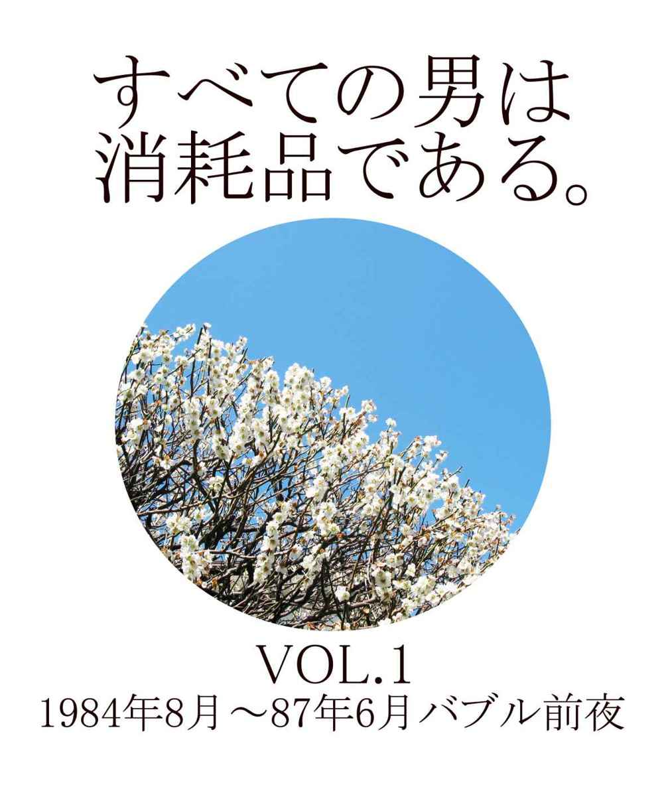

| すべての男は消耗品である。VOL.1～VOL.13: 1984年8月～2013年9月 連載30周年記念・完全版 | |
| 村上龍 | |
| G2010 (2014) | |
『すべての男は消耗品である。』完全版 前書き
まさか、30年も連載が続くとは思わなかった。すべては、K.K.ベストセラーズの小野典子さんとの出会いからはじまった。時期としては、ちょうど『愛と幻想のファシズム』という長編小説の取材で、北海道、帯広近郊の糠平湖畔で3週間のアウトドア体験を終えたころだ。
『すべての男は消耗品である。』というタイトルが生まれた経緯について、「VOL.1 バブル前夜」の冒頭で紹介したと、なぜかずっとそう思っていたが、読み返してみると、言及がなかった。糠平湖近く、大雪山系の山林での、エゾライチョウのハンティングのあと、『すべての男は消耗品である』というタイトルを思いついた。エゾライチョウは、「つがい」でいることが多く、ハンターは必ずメスを狙う。メスが撃たれると、銃声に驚いて当然オスは逃げるのだが、必ず戻ってくる。そして、ハンターに撃たれる。オスを撃ってしまうと、逃げたメスは、決して戻ってこない。いいとか悪いとかの問題ではなく、そう刷り込まれているのだ。極端なことを言うと、オスは1羽いればいいわけで、種の保存として理にかなっている。
そのとき、季節は秋で、エゾ鹿たちが伴侶を探し合うころだった。毎晩、彼方の山々から、メスを得られなかった若い牡鹿の鳴き声が聞こえた。あれほど痛切な鳴き声を聞いたことがなかった。オスは最悪1頭いればいいわけで、メスを確保できないオスは子孫を残さずに淘汰されていく。もちろん大自然の掟が、そのまま人間社会に当てはまるわけではない。だが、大自然の掟のほうに、生物としての人間の本質がある、そう思った。
30年、いろいろなことがあった。わたし自身、変化した部分もあるし、変わらないところもある。フィジカルな変化は露骨だ。体力は確実に衰える。「歳は取ってもいつまでも元気、若い者にはまだまだ負けない」などと平気に口にする年寄りは、嘘つきだ。歳を取れば取るほどフィジカルに強くなっていく種は地球上に存在しない。あえて言えば、がん細胞だけだろう。
30年間、変わっていないのは、わたしがいまだに小説を書いているということだ。30年間、デビューしてからだとほぼ40年間、継続して小説を書き発表してきたので、そんなことは当然のことのように思われているかも知れないが、年を経るにつれてやがて小説を書かなくなる作家のほうが圧倒的に多い。自慢したいわけではない。事実を言っているだけだ。
なぜわたしは小説を書き続けるのか、その答はすべて、この「完全版｣の中にある。
30年という年月を織り込んだ「完全版」を電子書籍で出版するに当たって、K.K.ベストセラーズの小野さんに、最大限の感謝と敬意を表したい。小野典子という編集者がいなければ、『すべての男は消耗品である。』という作品は生まれようがなかった。
2014年5月 村上龍
目 次
すべての男は消耗品である。VOL.1
1984年8月～1987年6月 バブル前夜
09 女にはたくさんの男とセックスするという義務がない、うらやましい
11 すべての男は消耗品であるPart③ だから、自由を愛するしかない
12 「美人は3日で飽きる」というのはブスの自殺を救うための嘘である
17 日本女性は今、一斉に気付き始めている、「ろくな男がいない」と
24 5年後が見えると、女は安心し、やがて退屈し、そして失望する
26 別れ際に、あたしこれからどうしたらいいかしらと彼女は聞き、幸福になった方が勝ちなんだよ、とオレは答えた
27 オジさん達がソウルへ行くのはいまだに「父権」が作用しているからだ
29 あなたの恋人は、あなたに、小さい頃の思い出を語っているだろうか？
すべての男は消耗品である。VOL.2
1987年7月～1990年4月 バブルへ
07 中嶋悟のような男が増えることだけがこの悲惨な現状を救う。
08 他人に興味がないというのと、他人とコミュニケートできないということは違う。
15 いい女を連れていても、落ち着きのない男はうらやましがられない。
21 岡本綾子を見習わなければ、腐った日本に置き去りにされる。
24 不安材料とたわむれることができる、それがタフネスの条件だ。
すべての男は消耗品である。VOL.3
1990年5月～1992年9月 バブル終了
04 「最も大切なことは......」とヴィスコンティは語っている
05 '90イタリアワールドカップでスポーツ取材はもう終わり
15 『ドアーズ』を作ったオリヴァー・ストーンを絶対に許さない
22 「おじさんもなかなかやるじゃん」と『トパーズ』の観客に言われた
すべての男は消耗品である。VOL.4
1992年10月～1995年8月 不況とオウム
02 「どうしてそんなに元気なんだ？」キューバ人は答えた。「人間だからだ」
03 自分の家族がカンボジアへ行く、という想像力がないと、PKOの是非は問えない
11 傷（トラウマ）はいやすものではなく、それから自由になるべきものだ
15 「自分が見たいと思うものは全世界が見たがる」そう思うところから映画は始まる
16 「内部調整」この国の歴史上の人物がやったことはそれだけだ
17 「オレは必ずやれる」という意志と喜び、それを才能という
19 消耗品であることを自覚せよ。それで少しメスから自由になれる
24 NGラ・バンダは明日がわからない地平で音楽を作っている
28 自分の欲望をコントロールして、人間は何も失わないのか？
29 圧倒的な寒々しさを獲得すること、それが現在の私の課題である
すべての男は消耗品である。VOL.5
1995年9月～1998年9月 金融危機
01 他人の話を面白いと思ったことはもの心ついた幼児の頃から数えても、10回もない。
02 また、アメリカで映画を作りたい、私は切実にそう思っている。
03 私の脳細胞はまずいワインのためには1分も稼働しようとしないだろう。
04 何を最優先にして生きていくか、それは本来、最も重要な問いであるはずなのに、この国ではそれはなぜか重要視されない。
05 南米やイタリアの超一流のサッカーを引き合いに出して、Jリーグのサッカーを下手くそ、とけなすのは悪いことなのだろうか？
06 住専だろうがオウムだろうが、あんなニュースを見てると脳が腐る。
07 『パラサイト・イヴ』が、オウムの年に出てきたのは決して偶然ではない。
08 「ゴールにボールを蹴り込む」という欲望を抜きにしては、戦術は成立しない。
10 私はもう、今のこの国には本当の情報がない、などと言う気はない。
11 危機感を持っていない人は、どういったものが危機感なのか、危機感を持つとはどういうことか、わかっていない。
14 言葉はただの記号だから、強くなったり弱くなったりしない。
15 趣味の世界には、他者性や批評性がなく、ただ仲間だけがいる。
17 カストロは時々遠くを見るようにしながら、極めて静かに約30分間、淡々と話した。
18 日本を象徴する言葉を一つだけ上げるとしたら、「間」だろう。
19 私たちの祖父、父親たちは、喉から手がでるほど規範を欲しがっていたのである。
22 近代化が終わり個人の時代になって、絶対に必要なものは「気持ちと生活のゆとり」などではなく、「今はまだコミュニケートできていない」という危機感である。
23 個人と国家の関係性だけでは、もう人間を支えきれなくなっている。
24 では雑誌はこれからどうすればいいのか？ わたしはそんなこと知らない。
25 女子高生をはじめとする若い女達は「かわいい」を連発する。わたしはそのことを批判しない。どうだっていいことだ。
26 今のところわたしはW杯予選で日本を応援していない。まだ日本代表チームに感動したことがないし、感動したことのないものは尊敬できないからだ。
28 中田や名波の優れた技術はメディアから徹底的に無視された。
29 愚かな女子高生と話していると、まるで死人を相手にしているような、いやな感じになる。
30 理念というのは、絶えず疑いを持って現状を見つめることのできる何かだと、柄谷行人は言った。わたしは正しいと思う。
31 わたしにとっての理念とは、「境界」を探して、その中に身を置くことである。
32 わたしたちとは価値観の違う日本人とは具体的にどういう人々であるかを規定し、その人間たちとわたしは違うということを日々明らかにしなくてはいけない。
33 「切れる」という少年たちの「隠語」をメディアを含めた大人の社会がそのまま借用しているあいだは、試行錯誤さえできない。
34 サッカー以外の時間を充実させたいと中田英寿は言ったそうだ。正しいことを言う人だなと思う。
35 外の世界で惨敗してきた人間が帰国して号泣して許しを乞う、そういう光景はもう一切見たくない。
すべての男は消耗品である。VOL.6
1998年10月～2001年3月 衰退期へ
02 何かを知るということは、何を知らないかをはっきりさせることでもある
03 小説や映画はやっかいだ。ものすごく大変で、ものすごい充実感がある
10 わたしたちはものすごい量の金を持っているのに、それを使っていない
15 誠心誠意頑張ればコミュニケーションが成立するという嘘は悪質だ
18 自分の娘が援助交際をしているのがわかったらどうすればいいか
21 「日本的なシステム」というようなカテゴライズは有効だろうか
25 デビュー以来、苦労しましたというコメントをしたことがない
すべての男は消耗品である。VOL.7
2001年4月～2003年4月 9.11
すべての男は消耗品である。VOL.8
2003年5月～2005年5月 衰退止まず
すべての男は消耗品である。VOL.9
2005年6月～2007年5月 衰退加速
すべての男は消耗品である。VOL.10
2007年6月～2009年6月 リーマンショック
すべての男は消耗品である。VOL.11
2009年7月～2010年10月 回復への道
すべての男は消耗品である。VOL.12
2010年11月～2012年4月 3.11
すべての男は消耗品である。VOL.13
2012年5月～2013年9月 大いなる幻影

いい女、かわいい女が出来あがるためには、父親の存在が重要だと思う。これは、心理学のレベルの話だ。
レベルというのは、話題の高尚さとか下品さということではなくて、分野のちがいということだ。
例えば、生物に関する学問でも、分子、細胞からはじまって、内臓、機能、代謝、形態、それに発生、成長、病気も絡んで、個体、種を経て、社会、国家、世界、宇宙、未来と捉えるポイントがいくらでもある。
それと同じで、男と女の問題でも、DNAから社会、国家、宇宙まで、さまざまなレベルで語ることになる。オレは、それをグジャグジャに混ぜて書いているのだけど、学者じゃなくて小説家だから、まあいいだろう。
だから、父親の問題のレベルは、心理学、個人が個人に与える影響ということ。
あたりまえの話だが、いろんな女がいる。ブスは論外だ。ブスにも素晴らしい女はいるが、内面の輝きが表層に表われるというのは、ひとつの転倒にすぎない。
わかりやすくいおう。ブスの中にも社会的に素晴らしい女はいる。有用な女だ。だが、最近の女性雑誌がよく特集しているように、内面を磨けば顔形まで美しくなるというのは大嘘だ。
ブスは論外だ、とオレはいうが、どの時代だろうが、ブスが大量に売れ残ったという話は聞かない。デパートや遊園地に行くと、すげえ！ と大声を出したくなるようなブスが、平気で結婚していて、子供なんか連れている。ブスとやる男もいるのだ。やらせてくれる女が、男にとっては、もっとも大切なのだから、それはしようがないことかもしれない。
なんだか話がややこしくなってきたが、ややこしさついでにもうひとついうと、ブスの規準も非常に「制度」的だということ。たとえば平安時代の美女は、いま見るとブスだ。規準はまったく社会的、制度的なのだが、だからといって、平安時代の美女やニューギニア高地人の美女が好きだという人は、ごく少ないだろう。
だから、オレのいうブスは論外、とは、心理学のレベルなのだと理解してほしい。動物学的にいっているわけではなく、また、文化人類学的にいっているわけでもない。
それで、ブスを除外して女というものを考えると、二種類に分かれる（ブスの恋人をもっている男は、この先は読む必要がない）。
かわいい女とかわいくない女だ。素直な女と小利口な女といってもいい。もっといってしまえば、ポップな女と第1次戦後派的な女と分けてもいい。
小利口な女には決定的な魅力がない。決定的とは、男に決心をさせないということだ。小利口な女には浅知恵があるから、男は、何か大切なものを捨ててまで、その女につくそうとは思わないし、警戒する。
浅知恵とは、女のためにある言葉だ。生物学のレベルでいうと、女には知恵はない。知恵というのは、幻想の父性を背負わされた男にだけあるものだ。
男は構築しなくてはいけない。社会や物語や建築物や数学を構築する。他の動物は構築しない。一発やって、あとのことは知らないですむからだ。おとうさん、なんてことが判明するのは動物園の動物か、家畜だけで、それも飼い主の人間がわかっているだけにすぎない。
構築の過程で、男は知恵を作り出す。
だから、女に知恵はない。バカな女はかわいいというのは、当たっている。バカの意味でよくもめるが、バカというのは、単純、素直だということだ。どうしようもなく生理に拠るということ。
だって、女が生理ではなくロジック（知恵）に拠ったら、子供を生まなくなってしまうじゃないか。
かわいい女は浅知恵でものをいわない。そして浅知恵でものをいうのは、ダメな父親の娘なのだ。だめな父親とは、どんな父親か？
かわいい女だなと思う女は、よく父親の話をする。
「あのさあ、ひどいの、モテたからね、よくおかあさんが泣いてたわよ、お酒も飲むし、車とかも派手なものが好きでさ、浮気もいっぱいしたみたいね。でも、あたしにはね、すごく優しかったの」
この手の話が、最高だ。こういう風に父親を語る女は、最高だ。
父親の職業や社会的地位は、まったく関係ない。大学教授でも、サラリーマンでも、画家でも、競輪選手でも、陸送のドライバーでも、なんでもいい。
要するに、「男」が感じられるかどうかなのだ。性を感じるかどうかだ。
いやらしくとらないでほしい。父性、忘れないでくれ、これは幻想なのだ。強力な制度だが、幻想だ。人間が父親という制度をもつのは、二本足で立ったのと同じくらい重要な、永遠に解けない謎なのだ。
男は、制度的に父親になるしかない。女が他の動物と同じように、生物学的に母親になれるのとは決定的な違いだ。
良い父親になろうと本気で努力する男は、制度にすがるダメな男だ。それを娘は見抜く。娘は（本当は息子も）、良い父親ではなく、良い男を望んでいるのだ。
父親がいくら玩具をプレゼントしても、娘は感謝するかもしれないが、尊敬はしない。娘がプライドを発見するのは、父親が男としての魅力を発揮するときだ。本当は娘だけじゃない。息子も女房も孫も全部同じだ。
娘に何をしてくれたかではない。どういう姿を見せたか、で決まる。
ダメな父親、つまり制度にすがる父親を見て育った女は、オルガスムスよりも浅知恵の方を大切にする。つまり、ダメな女になってしまう。
そんな女と付き合うと、ろくなことがない。ただ仕事には打ちこめるかもしれない。ダメな女はダメな麻薬と同じで、効かないから、勤労意欲がそがれないからだ。だが、そんなポテンシャルの低い勤労意欲が生むものは、元気のない近代文学のようなものだ。くそみたいな仕事だ。
極端にダメな父親、それは制度の裏返しとしての近親相姦者だろう。誤解しては困るが、男としての魅力を発揮する父親といったのは、あくまでも外に向かってという意味だ。人間を含めた動物には、インセストタブーのシステムが働いている。したがって近親相姦は、逆制度ともいうべき制度的なもので、決して本能的ではない。むしろ、本能の抑圧が原因で起きるのだ。
だから、父親に犯された娘は、レスビアンになるか小説家になるか、いずれにしろ道は暗い。犯した父親を責めるとレスビアンになり、自分を呪うと小説家になって救われようとする。
まるで男のように、幻想に頼ろうとする場合もある。以前、SMクラブを取材したとき、半数の女が父親との性交渉を告白した。今のようにSMがひどくファッション化する前のことだが、彼女たちは縛られてから犯されないと、強要と羞恥がないと、性的なアイデンティティを保てない。強引な信頼関係をつくることが、なによりも大切になってしまうわけなのだ。
オレがいつもいってることだが、男は"消耗品"だ。使い捨てライターみたいなものだ。性能が悪かったり、ガスが切れたりすると、捨てられて、文句もいえない。
女は"戦利品"だ。倒さなければ手に入らない。男はさまざまなものを倒して、やっと女を手に入れるのだ。
まず倒すべきなのは、その女の父親だ。そして、その敵が偉大であればあるほど、戦利品も豪華だということだ。
結婚とは、制度である。
凡百の、玄人素人を問わず批評家が、まじめふまじめを問わず、結婚について語る。あまりいいものではないとか、男にとって発展の材料になるとか、一夫一婦制は権力の装置だとか、一生の墓場であるとか、さまざまだ。
いい男はみんな結婚しているという説もある。そう言われてみると、オレの周りにいる才能やパワーのある男はみな妻子持ちだ。
第一に、いい男は、いい男というのはセクシーな男ということだが、当然モテるので、女とくっつきやすい。第二に、いい男は、愛情に敏感なので（どんなに不幸な境遇で育っても、いい男は身近な者には優しい）、イージーに女を捨てたりしない。第三に、いい男は、常に外部へと出ていく傾向があるので、戻ってくる帰港地が必要だ。第四に、いい男は、原則的に、性的にノーマルである。
35を過ぎて独身という男は異常だ。
結婚をしないステキな女っていっぱいいる。
逆に言えば、主婦というのは、もう女ではない。他の男の専用家政婦であり、母親だ。結婚してないステキな男にはあまり会ったことがない。ホモは別だ。ホモには、特にアメリカには、ステキな男がいっぱいいる。だが、ホモはニヒリストだ。生物工学とホモセクシュアルは人類の未来を変えるだろう。だが、そんなことは本稿のテーマではないし、オレは本物のニヒリストは嫌いだ。
本当は、男は結婚を拒否したいのだ。どんなに好きないい女であっても、結婚をしないですむ方法はないかと考える。
だけど、してしまう。
なぜか？
制度だからだ。制度をバカにしてはいけない。制度は強力だ。この世の中の、ほとんど100パーセントのことがらが、制度を支える装置としてある。
制度に対抗するのは極めて難しい。男はきっと対抗できない。だが、制度というものは、あたりまえの話だが、嘘であり、幻想である。人間が勝手に作ったものだ。必然性などない。動物に制度は存在しない。動物に比べて人間は不完全だから制度を確立したのだ。
オレが思うに、今一番、この制度に立ちむかっているのは、女だ。個人的な差はあるだろうが、浮気をする主婦、離婚をする中年女、これは生物的なパワーが制度に我慢できなくなっているのだろうと思う。
離婚したい理由、夫が退屈だから、最近流行のこのパターンはすごい。世間や時代風潮といったものを漠然と捉えるのは嫌いだが、中年女達の苛立ちは面白い。もっとも制度を告発しているのは彼女達だ。
その点、元気のいいオジさんと、女子大生に代表される明るいギャル達は、制度に奉仕しているようなものだ。ギャルがからだを売る、それは制度を支えることだ。オレは中年女よりギャルが好きだけどね......。
当然だが、アナルセックスをしたくらいで制度から自由になれるわけではない。
制度の中で、女の足の小指が反り返るのを眺めて楽しむのも悪くはない。だが、制度の恐ろしさを忘れると、地獄めぐりに付き合わされることになる。
国家、法律、風俗、宗教、慣習、家族、教育、就職、冠婚葬祭、そのどれをとっても、「私生児」や「愛人」や「妾」にとって、不利だ。
誰がこんな制度を作ったのだろうか。権力者じゃない、オレ達の祖先だ。放置すると、力のある男が女を独占してしまうので、オレ達の祖先が、民主主義と共に採用したのである。
ああ、やめよう。本質的な話をすると暗くなる。
大島渚の『愛のコリーダ』や今村昌平の『赤い殺意』それに檀一雄の『火宅の人』や中上健次の『水の女』が、暗く本質的なテーマにもかかわらず、オレ達に勇気を与えてくれるのは、制度に抗する生命力をうたいあげているからだ。しかも、制度の恐さを充分に知っていて、なお、生命力を支持しているから勇気が湧くのだ。
アートとエンタテインメントの違いは、実はここにある。純文学とは、制度と生命力の抗争を扱うジャンルなのだ。
制度は、一身の安全を一応保証するが、退屈で、疲れる。また快楽もない。
中年女が制度に苛立っているのに対して、中年男は制度に疲れているようだ。
「あたしとのことは、単なるアソビだったのね？」
と、下手な脚本の台詞によくあるが、とんでもない話だ。
結婚のないセックス、恋愛は全部、アソビとされる（まあ、そういう表現も制度が強力だから生まれたんだけどね、アソビと言ってしまった方が気楽でいいけどね）。
アソビって一体何だ？ アソビはプレイであり、アンチ・ロマンだろう。
以前、性風俗を取材してる時、新大久保に「おじさん通り」というのがあって、びっくりした。会社が終わる夕暮れ時、おじさん達がこの通りへ集まってくる。それを狙ってギャル達も（しかしギャルというのもひどい呼称だね）集まってくる。両者は、電柱の陰かなんかで出会って、話がまとまると、喫茶店へ行く。そして、お話をする。
お話をする、それで終わりだ。あとは何もしない。手も握らない。もちろん射精もしない。
これは何だ？
悲しいなあ。ロマンを求めているのだろうが、ひどい。
だが、考えてみると、射精するだけだったら、自分でやっても、ニワトリでも老婆でも犬でもコンニャクでもダッチワイフでもいいのだから、オスとしては、やはりロマンを求めているのだと思う。制度に抵触するロマンが欲しいのだ。さもしい。
その点、変態は偉い。オレは幸か不幸か変態ではないが、変態は突き進んでいる。
植物人間になりたいというマゾヒストがいるらしい。すごい。ホテルのロビーで裸で縛られるのが好きなマゾもいるそうだ。すごい。奥さんも医者なので、腹を切っては縫い合わせている切腹マニアもいるらしい。負けてしまう。うんこを食べるために自分の女に1週間、フルーツだけを食わせるスカトロジストもいるそうだ。
こうなってくると、もう変態セックスというより宗教に近い。
宗教に頼らず制度に抗する方法はないのだろうか？
堕ちていくしかない。道行きである。
それが流行りそうな気がする。女もそれを望んでいるんじゃないか？
先日、銀座のバーで某女優と会った。もう30代後半だろうが、充分すぎるほどきれいだった。その女優と、道行き、について話した。堕ちていきたいのよ、と女優は言った。
全部捨てるのね、仕事も、親も、親類も、知人も、家も、名誉も、捨てるの、男だけね、その男だけよ、二人で知らない町に行くの、ケンタッキー・フライド・チキンとかマクドナルドとか丸井とか絶対にないような町よ、死ぬわけじゃないのよ、二人でどうしようもない暮らしをするの、誰にも嘘をつかなくていいし、誰にも祝福してもらわなくてもいいでしょ？ あきらめきって、ダラダラと、二人きりで暮らすのよ......。
よくわかる。オレだって憧れる。そんな二人は地獄へは行かない。そんな二人が罰せられるのは、制度の側の教訓だ。
徹底的に制度と戦った者は、必ず天国へと迎えられるのである。
市原悦子主演のテレビドラマを観た。スワローバンクの話である。主婦が若い男を買うというやつだ。スワロー役は金田賢一だった。市原悦子が、いかにもという感じで、最後まで観てしまった。
市原悦子の夫役はレオナルド熊だ。夫婦は爪に火を灯すような苦労の末、小さなスーパーを経営している。だが、苦労を共にしてきた夫は小金ができたことで、台湾やフィリピンに出かけては女漁りをしている。
市原悦子は、金田賢一に金を貢ぐ。売れっ子の金田賢一を確保するために、30万円を店からくすねて、スワローバンクの正会員となる。金田賢一は、大会社の専務夫人に就職の世話を頼んで、警察に売られる。上流社会の力がスキャンダルを拒み、弱者である売春夫を叩き潰す、そういう図式である。
警察が踏み込んだ時、ホテルの一室には市原悦子もいた。市原悦子は、夫や家族や社会から断罪される。だが彼女は屈せずに、金田賢一のアパートを訪ね、冷たくされた末に、彼を刺すのである。
「愛してるって言ったじゃない」
と、市原悦子は金田賢一を責める。
「それは単なる仕事だ」
と、金田賢一は答えて刺されるのだ。とにかく市原悦子がすごかった。説得力のある演技だった。
ところで、スワローバンクというのは本当に繁盛しているのだろうか？ 女もセックスを買いたがっているのだろうか？
黒人を漁る女の子たちは、あれは一種のファッションだと思う。
愛した人が黒人だったというケースを抜きにすれば、本当に黒人のペニスを求める女は、病気だ。オレはそんな女を佐世保や福生でたくさん見てきた。黒人のモノは、確かに恐ろしく長い。だがオージーに参加したヒッピー娘たちにアンケートしても、すごい快楽があると答えたのは一人だけだった。その娘は日系米人3世だった。奥まで届く感じがいい、とその娘は言ったが、その娘はフィスト・ファックを好む純粋の淫乱症だったので、参考にはならない。
日本人の女のヴァギナは日本人の男に合って作られているなどとは言わない。だが、混血がなく、1万年近く続いてきた東アジア人の雌雄形態を無視するわけにはいかないだろう。
黒人を好む女は、まず混血が多かった。その他の女も、家庭が崩壊している場合が多かった。きっと彼女たちは復讐していたのである。なにか？ もちろん制度にである。家族という制度、それが壊れていて、その他の制度は抑圧的に機能していることに対して、復讐したのだ。
市原悦子の場合はどうだろう？ 彼女は自分がボロ屑みたいな存在だと思っていた。誰も彼女を女だと思っていなかった。彼女はペニスを欲しがったわけではないだろう。だったらバイブレーターで充分だ。
「あたしはセックスを買ったんじゃないわ、心を買ったのよ」
という台詞もあった。この台詞に吹き出すのは簡単だし、中年女性の危機意識などというものにもオレは興味はないが、ある種、リアリティはある。
そういうのはやりきれない。もう、とことん暗くなってしまう。まったく元気も勇気もみんな失せてしまう。
市原悦子（もちろん本人ではない）の男買い、人の心をこれほど落ち込ませるものがこの世の中にあるだろうか？ 男が（つまりレオナルド熊が）悪い？ 冗談じゃない。別れればすむことだ。別れられない？ 才能がないからだ。一人で生きていく才能がないからだ。
今の世の中で、もっともつけあがっているのは、若い女の子とおじさんだ。それも、きれいで若い女の子と、金持ちのおじさんだ。
ビンボー、これは『金魂巻』でもいわれている通り、もう救いようがない。ブス、オレが常に指摘している通り、これも、だめだ。
どういうことか？ みんなが本当のことに気付き始めているだけだ。すべては才能なのである。顔やからだの美醜、生まれ、育ち、それらも才能の一部だ。才能はほとんど運命と同義語だと言ってもいい。
例えば、このようなことを言う奴がよくいる。
「いやあ、本当は画家になりたかったんだけど、もちろん才能もあったけどね、オフクロが病弱だったんで、家業を継いだんだよ」
こんな奴は、才能がなかったのだ。
顔が悪過ぎて出世しないデザイナーも大勢いるだろう。才能がないのだ。肝臓が悪くて出世しない商社員も、才能がない。
自分のことを言って照れるが、飲み屋でオレはよくからまれる。映画を撮る時が一番多いが、24でポロッと芥川賞をとって映画まで作りやがって、というわけだ。
そういう時、映画なんて撮ろうと思えば誰だって撮れる、とオレは答えるが、ますます相手を怒らせることになる。
「芥川賞なんて20代で簡単にとって、億単位の金のかかった映画をサラッと撮って、スクーバダイビングとテニスをして、1年のうち60日は南の島へ行って、速いヨーロッパ車に乗り、無数の女とうんざりするほどいいセックスをしていないと、いい小説は書けない」
なんて言うと、のからみ者は、ほとんど殴りかかってくる。本当は、ジェット機も必要だし、数千万のコンピュータもいるし、タヒチあたりに島がいるし、スタジオやダビングルームもいるし、ダイアン・レインとニャンニャンしなければならないのだ。
西欧の小説家はそのくらいのことをやっている。オレにも悲惨なことはあるよ。でも、そんなこと顕わにしたくない。
さて、市原悦子の男買いに話をもどすが、市原悦子演ずる主婦は、才能がないくせに、愛を求めているわけだ。
才能がない人間に、愛を求める資格はない。世界は厳しいのである。誰だって、一つや二つ傷を持っているし、乾いている。いま時、心が潤っているような奴は、鈍いやつだ。
その傷を、他人になめさせようとする人間がいる。もっとひどいのになると、他人に押しつけようとするのもいる。市原悦子演ずる主婦の男買いがそれだ。彼女は才能がないから、男に何もしてやれない。ただ金品を与えるだけだ。文化人類学の指摘を待つまでもなく、贈与は脅迫である。
このテの女と付き合ってはいけない。このタイプの女は、中年主婦だけではなく、あらゆる年齢、階層に存在する。もちろん男にもいっぱいいるが、この際、問題は女なので、話は女に限ってしまおう。
このテの女の見分け方。ジョークが下手なくせに意味もなくよく笑う。女同士でたいして仲もよくないのに群れたがる。純文学やクラシックに興味を示す。外に愛嬌をふりまき、内に威張る。
やめようやめよう、ムダだ。このテの女でも、ちゃんと結婚して、ちゃんと子供を作っている。遊園地なんかに行くと、典型的なこのタイプのブスがガキを連れてたくさん歩いていて、オレはわけがわからなくなってくる。
きっと、このテの女は逆にすごくしぶといのだ。
裸に剝いても立たなくなったら、すぐに捨ててしまえ。
哀れなオレたち男性には、それくらいしか対抗策はない。
オレのヒッピー時代の友人が経営するスナック「パパラギ」には、いろんな人が遊びに来る。某有名私立高の先生が「パパラギ」で面白いことを言っていた。
その先生は、はぐれ者のメッカ「パパラギ」によく来るのだから、やはり、はぐれ者で、進路指導の面接なんかもあまりまじめにやらないらしい。いい人なのだ。あまりまじめに進路指導の個人面接をやると神経に悪いのだそうだ。そこで、ある程度シラーとして生徒の話を聞く、生徒の言葉によく注意すると、ある特定の言葉が繰り返されるのに気付くのだそうである。
例えば「自由」。
「僕は自由だから」「僕は自由じゃなきゃいけないから」「僕は自由が好きだから」「自由な僕は......」等々。
そういう生徒は、自由から最も遠いところにいて、憧れているだけだと先生は言う。
だから、どういう言葉を多用するかで、その生徒の欠落している部分がわかるわけである。
それは「愛情」だったり「才能」だったり「ロマン」だったり「幸福」だったり「希望」だったりする。
雑誌『PHP』には、その種の言葉があふれている。つまり、『PHP』は、愛情や幸福や才能や希望のない人びと向けの雑誌なのだとわかる。
言うまでもなく、オスとしての男は、種の保存ではなく、自分個人の遺伝子の保存のために性本能を働かせて生きている。勝手なのだ。したがって、ダメなオスが増えると、それだけ自分は有利になるのだ。
オレは優しいからはっきり言うが、仕事面にしろ性のことにしろ、誰がいったい本当のノウハウを教えるものか。誰も本当のことは言わないのだ。
それなのに、例えば鈴木健二なんかの、くそのような情報を、まともに信じるだけじゃなくて実行したりする精神の田舎者が本当にいるらしい。
まあオレには無関係だからどうでもいいことだけど、鈴木健二なんかの言うことをまともに聞いてると、自分の種を残せなくなっちゃうよ。
ところで本稿のタイトルは『男と女のいい関係』というんだが、もちろんこれは編集部の方で勝手に付けたものだ。
このタイトルもよく見る。女性誌や婦人誌、ありとあらゆる雑誌で花盛りだ。森永、グリコ脅迫犯は権力の報道管制の中で立派に戦っているというのに......。まったくヒマなことである。
いい関係に飢えているのだろう。
セクシーな女とは？ という特集も多い。ある時、気まぐれで『LEE』と『With』と『COSMOPOLITAN』と三誌のインタビューを受けてみたら、全部「男にとって、セクシーな女とは？」がテーマだった。完璧なブスのフリー記者がインタビュアーだったのも共通していた。
（ああ、これでオレは多くの女性フリーライターを敵にまわすことになる）
当たり前だが、セクシーなんて言葉を使う女は、セクシーではない。
先日、落合恵子女史に会った。かわいい人だった。
対談があの『世界』（「あの世界」ではなく、岩波書店発行のあの『世界』である）だったこともあって、いろいろ難しい話も出たが、微笑むと女史は普通の、上質の、かわいらしい女になった。
そのテーマは、「戦争とセックス」という、短絡的にまとめるなら、とんでもなく陳腐に、ちゃんとやろうとするなら、100時間話しても話しきれない、とんでもないものだった。
オレの中には、すでにライフワークとしてのテーマが五つほどある。それは、「死刑」「戦争」「独裁者」「宗教」「セックス」である。そのうちの二つがテーマとして現われたのだから、慌てて、混乱した。
だが、「戦争とセックス」に関しては、一つの結論はすでにある。
「いいセックスは戦争を防止する」というものだ。難しく考えないで欲しい。単純なことだから。
イラマチオをやれない哀れな読者も、一度くらいは、よかったなあ、と神に感謝を捧げたくなるようなセックスをしたことがあるだろう。情欲とロマンが溶け合った、ベストのセックスだ。
そんな射精の後、女の髪を撫でながら、戦争したいと思うか？
ローレンツ博士の指摘を待つまでもなく、そんな時には、攻撃衝動はもう跡かたもなく消えてしまっているものなのだ。
そこで次の問題は「いいセックス」の条件ということにある。必要十分条件である。これは難しい。だが、必要条件ならすぐにわかる。
それは「体力」だ。「愛」じゃない。愛があっても肝硬変の発作中ではセックスどころではない。よく「愛があれば年の差なんて」と言うが、あれは「体力があれば......」のミス・ヴァージョンである。
ところで少し「愛」にこだわってみると、愛のあるセックスと愛のないセックスと、どう違うのだろうか？ セックスそのものには変わりはないという安易な結論がミエミエだが、違う。
愛を、親近感と言い換えると、それはいいセックスどころか、セックスそのものの妨害要因となる。（インセストタブーの根本は、親子、兄妹の親近感である）
愛を、自己犠牲と言い換えると、それはスワッピングの本質と重なる。つまり、二人だけの秘め事が拡散してしまう。
愛を、独占・所有と言い換えると、それは農耕・資本主義の最下層まで墜落してしまう。
だが、愛は、親近感や自己犠牲や独占・所有の混じり合ったものだ。そして、実は、セックスの本質とは、親近感・自己犠牲・独占・所有といったことから、逆に最も遠いものなのである。
そんなことどうでもいいわ、というのがセックスだ。
だから愛はセックスそのものにとって、負の要因として作用する。
誤解するなよ。だから愛のあるセックスの方がよく燃えるのだ。愛が一瞬裏返るからである。
ソープランド、いや特殊湯界には愛がないから、裸になろうが、ペロペロしようが、ずっとのっぺらぼうのままなのだ。単なる排泄である。その女が、親近感や自己犠牲や独占・所有を忘れてただ喘ぐのを見る楽しみがあるためには、その女の、また女への愛がなければならない。
体力、これに関しては、説明の必要はないだろう。禁煙して体力が戻るわけじゃない。
才能の問題だ。
要するに、才能のない連中が戦争をしたがるのである。
酒場で、女が泣いているのを見るのは、なかなか興味をそそられるものである。泣いているのがブスなおばんだったら、これほど見苦しいものはない。ヒムラーだったら即、銃殺だと考えてしまう。
きれいな女はどうしてこう得するのだろう。泣いたって怒ったって、許せてしまう。
怒り、これはもっと顕著である。ブスが怒ったって、きかない。みんな笑うだけだ。それでも怒り続けると、嫌われてしまう。
きれいな女が怒ると本当に恐い。世の中はまったく差別だらけだ。
さて、泣いている女に話を戻そう。オレとオレの友達とその恋人と三人で、青山の広いバーにいた時のことだ。ステーキがうまい店だった。オレの友達とその恋人は、別れ話に花を咲かせていた。オレの友人はものすごく明るい奴なので、笑って別れようというつもりだったのだが、そうはうまくいかなかった。いくわけがない。女の方が泣き始めた。
かわいい女だったので、まわりの客達もみな好意的な眼差しを向けてくれていた。そんなかわいい女を泣かせて悪い奴だ、などと思われて少しうれしかったのか、それとも単なるテレか、オレの友人は終始笑いながら、
「な、決して、愛がなくなったわけじゃないんだよ、疲れてしまったわけでもない、君の幸福を考えると、オレ達は今、別れた方がいいと思うんだ」
などと都合のいい、勝手なことを言っていた。そこで、その店自慢のステーキが出た。泣いていた女は、ステーキを食べた。二切れ食べて、オレの方を向き、こう言ったのだった。
「おいしいっ、リュウさん、このステーキ、本当においしいわよ、冷めないうちに、食べたら」
両の瞳を涙で濡らして、そう言ったのだ。オレは、唖然とした。オレの友人も唖然としていた。
女の涙は本物だった。間違いなく彼女は悲しみの極みにいたのだ。
そこでオレ達は推測する。メシは喉を通らないのではないか......そんなことはない、通るのだ。おいしいっ、と言って、どんな時にでも、女はステーキを食べるのだ。そんな女に、かなうわけがない。
事実、「おいしいっ」と女が言った後、オレの友人は唖然として、笑うのを止めた。その友人も非常にきれる奴なので、すぐに、負け、を認めたのだろう。
「君ってホントに......君ってまったく......」と、昔、郷ひろみはうたったが、その通りである。
例えば、戦国時代など、城が落ちて敗れた主君の後を追って自害する奥方が美談としてよくテレビなんかに出てくるが、あんなものは嘘に決まっている。実際、そんな奥方も何人かはいただろうが、自分の主君を殺した男の新しい妻に収まるケースが多かったのは間違いない。昔からそうだったはずだ。泣きながら、「おいしいっ」とステーキを食べる女達は、あっという間に主君の死を受け入れ、他の男に走るはずなのだ。
「それが女の弱さなのよ」などという声が聞こえてきそうだが、嘘だ。どこが弱い？ 強さではないか。
「戦争は、女・子供にとっても最も悲惨だ」などというキャプションで、怪我をして逃げまどう親子連れの反戦写真なんかがよくある。おかしい。それは、銃後も悲惨だろう。また、インドシナのように全土が戦場になった国では、女・子供もたくさん犠牲になったのは事実だ。
しかし、考えてみよう、兵隊は、男だ。最大の消耗品である兵隊は、男なのだ。銃後も悲惨だろう。とくに負け戦さでは空襲もあるし、大変だと思うが、男はもっと悲しいのだ。
第1次戦後派の、あの悲しい作品群を見よ。男は、もっと悲惨なのだ。
先日、ふぐを食っていたら、隣で50過ぎの、管理職と思われる男が二人、話していた。
「○○君が、離婚したの、知ってるか？」
「ああ、ボクは先週会ったよ、老けちゃったね」
「そうだろう、すごく沈んでて、『死にたい』なんて言うもんだから、焦ったよ」
「しかし、女はひどいな」
「そうだ、でも、かなわないぜ。ひとり身の年寄りでも、おばあさんだったら誰か遊びに来るけど、男のひとり身なんて、誰も寄りつかないものな、うっとうしくてさ、そうだろう？」
そうだ。何回も言ってるが、男は消耗品なのだ。どのような社会でも、女は大切にされている。
もし人工の子宮がハイ・テクの進歩で完成すれば、人類は変化するだろうか？ 人類は人類ではなくなるかも知れない。
そこで、消耗品である男はどうすればいいのか？
女に勝つ方法はあるのか？
その答えこそが、全人類の全ての歴史なのだ。
芸術、経済、政治、戦争、宗教、法律、文学、建築、それらの歴史こそは、男達の「母性に対する反逆」なのである。
それで、女には勝てるのか？
勝てない。
女子大生がのさばるのは当然なのだ。平和が続けば続くほど、女はのさばる。これで、全ての女が経済的自立を果たして、組織労働者・現代の奴隷達がロボットに職場を奪われる日がくると、間違いなく、一夫一婦制は崩壊するだろう。
女達は、より正直に生きるようになるだろう。
だめな男を独占するよりも、すてきな男の何番目かの女になった方がいいわ、と平気で口にするだろう。
そうなったら、だめな男達は、戦争をしたがるだろう。
だめな男達というのは、政治家や軍人のことではない。今、これを読んでる君、君のことだよ。
それでは、一夫多妻制は、男に幸福をもたらすだろうか？
ホテルのバーで、サウジの空軍将校と話をしたことがある。
「日本の女はすばらしい」
と、その男は言った。油井の権利も持っていて、資産は何百億あるか自分でもわからないという。日本の女がすばらしいというのは当たり前だ。ある調査によると、日本の女は世界一人気がある。同じ調査で、日本の男は、27番目だった。
「日本の女を捜してるんだよ、ボクはまだ三人しか妻を持ってないから、4番目にはぜひ日本人をと考えてるんだ」
「そうか、サウジは四人まで妻がもてるんだね」
「そうだ、うらやましいか？」
オレは、首を振った。一人でももてあましてるのに、四人もいたら大変だ、とオレは考えたのだった。
「四人も女房がいたら大変だろう？」
空軍将校は、苦笑して頷いた。
四人だろうが、七人だろうが、100人でも同じだ。
制度には、意味はない。快楽を得ようと思えば、リスクを負って、制度の外へ立つしかないのだ。
才能には理由がない。才能のない連中は理由を欲しがる。
私生児だったから、
両親が英才教育をしたから、
芸術家の家系だから、
戦後生まれだから、
理由は何でもいいのだ。特別視しようとする、それは間違っている。
才能のない連中は他にもさまざまな嘘や欺瞞を利用する。
昔の自分達の成績を思い出してみればとても無理だとわかっているのに、子供を有名校へ入れようとする親達......いや、本当はこういうことはあまり言ってはいけないのかも知れない。オレはそういう連中を励ましたくなることもあるのだ。あまりに哀れだからだ。
名著『金魂巻』を書いた渡辺和博も、ビンボー人の取材を続けるうち、いつしか侮蔑の笑いも消え、腹立たしさと悲しみが湧き起こったと、言っていた。
オレが今住んでいる街は東急グループが開発した一大新興住宅都市だが、「開発」による成功を自分の才能のためだと単純に勘違いしている連中が、土地成金を始めとして、大勢いる。
オレは柔軟だから、外部要因を才能の範疇に加えてもよいと思っている。大きく言えば、戦後日本経済の発展も冷戦という世界構造があったためだし、小さく言えば、オレのデビュー作が当たったのも世間が若い新人作家を待っていたせいかも知れないからである。
だが、困るのは、はっきりと外部要因で金を得た連中が、どうも楽しそうには見えないのだ。
そういう連中に限って、極度に他人をうらやみ、才能に理由を見つけようとする。彼らの信条は忍耐と努力だ。彼らは、マッケンローを憎み、おしんを愛する。だが、才能は努力をある程度要求するが、努力で才能を産むことはできない。
芸術・文芸だろうがバイオテクノロジーだろうが、大切なのは金と時間の浪費である。金と時間の浪費がないところに、アイデアは浮かばない。生まれるのは、せいぜい小さな小さな生活の知恵にしかすぎない。
『ひよわな花・日本、分析と警告』を書いたブレジンスキーは、日本の社会構造と考え方が、革命的かつ創造的な研究開発には適していない、と指摘している。
ブレジンスキーによれば、非集中化がかなりの程度に進んでいること、高度の危険を許容しうること、非正統的な考え方が認められること、若い科学者や経営者が大きな権威と自由裁量権を持つこと、それらが革命的かつ創造的な研究開発の条件であるそうだ。そんな条件など日本にはない。
しかし、オレはなぜこんなことを言っているのだろう、本稿は、男と女のいい関係について書かれるべきものなのだが、話題は混乱している。
オレはきっと、今焦り苛立っているのだ。
まかり通っている嘘の多さに苛立っている。その嘘は例えばキスをすると妊娠するとかオナニーは害があるとか、そんなかわいらしいものではない。
例えば、子供を無理な進学競争へと追いやっている親にこう言う。
「でも、考えてみなさいよ、あんたは東大出てないでしょう？ 奥さんも同じだ。DNAって知ってる？ 決められてるんだからさ、子供が可哀相だよ」
するとかならずこういう答えが返ってくる。
「でもね、オレ達は勉強が嫌いでね、勉強しなかったんだよ、勉強してたらそりゃ違ってたさ、だから、子供には......」
もう、オレは黙るしかない。
やめようやめよう、バカな連中のことは放っとこう、そんな奴らを気にするなんて時間のロスだ、時間のロスを平気でやるのは、元気がない証拠だなんて思うのだが（人生訓を語り始めたらそいつはもうオシマイだ）、男と女の問題は、その男、その女の問題で、「関係」などというものは存在しないと知っているものだから、つい、現在の奴隷達に目がいってしまうのである。
関係などというものはないし、芝居が通用するのはたった1回だけだ。自分のエネルギーが低下すれば、女との関係も低下するだけの話なのに......。
奴隷共には、制度外へ旅立つ恋愛などする資格はない。
今回は徹底的に文学的にいこう。
なぜ、男は女を求めるのか？ 性欲があるから、ではない。純粋な性欲はもはや人類にはない。
犬にはある。犬は、人間の手だろうが他の小さな牡犬だろうが猫だろうが、腰を揺すって、射精したがる。これが、性欲だ。人間のオスがメスを求めるのは、ただ射精したいからではない。もしそうならコンニャクでもダッチワイフでも牝羊でもなんでもいいはずだ。
オレがずっとロマンと呼んできたものは、実は、自己確認のことだ。
自分が自分であることの確認だ。
三浦雅士風に言えばこうなる。
「自分を自分であると認めるということは、まず自分を一人の他者であると見做し、その他者をさらに自分自身であると見做すことである。」（『メランコリーの水脈』）
そんなバカなと思う前に、次のことを想像して欲しい。
あなたの顔と名前と職業を知っている人がすべて、ある日、突然、あなたに向かってこう言う。
「あなたなんか、知らない」
母親も父親も妻も子供も恋人も同僚も友人も上司も行きつけのスナックのママもかかりつけの歯医者も、すべての知人からそう言われたら、あなたは多分、自分が誰なのかわからなくなるだろう。
逆に言えば、それらの他人が、あなたの自己確認を支えているわけだ。
美しい女が、衣服もプライドも恥もすべてを投げ出して、「好きよ」という。
これほどすごい自己確認は世の中に他にない。その女は、すべてを受け入れる。名前、職業、顔、肉体、そして性器も、精液も、である。美しい女によって得られる自己確認が最もうれしいから、たとえ大統領になってもノーベル賞をとっても、オリンピックで金メダルをとっても、いや名誉や金や権力があればあるほど、男は決して満足することなく、求めるわけだ。
エドウィン・モーゼスが逮捕された。そのことについて、酒場で話した。オレと、ある有名なミュージシャンと、有名な映画プロデューサーと、有名な写真家、もちろん男ばかりだ。
「陰謀に決まってる」
「モーゼスには敵は多かった」
「あんな男が、サンセットの娼婦を買うわけがない」
「そうだ、サンセットの娼婦はブスで年寄りばかりだもんな」
「オレだって買わないよ」
と、全員が陰謀説に賛成したのだが、一瞬の沈黙の後、しかし......とオレが眩いた。みんなが、そうだよな、と言った。全員で同時に、わかんないよね、と言って、大笑いになった。
どんなに偉くなっても、みんな、男には、最下級の娼婦を買う可能性がある。そんな恐ろしく寂しい夜があるものだ。
女にもあるのだろうか？
オレにはわからないし、あまりわかりたくもない。
昔からオレはエッセイが嫌いだった。下手くそだったせいもある。小説もうまいとは思わないが、うまくなってたまるか、と決心しているところもある。書くことはオレにとって常に非日常的なことなのだ。書くことが日常になってしまった作家やエッセイストは、すべて死後、地獄に堕ちるだろう。
金貸しも同じだ。通貨や言葉などという幻想の産物で金儲けをしている人間が天国へ行けるわけがない。金貸しの方がリスクがあるだけまだましか......。
小説家は時には、いやいつも、他人の貴重な体験を、平気で奪って、ギャラをとる。ひどい商売だ。それを日常の業務にするなんて、神はきっと許さないだろう。エッセイはもっとひどい。
とかなんとか言いながら、今、オレは自分のことをライティングマシンとか称して、7本の連載を抱えている。そのうち3本はエッセイだ。機械になって書いていても、やはり書くことは非日常的なのだが、今言いたいことはそんなことではなくて、「説教」のことである。3本もエッセイの連載をやっていると、元気がない時に、「説教」をしてしまうというとんでもない過ちを犯すこともある。
「説教」などする奴は、偉大な宗教家を除いて、全部、クズだ。歴史を見ればわかる通り、偉大な宗教家など1世紀に一人もいないのだから、説教する奴は、もう全部クズだと言うことになる。
他人のことは放っといて、ただひたすら自分の快楽を追求する、これが人類が平和であるための、唯一の道なのだ。
説教を始めた瞬間に、人はみな鈴木健二になってしまう。説教は、醜い。
オレはまだ比較的若いから、飲み屋などで、よく先輩の小説家に説教されることがある。
本人は「助言」のつもりなのだろうが、助言も説教もオレは嫌いだ。嫌いだが、オレはその年寄りの作家を殴ったりはしない。暴力は大好きだが、年寄りや子供や女を殴るのは嫌いだ。オレは両親の愛情に恵まれて育ったので、幸か不幸か、弱いものには優しいのだ。
①「村上君、若い時に銀座なんかで飲んではいかんよ、こういう世界へ来ると、人間は堕落する」
②「村上君、他人の金で飲んではいかんよ、自腹を切って遊んでこそ、何かがわかるものだ」
説教は、大体そんなものだ。何という下らなさだろう。よし、ついでだから、年寄りの悪口を言おう。
㋣は、銀座のクラブを特別なものだと思っているから、①の発言となるのだ。特別な場所じゃない。いい女は他にもいっぱいいる。ただ、銀座のクラブは治安がいいから、料金が高いだけだ。
②の発言は、㋣に限らず、よく聞く。きっと、通貨という制度を信じているのだろう。オレはおごって貰ったからといってまったく何のコンプレックスも感じないし、おごったからといって優越感もない。だが、礼儀というものがあるから、個人におごって貰うと恐縮する。恐縮するが、オレにはそれだけの価値があると信じているので、平気だ。
企業からおごって貰う時は、恐縮もしない。それははっきりしている。例えば、電通は、ほとんど交際費を認められていないので、電通マンは自腹を切って、オレにおごることになる。だが、オレは恐縮などしない。電通マンはやはり電通の威信を借りているからだ。
ところが、あるレコード会社の社長（この人は、オレの二つの映画のオーナー・プロデューサーである）がおごってくれる時には、彼が非常にリッチではあっても、オレは極端に恐縮する。損ばかりさせて、すまない、と思っていることもあるが、彼が常に個人として付き合ってくるからである。
何の威信も借りていない男からおごられる時、オレは恐縮して、次にはおごり返したりするが、基本的に通貨という制度を信用していない。通貨に力がないということではない。通貨は平時においてはほとんどすべてのパワーだと知ってはいるが、表現者のイデオロギーは、錬金術にあって、通貨ではないのだ。
「説教」のことからだいぶ話題がねじれてしまった。
やはり女の話をしよう。元気がでるのは、何といっても女だ。女とアウトドア、それ以外に快楽はない。
芸術とか文学はどうか？ 確かに背筋が震えるような作品もあるし、コストも低いが、コストが低い分だけ、それはの若者と㋣に向いている。
やはり女だ。さっき銀座のクラブの話をしたが、「若いうちにこそ銀座で飲め」と勧めてくれた先輩作家もいる。
某"その道の大家"である。名前を出しても別に困ることもないだろうが、エッセイで他の作家名を出さないのをオレはルールとしているので（それではよく出てくる中上健次はどうかというと、あの人は、愛しているので別にいいのだ）、超有名作家とだけ言っておこう。
「村上君、銀座で飲むのは、若ければ若いほどいいのだ。ゴルフと比べてみよう。グリーンフィーは18歳も80歳も同じだ。ところが銀座の女は違うよ。10代や20代では、逆に何か貰える時もある、何も考えずに女と付き合える。30代になると少し考えなければならない。もちろん食事はおごらなくてはならないし誕生日にはブレスレットの一つも買うだろう。40代、ここらあたりはもう微妙だ、ウインドウのシャネルスーツの値札が気になり始める。50代、ここらあたりになると、車とか着物、宝石が頭をかすめ、60代ではマンション、70代ではほとんど一戸建てが必要で......。
どう？ 女というものはグリーンフィーとは、まったく違うものなのだよ」
すばらしい言葉である。前述の説教とは何と大きな隔りがあることだろうか。
話は突然変わるが、今、FENでビリー・ジョエルの『ストレンジャー』が鳴っている。この曲には思い出がある。いい思い出だ。
『限りなく透明に近いブルー』の映画を監督している時、モコ、ケイ、レイコという三人のヒッピー娘役の女優達をオレはかわいがった。当時三人とも、無名だが（今でも無名だ）、23歳で、きれいな女達だった。かわいがらない男がいるだろうか。撮影もアフレコもすべて終わった夜、オレは三人を連れて、北京ダックを食い、今はもうないジャズクラブの『ミスティ』へ行った。三人はとてもよろこんで、「帰りたくない」と言ったので、そのうちの一人のアパートへ全員で押しかけたのだった。
サン・チェーンで夜食を買って、またギャーギャー騒ぎ、どうやって寝ようかと相談して、結局オレ一人だけを、豪華なセミダブルベッドに寝かせてくれた。そして、灯りを消して、「みんなで監督を襲っちゃおうか」などとうれしい冗談を言ってくれたりした後、部屋の持ち主の女が、『ストレンジャー』をターンテーブルに載せたのだった。オレはドアーズやストーンズには詳しかったが、ビリー・ジョエルを知らなかったのだ。これ、いい曲だな、とオレは言った。
「これ聞きながらだと、よく眠れるのよね」と一人が言った。
「これ、ビリー・ジョエルよ」
と、一人が教えてくれた。
「村上さん、遅れてるう」
と、一人が言って、みんなで笑った。オレはその日を境にして、年下の女にも興味を持てるようになったのだった。
そのうちの一人と、箱根のテニスコートで再会した。青年実業家の奥さんになっていた。オレは、『ストレンジャー』のイントロを口笛で吹いた。彼女は、微笑んで、「あの頃は、最高だったわね」とオレの耳許で囁いた。
「今は？」とオレは聞いた。
「今も、最高よ」と、彼女は答えた。
若くて、きれいな女にはかなわない。彼女達のようには、生きられない。彼女達には、絶対に、勝てない。その事実に、いやな思いなしに、いい思いをしながら、気付きたいものだ。
オレは人妻を誘惑したりするのは大嫌いだ。
理由はよくわからないが、カレーライスが嫌いというのとはちょっと別なので、分析して結論を出してみようと思う。
一盗二婢とかいわれるのはよくわかる。
他人のものは、芝生だろうが米の飯だろうがよく見えるものだ。
その欲望は何に発しているのだろう？
動物には、モラルの裏返しである一盗二婢などというものはない。強い牡は牝を全部取ってしまう。バナナも蜂蜜も肝臓も、食いたいだけ全部ボスが食べてしまう。
そんなはっきりした世界には、一盗二婢という価値基準はない。それでは、数千年前の古代専制社会ではどうだっただろう。
王は、数千人の女を支配していた。
にもかかわらず、ちょっといい女でもいると、「欲しい欲しい」と思ったに違いない。
王さまも手の出せない女、例えば、宗教的儀式をつかさどる巫女とか、他の王の妃とか「うーんやりたい」と思ったに決まっている。つまり、モラル＝制度ができた瞬間に、その逸脱こそが快楽につながるようになったのである。
オレ達をとり巻く諸制度の根幹は、農耕社会の成立と共に、その萌芽を生んだ。
人類が、堕落と知りつつ、やむを得ず、深く悲しみながら、農耕を開始した時に、幻想＝制度を必要としたのだ。
だが、オレが、人妻を誘惑するのが嫌いなのは、そんな大仰なことが原因ではない。
家庭を捨てようという意志がなく、またシャブ中でもアル中でもない利口な人妻達は、浮気の絶好の相手かもしれない。
性感も開発されているし、秘密も守ってくれるだろう。退屈な日常の中で、欲求不満も深まっていることだろう。
でも、オレはイヤなのだ。勘違いしないで欲しいが、人妻がいやなのではない。人妻にはすばらしい女性がいっぱいいる。そういうのがたまたまホテルのバーにいて、え？ 部屋で二人きりで飲みたいの？ ということになって、乾杯とシャワーの後でパラリとバスタオルを外して、「あたし、実は、人妻なのよ」と告白しても、「あ、そ、じゃあ止める」と謝るほどオレの自制心は立派ではない。
人妻を人妻だと知った上で誘惑するのがいやなのだ。
女は家庭に入ったらただひたすら賢婦になれ、と言うつもりはない。
愛のないセックスはするな、とも決して言わない。愛は単なる物語だ。
じゃあ、なぜ、人妻を誘惑しないのか？
頭がこんがらがってきた。説得力のある答えがなかなか生まれない。
実例でいこう。
オレは、ニューヨークにいた。ウォルドフ・アストリアのロビーで、カシミアのコートを着た2歳年上の日本女性と会った。彼女は業界では有名なキャリアウーマンだった。
オレ達は、ジョー・パスを聞いたり、『コーラス・ライン』の初演を観たり、メイン州直送のロブスターを食べたりして、ニューヨークの休日を過ごした。
帰国してからも、何度か会っていた。
ある夜、ある男性からプロポーズされている、と彼女は言った。
『ダンシング・オールナイト』の3番を歌うと、その夜のことを思い出してオレは胸が締めつけられてしまう。
結局、彼女は、結婚した。
その後、1年ほど会うことはなかった。
あるパーティで、オレ達は再会した。ニューヨークの話で、盛り上がった。二人でパーティを抜け出して、シャンパンを飲みにホテルのバーへ行った。
思い出のロブスターを食べ、バンドに、思い出の『身も心も』をリクエストし、『コーラス・ライン』のエンディング・テーマをハミングしながら肩を組んで踊った。べロベロに酔っ払って、オレ達は、1年前に戻ったかのように、オレの部屋まで来たのだった。
彼女はベッドの端に坐って、アンタと抱き合うのは簡単だけど、あたしはカレを愛しているから止める、そう言った。
何ていい女なのだろう、とオレは思った。人間には発情期はない。だからいつでも欲望があり、いつでもセックスできる。
だが、オレは、時々思う。
男はいつも立っていて、女はいつも濡れているというのは、間違いなのだ、と。
きれいごとを言うなとあなたは思うだろうか？ 元気がなかっただけだと嘲けるだろうか？
しかし、その時、彼女が光り輝いて見えた。それだけは、嘘ではない。
彼女の亭主をうらやましいなどとは思わなかった。亭主などはどうでもいいのだ。
制度の側についたから彼女は偉いのではない。いや、本当は、偉くなんかないのかも知れない。単に、勇気がなかっただけかも知れない。
だが、そんなことはどうでもいいのだ。オレは、こんないい女と短い間だったが付き合えてよかった、と思った。
感動の本質なんて、たかだか、そんなものだ。全員が自分勝手に生きていて、他人のある感情や表現が、自分の内部のコードに触れると、勝手に感動するだけなのだ。
どうしてオレは感動したのだろう？
オレは、男だろうが女だろうが、制度を利用してずるく生きる者が嫌いだ。
制度を利用するというのは、結婚詐欺のことではない。計算ずくで結婚する女達だ。
止めよう。
アホらしくなってきた。愛のない結婚は不毛だ、なんて思わず口走りそうで恐い。今回は一体どうしたのだろう。疲れてるのかな。
オレ自身、モラルの片らもないことをよく知っているから、人妻を誘惑するのだけはいやだ、などと、お利口ぶってるだけかも知れない。
転向しようかな。
尻をモジモジさせている人妻がいたら、シャブ漬けにして、アナルセックスを教え込もう、などと書いた方がいいのだろうか。
地球の資源には限りがあります、なんて言うエコロジストが面白くないのと同じで、セックスの乱れには限りがあります、などと言っても面白くないのは確かだ。
しかし、人妻を誘惑するのは大嫌いだという根拠はまったく示せなかったな。人妻を誘惑しないと決めても、世界平和が実現するわけでもないもんな。
ひょっとしたら、女性はナヨナヨしないでキ然としていて欲しいという、オレの隠れたマザー・コンプレックスなのではないか？
また、人妻ハンターなどと聞くと、いかにもいやしい響きがして、モラルのないオレのプライドが拒否反応を起こすのかも知れない。
しかし、オレは小学校の頃から、他人のものを盗るのは、イヤだった。
でも、貰うのは好きだった。
ああ、しかしそれでは単なる偽善者ではないか......。
とにかくオレは人妻だけは降りる。
読者のみなさんは、自由にやってくれ。
前回、人妻を誘惑しない、と書いて、その理由をきちんと言うことができなかった。
『テニスボーイの憂鬱』に出てくるデブでホモで長髪のコックのモデルとなったとびきりもてない中年にそのことを話すと、「そりゃあんたが別に人妻に手を出さなくてもこと足りてるからよ」と言われた。
それは違う。なぜならば、男は絶対に、たとえ千人の情婦をもっていてもこと足りるものではないからである。
ソロモン王は、700人の妻と300人の妾を持っていながら、別の娘を口説いたのだ。
オレが人妻を誘惑しないのはそんな理由ではない。
男の視点、願望、それはもう言うまでもなく、「ストーリー」であり、それはまた言うまでもなく、幻想である。
「ストーリー」とは何か？ ドラマといってもいいのだが、それは、単なる生物学的な本能に形を与えるということだ。
例えば、兄嫁を犯す、喪服の女を犯す、同室で働くOLを犯す、という「物語」を勝手に作ることである。
ほぼ、パターン化している。
サルも豚もヤギもしている単なる性交に、ストーリーを作りたがるのは決まって男の方だ。
そのストーリーの一つとして、「人妻編」があるわけだが、オレは、やはり人妻を誘惑することが許せない。
理由がわかった。
オレは女を信用したいのだ。
制度を守る女ではない、種としてのある強さをもつ女を、である。
女には、安定していて欲しいのだ。ニンフォマニア、色情狂的に浮気をする人妻はごく少数だと思う。
カルチャーセンターやゴルフや水泳教室と同一線上に、浮気や売春やアル中があるのは違いない。
オレはもちろん、浮気をやめましょうなどと言っているわけじゃない。他人のことなどどうでもいい。
ただオレが人妻を誘惑しない理由を説明しているだけだ。
動物には発情期がある。きっと何百万年か前には人類にもあったはずだ。オレが言いたいのは発情期についてではなく、非発情期についてである。
オレはある犬舎で、牡のシェパードが、発情していない牝のグレートデンに向かっていって、嚙み殺されたのを見たことがある。オレはそのグレートデンのような強さを人間の女にも持って欲しいのである。
女は、性的には、一人の男で足りるはずだ。
モラルの問題としてそう言っているわけではない。種の問題として言っているのだ。
また、一人で足りるからこそ、その男が死んだら、すぐに次の男と交換が可能なのであって、それは強さなのだ。
たくさんの女と性交したがる男に比べて女の方は不公平だと言われそうだが、そんなことを言う女はアホだから銃殺にした方がいい。
不公平ではない。
たくさんの女を必要とする男は、だから弱いのだ。それは男の弱さなのである。
欲望の実現には、多量のエネルギーが必要である。オレとしては、神をうらむ。いい女をいっぱい持っていても、他のいい女とやりたくなるという因果な欲望を男に備えさせた神をうらむ。
一人の女でずっと満足できたら、本当にどれほど楽かわからない。
だが、そうはいかの金玉なのだ。
種の保存本能は、男が一人の女で満足することを許さない。
種の保存に適する、エネルギーが多い男には、たくさんの女と性交する義務があるのだ。
神が作った義務である。
そして、女にはそんな義務はないのだ。
人間の女は、発情期を廃し、からだから毛を失くし、乳房と尻を発達させ、オルガスムを発明した。
オルガスムはあった方がいいが、なければ生きていけないというものではない。ところが、男のピュッピュッはそれがなくなれば間違いなく人類は滅ぶのである。
オルガスム至上主義は、男が勝手に作ったもののようだ。
話が混乱してきた。
もうずっと昔のことだが、そう、オレがまだ10代の頃、場所は福生だ。
外人バーのママさんと知り合った。朝鮮の人で、20代の終わり頃だったと思う。きれいな人で、酒と麻薬が大好きだった。
客がいなくなった店で、ハシシをブカブカ吸っていると、アパートに誘われた。
アパートには猫がいた。ママさんは、材料がないからうまくできない、と言いながら、それでもちゃんと焦げ目のついたビビムバを作ってくれた。ビビムバはハシシに合う。キムチは合わない。
オレ達は、オーティス・レディングやサム・クックやウイルソン・ピケットを聞いた。
ママさんは、泊まっていけ、と言う。
ダブルベッドにはサンローランのシーツが敷いてあり、ジョイの香りと黒人兵の匂いがした。
オレ達は、何もしなかった。
坊や、とママさんは言った。
「坊や、女はね、いつもいつも濡れてるとは限らないのよ」
ママさんは毅然として、そう言ったのだ。オレは、納得した。
結婚制度は強力だが、それ自体には価値も意味もない。
親しくなりすぎると性衝動は失くなる。それは、性衝動に攻撃本能が含まれるからだ。
女達には、攻撃本能をかきたてるような美しさを維持して貰いたい。
毅然としていて欲しい。
本来強いのだから、オルガスム至上主義に走らないで欲しい。
浮気するくらいなら結婚などするな、とか何とか言っても、空しくなるなあ。男も同じだけど、きれいで頭がよくて、って女はあんまりいないもんなあ。
妥協しなければ生きていけないブスのアホばっかりだもんなあ。
そんなアホを誘惑してやったりするのは止めなくてはならないんだが、アホでかわいそうな男がこれまた多いんだからしかたない。
とにかくオレは人妻は誘惑しない。
こっちだっていつもいつも立っているわけではないのだ。
人妻は制度の中にいて、疲れている。退屈している。
子供や亭主だけでなく、もっと他のことで楽しみたいと、つまりもっといろいろなことで自分を確認したいと思っているはずだ。
そんな退屈で疲労した人妻を誘惑していると、男は本当にだめになってしまう。
男が本当にだめになる時、それは人類が人類ではなくなる時だ。
意味なく腹が立ってきた。
もう、止めた。
日本は、平和だなあ。
前回、前々回と、人妻について書いた。オレは決して人妻を誘惑したりしない、と。
この2年ほど、「女にはかなわない」ということをくり返しエッセイやインタビューで言ってきたような気がする。
何だか飽きた。
飽きたが、「女にかなわない」ことが変化するわけでもない。
男らしさ、というものが変わってきているのだと、まったく男らしくない連中がよく書いている。
「ジョン・ウェインは死んだ」みたいな調子のやつである。アメリカに詳しいやつがよく書く。例えば、川本三郎みたいな人間が書いていたような気もする。
ベトナム戦争の敗北なんかが原因だとされて、ホモの増加や離婚率の大幅上昇が現象として指摘されたりする。
そんなに都合よく男らしさが消えてたまるか、とオレは思うが、川本三郎タッチの人種を批判する気は起きない。
批判するだけで、妙な疲労を覚えるからだ。
男らしさというものが、幻想にすぎないことくらい、ラマピテクスの頃から明らかだ。
そんなことは知っている。
幻想としての男らしさを必要とした男達がいた状況もあったということなのだ。
男らしさ、とよく世間で言われることの本質は、何だろう？
幻想としての男らしさの本質は、「種として劣位にある牡の立場」を、確認することにつきる。
何度も言う通り、男は消耗品である。戦争に行くのは、男に勇気があるからなどではなく、男はほんの少し残っていればあとは死んでも平気だからだ。
そのことを認めることが男らしいのだ。
黙って戦場へ行く、
からだを張って女子供を守る、
主君の後を追って切腹する、
多勢に無勢でもポリシーを曲げずに立ち向かっていく、
負傷を隠して笑う、
好きな女をさらってきたり、女の尻を打ったり、またその女のためにあえて身を引いたりする、
あきらめるが、投降はしない、
など、など。
そういうことが最近、失笑の対象となっているようだ。
男が目覚めてきたのだろうか？
死を受け入れるよりも、オカマになった方がいいと感づいたのだろうか？
言うのも恥ずかしい当たり前のことだが、最近の男達がことさらひょうきんを演じているのは、管理の重圧が増したからである。
だがオレは、ひょうきん者より、変態性欲者の方が好きだ。
何だか話が混乱してきた。男のことなど考えるからよくないのだろう。男は、本能的に、「男は自分一人でたくさんだ」と思っているのだが、そのくせ男の友達を大切にする性癖も持っている。
消耗品としての友情などといって思わずふきだしてしまいそうだが、そこには捨て難い魅力がある。消耗品としての友情がある方向に発展すれば、ホモセクシュアルとなる......オレはいったい何を言いたいのだろう？
一口で言ってしまえば、オレは消耗品どうしとしての男の友情が好きだ。
そしてそのことは、人妻を誘惑しない、ということにも関係がある。
愛があるかどうかはわからないが、その女のために金を稼いでいる男がいる、というのが人妻の定義だとすると、その人妻を誘惑することは、当然、消耗品としての男の友情に反するではないか。
オレには昔から友人の女を奪ったりする趣味はなかった。だって、女は他にいっぱいいるんだから。
今、ある小説誌に『走れ！ タカハシ』というタイトルの連作短編を書いている。
タカハシというのは、広島力ープの高橋慶彦選手である。第八編まで書いて、はっと気付いた。
様々な主人公の男が登場する、高校生、元デ杯候補のテニス選手、離婚係争中のTVディレクター、中年になってしまった美男モデル、売春夫、モデルと一発やることだけを考えているカメラマン、20歳の殺人犯......その男達が、ゆううつで、こっけいなほど、弱々しいのである。
意識して書いてきたわけではないのだが、男達は、みな一様に疲れ果て、目標を見失い、自己嫌悪を受け入れ、将来に何も期待していなくて、そして、女によって、スポイルされる。
オレがはっとしたのは、自分の中にもそういう部分がないと、そんな作品を書かないからである。
オレは女によってスポイルされているのだろうか？
きっとスポイルされているのだ。
そのこと自体は恥でもなんでもない。女にスポイルされない奴は、さっさと神秘主義者にでもなればいいのだ。
大切なのは、きっと、「女にスポイルされなければ生きていけない男」になるのを拒否することだと思う。
これは案外難しい。
対策はあまりない。
ここでオレは古いようだが、プライドという言葉を出してみたい。
プライド、思わず赤くなってすぐに引っ込めてしまいたい言葉だが、他にないのでしょうがない。
恐らく、プライドが問われているのだ。
飢餓が解決し、戦火が遠のき、冒険の機会が失われ続けていく時、プライドは自然消滅へと向かおうとする。
プライドは他者との係わりの中で発見していくものだから、プライドの消滅は他者の消滅につながる。
今、男も女も、プライドの保持を要求しだしたら、日本国は極めてリアルな局面を迎えることになるだろう。
プライドにしても幻想であることには変わりがない。
例えば、新大久保のガード下で立ちんぼの高校生売春婦を口説き、3000円ほど出してただその辺の喫茶店でお話をするだけの悲しいおじさんは、カスのようなロマンを求めているわけではなく、下水のあぶくのようにあやういプライドをつなぎとめようとしているのだ。
プライドを得る場所が減っていき、失う場所ばかりが増えていく。
だが、プライドだけがドラマを作ってくれるのだ。また、絶望した時に発狂から救ってくれるのは、友人でもカウンセラーでもなく、プライドである。プライドを保とうとした自分の思い出だけが頼りとなる。
金や制度ではなく、プライドを要求する情婦を持ったことがあるか？
そんな女はもっとも恐いが、もっともリアルな快楽を味あわせてくれるものなのだ。
アメリカ人で、有名なリブの運動家に会った。
グロリア・スタイネム女史、『ミズ』（フェミニストの雑誌）の創刊者である。
対談した。きれいで、立派な人だった。50代だというのに、肌も、足の線もきれいだった。
そういうきれいな人がリブの運動をやっているから、アメリカ人は偉大だということになるのである。
しかし、スタイネム女史が、本誌（『ザ・ベストMAGAZINE』）を見たら何と言うだろうか？
「女はいつも発情している」
「女にはレイプされたいという願望がある」
「人妻は誘惑を待って涎を垂らしている」
「強い男になれば女はいくらでも手に入る」
笑って許してくれるとは思えない。
いやあ冗談なんですよ、と言っても通じないだろう。
以前、オレが愛するエディターが、某雑誌で、『死ぬまで独身』という特集を組んだ。
登場し紹介される男たちはみな独身で、そのほとんどが片カナ職業で、港区にこぎれいなオフィスを持ち、ブランドものの玩具に囲まれて生活しているのだった。
独身は最高なのだ、と雑誌は主張したのだが、それを読んだ独身のオレの友人は、みな「寂しいなあ、結婚したいなあ」という感想を持ったのだった。
オレはこの連載でも繰り返し、消耗品である男の悲しさを訴えてきた。
本誌にしたって、男の悲しさが露呈されている。
あ、これは禁句かな？
こんなページもあってもいいだろう。
本誌のグラビアはとても上手だから、モデルがきれいに、しかもすけべによく撮れている。
モデルの女達は恥ずかしいポーズをとっている。
きっと何万何十万という男達がマスターベーションを敢行することだろう。
オレは昔、エロ本やビニ本や裏本のモデル達を取材したからよく知っているが、彼女達は嘆き悲しみながら親の借金を払うために、脱いでいるわけではない。
基本的に楽しんでいるのだ。
ギャラは悪くない。
それはトップモデル並みとはいかないが、少なくともマスターベーションをする貧乏で哀れな読者達よりも、率はいいはずだ。
恥ずかしいという感情にしたって、それは見る方が「恥」を感じて興奮するだけで、当のモデルはあっけらかんとしたものなのだ。
しかし、スタイネム女史はそういう事実には理解を示してくれなかった。
女史は、レーガンやポルノグラフィを、そして父権社会そのものを攻撃した。
「わたしの妻は、1週間の大半、わたしが出社する時に、家にいません。水泳教室とテニスとパソコン教室に通っているのです。
雇用などにおいて、男女平等が実現されることには全面的に賛成ですが、現在の日本の女性が、とくに不自然な差別下におかれているとはどうしても思えないのです」
と、対談に同席した編集者が訴えたが、女史は、「そんなに女房がうらやましいのなら、仕事と家事を交換しなさい」と、言って、退けてしまった。
ムチャクチャな論理だ。
ムチャクチャだが、女史がきれいで堂々としているので、オレは反発する気力も失せ、ただ苦笑するだけだった。
ケンカにならないのである。
レーガンにしたって、ナシシー夫人よりはるかに弱々しいではないか。
ロリータポルノや殺人ポルノは、止めた方がいいが、他のほとんどのポルノや日本の裏ビデオにしたって、オレには「女がかわいそうだ」という気はまったく起きない。
大体、浮気にしてもだ。
男はほとんど金が出ていくのに、主婦は金を得ることができるじゃないか。
『乱』を観た。掛け値なしにすばらしい映像だったが、オレが感心したのは、黒澤明の持つ女の恐さへの洞察である。
優れた映画作家は、みな、「女の強さ」を知っている。
『赤い殺意』から『楢山節考』に至るまで今村昌平の映画に流れているのは、男の論理を越えた女のエネルギーである。
『蜘蛛の巣城』の山田五十鈴、『羅生門』の京マチ子、そして『乱』の原田三枝子、黒澤もまた然りだ。
映画だけではない。
中上健次が描く南紀の女のすごさを見よ。
宮本輝の......
ああやめよう。
バカバカしくなってきた。
しかし何か対抗手段はないのだろうか？
3年前かな、オレはニューヨーク・マンハッタン42丁目にいた。ブロードウェーのポルノ街だ。
ライブショーを観たのだが、それがとても陰惨だった。客はオレとオレの友人の二人で、メキシカンの男と女、黒人女とフィリピン男の二組が演じた。
二組目が終わって、帰ろうとすると、その前の一組目が再び舞台に出てきたのだ。ライブショーでは男は最後に必ず膣外ピュッピュッをやるから、え、またやるのかとオレ達はびっくりし、さすがに男は半立ちのままだったが、それでもシコシコと行なったのだった。
オレは悲しくなって、10ドルをチップとして差し出し、男に「お前にやるんだからな、女と分けるなよ、これで栄養のあるものを食べろ」と言ったのだ。
こういう事実があっても、リブの女達は男を攻撃するのだ。
それは全共闘がアメリカや日本政府に甘えてだだをこねた構図と似ている。
本当に反戦を唱えたのなら中東や中米にも目を向けたはずだし、反権力を唱えたのなら根室で反ソゲリラとなって戦うべきだったのに......あんな運動は潰れて当然だ。
オレ達はどうすればいいのだろう？
食いものにされているのは間違いなく男なのである。
アメリカの男達はホモに走って逃げようと無謀な戦いを挑んだが、神はエイズを与えてその野望を砕いた。
男が女性化、弱体化、ガキ化すると、古い人々は嘆くが、それは消耗品としてのなりふり構わぬ抵抗なのである。
ピーターパン何とかかんとかとか、バカバカしくて悲しいが、あれだって、牡の防衛本能だ。
「レイプするくらいの男らしさが欲しい」などと三浦朱門が言って、すぐに謝ったそうだが、当人が、奥方である女流作家に対してどういう力を行使しているかがすぐにわかるやはり悲しいできごとであった。
牡としての力強さを、などと叫んだって、そんなもの昔からなかったのだ。
ただの消耗品だったのだ。
しかし、耐久財より、消耗品の方が、自由がある。
オレ達はその自由を愛するしかない。
リスクを負って、その自由を行使するしかないのである。
最近、忘れ去られるのが早いな、と感じることが多い。
かい人21面相や三浦和義はとっくの昔に過去の人だし、豊田商事だって中江滋樹だって、既に飽きられ、忘れられようとしている。
戸塚宏に至っては、え、誰だったっけ？ みたいなものだ。
昔は、違った。
ケネディ暗殺なんかは1年以上騒いでいた記憶があるし、歌謡曲のヒット期間やなんかも今とは比較にならないくらい長かった。
今年39になるオレの友人は、小学校入学から卒業までの6年間、『お富さん』をうたい続けた記憶があるそうだ。
歌詞は全部おぼえ、イントロも、間奏もおぼえてしまった後は、替え歌を作って、歌っていたような思い出もある。
情報の量と速度が話にならないくらい増しているのだ。
ものすごい量の情報があっという間に、世界中に流れる。
大衆がすべてを知ったような気になると、事件も人物もそれで終わり、飽きられるのである。
人間は、想像する動物だが、すべてを知ると、飽きるのだ。
オレがデビューしたのは、9年前だった。
処女作がベストセラーになっていたし、大変な取材攻撃を受けた。
半年間くらい、毎日インタビューされていたような気がする。
オレはよく喋った。
だが、大切なことは喋らなかったし、喋れなかった。
ヤバイことも多かったからだ。
また、インタビュアーもアホが多くて、核心を突いてくるようなのはまずいなかった。
毎週雑誌のどれかに顔写真とか記事が載った経験のあるものは、「忘れられてしまうのではないか？」という強迫的な恐怖を抱くことが多い。
「忘れられる」。これは、寂しいことである。
それは消えてしまうことだ。
忘れられたら、その人は消えてしまうのだ。
まぶたの裏に残るあなたの面影、などという歌謡曲がよくあるが、そんなものがあるうちはいい。
その人のことを想像しなくなったら、その人はいなくなってしまうのだ。
では、忘れられなくて済む方法はあるのだろうか？
オレはないと思う。
すべては、顔形の美貌を含めたその人の才能にかかっている。
人間は、醜いことや醜いものを見ないようにする性質がある。
それはいいことでも悪いことでもなく、単なる事実である。
オレには異常な記憶力があるが、それでも同級生で思い出せない顔がある。
極端なブスと、美少女はよく憶えている。
だが、当たり前のことだが、極端なブスにそれによって何らかのメリットがあるわけではなく、その逆だから、やはりブスは話にはならない。
忘れられないために必要なのは、アピール、つまり表現だろう。
美しい女は常に表現している。
美人は3日で飽きるというのは言うまでもなくブスを自殺に追い込まないための嘘であって、ブスは飽きられることさえないのである。
花を送るというのもアピールの一つだ。
最近、オレの友人が、他の男の送った200本近い白いバラのために、恋人を失った。
しかし、小道具が成功するためには、シナリオがしっかりしていなくてはならない。
シナリオの意味を、策略と誤解しないで欲しい。
その好きな女との関係性を操作しようという戦略ではない。
自分自身のシナリオ、ストーリー、すなわち、自己表現のために必要な、自らの、ポリシーとプライドのことである。
これは前述の白いバラに敗けた奴とは別の友人の話だが、そいつがある人妻を好きになった。
そいつの名前を仮に吉沢としよう。そして、人妻の名前は、清子（仮名）である。念のため言うが、その名前に意味はない。（仮名）という書き方をしてみたかっただけである。
吉沢は、清子と「出会った」わけではなかった。
清子はそのスポーツクラブによく顔を見せたのだが、吉沢は、「ある時」清子の美しさに「気付いた」のだった。
それは、吉沢が自分の中に、「人妻を誘惑するのは大衆のやることだ」というポリシーがあることに気付いた瞬間に芽生えた感情だったのだ。
清子は、プライドを感じさせる、いかにも育ちのよさそうな30代前半の、人妻だったのである。
二人はそのスポーツクラブの中でよくスカッシュやラケットボールをした。
だが、吉沢が最も驚いたのは、プールで見る清子のからだの見事さだった。
小学生の娘がいるという清子だが、細い足首とそれに続く足の線、きゃしゃな手首と、完璧なくびれのあるウエストライン、それらは欲情をそそるといったレベルを越えていた。
吉沢はその清子のからだを「尊敬」したのだった。
吉沢は、その担当番組を明かすとすぐに名が知られてしまうような、有名なテレビディレクターだった。
テレビディレクターの誰もがそうであるように、吉沢もコーマニストだった。コーマン主義者、つまりオマンコがなくては夜も日も明けないというタイプだったのだ。手をつけた女優の卵は、数十人にのぼっていたし、四谷のマンションには、23のモデル崩れの銀座娘を住まわせてもいた。
スワッピングやアナルファックやSMやドラッグセックスもひととおりすませていた。
そんな吉沢が、考えられない経験をすることになったのだ。
ある日、吉沢は、ハワード・ジョーンズの新しいテープを持って、スポーツクラブに来た。ハワード・ジョーンズは、清子が好きだというボーカリストだった。
「あの、テープ、持ってきましたよ」
そう言って、清子に近づく時に、吉沢は、足が震えたのである。
吉沢はそんな自分に驚いた。
まるで、中学生に戻ったようだった。中学生の頃、初恋の相手にビートルズの『ラバー・ソウル』を貸したのを思い出したのだ。
吉沢はうれしかった。自分にそんな感情が残っていたことがうれしかったのである。
「オレよう、その奥さんとさ、ほら新しくできた西麻布のイタリア料理屋に行くのを想像すると頰が熱くなっちゃうんだぜ、リュウ、信じられるかよ？ メシを食うことを考えるだけだからな、これ、どういうことなのかね？ 人妻だから、オレたぶんキスもしないと思うけどさ、いやあ、でも、毎日が楽しいんだよ」
オレは吉沢の気持ちがわかるし、少し、うらやましくもある。
男とはそういうものなのだ。銀座娘と女優の卵とグッチョングッチョンやりながら、道ならぬ恋慕に胸をときめかせる。
しかし、グッチョングッチョンの銀座娘と、清子さんと、どちらが幸福かというとそれは別問題で、わからない。
吉沢の恋は、終わることがないだろう。
彼は、すべてを知ることを自分で拒んでいるのだから......。
清子さんが忘れ去られることはないのである。
この連載の3、4回前の分で、「人妻を誘惑しない」ということについて書いた。
その理由がなかなか見つからなかった。
最近、やっとわかった。
価値観とかモラルとかそんなものではない。
単純にいやなのだが、なぜいやかと言うと、わざわざ他の男が労力を払って養っているのに、それ以上、また女を楽しませるなんてバカバカしいと思うからだ。
女は、大切だ。
だからオレ達は時間とエネルギーを使って女を養う。
そのような人妻を、誘惑して楽しませてやる必要はないし、また、安定している女のために自分が不安定になるのはバカバカしい。
繰り返し書いている通り、男は大変だ。
（前に会った女性の地位向上を目指す活動家から、「男は......」という言い方をやめなさいと言われた。常に、「オレは......」と言えというわけだ。個人としてモノを言えということなのだろうが、それはおかしい。オレだって民族の同一性などは決して信じてはいないが、種としての同一性はあると思う。オレはウニから人間まですべての牡を思って発言しているのだ。これは人類愛よりも、環境愛よりも、生態系愛よりも深いのではないだろうか）
牡は大変なのだ。
だから、ある一人の牡がエネルギーと時間と金を使って保護し安定させている女を奪うことはまずフェアではない。
また、せっかく他の男が面倒を見てくれているのに、オレまでその一端を担うなんて、ますます女を増長させるだけだ。
そして、女は、本当に浮気をしたがる種ではないのだ。
え、こんな人が、というものすごいオバさんが浮気に憧れていることも確かにある。
そういった事態に接すると人類は勇気を失う。
誤解しないで欲しいのだが、オレは烈女を支持しているわけではないのだ。韓国では、戦争中に夫を徴用で失い、戦後も再婚せず子供達を育てあげた女を、烈女と呼んで尊敬しているようだが、そんな女、オレは嫌いだ。
オレは、自分の女にはそんな風に生きて欲しくない。うっとうしい。
もしオレが死んだら、愛と勇気とカンビール、みたいな男を捜して、楽しく生きて欲しい。そんなたくましさがないのなら、オレが生きてる間だって、うっとうしくてしようがないではないか。
男を死なせたり捨てたりしては、次々と変えて、父親のちがう子を何人も産み、かつしっかり育ててしまうような女がたまにいるが、そんな女こそ、まさに女の中の女だという気がする。
そんな女は多情なのではない。
きっと、そのつど、男をきっちりと愛するのだ。子供もしっかりと愛する。
女房を次々と変え、そのつど子供を産ませ、かつその子供を立派に育てるという無名の男はあまり聞かない。
大富豪や大俳優や大作家や大画家にたまにそういう男がいるが、オレは全然うらやましくない。そんなことをしたら時間はとられるし、大変だ。
でも、同じことをする女は、別に大富豪や大美人でなくても、無名でも、かなりいる。
このことだけをとっても、いかにオスが大変かわかる。
人妻の浮気は、下半身の疼きが原因ではない。下半身の疼きはむしろ結果である。
情報が、虚栄心や競争心をあおるのである。女は、たとえ人妻でも価値を認めて欲しいのだ。
「きれいだよ」
と、言って欲しいのである。
「きれいだよ、好きだ」
と言うだけなら金もかからないが、その先はそうはいかない。
しかもその女には牡が一匹付いて面倒を見ているのである。
そんなバカバカしいことは止めよう。
人妻だけではない。
友人の女だっていやだし、恋人のいる女だっていやだ。
一盗二婢などと言うが、男のプライドはそんなところで補充されるべきものではない。
そんなのは悲しい男だ。
管理された牡のすることだ。
例えば休日の遊園地や行楽地、家族連れの男達を見て、オレは驚く。会社に行って5日間かそこら必死で働いて、休みの日は女房子供にサービスだ。
悲しい。
牡には、保護する牝や子供が喜んでくれるのが嬉しいという悲しい本能がある。
ほとんどの男は、その本能を充足させるだけで精一杯だから、一盗二婢などという制度が生んだトリックにひっかかるのだ。
でも、新しい女とのセックスはやはり心ときめく。だから、オレだって若い頃には、何度か他人の女を奪うという過ちを犯した。
でも、空しかった。
損した、という感じだった。相手の男に対する罪の意識はまったくなかった。「悪い」とは思わないのである。
「みろ、お前がしっかりしていないから、オレがやってしまうはめになったじゃないか、だめじゃないか」
みたいなことも考えない。
一人の女は、親友の恋人だった。オレがちょうど20歳の頃だ。オレが作詞をして、そいつが作曲をしたりしてたから、親友といってもいいだろう。
オレと親友と女で、カナディアン・クラブを飲んだ。親友のアパートでだ。親友は9時頃アルバイトに出かけた。掃除とか洗車とかそんな類いのバイトだ。3時間で戻るから、と言った。
オレは女と二人だけになって、いろいろ話をした。女はベルギー大使館に勤めていて、ロック好きだった。その当時の日本のロックバンドをいくつかあげて、そのうちの六人と寝たことがあると言った。そのうちの一人とオレが似ているらしかった。そんなこと言われても、オレは全然うれしくなかった。オレはその頃も日本のロックなど、はなから軽蔑する尊大極まる20歳だったのだ。
「そんなことオレに言って、あいつにオレが喋ったらどうするんだ？」
「あんたは喋るようなタイプじゃないわ、それにあたしは一人の男に縛られたくないの」
そう言って女は、ね、あたしのオッパイってきれいでしょ？ とTシャツをまくって見せた。この色情狂のくそ女、とオレは思ったが、確かにオッパイは息を呑むほどきれいだった。そして女はフランス語で何か言った。オッパイだけなら何とかなったが、フランス語に参ってしまった。
「何だよ、何て言ったの？」
「あたしのきれいなオッパイにキスしてって言ったの」
そう言って、女は笑った。勝利の笑いだった。そしてオレは負けた。
バイトから親友が戻り、女が何くわぬ顔で「お疲れさん」と言った。
女は、オレ達の二人に「お疲れさん」と言ったのだ。
不毛だった。気持ちはよかったが不毛だった。不毛ではあったが、ベルギー大使館の女とはその後、何回か会ってしまった。フランス語で電話してくるのだ。
そういう不毛な体験を重ねてオレは大人になった。
大人になったオレは、もう絶対に他人の女なんか誘惑しない、と決めているのであるが、なんだかほとんど説得力ないみたいだな......。
三浦和義が逮捕された。
この雑誌は締め切りが早いため、この文が活字になる頃は、三浦逮捕も新しい展開を見せているかも知れない。
三浦が本当に元の女房を殺したかどうかはオレにはわからないが、彼は小説を書くべきだったと思う。表現すればよかったのだ。三浦が何らかの地獄をからだの中に持っていたのは間違いない。
モテない男達は、三浦を目の敵にしているようだが、彼がやったと言われていることがどんなに大変か考えてみるといい。
面倒臭くて、オレにはとてもできない。
その労力は大変なものだ。
以前ある雑誌に、三浦和義は表現者の鑑だと書いたことがある。
その理由を四つあげた。
①アメリカを意識している。
②性的好奇心が強く、快楽主義者である。
③反省しない、つまり自己がない。
④民主主義にスポイルされていない。
これは、表現者の必要条件だ。
世間で言われている三浦の経歴が本当だとすれば（例えば放火や保険金詐欺）、ますます彼は小説家に向いている。
表現はすべて犯罪である、というありきたりの意味ではない。
三浦が本当に欲しかったものは何か、考えてみるとわかる。彼が欲しかったのは、金と、女と、それに嘘のストーリーだったのではないか。
フィクションは手段ではなく、目的ではなかったのか。嘘をつかなければ生きていけない人種がこの世の中にはいるのである。
彼は世の中のシステム全体を憎んでいる。そんな彼の敗北した状態は、自閉と呼ばれる。そして、勝利は破壊と虚構だ。
彼は、別のシステムを自分の中に作りたかったのだろう。
もし今回の逮捕で彼が敗れるとすれば、世間の常識＝制度とは違う別のシステムの作り方を間違ったからだということになる。
もっとも恐ろしいのは、忘れられることだ。ある情報が明らかになり固定され完全に行き渡ると、世間は急速に冷えて、あっという間に忘れようとする。
制度の番人である法の執行者は、明らかにそれを狙っているのだ。
三浦にとって皮肉にも、彼よりはるかに卑しいテレビレポーター達が最大の支援者だったことになる。
フジテレビが撮った有名なフィルムをオレはいつも興味深く見ていた。撃たれた一美さんを伴って、今では人気者になったニュースキャスターと共に歩きながら、泣いて悲しみを訴える何年か前の映像である。
三浦が殺人に関与しているとすれば、ほとんどの人が考えている通り、あの涙はニセモノだということになる。つまり演技だというわけだ。
演技だとしたら、すごい。日本の役者のレベルではない。アル・パチーノやロバート・デ・ニーロやマーロン・ブランドのレベルである。
三浦は本当に泣いていたのだとオレは思う。たとえ、その2時間後にペロリと舌を出したとしても、あの時は本当に泣いていたのだと確信する。
演技だとひとは言うが、人間の表情や動作のほとんどは演技なのだ。微笑みは、未知の者からの攻撃を避けるための演技だし、挨拶は、不必要な微笑みを回避するための演技である。
自分を守り、自分を確認するために、オレ達は演技をするのだ。
三浦は、あの瞬間、演技で、しかも本当に泣いていたのだ。
激情に突き動かされて泣くのは幼児だけだ。オレ達は、ほとんどの場合、ストーリーに感動して泣くのである。
その一番いい例は、中国残留孤児達だ。彼らはよく泣く。40年ぶりに肉親に会ったって、涙なんか出てくるわけがない。
「わたしは日本帝国主義と戦争の犠牲者で、40年前に肉親に置き去りにされたが、今、ここに、やっと出会うことができるのだ」
というストーリーに従って泣くのである。
そのストーリーはとても大切なものだ。そのストーリーが人間を支えている。人間が動物と区別されるのは、まさにそのストーリーにおいてなのだ。
記憶喪失とかボケというのは、そのストーリーを忘れることなのだ。記憶喪失になっても、水の飲み方を忘れるわけではないし、自転車の乗り方を忘れるわけでも、ウインドサーフィンの乗り方を忘れるわけでもない。
発狂するということは人間固有のストーリーを故意に混乱させることだ。発狂しても（精神分裂病の場合）、水の飲み方がわからなくなるわけではないからだ。
その人間固有のストーリーに秩序を与えているものを総称して「制度」と呼んでいる。だから、制度に反逆を試みるものは、必ず別のストーリーを持っていなくてはならない。
たとえば浮気は、婚約や結婚という制度、あるいは、好きな人はあなただけ、という暗黙の制度に対抗するもうひとつのストーリーを作ろうとすることだ。
制度というのは当然のことだが幻想にすぎない。人間の本質は、やはり動物なのだから。
いざとなれば人間は動物に戻る。
だから、生まれた時から制度を本能的に信じていない人種がいるのだ。
本格的な制度が確立されたのが農耕社会以降だとすれば、制度不信者を狩猟民と呼んでもかまわないだろう。
狩猟民は平気で嘘をつく。その嘘が美しいものであったらなおさらのことだ。
そして世の中には、二種類の女がいる。狩猟民を愛する女と、農耕民を好きな女だ。
これはもうはっきりしていて、農耕民を好きな女はみんなクズだ。
「オレは三浦が好きだ。バカでクズな女はみんな殺せばいいじゃないか」
と言ったオレの友人がいるが、そいつは当然、完全な狩猟民タイプだった。
しかし、いつもいつも言っている通り、女はたとえバカでも、とても強いから、女を狩るには大変なエネルギーが要る。
ほとんどの場合、女が得をするようになっている。種の保存を考えれば、それは当然のことなのだ。
人殺しをしても、高収入が期待できるのは30過ぎだと小説家だけだ。若いと、男娼という手があるけど......。
三浦和義は、もう女を狩るのを止めて、小説を書けばいい。
なんだったら、オレがリライトしてやってもいいよ。
前回は三浦和義について書いた。
小説を書け、と書いたら『ブルータス』に本当に書き始めたので、びっくりした。
書かせたのは、今や最も有名な編集者の一人になってしまったマガジンハウスのOという男だ。
Oは、オレの『テニスボーイの憂鬱』をプロデュースした男でもあるが、担当のくせに原稿をほとんど読まないというすごい奴だった。
三浦に小説を書かせるんだよ、とOが言ったので、オレは、うーんと感心してしまった。
そのタイトルが『ああ、無情』と聞いて、最高に楽しくなった。
三浦は書き続けているだろうか？ オレは本当に期待しているのだ。
アメリカにテニスの全米オープンを見学に行って、帰ってきて、今度はインドへ行った。
インドの東側、ベンガル湾に、アンダマン諸島と呼ばれる島々がある。
日本ではポピュラーではないが、ヨーロッパのダイバーがよく訪れる島なのだ。
リゾート施設は、他の例えばタヒチやフィジーやセイシェルに比べて遅れているが、海は、何ていうか、想像を絶してきれいだ。
アンダマン・ビーチ・リゾート・ホテルというところに宿泊したのだが、その支配人の娘二人が、休日で大学から帰省していたのである。
おまけに、その20歳の姉の方の、御学友二人が遊びに来てて、オレは、若くて、きれいで、明るくて、上品な金持ちのインドの女と、ばっちり5日間、世界で3本の指に入る美しい海を舞台に、遊んでしまったのだ。
四人とも、うわあっと叫びたくなるほどの美人だが、パーソナリティは微妙に違っている。
ホテルの支配人の長女、名前をオニタといって、ぽっちゃりと、意志的な顔をしている。指導力があって、つまり姐ゴ肌で、行動的である。20歳。デリーの大学でインテリア・デザインを学んでいる。
次女は、ピアという名で、端正な顔立ち、ゾクリとする瞳で、一番のインテリ、18歳で、歌がうまい。
オニタの御学友の一人は、グッピーという名のケニア、モンバサ出身で、最もグラマーで、気立てがよく、シーク教徒で、性格の明るい20歳。
もう一人の御学友は、ピンダーという名で、北ケニア出身、小柄で、おしゃれで、いたずら好きで、とてもかわいらしい20歳だった。
四人はとても仲が良かった。
四人の女の子というのは、とてもいい。イスラムが四人の妻を認めているのはとても理にかなっているのだ。
一人だと寂しい。
二人だとケンカをする。
三人だと、二人で一人を苛める。
四人がベストなのだ。
さて、オニタ、ピア、グッピー、ピンダーとずーっと一緒に遊んで、帰国の前日に、夕食を共にしながら、結婚や男性観について、話したのだった。
「男性のどこにまず、魅かれる？」
というオレの問いに、四人全員が、ルックス、と答えた。
「だって、姿形しかわからないじゃないの。パッと見て、かっこいいなと思う人がいたら、まずその人が対象になっちゃうの当然でしょ？」
と、オニタが言い、さらにピンダーが、「そして、話してみて、退屈だったら、ポイするの」とつけ加えた。
「魅かれる男が見つかったとして、どういう風にアプローチするの？」
と次にオレは聞いた。
「あたしはプライドが高いから、自分からはアプローチしない、どんなに素敵な人でも、向こうから声がかかってこなかったら、それっきりだわ」
と、グラマーで、優しいグッピーが答える。カーストも上位で、金持ちだから、プライドが高いのだ。
「あーら、あたしなんか、ねえねえディスコに行かないって、自分から誘っちゃうわよ」
と言ったのは、最も自由な感じのするピンダーだった。
「結婚の相手っていうのは、どんなのが理想なの？」
と、オレはまるで女性週刊誌の記者になったような気分で聞いた。
「それはね、両親の意見がとても大切ね、許可がなければできないわ」
と、オニタが言い、グッピーが強くうなずく。グッピーは信仰心厚いシーク教徒なので、
「あたしの場合は、両親をとても愛してるから、両親が選んだ人が、あたしの愛する人になっちゃうでしょうね」などと言う。
「でもね、グッピーが好きな男のことを両親がダメだって言ったら、どう？」
「そんなことはあり得ないの、だってあたしと両親とは分かちがたく愛し合ってるから」
「でも、グッピーと御両親とは違う人格でしょう？」
「あなたは無宗教だからわからないのよ」
と、最後の方では、グッピーは少々ムキになるのだった。
でも、とピアが発言した。
「でも、あたしは親が何と言おうと、自分の気に入った男と一緒になるわ、その男がたとえ外国人でもね、日本人でもね」
と言ってオレを見たのだった。
「あたしも同じよ、好きになったら親なんて関係ないわ」
と言ったのはピンダーだった。そうピンダーって悪いコなのよね、とインテリのピアが言って、二人は笑い合った。
信心深いグッピーはやや孤立した感じになって、黙って下を向いた。
まあそんな感じで、SMやアナルファックや人妻の浮気やスワッピングや愛人バンクはおろか、セックスのセの字も言えないような雰囲気のディスカッションは終わったのだが、オレは、部屋へ戻ってから、同行のカメラマンと印象を語り合った。
「あれ、全員処女だね」
とオレが言い、カメラマンもうなずいた。
「処女だよ、清潔だもん」
「オニタはだめ、ほらああいう男勝りの女って、案外、男を知らない場合があるからね」
「あれはもうおまんこが知性でくっついちゃってる感じだね、知性が自由恋愛に向かわせてるんだよ」
「グッピーと、ピンダーは？」
ここでオレはグッと考えた。常識的に言えば、グッピーはまだ男の手も握ったことがなくて、ピンダーは遊んでる、とこうなるが、違うのではないか。
「グッピーって、ものすごく堅いこと言うけど、あれさ、オルガスム知っててさ、感じるのが恐くて、ああいうこと言ってるのかも知れないな」
「お、鋭い」
「ピンダーなんて、遊んでいるような感じだけど、案外ああいうのっていざとなるとガッチリ保守的なもんだよ、クールだしね、駆け落ちなんかしそうなのは、実は、グッピーなんだよね」
さすがあ、とカメラマンはちゃかしたが、オレは推測したのだった。
医学的に異常なニンフォマニア以外は、誰とでもやるような女は、不感症が多い。
オレの知ってるある女は、あまりに感じすぎる自分が恐ろしいと、尼寺へ行ってしまった。
女は、わからない。
表面の言動で判断すると、寝首をかかれてしまうよ。
女は強い、大切にされている、生物学的にすごい、とてもかなわないといい続けて、もう何ヶ月経つのだろう。
多少、飽きてきたが、その事実は変わることがないのだから、仕方がない。
男は衰退し続けている。
特に日本の男はスポイルされ続けているのだ。
きっと何か大切なものを失ってしまったのに違いない。
例えば、テニスの日本の男子の現状を見ても、顕著だ。
女子では、世界ランキングの80位くらいに井上悦子がいる。
男子の第一人者の福井烈は250位くらいだが、これも、日本で開催されるグランプリで細々とかせいだものだ。
あ、また日本の男の悪口になりそうなので、止めよう。
悪口も言い過ぎると本当に気分が悪くなる。
ところで、欲望から自由でいるためにはどうしたらいいのだろうか？
オレ達、男にしても、年がら年中、欲情しているわけでは、きっと、ない。
オレの友人が、目の手術をした。眼球の手術だ。手術後しばらくは、キョロキョロしてはいけないと医者に言われた。
オレ達は新宿の東口付近で夕飯を食って、歌舞伎町の奥にあるバーへ向かう途中、友人は目を押さえて、うずくまってしまった。
風営法以前の歌舞伎町だ。女の子がビキニで呼びこみをやっているし、等身大のヌード写真を飾った覗き部屋はあるし、キョロキョロとしてしまったのだ。
見るな、という方が無理だ。
サルトルやハイデガーの指摘を待つまでもなく、欲望は、対象があって初めて発生するものだ。
オレにも経験がある。
カナダ、ユーコンの原野を車で走っていて、あまりおまんこのことは考えない。
ところが、レストランなどで実際に女を見たり、雑誌に女のヌードがあったりすると、あっという間に、ムラムラとしてきてしまうのである。
言うまでもなく、都市には、欲望の対象が満ちている。
だから、面白いのだが......。
欲望の対象、は麻薬によく似ている。
それがあるために、依存症、つまり中毒になってしまうのだ。
一頃、ニューヨークでは、都会的という意味で「スリック」（スペルは忘れた）という言い方をしていた。
例えば、ボブ・フォッシーのミュージカルを「スリック」と呼んだりするのだが、その語源は、「麻薬をコントロールできる人」ということらしい。
ぴったりである。
つまり、欲望をコントロールできない人間は、都市に住むと、スポイルされてしまうわけだ。
オレは、ホテトルやマントルやファッション・マッサージや、さらにキャバクラなどの風俗を見るたびに、それらの前にたたずむ、寂しいおじさんや若者を思い起こしてしまうのである。
男には当然セックスの欲望があり、それを刺激されると、もろい。
だが、メスの羊でもいい、コンニャクでもいいみたいな激しい欲望というのは、刺激がない限りあまりないのではないか。
欲望をコントロールできないということと、日本の男がだめになりつつある、またはだめになってしまった、ということの間には、何らかの関連があるようにも思える。
だが、これは難問だ。
サイパンで、無残な男に出会った。
タクシーのドライバーである。
男は、沖縄の生まれで、サイパンに働きに来ているとのことだったが、自分では42歳だと言っていたが、まるで60歳のように老けていた。
「ねえ、結婚してないの？」
「してませんです」
「沖縄はどこ？」
「カデナの傍の小さな村です」
「基地があるところね？」
「そうです、わたしの知ってる女もたくさんパンパンになりました」
「そうか、ボクもサセボの生まれだから、よくわかるよ」
「女は強い者に弱いですから」
その男は、小さくて、醜男だった。
そいつの脳裡には、女を奪われたということが原風景としてきっと刻み込まれているのだろう。
女を奪われる、それは不思議な効果のあることのようだ。
脱力感がある。
オレがまだ福生で、麻薬と乱交が日常だった頃、当時わりと好きで、たまには一緒に3、4日暮らしたりしていたハーフの女がいた。
オレは、その女だけはなぜか乱交パーティに参加して欲しくなかったが、そんなマジメじゃなかったので、ある時、やるはめになった。
女がラリパッパになって、黒人とやり始め、オルガスムに達した時、オレは、ひどい脱力感を覚えた。
「何だ、別にオレが必死になんなくても、こいつは誰でもイクのか......」
と、思ったのだろう。
女にオルガスムを与えるのは、これは大変な重労働だ。
自分の大切な女に、他の男がオルガスムを与えるのを見てしまうと、「もう、いいや」とガックリきてしまうのである。
オレの考えでは、パンパンにしろ、とにかく売春婦のほとんどは、明るい。
前述のタクシードライバーは、目の前で女を奪われ続け、その女達がキャッキャッと笑っているのを見て育ち、ある意味で、不感症になってしまったのだと思う。
彼は、ホモでもなく、ほとんど欲情しないと言った。女が欲しくない、オナニーも最近はめんどくさい、と言ったのだが、それは強がりだけではないとオレは思う。
欲望を発生させる装置を壊されたのだ。
自分で壊したのである。
これは、悲惨だ。
そうなったら、もうオシマイだ。
だから、欲望に、人工的に発生させられた欲望に支配されるのも寂しいが、欲望と無縁になるのはもっと寂しいことなのである。
日本では、欲望は、否定されてもいないし、肯定されてもいない。
コントロールするための道具になっているような気がする。
管理の手段になってしまっているのだと思う。
だからどうすればいいのかなんてオレにはわからない。
しかしこれからも寂しい牡が増え続けるのは目に見えている。
オレは、女なしでもエキサイトできることを見つけ続けるしかないと思う。
それができないと、欲望の奴隷となるか、欲望そのものと隔離されてしまうか、そのどちらかしか道は残っていないのだ。
オーストラリアのメルボルンで、全豪オープンテニスを観てきた。
テニスのことをこの雑誌で紹介してもしようがないが、無名の、美しい選手達について少し書く。
例えば有名なのは、マッケンロー、レンドル、ベッカーなど、ほんの一握りの選手達でしかない。
テレビに映し出されるためには、グランドスラム大会（全仏・全米・全英・全豪）の、準決勝まで勝ち抜く必要がある。だから全世界的に有名になるためには、大きな大会で優勝するか、ランキングのトップ5に名を連ねるか、そのどちらかしかないわけだ。
ウィンブルドンで優勝した17歳のボリス・ベッカーは、今度の全豪で、2回戦で、スカーパーズというオランダのひどく地味な選手に敗れたが、ゲーム後のコメントで次のように言っている。
「ボクは世界の5位で、スカーパーズは188位だけど、そんなに差はない、みんな、ボクが負けたことで大騒ぎしてるけど、5位と188位なんて、本当にそんなに差はないんだ、そういうことだよ」
テニスのことをよく知らない人は、例えばマッケンローと、ランキング100位の選手とでは、段違いの差があると考えていることだろう。
しかし、緒戦でも、つまり1回戦や2回戦でも、レンドルやマッケンローは、苦労しながら勝ち進んでいくのである。
これは、ゴルフや他のスポーツでも同じことだろうと思う。
トップは、テクニックや精神集中力や体力やキャリアなどの、僅かな差をついて、勝ち進んでいくのである。
で、オレが問題にしたいのは、その僅かな差で敗れていく、トップにはなれない男達のことだ。
例えば、アメリカにマンガーという選手がいる。トレーシー・オースチンの恋人で、とてもいいテニスをする。
オーストラリアのマスーという選手は、優勝したスウェーデンのエドバーグを、あと1ポイント、というところまで追いつめた。
だが、彼らはスターではないし、日本の男子プロよりも年収は少ない。
要するに平たく言えばこういうことだ。
テニスも上手で、ハンサムで、背も高くて、たぶん頭もいい外国選手より、日本のクズみたいなプロが高額の収入を得ているのだ。
これは、テニスだけの話ではない。
悪口は言いたくないが、例えばゴルフの青木でも、マッチプレー選手権とハワイアンオープンの優勝だけで、食いつないでいるかのように見える。
（いやいや、青木の例はまずいかな、オレは好きな選手だし、もっとひどい奴はいっぱいいるから......）
まあ、青木にしてからがそうなのだ。
日本は変な国である。
世界で、ほんの少し名を売れば、日本国内で食いつないでいくことができるのである。
いろいろな状況を考え合わせれば、それはしようがないことかも知れないが、要するに世界から遠く途絶された島国となってしまっているわけだ。
そんな中にいると、男と女の力関係はどうなっていくのだろう。
それは、男が力を失っていくに決まっている。
甘えた状況で、男は、どんどんダメになっていくのである。
女、これは関係がない。
おニャン子クラブは、玩具としてだったら、世界に通用するはずだ。
エイズのこともあるし、男はなかなか玩具になるのは難しいから、世界には通用しない。
この閉塞感は想像を絶している。
とても不自然だ。
オレは一度ニューヨークで、有名なオージークラブへ行ったことがある。
「プラトの洞窟」というクラブだが、オレは別にオージーは好きじゃないので、あくまでも取材で行ったのだった。
ノン・アルコール、ノン・ドラッグで、あとのルールは単純だ。
誰にでも声をかけることができるが、ノーと言われたらそれまで、ということだけだ。
男も女も、カップルでも、単独でも入場できるが、男一人の客は、裸にはなれない、というシステムである。
従って、このクラブでは、老人や醜いもの、それに貧乏人は、寂しい思いをすることになる。老人でも醜男でも金持ちならば、上玉のエスコートガールを四、五人連れていけば、それでオージーに参加できるからだ。
オレは、メガネをとればそれなりにかわいいという、ポルノ新聞の女性編集者と一緒に行ったのだが、男によく声をかけられた。ホモからではない。
「日本人の女はいないか？」
と、立派な紳士が声をかけてくるのだった。
中には、日本人の女がいれば黒人二人と白人一人のオレの女と交換してもいい、というマフィア風の男もいた。日本の女は大変な人気なのである。
ロスのエスコートクラブに、日本の女を三人揃えたところがあって、ものすごい人気だと聞いたことがある。
ある雑誌の統計によると、日本の女は明らかに世界一人気があるそうで、日本の男は、スーダンの次で27番目らしい。
オレもそう思う。
日本の女は、きっと世界一、美しくて、その上、世界一、扱いやすい。
ソフトな天皇制の下、本当には占領された体験がないまま単一国家を維持してきた日本は、とても優しい女達を育ててきたのである。
だが、このような状態がいつまで続くだろうか？
日本の女達は、いつの日か、一斉に気付くかも知れない。
日本の男達は、寸足らずで、知恵たらずだから、優しくするのをやめよう、と決心するかも知れない。
その兆候は、ボチボチ現れてきているのではないだろうか。
オレ達はスポイルされかかっているのだ。
なまぬるい日本で、製品加工ばかりやっていると、きっといつか女達からバカにされる時がやってくる。
（いや、もう来ているのかも知れない、ぞっとするなあ）
会社のため、つまり円という通貨のために楽しみも知らず黙々と働き続けるというポリシーは、今だってとうに破綻している。
誰からも尊敬されない。
尊敬されない男達には、快楽が提供されない。快楽のない男達は、よりかかる大樹を求めて、さらに下らないポリシーを捜して、新興宗教に似た「地獄の訓練」などへと逃げていくことになる。
そして、「こうすれば女はものになる」などといったタイプのノウハウ雑誌が売れ続けるわけだが、何とも悲惨だ。
では、悲しい牡はどうすればいいのか？
才能がなく、金もなく、きれいでもない哀れな牡達はどうすればいいのか？
どうしようもない、とオレは言ってしまう。
ノウハウなどありはしない。
それなりのリスクを負って、無謀とも思えるゲームを戦うしかないのである。
無名のテニス選手のように、だ。
ニューヨークでこれを書いている。
正月から、ずっとアメリカだ。
ニューヨークはこれで八度目で、オレが最も多く訪れた都市ということになる。
ちなみに、最も多く訪れた海外は、サイパンで十数回を越えるが、サイパンはほとんど日本だから、これは別だ。
今、朝の10時だが、日曜日なので案外静かだ。
ニューヨークにいると、日本は本当に平和だなあ、と思う。
普段は日本にいるくせに、かっこつけてるわけじゃないのだが、本当にそう思う。
ニューヨークは10年前に最初に来て、ほぼ2年おきに来てるわけだが、短い滞在ながらその印象を言うと、治安が良くなっているような気がする。
元気がないから犯罪もできない、ということだろうか。
取材やら人に会ったりで、なかなかまともな時間にちゃんとした食事ができず、夜中にゴソゴソとレストランを捜すのだが、深夜の1時2時に開いているのは、チャイニーズかコリアンだ。
店に入っていくと、たいてい従業員は、テーブルにつっ伏して、寝ている。
「メシ、食える？」と聞くと、慌てて目をこすりながら起きて、いらっしゃいませ、と応じる。
ウェイトレスは、14時間、ひどい店になるとウェイターは18時間も働くのだという。
いやあ大変だなあ、といつも頭が下がる思いでオレはメシを食うのである。
23丁目に「ビリーズ・バー」というゴーゴーバーがあって、流行っている。
いつも満員だ。
ゴーゴーバーというのは、いわゆるトップレスバーで、四、五人の女の子が交代で踊るのを見ながら酒を飲むのである。
よくあるやつだ。
いろんな水商売がニューヨークではすたれていくが、これだけはなくならない。
オレも年をとったのだろうか、ディスコはガキばかりで疲れてしまうようになった。
モヒカンの女の子を見るのは楽しいが、とにかく人がいっぱいで疲れる。
トップレスバーは、なんてことのない、ひどくわかりやすい場所だ。
三畳ほどの舞台は1メートルくらいの高さで、後の壁には鎖がある。
その舞台を囲むように、カウンター式のテーブルがあり、ちゃんとしたカウンターバーがその向かいにある。
客はさまざまだ。
ブリーフケースを下げたビジネスマンがいるし、肉体労働者も、黒人のピンプも、リタイヤした老人もいる。
女の子は、ブロードウェーは遠いけどなんとかがんばりたいと思いますというタイプと、結局ブロードウェーはだめだったけど何とか楽しくやってますというタイプと、アジアや中南米でニューヨークを夢見てやってきましたが現実ってきびしいんですね、というタイプの三種類で、みんな明るい。
聞いてみると、ギャラがいいようだ。
ギャラが安いと女の子は不平タラタラになり、表情も暗くなり、客は遠のいて、店はつぶれる。
もちろんおまんこなんか出さないので日本のストリップとは違う。もう5年くらい日本のストリップに行ってないのでわからないがたぶん違うと思う。
アジアや中南米系の発展途上国から来た女の子は、ダンスも発展途上だが、ブロードウェー系の女の子は、なかなか見事な踊りをして、良心的だ。
ストリップというのは女の裸を観に行くんじゃなくて、女が人前で恥を脱ぎ捨てていくその過程を眺めるのだ、と昔書いたことがあるが、もちろんそれだけじゃない。
その、それだけじゃないという点が一番大切で、その大切なものが、この「ビリーズ・バー」にはあるのである。
それでは、その大切なものとは何か？
それは女の子の持つ力である。
例えば「オールナイト・フジ」に出てくる女の子がバカだということを一頃みんなが言ったし、またバカだとお思いでしょうが本当は違うのよ、みたいな反論もあったけど、その力、エネルギーに関して書かれたものはあまり見たことがない。
オレはその「ビリーズ・バー」に長い友人のCと一緒に入った。Cは名前を書けばすぐわかってしまうような、もう10年もNYにいる有名な男だ。
「この店はかわいい娘がいるって人気があるんだよ」
とCが言って、オレ達は入ったのだが、その時舞台にいたのは、発展途上国と、ブロードウェーの夢破れましたあ、という二人で、オレはCに、ブロードウェー、夢破れの女を見ながら、オレの妹が北海道のホルスタイン牧場に嫁いだ話をして大笑いをしたのだった。
30分ほど踊って、踊り子さんは交代するのだが、奥に一人、きれいなコスモスの髪飾をつけて、ベルベットのマントを羽織って、蝶々のスパンコールのバタフライをつけた、若い若い女の子が現れた。
その子が現れただけで、店の客から拍手が起こった。
「え、あんなかわいい子がストリップやるのかね」
とオレが言い、アメリカの女の裸にはオレよりはるかに慣れているはずのCも、
「いやあ、あの子がはやく脱がねえかなあ」
と、アホな笑顔を作ったのだった。
やがて、その60年代を意識した最新ファッションの踊り子が（ファッションといってもバタフライと髪飾りだけだが）、舞台に上がると、盛大な口笛と拍手が起こり、チラッとオッパイが見えただけで観客は足を踏み鳴らしたのである。
オッパイなんかキンキンにアップして尖んがっていて、足なんかその前に観た「タンゴ・アルヘンテイノ」のダンサーよりきれいで、アクロバットをやっていたらしいその踊りは、陰毛が薄いことも幸いして、オレ達を限りなく元気にしたのだった。
そう、元気になってしまったのだ。
ひからびた下半身の男に心安まる世界観を説かれるよりも、尖がったオッパイの女の子が足をあげて微笑む方が、はるかに元気が出るのである。
そのダンサーの出番が終わると、オレとCは、いやあかわいかったなあ、5ドルもチップやっちゃったよ、ニューヨークって良心のかたまりみたいな街だね、とかいいながら二人並んで駐車場で立ち小便をして、すっかりディスコ巡りの疲れもとれ、やめようかと言っていたヘヴィ・メタルの小コンサートに出かけていったのだった。
結論、芸のあるかわいい女には絶対に勝てない。
かわいい女が服を脱ぎながら明るく踊るのを見ると元気が出るのは当り前じゃないかアホかお前は、と言われそうだが、アホになる瞬間はすばらしいので、オレはそんな内なる批判は気にしない。
じゃあ、次回。
マイケル・チミノという監督はどうも好きになれない。
『ディア・ハンター』はやはり映画史上に残る傑作だと思うが、うっとうしいのである。
デ・ニーロが陥落寸前のサイゴンまでクリストファー・ウォーケンを救いにいくところは感動するが、反面、ほっといてあげればいいのに、と思った。
新作の『イヤー・オブ・ザ・ドラゴン』でも、「ほっておけない」タフな刑事が登場して、一人で張り切るのだが、オレは白けた。「アメリカの田舎者」という感じがするのである。
マイケル・チミノには明らかに「関係性の回復」というテーマがある。
仲良くするか、殴り合い殺し合うか、愛し合い舐めあうか、はっきりした関係性を欲するわけだ。
それは昨今大流行の、「自閉症児的文学」とは対極にある。
「ほっといてくれ」という自閉症児的視点は、日本という甘えた風土の中で、例えばサウス・ブロンクスやベルリンやシリアなどと比べると、極端に甘い。
たぶん甘いというより、曖昧という方が適確で、それは当然天皇制とも無関係ではない。
天皇制なんか出てきたりして、話がとんでもないところへ行ってしまいそうなので、この話題は、ふいにここで終わろう。
つい先日、若いOL三人と飲む機会があった。
それがどうした、という人もいるだろうが、オレみたいに一度もサラリーマンの経験がないと、OLと話すのは貴重なのだ。
ピザハウスみたいなところで会って（OLとピザハウスというこのシュールでも何でもない普通さにオレは無意味に感動した）、キャンティを飲み、その後、レーザー・ディスクのカラオケがあるスナックへ行った。
レーザー・ディスクのカラオケのあるスナックで、OLと「別れても好きな人」をうたうというのは、小説家なら一度は抱いた夢であるはずだ。
流行作家になればなるほど、普通のOLと接する機会は失われていく。
ホステス、モデル、女優、あるいはその卵、女性編集者、アルバイトの娘、風俗ギャル、あと何をして生活しているのかわからないけどわりときれいで如才のない女の子、みたいなのがほとんどで、例えば、ロードショーの本編の上映前に、「村さ来」のコマーシャルスライドが映りその中に明るくはしゃぐOLの姿などを見て、憧れてしまうのである。
OLこそは神秘なのだ。
そしてOLこそが日本の現実を生きているのである。
「......女を好きになると、その女と会っていない時、手の指や手首が、とても細いように感じられるんですねえ、実物を見るとそうでもないんですけど、やたら手首と手の指がキャシャだったような印象を持ってしまうんですよ」
と、オレはまるで大学の心理学の教授のような調子で話題の端緒を開いた。
「うーん、それは、守ってあげたいみたいな思いがそうさせるのかしらね？」
と、23歳の総務部秘書課が早くも核心をついてきた。
「いや、村上さんは、きっと手首とか手の指に対するフェティッシュなものがあるんだと思うわ」
と、24歳の不動産会社経理部が、谷崎潤一郎的な視点で論を展開した。
25歳の人事課は沈黙を守った。
話は当然のごとく、適齢期と結婚に移り、経済的な自立を主眼にしているのだと、秘書課と経理部は主張した。
二人は、電通や講談社や通産省や東京海上火災やソニーの名前をあげて、そういうところに勤める男がいいと言うのだった。
電通と講談社に関しては、「こういうひどい男がいるけどそれでもいいの？」と言ってやろうかと思ったが、オレはすでに心がジェントルマンと化していたので言わなかった。
「あたし、熱烈な恋愛の果てに結婚したくないんです」
と、経理部は言って、その意見には秘書課も同意した。
「相手はあたしのことを追いかけてくる形で、あたしは微妙に醒めていて、それで結婚するっていうのが理想的なのよね」
と、秘書課は付け加えた。
「うーん、君達はこれまでろくな男と付き合ってないね」
と、34歳の小説家は鋭く見抜いたのだが、言わなかった。
なぜ言わなかったかというと、背後で、サンダル履きの建築作業員風の男が、ものすごいボリュームで「他人船」をうたっていたので、しゃべるのが面倒臭かったのである。
だが、二人のOLを弁護するわけではないが、彼女達が打算的な安定だけを欲しがっているとはオレは思わないのだ。
男に、きちんと自立して欲しいのである。二人は自立した男というものを知らないので、つまり自分自身のプライドというものを持った男を知らないので、前述の企業、官庁のようなプライドのある勤め口を持っていれば......と考えているのである。
ロマンを失っているわけではない。
だが、ロマンが、ある制度的約束を侵犯する時だけに発生し、その前提条件として男の自尊心の自立が必要だと知っているのである。
だからたぶん、二人は、自立した男というものを知らないのだ。
今やこれは常識ともなっているが、求められているのは、自立した女などではなく、自立した男なのだ。
すべてのメディアが、男のプライドを奪う方向で作動している。
自分だけの情報で動ける男は、あまりにも少ない。
だから冒険はほとんど成立しない。
現在、冒険を働いているのは、ハイテクノロジーである。
新貧民と呼ばれるのは、そんな中に生まれたものだ。
レーザー・ディスク・カラオケの中に、新貧民がいるのであるが、オレは、25歳の人事課と二人で、念願の「別れても好きな人」をデュエットした。
オレは、いつもうたう、チェッカーズやサザンをやめて、「別れても好きな人」にしたのだ。
三人のOLの中で、その25歳の人事課だけが、男のことを知っているようだった。
オルガスムという意味ではない。
自立した男を知っているから、彼女は結婚論の中であえて沈黙を守ったのである。
プライドを持った男は、快楽の本質を知っていて、優しいが、危険だ。
そのことを知っていたのだと思う。
「こういうスナックではやっぱり『別れても好きな人』をうたうのが正しいんですね」
と、彼女は言った。
きれいな人だった。
オレは、心から彼女の幸福を願ったのであった。
最低の男とはどんな男のことを言うのだろう。
それは、今でもやっているのだろうか、テレビのモーニングショーで、逃げた女房に向かって、子供を連れたりして、切々と「帰ってきてくれ」と訴える男、あれだと思う。
あれほど、見苦しく（見ている分には面白い）、哀れなものはない。
もちろん、「あーあ、ダメな男だなあ」と優越感をくすぐられるから見てて楽しいのである。
なぜ、ああいう男が最低なのか？
女房に逃げられたから、だけではない。
恥知らずだから、だけではない。
制度にすがっているから、だけではない。
一番アホなのは、女に、「わかって貰おう」「話を通じさせよう」「お互いに理解しよう」と思っているところなのだ。
オレの友人に、染物師がいる。
彼は、日本画も描くし、まあ何というか、骨のズイまでの遊び人である。
粋な男だ。
そいつが、「リュウはマジメだからなあ」と言った。
「あのさ、見てると、まともに女と話してんだろ？ ありゃあダメだよ、そんなことしたって話なんか通じっこないんだからな」
そいつは見たところヘラヘラしていて、実にうまく女をあしらう。
あしらうのだ。
まともに相手なんかしてない。
どうでもいいことを（映画の話が多い、よく映画を観ている）、情緒たっぷりに話し、時々、
「ほら、木って微妙な具合にシンメトリーだろ？ あれ、形が美しいから根をとっても倒れないんだぜ」などと抽象的なことを言って、女を煙に巻くのである。
そのあしらい方は、オレが見てても、ウーンと思わず唸ってしまうほどだ。
誰だって、苦手なタイプの女がいる。
オレは、さばけていないマジメな女が苦手だ。
飲みながら話してもとことん疲れてしまう。
「それ、まともに話をしてるからだよ、リュウのパターンは大体一つだ、わかって貰おうと思って、私小説風に偏見的に話す、女はわかりっこない、それで、『あ、こいつアホだ』と怒って、あとはまったく相手にしない、みたいな感じだろ？
そんなの、ガキのやることだよ、まともに話しちゃだめなんだ、女なんてどうせみんな生理でしかものを考えられない動物なんだから、『いいかげんさ』が一番大切なんだ、わかって貰おうなんて大間違いだ。
笑わせたり泣かせたりして、適当に話してりゃいいのさ」
そいつは、そういうことを言うくせに、実に女に対して優しく、まめで、とても人気があるのだ。
だが、ウーマンリブの連中、知性をウリモノにしてる連中が聞いたら目を剝いて怒りそうな話だ。
何度も書いている通り、ウーマンリブには反対ではない。
女には知性がないからアホだと言っているわけではない。
知性がなくても堂々と生きていける女はスゴイ、とただただ恐れ人っているだけなのである。
従って、知性を必要とする女は、もはや女ではないのだ。
オレは優秀なキャリアウーマンをたくさん知っている。
作家、脚本家、俳優、作詞家、ミュージシャン、TVディレクター、編集者、彼女達は知性的でなくてもやれるからすばらしいのである。
知性とは情報（インテリジェンス）ということだ。
情報がなくても、ガキと女は生きていける。オレ達が補ってやってるからだ。
要するに、知性を必要とする女は、補ってくれる男がいない、ブスだということなのである。
「昔の男は頭が良かったよね」
粋な染物師はそう言う。
「書斎かなんかに籠もってさ、ほとんど喋らないで、何かあると『うるさい！』だけですませちゃうだろ、オヤジの世代くらいまでかな、ああいうのがベストなんだけどな、今そういうのやろうとしたら、ヤクザになってチンポコにシリコン入れてシャブ使うか、小説家になって脇を嘘で固めるか、それくらいしかないだろ？」
男しか知らなかった情報がすべて公開されているので、オレ達は「不用」になりつつある。
父権など懐しがるやつはゴミだ。
そんなもの、どんなにあがいてもかえってこない。
昔の人は頭が良かったので、父権を何とかかんとかごまかして、維持してこれたのだが、今はもうだめだ。
先は暗いぞ。
とるべき道はあまり残されていない。
オカマになるのは楽だが、エイズもあったりで、いろいろ大変だ。
精神的なオカマになる、これは一つの方法だ。
オスの特性を捨てて、おばさんと化してしまうのである。
この手の男が最近ハバをきかせている。
「話し合いでいきましょう」というのがキーワードになっている。
日常をさらりと流して、趣味の世界に生きるのである。
あ、こうやって書いてきて、吐気がしてきた。
武田鉄矢などはその典型である。
根がおばさんだから坂本龍馬などに憧れるのだ。
いやいやゴミの悪口は止めよう。口が腐る。
精神的なオカマはイージーだが、向いてない男は病気になってしまうので、とてもオレはすすめられない。
大切なのは何だろう。
やはりインテリジェンスに頼るしかない。
情報によらなければ、オレ達は生きていけない。
「情報」というのは、ハードボイルド作家の人生相談を読んでも手に入らない。
まず、人生相談などという考え方に、唾を吐け。
偉そうに何か言ってる奴のことを信用してはいけない。
（オレは、信用しろ）
自分だけの情報を持たなければ、嘘もつけないぞ。
さあて、自分だけの情報なんて、どこにあるのでしょうね。
チルチルとミチルのように、自分だけの情報を探しに行けば、どこかにあるのでしょうか？
ない。
必要なのは、オレは、こだわりだと思うね。
スタイルかも知れない。
自分のスタイルを持って、変えなかった奴だけが情報を得て、快楽を得る。
決してフュージョンに走らないチェット・ベイカーのようにだ。
モナコから少しニース寄りにある、由緒正しい、ル・カップ・エステルというホテルの、一泊6万円の部屋でこれを書いている。
広いテラスからは、点在する城のような別荘群と、地中海が見える。
オレは、食いものは寒い時期の方がおいしいと思っていたのだが、それはとんでもない間違いで、春の野菜というのは、天にも昇るうまさなのだった。
きのう食べたアスパラガスは神がかりのおいしさだったなあ。
このあたりの男は、みな、きれいで、さっぱりした顔をしている。
圧倒的に女より男の方がかわいい。
（女は絶対、日本人が一番いい）
今年はほとんど外国にいるので、白人種、黒人種の女の短所ばかりが目につくようになった。
きれいな女が減ってきているのではないだろうか。
美しくないのは、努力を怠っているためだと思う。
戦争もないし、男はいっぱいいるので、美しくならなくても構わないという態度がうかがえる。
しかも、民主先進国にあっては、女でも、美しさより、学歴や知性が重視される傾向がある。
内面の美しさ、などとよく言われる。
内面の美しさ、そんなものはどこにもありはしない。
女が知性を欲するのは一種の堕落だと思う。
女はアホでいて欲しい。
（また誤解されるだろうな、でも今オレは頭が地中海になっているので、ていねいに書く余裕がないのだ）
知性などと口にする女は、ほとんどパーだ。
なぜなら、頭がいい女は、女には知性が必要ないと知っているからである。
知性というのは、ある能力の状態をいう。
すなわち、世界を支配しているのは「情報」であって、世界の中で自分を確立するためにどうしても必要な情報とどうでもいい情報があり、どうでもいい情報をしっかりと無視し、必要な情報を食欲に手に入れる、というそのような能力が充分に備わった人のことを知性的というのだ。
そんな面倒臭いことは男にまかせよう、そんな能力があったって楽しくもなんともない、と、そんな当たり前のことをわかっている女のことをいい女と呼ぶ。
もし、愛があれば、知性も教養も常識もモラルも必要ない。
（愛がなければ、ヒトラーやポル・ポトになってしまう）
だが、愛は時々、ズタズタになってしまうので、オレ達男は知性などという面倒なものを必要とするのだ。
しかし、日本の女は、今やますますきれいになっている。
四年前だったか、オーディションで村上里佳子を見た時、その顔の小ささ、脚の長さ、性格の明るさに驚いて、「日本の女も変わったなあ」と感心した。
だがもちろんその美しさは、「自足」するためのものだ。
「男に好かれよう」などという発展途上の超債務国の女のような発想ではない。
日本の女は自立のために美しくなりつつあるのである。
まあ、何というか、結構なことだ。
日本の若い男達も、みな小ぎれいで、さっぱりして、かわいらしくなった。
ヨーロッパに近づいているのだろう。
世の中は実力主義だと言われていて、そうなりつつあるとオレも思うが、もともと実力のある男なんてほんの一握りしかいないので、その他の多勢の男達は、もうかわいくなるしかないのだろう。
かわいい顔をして、小ぎれいにしていればこの国では確かに殺されることもないし、まったく才能なんてないくせに求道者のように苦悩する内面と外観を持った若手編集者なんてオレだってとても付き合えない。
同じく才能がないのなら小ぎれいでかわいい方がいい。
そういう風潮を若い男達は、生きのびるために、敏感に感じとっているのである。
そういう彼らを責める風潮もまた確かにある。
例えばよく言われるのがプロ野球の選手達だ。
昔の選手は豪傑が多くて、朝まで飲んでその足で球場に行った......それに比べて今のスター選手は小ぢんまりとして、家のローンのために細く長く働くというセコイ傾向がある......。
みたいなことだが、それはプロ野球選手ばかりではない。役者にしても、小説家にしても、ミュージシャンにしても、みな同じことだ。
オレ達は、すべてが均一化に向かう、これまでで最も変化の少ない時代を生きているのである。
大企業の社長にしても同じようなものだ。
ほとんどが雇われ社長で、経営は集団指導型となっている。
それは、世界レベルの話でもいえることで、例えば経済恐慌の予兆がある時には各国が協調介入という手段をとって、破綻を未然に防ぐシステムができている。
そんな時代に、プロ野球選手だけムチャクチャに生きろというのは酷な話だ。
ロッテの落合などは昔ながらの豪放のなごりをとどめているように言われているがそうではない。
彼はとてもクレバーなだけである。
もちろん才能もあるが......。
落合はその才能と頭のよさで、「自由」を獲得しているのだ。彼はムチャはやらない。
私が、懐かしいなと思う男の顔がある。
それは西鉄ライオンズ時代の豊田や中西の顔だ。
彼らはかわいくなく小ぎれいでもなかったが、たまらなく魅力があった。
それは、何をしでかすかわからないという顔だった。ナイフが似合う顔だった。
一昔前の役者、例えば若き日の高倉健も勝新も三船敏郎も、みなそんな顔をしている。
昔はよく思えるものだし、懐かしんでも仕方がない。
とにかく、昔の豊田や中西のような顔を、どこかでキープするのが大切なのだ。
オレは別に酒場でのケンカを勧めているわけではない。
せよ、と言っているのではないのだ。
恐らく大切なのは、せよではなくて、をするな、だと思う。
オレは、自分のことに手一杯で、他人に何か言えるような立場にはない。
だが、何かをしない、何かを止めることというのは、オレの直観だが、たぶん正しい。幸福にならなければならない、という必然性などない。
必要なのは、他人からよく思われることではない。
自分の、快楽だ。
たぶん、「自分の快楽のためなら何かを犠牲にする」という精神が今一番必要なのだ。かわいいだけの男なんて......、まあ、かわいくないよりいいけど、オレはそういうのいやだ。
万人から愛されるより、一人の女に骨まで愛されたいものね......。恐いけどね。
じゃあ、また......。
「未来派」も流行っているようだが、今や業界のキーワードは「親が聞いたら......」になりつつある。
「親が聞いたら......」を最初に言い始めたのは、もちろん日本言語の最先端、音楽業界である。
昔馴染みのMと会った時だ。
Mは業界で知らぬもののないすご腕のジャーマネだったが、今は独立して、音楽事務所をもっている。
「リュウ、最近のガキは困ったもんだぜ、ちょっと名前が売れてくると、いいアパートに移りたいとかギャラを上げろとかさ、で、オレは、そういう時に言うんだ。
『あのな、きのうのことだが、君達の親御さんからナガイモが送られてきた、何とか一人前にしてやって下さいという手紙も添えられていたのだ、
それなのに、お前らときたら自分らのことしか考えていない、親が聞いたら!!』
って、そんな感じで使うんだよ」
これは、二つの意味で、重要なキーワードである。
一つは、オレ達が、つまり5年くらい前までは心身共に世間的にも不良だったオレ達が、「親」になってしまったということ。
それと、二つめは、息苦しい民主管理社会にあって、「親」つまり父権と母権が再びクローズアップされてきていること。
「親」の問題は、例によってつきつめればもちろん天皇制にまでいく。
重いテーマである。
「親が聞いたら......」というキーワードももちろん心の底から信じ込んで使うわけではない。
例えば小生意気なプロスティテュートがいるとする。
「あのさ、どうして売春やってんの？」
「てめえに関係ねえじゃん」
「金に困ってるわけじゃないんだろ？」
「バイシュンは世界最古の職業だったって竹村健一が言ってたぜ、てめえもニューヨークのバイシュンフの話かなんか小説に書いてるじゃんか」
「ニューヨークとかはもっと切実なんだよ、日本なら他にいろいろな仕事があるだろ？」
「ニューヨークがよくて日本がだめなんておかしいじゃんかよ」
「からだにも悪いしさ」
「ピル飲んでっからどってことねえんだよ、社会にも迷惑かけてないしさ、うちらみたいなのが人類から戦争を消してるんだって、あの坂本龍一大先生も言ってたぜえ」
みたいな感じで、話はえんえんと終わらない。
とにかくオレ達はモノワカリが良すぎるのではないだろうか。
「バカ野郎！ 親が聞いたらどう思うか、よく考えてみろ！」
と言って、一発殴るのが一番いい。
別にオレは売春婦を更生させようなんて思っていないから、一番いいといっても何にいいのかははっきりしないのだが、とにかく「親が聞いたら......」の一言は、話が早いのだ。「親が聞いたら......」の一言で、若きプロスティテュート達は、シュンとして白けるか、「親なんてどうってことねえ」と開き直るのどちらかで、いずれにしろ、もう話は終わってしまうわけだ。
こんな例もある。
一流企業の役員のくせに、変態で、そのことを隠さないような奴が増えた。
わたしはサディストです、
わたしは覗きが好きです
わたしはハイヒールが好きです、
わたしは老女が好きです
わたしは幼児プレイが好きです、
奴らには、変態のくせに恥じらいというものが欠如している。
オレも変態は嫌いじゃないが、もう最近はあまり流行らないし（さわやかな5月には特にそうだ）、変態には変態のプライドというものがあって、その中にはきっと恥の感覚が不可欠だと思う。
「要するに、解放されるべきはまず第一にセックスなわけだよ、男も、女もね、誰にでも本能というものがあるわけだからね、何がアブノーマルで何がノーマルか誰にも判定など下せないのさ」
「うるせえな、オレはただおまえが気持ち悪いって言ってるだけなんだよ」
「あんな小説を書くにしては君はスクエアだなあ、人間にはみんなアブノーマルな欲求があるとしたらどうだね？ そしたら、それを実行するボク達は、もっともノーマルだということにならないかね？」
「でもオレは、単にモテないっていうだけで変態になった奴は信用しないんだ」
「わたしは好きでやってるだけなんだよ、それをとやかく言う権利は誰にもないはずだがねえ」
と、この辺まできて、言うわけだ。
「そんなこと言って、おまえ、親が聞いたらどうするんだ？」
これで、話は大体終わる。
アホは、「そんなレベルの話じゃない」と言うかも知れない。
だが、レベルもくそもないのである。
本当にその人間の核になることならば、「親が聞いたら」などという言葉は力を持たない。
日本では、ほとんどのことが、「親が聞いたら」の世界内なのだ。
それ以外は、「子も子なら、親も親......」みたいなところだ。
父親が自殺したと聞いても顔色一つ変えなかったという連合赤軍の板東国男みたいなケースは、どんどんなくなっている。
いい加減にした方がいいのではないだろうか。
オレは別に、変態や浮気や売春をやめうと言ってるわけではない。
「親が聞いたら」が代表する「制度」は、今まで以上に強く作用している。
つまり、飼い殺しの時代なのだ。
性の解放とか、アブノーマルとか、表面をなぞるだけの言葉が横行して、強烈なインパクトは何もない。
誰もがヒャラヒャラと薄笑いを浮かべて、猿のようなマスターベーションや、オルガスムのないくすぐり合いをしているだけなのである。
ま、他人のことはどうでもいいや、と、基本的にはオレはそう考えているが、長期海外にいて帰国すると、日本の雑誌やマスコミのマイナーぶり、インインメツメツとしたアホスケベぶりが目についてしようがない。
とても暗くなってしまう。
みんな本当に欲求不満なのだろうか？
「親が聞いたら」というのは、ほめられる言葉ではない。その言葉を最もひんぱんに使うのは、警察だろう。
だが、この先、世界が巨大な警察国家になるのは目に見えている。
そうなる前に、「親が聞いたら......」とひそかに眩いたり、ささやいたりすることはムダではないと思うけどね。
今、ローマのグランドホテル236号室でこれを書いている。
前回は確か、モンテカルロで書いた。
その前はニューヨークじゃなかったっけ？
今年は日本より海外の方が長い。
パリを経て、ミラノ、フィレンツェ、ローマと、一人で観光旅行をしていると、日本からのツーリストによく出会う。
彼らはほとんどが若く、リュックに荷物を詰めて、金はなく、語学力もない。
彼らはみな一様に『地球の歩き方』というガイドブックを持っている。
見せて貰ったが、そのガイドブックはなかなかよくできている。
安いユースホステルやペンションの紹介、交通機関の利用のしかた、隠れた名所など実にていねいに書いてある。
イタリア（特に南部）は、泥棒やサギが多いというわけで、その手口を紹介して、ひっかからないように、と注意もしている。
フィレンツェで出会ったOという若いアクセサリー屋は、「ローマのスイス人」という有名なサギにひっかかったそうだ。
「ローマのスイス人」は、いかにもツーリストというように夜のローマの街角で地図を見ているのだそうだ。
そして、何も知らなさそうな旅行者を見つけると（Oの場合は、ノコノコと近づいて、自分から、どうかしたか？ と声をかけたという）、「すみません、このという店へ行きたいのですが、一緒に捜してくれませんか？」とたどたどしい英語で言う。
「わたしはスイス人でおいしいビールを飲みたいのです、イタリアのビールはまずいでしょう？ ドイツのビールを飲ませる店ですから捜しましょう」
などと言って、よしよしと捜し出すと、これがあきれるくらいにすぐ見つかる。
出会った地点から、ほんの通り一つ隔てた場所か、ひどい時には2、3メートル先に、その店がある。
「やあ、あったあった、どうもありがとう、お礼にビールをごちそうさせて下さい」
と、「ローマのスイス人」はニコニコ笑って握手をする。
その店は、オレも行ってみたが、とてもスイス人ツーリストが好むようなところではなくギンギラギンの、どこから見てもキャッチ・バーという感じである。
前述のOは、「ビールをごちそう」というのに負けて、店に入ってしまった。
その他に何がしかのスケベ心があったのも間違いない。
店の中はほとんど真暗で、Oのスケベ心は消え、生命の危機感が芽生えた。
入口付近に図体がでかくて、腕に蛇の彫りを入れた恐そうなおにいさんが、五、六人いた。
まさにキャッチ・バーの見本のような店だったわけだ。
「ボク、帰る」と席を立とうとしたがそれより早く、さっとビールが運ばれてきて（確かドイツのレーベンブロイ・ビールだったが）、「ローマのスイス人」はスイスフランでその代金を支払った。
Oは、そのスイスフランを見て、「あ、この人は案外いい人なのかも知れない、この後もおごってくれるのかも知れない」などと甘い気持ちを起こしたが、ハアーイ！ と、腋臭のきつい女が二人横にやってきて、「これはまずい」と思ったが、もう遅かった。
やたら図体のでかいウェイターが、「レイディが何か飲みたいそうですが」と寄ってきて、Oは「何がレイディじゃ、くそったれが」と日本語で怒ったが、レイディ二人が、「シャンパンちょうだい」と言っているのに気付いて、慌ててそれを止めさせ、一番安いと思われるビールを注文した。
それと同時に、「チェック・プリーズ」と勘定を頼んだ。手許には35万リラしかなく（日本円で約4万円）、「ひょっとしたらこのスイス人のおっさんが払ってくれへんかなあ」と思っていたが、だめで、ばっちり35万リラの勘定書がきて（その勘定書はスイス人のところにもきて、金額も同じでスイス人はまたサラサラとスイスフランで支払った）、Oは頭がクラクラとしたが、恐そうなお兄さんがじっと見てるし、頭を下げて35万リラを30万にして貰うのが、精一杯だった。
「店にいたのはたったの3分間ですわ、それで30万リラなんて、くやしいなあ、リュウさん、ローマいかはるんでしょう？ もし、そのスイス人に会うたら、飛び蹴りくらわせてやってくれませんか」
と、フィレンツェの大衆料理屋で、バカでかいビステッカ・アラ・フィオレンティーナを食いながら、Oはオレに涙ながらに訴えたのだった。
オレは、嫁さんと1歳半の娘の写真を見せてくれたOのために、復讐してやろうと心に決め、ローマに乗り込んだのである。
その「ローマのスイス人」は確かにいた。
オレは出会うなり飛び蹴りをして「思い知ったか！」と一声叫び逃げようと思っていたのだが、そのスイス人のおっさんの格好を見て吹き出してしまった。
旅行鞄を肩から下げ、地図を持ち、胸のポケットにはスイス国旗をわざとらしくさしてのいるが、どこから見てもイタリア人なのである。
さてわたしはどこの国の人でしょう？ と問うたら、100人が100人、「イタリア人！」と答えるような顔と、姿（背が低い）、おまけにひげまで生やしている。
これはだまされる方が悪いとオレは考え、飛び蹴りは止めにして、そのキャッチ・バーを見に行くことにした。
すると、歩き始めてすぐ、若い女が、どこからともなく現われて「だめ、その人サギよ」と言ってオレの腕をとり、別の通りへ引っ張っていくのだった。女は20代前半で、Tシャツとジーンズとサンダルで化粧気はない。
大きなカルトン（絵なんかを入れるやつ）を持っていて、ビザンチン美術を研究しているという。
サギだとわかっていたのだが、とにかく、ありがとう、と言うと、「それより、安心して飲めるところに行かないか」とオレを誘った。
「とても楽しいディスコ」だと言う。
付いていくと、何と、例のギンギンギラギラの、Oから教えられた名前のキャッチ・バーではないか。
オレが5歳若かったら、その「とても楽しいディスコ」に入ったことだろう。きっと同じ名前の店なんだろう、と自分に言いきかせて入ったに違いない。
だが、オレはその女サギ師にていねいにお礼を言って、帰ったのだった。
オレは、何というか、大人になってしまったなあ、と後になって思った。
分別がついてしまったのである。
5年前だったら、たとえ殺されるかもしれないと思っても、がむしゃらにロマンスを追求しただろう。
今は、臆病になったわけではないが、「ロマンスの可能性」について、昔よりも情報が増えているのだ。
それがいいことかどうか、わからない。
（だが、パリではキャッチ・バーで捕えられて2000フランとられたから大きなことも言えない）
ミケランジェロのような偉大な信仰心を別にすれば、スケベ心こそが、表現や創造の源泉かもしれないからなあ。
海外に長く滞在していると、当然、浦島太郎になってしまう。
ロンドンでは日本の新聞をまったく同日に見ることができる。
だから、自民党の大勝とか広島カープの首位折り返しとかパンダの出産とか（妊娠だったっけ？）、そういうことはわかるが、そんなニュースは「私という現象」の確認とはならないので、どうしても浦島太郎的なズレができてしまうわけである。
男にとっては自己の確認とは、銀座「グライエ」のナナちゃんは今でもボクをしっかりと愛してくれているだろうか？ みたいなことなのだ。
それ以外には、あとはまあ仕事チョボチョボと、家族くらいのものだ。
例えば、1年ヨーロッパにいて帰国しても、彼の中の日本時間は出発前と変わらない。
だから、タンシンフニンのサラリーマンは大変だろうなと思うが、まあオレには何にも関係ないので、どうでもいいや。
さて、ローマには音楽関係の留学生がいっぱいいる。
やはりイタリアはドイツ、オーストリアと並ぶ古典音楽の聖地なのだ。
ある中国人の貧乏学生がいて、彼はバリトン歌手を目ざしていたのだが、裕福な華僑の娘と大恋愛をして、結婚した。
「君に才能があることは信じている、だが、声楽で成功するのは大変だ、勉強も続けなくてはなるまい、娘にレストランをやらせて、君もそれを手伝って、それを生活の城にしなさい」
と、娘の親が言ってくれて、声楽留学生は「オレほど運の強い男がいるだろうか」と喜んだ。
だが、8年後、飲茶レストランは成功したが、声楽家としての道は閉ざされたままだった。
妻には立派なイタリア人の恋人ができ、堂々とレストランの内外でデートを重ね、半声楽家の男も外に女をつくったりしたがそれもカスみたいな女で、ここに、男のメンツ丸つぶれ、という図式が完成してしまったのである。
ローマでもう一つ「男のメンツ丸つぶれ」の例を見てしまった。
オレはかわいいセニョリータとこれ以上はないというパスタとキノコと羊肉を死ぬほど食べて、ローマ・ヒルトンのバーに飲みに行った。
バーにはデレデレににやけたイタリア人のピアノ弾きがいた。
ヒルトンだからアメリカ式にチャラチャラしていて背中そばかすのアメリカ人ツーリストがうじゃうじゃいて、その中にジバンシーのドレスにブルーネットの長い髪が被さる乳垂れ中年女がいて、ピアノ弾きはその女に「ビギン・ザ・ビギン」をフリチン・フリオ風にフェラフェラ流し目たっぷりに歌いかけ、シャンパンをおごったり花を一輪プレゼントしたりしてもう大変だった。
乳垂れ中年女は日本にもよくいる見栄だけで生きているニセ金持ちで、俗物の見本のようなそれでいて一晩中でもおしゃぶりしていられるほどの強い舌を持っていそうなスケベ顔をしていた。
二人は、うまくいきそうだった。
二人の間には何の障害もなく、他の客達もローマの夜がかもしだすセクシーな冷気に押されて、微笑みを浮かべながら、二人を応援していたものだ。
二人がその夜、ズッコンバッコンの関係になるのはほぼ間違いないと思われたのだが、夜中の1時を回った頃、黒のサテンのロングドレスを着た黒人のおばあちゃんが現れて、ちょうど乳垂れ中年女とイチャイチャするために席を立っていたピアノ弾きのかわりにピアノの前に坐ったのだった。
そのおばあちゃんは何を隠そう今年のグラミー賞ジャズ部門でプレゼンテーターとなった何とかサリバン女史だったので、「おい、ばあさん、オレのピアノで何をしようってんだい」とはピアノ弾きも言えなかったのである。
おばあちゃんはペロペロペロとシングルノートで「ソフィスティケイテッド・レイディ」を弾き始め、オレ達客は、その音が本当にさっきと同じピアノから出たものなのかと耳を疑った。
ピアノは、弾く人の才能によって音を変えるのだ。
乳垂れ中年女も、なかなかジャズにうるさいらしくて（メンフィス出身だと言ってた）、あらモノホンじゃないのという顔になった。
おばあちゃんは、エリントンを弾き終えると、「アンコール！」というオレ達の強いリクエストにもかかわらず、「疲れてんだよ」と言って、自分のテーブルへ戻り、ウォッカライムを飲んだ。
やがてピアノ弾きが乳垂れ中年女を離れ、悲壮な表情でピアノに坐った。
それまでは、「ボラーレ」とか「アリベデルチ・ローマ」とか「カーザ・ビアンカ」みたいな歌モノをフリチン・フリオみたいな気持ちの悪い声でうたっていたのだが、急に、ジャズを演りだしたのである。
それはオレがこれまでいろいろ聞いた中で最低のジャズだった。
拍手が起きなかった。
ピアノ弾きは意地になってジャズのようなものを演ったが、オレ達はますます白けるばかりで、そのうちおばあちゃんがバーを出ようとして、数人の客達が慌てて引き止め、オレはバーテンに金を握らせておばあちゃんに演奏してくれるよう頼んで貰い、そしてようやくおばあちゃんは再びピアノに坐ったのである。
おばあちゃんは「ソリチュード」から入り、ブンブン唸りながら恐ろしく速いテンポのブルースを演りだした。
バーはロビーの突き当たりにあったが、ロビーにいた客全部、ドアマン、フロントマン、ベルボーイ、そして掃除夫のおっちゃんまでが集まってきてしまった。
それで、ピアノ弾きの乳垂れ中年女へのアタックもそれまでとなってしまったのだ。
彼はハンサムだったがおばあちゃんの前では完全なアホとなった。
「男のメンツ丸つぶれ」の見本となったのである。
男がアホになる時、それは悲惨なものだ。
敗北する奴、これはまだ救われる。
もちろん勝つに越したことはないが、崇高な敗北は、身近の女を失うといった事態までは発展しないものだ。
最悪なのは、冒険をしなくなった男、先が見えてしまった男である。
未来が見えてしまうと、女は安心し、退屈し、失望し、あたりを見回し始めるが、それは女が悪いわけではない。
進化の止まった奴から離れていく習性をメスは持っていて、そのせいで人類がここまでやってこれたのだから。
女はいつだって悪くなんかない。
そこが恐くて、かわいいんだ。
パリからニューヨークへ向かう機内で日本の新聞を見せて貰った。
エリートの商社員が、浮気をしたといって自分の妻を殺したという記事があった。
盛んに週刊誌などが書きたてたのではないだろうか。またはありふれた事件で、そう話題にもならなかったかな。
オレの高校時代の友達が九州で社会部の記者をやっていて、「とんでもない世の中だよ」とよく教えてくれる。
そいつのいう「とんでもない世の中」というのは、国際間の緊張や国内の右傾化といった問題ではなくて、個人の、主にセックスに関することである。
日本はドラッグについてはうまく押さえ込んでいるので、話題は当然セックスと宗教にいくわけだ。
セックスとしての宗教、宗教としてのセックスということになる。
オレの友人は、目を覆うような近親相姦、それも母子相姦についてえんえんと話した。
オレは変態的なセックスについては大体好きだが、母子相姦だけは耳にするのもいやだ。それは明るい母子相姦などというのはあり得ないからだ。
変態というのは、「ピンクフラミンゴ」を見ても明らかなように、閉じられた愛としての人間を解放する可能性を持ったものでなくてはならない。
人間は文化的な動物だ、などというクソみたいな（だが正しいけどね）テーゼを「ピンクフラミンゴ」は壊してくれるので楽しくなるのである。
だが、母子相姦はどうだろう？ これはもうまったく救いはない。
酒に酔った低脳のオヤジが娘を襲う、これなら話はまだわかる。悲劇には変わりないが、まだ人間のエネルギーみたいなものが（使い方が間違っているけどね）感じられるからだ。
しかし、今問題になっている母子相姦は、野生動物ならば決してやらない、まさに文化的なことで、考えるのもいやだ。
オレ達オスの退潮はいったいどこまでいくのだろうと不安になってくる。
「男と女のいい関係」どころじゃない。オスは歴史的な危機を迎えている。
「セックスカウンセラーにね、女房の方がやってくるらしいんだ、うちの主人はセックスができませんってね、ひどい時には女房とオフクロが付き添って、ショボンとした男が『どうしたらいいでしょう？』って訪ねてくるらしい。そんな事態になったらオレだってインポになっちゃうよな」
と、友人は寂しく笑いながら言った。
これがオスの危機でなくてなんだろう。
楽しいオマンコをしていないオスが増えると巨大な社会不安が起こり、世の中は全体主義へと傾斜していく。
現在のところそれを救っているのは「風俗」の女の子達ではないだろうか？
いやあ暗い話になってきたなあ。
「なぜあなたはオレ達男は、という言い方をするのか、男としてのオレは、という言い方ができないのか」
と、昔、リブの有名な運動家に言われた。
個として発言せよ、というわけだ。それはよくわかる。だが、オスの危機には見過ごせない点があるのだ。
それはオスの危機がファシズムにつながるとかそういうことではなくて、ダメなオスを目にするとオレまで元気が萎えてしまうという点なのである。
ダメなオスを見ると本当に元気がなくなる。オレは動物園のオリの中でマスターベーションするオランウータンを見たくないし、ペットショップの売れ残りのショーケースでオスの猫が二匹上に乗ったり乗られたりするのも見たくない。
そしてこのオスの危機は、オスが攻撃本能をどこかに置き忘れたことが大きな原因になっているのははっきりしているのだが、それを正常な形で取り戻すのは不可能に近い。覆面をして深夜、女の子を襲ったって何の解決にもならないのである。
ゆううつになってきた。
モンパルナスの学生街の映画館で『ゴッドファーザー』を観た。PartⅠ、Ⅱの2本立てだった。
ビト・コルレオーネ、つまりPartⅠでマーロン・ブランドが演じたゴッドファーザーの若い頃を、PartⅡでデ・ニーロがやっていて、オレはそれを見ると勇気が湧いてくる。
例えばデ・ニーロ演ずるビト・コルレオーネと現代のオス達とはどこが違うのだろうか？
『ライト・スタッフ』でサム・シェパードが演じたイエーガーのような男と、女房やオフクロとセックス・カウンセラーに行くような男と、どこが違うのだろうか？
オレが気になっているのは、そんな両極端に見える男が実は「セックス」においては等しく悲しいということなのだ。
マザー・ファッカーというのはひどい侮辱の言葉だが、とても悲しい言葉でもある。
母親と性交している夢を見る男は多い。それはフロイトを持ち出すまでもなく、異常な夢でもなんでもない。
オスの最初の性的な対象は母親だからである。だが、それが現実の母子相姦になると話が違う。明らかに異常だ。
動物では、近親相姦を防ぐために、大きく二つの方法がとられている。
肉食獣など小さな群れでは、成獣になる前に若いオスはファミリーを追われる、というよりほとんどは自ら群れを捨てる。餌を貰えなくなるので、自分で獲物をとるしかなくなるからだ。
大きな群れで暮らす例えばサルなどでは、「親子」は常に一緒に暮らすことになるので、親しくなり、「攻撃」の欲求が消えて、交尾ができなくなるシステムになっている。
つまり、外へ向かう意志と攻撃本能の制御が近親相姦を防いでいるわけだ。
オスにとって大切なのは、外へ向かう意志、変化への意志表示と参加である。
メスと違って、オレ達は常になにか関係性のようなものを変化させたいと思っているのだ。それは、ある時は革命だったり、出世だったり、立候補だったり、愛人契約だったり、ダイエットだったり、なわばりの拡張だったりする。
ビト・コルレオーネもチャック・イエーガーもそのことに深くかかわっていたので、正統的に外へ向かう意志を持ち続けることができた。
悲惨なオス達を被っているのは、「もはやなにごとも自分の手では変えることができなくなった」という深い絶望であって、このことが攻撃本能のコントロールを狂わせている。
じゃあ、どうすればいいのか？
そんなことオレは知らない。
オス達は何かを手に入れその代わりに変化との係わりを放棄したのだ。
責任は当人にあって、オレみたいなモノ書きはそれを面白がって書くか、元気がなくなるじゃねえかと言ってコケにするかそのどちらかだ。
状況が好転する兆しはまったくない。
悲惨なオスはこれからどれだけでも増え続けるだろう。
石でも投げてやれば一人くらいは目を覚ますかも知れないが、オレにはそんな情熱もまた、ない。
久し振りにいい女に出会った。
六本木のはずれにある普通のスナックだ。オレは親しい編集者と一緒でタクシーを捜していたのだが、急にオシッコがしたくなってその店にとび込んだのだった。
二組の客がいた。女だけのグループと男だけのグループである。
女のグループの方は姿形や服装から判断すると、年齢のばらつきもあって、何かオケイコゴトの後、軽く飲んでいるという感じだった。
男のグループは、東京近郊の片田舎の商店主の集まりで、ゴルフのコンペ帰りみたいな雰囲気だった。
オレ達が入っていった時、二組のカラオケ合戦が始まっていて、お互いに相手をしたり、ひやかしたり、双方とも酒はそうとう入っていたようだ。
オレ達はカウンターに坐った。ビールを注文した。
オレも友人の編集者も"普通のスナック"とはあまり縁がないので、楽しく歌い合う二組のグループに懐かしさを感じた。
「いいなあ、この雰囲気」
と友人がいい、中瓶のビールを飲みながらオレも同意した。
オレ達はそれまでまず銀座でスシを食って、クラブとバーを数軒ハシゴし、ホステスを連れて60年代風のディスコで遊ぶという普通ではないいつものルートをたどっていたのだった。
「こういう人達がいっしょうけんめい働いているおかげでオレ達がデレデレできるんだよなあ」
「うん、落ち着くね」
「オレ達どうしてカリあげのファッションピープルばかりの下らないバーばかり行くのかなあ、お前、ああいうとこ、好きか？」
「嫌いだよ、要するに、若い女が行きたがるから連れてってやるだけなんだよな」
二つのグループが交互にうたうのをニコニコしながら見て、オレ達はビールを飲み、萎えたパセリが添えられたアタリメをつまんだ。
何もかもが普通で、とても新鮮だった。
そのうち、その女がマイクを持って、「ふれあい」を歌い出した。
うまくはなかったが、好感のもてるうたい方だった。
彼女はオレ達の傍に来て、オレと友人の間にもたれるように、カウンターに肘をついてうたい、ねえねえその人離婚したばっかりだからね、ちょっと面倒見てやってよ、いい女でしょ、と彼女のグループから声がとんだ。
そう、あたし離婚したの、面倒みてくれる？ と彼女はオレ達に笑いながら言った。
「ふれあい」が終わると彼女は自分の席へは戻らずに、ビールちょうだいよ、とオレ達の間に坐った。
そして、あたしあなたの小説読んだことあるわ、とオレに言った。
よく観察すると、彼女はグループの中では特別に光っていた。
すぐに気付かなかったのは、グループの中であまり浮かないように彼女が化粧やファッションに気を使っていたからだ。
「離婚したんだって？」
とオレの友人が言い、そうよ、といたずらっぽく微笑んだまま彼女が応じ、御主人はきっといい人だったんだね、とオレが言った。
なんでそんなこと言うの、と彼女はアタリメの足を口に放り込んだ。
あなたの歌を聞いてたらそう思った、うーん、無意識のうちに愛がにじんでいる感じだった、それに少し感傷的だったしね、とオレはキザな台詞を吐き、友人は、またあ、こいつはうまいこと言う専門家だからな、とオレの肩をつつきながら笑ったが、彼女は真剣な表情でコクンコクンとうなずいたのだった。
なかなか頭の良さそうな女だな、とオレが嬉しくなった時、てめえらいいかっこすんじゃねえぞ、と少々ナマリのあるパンチパーマの男がオレ達の前に立った。
オレはすぐにそのパンチパーマの右拳を見て、カラテダコがないのを確かめ、腰のふらつき具合からそうとう酔っていて、蹴り一発で倒せると判断した。
「おまえらあ、オレらはずっと楽しんでたんだ、フラッと入って来て勝手なマネすんじゃねえよ」
「どうでもいいけど、おまえらなんて言い方してほしくないね」
というやりとりで、事態はあっという間に一触即発のムードとなった。
パンチパーマのグループは四人連れで、一斉に立ち上がり、そのうちの一人は穏健派で一同を止めようとしたが、残りはみなやりたそうだった。
友人の編集者はボクシングで国体に出たこともあって、いつ殴りかかれるかとウズウズしていて、オレも覚悟を決めた。
その時、あんた達おかしいんじゃないの、と彼女が笑いだしたのである。
バカみたい、映画の見すぎよ、と言いながらカウンターから降りて、パンチパーマの背中を押しながら、自分のテーブルへ戻っていった。
ちょっとあやしてくるから待っててね、とこっそりオレ達に言い残して、ウインクした。
彼女の明るい声がシビアな雰囲気を和らげ、パンチパーマ達はオレ達に手を振りながら先に帰っていった。
そして、彼女は「再会」でまたマイクを握ったあと、またオレ達のところにやって来た。
「ねえ、どうだった？」
「良かったよ、やっぱり愛を感じたな」
「あたし、感傷的になってた？」
「少しね」
「でも、なにも後悔なんかしてないのよ」
「わかるよ」
「どうしてわかるの？」
「後悔してる奴はあなたみたいに明るく笑えないからね、後悔なんかしてなくてもメランコリーになる時はあるさ」
「でも、裁判はイヤだった」
そう言って、彼女の顔から微笑みが消えた。オレは友人の編集者を見た。彼も裁判を経て離婚しているのだ。
「何ていうのかなあ、二人の気持ちがね、数字とか契約書になっちゃうわけでしょう？ わたし耐えられなかったけど子供達だけは絶対に渡したくなかったのよ」
「わかるよ」
「自分が変だわ、普段はこういうことをあまり言わないの、誤解しないでね」
こいつも別れたんだよ、とオレは友人を指差した。
「あらそう、どう？ 元気？」
と聞かれて、まあね、と友人は答えた。
「そう、ならいいわね、あたしの彼はね、少し子供っぽいところがあったから、心配なのよね、未練とかそういうのじゃないわよ、違うけど、やっぱり8年も一緒にいたわけだからさ、あたし、おかしい？」
オレ達は首を振り、おかしくなんかない、と同時に言った。
彼女達が帰った後、友人が泣き出してしまった。彼の別れた女房は再婚して、子供もいる。彼との間に子供はなかった。
「あいつもオレのことをああやって心配してくれてるだろうか？」
当たり前だろ、とオレは言ったが、それは違う。強くて優しい女はあまりいない。
別れ際に、あたしこれからどうしたらいいかしら？ と彼女は聞き、幸福になった方が勝ちなんだよ、とオレは言った。
だが、その台詞は、女房を失った友人には言えないのである。
生まれて初めて韓国へ行った。
たったの2日間だったが、非常にいい思いをして帰ってきた。
金浦空港からソウル中心部へとつながる例の非常時には滑走路となる広い道路を走って、まず、「うーん、なかなかいいな」とうれしくなった。
白く煙った空気に街灯が黄色くにじんで、撮りようによっては、ダグラス・トランブルなんかよりはるかにぶっ飛んだ実景になりそうだ。
ホテルに着くと、フロントの主任とベルボーイが早速、「女の子、かわいいの、紹介します」と堂々と言う。
ロビーにはパンチパーマとゴルフファッションの団体客、そういういかがわしさも嫌いではない。
韓国料理屋は10時にはほとんど閉まってしまうのでルームサービスですませて下さい、と同行したAという若者が言って、ルームサービスメニューを見るとピラフとかカレーライスしかなく、オレは頭にきて、ソウルに来てカレーなんか食えるか！ と怒鳴った。
明洞に出て探すと一昔前の地下の繁華街みたいな中にちゃんとカルビハウスがあるではないか。生にんにくにコチュジャン、カルビスープにオイキムチという胸がワクワクする夜食を腹一杯食って、その日は徹夜明けだったので、一杯やって寝ようとホテルに戻りバーに行くとこれがまたホテルのバーというよりは、熱海のスナックという感じでよかった。
当然カウンターの中には女性、それも韓国美人の典型のようなコンさん、それにホテル内にある日本レストランのウエイトレスであるパクさんが遊びに来ていた。
二人共いい娘で、あっという間にお友達になるという全世界共通いつものパターンで、アンニョンハセヨ、カムサハムニダ、サランハムニダ、と言葉を教わりながら、翌日夕方上がりのパクさんと夕飯を一緒にと約束していると、フロントとベルボーイから何度も「女、どうします？」という電話があり、「日本の男、みなさん、スケベですか？」などとコンさんとパクさんから言われて、SOJUという酒がやたらにうまくて最初の夜はそれで終わった。
翌日は、パクさんとその友達のクァックさんと参鶏湯（サムゲタン）を食べにいき、南台門市場街で偽物のヴィトン（パリで2000フランの書類入れが、1200円だった）や、200円のカセットテープや2000円のリーボックのシューズを買い、豚の頭をうまそうだなと思いつつ、イテウォン（梨泰院）のディスコに向かった。
イテウォンのディスコ街は、最盛期の佐世保を思い出したりして、ステキだった。
どぎついネオンとけばけばしい化粧の女達と黒人兵、MP、警官、露店、うーん、最高だ。軍隊がM16を抱えてパトロールしているせいもあって、治安は抜群である。
ディスコはどこも似たようなものだが、基地の街にはぴったりの雰囲気だ。
ただダンスがうまい若者はあまりいない。パクさんもクァックさんもリズムには乗っているのだがオズオズという感じで手足を動かしている。
ディスコの後はとにかくでかいカラオケスナックへ行って心地良い韓国語の演歌の洪水に身をまかせ、最後は路地にズラリと並ぶ露店でイカとホヤ貝と生牡蠣と他に2、3わけのわからない貝の刺身をコチュジャンとサンチュとコチュと生にんにくで食ってSOJUをビシバシ飲んで、「釜山港に帰れ」を大合唱して、まったく夜はいつまでも更けなかった。
そのような韓国の旅行記を書くためのページではないのだが、ここからが本論となるからな。
オレは、せっせと韓国へ通いつめる日本人のおじさんの気持ちがわかるような気がしたものだ。
売春そのものが目的で行くのではないと思う。オレは幸か不幸かクロートの女とは知り合わなかったが、きっといい娘に決まっている。
チェックアウトする時、日本人団体客にその筋と思われる女性がきちんと荷物を持って付き添っていた。
「気をつけて帰りなさいね」
「家族、大切にしなさい」
「また、来なさいよ」
そんな言葉を交わすその筋の女性達には、一種の慈愛さえ感じられた。
ハゲデブチビで、家庭では押さえつけられ、事業では常にプレッシャーを感じ、日本で飲み屋に行っても若い女の子に相手にされない中堅サラリーマンや中小企業社長が「どうせ金を使うんなら韓国へ行こう」と思うのはとても自然だ。
韓国の女性は、オレが出会った限り、小学校の女の子から、ホテルのウエイトレス、カルビハウスのレジ係、道を教えてくれた女子大生、露店のおばちゃんに至るまで、明るくくったくがなく優しくてかわいかった。
いったい日本と何が違うのだろうか？
今も脈々と生きているといわれる儒教の影響だろうか？
父権制が立派に機能しているせいだろうか？
ところでNYなんかだと、友人達から「お前は日本人の妻や恋人でいいなあ」といつも言われる。
確かにNYなんかの女は強い。
例えば、日本では女房や恋人によく「お前、バカ!!」などと気軽に言えるが、NYで女にそんなことを言ったらそれこそ大変だ。
情報量のせいだろうか？
経済力のせいだろうか？
物質的に豊かになるにつれて女達がのさばりだすのだろうか？
それとも韓国の女性がみなかわいくて優しくて明るく感じられたのは、オレが単にエトランジェだったからなのか？
『大草原の小さな家』では母・女はいつも強く優しいのだろうか？
優しい女とそうでない女は、どんな国にもどんな状況下にも関係なくいるのだろうか？
優しくない女も、男によっては変化するのだろうか？
いやあ、まったくわからない。
ただ言えるのは、リブの連中は、小金を貯めては韓国へせっせと行く連中をひたすら攻撃し、軽蔑し、「韓国女性は優しい」などというオレの意見など完璧に無視するだろうということだ。
オレは女に愚鈍になって欲しいといっているのではない。
愚かな女が優しいかといえば、まったく無関係だ。
やはりオレは「父権」に最大の要因があるような気がする。
幻でもいいから「父権」が機能している限りは、女性は種的に優しくなれるのではないだろうか？
父権が崩壊する時、女は生意気にならざるを得ないのだろう。
オレは日本の女性達に深く満足しているが、それとは関係なく韓国は楽しかった。
「今度来る時には『桃色吐息』のテープを持ってきて下さいね、わたし、歌を憶えたいです」
とパクさんに言われた。
近々、持って行ってやろうっと。
今年はよく海外に出た。
まるで、日本から逃れるようにアメリカとヨーロッパへ行った。
計算してみると、海外の滞在日数は200日を超えている。
最も多いのはニューヨークで、全部で5回のべ80日。だがもう年なのだろうか、ディスコにはいかなくなった。
そのかわり、必ず行くのが以前このページでも紹介した23丁目の「ビリーズ・バー」である。
四人の踊り子がかわるがわるトップレスで踊るだけの何ということはないバーだが気に入っている。
アップ・タウンの方にもトップレスバーはあるのだが、観光客用で詰まらない。
どこの国でもどこの町でも観光用というのは同じようなものだ。
（以前見た熱海の花電車はすごかったが、あれはたぶん例外だろう）
それでは観光客用のトップレスバーと「ビリーズ・バー」はどこが違うのだろうか？
まず女が違う。観光客用の方はきのうオクラホマから来たばかりですというタイプか白人種のダンサーの腹がたるみきればこんなになるんですよというタイプのどちらかで、すぐにオッパイをペロンと出すけど、二日酔いの女の単なる足踏みみたいなだらけた踊りだ。
「ビリーズ・バー」の女は、ピョンピョン跳ねてニッコニコ笑いながら肢を明るく拡きお尻をカクッカクッと振ってくれる。
その違いはどこから来るのだろうか？
店の姿勢もあるだろうし、待遇の差もあるだろう。
だが、ウイスキー1杯の値段はアップ・タウンの店の方が高いので、給料やなんかはそう変わらないだろうと思う。
違いはきっと、客とダンサーの関係にあるのだ。
「ビリーズ・バー」の客は、有名な映画監督からほとんど浮浪者に近いオッサンまで、多種多様だが、基本的に地元（ニュージャージーを含めて）の人達である。
従って、彼らはダンサーに楽しませてくれることを要求し、期待する。
そして、ダンサーもそれに応えるわけだが、観光客は勝手がわからないので要求や期待のレベルに対して無知なのだ。
このことから、自由な消耗品であるオスのオレ達は男と女の関係について大切なことを学ぶことができる。
つまり、観光客のように女に接してはいけないのだ。
（しかし何という単純な教訓だろう）
ではどうすれば非観光客的にふるまえるのか、考えてみるとなかなか難しい。
観光客はあたりをキョロキョロと見回す。
観光客は地理に弱い。
観光客は一人になるのを嫌う。
観光客はスケベ心まるだしだ。
観光客はその土地の言葉に不慣れである。
観光客は明確な意志と目的を持っていない。
観光客は、つまり情報量が少ないということになる。
大切なのは、情報なのだ。情報というのは、それも女に有効な情報というのはインフォメーションではなく、インテリジェンスに近い。
インテリジェンスという言葉を誤解して、本屋さんに行ったりパイプを買ったり英字新聞を拡げたりする奴は手のうちようがないので、最初から除外する。
情報というのは、あることに関して自分が、「どのくらい知らないか」を知ることでその質の高さが決定される。
あなたが例えば秋田名物の「きりたんぽ」に対してインテリジェンスを持っているとしよう。
その場合、その条件とは、「きりたんぽ」に関する日本一の情報を持つ誰かとあなたの差を知っていることなのだ。
情報に関する嘘を女は簡単に見抜く。
なぜか？
女にとっては死活問題だからだ。
狩猟社会から現代まで、生きるために必要な情報を持たないオスは敗れ去る宿命にあり、女の遺伝子にはそんなオスを選ばないための制御装置があるのである。
だからオレ達はインテリジェンスを身につけなくてはならないのだが、これが大変なのだ。
言っとくけど、本や雑誌は役に立たない。
最近グルメブームとかで「おいしい店100選」みたいなのがよく載っているけど、オレだったら本当に自分の大切な店は絶対に知らない奴なんかに教えない。
またこのページにしたって、いくら原稿料を貰ってるといっても、必殺の武器となるネタをオレが明かすわけがない。だから、本や雑誌にあるのは、無名の大衆に与えてもよい情報ばかりなのだ。
没個性にならざるを得ないのであるが、だからといってそれらをすべて拒否しても始まらない。
そこで重要になってくるのがポリシーということだ。
例えば、南極というファクターがあるとしよう。
あなたは「南極は寒い」ということを情報として知っている。
あるいは、1年の平均気温が零下何十度ということも知っているかも知れない。
また、零下40度の空気はどのような感じで肌をさすのか、知っている人もいるだろう。
そういうことからあなたの南極に関する情報の質と量が決定される。
百科辞典を丸暗記しても、実際に南極に行った人にはかなわないということもあるかも知れない。
完璧な情報量の値をαとして、そのαと、あなたの値との差をβとする。
αの存在を知り、βを認めることがインテリジェンスだとして、ポリシーというのはそのβの値に満足できるかどうかなのである。
そのことがあなたの価値観を決定する。
オレ達は、知りたくないことを知ろうとは思わない。
「......女というものはだね......」などと酒場で話すやつがまったくだめなのは、女を知っている人ほどそういうことを言わないと、女が生まれながらに知っているからだ。
その人間がポリシーを決めるのではない。
ポリシーがその人間を決定するのだ。
ポリシーが違えばうまくいかないかといえばそうではない。
「生命力」にポリシーを設定すれば、他のあらゆるところで相反してもスリリングでエロティックでエキサイティングな（まるで007シリーズのコピーだな）関係を作りあげることが可能だ。
そして、ポリシーの相違を認めることを人類は「優しさ」と呼んでいる。
オレ達と女達は、最初からポリシーが違う。
また、違い方にもいろいろある。
だから、言い方を変えれば、ポリシーのないオスは、女に優しくなれないのだ。
そのような優しさだけが、恐ろしい女達からオレを守ってくれる。
現在のところ、オレ達オジサンが、若い奴らを押さえて、若い女と遊んでいられるのは、結局のところ、金でもなんでもなく、情報とポリシーだということができる。
がんばろうね。
海外への飛行機の旅は長くて疲れるものだが、それなりの楽しみもある。
オレの場合、冒険小説を読むというのがそれだ。
ケン・フォレットの最新作、『獅子とともに横たわれ』（集英社）などがあると、次のNY行きのジャンボの中で読もうと、ページを開くのを我慢してとっておく。
フォーサイスやジェフリー・アーチャーはほとんど飛行機の中で読んだ。
海外のスパイものや冒険ものは、声を大きく「面白いぞ！」などと言う必要なく常に面白いのだ。
中でもやはり一番気に入ってるのはケン・フォレットである。
ケン・フォレットの特色は何といっても「女」がよく書けていることだろう。
『針の眼』以来、その点はまったく裏切られることがない。
（ノンフィクションである『鷲の翼に乗って』だけは当然別だが）
さて『獅子とともに横たわれ』にも魅力的な女性が登場する、というより彼女が主人公である。
彼女は（名前を忘れた）、まずCIAのスパイであるアメリカ人と付き合い、次にKGBのスパイであるフランス人と結婚して（そのことは知らずに）、アフガニスタンのキャンプに医療奉仕団としておもむく。
やがて夫がKGBのスパイであることに気付き、元のCIAと再び結ばれ、バンザーイとなるわけだが、アフガニスタンの山村でのKGBとの結婚生活で、CIAの男を思う時に、印象深いフレーズが出てくる。
CIAの方はからだや精神の奥の奥まで入ってくる感じだった、と彼女は思う。
「そう、彼とはよく、小さい頃の話をしたわ」と懐かしく思い出すのだ。
恋愛関係にある男女が、ふと小さい頃の思い出話をする、何でもないことのようだが、ここに大切なことが含まれているのだ。
小さい頃の話といってもいろいろある。
誰にも言えなかった幼児体験から、川で魚を釣り上げた記念すべき1日、嫌いだった教師や、印象深い友人、両親に言いたくて言えなかったこと、などなど。
そういう一見他愛もないことを、絶対に話せそうもない相手もいるのである。
どういうわけか、会ってすぐにそういう話をしてしまう相手もいる。
そして、小さい頃の話、それも他人には滅多に話せそうもないことを素直に話せる相手というのは、セックスもどういうわけか、親密なものとなるのだ。
やっぱりケン・フォレットは女のこと（つまり恋愛について）がよくわかってるなあと思いつつ、満足して最新作を読み終え、予備に持参したカール・セーガン先生の『コンタクト』（新潮社）を開いたが、まったく同じことが書いてあって少し驚いた。
『コンタクト』の主人公も女性だ。
（そう言えば例の『エイリアン2』でもあの生き残りの女が戦ったもんなあ、このページで書いてきたことが現実化してきているようで、オレはうれしくもあり、また、恐い）
電波天文学者のヒロインは、26光年彼方のヴェガ星からメッセージを受けとる。彼女は大統領の（この大統領も女なんだからね）科学顧問と一時期恋仲になるのだが、その中で、やはり「小さい頃の大切な話ができるあの人は大切なんだ」と思いあたるのである。
セーガン先生はさすがに科学の人だから、ケン・フォレットよりも一歩踏み込んだ心理的分析を加えている。
その分析をオレ流に解釈してみると、こうだ。
すなわち、人間には「自己」という確固としたものなどなく、自分という現象の蓄積でしかあり得ないということ。
そして、自分という現象の蓄積ということは、つまり、自分の中に自分でも制御不可能な何人もの自分が、いるということ。
乳児の頃の、幼児の頃の、6歳の、10歳の、17歳の、自分がいて、それらがせめぎ合いながら（言ってみればそれぞれ他人として）現在の自分を形造っているわけである。
（ひょっとしたら、セーガン先生は三浦雅士かなにかを読んでいるのではないだろうか？ そうでなければ、「自分という現象」が全世界的なキーワードとなってきているのかも知れない。
そうだとしたら、これは大変だ。宗教がまず変革を迫られるだろう）
従って、全的な恋愛関係とは、せめぎ合っている制御できないカオスのような自分と対応してくれる相手でなければ成立しないのである。
相手が、自分をどのくらい許容してくれるか、そのキャパシティが、二人の親密度を決定するわけだ。
あなたの恋人は、あなたに小さい頃のことを語っているだろうか？
そのことが親密度の判断基準となる。
そして、相手を想う気持ちというのは、ありとあらゆる彼女（彼）の現象の蓄積を許容するということなのだ。
悲しいことに、オレ達オスにはメスよりも強い自意識があって、自分という現象の蓄積をストレートに表現できないという特質がある。
テレがあるのだ。
また、最近のガキには、幼児体験を克服する契機がないので（特に若年のオス）、メスからの親密さを期待できなくなっているということも言えるのだ。
恐怖の幼児体験を破壊するのは、並大抵のことではない。
それはすなわち自分を破壊することになるからだ。
新しい宗教の時代といわれるのはそんなところに要因があるのだ。
幼児体験の破壊、自分の破壊のためには、当然、「表現」が必要となる。
表現というのは、あるフォーマットにパワーを加えて、目に見えるものを変形させることである。
その最大級のものが、革命とか戦争なのだが、現代にはそれがない。
だから、オレ達は小さな表現しか持てないのだが、実を言うと、大部分のオスはそれすらも持てないでいるのだ。
どういうことか？
「若くなければできないこと」が、どんどん減ってきているのだ。
若くなければできないことが減れば、若い奴の特性などなくなる。
全員がオジさんと化すのである。
若い女がのさばり、次に中年のオスがのさばるところにはそういう原因がある。
若い女の、自分という現象の蓄積に、若いオスは到底対応できないのだ。
主婦達の、自分という現象の蓄積にも、夫達は対応できない。
そうして、彼女達が反乱を起こし、新しい宗教が出現するまでは、オレのような遊び人が一時的に面倒を見るといううれしい構図ができ上がるわけである。
やっと世の中も「女が元気だ」と認め始めたような気がする。
別に「オレは何年も前から言ってたぜ」と威張りたいわけではない。
ある職場で（職場なんて何か懐しい言葉だな、死語に近いけどそれに替わる新しい日本語ってないもんな）、あるプロジェクトチームなどを組む場合、また大学のサークルで何か催しものの計画をする場合、最近は女性がリーダーシップを握るケースが多いらしい。
もっともなことだ。
その理由は、女性の考え方が柔軟だから、とよく言われる。
また女には決断力がある。
絶対的に、男の方が優柔不断だ。
それは恋愛に限ったことではない。
男にしろ、女にしろ、人間は、他人のことならすぐに結論が出せる。
それが人生相談の秘密だ。
別に有識者ではなくても人生相談はできる。
週刊文春で行なわれている米長邦雄の泥沼流人生相談が人気を呼んでいるのは、米長邦雄がその人生相談の秘密を知っていて、突き放した解答を出すからである。
昔から、決断というのは男の専売特許のように言われてきた。
ウジウジ、モジモジするのは女の方だった。
それは父権が立派に作用していたからだ。
父権は、ある種の緊張状態において発生する幻想の産物である。
例えば直接的な暴力が交錯する交戦状態、敵の姿がはっきりと見える時に、父権は浮上する。
そして何よりも人類の誕生において父権はなくてはならぬものだった。
その後も不安定な状態が世界を被う間、父権はあらゆる宗教、あらゆる政治体制を通じて、その機構が維持された。
（まずいなぁ、難しい話になってきたなぁ）
要するに、今、父権は崩壊しようとしているのだ。
それは正確に言えば女達が強くなったからではない。
男が弱くなったのでもない。
人間全体が「幻想」を維持するのに疲れてきただけのことである。
人為的な生殖を別にすれば、自然界に父親というものは存在しない。
我家のシェパードにしても、ペルシャ猫にしても、誰が父親かなんて知らない。
生まれて何日間かは絶対的に母親を必要とする彼らだが、父親なんて最初のピュッピュッだけであとはどうでもいいのだ。
東アフリカのハヌマン・ラングールというサルは、新しいボスの誕生に際して、前のボスが作った子供を全部食い殺してしまうという。子供が食い殺されるのを見てメス達は発情し、新しいボスの子供を作ることになる。
だが、恐らくその殺毅のシステムは、「父親の確認」のためにあるのではないはずだ。
強者の子孫優先という大原則に従っているというべきだろう。
（まあ、本当のところはハヌマン・ラングール自身にもわからなくて、そういう遺伝子を創造した神のみぞ知るというところだろうが）
つまり、生物学的に言えば、受胎後、父親は不必要なのである。
何の話だったっけ？
あ、そうだ、決断力の話だった。
今、あらゆるレベルのグループ内で女性がリーダーシップを握るのは、言われるように柔軟なものの考え方と、その優れた決断力のためなのだが、当然のごとく、「柔軟な思考」と「決断力」は、不可分の関係にある。
両者を結ぶものは、情報である。
父権が立派に作用してきた間は、男が情報を一人占めしていた。
だから女はウジウジ、モジモジしていたわけだ。
父権の崩壊は、情報の拡散を生んだ。
情報（インフォメーションではなくインテリジェンスという意味に近い）の質が高く、量が多い方が、「柔軟な考え方」ができるし、「決断」も早い。
現在、女はどんな情報を摑んでいるのだろうか？
本質的な情報であることは間違いない。
それは、きっとオレがこの連載で繰り返し言ってきたことと同じだろう。
生物学的なプライオリティのために、制度的なプライオリティを持ち得なかったという、まさにそのことである。
去年の暮れ、パリで学生の大規模なデモを見た。
学生達はシラク首相に対して大学改革法を撤回させることに成功した。
政治的な意味あいはあまりなかったようだ。
かつてのダニエル・コーンバンディのような象徴的なリーダーもいなかった。
社会全体のシステムに対する異議申し立てではなかったと思う。
日本の男の子達はますますおしゃれにますますかわいくなっている。
おしゃれになるのは悪いことではない。
男の子達は、常に世間のポリシーからの防衛を迫られる。
彼らは、おしゃれでかわいくなければ生き残れないと、日々教えられているのである。
何を言いたいのかまったくわからなくなってきた。
きっとオレには言いたいことなんかないのかも知れない。
（話がムチャクチャになってきたな）
たぶん、すべての社会的な事象をどうでもいいと感じているのだ。
若い男の子達がおしゃれだろうとどうでもいい。
父権社会が崩壊したってオレは何ともない。
ただオレにとって、食いものと女は大切で、その両者が今どんな変化を遂げようとしているのか、それだけは知っておきたいとそう思うわけだ。
そして、特に、女に関しては世の中間違ったインフォメーションであふれている。
例えばそれが彼女達の決断力といったことなのである。
女には、オレ達をはるかに上まわる決断力が備わっている。
しかしどうして女には決断力が不足しているなどという嘘がまかり通るのだろうか？
ウジウジとロジックを並べたてて復縁を迫る男を、血も涙もなく切り捨てるのが女なのだ。
その逆はあり得ない。
パリ行きの飛行機の中で『タフ・ガイ』という映画を観た。
往年のタフ・ガイ、バート・ランカスターとカーク・ダグラスが、現代と対応するのに苦労していたが、面白くもなんともなかった。
オレは二人のファンだったので、最初笑いながら観ていたが、途中からひどく寂しくなってしまった。
変化せざるを得ないのは男の方だということをジョークにできずにシリアスに表現してしまった映画だったからである。
気を付けよう。
頭が悪い人々は気を付けてもしようがないが、事態はもっともっと悪くなるぞ。
エイズが話題を独占している。
検診に行って（検診は大渋滞だそうだ）、陰性と出たところで安心できるものではないし、陽性とはっきりしても、できることといえば神に祈ることくらいしかない。
しかし、筋金入りのホモで年に4、5回はシスコへ出かけてドンチャン騒ぎをしてくる、みたいな人は自業自得なのであきらめて貰うしかないが、例えばアフリカで商社員としてまたは技術指導者としてがんばり現地の女にもてて何十発もやってきたみたいな人は本当に気の毒だと思う。
エイズは要するに免疫作用の代謝機能をメチャクチャにするものらしいが、それが神の意志にしろ、細菌兵器にしろ、宇宙からのエイリアンにしろ、一つの自然淘汰の基準となるのは間違いない。
保菌者になる人は全身をゴムで被っていても必ずなるだろうし、発病するべく運命づけられた人はどうあがいても発病してしまうのだろう。
逆に、エイズ・ウイルスにまったく接することのなかった人が、ある種の抵抗体がないため、何かの拍子にバタバタと死んでいくという事態も充分考えられる。
まあ、とにかく、エイズが「恋愛」そのものを変えてしまう可能性もある。
オレは、若者雑誌『ホット・ドッグ・プレス』の、著名人の今年のおすすめ、というコラムに、「純愛」をあげた。
エイズがもたらすものは、スキン着用、正常位、一穴主義みたいなことだろうが、純愛はその路線の中で最も確実性が高い。
純愛、すなわち肉体性を伴わない愛情、要するにキスもオマンコもない恋愛のメリットは計り知れないものがある。
まずその最大のものは安上がりだということだ。
ムチやカンチョーキはもちろんのこと、スキン代もホテル代もいらないのだ。
オレ達が女達に例えばメシを食わせたりコンサートに連れていったり花を贈ったり装身具を買ってやったりするのは、その動機のほとんどが「モノにしたいから」だと思う。
純愛の場合でも時にはフランス料理が必要だろう。
しかし必要な諸経費ははるかに安上がりになるはずである。
第二のメリットは、これもまた重要なのだが、恋愛の対象に大きな幅ができるということだ。
幼児から老女までを選ぶことができる。
最近は栄養が良くて情報もよくいき届いているせいか、6、7歳でもドキッとするような色っぽい女の子がいる。
その女の子に手を出せば変態として軽蔑されるだけではなく間違いなく逮捕されるが、純愛だったら構わないのだ。
また80歳のおばあさんにも大正ロマンの面影を今に伝える美しい人がいるものだ。
純愛＝プラトニックラブだったら、経験豊かなおばあさんに大正琴の調べに乗せて心を寄せることも可能になる。
そして年の差が無関係になってしまえば、昨今の女子大生の無意味、無根拠なつけあがりを是正することができるかも知れないのである。
プラトニックラブの結果によって生ずるメリットもいろいろある。
今まで愛人所持者といえば中小企業のオーナーという図式があったが、この円高の嵐の中、彼らの苦労は想像して余りある。
そこで、彼らに、プラトニックラブが大流行すれば、彼らは愛人にさいていた資金を設備投資にふり向けるであろう。
現在の日本に何よりも大切なのは内需の拡大を促す堅実な設備投資であり、中小企業オーナーがプラトニックラブを信奉するようになれば現在のような不健全な財テクブームも影をひそめ、経済は間違いなく好転するであろう。
また日本式のプラトニックラブを天皇制とセットにしてポリシー輸出を心がければ、日本は全世界からの尊敬を得て、経済摩擦の解消などはもちろんのこと、文化面におけるリーダーシップを握れるのは間違いのないところである。
さらに、プラトニックラブを精神的儀式にまで高めることによって、集団自決などでその悲劇性が露わになっている新興宗教のいき過ぎに歯止めがかかることになる。
宗教が正常な形に戻り、新たな統一がなされるようなことになれば、人類はまさに至福の時を迎えるであろう。
プラトニックラブは、昇華という言葉を復活させるはずだ。
昇華、ああ、何という懐かしい響き......。
昔、保健体育の教科書に（物理の教科書じゃないよ）あったあの神聖な言葉「昇華」が復活するのである。
「......第三次性徴が現われるようになると、性的な欲求が生じることがありますが、その若いエネルギーをこれまで以上にスポーツや勉学に向けましょう。偉大な先人達はみなそのようにして後世に残る仕事をしてきたのです。性的な欲求を創造的身体的なエネルギーに転化することを『昇華』と呼んでいます......」
スポーツ選手のやりまくり、学者、文化人のやりまくりがなくなれば、これはもう大変なことが起こってくる。
スキャンダル写真誌は極めて自然に消滅し、日本の文化・スポーツは再びあらゆる部門・領域で世界をリードするであろう。
世界記録は続出し、ゴルフやテニスやボクシングのチャンピオンが生まれ、カンヌやアカデミーの賞を総ナメにし、ノーベル賞も総ナメ、ショパンコンクールもいつも日本優勝というメチャクチャなことになるであろう。
そしてまた、プラトニックラブは国民全体から敵意を消し、来たるべき21世紀の高齢化社会に向けて効力を発揮することであろう。
現在、男女の比率格差が徐々に開いているのをみなさん御存知だろうか？
10歳以下では実に5パーセントもの差で、女が少なくなっているのである。
早急にプラトニックラブを広めないと、ダメな男達が大挙して非行に走る危険性がある。
プラトニックラブの場合は、一人の女に100人が恋をしても別にいいのである。
そして、プラトニックラブの唯一の欠点である「溜まりすぎ」は、そのフラストレーションを日本国の悲願であるところの再軍備・徴兵制復活に転化することによって充分に埋め合わせができる。
という風に、本気で考える者が出てくるかも知れない。
オマンコに自制心を導入しようとする者が必ずいて、そいつらがいつの世も戦争を引き起こしてきたのである。
最高のセックスをした後は、誰も戦争を欲したりしない。
とてもいい感じに、戦いが億劫になるのだ。
しかし、このスケベ受難の時代に、プラトニックラブなどくそくらえと声高に宣言し、実行するのは易しいことではない。
......ものすごくいい女が目の前でジッパーを下げている時に、君は本当に梅毒のことを考えたりできるのか？ 哀れなり臆病者よ......と昔の賢人は言ったが、梅毒ならまだ救いはあるけど、エイズじゃなあ、考えてしまうよなあ。
結局、不特定多数とのストーリーのないオマンコを慎んで、ドラマのある、辛いけれど充実した肉体的恋愛をしろ、ということなのだろう。がんばろうね......。
マイアミで2週間ゆっくりしてきた。
最近はこういうのばっかりだ。椰子の木、プールサイド、シャンパン、テニスコート、トローリングボート、そしてムニャムニャとムニャムニャ......。
帰ってきてもほとんど頭は使いものにならない。
次はいつ行こうかとそればかりを考えている。もうすぐきっとオレは浦島太郎になってしまうだろう。
帰って来て、ドカッと溜まった郵便物を見るとゆううつになるが、そんなことも言っていられないので、受信したFAXの束を持ってトイレに入る。
仕事の催促のFAXと、留守中の雑誌に目を通すと、暗い気持ちになってくる。
日本って何て悲惨な国なんだろう......。
相変わらず、エイズの記事は多い。
エイズはほとんど黒船と同じだ。考えてみれば（考えなくても）、世界から入って来るすべての異物はわが日本にとって黒船なのである。
エイズに関する大騒ぎぶりは不愉快だ。
マイアミのすぐ北にフォート・ラダデールという街がある。スプリングブレイクになると、ここは何万人という学生であふれる。
マイアミが老人の街なのに比べて、フォート・ラダデールは若者のビーチなのだ。
女子大生が処女を捨てにやって来る、アメリカの新島、大島なのである。
マイアミからは95号線というハイウェーで行くのだが、そのだだっ広い道路沿いに体育館ほどもあるゲイ・ディスコがあった。
ゲイ・ディスコは、ニューヨーク、サンフランシスコなどの大都会からは姿を消して、ニュージャージーやフォート・ラダデールなどちょいはずれの街に移動しつつある。
マイアミビーチにも高級ホテル街のどまん中に、すごいハード・ゲイ専用のディスコ・ホテルがあった。
ニューヨークだけでもエイズの発病者2万人といわれるアメリカで、ゲイ達は立派に励んでいるのである。
オレは感動した。
日本の常識では、反省しないアメリカン・ゲイはアホだ、ということになるのだろう。
だが、発病者20数人で、それも輸血による感染者がほとんどのくせに、風俗業界が軒並みダウンするような国は、本当にダメだと思う。
フォート・ラダデールのディスコはすごかった。
天井にレーザーが走るダンスフロアは東京のジャリ用クソディスコの10倍はある。フロアの両側にステージがあって、女装した男達がライザ・ミネリやダイアナ・ロスの物真似をやったり、ハード・ゲイ・パンクバンドがギンギンのロックを聞かせてくれたりする。
ダンスフロアを抜けるとビリヤード台のあるカフェ・バーがあって、壁に埋め込まれた4台のビデオモニターには例の巨大で美しい白や黒のチンポコが映っている。
そのバーを出ると中庭があって、観葉植物に被われたプールサイド・バーがあり、イルミネーションがはめ込まれた床と、空の星と、風にそよぐ椰子を見ているだけで気分は最高にハイになる。
プールサイド・バーを通って再び屋内に入るとそこはレトロ・レストラン・バーである。巨大なビデオプロジェクターに60年代の例えばナンシー・シナトラとかシュープリームスのミュージックビデオが流れていて100種類以上のビールが揃えてあった。
もちろんそれらのバーのカウンターやテーブルでは頰を寄せ合って男同士が愛を囁き合っている。キスを交わす二人もいる。
体育館ほどのディスコの中に、数千人のゲイがひしめき合っているのだ。
黒のレザーに鎖ジャラジャラのハード・ゲイもいるし、ブロンドにイタリアンファッションできめたオカマもいるし、若い子を漁りに来たダークスーツの老紳士もいるし、トレーナーとランニングパンツのフロリダ・チキン・ボーイもいる。
ありとあらゆるゲイがいて、彼らはとても楽しそうだ。元気そうだ。エイズのことが気にならないわけはないだろう。
だが彼らは寂しそうでもないし、悲しそうでもない。
彼らのことをバカだと言うのは簡単だ。
だが、彼らは決して死滅したりしない。
生き残り、重要な情報を得て、日本人が想像もつかない美と快楽の果てまで突っ走るのである。
オレ達の祖先の猿が木から降りて、ブッシュの中で直立二足歩行を始めた時から、人類はそうやって突っ走る運命にあったのだ。
度重なる天変地異や疫病や戦争や飢えに打ち勝ってオレ達の祖先は突っ走ってきたのだ。
破壊と創造と美と快楽を追って、制度や法律はその後にできただけのことだ。
エイズになれとか、ホモになれとか、エイズに無関心でいろとか言っているわけではない。
老後を考えて快楽を回避するような、そんなだらしのないことでは逆に生きのびることはできない。
エイズで人類が死滅してもまったく構わない、という明るいイデオロギーを持たないと逆に精神が滅んでしまう。
命を張ってオカマを続けている奴らが、ほとんどすべてのファッション・カルチャーを創り出していて、連中はそのことを誇りにしている。
言っとくけど、オレは違うからね。
オレはゲイじゃないけど、ゲイの中に才能のある奴がいっぱいいるのは知っている。
日本のガキが見るに恥ずかしいコピーをしているのは、奴らゲイのセンスなのだ。
日本のガキはコピーオカマなのであり、そんな連中がパリやニューヨークをぞろぞろ歩いているのを見ると、元気が失くなる。
なぜ日本のガキがだめなのか？ なぜガキ達は同世代の女をオレ達オジさんや外人達に奪われるのか考えてみたことがあるのだろうか？
日本のガキ達はあまりにも無知で、腐った情報しか持っていない。
そしてそのことに気付いていないのだ。
まあ、ガキのことは放って置こう。
知ったことじゃない。
だが、彼らはあまりにも目立つし、見るたびにこちらは情けなくなるのだが、きっと彼らは最大の犠牲者なのだろうと思う。
イデオロギーが、天皇から円に変わった時代の最大の犠牲者なのだ。
まあ、ガキ、ガキとひとくくりにけなすのはもう止めよう、オレもオジさんになったのだろうか？
だが、彼らの情報の欠如ぶりは、想像を絶している。
極度に変化の少ないこの時代に、情報は恐らくどこかで確実にせき止められているのだ。
情報を封じ込めるシステムが自然にできてしまったのだろう。
それはエイズよりはるかに恐ろしいことだが、まあオレが心配したってどうしようもないのでもう止める。
でも、それにしても本当に日本は元気が出ない国になってしまったものだ。
オレはいつも元気だけどね。
この原稿は、4月10日に書いているのだが、きょうは面白いニュースと悲しいニュースがそれぞれ一つずつあった。
面白い方は、ニセ札造りの主犯は小説家だったというやつだ。
悲しい方は、広島カープの高橋慶彦選手がオーナーとケンカして2週間の謹慎になり、開幕に一軍登録を抹消されたというものだ。
高橋慶彦の方は、なんとかカープで野球が続けられるように祈るしかないが、小説家のニセ札造りの方は今情報が充分ではないだけにいろいろ想像できて楽しい。
新聞によると、「小説家」は、宝石ブローカーとしても有名で、20歳下の妻と子持ちでありながら25歳の愛人と共に暮らし、白いBMWを乗り回していたのだそうだ。
主に童話を書き、12歳の少年とジャズミュージシャンとの同性愛を描いた小説や少女をテーマにした耽美的な作品もあるという。
なかなか面白そうな人物なのだが、ただ一つ残念なのは、「小説家」が荒川区に住んでいることである。
このただ一つの汚点が、きっとこの事件が結局は悲しい末路をたどるだろうと暗示してしまっている。
荒川区という響きからは生活の匂いしかしない。
もしこの「小説家」が、根拠地をシンガポールか香港か、またはジュネーブかフランクフルトか、NYかロンドンかといった幻想としての金融の中心地に身を置き、テレックスと勘だけを頼りに巨額の金を動かし、その業務の一端として宝石や古美術をさばき、そういう虚構の中で、冷たく醒めて童話と詩と小説を書き、荒川区ではなく、また港区でもなく、文京区あたりの伝統あるアパートメントに女とBMWを配していれば、オレは「こいつこそ現代のランボーだ」とコンプレックスを抱き、ニセ札造りというお粗末な展開にも目をつぶったことだろう。
だが、荒川区という地名が、すべてをぶち壊しそうな予感がする。
「小説家」が捕まり、事件の推移が明らかになるにつれて、幻想に一度は挑戦したものの、結局は敗れ去った男の全てが浮かんでくる、といったいつもの日本的なパターンになるのではないか、とオレは恐れている。
だが、「小説家」は、傷害事件で高校を中退し．宝石売買にからむトラブルで8年間も服役したというハンパじゃない過去を持っている。
そして、童話を書いているのである。
その童話をちょっと読んでみたいと思うのはオレだけではないだろう。
テレビがこの事件を伝えた夜、久し振りにオフクロから電話があって、「荒川区って言ってたから安心したけど、まさか、あんた......」とマジに心配していたので、オレは笑った。
とにかくこの事件の興味は、主犯が「小説家」だというところにある。
小説家は言うまでもなく、虚構を作って売る者だ。
虚構とはいっても、ケチな嘘話から巨大な幻の王国までさまざまある。
だが、たとえ巨大な幻の王国を作りえたとしても、現実とのコンタクトという点に関してコンプレックスが小説家にはあるものなのだ。
そのコンタクトが失われているという自覚が、小説家が小説へと向かうファーストポイントだと思う。
彼は、幻想に支えを求め始めるわけだ。
だが、荒川在住の「小説家」は、ニセ1万円札という「現実的な幻」を求めた。
宝石売買の際の見せ金に使うつもりだったのだろう。
そのニセ札そのもので勝負する気はなかったのだろうが、ニセ札でバレたことはやはり残念だ。
南米に逃げても捕まる時代だ。
「小説家」に逃げ場所はないだろう。
「小説家」が捕まったら、警察とマスコミが「小説家」と事件そのものを哀しいお話にしてしまうだろう。
あの三浦和義だって、本当に哀れな男になり下がってしまった。
悪漢でいるのは難しい。
荒川の「小説家」にしたって、制度の一部になりはててノウノウと暮らしている連中に、唾を吐きかけてやろうと苦闘していたのだろう。
一人の悪漢のそういう苦闘を、哀しいお話にしてしまう警察とマスコミのシステムがオレは嫌いだが、警察とマスコミはもともとそのためにあるのだから、しようがない。
どこの世界でもそうだが、パクられたら終わりなのである。
「小説家」の愛人は大量のニセ札を墓地に捨てるという役割を演じていて、彼女も今後、ゴミのようなマスコミに追い回されることになりそうだ。
二人の闘争心が消えてしまわないようにオレは祈るばかりだ。
さて、愛人と言えば、デビッド・リンチの新作『ブルー・ヴェルヴェット』には男と愛人の極致とも言える関係が見られた。
男に扮するのはあのデニス・ホッパー、『イージー・ライダー』における天才ももう50歳になった。
「50年間、ただの1日も麻薬を欠かしたことはない」という偉いデニス・ホッパーは初老のヤクザを演じている。
初老のヤクザというと日本ではヒューマニスティックな健さんを連想しがちだが、暗くて病気のデビッド・リンチがそんな映画を撮るわけがない。
デニス・ホッパー扮するフランクというヤクザは敵の耳を切り落として喜ぶような変態であり、亭主を殺し、子供を人質にして女を愛人にしてしまうというデタラメな男だ。
そして愛人に『ブルー・ヴェルヴェット』という映画のタイトルにもなっている昔の切なく甘い歌をクラブで歌わせて、涙を流して聞くという正真正銘の変質者である。
『イレイザー・ヘッド』『エレファント・マン』『デューン』と、デビッド・リンチは異形のものをテーマにしてきた。
嫌いだが、無視はできない、そういう映画作家だ。
『ブルー・ヴェルヴェット』は一応サスペンスという形をとっているが、切り落とされた耳とか、黄色いチューリップと青空のファーストカットとか、歌うオカマとか、フリー・ベイスという超コカインを想わせる小道具とか、病気はちゃんと描かれている。
愛人に扮するイザベラ・ロッセリーニ（ロッセリーニとバーグマンの娘）が、もう最高で、ヤクザに殴られながら燃える姿は、鬼気迫るものがあった。
「ボク、君のこと愛してるんだけど、ボク、君のことシアワセにできない、どうかいい人を見つけてシアワセになっておくれ」
というようなもっともらしい愛の表現の、（日本人はそういう嘘の表現が大好きだ）虚構をぶち破り、男と女の、モラルを踏み倒した果てのピュアな官能を描いていて、『ブルー・ヴェルヴェット』には感動してしまった。
飲み屋で、夫と別居中だという女性に会った。
背も高く、きれいな人だった。
彼女は別居中のその夫と二人で酒を飲みに来ていた。
案外よくあるケースである。
こういう場合、圧倒的に女性の方が元気で、男は実に辛そうな顔をしている。
オレが例によって、女の方が強いのだとか、男は哀れな存在なんだとかそういうことを言うと、「そうかも知んないわね」とその女性は答えた。
「別居するしないでゴタゴタしてた時ね、なんかあの人のことが全部わかっちゃった気がしてね、全部見えちゃったっていうかね、それであたしはさめちゃったの、だから今はすごく楽なんだけどね」
そういう風なことも言った。
そして、男と女って結局曖昧なままの方がいいのかも知れないわね、と最後に付け加えたのだが、別居中の夫の方はオレに対して始終無言だった。
もちろん、男女の関係というものは外からは絶対にわからないものである。
何の不満もないだろうと誰からも思われる人妻がシャブを打って売春することもあるし、ほとんど迫害に近い仕打ちを受けながら「幸福」だとしみじみと洩らす女も確かにいる。
「全部見えちゃった」というのは、どういうことだろうか？
文学的に、心理的に言うと、人間というのは、自分のことがまずわからないのだ。
自分が、他の人間とは違うということを確認できるのは、まさに他人によって可能なことなのである。
有名な双子の姉妹の話がある。
一卵性双生児の姉妹は、ある日、面白いイタズラを思いついた。
二人は小学校で、隣合わせた別々のクラスだった。
そこで二人は、それぞれ違うクラスへ、姉は妹の、妹は姉のふりをして通うことにしたのだ。
二人はまったく同じ顔をしていたし、からだつきもほぼ同じ、学力も同程度だったから、なんと1年以上も誰にも気付かれずに違うクラスに通い続けたという。
もちろん、二人に精神的な混乱は起きなかった。
家庭では、元の姉妹の立場に戻ったからだ。
しかし、何よりも重要なのは、二人がお互いを確認し合ったということだ。
二人の間に亀裂が入れば、すなわち、姉が妹に向かって「あたしの方が妹じゃないの」と言うだけで、混乱が生じる。
また、ここで重要なのは、「入れ替わり」を決意した方（つまり前文の場合は姉の方）には迷いがないということだ。
例えば姉の方が精神的統一性を失って「自分は妹」と主張し始めた。
顔もからだつきも学力も同じだ。
姉は必死になって妹の性格を模倣しようとするだろう。
そして、親、学校に対して、「あたしが妹」と宣言して、そのように振るまう。
当然、狂っているのは姉の方だ。
「おねえちゃんがおかしくなった」と妹は判断する。
しかし、ほくろとかあざとか歯の形状とか二人を識別する明らかなものがないと仮定すると、妹が「自分が妹だ」と証明するのはとても難しい。
妹と姉は当然違う人間だが、その違いを証明する手段はほとんど皆無なのだ。
人格とは、社会的なものである。
さて、そういうことを考えると、「夫のことが全部見えちゃった」というのは別のニュアンスを帯びてくる。
本来、「全部見える」などということはあり得ないから、これは恐らく「別の人間になってしまった」と解釈すべきだろう。
だが、もともと統一された人格などありはしないのだから、人間が別の部分を晒すことなど日常茶飯事なのである。
例えば、その夫は、妻の前と、会社の上司の前と、クラブの好きなホステスの前では微妙に別の人格を持っていて、それが当然なのだ。
その夫は、どのようにして「別の自分」を晒してしまったのだろうか？
「家庭における自分」をキープするのに疲れてしまったのだろう。
疲れさせたのは、恐らく奥さんだと思う。
その奥さんは、夫を疲れさせることを選んだのだ。
疲れさせても「いつもと同じ夫」をキープして愛を証明して欲しかったのかも知れないし、疲れさせて「別の面」を出させ、嫌いになりたかったのかも知れない。
いずれにしろ、それは心理的な防御本能である。
自分の前では統一された人間であって欲しい、好きな人のことを誰でもそう思う。
統一された人間でなければ、自分のことを確認してくれないからだ。
子供は、酒乱の親に何よりも怯える。
親がふるう暴力よりも、親が「違う人間」になってしまうことが恐ろしいのだ。
ピーター・フォンダが彼の幼年時代について話した時、「父、ヘンリー・フォンダがスクリーンの中で、全然違う人間になっているのを見て、気が狂いそうになった」と語ってくれた。
愛し愛されることを願う相手が、自分の目の前で違う人格を晒してしまうこと、これは一種の恐怖である。
そして、そこから派生するもう一つの恐怖がある。
人間の想像力がその恐怖を作る。
「この人は、わたし以外の人の前でも、わたしの前と同じようにふるまうのだろう」という想像だ。
それを、嫉妬と呼ぶ。
だが、オレ達は嫉妬を消すことなどできない。
「男と女は曖昧なほうがいい」と例の女性は言った。
だが、曖昧でない男女関係などありはしないのだ。
たとえ、二人きりで無人島へ渡っても、愛を誓って指を切り合い刺青を入れ合っても、二人してビルから飛び降りても、何一つはっきりするものはない。
手をとり合ってビルから飛び降りる時、相手が他の人間のことを考えているかも知れないという疑いは、はらしようがないのである。
では、オレ達はどうすればいいのか？
勇気を持って曖昧さを受け入れるしかないのだと思う。
それは言うのは簡単だが、実行するのは難しい。
特に元気がない時、自信を失っている時、曖昧さは耐えがたいものとなる。
そして、その曖昧さを消すことが真の愛を追求することだと勘違いしているアホが意外に多いのだ。
それは、嘘を許すとかそんなことではない。
自分を信じることなのだ。
（あ、PHPみたいになってきちゃった）
それができない人は、恋愛をする資格がない。
デビッド・リンチの『ブルー・ヴェルヴェット』のことを書くと約束して忘れてしまっていた。
東京でも渋谷で1館だけやっていたので観に行ったのだが、客はほとんどが「その筋」の人で気持ち悪かった。
「その筋」といっても、ヤっちゃんではない。いわゆる何というか、新しもの好きでオシャレで顔とかニューヨーク・ミラノしてて持ちもの（バッグとかそういうもの）にもすごく気をつかっているというタイプの、人々である。
醜い。
どうして「その筋」の人は醜く、気持ち悪いのだろうか？
（あ、思い出しただけで吐気がしてきた）
「あたしね、いやなことと、似合わないことは絶対にしないの」
という、最高に素敵な女がいたが、「その筋」の人々はその反対なのだろうと思う。
また、最近のガキは電車などで平気で舌なんか吸い合っているという。
（オレは電車に乗らないからわからん）
でも、そう言えば何でもない新宿の裏通りでからだを絡めるように歩いているカップルをよく見かけることがある。
どうして日本人はそういうことやってもダメなのだろうか？
これで10年もするとそういうことが当り前になるのだろうか？
よくわからない。
欧米では無条件にカップルのいちゃつきが認められるかと言えばそうではないようだ。
去年の12月、オレはニューヨークにいて、写真を撮る用事があったのでロックフェラーセンターに行った。
有名な、巨大クリスマスツリーとスケートリンクである。
ちょうど金曜の夜で、クリスマスツリーのまわりはいろいろな人々でゴッチャゴチャだった。
なかなかクリスマスツリーへ近づけない。
30分もかかって人混みを抜け、最前列近くまで進んだ。
それでもオレの目の前には背のバカ高い一組のカップルがいてカメラアングルを消してしまっているのだった。
そのカップルはどこから見ても百姓だった。
ニューヨークは、東京と同じで地方から週末遊びに出てくる人々が多勢いるのである。
オレだってはるばる日本から来てるんだが、何しろ連中と来たらホテルのバーに入っても「ビヤ」としか言えないしテリーヌとパテの区別もつかないし『ランボー』と『スター・ウォーズ』だけが映画だと思ってるしモーツァルトのモの字も知らずイタリアもんのシャツなんか見たこともないという100パーセントの田舎者なのだ。
オレの前にいた二人も典型的な「ビヤ」だった。
ダーリン......
見てごらん、ツリーがきれいだね。
ダーリン、あたし......
ニューヨークに来て良かったろ？
あたし夢みたい。
きれいだね。
本当に......
君もきれいだよ。
ダーリン、夢みたい......
そんなことをえんえんとやっているのだ。
零下10度の中でやってるもんだから鼻の頭なんかまっ赤で耳たぶも紫色になっている。二人共、ひどいセンスのダウンジャケットとジーンズと汚れきったスニーカーといったニューヨークではバーガー・キングにしか入れない格好で、顔はブヨブヨヒゲとノッペラそばかすのブスどうしだった。
「ねえ、ちょっと、この日本人が写真撮りたいみたいだから、あんた達、どいてあげたら？」
と親切なおばさんが二人に言ってくれた。
二人は当然イヤな顔をしたが、ブスで貧乏な田舎者が寒風の中、鼻を赤くして愛をささやき合ってもみんなの迷惑になるだけなのだ。
誰も、いいな、と思わない。
誰も、うらやましい、と思わない。
うっとうしいだけだ。
都市には快楽が渦巻いている。
その渦に一生触れることなく死んでいく連中がいて、そういうのが無理して楽しんでるフリをしてもうっとうしいだけなのだ。
セーヌ川沿いはキスするカップルでいっぱいだ。
セーヌ川だから許されるのだ。
荒川では許されない。
なぜか？
どんなアホなガキにも快楽へ向けて上昇する可能性はある。
若いということは「セーヌ川」に挑戦する資格があるということなのだ。
キスやおまんこを我慢しろと言っているわけではない。
そういうのは人目のないアパートでさっさとすまして、あとは「セーヌ川」をめざした方が能率的だと言っているのである。
花火大会とかそういうのを除けば荒川よりセーヌ川の方がかっこいいに決まっている。
そういう真実に目をつぶって、細々と電車の隅で舌を吸い合うから、アホと言われるのだ。
まあ、どうでもいいや。
ガキのおかげで、『ブルー・ヴェルヴェット』に触れるのがつい遅れてしまった。
もう枚数が残っていないじゃないか......
デビッド・リンチについては、これはもう敬服している。
『イレイザー・ヘッド』『エレファントマン』『デューン』とオレは決して好きじゃないのだが、その特異な映像世界は脳のひだひだのすみずみに否応なく染みついてしまう。
好き嫌い、いい悪いを超えて映像がからだに染み込む、これこそ視覚芸術だけが持ち得る力である。
『ブルー・ヴェルヴェット』の中核を成すのは、デニス・ホッパーとイザベラ・ロッセリーニの「愛」なのだが、これがまあ何というか太古的というか中上健次的というか、モラルや制度をぶっちぎって、異様な輝きを見せているのだが、観てない人にはわかりにくいだろうなあ。
デニス・ホッパーに扮するフランクというヤクザは、人の耳を切りとるのが大好きというとんでもない異常者で、（亭主を殺し、子供も幽閉して威しながら）、イザベラを誘拐して、奴隷的なセックスを強要し、ナイトクラブで『ブルー・ヴェルヴェット』という甘いラブソングを歌わせているのだ。
この物語には一応主人公がいて、そいつが原っぱで耳を拾うとこから始まり、ガールフレンドと協力して、イザベラを救い出しフランクを射殺して、まずはメデタシメデタシとなって終わるのだが、その主人公のことやガールフレンドのことは映画を見終わってもまったく印象に残らない。
デニス・ホッパーとイザベラ・ロッセリーニだけがメラメラと心に迫ってくるのだ。
批評家はアメリカ地方都市の病理とか言うかも知れないが、デビッド・リンチの演出と前述二人の文化を超えた普遍的な演技の美しさは、「病理」などではなく「宗教」的な愛を示して感動的である。
愛は、特にオスとメスの愛は思いやりと優しさと好みだけで発生するものではない。
このことは、単に一発やりたいと思っているオスや、一部上場企業と打算的な結婚を夢みてるメスと、レベルは大幅に違うが当然根っこでは同じなので、次回、犯罪者と人質の関係性を示すストックホルム症候群と呼ばれる愛の形を通じて詳しく考察することにしよう。
南仏、コート・ダジュールとパリに20日間ほど旅をしてきた。
『コート・ダジュールの雨』『パリのアメリカ人』という二つの短編をビデオ・ストーリーにして撮影してきたのだが、この仕事が今一番気に入っている。
ビデオの面白さももちろんだが、キャストとスタッフを現地で調達するため、さまざまな人間と出会えるのである。
コート・ダジュールは二度目だったが、ここはオレが今まで訪れたどんなリゾートとも違う何かを持っている。
海の透明度だけをとればモルジブなどのダイビング専用島にかなうわけがないし、のんびりとしたローカル色という意味ではサイパンあたりが最高だし、バハマやモンバサやセイシェルのようなエキゾチシズムがあるわけでもない。
むしろ、それらをすべて切り離したところにコート・ダジュールの魅力が存在する。
それは一言でいうと「文化」なのだが、文化的なリゾートということになると、オレはコート・ダジュール以外の場所を知らない。
文化などというものは、その中だけに浸っていては見えてこないものだ。
仏領だったタヒチを訪れた後にコート・ダジュールを訪れてみれば、オレの言っていることがわかって貰えるだろう。
カンヌのカールトン、ニースのネグレスコ、モナコのオテル・ド・パリと有名なホテルはたくさんあるが、オレが最高だと思うのはニースモンテ・カルロの間にあるル・キャップ・エステルという小規模な白亜のホテルである。
昨年も4月の終わりに10日間ほど泊まって、本当のリゾートというやつに深く感動した。
何がすごいかというと、まず食事だ。
これはもうほとんど最高級のヌベル・キュジーヌで、フランス料理と称してオレ達が日本で食わされているものがいかにひどいものかよくわかる。
従業員の態度もまたすばらしいが、オレがいつも驚くのは客達なのだ。
マルセイユからサントロペ、カンヌ、ニースを経てモナコまでをフレンチ・リビエラ、コート・ダジュールと呼ぶのだが、その長い海岸線には前述したように、数々の超高級ホテルがある。
だが、ル・キャップ・エステルが他と一線を画しているのはエズ岬の突端にまるで個人の別荘のようにひっそりと建っているということだろう。
静かなのである。
しかもサービスが家庭的だから、ヨーロッパ中から金持ちが集まることになる。
さて、このホテルでオレは実に魅力的な日本人女性と出会った。
彼女の名前は仮にS未亡人としておこう。
S未亡人は長年イギリスに住み、亡夫の遺産を相続して、現在は東京にレジデンスがある。
若い頃（もちろん今でも充分に若く美しいが）遊んだモンテ・カルロが懐しくて、夏はコート・ダジュールで何週間か過ごすと決めているそうだ。
南仏なんてそんな遠いところ、と哀れな読者は思うかも知れないが、例えば自宅から成田までハイヤーで行き（もちろん荷物持ちの使用人を同伴して）、飛行機はJALかエア・フラのファーストクラス、パリではプラザ・アテネに泊まって旅の疲れをおとし、そうやってコート・ダジュールまでやって来るとすればどうだろう？
当たり前のことだが団体旅行でハワイへ行くより楽なのだ。
そして、S未亡人は実際にそうやってコート・ダ・ジュールまでやってくるのである。
ダイヤモンドと金をちりばめた3万ドルのカルチエで煙草に火を点ける人を見て、いやらしく思わなかったのはS未亡人が初めてだった。
彼女とモナコにバレエを観に行った時だ。
開演までに間があったので、オテル・ド・パリのバーで、シャンパン・カクテルを傾けていた。
「ほら、リュウさん、あそこ見てごらんなさいよ」と彼女が目線でバーの隅を示した。
そこには日本人の青年がいた。
一目でイタリアものとわかるサマースーツできめて、彫りの深い顔は浅黒く日焼けしている。
「彼、あたしの顔を見たらバーを出るわよ、見ててごらんなさい」
S未亡人がそう言ったが、本当に彼はそそくさとバーを出ていった。
「あいつ、悪いやつなのよ」
と、S未亡人は眉をしかめた。
「なかなか、いい男じゃないですか」
「あのハンサムな顔がくせ者なのよ」
「というと、金持ちの女をだますとか......」
「そう、ほら、モナコなんて、そういうのがいっぱいいるでしょう？」
「でも、あの、ボクそういうのって嫌いじゃないですけどね、小説になりそうでしょ？」
「まあね、でもあなた、被害額もハンパじゃないのよ」
「そうでしょうね、熱海じゃないですもんねここは、モナコですからね、でも、日本人の若い男がフランスで大金持ちの女をこますっていうのはちょっと痛快じゃありませんか、ほら、日本の男って最近だらしないでしょう」
「フランスの女をだますんじゃないのよ、日本のおばさんをだますのよ」
「嘘だ、何だそりゃ」
「よくいるでしょ？ あたしなんかもその一人だけどさ、未亡人かまたは別れた後でね、恋はもうできないわっていう年になってよ、金だけはもうすごいわけ、それでフラリと花の都へってケースあると思わない？」
「あるでしょうね」
「あいつ、それを狙うわけ、だって彼はフランス語できないもの」
「なんだ日本の女を狙うんじゃガッカリだなあ、外貨の獲得にならないですものねえ」
「そうでしょ」
「でも、Sさんは狙われなかったんですか？」
「あたしはもうヨーロッパ長いからね、情報網も完備してるしさ、大丈夫」
そのフランスジゴロの話は面白かった。
その名高達郎に似たハンサムな日本人は、パリで恐ろしく豪華なアパートに住み、メルセデスを乗り回し、何億という財産を築いているという。
もし、ヨーロッパ女をだましたのであれば、オレは彼に拍手を送ったかも知れない。
ヨーロッパに限らず世界中で日本女性は圧倒的に人気がある。
男はまったくだめだ。
日本の男の人気のなさは、日本経済の人気のなさと同じ理由による。
つまり、ポリシーがないのである。
S未亡人のラストハズバンドは、大成功したビジネスマンで、ケニアにグレートハンティングに行き、ヨットを持ち、プルーストを深く愛したすごい男だったようだ。
「本当に良い思い出だけが女をジゴロから救うのよね」
とS未亡人は言いたそうだった。
ドレスと装飾具と靴、合わせて数十万ドルというムチャクチャな金持ちのくせに、S未亡人はまるで少女のようにシャイな人だった。
すべての男は、ジゴロにならなければならない一瞬がある。
だがS未亡人のような女を相手にしてはほとんど勝ち目はない。
オレは、ドン・ペリを片手にキ然として微笑むS未亡人に、ただただ感服するのみだった。
ストックホルム症候群のことを書こうと思いつつ、その都度忘れてしまっていた。
ストックホルム・シンドロームとは何か？
と、ここまで書いて、昔読んだ資料を捜したのだが、見つからなかった。
ドイツの女性ジャーナリストが書いた『誘拐』という本の中に、ストックホルム・シンドロームが出てくるのだが、その本が見つからないのだからしようがない。
記憶を頼りに書くけど、ストックホルム・シンドロームという言葉は、ストックホルムで起きたある事件がきっかけでできた。
銀行強盗である。
犯人は人質をとり（女子行員）、約3日間（このへんがはっきりしないが、大体そのくらい）ほど、たてこもった。
で、結局、犯人は射殺されるのだが、（これもはっきりしない。逮捕されたのかも知れない、でもどちらでも別に同じだから）その時、人質だった女子行員が、涙を流した。
助かってよかったわ、という涙ではない。
キャア、どうして彼を（犯人のこと）殺してしまったの？ という涙であった。
つまり、人質の女子行員の一人は、監禁という極限状態で、犯人を好きになってしまったのである。
当然、ズッコンバッコンもあっただろうが、誘拐された人質が犯人を愛してしまうというケースを、以後、ストックホルム・シンドロームと呼ぶことになったのだ。
なに？ 誘拐すればオレにホレてくれるのか？ と早とちりをしないで欲しい。
そういうケースも中にはあるということだ。
それでは、極限状態において愛が生まれやすいということか、といえばもちろんそうではない。
オレ達が「愛」という全面的に認可され美化されている言葉の本質的な部分が、ストックホルム・シンドロームの中に見えるということである。
人質として監禁される、これを現象としての人間の側から捉えるとどうなるか。
一人で暴力的に監禁された場合、当り前のことだが、彼（又は彼女）は、自らを証明してくれる他人を一切失う。
それは疑いなく恐怖の体験だ。
二重の意味で恐ろしい。
一つは、当然のことながら、犯人から危害を加えられるかもしれないという恐れである。
二つ目が、自分を自分だと（つまり人質としての自分の経歴や関係を）知っている他人と切り離されるということだ。
その上で、人質は犯人との関係性を強制的に作らなくてはならない。
その時、犯人が理想的な異性だったらどうだろうか？
監禁が長びくにつれて、犯人と人質には関係性を作る時間が与えられる。つまり話をしたりする。
「ね、あなたは誰なの？」
と人質の女が聞き、
「オレは、ウーン、田舎の方で生まれたんだ」
などと犯人がテレながら答えたりする。
「あたし、恐いわ」
などと人質が甘えて、
「大丈夫、君には危害は加えないよ」
と犯人は意外な優しさを見せるかも知れない。
とまあ、ここまで書いてくると、頭のいい読者は気付くかも知れない。
男と女にほのかな恋心（ああ何て古い言葉）が芽生えて、何となくヤバイ雰囲気になり、ホテルの一室か、山奥の炭焼き小屋か、海岸の漁師小屋（『潮騒』の世界）で二人きりになった時と、そっくりなのである。
誘拐は犯罪であり、ストックホルム症候群となるケースが少ないために、そのことに気付きにくい。
日常生活の中で、男と女が二人きりになることはたくさんある。
エレベーターの中や、仕事で車に乗せたり乗せられたり、偶然喫茶店で出会ったり、メシを食ったり、公園を歩いたり、旅で一緒になったり、etc、etc。
その人を見た瞬間に好意を持つことも確かにあるし、内面は外見に常に現れているものなのだが、恋心というものは（いやあ、何かわけのわからない恥ずかしい話になってきたなあ）、どうだろうか？ 例えば一緒に旅をしたり、何度か会ううちに、育まれるのではないだろうか？
そう、愛は成長していくものなのだ。
つまり、相手に自分を確認して貰うことを重ねていくうちに、世間で言われる「愛」の感情が成長していく。
旅は、その典型的なケースだ。
二人きりで旅をする。
海外がいい。周囲はすべて他人だからだ。
一つの部屋に寝る必要はない。
1週間、その相手と共に行動する。普段は気付くことのないいろいろな面が見えてくるはずだ。
相手が自分のことをどう感じてくれているのか、その相手によって確認される自分とはどんな人間なのか、よくわかることだろう。
ストックホルム症候群とは、それに似た状況から発生する極端な一例なのである。
リリアナ・カヴァニが撮った『愛の嵐』という映画があった。原題は『NIGHT PORTER』といった。
ダーク・ボガード扮する元ナチ将校、戦後30年を経過しウィーンでベルボーイをやっている。そこへ、あのシャーロット・ランプリングが、著名な指揮者の妻として投宿する。
二人は顔見知りであった。シャーロット・ランプリングは、かつてユダヤ人強制収容所で、ダーク・ボガードの性的なオモチャだったのだ。
二人は、その記憶に塗れて生きており、それは他にカタルシスを持たないひどく特殊なものだ。過去を暴かれるのを恐れる元ナチ将校の組織によって、二人は悲劇的な死を迎えることになる。
林芙美子の傑作『浮雲』にも似たような状況設定が見られる。太平洋戦争中、占領していたインドシナで芽生えた林野研究員と看護婦との愛は、敗戦後の日本で無残に敗北していくのである。
極限状態は人間性を露わにするとよく言われる。
状況が露わにするのではない。状況（社会性といってもよい）が、人間性を作るのだ。
何か大切にその人間の奥にしまわれていたものが、生命の危機に関わるようなことで、暴かれるのではない。
一瞬にして、人間性が新しく生まれるのである。
ま、どちらも大した違いはないが、本当はまったく違うのだが、そのことを解明するのが面倒になってきた。
今ベストセラーになっているオレの本『すべての男は消耗品である』が、『夕刊フジ』で評されていて、それによるとオレは苛立っているのだそうだ。
大変好意的な評だったが、確かにオレは苛立っている。
でもそれは特別なことじゃない。
いつものことだ。
ストックホルム症候群......男性同志諸君、女は監禁されたがっているのだよ。
でも、うまく監禁に成功し、愛が育ってもすぐ逃げたがる女が多いけどね。
本誌連載をまとめたエッセー集を含めて、計三冊の本を出したら、ベストセラーに三冊とも入ってしまったりして、オレにはいい夏だった。
売れているらしいのだが、何しろオレは、62日間で100万部突破したという日本新記録を持っているので、タコ踊りをして喜んだりはしない。
だが売れればうれしい。
もっと売れればいいと思うのでなるべく対談やインタビューの類も引き受けるようにしている。
インタビューも大体好意的だ。
インタビュアーも、最近のガキは元気がないと思っているらしくて、「昨今の若者をどう思いますか？」という質問が必ずある。
例によって、メスとオスは違う。
主に元気がないという評判はオスの方だ。
若いオスに元気がないというわけだが、今の若者達（懐しい言葉だなあ、『わかものたち』という映画があった平和な時代もあったもんなあ）を、「若いオス」という一項目でくくるのにも、問題はあるはずだ。
だが、若いオスを分類するのも手間がかかりすぎるから、ひとまとめにされるのもしようがないことだろう。
「若い人達の元気のなさをどう思いますか？」
「69年の頃と、今と、どう違うのでしょうか？」
「どうして村上さんの世代はみな元気なんですかね？」
そういう質問ばかりされて、またしてもオレは苛立ってしまった。
子は親のカガミ、という格言があるだろう、とついオレは思ってしまった。
オジさん達が、若いオスを挑発するような「文化状況」を作っていないのに、元気もへったくれもあったものではない。
こんな八方塞がりの時代に、無意味に元気なやつはアホだ。
あ、もう止めよう。
しかし、どうしてオレはこのエッセーを書く時、イライラしてしまうのだろう。
別に今だって疲れているわけではないのだが、変に苛立っている。
おかしいなあ。
きっと、若いオスの元気のなさ、というテーマは恐ろしく重くて、切実なのだろう。
きっと見過ごすことのできないものなのだろう。もちろんオレ自身にもふりかかっているテーマなのだろう。
そしてそれは当然個人の力の及ぶところを超えているが、個人が何とかしなければどうにもならないことでもあるのだ。
オレは、だらしのない若いオスを攻撃もするが、マスコミの表面でテレンテレンしているインタビュアーより（あいつらも仕事だからしようがないけど）、いつもうつ向き加減で歩き、ホットドッグプレスやポパイを悲しい目で眺めている奴らの方が好きだ。
オレはあまり（というよりほとんど）、若い連中のことは考えないが、要するに今はインタビューやなんかで強制的に考えさせられているわけだ。
それで、苛立つ。
おれは『69』というオレの17歳の頃のことを面白おかしく小説にしたが、高校の頃のことを考えると今でも本当に腹が立つ。
オレは高校の頃を楽しんだが、それとこれとは別問題だ。
若いオスは、この民主管理社会のプレッシャーをほとんどまともに受けている。
化粧をしたり、DCブランドのバーゲンに走ったり、その程度で収まっているのは本当はまだ救われているのかも知れない。
オカマが異常に増加しても決して不思議ではない状況なのだ。
アメリカでは、エイズへの反省もまったくなく、相変わらずゲイへの道を突き進む若いオス達の集団がある。
オレは彼らが好きだが、じゃあ日本の若いオス達がまったくダメかというと、うーん、何て言えばいいんだろう、そういうダメな日本の風潮を象徴してはいるが、彼らが原因ではないということだろうか？
確か『夕刊フジ』だったが、『すべての男は消耗品である』の書評があって、『村上龍は苛立っている』とあった。
本の中で言われていることはすべて今までに誰かが言っているし、男は消耗品というテーマもわざわざ強調することはない当り前のことだ、ともあった。
よくわかるし、評は全体的にとても好意的だった。
オレには評者を攻撃する気はまったくない。
こう言うとミもフタもないが、オレはやっぱり小説家なんだろうなあ。
虚構で立ち向かうしかないのだよ。
虚構を作り上げるのではなく、シビアに若いオスのことを考えると苛立ってしまうんだ。
オレは若いオスの味方でも敵でもない。
だが、連中は何かを象徴していて、見ていると不快だし......あ、疲れてきた、もう止めよう......
やっぱり「若いオス」とひとくくりにすると、まずいよなあ。
そして、ひとくくりじゃなくて個性的にやると、どうしても小説になって、エッセーには向いてないもんね。
インタビュアーが必ずする質問の一つに、
「頭の悪いブスからの反論はありませんか？」というのがある。
まだ、ないみたいね。
いや、オレ自身もそういうのを読みたいと思っているんだけどさ。
でも、いい女、自足している女は、とても面白がって本を読んだみたい。
「男って本当に可哀相よね」
「あたし同情しちゃったわ」
「女がしてあげられることってあるんでしょうか？」
「関係ないけど村上さんの笑顔ってステキですね、足は短いけど」
みたいな反応がほとんどだった。
でもね、今、これを読んでいるスケベな男のみなさん、オレは30近いインタビューをやったがインタビュアーの8割は女だったぜ。
九州にテニスのエキシビションマッチに出るために行ったんだけど、その会場でも、その前夜にもインタビューを受けて、全部女で、テニスの大会をしきっているのも大手代理店の、ちょっとナイスなパイオツが尖がっている女の子だった。
どういうことかわかる？
職場を奪う、っていうんじゃなくて、ごくナチュラルに、まるでオレ達の遠い祖先がごくナチュラルに二本足で立ち農耕を始めたように、女性が仕事を得ているわけだ。
彼女達は、自立しているから、盲目的に男に頼る必要はない。
つまり、数いる中から男を選べるわけだ。
ますます君達はおまんこの機会を逸するようになってしまうんだよ。
だからといって、チクショーチクショーと叫びながら夕陽の海岸を走ったって、何の解決にもならない。
解決法を教えてくれ、と泣きながら人生相談のハガキを書いても、バカ、と言われるだけだし......
オレは知ったことじゃないし、何も教えない。
あ、そうだ、手始めに、小説なんか読んでみるのはいいかもしれない。
その時は『69』と『愛と幻想のファシズム』も、よろしく。
じゃあ、オレはこれからF1の取材でポルトガルとスペインに、行ってきまーす......。
ポルトガル、スペインにF1を見に行った。
ワールドグランプリシリーズの12戦、13戦ということになる。
F1を観るのは二度目だった。
最初はもう10年前になるが、リオ・デ・ジャネイロにカーニバル見物に行った時に、フラリとレース場へ出かけたのである。
今回の南欧は某男性雑誌の取材だったのだが、とても興奮した。
スポーツのビッグイベントの、ビッグさを計る基準に、それが劇映画になっているかどうかということがある。
ドキュメンタリーではなく、俳優が演じてシナリオのある劇映画になっているかどうか、劇映画になっていない方がビッグなのだ。
なぜか？
ビッグスポーツの会場に35ミリのカメラと俳優を送り込むのは至難のことだからだ。
オリンピックと、サッカーのワールドカップ、この二つは誰が見ても文句のないところだろう。
『炎のランナー』があるが、あれはまだオリンピックが小規模だった昔の話だ。
ワールドカップを舞台にした劇映画など聞いたこともない。
オリンピックとワールドカップはともに4年毎に開かれるのだが、その他に、一つだけビッグスポーツを挙げるとすれば、やはりF1ということになるのではないだろうか？
まずF1の転戦のしかたはワールドワイドであり、テニスやゴルフに比べてファン層が幅広い。
組織も巨大であり、動く金もまたデタラメな額である。
現在、F1サーカスを舞台にして劇映画を撮るのはほぼ不可能だが、過去に一本だけ、堂々とF1レーサーの世界を描いた名作がある。
それは、そのタイトルも『グラン・プリ』という、ジョン・フランケンハイマーの超大作である。
フランケンハイマーといえば「大列車作戦」や『ブラック・サンデー』で有名だが、特に『ブラック・サンデー』の、テロリストが乗る飛行機がスーパー・ボールの会場に降りてしまうシーンに度胆をぬかれた人も多いことだろう。
映像の冴えを見せるというより、ハンパなことはやらない大時代的な監督なのだ。
『グラン・プリ』は、レーサー役にジェームズ・ガーナー、イブ・モンタンなどが扮し、三船敏郎が「ヤムラ」という日本メーカーのオーナーとして出演している。
時代は1960年後期で、「ヤムラ」のモデルはもちろん当時、第1回目のF1進出を果たしたホンダだろう。
映画は実によく出来ている。
特にモナコから始まり、ベルギー、オランダ、フランス、イギリス等を経て、イタリアのモンツアでしめくくられるレースシーンの迫力はまさに本物である。
恐らく大変な金がかかっていることだろうし、モナコとモンツア（当時はコーナーにまだバンクが設けられていた）の事故のシーンは恐るべき臨場感を持っている。
南欧で本物を観た後、F1に関するビデオを片端から見たが、『グラン・プリ』を除くすべてがドキュメンタリーであり、本来は純粋な記録映画の方が迫真力があるはずなのに、実際は違った。
それは、レーサー達の私生活が描かれているために、感情移入してしまうからだと思う。
ジェームズ・ガーナーやイブ・モンタンは女性問題を含むいろいろなトラブルで悩み、傷つき、喜びを得ながら、レースをやり続けるわけだ。
それを見るオレ達は、「あ、イブ・モンタンがクラッシュに巻き込まれませんように」なんて祈ってしまうわけだ。
ドキュメンタリーの場合は違う。
ドキュメンタリーの代表作に、イタリア映画の『ウイニング・ラン』があるが、これの売りものは事故のシーンである。F1やF3や500ccの二輪レース、モトクロスなどの事故のシーンを、もったいぶって何度も何度も見せてくれる。
やったあ、とか、すげえ、とか酒を飲みながら喜ぶだけで、感情移入はまったく起こらない。
つまり、物語＝ストーリーが、感情を産むわけだが、『グラン・プリ』と『ウイニング・ラン』を何度も観るうちに、オレはあることに気づいたのだった。
『ウイニング・ラン』は膨大なフィルムから貴重なシーンを編集しているにもかかわらず、実に印象が散漫な記録映画である。
それは作り手のポリシーがまったく伝わってこないからだが、まず第一に、スピードを競うモータースポーツを基本的に美しいと考えているのかどうか、まったくわからない。
少なくともF1や500ccロードレースといったスピードスポーツをすばらしいと賞め讃えるドキュメンタリーではない。
だが、だからといって興味本位にクラッシュの場面を寄せ集めているだけでもない、だめな映画だ。
しかし、実際にF1を見る感覚は、圧倒的に『ウイニング・ラン』に近い。
オレは幸いなことに死傷者が出るようなクラッシュを見ていないが、きっと観客のほとんどは事故を楽しみにしているはずだ。
猛烈なスピードのクラッシュほどスペクタクルなものは他にない。
ヒューマニズムに反するからそれはよくない、と言っても無理だ。
『ウイニング・ラン』には死に至るクラッシュが何度も登場して、それは残酷にも、あっけらかんとしている。
物語もストーリーも感情移入もへったくれもないのだ。
500ccの二輪レーサーが、コーナーで転倒し、背後から迫る他のバイクを避けようとして頭を吹きとばされるというものすごいシーンもあるが、テレビモニターの小ささも手伝って、それはまるで夢の中の出来事のように、乾いていてあっけらかんとしているのである。
死というものを考える時、映画の出来は関係なく、『グラン・プリ』よりも『ウイニング・ラン』の方がリアルなのは間違いない。
『グラン・プリ』のラスト近く、イブ・モンタン扮するフェラーリチームのレーサーが、バンクのガードを突き破って死んでしまう。
観客であるオレ達は、彼のことをあまりにもよく知っている。彼の家庭、愛人、悩み、疑問、信念、人格、何でも知っていて、おまけに、クローズ・アップや関係者、親近者、恋人、友人などのリアクションまでを見せられると、まるで死んだ本人になったかのように悲しむわけである。
しかし、これは当り前のことだが、ごく親しい者以外にとっては、死はそのようなものではない。
残酷にも、あっけらかんとしているのだ。
その人の死があっけらかんとしていないという関係、それは極めて特別で、文学的テーマにもなりやすい。
だが、オレはあえて、あっけらかんの方を選んで仕事をしていこうと思っている。
最後に余談だが、F1会場にいるモデルなのか何なのかわからない女達はみーんなアホだ。
アホに見える。
男達が、遊びのために命を張っているところだから、当然だけどね......。
「行動する作家」なんて最近呼ばれることが多くて、ん？ と首をひねってしまう。
オレはそんなに行動しているだろうか？
「行動」などと言われると、オレは中学校の生徒会みたいなのを思い出してしまう。
生徒会、あるいは学級会でもいいが、暑い夏の盛りに、セミがジージー鳴いて、腋の下がじっとりと濡れ、どこからか女になりつつある14、5歳のからだの匂いが届き、くそっ、かったるいなあ、早く海に行きたいなあ、なんてそれしか考えてないような時に、開かれる学級会、クラス会、その中で、「はいっ」と大きな声をあげて挙手をして立ち上がり、「夏休みには町内の清掃などをして有意義な生活をしたいと思います」などと歯が浮くようなことを発言するやつが必ずいた。
そして、そういうやつは実際に町内清掃などをしていた。
オレにとっての「行動」とは第一にそのての行ないをさす、実にイヤな言葉なのだ。
行動的ですね、などと言われるとまったくわけがわからなくなってくる。
オレが行動的？ とんでもでべそだ。
良い意味でも悪い意味でも行動的な人間は絶対に小説など書かない。
小説というのは、ギリギリの、極限の怠け者に、神が最後に用意した救済的な仕事なのである。
だから、行動的な小説家なんて、正常位にしか興味のない変態、というのと同じくらい矛盾した言い回しなのだが、しかしオレはどうしてこんな話をしているのだろう。
まあ、他人に何と思われようと、どうでもいいか......
江川が巨人を辞めた。
江川は今の管理システムと個人というテーマを代表してきた男だ。
作新学院の江川は、もうムチャクチャにすごかった。
高校球界のスターなどという域をはるかに超えていた。
正真正銘の天才だった。
江川のことを細かく深くカバーすれば、ほとんど一冊の良質のノンフィクションが書けることだろう。
だが、オレにはそんなヒマはないので、例によって、乱暴に論を進めていくことにする。
江川は語りの名手で、最後の甲子園での、「雨中の押し出し」に関するくだりは、説得力がある。
彼は怪物と呼ばれ、チーム内でも浮きがちだった。
そして、対銚子商業戦、同点で迎えた10回裏、一死フルベース、ツースリーとなって、全ナインがマウンドに集まり「お前にまかす」と江川に向かって言ったのだそうだ。
そのことは江川の野球人生で、最良のできごとだったらしい。よくわかる。それは本当のことだろう。
江川は高校卒業後、大学進学を打ち出した。
この点がわからない。
しかも、慶応に落ちて、受かったのは法政の二部だった。
阪急がドラフトで指名し、当然それを蹴って法政を優勝させたりするのだが、江川はいったい何のために大学なんかに行ったのだろうか？
学歴が欲しかったのだろうか？
そのあたりからオレは江川の考え方がまったく理解できなくなってしまうのだ。
江川は、頭はいいらしいが、勉強には向いていない。
間違いなく江川は20年に一人という器量を持っていた。
大学などに行かなくてもすむ恵まれた若者だったのに、何と、法政なんかに進んだのだ。
江川は、「怪物」である自分がイヤだったのだろうか。
普通のエリートに憧れたのだろうか？
一つの仮説として、「わたしはすでにピークに達してしまった、あとは落ちていくばかりだ」という誤った恐怖に捉われたというのがある。
だが、それも大して説得力はない。
さて、大学を卒業した江川はクラウンからのドラフト指名を拒否してアメリカに渡る。
大リーグではない。
何とか留学生という、まったくの遊び旅行である。
傷だらけの江夏がブリュワーズのキャンプに参加したのとは正反対だ。
1年をムダに過ごして、例のデタラメな工作を経て、読売巨人軍へと入団することになるわけだが、あんなデダラメが通るのは日本だけだろう。
あの事件は、日本がいかにスポーツ後進国であるかを示しただけの、つまらないお粗末な出来事だった。
その頃から江川は、元衆議院議長かなんかを、後見人にしている。
そういう男が、システムへの反逆児なのだったら、チェ・ゲバラはあの世でゲロを吐きながら笑うことだろう。
こうやって考えていくと、江川には一貫したポリシーなどまったくないことになる。
だが、一つの仮定を立てれば、すべての流れが解明できるのである。
それは、
「江川は野球が大して好きではなかった」
という仮定だ。
いや、その仮定は恐らく正確ではない。
「江川は、野球を好きになることができなかった」
というのが正しいところだろう。
あまりにも図抜けた力を持っていたために、楽しくなかったのだろうと思う。ライバルもいなければ友人もいない、周囲は全部尊敬とコンプレックス、これでは楽しいわけがない。
高校二年生でノーヒットノーランを3試合連続でやれば、これはもう、完全な孤独、まさに無人の荒野を往くようなものだったはずだ。
江川は高校を中退してプロに入るべきだった。だが、それは彼一人の責任ではない。オレが親だったらそうさせていただろう。
江川の記者会見はなるほどよくこなれたそつのないものだった。
オレが、同情はしても（巨人という球団は江川の何千倍何万倍も根性が悪い）、決して好きになれないのは、江川が天から与えられた才能を使いきらなかったからだ。
江川は、オレ達を感動させ、興奮させる力を神から授かっていたにもかかわらず、それを充分に使わなかった。
それは自殺と同じで、他人から元気や勇気を奪う。
罪なのである。
記録などどうでもいいのだ。通算50勝でもいいから鮮明に印象を与えて欲しかった。
どんなにダーティであっても、どんなにわがままでも、才能をフルに使って勝負する男にはオレは拍手を送る。
マッケンローがいい例だ。マッケンローはスタンフォード大学（法政よりはるかに上）をあっさりと中退してプロに転向している。
江川は、正直に告白すべきだと思う。
「わたしは、野球が大して好きではありませんでした」
舌をベロリと出してそう正直に言って欲しい。
そうすれば、オレも少しは救われる。
まだ32のくせに、引退なんて寂しいなあ。
みんな、現役でいようぜ。
この原稿が活字になる頃には、オレはパリ・ダカール・ラリーの取材の真最中だろうと思う。
とりあえずこの稿は新春の第1弾となるわけだから新しい年の抱負とか書いてみようかな、と一瞬考えたりするが、やはりそういうのオレはダメだ。
なぜだめかというと、二つ理由がある。
一つは、オレが1年を区切りにして生きていないということだ。
去年はああだったから今年はこうしようとかまるでない。
周囲がどう見ようと、自分がどう否定しようとオレは自分の作品を中心に回っている。
だから、集中して書いている（あるいは作っている、撮っている）作品があれば、ずっと気持ちは継続しているので旧年も新年も関係ないということになる。
（まあ、ミもフタもない理由だなあ）
もう一つは、実は今、頭の中が混乱しているからだ。
今、東京プリンスの、小バンケットルーム、かえでの間のバカでかいテーブルでこれを書いている。
某月刊カドカワの対談で、相手はユーミンだった。
えんえんと2時間半も話してしまって、頭はとても文字を書き連ねる状態じゃない。
（なら書いたりするなと言われそうだが、ほら、20日からパリ・ダカールに行っちゃうのでそうもいかないんだよ）
というわけで、オレの頭にはユーミンの残像がしっかりとあるわけだ。
対談したり、会ったりした相手（有名人のこと）のことをエッセイに書いたりするのは本当はルール違反というか、礼儀知らずなことだと知っているが、
（なら書くなと言われそうだが、ほら、20日からパリ・ダカールに......）
印象がとても強烈だったので、とても他のことを書けるような余裕がない。
オレはそういうの、だめなんだ。
（そういうのっていうのは、頭はAのことでいっぱいなのにまったく関係のないBのことを書いちゃうってこと）
頭では女のことを考えているのに、庭の枯れ木のことを書いたりはできない。
ユーミンは、ステキな女性だった。
例によって、また、頭がよくて、才能があって、きれいな女にはかなわないという話をするから、覚悟してね。
やっぱり止めようかな。
悲惨な結論がミエミエだもんなあ。
だいたいこの雑誌の読者に対して、ユーミンのことを伝えるというのが、ちょっと違う感じがする。
ユーミンは去年のパリ・ダカール・ラリーに行ったそうだ。
砂漠を見たいと思って行っちゃうんだぜ、えらいと思わない？
そう言えば、一緒にプレス（取材記者）の説明会に出てた読売新聞の記者も女性だった。
今、そういうのをあげていけばキリがないのはよく知っているが、やはり事実はきびしいのでしようがない。
昔昔、といっても最近まで、男が女より勝っていることと言えば、「シンフォニーが作れる」と「情報が多い」と「重いものが持てる」の三つだとされてきた。
だが、今、シンフォニーを作れるオスが極端に減ったのと、パリ・ダカール・ラリーの例でもわかる通り、情報でも女の方がリードしつつあるところがあって、そうなると情けないことに、男が女より勝っているのは「重いものを持つ」ことだけになってしまったような気がする。
村上は女のカタばかり持つ、と読者のみなさんは思うかも知れない。
だけど、これはもうどうしようもない事実だし、後戻りは、戦争でも起きないかぎりできないのである。
オレは男に対して絶望しているわけでも（絶望せざるを得ない奴もいるが）、女達をただ賞め讃えあがめたてまつっているわけでもない。
事実を認めようとしているだけだ。
オレの小説を読んで貰うと一番早いのだが、オレが一番嫌悪しているのは曖昧さだ。
曖昧なものはオレを不快にしオレからエナジーを奪う。
だから曖昧さを許してしまう人やシステムもオレは嫌いだ。
オレはものごとをはっきりさせるために、そこにセックスやドラッグやファシズムを持ち込む。
まあ、いいや。
オス達は危機にひんし（本当は他のオスなんかどうでもいいのだが）、メス達がやたら元気にとび回っているこの状況、これは、オス、メス双方にとってよくない。
じゃあ、どうすればいいか？（みたいなことは得意じゃないのだが）
まず最初は、正直に現状を認めることなのだ。
差をきちんと認めること、つまり、オレ達は今や、「重いものを持てる」だけの存在になり下がったことを、認めなくてはならない、それが民主主義のやり方だ。
そこからすべては始まる。
そこから、エクスキューズしなくてもすむものを捜していくのだ。
すると、答えは最初から出ているのに気付く。
女のことを忘れさせてくれるもの、それが必要なのだ。
女以上に興奮させてくれるもの、それを持っていないともうアウトだ。
ちょっときれいなバイトの女に鼻で笑われる哀れなオッサンになり果ててしまう。
でもね、それは難しい。
昔遊んだ野っ原を今訪れると、「あれ、こんなに狭かったっけ」と思うことがあるはずだ。
ラジコンカー・レースによく一人か二人、大人が混じって、「やはり、男にはいくつになっても童心とロマンがなくっちゃね」なんて言ってるのをよく耳にするが、童心とかロマンを無知と低能と混同してはいけない。
ガキと同じことをやって女以上に興奮できるわけがないではないか。
「男のロマン」などという恥ずかしい言葉を平気で口にできるやつにロマンなんかあるわけがない。
日本で始めてのF1フルエントリーレーサーの中嶋悟に会った。
中嶋は、最高だった。
（対談の詳細は、『ホット・ドッグ・プレス』新年号に載ってるから、興味ある若い人は読んでね）
何が最高かといって、ステキだと自分で思ったものを正直にステキだと思い、徹底的にそれを実行したからだ。
彼はF1レーサーになるためにほとんどのエネルギーを使ったはずだが、そこには「努力」というくさい言葉の入る余地はなく、楽しんでやっているため、何の屈折もない。
中嶋はまた世界とのギャップをきちんと認識し、かといってあきらめているわけではなく、チャレンジし続ける決意があり、またさらにそのことを楽しんでいるのだ。
中嶋悟のような男が増えることだけが、この悲惨な現状を救うだろう。
『Ryu's Bar』というテレビ番組も16回分まで収録が終わった。
テレビって疲れるでしょうとよく聞かれるが、すべてオレの好きなようにスタッフがやらせてくれるので疲れない。
例えば『Ryu's Bar』にはほとんど打ち合わせというものがない。
特にゲストとは一切話さないようにしている。
初めて会う人とも、親しくしている友達とも、本番で顔を合わせるまではまったく話もしないし、当然打ち合わせもなしである。
従って台本もない。
何について話すとかまったく規制はない。
リハーサルもない。
「おはよ、ござい」
と、業界用語でアイサツして、プロデューサーや代理店の人やバーテンダーの三浦君（彼はバー『ラジオ』の名バーテンダーである、彼の作ってくれるギムレットを一度味わうと、他のは飲めない）らとバカ話をして（彼らはいつもの飲み仲間だから、スタジオではなく、本当のバーにいる気分になってしまう）、時間が迫ってくるとスタイリストのカンちゃんと相談してJ・アルマーニのスーツを着る。
アルマーニは異様に高いがやはり高いだけのことはあると納得せざるを得ないので、袖を通したやつの半分は買いとることにしている。
おかげであっという間に衣装持ちになってしまった。
控室で着換えをするのだが、その間にディレクターが来て、「ゲストのさんは意外なことにで」みたいな話をしてくれる。
へえ、そうなの、とアイヅチを打ちながら控室に遊びに来ている連中（ほとんどは夜の遊び仲間である）と、またまたバカ話をしているうちに、FDが、すみません時間でーす、と呼びに来て（この時点でボトルが空になっていることもあった）、よーし、早くやって早く帰ろうぜ、などといいながら所定の位置につくと、
「5、4、3、2、1、ゼロ、発射！」
みたいな感じで、突然VTRが回り始め、ゲストが現れて、
「え、もう撮ってるんですか、嘘みたい」などと驚くのも構わずにトークがスタートするわけである。
一部の人々は、オレがゲストと例えば激しい議論を闘わせるのを期待しているかも知れないが、そんなことはしない。
オレは、オフクロもあきれるほどのお調子もので、（オベンチャラの天才とも呼ばれたことがある）自分と他人のポリシーの違いをことさらに暴いて徹底的にディスカスするというのが、特別な場合を除いて、好きではない。
特別な場合というのは、いろいろあるだろうが例えば、「ある第三者への評価をめぐって、その論点に命がかかっている」「近くに誰のものでもない美しい女がいる」みたいな時だろう。
それでも、はっきりとしたバカとはディスカスしない。
バカには、何を言ってもムダだからだ。
オレがお調子ものなのは、他人に対して優しいからではない。
オレが他人にあまり興味を持っていないからである。
ではそんなオレがどうしてテレビのトーク番組なんかやっているかというと、うーん、よくわからない、なぜでしょうね？
きっとスタッフが、他人に興味を持って、ベタベタと家庭や環境について聞きまくり、血か涙を見るまでは止めないような番組作りにアキアキしていたからだと思う。
他人に興味がない、ということと、他人とコミュニケーションできない、ということははっきりと違うからだ。
さて、テレビに限らずオレは男のゲスト、対談相手に、必ず聞く質問がある。
それは、
「高校生、もしくは若い頃、気軽にナンパできましたか？」
というものだ。
「ねえ、彼女、お茶でもどうお？」
と、そういうのをやっていたか、という質問なのだが、これまで一人も、「うん、してたよ」という男はいなかった。
中でも面白かったのはF1レーサーの中嶋悟で、「そんなこと、......第一、声かけて、向こうが『何よ』って言ったら、こっちは何言っていいのかわかんないものね」という答えが返ってきて大笑いしたものだ。
ナンパの達人だったという男がまったくいないので（言っとくけど、オレが話した連中というのはみな選ばれたメジャー・スターばかりで、今だったら女の100人や200人いてもおかしくないってやつばかりだからね）、ナンパなどという行為は死語になっているのかと思ったりもしたが、
「お茶飲もうって誘われたわ」
などという女もたくさんいるので、やはりそのての男は案外いっぱい存在するのだろう。そういうやつをひとくくりにアホ呼ばわりすることはできないが、大成した男にそういうやつがいないわけだから、統計学上、たやすく女に声をかけたりできるやつは、モノにならない、ということはできるだろう。
なぜか？
「お茶飲まない？」
なんて言ったって、要するに訳すと「一発やらせてくれない？」ということだから、そういう面倒臭いことを、野心的で性急なオスはやらないのである。
また、「お茶......」のようなオス達は、ダメモト、という精神でやっているのだろうから（そうでなければプライドが追いつかない）、野心的で性急なオスはそういう手間ヒマをかけることがアホらしいと思っているのである。
そして、これが最大の理由だとオレは思うのだが、野心的で性急で才能ある若いオスは、「出会い」を大切にしようと考えるロマンチストであることが多いのだ。
ロマンチスト、ああ、何て古めかしく、気恥ずかしい言葉だろう。
「お茶......」の典型的タイプと言われているラテンの男達の精神構造はどうなっているのだろうか？
日本の「お茶......」はどうしてカッたるく、かっこ悪いのだろうか？
それは恐らく文化的伝統の差だろう。
つまり天皇制によるのである。
うーん、またしても話が混乱してきたが、イタリア男にしたって、例えばフェデリコ・フェリーニやルキノ・ヴィスコンティや、ジョルジュ・アルマーニやエンツォ・フェラーリが、「ねえ、彼女......お茶」と言ったとは思えない。
まあ基本的にはどうでもいいのだが、オスの自己救済の方法は、「女より興奮できるものを見つけること」だから、「お茶......」なんてやってるヒマがある奴はだめなオス、ということもできるかも知れない。
しかし、こういうことをいうオレにしても、街頭で大宮ナンバーのファミリアかなんかに乗ってるくせに、さっそうと歩くきれいなOLに向かい「彼女......」などと声をかけてる若い奴を見ると、「アホか」と思う反面、少し、うらやましかったりするから、オスっていろいろと大変だよね。
パリ・ダカールから帰って来た。
と思ったら明後日からまたイタリアだ。
イタリアは北の方で、スキーに行く。スキーは得意なスポーツではないが、あれは楽しい。室内プールや室内テニスコートも付いているゴージャスなリゾート地らしいので、次回にはまたまた刺激的なレポートが書けるかも知れない。
ラリー・パリ・ダカールには素直に感動してしまった。
苦労に生きがいを見出すマゾヒストばかりが参加していると思っていたが、そうではなかった。
砂漠で砂に塗れることは最高のぜいたくだ、という有名な視点がある。
それはきっと正しい。
だが、そのことをきちんと言うためにはさまざまな注釈が必要だ。
まず、パリ・ダカールというラリーに名誉がなければならない。
そこでの勝利がメジャーで、尊敬されるものでなくてはならないのだ。
目的、ゴールが必要なのである。
国際ラリーとしての歴史は浅いが、パリ・ダカールはF1、ル・マンと並ぶモータースポーツの三大イベントになってしまった。
それは一昨年事故で死亡したテリー・サビーネの力によるものだ。
サビーネに関しては、最大の称賛の対岸にさまざまな中傷も流れている。
例えば、パリ・ダカールを世界的に有名にした英国首相サッチャーの息子の遭難に関することだ。
1982年、第4回パリ・ダカール・ラリーで、偉大なる母から何とか自立したいと望んだマーク・サッチャーはサハラ砂漠の入口で砂嵐に巻き込まれ、行方不明となり、音信が途絶えた。
ロンドンでは「鉄の女」が息子を思って泣き崩れ、パリではフランス国防大臣が捜索のために三機の軍用機をアルジェリアへと飛ばした。
事態は深刻化し、全世界の新聞・テレビには毎日、「パリ・ダカール」の名前が流れ続けた。
6日後に、マーク・サッチャーは山岳地帯の民家で発見されたのだが、この事件の裏には有名な憶測がある。
つまり主催者のテリー・サビーネは、サッチャーの居場所を確認していたのではないか、というものである。
遭難騒ぎが長引けば長引くほどパリ・ダカールは有名になるからだ。
しかし、その憶測は、砂漠を知らない人のたわ言だろう。
砂漠は人間をひどく単純にしてしまう。
水が欲しい、食いものが欲しい、寒い、暑い、生きのびたい、とシンプルなことしか考えられなくなり、他人にも何とか生きのびて欲しいと思うようになる。
また、砂嵐が吹けば、たとえ居場所がわかっていても、どんな現代兵器を使っても救助に行けないこともあるのだ。
だが、もしサビーネが憶測通りのことをやったのだとしても、オレは彼を軽蔑したりしない。
ひょっとしたらオレだって同じことをやったかも知れない。
「何が首相の息子だ、親の七光りでいろんなことをやってきたくせに......」
と思ったって、不自然ではない。
また、もしマーク・サッチャーが死にでもしたらパリ・ダカールは致命的なイメージダウンを負ってしまう。
だからサビーネはサッチャーの息子から目を離さなかったことだろう。
いずれにしろサビーネはそのことで自分のラリーを恐ろしく有名にすることに成功したのである。
社会的なレベルアップが行なわれて、ラリーは有名になり、プライドが付与されたわけだ。
エントリー料も高い、テレビを始めとするマスコミの扱いも大きい、スポンサーもメジャー企業ばかり、つまりそういうラリーに参加することは「ぜいたく」と、そういう図式が成立する。
そして、もう一つ、「都市での快楽に飽きた」という条件が加われば、パリ・ダカールはぜいたくだというテーゼは完全なものとなる。
単純に考えても、そのことには説得力がある。
ラリーは1月1日に出発し、3週間かけて、サハラ、テレネ、モーリタニアの砂漠を走り抜け、セネガルのダカールを目指す。
しがないサラリーマンが3週間も休みをとれるはずがない。
そこで3週間の休日をとり準備期間を合わせるとそれ以上の時間を費やせるのは、格好の宣伝材料として仕事のために参加してくる自動車企業（これをワークスと呼ぶ）、それに冒険を商売にしている連中、そして、あとは「都市の快楽に飽きた」人々しかいない。
砂漠に魅せられる、とよく人々は言うが、オレにもそれはよくわかった。
砂漠には何もない。
本当に何もなく、メチャクチャに広いから、オレ達はそこで自分自身と向き合うことになる。
砂漠の真中では、自分が見えてくるものだ。
自分の臆病さも、体力も、集中力も、勇敢さも、それぞれ自覚して、なお前進しようという意志があるかどうか、否応なしに試されるのである。
そのことは、誰にでも平等に作用する。
だから、そのことは、「都市の快楽に飽きた者」にも、「都市では快楽を得られない者」にも、平等な思いを抱かせる。
（あれ？ オレはいったい何を言いたかったんだっけ）
あ、そうだ、ここで女が出てくるんだった。男の行為のすべてはモテたいということに発しているという有名なテーゼがある。
それはそれなりに説得力があるが、ちょっと違うとオレは思う。
都市の快楽というのは突きつめれば女だ。
好きな女のちょっとした態度に一喜一憂する、それはオスの悲しい習性なのだが、モテたいと思って始めた何かがとても刺激的でスリルがあれば、オレ達は女のことを忘れることができるのだ。
少年期に戻れるのである。
女から自由でいられるのは、オスにとってごく僅かな時間しかない。乳児から幼児にかけては母にしばられ、色気づいてからはいい女にしばられる。
10歳から12、3歳まで、オレはその時期こそオスの至福の時間だと思う。
映画『ワンス・アポン・ア・タイム・イン・アメリカ』で、デ・ニーロが回想するあの輝ける少年期だ。
その頃に戻るためにオレは、日夜さまざまなことをしているが、それは、少年期と同じことをやってもだめなのだ。
模型飛行機が好きだったからといって、20過ぎて模型を作ってるような奴が必ずいて、「少年の心」などとたわけたことを言うことがあるが、そんなのは、くそ、だ。
いや、それにしても、パリ・ダカールに憧れる女が多いのにはびっくりですね。
ユーミンもきっとそうだったのだろうけど、帰って来てから若くてきれいな女の子に「あたし、パリ・ダカに行きたいんです」ってずい分、言われた。
今やメス達はオレ達の「輝ける少年期」にまで侵入して来ようとしているのだろうか？
とんでもない話だ。
また旅をして来た。
イタリア→リオ→アトランタ→オーガスタ→マイアミという三大陸を移動しつつ、例によって遊びまくるというもので、さすがのオレも少し疲れた。
リオへはNY経由で、大遠回りをして行ったのだが、20数時間もかかって、現地時間の昼ごろ着き、すぐにテニスのシングルスをやった。
夏の終わりのリオだったが、日中は36、7度の暑さで、シングルスを30分もやると酸欠の金魚みたいになってしまった。
「......リオに着いてすぐテニスやった日本人わたし初めて見た......」
と、ガイド・インタープリターのアリ君は言って、オレは、いったいいつまでこういうことが続けられるのだろうと思ったのだった。
海外の、それもリゾートに行くたびに、年寄りになったらオシマイだな、と思う。
ビーチ、プールサイド、それはやはり肌がピンと張った若い男と女のためにある。
ノーマン・メイラーの名作『鹿の園』に、こういうシーンがある。
ハリウッドで絶大な力を持つ大プロデューサーがある日フラリとサンタモニカ（だったっけな？）のビーチに行くのだ。
彼には地位も名声も、うなるほどの金もあり、当然若い美女もうじゃうじゃいる。
だがその大プロデューサーは、ビーチではしゃぐ何組かの若い男女を見て、自分が失ったものに気付き、深い絶望に襲われるのである。
それは、まあ一口で言えば、「若さ」ということになるのだが、例によってこの国（日本のこと）では、社会不安を極端に怯れるあまり、肉体の美醜、若い時の放蕩などにおそろしく鈍感になっている。
「まだまだ元気、心は青年、いつまでも青春」などと言って、銀行やJRのポスターなどで無意味に笑っている年寄りを見ると、不気味を通り越して、一種恐怖だ。
どうしようもなく、年寄りは醜いのだ。
ジョージア州のオーガスタでは、ゴルフのマスターズトーナメントを見てきたが、やはり年寄りが多かった。
若い時はさぞ、と思われる上品なおばあさんが編みものをしながらジャック・ニクラウスに声援を送っていた。
勘違いしないで欲しいのだが、オレは年寄りを攻撃しているわけではない。
年寄りは醜いという真実から目をそむけてはならないと言っているのだ。
この国には、勤勉が第一の美徳となっているので（そのためにオレのような遊び人が暮らしていけるわけだが）、優先権が「老後」になければならない。
老後のために、みんなセコセコと働いているわけだ。
そしてそのためには、年寄りは醜いという真実を被い隠す必要があるのだ。
じゃあどうすればいいのか？ とマジになって聞かれても、オレにはわからない。
ハイレグの超ビキニで熱海の海岸を歩けばそれで済むという問題ではない。
また、バックパックをしょって世界を放浪すればそれで事が足りるわけでもないし、ニースやカンヌで夜毎違う金髪女を抱けばそれでOKというわけでもあるまい。
オレも年をとったのだろうか？
『鹿の園』の大プロデューサーや、オーガスタの老観客が最近しきりに頭をよぎるのである。
よく人生相談などで、若い者には負けないぜ、なーんて言ってる中年男がいるけど、それは違う。
負けるのだ。
負けるべきところは、最初からしっかりと負けているということを知るべきだと思う。
肉は下へ下へとタルんでくるし、肌はしだいに老いてくる。
女も同じだ。
しかし、愛する女が老けていくのを目撃するのはそう悪いものでもない。
かつて出会った頃は、少年のようにしなやかでのびやかだった足や腹に肉がついて、当然皺も増えていく。
肌にも艶がなくなり、髪にチラホラ白いものが混じったりするが、オレはそういう事態を悲しいとは思わない。
そこにあるのは時間の経過である。
ああ、オレはこの女と共に生きてきたのだ、という妙な幸福感があるものなのだ。
共にある時間を生きれば、老化するのは当り前だ。
その時間を愛しいと思うのだろう。
だが、そのことと、年寄りは醜いという真実とは微妙に近いが、これは別の問題である。
（あ、また何を言いたいのかわからなくなってきた）
例えば、リオの貧しい若者達は老後に幻想などを抱いていない。
それは彼らが怠惰なのではなくて、ブラジルには厳然とした階級差があるからだとオレは考える。
いっしょうけんめい働けば生まれは悪くても這い上がれる国ではないのだ。
そういう国では、誰も老後のことなど考えない。
極端な話、オートバイに乗る時もヘルメットなどしない。
転倒して死なないという安心感よりも、風を受ける際の快感を優先させるわけだ。
これは好みの問題で、どちらが正しいといえる話ではないが、どうひいき目に見てもリオの方がすがすがしく、わかりやすい。
従って、リオの人々は、男も女も欲望に対してひどく肯定的である。
こちらがあっけにとられるほどオープンで、気持ちがいいことをやってなぜ悪い、というポリシーが充ちている。
だからリオでは美しい男と、金持ちの男、そのどちらかでないと女を得るのは難しい。
優しい、とか、無難とか、わけのわからない基準がハバをきかすのは、老後に幻想を抱いている国だけだ。
何よりも社会不安を嫌うからだが、オレはそんなことで楽しいのか、と時々たまらなく苛々してしまう。
リオを訪れたのは3回目で、最初はちょうど今から10年前だった。
ある女と親しくなって、ブラジルに移住しようかとまで考えたものだ。
その女の親に会いに行ったり、家を建てるべく土地を探したりした。
で、結局オレは止めて日本に帰ってきたわけだが、その理由は、その女の妹に会ったことだった。
1カ月ほど一緒にいて、移住を考えるほど「いいな」と思った女だったが、オレはその女の妹を見た瞬間、「あ、こっちの方がもっと若くてきれいだ」と思ってしまったのだ。
「こういう繰り返しはあまりにも不毛だ」と思って、帰国したのだが、この件に関して、最近、ある女友達にこう言われた。
「......それ、おかしいよ、だいたい当り前じゃない、きれいで若い方がいいに決まってるよ」
その女友達は、インドからパリまで、途中強姦されたりからだを売ったりはへいちゃらで、4年かかって旅をした強者である。
その女友達のいうことはきっと正しいのだろう。
きっと反省してはいけないのだ。
でもきれいで若い方へ、きれいで若い方へと常に流されていると、身も金ももたないものね。
結論もへったくれもないが、今回はこれでオワリ......。
ル・マンに行ってきた。
有名な24時間耐久自動車レースである。
結論から先に書くと、ジャガーが勝った。
31年振りの勝利らしい。
ル・マンはイギリスからのファンがすごく多くて、優勝が決まった時はもう、大群集がサーキットへなだれ込み、ユニオンジャックを振って、大騒ぎとなった。
表彰式では、ジャガーの二号車のドライバー達を囲んで、群集は何度イギリス国歌「ゴッド・セイブ・ザ・クイーン」をうたったことだろう。
ポルシェ絶対有利の予想を破っての勝利だっただけに、イギリス人の喜びもまたひとしおだったわけだ。
ル・マンは、F1に比べると、何て言うか、庶民的だ。
オレは、モータースポーツはヨーロッパのものだと思っているので、F1のアメリカラウンド（メキシコ、カナダ、デトロイト）には行かなかった。
5月の中旬にやったモナコGPを観たのがF1見物のラストだった。
モナコGPが、F1はハイクラスという印象を植えつけてしまったのかも知れない。例えば、モナコの有料トイレは5フランもしたが、ル・マンは1フランですんだ。
捜せばいたかも知れないが、ル・マンには、F1のサーキットにいたチャラチャラした女達が少なかったような気がする。
F1が一種の夢だとすれば、ル・マンはある意味で人生（お、すごい言葉）なのだ。
自動車を見るのは、案外、疲れる。
それは、変化の少なさと、爆音のためだとオレは思う。
F1にしても、トップグループのデッドヒートはとても少ない。
レースはほとんど独走で決まることが多い。
F1はまだ2時間ほどで終わるが、ル・マンは、24時間もグルグルと走り回るのである。
「やっぱり、どうしても、事故なんかを期待しちゃうでしょう？」
よく、そういう質問を受ける。
オレは期待などしない。
いい子ぶってそう言っているわけではなく、モータースポーツに無知な人間がアクシデントを望むのだと思う。
オレはすでにF1界に多くの友人を得た。
プロストにもセナにもピケにも、もちろんナカジマにも会ったことがあり、その他の日本ではあまり知られていない（ヨーロッパでは絶大な人気だ）パイロットも、よく知っている。
中には一緒に食事をしたパイロットもいるし、握手をした人も、会えば挨拶する人もいる。
そうやって、「知る」と、事故など決して起こして欲しくないと思うようになる。
また、オレはホンダのメカや広報の人も知っているし、レイトンハウスマーチ・チームのオーナー以下スタッフにも友人が多い。
そういう風に「知る」と、事故を願わなくなるのだ。
事故はスペクタクルだから、関係ない人がクラッシュする分には、それは興味をそそられるだろう。
だが、やはりそれは一種の想像力の欠如ではないだろうか？
先日、『女性セブン』という雑誌に、植木等について書いた。
送られてきた掲載誌を見て、びっくりした。
表紙にデカデカとある見出しのすごいこと、餓死した母親の手記や、からだに巣くった虫にやられた男の話、まあ、女性週刊誌のすごさは何となく知ってはいたが、ル・マンから帰ったばかりということもあって、とにかくおどろいた。
（オレって世間のことを何にも知らないんだなあ）
『女性セブン』を非難する気など全然ない。
明らかに読む人がいるから編集部も作っているわけで、写真雑誌で起きた一連の論争、
「作るから売れてしまう」
「売れるから作っている」
という鶏と卵みたいなやつにもまったく興味はない。
すべてのネックは、快楽に関わっていると思う。
単純に言えば、いいオマンコをしていないオスとメスは、他人の不幸に憧れるのだ。
またオマンコなどという品のない言葉を使ってしまったが、要するに、「いい思い」と言い換えてもいいだろう。
だが、勘違いしないで欲しいのだが、誰でもが「いい思い」をしなければいけないと言っているわけではない。
特権的だから、いい思いというのが存在するわけで、損な役回りの人は必ずいるものなのだ。
（あれ？ また何を言いたいのか、よくわからなくなってきた）
ちょっと話題を変えようかな。
次に生まれてくる時には、女がいいか、男がいいか、という話が、たまに飲み屋などで出る時がある。
「女って得だよな」とわかっている奴に限って、「でも次も男がいいね」と勝手なことを言う。
それは、よく女についてわかっている奴というのはモテて、頭がいい奴だからなのだ。
とりあえず女からシリアスに愛されないと「女って得だよな」っていうのはわからない。
ソープやホテトルで悲しく処理している奴に限って、「女って悲しいよね」とアホなことを言うし、無意味な男性優位論を唱えて、ますますモテない深みへはまってしまうことになる。
「この前ね、電車に乗ったら、すごく髪が臭いオジンがいたの。そしたら息も臭かったのよね、いやだなあって思ったけど、髪も息も臭かったから、きっとあそこはもっと臭いだろうって思っちゃって、あ、ごめんなさいね、あたしいつもこういう下品なこと言うわけじゃないからね、そう、それでね、あそこも臭いだろうって考えたらね、いやだあっていうのを通り越して、可愛相になってしまったのよね」
そういうことをつい最近聞いて、オレははじめ笑ったが、考えてしまった。
しかし、最近の若い女の子達はどうして、髪とか息が臭い人のことを、
「ああ、いっしょうけんめい働いているから髪を毎日洗うヒマもないんだな、それに国や企業のために安いサラリーで働いているから高くておいしいお酒も飲めないでお口が臭くなるんだな、うん、偉い人だなあ......」
と、思わなくなってしまったのだろうか？
（まあ、そういう風に優しく思う人がいたらそれは表彰ものか、あるいは気持ち悪いけどね）
やはり、日本のファーマシーにも良質のシャンプーや口臭防止薬が並んでいるので、髪と息が臭いオジサンはとても不利な立場にいるのはわかっているのだが、（あ、また、そういう臭いオジンを、擁護したいのか、死ね、と言いたいのか、わからなくなってきた、まあ、両方なんだろうけど）昔は、きっと違っていたはずだ。
「今度、生まれてくる時は村上さんに生まれたい」
といった女の子がいた。
「だって、毎日おいしいもの食べて、きれいな人と遊んで、アルマーニを死ぬほど買って、楽しそうなんだもの」
そう言われると、悪い気はしないが、そんな、オレだって、いろいろと苦労を......あまり、してないか......
今回は、まったく、支離滅裂な話になってしまった。
ゴメン。
海外で、いい思いをしすぎて、パーになっているようだ。
でも、パーになるのは、そう悪い気分ではない。
では、また......。
F1GPのヨーロッパラウンドを全戦見ると決めて、回っているのだが、そのためにスケジュールがメチャクチャになってしまっている。
アメリカラウンドだけを休んだので、F1GP全16戦中、13戦を見ることになるのだ。
どんなに忙しくても自分で決めたのだからしようがない。それに、基本的に、レースは遊びなのである。
しかし、それにしても、F1GPの本当の姿を、実際に見ていない人に伝えるのは本当に難しい。
よく言われることだが、まず、あの、音だ。
あの音は、何にも例えることができないし、もちろんテレビではわからない。
この前、テレビの『Ryu's Bar』で桂三枝に、「F1のどこが面白いんでっか？」と聞かれた。
で、オレは「とにかく、速くて、音がすごい」と答えた。
すると、桂三枝師匠は、
「だったら、新幹線のガード下におったらよろしいがな」
と言ったのだった。
オレは言葉を失った。
速いものは、みな美しいのである。
それを理解しない男とは、付き合いたくない。
でもオレは小説家なので、F1GPと新幹線のガード下の違いを何とか考えてみたのである。
確かに、双方とも速いし、音もでかい。
決定的な違いは、F1は競走しているということだ。
だが、それだけでは充分じゃない。
フリー走行など、競走じゃなく走る時のF1レーシングカーも、とてもよいものだからだ。
それでは、根本的な、本質的な違いは何なのだろうか？
新幹線には、乗客輸送という目的があるのに対して、F1にはそういう建設的な目的がない、ということに尽きる。
要するに、F1は遊びなのである。
恐ろしく、金がかかる。
才能も必要だ。
エンジンの開発には100億からの金が必要だし、デザイナーはみな空力の専門家ばかりである。
いつも言っていることだが、「少年の心」などという気恥ずかしい言葉を維持するのは易しいことではない。
オレがF1を少年の遊び心だと言ったら、モータースポーツ取材では大先輩の五木寛之さんは、それは違うよ、と言った。
「F1には、ヨーロッパのデカダンスが詰まっている」
というわけだ。
「大人の世界なんだよ」
という五木さんの言うことも、全面的に正しい。
「少年の純粋さ」と、
「大人の退廃」
は、どこで結びつくのだろうか？
少年の純粋さ（ああ、恥ずかしい言葉）を保っているのは、どういう人なのだろう。
凧上げが好きで、ずーっと凧上げをやる人は、純粋なのではなく、ただのバカだ。
当り前のことだが、年を取っていけば、男はそれなりの力を得るものだ。
扱える金も大きくなるし、人間関係も広く深くなっていく。夢の質も変わっていかなくてはならない。よりレベルの上の方へ、より面白い方へ、より刺激的な方へと、変化していかなければ、少年期の充実感をキープすることはできないのである。
退廃はどこで生まれるのか？
退廃は、どんな場合であれ、過剰の中からしか生まれない。
あふれ出るものが、発酵して、退廃となるわけだ。
F1は、過剰だ。
究極といってもいい。
ほとんどビョーキ（古いな）といってもいい。
F1GPと比較できるものは、他にない。
ヨットなんか問題ではない。
F1GPの素晴らしさを否定するのは、おばさんの感性の持ち主である。
廻りを見渡すといい。
「F1？ 興味ないなあ」
そういう奴は、みな心がおばさんと化しているのだ。
なるべく、関わり合いにならないようにしよう。
さて、そういう世界で、日本人のドライバー、中嶋悟ががんばっている。
ナカジマは去年の方がスターだった。
日本人初のF1パイロットとして、マスコミが持ち上げたからだ。
今年は、ロータスの調子が今ひとつ（本当はもっと悪い）で、マクラーレンが異常に強い（イギリスGPから僅かだが、カゲリが見えてきた）から、目立たないが、ナカジマは確実に速くなっている。
だが、勝負の世界は結果がすべてだし、レースの実態がテレビではなかなか摑めないこともあって、ナカジマの力走は、あまり目立たないのだ。
去年、ナカジマは、トイレがどこだかわからないような不慣れなサーキットで戦い、ロータスにはブースト圧規制のない1000馬力のホンダエンジンが積まれていた。
今年、ブースト圧は、2.5までに規制され、エンジンは700馬力ほどにパワーが落ちている。
つまり、去年だったら、コーナーで不必要な争いをしなくても、ストレートで他車を抜けたわけである。
チーム・ロータスにおけるナカジマの僚友ネルソン・ピケは昨年のワールド・チャンピオンだ。
そのピケが今年は一勝もしていない。
去年のチャンピオンが一勝もできない、というようなマシンに乗って、今年のナカジマは戦っているのだ。
だから、ナカジマは、各サーキットのコーナーで、熾烈なバトルを演じることになる。
オレは、今年、ナカジマの走りに、何度も興奮して、日本語で叫んだ。
フランスGPでは、5、6台のバトルの中で、マンセルを二度も制し、イギリスGPでは、2台のアロウズと終始、競り合った。
各サーキットで、ナカジマと話すのは、とても楽しい。オレは、一介の見物客だし、彼は（いくら明るいとは言え）レース前の身なので、そう長い時間は話せないが、オレは彼の喋り方が好きだ。
レーサーだから、情緒的ではないし、弁解もしないし、建前も言わない。
「勝ちたいよ」
「ポイント？ 欲しいね」
「ワーウィックがずっとアタックして来やがって、スピンしやがんの、ざまあ見ろって思ったね」
「マンセルを抜く気分？ うん、最高だね」
オレはナカジマが参戦した年にF1を見るようになってよかったと思う。
ナカジマは明らかに楽しそうだ。
楽しいことばかりではないに決まっているが、世界最速のマシンで、世界最高の連中と遊んでいる人間が、基本的に楽しいのは当然だ。黒人の男を買うような女子大生にしっかりと対抗するには、オレ達は、ナカジマを見習うしかない......。
この原稿が活字になる頃、オレはCFに出演している。
テレビCMに関してはずっとバージンだったが、ついに出てしまった。
商品は、新オールドである。
「深く、こく、やわらかい」
というのがメインコピーとなっている。
シンプルで、いいコピーだと思う。オレはナレーションも担当したので、最近、挨拶がわりに、
「深く、こく、やわらかい......」
などと呟いて、不思議がられたりしている。
なあに、それ？ あなたのことだから、何かイヤラしい意味でしょう？ という女性がいて、オレは笑った。
確かに、深く、こく、やわらかければ、気持ちがよさそうだ。
女性的な表現、というわけではない。
宇宙的で、おおらかなのだ。
宇宙的で大らかなものが、女性的というのもなかなか興味深い。
ここでも、父権は地に落ちている。
父権が地に落ちた、と書いてきて、もはや10年が過ぎようとしているが、回復の兆しはまったくなく、最近では話題にさえ、のぼらなくなった。
父権の崩壊は、人類の歴史を変えるような大きな出来事なのだが、きっとオレ達の国日本では、まるで何事もなかったかのように、今までと同じく、ズルズルとことが進行してしまうのだろう。
オレはインディビデュアルに生きているから、そういう全体の動きに関しては、どうでもいい。
基本的には、父権が崩壊するのはやむを得ないと思う。
だが、それに関して、火事場泥棒的に、男のロマンチシズムを否定するのは、間違っている。
いや、間違ってはいないのかも知れないが、気持ちが悪い。
男のロマンチシズムなどというと、誤解されるかも知れない。
それとも、笑われるだろうか？
男のロマンなどというと、最近では小学生の女の子でもプッと吹き出してしまう。
死語だ。
死語となる場合、言葉には責任はない。
（あたりまえ）
ろくでもない連中が、男のロマンなどと口走りすぎて、死語になったのだ。
何か新しい言葉が必要だ。
能力総動員、とでも言おうか。
例えば、F1のレースなどは、能力総動員の典型だ。
自分の限界に目標を定めて、能力を総動員し、優劣を争う。
これが、男なのだ。
女は、そういうことはやらない。
いつも言っている通り、そういうことをやらない女が劣っているというわけではない。
逆だ。
やらなくてもすむ女の方が、グレイトなのだ。
女がそういうギリギリのところで、チャレンジにあけくれていたなら、人類はとっくの昔に滅亡していただろう。
女は、限界などというものではなく、オルガスムを設定してしまった。
発情期などというものも、取っ払った。
オルガスムは恐らくヒトだけのものであって、その発生については謎だとされていて、オレも謎だと思いたい。
自然発生的に出来たのだと思いたい。
樹上から地面に降りてきた猿達に、Gスポットはあったのだろうか？
きっとあったのだろうとオレは思う。（また例によって、何を言いたいのか、わからなくなってきた）
あそうだ、父権崩壊に便乗する火事場泥棒の話だった。能力を限界に設定するという発想までも、父権崩壊と同時に否定されるとかなわないな、という話だった。わかりやすく言えば、そういう否定のしかたは、おばさん的なものである。
日本は、どうして、おばさん的なものの考え方が、力を持つようになったのだろう。
そもそもおばさんとは何か？
（やれやれ）
おばさんは、安定している。
おばさんは、安住している。
おばさんは、安定化を図る。
おばさんは、他人に頼る。
おばさんは、平均化を好む。
おばさんは、他人の目を気にする。
おばさんは、自己主張をしない。
おばさんは、不労所得が大好きだ。
おばさんには、信念がない。
おばさんは、他人のオルガスムを嫌う。
おばさんは、無限に自分に偽ることができる。
おばさんは、自分を知らない。
おばさんは、必然的に、打算的だ。
おばさんは、オシャレができない。
おばさんには、勇気がないが、持続力はある。
おばさんは、自立していない。
おばさんは、そのことに気付いていない。
おばさんは、他人の自立を邪魔しようとする。
おばさんは、いつでもどこでも大声で喋る。
おばさんは、足が遅い。
おばさんは、何でも、遅い。
おばさんは、行列が好きだ......
当然のことだが、おばさんは、年齢や性別には関係がない。
男のおばさんが増えているのである。
民社党は、おばさんだ。
映画や料理評論家はおばさんだ。
今の日本の詩人はおばさんだ。
だいたい、顔でわかる。
若い女の子の、苛立ちの原因の99パーセントは、男のおばさん化だと思う。
ファシズムを支えるのはおばさんだ。
あ、疲れてきた、止めよう。
おばさんは、オレを疲れさせる。
おばさんを産み出すのは、農耕社会だ。
狩猟の現場には、おばさんは要らない。
でも、オレ達は、狩猟だけでは、食っていけない。
オレの苛立ちなんか、おばさんは気にしない。
オレみたいなタイプを、おばさんは無視しようとする。
おばさんは、恐ろしい。
（ちょっと、強迫神経症ぎみになってきたな）
だが、とにかく、おばさんを攻撃したところで、疲れるだけだ。
能力の限界に、目標を設定すること、オレ達にできるのは、それだけだ。
こっそりと、楽しむしかない。
おばさんに知られないように、嘘をつき続けて、遊ぶしかないのだ。
「ライフを楽しむのよ」
なんていうことは、おばさんは、死んでも言ってくれない。
そういうことを言ってくれる女は、たとえ30でも40でも50でもおばさんではない。
「深く、こく、やわらかい」女は、おばさんではない。
新オールドを飲んで、読者のみなさんもがんばって下さい。
新オールドは、本当に、うまいよ。
とても長く感じたF1取材の旅行が終わろうとしている。
4月のブラジル・グランプリに始まって、アメリカラウンドを除き、約半年の間に7回オレはヨーロッパに行った。
こういうことは、これから先、もうあまりないだろうと思う。
なぜなら、オレは、単純なヨーロッパ旅行などというものに興味がないからだ。
基本的にオレは美術館や博物館が嫌いだし、名所旧跡にもあまり行きたいとは思わないし、買物だって疲れる。
美術館、博物館、名所旧跡、買物、を除けばヨーロッパの魅力は9割なくなったも同じだ。
何もかもわかったような口をきいているが、オレだってヨーロッパを理解したなどとは思っていない。
だが、ヨーロッパに何年も住んだ人がヨーロッパのことをよくわかっているとも思えないのだ。
パリやローマやミラノやウィーンに何年も住んでいる日本人達と話をしたこともある。彼らは言葉ができるから、オレなんかよりはるかに深くヨーロッパの人々と話し、共に生活している。
ガイドブックには載っていないうまいレストランを知っているし、面白い酒場を知っているし、仲間もいる。
だが、オレは彼らを見ると、「あ、こういうのは自分には無理だな」と思ってしまう。
オレが話せるのはカタコトの急場しのぎの英語だけだが、実はオレは語学に強いので（中学の時はずっと英語は5だった、ハハハ）1年も住めば、何とかその土地の言葉をカタコトで喋れるようになると思う。
だが、今のオレには語学に向ける時間がない。
「時間はない」なんていうのは口実で、緊急事態になったら時間は作り出さざるを得ないのだが、来年、中南米取材を計画しているので（テーマは秘密）、スペイン語はきちんとやらなくてはならないと思っている。
なんか、くどくど、回りくどく書いてきて、オレもイライラしてきた。
簡単な話、ヨーロッパは退屈だ。
きれいだし、すごいと思うところがいっぱいあるけど、退屈だ。
でっかい建物があって、石畳の道があって、中世の街があって、17世紀からずっとそのまま、みたいな路地をどんどん歩くと、必ず広場があって、そこには教会があって、噴水もあって、鳩がくそをしている。
大小、新旧の違いはあっても、そのパターンの繰り返しだ。
しかし、初めてパリを見たのは、たったの2年前なのだ。
それにしてはオレは言いたい放題言うなあ。手の平を返すようだが、最初パリはすごいと思った。
何がすごいかって、例のセーヌ沿いにあるでかい建築物と、エトワールから放射状に延びた整然とした道路だ。
よく石でこんなもの造ったな、とほとんどガキの感情だが、オレは感動したのだった。あんなにでかい石の建物が整然と一直線にのびているのだから、どんなバカだって遠近法くらい考えつくはずだ、と思った。
今でもそういう思いは変わらない。
ポン・ロワイヤルやポン・ヌフから眺めるセーヌ両岸、そしてシテ島の風景は本当に美しい。
ウィーンもプラハもブダペストもアムステルダムもきれいだが、パリにはかなわない。
パリって本当にきれいだなあ、と何度オレは呟いたことだろう。パリ・ダカール・ラリーを取材した時、パリがさらに親しく感じられるようになった。
パリ・ダカは、マルセイユ近くの小さな港からフェリーでアフリカに入る。
最初の国はアルジェリアだ。
アルジェは、モナコをうんと汚なくしたような感じだった。
オレは『アルジェの戦い』という映画が好きだったから、カスバを、『カスバの女』を歌いながら歩き回った時には胸がジーンときてしまった。
アルジェは、アフリカへの入口であると同時に、最果てのヨーロッパ、という印象を受けた。
アルジェからさらに砂漠へ入っていくと、ヨーロッパの匂いが完全に消えた。
ニジェルのニアメや、マリのバマコは大きな街だったが、ヨーロッパなど影も形もなかった。
「わたしは砂漠が好きだ」というフランス紳士の運転するランドローバーに同乗したことがある。
紳士はヒゲをたくわえて、背が高く、品が良くて、たくましく、冒険を愛する男なのだと相手に納得させるものをすべて備えていた。
「砂漠は美しい」
と、紳士は何度も言った。
「砂漠には何もなく、残酷で、そして正直だ」
ウーン、何てかっこいいことを言う奴だろうとオレは感心した。
まるでランボーじゃないか。
街が近くなってガソリンを入れている時だった。
例によって黒豆のような子供達が、モノ乞いに群がってきた。それを紳士は激しくののしって追い散らすのだった。
街に入ると、紳士はさらに険しくなり、ノロノロと道を横切る老婆にあたりちらした。
紳士は、砂漠は好きだが、アフリカ人が嫌いなようだった。
そんなことや、他にもうんといろいろなことがあって、最終目的地のダカールに着いた。
ダカールは都会だったが、やはりヨーロッパの香りなど微塵もなかった。
さあ、これで終わりだ、快適な都市に戻れる、スシも食える、などと軟弱に喜んでいると、トラブルが発生した。
パリへ戻る飛行機がなかったのだ。手違いで、オレとカメラマンの予約が取り消されてしまっていたのだ。
ニッサンのオカベという（今では親友になってしまったが）、腕ききの男の活躍で、何とかコンコルドのチャーター便に滑り込みセーフで乗れることになった。
そうやって戻ってきたパリは、寒かったが本当に懐しく、輝いて見えた。
雨に濡れた石があれほど美しく鮮明に見えたことはない。
フランス語ゼロのオレだが、それ以来、パリがとても親しく感じられるようになったのだ。
だが、それでもパリが退屈だということに変わりはない。移動の終わりに立ち寄る都市としては、これほど美しいところはないが、住んでみようかな、などという気はまったくない。
最近、わかってきたが、オレに必要なのは、移動なのだ。
動き続けること。
それしかない。
父権が崩壊し、女達に対抗できるものがすべてなくなってきている今、オレ達に残されているのは、移動し続けることなのである。
定住したら、そこで、アウトだ。
F1GPのヨーロッパラウンドの旅が終わった。
ポルトガルGP、スペインGPと、最後の連戦の合間に、オレはフラリとモロッコのマラケシュへと行ってきた。
リスボンかあ、アフリカのすぐ傍だな、よしモロッコに行って来よう、と単純に考えたのだが、甘かった。
確かに距離は近いのだが、飛行機の連絡が悪いのである。
ジブラルタル海峡を船で渡ればすぐなのだが、マラケシュは陸地の奥にあって、モロッコに着いてからが大変なのだ。フラリとモロッコへ、というわけにはいかなかった。
リスボン→マドリッド→マラケシュ、戻りはもっとひどくて、マラケシュ→カサブランカ→タンジール→マドリッド→ヘレス（スペインGPの開催地）で、12時間もかかった。
ロイヤル・エア・モロッコは、アフリカ諸国の中ではきちんとしたエア・ラインだそうだが、2、3時間の遅れは当り前としなくてはならない。
オレはこの世の中で待つことが一番嫌いなのだが、しようがない、我慢して、待った。
マラケシュはよく完備された観光地だった。きっとモロッコ全体がそうなのだろう。
治安もいいし、きっとモロッコの王様は頭のいい人に違いない。
マラケシュには、ラ・マムーニアというすばらしいホテルがあった。
モロッコではもちろんナンバーワン、きっとアフリカでも他に比すべきホテルはないだろう。
すばらしいといってもアメリカ系の高層ホテルのノリではない。
様式としては当然イスラム風だが、それにアール・デコがミックスされている。
つまり、大理石をこれでもかこれでもかと使って、回教美術独特の象眼細工を施し、それに合わせて、黒と白と金のアール・デコが全体をソフトに統一しているのである。
オレは、参ってしまった。
ラ・マムーニアに比べれば、マイアミ・ビーチなど貧乏人の巣窟だ。
オレが泊まったフロアには、ウインストン・チャーチルが愛用したスイート・ルームがあり、その名もスイート・チャーチルとして、たくさんの写真が飾ってあった。
テニスコートは格調高いアンツーカーコート、スクアッシュ・ジムやウスレチックもある。
敷地はバカ広くて、現地人はいっさい入れないから、エキゾチックな中にも、西洋文明の心地良さが染み渡っているというわけだ。
タクシーを半日ほどチャーターしても日本円で5千円なのに、一泊の部屋代は4万円もする。
ポルトガルやスペインを合わせても、ラ・マムーニアに比較できるのはマドリッドのリッツくらいだろう。
さて、そのくらいのホテルになると、（しかもリゾート地だし）必ずいるのが、初老の男と若い女のカップルである。
いるんだろうなあ、と思いながらプールサイドに行くと、やっぱりぞろぞろといた。
金持ちのおっちゃんと、愛人達の群れだ。
日本の女は優しいから、愛人なんていってもシリアスな響きはないが、ヨーロッパはキリスト教もまだ機能しているし、制度のわくを越えて楽しむことには大きなリスクが伴うものなのだ。
コスタ・ブラバやコスタ・デル・ソル、それにマジョルカといったスペインの代表的なリゾート地は、基本的に大衆のもので目を覆うようなばあさんじいさんが多い。
マラケシュは、あまり電話も通じないし、エキゾチックだし、きっとヨーロッパの男達にとっては理想のリゾートの一つなのだろう。
愛人を連れた男達の表情を観察するのはとても面白い。
当然、いい女を連れている男が一番得意そうなのだが、一人すごい女がいた。
あ、モデルだなとすぐわかるのが三人いて、女優の卵っぽいのが五、六人いた。
全員がトップレスである。
その、すごい女は、つばの小さい白い帽子を被って、ツンと尖がった形のいいオッパイ、お尻は全てヒモになっている極端なビキニをはいて、他を圧倒していた。
背たけも、1メートル75はあっただろう、顔はなんていうか、要するにラテンのモデル顔で、完壁である。
とにかくまあ、モナコだろうがイビサだろうがマイアミだろうがアカプルコだろうが、どこでもトップクラスに入るような、すごい女だった。
オレは40度を越える陽差しを楽しみながら、当然その女のオッパイを見続けた。
男達は全員その女を見ていた。
その女の相手は、白髪が目立つ初老の男で、いかにも金持ち風だったが、妙に落ち着きがなかった。
動作に落ち着きがないのだ。
新聞を読むかと思えば、煙草を吸い、ビールを飲み、オイルを塗り、起き上がったかと思うと、プールサイドを歩き回り、汗を拭き、やたら女に話しかけては、キスを繰り返していた。
愛人関係ではなく夫婦なのかも知れないがまあ大して違いはない。
とにかく落ち着きがないのだ。
男があまりにソワソワするので、オレのうらやましいという気持ちが失せてしまった。いい女を連れているというのは、場所によっては確かにステイタスになり得る。
マラケシュのようなリゾート地だったらなおさらだ。
その女は、スタイルといい顔といいオッパイといい超一流だったが、オレも、他の男達も、その初老の男をうらやましいとはあまり思わなかった。
それは、男に落ち着きがなかったというただそれだけの理由なのだ。
円は120円台になって、オレ達も、より豊かな暮らしに憧れるようになった。
なぜ、初老の男は、落ち着きがなかったのだろうか？
そんなことがオレにわかるわけないし、いろいろと勝手に想像はしたが、本当は理由なんかどうでもいい。
初老の男は、自信なさそうだった、それだけで充分だ。
どんないい女を連れていても自信なさそうだったら、うらやましがられることはない。いい女はいつも自信たっぷりだから、よけいに男の自信のなさが際立つのだ。
自信というのは何によって成立しているのだろうか？
金の力？
それだけではない。
体力とか、セックス、ルックス、または、女から惚れられているということ......
オレは少し違うような気がする。
一番大切なのは、自分で自分を認め、それが一人よがりになっていないことだと思う。
ああ、また、今の世の中で、一番難しいことを言ってしまった。
今年はF1の世界にどっぷり浸ったので、いい男をたくさん見てきた。
自分で自分を認め、かつ一人よがりにならない......これは、今の日本ではほとんど不可能に近いのだが、F1GPにはそういう男がゴロゴロいる。
ウーン、自信がない人は、せめて新オールドを飲んで、酔って、いい夢でも見ることにしましょう......。
今、オーストラリアのケアンズという街にいる。
つい最近結婚した人だったら、つい最近来たことがあるのではないだろうか？
それほど新婚旅行に人気のあるところなのである。
ケアンズだけではなく、オーストラリア全体がものすごく人気があるのだ。
オレはアデレードのF1GP最終戦の取材をメインに、シドニーに入ったのだが、その飛行機もハネムーンの日本人で完全に満パイだった。
シドニーでも（アデレードはそれほどでもなかったが）、グレート・バリア・リーフの有名な高級リゾートアイランドも、日本からの新婚カップルでいっぱいだった。
本当に、いっぱいだったのだ。
どうしてそんなに人気があるのだろう？ JALのキャンペーンや、オーストラリア政府観光局のプロパガンダが、成功、定着したというべきなのだろう。ハワイやグアムよりもはるかに高い料金なのに、どうしてオーストラリアがいいのだろう？
いや、誤解をしないで欲しいのだが、オレだってオーストラリアが好きだ。
少し恥ずかしいが、あの異様に知能程度の低いコアラだって本当は好きだ。
ゴルフやテニスやダイビングやトローリングをするには最高の国だと思う。
だが、ほとんどのハネムーンのカップルは、ゴルフもテニスもダイビングもトローリングもやらない。彼らは何を求めてオーストラリアに群がるのだろうか？
まあ、そんなことはいいか......。
新婚に口だししてもしようがない。
だが、新婚の団体は実に異様だ。
中には当然かっこいいカップルも（と言うか、まともなカップルも）いるが、中には当然、座敷牢に閉じ込めておいた方が本人のためではないか、と思うようなカップルもいる。
そういう博物学的に興味があるようなカップルほど、夏のオーストラリアで意味もなく白昼抱き合ったりしているのである。
まあ、わからなくもない。
苦節20数年、やっと大っぴらにセックスできる相手が見つかったのだ。
その喜びは大いに理解できるのだが、誰もブスとブ男のキスなど見たくないのである。
さて、欧米人達は、団体で新婚旅行をするということが理解できないらしい。
考えてみれば当り前だ。
これから、二人で、家族を形成していく新しい出発の旅であるのに、団体で行くとは、どういう精神構造になっているのだろう？
ウーン、オレは日本人だから理解できるが、本当のところはよくわからない。
例えば、もしオレがハネムーンに行くとしたら、団体行動など絶対にイヤだ。
ガイドがつくのもイヤだ。
とにかくずっと二人きりでいたいと思うだろう。
知らない人間と一緒の旅はただでさえすごく疲れるのだ。
シドニーで会ったガイドさんの話によると、新婚旅行中に別れるカップルがかなりいるそうだ。
すごい話だが、何となくわかる。
特に最近の若い女のずうずうしさと、若い男の（若い男とひとくくりにするのはまずいが、目立つのでしようがない）ポテンシャルの低さを考えると、ありそうなことだと思う。
ハネムーン中のケンカなどはざらにあるらしくて、「すみませーん、電話貸して下さーい」と、女がガイドさんの部屋にやって来るのだそうだ。
そして、新郎とは別の、彼氏に、電話をかけるらしい。
二人の部屋からはかけにくいらしいですね......とガイドさんは言っていたが、そんなの当り前だ。
「ねえ、タケシ、聞いてよ、あいつったらサイテー、今ね、ケンカしちゃってね、ウン、ウン、ガイドさんの部屋からなんだけどね......」
みたいな電話をするのだろう。ありそうなことだ。
決定的なケンカをした場合、男は日本に帰ってしまうそうだが、女は、平気な顔をしてツアーを続けるらしい。
それもよくわかる。
オレがいつもこのエッセイで言っていることは、すでに現実なのである。
（しかし、この原稿は、海の見えるホテルの一室で書いていて、書き終ったらプールでひと泳ぎ、といういつものパターンなので、オレ自身はとても明るい）
というわけで、原稿を中断し、少しプールで泳いできた。
あれ？
前回も確かプールサイド小景について何か書いたような気がしたけど違ったっけ？
そうだ、モロッコのプールサイドについて書いたんだった。
ケアンズのプールサイドはモロッコのラ・マムーニアに比べると大衆的だった。
その場合、大衆的というのはどういうことだろうか？
プールそのものが変わっているわけではない。
基本的な構成としては、水があって、デッキチェアとパラソルがあって、観葉植物があって、飲みものを運ぶウエイターがいる。
何を基準に、大衆的というのだろうか？
女？
そうかもしれない。
ケアンズのプールサイドには、モナコやサルジニアやイビサやモロッコで見たような女はいなかった。
そのての女はあたりの景色をあっという間に変えてしまう。
あっという間にゴージャスにするのだ。
まったく、かなわない。
そのての女なら、どういうわがままも許せるが、日本の一部のハネムーナーの女は、まったくとんでもない。オレは男の味方だから、新婚旅行先のガイドさんの部屋から昔の男に電話するなんて許せない、と思ってしまうが、怒りは途中でくじけてしまうのである。
よく他の雑誌の、例えば人生相談のページなんかには、中年の作家が（作家には限らない）、「若い男よ、しっかりしろ」みたいなことを書いているが、オレはそんなことを言う気はない。
自分のことしか考えていないせいもあるが、テーマが若い男の弱体化に及ぶと、どうしても父権の崩壊に話題がとび、ひどい徒労感を味わうからだ。
しかし、（個人の問題を全体化するのは危険だが）前述のハネムーナーのような悲劇はこれから増大の一途をたどるだろう。
ハネムーンを団体旅行でいく、みたいなポリシーを各個人が否定していかなければ......あ、止めよう、また暗くなりそうだ。
何度も書いているが、F1の世界はよかったなあ。
すべてがはっきりとしていて、現場にいる者も、見ている者も解放してくれる。
どうすれば、F1のような気分で生きられるのだろう？
オレはほんの少し知っているが、教えない。
それはきっと個人的なものだと思う。
じゃあ、今からマッドクラブとロブスターのブラックビーンソースを食べに行ってきまーす。
デ・ニーロに会ってしまった。
『Ryu's Bar』に出演してくれたのだ。
オレの左横、僅か4、50センチのところに、あの、『タクシー・ドライバー』や『レイジング・ブル』や『ワンス・アポン・ア・タイム......』や『ミッション』や『ディア・ハンター』の、デ・ニーロの顔があったのだ。
ボワーッとして、夢のようで、とても信じられなかった。
デ・ニーロに関しては、オレはファンどころではない。
神様のようなものだ。
デ・ニーロは何かを象徴しているのだと思う。
それは、現代の困難さ、である。
クリエイターに限らず、役者や政治家やスポーツ選手に至るまで、スケールが小さくなった、と言われて久しい。
政治家に関して言えば、スケールが小さくなるのは平和だからしようがないのだが、クリエイターの場合は、異議がある。そんなことはないと思う。
陸上競技や水泳のタイムが年々上がっているのと同じで、平均的な作品のレベルはあがっているとオレは思う。
日本の文学状況にしてもそうだ。レベルは上がっている。
日本の若い作家は良い仕事をしようとしている。だが、全体のレベルが上がっても本当は何もならない。圧倒的な個人が現れなくては、誰もわかってくれないのである。
そういう意味で、一番わかりやすいのが、デ・ニーロという役者なのだ。デ・ニーロは、困難に挑戦し、次々に勝利を収めてきた。オレ達の前には圧倒的な作品群がある。
今世紀最大の演技者といっても、マーロン・ブランド信者を除いて、反対する者はあまりないだろう。
そういうデ・ニーロは現代を生きていて、しかも彼は小粒ではない。
だからデ・ニーロを見ると勇気が出てくるのである。
そういう人が、オレのトーク・ショーに出演してくれた。
オレはいろいろなことを聞いたが、印象に残っているのは、芝居（演劇）と映画の違いだ。
映画は監督のもので、どんなに自信がある演技をしても、編集の段階でカットされてしまうことがある。
だから、演技派と言われる役者達は、演劇が好きだ。
演劇、芝居では、いくら演出家がリハーサルで威張っても、幕が開いたら役者に干渉することができない。
舞台は役者の特権的な場なのである。
「今度は、先生の演出で舞台に出させていただくので、しっかりお勉強しようとおもってまーす」
などと、よくバカな女優が言うが、本当にバカだと思う。
オレが思うに、演劇は古い。
演劇は、固定されていて、観客ヘイメージを伝えるのに、役者の肉体と肉声だけを用いるという古色ソー然たる方法をとらざるを得ない。
それは、目の前の人間が大声を張り上げればびっくりしてしまう、というような低レベルの信頼感が作用しなければならない、非科学的なジャンルなのだ。
映画は、軽やかで、もっとはるかに自由だ。それは表現者達の科学的な努力の結果であり、SFXなどはそのもっともわかりやすい例である。
「映画の方が好きだ」
と、デ・ニーロは言った。
「作品として残るから」
とその理由を説明したが、オレが補足すれば「作品として残せる」からだと思う。
もっと言えば「残す」ためだけに、映画の芸術はあるのだ。
さまざまな科学技術が映画という。ジャンルを可能ならしめ、技術が進化すれば、その表現内容も変化してきた。
例えば、ナイト・シーンである。
カメラレンズとフィルムの発達で、ロスアンジェルスの夜景、といったシーンが簡単に撮れるようになった。
より自然な夜が表現できるようになったのだ。
また、マイクロフォンの発達で、昔のようにキンキンした大声で喋らなくてもよくなった。
役者の顔が変わってきたのも、技術が進化したからだ。
昔は、不自然な映画しか撮れなかったから、顔がよくて大バカという役者が、自分の生きてきた存在感だけを武器に活躍できた。
今は技術が高度になっているので、バカな役者はバカだとすぐにわかる。
現代ではバカは相手にされないのである。
デ・ニーロは、存在感を人工的に作ることができる。
彼はフィジカルに自分を変え、それによってあらゆる役を演じ、かつそれを自然に見せることができる。
デ・ニーロは自分を一つのワクに固定することを嫌う。
デ・ニーロのそういう特徴は、現代に生きる表現者の模範である。
オレ達は、すべてをやらなくてはならないのだ。
それを強要したのは科学技術だ。
オレ達は実際にありとあらゆるところへ行くことができて、そこから表現をしなくてはいけない。
そうなると、単一の価値観とかモラリティは消え失せて、ある純粋な、生命力とでも言うべきものが、唯一浮かび上がってくることになるのだ。
いやあ、わかりにくい話になってしまったが、とにかくデ・ニーロには感動した。
『恋におちて』というデ・ニーロのチャーミングな映画がある。
デ・ニーロとメリル・ストリープが共演していて、言ってみれば不倫ものだが、淡々としたリアリティがある。
事件らしい事件は起きない。
デ・ニーロとメリル・ストリープの演技は、自然を通り越して、とんでもないところへと突き抜けてしまっているかのようだ。
つまり、二人の究極の演技は、よく女性雑誌などで見かける「素敵な恋がしたい」などというブスでパーな女向けの嘘の特集と最も遠いところにあるのだ。
デ・ニーロからオレ達は何を学ぶべきだろうか？
デ・ニーロはあまりにグレイトで、そういう問いそのものが無意味に思えてくるが、やはり、自分自身に嘘をつかない、というもっともシンプルなことではないだろうか？
自分の快楽をごまかして生きている男は、絶対にもてない。
そして、快楽は、そう簡単には手に入らないのである。
うっかり、映画をやることにしたら、スケジュールが超タイトになって、身動きがとれないほど忙しくなった。
どのくらい忙しいかというと、思わず笑ってしまうほど忙しいのだ。
今、ニューヨークの、セントラルパークを見下ろす部屋でこれを書いているが、例えばNYへの出発の前日は、『Ryu's Bar』を3本収録し、その合間に、インタビューを6本受けて、その後映画の衣裳合わせをやり、出演してくれることになった友達の根津甚八と打ち合わせを兼ねて深夜に会って飲み、その後ホテルに戻ってNYにオーディションのための長電話をかけた。
出発直前の成田で、3月にF1の本を出すモーター・ジャーナリストの赤井邦彦と対談し、喫茶店で原稿を書いた。
NYで、ダンサーのオーディションをするのだが、その合間にボストンへ行って、ロバート・B・パーカーと対談する。
そのために、読み残していた彼の代表作『レイチェル・ウォレスを捜せ』と、『初秋』を、ノース・ウエストの機内で読んだ。
映画の音楽の候補曲のテープを8本、ウォークマンでぶっ通しで聞きながら、だ。
「大変ですね」
と、他人は言うが、オレはそれほどてんてこまいをしているわけではない。
自分で選んだことだから、それほど疲れないのである。
さて、ロバート・B・パーカーとはあしたの夜会うことになっているのだが、とても楽しみだ。
チャンドラー、ロス・マク亡き後のハードボイルドシーンをリードしてきたパーカーのことだから、いろいろ楽しい話をしてくれることだろう。
スペンサー・シリーズの舞台となっているボストンへ行って対談するというのもなかないい。
機内で読んだ二作は、傑作だった。
え？
まさか、このコーナーを読んでいる人でロバート・B・パーカーのスペンサー・シリーズを知らない人はいないだろうなあ......。
読んでいない人は、ここから後は理解できっこないし、オレは読んでない人にもわかるような親切な文章を書く気はさらさらないので、今すぐ本屋に行ってパーカーの本を買っていらっしゃい。
一冊だけと言われれば、オレは『初秋』を勧める。
どう？
読んだ？
オレはスペンサー・シリーズはほとんど読んでるけど、やはり『レイチェル・ウォレス』と『初秋』あたりがベストだと思う。
それは、読めばすぐわかるが、スペンサーの、女と、子供に対する考え方を知ることができるからだ。
「......ハードボイルド・ヒーローは、騎士道精神の持ち主でなければならない......」
とパーカー自身が言っているが、スペンサーはそう単純な男ではないように思う。
スペンサーは自分で見事な料理を作るし、涙を流すこともある。
野球やバスケットボールも好きだが、キーツの詩を愛し、シェイクスピアをよく引用する。
渋いジャズが好きで、ロックやポップアートは好みではないようだ。
他人のファッションを恐ろしく細かく観察できて、鋭い評価も下すことができるが、パーカーはどう考えてもスマートとは言えない。
からだが大きくて、格闘や射撃の腕も相当なものだ。
生き方に注意を払っているが、モラリストというわけでもない。
保守主義ではないが、マルキストでもないし、リベラルと簡単に片付けることもできない。
オレが注目するのは、スペンサーが1970年代に登場したということである。スペンサーは、オイル・ショックとドル・ショックの後に現れた。
当然彼はアメリカの矛盾を背負っているし、マッチョだが、ジョン・ウェインのような単細胞ではない。
複雑なのだ。
さらに、スペンサーは、生きる上での規範を常に摸索しているが、必ず事件が落着するのに反して、解答は永遠に与えられないような印象を受ける。
以上のような事実から、どういう結論が引き出せるのであろうか？
それは、恐らく、男の自立に関わることだろうと思う。
つまり、どうすれば男は男として生きていけるか、というシンプルな問いの中でスペンサーは生きているのだ。
「......しかし、なにもしないで人から見離された状態に落ち込んでいったら、それはお前が悪いんだ。お前はもう一人の人間になり始める年齢に達している。それに、自分の人生に対してなんらかの責任をとり始める年齢になっている......」
「......自立心だ。自分自身を頼りにする気持ちだ。自分以外の物事に必要以上に影響されないことだ。お前はまだそれだけの年になっていない。お前のような子供に自主独立を説くのは早すぎる。しかし、お前にはそれ以外に救いはないのだ。両親は頼りにならない。お前が今のようになったのは、彼らのせいだ。両親が人間的に向上することはありえない。お前が自分を向上させるしかないのだ......」
「おれたち二人でやれる。お前はある程度の誇りを抱き、自分自身について気にいる点がいくつかできる。おれは手助けができる。二人でやりとげることができる」
「泣くのはかまわないよ、おれも時折泣くことがある」
これは、スペンサーが、無気力な少年ポールに言ったことだ。
「自分自身を頼りにする気持ち」パーカーは自立をそう説明している。
考えてみれば、それは簡単ではない。
今ほど人生相談的な解答があふれかえっている時代はない。
だが、他人の解答で自立できるわけがない。それはなぐさめにしかすぎない。
じゃあどうすればいいかというと、自分で何かを摑むしかない。
どうやって？
それは自分で探すしかない。
ほらまた出発点に戻ってしまった。
逆境を越えるしかないのだが、それでは今、逆境などどこにあるというのだろうか？
最も単純に考えれば植村直己のように生きればいいのだが、誰もが真似ることはできない。
オレはパーカーが好きだが、スペンサーのようには生きられない、と思う。
オレは面白く生きているが、他の人にその生き方を押しつけるわけにはいかない。
オレはもう決めた。
エッセイやインタビューでは、徹底的に他人を放っぽらかしにすることにした。
「オレはオレで考えるから、あんた方はあんた方で考えてくれ」
言いたいことはそれだけだ。
もちろんスペンサーにもそういうところがある。
パーカーの印象は、次回にも書くから、楽しみにね......。
（文中の引用は菊池光訳、早川書房『初秋』より）
今、シンガポールだ。映画のロケ。
......前回は確かボストンでロバート・B・パーカーについて書いた。
会う前の期待について書いて、今回は会った印象を、と考えていたのだが、その後いろいろなことがあり、いろいろな人に会って、印象が薄れてしまった。
印象が薄れたといっても、パーカーが魅力的でなかったわけではない。
それどころか、素直で、真の意味でのハードボイルドな人だった。
真の意味とは、サングラスやバーボン・ロックがなくてもハードボイルドを感じさせてくれるということだ。
ボストンからコロラド州のベイルに行き、スキー・アルペン世界選手権を取材した。
川端絵美という女の子が（本当にまだかわいい女の子だ）、ダウンヒルで5位になったのを見た。
世界の5位だ。
日本では評判になったのだろう？
これは柔道で世界一になることよりも100倍もすごいことなのだが、そういうことを言いだすと、また日本についての暗い話題になりそうなので止める。
オレは、川端絵美のガッツポーズが忘れられない。
有名人の特権で、紹介して貰い、握手をしたが、小さくて、かわいい、柔らかい手をしていた。
その手で、タイム表示板を見た瞬間、すごいガッツポーズをした。
テレのまったくないガッツポーズだった。
きっと、松岡修三もウインブルドンのベストフォーあたりに勝ち進んだら、また中嶋悟もF1GPで表彰台に上がったら、そういうガッツポーズをすることだろう。
昔から日本人にはガッツポーズが似合わないと言われてきた。
感情表現が下手で、感情を押さえろと小学生の頃から言われてきたためだという常識があるが、それは違う。
高校野球のガッツポーズはひどい偽物だ。
あれを見ているとムカムカしてくる。
ウーン、また難しい話になってきそうだな。
まずいな。
要するに、特権的な世界のスポーツにしかガッツポーズは似合わないのだ。
そばの早食い競争や、清酒のきき酒大会や、北海道の腹ボテ馬の競馬などで優勝して、ガッツポーズをしても、誰も納得も尊敬もしない。
そういう時にこそ、テレなくてはいけないのである。
また暗くなりそうだから、次にいこう。
さて、かわいくて逞しい川端絵美を見た後、NYに飛んだ。
映画『ラッフルズホテル』の東洋系ダンサーのオーディションのためである。
前回の映画はダンスで失敗したので、意地でもすごいダンサーを捜そうと思って、NYでオーディションをしたわけだ。
すごかった。
思っていたよりはるかにすごかった。
東洋系に限って募集したのに、100近い申し込みがあり、写真とダンス歴で20人にしぼって、踊らせたのだが、レベルがとても高かった。
ダンスは、はっきりしている。
やはり、特権的なのだ。
科学的なトレーニングを長いこと積まないと、絶対にうまくならない。
精神論の通じない。ジャンルなのだ。
そういう。ジャンルは、すがすがしい。
最終選考に残った五人は、本当にダンスがうまくて、迷った。
その中に一人、ユニオンにも入ってなく、エージェントもついていないフォン・ウォンという女の子がいて、ギャランティの問題もあって、その娘に決めた。
NYで映画のオーディションというのは、考えてみればぜいたくな行為だ。ティファニーのビルを買収するよりも、ぜいたくで楽しい。
オーディションの後、友人の日本料理研究家のアメリカ人が主催する会席パーティに出た。
そこで、ハッシーこと橋本茂夫に出会った。
ハッシーは、日本人で初めての、ニューヨーク市警の刑事である。
この人の話は、あまりに面白いので、ここではしない。
枚数も足らないし、サラサラッと紹介するのはもったいない。
ユキというディスコ・オーナーとも会った。
あ、忘れてた。
ハッシーと会う前に、画家に会ったんだった。
名前は忘れたが、変な奴で、有名人・偉人・芸術家の、墓石をフロッタージュして、その上に彩色するという、ものすごい方法のペインティングだった。
フロッタージュは、深夜にやるらしい。
さまざまな墓地で、さまざまな墓の前に立って、フロッタージュするところを想像すると、鬼気迫るものがある。
例えば、オレが買ったものは、ジャクソン・ポロックの墓のフロッタージュに、淡く美しい色を載せたもの、そして、イサドラ・ダンカンと、マルセル・プルーストの墓碑銘のフロッタージュ、そしてジミ・ヘンドリックスとアンディ・ウォーホルだった。
墓だから、当然過去の人なのだが、名前が異様なリアリティを持っていた。
すごい発想だ。
シャイな国民にはマネができない。
さて、ユキというディスコ・オーナーの話だった。
『ダンステリア』で成功した何とかという（また名前を忘れた）奴と組んで、『マーズ』（火星）というディスコをつくり、それが当ったのだ。
オレはユキに招待されて、入れないガキが群がるディスコに堂々と入場した。
いい気分だった。
シャンパンを1本空けてくれて、乾杯の時、オレはユキに、「君は偉い」と言った。
NYでディスコをつくり成功することは、並大抵ではない。
アホな二代目にはできない。
なぜか？
それはNYの連中に信頼されてなければできないことだからだ。
金だけではできないのだ。
金だけでできることは、面白くない。
例えば、レイトンハウスといったF1チームがある。
レイトンハウスのオーナーの赤城さんは不動産屋だが、彼のポリシーは不動産屋的ではない。
金はあるのだろう。だが、金だけではF1チームは作れない。
ノウハウの蓄積が必要で、そのノウハウは自分で手に入れない限り、誰も教えてくれない。
不動産屋的な発想ではできないのである。
そして、この世の中で面白いことというのはすべて不動産屋的発想ではできない。
その種の発想に寄ってくるのは男も女もカスばかりだ。
やれやれ、フロリダでプロゴルファーのペイン・スチュアートに会ったことや、『Ryu's Bar』で、小林旭に会ったこと、そして、天才女優・藤谷美和子とのやりとりなど、すごいことがいっぱいあるのに書けなくなってしまった。
映画は面白い。
次回からは映画一色になるだろう。
じゃあ、また......。
今、まだシンガポールにいる。
4週間近く映画『ラッフルズホテル』の撮影をしている。
あしたの早朝、マレーシア、クアラルンプールの北、フレーザー・ヒルという高原に向けて出発する。
マレーシアでの撮影は約2週間、その後またシンガポールに戻って10日間カメラを回せば、ごく一部の特殊撮影を除いて、クランクアップとなる。
あしたからの目的地フレーザー・ヒルは高原とはいっても巨大なシダ類が生い繁った正真正銘のジャングル地帯である。
毒ヘビやヒルがいて、野生の豚や猿や、虎がいるそうだ。
（虎はちょっと嘘くさいが、地元をよく知っている人がそう言っていたので案外本当かも知れない）
ロケ・ハンで行ったフレーザー・ヒルは朝夕、常に霧に包まれていた。
霧というよりも、あれは雲だ。
そのため、夜はカーディガンの類が必要となるし、湿度が高い。
湿度が高いというよりも、雲の中にいるのと同じだから、いつも微細な雨に触れているような感じになる。
湿度が人間のからだに与える影響はすごい。
普通オレ達は気温ばかりを問題にするが、湿度（それに気圧）はとても重要だ。
シンガポールに着いてすぐ、オレはかなり神経が参った。
それは撮影に入ったばかりで、気疲れしたということももちろんあるが、主な原因は湿度だった。
気温の変化と疲労で、キャストやスタッフに風邪が流行ったが、その中の一人が、こう言っていた。
「からだがやられて、あの湿度の中にいると、死にたくなってくる」
そう言えば、オレの映画のタイトルにもなっている『ラッフルズホテル』で、サマセット・モームは、『雨』を書いたのだった。
（あまりモームは好きではないが......）
湿度（それに気圧）は、言ってみれば、空気の重さのようなものだ。
空気が重い、とよくオレは作品の中にも書いたりするが、その中で気分がすぐれないと死にたくなるというのは本当だ。
フレーザー・ヒルには今年の1月に行ったのだが、オレは日本でひどい風邪にかかっていて熱があった。
3年ぶりの風邪で、その分熱も高かった。
熱帯高原のフレーザー・ヒルは、ぴったりと閉めた窓から霧が入り込んでくるような状態で、シーツはジットリ湿っていた。
オレは悪感に包まれて、ひどい夢を見ながら眠った。
昔、福生でヒッピーをやってる頃、まったく金がなくなって、千葉の工業地帯に肉体労働をしに行った。
飯場だ。
中産階級の一人息子で甘やかされて育てられたオレは、飯場の湿った布団が、たまらなくイヤだった。
フレーザー・ヒルのシーツは、千葉の飯場の10倍も湿っていて、発熱しているオレから元気と勇気を奪った。
「どうしてこんなところにいるんだろう？」と、真剣に考えたものだ。
湿度が高いところでは、酒が残ってしまう。
ニューヨークでは、ビールを飲んでも1時間もすれば酔いが消える。
シンガポールでは、バーボンウイスキーをまずく感じた。
バーボンは乾燥した野外で飲むのが一番だ。
さて、マレーシアのジャングルへの出発にあたって、オレはいったい何を言いたいのだろう？
湿度とバーボンの関係について書きたかったわけではない。
ウーン、うまく言えないが、ワクワクしてしまうということを言いたいのだろう。
オレはジャングルに憧れているわけではないし、マゾヒスティックな冒険家でもない。
熱帯でも、ヘビやヒルのいるジャングルではなくて、プールやテニスコートがあって、洗練された大人の美女がいて、シャンパンのおいしいリゾートが好きだ。
だが、オレはフレーザー・ヒルという洗練とは程遠い場所へ出発するにあたって胸が躍るのを感じる。
なぜだろう？
よくわからない。
以上はシンガポールで、出発の前に書いたものだが、今はマレーシアの、えーと、何て言ったっけ、バツ・ブハール、バク・バハート、バク・ブハー、みたいな名前の町にいる。
（発音が難しくて、よくわからない）
地図なんかまったく見ていないので、マレーシアのどの辺りかもよく知らない。
とにかく、田舎だ。
この町では超一流のマンダリン・インというホテルに泊まっているが、何とも奇妙なホテルだ。
どこが、奇妙かっていっても、うまく説明できない。
四階建てで、最上階がナイトクラブになっている。
レストランは、ウーン、露店のチャイニーズの味だ。
夕食を済ますと、オレはすぐにナイトクラブに行った。
ナイトクラブという言葉の響きが好きだ。
バーもいいし、ディスコもいいが、やはりナイトクラブが一番楽しそうだ。
ディスコはやはり20代までのものだし、バーは女がいなくても我慢しなくてはならない感じがする。
このホテルのナイトクラブは、真暗だった。
明るいライティングのナイトクラブというのもあまりないが（プラハに一軒あった）、横に坐った人の顔も見えないほどの暗さというのもちょっと珍しい。
ナイトクラブだから、女がいた。タイとかフィリピンのキャバレー風に坐っていたのでその種の女かと思ったら違って、銀座のホステスみたいなシステムになっているのだった。
つまり、お酒のお相手をして、お話をして、ダンスのお相手をして、「またいらしてね、約束よ」みたいな感じで、お別れするのである。
ジョニーウォーカーの黒を1本ボトルでとって、140マレーシアドル、邦貨で7000円くらいなのに対して、その、お酒のお相手をしてくれた女の子には、100マレーシアドルも払わなくてはいけないのだ。
普通、第三世界では、酒よりも女の方が安いものだが、この街では反対だ。
その理由は......よくわからない。
今、オレはひどく疲れているが、昨夜、その銀座のホステス風の、厚化粧の女に、「また、あしたも来てね、待ってるからね」と言われたので、またナイトクラブに行ってみるつもりだ。
もう、この先、こんな街に来ることは絶対にないだろうから、別に約束もへったくれもないのだが、まあ、何というか、人類の努めのようなものだ。
さあて、ジャングルへ行くぞ。
みんなも、がんばってね......。
映画は、無事クランクアップした。
撮影は大変だったので、とにかく終わったことを素直に喜ぼうと少しはしゃいでみたが、そんなもの長く続くわけがない。
日本では、いろいろなものがオレを待ち受けていた。
そんな中で、女子プロゴルファーの、岡本綾子に会った。
会った人のことをすぐエッセイに書いたりするのは気が引けるが、クランクアップ後のゴタゴタの中で、最も印象的な出来事だったので、やはり書きたくなってしまう。
グレイトな人だった。
最近、英語が日本語化しているが（例えば、トレンディとかアダルトとかたくさん）、それをきっちりと受ける日本語がない。
グレイト、という英語でも、適当な訳語がない。偉い、とか、偉大、では違うような気がする。
一応、三省堂のコンサイスによると、大きな、非常な、並みはずれた、多くの、偉い、偉大な、優れた、重大な、主要な、高貴な、大した、すばらしい、すてきな、みたいな訳語が列挙してある。
でも、アメリカ人が日常使うグレイトは少し違う。
もともと、言葉などというものは、説明のできない感情には不向きなのだし、国情の違いもあるので、一概には言えないのはよくわかる。
しかし、例えば、カルチャーという英語を考えてみればあることに気付く。
カルチャーを引き受けるのに、オレ達はとりあえず文化という日本語しか持っていない。
カルチャーという英語が表わすものは、文化だけではない。
カルチャー教室、という一つをとってみればわかるが、その意味は文化ではない。
文化という言葉は、いつ頃できたのだろうか？
明治だろうか？
よくわからないが、きっと古いのだろう。
日本が近代化する過程で、文語が口語になった。近代文学が口語を求めたのではなく、口語が近代文学を生むきっかけとなったわけだが（そのあたりのことは、柄谷行人の名著『日本近代文学の起源』に詳しく書いてある）、今の日本にも、それと似たようなことが起きつつあるのではないだろうか？
日本を女に例えれば、明治に、処女を失ったことになる。
バージンを失った女は、幾多の困難を経て、アメリカという格好のパトロンを得て、いつの日か大金持ちになった。
「はて、金はたくさん持ってるけれど、あたしの人生って、何だったのかしら？」
と、その女は考えているわけである。
金持ちになる才覚があったのだから、もちろん女はバカではなかった。
強大なパトロンがついたのだからそうブスでもなかったのだろう。
しかし、今、女は悩んでいるのだ。
悩んでいるというのは正確ではないな、金持ちになって、パーティへの列席を許されて、スピーチのしようがないので弱っている、ということだろうか。
日本を女に例えてもしようがないのだが、オレは最近、ある感情や概念を表現する日本語がないので、苛立っているわけだ。
岡本綾子の、すばらしさを表現する日本語がない。
そういう意味で、彼女は「最初の人」だと思う。
中嶋悟についても、そういうことが言えるが、岡本綾子は、世界で勝っているのでやはり彼女が最初なのだと思う。
何の、最初なのだろうか？
これまで、多くの人々が海外へ出て行った。
まず、ブラジルの移民や、海外青年協力隊という連中がいる。
彼らは、日本から逃亡した。
憧れと、日本の中の多大な湿度を嫌って、逃亡した。
そういう部分が岡本綾子にもある。
また、ファッション業界も、海外に進出した。
彼らは日本で成功し、新しい情報と、海外での拡張を目指して、海を越えた。
岡本綾子はそういう部分も持っている。
また、食品部門でも、海外に行った連中がいる。
彼らは、現地に溶け込み、成功し、日本では考えられない大きな家に住んでいる。
画家、作家、芸能人、さまざまな人間が、やはり海を越えて、ある刺激を得るために海外に住んだりしている。
岡本綾子は、そのすべてなのだ。
うまく言えない。
うまく言えないし、そんなことをうまく説明してもしようがない。
大切なことは、最初の人が、女だったということだ。
同じゴルファーで言えば、中島は矢尽き刀折れという感じで、帰ってきてしまった。
ジャンボ尾崎は日本人としてはほとんど奇跡に近い才能を持っているのに、海外に打って出ようとはしない。
大所帯だし、きっと寂しがり屋なのだと思う。
倉本は、明るくてクレバーだが、きっと明るすぎて、クレバーすぎるのではないだろう？
青木は、やや年をとりすぎている。
ゴルフは、恐らく日本と世界の差が最も少ないスポーツだ。
テニスで松岡修三がウインブルドンに勝つ可能性は残念ながらない。
（松岡は、これまでの日本のテニスでは群を抜いた存在なのだが......）
しかし、倉本や尾崎がマスターズを制する可能性は、ないとは言えないのである。
にもかかわらず、日本で最初の人は、女だった。
「どうしてですかね？」
と、オレは岡本綾子に聞いた。
「わかりませんね」
と、彼女は答えた。
でも、岡本綾子は本当は答えを知っているのだろう。
優しい人だから、言えなかったのだ。
男達は、勇気がないのである。
それはゴルフだけに限らない。
どうしてそういうことになったのだろう？
女達の方が自由を勝ち得ているのだ。
その昔、部族の中の、強くかしこい青年が外へ出て、新しい情報を得たり、宝を捜し出したりして、部族の活性化を果たしてきた。
女の方は、他の世界へ嫁いでいくことによって、こちら側を救ってきた。
岡本綾子のグレイトさは、嫁いでいくみたいなレベルではもちろんない。
戦いに行って、しかも勝っているのだ。
（最近は、調子が悪いようだが、そんなもの彼女の輝かしいキャリアを傷つけることにはならない）
海外での成功者にありがちなある妙な寂しさも彼女にはなかった。
男はどうすればいいか？ などとよくこのページで書いてきたが、もうそんなことは言っていられないかも知れないぞ。
もうオレはそんなことは言わない。
自分のことだけで精一杯だ。
少しでも、岡本綾子を見習って、オレもやらなければならない。
そうしなければ、オレ達オスは、この腐りきった日本に、置き去りにされてしまうことだろう。
岡本綾子が復活した。
前々週は2位、今回（5月29日現在）は2位に5打差をつけていて、優勝しそうだ。
会った人が、会った後にがんばっているのを見るのはいいものだ。
自分には、何らかのツキとかエネルギーとかがあるのではないかと思ってしまう。
前にも何度か同じようなことがあった。
最近では、テニスの岡本久美子選手だ。
シンガポールのヒルトンのショッピング中に偶然会った。
「......あの、村上さんですか？ オカモトと申しますが......」
誤解しないで欲しいが、女子テニス界ナンバー1の美人選手がオレのサインをほしがったりお友達になりたがったりするわけがない。
岡本選手は、オレのテニス仲間である岡川恵美子選手がシンガポール・オープンで一緒に来ていて、オレとコンタクトをとりたがってると伝えたかっただけのことだった。
オレはその店に入った瞬間、お、かわいい子がいるな、どこかで見た顔だな、と思ったのだが、最近あまりの忙しさと脳の中年化のためすぐに岡本久美子だと思い出せなかったのだった。
「あ、オカモトさんかあ、ボク達、NYでも会ったことがあるんですよ」
と、オレは言った。
会ったといってもJFK空港の入国審査の同じラインに並んでいたというだけなのだが......。
「あ、そうですか」
みたいな返事があったが、岡本選手の方はそのことを憶えていないようだった。
その後、「岡川さんが連絡取りたがってますよ」
「ボクも会いたいけど、撮影休みはきょうだけなんですよ」
「今夜は地元の人に夕食を招待されているので無理でしょうね」
「じゃあ、ボクのホテルに電話するように言って貰えますか？」
「はい、わかりました」みたいな感じで会話は途切れた。
初対面なので会話が途切れるのは当り前なのだが、二人とも買物はすんでなかったのでしばらく店にいた。
確かロエベの店だったと思う。
だが、そういう感じで買物をするのは、意識してしまってなかなか気まずいものだ。
「日本人のツーリストすごいですね」
「うん、ヴィトンの店見た？」
「はい、何か日曜日のデパートのバーゲンセールの会場みたい」
「品数は少ないんだよね」
「そうなんですか」
「デザインも1、2年前のものばかりだし、ロエベもバルセロナのお店だと、もっといいのがあるんだけど」
「バルセロナ、いいですよね」
店をボケーッと歩きながら、そういうバカ話をして、じゃあ、さよなら、と別れた。
何ということはない会話と、出会いだ。
だが、その後すぐ岡本久美子選手はジャパン・オープンで優勝した。
去年は全日本選手権の決勝で沢松奈生子に敗けたりしてその才能を活かしきれてなかったのだが、オレは可能性は井上悦子よりも上だと常々思っていた。
（ちょっと調子いいかな？ 悦ちゃんゴメンね）
あれはもう2年前かな？ ウインブルドンのセンターコートで岡本選手はあのクリス・エバートと対戦、第1セット5-7までいったのである。
とにかく、足が速い。
まあそういうことはどうでもいいが、出会った人ががんばると、とても嬉しい。
ひょっとしたらオレと会って話をしたせいじゃないかなどと思ってしまう。
（そんなことはあり得ないのだが）
要するに、輝くということは、ただちょっと偶然に出会って立ち話をしたような他人にも元気を与えるということだ。
だから人間は輝いていないといけないのだが、それは簡単ではない。
さて、オレはもうどう説明していいかわからないほど忙しい。
ほとんど日本にいない。
きのうNYから帰ったばかりだが、NYでは映画『ラッフルズホテル』のオプチャル・スペシャル・イフェクトのための撮影をしてきた。
天才・藤谷美和子と二人きりで行ったのだが、天才女優はとても手のかからない人で、5年振りのNYで友人もいないとのことだったが、一人でちゃんと食事もとり、一人でダウンタウンにお洋服を買いに行っていた。
2回だけ一緒にミュージカルを観てイタリア料理を食べたが、楽しかった。
これは余談だが、過去の藤谷美和子に関する噂はほとんど誤解によるものだとオレは思う。
藤谷はただ、ミステリアスなだけで、低劣な日本の芸能界にはまったく向いていない。
さて、天才女優のことはおいとくとして、宿泊先のホテルで妙なことがあった。
深夜、ミーティングを終えてホテルに戻り、エレベーターホールまで歩いていると、30前だと思われる彫りの深いラテン系の女に突然抱きつかれたのである。
女は娼婦だったが、昔、日本人の（正確には日系人）医者と付き合っていて、そいつとオレがそっくりだという。他の客に呼ばれて来たが、セキュリティ・チェックにあってエレベーターに乗れなくて、ブラブラしていたらオレの顔が目に入ってとびあがるほどびっくりしたという。
ウーンよくありそうな手だが、ディテールまでよくできてるなあ、こういう感じでいつも日本人をだましてるんだろうなあ、と思い、バーで飲んでその夜は別れた。
翌々日の夜中、電話がかかってきた。
泣き声だった。
「あれから（あなたと会ってから）、オフィスには行っていない（娼婦のオフィス）、昔を思い出して、汚ないことはやれないと思った、あのオフィスにしても、まだ入ってから2週間でお客さんだって三人しかとっていない、ねえ、信じて、信じてくれる？」
人がいいオレは、信じるよ、と言った。
「それでお金がない、この電話はアパートの大家さんの家からかけてるんだけど、きのうから何も食べてない、下の部屋では3歳の娘が泣いてる、病気で、熱があるの、ねえ、どうしたらいいの？」
（どうしたらいいってオレと何の関係があるんだ）と思ったが、あした夜中だったらこのホテルのバーで会えるよ、と人のいいオレは答えてしまった。
泣き声の女からの電話はたまらない。
それで、翌日の夜中、バーで会い、結局は少しばかりのお金をあげたわけだけど、女はブラジル人だった。
昔の恋人の名前も教えてくれて、「知ってるか？」と聞かれたが、オレが知っているわけがない。
ブラジルは国の状態がひどいから娘二人を連れてアメリカに来たけどグリーンカードもないので6月中に一度出ないと国外追放になってもう二度と入国できない、売春しか道はなかった、うちは1時間で200ドル客からとるけど、120ドルは店がとってしまって、残りの80ドルもコカイン代っていって結局はとられてしまうのよ......
嘘にしてはよくできてる話だった。きっと半分は本当なのだろうが、それにしてもシビアな世界だ。
女は強い、と言い続けてきたが、女も大変っていうことかな？ いやそのオバさんにしても何だかんだと言ってしっかりオレから金をとって娘を養っているんだからやはり強いんだ。男の場合は、とてもそうはいかないもんなあ。
映画『ラッフルズホテル』はほとんど編集が終わり、あとはダビングを残すだけとなった。
この原稿が活字になる頃にはすべてが終わり、オレの手を離れているだろう。
それで今は何をしているかというと、『ラッフルズホテル』の原作小説を書いている。
久し振りに小説を書いているわけだ。
最初の映画『限りなく透明に近いブルー』の時には当然最初から原作があった。
自分で書いた処女小説を映画にしたのである。
2本目の『だいじょうぶ マイフレンド』の時は少し変則的で、まず脚本を決定してから原作小説を書き、その後に撮影に入った。
映画と小説の関係は複雑で、どのケースがどうだとかはあまり考えない。
とにかく今は『ラッフルズホテル』を書きあげなくてはいけないから、他にあまり考える余裕がないのだ。
しかし、今年の3月くらいからほとんどの（全部）連載小説を休みにしたので、今は本当に久し振りに小説を書いているわけで、新鮮といえば言えなくもない。
（なんとなく元気がないな）
小説を書いている時は、あまりウキウキする気分にはならない。
（あ、ヤバイな、話が暗くなりそう）
じゃあ、映画を撮っている時はどうかというと、そりゃ現場ではワイワイやって、冗談を飛ばしながらやっているが、それは楽しくてしようがないのではなく冗談でも言っていなければやってられない、という場合が多いのである。
（そうかな？）
いやいや、今考えると、撮影は楽しかった。
つい先日、オールラッシュの時に撮影部のスタッフと久し振りに会ったので、
「いやあ、現場は楽しかったよね、今はウツウツと机に向かってて、イヤになるよ」
というと、
「そりゃね、過ぎ去ったことはみな美しく思えるもんなんだよ。本当にシンガポールに戻りたいの？」
と、言われた。
辛いことはすべて忘れ、楽しく美しい思い出だけが残るので人は生きていける。......みたいな感じなのだろうか？
その通りなのかな？
オレなんか、テニスやってもゴルフやってもナイスショット、スーパーショット（100本に1本くらいの）しか憶えていないことが多い。
でも、何か違う。
あ、そうだ。
オレの本職に関する限り、つまり小説、それに映画（3本も撮ってるからバイトじゃない）に関する限り、マイナス要因だけが頭にある。
自分で書いたものだから、いろいろ複雑な思いはあるが、やはりほめられればうれしいし、けなされるとムッとくる。
とレベルの話ではなくて、オレはほとんど自分の小説を読み返すことはないが、たまに読み返す時、その箇所は決まっている。
よし決まった、とわかってるところだけを読み返すのだ。
短編を別にすると、「よし決まった」だけでは全体を書くことはできない。
オレは全体の構成などほとんど無視して書き進めていくことが多いが、それでも無意識であっても「伏線」とか必要になる。
「説明」の部分も要る。
そういうところは絶対に読み返したくないが、しかしそういうところは絶対に必要なのである。
（いったい何を言いたいのだろう）
あ、そうだった、自作では悪いところだけを思い返してしまうという話だった。
例えば、マイケル・チャンは、ナイスショットだけを懐しがって全仏チャンピオンになったのだろうか？
カーティス・ストレンジも、いいショットのイメージだけを抱いて、全米2連勝のゴルファーになったのだろうか？
違うだろうな？
反省をしたこともきっとあっただろう。
でなければチャンピオンにはなれない。
いいことだけを憶えているジャンル、そのジャンルに関してはその人はプロではないことになる。
反省は、詰まらないし、面白くない。
それではプロは楽しんでないのか？
そんなことではなくて、反省、自省を含めてそのジャンルが好きになれる人だけがプロになれる資格があるのだろう。
話を変えよう。
今、ル・マンから帰ってきて、ちょうど1週間、日本にいる。
10日も日本にいると、長くいるなあ、と感じてしまう。
異常体質になってしまった。
ニューヨークまでの12時間が、当り前に思うようになった。
短く感じるわけではない。
自分の中で、自然になってしまったのだ。
疲れるし、時差もあるので、そういう慣れはよくないことだと思う。
だが、年間20回近くも（往復では40回）、極点を通って違う大陸へ行くと、感覚が麻痺してくるのは確かだ。
その麻痺は恐いが、最近の日本にはもっと恐いものもある。
天安門広場も恐かったが、オレは、一杯のかけそばも恐かった。
「一杯のかけそば」をオレはまったく知らなかった。
ル・マンで、それがどういうものか、それがどういう現象を起こしたのか、を人から聞いて知った。
その後、例によって、嘘に決まってるとか何とかの論議が起こったが、オレは加わらなかった。
恐ろしいのは、嘘に決まってる、とか、バカバカしい、と言うだけで、何かに染まってしまうということだ。
日本を被う、ある種の強いうっとうしさに触れ、とりこまれてしまうのである。
昔はそうではなかった。
海外に行きっ放しの者は、浦島太郎、と呼ばれて、そのズレをバカにされたものだ。
今は違う。
ズレはない。
（パリでもロンドンでもニューヨークでも、朝日新聞が読めるとか、そういうことが大きいのだが）
「一杯のかけそば」に関しては、その存在と現象を知らなくて本当によかった、と思う。
日本にいたらどこに隠れていても、「一杯のかけそば」から逃げおおせることはできなかったはずだ。
「かけそば」とは関与しない方がいい。
どんな方法であれ関与した瞬間に自分は同列に並ぶのである。
これからそういうことは増えてくるだろう。
日本における凡庸さは想像を絶して力を得てきている。
「知らない」ですますためにはどうすればいいのか？
それは決まっている。
外に刺激を求めるしかないのだ。
疲れるけどね......。
映画が完成した。
評判がいい。
先日、0号試写が五反田のイマジカで行なわれた。
イマジカの試写室、昔は東洋現像所といったここの試写室には良い思い出がない。
イマジカにはまったく責任はない。
『限りなく透明に近いブルー』と『だいじょうぶ マイフレンド』の時も、同じ試写室で0号、初号試写をやった。
プリプロダクション、脚本の直し、ロケ・ハン、撮影、編集、DB（ダビング）などの過程を経て映画は出来ていくわけだが、0号がOKとなれば、監督の手を離れる。
その時監督は何を思うか？
悪いところ、当初のイメージとは違うところしか見ないのである。
冷静には見れない。
その結果、自分で勝手に暗い結論を下して落ち込んでしまう。
前二作は、それなりによい作品だと今思っているのだが、0号試写の時は、死にたくなるような気分を味わった。
つまり、0号を見て死にたくなるような気分にならなかったのは今回だけだった。
それはまず撮影監督の鈴木達夫氏に負うところが大きい。
鈴木さんは今まで組んで仕事をした男達の中でもっとも頼りになると同時に、もっとも手強い人だった。
『ラッフルズホテル』は彼の短・長編・ドキュメンタリー・劇映画合わせて50本目の作品となるそうだ。
とにかく画面を観て欲しい。
たるんだ画などワンカットもない。
次にはやはり藤谷美和子を挙げるべきだが、彼女はあまりにも不思議な人なので、エッセーではその人となりを書けない。
どんな言葉を用意しても藤谷の前ではスルリと逃げていってしまうのである。
話題を変えようかな。
映画の話は少しヘビーすぎる。
でも出来が良くてよかった。撮影がヘビーだったから、それもいろいろなところに連載中断とか迷惑をかけてやった作品だから、それがムダにならないでよかった、というのとは少し違う。
シンガポール、マレーシアの撮影では、確かにシンドイ思いをしたが、自分で選んだことだし、今考えるとあれほどエキサイティングな経験もなかった。
毎日が刺激的で、日毎に自分がタフになっていくのがわかった。
タフというのがどういうことかもわかった。
タフネス、強さ、とよく簡単に言うが、それは正確に言うと、どう定義されるのだろうか。
不安材料というのがあって、（当り前だがオレはメンタルなことを言っている）それを無視するような人は、ただのバカだ。
メンタルといったが、身体的なものと、肉体や生理と、精神を区別することは本当はできない。
神経が露出して骨を削らなくてはいけないくらい歯が痛い時は、タフになるのがとても難しい。
タフな奴というのは、逆境に強いものだが、それは単に気分の転換が早いとか、そういうものじゃない。
不安材料とたわむれることのできる奴、それが本当のタフネスなのだ。
プレッシャーを楽しむことのできる奴だ。
そして、不安材料のまったくない人間は、メラネシアやポリネシアや一部のアフリカ以外ではほとんどもてない。
一歩でも深く踏み込もうとすれば必ず不安材料というのは発生するものだ。
不安材料がなければ人間は深く考えない。
深く考えないということはバカということだ。
（どうもまとまりがないな、大体こういうことは説明が難しい、変に書くと単なる自慢話になってしまう）
あしたから、映画のプロモーションで、雑誌のインタビューを受ける。
インタビューたって、ハンパじゃないんだぜ。
3日間で、約40本だ。
すべて月刊誌で、週刊誌や新聞の類は後日だから、日本にはそんなに雑誌があるのだろうか、とつくづく思う。
それも全部映画がらみで、スポーツとか電波に関するものは外したからなあ......。
3日間で40本のインタビューというと、オレもギャッと思うが、そういうのはまとめてやらないと疲れてしまうのだ。
面倒臭いことはまとめてやるのが好きだ。
『Ryu's Bar』も、2日で8本収録したことがある。
あのトーク番組を1日に4本、それも海外から帰ってきて、すぐにやったりすると、神経を1本1本サンドペーパーでこすられているような気分になる。
主に脳の近くの神経が、熱を持って、ヒリヒリと疲労してくるのがよくわかる。
どうしてそんなに忙しくするんだ？ という人もいるだろうが、オレは、面倒臭いことはまとめてやる方が好きなんだ。
1日に4本の収録の間に、仕事の打ち合わせに20人ほどやって来て、オレの控え室はパニックになる。
その様子だけを見ると、「寝るヒマとかあるんですか？」と人が聞くのも無理ないが、オレはリラックスする時も、まとめてやるようにしている。
ただリラックスの仕方は、公けにしない。
それほど時間があるんなら、とまた仕事の依頼が増えるからだ。
仕事はこれ以上増やさないが、依頼があるだけでもその応対に疲れる。
『Ryu's Bar』も2年になって、最近、面が割れるようになってしまった。
パリの街角で、ロンドンの焼き肉屋で、「リュウさーん」などと、声をかけられてしまう。とっさに知り合いかと思って、手なんか振ってしまうオレだが、そんなことは、嘆きもしないし、喜びもしない。
『Ryu's Bar』が終われば、みな1年もしないうちに忘れてしまうのだ。
気にしていたら生きていけない。
イギリスで、ウインブルドン、F1、そしてジ・オープンを取材した。
（そういう取材の時も、オレはしっかりと誰にも知られないやり方で、遊んでいるのだ）
ウインブルドンのベッカー、F1のプロスト、勝者はやはり輝いていたけど、最も印象に残ったのは、ゴルフのジ・オープンで、プレイオフで敗れたグレッグ・ノーマンだ。
プレイオフの17番ホール、2アンダーとリードしていた時の、あの第3打は何だったのだろう？
1ストロークリードだから、確実にパーでよかったのに、ノーマンはグリーンエッジのラフから直接ピンを狙って3メートルもオーバーし、ボギーとしてしまった。
それに、優勝したカルカベッキアもそうだが、ノーマンはプレイオフの時も、笑顔を見せていた。
明らかにプレッシャーを楽しんでいたし、ノーマンは優勝よりも、そのホール、そのコースをねじ伏せるのが楽しそうだ。
ノーマンが爆発すれば、他のプレイヤーはワンランク下に見える。
そして、爆発するためには、他のプレイヤーにではなく、コースに、ホールに、勝たなくてはならないのである。
コースを相手にするのがゴルフだとすれば、ノーマンこそ、もっとも王道を歩んでいるわけだ。ノーマンに、学ぼう。
この原稿が活字になる頃にはオレの映画は公開されているのだろうか？
いや、まだだな。
東京国際映画祭に出品するのだそうだ。
クランクアップが4月20日で、封切まで半年もあったために、編集とか仕上げに時間をかけることはできたが、宣伝が大変らしい。
映画の宣伝には進んで協力することにしているが、今回は少し異常だ。
先月の終わりに月刊誌のインタビューをまとめて行なった。
3日間で、約40誌。
タフですね、とよく言われるがインタビューなんてかったるいことはまとめてやらないとだめだ。
みんなどうせ同じことしか聞かないんだから......。
インタビュアーは9割女性で、中には妙にかわいい人もいる。
よほど特別な人を除けば、男のインタビュアーは嫌いだ。
色気がないからではなくて、質問が下手くそだからだ。
男の最悪の奴は、「村上龍は」と固定観念をもってインタビューにのぞんでくる奴で張り倒したくなってくる。
何とかオレからそいつが望む答を引き出そうとするのだが、そういうのに限ってオレは妙に意固地になって抵抗してしまう。
「ムラカミ先生は、（先生と呼んでも別にそいつがオレを尊敬しているわけじゃない、呼びやすいからそう呼んでいるだけだ）、やはり映画監督に相当思い入れがあるわけですね」
「別に」
「え？」
「思い入れなんかありませんよ」
「そんなことないでしょう」
「思い入れで映画は撮れませんよね」
「でもこの『ラッフルズホテル』で監督も3本目でしょう？」
「ええそうです」
「お忙しい中、それだけのエネルギーを投入できるというのはやはり思い入れがないとできないのではありませんか？」
（この辺りで相手がパーなのがはっきりするから、オレの神経は休みたくてゼエゼエ言ってくる）
「だからね、思い入れだけじゃ映画は作れないでしょう？」
「他に何が必要なのですか？」
「脚本です」
（そういう答じゃ面白くないなあという顔になる、激しい思い入れで撮り上げたこの1本、という見出しが欲しいのがミエミエだ、オレは絶対にそういう見出しをつけさせないぞ、と逆にカタクナになる）
「脚本、ですか？」
（あたり前じゃねえか、バカ、と言いたいのを必死にこらえている）
「そうです」
「今回は......脚本も別の人ですよね」
「はい」
「少し、変えられたんですか？」
「台詞はほとんど変えました」
みたいなやりとりがえんえんと続くのだ。インタビュアーは、「熱い思い」を欲しがる。
甲子園の球児と同じレベルの汗と涙を欲しがるのだ。
それが一番わかりやすいからである。
オレにそういう思いがないわけじゃない。
でも、そんなこと喋りたくない。
苦労話になってしまうのがオチだ。
キザに言えばオレの中ではもう既に『ラッフルズホテル』は終わっている。
上手なインタビュアーはたいてい女だ。
上手なインタビュアーはある程度情報を持っていないといけないから、今はやはり女の方が上だという気がする。
女性誌のインタビュアーでしつこい人がいた。
「どうして今女性の方が元気がいいのか、教えて下さい」
といって、一歩も引かない。
考えてみれば、オレはプライベートな体験やプライベートな伝聞を基に女性論を展開している。
特殊→一般、という図式だ。
柄谷行人の指摘の通り、その図式には根本的な嘘がある。
元気のない女もいるのだ。
いつの時代でもバカでブスな女はいる。
オレがこういうことを書くと、
「村上さんはブスがお嫌いなんでしょう？ あたしみたいのがインタビュアーで来てごめんなさい」
なんて言う人がいて困ってしまうが、あたしはブスだ、という批評眼のある人はもう既に救われているのだ。
ブスには、自覚がないのである。
要するに、オレは個的なことを一般論として文にするから、突っ込まれるとしどろもどろになるわけだ。
そういうことを言うと、ぜひプライベートなことも話して、とくる。
男のインタビュアーだったら、アホ、死ねで終わりだが、女性はやりづらい。
プライベートなことは絶対に言いたくないので、結局話は堂々巡りで終わることになってしまう。
ところで、この連載をまとめた『すべての男は消耗品である』というエッセーが、（25万部も売れた、びっくりだ）酒場のホステス達のバイブルになっているという。
先日、（といってもずい分前だが）九州のクラブへ行ったら、ママさんが20冊買って若いホステスに勧めてると言ってサインを求めてきた。
複雑な気持ちだった。
幼女殺しの犯人についても最近よく聞かれる。
新聞などへのコメントは一切拒否しているから別にいいのだが、最近の凶悪犯罪は普通の顔の人間がやるようになった。
宮崎にしても、あのての顔は文芸雑誌の編集者に多い。
だからオレは文芸誌にはあまり書かないのだ、というのは嘘だが、ホラービデオはあまり関係がないと思う。
マスコミは原因を作りたがる。
ホラービデオを観ている奴がみな殺人を犯せば、この国はもう既に秩序を失っているはずである。
要するに宮崎は寂しかったのだ。
そして、寂しさの本質は常に変わらない。
自分を確認してくれる人がいないということなのだ。
夏、ちょっとした国内旅行をする機会があった。
夜、オレ達の宿舎の前で、若者の団体がキャンプファイアをやるという。手をつないでは歌ったり踊ったりゲームをするのだ。
オレは突然怒りにかられて買い込んでいた花火を全部打ち上げ、爆竹を鳴らし、そいつらのキャンプファイアを妨害しようとした。
寂しさをキャンプファイアで紛らすという発想の中に、幼女殺しの本質が潜んでいる。
寂しさは、自己表現でしか収まりがつかない。他人とだけ手をつないでもだめだ。
安易な「触れ合い」が多すぎる。
触れ合いのない旅、それだけが有効な方法だが、簡単ではない。
もう、秋だが、オレは全然寂しくない。
みんなもがんばってくれ......。
26 ヘイウッド・グールドの『カクテル』を読んだかい？
今、モロッコのマラケシュにいる。
ラ・マムーニアというすごいホテルだ。
去年も、ポルトガルGPとスペインGPの合間に来た。
今年はF1は止めて、パリから直接モロッコに来てしまった。
あれだけ入れ込んでいたF1にも飽きたのか？ と今さらながら自分の飽きっぽい性格に恐ろしくなってしまうが、どうやらそういうことでもないようだ。
映画『ラッフルズホテル』のプロモーションで、インタビューとか対談とかやり過ぎるくらいやって、疲れた。
日本人が一人もいないところへ行きたかったのだ。
（キザかな）
今、日本人ツーリストは世界中を駆け回っているので、工夫をしないと、国内よりも「あ、村上龍だ」という風になってしまう。
（ま、別にどうってことないけど）
しかし、このところ、パブがらみの仕事をやりすぎて、自分でも珍しく「一人になりたい」などと思って、モロッコに来たわけだ。
モロッコは去年初めて来たが、こんなにいいところは他にあまりない。
アフリカというとえらく遠く感じるが、パリまで来てしまうと、（もちろんロンドンでもフランクフルトでも同じだが）あとは2時間半、イタリアやスペインと変わらない。
東京から沖縄へ行くようなものだ。
観光立国なので治安はいいし、ロイアル・エア・モロッコなど国内線もしっかりしている。
治安がいいなどと書くと冒険的な旅をモットーにしている諸兄から軟弱だと怒られそうだが、北アフリカの治安の悪い国を一昨年のパリ・ダカール・ラリーで体験して、もうたくさんだという感じなのである。
のんびりしに行くのに、イミグレーションで4時間もこづき回されるのはイヤだ。
というわけで、モロッコが気に入ったのである。
治安はいいがエギゾチシズムは充分に残っている。
一歩都市を離れれば大昔と同じ羊の群れがゆっくりと移動している。
それに、モロッコ料理は、他のマグレブの国、そしてアラブ一般より、とび抜けておいしい。
ま、これくらいで止めておこう。
今のオレは影響力があるらしいから、ダサイ日本人のツーリストが大挙してモロッコに押し寄せたりするといやだもんな。
タンジール、というすてきな港の、すてきなホテルのプールサイドで、ここ10年のうち最高という小説を読んだ。
（最高といってもオレのを除いて）
ちょっと古いけど（初版は今年の3月になってる）、ヘイウッド・グールドが書いた『カクテル』という小説だ。（芝山幹郎・訳で、文春文庫 700円）
どうして文庫なのだろう。
表紙も、トム・クルーズだ。
映画になったそうだが、オレは観てない。
トム・クルーズ主演の映画の原作ということで、「売れ線」扱いをされたのだろうが、文春ともあろうものが、情ない。
こういう名作はきっちりと単行本で出すべきである。
「ニューヨーク、1984。いちばんホットで、いちばん危険なバーテンダーを求めて美女達が吸い寄せられる場所〈カクテル・バー〉。蝕まれ、変質してゆく街と人を酒場という鏡に映し出して、観念の風景と〈街もよう、人もよう〉を共鳴させるパワフルな言語。快楽主義の恍惚と毒を完壁に描ききった20世紀末をいろどる高級娯楽小説。」
と惹句にある。
誰の手による惹句だろう。
ニューヨークに行ったことがない人が書いたのだろう。
コカインのコの字も知らない人が書いたのだろう。
惹句を引き合いに出すのは好きではないが、これだけの力作に、「街もよう、人もよう」はないんじゃないか？
よし、オレが『カクテル』のヘッドコピーを考えてみよう。
「......ベトナムから10年。意味がすべて消え去り、伝統という逃げ場もないアメリカの都市では刺激だけが生きもののように残っている。人はなぜ毒あるものに群がるのか？ あらゆる救済を拒否して世紀末へと向かう人間達を、ヘンリー・ミラーをしのぐ文体で描きつくしたヘイウッド・グールドの歴史的名作......」
ウーン、どうも今ひとつだな。
ブライアンというバーテンダーの、ニューヨークの酒場を中心とした「地獄巡り」の話である。
地獄巡りを終えた若者は救済されるのが普通だが、『カクテル』はそれほどシンプルではない。
何よりも、今のアメリカの姿がある。
疲れきっているように見えるが、それは疲れるほど正直に欲望を充たそうとしているからだ。
病んでいる、と言うのは簡単だが、それだけ欲望に忠実なのである。
ああ、グダグダ言うのがイヤになってぎた。
オレはこの小説が好きだ。誰が監督か知らないが、これほどの小説を良い映画にするのは簡単じゃない。
『トップガン』のトム・クールズ、で、見当はつく。
「......コーヒーを沸かす匂いとマリワナの焦げる匂いで眼が覚めた。そして、またも人生の円環がひとつ閉じられてしまったことに気づいた。......」
「......それにしても、むこうからわたしにヤクを押しつけてくるなんて、女どもはいったいどうしちまったんだろう。ゆうべはソニアがパーコダンだったし、今夜は今夜で、この失われた魂だ。ヤクで釣るというのは、わたしが遊びはじめたころは男の特典だったではないか。そして女たちは、釣られた魚よろしく、最後までヤクに苦しめられるものと相場が決まっていた。なのになぜ、ちびの20歳のかわいこちゃんが、わたしにヤクの快感を与えようとするのだろう......」
「......詩の雑誌？ ワインとチーズ？ この街は、まだそんなことをやめていないのか？」「......それに、男は女を楽しませてやらなければいけない。真実を告げるのは、その女と寝る気がなくなってからでよい。......」
ウーン、最高だ。
正直な小説だ。
グジャグジャと自意識の排泄物がもたれてない。
急に話は変わるが、マラケシュは陽差しがすごい。
乾燥しているから汗ポタポタではないが、陽なたにいると肌が焦げるようだ。
カサブランカからタクシーで入ったが、内陸部の熱風は、オレの頭をクラクラにした。
ちょっとやそっとでは味わえない暑さで、オレはそのちょっとやそっとでは味わえないことが好きなのだ。
クソみたいな女とのさまざまなセックスを夢見る日本の中年管理職が一生かかっても味は男わえない快楽を、ニューヨークのガキはたった一晩で吸いとっている。
自らをボロボロにしても、自分の中の欲望を決して飼いならしたりしない。
オレはそういう生き方が好きだ。
『カクテル』を読んでみてくれ。
本当に、いい小説だよ。
あまり元気がない。
この原稿が活字になる頃、映画『ラッフルズホテル』は公開されて、アカかクロかがはっきりしているだろう。
アカかクロ、コミュニストとアナキストという意味ではない。
こけるか、当たるかということだ。
こけるのを不安がって元気がないわけではない。
お客さんがたくさん入ってくれればうれしいが、そんなもの、今さらどうすることもできないので、オレはそんなことでは落ち込んだりしない。
ただ、少し疲れてしまった。
今年は、『ラッフルズホテル』の年としてオレは後年記憶するだろう。
ロケハンをして、撮影をして、編集、ダビングをして、小説を書いて、（ここまではよかった）、宣伝をした。
分析すると、キャンペーンで疲れたのだ。
小説はよく売れているらしい。
そのことはうれしい。
映画の作業のすべてが終わってから小説を1ヶ月とちょっとで書き上げた。
別に自慢するわけではないが、そんなことをやるのは、きっと日本でオレ一人ではないだろうか？
あの藤谷美和子を相手にシンガポール、マレーシアで約2ヶ月撮影し、その後ノヴェライゼーションをして、その小説は1ヶ月で30万部売れた。
自慢しているわけじゃない。
他の人はそんなことをやろうと思わないだけだ。
だがオレはついやってしまう。
カセをはめられて、期限を切られて、さまざまな条件をつけられて、そのプレッシャーを楽しんでいるのかも知れない。
変なやつだ。
山にこもって、きちんと長編を1本書く、もうオレはそういうことをしたくないのだろうか。
際どいことをやって、刺激的なことでないと反応できなくなっているのだろうか。
まあ、そんなことはどうでもいい。
とにかく、わりとでかいプロジェクトを一応完成させたわけだ。
（映画はその規模にかかわらず、プロジェクトとしては出版の何倍もでかい）
虚脱感が来る。
そういう脱力感は何度も経験した。
休息はよくない。
かえって疲労する。次の目標を設定した方がいいのだ。
だが、次の目標よりも、小説の連載の再開の方がプライオリティが高く、映画の宣伝もあった。
インタビューの山。
対談の風。
テレビ、ラジオの波。
じゃあキャンペーンなんか止めればいいじゃないかと思うだろう。
でも、よくわからないけど、宣伝には協力しなきゃいけない、と思ってしまうのだ。
なぜだろう？
オレってお人好しなのだろうか？
それもあるだろうが、きっとそれだけじゃない。
マスコミに出たがる性質なのだろうか？
それはない。テレビに出ると自己嫌悪にさいなまれる。「気ままにいい夜」だってライブでは見ない。
映画に参加したスタッフは、その映画がなるべく多くの人に見られるのを願っている。
オレは、『ラッフルズホテル』のスタッフが好きだ。
東京国際映画祭の正式上映の時、撮影監督の鈴木達夫さん以下、10人ほどのスタッフが来てくれた。
スタッフに会うと、懐しさで胸がしめつけられる。
1本目のスタッフも、2本目のスタッフもそれは同じことだ。
スタッフの方はどう思っているか知らないが、オレは彼らに深く感謝している。
特に『ラッフルズホテル』の撮影は苦しいことが多かった。
だからディスコを借りきっての打ち上げが異様に盛り上がったのだ。
「やっと、終わった」みんながそう思っていた。あれほど盛り上がった夜は、オレの今までの人生でもあまりない。
そして、ここが重要な点だが、今、『ラッフルズ』のスタッフ全員が集まっても、あれほどの盛り上がりはあり得ない。
そこが映画の魅力なのである。
現場、そして、現在しかないところ......。
スタッフというより、オレはそういう映画のあり方そのものを尊敬している。
そういう映画のためだったら、つまり、そういう表現方法のためだったら、オレはキャンペーンに協力する。
オレはマスコミとか映画の成功とか、そのためにいやなテレビに出るわけじゃない。
キザになるが、映画そのもののためだ。
大阪のキャンペーンで、ラジオのライブに出るために、朝8時に起きて、タクシーに乗り、1時間ほどの放送局に行った。
オレの出演はたったの3分、パーソナリティは「ようわからん映画でした」と言った。
（それでも、10月28日○○座で公開、ということは言ってくれたのだが）
「ボク、藤谷が好きじゃないんで、ものすごく辛かったです、映画のインタビューやなしに、他のこと聞いてもいいですか？」という新聞記者もいた。
「他のプロの監督をさしおいて、あなたの作品が正式コンペの日本代表に選ばれたことをどう思いますか？」
国際映画祭の記者会見ではそんなことも聞かれた。
もちろんほめてくれる人も多勢いた。
だがオレは、自分の作品のいいところもダメな部分もわかっているので、ことさらに指摘してくるやつにはガックリきてしまう。
屈辱を受けても、さらし者になっても、映画のためならしようがない。
そのかわりオレに屈辱を与えた奴にはきっちり復讐してやる。
別にヒットマンをやとうわけではない。
そいつらがグーの音も出ないような映画を作るということだ。
おっと、かなり熱くなってしまった。
義理があって断れないテレビの仕事で、北アルプスに登った。
登ったといっても、ヘリコプターで、ヤリガタケの頂上に立ったのである。
1日だけ、冗談のように晴れて、北に白山、日本海、南に富士山、太平洋が、そしてまわりにはホタカ、ノリクラ、ヤツガタケ、タテヤマ、など有名な山がズラズラと並んで、本当に別の惑星にいるようだった。
だが、オレはそれほど美しい景色の中にいても、はやく山を下りたいとそれだけを考えていた。
こういうことを言うとミもフタもないが、オレは山より映画の方が好きなのだ。
だが、映画に人一倍の思い入れがある、ということでもない。
説明のしようがない。
女が元気だ、といってもしようがないのと同じ感じで、説明してもしようがない。
テオ・アンゲロプロスの、新作、『霧の中の風景』を見てくれ。映画にしかないイメージの拡がりがわかるはずだ。
今、脚本を書いている。
もう、女はエライなんて言わないで、また映画を撮るぞ。あ、元気が出てきた。
また例によって旅の途中でこれを書いている。
11月中旬に日本を出たのだが、10月は外国へ出ずにまるまる1ヶ月間、日本にいた。
この4年間でそういう月はなかった。1ヶ月に一度は外国へ行っていたのだ。
今年を例にとると、
1月に、『ラッフルズホテル』のロケーション・ハンティングでシンガポール、マレーシア、後半にNY、ボストン、コロラド、フロリダ。
2月には『ラッフルズ』のロケに出発して、3月いっぱい、4月の下旬まで戻らなかった。
5月には、NYにSFXの撮影と、カナディアン・ロッキーの取材。
6月はル・マン、7月はウィンブルドンとイギリスF1GP、8月はシンガポールとマレーシアのジャングル、9月にイタリアF1GPとモロッコ、今回のは北イングランド及びウェールズのRACラリーの取材、来月にはまたパリ・ダカールに行く。
何なんだろうね。
何なんだろうね、というわけではなく、これはオレに限ったことではないようだ。
対談なんかする時、相手の予定を編集者が伝えてくるが、
「さんが日本にいらっしゃるのは......」
みたいないい方をすることが最近多い。
そういう時期なのだろう。
二昔前は、商社マンが、一昔前は金融マンが世界を飛び回っていた。
（今も飛び回っていることだろうが）
そして今は、文化人というか、もっとも遅れていたパートの連中が（オレも含めて）、海外に出ているわけだ。
日本にいたって何もわからない。
ちょっと前までは、しばらく日本を留守にすると浦島太郎と呼ばれてバカにされたりしたものだが、今は違う。
日本のことに無知な方が精神的に健康でいられる。
「一杯のかけそば」にしてもそうだ。
詳しいことは知らないが、お人好しのオレのことだから日本にいたらだまされて泣いていたかも知れない。
「一杯のかけそば」は今の日本をある意味で象徴しているが、表現の芽にはなりようがない。それは幼女誘拐殺人犯にも言える。
プロ野球にしたって、今年のセ・リーグのペナントレースの展開をほとんど知らなかったおかげで、どれだけオレの精神が健全さを保つことができたか......。
相撲、ウーン、もう何とも言いようがないし、総理大臣に至っては、名前と顔を知ってしまっただけに、二日酔いみたいな気分を味わう羽目になってしまった。
どう考えても、どこから見ても小番頭でしかない男が総理大臣になっているのだから、できるだけ無知になった方がいいのだ。
しかしこんなことを書くと、「そんなことではいけない」という声が聞こえてきそうだ。「お前は日本の現実から逃避しているだけではないのか？ 日本をより良くしようという思いがないのか」
日本をより良くしようなんて気はサラサラないが、もしそうするにしても、今は小番頭の顔なんか見て嘆くより、海外でバンバン金を使った方がいいのである。
RACラリーの取材中のことだ。
ノッティンガムというロビンフッドの舞台として有名な町のホテルに泊まっていた時、突然、火災のアラームが鳴り始めた。
メイドが外に出ろと言う。
煙も火もどこにも見えない。日本だったら「間違いでしょう、部屋にいて下さい」と言うところだが、イギリス人は厳格だから、客を全員外に出して、ちゃんと消防車も二台やって来た。
外は零下の寒さだったが、アラームを聞いて慌てて外に飛び出したのだろう、Tシャツ一枚で震えているガキが二人いた。
オレはその二人にコートを貸してやり、騒ぎが収まった後で親から感謝されて照れてしまった。
触れ合いは苦手だが、旅にはそういうことはつきもので、オレは海部総理には無知でも、海外できちっとマナーを守れば、それが今の日本のためだと思う。
誤解しないで欲しいが、寒そうなイギリスの子供にコートを貸してそれで日本が良くなる、なんてオレは言っているわけではない。
海部総理について何ごとかを知るより、外国のホテルのエレベーターで外人のおばさんを先に降ろしてやる方がはるかに日本にとって良いと言っているのだ。
まあ、どうせ誤解されそうだから、もう止めよう。
とにかく、オレは決して無理をするタイプではないから、しゃにむに海外へ出ているわけではないのである。
気が付くと、自然な感じで、外国にいる。
だから、そういう時期なのだと思う。
振り返ってみると、この連載に限らず、オレのエッセーは、日本の悪口と、女は偉大だ、という二つを柱にして書かれてきたように思う。
女は偉い、と言い続けてきたわけだが、もう、止めようと考えた。
「村上は、『女は偉い、女にはかなわない』と言いながら、バカな女をいい気持ちにさせて、自分は好き勝手に遊んでいる」
そういう風に見ている人が多いみたいで、しかもそういう人達は（もちろん主に女）、悪いことに、知的にも人格的にもレベルが高いようなのである。
オレとしては不本意なのだが、女性という社会的なハンディを背負いながら、自らの表現領域を必死に勝ち取りそこで戦っている女性達にすれば、「女は偉い」などと能天気に書いているオレの存在は許し難いのかも知れない。
「あなたは知らないでしょうけど『偉い男』もこの世の中にはたくさんいるのですよ」
などというお叱りの手紙もいただいて、オレはもうめげてしまったのである。
「若くてきれいな女には絶対にかなわない。女には生まれながらにして生物学的なアドバンテージがあるのだ」
などと書けば、そりゃあ正統に戦っている女性からお叱りを受けてもしようがないのだろう。
ただ、一つだけエクスキューズさせて貰えば、オレは、教師として働く女を母に持ったということがある。
女が強くて偉いというのは決して若くてパーでかわいい女が......ああ、同じことの繰り返しだ、止めよう。
RACラリーの取材で、アリ・バタネンの乗るギャランVR4に乗せて貰った。
バタネンの横に乗って走って貰ったわけだが、彼のドライビングは信じられないものだった。
芸術で、音楽だった。
確かに、「偉い男」もいるのだ。
そのくらいオレだって知っている。
あ、また変なことを書きそうだ、止めよう。
これから、ポルトガルへ行って、ゴルフをする。
ポルトガルはまだ暖かいからゴルフも楽しいだろう。
そして、自らを反省しようかな。
反省はするが、反省の内容はオープンにはしない。
オープンにされた反省は、すでに敗北だからである。
これが活字になるのはもう1990年だろうが、今はまだ旧年中12月の終わりだ。
年の変わりは区切りにはならない。
オレにとっては作品の区切りが、生存の区切りなのだ。
1989年は、映画『ラッフルズホテル』に始まり、ゴニョゴニョムニュムニュで終わった。
（ゴニョとムニュは勝手に想像して欲しい）
某週刊朝日に、短い連載小説を始めた。
連載なんか（それも週刊！）開始できるような状況ではないのだが、（働きたくないということ）成り行きで始まった。
そこでオレは、中年の男を主人公にした。
最近では、珍しい。
それも、どこにでもいるような平凡な中年男である。
男の生き方、みたいなことを書いてみたくなった。
男の生き方などと書くと、ちょっと恥ずかしいが、今のオレの回りでは、真剣にそういうことを考えなくてはならなくなっている。
危機的状況なのだ。
モラルとか人格とか、オレはそれらからあえて距離を保ってきたが、そうも言ってられなくなってきた。
例えば雑誌『デイズ』の廃刊だ。
詳しいことは、知らないし、興味がない。
だが、一応ジャーナリスティックな方向を打ち出していた雑誌が、タレントの講演料のことで廃刊になるなんて、何という平和さ、何という能天気だろうか？
この想像を絶するつまらなさは今のこの国を象徴している。
世界は揺れ動いている、というのに。
日本は極東の島国だから、別にジタバタしたってしようがない、という意見はわからないわけではない。
じゃあ村上は何をしているのか？ と問われれば、海外観光旅行を他人より多くしているくらいで、揺れ動く世界と、例えば東欧と具体的な接点を持っているわけではない。
だが、少なくともオレは苛立っていて、下らないことにはなるだけ係わらず、できれば世界の揺れと、同程度のポテンシャルの高さと、テンションを保っていければ、といつも思っている。
たまらなく憂鬱になることもある。
オレは常に面白くテンションの高い小説を書こうとしているわけだが、不動産と株が第一のポリシーとなっているこの国で、そんなものどんな意味があるのだろうと思ってしまう。
不動産と株が第一の価値ということは、老後に備えるということだ。
「今」を放棄しているのだ。
それは神をも恐れぬ大間違いだと思う。
みんなそんなので恐くならないのだろうか？
松田優作が、あの若さで、死んでしまった。
あの才能ある役者の死を知った時、オレは、生きなければいけないと思ったし、それも「今」を生きなければいけないと思った。
それが生き残った者の義務だ。
（ちょっと、説教じみてるかな？ いやそうじゃない、オレは別に他人にどうこう言ってるわけじゃない）
1990年代は、間違いなく宗教の時代になるだろう。
チンケな新興宗教がますます世間を騒がすだろうし、テクノロジーの進化の果てに必ず神が見え隠れしてくるだろう。
中年男のことを書く気になったのは、もちろんオレが中年になったことも理由の一つだが、ベーシックなまともな生き方を見つけたいと妙なことを思い始めたからだ。
他人の成功をねたまない。
他人の不幸を喜ばない。
弱い者をいじめない。
（なんか、情なくなってきたな）
でも、あまりにもひどすぎるからなあ。
女が偉い、強いなんてもう言ってられなくなってきたわけだ。
まともな男が少なすぎる。
偉くなくても、強くなくてもいいのだ。
ただ、まともではあって欲しい。
去年のパリ・ダカール・ラリーで、（オレはビザが取れなくてリビアには入れなかったけど）、これは親友のニッサンのオカベから聞いたのだが、砂漠でエビアンの瓶に自分の名前を書いた奴がいたらしい。
（エビアンは水だ）
それも某大新聞社のわりかし偉いジャーナリストだったそうだ。
砂漠では水は最高に貴重なものだが、貴重だからこそ、一人占めというか、そういうさもしい考えではいけないのである。
みんなのものなのだ。
バーでのボトルキープと間違えるなんて、まったくどうしようもない。
そして、そういう農耕・所有・貯蓄社会の必要悪を砂漠にまでひきずるような奴は確実に増えている。
しかも、そういう奴は、案外、社会の重要なポジションについていることが多い。
人間のカスが、何らかの才能で（例えば無害であるとか、オベンチャラとか、人脈）、中枢にへばりついているのが今のこの国なのだ。
（政治家がもっともわかりやすい例だけど）
こういう状況をどう解釈したらいいのだろう？
まず考えられるのは、「古い」ということだろう。
それも決定的に古いのだ。
古いというからには、世の中に置いていかれたわけで、世の中がどこかで大きく変化したことになる。
その、第一は、円の国際化であることは疑いを入れない。
円が200円を切った時に、日本では何かが終わった。
そのことに気付いていないのが、「古い」ゴミのような男達である。
世の中が変化しているのと同じく、宇宙だって変化している。
その変化を感じとれない人は、脳が硬くなって、カスになっていくが、そのカスに社会が決定権を与えているから始末に負えない。
今までオレはそういう連中とはまったく付き合わず、係わり合いを持たずにやってきたわけだが、これからはそれだけではやっていけないかも知れない。
ゴミやカスが増えれば、悪く古いウェーブが拡大してオレのところまでも届き、不愉快だけではすまなくなってくる予感があるからだ。
ひと思いに、殺した方がいいかも知れない。
お前はカスだ、と言わなければわからないかも知れない。
それを作品でやっていくわけだが、オレが書き始めた中年男の話はその手のやつじゃない。
何というかな、哀愁ってやつかな。
寂しさみたいなものなんだけど、退行したものじゃない。
前向きっていうか、勇気の前の寂しさっていうか、何か気分のいいものがたくさんつまった寂しさっていうのかな。
例えば、映画『ラッフルズ』の不評の嵐を前に、オレはオレにしかわからない寂しさを持つことができた。
誰が何といおうが、オレは、自分の中の批評家をごまかすことなく、フッと冷静に笑うことができたのだ。
あの映画で、オレは世界でオレ一人しかわからないことを得た。
それを1990年にみんなに見せてやる。
楽しみにしててね。
じゃあ、90年もよろしく......。
みんなどんな新年を迎えたのだろう？
オレは様々な事情から、砂漠あり、岩山あり、雪あり、炎熱あり、火山あり、といった新年でした。
でも、いつも言っている通り、年の変わりが自分の変わりとはならないので、別にどうということはありません。
と、いうわけで、今、スーパーボウルが行なわれようとしているニューオーリンズにいます。
この原稿を書いている窓から、会場のスーパードームが見えます。
（あれ、いつの間にか『です』『ます』調になってしまった）
スーパーボウルというのはアメリカン・フットボールの、AFC（アメリカン・リーグ）とNFC（ナショナル・リーグ）の優勝者どうしが雌雄を決して、全米一を決める戦いで、とにかく人気がある。
いや、人気がある、どころの話ではなくて、日本シリーズの何十倍もすごい国民的行事なのだ。
ところで、アメリカには半年振りに来たが、なぜかとても久し振りな感じがする。
（前回はニューヨークだったので、ニューヨークはアメリカじゃないもんなあ）
ヨーロッパの航空会社やJALに乗り慣れていると、まずアメリカのエア・ホステス達のあまりの違いに少しとまどってしまう。
何だかんだでファーストクラスに乗ったのだが、
「わたしエア・ホステスのスーザンです、よろしく、あなたは？ ええと、ミスター・ムラカミね、リュウって呼んでいいかしら？」
みたいな調子で話しかけてくる。
つまり、スチュワーデスと客がファーストネームで呼び合うのである。
「ハーイ、リュウ、これから飲みもののサービスがあるんだけど、何がいい？」
「ブラディ・マリー」
「うわあ、ブラディ・マリー、わたしも大好きなカクテルだわ、いいチョイスよ、リュウ、コショウをたっぷり効かせてね、眠気がさめるようなやつね」
みたいな感じの会話になるが、JALなんかだと大分違う。
「ようこそ御搭乗下さいましたムラカミ様、わたくし本日のフライトのお世話をさせていただきますチーフ・パーサーのサトウと申します、何かありましたら何なりとお申しつけ下さいませ」
と、なる。
応対があまりにていねいで、あまりに何でもやってくれそうな雰囲気なので、初めてJALのファーストに乗ったオレは、その後、やはり初めてJALのファーストに乗るという友人に、「JALのファーストでは、夕食の後にこっそりとフェラチオサービスがある」とひどい嘘を教え、友人はあまりのていねいさに殿様になったような錯覚に陥ってしまって、食事の後にジッパーを下ろしてしまい、みんなから笑われたそうだ。
ヨーロッパはなんというか、日本とアメリカの中間くらいだろうか。
要するに、日本の客は偉そうにさせてくれると喜び、アメリカの客は友人扱いしてくれると喜ぶのである。
エコノミーではこうはいかない。
偉そうにも扱ってくれないし、友人扱いもしてくれない。
そして、日本もアメリカも同程度に田舎くさい。
ガンビアとかバングラデシュとかボツワナとかそのての国を除いて、日本とアメリカだけが世界の田舎者なのだ。
世界の田舎者、説明するのが難しいな。
要するに、何も知らないし、「自分は何も知らない」ということさえ、知らないのである。
何を知らないか？
要するに、旧世界、つまりヨーロッパを知らないということになる。
それも、蓄積されていまだに影響力を持つヨーロッパの貴族文化を知らない。
ニューヨークやボストンやLAなどいくつかの都市の金持ちを除けば、ほとんどのアメリカ人が、フランス料理のフの字も知らない。
変な色のソースに肉のかたまりが浮かんでいればそれがフレンチ・キュジーヌだと思っている。
ヨーロピアン・ファッションも知らないし、フェラーリやポルシェの官能性もわからないし、ビザンチン文化も知らないし、モンテカルロとモナコの違いも知らないし、ベラスケスとヘロドトスの違いも知らないし、イギリス本土には高い山がまったくないということも知らない。
だが、日本もアメリカも今ヨーロッパに憧れている。
そして当分は憧れているだけだろうと思う。
ほんの10年くらい前まで、日本の少年はアメリカに憧れていた。
それが今は影も形もない。
リーボックやナイキのスニーカーあたりで終わりだった。
今、リーボックのスニーカーに、アーノルド・パーマーのポロシャツを着て、バナナリパブリックのバッグかなんか持ってれば、『ポパイ』でも『ホット・ドッグ・プレス』でも「ださいね」と相手にしてくれないだろう。
ハワイやロスくらいだと、そこにコンドミニアムでも持ってゴルフ三昧の暮らしをするのでなければ、旅行に行くったって、誰もうらやましがってくれない。
ハワイに団体旅行するけど来ない？ と言ってひっかかってくるのはランクの低い、アホタレの女だけじゃないだろうか。
フォードを買ったよ、ともう威張る奴はいない。
コルベットとかカマロなんか小学生でもださいと思っている。
いつからそういう風になったのだろう？
つい最近まで桜田淳子が「きて、きて、きて、サンタモニカ」なんて歌っていたではないか。
電通や博報堂の連中でも「いやあ、ロスに撮影なんですよ」と、ヘラヘラしていたはずである。
「うちはほとんどシアーズから取ってるんですよ」と、主婦共は自慢していたはずではないか。
いつどこで変わってしまったんだろう？
ニューヨークがアメリカで最も魅力ある都市になり、（もっともアメリカ的ではないのに）、マールボロを吸ってもまったく目立たなくなり、I･W･ハーパーやアーリー・タイムスを飲み屋にキープしようものなら「あーら、安酒ね」とホステスに相手にして貰えなくなった。
それは間違いなく情報のせいだ。
円が200円を切った時に、金だけではなく、情報も入ってきた。
「アメリカ人の女性と結婚すると大変だろう、『このバカ』と言っただけで離婚されるかも知れないからな」
みたいな情報もきちんと行き渡っているようだし、「金髪、金髪」などと呟いてさまよう日本のおじさんもエイズの影響もあってすっかり減った。
アメリカがだめになったわけではない。
オレ達が、金の力にモノを言わして、情報を買ったのだ。
ハワイの、マウイあたりへ行くと、戦争に勝ったのはどっちか本当にわからなくなる。
だけど、オレ達が偉くなったわけじゃない。田舎者であることに気付いただけなのだ。
あ、枚数が尽きた。じゃあ、スーパーボウルを見てきまーす......。
また目の前にセントラル・パークがある。
また、というとおかしいが、要するにニューヨークに来ているわけだ。
案外暖かいよと友人が言っていたので、コートを持っていくかどうか迷ったが、コートがなかったら凍死するところだった。
アメリカ北東部はクリスマス以来の大寒波に見舞われていたのである。
きのうなど、昼の1時でマイナス15度、ホームレスの人は辛いだろうなあ、と考えていると、ショッピングバッグ・レイディが何十人と凍死したとラジオが伝えていた。
こちらに住んでいる友人が、R・ストーンズの公演の模様と、マイク・タイソンの試合の微妙なニュアンスを聞きたがった。
「ストーンズは東京ドームという屋根付球場で計9回の公演を行った。1回の追加公演があって結局10回となり、延べ観客動員数は約50万人、ギャラは推定で40億円と言われている。アリーナの一番いい席でチケット代金は1万円......」
1万円と言ったところで、高い！ という声が上がった。
70ドル強というところだが、ストーンズの例えばニューヨーク公演の場合、全席共通で30ドルくらいだそうだ。
「わたしはそんなに高いとは思わなかった」と、友人達にオレは言った。
「君らは東京の物価を知らない、例えば、わたしはシンジュクというところにある高層ホテルを常宿にしているが、そこの宿泊料は約300ドルでセントラル・パーク・サウスに建ち並ぶ高級ホテルに比べても、どちらかというと、安いくらいだ。だが、ある日、わたしはルーム・サービスで、あるミーティング中に、オレンジ・ジュースを四杯オーダーした。フレッシュ・スクイーズのやつだが、それが何と、税抜きのプライスで、7200円、つまり約50ドルであった、どうだ、参ったか？」
えっ、とみんなが一瞬絶句し、「フロリダ、タンパのハワード・ジョンソンでは99セントだぜ」とか、「オレンジ・ジュースが10ドルなら、ステーキは100ドルだな、フランスのシャンパンなら1000ドルだな」とか、さまざまな驚きの声を漏らした。
果ては、オレンジ・牛肉の輸入自由化から、日米の根本的な価値感の相違にまで話題は発展してしまった。
誰かが、
「日本は世界一治安の良い国だと言われているが、その理由は何か？ 具体的に述べよ」と、質問してきた。
彼はさらに、
「厳格なイスラムの国が、治安の良さを誇っているのはよくわかる。彼らはたとえ5ドル盗んでも腕を切られてしまうからだ、そういう法もない日本で、治安がいいのはなぜなのか？」
と、付け加えた。別の一人が、「また、日本ではあまり宗教が作用していないと聞いている。誰も見ていなくても、クリスチャンのわれわれは神が見ておられると自制する、日本ではそんなことはないはずだ、それなのに、どうして治安がいいのだろう？」
オレは困ってしまった。
「警察が非常に優秀であり、それは単一民族、単一言語という特殊な状況に支えられている、つまり、暗黙のうちに、民衆は相互看視をして、それが警察の捜査を支えているのだ」
と、まるで警察庁のパンフレットにでも載っていそうなことを喋って、もちろん納得させることはできなかった。
資料がないので（あっても見ようとは思わない、オレはあまり数字を信用しない）、正確なところはわからないが、犯罪発生の絶対数が少ないのだと思う。
（当り前か）
つまり、人心が（すごい言葉・人心）安定しているのである。
「オレンジ・ジュースに10ドルも払わなくてはならないのに、どうして人心が安定するのか？」
誰もそういうことは質問しなかったが、オレは自分で自分に聞いてみた。
おとなしい民族なのだろうか？
確かに、親切だし、優しいという評判もある。
おとなしい民族だから、国の治安がいい、なんとすごい結論。
それではどうしておとなしいのか？
主食が米で、主要な蛋白源が魚だから、つまりアドレナリンの分泌を促す肉主体の食生活をしてこなかったから。
日本は、主食が米なので、治安がいい、あ、これはダメだ。
タイもフィリピンも主食は米なのに、治安がいいとは言えない。
金持ちだから。
お金に不自由していないので、治安がいい。
うん、これはなかなかまともな考えになっているかも知れない。
それでは逆に、治安が悪くなる要因を考えてみよう。
まず頭に浮かぶのは貧困である。
赤ん坊のミルクのために、というやつだが、すべての人が貧困な場合、例えば、難民キャンプなど、盗む対象さえない場合は成立しないから、そこには落差が必要である。
貧富の差、が必要条件なのだ。
（当り前か）
だが、貧富の差があっても、強大な警察が存在すれば犯罪は減るだろう。
極端な話、住民の半数が警察官であるような共同体があれば、犯罪はほとんどなくなるはずである。
従って、治安が悪くなるための必要十分条件は、「貧富の差があって、警察力が弱い」ということになる。
（当り前すぎて、バカバカしくなってきたな）
警察力の及ばない場所が存在する、というのも見落としてはいけない。
スラム、外国人居住区、その他合法違法を問わない治外法権地域があること。
そういう地域は、どんな場合、どんなところに発生するのか？
スラムは、共同体から拒否された人々が身を寄せるところであり、その他は、異なる共同体からやって来た人々が住むところである。
つまり、治安とは、共同体の本質と深く関わっていることがわかる。
（あれ？ また当り前のことを言ってしまった）
「ね、コーランが聞こえなかった？」
と、一杯10ドルのオレンジ・ジュース・ミーティングの時、オレは言った。
高層ホテルの厚い窓ガラスを通して、眼下の住宅密集地域から、北アフリカでよく聞いたコーランの祈りが届いたような気がしたのだった。
モロッコの各都市では夕方になると、一斉にその祈りが起こる。「聞こえてくる」のではなく、音が、「立ち起きてくる」という感じなのだ。その印象が強くて、幻聴か聞き違いかなと思っていると、一人が、
「でも、このあたり、パキスタン人とかイラン人とか増えてるらしいからわかんないよ」と、言った。
いつか、本当に一斉にコーランが聞こえてくるような日が東京にも来るのだろうか？ その時、治安は変化するだろうか？
（当然、するだろう）
イスラムには興味はないが、あのコーランの祈りはなかなかよいものだ。
懐しい感じがするのはなぜかな？ ではまた来月......。
ニューヨーク、ワシントン、そしてバルベイドスという西インド諸島の島を回って、アリゾナ、スコッツデイルでゴルフをして帰って来た。
ワシントンでは、元野村証券副社長で今はMIGAという世界銀行グループ機関長官の寺澤吉夫氏に、大変お世話になった。
『ブレトン・ウッズ・ゴルフ・クラブ』でゴルフをしたのだ。
感無量だった。
なぜか？
「ブレトン・ウッズ」という固有名詞には特別の思い入れがあったからだ。
『愛と幻想のファシズム』という近未来政治小説を書いている時、世界恐慌をバックグラウンドにしたために、泥縄式に、経済のお勉強をした。
新書版の「経済とは何か、主婦のための経済入門」みたいなやつから始めて、とにかく、手あたりしだいに数百冊乱読した。
そこで、ブレトン・ウッズ体制というのが繰り返し出てきた。
まるで、我が無知をなじる呪文のように、である。
言うまでもなく、ブレトン・ウッズとは、第2次大戦後の世界経済の基軸（国際通貨、国際金融）を定めるため、1944年5月、ローズヴェルトがニューハンプシャー州のリゾート地ブレトン・ウッズで各国の代表を集めて開いたものだ。
ドルの時代を象徴するものであり、また、戦後経済体制のシンボルでもある。
そして、オレにとっては、「お勉強」のシンボルでもあったわけだ。
一昨年、ニューヨークで寺澤氏にお会いして、その名を冠したゴルフクラブがあると聞き、一度ラウンドしてみたいなあ、と心待ちにしていたのだった。
そしてついに、ワシントン取材の折、実現したわけだ。
東海岸、ボストンとニューヨークには大寒波が襲来していたのに、ワシントンDCは春のようなポカポカ陽気だった。日本なら、ドッとゴルファーが押し寄せるところなのに、オレと寺澤氏を含めて、コースに出ているのはたったの三組であった。
本当の名称は、「ブレトン・ウッズ・リクリエーション・センター」といって、乗馬やテニス、フィールド・アスレチックの設備もある。
つまり、世界銀行の職員のためのリクリエーション施設なのだ。
ワシントンというところは、イギリス的な保守の町であり、名門ゴルフコースは、カラード（有色人種）お断り、というところが多い。
それで、カラードの職員も多い世界銀行としては、リクリエーション施設を作る必要があり、その名にブレトン・ウッズを冠したということだ。
ラウンド中、何度かオレは、「豊かなところだなあ」と呟いた。
アメリカに対してだ。
アメリカを旅行した人は、みなアメリカが豊かで、日本人は何を拠りどころにして自分の国を豊かだと思っているのだろう？ と思うことが多い。
オレなんかもそのくちだが、日本人は金にあかせて旅行日程を組むので、「豊かな場所巡り」をしているにすぎない、という考え方も成立する。
例えばニューヨークでも、セントラルパークサウスの一泊300ドルのホテルに泊まり、ブロードウェーミュージカルを観て、ジャズを聞き、高級娼婦を抱けば、豊かさを感じるに決まっている。
ツーリストは誰もサウス・ブロンクスやスパニッシュ・ハーレムには行かない。
（あえて行く必要もないと思うけど）
オレが言う豊かさは、そういうニュアンスとは少し違う。
例えばニューヨークでの、人材のことだ。
それと快楽に対する姿勢。
ただし、日本が豊かだとは思わないけどね。
でも見方を変えれば、豊か＝Richではなくて、別の余裕を見てとれる。
先日、アメリカのテレビ局のディレクターに、質問された。
「過労死、というのがあるそうですが、どうして死ぬほど働くのですか？ 日本人は」
答えに困った。
「みんなが貧乏だったらしょうがないけど、こんなにお金持ちなのに」
オレは、アメリカでもトップ・エグゼクティブは睡眠時間3、4時間で働くと聞いていますよ、とささやかに反論した。
「彼らは1年のうちに、バミューダへ行ったり、カンクンへ行ったり、充分なオーバーホールをとります、それに、彼らは、その分、何千万ドルという収入を得ています」
日本で過労死する人は10億も貰っていないだろうなあ、と黙ってしまう。
オレは苦しまぎれに、
「日本人は、死ぬほど働くのが好きなんです」
と、答えた。
「欧米人は、何か目的があって、働くようだけど、日本人は、働くことそのものが好きなんです」
と、答えたが、なぜですか？ と突っ込まれて、また答えに困った。
もうその話は止めましょう、と逃げた。
3.30付の『週刊朝日』で、R・ホワイティングが連載「ベースボール・ジャンキー」の中で、
「日本人の千本ノックに学べ、アメリカの時代は終わった」
と書いている。
なかなか説得力がある。
まず、文盲率、一人当たりの年間国民所得、GNP、貧困率、製造技術、そして、教育のある労働力......
そして、スーパーコンピュータ、人工衛星、マイクロプロセッサーなどの分野でも、いつかは日本がアメリカを追い抜き、防衛システムの大半は日本製の半導体がなければ製造できない、という。
しかも、債務国アメリカの最大の貸し手は、日本、だ。
その原動力となっているのは、日本人の努力、そのシンボルが千本ノックというわけだ。
ん？ とオレは首をかしげた。
R・ホワイティングはバカではないから、データも論旨もしっかりしているのだが、
「でもなあ」と思ってしまう。
皮肉かも知れない、と思ってしまう。
だって、千本ノックと過労死は、同じものだ。
ケネディの時代の50マイル・ハイキングを千本ノックにオーバーラップさせているが、千本ノックは果たして、楽しいだろうか？ 千本ノックは、1000人の優秀な野球選手を生むかも知れないが、スーパースターも育てるだろうか？
千本ノックが、自己満足の手段になる危険性はないだろうか？
まあ、いいか。
何が、まあいいか、なのかわからないけど、この3年間、ほとんど海外からのFAXで、このページは成立してきた。
このエッセーはオレが過労死するまで続くそうだが、次の3年間は、海外での仕事（取材じゃなくて、企業で言えば現地生産、現地法人成立ということ）を、基点に、男のこと、女のことを考えたいと思っている。
とりあえず、NYに事務所を作った。
ダウンタウンだが、五番街だ。
次はそのオフィスから書くかも知れない。
よろしく。
最近ゴルフが面白くてしようがない。
しかしふと考えると、ゴルフというのは変わったスポーツだ。
どう変わってるのかとマジに問い詰められると返事に困るが、まずゴルフの後の疲労感が特殊だ。
70回から100回くらいの幅で、クラブを振って、5キロから6キロほど歩くだけなのだが、奇妙な疲労感がある。
当り前のことだが、100回ほど素振りをして、6キロ歩くだけなら、あんな疲労感はないと思う。
何となく、ツルンとした疲れなのだ。
テニスを平日やればからだにキュンキュンとくる疲労感が残るし、サッカーなんかやるとグシャグシャの疲れになる。
まだゴルフに慣れてないからかも知れないが、スポーツをやったという実感はあまりない。
それでいて、しっかりとからだのシンまで疲れが染み入っている。
また、ゴルフをやると、1日が、意味のあるようなないような独特の終わり方をする。
と、この辺でオレは気付いてしまう。
ゴルフはただのボール・スポーツ、スイング・スポーツではなく、一種のシミュレーションなのだと......
人生、という言葉が出てきそうで恐くなってきた。
人生のシミュレーション、ウーン、すごい結論になってしまった。
シミュレーションゲームだから、本当の敵は握っている相手ではなく、テレビゲームにおけるコンピュータのようなものである。
すなわち、ゴルフというシステムそのものが敵となるわけだ。
アンダー・パーというのがゴルフ・システムへの勝利なのだが、ハンディなしでそれをやれるのは、プロでも難しいこととされている。
システムを相手に遊ぶわけだから、そのシステムがうまくプログラムされた場合が最も楽しいということになる。
それが、コースだ。
オレが今まで回った中では、スコットランドと、アリゾナのコースがベストだった。
両者は、正反対のポリシーでコースが造られている。
スコットランドは、極端に言えば、羊のいる原っぱにティグラウンドとグリーンを造っただけだ。
最もシンプルであり、どういうところでゴルフが発生したかがよくわかる。
アリゾナは逆だ。
砂漠に水を引いて、箱庭を造ったというおもむきである。
サボテンと、岩山と、砂漠の中に芝が敷きつめられているのだ。
世界中のありとあらゆるコースは、その二つの中間にある。
（もちろん、北アフリカの砂漠の中のウラン鉱山にあった砂をオイルで固めたコースなどは除外するが）
しかし、ゴルフについて語るとどうしてもじじくさくなるなあ。
人生とか、箱庭とか。しかし、箱庭というのはオレは案外好きなのだ。
小学生の頃、理科だったか社会の時間だったか忘れたが（少なくとも算数ではなかった）、箱庭を作らされた。
今ではジオラマということになるのだろうか。
SFXの中のミニチュアも、箱庭の一種だと言えなくもない。
箱庭は、エロチックである。
盆栽はエロチックではないが、箱庭には官能性がある。
なぜか？
反自然だからだろうか。
それだけではない。
ガンダムなどのロボットを配して宇宙基地を作ったり、プラモの戦車や兵士を置いて戦場を摸すというジオラマは、逆に制度的で、昨今のSFが宇宙が舞台というだけで本質的には時代剣豪小説と変わるところがないという図式にもよく似ている。
そもそも官能性というのは何だろうか？
（しまった、難しい展開になってしまった、もう抜けられない）
官能的なフォルム、官能的な匂いと色、それは単なるエッチではない。
ソープランドは官能的ではないし、馬の交尾にエロチシズムはない。
エロチシズムの発生は、制度の誕生と同時であり、そこには生と死のエネルギーが絡み合っている。
官能性は、死に深く関わっている。
老後を考えると、とたんに官能的ではなくなる。
ヘルメットを被ったバイクライダーは官能的ではない。
快楽を求めてあえて死の方へと近づくこと、死とたわむれること、いやいや官能性というのはもっと懐が深そうだ。
オレは子供の頃から女性の足が気になって（あー、変な話になってきたな）、それも足の指が気になって、自分のことを変態だと思い込み（本当にそうなのかも知れない、どうでもいい）、谷崎潤一郎の小説を読んで、「ボクだけじゃないんだ」と救われた記憶がある。
今でも女の足、（legではなくfoot）には特別の思い入れがあって、自作『トパーズ』は、それを表紙にしたほどだ。
フェティシズムということになるのだろうが、そのメカニズムはどうなっているのだろう。
病理学的なアプローチと、神秘主義的なアプローチがあるだろうが、どちらも面倒臭いのでやらない。
ただ女の足が気になる、ということと、アリゾナのゴルフコースが箱庭的で好きだ、ということには関連性があると思う。
その両者の間には、やはり「死」の概念が見え隠れしているようだ。
例によってわけのわからない話になってきたが、オレはアリゾナのゴルフ場に強く魅かれるものを感じる。
陽の強さと角度によってその色を変える岩山と大小さまざまな粒で構成される砂漠、そしてサボテンと岩が砕けた瓦礫、それらを縫って敷かれた目のさめるグリーンの芝生は、女の足の指のように、美しく、エロチックだった。
オアシスに造られたモロッコのコース、オリーブ畑に造られたポルトガルのコース、断崖に造られたハワイのコース、森に造られたドイツのコース、ジャングルに造られたマレーシアのコース、沼地に造られたマイアミのコース、いろいろなところでプレーしたが、アリゾナの印象には及ばない。
アメリカ人はきっと火星に移住してもゴルフコースを造ることだろう。
火星の瓦礫の中に芝生を植えるはずだ。
オレはぜひそのゴルフコースでやってみたい。
アリゾナ以上の興奮があると思う。
残念ながら、日本のコースはそういうエロチシズムがない。
（日本のコースはあまり知らないけど）
エロチシズムはやはりエネルギーだから、日本人には向かないのだろうか？
エロチシズムと官能性の問題は巨大でとてもこんなスペースでは語れないから中途半端になってしまったけど、もっと詳しいことを知りたい人は、ジョルジュ・バタイユの『エロチシズム』という本を読んで下さい。
オレは、エロチシズムについて、語らず、実行します。
では、また......。
4月、5月と丸2ヶ月、日本にいた。
ここ3年来、そういうことはなかった。
何をしていたかというと、『トパーズ』という作品の脚本を書いていたのである。
『トパーズ』は、SMクラブの女達を中心にした短編集だから、その脚色は、新緑の季節にあまりマッチせずに、なかなか辛いものがあった。
「あ、あ、バイブを、おまん......」などと書き、ふと手を休めると、窓の外には美しい陽差しと、若葉、鳥達のさえずり、いったいオレは何をしてるんだろう、としばし自責の念に陥ったのであった。
でも脚本は完成した。
エキセントリックなものになりそうだ。
2ヶ月、日本にいると、何かに毒されてくる。
『Ryu's Bar』に出て貰ったTMネットワークの小室哲哉という人が、日本のロックの現状を教えてくれた。
「日本人による、日本人のための、日本のロック」
という、閉鎖的な世界になっているのだそうだ。
「世界へ向かって」何か言う時と、国内へ向かう時は、コンセプトを変えなくては売れない、という。
それはどういうことなのだろう？
世界の問題と国内の問題は、根本的に違うのだろうか？
日本における矛盾は、世界の矛盾と本質的にかけ離れているのだろうか？
などと考える時、日本にいると、湿っぽくなってしまう。
徒労感が先に立つのだ。
起きて、新聞を読む。
まず、スポーツ新聞、そして一般紙、面をめくるたびに、「それが、どうしたんだ？」と呟いてしまう。
引退していた歌手が復帰した。
そのコンサートの模様をNHKが途中でカットした。
そんなことが何だ？
ありとあらゆる記事に、呪咀のように「それが、どうした？」と呟く。
そのうち、脱力感に襲われて、ああ、もうどうでもいいや、とあきらめる。
つまり、毒されるのだ。
何をそんなに苛立っているんだ、と自分を抑える。
日本にいると、日本のことを考えるのが苦痛になる。
苦痛というより、アホらしくなってくる。
脳細胞を半分くらいだまして休ませないと、疲れてしまう。
そうやってスポイルされてしまうのだ。
友人の友人が、どこかの新聞社のベイルート特派員で、日本に戻ってきて、あまりの緊張感の違いに、アルコール依存症になったと聞いた。
何となくわかる。
同じ海外に出ていてもオレは戦場にいるわけではないし、東京も緊張がないわけではない。
東京の喫茶店は、別にオレが有名人だからというわけではなく、緊張する。
ヒトとヒト、他人との距離があまりに近いからだろうか？
だが、そういう日本から発信する時、外へ向かって表現する時、オレとしては我慢のならない方法が二つある。
それは、世界が認める日本的なものを売りものにするやり方と、世界の緊張に便乗するやり方である。
前者はわかりやすい。
富士山、芸者で攻めていく、そこにある意外性を織り込む。
後者は、例えばコロンビアの麻薬戦争や、天安門事件を、自分の表現にペタリと貼り付けるやり方だ。
天安門の緊張に便乗して、いかに自分がスリリングな表現をしているか、スリリングに思考しているかを売り込む。
どちらかといえば、後者の方が前者よりタチが悪い。
他人のことは気にしないようにしているから、どういう表現があってもいいのだが、オレには前述の二つは恥ずかしくてできない。
表現などというものは、本質的に恥ずかしいことなのだ。
裸になるのと同じだ。
小説はその最たるものではないかとオレは思う。
どういうわけか、この国では小説、文学は破格に優遇されている。
作家は偉いものだという風潮がある。
オレはそういう風潮を利用して生きているが、その中で、スポイルされないよう日々努力もしている。
日本国は、なぜこのように作家を優遇するのだろうか？
文物を尊ぶ、というより、すべてを文物として受け入れてきたという伝統のためだろうと思う。
2ヶ月、日本にいた間に、永山則夫問題があった。
オレは昔、文壇の永山則夫と言われたことがあって、一応の距離をおいて、見ていたところ、どうもおかしな具合になってきた。
死刑論議はここではしない。
ただ、死刑論議に、彼が小説を書くということを含めるべきではないと思う。
小説を書くということが、すなわちある種の人格を表わし、そのことと、法律とを触れ合わすべきではない。
小説は、確かに、人を殺しても書ける自由を持っている。
それは、制度、法律との甘え、なれ合いを拒否して生まれるものだ。
制度にすがって保障される自由などない。
文芸家協会のことにしたって、オレにはわけがわからない。
いったい誰が、永山則夫を文芸家協会に入れようとしたのだろうか？
オレが文芸家協会に入った時、ヒッピー時代の友人が、「すげえ、小説家の組合って、健康保険があるのか」と言って、びっくりした。
オレもびっくりした。
入れようとした人もよくわからないが、入会を拒否した人はもっとよくわからない。
オレは本当は、そういうことから離れていたいが日本にいるとそうもいかない。
例えば、2年前、F1を追っかけていた頃、美しいF1マシンとその走りを見るだけで、あらゆる面倒臭いことを忘れることができた。
要するにオレは逃げていたわけだ。
それは正しかったと思っている。
しかし、逃亡するためには、逃げて身を寄せるところに力がなくてはならない。
今でもF1のマシンやドライバーは好きだ。
だが、ル・マンと同じように、F1の世界に、日本的なものが進出している。
当り前のことだが、どんなに金があっても手に入らない快楽があって、それがいつもオレを捉えてきた。
本当はF1もそういう部類に入るべきなのだが、今、何となく違う。
ゴッホの絵を買うのと同じコンセプトで、パドックを歩いている日本人が増えたような気がする。
だが、そうではない人もいっぱいいるので、あまりF1の悪口は言いたくないけど......
なんか、沈んだ感じのエッセイになってしまったな。
例によって、結論はありません。
これからNY経由で、イタリアへ行きます。
じゃあ、また。
たった今、優勝候補の一番手に挙げられていたブラジルがアルゼンチンに敗けた。
ん？
まさか何の話かわからない人がいるんじゃないだろうな。
イタリアのサッカー、ワールドカップのことだけど......
予選リーグの十日間を観て、本当はずっといたかったのだが、一時帰って来た。
テレビですごいゲームを観ていると、戻ってくるんじゃなかったなあ、と残念になってしまうが、準々決勝からまた観に行くことになっているのでよしとすべきだろう。
10日間ほどいただけで、興奮してしまい、戻って来たら完全な躁状態になっていた。
これで1ヶ月も居続けたら、12年前のリオのカーニバルの再現となっていたかも知れない。
12年前、リオのカーニバルを1ヶ月間（カーニバルそのものは4日間だが）、取材してグチョグチョに疲れながらも帰国後、からだは妙にやはり躁状態になって、4月に神経がダウンした。
とにかくオレは、刺激的な対象に出会うと、どんなに疲れていてもからだから興奮物質が出て浮かれ上がってしまう。
もうすぐ40になろうというのに、その癖は直らない。
きっと一生直らないのだろう。
昔は、例えば小学生の頃、風邪をひいてウンウンうなりながら寝ていたのに、ボリショイサーカスを観に行く日になると、サッと熱が引いて、その翌日、疲労からまた発熱するといった具合だ。
10分間でいいからベッドに横になりたい。というような体調でも、サンバが鳴るとついステップを踏んでしまうのである。
ところでイタリアはワールドカップには最高に合っている国だった。
ワールドカップの予選は大体10～12の都市で行なわれるが、イタリアほど首都以外に有名な都市が多い国もない。
イタリアとして国がまとまったのがつい最近だから当然といえば当然なのだが、他にそんな国はない。
フランスなんか、例えばこれを読んでいるあなた、パリ以外の都市をどのくらい知ってますか？
リヨン、マルセイユ、ニース、カンヌ、まあそのくらいだろう。
ベルギーなんかブリュッセル以外にはオレだってほとんど知らない。
イタリアなら本当にたくさんある。
ミラノ、ジェノバ、トリノ、フィレンツェ、ヴェニス、ナポリ、小さな街でも例えばピサ、アッシジ、サン・レモ、などおなじみの地名がたくさんある。
固有名詞がその国を決定しているといってもよいのだ。
（もっと詳しいことが知りたい人は、柄谷行人の最近の著作を読みなさい）
それと、イタリア語のイントネーションが大規模なスポーツ・イベントにぴったりだ。
F1なんかにもとてもよく合う。
それと、人間の顔の造作やファッションが派手でシックなので、会場などの盛り上がりに寄与することが大である。
ハムがとてもうまいのでサンドイッチや、その他パスタ類、ピザなど、イベント前後にちょっとつまむものが充実している、などなど、数え上げればきりがない。
今回オレはサルジニアという島にいて、ローマ、ロンドンと経由して帰って来たわけだが、ローマで5時間も待ちになってしまった。
早々とチェックインを済ませて、空港内のわりと高級なリストランテでビールを飲み、エア・ドライの干し肉などつまんでいると、少し頭の薄くなった日本人から話しかけられた。
その人は某企業のアフリカ向け営業担当の仕事をしているらしく、これからナイジェリアに向かうところだと言った。
ナイジェリアは大変なところらしいですね、とオレは言った。
入国管理官がドルキャッシュを全部没収してしまい、拒むと刑務所に送られてひどい時には殴り殺されてしまう、と聞いていたからだ。
「まあ、それでも少しはよくなりましたがね」
とその人は言った。
「でもドルなんかは持ってないに限りますなあ。今、ひどいのはザイールですよ、もともとあの国はアンゴラなどの内戦があってアメリカが垂れ流しの援助をしてきたわけで、今やマルコスと同じで、見捨てるべきなのにそれをやらないでしょう？ モブツの腐敗はもう限界まで達してますよ、モブツは世界一の金持ちではないでしょうかね」
アフリカの現実を見ている人だから、普通の日本人にはない価値観を持っていた。
話がとても面白い。
「村上さんなんかは、あの印象派の絵を200億出して買った人を、どう思われますか？」
「日本の恥ですね」
「どうしてですか？」
「いくら印象派が好きか知らないけど、要するに価値の定まったものにしか美を感じられないわけでしょう？ 有名なものしかわからない、これではバカにされるのも当然のことですよ」
「200億という金の価値を知らないんですよねえ」
「その通りです」
「村上さんなんか、野生動物の保護ということ、どう思われますか？」
「自国ではとっくに野生動物を滅ぼした先進国が、偉そうに言うな、というのがまず最初にありますね」
「そういう意見は日本では多数派となっているんですか？」
「少数ですね、アフリカの野蛮な土人達が象やキリンを殺している、それを防ごう、なんていう、とんでもないことを言う人がいますからね、自分達が欲しがるから殺されていってるのにね」
「ボクね、象とかキリンとかシマウマとかね、そういうアフリカの野生動物の絵本とか写真でね、世界中の子供達がどれだけ想像力を豊かにしてきたか、計り知れないと思うのですよ。でもね、そういう絵本を出した出版社も、動物に対してロイヤリティを払ってないと思いますよ。払うべきですよ、援助とか寄付とか偉そうにせんで、ロイヤリティとして金を出すべきです」
「カルガモには出しているみたいですね」
「え？ 何ですか？」
「丸の内のビルの一つの人工の池にね、カルガモが棲みついたんです。それが日本中のアイドルになって、カレンダーとか出てるからあれには絶対ロイヤリティが払われていると思うなあ」
「それはどういうことですか？」
「目の前のことしかわからないということじゃないですかね」
その人は、終戦直後の闇米の時代を憶えていて、コメを自由化して食糧危機が来た時、恐ろしいのは、食糧封鎖をする外国ではなく、日本の農民だ、と言いきった。
たとえ、自由化してもしなくても、日本の農民はきっとコメを出さないだろう、それより金がある今、援助や投資を惜しまないで、いろんな国との信頼度を高めた方がいい、というのだ。
国の農民より外国を信じる、この国は、アフリカの現実を知る人に、そこまで言わせてしまうようになった。
どこまでだめになっていくのだろう？
サッカーのワールドカップが終わってしまった。
オレはいろんなことに手を出すし、旅行が多いこともあって「フットワークが軽快だ」と思われているようだが、そんなに単純ではない。
軽快なフットワークという中には、気分の切り換えというのも含まれていると思うが、それが下手くそなのだ。
世の中には気分の転換が上手な人がいる。
例えばオレはサッカーを観てすごく興奮し、決勝が終わると、「ああ、終わってしまった」とがっくりきてしまう。
よし、次だ、という風にはなかなかならない。
そうやって、サッ、サッ、と気分を変えられる人に小説が書けるわけがない。
ある一つの気分を、10年かけて書いていく場合だってあるのだ。
そういうわけで、オレの頭の中にはいまだに西ドイツやイタリアの国旗が揺れているのである。
イタリアでのワールドカップは最高だった。
まず食いものがうまかった。
最高級のリストランテのものから、露店のピザまで、まずいものはなかった。
空港のセルフサービス食堂のパスタまでうまかった。
ワインもおいしかった。
町はずれの田舎料理屋の自家製のものからDOCGという保証付きのバルバレスコやブルネロ・ディ・モンタルチーノまで、嘘のまったくない味だった。
それから女の子がきれいだった。
セクシーは美徳というポリシーを忠実に実行していて、ミニスカートからのびる長く強い脚は、こちらを良い気分にさせ、「劣情」という言葉とは関係なかった。
男達がオシャレだった。
タクシーの運転手だって、新聞売りのおじさんだってメイド・イン・イタリーを着ているのだ。
街がきれいだった。
言葉がサッカーにマッチしていた。
何もかもが良かった。
と、例によってオレは何もかもを美化しているのだろうが、ワールドカップを通じてイタリアを旅してみて、今までわかっていなかったことが少し見えてきた。
例えばヴィスコンティの映画についてだ。
まずオレが最も好きな『若者のすべて』だが、あれはイタリアの南北問題を肌で知らなければよくわからない。
南北問題というのは、肌で知らなくてはいけない。
本を読んでもわからない。
ナポリのクラブチームに所属するマラドーナは、ミラノやトリノで信じられないようなブーイングを受けていた。
北イタリアの人々は、ローマ以南をアフリカと呼んでいるのだ。
それとバート・ランカスター主演の名作『山猫』、あれは、シチリアの歴史と風土を知らなければ、理解不能だ。
知っている人はとっくの昔に知っていたのだろうが、イタリアにおけるシシリーの特殊性をヴィスコンティは自分に重ね合わせていたのである。
あと、室内装飾やライティング、衣装、メイク、演技。ヴィスコンティやフェリーニの芸術は確かにイタリアの風土に根ざしたものだった。
さて、それならオレは日本の風土に根ざしたものをやるべきなのだろうか？
無国籍、とオレはよく言われる。
それは、たぶんオレが日本だけのマーケットで商売しているからだ。
世界へ向けて何かをする時、オレの中のジャパニーズ・テイストがきっと目立つだろうと思う。
日本の現状の悲惨さはもう目を被うばかりだ。
そのすべての原因はこの国の「土地本位制」にある。
土地によって膨れ上がった金だけが、この国の価値を決定している。
日本を代表するような若いプロの投手が、不動産投資にせいを出す、それが現実だ。
普通、何かの分野でトップになれる可能性があれば他への投資などは考えない。
充分な報酬が約束されるからだ。
だが、この国では報酬は充分ではない。
中日の落合が1億稼いでも、都心ではマンションさえ買えない。
土地を転がせば、何もしないでも何億、何十億が手に入る。
そういうシステムを誰も攻撃しない。
それどころか、何とかしてそういうシステムに自分も乗ろうとする。
それは、不労所得以上の価値観を誰も持つことができていないからだ。
だから頭の悪い、大人の真似しかできない桑田のような若いプロ選手は、不動産に興味を持つことになる。
土地本位制のシステムに乗れないと自覚し、他のポリシーも持てない人間達は、追いつめられて、ストレスが溜まり、逃げ場を失い、スポイルされて、弱い者いじめに走る。
強制収容所のカポのようになる。
そこで女子高生が圧死し、コンクリート詰めになってしまうのである。
事件になれば徹底的に叩かれる。
だが、この国を被う、出口なしの状況についてはそのままだ。
弱い者に手をのばす、なんてよくみんな言うが、マスコミにも政治家にも企業にも、そんなムードはない。
ムードは、土地本位制による不労所得と、その金で買える安楽な暮らしだ。
土地や株で大儲けをして、ハワイのコンドミニアムに愛人を連れていき、ゴルフとセックスをする、そういうのがあらゆる人の夢となっている。
これではいけないなんて誰も思っていない。
その代わりとなる快楽を発見できていないから、説得力がないのだ。
先日、『Ryu's Bar』に、日本画家の平山郁夫氏が出演された。
氏は、人跡未踏のシルクロードへ、約80回、調査に行っているそうだ。
シルクロードに80回というのは、その苛酷さにおいて、パリ～ダカール・ラリー完走どころではない。
そういう情熱の中に、オレは救いを見る。
偉いとか、すごいではなく、救いなのだ。
そういう情熱が、それだけが、「土地本位制」の誘惑から逃れるパワーを与えてくれる。
「最も大切なことは......」
とヴィスコンティはあるビデオで語っていた。
「働くこと、思考すること、そして隣人と語り合うことです」
思考というのは、自分の中のあるズレにより生じる。
矛盾だといってもいい。
「土地本位制」の強さは、矛盾を被い隠すことができるという点である。
「映画にとって最も大切なのは、考え抜くことだ」
と、ギリシャ人の映画監督アンゲロプロスはオレに言った。
だが、思考、考え抜くことは、難しい。
自分の中に矛盾がなければ誰も考えようとしない。
カタイ話になっちゃったな。
しばらく日本にいると、こうなる。
NYにでも行ってこようかな。
久し振りにフィンランドへ行ってきた。
たぶん8年振りくらいだと思う。
本当はバルト三国へ行きたかったのだがビザの関係で無理だった。
本当の本当は、アルバニアへ行きたかった。
ワールドカップが行なわれたイタリア・ローマでアルバニアからの難民を見て、ああいう目をしている人はどういうところに住んでいるのだろうとオレの好奇心がうずいたのである。
アルバニアがバルト三国にあると勘違いしていた。
何という無知！
当り前だが、アルバニアはユーゴスラビアの横でバルト三国ではない。
バルト三国とはエストニア、ラトビア、リトアニアをいう。
リトアニアは今のところ入る術がないらしい。
今は、南米にも行きたい。
ガソリンが30倍に値上げされる国の人々はどういう目をしているのか見てみたいのである。
ん？ という感じだ。
何かがオレの中で終わったのかも知れない。
今回のフィンランドでは、ラリー世界選手権の第8戦、1000湖ラリーを見た。
3日目の第33SS（スペシャル・ステージ）全27キロを走るアリ・バタネンの六号車をヘリコプターから見ることができて、その究極とも言えるドライビングテクニックに感動した。
感動したし、ラリー全体にも非常に興味を持ったが、からだが震えるほどの興奮はなかった。
ワールドカップサッカーがいけないのだろうか？
イタリアという美しく派手な国で、スポーツとしてはほとんどパーフェクトに近いテクニックと精神力を見てしまった。
テニスやゴルフやF1にも現場に行かなくてはわからない輝きがあったが、オレの中での頂点はやはりワールドカップだったような気がする。
とにかくスポーツの中でオレはサッカーが一番好きだったのだ。
ワールドカップから帰って来て、NHKの総集編の録画を何度も見たり、専門誌、一般誌を問わず特集号をすべて買い漁り、ジャンニ・ナニーニのうたうテーマソングをカーステレオで何十回と聞いて、ある時、ヘナヘナヘナヘナ、という感じで「もう、終わってしまったんだ」と祭の後のような状態になってしまった。
フリットやブレーメやスキラッチやイギータやヴァルデラマをもう一度見るためにはどうすればいいのか考えたりした。
フリットとブレーメとスキラッチはイタリアの国内リーグで見れるし、ヴァルデラマはフランスリーグのモンペリエで見れる。そう言えばモンペリエは一昨年のパリ～ダカール・ラリーでアフリカへと渡る玄関口だった。イギータはコロンビアへ行かなければ見ることができない。イギータもどこかヨーロッパのクラブチームへ入ればいいのになあ、などと空しいことを考え、やがて、わざわざクラブチームのゲームを観に行ってもワールドカップの興奮は戻って来ないと冷静に考えざるを得なかった。
4年に一度というスパンがあるから、ワールドカップはすごいものとなる。
選手達のキャリアの中で4年という期間は長すぎる。
技術的・肉体的にピークはそう長くはないから、選手達はワールドカップにすべてを集中するのである。
そういうことをボンヤリ考えていたら、オレの中で、プチッと小さな音がして、何かが終わった。
ビッグ・イベントとしてのスポーツに飽きたというわけではないが、スポーツの中で最高のものを最高の地で観てしまったという一種の寂しさがあるのだ。
オレはそういうことに人の何十倍も敏感だから、いったんそう感じてしまうと、もう自分自身に嘘はつけない。
情熱が失われてしまうのである。
それでも世界最高のテクニックには芸術性があるから、例えばフィンランドのような退屈極まる国でも、アリ・バタネンのドライビングには感動することができる。
しかし、その感動は、ワールドカップのように、眠りに落ちる時、目を閉じると、何千という旗の波がまぶたの裏側で揺れ続けるというものではない。
別に、そういうワールドカップと比べるまでもなく、フィンランドは退屈なところだった。
退屈さについて書いたり、退屈さの正体を考えるのは難しい。
フィンランドの人々は素朴だとよく言われる。
それはその通りで、特に若い女性などは話しかけるとポッと頰を染めたりして、日本のくそなまいきな若い女などとの落差を考えると、「オレに気があるのかな？」などと思ってしまうこともあるくらいだ。
民族性もあると思うが、民族性なんてよくわからない。
あと、酔っ払いがよく話しかけてくる。
ほとんど英語ができないくせに、サウナなどで、「ミツビシ、スバル、ソニー、パナソニック」くらいのムチャクチャなボキャブラリーで、ベタッと床に坐り、話しかけてくるのだ。
サウナから出ると、「一緒に泳ごう」とか「ビールを飲もう」とか、とにかくしつこい。
悪気がないのはわかるし、オレらも優柔不断な民族だから、断わるのに苦労をした。
あれは何なのだろう？
フランス人なんかだったら死んでもやらないだろう。
人なつっこいと言われてるけどイタリア人だってやらない。
そういう純朴なところが日本人ツーリストに受けて白夜ツアーなどというわけのわからないものが人気を得ているのだろうが、単なる田舎者だと見ることもできる。
九州にもそういう連中が多い。
本当はひどいテレ屋で礼儀も知らないからシラフの時は挨拶もできないくせに、少し酔ったりすると急になれなれしくなって肩なんか突然組んできたりする。
そういう田舎者は「他者」と付き合うことに慣れていないのである。
他者というのは、基本的に理解し合えない者を指す。
わかりやすく言えば外国人とか子供とか精神病者、などだ。
（このあたりは、柄谷行人の受け売りです）
田舎に他者はいない。
農協もよく海外に行っているようだが、彼らの団体旅行は他者とは出会わない。
他者とのコミュニケーションだけがその人間に想像力の芽を与えるのだが、それは楽なことではない。
コメの自由化の問題にしても、（本当はすべての問題に言えるのだが）他者との関係性の視点が決定的に欠けている。
田舎者がもてないのはファッションがださいからではない。
他者との付き合い方を知らないからだ。
敵か味方かという二面性でしかよそ者を判断できず、辛抱強く相手とのギャップの深さを測る、ということを知らない。
言うまでもないことだが、日本そのものが田舎者なのだ。
そして同じ田舎者のアメリカと、口ゲンカをしている。だがアメリカにはドルと英語の他にも世界に通じるものがある。
日本には、ない。ではまた来月......。
今、名古屋にいる。
半年前に引き受けたシンポジウムみたいな講演会みたいな仕事なんだけど、二人の女性（マリ・クリスティーヌさんと、弁護士の福島瑞穂さん）と、話をする。
その空き時間に、これを書いているわけだけど、テーマが「女の強さ、男の弱さ」っていうんだ。
あと2時間後に始まるわけだけど、御二人とも、肩書きとか地位に関係なく本当に偉い人だから、何となく不安だ。
それにしても、「女の強さ、男の弱さ」だって、いったいどうしちゃったんだろうね。
そう言えば、話は突然変わるんだけど、マイケル・チミノ新作『逃亡者』を観た。
マイケル・チミノはあまり好きなタイプではない。
『ディア・ハンター』は傑作だが、デ・ニーロがC・ウォーケンを陥落寸前のサイゴンまで救出しに行くところは、好きじゃない。
放っておいてあげればいいのに、と思ってしまう。
麻薬に溺れるのも、ロシアン・ルーレットに溺れるのもその人の生き方なのだから、他人が何かできるものではない。
しかし、『ディア・ハンター』では、輝ける鹿狩りがきちんと美しく描かれていたので、他人への干渉も他人からの干渉も嫌うオレでも、納得できた。
チミノの新作『逃亡者』は、ミッキー・ローク扮する脱走犯が、別居中のプチブル家庭へ侵入し、いろいろあって、最後には、それまでどちらかと言えば威厳を失っていたパパが、傷つきながらも家族を守り、父権を示す、といった内容である。
脱走を助ける弁護士も女だし（これがすげえいい女）、ミッキー・ロークを追うFBIの責任者も女だ。
例によって、男性の復権を願うチミノ監督は、ラストでさしでがましい女をボロボロにしてしまう。
好みがあるので評価は分かれるだろうが、つまらない映画ではない。
特に、冒頭のシーン、アメリカ・カナダ国境の美しい風景をバックに、ジャガーが走り、長い脚を黒いストッキングに包んだ女弁護士が脱走の下工作をするところは、気合い充分で、必見だと思う。
問題は、ミッキー・ロークと、パパ役のアンソニー・ホプキンスにある。
ミッキー・ロークの役は極悪人なのだが、あの川崎敬三のような曖昧な顔のためにあまり恐くない。
ミッキー・ロークは苦労人らしいが、本質的に良い人なのだと思う。
「本当は優しくていい人なんじゃないか」という雰囲気がつきまとうのである。
ラストにヒーローとなるパパ役のアンソニー・ホプキンスは、タフガイではないので、悪漢達と対峙すると、いかにも頼りなくて、疲れてしまう。
リアリティを出したかったのだろうが、わかりにくさは映画の敵である。
あれ、何をこの映画にたくして言いたかったんだっけ？
そう、男の復権ということかな。
もう何十回と書いてきたことなので、いい加減飽きているが、父権の崩壊と男の弱体化は密接な関係にある。
だが、この先、全世界のイラク化が起こっても、父権の復活は難しいと思われる。
父権の崩壊は、平和が原因ではない。
情報の量のムチャクチャな増加と、その伝達のスピードアップが原因なのだ。
だから、無理に父権を復活させても（そのこと自体が不可能だが）、男の弱体化に歯止めがかかるわけではない。
当然のことだが、これは社会的なオスの問題ではなく、一人一人のオスの個体性の問題である。
つまり、オレや、これを読んでるあなたの問題だというわけだ。
しかし、まあ、男と女のことを考えるのも飽きてしまった。
一般論として、男の復権を考えているような場合じゃない。
オレは自分のことで、忙しい。
映画『トパーズ』はいよいよカメラが回り始めた。
16ミリで撮るか、35にするか、ビデオでやるか、オムニバスにするか、一本のストーリーにするか、いろいろ考えて、もう面倒になって、オレは16ミリのカメラを買ってしまった。
マトーンのXTR、スーパー16が撮れる最新機種である。
ついに、自分のカメラで自作を撮るという、ほとんど自主映画のノリになってしまったわけだ。
役者にしろ、ロケセットのデコレーションにしろ自分で気に入ったものだけを使う。
要するに、まったく自分の好みでやるわけだから、もう言いわけができない。
これで失敗したら、もうオレはアホだ。
失敗というのは、儲けがないという意味ではなく、自分好みの作品にならなかった、ということだ。
自らの美意識を充たせなかった、ということである。
だから、現像のことまでタッチすることにした。
それで忙しいのだ。
映画でてんてこまいのところに、月刊誌の連載が二つも増えてしまった。
それで、連載小説が4本になった。
こんなの、異常だ。
今まででさえ、最多が、『テニスボーイの憂鬱』と『69』と『愛と幻想のファシズム』の三つだったから、どう考えても異常だ。
書くことはたくさんあるから、それは別にいいのだが、三つも四つも連載があると、同じ傾向のものは書けない性質なので、違う種類のテンションが生じて、すごく疲れる。
結局、忙しいのである。
あ、言い忘れてたけど、詩の出版社から、『Ryu Book』という、丸ごとオレの本が出た。
いろんな人がオレについて喋ったり書いたりしていて、本人としてはジーンときたり、うれしくなったりすることができるのだが、妙な感じだった。
死んで、おくやみを聞いているような気がしてきたのだ。
「村上は、本当に、いい奴だった、素直で」みたいな感じ......
参ったな、というのが本当のところだ。
オレはそういうのが苦手である。
自意識は人以上にあるから、ほめられると無条件にうれしいのだが、理解されてしまうと、うっとうしい。
それと、オレの場合、肉体性ばかりが目立つのだろうか、柄谷行人や三浦雅士などほんの一部を除いて、オレがまるでモノを考えてないというか、オレの作品に精神性がないというか、その手の論考が目立って、違うな、と思った。
オレは考えている、つもりだ。
特に、モノを作る時は、考え抜かなくてはいけないと思っている。
これまで映画において、考え抜くことができなかったのが、勝てなかった原因だと思っている。
『トパーズ』は、徹底的に、考え抜いて撮るつもりだ。
考え抜くこと、今オレにはそれしかないんだけど、みんなはどうですか？
久し振りにF1を観た。
鈴鹿に行ってきたのである。
ただし必死にチケットを入手した若い人（若くない人も）には信じられないような許しがたいようなことかも知れないが、土曜日の予選を見たところで帰って来てしまった。
セナとプロストの一騎打ち、亜久里と中島のがんばりを見たかったが、なにしろ仕事が忙しかったのだ。
今のオレは、映画『トパーズ』を中心に、月刊誌の連載が4本もあるし、これは誰にも内緒なのだが、次の映画と、次の次の映画のシノプシスも書いている。
忙しいなんてかっこよくもなんともない。
連載が月に数十本で「売れっ子」なんて今は何の意味もない。
まだこの国にバブル・マネーが存在し、読者のお金ではなく広告費で成立する雑誌が何百何千と増えている昨今、その気になれば連載を100本200本抱えることだって可能だ。
ちょっと名の売れた作家だったら誰だって可能だろう。
それは日本の近代化の構図と似ている。
しゃかりきに働き数をこなし均一な質の量産品を造り続ける。
何度も言っている通りそんな価値観は円が200円を割った時に崩壊している。
じゃあ、なぜそんな時に4本の連載をやることになったのかオレは？
わからない。
成りゆきだ。
前々から約束していたやつ、酒の席で安うけあいした、そんなところだ。
というわけで4本の傾向の違う小説を書いているわけだが、これが、何か、変なのだ。
変、そう、変としか言いようがない。
きっと『トパーズ』の脚本のためだと思う。
オレは脚本を4回書き直して、やっと決定稿を提出することができた。
この移動移動のくそ忙しい時に、4回もシナリオを直した。
映画作りではそんなことは当り前なのだから別に自分が偉いとかそんなことじゃなくて、決定稿のシナリオで今までの自分のモノの書き方が一変してしまったのだ。
妙に客観的になってしまった。
ウーン、ちょっと違うな。
第一オレは客観性なんか信じてないもんな。
違う自分ができちゃったという言い方が近いかも知れない。
『トパーズ』の決定稿では、もうこれしかない、という女優を得て、オレはその女優を常に頭の中で動かしながら、いつもとは違うやり方で書きすすめなければならなかった。
自分の想像力よりも、ある何か、つまり必然性のようなもの、を優先させなければならなかったのである。
ある女優が演じる主人公はこういうモノの言い方はしない。こういう動作はしない。そういうはっきりした規制があって、オレは今までとは違う書き方をよぎなくされたわけだ。
今まででも規制がなかったわけではない。
作り出した主人公が書き手を支配することはしょっ中だ。
だがオレが作り上げる主人公は当然ながらオレの分身で、小説の場合ある種のエネルギーをたたみかけることができるので多少の無理はきくわけだ。
生身の人間はそうはいかなかった。
オレはその女優と、『トパーズ』という物語の必然性に支配されて、抽象画を描くのではなく、数学の問題を解くような感じで、シナリオを書いていった。
そうやって上がったシナリオは恐ろしくスムーズなものになった。
で、シナリオを書き上げた後に、4本の連載にとりかかった。
4本ともニュアンスや文体が違う。
そもそもオレは文体なんか気にしたことがない。
計算もしない。
計算をするような批評家的な自分は、モノを作り出す自分にハナからテンションでかなわないので、何も言えなかった。
だが、シナリオの後、それまで自分の中に存在していなかった自分が独立してモノを言うようになった。
シナリオを書き上げた自分が独立して巨大になったのである。
そいつは、小説を書いている時にもいろいろと口をはさんでうるさい。
「あれ、そういうごまかしを君は最も嫌ってたんじゃなかったっけ？」
「そんな陳腐な表現でいいの？」
「そのヒーローはそういう笑い方はしないよ」
本当にうるさい。
今までやっていたということではなくて、手抜きなんかできなくなってしまった。
で、オレは考えた。
これは転機だったのではないか、と。
本能、感覚、そんなものが今までのオレの中で支配的だった。
だがそれらは脳細胞が古くなっていくにつれて弱体化していく。
どうあがいたって体力が落ちていけば、本能的なものに知恵が勝っていくようになる。
そこで終わってしまうヤツもいるだろう。
もしオレがこの時期にシナリオを書かなかったら、オレはオレの動物性だけをアホのようにいつまでも頼り続け、そのうち自分がジジイになってガク然とし、どうしていいかわからずに砂漠にでも逃げ出したかも知れない。
そうなったらそうなったで別にいいが、オレはそうはならなかった。
体力や動物性や本能はきっと今がオレの中でピークだと思う。
そういう時に、それらを信用しない自分が生まれたのだ。
しばらくオレは悩んだ。
でもそれがどうやら強い味方だということに気付いた。
そいつはある種の必然性というか論理性のかたまりで、かつオレの中の動物性や本能とももちろんつながっている。
そいつと、今までのオレの本能的な五官が手を組んだ瞬間、オレのフィールドは圧倒的な拡がりを見せ、小説と映画の極めつきのアイデアが無数に生まれた。
しかも、それまでオレにはなかなか見えなかった歴史とか思想とか精神といったものが徐々に姿を現わしてきた。
こういう状態をどう説明すればいいのだろう。
まあ説明しなくてもいいか。
また話題を鈴鹿のF1GPに戻すと、最も印象的だったのは、セナの予選のなりふりかまわない走りと、若い観客だ。
特に、自由席券を持って早く場所とりをするために土曜日からえんえんと地面に坐って並んでいた人達。
あの情熱、とてもバカなんて言えない。
感動さえ覚えたのだが、それでも何か変だと思うのはオレがへそ曲がりだからだろうか。
3万人が夜から並び、トイレも遠くにしかなく、毛布にくるまって寒さをしのぎ、決勝スタートまで24時間も待ち続けるのである。
確かにF1はすごいし、美しい。
亜久里の走りにはオレも涙が出そうになった。
でも、何か変だ。
ヨーロッパとの伝統の違いなどということはもう言いたくないが、何なのかな。要するに似合ってないのかな。
まあいいか。
好きで観に行ってる人に変だって言ったってしようがないもんね。
じゃあ、また。
青年男性誌に、ゴルフ小説を連載していて、アメリカのプロゴルフ事情を少しずつ調べている。
日本のプロとは違うんだろうな、くらいの認識しかなかったのでショッキングなことが多い。
詳しく書くとスペースがなくなるが、当然のことながらゴルフに対する考え方が全然違う。
そういう違いは何のジャンルも同じなのでことさら驚きはしないが、あまりのことというか、その落差のあまりのわかりやすさにガク然とするわけである。
一口で言うと、この国は個人をダメにするシステムを恐ろしく巧妙に作り出したということになるだろうか。
今さらながら高度経済成長というものが頭をもたげてくる。
なりふり構わず働いて、冷戦構造と高度情報化社会への推移の波にのり、良質の製品を送り出して外貨を稼いできた。
その金はあらゆるところにばらまかれた。
国家の目標がバブル・マネーになったわけだから、企業にも個人にも歯止めは利かない。
すべてのことは、金儲けの手段となった。
ゴルフもその一つであり、いかなるものも例外とはなり得ない。
金がゴルフ場建設に向けられて、数少ない例外を除いてそのゴルフ場の目的は、「利潤」になってしまい、また各企業は知名度を得るために先を争ってトーナメントのスポンサーになりたがった。
少しでも名前が売れると、ウェア、クラブを始めとしたゴルフ用品に企業が群がり、その選手はベンツやポルシェを手に入れることができる。
CFに出れば、トーナメント賞金の何倍もの金が入ってくる。
ラリー・マイズはツアー・プロの資格を取った時、こう語っている。
「1年目はコースをおぼえたい。2年目は泊まるところをおぼえて、3年目はメシを食うところをおぼえる。そして4年目から、何とか勝負に参加できるかも知れない」
だが、西欧の現実を並べたてて、日本の現状を嘆くのはあまりにもイージーだ。
その手の批評はどこにでもあるし、オレもそればかりやってきた。
しかし考えてみると、当り前のことだが高度経済成長を責めるのはバカゲていることがわかる。
なぜなら、高度経済成長がなければ、アメリカと日本の差、違い、世界との距離さえわかりようがなかったからだ。
このオレにしても、偉そうなことを言っているが、それはこの国のバブル・マネーを少しばかり手にして海外に遊んで得た認識なのである。
米ソの急接近と、欧州の団結は、『愛と幻想のファシズム』という小説を書いたものにとって実に複雑な思いだ。
日本がイラクに対して何の方法もとれないでいるうちに、世界の再編は恐るべきスピードで進んでいる。
西欧社会は、「南」「異教徒」「旧植民地」がなくても存続し得る世界を構築中であり、例えばソビエトの資源、旧東欧の労働力、旧西欧の技術があればそれはあっという間に実現するかも知れない。
日本の金など、問題にならない。
バブルからストックに変わりようのない金など、一昔前のオイルダラーと同じで世界史のタームで見ればゴミに等しい。
ICチップ、これは重要だろう。
日本のチップがなければ何も作れない、というところまで日本の技術は世界に浸透している。
しかし、それは技術であって、国そのものではない。
技術は日本を捨ててしまうかも知れない。
要するに、オレ達は切り捨てられるかも知れないのである。
そういう時に、最もバカゲたことは、例えばコメを守るように、自らのジャンルを日本国の枠で守ろうとすることだ。
日本にいると、その手の無意味な話し合いが目に入ってきて、このオレを消耗させる。
日本プロ野球はどうすべきか？
日本文学はどこへ行くのか？
日本映画はどうなるのか？
果てには、漫才をどうするか？ なんていうのまである。
そんなもの、潰れるんだったら潰せばいいのだ。
そういうことをマジな顔で話し合うバカ達は、「世界から切り捨てられる」という認識に欠けている。
常に、誰からか守られているべきだ、という考えに立っている。
世界と混じり合う、という意識もゼロだ。
コメの自由化とそっくりだが、コメと違うところは、プロ野球だろうが文学だろうが映画だろうが日本のそれらが潰れても少なくとも餓死者は出ないということだ。
（本当は、コメも同じだけどね）
日本文学が潰れても文学が潰れるわけじゃない。
日本と世界を分けることこそ最大の元凶なのに、数少ない人しかそういうことは言わない。
あ、少し、疲れてきた。
オレが何をしようとしているか言いたいんだけど、まだとりかかったばかりでとても言いにくい。
でも、最近はよく考える。
この国の、個人をだめにするシステムの中で、オレはどうやって自分を守ってきたのだろうか？
まず、ポジショニングを拒否したこと、これは大きい。
芥川賞をとって、年に一冊くらい本を出して、先生と呼ばれ、和服を着て、銀座で飲み、適当に女をつくって、たまにはテレビのクイズ番組に出たりする......そういう小説家の姿に世間は安心する。
冗談じゃない。
基地の街の不良がそんなことできるかよ。
考えてみれば、村上春樹も吉本ばななも、そして彼らの主人公達も、ポジショニングを拒否している。
小説家の共通項を捜すことは下らないが、それにもちろん共通項があってもそれぞれは違うのだが、ポジショニングを受け入れた人は、あっという間にだめになっていくのは確かなことである。
瞬時に、化石となるからだ。
では、オタク、といわれる人々はどうなのだろうか？
オタク達もポジショニングを拒否しているのだろうか？
興味ないのでそんなことは知らない。
ただ、闇にまぎれるのと、自陣に引っ込むことはまったく違うけどね。
突如として、自分の映画の話になるが、NYで1シーンだけ撮ってきた。
サキという登場人物がこう言う。
「そうじゃないのよ、この国が、お金持ちなの、でも、プライドのないお金だから、男達は不安がってみんなマゾヒストになっちゃうの、あたしはそういう人達からお金をふんだくって生きてきたの、正しい生き方だって思ってるわ」
オレは、オレの小説を超えた女優を得て、『トパーズ』にリアリティを与えることができるだろうか？
不安材料だけを意識して、映画を撮り続けている。
それじゃ、また、
みんなも元気でね。
今、久し振りに海外でこの原稿を書いている。
映画『トパーズ』のせいで昨年の後半は日本にいることが多かった。
長いフライトだったので、文春文庫の『侵攻作戦レッド・フェニックス』と、『愛国者のゲーム』を読んだ。
『レッド・フェニックス』は、ラリー・ボンドという、トム・クランシーの協力者だった人の作品で、もう既に読んだ人もたくさんいるだろうけど、第2次朝鮮戦争をテーマにしてある。
え？
まさか、『レッド・オクトーバーを追え』を書いたトム・クランシーを知らない人はいないでしょうね。
オレは世の多くの人がそうであったように、『レッド・オクトーバー』に感心したものである。
前述のラリー・ボンドと協力して書いたという第二作『レッド・ストーム作戦発動』もすばらしい内容だった。
（NATO軍へのソビエトの奇襲がテーマ）
映画の『レッド・オクトーバーを追え！』も良い出来だった。
『愛国者のゲーム』はそのトム・クランシーの第三作で、国際テロリズムがテーマとなっている。
トム・クランシーやラリー・ボンドに感心した日本の文学者が何人いるだろうか？
ハイテク戦争もの、とカテゴライズしてきっと目もくれなかっただろうなあ。
ラリー・ボンドはコンピュータ・ゲームソフトのウォーゲームを作製していた人らしいが、頭のいい人ならすぐわかる通り、コンピュータ・ゲームソフト作りも、小説を書くのもそう大した違いはないのである。
ハイテクノロジーだけを描いて人間の描写をおろそかにしているという情ない批判も目にしたことがある。
人間の描写？
何と下らない言葉だろうか。
何を書けば人間を描写したことになるのだろう？
それは、悩みだ。
葛藤なんかもナイスだ。
もちろん、矛盾に突き当たるという方法もある。
『タクシードライバー』の脚本家、ポール・シュレイダーの兄でやはり脚本家のレナードが昔教えてくれた。
「映画のストーリーには二種類しかない。穴に落ちたものがその穴の中で死んでしまう話か、その穴から這い出す話か、その二つだ」
というわけだが、それにしてもオレはいったい何を言いたいのだろう。
（このホテルの部屋には、机がなくて、トランクを椅子代わりにして、洗面台で書いている。実は、ここはペルーのリマだ。洗面台には、見たことのない茶色の小さな虫がたくさんいる。人間の描写について思考をめぐらすには絶好かも知れない）
話はコロコロ変わるが、NYのポストモダンなホテルで映画を撮っていた時、マイケルというベルボーイがいた。
明るいという形容詞など何の役にも立たないような、とんでもなく明るい人だった。
勤務が休みの日は、愛犬のドーベルマンを連れて（アパートもすぐ傍らしい）、ホテルに遊びに来るのだった。
背がものすごく高くて、ハンサムで、前歯が少し欠けている。
フットボールのディフェンスをやっているらしい。
ドーベルマンはエルビスという名前で、部屋の暖炉の薪を届けてくれた時なんかに、「ハーイ、マイケル、エルビスは元気にしてるかい？」などと言うと、「うん、リュウはエルビスが気に入ったんだね。何しろ奴はクールだからな」なんて答える。
「あいつ、悩みとかあるのかな」
と、オレはチーム・トパーズのNプロデューサーに聞いた。
「どうですかねえ」
としばらく考えたNは、
「悩みとか矛盾とか葛藤とかという概念がないんじゃないですかねエ」
と、言った。
「あっても、それが何なのかよくわからないんじゃないでしょうか」
マイケルだって、部屋で一人になればきっといろいろ考えるのだろうが、それが世間で悩みと呼ばれていることをひょっとしたら知らないかも知れない。
そんなもの知る必要はない。
オレはハイテクマニアではないが、『レッド・オクトーバー』の、対潜ソナーや探査衛星のくだりは本当に面白かった。
人間だけではなく、機械だって悩む。
NYのマイケルよりコンピュータの方が悩みの概念についてよく知っているかも知れない。
オレ達はどこかで、悩むことはすばらしい、と教えられてきた。
三国志の時代や、今の中東や、『レッド・オクトーバー』の世界だったら、悩まない奴は、あっという間に死ぬだろう。
悩む時、オレ達には、情報か体力かそのどちらかが不足している。
わからないから悩むわけで、わからないのは情報が足りないのだ。
オレは、悩むのはしようがないと思っているが、悩むフリをしている奴は嫌いだ。
今この国にある悩みは本当はたった一つしかない。
いかにして世界と共通の悩みを持てるか、ということだ。
あ、また新年そうそう暗い話になってきそうだ。
ところで、『ドラッグストア・カウボーイ』という映画だけど、もう、観た？
何とすばらしい！
オレはもう参った。
ラフに見えて、恐ろしくていねいなカメラワーク、あのＷ・バロウズだって出演しているんだから。
『ブルー・ヴェルヴェット』より好きな映画は久し振りだ。
時代は71年なんだけど、オレはその頃横田のベースの傍にいてメチャクチャやってたから、思い入れは格別だ。
麻薬から足を洗ったマット・ディロンが昔の仲間に撃たれて、ラストの救急車の中で呟く言葉......
「人生はクソだ。何が待ち受けているかわからない。ほとんどの人が、次の一瞬をどう過ごすかで苦しんでいる。ヤク中はよいアイデアを示している。ヤク中は楽しく生きる方法を知っているわけだ................................. 生きている........................生きていたい.....................」
シンプルで真実だ。
要するに、すべてはそういうことで、悩みというのはそういう場合にだけ意味がある。
マット・ディロンが麻薬を止めたのは、逮捕されて留置場で苦しむか、ヤクの量を間違えて死ぬか、またはバロウズのようになるかという、未来をイメージできたからである。
未来をイメージできる人だけが、悩みとともに生きのびることができる。
それにしても、マット・ディロンはこういう映画が好きなんだなあ。
彼の今までの最高の映画だろう。
監督はオレとまったく同じ年。
アメリカはやっぱりいいなあ。
ペルーは蒸し暑い雨が降っている。
東京は相変わらず暖冬なのだろうか？
とりあえず、今年もよろしく。
もう日本の悪口を言っているような場合ではなくなった。
ダラダラとテレビでおしゃべりをする場合でもないし、無知を晒すために討論をやってるような場合でもない。
誰でもそうだと思うが、オレもゆううつでひどく苛立っている。
表現などという欲深で下品なことをやっている人種だったら、みんな同じ気持ちだろうと思う。
問われているのは「戦争」ではなく、アラブやアフリカの価値観ということでもなく、オレ達の、世界へのスタンスなのだ。
確かに日本政府のくそ慌てぶりはもう笑う気も起きないくらいだ。
こんなみじめな気分で自国の首相を眺めた時があっただろうか。
からかって笑ったりしているうちはまだ救いがあるということになる。
オレにはある種の不安状態がある。
それは、置いてきぼり、とでもいうようなもので、親しく自分を守るべきもの、あるいはそれまで一緒に遊んでいたものが、何の予告もなく遠ざかってしまう、自分一人だけが取り残されてしまう、という不安・恐怖である。
妙な話だが、CNNをつけ放しにしていると、時々そんな感じになった。
戦場から日本が遠いとか、バグダッドの様子がわからないとか、垂れ流された重油の映像がみな同じとか、そういうことではないようだ。
サウジのダーランという基地に従軍記者として行ってみたいなんてことも思わない。
アラブのこと、ハイテク兵器のこと、さらにはバルト三国の歴史やなにかを勉強してみようかな、みたいな気になるわけでもない。
ニューヨークとかパリに滞在していたらどうだろうと仮定してみたけど、まったく同じだろうな。
モロッコやタヒチや南極だって同じ、要するに身を隠すところなんかないのだ。
ん？
身を隠す？
何から？ オレは湾岸戦争から身を隠すと言っているのだろうか？ もちろん違う。
やはりそれは距離、世界との距離そのものだ。
戦争の前からオレはそのことに苛立ち不安になって、ことあるごとに書いたり言ったりしてきた。
それはオレの永遠のテーマだ。
オレはその距離をなくしたいと思っているのだろうか？
例えば、今年の夏に、ある小説の英訳が刊行される。
『トパーズ』の後にパリを中心に映画を撮る予定もある。
ニューヨーク・オフィスも少しずつ機能してくるかも知れない。
それで世界との距離が縮まるだろうか？
例えば世界を駆けるビジネスマンがいる。オレも何人か友達がいるが、連中は世界の主な都市を駆けめぐり、その中の成功者達はスイスにロッジを、マンハッタンにペントハウスを、南仏にヴィラを、スコットランドに古城を、バハマにパワーボートを持っている。
彼らに世界との距離はないのか？
そりゃあオレだって、余っている金でもあればヴィラやコンドームじゃなくてコンドミニアムやロッジやヨットやお城を持ちたいと思う。
そんなぜいたくに意味がないと言っているわけではない。
そういうぜいたくは楽しいに決まっている。
だがそういうことで世界との距離は縮まらないのではないか？
世界中の娼婦をいっしょうけんめい買って抱いても無意味だろう。
それでは、世界とは何だろう？
それは世界的な価値観のことだろうか？
アメリカが世界だ、と昔オレはよく書いていた。
今ではそれが少しずつ変わりつつあるような気がするが、その代わりとなるものもはっきりとはわからない。
少なくとも日本じゃないし、日本が世界となることも絶対にあり得ないだろうが。
世界、というとわかりにくいから別の角度でアプローチしてみようかな。
世界的、あるいはワールドクラス、という言い方がある。
そういう時に、この国でよく使われる「世界の」という言い回しと区別をしておかなければならない。
世界のクロサワ、世界のオカモト、世界のサカモト、そんな言い方をする国は日本だけだ。
世界のセベとか、世界のボリスとか、世界のアイルトン、なんてスペイン人やドイツ人やブラジル人が言うわけがない。
日本は自国と世界を分けてしまっているわけだが、今言っているのはそのことではない。
日本のそういうバカな区分けの他に、ワールドクラスという言葉は全世界共通で存在する。
ワールドクラスの水準というのは頑としてある。
スポーツの、それもデジタルにタイムが出る陸上や水泳だったらものすごくわかりやすい。テニスやゴルフも簡単にワールドクラスとそうではない人を区別できるだろう。
音楽はどうか？ 坂本龍一はワールドクラス、これは問題ないところだ。
世界に認められ、世界にマーケットを持っているからだ。
認められたり、マーケットを持っているわけではないがワールドクラス、というのもきっとあるのだろう。
トラディショナルなものになると思うが。
それで、ワールドクラスになれば、世界との距離がなくなるのだろうか？
アイルトン・セナやボリス・ベッカーには世界との距離などまったくないのだろうか？
ないだろうな。
だがそれは彼らがワールドクラス（いやいや、ワールドチャンピオンだな）の人間だからではなく、片や混血の新世界の英雄、片や純血の国の超健康優良児だからだ。
引き裂かれていない。
あ、また、引き裂かれるなんて面倒な言葉を使ってしまった。
オレは基地の街の生まれだから、鉄条網越しに「世界」を見ていた。
実際にアメリカへしょっ中行くようになっても、昔ずっと鉄条網越しに見た「世界」なのだと有頂天になったりすることはなかった。アメリカに居住権を得て住んだところで、「世界」に住んでいるなんて思わないだろう。
じゃあオレは鉄条網越しにいったい何を見ていたのだろうか？
鉄条網の向こうは、手の届かないものの、象徴だったのだろうか？
美と力？
ウーン、また話がしっかりと混乱してきた。
世界との距離というのは、その人の内部にある、なんていうのも違う気がするし、もちろん単に愛に飢えているなんていうのとも違う。
フセインはどうだろう？
フセインは完璧かも知れない。
そうだ、サダムは、今まさに、世界との距離を埋めようとしているのだと思う。
いくら軍事力の差があるといっても、アメリカは恐いだろうな。
じゃあ、中途半端なまま、今回はこれで。
『Ryu's Bar』が終わった。
別にどうということはない、というのは嘘で、オレは本当はひどいセンチメンタリストだからひょっとしたらレコ大受賞時の松田聖子みたいに泣くんじゃないかと心配だった。というのも嘘だけど、センチにだけはなりたくなかった。
だから、最終回のゲストに柄谷行人氏を選んだのだ。
（プラス、いとうせいこう）
柄谷氏のことは後で詳しく触れるとして、どうしたらセンチにならずに済むかということと、『Ryu's Bar』の思い出、みたいなことから書いてみよう。
『Ryu's Bar』の思い出......
ミュージック・スタート。
そう、山ちゃんこと、山本鋼が奏でる『クレオパトラ・ドリーム』が流れてきて、オレの脳裡を駆け巡る数々のシーン......実は、ほとんど思い出せない。
あまり憶えていない。
手許に、ゲストのリストがあるが、「え？ こんな人と会ったっけ？」という人が何人もいる。
まったく印象のない人もいる。
もっとも、『ラッフルズホテル』を撮る前には2日間で7本というメチャクチャをやってたから、いろいろ憶えている方がおかしいのかも知れない。
ピークは、何と言ってもデ・ニーロだったなあ。
あの頃は何となくスタジオ全体が充実していた気がする。
確か、F・コッポラ、ユーミン、つかこうへい、みたいな感じで続いて、ドッカーンとデ・ニーロがやって来たのだった。
豪華だった。
オレが降りたわけでも、降ろされたわけでもなく、スポンサー、代理店、局、制作会社すべての合意で、まあ、3年半も続いたんだし、という風に終わったわけだが、終わってよかったと思う。
なぜか？
オレは正直飽きてきていて、最近はジュリー・ドレフュスさんの美しさだけが救い、ということもあった。
最大のネックは、みんなが安心するようになってしまったことだ。
例えば、スタイリストの深沢のカンちゃんは、昔は、選びに選び抜いてスーツを捜してきてくれたが、最近ではアルマーニのタイアップが切れたこともあって、全部自前でネクタイも直してくれなかった。
別に、カンちゃんを責めてるわけじゃないからね。
オレが自分でやるようになったのだ。
オレはすぐに自立したがるから。
他人の手を借りるのが本質的に好きじゃないからね。
スタッフなんかも、最初の頃は、息を呑む声が聞こえてくるくらい、いらいらして緊張していたんだけど、今は何となく安心して見ていられるって風になってしまった。
ハラハラと安心のちょうどいい融合点がデ・ニーロの頃だったような気がする。
ずっと昔、『だいじょうぶマイ・フレンド』のプロモーションで、いろいろな番組に出て、二つが対照的で印象に残った。
始まったばかりの『笑っていいとも！』と、もう十数年続いていた『水曜11PM』である。
前者には台風のような迫力と緊張があって、ドジを踏んだFD助手なんかは本当に張りとばされていた。
後者は、お葬式のように静かだった。
何もかもが決まっていてハプニングなんか死んでも起きっこないという感じ。
最近、『Ryu's Bar』中に、その種の、死の匂いをオレは嗅いでいたのだ。
死へ一歩近づいたり、そこから生還することはワクワクにつながる。
だが、死そのものはひどい退屈でしかないと思う。
（神秘主義をきわめていないので詳しくはわからないが）
オレはそういう退屈の予兆のようなものに誰よりも敏感なのだ。
そうでなかったら、このクソ溜めのような日本であっという間に潰されていたことだろう。
ワクワクしないこと、予想もできないようなことが決して起こらないということ、永遠にこれが続いてしまうのではないかという恐怖、反復、ああこうやって書いているだけで吐き気がしてきた。
何事もそうだが、同じことをやっていると方法がわかってきて、失敗が減って、周りは安心してくる。
それで良い味を出す人もいる。
パン屋さんとかね。
要するに職人さんの世界だけどね。
だからオレはたとえ100回生まれ変わっても職人さんにはなれないということだ。
『Ryu's Bar』から得たものは何か？
あまりない。
いろいろな人と会って話していいですね、とか、今一番誰に会いたいですか？ なんて言われてもオレはピンと来ない。
酒を飲んで、さしさわりのないことを話して、しばらくの時間を共にする、それだけで、何も残らない方がいいのだ。
仕事で組むのは別だが、ただ会って話すだけで得るものがあるような人生は面白くない。ただ、人間にはその人から発するウェーブがあるからエネルギーを分けて貰うみたいなこともあることは確かだけど、それも、酒飲んで話すくらいじゃだめなような気がする。
あれ？
柄谷さんについて書くスペースが少なくなってしまった。
柄谷さんにはオレがお願いして出ていただいたのだ。
柄谷さんは今や文芸批評家などではなく、思想家だと思う。
だがある考えを持った思想家ではなくて常に揺れ動いている。
だから、考え、ではなくて、考え方なのだとオレは思う。
根拠はない、というところでやっていくためには考えは不要で、考え方だけが重要となるのだ。
湾岸戦争は、日本に今までまったく世界に参加する意志がなかったことを露わにした。
世界と、自国を、別のものとして分けているのはこの国だけだ。
オレはそのことを繰り返し苛立ちながら言ってきたが、もうそんな場合ではなくなった。
これだけ状況が露わになったのだから、自分だけでも世界への参加を具体的、物理的に考えていかないと、精神が死んでしまう。
そう言えば、最近、死語が次々に復活しつつある。
「女に生まれ変わったら誰になりたいか？」
という質問に、柄谷行人は、「生まれ変わりたくない」と答えた。
これ以上の答はどこを捜してもない。
主体とはかくあるべきなのだ。
根拠がない、ということを受け入れる、それが主体の基本だ。
もうオレは二度と日本の悪口なんか書かないぞ。
そんなヒマがあったら、次の映画の脚本を書く。
みなさんも、取り残されないようにね。
じゃあ、来月......。
今、『トパーズ』の映画を撮っているわけだが、そのことについては書きたくない。
テンションは常にレッドゾーンだけど、なまなましくて、それにエッセイにするなんてもったいない。
映画を公開するまで、内緒にしておきたいことばかりだからだ。
当り前だけど......
じゃあ、他に何か書くことがあるかと言えば今映画しかやっていないので、他に話題が見つからない。
他には何も見えていないから、どうしようかな？
スタッフとキャスト以外、人にも会っていないし、僅かな連載を除いては原稿も書いていない。
旅行ももちろんしていない。
あ、そうだ。
ニューヨークにロケに行ったんだった。
ニューヨークでロケをしたのだが、ニューヨークを撮りに行ったわけではない。
ニューヨークのある室内を、日本のあるマンションの一室として、使ったのだ。
だから、当然エンパイア・ステートビルもブルックリン・ブリッジもソーホーもブロードウェーも映っていない。
じゃあなぜNYを選んだのかというと、自分でカメラを持っているのでセットを作るよりスタッフ、キャスト五人を連れて行った方が安上がりだった、というのもあるが、本当はNYに何としても行きたかったからだ。
空気というか、緊張感というか、『トパーズ』のテーマはトーキョーデカダンスということだが、それを撮るために、あるテンションを獲得したかった。
それに、その室内のようなポストモダンのデザインができる美術家が日本にはいないと判断したからでもある。
あれ？
NYの話も終わってしまった。
さて、何を書こうかな。
映画のよいところは、撮影が始まったら、絶対にうまくいかなくてはならないのに、うまくいったと思ってはいけない、というところだと思う。
「いやあ、うまくいってるよ」なんて、死んでも言わない。
本当は余裕がないせいもあるのだが、うまくいっているなんて思うと、乾きが途切れてしまう。
乾きというのは焦りによく似ているが全然違っていて、不自然なものに気付いたり、必要なことを考えついたりするのに不可欠なものだ。
当り前のことだが、安定してはいけないのである。
不安を自分のレベルにしておかなくてはいけない。
例えば、日本に働きに来ているアジア、南米の人々のように生きなくてはいけないのである。
するとあらゆることがヒントになる。
すべての事象、人間の言葉と動きに注意を払うことになって、それは、観察などという次元じゃない。
野良犬とか野良猫といった感じもある。
定期的に餌をもらえる保証がないというのが大切なのだ。
すると、餌の契約を絶対に逃さないようにする。
あ、だめだ。
どうしても話が映画になってしまう。
これが活字になる頃は、地方選挙も結果が出ていて、プロ野球も始まっていて、桜も咲いて散っているかも知れない。
そんなもの当り前だが、どうでもいい。
あ、桜だけはちょっと楽しみたいけど。
あ、心に残ることが一つだけあった。
A・セナのブラジルGP初優勝だ。
あの時のセナには感動した。
爪先から頭の毛までアイルトン・ファンになってしまった。
セナは最後の数周を六速だけで走ったのだそうだ。
そのテクニックもすごいが、オレが感動したのは、全盛期のマッケンローにちょっと似た天才だけが持つある種の孤独さである。
天才には努力の跡がない。
努力がないのではなく、その痕跡がないのだと思う。
だから、努力しても浮かばれない連中は、天才を..................あ、止めよう、下らない話になってきた。
映画をやっていると、いろいろなことに気付く。
何百という重要なことに気付いたが、それをいちいち書くわけにいかない。
『トパーズ』はSMクラブに勤める女の子が主人公の、スキャンダラスな映画だから、当の女の子のように、世間からあまり（映画を作るということそのものが）受け入れられない。
どういうところにそれが表われるかと言えば、まずキャストだ。
名前のある役者は、脚本を読んで恐れをなし、誰も出てくれない。
そんなことでオレは別にその役者を悪く思ったりしない。
役者以外のところから、役者以前の人間をオレは集めた。
彼らは、小説家だったり音楽家だったり画家だったり舞踊家だったり本物のSMクイーンだったりするが、みんな、「普通の演技」だけができない。
持っているのはエキセントリックなものだけだ。
だがオレは普通の演技とは何か考えてしまった。
そんなものがあるのだろうか？
例えばテレビでは時代劇から都会的なラブストーリーと言われるものまで、普通の演技があふれているが、実はああいうモノの言い方、態度をする人はどこにもいないのである。
彼らはテレビが許容するレンジで、誰もが安心する役を演じているにすぎない。
現実にはいない人々を演じているのだ。
あり得ない安定を演じている。
どうしてそういう事態になったのか、オレにはよくわかるが、もう言わない。
何回も繰り返しているが、もう悪口を言ってる場合ではないからだ。
盆栽は日本文化のシンボルだと最近思うようになってきた。
盆栽は、日本文学、日本映画、日本音楽（あれ、こういう言い方あったっけ？）、日本料理の、方法論をすべて備えている。
それは、死人を起き上がらせるような力、を求めてはいない。
違う言語の人々にわからせようという意志もない。
あ、止める。
またよくない癖が出た。
もう日本の悪口なんか言わないぞ。
「あなた、お金持ちなのね？」
「そうじゃないのよ、この国が、お金持ちなの、でも、プライドのないお金だから、男達は不安がってみんなマゾヒストになっちゃうの、あたしはそういう人達からお金をふんだくって生きてきたの、正しい生き方だって思ってるわ」
前にも書いたと思うが、その台詞にリアリティを与えられるかどうかに、『トパーズ』の成否はかかっている。
あと、1ヶ月がすべてだ。
じゃあ、また。
5月に講談社文庫から『村上龍全エッセイ』という文庫が出る。
今までに書いたエッセイを年代別に三冊に編集したものだ。
そういう企画があると、もう15年もやってきたんだな、と思う。
普段はそんなこと思わない。
オレはエッセイが嫌いというか、苦手で、あまり書いていない。
この、『すべての男は......』が唯一のエッセイ集だ。
どうしてエッセイが苦手かといえば、はったりがあまり使えないからだ。
エッセイで嘘をつくわけにはいかない。
この国ではみんなエッセイを書く、ような気がする。
アイドルから、主婦、首相まで、本当にみんなエッセイストみたいな感じを持つのはオレだけだろうか。
オレは自分の小説を読み返すこともあまりしないから、エッセイは、それを書いたことさえ忘れることが多い。
だから、誰の文章か知らずに読んでいって、妙ちきりんなことを書く奴がいるなあ、と思っていると、最後に、村上龍とかあって、何だオレか、とびっくりして、バカみたいに一人で照れることがある。
だが最近、エッセイも悪くないな、と思うことが二度あった。
一つは、パリ～ダカで有名なチームACP（ACPが何の略だったか忘れた、確かアドベンチャー何とかかんとかだった。有名な横田紀一郎氏のいるところだ）が作ったパリ～ダカ10年史みたいな写真集に寄せた自分の文章である。
久保田さんというラリー・ドライバーのことを主に書いているのだが、中で、セネガルに入って、農業というか文明を目にして涙が出るほど悲しかったということを力を込めて書いている。
オレは、武田君という日産の社員の助手席でその光景を見たのだった。
それまでは、程度の差はあれ、ずっと不毛な（これも今では死語だけど）砂漠だった。
それが、セネガルに入って、何とかという川を渡ったとたんに、カンガイ用水と、電柱のある風景に変わったのだ。
そのことが、なぜかひどく寂しかった。
砂漠で出会ったベドウィンの人々は、カンガイ用水も電気もなく、貧しく、子供達は物乞いするほど飢えていたが寂しそうではなかった。
カンガイ用水や電気に代表されるものを造ってきたから人間は偉いのだとされている。
それが間違っているとは言わない。
だが、そういうものがなくては生きられない人間に、オレは、言葉ではうまく言えない寂しさを感じたのである。
そして、そんな寂しさを感じたことをずっと忘れていた。
物忘れがひどくなってきたわけではなくて、例えば、映画を撮っていたりすると、ギリギリの状況で頭を働かせているので、他のことは自然に忘れてしまうのだと思う。
もう一つは、成田空港の本屋でフラリと手にとって見た中島みゆきの小説集（文庫）だ。
そう言えば去年の終わりに、中島みゆきに会ったな、と懐しく思いながら、ペラペラとページをめくっていると、何と、その本の解説を、オレが書いていたのだった。
中島みゆきとは3回しか会っていない。
でも、うまく言えないが、キザを承知で言うと、同志、そういう感じがする。
単純に、年が同じだから（あと同じなのは、坂本龍一）、という理由なのだが
きっと、そういうことで書いたのだろうが、その解説のタイトルは、「幸福という言葉に惑わされてはいけない」というものだった。
パリ～ダカにしても、中島みゆきにしても、そんな文を書いたことさえ忘れていたのに、セネガルのカンガイ用水とか、幸福という言葉とか、すでにオレの価値観そのものになってしまっている。
オレの中に、そういう言葉や考え方があるのではなく、その言葉や考え方こそがオレを作っているのだ。
オレは、まるでセネガルにいる時と同じように、その光景を思い出すことができるし、幸福という言葉に惑わされてはいけない、という思いに至った過程をすべて憶えている。
そんなことは、考えてみると当り前のことだが、オレの中で、言葉が肉体性を帯びていることが変にうれしかった。
他の人の言葉に、「お、いいなあ」と感心して、座右の銘にしたわけではない、というところが、いいなあ、と思った。
オレがサバイバルする上で、その言葉がきっと必要だったのだろう。
それは、それを書いたことは忘れても、いつでもよみがえってきて、どんなに状況が違っていてもオレの傍にいてくれる。
それ以外はオレは信じない。
それは、他の情報と交換できないオレだけの情報なのだ。
そういう風に考えると、エッセイもなかなか捨てたものじゃないと思うようになった。
今、映画の夢しか見ない。
いろんな夢を見るが、主に、工夫と決断を迫られているやつだ。
映画は、システマティックだから、システマティックに考えなくてはいけない。
例えば、Aという男と、Bという女が、それぞれ向かい合った大きめのソファに坐っているとする。
それぞれに何か話している。
小説なら、いろいろな表現の仕方があるが、映画は、ちょっと違う。
AとBの距離が、物理的に撮り方を制限してしまう。
同じフレームに収めようとすると、二人はほとんどフルサイズになってしまい顔の微妙な表情がわからないから、二人はからだ全体の動きで何かを表現しなくてはならない。
カメラが、パンしたり、移動したりして二人を捉える方法もある。
その場合には、二人の間に、ある程度の空白ができる。
また、カットを割るという方法もある。
二人の台詞をカットバックして、交互に二人を撮るのだ。
そして、正解は一つだけで、その答は、その場で捜し出さなくてはならない。
ワンカットごとに、その正解を捜す作業が要求される。
それは、その映画のテーマそのものだ。
何を追いつめていくのか、それを常に考えていれば、答はすぐに出るが、いくつもの要素が絡まっているので、そうイージーではない。
カン、というものが、これほど要求されて、これほど当てにならない表現もないだろう、科学的な推量がこれほど求められ、これほど無視されるものもまたない。
オレ達は、自分のことさえわからない。
自分がどんな人間か、ペラペラと言える人は、嘘つきだ。
だが、こういう状況下だったら、ひょっとしたら自分はこうする、ということなら考えることができる。
それをつきつめていくしかないのだが、こんな面白いこと、他にないよ。
もうすぐできるから、楽しみにしていて下さい。
じゃあね。
また来月。
映画が重大な局面を迎えていて、エッセイを書く気が起きない。
じゃあ重大な局面とは何か？ それを書けと言われても、エッセイに書けないから重大なのだ。
オレの周りは最近、エッセイに書けないことだらけになってしまった。
これで何か一つグチャグチャに壊れたりすると、そのことを書くのかも知れない。
（いや、書かないだろうな）
みんな他の人もそうなのだろうか？
この国は、エッセイが大流行で、いや最近は俳句とかも流行っているみたいだが、どうしてなのだろう。
とても不思議だ。
1ヶ月に平均3人くらい人を殺しているような裏の世界の人が、そこはかとないことを、例えば庭にあじさいが咲いてそれを鳥がついばんでいるといったようなことを書けば読んでみようかなとも思うけど、まったく世の中にコミットしなくなったじいさんや、家でテレビとビデオを見るしかないブスオタクや、演技のエの字も知らないで女優と呼ばれているパー女が、そこはかとないことを書いても、ただ、死ね、と思うだけなのである。
（まあ、死ね、というのは言いすぎだけど）
みんな、甘えているというか、幼稚というか、ガキなのではないだろうか？
ちょっと古い話だけど、あの、バングラデシュだかパキスタンだかで、冒険中に誘拐された大学生なんかその典型だ。
冒険！
まったく泣きたくなってくる。
何が冒険だ。
成田に帰ってきて記者会見をしている彼らの顔を見てびっくりした。
子供だ。
子供の顔......
少年の面影というやつじゃない。丸っきりの単なる子供。
何にもしてないし、何にも知らないから、子供の顔から脱けられないのだろう。
あ、止めよう。
こんなこと書いたって徒労が待っているだけだ。
大阪で講演をしてきた。
フォーラムとかいうやつだけど、今オレのスケジュールを管理している助監督が、スケジュール帳に、間違って、「公演」と書いていて笑った。
トークショーだろうが、フォーラムだろうが、文化講演会だろうが、同じだが、オレは複雑な思いになる。
当り前だが、とても恥ずかしい。
御座敷のかかった芸者の気分というと少し言いすぎだが、オレに何を求めるのだろうと思ってしまう。
誤解されては困るが、オレはそれらをいい加減にやっているわけではない。
年間に数回やるそういう催しでは、オレは自分でもいじらしくなるほどていねいにいっしょうけんめいに話す。
そういう態度と、居心地の悪さとは別問題で、オレなんか要するに人前で話すほど偉くないのだ。
まあ、偉いわけではなくて、人とは違う情報を持っているというのなら少しわかるが、あれ？ 何を言いたいのかわからなくなってきた。
そんなに照れ臭いのだったら止めりゃいいんだし、やるんだったら、文句は言うな、とそのあたりが結論なのはわかっているんだけど......
で、大阪のそのフォーラムのテーマが、恋愛と友情というものだった。
他のパネリストも全部女性、聴衆も全部女性、きれいで知的な人もたくさんいましたよ。
男と女に友情は成立するか？
女同士の友情は可能なのか？
恋愛が友情に、また友情が恋愛に変わる時はどういう場合か？ などなど
ヒマだなあと笑いとばすのは簡単だが、女性の側の向学心は相変わらずすごいものがあるということだ。
なんか、この連載でずーっと書いてきたことがテーマのすべてみたいなフォーラムだったけど、それにしても女は勉強してるぞ。
映画を観る、とか海外に行くとかから、法律などを学ぶということを含めて、コンピュータやワープロの技術習得なども入れて、とにかく努力してる。
それと、友達とか恋人とか、それらが努力しないと手に入らないものだときちんと理解している。
友達が欲しい、などと言うと、まさに女子供の台詞だが、そういうのは人間関係の基本中の基本なのだ。
例えば、これを読んでいる普通にスケベで普通に能力があって、普通に暮らしているあなたが、日本人村のない海外支社に転勤になるとする。
（実際にはほとんどどんなところにも日本人村はあるが）
すると、あなたには友人はいない。
あなたが友人を求めれば、まずその国の言葉を習得しなくてはならない。
その、言葉の習得のようなことを、女性達は今やっているのだ。
銀行に勤めてます。庁にいました。製鋼で部長でした。そんなものは役に立たない。
会社を背負ってモノを言える時代はとっくに終わっているのに、あなたはそういう権威だけに頼ってはいないだろうか？
友人を得るために努力するなんてことは、あなたはほとんど考えたことはないはずだ。
あなたには、ゴルフ仲間や飲み仲間や麻雀仲間がいる。
でも、あなたはその中に、かけがえがなく利害を超えて何かを相談するような、そんな人がいるだろうか？
あなたがそんなのはいないと思っているのなら、向こうもあなたのことを信用していないだろう。
あやふやな仲間意識であなたは重大部分を過ごし、ある時自分には何もないことに気付くだろう。
何にもないのだ。
魅力がないのである。
女達は違う。
魅力はある程度努力すれば身につくものであると彼女達は知っている。
それは化粧やファッションだけではないと気付いているのだ。
しかし、オレはそういう時代を憂えたりしない。
オレの知ったことではないし、オレ以外の不特定多数のあなたが何にもない老人になっても別に困らない。
ただ、アホ丸出しで生きてる奴を見ると腹が立つだけだ。
アッシー君という、言葉の意味を最近やっと知った。
アッシー君みたいな男は、昔から、それこそ太古の昔からいたのだ。
アッシー君と名前をつけて貰えるだけまだましだ。
女を手に入れることのできない、というか、女ときちんと付き合えない男が太古の昔からほとんどだったのである。
奴隷という身分はなくなったが、精神は生きている。
奴隷は楽だ（何回も言ってるけど）。
考えなくてもすむから
あなたは大丈夫かな？
じゃあ、また。
もうすぐ映画が終わろうとしている。
あとは、サウンドと、ニューヨークでの上映のための英語のスーパーインポーズ作りだけだ。
サウンド編集の合間をぬって、キューバに行ってきた。
次の仕事のテーマとなるルンバの、本物を聞きに行ったのだ。
すごかった。
あまりに衝撃的だったので、もったいなくて、ここに書く気にならない。
エッセイの材料にするのがもったいないのである。
いつものことだが、別にエッセイを軽く見ているわけではない。
しかし、最近はどうして「もったいない」などと思うようになったのだろうか？
もちろんネタに困っているわけではない。
映画『トパーズ』の撮影中あたりから何かがオレの中で変わった。
変わったというより、気付いたといった方が正確かも知れない。
何か方程式の答のようなものに気付いたのだ......答？
じゃないかも知れない。
方程式そのものかな。
注ぎ込んだエネルギーと、その結果としての表現の持つエネルギーとの関係、とでも言おうか。
まどろっこしい言い方だね。
要するに、どれだけやれば、どれだけのものができるか、ということだ。
考えてみれば当り前のことなのだが、何十時間を費やして撮られた映像、そのシーンのために考えた時間に比べて、シーンは数秒で過ぎ去る。
その密度が、作品の鍵となるわけで、本当に当り前のことなのだが、そういうことに今やっと気付き、気が遠くなるような思いを味わっている。
言うのがはばかられるが、オレはついに年を意識し始めたのだ。
振り返れば、例えば『限りなく透明に近いブルー』を書くのに、オレは執筆時間にして3ヶ月くらいかけているが、読む人の速度にすればたったの2、3時間だろう。
『コインロッカー・ベイビーズ』には、10ヶ月かかって、人々はそれを約8時間で読み終える。
そのくらい時間をかければ人を感動させることができる、などと偉そうなことを言っているわけではない。
たくさん時間をかけてやっと人に見せられるものができると、ただそれだけのことなのだ。
映画は、ごまかしがきかない具体的な絵なのでそのことがリアルにわかったのだろう。
本当に苦労して、長いこと考えたカットがただ見る人をシラケさせないというだけ、ということなのだが、何とわかりきったことをグジグジと、と思われるかも知れないが、オレは、ついに年を考えてしまったのだ。
こういうエネルギーのかけ方で、あと何年やれるだろう、と考えた。
考えたところで、別に寿命が延びるわけではないことはわかっている。
だが、ムダなことは止めたいと思うようになった。
ムダなことというのは、例えばこのようなエッセイの中に、キューバのことを書くようなことなのだと思う。
もうあまり時間は残っていないような気がする。
エネルギーが涸れてくると、イージーな方へと逃げ込むようになるから......
前に書いたかも知れないが、オリヴァー・ストーンの『ドアーズ』はひどかった。
ひどいと言ったって、そこはアメリカだから、カメラや役者の演技はなかなか充実している。
でも、オリヴァー・ストーンの考え方がひどい。
ジム・モリソンの中に、文学性を読みとるのは簡単だが、そういったことはやってはいけない。
ジム・モリソンをポップスターとして見なければ『ドアーズ』のエネルギーは伝わってこないのに、オリヴァー・ストーンは最もやってはいけない方法で映画を成立させた。
どこがどういけないのか詳しく書きたくない。
別に面倒臭いからではなくて（本当は少し面倒臭いけど）、そんなことをしてももう意味がないからだ。
日本の新聞に、日本語でオリヴァー・ストーンはアホだ、と書いても、オリヴァー・ストーンには届かないことだろう、ということだ。
じゃあ英語で批評を書くか、とそういうことでもない。
オレは批評家じゃないからね。
あまり大きなことは言いたくないけど、自分の作品がオリヴァー・ストーンへの批評になればそれがベストだと思うし、すべてをそこにつなげなくてはならない。
今までそういう風にきちんと考えたことはなかった。
『プラトーン』や『愛と青春の旅だち』や『トップガン』も最低だと思っていたが、作者達に、「お前は最低だ」と言う気にはならなかった。
ドアーズだったからだ。
オレは、『ハートに火をつけて』を初めて聞いた時のことをよく憶えている。
その時の、心地良い衝撃をオレは決して忘れないだろう。
誰だって、そういう風に聞いたはずだ。
『ハートに火をつけて』の中に、文学性を読み取ったような奴は、クズの中のクズだ。
『ハートに火をつけて』は、100パーセント、ポップスだったのだ。
ジム・モリソンはロックスターで、文学者じゃないからオレ達に勇気を与えてくれる。
その種の転倒は、ジム・モリソンを愛する者として許せない。
湾岸戦争は、実は、こういうところを露わにしたのである。
アメリカへの思いを、日本のメディアで日本語で言ったって、意味がないということがはっきりとわかったのだ。
オレはもう39歳になった。
20代でデビューした時、早く30になりたい、40になりたいと思った。
自分の若さがうっとうしかった。
今はすこし違う。
別にあと10歳若ければとは思わないが、39でいろいろなことに気付いて遅すぎないだろうかという焦りはある。
オレがじじいになるまでに、オリヴァー・ストーンが、「ああ、わたしはバカだった」と頭を抱えるような作品が作れるだろうか、と焦っているのだ。
もっともっとこの国から自由にならなくてはいけない。
この国からうまい汁だけを吸って、他のところでたくさんインプットし、充分な時間を得て、エネルギーの強い強烈なものを作り出す。
そのためには、恐ろしいスピードで動くことが必要だ。
いつまでそういうことがやれるだろう？ あと、5年？ 10年？
そういう感じで、オレは年を初めて意識したのだ。
ま、みんな40を前にすると、似たような思いを持つと思うけどね。
じゃあまた、
みなさん、お元気で。
ゴダールに会った。
正直に言うと、あまりマジにゴダールの映画を観たことがなかった。
高校の頃から浪人時代にかけて一連の名作群（本当はゴダールには"名作"という概念なんてないけど）を観た。
『ウィークエンド』『気狂いピエロ』『彼女について私が知っている2、3の事柄』等々、以来ずっとゴダールは特別な人という思いがあってきちんと観ていなかった。
特別な人、というのは当たっているようでまったく違っている。
要するにオレは、日本におけるゴダールブームとそっくり同じ形でゴダールに接し、何となく「あ、ゴダールね、すごい編集するよね」みたいな感じで、平気な顔をしていたわけだ。
映画『トパーズ』の作業がほとんど終わってから、ゴダールの最新作『ヌーヴェルヴァーグ』を観た。
10年近くまったくゴダールの映画を観ていなかったから、この『ヌーヴェルヴァーグ』が近作の中でどの程度の出来なのかわからない。
だが、ひどいショックを受けた。
それは、映画を撮った後、ということもあるのだろうが、自分に対して無批判になっていたということの方が大きい。
ひどいショック状態のまま、本人に会ってまたまたショックを受けてしまった。
まるで自分のことを、知恵足らずのようだと思いながら、ずっとゴダールの顔を盗み見ていた。
フランス語がわからないということもあるが、もちろんそれだけではない。
仮にフランス語がペラペラだとしてもショックは同じだっただろう。
インタビューを終えて、無性に蓮實重彦氏の本が読みたくなった。
皮肉でも何でもなく、本当に読みたくなってしまった。
これもまた本当のところ、まともに蓮實氏の本を読んだことはない。
氏の、優雅な苛立ちが初めて少しだけわかったような気がしたものだ。
とにかく、今はスペインのバルセロナにいるわけだが、帰ったら読もうと思っている。
ところでゴダールから受けたショックのことだが、あまり詳しく書きたくない。
書いたってしようがないし、変に書くと、「ゴダールと自分を比べてショックを受けるなんてとんでもない奴だ」と言われるのがオチだ。
しかし、ふと考えると、今までゴダールに接していなくてよかったなあ、とも思った。
本当に接するというか、若い頃にゴダールの数学的というか厳密さというかそういうものにからだ全体で触れていたら、オレは何も表現なんかできなくなっていただろう。
だが、考えてみると、そういうものはゴダールだけではない。
オレのエッセイの友、というかオレがよくエッセイに書くアメリカだって同じことだ。
昔、アメリカに対する態度についてエッセイに書いたことがある。
今、日本には、アメリカに対して二つの態度しかない、のだと......
アメリカに背を向けて（というか、理解できなくて）、演歌と相撲とそばで生きていくか、それともDJやロック評論家やカタログ雑誌の編集者によくいるが「ハーイ、エブリバディ、元気かい？ きょうはホール＆オーツのニューアルバムでごきげんに攻めてみようね」みたいな奴だ。
両者は、奴隷という意味でも同じだし、要するに同じことを語っているにすぎない。
オレは、ナショナリストと非国民の間の細く狭い道を歩いていかなくてはいけないのだ、と書いた。
その思いは今も変わらない。
そして例えばゴダールについても同じことが言える。
ゴダールなんか知らないよ、と言って商業主義をつらぬくのも、ゴダールの方法論を真似てこの国で非商業主義をうたいあげるのも、同じことなのだ。
ゴダールは疑いようがなくしかも淡々と戦っているが、この国でゴダールを真似ても敵なんかいない。
今回はニューヨークを経由してヨーロッパに渡ったのだが、いろいろと考えることが多かった。
例えば、ニューヨークで新しいウォークマンを買ったのだが、店員の態度がでたらめに悪い。
日本だったら、「こんな店で買うもんか」で終わりだが、そういう店しかNYにはないのでしようがない。
安い商品だとほとんどマージンがないのでなかなか相手にしてくれない店員のひどい態度に耐えて、やっと注文書を貰い、今度は支払いをする長い長いラインに並んで（レジ係の女もテキパキと仕事を済まそうという考えなんかまるでない）、さらに品物の受け渡しにも30分以上かかる。
劣悪なサービスもここに極まるという感じである。
もっと良いサービスを受けたかったら、金を払うしかない。
バルセロナの前のマドリッドではリッツに泊まった。
金さえ出せばコンシェルジェがまるで王侯のように扱ってくれる。
日本は楽だ。
イヤな思いをしなくてすむし、「いい天気ですね」と微笑むと、まあほとんどは微笑みが返ってくる。
そして、なお悪いことに、それだけが日本の美徳なので、「いい天気ですね」の微笑みの罠になかなか気付かないのだ。
罠とは何か？ 説明するのが面倒臭い。
何と言えばいいのかな。
生命力を封じ込めることかな。
この国では、昔から（この国とは日本のことです）生命力を封じ込めることに、多大なエネルギーを払ってきた。
何と不思議な国だろう。
懐石料理、盆栽、能、私小説、全部そうだ。
きっとそうではないものもあるのだろうが今は思いつかないし、どうでもいい。
そういう場所で、生命力に憧れると、オレ達は例えば「日本のロック」のようなくそみたいなものを目指してしまう危険性さえある。
それに、金だけはあって、平気で200億くらいの絵を買ったりするので、自分らには力があるんじゃないかと錯覚してしまう。
「......この国の閉鎖性について書く、ということ自体がすでに閉鎖性の中にとり込まれている」
というような意味のことを昔から柄谷行人氏は言っていた。
（違っていたらゴメンなさい）
しかし、その通りだ。
じゃあどうすればいいか。
オレは知ってるけど、誰にも教えない。
今からフラメンコダンサーをビデオに収めに行くけど、そのことはあまり関係ない。
キーワードは、無謀、ということだ。
ビヨンドということだ。
夏だけど、この雑誌の読者のみなさんはどうお過ごしになるのかな？
いい思いをして欲しい、というのが村上の願いです。
耐えたりしてはいけない。
この国で、我慢することほど愚かなことはない。
じゃあ、また。
映画『トパーズ』の、国内版の初号試写が終わった。
自分の映画のことは書かない。
あまり喋りたくない。
出来が悪いとかそういうんじゃなくて（出来は決して悪くない。坂本龍一がテーマを演奏してくれている。坂本だっていくら友達だっていってもひどい映画に音楽を付けてくれはしないからね）、撮影中と同じ理由で、オレはもうアホのように自分について語るのを止めたのだ。
前回は何について書いたんだっけ？
あ、そうだ。
ゴダールだった。
そう言えばゴダールとのインタビュー原稿があがってきた。
ひどい内容だろうと恐る恐る読んでみたが、これがとても良かった。
詳しくは最終号の雑誌『03』（10月2日売り）を見て欲しいんだけど、ゴダールはやはり何というか、すばらしい人だった。
（当り前か）
フランス語の、同時通訳みたいな感じでインタビューしたわけだが、通訳の人がオレに訳してくれることより多くのことをゴダールは話していて、その細かな内容が胸を打つものであったわけだ。
「......アメリカ人は、（人が持つ）イメージをモノにして作るのがうまい。日本人はイメージを作る機械を作るのがうまい」
などという、うまい言い回し、というより、厳密さ、が深く印象に残った。
厳密で、しかも抑制されたゴダールの言葉はすべて大切にインプットしたが、やはり最もグサリときたのは、映画の、フレーム、に関することだった。
フレームというのは微妙で、どういうフレームに切り取るかによって、映像が大きく意味を変える。
クローズアップにはクローズアップの必然性があるというわけだ。
前のシーンはアップで終わったから、このシーンのファーストカットは引きで、などとよく言うが、本当はあるカットには正しい唯一のサイズ、フレームしかないのだ。
それを考えだすと、堂々巡りに陥る時もあるから、カメラの限界にまかせて（例えば狭いロケセットの場合は、どうしてもワイドレンズを使うことになるとか、そういうこと）、フレームを決めることもある。
だが当然ゴダールはフレームの中だけでは映画を語らない。
「......（ヒッチコックとクローネンバーグを比べて、クローネンバーグの映画においては）フレームの中に結局何もない。なぜならフレームの外に何もないから」
と、ゴダールは言った。
こういうクリアな言い方をオレは他に知らない。
ガツンと殴られたようだった。
フレームの中だけで語るとか、フレームの外を想像させる、とかよく言う。
前者がアメリカ映画的で、後者がヨーロッパ映画だと......
よくそういうことは言われるが、そのどちらも大変に難しい。
我が日本では、写すべきものがまずないという初歩的なプロブレムもあるのだ。
あー、また何を言いたいのかわからなくなってきた。
「......（映像と音は）男と女のようなものだ。激しく求め合うが、不思議なことに決してうまくいかない。でもそういうもんなんだ、そこからドラマが生まれるんだから」
と、またしても厳密に、抑制を込めてゴダールは言ったが、そのドラマがこの国では死んでいる。
一見、テレビを見ても、映画を観ても、本を読んでも、ドラマの洪水だ。
涙が流れない日はない。
スポーツもノンフィクションも感動の嵐、何でもドラマになってしまう。
だが、世界の市場に通用するドラマがないし、そのことを誰よりもオレ達全員が知っていて、世界と自分の周りを別モノとして取り扱う。
日本はマーケットが狭いからね、と嘆く人は多いが、世界市場は自由市場なのだ。
まるで黒人そっくりに歌える、という歌手がもてはやされるのは恐らくこの国だけではないだろうか？
（あ、フィリピンもそうだな）
それは、黒人達のいる世界と切り離されているという幻想が支配しているからだろう。
ゴダールのように撮る、なんてことがまかり通るのも、ゴダールのいる地平と別のところに立っているという幻想のせいだ。
キューバに行って以来（また、すぐ行くんだけど）、キューバの音楽ばかり聞いてる。
アメリカの音楽は聞けない。
好きだったサルサも何となく底が見えた気がした。
サルサが好きなくせに、なぜサルサの曲名やサルサのグループのことを憶えようとしないのか、不思議だったけど、わかった。
サルサには魂がないのだ。
サルサをやる連中は（例外もある、キューバ出身の連中）、みんなアメリカになびいている。
ラテンビートはアメリカのポリシーとはまったく違うところで発生したのに、そのアメリカになびいていたんでは人の心を打たない。
ビートというのは、抑圧を受けた人間、民族の、最後のあがき、進化への意思表示のようなものだ。
キューバには、ビートが充ちていた。
あのビートと歌を守るために、カストロはアメリカにノーと言ったのではないかと思うほどだ。
CBSが撮った（多分にやらせもあるが）シエラ・マエストラのゲリラ達は、（カストロも）右手にライフル、左手にギターを持っていた。
オレ達には守るべきビートがあるだろうか？ あるわけがない。そもそもビートがないのだから
先日、横浜にパスポートを取りに行ったらニューヨークそっくりの落描きがえんえんと続いていて吐き気がした。
守るべきものはない。
だから、何かを捜さなくてはいけない。
必死になって捜さなくてはいけないのだ。
今、誰が、守るべきものを捜しているだろう？
多くの人は、コメに代表される幻想を守ろうとし、他の人は、守るべきものがないことを売りにしている。
オレはどちらもイヤだ。
オレは、捜している人間を描くつもりだ。
『トパーズ』だってそうだ。
今、無性に腹が立つものに、「ジャズ」がある。
ずっとだまされてきた。
ジャズは自由で生命力にあふれててビートの象徴だと
嘘だった。
ジャズは、センチメンタルの結晶のようなもので、進化の力とは最も遠いところにある。
ジャズは、あきらめの音楽だ。
理解というわけのわからない言葉に深く関わっている。
オレは、次にストリッパーの映画を撮る。
彼女は、NY、マイアミ、キューバ、と旅をして、何かを捜す。
見つかる見つからないは問題ではない。
捜すことが重要なのだ。
じゃあ、また。
またキューバに行った。
戻ってきて今はNYでこれを書いている。
前回は4泊だけだったが、今回は10泊した。
前回はただ驚きだけだったが、今回はいろいろ考えてしまった。
そもそもなぜキューバに行くようになったか、まずそれを書いてみようか？
『タンゴ・アルヘンティーノ』や『ブラック＆ブルー』を作ったアルゼンチン人のオリゾリとセゴビアという二人がキューバを舞台にした新作ミュージカルを作ることになり、NYにいるオレの友人がプロデュースすることになった。
そのスポンサーが日本の電機企業で（こういうことにジャパニーズ・マネーが使われるのは大変に良いことだと思う）、オレは次の映画と、ミュージカルのプロモーション取材のためにキューバに向かったわけである。
（よくわからないかも知れないな）
キューバに実際に行く前のオレの興味は、ラテンリズムの宝庫、ハバナシガー、ラム、それに中学時代に胸をときめかした革命くらいのものだった。
（今でも、その対象そのものは変わらないけど）
いやあ、帰ったばかりで何を言いたいのかわからなくなってきた。
キューバはとにかく強烈で、まだ頭がクラクラしている。
（ずっとクラクラしてるばっかりだけど）
何が強烈かと言えば......どうせわかって貰えないから、止めようかな......。
日本とは対極にある、とか、アメリカにノーと言ったとか、今さら言ってもしようがないもんね。
そう、キューバの音楽や舞踊は、こうやって、解説したり、日本を批判したりすることをバカバカしくしてしまうのだ。
たぶんこういうことはキューバだけではないのだろう。
バカバカしくなってくるといったことじゃなくて、その国や土地について何も知らないということだ。
キューバに関する情報と言えば、モノ不足がさらにひどくなって、煙草までが配給制になったとか、出発前にはそんなものだった。
東ヨーロッパと、ソビエトの変革の嵐の中で、確かにキューバは北朝鮮やベトナムと共に、重大な岐路に立っている。
アメリカはカストロを憎んでいるから、ソビエトに対してさまざまなプレッシャーをかけ、キューバに圧力をかけようとするだろう。
オレが見た限り、ハバナは前回の6月終わりより明るかった。
人々の表情などでは政治のことなんかわからないという人もいるだろうし、表面的なもので判断するつもりもない。
それに、ソビエトの政変の影響は今後徐々に表われてくるだろうから、今は本当のところは見えていないのかも知れない。
だが、キューバはオレ達とは考え方が違う。
石油が止まると、オレ達の国は焦り狂うだろう。
だが、キューバは、ソビエトからの石油が減った時、中国から自転車を20万台輸入した。
そういう考え方もあるのだ。
夏に行なわれたパンアメリカ大陸スポーツ大会では、アメリカの選手団もハバナ入りして、エキサイティングなプレーが続出したそうだ。
キューバには何かが残っている。
よくそういうことは言われる。
日本人が失ったものを彼の地は持っている。
彼の国はまだ保持している、というわけだ。
それは、ピュアな心、とか素朴な信仰心とか、そういうもので表現される。
ある種のホスピタリティとか
でも本当はそんなものじゃない。
それは、人間の強さ、とでも呼ぶべきものだ。
強大なものにスポイルされない強さと、自由さ、と言ってもいい。
キューバ出身のピアニストが言っていた。
「革命後、カストロはジャズを禁止した」
そういうことを聞くと、何と不自由な体制だろう、とオレ達は常識的にそう思ってしまう。
カストロがジャズを本当に禁じたのかどうか、オレは知らない。
だが、カストロは、「トロピカーナ」という、ハバナ1のナイトクラブを革命後も残した。
他の、「カプリ」や「リビエラ」といったクラブも同じだ。
観光客の外貨が必要だったから、と言ってしまえばそれまでだが、革命前、それらのクラブはアメリカ資本に支配されていた。
「トロピカーナ」の、アフロキューバのショーはあらゆる意味ですばらしいものだ。
旧社会主義国だけではなく、ヨーロッパのレビューにもあれほどのものはない。
音楽もダンスも間違いなく超一級でしかもセンチメンタリズムのかけらもない。
キューバの音楽に比べると、ジャズはセンチメンタリズムのかたまりだ。
初期のジャズには、抑圧への反逆としての、スピリットとしか言いようのない何かがあった。
（今はもう見る影もないが）
カストロが禁止したのはジャズではなくセンチメンタリズムだったのではないだろうか？
今のキューバのミュージシャン達はジャズなんか簡単に演奏できる。
彼らがやっていることはもっと複雑で、先進的で、都会的で、強く、難しい音楽だ。
例えばルンバ一つとってみても、その抽象性と複雑さは群を抜いている。
（何回か言ったと思うけど、日本の社交ダンスにおけるキューバン・ルンバと、本当のルンバは何の関係もない、まったくの別モノである）
ルンバのルーツは、ナイジェリアやアンゴラにあり、その一つはヨルバ族の音楽とダンスだと言われている。
オレは、ずーっと、アフリカの音楽が嫌いだった。
すぐにロックやジャズと結びつくような素朴なアホな音楽だと思っていたのだ。
ヨルバのリズムはそうじゃない。
単純で素朴なんてとんでもない。
日本のパーカッショニストでヨルバのリズムが叩ける奴なんか一人もいないはずだ。
メチャクチャに難しく、それは例えばガムランやモロッコなんかもそうなんだろうが、ルンバは、ずっとオレが好きだったビート・シンコペーションと密接に結びついている。
例によって何を言いたいのかわからなくなってきた。
オレはキューバに行き続けるだろう。
もっとキューバの音楽を聞きたい。
基地の街の生まれの日本人には、キューバはとてもまぶしい。
キューバは世界だが、日本は日本でしかない。
それはもう悪口ではなく、単なる事実だ。
オレはその中でスポイルされて枯れていくのはごめんだ。
ロス・バン・バンという、キューバで一番人気のあるグループの、昔の曲を、映画『トパーズ』で使った。
次の映画の、脚本ができつつある。
もう、あまり時間は残されていない。
悪口言うヒマなんかないよ。
じゃあ、また。
今、ここがどこかわからないくらいの時差ボケですが、きっとここはニューヨークだ、と思う。
何しろ目の前にセントラル・パークが広がっている。
いったいオレはこの4、5ヶ月何をしているのだろうか？
あまりの移動の多さにその目的を見失いそうになってしまう、何てことだ。
この4ヶ月あまりの間、つまり映画『トパーズ』の撮影が終わってからだが、キューバを中心に、パリにもマドリッドにも行ったし、車でニューヨークからマイアミまで行ったり、後でもう一度、サウスキャロライナとジョージアとフロリダにある古い街を訪ねたりして、ハッと気付くとわけがわからなくなっていたというわけだ。
このエッセイの場を借りて整理してみようかな。
まず、『トパーズ』の、ニューヨークでの上映という仕事がある。
これが、当り前だが英語字幕付きプリントを持って行って、はいよろしく、というわけにはいかない。
あ、そうだ、NYはおろか、作った映画の上映ということについては、日本でも恐ろしく難しくなっている。
「あの、映画を作ったんですけど、上映して貰えませんかね？」
なんて言っても、バカ、と言われて終わりだ。
こんなに映画館があるのにどうして？ と思う人も多いだろうが、今回、自分でいろいろ動いてみてよーくわかった。
その仕組みについてもいろいろわかったが、あまり精神によくないので、詳しいことは書かない。
『トパーズ』は、個人的なある友情（もちろん、映画への理解と）で、映画館を捜す努力が続けられた。
個人的な名前は出せないが、村上は深く感謝している。
今、スタッフが常に足りない状態が続いている。
一つは、Vシネマといわれるジャンルが増えたことが、その原因だ。
録音部とか助監督が特に足りない。
Vシネマは、16ミリかビデオで撮るかは別にして、基本的にはビデオで売られることを目的にして作られる。
全国で約8000軒とも9000軒とも言われているレンタルビデオ屋がそういう作品作りを支える。
黙っていても、8000本、というわけだ。
黙っていても8000本だから、実験的な作品が出てくるかというと、まったくそういうところはなくて、落ち目の歌手が脱ぐとか昔のアイドルがヤクザに扮するとか人気スケベマンガを映画化とか、企画のイージーさはいわゆる大手の作品と変わらない。
イージーな企画で、準備が充分ではない作品は、小器用なプロが絶対に必要である。
録音と助監督というパートは、現場をとにかく速く回転させるためにクロートを必要とさせる。
人手不足の原因はそこにある。
だが、ビデオの場合、撮影や照明は35ミリムービーのような修練や名声や下積みを必要としないので、若手がどんどん起用されることになる。
だから、意欲的な若いカメラマン、ライトマンは、増えている。
『トパーズ』では、そういう若い人を使った。
しかし、『トパーズ』みたいな、撮り始めから撮り終わりまで10ヶ月もかけるような作品は、まれというか、まったく他にはない。
オレが、どれだけ長くかかってもいいように、スタッフを10人以下にしたのと、プロダクションに理解があったのと、主役が無名だったからできたことだ。
日本映画がどうのこうのという特集をよく雑誌で見かけるが、本当に現状を知った人ならあんなことはやらないだろう。
極端なことを言えば、配給は、その企画の面白さよりも、前売券の販売能力によって決められる（外部プロダクションが作る場合）。
心ある映画人は、例えばアルゴ・プロジェクトのように映画館を持つことを始めたが、苦戦を強いられているのが現状だ。
ビデオの出現で、映画は変わると言われたが、結局何も変わっていない。
それでは、もう一つの新メディア、民間衛星放送はどうか？
彼らは、大いなる可能性と予算を持っているにもかかわらず、大金を投じて、海外の強力番組のライトを買い漁っただけだった。
その結果、金を使い果たして、番組作りの予算がないというひどい状況になっている。
それは、洋画配給会社にも言える。
彼らの一部は（『ドラッグストア・カウボーイ』その他）、がんばってはいるが、海外のソフト買いという大まかな言い方をすれば、ルノワールを買う投機家と変わるところはあまりないのである。
じゃあ、誰が悪いのか？
それは、やっぱり、作り手がダメなのだ。
システムが悪いわけでもない。
映画を作る個人がダメで、強い作品がないから、いつまでもこんな状況が続くのだ。
ビートたけしのような人が、どんどん現われれば（現われるわけないが）少しずつ変わっていくのだろう。
オレはもうシステムには興味がない。
システムの影響を受けなくてすむように、オレは『トパーズ』をスーパー16で撮ったのだ。
撮影が大がかりになると、スタッフが当然増え、製作日数が限られてしまう。
オレは日本映画界の制約を受けたくないかわりに、その助けも借りなかった。
ま、そんなことはどうでもいい。
話が、ニューヨーク上映から外れてしまったが、その他にも成人指定の壁とか話はいろいろとあったけど、省く。
腐れきったものについては、いくらでも書けるが、ムダなのでオレは書かない。
前は、ニューヨークで上映というのを、売りにしようと思っていたのだが、今はそうじゃない。
親愛なる坂本龍一を始めとして、友人の映画プロデューサーや、振付師や、ダンサーや、コラムニストやクラブのオーナー達が、軽い気持ちで、「ニューヨークでやれば？」と言ってくれたので、やるだけだ。
やるだけだ、と言っても、そう簡単にはできない。
英語のスーパーだって、16からのブロウアップなので、オプチカルではなく、タイピングでやらなくてはならず、面倒だ。
金もかかる。
でも、軽くやるつもりだ。
とにかく、オレは、初めて、一人でこっそり部屋でビデオで観ても恥ずかしくない作品を撮った。
この方法で、来年も映画を作る。
そのために、キューバとマイアミとニューヨークと、アメリカ南部へ、行き続けなくてはならない。
疲れてないといえば大嘘だが、ストレスはない。
それに情報は増えていく。
自分で直接タッチしなくてはわからない情報が増えていくのは気持ちがいいものだ。
こんなこと、あと何年できるかわからない。
老いも感じるが、誰だって老いていくのだ。
他人に老化を強制されるのだけはいやだからな。
じゃあ、また。
何について書こうかな？
オレの中にはもうキューバしかない。
でも、キューバはこの国から本当に遠い。
地理的にはマイアミと同じだが、何というか、ある意味ではアルゼンチンより遠いのである。
今年、オレは計3回キューバを訪れ、延べにして30日ほど滞在した。
そのくらいでキューバがわかったなんてもちろん思っていない。
わかるわけがない。
帰国して、妹から電話があって、キューバに行ってたんだと言うと、「大丈夫だった？」と彼女は言った。
大丈夫って何がだ？ と聞くと、要領を得ない。
え？ だってキューバって恐いところじゃないの？
妹は北海道に嫁いでいる。
ま、平均的日本人のキューバの情報はこんなものだろうなと思う。
勘違いしないで欲しいが、オレは人が知らないことを知ってるんだぞ、と自慢したがっているわけではない。
むしろそういうのの逆だ。
オレがキューバに関して今思っているのは、わかりきっていることだが、結局オレ達が何も知らないということ。
なーんだ、オレって何も知らなかったんだな、と思う時の自分が最も正直というか正常だということだ。
オレ達は何も知らない。
キューバのことだけではなく、ドイツのこともロシア共和国のことも、ユーゴスラビアのことも、コロンビアのことも、実はニューヨークのことだって、何も知らない。
何も知らない、と思っていた方が正しいし、健康的である。
例えば、本屋さんに行くと、マンハッタンのホテル・ガイドみたいな本がきっとあって（と、ここで用があって本屋に行ったら本当にマンハッタン・ホテル・ガイドがあったのでびっくりした）、ニューヨーカーも知らないことが載っていたりするのだろう。
ニューヨークだったら、オレはアップタウンのほとんどのホテルに泊まっているし、ダウンタウンのナイトクラブとか、まあ、そこそこは知っているが、圧倒的に知らないことの方が多い。
圧倒的に知らないことの方が多いなんてあったり前のことなのに、オレ達はテレビと雑誌と新聞とパソコンのせいで、知らないということをはっきりと認識することができない。
知らないということを知ることができないという悩みもよく聞く。
パリに行ったけどエッフェル塔もセーヌ川も絵ハガキやテレビやパンフレットと同じでつまらなかった、なんて声も聞く。
同じわけがないじゃないか。
それは、ありとあらゆることが既にガイドブックに書いてあって、自分だけの体験なんかできっこないという被害妄想によるものだ。
海外に行くんだったら自分だけしかできない体験をしたいとみな思うに決まっている。
それは自分しか行けないところに行くのが一番てっとり早い。
だが、『地球の歩き方』という本を見なさい。
アフリカから北極・南米まで紹介されてないところはないよ。
なんだこんなところにまでみんな行ってるのか、と少しがっかりしてしまう。
でも、他の人が行かないところ、みたいな自分の見つけ方は実は最も初歩的なもので、そればかりじゃないということをまず知らなければいけない。
それは、未知の国という幻想に敗けてしまっているのだ。
自分が社会的な存在になってしまっているのだ。
パリだろうが香港だろうが、サイパンだろうがグアムだろうが、自分だけの旅というのがあるはずなのに（いやあサイパンあたりはないかも知れないけど、ないな、きっと）。
「ああ、楽しかった」よりも「まあ、そんなところに行ったの？ うらやましい」と言われたいために、旅に行く人が多い。
あ、疲れてきた。
何も知らない、というところからまた脱線してしまった。
どうも何かを説明しようとすると説教みたいになってしまうな。
どうして説教臭くなっちゃうんだろう。
エッセイそのものというか、書くものと読むものという構図そのものが説教と関係してくるんだろうな。
自分のことだけを書けばいいのかも知れない。
オレのパリはどうだったのだろう？
話題はパリではなかった。
キューバだった。
キューバへ行くことで、オレは、自分が何も知らないのだということを痛感したのだった。
知らないということを、威張っているわけではない。
（あ、そうか、知らないということを威張っているわけじゃないといちいちエクスキューズするから話が混乱してしまうんだ）
エッセイにおいてはエクスキューズしてはいけないのかも知れない。
で、キューバという国が、久々に、ああ何も知らなかったんだな、と、オレに思い知らせてくれた、というわけだ。
考えてみれば、そういう対象は他にあまりなくて、しかも日夜どんどん減っている。
昔だったら、暮れの、武蔵野を静かに歩いているだけで、日々何かを発見し（落ち葉とか、何かの芽とか、鳥の赤ちゃんとか、ケモノのウンコとか）、あ、わたしはまだ何も知らん若輩の修行が足らん身だ、と思うことができたのだろう。
いや、今も、静かに武蔵野を歩けばそういう心境になれるのかも知れないが（ところで武蔵野ってどこだ？ 井の頭公園のあたりなのかな）、若くしてそういうのに入り込むのもちょっと考えものなので（しかし、オタクよりいい）、オレはキューバに行くのだ。
オタクといえば（あ、もうすぐページも終わりなので、何とかキューバの現状を伝えるという努力を放棄しようとしているな）、この前、キューバに発つ前に、PALもNTSCもSCANもワンタッチで見れるという画期的な5インチの液晶小型モニター付きビデオを買って行き、いつものように計10ワットのスピーカーシステムも持っていって、ハバナで、買ったCDを聞き、買ったビデオを見て、また8ミリビデオでその日に録った映像も見て、すっかりオタクのようになってしまい、ハッと気付いたのだが、オタクになる要因を作るのはみな日本製品なのだ。
これでオレがファミコンに狂って海外にも持っていくようになると、ますますホテルの部屋にこもることが多くなるに違いない。
あ、今、気が付いた。
キューバのことを正確に伝えよう。あの興奮をみんなに、なんてバカ正直に考えるからいけないんだ。
要するに、この日本にいてただ現象だけを追い、すべてを自分の情報だけで判断してる人々を、ただ、混乱させるだけでいいんだ。
さあ、混乱させるぞ、と思ったらもう紙数が尽きてしまった。
来年もよろしく。
来年、村上はまた映画を撮ります。
テーマは、キューバだ。
期待して下さい。それでは。
『エンツォ・フェラーリの生涯』というソニー・マガジンズから出た本を読んだ（綾部修訳）。昔の人の名前がゾロゾロ出てきてわかりにくいが、エンツォ・フェラーリの本を読んだのは初めてだったので、感動した。
何に感動したかというと、そのサクセス・ストーリーに、ではない。
ジーノ・ランカーティというエンツォ・フェラーリとも深い親交のあったモータージャーナリストが書いているのだが、モータースポーツの巨人の素顔が意外に地味だということに感動したわけでもない。
巨人（読売ジャイアンツじゃないぜ）、偉人といった人は多分にミステリアスなものだ。
だから、オレ達はその人の素顔というか、知られざるエピソードなどを知ると、最初から特別な人間ではなかったということを知ることになる。
フェラーリだって、特別な人間じゃなかった。
と書くと、あ、努力したのね、ということで済んでしまう。
「彼は幼い頃からに異常な才能を示した......」などと書かれてあると妙に安心したりする。
異常な才能というのは、本当は異常な集中力のことなのだが、ま、とりあえずそういうことはこの連載で繰り返し書いてきたからもういいや。
フェラーリの生涯を紹介したってしようがない。
どうしようがないかと言えば、ついこのオレにしても、フェラーリを引き合いに出して今の日本の現状を批判してしまうようなことをやりがちだからだ。
もう、そんなことしているヒマがない。
オレももう40になろうとしているし、この体力がいつまで続くかわからないので、自分の気付いたことを、自分のためだけに使うようにしないと、（エッセイなんかに書くと）もったいないと思い始めた。
エッセイなんかにしないで、自分のためだけに書きとめておけばいいのだ。
（なんかせこい話になってきたな）
エッセイというのは、昔は随想と訳されていたけど、今は、女優も歌手も書くところの作文、という風に変わってきた。
これほどエッセイの氾濫する国も珍しいけど、この国には他に氾濫するものが多いから目立たない。
この国ほどモーター雑誌が多いのも珍しい（テニス雑誌もゴルフ雑誌も多いけどね）。
「カー・オブ・ジ・イヤー」を選ぶ組織が分裂した（というか、一社が抜けて、別の組織を作っちゃった）という記事を読んで、面白かった。
どうしてそんなに雑誌が多く、また分裂したりするのだろうか？
確実に金になるからだろう。
自動車産業界に、依存してしまうわけだ。
もちろん依存などしないで、立派な批判精神を持つ雑誌も出版社もあるはずだから、束にしてけなすのはよくないけど、ま、しようがない。
フェラーリは、小さい頃、スポーツジャーナリストになりたかったらしい。
欧米では、ジャーナリストは高い尊敬を得ている。
それは、欧米のジャーナリストは、言うべき時に自分の思っていることを言うために、多大な犠牲を払っているからだ。
今は少し違っているかも知れないが、彼らは、だから、貴族的なストイシズムと共にあらねばならなかった。
極端なことを言えば、自動車業界から総スカンをくらっても平気な人しかモータージャーナリストにはなれないということだ。
単なるモノ知りではいけないのである。
考えてみれば当り前なのだが、それは本当に難しい。
業界（文学界や映画界や芸能界を含む）は、自らの命脈を守るために、多くの人を飼っている。
それは業界の利益のためだ。
利益の第一は、海外からの侵略を防ぐことにある。
例えば、大リーグと日本のプロ野球、洋画と邦画、海外のポップスと日本のポップスを、色分けするために、評論家が機能する。
それらが本当にごちゃまぜになったら、ほとんどの業界は潰れてしまう。
本当は、潰れた方がいいのに、みんながその業界のことを心配するのは、そこに依存しているからだ。
日本文学界や日本映画界が潰れてしまったら仕事ができなくなる人々のために、さらに多くの人々が働いている。
不健康だ。
潰れるというのは、大衆が見放すという意味だ。
日本のロックやポップスも、どういうわけかアーティストや作品がどんどん増えている。
ハードの変化にもよるのだろうが、この異常な退化現象は妙だ。
昔は、日本語のロックなんて数えるほどしかなかったし、もっと前は存在しなかった。
三波春夫もスリーグレイセスも、邦楽としてくくられていたのだ。
今、日本のロックはレコード屋の売場の半分を占めている。
ビートルズが解散し、ストーンズが老いて、ロックシーンにまったく活力がなくなり、無意味に細分化され、ビデオクリップが大流行して、日本のロック（というか、歌謡曲にリズムをつけたもの）が盛り上がった。
確固たる権威がなくなれば、差がわからなくなるし、日本のレコーディングシステムは世界一だから、ごまかしがきく、というわけだ。
これこそ、後退化だ。
日本のロック評論家（そんなの、どこにいるのかわからないが）と呼ばれる人々は、まず欧米のロックの紹介から始め、今は日本のロックのちょうちん持ちをしている。
これが、この国の評論家の王道である。
彼らは寄生しているのだ。
「スポンサーがいなくなれば、レースはどうなるのでしょう？」
というインタビューにフェラーリは答えている。
「スポンサーがいなくても、技術の開発はできる、開発がたとえできなくても、改良は可能だ、そういう姿勢をつらぬく限り、レースの灯が消えることはない」
上野の山が、イラン人に占領されているという。
オレの母方の叔父貴は、小さな工場をやってるが従業員が全員パキスタン人で、去年パキスタンに招待されて行ってきた。
彼らによって職を奪われた人々が、他の、業界になだれ込んでいる。
昔に比べて、編集者と名乗るものや、カメラマンやディレクターやジャーナリストが何十倍に増えているか、データはないのかな？
イベンター、ミキサー、プロデューサー、コーディネーター、ああ、これこそ、世紀末だ。
この国の、ポピュラー音楽のレベルは、昔よりはるかに下がっている。
「マーケットが違うから」
なんてよくバカなことを言うが、マーケットは、同じなのだ。
力のない商品は売れないだけだ。
これは悪口じゃない。
自戒だ。
文化のゴミ捨て場でゴミばかり漁っていると、本当にスポイルされるからね。
じゃあ、また。
長い旅に出ます。
などと言うと、別れの手紙のようだが、本当に長い旅だ。
しかし、旅に出る、なんて、他人に言っていくのは好きじゃない。
何か甘えてるんだと思う。
1月は3週間、日本にいた。
考えてみれば、こんなにまとまった期間日本にいるのは久し振りだ。
書き下ろしの小説を書いて、映画『トパーズ』の、舞台挨拶に出た。
『トパーズ』は、絶好調である。
大した宣伝をしていないのに、『トパーズ』を観るんだ、というはっきりした意志を持った人達が連日、集まっている。
映画においてこんなことは初めてで、うれしい。
オレの友人が観に行った時、映画が終わってから、10代の、学生と思われるグループが、「おじさんもなかなかやるじゃん」と言い合っているのを耳にしたそうだ。
そういう言われ方は、「そう思うか？」となかなかうれしいのと、「てめえらは何やってんだ、生意気言うな」というのと、半々だが、要するに、彼らは、生まれた時から、「世界」を別のチャンネルでずーっと見てきた世代なのだ。
例えばモーターレースでは、彼らのレベルは、F1にセットされているだろう。
テニスでは、ベッカーやエドバーグが最高なのだということを、生まの情報で知っている。
オレらの頃は、全日本選手権しかなかった。
今、モノを、ソフトを作っているのは、コンピュータのゲームソフトを別にすれば、みなおじさんだ。
小説も、映画も、スポーツ・プロデュースも、ポップミュージックも、みなおじさんが中心だ。
（あ、おばさんもいるけど）
そのおじさん達は、最初から、世界と日本を分けている。
生まの情報に接することが少なかったから、もう無意識のうちに分けてしまっているのだ。
こんなもんでいいだろう、と思ってやってるわけではないが、最初から世界進出なんて（世界進出と言うと変だな）考えてないので、結果的に、遅い世代（若者のこと）には、こんなもんでいいだろう、とあきらめているように映ってしまうのだ。
遅い世代がおじさんをバカにするのは当り前だ。
そのくせ、この雑誌を見てもわかる通り、
「成功はガッツで勝ちとれ」
「人のマネをしても誰もついてこない」
「冒険心を失くすと、もはや若者ではない」
「昔は、闘争があったぜ」
なんてことを、ヌケヌケと言っているのである。
そういうのを読んで、フンフンと納得するような遅い世代は、クズの中のクズだ。
偉そうに言うな、てめえらは「こんなもんでいいだろう」って感じでやってるだけじゃねえか、と、唾を吐きかけるべきだ。
吐きたかったら、オレにも吐け。
オレはエスタブリッシュメントだから、当然だと思う。
オレが遅い世代だったらそうすると思うから、オレは唾を吐かれてもいつもよける準備をしてるし、そういう場所にノコノコ行かないようにしてるし、本当に吐きかけられて、かかったら、殴り返すけどね。
きょう、ディスクウォークマン用の、ヘッドセットを買いに行って、圧倒的な新機種の群れにおどろいた。
ソ連の崩壊を当然のごとく受けとめる人々にもおどろいたが、あの、新機種の交代の早さはいったい何だ？
機能が変化しているだけだから、それも、まったく新しい変化じゃないから、デザインが大きく変わることはない。
液晶の4インチが5インチになったって、そう変わらないもんね。
コードレスのスピーカーやヘッドフォンのセットがあった。
赤外線をとばしてコードの代わりにするんだそうだ。
コードくらいあってもいいじゃないか、今までそうしてきたんだし、と思ったけど、つい買ってしまった。
（批判するわりに、オレはすぐ買う）
どれも、安くはない。
オレはそれなりに金を持ってるから、買ってもそれにすがったりしないけど、ひと月の小使いが5万くらいの奴が、あのAV機器を買うと、その奴隷にならないのだろうか？
BSだって、ローンで買ったら、見なきゃ損だから見るしな。
LDデッキ買うと、ソフトも買わざるを得ないし、CDも同じ、クソみたいな日本の音楽がよく売れるわけだ。
いい音で聞くのはけっこうだけど、あれ？ もう、別にいいや。
どんどんローンで買いまくって、破産しちゃえばいい。
自分も買ってるんだから、説得力がない。
オレのスーツケースには、CDウォークマンとカセットウォークマンと、スピーカーシステムと、DATウォークマンと、Hiエイトの大型ビデオカメラと、大容量のバッテリーと、PALもNTSCも（もう一つ何だっけ？ 忘れた）映る5インチのビデオデッキ付モニターと、プロ用のヘッドセットが詰まっている。
それはキューバの音源を録ってくるためだが、それらを身につけてから、例えばニューヨークでもついホテルの部屋にこもりがちになってしまった。
オタクになった。
人混みのすごいナイトクラブや、コンサートに行くのがおっくうになってしまった。
良くないことなんだろうが、ニューヨークじゃクラシック以外ロクなもんがないし、キューバじゃよくコンサートに行くから別にいいんだ。
キューバといえば、テイクオフという会社からすばらしいCDがたくさん出てるから、買った方がいい。
どれもすばらしい。
アダルベル・アルヴァレス、ミゲリート・クニ、オマラ・ポルトウンド、ラモン・ベロス、グルウポ・シエラマエストラ、どれを買っても、間違いないし、損はない。
しかし、こんなにキューバのCDがあるのは、日本だけだ。
たぶん、信じられないことだが、キューバより多い。
キューバにはCDをプレスする設備がないので、カナダで作っているから当り前といえばそれまでだけど、それでもウ～ンと考えてしまう。
じゃあ、キューバの人に聞かせられる日本人アーティストのCDがあるかっていったら、長唄とかそういうの以外、ないもんな。
また、悪口になりそうだから止めよう。
これから、NY、パリ、ベルリン、メキシコ、キューバという、マルコポーロみたいな旅に行ってきまーす。
みなさんも、貴花田を生きがいに、何の楽しみもなく、働いていて下さい。
じゃあ、また。
日本のみなさん、元気ですか？
日本を離れて、1ヶ月が経とうとしています。
あちこち動き回ったので、疲れてます。
ヨーロッパに渡ったりしたので、まだ時差ボケもとれてないみたい。
でも、このところ、『アン・アン』の連載エッセイや『月刊カドカワ』の坂本龍一との往復書簡で、「疲れた」「からだの調子が悪い」みたいなことばっかり書いて、つくづくイヤになった。
第一、そんなもの、誰も読みたいとは思わない。
わたしは疲れている、からだの中心から疲れているのである......誰がそんなものを読みたいと思うだろう。
どうしてそんなに疲れたのか、正直に、具体的に書いてみろ、とオレだったら思うだろう。
要するに、疲れた、なんて書くのは、甘えているわけだが、本当に調子が悪いと、不安に捉われて、そのことにしか関心がなくなってしまうから恐い。
気持ちが外に向かわなくなってしまうのだ。
日本に似ている。
例えば、いいところに住んでいる人、すごいホテルのスイートルームとかに泊まっている人は、そこがどこよりも快適だから外に出て行こうとしなくなる。
酒を飲むんだって、食前酒からワイン、コニャック、スコッチとうまいやつを全部揃えて、広い居間があって、何十インチかの大画面のモニターと、すばらしい音響システムと、それに美人で若い女房なんかいたら、どんなバーで飲むより、いいに決まっている。
スラムに住む若い連中は、毎晩どこかへ出かけていく。
そいつらが、夜を彩るのだ。
日本に似ている。
いや、スラムの奴らじゃなくて、ヌクヌクしたホームバーを持っている人が、だけど。
ホームバーというのが、昔からオレは理解できなかった。
バーはゆったりくつろいで気のおけない友人とゆっくりグラスを傾けるところ、だけじゃないような気がする。
人と出会ったり、女を口説いたりというもっと大切な要素があるのではないだろうか？
外に気持ちが向かないようになると、そこで進化が止まる。
退行が始まる。
大体、モノ書きなんてものは、外にあまり出たがらない奴がなるものだ。
オレだって何度かこのエッセイで書いている通り、ものすごい出不精で、人見知りで、臆病な人間だ。
臆病というか。面倒臭がりなのだ。
でも、サバイバルの本能が発達しているから、こんなんじゃ死んでしまう、と早い段階で気付いて、これまで何とか生きのびてきた。
日本はとても居心地がいい。
日本人はそれほど楽もしていないし、ウサギ小屋と呼ばれるところに暮らしているのだ、とよく最近は新聞なんかにも書いてあるが、居心地がいいというのは、それとは少し問題が違う。
例えば、今、オレがいるこのアメリカだ。
少し田舎へ行っただけで、アメリカ人がいかに寂しそうかがわかる。
恐らく今でも、アメリカの理想というかテーマは、幸福な家庭、なのだ。
家庭、というよりも、関係性のようなものなのだが、とても奇妙なことに、それだけは初めから日本にはある。
日本だと、どんな街でも、フラリと入ったそば屋で、一人でも、落ち着いて天丼を食べることができる。
最初からわかっていることが、ものすごく多いのだ。
心理学や精神医学の人で、日米の対人恐怖症について調べてみれば面白いのではないだろうか？
言語の違い、価値観の違いをわからせるのがとても辛い、というのがアメリカの対人恐怖の底にあるとすれば、わかり合わなくてはならない、違いを際立たせてはいけない、ということが日本の対人恐怖の底にあるような気がする。
気がするだけだけどね。
オレは専門家じゃないからね。
しかし、からだは絶対健康であるべきだとつくづく思う。
病いがあると、それを通してしか外を見ることができない。
健全でなければ、異常なことを考えつけないのである。
例によって、何を言いたいのかわからなくなってきたが、「言いたいこと」なんていうのは恐らくないのだろう。
「言いたいこと」というのがもう最初から幻想なのだ。
オレには「言いたいこと」なんかない。
「言いたいこと」は、病気の中に発生する。
医者を呼んで貰うか、薬を貰うかしないと、死んでしまうから、病人は、ここが痛い、何とかしてくれ、と訴える。
何回も書いたことだから、もう止めにしたいのだが、あまりのことなのでつい触れてしまう。日本のことだけどね。
海外にいるとつい日本のことを批判してしまう、というのはよくわかる。
それも、旅行者が批判したがる。
住んで、仕事をしている人達は、外国のイヤな部分もたくさん知るので、日本のいいところもわかる。
オレがこれから書くのはそういうことと少しニュアンスが違っている。
例えば、あちこち動いて、ニューヨークに戻って来ると、ホテルに日本の新聞があって、とりあえず買って読む。
または、ボケーッとテレビを見てる時に、チャンネルを変えるうちに、日本のドラマがサテライトで流れているのにぶつかることもある。
イライラしたり、疲れたりじゃなくて、そういう時は、ただショックを受けて、ガク然としてしまう。
何かがまったく違う、と思ってしまうのだ。本当にびっくりする。
わかり合っている、ということが底にあるので、とても呑気なのだ。
びっくりした後で、恐くなる。
アメリカや日本以外の国が正しいなんて言ってるわけではない。
ただ、わかり合える、と思っていて、それが裏切られたら、かつてのヒステリーが再発するのではないかと（必ず、するだろう）、とても危険な感じがするのだ。
世界のことなんか何もわからない、というのを出発点にした方がいいと思うんだけどね。
そう思わせてくれることもあまりないから、難しいんだろうけど。
じゃあ、また。
あれからずっとキューバに居た。
去年からずっと口癖のように、キューバ、キューバと言い続けていたので、もうすっかりオレのキューバ好きは有名になってしまって、電話なんかで、「あ、キューバに行ってたんです」とか言うと、「今、相当凝ってらっしゃるみたいですね」と言われてしまう。
ちょっと違うんだけどな。
どう違うかを説明したってしようがないから言わないけど
全部、趣味だと思われてしまう。
ま、他人が何と思おうと平気だけど、あんまりなことが多いし、趣味なんてくそなのでやっぱり少し書こうかな。
例えば、ブラジルにサッカー留学する奴と定年後に盆栽をいじくるじいさんは、まったく違うんだけど、同じに見られてしまう。
オレには趣味なんかない。
そう言うと、「仕事が趣味ですか？」なんて聞いてくるアホがいる。
どこかにきちんとお勤めして、余力で何か好きなことをやる、というのが定番となっている日本では......止めた、止めた、そんなこと言ってるヒマはない。
キューバには3週間くらいいる。
普通3週間も同じところにいると、身も心も安まるものだが、刺激が強すぎて、そうもいかない。
すごいバンドを一つ2時間ほど見るだけでヘトヘトになってしまうのだ。
一人でビデオも回しているから、苛々してくる。肩もこるし。
二階堂ミホの、ダンスのレッスンの様子や、バンドのオーディションやコンサートも、全部オレが一人でビデオで撮っているので、何か、疲れる。
つくづく、オレはカメラマンじゃないと思ってしまう。
カメラマンじゃないって言ったって、オレは、スチールだろうがビデオだろうがフィルムだろうが、上手なんだよ。
でも、ダメ。
ファインダーを覗くのは疲れる。
ファインダーを覗いている時は、対象に対して、従属的にならなくてはいけない。
ファインダーを通して、自分を出すような奴は、アホだ。
そういう作業は、ひどく疲れる。
助手もいないから、一人で、絞りとか、残りのバッテリーとかをチェックしなきゃいけないし、操作を憶えるのだって大変だ。
オレはそういうことが嫌いだ。
でも、今、使っているHiエイトの、V-5000くらいの手軽さで、映画が撮れるようになったらどんなにいいだろうと思っている。
映画はどんどん個人に近づき、どんどんオープンになっていくべきだ。
（赤い目をして、一人で黙々と、小さな部屋で、マット画を描くようなのは、好きじゃない）
今もからだは疲れているけど、2、3週前のことを考えるとぞっとする。
大陸間移動の連続だった。
時差に時差が重なり、睡眠不足に過剰な刺激が加わった。
さすがのオレも、アラアラアラアラと、倒れそうだった。
オレはオーバーだから、「死んじゃう、こんなんじゃ死ぬ」と騒ぐから、まだ救われるのだ。
こういうオレは絶対に過労死なんかしない。
我慢する人が過労死する。
可哀相......
もうキューバのことを書くのは止める。
この雑誌とあまりにも違いすぎて、わかって貰えっこない。
もう、あきらめた。
今、この原稿は、コモドーロというホテルのプールサイドで書いている。
プールサイドは、例えばニースやマラケシュやサルジニアやマイアミに比べると、あかぬけていない。
客層も、ダサイ。
でも、ウエイトレスと、近くに見える海は世界一きれいだ。
スピーカーから流れてくるサルサも世界で一番。
そして、フンベルゲーセと発音するハンバーガーが、宇宙一うまい。
炭火で、つなぎの少ないシンプルな肉のかたまりのフンベルゲーセを焼くから、肉自体の味が逃げないで、死ぬほどうまいのだ。
同じ理由で、エビもうまい。
大正エビとロブスター、それらを全部食って、カリビアン・クラブというラムの5年もの（これなんか、たったの5ドルだぜ、ボトル1本で）、または、スペインのワイン、またはキューバのビール、クララかアットエイを飲めば、もう、なーんにもいらない、おまけに安い。
涼しい風が吹いてきて、キューバの音楽を聞いて、海を見ているだけ......
こんなに気持ちのいいことがこの世にはあったんだ、こうやっていい気持ちになってればいいんだ、と、気付く。
キューバを知らない人が可哀相だ。
ハバナの、ホセ・マルティ空港で、何人か日本人の若い人に会った。
キューバへの旅行者が増えているらしい。
そこで、村上からの、キューバ旅行のアドバイス。
とにかく音楽を聞くこと。
場所の名前は忘れたが、土産物センターがあるから（ゲバラの人形なんかも売ってる）、そこの二階の、レコードショップへ行く。カセットかCDを買う。
ロス・バン・バン、NGラ・バンダ、ダン・デン、パチト・マロンソとキニキニ、イサック・デルガード、あたりをまず買う。
ロベルト・ファス、オルケスタ・アラゴン、ルンババーナ、オプセ・トレセ、などをそろえる。オマラ・ポルトウンド、マレナ・ブルケ、エレナ・ブルケ、カリダド・クエルボ、ジナ・レオン、などの女性ボーカルも買う。
そして、もちろん、ベニー・モレ、トリオ・マタモロス、マリア・テレサ・ベラ、ミゲリート・クニ、フェリックス・チャポティンなどの、今は亡き、大御所のものも買う。
全部買っても、せいぜい500ドルで、一生の宝だから、とにかく買う。
それを、日本から持ってきたウォークマン、CDウォークマンで、海辺で聞く。
小さなスピーカーも買ってきて、ホテルのベランダで海を見ながら聞く。
プールで泳いで、腹が減ったら、フンベルゲーセを食べる。
夜は、ボディギータ・デ・メディオというレストランに行って、バナナのフライと、豆御飯と豚と鳥と挽き肉を食べて、余力があれば、キャバレーのショーを観る。
これだけで、あっという間に1週間がすぎる。
あなたは、ずーっとずーっと忘れていた、いい気分、をとり戻す。
金、土、日には、あちこちでコンサートがある。運がよければ、バン・バンやNGラ・バンダも見れる。
また、フォークロリコ・ナショナル・デ・キューバというダンス公社に、練習を見に行くのもいい。信じられないダンスを見ることができる。
もっと余裕があれば、マタンサスにルンバを見に行ったり、シエンフエゴスやバラデーロに、世界一美しい海を見に行くこともできる。カヨ・ラルゴという島にも行ける。サンチャゴ・デ・キューバに......もう、これは、本当のパラダイスだ、天上の楽園、という言葉を、あなたは思い出すことだろう。
先日、本当に久し振りにパーティというものに出た。
パーティではいろんな人に会うが、オレは基本的に社交家ではないので疲れる。
久し振りに会った人に、サービスして、近況をベラベラ喋ってしまうのだ。
そのパーティでは、昔よく遊んだり、映画の話をしたりしていたプロデューサーの、山本又一朗に会った。
オレは彼を、マタさんと呼び、彼は、リュウ、と呼ぶ。
会ったのは、4年振りかな。
4年振りだけど、マタさんと呼んで、おおリュウ元気か？ とくれば、すぐに昔の雰囲気が戻る。
昔の雰囲気というのは、彼や、キティの多賀英典社長、それに、監督の長谷川和彦、今は映画会社アルゴの社長になった伊地智啓氏、そして当時チーフ助監督だった相米慎二がいた、その頃の雰囲気である。
オレはそういうチームで、脚本を書いていたのだった。
懐しい。
昔を思い出すようになって、年なのかな？
年をとったのは確かだし、別に昔に酔ってるわけでもないし、今もけっこう楽しいが、その頃も楽しかったのだ。
オレは25歳で、最年少だった。
『限りなく透明に近いブルー』と『海の向こうで戦争が始まる』の二つを書いていたけど、出版社の人達は、オレにあまりきついことを言うことはなかった。
だが、その映画のチームでは、脚本を書いて持っていくたびに、みんなからケチョンケチョンに言われて、ショックだった。
今、考えると、映画というプロジェクトなのだから（金がかかる、ということ）当り前なのだが、みんな、よく書けている部分は別に当然だとほめてくれないで、弱い部分を、どうにかしろ、と言うのだ。
そんなことはそれまでの25年間で初めてだったから、最初は本当に参った。
でも、この野郎、なめんなよ、と思って、何回も何回も脚本を書き直して、ミーティングに臨んだものだ。
考えてみれば、その5、6本の脚本が『コインロッカー・ベイビーズ』につながったのだった。
マタさんとはその頃毎日のように会って、映画の話をした。
オレと彼とでは、好みが違うので、お互いのアイデアを興奮して話しては、「何だ、それは？ それのどこが面白いんだ？」と、批判し合った。
マタさんは、映画プロデューサーの見本のような人で、ものすごくアクが強い印象を受けるが、ものすごく情のある、良い意味で非常にスイートな人だ。
いろんな話をして、たくさん酒を飲んで、食いものも死ぬほど食ったが、一番印象に残っているのは、二人ともクタクタに疲れている時の次のような会話だ。
「リュウ、疲れたか？」
「うん、オレ達は、本質的にテイストが合わないみたいだね」
「だから話してて面白いんじゃないか」
「でも、これだけ好みが違うと、ほとんど人格の否定し合いになっちゃうね」
「だからさ、オレもお前も、これはすごいってものを作んなきゃいけないわけだろう」
「そりゃそうだけど、お互いに別々に、好きなものを作る方が早いんじゃないのかな」
「あのさ、今もオレ達は疲れてるわけだが、もっと、今の五倍くらい疲れてる時にさ、ガキが『パパ』って寄ってきても、抱き上げることもできないくらい疲れてる時にだ、信頼してる奴から、『お前を見損なった、もう仕事でも組めない』って、電話を貰うと、落ち込むぞ、オレが言ってることわかるか？」
「わかるよ、好きな女から、あんたなんか嫌いって言われるのと、どっちが辛いかな」
「友達だろう、お前は女か？」
「いや、オレも友達だな」
「そうだろ？ そういう時にさ、そういう時にでも、グッと元気になれるようなものを作りたいと思わないか？」
オレは、思う、と答えた。
その後、その映画チームは自然解散してしまい、みんな別々にやり始めた。
だが、オレも、その時の、グッと元気になれるようなもの、をずっと目指してきた。
結局マタさんとは1回も一緒に仕事をしなかった。
でも、久し振りに会うと、二人とも、近況をでかい声で話し合う。
マタさんは、アメリカズ・カップの映画を終えたばかりで、ちょっとやつれた顔をしていた。
老けたな、とお互いに言い合った。
40億の映画をプロデュースした男は、興奮とともに、地獄のような不安とも向き合わなくてはならない。
限界も知るだろう。
自分の限界を知るのは大変で、大切だ。
限界まで行ったことのない奴が、自分にはもっと可能性があったはずだと悔んで、他人に依存するようになるのだ。
勉強さえもっとしていたらもっといい大学に行けた、と思う親が子供に無理な塾通いを強いる。
マタさんの映画よりはるかに規模は小さいが、オレも『トパーズ』で、限界を知った。
自分はこれだけのことしかできない、と思い知ったわけではない。
限界までいかないとなにもできないことがわかっただけだ。
ああ、説教じみてきた、止めよう。
マタさんはLAに本拠地を構えている。
今度、キューバに行く途中にでも立ち寄って、ゆっくり話そうと思っている。
キューバのバンドを日本に呼ぼうと、いろいろ動き回っている。
NGラ・バンダというキューバのミュージックシーンの新世代を代表する、すごいバンドだ。
どうすごいかは、どう説明してもわかって貰えないので書かない。
どうして日本に呼ぼうとしてるかというと、彼らのすごさ、美しいサウンドを日本の人々にも味わって欲しいからではなくて、彼らが日本に来たがってるからだ。
楽器が古くなってきたので買い換えたいのだそうだ。
「東京が見たいなあ」と、メンバーが呟いたので、じゃあオレが何とかしてやる、と、例によって、おせっかいをやくことにしたのである。
外国人アーティストを日本に呼ぶノウハウはオレにはないので、いろんな人の知恵を借りなくてはいけない。
いろんな人を説得するために、毎晩ビデオを見せて、話している。
何でオレがこんなことを、と、思うが、バンドが本当にグレイトなので、感動し、尊敬してしまったのだからしようがない。
ディスコで、連続公演をやる。
それが、オレの、キューバの力を借りる表現の第一歩になるだろう。
期待してて下さい。
じゃあ、また。
また明日から長い旅行だ。
目的地はキューバ、今までで最も長い滞在になりそうだ。
キューバからさらにニューヨークに戻って、イタリアのシシリーに行くことになるかも知れない。
シシリーのタオルミナで映画祭があって、『トパーズ』が招待されているのだ。
南アフリカとかオーストラリアとかカナダとか他にも小さな映画祭からたくさん招待されたが、シシリーだけは行こうと思った。
食事がうまいからだ。
シシリーには1回しか行ったことがない。
一昨年のワールドカップの、予選リーグ、オランダ─エジプトの試合を観に行ったのだった（パレルモという街）。
着いて、ゲームまで間があったので、海岸通りをブラブラ歩いて、タクシーの運転手にうまいレストランはないか？ と聞いて、連れて行って貰った。
「あんたらがいつも昼食を食ってるところに行きたい」
タクシーの運転手は地理に詳しいから、うまい店をよく知ってる。
東京だって、屋台のラーメンならタクシーの運転手が一番詳しいだろう、もちろん、街道沿いのモツ煮定食ならトラックの運転手ということになる。
その店はうまかった。
特に、シシリー産の白ワインとタコ、小さな小さなタコをサッとゆでてオリーブ油とワインビネガーでマリネにしたやつ、あ、書いてるだけでその店に行きたくなってきた。
シシリーはゴッドファーザーで有名だが、島そのものはけっこう大きい。ついでに言うとサルジニアも大きい。
フェニキア、ローマ、サラセン、と、歴史の波に洗われたところでもある。
近くでは、パットンとモントゴメリーがイタリア侵攻の功を競った場所でもある。
ビスコンティの名作『山猫』の舞台でもある。
そういうところでやる映画祭だったら、どんなに小さくても行くに決まっている。
ところでその『トパーズ』だが、どうやらアメリカはニューヨークだけの公開になりそうだ。
それで成功したら拡大していくという方式、オーストラリアは映倫の審査で上映禁止になってしまった。
フランスとドイツとイギリスも、配給会社は決まったのだが、上映予定の映画館が降りて、今、宙に浮いた状態になっている。
性描写のせいではない。
SMと麻薬がその理由だ。
マイアミもLAも同じ理由で、映画館が断わってきた。
SMも麻薬も、日本と、例えばアメリカでは受けとめ方が違う。
もしアメリカの大都市で『トパーズ』のような出張システムのSMクラブがあれば、毎日何人もいや何十人も女の子が殺されるだろう。
日本のSMは大前提的なみんなの（世間、のようなもの）信頼を基に成立している。
麻薬でも同じだ。
有名な俳優がパンツに隠していた、みたいな事件をしつこく追うようなノン気な事態ではない。
コカインはアメリカを滅ぼそうとしているのだ。
だから上映禁止の処置はよくわかる。
これはアートだ、と主張して張り合う気もない。
ニューヨークのダウンタウンで、観たい人にだけ、やってもいいと言ってくれる館でやればいいのだ。
日本でもまったく同じだった。
銀座シネパトスでは、6月いっぱいやるそうだから、実に半年間、30週近い上映となる。
内容を理由に、いろいろな館や、会社から上映を断わられた。
シネパトスには心から感謝している。
小説のデビュー作だって、芥川賞をとったから売れたけど、そういう権威づけがなかったらどうなっていたかわからない。
別にオレは、スキャンダラスを狙っているわけではない。
興味あるものを描くだけだ。
昔、偉大なる三島由紀夫は言った。
「新しいものはスキャンダラスで平凡な人々は目をそむける。時代にマッチしたものは平凡な人々に拍手で迎えられる。古いものは平凡な人々からさえこっけいだと笑われる」
みたいなことだ。何かのエッセイだった。
正確な出典は忘れた。
三島は正しい。
やりたいことをやればスキャンダラスな色を帯びる。そういう状態は表現者の誇りだ。
だから、『トパーズ』は正しかった。
これからもオレは『トパーズ』を作ったように、モノを作っていくだろう。
そういう作品が、イタリア7都市31館で公開されるということが、すごくうれしい。
何しろ、イタリアだぜ。
ボッティチェルリ、ミケランジェロ、ダ・ヴィンチ、ヴェルディ、プッチーニ、パヴァロッティ、ロッセリーニ、フェリーニ、ヴィスコンティ、パゾリーニ、フェラーリ、ランボルギーニ、アルマーニ、チェルッティ、イーバン・カペリ、ナニーニ、スキラッチ、バッジオ、を生んだイタリアだ。
やはり90年のワールドカップで、サルジニアのカリアリに、因縁の対決、イングランド─オランダを見にいった。
カリアリのホテルがとれず、250キロ離れたアルゲロに泊まった。
岸壁に建っていて、ローマ時代のウォッチタワーがディスコになっていて、海がたまらなくきれいで、パスタが死ぬほどうまいレストランのある、『ターザン』にも『アン・アン』にも『ウインズ』にも載ったことのないホテルだった。
タクシーを頼むと、眼鏡をかけて気の弱そうな運転手がアルファロメオに乗ってやってきた。
その気の弱そうな運転手は一車線の目がくらむような断崖道路を、時速80キロで走った。
カリアリに着いて、閉店前のピザ屋に入った。夜の8時を過ぎていたが店主とその家族と従業員達は、7時からの、他の都市でやっているサッカーのテレビを見ているのだった。
バッジオが大好きだ、と言うと、店主がかまどに火を入れて、特別に一枚だけ、トマトとモツァレラだけのピザを焼いてくれた。
それはたったの2000リラ、180円くらいで、涙が出るほどおいしかった。
そのピザを食べながらイングランド─オランダを見て、帰りの真夜中の道を、眼鏡の運転手は200キロで走った。ものすごいドライビングだった。
オレは、イタリアが好きだ。
ローマ以来ぜいたくをし尽くしてきているので、セクシーが美徳だとはっきりと知っている。
あ、もう決めた。
キューバからすぐイタリアに行こう。
タオルミナにはマッツアーロ湾に面したすごいホテルがある。
映画祭だから、女優とかも集まるだろし、......じゃあ、みなさん、行ってきます。
キューバに1ヶ月とちょっと滞在した。
今回はハバナだけではなく、車でキューバ東部へ行ってみた。
サンチャゴ・デ・キューバという、ハバナに次ぐ第二の都市でフェスティバルがあったのを見に行ったのだ。
トリニダードという古い街と、オルギンという中都市に一泊ずつして、車での約千キロのキューバ横断をした。
（トリニダードもオルギンも誰も知らないだろうな。オレも行くまで知らなかったから）
ものすごく暑かった。
暑いところは嫌いではないが、昔に比べて体力が落ちているので、無理なんかできない。
1日に何百キロか走って、目的地に着くと、たくさんのバンドや歌手やダンサー達がオレを待っていた。
映画館や、博物館の中庭や、レストランのステージで、オレのために演奏してくれるのだ。
サンチャゴ・デ・キューバに着くまでに、20近いグループをオーディションした。
ダメなのも、いいのも、ものすごくいいのもいた。
もちろん彼らはみんなプロだ。
それにしても、どうしてみんなオレ一人のためにこんなに真剣に演奏してくれるのだろうと不思議に思った。
オレが次の映画の重要なパートをキューバで撮るということで、アルテックスという音楽公社がアレンジしてくれているわけだが、どうもそれだけではなさそうだ。
アルテックスという音楽公社を通して、他の国の人間にもかなり会った。
つまり、オレのように、何らかの音楽的な目的があって、キューバに来た外国人だ。
彼らはひどくマイナーだった。
例えばフランス人のプロデューサーだと名乗る中年の男は、カリブ・フェスティバルをやるので、ジャマイカとハイチとキューバからミュージシャンとダンサーを二組ずつオーディションするのだと言っていたが、その場所はパリでもマルセイユでもリヨンでもカンヌでもモナコでもなく、オレのまったく知らないところだった。
アメリカ合衆国の呼び屋やプロデューサーはもちろんキューバを無視している。
無視するだけではなく、経済封鎖をしているから、その延長線上として、キューバの利益になるようなことには何らかの方法で邪魔をしてくることもあるらしい。
だからヨーロッパのメジャーな会社はビビッてしまうそうだ。
そうでなくても、政治的な孤立は文化的な孤立を生む。
キューバの音楽が、マルティニクやプエルト・リコやジャマイカ（ここは、アホくさいレゲエで有名だが）やハイチやトリニダード・トバゴの音楽とどう違うかなんて誰も知らないし、そんな違いに注意を払う人々もいない。
（オレだって去年実際に行くまでは何も知らなかったし、知ろうとも思わなかった）
キューバ音楽は、ワールドミュージックやエスニック、民族音楽として、メインストリームのはるか果てに追いやられてきたのだ。
だから、キューバの音楽家達も、自分達の音楽がどれほどハイレベルなものなのかを知らない。
オレが10月に日本に呼ぶNGラ・バンダは、その技術、可能性、のびやかさ、において、恐らく世界一のポピュラーバンドだと思う。
カウント・ベイシーからパンクまであらゆるバンドを思い浮かべても、NGラ・バンダに匹敵するのはいない。
いるとしたら、ロス・バン・バンやロス・カラチ、オリヒナル・デ・マンザニーロ、オルケスタ・アラゴンといったキューバのバンドだ。
NGラ・バンダのリーダーであるホセ・ルイス・コルテスに、「あなたのバンドは世界一だと思う」と言ったら、そんなことはないよ、と首を振った。
けんそんではなく本当にそう思っているのだ。
ロス・バン・バンの天才パーカッショニスト、チャンギートに「あなたは世界一だ」と言った時も彼は首を振ったし、ロベルト・ファスの若いベーシストに、「ものすごくうまいね」と言ったら、「とんでもない、勉強中なんだ」と否定した。
彼らはみな革命後にできた芸術大学で学んでいる。
キューバは音楽学校や芸術大学に東ヨーロッパから教師を呼んだ。
クラシック音楽の基礎を徹底的に叩き込まれた若いミュージシャン達はその成果を、トラディショナルなキューバ音楽に結びつけた。
ルンバ、チャチャチャ、マンボ、ダンソン、ソン、グアラーチャ、ボレロ、チャングイ、キューバはビートの宝庫なのだ。
そのビートと、クラシックの技術が結びついて、驚くべき精密なポピュラー音楽が生まれた。
だが、本人達は外の世界のポップスやロックをほとんど知らないので、自分達の音楽がどれだけすごいかを本当に知らないのである。
だから彼らはとても謙虚なのだ。
本当に、感動してしまう。
何とかしてあげたい、と思ってしまう。
孤立しているという思いがあるから、彼らは、外から自分達の音楽を聞きにきてくれた人間を心から歓迎する。
歓迎するといっても、モノや金はないから、音楽やダンスで迎えてくれるのだ。
行く先々でバンドを見て、どうしてこんなにミュージシャンが多いのだろうと驚いた。
ちょっとした街には、トラディショナルなものからコンテンポラリーなサルサバンドまでいくつものプロのバンドがいる。
アマチュアとなるとまったく無数にいて、その中で特別にうまい奴がプロに引き抜かれていくというシステムになっている。
才能のある若い奴は、ハバナやその他の大きな街の音楽学校に行く。
キューバの有名なバンドは創立から20年、30年という伝統を持っていて、音楽学校で頭角を現わすとそういうバンドに参加することも可能になる。
キューバのプロのミュージシャンは約1万4000だと言われている。
とんでもない数だ。
もちろんだめな人達もたくさんいる。
だめなものの典型は、まず伝統に依存している連中、よそ者に媚びる連中、ホテルやキャバレーのハコバンドで満足している連中だ。
どうしてキューバにこんなにすごい音楽が育ったのだろう。
黒人とスペインの混血だからだ、とよく言われるけど、そんな国は他にもたくさんある。
必要でないものは生まれようがないのだとオレはいつも思っている。
きっとキューバは他のどの国よりも音楽を必要としたのだ。
NGラ・バンダの日本公演は10月の終わりと11月の初め、限定公演だが、実際に観た人は、オレの言っていることをわかってくれることだろう。
じゃあ、また。
今、スポニチ経由で（どうしてスポニチ経由かというと、そこに友人がいるから）、共同通信からの知らせが入り、『トパーズ』が、イタリア・シシリーの映画祭で、2位になったとのことだった。
1位はイランの作品らしいが、銀の渦潮賞というやつを貰うことになったわけだ。
審査委員長がデニス・ホッパーだったということもあって、うれしい。
まあ、『トパーズ』はもう過去だから、別にいいけど。
NGラ・バンダの公演が決まって、10月27、28日、大阪「クラブクアトロ」、29、30、31日、東京は渋谷の「クラブクアトロ」、10月の1日にキティレコードよりオレの選曲によるベスト盤のCDが出る。
CDのライナー・ノーツを400字詰原稿用紙で60枚も書いてしまって、他の仕事がまったくできなかった。
一口に60枚と言うけど、オレにすると、大変な量で、ほぼ1ヶ月の執筆量に匹敵する。
キューバのことだと、よく書ける。
あれも言っとこう、これも言わなきゃという具合にどんどん書いてしまって、ついに60枚になってしまったわけです。
そういうわけで、歌詞の対訳も含めて、60枚もエッセイを書いたのと同じなので書くことがなくなってしまった。
きょう久し振りに新聞を見たら、オリンピックというものがスペインのカタルニヤ地方で行なわれていて、それと、ヒヒの肝臓を人間に移植しても人間をコントロールしているのは脳だから別に支障はないというようなことが、書いてあった。
オリンピックでは、アメリカのプロ選抜チームが旧ソ連にどれだけの点差をつけるだろうか、またキューバとアメリカの野球の決勝を観たいなあ、と思い、ヒヒの肝臓を移植なんかしたら、ヒヒになってしまうではないかと考えた。
ヒヒというのは、マントヒヒのようなものだろうか？
肝臓はモノを考えないというのは大嘘で、考えるのだと思う。
内臓の思考というのは厳然としてある。
今度、ヒヒの内臓を移植した男の小説を書こうかな。
しかし、どうしてヒヒなのだろう。
ゴリラとかチンパンジーとかオランウータンではだめなのだろうか？
きっと、個体数の問題かも知れない。
肝臓をとられたヒヒは死んでしまうわけだろうから、絶滅寸前の種は使えない。
ネタに困っているので話はあちこち飛ぶが、この間、ナマケモノが地面に落ちたところを見た。
ナマケモノは地面に立つことができない。グニャッとしてしまって、地面を這うしかないのである。
ものすごくゆっくり地面を這う。ものすごく不気味だ。
オレ達が、見て快く思わないものは、オレ達がサバイバルしていく上でデメリットになるために、それを嫌悪する信号がどこかに刷り込まれているのだろう。
クモとかゲジゲジとかヘビとかサソリとか、好きな人もいるが、大体は本能的に嫌う。
犬やネコやヤギや人間の乳幼児でも、丸々と太っている方を可愛いと思う。
やせている方を可愛いと思うような刷り込みがなされていれば、その種は、弱者により注意を向けることになり、きっと絶滅してしまうかも知れない。
こういうことを書けば、またファシストなんて言われそうだが、福祉精神をムダだといってるわけではない。
ハンディキャップを持つ人々にイマジネーションを働かせるのは当然のことだ。
あ、何を言いたいのかわからなくなってきた。
ヒヒやナマケモノのことなんか書くからこうなってしまったのだ。
止めよう。
まったく、キューバ以外のことを書こうとすると、支離滅裂になってしまう。
いつも見るのはキューバの夢だし、その前は『トパーズ』の夢ばかりだった。
サンチャゴ・デ・キューバへ、キューバ東部のフェスティバル・デ・カリバという催しを観に行った時のことだ。
ただでさえ数の少ないPAと照明の設備がフル動員されていた。
ものすごく古い型のPAばかりで、当然よく故障する。
エンジニアは必死に修理をするが、演奏を中断されたミュージシャンも観衆も、イライラして長時間待たされることになる。
「何やってんだ。早くしろ」
「オレらも必死にやってるんだ」
という怒号が飛び交い、殴り合い寸前になることもあった。
そういう時に、グアジャベーロという、オルギンという街の有名な歌手が、一人で、「話」を始めた。
セクシーな落ちのついた民話をえんえんと語り、場をもたせて、PAの修理が終わると、じゃ、やろうか、と言いだした。
長い中断の後だったが、観衆がすごくもり上がったのは言うまでもない。
東京にいると、そういうキューバをとても遠く感じてしまう。
ステージの上という特権的な場所で、すばらしいバンドをいくつも見た。
ロス・バン・バンのチャンギートも1メートルの至近距離から見た。
その快感は普通じゃない。
キューバだと、そういう気持ちのよさが、この世に生きているすべてだと素直に実感できるのに、この国ではそうはいかない。
日本に帰ってきて、いいなと思えるのは、そばとか手軽に食えて汗をかいたら冷たい飲みものが自動販売機で買えて、水洗トイレの水が豊富に出て、金さえ払えばガソリンを好きなだけ車に入れられる、くらいのことだ。
あとは何もない。気持ちがいい、と思うようなことが、ない。
レコード屋に行くと、ほとんどお経と変わらない汚ない音楽が流れているし、テレビをつければ、吐き気がするだけだ。
ま、日本の悪口は止めよう。
疲れるし、何にもならないから。
日本を離れることが多くなって、オレの小説も変わってきてしまった。
日本の現実への呪咀みたいなものが、なくなってきているのかも知れない。
日本にいても、オレにとって日本は外部なのだが、外から見ると、外国のように映ってしまう。
呪咀を忘れてはいけない。
今度、スポニチで小説を始めるのだが、それは呪咀のかたまりのようなものにしよう。
文化的な鎖国が、使いものにならない自衛隊をカンボジアに送ったりして、解消できるわけがない。
しかし、自国に、いくら国連軍だっていっても、他国の軍隊を入れてしまうカンボジアの態度もまったくわからない。
国家も主権を放棄したがっているのだろうか？ 大嫌いだったが、ポル・ポトに声援を送りたくなってきた。
エネルギーを少し日本に向けて、苛立ちと呪咀の権化のような小説を書くぞ。
じゃあ、また。
また、キューバにいる。
『トパーズ』の主演女優、二階堂ミホがダンスを習っているフォークロリコ・ナショナル・デ・キューバというダンス公社のダンサー達がペルーで公演をしてきたそうだ。
どうだった？ と聞くと、ひどいところだ、という答だった。
決して豊かとは言えないキューバの人が、ひどい、と言うのだから相当なのだろう。
スラム、悪臭、ゴミの山、浮浪者、疫病、物乞いの子供達......フジモリ大統領も大変なのだろう。
以前、ニューヨークのトップレスバーで、トイレに行って、『ボデゲーロ』という有名なチャチャチャの曲をハミングしていたら、スペイン語ができるのか、とウエイターに話しかけられた。
話せないが歌なら少し知ってると英語で答えて、君はどこから来たのか？ と聞くと、ペルーだとウエイターは言った。
酔っていたオレは、照れていやがるペルー人のウエイターを強引に促して一緒に『コンドルは飛んで行く』をうたった。
ペルーの曲で知っているのはそれだけだったのだ（エクアドルの曲だっけ？）。
酔うととにかく人なつっこくなってしまうという九州の男の悪いくせが出たわけだが、合唱の後、はっと思い出して、フジモリをどう思うか？ と聞いた。
結果はまだ何も出ていないがフジモリはよくやっていると思う、とウエイターが答えてオレはホッとした。
日系といったって、日本人ではないのだし、たとえ日本人でも本当は関係ないのだが、どうしてもフジモリを応援したくなる。
これまでに何回も繰り返し書いたかも知れないが、キューバには、スラムがない。
浮浪者もいないし、物乞いの子供もいないし、ワイロを要求する警官や税関職員もいない。日本にいると、「それがどうした？」という感じだろうが、「南」の国で、スラムがないというのは大変なことなのだ。
オレは別にキューバの政治がすばらしいとプロパガンダしたいわけではない。
「南」の国でスラムをなくすのは大変なことだと日本ではわかりにくいと言っているだけだ。
当り前のことだが、観光でも、テレビのドキュメンタリーでも、その国にあるものを見に行くし、捉えようとする。
遺跡や名所や有名なゴルフ場やブランド・ショップ、飢えや争いや戦争などである。
また、当然あるべきものが、足りないことを発見して安心したりする。
食料が足りない、ガソリンが足りない、衣料品が足りない、そういうテレビドキュメンタリーを見て、「なるほどね、かわいそうね」と、安心してしまう。
とにかく、理解しようとする。
自分の情報の範囲内で、外国の現状をわかろうとするわけだ。
それが一番楽だからで、オレはそういうものに対してなぜか異常にアドレナリンが出る。自分でも、なぜだろう？ と自問するほど、腹立たしくなり、苛立つ。
8月の29日に、ハバナの野外ディスコ「トロピカル」（有名なキャバレーの「トロピカーナ」とは違う）で、NGラ・バンダと、ロス・バン・バンの、二大バンドの共演があった。
オレの撮影のために、NGとバン・バンが演ってくれたのだ。当然、客は超満員で、圧倒的に興奮した。
「トロピカル」の観客は、一斉に踊り出したりしない。第一、拍手もしない。疲れたら休むし、ずっと喋っているのもいるし、喋っていて突然踊り出すのもいるし、アンコールなんかないし、最後の曲の一つ前で、さっさと帰ったりするが、踊りながら帰る。
整然としたものなんかなにもなく、たとえNGだろうがバン・バンだろうが、演奏がよくないと、絶対に踊らない。
そういう連中に、たまに白人のツーリストなんかいると、醜くて、汚なくて、張り倒したくなってくる。
「トロピカル」の客は、自分が気持ちいいと感じた音楽だけで、踊りたくなった時だけに、踊る。
そういう連中を踊らせるのは、ものすごく難しい。だから、客の、1/4でも波を打って踊り出すと、「トロピカル」には、圧倒的なエネルギーが充満する。ビデオを回しているだけで、もう、ヘナヘナと床に倒れそうになるくらい疲れる。
録音の若いスタッフが、コンサートが終わって、「久し振りに、嘘のないものを見た」と、呟いていた。
自分が生きのびていく上で、踊ることや音楽がなくてはならないものだったら、日本人だって、本当に気持ちがよくなるものを必死に捜そうとするだろう。一斉に立ち上がって踊ったりなんか絶対にしないだろう。
「トロピカル」の、バンドと客の関係は本当にわかりやすく、嘘がなく、すがすがしい。
踊りたくない時には絶対に踊らないという国民に、いかなる形でも、例えば独裁などというシステムが受け入れられるわけがない。「トロピカル」が、キューバだ。
時々はケンカも起きるし（ケンカの原因は女性が多い。女をめぐっての争いではなく、実際に女の子が手を出すのだ）、警備の警官や軍隊は、硬質ゴムの警棒でメッタ打ちにするし、時には昏倒スプレーも使う。フラフラと踊ってステージに上がるような奴は、警官に蹴り落とされる。
そういう荒々しく、正直な警官に、素手で立ちむかっていく女もいる。女でも容しゃなく警棒で殴られ、引きずり出される。
そして、基本的にはみんなが楽しんでいる。
こんなに美しい混沌を他にオレは知らない。
NGのリーダーにインタビューをしたが、いくつも楽しい答があった。
例えばブルースなんかは、黒人の悲しみをうたっていて、それが悲しみとしてこちら側にもぺたりと貼り付いてくるんだけど、NGや他のキューバ音楽では、違って、切なさが空へと舞い上がっていくんだけど......そう言うと、リーダーのホセ・ルイスは答えた。
「ほめてくれてるんだろう？ ありがとう。でも、悲しみっていうやつがわからないんだ、だって、音楽をやるのはとても楽しいからね。クラシックの授業をやってる時に、チェコから来た先生に、『もっと悲しみを込めてフルートを吹きなさい』と、言われたけど、何のことかわからなかった」
NGの演奏能力の高さを見るために、ジャズを演って貰った。
ヘルマン・ベラスコというアルト奏者が（体重110キロ、胸囲130）、『枯葉』を吹いた。リーダーの家の庭で演って貰ったのだが、蚊がいて、ヘルマンは半ズボン、サンダルばきで足先でもう一方の足を掻きながら、ものすごい『枯葉』を吹いた。
コード進行に合わせて、きれいな音色で、ノーミスのインプロビゼーションを吹く、だから陰りのようなものはなく、ジャズの愛好家は「味わいがない」と言うかも知れない。「どうしてジャズなんか聞きたがるのかね？」といった顔つきで、吹き終わると、ヘルマンはさっさと帰っていった。
本当にすがすがしい演奏だった。
その後、ホテルの部屋で、マイルスの『枯葉』を聞いてみると、まるで捨て猫が部屋の隅でミャーミャー鳴いているような演奏だった。
イヤなことはやらない。自分が本当に好きなことを捜す。そういう中に嘘は不要だ。
さて、嘘だらけの日本で、NGラ・バンダはどういう反応で迎えられるだろうか？
楽しみだ。
最近、といっても今だけなのかも知れないが、このページでエッセイを書くのが苦しくなってきた。
心臓が苦しいとかそういう意味ではなく、言葉を捜すのが億劫になってきた。
それはモノ書きとして怠慢ではないかと言われそうだが、それとは少し違う。
このぺージではよく日本の悪口を書いた。
（「悪口」の方がいいな、批判とかじゃないから）
当り前のことだが、日本にいては、日本のことはよく見えない。
自分で自分のゴルフのフォームの欠点がわからないのに似ている。
で、昔は海外で、テニスやF1を見物するついでに日本のことに思いを馳せては、悪口を言った。
悪口は、少し言う分には気分がいい。
そして、いつの頃からか、「日本の悪口はもう止める」「そんなことしてる場合じゃない」などと書くようになった。
今、また少し違ってきた。
『トパーズ』がイタリアで夏から公開されて、最初、2館だけだったのが、10館に増え、今や全イタリアで46館でやっている。
大型のヒットだそうだ。
キューバの帰り、パリとニースでちょっとした仕事を済ませてから、ローマに行った。
新聞や雑誌からインタビューを受けるためだ。
オレは、イタリアで受け入れられたぞ、と偉そうにしたいわけではない。
（本当は少し、偉そうにしたい）
インタビューでは、映画のことから離れて、現在の日本について、よく聞かれた。
誰も日本のことを知らなかった。
それで、オレは別に日本のことを海外に向けて紹介しているわけではないのだが、日本のことなんか誰も知らないという事実と、私達は何でも知っているというこの国の脳天気さの落差に、唖然としているのである。
「どうして日本人は、それも、ミシマ、タニザキ、クロサワ、ミゾグチ以降の世代は海外に向けて作品を発表しようとしないのか？」
なんて聞かれても、オレは別に日本代表ではないし答えようがないしと思ったが、それでも何かを言わなければいけないのだ。
「日本人は約1億人というすごい数の人があんな狭いところにひしめいていて、文学も音楽も映画もとりあえず国内マーケットだけでやりくりができる。それが、一つあると思う」
なんて答える。
ヨーロッパなんて、EU全体で3億4000万人程度だ。
地続きだし、例えばイタリア映画がイタリアだけでペイできるはずがない。
そういうことに、オレは『トパーズ』がなかったら永遠に気付かなかっただろう。
早い話が、世界に売れるソフトが、一部のアニメとファミコン・ゲームソフト以外、まったくない。
前から何度も書いている通り、オレ達はその国のソフトでその国を知る。
政治家の演説で知るわけではない。
イタリアの政治家なんて、シーザーとムッソリーニと暗殺されたモロしか知らない。
でもイタリアのことは知っている。
完全な個人というのも考えられないが、完全な国なんていうのもない。
どこだって矛盾だらけだ。
だから、その国のソフトはその国が抱いている矛盾というか、平たく言えばその国の人が何によって生きのびようとしているか何によって生きのびにくくなっているか、を語る。
そのことをソフトが語らなくてはいけないというわけではなく、ソフトに自然と反映されるのだ。
だから、ソフトが外に出ていかないということは、とりあえずソフトが外に出ていく必要性を日本人が感じていないということになる。
別にどうだっていい、というわけで、それはけっこう楽しく生きているからだと思う。
そういう国でオレはなぜか苛立っているのだが、もちろんその苛立ちは小説や映画に向けられ、自分なりの方法論で一つずつ具体化しているので欲求不満なんかない。
ところがこういうエッセイになると、どうしても目下の関心事しか眼中になくなり、それは今キューバとその映画で、その地点から日本に目を向けると、余計なこと、つまり日本の脳天気ぶりに腹が立つことを、書いてしまいがちなのである。
不健康だ。
止めよう。
日本の閉塞感をエッセイにするのはよくない。
こういうのは、エッセイでは無理なのだし、長い論考にならざるを得ないのだ。
柄谷さんにまかせよう。
さて、イタリアでの映画『トパーズ』のヒットを冷静に考えると、ポルノグラフィではない日本のSMということで、多くのすけべで正直なイタリア人が見に行ったということだろう。
オレはいい気になんかなっていない。
過去、「映画なんか止めろ」と、言われ続けたので（今でもけっこう言われている）、ちょっとやそっとのことでは、いい気になんかなれない。
だから、映画作りに関しては、悪口を言われ続けてよかったと思う。
（本当は、ものすごく頭に来てるけど）
あれだけ袋叩きにあったので、何があっても警戒心が消えないのだ。
不安も消えない。
そして、映画を撮る意志が試され、きたえられる。
脚本を書く。以前言われ続けた悪口の数々を思い出す。
ムカッときて、その脚本を疑う。
こんなもんじゃダメなんじゃないかとまた考える。
女優のダンスレッスンを見る。
なかなかうまくなったなと思うが、以前の悪口を思い出して、まだダメだ、ともっとレベルを上げようとする。
オレはどちらかと言うと、ほめられ、おだてられてその気になる方だから、一人ですべてやれる小説では、「そう言えば誰かが天才だって言ってたな」とニヤニヤして、無謀な挑戦をしたりする。
映画は一人ではできないので、不安状態がなくなってしまうと、あっという間に作品は失墜する。
それと、自分に何かがあって、それを表現するんだ、なんて勘違いすると、もう一巻の終わりだ。
映画は、ある正確な、数学的な組み合わせの連続にすぎない。だから、警戒心がなくなれば、組み合わせに対する執着心も減って、見るに耐えないものに堕落していく。
常に不安でいるのも大変に辛いので、描く対象は、自分が好きなものでなくては、集中が続かない。
SMは好きだったし、キューバも好きだ。
好きな対象しか撮れないし、映画なんて、その監督が何が好きかということを見に行くのだ。
来年、『KYOKO』を撮るぞ。それしか頭にない。
『すべての男は消耗品である。』のVol.3は、『トパーズ』のことばかり書いている。
それしか頭にない、という状態に、早くなりたい。
NGラ・バンダの初来日コンサートはとりあえず大成功だった。
NGはやっぱりすごいバンドで、このくらいのことはやってくれるだろう、ということをしっかりやってくれた。
それで充分だ。
少しはオレの言うことがわかって貰えただろう。
オレ達が普段この国で聞いているほとんどのものはとても「音楽」とは言えない。
「故郷の傍らで漁師になろうか、ずいぶん迷ったが、母親に、音楽とはすばらしいものだと言われて、音楽を選び、ハバナに行くことにした。故郷のサンタ・クララを出たのは、11歳の時だった」
「コンセルバトール（音楽学校）では最初バイオリンをやったんだが、まったくモノにならず、いつも泣いてたよ。この俺がだよ、泣いてたんだからよっぽど辛かったんだろうな。そのうち、管楽器の教授が、唇がフルートに向いていると言ってくれたんだ。それでフルートをやり始めた」
「革命後、キューバには旧東ヨーロッパから、クラシックの演奏家がたくさんやってきて、彼らが非常に水準の高いクラシックを、選び抜かれた若い連中に教え始めた。もちろんすべての学校は授業料なんて要らない。楽器が上達していく過程は楽しかったが、クラシックだけしか演奏できないというんで、イライラもしてたんだ」
「ムラカミもよく知っている通り、キューバ音楽の伝統はものすごく豊かだ。ありとあらゆるリズムがあり、曲も本当に美しい。だが我々はキューバ音楽を演奏するのを禁じられていた。今から考えるとそれは正しかったのかも知れない。徹底的にクラシックを叩き込まれたおかげで、オレもそうだが、他の、今のNGのメンバーも非常に高いテクニックを身につけることができたんだからね」
「面白いこともあったよ。キューバ音楽は楽しい、とよくみんな言うが、だって、音楽を演奏するのは楽しいじゃないか。悲しい気分で音楽をやるなんてオレ達には無理だね。ある時、ある曲を、教授に、『悲しみを込めて吹きなさい』と言われた。そんなことはできなかったよ。どんな悲しい曲だって、演る時は楽しいんだ」
「それでも、ある時機がくると、どうしてもキューバ音楽をやりたくなって、仲間と教授の目を盗んでやり始めるようになった。で、それが見つかると、休日の外出が禁止になるという毎日だったね。だって、クラシックはオレ達の音楽じゃない。誰だって、いずれ自分達の音楽をやりたいと思うのは当り前じゃないか」
「オレはロス・バン・バンの創立に参加して、その後イラケレに入った。本当はチェコへの音楽留学が決まっていたんだが、素行が悪いというんで、ダメになった。教授の目を盗んでキューバ音楽を演ったりとか、そういうのがよくなかったんだろうね。ロス・バン・バンとイラケレというのはタイプは違うけど、二つともキューバを代表するトップバンドだったが、1980年代の半ば頃から、昔の、音楽学校の仲間と共に、セッションバンドを作って、ジャズを演り始めた。それが、NGラ・バンダの母体だよ」
ホセ・ルイスが集めたメンバーは、本当にすごい連中だった。
「コンサートもそうだが、レコーディングも驚いただろう。あんなアンサンブルの曲をあれだけ早い時間で録音できるのは、うんと昔のアフロ・キューバか、最盛期のイラケレしかいないと思うよ。メキシコやアメリカやプエルト・リコのバンドだったら1ヶ月かかるだろう。1年でもできないかも知れない」
NGは新曲6曲を含む全9曲のレコーディングを2日で終わった。
「それはこういうことなんだ。NGのドラムもシンセもピアノもべースもアルトサックスも他の国だったらリーダーになって自分のバンドを持っているような連中ばかりだ。でもキューバではスーパーな存在でいた方が便利なのでNGに今のところ集結している。だからあんなことができるんだよ」
「ジャズからは多くの影響を受けた。オレ自身、いろんな国のジャズフェスで演奏したことがある。どうやってジャズを勉強したかというと、マイアミから入るラジオを誰か一人が録音して、それを全員でコピーしたりしていた。しかし、ジャズがすべてかというとそんなことではない」
「マイルス・デイビスのコンサートのビデオを見たことがあるが、あるソロパートでマイルスは客に背を向けてトランペットを吹いていた。あれはないよ。だって、誰のために演奏しているんだ。みんなのためじゃないか。自分のためにやってるわけじゃない」
「ジャズをやりたいわけじゃない。ジャズは一つのアイテムとして使う。オレ達がやりたいのはフュージョンだ。サルサではなく、ジャズ・フュージョンバンドと呼んで欲しいんだけどな」
フュージョンというと、アメリカ西海岸のゴミのような音楽を思い浮かべてしまうが、ホセ・ルイスが言ってるのは、「異種溶解」という本来の意味だ。
「それを超えることはできないという意味で、本当に敬意を払っているのはクラシック音楽だけかも知れないな」
ホセ・ルイスとはほとんどずっと一緒にいたが、音楽以外の話はあまりしなかった。
彼は紛れもない「音楽家」であり、それ以外には興味がなかったからだが、レコーディングが終わって、長い長い退屈なトラックダウンが始まると、待ち時間が異様に長くできたこともあって、少しずつプライベートなことや、キューバのよもやま話を聞くことができるようになった。
女の嫉妬心について話したことがある。
夜遅くクタクタに疲れて帰ってくると、勝手に想像して、「犬がどうした、子供がどうした」と、文句を言う。そういう女は最低だ、ということで意見が一致した。
悪妻が芸術や科学を生む、なんてのは大嘘だ。
ところで日本のヤキモチ女は寝ている時に首をしめるくらいだが、キューバだと、チンポコを切り取ったり、ガソリンをかけて火をつけようとしたりするのがいるそうだ。
ある偉大なルンバ歌手がいるが、彼女も一本チンポコを切り取ったことがあるそうで、4年間、刑務所に入っていたが、今はカムバックして、元気にルンバを歌っている。
日本だったら、猟奇事件として、何十年も語り継がれることだろう。
そのあたりが日本とキューバの違いなのである。
NGのベーシストはフェリシアーノ・マランゴといって、何というか、エネルギーとはこういうものなのだろうと納得してしまうようなタイプの、超元気者である。
今までオレは、これほど元気のある人間に会ったことがない。
もちろん元気なだけじゃなくて、頭もいい。ベーシストというより、ミドル級のボクサーのような顔とからだをしている。すごいプレイをして、よく食い、よく飲み、周囲を笑わせ、自分も笑っている。
「どうしてそんなに元気なんだ？」
といつか聞いたら、
「人間だからだ」
と答えた。
すごい答えだ。
その答えをオレは絶対忘れないだろう。
またNY、キューバを中心に長い旅に出るが、今年も終わる。
以前キューバ音楽について書く時に、レコード屋に行って日本人アーティストのCDの多さに茫然とした、みたいなことに触れたが、それは今や明らかな事実らしい。
邦楽（いまだにこの名称を使っているらしい、変だけど）と、洋楽（何となく、楽しい音楽という感じがするのはなぜだろう）の、販売比率が9：1なのだそうだ。
どういうことなのだろう、変な話だ。
小説なんかはどうなのだろう。
翻訳小説はよく売れているのだろうか？
シドニー・シェルダンとかああいうのじゃない翻訳小説のことだけど。
日本人アーティストのレベルが上がったのだろうか。
演奏の技術が世界と同レベルになったとは思えない。
日本語の歌詞が重要なのかも知れない。
それと、昔、よく洋楽が売れたからといって（つまりポピュラー音楽というやつだが）、みんな音楽として買ったわけではないのかも知れない。
何というか、今で言えばルイ・ヴィトン（これも古いなあ）とか、一種のブランドとして買っていたのかも知れない。
それだけではなく、文化、教養として買ったのかも知れない。
エイズにしても同じだ。
ニューヨークでは、誰かのパーティに招待されると、キャリアだという人に最低五人は会う。古い友人が死んだと電話がしょっ中あるし、テレビの画面にはほとんどいつも末期の患者が映っている。
この国でそんなことがないのはもちろん喜ばしいことだが、エイズについて考える時に、難しいことが起こる。
エイズについての具体的なイメージが持てないのだ。
天声人語に（日付は忘れた）、エイズのことが書かれてあって、エイズについての正しい知識と情報が必要だという意味の文章で結んであった。正しい知識と情報、その通りなのだが、何か変だ。情報っていうのは文字で書かれたものだけではない。
エイズ教育というのも行なわれているそうだ。どんな教育なのだろう？ コンドームの使用法とかを教えているのだろうか。
文書にされた知識と情報、それにエイズの患者を映したビデオなどを見せられると、イメージは、厳密でなくなり、曖昧にどこまでもどこまでもふくらむ。
そもそも肉体性のない時にイメージが発生するのだ。
当り前のことだが、実際に肌を合わせてセックスしている時や、ディスコで踊り狂っている時、アドレナリンを分泌させてスポーツをやっている時などは、イメージが発生しにくい。
昔、小学生の頃、公民館でよく映写会があった。ゴザを持って集まり、野外で16ミリの映画を見るのだ。
はるか昔のような気がするが30年も経っていない。
そういう映写会で、ヒロポン中毒者のドキュメンタリーを見た。
禁断症状でのたうちまわる中毒者が捉えられていて、ものすごく恐かった。イメージが発生してしまったのである。
では隣近所にエイズの患者がいればいいのか、とそういうことを言っているわけではない。
いつ自分自身のことになっても不思議はない、という意識があれば、余分なイメージは消える。自分の家族でもいい。
自分や家族がエイズになる可能性がある、という想像力があれば、余分なイメージがなくなり、患者やキャリアの人に対する偏見や差別もなくなる。
例えばPKOの場合も同じだ。
自分の家族がカンボジアへ行く、ということを想像してからでないと、PKOの是非は問えないのだ。
すべて、共通のイメージを持つことだけが優先される。
その共通のイメージの外にあるものは、異物として処理されてしまうのである。
村上龍の苛立ちはすべてそこにある。
共通のイメージは当り前だが幻想だ。
（ゲッ、共同幻想ということになるではないか、どうしよう）
邦楽のCDは、そのイメージを強化するために使われるのだろう。
英語と日本語半々のような妙な歌詞が、古いメロディと、アメリカ合衆国の使い古しのリズムで、うたわれる。
別に、音楽を聞いているわけではない。
意味を聞いているのだ。
すでにあるイメージを補うためだけに邦楽CDは使われている。
だからそれを聞いて我を忘れて興奮することはない。
常に共通のイメージの中にある我を確認していくことになる。
いいとか悪いとかではなく、不健康だ。
日本の田舎に行くと、とにかくのんびりとしていて（この前九州に行った）、うまい食いものも安いし、退屈というデメリットを除けば、ほぼ完結している。
大阪のたこ焼きやきつねうどんを食べただけで、充足するから、外のことを考えない。
本当はそれは理想的でよいことなのかも知れない。
だが、よすぎて、それがよいことだ、ということを外に向かって言う必要もなくなってしまうのだ。
外がなければそれで済むだろう。
そういう時代が何百年と続いたわけだから、日本がどっかに大侵略されてみんなが外国語を強要されるという事態がなければ、外を意識するのにやはり何百年とかかるのかも知れない。
あ、メチャクチャになってしまった。この前、柄谷行人さんに会って、「お前はボクの言葉を勝手に使っているけど、交通とか外部とか制度とか使い方が違うよ」と、言われた（もちろん悪意で言われたわけじゃないけど）。
国内にいるとついこういうことを考えてしまって、自分も不健康になる。
海外に行くのは疲れるが、不健康に慣れるのは嫌なのでしようがない。
でも、前にも書いたと思うけど、海外に住んでしまう気はまったくない。
どこへ行ったって、辛そうだ。
時折の苛立ちと、巨大な退屈を我慢すれば（そんなもの我慢できるわけがないが）、この国は楽だ。
安全だし、ヌクヌクして、そばや天プラや刺身がある。
最近、急に日本茶が好きになってしまった。年のせいだろう。あんなもの生まれてから一度もうまいと思ったことなかったのだが、うまいと思ってしまった。
そのうち、盆栽とか、能とか好きになったらどうしよう。
あ、もう書くことがなくなった。
みなさん、よいお年をお迎え下さい。
来年もよろしく。
新年おめでとうございます。
去年の大みそかにキューバ航空の旅客機がハイジャックを装って亡命するというニュースがあった。
キューバに何回も行くと、亡命する人のことも理解できる。
ハバナからマイアミまでは150キロ、キー・ウェストの先端までは100キロもない。
ハバナの海ではタイヤのチューブに乗って釣りをする人が多く見られる。
そのチューブで（浮き輪のでっかいやつ）海流に乗り、キー・ウェストを目指す亡命者もいるらしい。
海流しだいだから必ずしもキー・ウェストに行けるとは限らない。
ハイチに行ってしまうこともあるだろうし、キューバに戻ってくることもあるだろう。
理解できる、と書いたけど、それは支持するわけではない。
日本人には想像もつかないが、引き裂かれた家族、というやつも数え切れないほど存在する。
家族の一部が亡命した人々だ。
その中のごく一部の人が、マイアミやメキシコで短い再会を果たすことができる。
キューバへ行くといつも（オレがツーリストだからという理由もあるが）、人々の日々の暮らしは貧しいけど明るくて、家族のことを嘆く人はいない。
だがそれは、「根っから明るい」せいではない。
事実を受け入れなくては生きていけないからである。
いつの頃からか、国会議員からタレント、ジャーナリストまでが、飢えと内乱の国に行くのが流行りだした。
オレも何度も頼まれたことがある。
ニカラグアやベイルートに行きませんかと、テレビや雑誌に依頼された。
ニカラグアの場合、ずい分迷ったが、ある信頼する友人の一言で決まった。
「オレはお前がサンディニスタのゲリラと一緒にテレビにもし出てしまったら、バカじゃないかと思うだろうな。ゲリラががんばるのは誰だって知ってるが、そんなところに村上龍がいればそりゃバカだし、ゲリラをバカにしてるよ」
国会議員やジャーナリストの気持ちとはウラハラに、そのレポートは、「ああ、日本は本当に平和で良い国だ」と人々を安心させるように作用する。
平和で良い国というのはある意味で真実なのだが、それを誇張する方向に悲惨な国のレポートが使われるのは不健康だ。
その種のレポートは、「この少女の目に希望が宿り、笑顔が戻るのはいつのことだろう。私はそのことを考えて、少女の顔が頭から消えなかった」というニュアンスでしめくくられる。
本当はもっと怯えなければならないのだ。
世界がどうなっているのか、どうなっていくのか、誰もわからないのだから、本当はみんなが心底怯えなくてはならないのに、あらゆるシステムが安心できる方へと作動する。
しょうがないと言えばそれまでだが、それでは想像力は育たない。
想像力は、今、この場所と、いつか、違う場所との差異から発生する。
当り前のことだが、新選組が火星へ行く、というのはただの空想でしかない。
文学の世界は何よりも想像力を必要とするので、以前は10年毎に新しいタイプの想像力を持った新人がデビューしていた。
今はいない。
70年以降の日本は、安心をキーワードにして情報が偏ってしまったので、想像力は生まれようがない。
可能性があるのは、女性か、海外居住者か、日本に住む外国人だろう。
文学の心配なんかをしているわけではない。
現状を嘆いているわけでもない。
単に苛立っているだけだ。
想像力の発生しない国は、景色が美しくない。
先日、かなり長い間、西新宿の副都心の景色を見ていて、どうしてこんなに建物の色や車の色、その他の色と形が汚いのだろうとまじめに考えた。
それはきれいな色を必要としなかったからだろうと思った。
形にしても、音楽にしてもそうだ。
きれいなもので、我を忘れる必要がなかったのだ。
想像力はストップしたままなので、怯えることもないし、またきれいなものを考えつくことができない。
きれいなものではなく、安心できるものへとすべてが収束する。
不況だったから、金丸問題は大きくクローズアップされたが、本質的には誰も怒ることができない。
キューバに行って、どういうタイプの人が亡命するのだろうと考えた。
旧支配者層、これは間違いのないところだ。
合衆国に家族のいる者、医者、パイロット、弁護士、音楽家、など特別な技能を持っている者。
「イラケレ時代に、マイアミとシカゴに行ったことがある。今は、政治的状況のため、合衆国で演奏するのは難しい。演奏はしてみたい。でも住みたいとは思わないね。人間と人間の関係みたいなものが、オレの考えるものとだいぶ違うんだ。オレは、仲間とワイワイやったり、長屋でルンバを踊ったりするのが好きなのさ」
NGラ・バンダのリーダー、ホセ・ルイス・コルテスの話だ。
亡命は、少しだけ離婚に似ている。
何かからは自由になる。
だが、そのために、多くのことをやらなければならない。
オレだったらどうするだろう、と何度も考えた。
たぶん無理だろうと思った。
亡命は面倒臭い。
まず言葉を習得しなくてはならない。田舎から上京するのとはわけが違うのだ。
これだけキューバに行って、まだろくにスペイン語をしゃべれないのに、亡命なんかしたらそれこそ、その国の言語をペラペラに喋れなくてはいけないわけで、大変だ。
どんな形にせよ、準備をしなくてはいけない。
貯金だって必要だろう。
亡命に成功したとしても、慣れるまでに何年もかかるだろう。
成功するためには早起きなんかもしなくてはいけなくなりそうだ。
みたいなことを、言えない人が亡命するのだろうが、オレには無理だ。
あれ、もう書くことがなくなってしまった。
今、キューバのジャズに凝っている。マチトとかそんな昔のやつじゃない。
ホセ・ルイス・コルテスが昔作った五枚の、オールスターセッション、それと、ペルスペクティバ、という驚異のクインテットである。
ひとつ今年は、キューバのジャズで、みんなを驚かしてやることにしようかな。
キューバのミュージシャンにとって、ジャズはものすごくイージーなので、思い切った演奏をすると、合衆国のジャズメンがすごく可哀想に思えてくる。
情緒を完全に排したジャズ、それがキューバのジャズだ。楽しみにしていて下さい。
今年もよろしく。
あ、今年は映画を撮るぞ。それも期待して下さい。
じゃあ。
曙の横綱昇進は非常におめでたいことだが、外国人力士が優勝する際、どうして「君が代」を演奏するのだろう。
個人を讃えるのであれば当然アメリカ国歌でなければならないのだが、誰もそんなことを言う人がいない。
アメリカン・フットボールのシーズンも大詰めを迎えている。
この原稿が活字になる頃にはダラスかバッファローに決まっているわけだが、今年は珍しくずっとこの時期日本にいたので、プレーオフから何試合かをテレビで見た。
こんなによく見たのは久し振りで、前回はピッツバーグが全盛の頃だった。
テリー・ブラッドショーというQBがいて、よく見たものだが、解説の後藤完夫さんという人がめっきり老けていたのでびっくりして、その間の歳月の流れを感じたのだった。
十数年経っているわけだから、当り前だが、しかしアメ・フトにしろ、NBAのバスケにしろ、何でこんなにでかいのばっかりいるんだろう、とまずびっくりしてしまう。
このチームだけではなく何十とあるチームのみんながでかいわけだし（ポジションによってはでかくない奴もいるけど）、他に野球もあるし、大学生のチームもあるわけだから、でかい奴が何千人いるのか見当もつかない。
昔考えた小説のアイデアがあって、それは、日米が再び一触即発の関係になり、戦争の代わりにアメリカン・フットボールで勝敗を決する、というものだった。
日本側はディフェンスとオフェンスのラインに、相撲とりを配置する。ランニングバックやレシーバーは野球の選手だった。
しかしそんなアホな小説を書かなくてよかった。
あのでかさにかなうわけがない。
NBAはもっとすごい。
でかいだけじゃなくてよく跳ぶ。
バスケットにはまだ一般性というか国際性のようなものがあるが、アメリカン・フットボールは妙なスポーツだ。
学生ならまだしも、いい大人がよくこんなスポーツを一生懸命やるな、と思う（そのくせけっこう熱心に見ているのだが）。
スポーツというよりショーに近い。
そういうスポーツを日本でもやっている人がいるのでさらに驚いてしまう。
（とは言うものの、90年のスーパーボウルで会ったアサヒビールのQB、東海辰弥さんは知性といい人柄といいすばらしい人だったのであまり説得力はないが）
好きなんだからやったっていいじゃないか、と言われればそれまでだが、どうあがいても勝てっこないというレベルが存在するのに、やる意味はあるのだろうか？
例えば、陸上400メートルの高野という選手にしてもそうだ。
しかし、オレは高野という選手も嫌いではない。高野選手の努力を変な物語にしてしまう精神が不健康だと思うだけなのだが、向いていないことをあえてやる必要はないと思う。
テレビゲームのハードやソフトを黙々と作る方が日本人には向いているような気がする。走るのはあまり向いていない。
もっと言えるのは音楽についてだ。
別に無理をして音楽をやることはないのにな、と、特にキューバに行って日本のことを考えると思ってしまう。
信じられないテクニックを持ったドラマー、ピアノ、ベース、ホーン奏者がうじゃうじゃいて、音楽はこいつらがやるべきものだとはっきりと思う。
血が違う、とよく言うが、それは当たっていない。
キューバのミュージシャンは、ものすごい量の練習をこなすのだ。
いつも言っていることだが、それは彼らにとって音楽が必要なものだからだ。
音楽を必要とする日本人はほとんどいない。
大部分の日本人にとって、音楽はただの趣味でしかない。
生活に彩りを添えるものなのだ。
また悪口になりそうだ。止めよう。
切実なインプットがない時、オレ達は悪口を言いやすく、またレクチャーをしたくなる。
インプットが常にある状態、またインプットがなければ生きていけない状態の人は、決して悪口を言わないし、説教もしない。
酔うと（酔わなくても）、説教が趣味になる人がこの国には多勢いるが、それはインプットのない証拠だ。
インプットといったって、それはサテライトのテレビを見たり、パソコン通信で得られるものではない。
あれ？ また説教臭くなってきた。
どれだけ自分が無知なのかをわかる情報を得る、それがインプットと呼ばれる。
この夏に、昨年秋のNGラ・バンダより少し大き目の規模のコンサートを進めている。
バブルが弾けたのでスポンサー探しが大変だが、キューバ音楽が本物なのでオレは必ず見つけることができる。
バブルの金があっても、なくなっても、本物のソフトは必ず流通する。
WOWOWというサテライト局の、番組表を見ればすぐわかる。
洋画と、向こうのミュージシャンのコンサートと、スポーツイベント、それらを買い占めてソフトをそろえている。
結局、この国にはソフトがないのだ。
いつの頃なのかは知らないが、ソフト制作を放棄してしまった。
考えてみれば珍しい国である。
これだけの経済力がありながら（ソフトがないのだから、経済力なんかないという見方もできるが）、ソフトを作らない国が歴史上あっただろうか。
そろそろ映画にとりかかる時機なのかも知れない。
何について書いても日本の批判になってしまう。
今度の映画には末期のエイズ患者が登場する。エイズは恐しい病気だが、この国では周囲に肉体を持ったエイズ患者が少ないので、現在のところやはり文物として捉えられている。
ニューヨークでパーティに出ると（パーティは嫌いなのであまり出ないが）、何人ものキャリアに会う。
彼らが、ちょっと口をつけたアイスクリームか何かを、「はい、これおいしいよ」と渡そうとすると、ドキリとしてしまう。それがエイズなのだ。アイスクリームや食器やスプーンなどでは感染しないと本に書いてあるが、私はやはりためらってしまう。
エイズが発病した場合、患者が生きる希望を持てるかどうかで、寿命がだいぶ違ってくるという説もある。
生きる希望と簡単に言うが、それは絶対に趣味的なものではないし、悪口や説教ではないし、依存できる他者でもない。他者からの働きかけは、それがどんなに愛情に充ちたものであっても希望にはならない。
その、生きる希望が、ソフトの源となるべきものなのだ。
それは基本的には他者への働きかけで、自分がどういう風に、何について働きかけるのか、それを具体的にしたのがソフトと呼ばれるものである。
社会性は無力だ。
表現者だけがソフトを作るわけではない。
誰もがソフトを必要としているはずなのに、社会性にごまかされて、それがまったく見えてこない。
この国は、生きる希望を必要としないのだろうか？
今、アメリカ合衆国のとあるリゾートにいる。
約3週間、休養に来た。
テニスやゴルフや釣りを、気が向いた時にやり、あとはプールサイドでキューバ音楽を聞きながら、本を読む、という毎日だ。
頭のしんまでリラックスしてきた。
NBAオールスターゲームをテレビで見ていて、曙のことを考えた。
曙の横綱昇進は、大変なことだ。
日本人がNBAにドラフトされてスーパースターになり、オールスターゲームのMVPになる、あるいは得点王になるといったことに匹敵するだろう。
NFLだったら、日本人がスーパーボウル勝利チームのQBになる、くらいのことだろう。大リーグ出のピッチャーとして15勝を上げるとか、ホームラン王をとるとか、そのくらいすごいことだ。
日本の国技の、チャンピオンなのだから。あるいはもっとすごいことかも知れない。
相撲と言えば、何回目かのキューバで、次のようなやりとりがあった。
相手はキューバ国立舞踊団のダンサー達で、オレと、女優の二階堂ミホと、村上龍事務所ハバナ駐在員の河野治彦が一緒だった。
「キューバ人の、伝統を今に活かして残そうとする姿勢には、敬意を表する」
みたいなことをオレは言った。
「いやいや、そんなことはない」
とキューバ側は謙遜した。
「それは当然のことだ。あなた方日本人だって、能や狂言、歌舞伎、それに相撲といったトラディショナルなものを、現代に伝えているではないか」
と、言われて、「それは違う」と、オレは答えたのだった。
「歌舞伎や能がなくなっても誰も困らない。だから、ほんの一部の人々のものであるにもかかわらず、それらは、大切に保存されているのだ。能や狂言が現代の文化に与えている影響などなく、若い世代は合衆国の、例えばラップやジャズのような音楽を無批判にコピーしているだけで、両者は完全に分断されている」
と、オレは言った。
「でも、それらは大切に保存されているのだろう？」
とキューバ側は聞いた。
「いや、保存されるということ自体、死んでいるのと同じだ。生物だって、死んでからホルマリンに漬けられて保存されるではないか。トラディショナルなものがまだ生きているうちは、保存なんかされない。街角で子供達が遊びとして楽しんでいる、キューバの、ルンバのように......」
と、オレは言って、さらにつけ加えた。
「第一、私は、能や狂言が日本から消滅しても、別に全然、困ることはないし、悲しくもない。歌舞伎や相撲も同じだ。今、すぐ、なくなっても、全然平気だ」
そう言って、二階堂ミホと河野治彦の方を見ると、二人ともうなずいた。
相撲は、曙ががんばっているので、今は少し違うが、日本のトラディショナルなものは本当になくなっても別に何にも困らない。
それはお前が若いからで年をとればそれなりに伝統が欲しくなるものだ、と言われそうだが、どんなに年をとろうが、そんなもの関係がない。
オレが基地の街の生まれだというのも関係がない。
歌舞伎も能も狂言も雅楽も、オレに何も与えていない。
元気づけたりしてくれなかった（相撲はやっぱり少し別だ。小さい頃、よく相撲をして遊んだから）。
何にも役に立たないから失くしてしまえ、というのは暴論なのだろうが（それに絶対なくならない、そういう保存のされ方は、日本共産党も同じだ）、それにオレはもちろん積極的に消滅させようとしているわけでもないのだが、そういう閉鎖性の中で、曙の横綱昇進は、大きなことだと思うのである。
相撲界が国際化したわけではない。
外国人の力士を認めた時、相撲界は、日本語が難しいように、相撲も難しいから、彼らが横綱や大関になることなどあり得ないと思ったのだろう。
プールサイドでは主にアメリカのミステリーやドキュメンタリーを読む。
プールサイドは、ここが超高級なリゾート地であるためか老人が多い。
最近のアメリカのミステリーもアメリカそのものも（本当は昔からそうだったのだろうが）、寂しそうだ。
だが、NBAのスーパースター達のジャンプ力が偉大なのと同じように、その寂しさも偉大なのだとオレは思う。
今、キューバとアメリカと日本のことを考える。『KYOKO』という映画がその三つの国を舞台とするからだ。
『誓約』（ネルソン・デミル 永井淳訳・文春文庫）という小説を読んだ。
いわゆるヴェトナムもので、日本系企業に勤めている40歳の主人公が、ある日、本の中に自分の名前を発見する。
ヴェトナムでの、テト攻勢の際、ユエ近郊におけるある虐殺事件とかかわるものとして自分の名前がその本にあったのだ。
主人公の日常は一変してしまう。
17年を経ての、軍務復帰、そして軍事裁判......
裁かれるべきは誰か？
主人公の妻はあの60年代にヒッピーとしてライフ誌の表紙を裸で飾ったりしていて、主人公と共にジャーナリズムの餌食となる。
つまり、「60年代」が裁かれているわけだ。
この『誓約』を読んで、アメリカが好きになった。
問われているのは、ヒューマニズムではない。
フェアか、そうでないか、ということだけが徹底的に追求される。
そういう姿勢を、幼稚だ、と茶化すのは容易だが、もともとありもしない文学性のようなものを振りかざす方がよほど幼稚なことだとオレは思う。
他のミステリーの中にもヴェトナムはさまざまな形で影を落としている。
ヴェトナムのような戦争を、フェア、アンフェアで片づけることは無理なのに、アメリカはあくまでもフェアであることにこだわる。
正義しか原則がないせいだといえばそれまでだが、一つの原則にこだわるのは、オレは決して嫌いではない。
そうかと思えば、このリゾートのスーパーマーケットのマガジンスタンドには「ヴェトナム」という雑誌が置いてあった。
ヴェトナム戦争を懐かしむという内容だ。
最近では、同世代か、少し上のアメリカ人と会うと、例えばゴルフで同じパーティになったりすると、こいつヴェトナムに行ったかな、と考えるようになった。
何か話を聞いてみたいとも思うが、どう聞いていいのかもわからない。
横田基地の傍らに住んでいた頃、まわりはGIだらけだった。
あの頃は、ヴェトナムがまだ現実だったのに、戦場のことなど何も知らなかった。
今だって戦場を知っているわけではないが、あの頃にはない微妙な関心がある。
クロアチアやソマリアのことだって何にも知らないんだろうな、きっと。
この連載をまとめたVol.2の文庫が出たが、自分で読み返して、何か変だった。
変というか、違う人間が書いたような感じだった。
時期にしてあれはいつ頃なのだろう？
とにかく『トパーズ』を撮る前で、キューバを知る前なのは確かだ。
『ラッフルズホテル』を撮った前後の頃だろうと思う。
まるで別人だ。
何だこれは、何にもわかっちゃいないじゃないか、と思った。
筋肉少女帯の大槻ケンヂが解説で、「何スカしてんだ、ムカッと来る」と書いてたけど、それと今のオレ自身の変な感じとは違うけどね。
オレは変わってしまったのだ。
昔、「人生が変わらない場合自分が変わらなくてはいけない。人生が変われば自分は変わらなくても済む」というキャッチコピーを考えたことがある。
（オレはよく、別に誰かに頼まれたわけではなく、キャッチコピーを考える癖がある。格言とかも考える。何かをキャッチしようというわけではなく、単に言葉を組み合わせるだけなのだが）
そのコピーに従えば、オレ自身は変わっていない。
オレの中の情報が変わった。
コピーを、正確にしてみよう。
「自分と世界（外部）の関係が変化すれば、自分自身の価値観は変わらない。変化がなければ......」
何か変だな。
「自分の中の情報の質と量がいつまでも変わらない人間は、世界（外部）とのかかわり方を考えなくてはならない」
何か変......
このコピーには前提があるみたいだ。
つまり、自分と外部との関係の変化、という前提である。
ずーっと同じ会社で、同じ地位にいて、同じ給料、同じ家、同じ交遊、同じ女、つまり同じ生活サイクル、生活レベル、という人には、当てはまらない。というか、そういう人は、本当は存在しない。
女ができれば一人の時よりも金がかかるし、子供ができればその分スペースも必要になるはずだ。
外部とのかかわり方の変化を、とりあえず、「出世」ということにしよう。
この場合の「出世」は、誰にでも必要なものだ、と前提する。
とすると、出世できない奴は、自分に自分をあきらめさせて生きなくてはいけない、ということになる。
あ、わけがわからなくなってきた。
何の話だったっけ？
そうだ、『消耗品Vol.2』の、自分の書いてることを見て、何か変だと思ったことについてだった。
似たようなことを他人にも見ることがある。
例えば、久し振りに誰かに会う。
何だこいつ老けたな、と思う。
いろいろ話して、何だこいつ昔のままだなと思う。話す内容、話し方、価値観など、何も変わってないと思う。すると、バカじゃないか、と思ってしまうのだ。
10年振りに会ったわけだが、この10年間何をしてたんだろう。何もしてなかったんじゃないか、冬眠してたんじゃないか、アホだな、と思ってしまう。
で、そういう奴は、「不変」なのではなく、結局は変わってしまった、ということになるのだ。
それは、進化なくてはオレ達は生きていけないからで、新しい対応を学んでいかない奴は、死人も同然だからなのだ。
そういう人間になってしまうのが、オレは一番恐しい。
そういう人は病人だ。
オレは今、奇妙なナイトライフを日本で送っていて、表面だけ見ると、それは俗に言うオタクに近い。
夜の街に出ることがなくなってしまった。
ホテルの部屋で、音楽を聞いたり、ビデオを見たりして、せいぜいホテルのバーで飲み、レストランでメシを食うだけだ。
考えてみたら、ひどく異常だ。
ニューヨークでもそれは変わらない。
パーティにも行かないし、決まったレストラン以外にも行かないし、クラブにもディスコにもバーにも行かない。
しかし、ハバナでは違う。
ハバナに行くと、音楽を捜し回って、朝まで眠らない。
つまり、東京でもニューヨークでも、ホテルの自分の部屋以外でキューバ音楽を聞いたり、ビデオを見ることはできないからなのだ。
今さら東京のちょっとオシャレなイタリア料理屋なんかまったく行く気がしない。
腐りきったジャズやラップやハウスミュージックをやってるニューヨークのクラブなんかくそだ。
うまい酒、うまい料理、そんなものに今、用はない。
面白い奴に、東京の夜をはしごしていて会えることも期待しない。
そんなことどうでもいい。
ニューヨークでたまにパーティなんかに行っても、5分もすれば退屈してしまう。
だが、ハバナは、決して退屈しない。
昔の知り合いや、キューバのことを知らない友人と、たまたまメシを食ったりすると、クタクタに疲れる。
こいつこんなに無知でよく生きてられるな、と思ってしまう。
オレはきっと異常じゃないと思う。
異常なのはオレじゃない。
停滞してる人々の方が異常なのだと思う。
この国のあらゆることがものすごく下らない、ということに誰も気付いていない......ああ、止めよう、そんなことどうでもいいや。
この原稿が活字になる頃、またキューバに行くことになっている。
夏にはまたキューバのバンドを（すごい強力なのを、NGともう一つ）呼ぶ。
『69』という小説の中で、校長室にウンコをして、すっかり有名になったナカムラという後輩に、キューバ音楽を聞かせていて、「気持ちのよか音楽ですね。これを生まで夏に聞けると思うとうれしかですね」とナカムラが言った。
「バーカ、オレはキューバのミュージシャンが喜んでくれるからバンドをプロモートするんだ。お前みたいな奴をよろこばせるためにやるんじゃない」
とオレは、言ったが、ナカムラは、
「それはようわかりますよ。でも、ボク以外にも日本人でよろこぶ人はいっぱいおるわけでしょ？ 彼らが演奏してですよ、日本人がいっぱいよろこべば、彼らもよろこぶとやなかですかね」
と、反論し、オレは、「まあな」と納得した。
「みんなよろこんで、よかですたい」
とナカムラが結論を出して、オレも認めざるを得なかった。
たぶん、きっと、そういうことだ。
早く、キューバに行きたい。
日本にいると、自分が少しずつ、腐っていくのがよくわかる。
今回は、キューバのすごい女性ボーカルにジャズのスタンダードをうたわせて、その原盤をハバナで録音してきます。バックのミュージシャンもすごいやつばかり。
期待してて下さい。それでは、また。
夏にまたキューバのバンドを呼ぶべくいろいろと動いている。
NGラ・バンダと（もうおなじみになっただろうか）、パウロ・イ・ス・エリテ（パウロと彼のエリート達という意味）という二つの強力なサルサバンド、そしてキューバでもトップクラスのダンサーを呼んで、キャバレー形式のショーをやる。
東京と、長崎にあるハウステンボスで、やることになった。
ハウステンボスでやるのは、そこがオレの故郷に近いからだ。というのは嘘で、ハウステンボスの人々がオレのイベント・コンセプトを理解して協力してくれるからである。
キューバからバンドを呼び、彼らのレコードを（CDだけど）出し、テレビの番組を企画し、自分で作ったレーザーディスク（パイオニアから6月末に出る、キューバもの）とビデオを出し、音楽本を出版し（新潮社から7月に出る、『新世界のビート』というタイトル）、というようなことをやっていると、確かに大変だが、いろいろなことを学習する。
いろいろ驚くこともある。
前にも書いたような気がするが、例えばこの国には、海外のレコード会社と実質的に組んでいる会社がいくつかある。
海外の（といってももちろんUSAが中心だが）映画会社と組んでいる会社もある。そういう会社と組むと、もし良いソフトさえあれば、すぐに海外で売れるのだろうと思っていたが、そうではなかった。
出版の、講談社インターとか日本著作権センターとかそういう本当に僅かなところを除けば（テレビゲームのソフトも除く）、海外にソフトを売る意思のある会社や企業が皆無なのである。
ものすごく異常なことだが、何回も書いてきたことなのでこれ以上言及するのは止めよう。しかし止めたらミもフタもないのでもう少し書こうかな。
国と個人をいっしょくたにするのは健康的ではないが、この際少し目をつぶるとして、その人、その国固有の表現、文化というのは、その人、その国とは同一ではないということだ。
差異を導入するなんて言うと、浅田彰になったようで照れ臭いが、自分の情熱を他人にもわかるように発信するわけだから、表現は作り手本人と同一であるわけがない。
2千年以上、この国はそういうことをする必要がなかった。
今その必要に迫られているのだが、どうしたらいいのかまったくわからないでいるのが現状で、その、わからない状態がどんどんひどくなっている。
（これは今までのような日本の悪口ではない。自戒を含めて、問題を整理しているのだ）
例えば、NHKのBSやWOWOWを見るまでもなく、海外の（主にUSA）スポーツ報道の充実は異様である。スポーツ専門チャンネルでは、こんなもの誰が見るのだろうというようなわけのわからない競技をやっている。
（と、ここまで日本で書いて、この後はニューヨークで書いている）
きのう着いて、すぐに仕事をした。時差がいつもよりきつくて、ひどく眠かったが、それを我慢してやり続ける内に、神経を無理矢理起こすことになって、ついに眠れなくなってしまった。
で、徹夜明けでこれを書いている。
気分はあまり良くない。
私は徹夜が嫌いだ。睡眠が何よりも好きで、いつまでも寝ていたいから作家になったのに、徹夜なんていうのは、だから一番苦手だ（徹夜が好きという人もあまりいないだろうが、それでも徹夜を充実の証しにする人はいるかも知れない）。
（と、ここまでNYで書いて、これはメキシコのカンクンで書いている。たった八枚の原稿を、いろんな場所で書き分けてしまった）
ニューヨークは、何というか、面白かったような、別にそうではないような、自分でもよくわからない。
どうしてわからないかというと、あしたキューバに旅立つからで、キューバを前にすると、ニューヨークの楽しい記憶もかすんでしまうからである。
ニューヨークでは何をしたんだっけ？
たった四泊だったが、坂本龍一と会って話して、食事をして、新しいミュージカルを見て（グレゴリー・ハインズの『ジェリーズ・ラスト・ジャム』。『グランド・ホテル』以来の傑作だと思う）、NBAのニックス対ネッツを見て（すごい高い値段でダフ屋からチケットを買った）、サーカスを見た。
昔だったら、つまりキューバを知る前だったら、その一つ一つについて、きっと何か書いただろう。
例えば、NBAは、やはり生まで見るとものすごいものがあった。
どんなスポーツでもそうだが、プロの試合はテレビで見ると妙に特別のものに見えてしまう。生まで見ると、特別なものではなく、普段私達がやっていることの、延長上というか、技術がものすごい、ということがよく見える。......みたいなことを、昔ならいくらでも書いたのに、今は、なぜか書く気がしない。
カンクンでは、ちょうどホテルのハコに入って仕事をしていたロス・バン・バンに会い、リーダーのファン・フォルメルにインタビューをした。
天才パーカッショニスト、チャンギートが脱退したばかりのロス・バン・バンだが、ファン・フォルメルはもちろんバンドリーダーとしての意欲を失うことなく、未来について、また自らの音楽的ポリシーについて、ゆるぎない自信を持っていた。
彼は、融合という言葉をよく使った。
フォルメルだけではなく、他のミュージシャン、例えばNGラ・バンダのホセ・ルイス・コルテスもよく融合、フュージョン、という言葉を使う。
フュージョンというと、私達はアメリカ西海岸のゴミのようなバンドを思い浮かべてしまうが、キューバ人が使うと、意味合いが違ってきて、その言葉の本質が浮かび上がってくる。
融合、何かが混ざり合うということだが、誰だって好き好んで混ざり合いたいと思うわけがない。
私達日本人には、移民や亡命によって、違う価値観に混ざり合うということが、絶対にわからない。
今、カンクンにいて、あしたハバナに渡るという状況の中で、日本の、そういう特殊性を思うと、言葉を失ってしまう。
昔は、批判していたがそういう気にもならない。ただ茫然とするだけだ。
坂本龍一とニューヨークで話した時も、日本の悪口は出なかった。
日本で会うと、呪文のように悪口が出てくるのに......
キューバへ行くと、さらに、言葉を失う。
今まで自分がやってきた言葉の組み合わせが意味を失うのだが、それらはある時期に、別の意味を持つ言葉の組み合わせになって、私の中にわき出てくる。
今、死と老いについて考えているが、それはいずれ小説として書かれる時がくるだろう。
センチメントを排するために、さまざまなことをやってきたが、他者を発見していくことしか今のところ真に有効な方法がないことがわかった。
キューバは、「他者」のシンボルのような国なのである。
キューバでレコーディングをしてきた。
『恋はいつも未知なもの』という、ジャズのスタンダードをテーマに短編集の文庫化に合わせて、キューバのミュージシャンで、その本の中の曲を録音してきた。
そのCDは9月にソニーから出すつもりだが、キューバのスタープレイヤーの競演になり、決しておおげさではなく、歴史的な名演になったと思っている。
キューバでは例によっていろいろなことがあり、興奮したり、考えたりした。
日本に帰ってくると、天丼とかそばとかあって、やはりホッとするが、今回は相当からだも神経も疲れたようで、この国のはっきりしない天候のせいもあって、まったく調子が悪い。
調子が悪い時にエッセイを書くのは、どうも良くないことのようだ。
不思議に小説は書ける。
小説はよくできた嘘を書けばいいわけだがエッセイではそうはいかないからだろう。
8月にまたキューバのバンドを呼ぶ。
去年も来たNGラ・バンダと、もう一つ、パウロ・イ・ス・エリテという若い、強力なバンド。だが、オレはプロの呼び屋ではないので、おまけに今はどこも不景気だし、プロモートするのも大変だ。
NGラ・バンダとは（特にリーダーのホセ・ルイス・コルテスとは）もう、義兄弟みたいな仲になったが、パウロのグループもすごいミュージシャンがひしめいていて、ハバナで何回か一緒に食事をした。
パウロのグループの、アルトサックス、ドラムス、ピアノ、シンセは、特にすごい。
その中でも、ドラムスとシンセは、共にまだ24歳と若いが、驚異のミュージシャンである。
ルックスもいいし、あまり金はないはずだがちゃんとオシャレもしてるし、とにかく才気があふれていて、オレは二人を養子にしたいと思ったほどだ。
二人とも本当にすごいぞ。
シンセはセルジオという名前でまったくミス・タッチなく、でたらめに早いインプロビゼーションをする。指の動きが全然見えないほどだ。
ドラムスはエクトールという名前で、整形前のマイケル・ジャクソンに似ている。
若いので、ドラムを思い切り叩く。バスドラムの音はすさまじくて、恐いほどだ。
ハバナの『セシリア』というレストランで、彼らと食事をして、最初はみんな「このバンドに参加できて幸福だ」とか「ムラカミの期待に沿えるように最高の演奏をする」とか、おりこうさんなことを言っていたが、ラムとビールが回り出すと、いろいろ面白いことを喋るようになった。
ピアノのエミリオ・モラレス（この人のドライブ感はすごい）が、言った。
「ムラカミ、キューバにはときたま日本映画が来るんだが、いつか見たギャングものに、ムラカミそっくりの役者が出てたんだよ」
ギャングものって何だろうと思って、きっとこいつらは時代劇と現代のヤクザものの区別がつかないだろうからと、海外でよく上映されている座頭市から仁義なき戦いまでいろいろあげて「こういうやつだろ？」言っても、「それじゃない」とエミリオも他のメンバーも首を振った。
どういう内容の映画だった？ と聞いた。
「ギャングが出てきて、そいつが精神病院みたいなところに閉じ込められて、熊とかに襲われるんだが、最後には確かみんな死んだな」
そんな映画あったかな、と日本人どうしで話していると、女優の二階堂ミホが、「熊に襲われるんだったら、『楢山節考』じゃないですかね？」と言って、オレはそんなことはないだろうと思いつつ、確かあれはカンヌもとったのだから、キューバで上映されていてもおかしくないと、「老人を山に捨てる話か？」と聞くと、みんなが「何だ？ それは」と、妙な顔になった。
下手に話すと、日本への誤解を生むと思い、オレはわざと、面白おかしく話した。
「日本に昔あった風習で、役に立たなくなった老人を山に捨てるっていうのがあるんだ」
みんな変な顔をして、「山に捨てて、どうするんだ？」と聞く。
「食料がないので、働けなくなった老人を山に捨てて、その老人達はカラスとかそういう鳥に食べられちゃうんだ」
なぜか、大爆笑になった。
「老人を山まで運んだ奴は、後も振り返らないで、急いで、走って逃げるんだ」
みんな、椅子から転げ落ちるようにして、大笑いしていた。
役立たずの老人を山に捨ててしまう、日本人は何てダイナミックなんだ、とものすごくうけた。
その後、レコーディングの時に、白髪のミキサーに向かってエミリオは、「おい、あんたもだいぶ年になったから、ムラカミに山に捨てられちゃうぞ」などと冗談を言っていた。
非常にうけたわけだが、老人を捨てにいくのが息子の役目だとは最後まで言えなかった。
それを言ったら、誰も笑わなかっただろう。
深沢七郎の無常感をキューバ人に理解させるには500年あっても無理だ。
移民と奴隷と革命の国に、深沢七郎の、「共同体への嫌悪」を説明しても絶対わかって貰えない。
（そう言えば、深沢七郎はギターの名手だった。彼はキューバとその音楽を知ったら何と言っただろうか）
キューバにも、母の日があり（世界共通らしい）、ちょうどその日に居合わせたが、すべての人が仕事を休み、息子も娘も全員母のもとに集まって、1日を過ごしていた。
物理的な時間、を共に過ごすのである。
言うまでもなく『楢山節考』は、共同体をテーマにした文学だ。
日本の「共同体」は、親子の間を裂くことによって、そういうことさえもエネルギーにして、生きのびてきた。
「共同体」は単なるグループや集団ではなく、家族から学校、会社、サークルを経て、新興宗教や国家に至るまで、有機的なネットワークをつくり、「生きもの」のように、ありとあらゆるものを利用して存在している。
よく利用されるものは、「共通の感動」といったことだから、オレの小説に出てきたり、オレの小説をよく読んでくれている若い人々は、今、積極的に感動を拒否しているように見える。
キューバの音楽を聞かせても、「こんなに素直に、解放されてしまっていいのだろうか」というとまどいを示すこともある。
日本にいても、また外国人にも、その「共同体」は、絶対に見えてこない。
日本にいる外国人が、例えば「和をもって日本人となす」や「ヤクザ」のような、検証を試みるが、それでもその正体はわからない。
驚くべきことに、深沢七郎は、「共同体」への「嫌悪」を示していた。
他には、僅かな女流しか、嫌悪を示した作家はいない。
「共同体」は、批判勢力をあっという間にとり込む力を持っているから、抵抗してもダメなのだ。
でも、何かが変わりつつあるとオレは思う。「共同体」にほころびができつつある。
それは、ハードの、テクノロジーの変化によって、である。
日本人の精神が変化しているわけではない。
変化の担い手は今のところは女性だが、それも口うるさいだけのバカな女流学者なんかではない。
それでは、また。
キューバから帰って、妙なウツ状態が続いている。
原因はいろいろあるが、自分が本当にやりたいことがうんと遠くにあるからだろう。
二階堂ミホのダンスレッスンがやっと終わりに近づき、脚本にとりかかっている。
脚本といっても二階堂ミホ以外はほとんどアメリカ人だし、その中には末期のエイズ患者もいて、簡単にはいかない。
少しずつ、少しずつ、脚本は進んでいる。
昔からオレはよく外国を舞台に、外国人しか登場しない小説を書いてきた。
だが、小説と脚本は違う。
小説は何を書いてもいい。
脚本は誰かが後でそれを演じなくてはいけないのだ。
しかし、弱音を吐いているわけではない。
何回も書いているが、外に飲みに行くことがなくなった。
そういう状態もウツ状態のなせることなのだろう。
そのことをFMの番組（夏のキューバのバンドを呼ぶイベント、コンサートのプロモーション用）で喋った。
「最近はどこにも出かける気がしないんです」
食事もホテルの中で済ますことが多いし、酒を飲むといっても人と会う時はホテルのバーを利用して、後はホテルの部屋で飲む。
誰にも出会いたくないし、何よりオレの部屋以外にはキューバ音楽がないのだ。
2年間かけて、キューバの音楽を徹底的に聞いた。
今、部屋には、世界中で自分しか持っていない（オレが原盤を持っているのだから当り前だ）音源も含めて、どこへ行ったって聞けないものがたくさんある。
ジャズやロックを聞く気はしない。
それよりも、昔の知り合いと話をする気も起きないのだ。
たまに、昔よく遊んでいた編集者なんかと会うと、ガク然とする。
「マクラーレンはホンダがやめてやはり苦しいんでしょうか？」
「ベッカーはなかなか勝てませんねえ」
「最近ゴルフはいかがですか？」
F1やテニスやゴルフについてうまく話を合わせられればいいのだろうが、興味のない話を30分もしていると熱が出てくるので、できない。
「最近は何に凝ってるんですか？」
何って言って、キューバに決まっている。
キューバだと言うと、「キューバですか、最近カストロはどうなんですか？」と必ずそうくる。
みんな、自分の範囲内で、何とか理解してしまおうとする。
この世の中のことは全部知っていると思っている人が多い。
昔はオレもそうだったのだろうか？
キューバの魅力なんてバーで酒を飲みながら説明できるものではないし、そんなこと絶対にしたくない。
あ、FMの番組のことを書いたんだった。
どこにも行く気がしない、と言うと、そんなに引っ込んでしまって、つまり現実との接点がなくて、小説が書けるもんなんですか？ と質問された。
実は、今、一番書いてる。
妙な話だが、いくらでも書ける。
日本の現実なんてまったく興味がない。
この国にはリアルなものが何もない。
何かが嫌で、まわりと衝突する。
そういうことが物語の発端となるわけだが、何かが嫌ならそれを止めればいい、ということばかりだ。
誰もかれもがわかったようなことを言う。
自分達の現実にはテーマがないということさえわかっていない。
どうしてこんなに苛々しているのだろう。
まったく刺激的なことがない。
まるで日本全体が箱庭になってしまったようだ。
なぜ今ものすごい勢いで書いているか、それは去年の夏の中上健次の死も大きいと思う。
中上さんはきっとくやしかったはずだ。
もっともっと書きたかっただろう、と思うと胸がしめつけられる思いがする。
自分は書けるのだ、と思うと、書けるだけ書きたい、と考える。
そう、笑われてもいいから、ピカソやモーツァルトのように、ジャンルを疑うことなく、小説というジャンルに頼るわけでもなく、反発するわけでもなく、ただ、書く。
書いて、考えて、書いて、考えて、できれば小説という容器を壊してしまいたい。
それに、もっともっと技術が欲しい。
すべては技術なのだと思うようになった。
それはキューバで、『恋はいつも未知なもの』というジャズを録音した時にも、そう思った。
表現上の困難を打ち破ることができるのは技術だけだ。
キューバ音楽をより理解しようと改めてクラシックを聞き始めた。
それもシンフォニーだ。
例えばピアノ音楽などは、ピアノという楽器がなければ（当り前だが）成立しないと思うが、シンフォニーは別だ。
ひどく無謀な感じがする。
ワーグナーはもちろん、リヒャルト・ストラウスをよく聞いている。
R・ストラウスというと、今まではコケオドシ、というイメージがあったが、それはひどい勘違いだった。
単に、作曲技法が優れているだけだった。
交響詩（なんで、交響詩なんていうんだろう）を主に聞いているが、全部すごい。
ただ、難点は、時間が長いことで、カタルシスがなかなかやってこない。
クラシックは、ビートがない、のではなくビートを拒否していることもわかった。
ビートを排しなければ、『物語』は生まれない。
ビートは最初から『物語』を拒否している。
だが、ビートも『物語』も実はまったく違うものを求めているわけではない。
結局、もとめられているのはある種の宇宙的な波（ウエイブ、うねり）なのだ。
それを具体化すること、それだけが問題で、それに必要なのは技術だけだ。
いつも言っている通り、我々は何かを作り出したりしているわけじゃない。
組み合わせているだけだ。
言葉と言葉の組み合わせ、音符と音符の組み合わせ、色と色の組み合わせ、あるのはそれだけで、そこにはオリジナリティも感性もハートも思想もない。
技術だけだ。
それなのにこの国ではなぜ技術が問題にされないのだろうか？
違う価値観の人間に作品を提出する時に技術が問題となる。
それはこの国では求められない。
だから、技術を修得する過程が重要視されてしまう。
雨の日も雪の日も練習しました、苦節10年、そんなことには何の意味もないのに......
次の映画は、気が遠くなるほど準備に時間がかかるだろう。
映画のことはあまり書かないことにしよう。
あ、そう言えば、中上健次に捧げる、という小説が今、出ている。
『音楽の海岸』という本だが、この国にいろいろと苛立っている人はぜひ読んでみて下さい。
じゃあ、また。
まったく雨ばかりだ。
だが雨はそんなに嫌いではない。
なぜ雨が嫌いなのか、考えてみた。
（別にヒマなわけじゃなく、単に少し考えてみたくなっただけだ）
故中上健次の短編集だったと思うが、退廃しきった情事の翌日、雨だったことを天に感謝する、というシーンがあったような気がする。
オレの場合、中学の時、雨が降ると野球部の練習がなかったし、高校の頃の冬のロードレースの練習も中止になった。
要するに、雨が降ると何かが中止になるのである。
アウトドアでやることは、ほとんどできない。
雨が嫌いではないということは、本当はオレがあまり活発ではないという証拠かも知れない。
次の映画『KYOKO』の脚本の第一稿ができた。
脚本のメモを書き始めてから、2年近くかかった。
これから、プリプロダクションが始まって、キャスティングをやり、ロケハンをして、撮影に入っていく時に、脚本はどんどん変わっていくだろうが、とりあえずの、映画の最初の核となるものができたわけだ。
簡単な仕事ではなかった。
（当り前だけど、簡単な仕事などない。本当は簡単な仕事の方が楽でいいんだが......）
主役以外は、出演者が全員アメリカ人で、当然会話は英語になる。
オレの脚本の場合、会話の面白さが「売り」の一つなので、英語になるとちょっと困るなあと思ったりしたが、『トパーズ』も、イタリアでは吹き替えだったし、他の国では字幕だったので、別にいいや、と考え直した。
脚本における「会話」はそれほど重要ではない。
主役以外、全員アメリカ人というのが困難の中心だった。
『ニューヨーク・シティ・マラソン』という短編集では、登場人物を全員、その外国の都市に生きる人間にしたが、小説と脚本は微妙に違う。
その昔、『脚本は文学だ』と言った人がいたが、その人はその台詞だけではなく演出の理論も間違っていたと最近、思うようになった。
（名前は言えないが、有名な映画監督だ。既に故人だけど）
脚本に登場する人物は、何と言うか、自分の中をいったん通過した人でなければならない。
もちろん「知り合い」である必要はないが、その人物の何かを知っていなくてはならないのだ。
その何か、とは何か？
それはメンタリティとか個性とか性格とかいったものではない。
その人の、生きる目的とかいうわけのわからないものとも違う。
当り前のことだが生きる目的などどうでもいいのだ。
何回も繰り返しになるが、オレ達は（こういうことを言う時に「オレ」を使うと大変恥ずかしい、「私」にしよう）、私達は、どんな場合にでも、とりあえず生きのびていこうとする。
極端なことを言うと、自殺するような時でも、生きのびようとしているケースさえある。
生きのびるためには、衣食住の他に、何かが必要で、その何かが、具体的には、恋愛だったり、自動車レースだったり、お金だったり、変態的なセックスだったり、表現だったり、あるいは犯罪だったりする。
そして、生きのびるために必要な何かと付き合うのは非常に疲れるので、疲れをいやす何かも常に必要となる。
その二種類の何かが、その人の生き方を決定する。
生きがいとか趣味とか仕事とかそういった区分は無関係だ。
ただ、趣味では、生きのびることはできない。趣味は、あくまでも趣味で、ただ疲れをいやすというか、時間をやり過ごすだけである。
（ただし、時間をやり過ごす、というのはとても大切だ。私はつい最近ひどく嫌な目にあって、ショックを受け、軽いうつ状態になった。その時に、時間をやり過ごすのは難しいことだと知った。元気のない状態というのは自分にとってひどく不慣れなので困った。何をしていいかわからなくて、趣味があればいいのかなとも思ったが、なくても良かったのだとも思った。鉄道模型とかジグソーパズルとか、そんなのが好きだったら、耐えられなくて病気になっていたかも知れない）
何を、言おうとしてたんだっけ？
あ、そうだ、映画の登場人物のことだった。
映画には、末期のエイズ患者まで登場する。
末期のエイズ患者が、何を生きのびるためのカテにしていて、何によって休息を得ているか、それはとても難しいことだが、それをイメージするだけの、情報と時間が必要だったわけだ。
最近、キーワードの一つとして「傷をいやす」ということがあるようだ。
もちろん外傷ではない。
トラウマとでも呼ぶべきものだ。
そんなものは誰にだってある。無傷で生きてきた人間なんかどこにもいない。
もちろん程度の差はあるし、回復不能な重傷というのもあるかも知れない。
しかし、私はそんなものを認めたくはない。
そういうものを認めるような表現者だったら例えば『コインロッカー・ベイビーズ』のような作品は書かなかった。
書いたとしても全然違うストーリーになっていただろう。
主人公は、東京を破壊しようとはせず、傷をいやしてくれる人を捜していただろう。
そもそも、社会性や人間関係で傷はいえるものだろうか？
傷は、いやすものではなく、無関係になるべきものだと思う。
F1のレーサーは、走っている問、トラウマとは無関係でいなければならない。
自分の傷のことなど考えていたら、コーナーをクリアできない。
レースに勝ったらそれはそれでトラウマを忘れることができる。
トラウマの後遺症が襲ってくるのはレースに負けた時、ミスをした時で、それは次のレースに勝たなければ、クリアすることはできない。
傷をいやす、というのは、あまりにも自然でそれとは気付かない「依存」だと思う。
傷がいえるわけではない。傷のことを考えないで、時間が過ぎていくだけだ。
実は、そこに、日本的な共同体の本質があるように最近思えてきた。
共同体は、生きのびていくための何かを与えてくれることはない。
共同体によって勇気を得る人間なんかどこにもいない。
ただ、共同体は、「傷をいやす」ように見せて、時間だけをやり過ごすのである。
しかし、今言ってきたようなことでも、男と女では少し違うような気がする。
女は、つまり母性というものは、休息と深い関係があるような気もする。
母性（それ自体が幻想かも知れないが）のことを考えるのは止める。
そんなもの、私にはわからない。
では、また。
とりあえず93年の夏が終わろうとしているが、ドラマチックな夏だった。
ドラマチックといっても私個人に関することだ。
日本の政治状況や角川春樹氏のコカイン事件などとは何の関係もない。
この夏はずっと日本にいて、キューバのバンド、特にNGラ・バンダと約1ヶ月べったりと付き合った。
キューバ人は面白くて、1ヶ月間付き合っても飽きない。
コンサートは、8月の2日、長崎のハウステンボスで始まった。
ハウステンボスは正確に言うと、長崎ではなく佐世保市にある。
いろいろないきさつからハウステンボスで特設のキャバレー形式でコンサートをやることになったわけだが、佐世保とキューバは私の中で最も遠く離れている固有名詞なので、妙な感じがした。
佐世保には高校卒業までいたわけだが、大人達がアメリカ軍兵士にペコペコするという光景が日常としてあった。
もちろん朝夕の挨拶として大人達がアメリカ軍の基地の方におじぎを繰り返していたわけではないが、GIは明らかに強者の象徴だったのである。
例えば、私の家からはアメリカ軍の基地が見渡せたが、朝の8時に国歌（もちろん『君が代』ではない）が鳴り響き、アメリカ国旗が掲揚された。
夕方の5時には同じように国旗がスルスルと降ろされるのを見た。
どんなに偉そうなことを言われても、例えば私が中学生の頃に『期待される人間像』みたいなバカバカしい企画があったりしたが、真の強者が誰か子供はすぐに見抜くものだ。
目の前で国旗の上げ下げを国歌と共に見せつけられるのである。そういう事態をペコペコしているというのだ。
その屈辱的な関係は、昔の佐世保だけではなく、日本全体で今でも続いているのだが、日本はそのことをさまざまな共同体の力で被い隠しているので気付くのが非常に難しいし、また気付いたとしてもその反応として反米愛国のようなナショナリスト的なものとなってしまう。
これも何度も言っていることだが、そのような屈辱的な関係は、終戦間近に20代前半の純粋な若き兵士に特攻という自殺行為を強いたあげくに築かれたものなのだ。
私にはそのことがいまだにわからない。
20代の青年に「死んでこい」と言っておいて、その舌の根が乾かないうちに、その青年達が死と引き換えに突っ込んでいった相手にペコペコする......まったく何てことだろう。
主体性のかけらもないし、プライドのプの字もない。
そしてそのようなメチャクチャな行動の陰には必ず日本の共同体が見え隠れしているのだ。
私は近い将来その共同体そのものをテーマとした長編小説を書こうと考えているが、キューバは本当にそういう暗い話から一番遠い。
キューバに、ひんぱんに、長く行くようになって、それまではまったく感じることのなかった日本の共同体が私の前に徐々に姿を現わしてきた。
では、日本になくキューバにあるものは何なのだろうか？
それは単純に言葉にすると、「自尊心」とか「主体性」ということになる。
プライドというのは、この国でも簡単に使われる。
「プライドを持て、......としての」
私達は学校や職場で毎日何十回とそんなことを言われてるし、プライドというものは持とうと思ったらすぐに誰でも持てるものと思われている。
自尊心と主体性も当り前のことだが、簡単に持てるものではない。
柄谷行人に「またお前はオレの言ってることを短絡的に誤解している」と言われそうだが、外部というか他者を設定しないと自尊心も主体性も発生のしようがないのである。
従って、プライドが生まれ得た瞬間に外部が発生するという言い方もできる。
私達が個人的でリアルなプライドを何かの拍子で持ってしまったら、例えば会社なんかにいたら絶対にうまくやれない。
プライドは嫌な上司、ただの間抜けだと思っている上司の命令を聞かないように私達に働きかけるからだ。
日本の共同体の根本的な原則「長いものには巻かれろ」は、個人的なプライドと正面から衝突してしまう。
キューバには何があるのか？
まずアメリカ合衆国という強大な外部があり（それはほとんど「世界」ということだ）、例えばキューバの音楽家達は、アフロとスペイン音楽というまったくの異種混合に始まって（他者の発見ということ）、今は伝統的なキューバ音楽とジャズやクラシックとの融合に立ち会っているところだ。
彼らの音楽がいかにハイレベルかということを説明するのはもう止めよう。
私はレーベル会社を作った。
レーベル会社とはCDやカセットなどの音源の原盤を持つものだ。
ディストリビュートする会社さえ見つかれば、世界発売も当然可能で、今、世界に向けて既に四枚のCDの録音とミックスダウンが終わった。
とりあえず国内の販売はソニー・ミュージック・エンタテイメント・ジャパンに決定している。
四枚は、①シオマラ・ラウガーというキューバ人女性歌手によるジャズ・スタンダード、NGラ・バンダのリーダー、ホセ・ルイス・コルテスのディレクティングによるキューバン・オールスターの伴奏、②NGラ・バンダの東京ライブ、③NGラ・バンダのスタジオ新録音、④世界一のフルーティスト、ホセ・ルイス・コルテスの、ブラジル音楽をモチーフとしたフルートソロ。どれもすごいが、①と④がキューバの音楽家の圧倒的なレベルの向上を知るのに最もわかりやすいかも知れない。
といっても、日本のマーケットにはそう期待してない。
今レコード屋で流れている売れ線の日本のポップスを聞けば、絶対に期待できないと思ってしまう。
キューバの音楽を紹介するのではなく、私自身のコンセプトで彼らに音楽を作って貰うところまで来たから、もう彼らがいかにすごいかそういうところでアピールしなくていいのである。
ホセ・ルイス・コルテスには、次の映画の音楽もやって貰う。
彼は本当の、音楽の申し子だ。
年が同じということもあって、いろいろと教えられることも多い。
ホセ・ルイス・コルテスは、才能のかたまりのような男だから、人生にはルーズで不まじめで、音楽には謙虚に、真剣に立ち向かうことができる。
私もそうありたい。
例えば「たかが映画だ、人生の方が大事だ」という言い方はきっと真実かも知れないが何とつまらない言い方だろう。
人生よりも映画の方が面白いに決まっている。
そう言えば、次作『KYOKO』の主演女優をオーディション募集しています。ま、この雑誌を読んでる人に女優はいないだろうけど、とりあえず問い合わせ先は、03-3409-9920、JVD、小林か永田まで。じゃあ、また。
昔から若い世代や若い人達（自分より若いということ）にはまったく興味がないと言い続けてきた。
本当は今も興味なんかないし、はっきり言ってしまえば他人に興味はないのだが、このところ珍しく長い期間日本にいるので（12月まではいる。本当に珍しい）、いやでも目につき、情報が入ってきてしまう。
長くいて感じるのは、とんでもなく異常な事態が進行しているということである。
テレビ、ラジオ、新聞、雑誌、という主要なメディアが、まったく情報を発していない、ということが一つあって（誤解されるだろうな）、そのことが度を過ぎているので、何か不気味なものさえ感じる。
メディアは、情報をスルーさせているようで、当然のことながら、変質させて伝えるという性質がある。
ニュース番組のキャスターが、自分の意見を言わないとかそういったことを指して、情報が発せられていないと言っているわけではない。
例えばロシアのゴタゴタを伝える時に、それがまったく関係のないこととして、私達の前に示される。
そのくせディテールまで細かく、できるだけ細かく示されるのだが、私達自身の問題ではないので、あ、そうか、とすぐに忘れるべきテーマとしてただ流れてしまう。
逆に私達のことを描いたドラマやドキュメンタリーでは、例えば老人問題や不況による失業や会社内における不倫を描く時に、「本当に深刻なことなんか何もない、なぜならば日本はあらゆるトラブルから遠く離れて存在するからだ」という暗黙の視点が組み入れられているので、これも情報としては伝わってこない。
ツルツルでひっかかりがなく、それらを見て（聞いて、読んで）もちろん驚きはないし、まったく何も感じない。
そういう、情報のない、映像や活字の垂れ流しを見せられ読まされて育ってきた連中は、根本的なところでメディアというものを信用できなくなる。
また誤解されそうだ。
メディアを信用しないというのは新聞が真実を報道していないといったレベルのものではなく、ある情報がある種の抽象化を経て、活字や電波になり、強化されて、メディアによって運ばれる、といったことそのものを、信用していない、というより、必要としていないのである。
それは、例えばハウスミュージックに代表されるリミックスを中心とするスタジオワークだけの音楽にも通じる。
ラップなんか英語もわからないくせに日本人が聞いてどうするんだ、と思っていたが、若い連中は別に音楽なんか聞いていないということがわかった。
だがここで、外国の優れたヒップホップやハウスと、この国のゴミのようなポップスを混同してはいけない。
音楽として聞かれていないという大まかな共通項があるが、両者には天と地の違いがある。
ハウスをやる一部の優れたミュージシャンが絶望からスタートしているのに対して、日本のほとんどのミュージシャンはただ単に絶望的に下手くそで絶望的に頭が悪く絶望的に傲慢だ、という違いだ。
一部のハウスミュージックは（この雑誌を読んでる人はハウスミュージックなんか知らないだろうな）、音楽的発想から製品化までのプロセスを一切信用しないという、絶望からスタートし、その絶望を絶望として提出する。
そこにあるのは、死んだビートだけであり、それは正直で、厳密で、抑制されている。
和太鼓を叩いて喜んでいるようなアホとは対極にある。
外部の存在を信用していないし、エモーションという概念も、内面も信じていない。
とりあえず、そういう態度は正しいと思う。
誰だって（私だって）、そういうシャイな地点からスタートしているのだから、正しいに決まっている。
ハウスミュージックに似ているのは吉本ばななの小説だ。
例えば『とかげ』のテーマは、傷のいやしなどではない。
近代文学を味わうように彼女の小説を読み、批評する人は、みんなバカだ。
吉本ばななは、想像力ではなく、技術だけで小説を書いているが、それは欠点じゃない。
彼女の技術は、圧倒的だ。
紫式部だって技術で書いたのだ。
女性は想像力を必要としない。
（いやあ乱暴な文章になってきたな）
評価すべき点は、吉本ばななが誰よりも深く「表現」という便利で、いかにも本質的と思われる言葉に、絶望しているということである。
彼女の小説によく出てくる、心優しくて理解のある男、実はそんなものはどこにもいない。そういう男の幻影でさえこの世には太古の昔から存在しない。
消耗品である男は、昔も今も、残酷で、嘘つきで、何とかして攻撃本能を獲得しようとしている、要するにただの欲深いスケベなのだ。
女は、いかなる男にもいずれ幻滅する。
しかし、そんなところが書かれてないからといって、吉本ばななの作品に傷がつくものではない。
私は彼女を高く評価しているし、その才能を誰よりもわかっているつもりだ。
吉本ばななの作品は、世界で、まるでハウスミュージックのように読まれているのだと思うし、それは決して悪いことではない。
さて、古本ばななのような技術もなく、海外のハウスミュージシャンのような厳密さも抑制も知らない、圧倒的多数の若い連中は、「絶望」をどう処理しているのだろうか？
当り前だが、処理しきれるものではない。
体力のない連中は、自分の「傷」を大切にするようになる。というか、それしか重要なものがなくなるのだ。
自分の受けた傷を、愛おしむようになる。
なぜならば、物理的な他人に見せられるものがそれしかないからだ。
不自由なく生きている限り、その「傷」そのものが本当に幻想にすぎない。
だが、その傷（内面といってもいい。同じことで、結局は幻想だ）を大切にしなければ、他に大切にするものがない。
内面は神秘化され、ここに、自己愛が発生する。
自己愛こそは、日本の共同体を支える重要なファクターなのだ。
本当は外部他者でさえも幻想なのだが（なかなか肉体性を持てないということ）、体力に恵まれた人間は、強引に外部を設定することができる。
（体力のある日本人レーサーだけが、F1グランプリをイメージできる）
外部を設定できない人間が、自己愛にはまり、それは抽象化できないので、さらに内面の深みへと閉ざされていくことになる。
そこには、センチメンタリズムの大渦があり、残っているのは、ただの単純な老化と退化である。
よくわからない文章になった。
私は今あまり元気がない。
何かを盲目的に信じているわけではないので、いつもいつも元気というわけにはいかない。
要するに若い世代のことなんかどうだっていいのだ。
私さえ楽しければ。
映画『KYOKO』の、海外の配給会社用の製作意図を書いて、次に国内のそれを書こうとして、まったくうまくいかないのに気付いた。
要するに、「日本発信のソフトが今必要とされている」ということなのだが、それを説明することがひどく難しい、というよりは不可能ではないかと思えてきた。
風邪気味なせいもあって、私にはあまり似合わない徒労感もある。
この原稿を書いている段階で、日本はアジア地区最終予選（サッカー・ワールドカップ）で、韓国に勝ち、勝ち点5で一応首位に立った。次のイラク戦で本選に進めるかどうかが決まる。
ここまで日本チームに活力を吹き込み、勝利に貢献したのはブラジル出身のラモスである。
もちろん他の選手も良い仕事をした。
だが、私はラモスに強い感動を覚えた。
言うまでもなくラモスはブラジル出身で日本に帰化している。
もし、日本が本選に進むことができればラモスは日本代表の10番として、ブラジル代表と戦う可能性があるのだ。
それは一人の男の生き方として、すばらしいことだと思う。
ラモスが日本を愛しているとかそういうことはどうでもいい。
（きっと日本人の奥さんのことは愛しているだろう）
ラモスは、ブラジルのサッカー選手としてはとび抜けてすごい素質を持っているとは言えないかも知れない。
でも彼は、日本人には足りないものをはっきりと持っていて、はっきりとそれをカタールで示した。
それは、自分を勝利へ向けて（サッカーそのものへ向けてといってもいいが）、追いつめていくということだ。
サッカーは走り回れば勝てるものでもないが、走り回ることを止めれば絶対に勝てないものだ。
針のついた釣り糸を水面下に沈めなければ絶対に魚が釣れないのと同じだ。
このことが、なぜかこの国ではわかりにくくなっている。
（あ、止めようかな、疲れてきた）
自分を、自分で、好きなもの、自分がやりたいことに向けて追い詰めていかなくても、この国では何とかやっていけたのだろう。
そういう風にやっていくより、長いものに巻かれた方が、この2千年間イージーだったのだろう。
「長いものには巻かれろ」というのが、実はこの国の価値観の核になっているわけだが、そういうことがえんえんと強く支配してきたということは、それによっぽどのリアリティがあったということになる。
長いものに巻かれると、ものすごくいいことがきっとずっとあったのだ。
今、この国に欠けていること、つまり、個性、主体性、オリジナリティ、などは、長いものに巻かれていては決して手に入らないものばかりだ。
ラモスに見られる、自分を追い詰める、というやり方は、自分を追い詰めていく対象を好きでなければ成立しない。
ラモスがサッカーを好きではなかったら、それはただの苦行になってしまう。
好きなこと、自分にとっての最優先事項、それがなくなると自分が崩壊してしまうようなもの、まずそれがなくてはならないのだが、そんなことが、長いものに巻かれるのが良いとされているところで手に入るだろうか？
何でこんな面倒臭いことを書いているのだろうか？
それは私がこの原稿を日本の配給会社への企画書の下書きにしてみようとバカなことを考えたからである。
日本にずっといると、「日本のソフト（ゲームソフトではない）を海外に発信させなくてはいけない」というコンセプトが本当にバカバカしく思えてくる。
ひょっとしたら本当にバカバカしいのかも知れない。
先日、ムラカミズ・レーベルのキャンペーンで大阪に行った時食べたタコ焼きはおいしかった。
おいしかっただけではなく、12個で300円と安かった。
そのタコ焼き屋は、アメリカ村というわけのわからないところにあった。
小さな公園があって、若者達がそういうおいしいタコ焼きを食べながらウォークマンでヒップホップを聞いていた。
楽しそうに見えた。
ポカポカした秋の陽差しの下で、好きな子と、あんなにおいしいタコ焼きを食べていれば、「自分を追い詰める」とか「日本のソフトがどうのこうの」とか、「ソマリアやボスニアでは」とか、考えるわけがない。
だが私はこの国のそんなところが大嫌いだ。
閉じ込められているような気がするからである。
長いものに巻かれるのはきっと気持ちのいいことなのだろう。
巻かれるだけではなく貢献すれば表彰されたり、「長いもの」の中のステップを昇っていけたりするし、「長いもの」のために殉死すれば残された家族なんかの面倒を見て貰える。
「長いもの」は外部としての敵を持つことがないから（前の戦争中はとりあえず持っていた。ただし、自己投影としての敵だった）その内部にいけにえを作り出す。
内部の結束を崩さないためには、内部の敵やいけにえやみせしめが必要なのである。
そうやって例えば被差別部落が作り出され、村八分があり、非国民という言葉ができて、子供達はその真似をしてイジメという制度を確立し、連合赤軍のリンチのようなことが必然的に起きる。
「長いもの」と対立することはできない。それこそ、「長いもの」が歓迎することで、「まあまあ、そう目くじら立てないで。あんたはなかなか見どころがある。意見の違いはあるが気に入った。こっちへ来て飲みましょう」で、終わってしまう。
（しかし、今回は面白くないことばかり書いてるな）
どうしてこんな変な具合になったんだっけ？ そうだ、海外へのソフトの発信、ということの必要性を説明しようとしたのだった。
それ自体が愚かなことなのかも知れない。
必要性は、とりあえずこの国の内部にいる限り、ないのだ。
だから説明なんかできない。
説明抜きで、実行するしかない。
というか、ただ単に自分が楽しめるもの、血が騒ぐものを作って、それをマーケットとしての海外へ売ればいいのだ。
海外への販路を持たないソフト制作者は、商社や自動車産業と同じく、いつかつぶれてしまうことになる。そういう状況が生まれつつある。
例えば映画だが、日本のマーケットだけで5千万以上の製作費のかかるものを作るのは本当は不可能なのだ。
映画は夢ではない。ビジネスであるべきで、そのためには海外への配給が不可欠なのだが、そんなもの誰も持っていない。
私は持っている。
あ、それを言えばよかったのか。
ラモスはワールドカップに行けるだろうか？ たとえダメだったとしても、私はラモスに勇気を与えられた......。
今、次作の映画『KYOKO』のオーディションをやっています。
この文章が活字になっている頃には、主演女優は決まっているでしょう。
どうして急に、です、ます、になったかというと、20歳前後の、きれいで、頭がよくて、危機感を持って生きている女の子に会っているからです。
（でもやはり慣れないので、です、ます調は止めよう。要するに、好きなことをやっているだけなのに、20歳前後のかわいい女の子にも会ってしまって、たぶん、みんなに悪いなあ、と思っているのではないだろうか）
いい子がいたか？ と聞かれたら、迷わずイエスと答えるぞ。
すごいのがいた。
「この子を送る。これで『KYOKO』をすごい映画にできなかったら、もうお前は映画なんか止めろ」
という、天上の声さえ聞こえてきた。
私はシンプルでわかりやすい人間なので、だから、今、少し躁状態になっているのです。
オーディションは10年振りだ。
（あ、『トパーズ』でもやったけど、あれは、いいのが二階堂ミホしかいなかったし、応募も少なかった）
問い合わせ、応募は3000件に達した。
その中で、50人、面接した。
冒頭に書いた、若い女の子に会ったから、元気になったというのは正確ではない。
私は、彼女達の、危機感と、進化したいという意志に勇気を得たのだ。
『トパーズ』で漠然と予感していたものが、現実に姿を現わしてきたという感じだ。
例えば......
母の勧めで看護学校に行って、しばらく看護婦をやった。なんてきれいな看護婦さんなんだ、こんな人から看護されたら病気なんてあっという間に治っちゃうよ、と患者さんからよく言われた。母のことは尊敬しているので、こうすることに若干の抵抗はあったが、自分のことをやりたいと思って、東京に出てきた。プロダクションには入っていないけど、こういう役をやりたいという役をやりたい。わたしは誰にも負けないと思う。安売りする気はない。
『KYOKO』の応募を見て、これだ、と思った......
本当にきれいな子だった。19歳。
何よりも目に力があった。キラキラしていた。私もこんな看護婦がいたら患者になってもいいと思った。
いやなことはしたくない、しない、という意志がからだからオーラとなって出ていた。
だが、その前に、もっと『KYOKO』にぴったりの女の子と会っていたので、ひょっとしたら、その元看護婦は使えないかも知れないと思った。
『KYOKO』は、一人しかいないのだ。
「来てくれてありがとう、あなたに会うことができて本当によかった」と私は言った。
「わたしも」と、その子は言ってくれた。
その子が帰った後、「いい子だったなあ」「きれいな人でしたね」「昔みたいに日本映画に力があればああいう子は必ずどこかでデビューするんだろうけどね」「他の企画で使いたいような子ですよね」そういう話をスタッフと、オフィスにあるテラスで煙草を吸いながらしていると、その子が、歩いて青山通りの方へ行くのが見えた。
きれいな子だからまわりの男はほとんど振り返る。
だがその子は、男から振り返って見られるくらいでは絶対に満足していないのだ。
ロングショットの背中にもそういう意志がありありとわかって、そうやって、彼女は夕暮れの青山通りの雑踏の中に消えていった。
今も、その情景が忘れられない。
「わたしは誰にも負けないと思う」という気持ち、自信を、ずっとずっと持って生きていって欲しいと思った。
そういうのはほんの一例で、他にも、いい子が本当にたくさんいた。
『KYOKO』の募集要項に私は次のように書いた。
......彼女は日本人でありながら、最初から最後まで「世界」と切り離されることがありません。日本的ななまぬるい仲間意識や、心のふれあい、傷のいやしといった嘘の人間関係を、ダンスという言葉によって自然と拒否して生きる新しい日本女性の映画をつくりたいのです......
「いかなる共同体も、ダンス以上に重要なものをキョウコに与えることはできなかった」
キョウコの魅力はその一点に尽きる。
別の女の子。
最近、年下の恋人と別れました。嫌いになったわけじゃない、今でも好き、向こうも好きだと言ってた。わたしと同じ役者志望で、とても仲が良くて、でも、二人でいると、そのことで完結してしまって、外へ向かう意志、何かに挑戦していく意志がなくなっていくんじゃないかと恐くなったんです。もちろんそういうことを、二人で話し合ったわけじゃない、でも二人ともそういう同じ思いだったことがわかっていた......
私は彼女に言った。
「そういうしっかりとした選択と決断で行なったことについては人間は決して後悔はしない。その男の子との友情も愛情も一生続くし、二人で共演することだってできるはずだ」
すると彼女はきれいな笑顔を見せて言った。
「彼との共演、それは本当のわたしの夢です」
17歳からファッションモデルをやり、19歳でアメリカ西海岸で秘書の勉強をして、東海岸でカメラマンの勉強をして、帰ってきて大手の代理店である大きなプロジェクトの宣伝プロデューサーをやり、バンドも始めて、今は『KYOKO』に燃えようと思って、という欲ばりな24歳もいた。
そういう熱気に圧倒されて、面接を終えるとクタクタに疲れた。
「......19年間生きてきて、いろいろなことをやった。つっぱってきたし、バカなことも全部やり尽くした気がする。今の自分に別に不満があるわけではないが、満足もしていない。何かがあって、それがわたしを待っているような気がする。今、ベビーシッターのアルバイトをしながら何かを探している。リスクを引き受けて何かをやり続ければ、強がりじゃない強さを手に入れられるかも知れない。こういうことは普段あまり話さない。自分を頭が悪いと思ってきたけど、きょう村上さんに会って、自分のことをバカだと思う方がイージーだって言われて、そうだと思った。自分を、きょう、少し、見直した」
『トパーズ』を書いて、その映画化をした時、女の子達が必死に何かを探しているという予感があった。
事態は今、さらに進行している。
すでに何かをつかんでいる女の子達が多勢いるのだ。
「オーディション」という小説が書けそうだ。
今、最終審査に向けて、9人の女の子が残っている。
『KYOKO』は、彼女達に強烈な動機を与えた。
そのことにいい気になっているわけではない。ただ、驚いているのだ。
この女の子がキューバのダンスを踊るところを見てみたい、と私が思った子が、キョウコだ。
私が見てみたいと思ったものは、全世界が見たがるはずだ、と決意することから映画は始まる。
いや、当然だが、もう始まっているのである。
「傷」が世界を被っているような気がする。
最近、妙な電話が多い。
「......実はボクは中学時代に、オヤジからひどく殴られたことがありまして、それがもとで人間が信じられなくなって、今もまわりとうまく付き合えなくて、すごく自閉的になってしまうんです......」
そういうのが本当に多い。
「......もしもし、村上さんですか？ わたしには二人の変わった友人がいます。一人は自殺ばっかり繰り返しています。この前も、あたし本当に元気になったの、空を飛んでいるようないい気分なのよって電話のすぐ後でまた手首を切ったんですよ。もう一人は高校二年の秋から学校に行かなくなった人で、冬からは家からも一歩も出なくなってもう5年も、別にからだは悪くないのにどこにも出て行かない。他人にもほとんど会わない。わたしが行くとうれしそうに迎えてくれるけど......」
そんなのばっかりだ。
映画『KYOKO』のオーディションは全部終わった。
信じられないくらいすばらしい素材を手にして、先月書いたように、危機感を持った若い女の子に多勢会ったわけだが、他に、勘違いしている人もかなりいた。
「助けて下さい」
「わたしを救って下さい」
「主役がダメなら、スタッフでもいい」
「わたしには『KYOKO』しかないんです」
「わたしもキョウコのように生きたいんです」
「何も楽しいことがない」
「生きがいを与えて下さい」
まるで、新興宗教を始めたような気になってしまった。
本当に、異常だ。
そんな彼女達は、確かに映画出演ということを誤解してはいるが、ディスコで踊って男からリッチにナンパされればそれだけでゴキゲン（そんなバカが本当にいるとは信じ難いのだが）というようなアホ女とは少し違う。
彼女達の飢えは、何が原因なのだろうか？
「......今、少しお時間、いいですか？ わたし、地方に住んでるんですが、今度、わたしがいつも遊んでる人が大変なことになってしまって、つまり、何をしたかは言えないんですけど、悪いことをして、つかまったことでわたしのしてきたこともばれてしまって、わたしは、恵まれていると思うんですけど、主人もやさしいし、子供も可愛いし、でも派手なタイプなので、スナックとかに行くとチヤホヤされるのでそれが楽しいんです。付き合う人もそれなりの男性を選んでるし、でも、主人がたまたまいる時に他の彼から電話があったりすると自分って嫌な女だなあって思うんだけど、こういう女はどうすればいいんでしょうか？......」
最初は面白がってそういう電話を聞いてしまうけど、だんだん疲れてきて、いい加減にしてくれと思うが、いつまでも彼女達はお喋りを止めない。
「......わたしはスターになれると思うんです。ディスコなんかに行ったらわたしのまわりには人だかりができるんですよ。わたしには絶対に何かがあると思う。スターになる要素っていうんですか？ それがあると思うんです。みんなもそう言うし、そういうことを言う人もそのへんのただの男じゃなくて、それなりに地位がある人で、みんなわたしをほめてくれるんです。テレビなんか見てても、どんな女優を見ても、とてもかなわないなんて思わないし、村上さんだったら、こんなわたしの魅力を引き出せると思うんです。写真送ったんですけど、見て貰えましたか？......」
昔からそういう女はたくさんいたのだろうか？
何か、腐りきったこの国のシステムが彼女達を狂わせているように感じる。
民族的にも、「傷」は流行っている。
200年前からアラビア人達は我々を虐殺してきた......セルビア人はもっとひどいことをした......40年前のみな殺しをわたし達は決して忘れない......そういうことを言い合って、市場にあふれている武器を買っては内戦を繰り返している。
何がその個人の、または国家や民族の（個人と国家・民族を一緒にするのは問題だが）傷を形造るのだろうか？
傷には基準がない。
どの程度のことが、どのくらいの傷を生むのか、一般化はできない。
父親にレイプされた娘や、両親に虐待を受け続けた幼児が、精神的に深い傷を受けることはわかる。
外傷と同じで、とり返しのつかない精神的な傷が存在するのもわかる。
だが、傷を売りものにしてはいけないような気がする。
今、久し振りの、構造的な書き下ろし小説を書いている。
書いていて、誰も気付かない異常に気付いてびっくりする。
例えば、政治的なものから、個人まで、トラブルを抱えていたとして、過去にさかのぼり、歴史をひも解いて、解決のヒントを得ることができない、ということがある。
歴史の雑誌みたいなのがあって、例えばその中では、「織田信長に学ぶ危機管理術」みたいな記事がよく載ってる。
（読んだことはもちろんないが）
しかし、今、この国の誰でもいいが、織田信長に限らず、歴史上の人物からサバイバルのヒントを得ることなんかできるだろうか？
今、私達が抱える問題は、米の自由化から、個人的な映画の製作に至るまで、ほとんど、外部（日本から見ると、日本以外の全世界）との関係性にかかわりがある。
そういうことに悩み、画期的なアイデアと実行力を示した歴史上の人物がいるだろうか？ 山本五十六？ 石原莞爾？ 吉田茂？ 彼らにしたって、基本的には、国内の調整役に終始した。
内部調整。歴史上の偉人がやったことはそれだけなのだ。
歴史に学ぶことのできない国民なんて、他にいるだろうか？
宮本武蔵や坂本龍馬が、いったいどれほどのことをやったというのか？
剣を振り回したり、誰かと誰かの調停役になっただけだ。
二人とも日本語しか話さなかったし、本当の意味での文化的なアレンジも、翻訳も必要としなかった。
二人とも、今生きていたとしても、帰国子女の相談にも乗ることはできないのだ。
「傷」が売りものになり、それで「傷のいやし」も売りものになり、みんながそろってありもしない「傷」を捜して、「傷」に頼り、意志を放棄して、アイデンティティなどという幻想を求める。
電話をしてきたり、『KYOKO』に応募してきた一部の、気持ちの悪い女達に言いたいのは、救われたいなんて思うな、ということかも知れない。
人間が他人によって本当に救われたりするのは、登山や海難事故のような、物理的なレスキューの場合だけだ。
それと、抽象化された情報だけだ。
ああ、思い出すとまた気持ち悪くなってきた。
今、書いている小説でそういうものを全部吹きとばしたいと思っている。
とにかく、「傷」の話は疲れる。
疲れるのは、「傷」そのものが幻想だからだ。
映画も少しずつ、前進している。
ではみなさん、今年もよろしく。
本当に久し振りに集中して小説を書いている。
『五分後の世界』というタイトルで、3月の終わりには本になる。
これほど集中したのは『コインロッカー・ベイビーズ』という書き下ろし以来ではないだろうか。
じゃ、その間はいったい何をしてたんだ？ と言われそうだが、小説の種類が違う。
『五分後の世界』は読むとわかるが、物語を構築している。
三次元の構築だ。
昔から、日本人は三次元のパース画が描けないと言われてきた。
平面図や断面図しか描けなかったのだ。
ということは、立体的なイメージを描くことができないということである。
日本の車のデザインはどうだろうか？
パーキングに車を停めて、その場所を確認する時によく「白のBMWの横」とか「赤のベンツの先」とか言う。
それは、わかりやすいからだ。
数が少なくてわかりやすいからではなく、デザインのせいでわかりやすいのだ。
日本車は、最近意味なく流行っている四駆までみんな同じに見える。
そういうことを言い出せば車だけではないことがよくわかる。
カメラもそうだし、電気製品もそうだ。
絵画もそうかも知れない。
日本画は平面的だが、奥行きをイメージさせる、とよく言われる。
果たしてそうだろうか？
日本人の書くSFは一部の作家を除いてSFではない。
状況を移し変えるだけだ。
チャンバラを火星に持っていく。
あるいは、他所で起こった天変地異を日本に持ってくる。
ただの空想にすぎない。
空想には枠組みがあって（例えば勧善懲悪のような）、その枠組みそのものが壊れることはない。
その日本的な平面性の極致は、「能」だろうと思う。
「能」は、優れた舞者がやる場合、優れた表現となる。
「究極のバランス」というダンスの属性も備えている。
能面の芸術性は、ほとんど完璧に近いものが存在する。
だが、何か変だ。
能は、極度に動きを緩慢にすることで、見る者にあるイメージを要求する。
「要求」するのだ。
表現の基本は、技術である。
自分の中の情報を正確に他者に伝えること、それが基本だ。
だが、技術はそれが研ぎ澄まされてくると、すべてを描写することを止める。
あるディテールを描き、残りを見る者に委ねることができれば、それはさらに正確で優良な表現となる。
見る人は、フレームの外にも世界を感じるのだ。
ゴダールの映画がその典型で（全部が全部そうではない、中にはひどいのもある）、画面の外にも世界を感じ、イメージを持つ。
イメージが促される。
「要求される」のではない。
「促される」のだ。
能の場合、見る者は最小の動きから、あるストーリーを理解することを「要求」される。
例えば、子供を失った母の悲しみ、といった心情を理解し、感情移入をする。
それは、見る者すべてと、演ずる者が、共通した何かを共有していなければ成立しない芸術なのだ。
それがすべての、平面性の正体である。
能は、様式美で考えると、これほどすごい表現はないかも知れない。
だが恐しく退屈だ。
違う民族的体験を持つ人々には、100万年かかってもわからないだろう。
『五分後の世界』では、今のこの国を被っているすべての平面性、ありとあらゆる意味での平面性が、破壊される。
立体性を獲得するためには、意志の力と、科学的な努力が必要だ。
かたい話になった。
集中して小説を書いている時は、脳を休めるために主にスポーツを見る。
日本のスポーツは見ない。
日本のスポーツにも平面性があるからだ。
Jリーグがその典型で、日本人の選手の中に、「外国人と比べて、オレは何て下手くそなんだ」と真剣に考えて練習している者が何人いるだろうか？
（またまた叱言になった。これじゃまるでジジイだ）
『コインロッカー・ベイビーズ』という小説を書いている時も、アメリカン・フットボールをよく見た。
スーパーボウルへ向けてのプレーオフが行なわれていたし、今年もそうだった。
当時は、ピッツバーグの全盛時代で、テリー・ブラッドショーという少しロバート・デュバルに似た最高のQBがいた。
TBSでやってて、解説は後藤完夫という人だった。リン・スワンというすごいWRもいた。
今回久し振りにアメ・フトを見たが、BS1の方で、後藤完夫さんに再会したら、失礼ながら少々お年を召されていた。
おお、年月は経ったのだ、と実感してしまった。
今年の目玉は何といってもカンサス・シティのジョー・モンタナで、たぶんほとんどの人がそうであったように私もモンタナを応援した。
頭は小説のためにボーッとしている。ニューオリンズまでスーパーボウルを観に行ったのはいつだったっけ。ええと『トパーズ』を撮る前だったのは確かだ。『ラッフルズホテル』の年だっけ？ まっすぐニューオリンズには行ってない気がする。セント・ルイスに寄ったぞ。いったい何をしにセント・ルイスなんかに行ったんだろう。その前はなぜかマウイ島にいたんだった。マウイでゴルフをしたような記憶がある。ニューオリンズでワニの肉を食ったけど味は......
みたいな感じでジョー・モンタナがパスを投げるのを見る。
モンタナはもう30代後半だろう。
でも、とても楽しそうだった。
オレはまだやれるぞ、という喜びと意志にあふれていた。
それを才能というのだ。
ああいう人は見ていて元気が出る。
伊達公子も見た。
ああいう女性が現れてきたというのは、ついに現実が私のイメージを超えてきたことの証拠だ。
ついでに、NHLのオールスターゲームも見てしまった。
しかし、アイスホッケーのプロ選手というのは、どうしてみんなあんなにいい顔をしているのだろうか。
戦士のような顔つきをしている。
みんなヨロイやヤリが似合いそうだ。
スピード、に秘密があるのかな？
というわけで、小説を書いています。
脳が限界に近く疲れているけど、まあ、しようがない。
気が向いたら読んで下さい。
『五分後の世界』絶対に損はしないよ。
じゃあ、また。
久し振りに、気合いの入った書き下ろし小説を書いた。
『限りなく透明に近いブルー』と、『コインロッカー・ベイビーズ』と、『愛と幻想のファシズム』を足して、3で割ったような小説で、たぶん、代表作となると思う。
3月25日に幻冬舎という新しい出版社から発売される。
今、目の前に、組み上がってきたゲラがあるが、何か妙な感じだ。
妙というのは、「自分」をそのゲラから感じないということだ。
わかりにくいだろうな。
ちょっと内容を紹介させて貰おう。
章立てを見れば少し想像がつくと思う。
第一章 兵士達
第二章 雑居房
第三章 矯正施設
第四章 戦闘
第五章 アンダーグラウンド
第六章 オールドトウキョウ
第七章 暴動
第八章 非国民村
と、なっている。
第四章の「戦闘」は、400字詰の原稿用紙にして、80枚に及ぶもので、好きな人だったらたまらないと思う。
さて、妙な感じ、とはいったい何なのだろう。
そう言えば、出来上がった小説について、（まだ刊行されていないのに）こうやってエッセイに書くのはとても珍しい。書いた小説について、それをまたエッセイにするのは妙なものだし、第一、照れ臭かった。
今回は少し違う。
近年になく気合いを入れて書いたからではないし、他の作品でも、書く時は気合いを入れている。
（気合いというと何か和風になってしまう。要するに、集中、ということです）
今度の小説『五分後の世界』には、自分が本当にどこにもいない。
登場人物のすべてが、「自分」とは関係がない。
ゲラをめくると、確かに自分が書いたものなのだが、なまなましさがない。
製品を作ったという感じが強い。
自分を語っていない。
他の作品でも、自分を語ったりはしたくないから、ある程度の抽象化はやっているのだが、今回は特別だ。
作品のどこにも自分はいない。
じゃあ、エンタテイメントみたいじゃないか、と言われそうだ。
たぶん、そうなのだろう。
だが、自分を語ることは、不健康だと思う。
当り前のことだが、自分を語ることが作品のジャンルやレベルを決定するわけではない。
あ、止めよう。どうでもよくなってきた。
でも、もう少し......
結局、自分で書いた、という実感があまりないのだ。
うまく言えないな。
書く、とか、クリエイトする、というよりも、ジグソーパズルを組み合わせていくような感じだった。
あ、わかりにくい。
やっぱり止めよう。
自分でもよくわからないのだから、エッセイでまとめられるわけがない。
リレハンメル冬季五輪をよく見た。
九州の生まれなので、冬季オリンピックはあまり興味がなかった。
雪と氷にはほとんど縁がなかったし、黒人がまったく出ないスポーツなんてちょっとおかしいんじゃないかと思っていた。
それが、アイスホッケーにはまってしまって、他の競技もほとんど見るはめになった。
フィギュアなんか、スポーツじゃない、などと思っていたのに、アイスダンスまで全部見てしまった。
何か年をとってしまったような感じもする。
好みが変わったわけではないが、ただ美しいものを眺める、というのも悪くはないものだ、と思うようになった。
昔は、圧倒的に、競走の方が好きだった。
競技というのは妙なもので、観客がいないと成立しないもの（例えば代表的なのは「飛び込み」とか「シンクロナイズド・スイミング」）は、案外地味でつまらない。
走ったり泳いで誰かと競争するという行為は、観客がいなくても成立するものだが、本質的にとても面白い。スリルがある。
ハーディング、ケリガンの因縁の対決は、今これを書いている時点でまだ決着がついていないが、大変に興味深いものだった。
ケリガン襲撃事件には、アメリカだけが持つ二つの本質がある。
アメリカの下層階級における救いのない暗部と、どんな階層の人間でも才能さえあればフィギュアのトップ選手になれる、という、いわゆるアメリカン・ドリームである。
二人は決定的に悲しいほど顔付きが違う。
古くはフォークナーの『サンクチュアリ』からデビッド・リンチの諸作品まで、アメリカの恐しい暗部を描いたものは多いが、これほどまでシリアスな状況は今までになかった。
ヴェトナムの影響はもちろんだが、アメリカだけが持っていた無謀な希望が今はまったく通用しない。
ミステリーやサスペンスなどの、エンタテイメント小説の暗さは度を越している。
まるで変質者のオンパレードだ。
だが、それでもアメリカはまだ健康的だと思う。
例えばコカインの常用者が何百万もいるわけで、それはもちろん社会が病んでいるからだが、病気であることを理解するのは大切なことだ。
それにハーディングのような階層の人間がフィギュアスケートをやる、というのもある意味では健康的だ。
アメリカは、閉じられていない。ロシアもすごい。
ドキュメントの番組を見るくらいの情報にすぎないが、ロシアの現状も私達の想像を超えている。
ほとんど国としての機能がストップしているような気がする。
冷戦の終結は、武器と憎しみを解放してまき散らすことになった。
「100年前にお前らの民族は、オレのオフクロを犯して殺した」という感情に武器がくっつけばすぐに内戦や戦争が起こる。
恐しいことに、この国はそういう問題に最も鈍感である。
ますます脳天気に、コメがどうの、小選挙区制がどうの、とまるでピンボケな茶番を続けることだろう。
ロシアに負けてしまったが、スロバキアにスチャスキー（はっきりしない、少し違うかも知れない）という37歳のアイスホッケー選手がいて、ファンになった。
NHLに13年間在籍して、400得点以上をマークしているそうだが、いい顔をしていた。
ジャン・ルイ・トランティニアンをもっとワルにしたような顔。
今、この国にああいう顔はない。
カナダのカリヤという日系3世だって、混血児ということではなく、いい顔をしている。
ファイターの顔だ。
またとりとめのない話になったが、とにかく『五分後の世界』を読んで下さい。すごいと思うよ。
『コインロッカー・ベイビーズ』より、すごいと思うよ。
スキーに行った。
早春の北海道だったが、何人かのファンに会って、「こんなところで何してるんですか？」と言われた。
息子と一緒だったし、考えてみれば確かに私にスキーはあまり似合わない。
九州の生まれだから、何度かコロラドに行って腕を磨いたといっても上達などたかが知れている。
ウエアは、フェニックスにいる女友達に選んで貰ったものだから抜群なのだが、私が着ると、まるで熊のようになってしまう。
別にスキーのことを書きたいわけではなくて、スキー場で見てしまった若い男の子達のことが気になっているのだ、というのは嘘で、本当は気になるわけではなく腹が立っているんだけど......
スキー場には、家族連れやカップルや女の子のグループの他に、何と若い男の子だけというグループがかなりいた。
おじさんだけ、というのもいたがそんなのは問題外だ。
買春ツアーもエイズが恐いので、とりあえず若い女が集まるスキー場に来た、というゴミみたいな男達だ。
若い男の子のグループには、目を被うような陰惨さがあった。
確かに、スキーは厳しくて面白いスポーツである。
中学時代の同級生が集まって思いきり滑るという構図は別に不自然ではない。
だが、それだったらもっと別のスキー場があるのではないだろうか？
私が行ったのは、チャラチャラとして豪華な、女、子供、ブルジョアの家族連れに人気のあるところだった。
気持ち悪いから男だけでそんな場所に来るな、と思うのだが、私は説教臭いジジイになってしまったのだろうか？
基本的に、若い男には金がない、はずだ。
10代の後半とか20代の前半で金があるわけがない。
また、金もなく名もなく力もなく美しくもない時に、女にもてるわけがない。
金があるのは特殊な奴だし（若くして有名になった作家とかミュージシャン、あとはコンピュータのハードやソフトの設計者くらいのものだろう）、もてるのは、よっぽどの美形か（アホみたいだな）、女に専念するバカだ。
ここで言っている「もてる」というのは不特定多数のメスに対して人気があるという意味である。
（まったく女っ気がないということではない）
そんな若い頃に、仲間とつるんで、チャラチャラしたスキー場に高い金を払って遊びにいくというコンセプトは、最低のものだ。
そういう男達を、奴隷という。
私がこのエッセイで繰り返し書いて、タイトルにもなっている「消耗品」という言葉は、そういう奴隷のことを指すのではない。
集英社文庫の紹介のところに、「......メスの消耗品になるしかないのか......」などという、まったくの誤解があって、私は怒っているのだが、「消耗品」は、すばらしいのだ。
メスの消耗品なんかになるわけではないし、逆だ。
消耗品であることを自覚して、やっとメスから自由になれる。
すべての兵士が消耗品であるのとまったく同じように、私達オスはどうあがいても消耗品であることから逃れることはできない。
代わりはいくらでもいるし、子供を産めるわけでもないし、いつか必ず死ぬし、死と隣り合わせのような無謀なことをやらなければ、必要な情報は得られない。しかしだからこそ、自由な存在になれる可能性を持つ。それが私の言う消耗品なのである。
スキー場にいた男の子達のグループは、そういう消耗品からは最も遠い、何よりもダメな連中だ。
何の目的でそういうチャラチャラとした豪華で高価なスキーホテルにやって来たのだろう？
スキーを楽しむため？ だったら安い民宿はたくさんあるし、もっとがんばって金を溜めてコロラドやスイスやニュージーランドに行けばいいではないか。
女が欲しいから？ セックスが欲しかったら金で買えばいいし、話し相手が欲しいんでも金で買える。
若い男の子に決定的に足りないものは、自信だが、実はその自信というものも情報の一つである。
自分を信頼するわけだから、その根拠となる情報がなくてはならない。
その情報を手に入れるために、本来、若いオス達は、無謀な行為に走るのだ。
犯罪やそれに近いことをやる奴もいるし、自分の肉体に限界の負荷をかける者もいるし、具体的に遠くまで旅をするのもいるし、クスリで意識や感覚を拡大しようとするのもいる。
こう書くと60年代みたいだが、そんなことは関係ない。
60年代なんて何の意味もない、ゴミのような時代だった。時代なんかいつだってゴミのようなものだ。時代なんか何の力もない。何かを時代のせいにしてはいけない。
基本的なものは何一つ変わっていないのだ。
基本的なものとは何か？
それはオスが消耗品であるということだ。
スキー場にいた若い男達がどうして陰惨なほど救い難いかというと、そういう、自信となるための情報を捜していないというだけではない。
そういう情報が必要なのだとわかっていない、というだけではなく、飢えていない、というだけではなく、情報を得ることをあきらめてしまっているというだけではなく、それら全体に気付いていないということである。
それは別に、男らしく生きる、とか、人間らしく生きるとか、豊かな人生を送るといった、吐気のするようなポリシーとは無縁で、単に、サバイバルしていくということなのに、気付いてさえいないというのは恐しい事態であると思う。
危機感を持っていない、のではなく、危機感という言葉さえ持っていないのだ。
危機感という言葉が意味するものを、まったく知らないのである。
彼らはゲレンデやバーや売店やレストランやプールやエレベーターで、いつもヘラヘラして、目に輝きがなく、目に輝きがあるということがどういうことかもわかっていない顔をしていた。
それでも生きていけるんだからいいじゃないか、と彼らは思っているだろう。
私は、心配して、おせっかいをやいているわけではない。
こんな男の子達がどうなろうと構わないし、知ったことではない。
ただ、目の前でチョロチョロ動き回られると本当に腹が立つ。
覇気を奪われる。
有害なのだ。
ゲレンデに流れていたクソのような日本のポップスと同じで、有害だ。
いろいろな都合で、キューバに1年近く行っていないので、こういう有害なものを見なくてはならない羽目になった。
この文が活字になる頃には、キューバにいるだろう。
キューバがパラダイスだから救われるのではない。キューバはあらゆる意味で危機感のかたまりのような国だ。
サバイバルということがわかりやすく伝わってくるから、救われるのである。
オートバイの世界GPを初めてテレビでちゃんと見た。
250㏄クラスだが、びっくりするくらい面白かった。
岡野が初めて優勝を飾った鈴鹿でのGP、F1と違って、マシンの性能にそれほど差がないために、最後の最後までデッドヒートが続くし、四輪より旋回性能が優れているため、コーナーでのラインどりによるパスがものすごくスリリングだ。
もちろん単純な意味での最高速度はF1に大きく劣るが、からだを使ってマシンを駆る技術、勇気、集中力の持続、といったモーターレースの醍醐味がとてもわかりやすく伝わってくる。
F1のような派手さはないが、数年前だったらきっと追いかけて世界を回ったかも知れない。
アイスホッケーだってそうだ。
リレハンメルで見てすっかり好きになったので、以前の私だったらNHLを見るために北米に通っていただろう。
NBAだって、見に行っていたはずだが、今はもうそういう気持ちになれない。
年をとったと言えばそれまでだが、スポーツを観に海外に行って、そのついでにその周辺で遊んでくる、という旅行の図式に飽きたのだと思う。
この1年間、昨年暮れにハワイに静養に行った以外ずっと日本にいた。
この10年間では異例のことだが、何かが変わったわけではない。
映画『KYOKO』で新しい女優のオーディションをしなくてはならなかったし、資金も集めなくてはならなかったし、NGラ・バンダのコンサートとレコーディングをプロデュースしたし、『五分後の世界』を書き下ろさなくてはならなかった。
やっとすべてがクリアになってきて、来週、NY経由で9回目のキューバに出発する。
それまでやらなくてはいけないことがけっこうあって疲れた顔をしていたある日、ちょうどその時どうでもいい打ち合わせをしていた大手の出版社の編集者が、「大変でしょう」となぐさめの言葉をかけてくれた。
そして、付け加えた。
「出発に連載とか書き残していくのって大変なことですよね」
いちいち気にしてもしようがないのだが、そういうことを言われると本当にガックリきてしまう。
その編集者は、次のように考えているのだ。
42歳のステイタスのある小説家が好きなキューバへと出発する。チケットやパスポートやその他スケジュール管理をする同伴の編集者かなんかが付いて、取材と称して、海外を旅行する......
私は、まずNYで映画『KYOKO』のプロデューサー候補と何人か会い、『トパーズ』の全米公開とビデオグラム発売に関するちょっとしたトラブルについて弁護士と会い、ロケハンを兼ねてクイーンズの写真とビデオを撮り、メキシコ・カンクンではキューバのバンド、ロス・バン・バンに会ってCDリリースの報告をして、キューバに渡り、新しい女優にダンスのトレーニングをさせ、キューバが誇る名バレリーナに会見を申し込んで振り付けの件で話し、ムラカミズ・レーベルの第七弾、八弾となるはずの二枚のCDをホセ・ルイス・コルテスと共にレコーディングして、その間に新しい女優の写真を撮らなくてはいけなくて、それだけのことを基本的に一人でやることになっているのだ。
多忙なのだと自慢したいわけではない。
その編集者が何もわかっていないと憤慨しているのでもない。
その編集者は、自分の中にある情報だけでものごとを見ていて、それがこの国を覆う何かを象徴しているのである。
自分の今の情報ではまったく通用しない事象に相対したことがないのだ。
すべてのことは自分の言葉で語れるのだと思っている。
自分が無知であることを知らない。
先日、7月1日リリースのムラカミズ・レーベルの第四弾であるNGラ・バンダの新しいCDジャケットに使う写真を自分で撮影していて、「オレはどうしてこんなことまで自分でやっているのだろう」という徒労感に襲われてしまった。
しかしまあ自分でやりたいからやっているのであって、徒労感などというのは一種の甘えだし、ええかっこしいなのだろう。
ところでこのエッセイだが、何と、ゆううつな調子になってしまっているのだろうか？
昔とはえらい違いだ。
つい1年くらい前までは、バーッと日本の悪口を書いて、最後に、「じゃあ、キューバへ行ってきまーす」と書いて、それでOKだった。
自分で何かが変わったのが、よくわかる。
体力が有限なのに気付いたし、イメージとしての快楽にからだがいずれついていけなくなることもわかった。
昨年は、本当に嫌な事件もあった。
この、今の自分の、ゆううつな感じが、一時的なものなのか、死ぬまで続くものかはわからない。
だが、こういう自分は嫌いだし、何とかゆううつさから自由になりたいとは思う。
当り前のことだが、ヤケ酒を飲んでもゆううつが晴れるわけではない。
今のところの、大いなる救いは、新しい女優の存在だ。
5歳から13年間クラシックバレエをトレーニングしてきた18歳は、美しく、堂々として、恐れを知らず、不安を見せず、しかも淡々と、私と共に映画『KYOKO』に臨んでいる。
未成年だから、よく喫茶店で打ち合わせのために会うが、酒ではなくコーヒーやオレンジジュースを飲んで、目の前にいる女性に胸がときめくのは高校生以来だ。
もちろん、映画監督として、女優に、胸をときめかせているわけだが、これほど期待と不安の振幅があって、刺激的な予感は今までになかった。
彼女がキューバのダンスを踊る、それを想像するだけで、その時間はあらゆるゆううつが消える。
さまざまな事情があってオーディションで新しく女優を公募しようと決意した時、考えた。
「もし、この作品に、撮るべき価値があるのならば、この女性しかいないと思える人間がきっと現われるだろう」
そして、彼女は、現われた。
『トパーズ』で、二階堂ミホと天野小夜子を得た時と同じような、いやもちろんそれ以上の、ある予感がある。
その予感は、書かない。
まだ作品ができていないのにそんな予感について書いたりすると、意志の力がそがれてしまうからだ。
何だかんだといっても元気そうじゃないですか、とよく言われるが、『KYOKO』を撮り終えるまでは元気だなんて自分で思わないことに決めた。
元気である必要なんかない。
ゆううつな感じはさまざまなことが原因で形成されているわけだが、きっとそれは映画を作る上で必須のものなのだ。
私はゆううつな気分のままで『KYOKO』を撮っていくだろう。
今、はしゃぐような材料は何もない、と思うことが必要なのだという気がする。
じゃあ、次はキューバから、書きます。
1年振りのキューバ滞在も既に1ヶ月が過ぎようとしている。
今年のハバナは暑い。
日中は40度を超えることもある。
いつものことだが、キューバから日本の雑誌に向けてエッセイを書くことの空しさを感じてしまう。
じゃ書くな、と言われそうだが、そうはいかない。
連載だから、ではなくて、キューバにしかない何かを、日本やその他の国々にも通じるようにアレンジすること、物語にすること、が今の私の主要な仕事だからである。
先週末は、ハバナから約300キロ東にあるサンタ・クララに行った。
NGラ・バンダのリーダーであり、天才児のホセ・ルイス・コルテス（彼の驚異的なフルート・ソロのCDがソニーから7月1日付で発売される。NGラ・バンダの新録音、ロス・バン・バンの、映画『トパーズ』のテーマ曲集も合わせて出る。ぜひ買って下さいね）の、生まれ故郷なのだ。
サンタ・クララといえば、キューバ革命におけるチェ・ゲバラの都市ゲリラ戦の戦場として有名だ。
1956年、メキシコからオンボロヨットの『グランマ号』に乗り込んでキューバ上陸を果たしたフィデル・カストロ以下百数十名の解放兵士は、3万を超えるバチスタ軍の待ち伏せにあい、20数名だけがかろうじて生き残り、東部オリエンテ州のシェラ・マエストラ山中にゲリラとして身を潜めつつ、全キューバにおける闘争を指導していくことになる。フィデル・カストロ率いる反乱軍は、農村部からゲリラ兵士を集め、情報や物資の援助を受ける一方、都市部の学生や労働者、インテリ層の間にもネットワークをつくってシンパを広げていった。
中学生の頃、胸を躍らせて読んだキューバ革命史の輝ける1ページである。
カストロ軍が、東部からハバナを目指して進行していった時、サンタ・クララは一つのキーポイントとなった。
チェ・ゲバラは、サンタ・クララにおいて、兵士と武器を満載したバチスタ軍の列車の爆破に成功した。その列車の爆破によって反乱軍の勝利は確定的なものとなるのだ。
サンタ・クララには、チェ・ゲバラの記念碑が建てられているし、エルネスト・ゲバラという名前の高校もある。
州全体から厳しい選抜試験を経て集められたエリート校である。
15歳から17歳のエリートの少年少女が、バイオからスポーツまでを学ぶこのゲバラ高等学校で、NGラ・バンダは演奏した。
その夜の感動をどう伝えればわかって貰えるだろうか？
9時開始予定のコンサートは、雨や機材の到着が遅れて、深夜に始まった。
エリート高校生達と教師、職員達は、おへそを出し腰を振りジャンプし拳を突き上げて、自分達の国が誇る最強のバンドの演奏を楽しんでいた。
私はそんな光景を見たことがない。矛盾するものが何もなく、すべてが、どこまでも健康的だった。
硬直した社会主義などというイメージも、独裁というイメージもない。
そしてそれは、どこかの国の共産党が行う、『赤旗祭り』などとは、正反対のところに位置するものだった。
頭の良さそうな顔をした女子高校生達が、ブラウスの裾をキュッと結んでおへそとお腹を丸出しにして、深夜の1時に、校庭の一角で、NGラ・バンダをバックに大歓声をあげて、腰を振り続けるのである。
コンサートの前に、生徒会代表の女の子が、「こんな田舎の町に、スーパースターが来てくれて、本当に感謝しています」と挨拶した。
「オレはこの町の出身なんだ。君達は明日をになうエリートだ。まあ、今夜はすごく楽しんで明日からまたしっかり勉強してくれ」という短いスピーチを返した。
そして演奏が始まったのだが、ビデオを回しながら、私は圧倒され続けていた。
こんな国が他にあるだろうか、と考え続けた。
確かに物資も不足しているし、相変わらず停電も多い。
だが、崩壊した社会主義国家というイメージからは程遠い。
未来に絶望してヤケになって踊っているわけではないのだ。
ボスニアやロシアという極端な国を別にしても、こんな健康的な国が他にあるだろうか、と考えたのだった。
今の日本やアメリカでこれほど熱狂し歓喜する高校生を見ることがあるだろうか、とも考えてしまった。
しかし、こんなエッセイを書いても絶対にわかって貰えないだろう。
映画『KYOKO』の主演女優、宮下今日子は、朝からキューバ・ナショナル・バレエでクラシックバレエのレッスンをした後、国立民族舞踏団でキューバのダンスを習っている。
彼女は1日に5時間も踊っているのだ。
クランク・インまでにはまだまだ多くの困難が待ち構えているが、映画は、確実に進行している。
7月の31日に、日比谷野音で1回だけ、NGラ・バンダが演奏する。
その打ち合わせや、レコーディングでホセ・ルイス・コルテスと一緒にいることが多い。その合間にいろいろな他のバンドを見る。
ハバナでも私はけっこう忙しい。
NGのコンサートの主催団体である東京FMの人間が3日間という短い日程でハバナにやって来た（サラリーマンは可哀想だ）。
その男とはけっこう長い付き合いで、親しくしているのだが、彼が日本に帰って行くと、すぐにそのことを忘れてしまう。
彼がハバナにいたことさえ、それが本当だったのかどうか、リアリティが希薄になってしまう。
彼は印象のない人間ではない。
けっこう強烈な個性の男なのだが、いなくなった人間のことをグタグタと話題にするようなトロい部分がまったくないのだ。
（暑くて、頭がボーッとしているせいも少しはあるが）
感傷が、決して発生しない。
あらゆるものの味が濃いので、過去は、失われて決して戻って来ないものではなく、ただ単に過ぎ去っていったものとして自分の中で処理されていく。
あれほど必死に書いた『五分後の世界』も、そんなのがそう言えばあったなあ、という感じだ。
話はまたガラリと変わるが、『シンドラーズ・リスト』をここハバナで読んだ。
あれ？ ハバナで読んだということで、ある特別な印象を持ったのだが、もう忘れてしまった。
音楽家は言うまでもないが、キューバのダンサーもあきれ返るほどうまい。
例によって、書くことがなくなってしまった。
こんなすばらしい国に私はあと2週間も滞在することができるのである。
ひょっとしたら、世界で最も楽しい思いをしている小説家かもしれない。
じゃあまた。
キューバから戻って来て、いつもしばらくは元気さが残っている。
1ヶ月いたとすれば、1ヶ月は元気が続いてくれる。
3年間付き合った女を忘れるのに3年間かかるとよく言われるが、それに似ている。
きょう現在で、帰ってきて10日目だが、1ヶ月もキューバに滞在した割には、早くも気分が滅入り始めている。
今回は35日間キューバ（主にハバナ）にいて、まず主演女優のダンスのレッスンを行ない（ものすごいスケジュールだったが女優は何とかマスターした）、NGラ・バンダのホセ・ルイス・コルテスと共にCD二枚分のレコーディング、映画『KYOKO』のテーマソングも作って（原詞・村上、訳詞と作曲ホセ・ルイス・コルテス）、それもレコーディングし、使用楽曲についてエグレムという会社の社長と、ラジオ・テレビ局の総裁と協議を重ね、NGラ・バンダを中心にコンサートを見に行き、脚本の第二稿を半分書いて、あとは連載の原稿を100枚書いた。
そういう風に書くと、でたらめに多忙なようだが（ヒマじゃなかったけど）、必ずプールで泳いだし、毎日うまいものを食べて、毎晩死んだように眠っていた。
代表的な1日を、再現してみよう。
私にしては信じられないことだが朝は7時30分には起きなくてはならない。
キューバだからといっても早起きはこの世の中で最も嫌いなことの一つなので、目覚ましを止める時にはおよそ考えられる限りの悪態をつくようにしている。
全世界を呪うようにして、起きるわけだ。
次に、二階で寝ている女優を起こしに行かなくてはならない。
「起こされるのは嫌なことだから、彼女もきっと嫌なんだろうな」
と考えながらドアをノックする。
筋肉がけいれんするくらい毎日ハードに踊っている女優は、すぐには目を覚まさない。
ドンドンドン、とルンバのリズムで連打すると、「ハーイ」と不機嫌そうな声が聞こえてくる。
そして私は、簡単な朝食を作る。
コーン・スープとコンビーフサンドとマンゴー、豆と豚肉の煮ものとクラッカーとマンゴー、ベーコンとキャベツのスープとバタートーストとマンゴー......大体、そんなものだ。
私の料理は恐しく手早く、かなりうまい。
マンゴーだけは必ず食べる。
NGラ・バンダのトランペッターのホセ・グレコのおかあさんの家の庭に大きなマンゴーの樹があって、「なくなった」と言えばまとめて10個くらい持って来てくれる。
そのマンゴーは、ちょっとたとえようもないくらいおいしい。
他のいろんな国でもマンゴーを食べたが比較にならないくらいキューバのマンゴーはおいしい。
味が濃くて、繊維質が少なくスムーズで、甘いが、とにかく濃密な味なのでラムやコニャックのつまみにもなる。
モーツァルトのピアノ・コンチェルトの26番と27番を聞きながら、朝食を食べる。
朝食の間、私達はほとんど口をきかない。
8時15分に、ドライバーのメルシソという音楽通の律儀なおじさんが、「ブエノス・ディアス」と玄関をノックして、車に積む荷物を運んでくれる。
荷物は、ビデオとスチールのカメラ、三脚、ラジカセ（ダンスの練習に使う）、CDの入ったバッグ、ミネラル・ウォーターの瓶、などである。
日本との時差は13時間なので、たまに電話がかかってくることがある。
「......しめ切りが3日後なのですが原稿はどうですか？......」
「前回の対談のFAXを送りましたが、何か問題はなかったでしょうか？......」
「CDのジャケットのデザインのラフについて、A案とB案、どちらが良いか......」
そういう生死に関係ないノンビリしたことをずーっと考えて生きて、可哀想な人達だなあ、とイライラしながら思う。
8時30分、「さあ行くか」と、外に出ると、まず朝の空気に触れて、軽い目まいがする。
ムチャクチャに暑く（例年になく、とんでもなく暑かった）、それでいて空気が充分にあたたまっていないために、視界がかすんでいるのだ。
バンガローから外に出ると、キューバの人々の通勤が見られる。
ガソリン不足でバスの運行が減っているために、多くの人がヒッチハイクで、通勤している。
よく観察していると、行き先が同じで、スペースに余裕のある車は必ず停まって乗せてあげている。
きっとロマンスも生まれるんだろうな、と思う。
とにかく苦しい中で全員が助け合っているのがわかる。
マンゴーをかじりながら、中学生や高校生が通学している。
誰もがゆっくりと歩く。
暑いせいもあるが、せかせかと歩いても何にもならないし、第一、美しくないのを知っているのだろうと思う。
20分ほどで、クラシックバレエのレッスンのあるプロ・ダンサという公団に到着する。
みんなと顔なじみになっているので、みんなと挨拶する。
黒人のおばあさんが入れたてのカフェ・クバーノを持って来てくれる。
キューバのコーヒーは、イタリアのエスプレッソよりももっと味が濃くて、しかもマイルドだ。
片言のスペイン語で、おばあさん（公団のまかない係みたいな人）と少し話す。
公団は、キューバが世界に誇るバレリーナ、アリシア・アロンソの娘、ラウル・アロンソが経営していて、バレエのレッスンは9時から始まる。
私が、作家だと知って、そのへんから机と椅子を出してくれた。
『コンタクト』という一番人気のあるトーク・音楽番組に出演したりしたので、私はけっこう有名になっているのだ。
きれいなからだのダンサー達が、クラシックバレエの基本ステップをレッスンするのを横目で見ながら、『KYOKO』の第二稿のスクリプトを書く。
プロ・ダンサはアリシア・アロンソにひきいられるナショナル・バレエとも、その配下のバレエ・スクールとも違うのだが（その他には、ダンサ・コンテンポラニアというコンテンポラリー・ダンスの団体もあるし、国立芸術学校のダンス科もあるし、民族舞踏団もある。とにかく無数のダンサーがいる）、すばらしい何人かのダンサーがいた。
例えばモニカという名前の長身の白人の女の子。からだが大きすぎてクラシックには向かないが、例えばブロードウェーに行けば、相当なことがやれるだろう。
モニカの顔と踊りを見るのは、いつも楽しみだった......
あれ？ まだ午前中の半分もいっていないのに、枚数が尽きてしまった。
続きはまた、次回に書くけど、それにしてもこの国は何なんだろう。円が100円を切ったというのに、政治家はひたすら勢力争いをしてるんだもんな。
異常を通り越して不気味だ。
それではまた
暑い日が続きますが、みなさんは元気にお過ごしでしょうか？
キューバから戻ってきて、1ヶ月が過ぎようとしている。
いつものことだが帰国直後は、精神がひどく高揚していて、上機嫌でいながら、この国のありとあらゆるものに呪詛を吐きかけるような興奮状態が続く。
たぶん体内リズムがキューバのままなのだろう。
時差がとれ、日常が再開されると、体内に残っていたシンコペーションのビートがゆっくりと消えていくのがわかる。
緊張や疲労がとれ、まったく別の種類の疲労がからだに染み込んでくる。
この1ヶ月はとにかく映画『KYOKO』の脚本を書いていた。
もう何十回とこのページにも書いてきた通り、『KYOKO』はこの秋から撮影に入る予定だ。
ニューヨーク、ニューヨークからマイアミまでの陸路、そしてキューバ。どういう撮影になるのか今はまだ見当もつかない。
キューバに行く前にニューヨークに寄って、何人かのインディペンデントのプロデューサーと会い、さまざまな情報を得た。
どんなクルーを使うにせよ、どのレベルの俳優を使うにしろ、とにかく重要なのはスクリプト・脚本である、という当然の結論を得た。
「......『TOKYO DECADENCE』がそれなりに評価されているので、納得できる脚本があれば、良い人材を集めることも可能だろう......」
納得できる脚本、と簡単に言うが、本当に難しい。
弱音を吐いているわけではないのだが、こんなに難しい仕事をするのは初めてだ。
主人公のキョウコだけが日本人で、あとは全部アメリカ人の俳優を使う。
キューバ系の移民の末期のエイズ患者、離婚している気弱な売れない童話作家、HIVプラスホルダーで金持ちのゲイのボランティア、孤高に生きるインディアンのおばあさん、腕に怪我をした黒人のストリートキッズ、南部ジョージアのスパニッシュ、コロニアルに生きる大金持ちのユダヤ人女性......そういう人々が登場する。
そういう人々に、日本人である私がリアリティを与えなければならないのだ。
大体そういうことが可能なのだろうか？
その他にも、水中エアロビクスのデモンストレーターや、墓石にフロッタージュして作品を作るジャンキーのアーティスト、「黄金の象」という宗教団体。他にもたくさん出てくる。
何しろ、通行人までが全部アメリカ人だ。
リアリティ......何と便利な言葉だろう。
この2、3年のアメリカ映画をたて続けにLDで見ることにした。
『ワイルド・アット・ハート』『氷の微笑』『羊たちの沈黙』『逃亡者』『パーフェクト・ワールド』『パトリオット・ゲーム』『ジュラシック・パーク』『ダイ・ハードⅠ・Ⅱ』『JFK』『マルコムX』『クリフハンガー』......面白いものもあるし、ひどいものもある。ハリウッドをバカにするのは簡単だが、観客から5ドルとるための工夫、当り前のことだがSFXやスタントには絶対にかなわないものがある。
そして私は考える。
リアリティ......第一、リアリティとは何だろう？
例えば『パトリオット・ゲーム』などはほとんどサギのような映画だし、オリバー・ストーンも相変わらずとんでもなくひどいものを作っている。
要するにリアリティがないわけだ。
今のアメリカ映画に、リアリティを求めれば、それは異常性と言うことになる。
前述した何本かの映画で最も強く印象に残るのは、『羊たち......』でアンソニー・ホプキンスが演じた人肉食いの天才精神科医・レクターだろう。
最も印象が薄くリアリティに欠けるのは、『パトリオット・ゲーム』でハリソン・フォードが演じたジャック・ライアンというCIA職員だ。
ジャック・ライアンは、元CIAで現在は海兵隊の大学で教授をしていて、イギリスの王室の危機を救い、妻と娘を命を懸けて守る、絵に描いたようなアメリカン・タフガイである。
もちろん、ジャック・ライアンがまともで、レクターが異常だから印象に残るわけではない。
レクターに、リアリティを感じてしまうのだ。ハリソン・フォードとアンソニー・ホプキンスという俳優の力量の違いでもないし、テーマや脚本の違いも、ここでは関係がない。
「リアリティがある、リアリティがない」または「人間が描けている、描けていない」とも言う。真実味がない、というわけだ。
何か今回は青臭いことを、言っているようだが、それでは真実味とは何だろう？
真実。おお、すごい言葉だ。
さらに興味深いのは、日本語としての「真実味」というのが死語となっていて、リアリティという英語が死語になっていないということだ。
あの眉毛の長い何とかという食あたりの首相が、「わたしは真実の政治を行なう」と言ったら、みんな笑うだろうが、「リアリティのある政治を」と言うと、下手をすると流行語になるかも知れない。
今、私が考える「人間のリアリティ」というのは、その人が生きていく上で何を最優先させているか、または、その人から何を奪えばその人は生きていく価値を見失うか、ということだ。
映画はその一点においてわかりやすいものでなければならない。
ストーリーや台詞ではなく、映像でそのことを表現するのだ。
ジャック・ライアンは国と名誉と家族を最優先させていて、それが嘘っぽいというよりはっきり嘘だとばれてしまっていた。
レクターは、カニバリズムに生きているわけだがそれに圧倒的なリアリティがあった。
「アメリカは病んでいる」そんなの当り前でそんなことをエッセイで書いたって、私の脚本は一歩も進まない。
第一、病んでいない人も国もいない。
アメリカを批評的に捉えても、私にとって何の助けにもならない。
脚本の中で、10人近くのアメリカ人を造り上げなくてはならないのだ。
私は日本人だし、想像するしかない。
インディアンに関する資料を何百冊と読み、実際にインディアンと2年間暮らしてみても、それは同じことだ。
想像力だけが頼りになる。
国民性の違い、ではなく、何か共通するものを辛抱強く捜して、その共通項からはみ出ていくものを注意深く観察し、嘘でないもの、嘘だと見破れないような嘘をつき続けて、ストーリーを転がしていく。
実は、まったく自信がない。
キューバのダンスが主要なモチーフになっているのだが、パヴロワ、ニジンスキー、バランシン、ヌレエフ、フォンテーン、バラシニコフ、ギエム、ベジャール、キリアン、フォーサイス、それにフレッド・アステア、ボブ・フォッシーと、主流のダンスを見ていくと、自分の限界に茫然となってしまう。
私は今、絶望的になっている。
だが、いつも同じだが、映画という仕事は絶望することから始まるのだ。
一つの映画の準備に長い時間をかけていると、本当にいろいろなことが起こる。
例えば『コインロッカー・ベイビーズ』とか『五分後の世界』のようなタイプの（ある程度まとまった期間の集中が必要な作品）小説を書いている時にも同じことが言えるのだが、いまだ形のない作品が作者である自分から離れて、別の生きもののようにどこかに棲息し、いろいろと要求してきたりするようになる。
小説は一人でやる作業だから、私だけに要求してくるのだが、映画は多くの人がかかわるので要求は複雑になる。
今まで、本当に信じられないことが何度も起こった。
私自身が傷ついたこともあるし、他人に傷を与えたこともある。
それも今のこの国の常識では考えられないようなひどい傷だ。
今のこの国ではそのような傷が発生すること自体考えられない。
今のこの国では奇妙なことに「傷」は個人レベルでは発生しない。というよりも傷を受けることも与えることも許されない。
傷さえも共同体の管理下に置かれている。
失恋のために自殺する人はほとんどいないが、受験の失敗や解雇はそのまま自殺につながるノイローゼのダイレクトな要因になる。
共同体はあらゆる賞罰を用意していて（芥川賞からうば捨て山まで）、個人的な傷や救済を決して許さない。
止めようっと。
暗くなってしまう。
ところで私は小説家のくせに音楽レーベルを持っているわけだが（もちろんキューバの音楽です）、これが苦戦を強いられている。
要するに売れないということだ。
現在、販売元のソニー・ミュージック・エンタテイメント・ジャパンを通じて中南米、北米、ヨーロッパの一部に「こういう音楽があるんですよ、売ってくれませんか」というプレゼンテーションをやっていて、それについては手応えと期待があり実現するとかなりのビジネスになるはずなのだが、それにしても国内では売れない。
村上龍キューバという図式が飽きられている、というのが大きな原因だとは思う。
「また言っている、村上が。もういい加減にしろよ」
というわけだ。
私自身、キューバ、キューバと連呼するのに飽きているので（そんなに喋る材料があるわけもないし）、読んだりする人はもっと飽き飽きしているというのはわかる。
目移りしやすいのは私自身も同じだし、世界的にも同じだから別にいいのだが、私の単なる思い込みではなくNGラ・バンダはすごいバンドなので、固定ファンが漸減していくのは信じられない。
今回のコンサートに若い女友達を招待した。
彼女とはニューヨークのイミグレーションに並んでいる時に話しかけて知り合ったのだが、友人を数人連れて日比谷野音に来てくれた。
「......友達に少しノイローゼ気味の男の子がいて、病院では軽い自閉症だと診断されているらしいんだけど、あのコンサートでは、その男の子がまっ先に踊り出したの」
それは本当にうれしい話だった。
ハウスしか聞かなかったのに、キューバ音楽に触れてファンになった編集者もいる（彼は実際にキューバに1回行ったことがある）。
村上とキューバという図式が飽きられたとか新しいもの好きで目移りが激しいというのは、単に社会的な情報のせいにすぎない。
しかし、それだけだとしたら、私の小説もとっくに売れなくなっているだろう。
（もうすぐ売れなくなるのかな、嫌だな）
だが今のところはそれなりに小説は売れている。
今考えると、私はずっと（NGラ・バンダを知る前から）NGラ・バンダの音楽のような小説を書きたいと思ってきたし、書いてきたつもりだ。
『五分後の世界』は20万部が出た。
どうしてNGラ・バンダの新作が数千という数字なのだろうか？
情報のせいだけではないような気がする。
変な言い方になってしまうが、ポピュラー・ミュージックは民意を反映する。
私自身は、パンクが出てきた時まったく聞く気になれなかったし、以後もまったく聞いていない。
パンクは辛かった。
パンクロッカー達が絶望しきっているのはわかったが、それを音楽としても記号としても聞くのは耐えられなかった。
私が直接話す機会のある若い女の子が好む音楽は、ハウス、ノイズ、ハードコア、ヒップホップ、テクノなどである。
不思議な現象として、育ちがよくて東京の子で頭がよくて体力もある女の子は、ビートルズやストーンズといったロック・クラシックを聞いている。
そういう子達は比較的スムーズにNGラ・バンダを好きになってくれる。
私見だが、ハウスやテクノは（一緒にするとそれぞれのファンが怒るんだろうな）パンクにあった絶望もない。
リミックスや無反省な電気音、ということだけをとっても、恐しく寒々しいものを感じる。
希望などという言葉はもはや死語ですらない。
（なにしろ絶望さえないのだから）
何かその中にあるとしたら、それは「可能性のなさ」ということだろう。
絶望するというよりも、可能性を少しでも示してしまうと、もう受けつけないという連中が出てきているのである。
それは、未来への絶望ということではもちろんない。
変化なんか絶対に起きない、ということを皮膚感覚でわかっているのだ。
「......すべてはこのままゆっくりと進行し、信じられないような突拍子もないことなんか絶対に起きない。第一、大人達が無変化の時代に必死で適応しようとして何かを貯め込むことにしか興味を示していないではないか。快楽も興奮も恐怖さえもない。どこかにあるのは知っているし、かつてここにもあったことは知っているが伝わってくるのはそれに伴うリスクだけだ。変化の可能性はない。確かなのはそれだけだ。だから可能性という概念そのものが死ぬほどうっとうしい」
ヒップホップやハウスやテクノやノイズにあるのはそういうコンセプトだ。
「勇気をふるい起こす？ 止めてくれ」という姿勢だ。
考えてみれば、「明日はどうなるか予測がつかない」という状況においてのみ、希望や絶望が生まれるのである。
勇気を与えてくれるものを捜そうとするのも同じことだ。
外部を意識できなくなるのも当然で、村上春樹の小説の主人公のように、あらゆるものに自意識が優先するという、こっけいでも悲惨でもなく、ただ単につまらない状態に陥ってしまう。
自意識を優先させなくても済むとりあえずの方法は、からだ、に注目することだ。
そこでスポーツとセックスとダンスと健康が手をかえ品をかえてブームの主流になる。
このところの難民をめぐるキューバ情勢でもわかる通り、NGラ・バンダは明日がわからない地平で音楽をつくっているのだ。
彼らには希望と絶望がある。当分付き合いは続くだろう。もっとCDが売れないかなあ。
最近は、自宅やホテルの部屋に閉じ籠っていないで、けっこう外に出るようになった。
自閉気味になっていて、これが解除された、という意味ではない。
キューバ音楽に凝り固まっていて、例えば都内のレストランに食事に行っても、バーに飲みに行っても、そこには絶対にキューバのビビッドな音源も映像源もないから、ついついホテルの部屋でルームサービスをとって時間を過ごしてしまっていたのである。
もちろん、外に飲みに出てもまったく刺激はないという結論に達したこともある。
24で芥川賞を取ってすぐの頃、銀座のクラブへ行くのは楽しかった。
（24という若さで、たいていの場合は出版社のおごりで、それでいてもてるわけだから楽しくないわけがない）
昔の銀座には......銀座のホステスの質の変化と低下については前に書いたような気がするので、止めよう。
要するに、今はそこそこ美人で自立の欲求を持つ女の子の職業が多様化して、銀座に人材が集まりにくくなったということだ。
私自身の情報量の変化のせいもあるのだろうが、一晩に5万円払って20代前半の女の子とただ話をしておしゃくして貰って煙草に火をつけて貰って太腿とかに少し触らせてもらってよろこぶほど老化もしていないし、何の刺激もないということだ。
いい女と出会う機会がないとなると、外へ飲みに出る動機はほとんど消滅する。
刺激的な情報の交換、という点でも、ニューヨークやハバナで映画を撮ろうとしている時に、六本木や渋谷や新宿にそんなものがあるわけがない。
閉じ籠りがちだった理由はそういうところにあると思う。
だがこのところ少し外に出るようになった。
ヒットだったのは、都内某クラブで深夜行なわれたSMのボンテージ・ナイトである。
SMに興味がある女の子、SMが好きな女の子、SMクラブの女の子、ボンテージ・ファッションが好きな女の子、と、それ目当ての男達が集まるパーティだった。
「あ、村上さんですか、わたしは関西でSMクラブを経営している者ですが、あなたの小説と映画のおかげで、今まで以上にSMの地位が向上しまして、感謝しているんですよ」
仮面をつけた青年紳士からそういうことを言われたりして（私は仮面なんかつけてなかった。仮面つけると誰だかわからなくなってしまう）、とにかくもてた。
あれだけもてると、ひょっとしたらキューバよりやっぱりこっちがいいかも、と一瞬思ってしまった。
ホテルへ帰ってポケットを探ると、電話番号を書いたメモがたくさん入っていた。
まだ誰にも電話してないけど、もてたりすると単純に外に出るのもいいな、と考えてしまうのだろう。
コンサートや試写会とかも一切行かなかったのだが、出かけるようになってきた。
そこで見たのが松竹の『忠臣蔵外伝 四谷怪談』と、ロバート・アルトマンの『ショート・カッツ』である。
『忠臣蔵外伝 四谷怪談』はさまざまな義理が絡んで試写会に行った。
力作だった。
深作監督も役者達も気合が入っている。
恐らくスタッフも意欲的に仕事をしたのだろう。
だが、何かずれてしまっているのだ。
忠臣蔵も四谷怪談も、日本の民衆が支持する人情話だが、今のこの国の現状とはリンクしていない。
閉じられた共同体でのみ通用する物語構造を持っていて、今のこの国の諸問題は開かれるべき未来へ至る適応の代価を受け入れる痛みが基本になっているのである。
世界と日本のずれ、例えば父権の崩壊と、円が強くなった（国際通貨として充分成熟した）後の目的と目標の不在、生きがいや心の触れ合いという空疎な概念の強制、主体性の決定的な欠如、それらの具体的な結果としての、子供達のいじめ、家庭内暴力、幼児虐待、性的虐待、自殺の増加と低年齢化、過労死、うつ病患者の増大、シンナー中毒者の増加、通り魔殺人の増加、売春、薬物及び麻薬中毒、そういった日本の現実が、まったく置き去りにされた映画になっている。
もちろん、テーマを暗くしろというわけではない。
だがどんなジャンルのものであれ、映画は（いまだに個人のものにはなっていないために）、民意の反映という側面を持たざるを得ないのである。
あーあ、やたら難しくなってしまった。
平たく言えば、登場人物達の悲しみや喜びが伝わってこないのだが、もう日本映画のことなんかどうでもいいや。
今のこの国にある不自然で理不尽な状況に、子供達や若い連中は、何とか「適応」しようとして、病理をさらけ出す。
それは犯罪や非行という極端な形をとることもあるが、この国の共同体は自浄作用を持っているので、それらを特殊な事柄として片付けようとする。
大人達は、それに気付かないまま一人よがりな、脳天気な映画を作り続ける。
それはこの国の既成の表現者のトラウマが、成功者になろうがその途上にあろうが関係なく、「共同体」の中でいつの間にか消え去るからだ。
例えば、高村薫の『照柿』という作品にもその傾向が見える。
トラウマと単にたわむれているだけだ。
サバイバルと進化の問題として、トラウマを捉えていない。
中上健次が生きていたら、叱りとばすところだろうが、私にはそんな余裕はない。
それらに比べて言うと少し違うのだが、アルトマンの新作は、全身が震えるような傑作だった。
ほとんど完璧に近い映画技術もさることながら、22人の主要人物はデリケートに絡み合いながら、SFXもカースタントもない淡々としたストーリーの中に生きている。
だが、すべてのカットの中に、暴力と死の匂いがする。
現在のアメリカを被うありとあらゆる病理が、デビッド・リンチやジョナサン・デミといった若干よりもさらにソフィスティケイトされて、しかもさらに強力に美しく開示されることになる。
何という違いだろう。
一昔前は、海外の、主に欧米の巨匠達の作品を引き合いにして、日本の表現をこきおろすことは卑怯な手段だった。
今は違うし、まさにそういう点が欠けているのだと思う。
劇団四季が韓国で、『ジーザス・クライスト・スーパースター』を上演して、賛否両論が起こったそうだ。
韓国の世論は、過去の歴史をふまえつつ、日本の文化の総体に警戒心を持っている。
日本人が、『ジーザス』を上演する必然性が問われたのだと思う。
東京フィルが第九を演奏するのとはわけが違う。
ミュージカルを含めた演劇には音楽とは違ってテーマ性があり、それが古典の領域に含まれてもその演目をチョイスする必然性がなくてはならない。
民意の総体としての必然性が、『ジーザス』のどこにあるというのだろう。
ああ、もういいや。
また新しい書き下ろしに着手した。
映画の準備も終わっていないのに書き下ろしを書くなんて、どうなっているのだろう。
じゃあ、また。
現状を嘆く（忙しいと悲鳴を上げてる）フリをして、他者から必要とされていることを自慢するようなマネは好きではないが、今の私は忙しい。
連載7本（うち小説は5本）プラス、映画の準備プラス、書き下ろし。その書き下ろしはあと10日で終わらせなくてはいけない。
忙しい、という感じはない。
大忙し、というのは、時間をとられるものがたくさんあるというニュアンスだ。
私には、会議も通勤もないので、多忙なんかではない。
すべて自分の仕事で、他人はまったく介入してこない。
誰かに指示されるわけではないし、指示を発するわけでもない。
忙しいのではなく、集中しているのだ。
しかし、書き下ろしは、緊張する。
同じように小説を書くのに、どうして連載と違うのだろうか？
それも『五分後の世界』を書いてから、そういう印象が強い。
『五分後......』は、角川を飛び出した見城徹が興した出版社、幻冬舎の第一陣の刊行作品として書いた。
担当は、『トパーズ』『イビサ』『フィジーの小人』などを作ってくれて、映画『トパーズ』にも首をしめられる男の役で出演してくれた石原正康君だった。
短い執筆期限と、クオリティ、という二つのクリアポイントがあった。
私にとって見城も石原君も、『五分後......』を書いてみて、本当に大切な友人だということがわかったし、本当に大切な友人になった、と思う。
見城は角川時代から目立つ編集者だったので、独立にあたっては、やっかみやねたみや冷やかしの声に暗に包まれていたのだ。
「まあ......冒険ですが、どうせ大したことはできないでしょうね」
「作家も、御祝儀代わりに書くわけでしょ？」
「村上さんも一応は書くんですか？」
そういう声に、私はムカついた。
見城とはこのところ仕事上でよく会っているが、角川時代はよく遊んだ時期もあったとは言え、ベタベタとつるんでいたわけではない。
ただし付き合いは足かけ19年に及ぼうとしているが、お互いに、信頼を裏切ったことはない。
私は、見城や石原君のために、というよりも、どちらかと言えば、変化をうっとうしがり、野望とか新しく何か興すということへの世間の冷やかしの目が我慢ならなかったのである。
絶対にすごいものを書くぞ、と私は決意した。
売れるか、売れないかは別にして（20万売ったからな）、評論家や他社のサラリーマン編集者を、「圧倒」するものを書かなくてはいけない、と思った。
そのてのプレッシャーを自分にかけたのは『コインロッカー・ベイビーズ』以来だった。
強い小説を書く、という動機が生まれたわけである。
そうやって生まれた『五分後の世界』は、今、逆に私に規範を与えようとしてくる。
作品が、私に、「襟を正せ」と迫ってくるのだ。
テレビのトーク番組をやり、映画『トパーズ』が海外で評価され、出す小説もたいてい成功して、私はいい気になっていた。
どこかで、テンションがゆるんでいたのだ。
人間は、一度ルーズになると、再びテンションを高めるのが難しい。
『五分後の世界』は、強烈なモチベーションを私に与えた。
以後、そのテンションはキープしてある。
現在、幻冬舎のための二作目の書き下ろしを書いているが、『五分後......』を渡した石原君に、変なものは見せられないという思いがある。
私は、信頼する人をがっかりさせるのが何よりも嫌いなのだ。
嫌な奴だったら、逆に、うつ状態で死んでしまうほどかっかりさせてやろうと思う。
そうやって考えていくと、雑誌や出版社の持つ力もまんざらではない。
例えば講談社の「群像」という文芸雑誌に、私はもう17年も小説を書いていないが、それは、『限りなく......』と『海の向こうで......』を発表した場所なので、半端なものは書けないからだ。
原稿料が安いという理由も考えられるが、他の雑誌だって原稿料は安い。
『限りなく透明に近いブルー』と『海の向こうで戦争が始まる』を書いた時の自分を思い出してしまって、今の自分とのテンションを必ず比べてしまう。
その時に、今の自分を、昔の自分が笑うのが嫌なのだ。
しかし、私もこのくらいいろいろなことをやっていると、ひょっとしたら少し落ち着いて2年とか3年とかじっくり一本の小説を書いた方がいいのではないか、と思うこともある。
気候の温和な、クリーンで治安のいい外国の学生街に住んで、おだやかな日々を送りながら、長い長い小説に取り組む。
（まるで村上春樹ですね）
そのために必要なものは、まず2、3年無為に過ごせるだけの金か、金をあまり必要としない地味な暮らしだろう。
地味な暮らしは論外だし、それだけの金があればすぐに「何に使おうか」と考えてしまうので、やはり無理なのだ。
それに、集中がクロスオーバーした仕事群というのは、大量のインプットが可能で、しかもそれらは相互に連絡をとり合う。
映画の準備で多勢の人に会い、何でこのオレがこんな面倒なことを、と思うが、それは動機さえ正当ならストレスにはならないし、面白がることができて、さらには小説のネタにもなる。
新しい書き下ろしのためにムチャクチャに読んだフロイト以降のトラウマ治療のための心理分析は、映画の脚本と演出に欠かせないものだった。
キューバについても、それがいかに私の価値観そのものに影響を与えたか計り知れないものがある。
「落ち着いた暮らし」には、情報が、本くらいしかない。病気してからでもできる。
他人の表現しか情報のないところで仕事を続けていかなくてはいけない小説家は、人生のまとめ、の時期を迎えた老人である。
私はまだ老人にはならない。
まわりを見てくれ。老人ばかりじゃないか。
みんな老人のように、どうでもいいことを、さも人類にとって大切なことであるかのように倒錯的に処理しているか、相も変わらず西欧（アジアだったりすることもあるが基本は同じ）の価値観を後生大事にしかも偉そうに紹介しているかの、どちらかでしかない。
この日本にも、「病理」として片付けられ忘れられようとしてもがいている、言葉を持たない人間が無数にうごめいているのだ。
彼らの言葉を、想像力で具体化するのが小説家の仕事だろう。
何かを発見したり、価値を与えるほど小説はえらくない。
ただし、いまだ形のないものに形を与え、言葉を持たない人間の言葉を翻訳することはできる。
私は当分、今のスタイルで仕事をしていく。
それより早く書き下ろしを書かなきゃ。
じゃあ、また。
LAに行って、映画のプロダクション契約をしてきた。
今のところ仮契約だが、この文章が活字になる頃には正式なものが結ばれるはずだ。
映画『KYOKO』のエグゼクティブ・プロデューサーを引き受けてくれたのは、アメリカ・インディペンデント映画の帝王と呼ばれている人物である。
彼の元からは、キラ星のような、現在を代表する映画人がデビューしている。
有名なところをざっと上げるだけで、フランシス・コッポラ、マーティン・スコセッシ（『レイジング・ブル』『タクシードライバー』）、ジャック・ニコルソン、ジョナサン・デミ（『フィラデルフィア』『羊たちの沈黙』）、ピーター・ボグダノビッチ（『ラスト・ショー』）、ピーター・フォンダ、デニス・ホッパー、ロバート・デ・ニーロ、ジョナサン・キャプラン（『告発の行方』）、ジョー・ダンテ（『グレムリン』『インナースペース』）、ロン・ハワード（『スプラッシュ』『バックドラフト』）、ジェイムズ・キャメロン（『ターミネーター』）......と、思わず息を呑むような顔ぶれである。
どうだ、すごいだろう、そういう人が『KYOKO』のエグゼクティブ・プロデューサーをするんだぞ、と自慢したいわけではない。
自慢したくないわけではなく、自慢するような余裕がないのだ。
当然、その人物に会う時は緊張した。
LAに立つ前に、その人物の会社の、デベロップメントの責任者二人から、FAXが届いた。
デベロップメントとは、開発、という意味だが、脚本をより良いものにする作業という映画用語でもある。
私の脚本の第二稿は、そのFAXでムチャクチャに批判されていた。
「......ストーリーが必然的ではない、ダイアローグが平凡すぎる、人物の造形が浅い、ストラクチャーが甘い、......」
いったい、どんな人間がそのFAXを書いたのだろう、と思い、大いなる不安と、反発を感じながらLAに向かった。
サン・ヴィセンテ通りにあるオフィスを訪ね、インディペンデント映画の帝王に会い、さらにFAXを出した本人にも会った。
二人は、25歳の女性と、29歳の男性だった。
二人とも、呆気にとられるほど若く、可愛くて、健康的で、いかにもカリフォルニアの若者という感じだった。
「こいつらがオレの脚本を批判したのか」と私は思った。
そんな若い連中だったことで驚いたわけだが、批判はくやしいことにすべてが的を射ていた。
的を射てはいたが、「彼らはキューバのダンスを知らない。カリフォルニアに住む人間の視点だけで批評されるのはたまらないな」と思った。
ホテルに戻って、脚本を読み返すと、くやしいことに、二人の若いアメリカ人の指摘は当たっていた。
私は、アメリカ東海岸で映画を撮る、ということに対して、それだけで満足してしまっているところがあった、と気付いた。
時間はあまりなかったが、とにかく脚本を直すことにした。
全体の流れを変え、主人公キョウコのキャラクターを変え、登場人物達の設定を変え、各シーンのディテールも変えて、次の日のミーティングに備えた。
スクリプト・ミーティングは、29歳の男性と、やることになった。
西海岸の青春映画に出てきそうなハンサムな彼の仕事部屋に入って、びっくりした。
二面の壁のすべての棚に脚本がびっしりと並べられていたのだ。
脚本はたぶん7、800冊はあっただろう。
その膨大な数に私が目を奪われていると、「この中で実際に映画になるのは、2、3本だよ」と、ハンサムな彼は言った。
これがハリウッドだ、と私は思った。
たとえインディペンデントであっても、アメリカ映画の活力の一つの秘密を見たような気がした。
「このキョウコという日本女性は、ニューヨークまでやって来て、いったい何にチャレンジし、どう変わっていくのか？」
という、ハンサムな若者の質問で、ミーティングは始まった。
「キョウコは変化するわけじゃない」
と私は答えた。
「キョウコは、ニューヨーク、マイアミ、キューバという旅の中で、自分が間違ってはいなかったことに気付いていく、そういう映画なんだ」
決して感情的になることはなく、お互いの価値観を示し合い、その違いを認め、アートとコマーシャルの接点を探りながらミーティングを続けた。
最後に、「あまりに厳しい評価だったんで不安だったよ」と私は、言った。
「これがボクのやり方なんだ」
と彼は言った。
「完璧な脚本なんてこの世に存在するわけがない。でもそれをイメージして、一歩でもそれに近づけようとする努力がなされない限り、脚本はよくならない。そういうことだ」
ミーティングを終えて、キューバのダンスのビデオを見せた。
「すばらしいダンスだ」
と彼が言って、私は本当に、ホッとした。
彼はスタンフォードの法科をトップの成績で卒業したのだそうだ。
私は、彼の優秀さにほとんど感動している自分に気付いた。
あまりにもレベルが違いすぎる。
彼との協同作業で脚本はまた格段に良くなるだろう。
LAにいる間、本当に緊張していたので、日本に電話して日本での仕事の相談や指示をする時は、イライラした。
自分はこれほどのどかな環境にいたのか、と今さらながらにあきれてしまった。
そんな気持ちになったのは初めてだ。
今のこの国は（日本は）、別に優れた映画がなくても、面白い小説がなくても、レベルの高い音楽がなくても、別にどうでもいいのだ。
何という国だろう。
LAでは煙草を吸うのはほとんど犯罪と見なされている。
公的な建物の中では基本的に禁煙である。
煙草を吸える場所の方が少ない。
ビバリー・ヒルズの中のイタリアン・レストランで一軒だけ例外を見つけた。
灰皿をウェイターが持って来た時には自分の目を疑った。
食事を終え、グラッパとエスプレッソを飲んで煙草を一本とりだし火を点ける時の、あの周囲の視線、あのドキドキする感じ。まるで麻薬をやっているようなスリルがあった。マリファナもコカインも覚醒剤も合法化してしまうと、中毒者は減るんじゃないかな。
スリルがなくなるわけだからね。
ただし、特にLAの人々はみんなどこか寂しそうに見える。
その寂しさが、人を映画に向かわせるのだと思う。
ものを作るエネルギーがそう簡単に生まれるわけがない。
創造に飢えることは、本当は不幸なことなのかも知れないが、不幸だろうが何だろうが映画ほど面白いものは他にあまりない。
これほど金のかかる表現はないし、時間がかかるものもない。いよいよ『KYOKO』が始まるぞ。ではよいお年を。
エイズはやっかいだ。
エイズ患者やHIVホルダーがこの地球のやっかい者だということではない。
映画『KYOKO』には重要な役としてエイズ患者が登場する......（という書き方は適当ではない）。映画『KYOKO』の重要な役の一人はエイズ患者である。
しかも終末期の患者だ。
にもかかわらず私は脚本の決定稿を書き始める現在まで、膨大な数が出版されているエイズ関係の本を一切読まなかった。
まったく取材をしなかったわけではない。
1年ほど前に、ニューヨークで、あるボランティアの団体を訪ね、HIVホルダー、キャリア、エイズ発病者（終末期を含む）に何人か会って話を聞いた。
「これで充分だ」となぜかその時思ってしまった。
自分の「映画」のために、つまリエイズの終末期の患者のさまざまな身体的・精神的症状のディテールを知るために、実際の「闘病記」を読むのは気が引けてしまったのだ。
たぶんある種の逃げがあったのだろう。
エイズから目をそむけたかったわけではない。積極性をくじく何かがエイズにはある。エイズを巡る報道やノンフィクションや作品にもあるし、そこには現代の重要な問題が潜んでいる。
『羊たちの沈黙』をつくったジョナサン・デミは私の好きな監督の一人である。
彼は『フィラデルフィア』というエイズをテーマとした映画を撮った。
私はまず最初に脚本からノベライズされた小説を読んだ。ノベライゼーションだから、ある種の粗さがあるのは仕方がないのだが、非常に面白い小説だった。
ストーリーはシンプルだ。主人公である若手の弁護士はゲイでエイズを発病している。弁護士という仕事を愛していて、事務所に（いかにもアメリカ的な権威ある弁護士事務所だ）自分がエイズであることを隠そうとしている。やがて彼は解雇される。彼は不当解雇だと裁判で戦おうとするが、知り合いの弁護士は誰も助けようとしない。弁護士としてはキワモノ的な一人の黒人が彼の側につき、ラストに二人は勝利を得る。
既に映画を観た友人に感想を聞いた。
「あまり良くなかった。だってみんなものすごくエイズに対して理解があり過ぎるんだもん。本当にあんなに理解が示せて、愛情を持てるのかよってつい思っちゃうよ」
たとえば、映画では（小説でもほぼ同じ）、主人公がHIVホルダーだと知るところや、両親や兄弟にゲイでエイズだと告白するところなどは描かれていない。
周囲の人間達は、原則的に、最終的に、主人公に理解を示し、受け入れる。
それはきれいごとで本当はもっとドロドロしたことがたくさんあるのではないか、そう考える人がいてもしようがない作品になっている。
だが、作品としても、エイズを捉えるという観点からも、私はこの作品を支持する。そこにはすばらしいヒューマニズムがあるから、という理由ではない。「エイズをテーマの中心にすえたアメリカ映画」として、これ以外の脚本は考えられないという理由である。
エイズという病気そのもの、患者への差別と偏見、社会の無知、さらにそれらを巡るジャーナリズム、家族や友人や恋人の反応と理解と苦しみ、それらの複雑な関係性を考え抜いた上で、「フェア」というアメリカ社会の大原則を作品の核にしている。誰にでもできる作業ではない。
そういう作業に比べると、例えば『砂の器』は非常にイージーである。
「昔は、よくないことですが、ある特定の病気への差別があり、そのためにこんなに苦しむ人々がいました。今は改善されています」
それだけだ、考え抜く必要がない。
「もし、HIVの抗体検査が陽性だとわかった時、それまでの生き方を変えるか？」
という問いがある。
「オレは変えないだろう。小説を書くと思う」と私はいつも偉そうに答えるのだが、ある後輩から、「それはあんたが成功者だからだ」と言われてギクリとした。
成功者というのは社会的な言葉で、私はもちろん大嫌いだが、もちろんエイズと社会性は絶対に切り離すことができない。
自分でその価値を認めることができて、それによって自意識が消えるような行為を果たして自分が持っているか？ エイズに限らず死を意識した時にはその問いが常に発生する。
「強く、良好な人間関係を持つHIVホルダーは発病しにくい」
という説もあるそうだ。
エイズを考える時、シンプルなあることに思いあたる。HIVホルダーまたはエイズ発病者として生きのびるためには、「強く良好な人間関係を保持し、性的なものを含むフィジカルな欲望をコントロールし、孤独と死を美化せず社会的な解放性を恐れることなく、1日を充実したものにするという努力と恐怖に対抗する」ことが重要となるわけだが、それはエイズ患者だけの問題ではもちろんなく、地球が有限であると知った世代全体にあてはまるものだ。
エイズを考えていくと、そういうことに気付く。
その認識は恐らく正しい。
「エイズは、人類全体にとっての、重要な試練なのだ」という結論も正しい。
だが、もちろんそれだけではない。
きれいごととか良識が大嫌い、ということではなく、「欲望」をコントロールして人間は何かを失わないのか？ という疑問が残る。
エイズ患者の作品としてはエルギェ・ギベールのものが私は一番好きだ。
冗談じゃない、こんなもので死ぬのはまっぴらだ、欲望をどうしてくれるんだ......ギベールは抽象化された作品の中でそう言っているような気がする。
環境問題とエイズはパラレルな関係にある。そのどちらも、欲望にプライオリティを置くことを否定している。
正直に言うと、今までエイズに関する情報を得ようとしなかったのは、あまり知りたくなかったからだ。
平田豊（仮名らしい）を扱ったテレビマン・ユニオンのドキュメンタリーも、ビデオには収めたが見る気が起きなかった。1ヶ月ほど前にやっと見たが、やっぱり、という感じだった。
見た後のあのゆううつさは何だろう？
貴重なものだということはよくわかるし、私にはいかなる意味の差別も偏見もないし、誰にでも起こり得ることだという想像力もあるし、ドキュメンタリーとしてあの番組は客観的でよくできていた。
「やっぱり」というのは、私のごく個人的な気分である。
暗い、悲惨、絶望、そんなことではない。たぶんあと10歳、年をとると変わるのかも知れないが、「どうやら欲望をコントロールして生きなくてはならないこと」への怒りだと思う。勘違いしないで欲しいが、エイズへの怒りなどではない。
エイズによってつい向かい合うことになった自己への怒り、有限な環境に気付いてしまった自分への怒りである。
私は、『KYOKO』に登場するエイズ患者にどのようなキャラクターや価値観を与えようとするだろうか？ 「衰弱と放棄」とどういう風にして共存させるべきだろうか？ キューバン・アメリカンとしての彼の怒りは完全に鎮静化されているだろうか？ いずれにしろ「フェア」という原則は使えないのである。
地震のニュースには本当に驚いた。
今、私はハバナにいるが、経由地であるLAで、神戸の地震を知った。
アメリカの新聞もテレビ局も連日大きく報道していた。
ハバナで何をしているかと言えば、主演女優のダンスの訓練と、テーマ・ミュージックの録音である。
高岡早紀は週6日、1日3時間のレッスンを受けている。
クラシックで鍛えられてはいるがまったく違う種類のダンスを3時間も踊るのは相当な疲労度だろう。
だが彼女は淡々とこなしている。
いろいろな意味で強い女性なのだろう。
キューバに来る前、2、3のテレビ局や制作会社から取材の申し込みがあった。
村上龍の見たキューバ、のような番組を作りたいという打診だ。
企画書を見て、断わった。
キューバ人の強い生命力、みたいなうたい文句にはなっているが、要するに、孤立とアメリカの圧力によって苦悩するキューバ、の姿を捉えたいのである。
昨年のイカダによる難民騒ぎの時もそうだったが、誰もがキューバ国民の苦しみについてだけ知りたいと思っている。
苦しんでいる人々がまったくいない国などあり得ない。
キューバは昨年、国民がドルを所持することを解禁した。
それは極めて危険で大胆な経済政策である。
国の仕組みが根底から変わってしまうような大変化なのに、国民はそれを受け入れ（もちろん不満を持つ者もあるだろうが）、半年振りに来たのだが、市内は以前より活気がある。
まず、キューバのことは書き尽くしたような気もするのでこれ以上は止めよう。
いくら書いても伝わらない気もするし、エッセイで伝えようというのが間違っているのだろう。
しかし、だからと言って、日本のことには思いがいかない。
もちろん東京が恋しくなることもない。
逆に、残してきた仕事について東京に電話したりすると、テンションの違いでイライラするばかりだ。
日本だけで通用する嘘もキューバにいるとよく見える。
飛行機の中で、高村薫の『マークスの山』を読んだ。
ミステリーとかハードボイルドとかいわれている無数のゴミのような小説から高村薫は抜きん出ていると、聞いていたが、本当にその通りだった。
よく取材されているし、ていねいに書かれている。
登場人物達はみなトラウマを抱えている。
トラウマは極端な場合を除いて社会性の中で生まれ成長する。
だから問題はトラウマそのものではなく社会性にあるわけだ。
そして、マークスを始め主要な登場人物達は何かを憎悪している。
当然のことだが、それは自分を憎悪しているのだ。
自己憎悪への抵抗を止めると、人間は退化する。
退化した人間は言葉を失っていくが、あっという間に社会的な共同体に吸い込まれていくのでそんなものは小説にはできない。
小説が扱うのは、自己憎悪から一瞬でもいいから自由になろうとする人間達である。
そういう人間に読者は感情を移入し、共に殺人を犯し、薬物やアルコールやセックスを求め、彼が憎むものを憎み、愛するものを愛し、許すものを許す。
自分を憎悪することそれ自体はあまり重要ではない。
過去のどの体験が自己憎悪の主な原因となっているのか、それも重要ではない。
それはセラピストの仕事で、小説家の仕事ではない。
小説が扱うのは、自己憎悪から自由になろうとする契機に関するディテールのすべてである。
トラウマは社会性の中で生まれ育つわけだが、自己憎悪から自由になろうとする契機は必ず社会性から外れたところにある。
ホビーから、セックス、薬物、殺人まで、すべてそうで、それはもちろん社会性がトラウマを育てることの証明でもある。
マークスは何に怯えていたのか？
マークスは何のために人を殺すのか？
そんなことはもちろんどうでもいいことだ。
作者が、「陰」を作るために、あえてマークスについての描写を少なくしているのはよくわかる。
大柄な看護婦とのかかわりのディテールを、もう少し読みたかった。
ただ、夜勤の看護婦と殺人者が、普通のスシ屋で深夜にスシを食べるところは、鮮烈というわけではないが（作者は「鮮烈」になるのを慎重に避けている）、最も感じるところを突かれてしまう。
私はこういう設定には弱い。
何だかんだ言って、私はマークスが好きだ。
両親の無理心中からサバイバルし、原風景に圧倒的な「山」を持つマークスを嫌うのは難しい。
また、マークスが戦いを挑む側の、エスタブリッシュメント達も決して強者ではない。
マークスを追う刑事達も現代のストレスに晒されている。
そういう、出口のないうっくつした重い空気が全体を包んでいる。
その空気を構成しているのは、現実のディテールだ。
刑事達の日常と内部問題、公安や検察や弁護士との関係、例えば捜査がいかに地味なものであるか。そういう現実のディテールは見事に構成されていて、作者の、曖昧さへの憎しみが伝わってくる。
ただ、登場人物の日常の会話や地の文の言いまわしが古くて、陳腐なのはどうしてなのだろう。
特に狂気や官能についての描写が古臭くて、まるで大正時代の作品のようだと首を傾げるところもある。
現実のディテールを描く時のように、登場人物が狂気と官能へと一歩足を踏み入れる契機についてのディテールを描いて欲しい。
それがあると、例えば次のマークスはさらに魅力的になるだろう。
もっと濃密で、スピードにあふれ、そしてある種の寒々しさが生まれるだろう。
私は今、ずっとその「寒々しさ」について考えているところだ。
石器時代から私達の社会はコスト＆ベネフィットの原理で変化してきた。
（日本は少し違うがそれはここでは論じない）
資源の不足が新しいテクノロジーを必要とするわけだから、新しい産業・経済システムは必ず「寒々しい」ものになる。画一・均一化され、神秘性が失われる。
今やその寒々しさは、洗練によって被い隠され、その粉飾を想像力によって暴くのはどんどん困難になる。
大切なのは、自己憎悪から自由になろうとする契機を正確に捉え、そのディテールを描くために想像力を使い切ることだ。
濃密でスピード感あふれる描写で圧倒的な寒々しさを獲得すること、それが私の現在の課題である。
今から『リヴィエラを撃て』を読む。楽しみだ......
キューバから戻ってきた。
LAに、メキシコ経由で着いた時はホッとしたが、映画『KYOKO』は、最終稿の英訳が完成した時点で一挙に動き出し、プリ・プロダクション、シューティングのスケジュールも決まった。
当り前だが、ホッとしているヒマがない。
もちろん、やっと撮影ができるぞ、とジーンとしている余裕もない。
本当はここまで映画が迫ってくると、それについてのエッセイをこうやって書くのも良くない。
考えたことを整理できるというメリットは多少あるかも知れないが、エッセイに書くことで意志が拡散するし、書くという行為は既にセンチメントに犯されているからだ。
なら止めればいいじゃないか、という声が自分の内部からも聞こえてくるが、じゃ、他のことを考えられるかというと難しい。
とにかく、映画『KYOKO』のことはひとまず書くのを止めよう。
キューバでは当然、日本の新聞も週刊誌も読まなかった。
今は各朝刊の衛星版がアメリカやヨーロッパの大都市で同日に読むことができるが、そんなものがハバナにあるわけがない。
LAからの帰りのJALの機内で、久し振りに新聞と雑誌に接して、一番驚いたのが『マルコポーロ』の事件だった。
何と言えばいいのか、開いた口が塞がらないと言うしかないが、一貫性の無さ、場当たり的な対応、身を屈めてとにかく嵐が過ぎるのを待つ文春の態度は、文春に限らず日本のマスコミ全体の象徴のような気がする。
かなりアメリカやその他の国を刺激するようなものであっても、日本の雑誌記事が海外に届いて論議されることは今までほとんどなかった。
あっても、それはせいぜいバッシングの材料にされる程度で、国際世論に影響力を持ったり、紛争やトラブルの際にある雑誌なりジャーナリストの意見が求められ注目されるといったこともなかったと思う。
「アメリカよ、おごりたかぶるな」なんて週刊誌が特集を組んでも、アメリカ人は誰も読まなかったのだ。
海外の雑誌と提携している日本の雑誌はけっこう多いが、そのほとんどすべては情報を買うだけだ。
日本が独自に情報を発信するなんてケースは聞いたことがない。
要するにみんな日本の中だけで、「国際問題」をゴチャゴチャと言い合っているにすぎなかったわけだ。
そういう状況で、『マルコポーロ』は注目された。
皮肉な注目のされ方だったが、とにかく注目はされたのだった。
そして、信じ難いことに、あっさりと廃刊になった。
それについては語るに落ちるといったムチャクチャな低レベルの話なので、もうどうでもいいが、私は太平洋戦争中の日本兵捕虜の話を思い出す。
ある米軍士官の証言によれば、「日本兵は捕虜になるのを嫌って常識では考えられない絶望的な抵抗を続ける。かと思うといったん捕虜になるやこちらが聞きもしないことまでベラベラと話してくれた」らしい。
つまり、「捕虜になるくらいなら死ね」とだけ教えられて、「捕虜になったらどうすればいいか」というノウハウがなかったので、兵士達は、そのような態度をとるしかなかったのである。
当り前のことだが、捕虜になった時どうすればいいかを考え、それを教える方が、死ね、と言うよりも何百倍も難しい。
旧日本軍はどうしてそういう子供にでもわかるようなことができなかったのだろうか？
経験がなかったのだ。
兵を指導する教官にしても、捕虜になった体験はもちろんのこと、敵国がどのようにして捕虜を訊問するかも知らなかったのだ。
そういうことは誰も教えてくれないから、自分で、個人的に、知ろうという努力をしなければならない。
知ろうという努力は、大変だ。
語学から始めなければならなかったりする。
そういう努力をしない人は、ずっと無知なままだ。
文春の失態は、無知だったから、ということに尽きる。
無知、何と恥ずかしい言葉だろう。
私は、問題の『マルコポーロ』のホロコーストの記事を読んでいないが、内容は大体知っている。
というのは、その記事の執筆者である西岡という医師は、私にも原稿を送ってきていたからだ。
西岡氏は、きちんと封筒に住所や電話番号を明記し、本名や勤務先まで書いて原稿を送って来たので、私はそれを全部読んだ。
歴史の専門家ではない私が読んでも、変だな、と首を傾げざるを得ない文章だったし、そもそも何でこんなことをやってるのだろう、という疑問もあった。
だが、私が読んだ西岡氏の文章の中心には、「ホロコーストはなかった」ではなく、「既成のメディアを盲目的に信じてはいけない」ということもあったと思う、
もちろんメディアに当然あるはずの虚構を暴くのだったら、もっとていねいな作業が必要だ。
ただ一点、西岡氏を支持できるところがあるとすれば、彼が、「日本人はあまりにもメディアを信じすぎる」つまり、「日本人はそれほどまでに無知なのだ」と考えている点だった。
私は、湾岸戦争にもボスニアにも行っていないし、通常のニュースソースしか持っていないから他の国のことは知らないが、キューバのことは少しだけ知っている。
キューバについては、「絶対的な貧苦に喘ぐ、時代に取り残された社会主義国」というイメージに支えられた情報しか伝わってこない。
そのイメージが間違っているわけではないが、それだけではないのだ。
それだけではないということが、CNNを見てるだけでは絶対にわからない。
日本のジャーナリズムも、そのイメージに沿って、安心できる記事を作るために取材をする。
キューバ滞在中、何人かの日本人を見た。
彼らがあちこちで取材しているのを見て、「これじゃ絶対に無理だな」と思ったものだ。
無知の典型だった。
つまり、「自分が無知なこと」を知らないのである。
自分が無知だと痛感するのはとても難しいことだ。
「情報に飢える」状態は、緊急事態だと自分で認識しない限り出現しない。
心臓に痛みを覚える人だけが、心臓病についての情報に飢える。
文春なんかどうなってもいいし、日本のジャーナリズムなんて、どうせ無知の象徴のようなものだから知ったことではないが、西岡氏のことは少し気になる。
彼の原稿は皮肉な形で、「日本人は無知だ」という彼の考えを実証した。
私は西岡氏のホロコーストについての考えを支持しないが、彼の「メディアへの根源的な不信」はとても興味深い。
だが興味を持っているヒマもたぶんなくなるだろう。
この原稿が活字になる頃には、撮影が始まっている。
私がどの程度、無知であるかが映画によってはっきりするだろう。
今、ノース・カロライナのウイルミントンという街にいる。
ここが映画『KYOKO』の、南部の舞台の撮影の中心地になる。
南部のもう一つの拠点はフロリダのジャクソンビルだ。
と、ここまで書いて、書くことが何もないのに気付く。
当り前だが、頭は『KYOKO』のことで一杯だ。
既に映画の夢を見るようになった。
夢の中で、英語で何か喋っている。
まだ決めていないDP（撮影監督）に向かって、何か言っていたりする。
隣の部屋から、プロダクション・マネージャーとプロダクション・コーディネーターとセカンド・アシスタント・ディレクターの話し声がする。
この部屋は、モテルの一室で、一泊何と27ドル99セントだ。3000円の部屋に泊まるのは、パリ～ダカール・ラリーの、ニジェールの砂漠の小さな町のホテル以来だ。
部屋は、いつも泊まる西新宿のホテルのスイートルームよりかなり狭いが、何てことはない。
食事も他のスタッフと一緒に食べることが多いので、一食につき500円から2000円くらいだ。
このあたりには高い店もない。
ニューヨークでも、チェルシーにある安くて古いホテルに泊まっていた。
近くに安いチャイニーズを見つけて、南部に来る前に、4日間夕食に通った。
昔からの友人の、日本人のアシスタント・ディレクターと一緒に通ったのだが、たった4日間でもすっかり馴染みになってしまった。
別に馴染みになるために通ったわけではなくて、他の店を捜すのが面倒だっただけだ。
「いつもこんな具合に同じ店に通うんですか」
と、アシスタント・ディレクターに言われた。
「他にいい店を捜すのが面倒なだけだよ。それにここはおいしいしさ」
「同じ店に通う人はだまにいますけど、オーダーするものも同じっていうのはすごいですね。日本でもそうなんですか？」
（私は4日間、シーフード・トーフ・キャセロールをオーダーした。前菜は少しずつ変えたけど）
「面倒なだけだよ。日本でも、オレは横浜の住宅街にいるんだけど、焼き肉屋とチャイニーズ一軒ずつだね」
「他には行かないんですか？」
「うまいものを食うってことが面倒になったんだよ。ある時を境に面倒になった」
「ある時って？」
「それは言えない。うまい店はたくさんある。だけど、官能的にうまいものは世界中にそうたくさんはない。捜してもムダだ。普通のものを食えばいいんだ」
「官能的にうまいものって？」
「京都のスッポン、南フランスのムース・ショコラ、『マックロー』のフォア・グラの西京漬け、上柿元勝というシェフの料理、オールド・デリーの『モティ・ムハール』のタンドリ・チキン、みたいなもんだ。そういう世界は好きだけど、うまいラーメン屋に並ぶ気にはなれん」
「しかし、こうやって4日間通って馴染みになるといろいろと便利ですよね」
「うん、利点は多いよ」
「すぐにスモーキング・シートに案内してくれて、青島ビールがさっと出てきますもんね」
「このロースト・チキンだって、一番うまいところを切ってくれてるんだよ」
「他のレストランを捜したりすると、捜すだけですぐに3、40分経ってしまいますよ。それでそこがうまいかどうかもわからないわけだし」
「なるほど、映画作りのように忙しい時はいいかもね」
「ニューヨーク食べ歩きの旅じゃないですからね。あしたからノース・カロライナに行くんでしばらく来れないと言っておかないと、店長が心配するかも知れませんよ」
みたいな感じで、南部へとやってきたのだった。
チェルシーのホテルは、妙な客が多くて、どんなファッションをしていてもOKみたいだった。
私は、髪が硬いので、朝おっ立ってしまうのだが、髪をおっ立てたままロビーを歩いても誰も振り向かない。もっとすごいヘアの人が多勢いるのだ。
映画『KYOKO』は既に始まっている。
カメラが回り始まるのは3週間後だが、10人近いスタッフが既に動いていて、ニューヨークのダウンタウンの精肉工場の近くにあるロフトの中にプロダクション・オフィスもある。
プロダクション・デザイナーのジョンはサンフランシスコからやってくる。
彼はNYまでの旅費を自分で払って、やってくるらしい。
理由は、「脚本が気に入った」からだそうだ。
『KYOKO』は、基地の街で育った私自身の物語だと言ってもよい。
個人の体験に、抽象性と一般性を加えて、脚本を書き、その映像化（一時的な現実化）のために、億を超える金が発生し、俳優やスタッフが全力を傾ける。
全力を傾けているのをすぐ傍でヒシヒシと感じるのは、快感だ。
これほど興奮できることはあまりない。
「今のは何だったんだろう？ もう一度見たいな」と思うような好きな夢を、現実化して、何度も繰り返し見れるようにするのが映画だ。
それにしても何となく奇妙な感じがする。
あらゆるスタッフやキャストが私の判断を聞きに来る。
「もっとゆっくり喋った方がいいだろうか？ この時ホセは何を考えているのだろうか」
「デイビッドのアパートの表にある窓だがこの写真のやつで大丈夫か？」
「インディアンのおばあさんの住んでいる小屋の色は？」
彼らはアメリカ人なのだ。
基地の街では、彼らは絶対者だった。
誰に権力があるのか、誰が決定権を持っているか、子供と犬はそれを見抜く。
それを見抜けないと弱者は生きていけないからだ。
私はアメリカのGIに憧れたわけでもないし、憎んだわけでもない。
その存在を知っていただけだ。
昔、私はエッセイに書いたことがある。
「ナショナリストと非国民の問の、狭い波打ち際を歩いていきたい」そう書いた。
ノース・カロライナの一泊3000円のモテルで、「狭い波打ち際を歩いて、今、ここにたどり着いた」と思っている。
ハリウッドを毛嫌いしても意味はないし、ジム・ジャームッシュやデビッド・リンチに傾倒したってしようがない。
個人の情報に一般性と抽象性を加え、必要なら翻訳もして、クオリティの高い作品を作っていけばいいだけの話だ。
例えば、ベネズエラの野球少年は最初からメジャー・リーグを目指していることだろう。
今から、南部のシーンの絵コンテを描く。南部はとても興味深い。
日本の地下鉄サリン事件はこちらでも大ニュースになっている。
アメリカ人はまったく理解できないらしいが、私も何がどうなっているのかまったくわからない。
あすからカメラが回り始める。
やるべきことは全部やったと言いたいが、全部なんてことはあり得ないので、安心なんかできない。
NYへ来てからもう1ヶ月が経とうとしている。
日本からはオウム教と円高の話題しか聞こえてこないが、何となく暗いなと思う。
頭の中は例によって、映画のことでいっぱいだが、妙に静かな感じなので、自分でも少し意外だ。
（他のことを書こうかな）
映画のことを書くのは、何となく疲れる。
どうして疲れるのかうまく言えないが、今、日本語に頼ってモノを考えてないせいだろう。
英語はペラペラなわけではもちろんない。
大切なコミュニケーションの場面では、セカンド・アシスタントの日本人に通訳を頼むことにしている。
だが、台本の直しを含めて、日本語でやるわけにはいかないので、絵コンテのダイアローグなんかも全部、英語で書き込まなくてはいけない。
別に大変なことじゃなくて、けっこう楽しんでいるのだが、やはり疲れる。
（参ったな、本当に書くことがない）
きのうの夜、プロダクション・コーディネーター兼セカンド・ユニット・ディレクターのブライアンが私の部屋に来て、手料理を作ってくれた。
私のホテルの部屋は、スイートルームで、とても広いのだ。
そこへ、スタッフとキャストが何人か集まって、ブライアンの作るイタリア料理を楽しんだ。
ブライアンは、シシリー出身の母を持つ、イタリア系のニューヨーカーだ。
他のスタッフも、ニンニクを切ったり、玉ネギを切ったりして、ブライアンを手伝う。
一人が椅子に坐って、小さなニンニクを、ひざにのせた板の上で切っているのを見て、高岡早紀が「何だか『グッドフェローズ』みたいですね」と言って、楽しそうに笑った。
高岡早紀は、こちらのスタッフの間でも評価が高い。
メイク・テストをやったが、撮影監督もメイク・アーティストも「美しい」とほめていた。
私もそう思う。
高岡早紀には、日本の女性の伝統的な美しさと、新しい世代の「耐えたりしない」強さが両方ある。
写真集の中の彼女は、とてもはかなく、幼い感じがする。
その幼さのイメージが、若いアホな男達と、スケベなおじさんに受けて、彼女の写真集は売れるのだ。
だが、スクリーンの中の高岡早紀は、違う。
脚本の持つ、物語性を支え、また逆に、それに支えられて、計り知れない強さを秘めた演技をする。
「意志」が必要な演技になればなるほど、彼女は真価を発揮する。
今、広いスイートルームのガラスのテーブルでこの原稿を書いている。
壁には、NY撮影分の全キャスト（台詞のある役）の写真が貼ってある。
まさに、ニューヨーク！ という感じだ。
こうやって眺めていると、映画『KYOKO』のある側面が見えてくる。
映画の中で、キョウコはNYに始まって、ヴァージニア、サウス・カロライナ、ジョージア、フロリダと南下していくわけだが、それらは、アメリカ合衆国という大きな世界の中の、さまざまなマイノリティと出会っていく旅でもある。
その中心は、彼女が再会を願うホセの属するヒスパニックだが、その他にも、黒人社会はもちろん、ジューイッシュやネイティブ・アメリカン（インディアン）が登場する。
ホセの役は、チリ人のカルロス・オソリオで、その介護をするセルジオの役はメキシコ人のマウリシオ・バスタンテだ。
二人の会話は当然、スペイン語で行なわれたが、それぞれキューバン・スパニッシュとアルゼンチン・スパニッシュを話すことになる。
スペイン語を話すスタッフがいないので、役者自身に英語の台詞の翻訳を頼んだが、何しろ、チリ人とメキシコ人で、キューバ人とアルゼンチン人ではない。
カルロスが、「オレは半分アルゼンチン人だ」と言って、話はさらに複雑になった。
面倒臭いが、これほど面白いこともない。
（また、書くことがなくなった）
2日間、かなりハードなリハーサルをしたが、いろんなことに気付いた。
英語はシンプルなので、演出は脚本さえ深く理解していれば、むしろ、やりやすい。
「この時、自分は怒っているのか？ それとも悲しいのか？」と役者が質問してくる。
それに答えてやることができれば、それも正確に答えてやると、演出は90パーセント、成功する。
日本語は違う。
ものすごく曖昧で、しかも、さまざまな言い回しと敬語の中に、すでに感情が含まれてしまっている。
つまり、あらゆることが"言葉"になってしまっているのだ。
それは、洗練のようにも見えるが、他の国や社会とのコミュニケートには不向きだ。
（ああ、また当り前のことを書いてしまっている）
今は、とても静かな感じで仕事をしている。コーフンもしないし、焦りや不安も少ない。
勇気をふるい起こして、全力で何かにぶつかるというイメージとはほど遠い。
本当に、淡々と、やるべきことをやっている。
ここまで来ると、何かを「ふるい起こす」なんていう戦略、戦術は無効だ。
今まで、やってきたことだけが、結果として、フィルムに映るだけだ。
ただ、いつも考えている。
これでいいだろうか、どこかにミスはないか、と考えるようにしている。
考えることそのものは苦痛だし、ある危機感がなければ、人間は考えようとしない。
オウム真理教をめぐる世紀末の様相は、ただ単に、考えることを放棄した民族の末路、だと思う。
個人と集団のヒステリーは（国家の、も）考えることを放棄した果てに必然的に起こるものだ。
日本という国は、「ヒステリー」というキーワードで解かれるだろう。
そのヒステリーは、自ら閉じた回路の中だけでやっていこうとする無理の中で発生する。
とりあえず、私は映画『KYOKO』のことだけを考えるようにします。
それでは......
きのう、というか本日の朝、アメリカでの撮影が全部終わった。
ニューヨーク、ウイルミントン（ノース・カロライナ）と移動してきて、今はフロリダ州のジャクソンビルという街にいる。
ここがどんな街なのか、あまり知らない。
ロケーションの場所以外には行ったことがないからだが、何軒か日本料理屋がある。
日本人の商社員や旅行者のためのものではなく、アメリカ人向けの日本料理屋だ。
どの店も（日本人経営ではなく、中国人や韓国人経営の店もある）、メニューがバラエティに富んでいる。
スシ、テンプラ、テリヤキ、何でもある。
そのうちの一軒で、佐世保の出身の女性に会った。
店で働いている人だが、彼女はアメリカ海軍の軍人と結婚して、こちらに来ているのだそうだ。
そう言えば、この街にはアメリカ海軍のベースがある。
その女性は20年以上アメリカに住んでいるので、私のことを何にも知らなかった。
アメリカに出稼ぎに来ているの？ と言われて、そうです、と言ってしまった。
厳密に言うと、出稼ぎではないが、まあそれに近い気もする。
撮影については、終わったばかりなのでよくわからない。
音付きのラッシュを見ても、どの程度の出来なのか、自分でつかめない。
いいと思っていた役者が終わり近くに来てどうしようもないと思ってきたり（主演の高岡早紀のことではない、彼女はすばらしい女優だ）、いろいろだ。
ただ、「これが自分の限界だ」というところまでやったと思う。
自分の持っているものは、体力、集中力、文章や絵の能力、観察力、忍耐力、愛想笑いまでとにかく全部使った。
（まだ全部終わったわけではないから、終わったようなモノの言い方をしてはいけない）
まあ、何ていうか、これほど一つの作品にエネルギーと技術を注いだのは初めてだ。
だから、どんな出来でも、今の自分の限界を示す作品になるだろうと思う。
こんなに大勢の人間と知り合ったことは今までにない。
ライン・プロデューサーのジャド・クレマタはロジャー・コーマンが送り込んできた27歳のスマートな男だ。
父親がキューバ系で、母親がイギリス系、ロジャー・コーマンのところで働く前は、スピルバーグの下にいたそうだ。
日本の27歳の男と比べると信じられないような冷静さと決断力と頭脳を持っているが、若さ故のミスも後半に目立った。
撮影監督のサラ・コーリーは、アイリッシュ系の女性で、まだ32歳だ。
静かで、強い人で（アイリッシュの大家族の、10人兄弟の9番目だそうだ）、この人との協力関係は非常にうまくいった。
1億以下という典型的な低予算映画だったので、どのくらいのことができるのだろうと不安だったが、人件費の安さと、機材の豊富さには驚いた。
『トパーズ』とほとんど同じ予算なわけだが、人員の多さと、機材の点では比較にならない。
例えば、撮影機材だ。
昼間の、デイシーンのロケーションで、HMIの12Kのライトが三基やってくるという事態は日本の低予算映画では考えられないし、チャップマンやフィッシャーのドリー（移動車）が常に使えるなんてこともアメリカ以外ではないはずだ。
車の走りの撮影では、ピックアップ・トラックにパイプを組み上げてライトやカメラやジェネレーターをセットできる特製のカメラ車がやってきて、ステイト・ポリスがハイウエイを交通しゃ断してくれた。
ロケーションのセット（現場）にはいつもサンドイッチやコーヒーや果物があって、大勢のインターン（無料で働く映画学科の大学生）がアルバイトに来ていた。
映画の本場だ、映画の国なんだ、と何度も実感した。
チーフ助監督のデイブ・ウェクスラーは、まだ24歳だが、ドイツ系ユダヤ人で、私が提出したストーリー・ボード（絵コンテと撮影プラン）を、一瞬にして理解し、マックのパワーブックを駆使して、その日のシューティングに必要なショットリストを5分で作った。
ユダヤ人の頭の良さ（少し、細か過ぎるきらいはあるけど）を、肌で感じたのも初めてのことだ。
メイン・キャストの一人のカルロス・オソリオはチリ人だった。
彼は、ニューヨークのダウン・タウンで1億もする（ニューヨークで1億というととんでもない額だ）ペントハウスに住んでいるが、父親を本国の軍事政権に殺されるという悲しい現実を生きている。
非常に変わった人で、友人にはなれないと思ったが、印象に残った。
黒人の子供の役を演ったエンジェル・ステファンは、実は24歳の女性でプロダクション・アシスタントだったのを、私が子役に抜てきしたものだ。
小柄で可愛い顔をしているので、子供の役にぴったりだと思ったのだ。
（本当は、予定していた子役が断わってきて、しようがなく彼女にしたのだが）
エンジェルは、子供には決してできないことをやってのけた。
エンジェルは2年間の陸軍経験があって、ボクシングは強いし、マーシャル・アーツの格闘術を身につけていて、38口径のスミス・アンド・ウェッソンとM16ライフルの射撃では誰にも負けないそうだ。
ラップ・ミュージックはこういう人のために存在するのだな、と思わせてくれるヒップなレズの黒人女性だった。
ニューヨークのリモのドライバーのデイミトリイはロシアから来たばかりの20歳の若者だが、暗い目をしていて、他のスタッフにロシアのことを聞かれても、「地獄だ」というだけで、決して詳しく答えようとはしなかった。
南部での撮影のアート・ディレクターだったジェリー・エラーという気のいいおじさんは、ボード・セイリングとパイプが好きな趣味人だが、オキナワに6年いたという経歴の持ち主で、ヴェトナムのことを話してくれた。
ものすごく暗い話をあれほど明るく話す人も日本にはあまりいない。
スクリプターのニール・カイザダはトルコ生まれ、アフガニスタン育ちのペルシャ人で、アフガニスタン紛争のことを話してくれたが、神秘的な目をしたきれいな子だった。
他にも計百人近くのクルーやキャストがいたわけだが、一番驚いたのは、ニューヨークのキー・グリップのティム・ケリーだ。
ティムはパリでファッション・カメラマンをしていたという変わった経歴のグリップ（移動車をセットして押したり、ライトのハレーションを切ったりする人）だったが、何と彼は、ジーン・ケリーの息子だったのだ。
そのことはニューヨークを離れてからわかった。自分では言わなかった。
そう言えば笑うとジーン・ケリーにそっくりだった。
ジーン・ケリーの息子が移動車を押している、それがアメリカだ。
そういう人々と一緒に映画を作るのは、しんどかったが、楽しかった。オウムの日本にいなくてよかったと今、心からそう思っている。
6月27日付の朝日新聞夕刊の文芸時評で、蓮實重彦が重要なことを指摘していた。
「......『オウム』事件の肝心な部分が、日本の現代小説によってほぼ完璧に素描されていた......」
そういう現代小説の例として、大江健三郎『燃えあがる緑の木』村上政彦『魔王』島田雅彦『ロココ町』いとうせいこう『ワールド・エンド・ガーデン』ビートたけし『教祖誕生』井上ひさし『吉里吉里人』それに私の『愛と幻想のファシズム』その他が挙げられていた。
「......事件は虚構の物語を退屈に反復しているにすぎないのだから『事実は小説より奇なり』とは到底いえない状況が出現しているのである。物語の退屈な反復が現実に多くの生命を奪ってしまったという事態は、はたして、文学にとっての名誉なのか、それとも屈辱なのか」
名誉か屈辱かという問いは、文学の社会性についてのことだから私には興味がない。
アメリカとキューバのロケから戻ってきて、まだ2週間も経っていないのに、あの大変で楽しかった撮影がはるか遠い出来事のように感じられる。
それどころか、3ヶ月の撮影体験の感覚がごっそり自分から抜け落ちている感じさえする。
たぶん感傷も手伝っているのだろう。
だが、それだけではない。
撮影中にはテンションが違っていた、という見方もできる。つまり、わかりやすく言えば「別人」になっていたということだが、それは違うだろう。
当り前のことだが、私は私だったし、何かが乗り移っていたわけでもないし、他の何かになりきっていたわけでもない。
「どんな感じだった？」
と聞かれて、帰国したばかりの頃、「激流をイカダで下る」あるいは「嵐の海を船で渡る」みたいな答え方をしていたのだが、それも大仰で正確さに欠ける。
主演の高岡早紀と一人の日本人アシスタントを除いて、まわりはすべてアメリカ人とキューバ人だった。
ただ一つ確かなのは「居心地が悪かった」ということだ。
カメラをどこにセットして、俳優達をこういう風に動かし、フレームはこの大きさ、そういった単純な仕事上のこと以外では、コミュニケーションはほとんど成立しなかった。
込み入った冗談を言い合うような状況ではなかったし、英語力もなかった。
変な言い方だが、「映画の撮影」だけで成立する場所で、私は「映画で具体的に作業すること」「絵コンテを描くこと」「演出を考え、脚本を読み直すこと」以外に、するべきことがなく、気をまぎらわすことも皆無だった。
ランチやその他で休憩になると、早く仕事に戻って撮影したいな、といつも思った。
映画『KYOKO』は、ニューヨーク、ウイルミントン、ジャクソンビル、ハバナ、と移動しながら撮影し、メインのスタッフ以外は現地で新たにクルーを雇った。
そのためにそのロケ地での撮影が全部終わると、ラップパーティ（打ち上げのパーティ）が催された。
それまで一緒に撮影したクルーとのパーティだからきっと楽しいだろうと思うかも知れないが、私はかなり苦痛だった。
適当に酒を飲んで喋ったりビリヤードをやったりするだけなのだが、私にとってはそんなこと面白くも何ともない。
パーティでのお喋り程度の英語力はあるが、ガヤガヤしたところでビールを飲みながら撮影の思い出や自分の将来の夢などを語るというコンセプトが好きじゃないし、「まだ全部終わったわけじゃないしな」などと思うと酔いも醒めてくるし、日本から来た監督ということでみんなが話をしにくるのも正直言ってうっとうしく、かといって一人でボーッとしてるとみんなの志気が下がるし（監督だから）、もちろんみんなより先に帰るわけにもいかない。
あんな体験は初めてだった。
あの独特の居心地の悪さをうまく表現することはできそうにない。
「一人」ではなかったのに、孤独を感じた。昔はよく一人旅をしていた。ドイツからハンガリー、イタリアなどをレンタカーで動いたこともあるし、モロッコとか、とにかく「一人」だったことは何十回とあるが、今回の撮影のような孤独を味わったことはない。
それではもう二度とやらないかというと大きな間違いで、またニューヨークのインディペンデントの連中と組んで映画を作ろうと、計画を立て始めたばかりなのだ。
孤独で、非常に居心地は悪かったが、今までにこれほど何かに魅了されたこともなかった。
アメリカでのアメリカ人の中での撮影ということに、私は魅了されていたのだ。
私は「外部」の只中にいたのだと思う。
米軍基地のある街に育って、アメリカはずっと身近にあったが、「外部」だった。
私はアメリカに大きな影響を受けて育ったが、例えば英語を混じえながら喋る口調のようにアメリカと自分を混同させたことはない。
それが、一部ではナショナリスト、右翼と言われ、一部ではサブカルチャー、非国民と言われる原因だと思う。
私はそのどちらでもなく、そのようなカテゴライズをどのように拒否するかいつも考えているのだ。
いつも繰り返し言ってきたことだが、この国には外部がない。
「世界」と「日本」を分けて考えるよう子供の頃からあらゆるメディアを通して自覚的にまた無自覚のうちに強制されるために、逆に外部を失っている。
イラン人の集まる公園といったレベルの場所を除けば、この国のどこにも外部はなく、世界のどこに行っても外部は発生しない。「外部」というのは、自分の外という意味ではもちろんなく、日本の大小さまざまな共同体の「外側」でもない。
水の中に棲んでそこで生存が危うくなった種がとりあえず目指した場所としての陸地、のようなところだ。
安全であるわけがなく、ひどく居心地が悪そうで、しかもそこへ逃げ込まざるを得ないと考えざるを得ない場所、適応するためには多大な努力と、生きるためのモチベーションを自分で捜さなくてはならない場所、生きていくためには、自分の自意識が消えるような魅惑的なものを設定しなければいけない場所、それが私にとっての「外部」だ。
外部のない社会では、狭いところに閉じ込められた同一種の弱小動物のような、「共同体存続のための反共同体的な儀式」が必要になる。
私の『愛と幻想のファシズム』とオウムは、やはり違う。オウムは「寂しさをいやす」ことで組織を成立させ、組織の存続のために反社会性を発揮した。
狩猟社は、傷（自意識）から暴力的に自由になるために集まった人間の集団であり、組織の存続のためではなく「外部の発掘」のためにテロやクーデターを繰り返したのだ。
オウムは日本を象徴している。
オウムがこれほど私達をゆううつにするのは、そのヒステリーと幼児性が外部のない国の特徴としてはっきりと具体化したためなのだ。
仕事で横浜の自宅から東京へ出てホテルにしばらくいても、まったく夜の街に出ない、そういう状態がいまだに続いている。
食事もたいていホテル内ですませ、部屋で資料を読むか原稿を書くか人と会うかビデオを見るか音楽を聞くか、している。
アメリカとキューバで『KYOKO』の撮影をする前は、自分がオタクになってしまっているのではないか、と心配したものだ。
でも今は、自分が「夜の東京での他人との出会い」を拒否しているのではないか、と思えてきた。
ただ、魅力的な女の子との出会い、については拒否する気はまったくないので（拒否する気はないが、事実上まったく出会わない）、正確に言うと、他人との出会い、ではなく、「夜の東京でピックアップできる『情報』の拒否」ということになるのだろう。
オウムを考えると、そういう自分の態度がひょっとしたら正しいかも知れないと思う。
オウムが関係した一連の事件は、当然のことだが、この国のさまざまな現実を暴露することになった。
オウムが実行したとされる犯罪が明らかになってからは、彼らはジャーナリズムその他によって「関係ないもの」としてこの国から切り離されてしまった。
幼稚で短絡的な残虐行為ばかりが紹介されると、それは「何てひどいんだろう、何て現実離れしてるんだろう」という興味と驚きと共に、日本人ならば誰もがオウムの信者になってしまう可能性があったのだというこの事件の本質を忘れさせる。
オウムのリーダーにどのようなカリスマ性があったのかは知らないし、興味もないが、多勢の日本人が入信してしまった理由については簡単に想像がつくし、単純な言葉で表わすことができる。
「毎日がつまらなく、退屈で、やるべきこと、やりたいことが見つからなかった」
「誰からも相手にして貰えず寂しかった」
「生きているんだという実感、それにすべてを忘れさせてくれるような感動と充実感が欲しかった」
たかだか、そんなものだ。
たかだかそんなものというのは、充実感を得るのが簡単だということではなく、誰もが持っててそこら中に転がっている理由で彼らがオウムに入信したということである。
オウムの日本に、野茂英雄というヒーローが生まれた。
明るいニュースに飢えていたこの国に、大リーグで活躍するヒーローが出現したことは象徴的だ。
野茂がオールスターに出場することが決まった時、西武ライオンズの清原がインタビューに答えていた。
「野茂には楽しんで欲しい、それだけです」
野球が何よりも好きな人間だったら、大リーグでプレーするのが一番楽しいに決まっている。
それは大リーグが野球の本場であり、野球のうまい連中が人種を問わず集まっているからだが、その当り前の事実にこの国はずっと目をつぶってきたわけだ。
天才イチローがどれだけ驚異的な打撃成績を残しても、オウム禍の日本のヒーローにはなれなかった、それはとても興味深いことだ。
日本のプロ野球界は、野球の本場ではないと、本当はみんな知っている。
「でも日本人なんだから日本人どうしで何とかやって、それで楽しければいいじゃないの」
という暗黙の了解のもとに、みんな何とか楽しんできたのだ。
昔は、それでよかった。
とにかくひもじいので（もちろん今やひもじいも死語だけど）腹一杯何か食べたい、世界にはおいしいものがどうやらたくさんあるようだからそれを食べたい。そういう切実な目標が国全体にあるうちはそれでよかったのだ。
フジヤマのトビウオの活躍をラジオで聞き元気づけられた当時の人々は敗戦後の瓦礫を片付けるというモチベーションを得たし、カラテチョップが外国人レスラーにヒットすることで元気づけられた当時の人々は経済成長に拍車をかけるために疲れを押して必死に働いたのだった。
だが、今、野茂に元気づけられた人々はいったい自分が何をすればいいのかわからないはずだ。
野球好きの少年や現在の日本の球界のスター達はひそかに大リーグを目指すだろうし、テニスのジュニア選手権はウィンブルドンを目指すだろうが、他の、プロ・スポーツとは無縁の人々は元気づけられたところでいったい何があるというのだろう。
こういう事態は今後ますます進行し、増大し、顕著になるはずだ。
ゴルフの友利が全英オープンに挑戦し続けていることを私は知らなかったし、ブラジルのコリンチャンスという名門チームのレギュラーに橋本幸一という選手がいるのも知らなかった。
ニューヨークには大勢の無名の日本人が、映画を撮るためにひしめいていた。
同じように、ロンドンやベルリンやパリやミラノにもモチベーションを持ったたくさんの日本人がいるはずだ。
外国に行けば何とかなるというイージーな思いのクズみたいな連中がほとんどだが、中には危機感を持ち科学的な努力を続ける本物もいる。
その中で、「言語」を必要とする表現の分野、つまり小説や映画やポップスではすぐにヒーローが誕生するのは難しいだろうが、可能性はある。
ニューヨークで映画を撮るのは本当に大変で、本当に楽しかった。
「本当に大変で、本当に楽しい」ことが今のこの国には極端に少ない、というただそれだけの単純な事実が、オウムを生んだのである。
『パラサイト・イヴ』という評判になっている小説を読んだ。
文章が汚い、というだけではなく、「想像力」の問題でこの国の最低の現状を象徴している。
医療にかかわる人間であるにもかかわらずただその辺の資料を書き写しただけという透析や臓器移植についての描写には目をつぶってもいい。
ミトコンドリアや核酸についての身勝手な推測も許容範囲だと思う。
だが、例えば「すべての真核生物は共通の細胞組織を持つ」というような今世紀の生物学の驚くべき成果を、この小説は踏みにじっている。
ミトコンドリアや核酸を擬人化している。それは想像力の放棄であり、小説家が決してやってはいけないことだ。
細胞器官が意志を持つという発想は想像力によるものではなく、分子細胞生物学と大昔のチャンバラ漫画を組み合わせただけのつまらない空想の産物だ。
小説家にとっては、人間の意志さえ細胞内のタンパク分子に左右されていることの方が何万倍も刺激的であるはずだ。
中途半端な科学の知識で退行を暖昧なものにしてしまう、それはオウムのテクニックの一つだった。
現状は想像を絶して暗い。
だが出口がないわけではない。

ムラカミズ・レーベルの新譜四枚の発売と、NGラ・バンダの来日に伴い、某大手レコードチェーン店とタイアップしてキャンペーンをやった。
東京ではデパートの中にそのレコード屋があって、トーク・ショーというやつをやったわけだが、雑踏の中でやっている感じで、私としては疲れた。
雑踏に近い場所で喋ったりするのは苦手だし嫌いだったが、ムラカミズ・レーベルの売れ行きは極度に悪いので、しょうがない。
店内のあちこちで他の音楽がかかっているし、トーク・ショーとは無関係な客も当然のことながら大勢いて、そういう人々は私のことを「誰だ、あれは」という顔で見ている。
デパートを散歩しているだけという人も大勢いて、喋っている私の方をチラッと見て、そのまま興味なさそうに、何事もなかったように、素通りしていく。
トーク・ショーそのものや、その運営に腹を立てているわけではない。
昔、バブルの時代に何回かやった講演会風のトーク・ショーではなくてキャンペーンなのだから、しょうがないのである。
だが、やはり私は、雑踏に近い形の中で喋るのは嫌いだ。
それは恥ずかしいということもあるが、基本的に何も喋ることがないからだ。
私は、人数には関係なく、不特定多数の人達に向けて一方的に喋る講演会ができない。
できないということに自分で気付く以前に、間違って何度かやってしまったことはあるが、気付いてからはやらない。
誰かに質問してもらったり、対談したりという、いわゆるトーク・ショーという形式だったら、今回のように何とかこなすこともできる。
不特定多数の人に向けて喋ることがないということを本当に理解して貰えるだろうか？
確かに、私は旅行も多いし、私だけが持つ情報というものもある。
だが、その情報は、私の中で組み合わされて言葉になるべきもので、他人に話すものではない。
他人に話すことというのは、他人が知らないことについての説明とか指示というやつだろうと思う。
医学的な新しい発見についての説明、パリ～ダカール・ラリーのその日のルートについての説明、そんなものだ。
坊さんや神父の説教というのもあって、そんなもの私は聞く気はないが、その存在は理解できる。
例えば銀座や六本木の女の子のいるクラブやバーに行って、横に女の子がいても、私には話すことがない。
何か聞かれれば答えるが、こちらからこれといって言うこともないのだ。
そういうバーのシステムは高い金を払って疑似デートをするわけだが、私は若い頃もデートの時に話すことがなかった（デートもそんなにしたことないけど）。
つまり、やりたいことははっきりしてるが、話すべきことはないというわけだ。
でも、「あんたの話はつまらない」と言われたことは少ない。
世の中には話し好きと呼ばれる人々がいる。
お喋り、も同じだが、その種の人々は他人の話をほとんど聞かない。
テレビなんかで、聞き上手と呼ばれる人でも、その人が「話し好き」の場合は、ただ自分が話したいという目的のために、聞くということを手段として利用するのである。
「聞き上手」と言われる人は、ただコクンコクンとうなずく人ではない。
ただあいづちを打つだけでもだめで、反応がうまいのだ。
本当は、反応上手というべきであろう。
私は小学生の頃から聞き上手と言われてきた。しかし、私は人の話を聞くのがものすごく嫌いだ。
他人の話を面白いと思ったことはもの心ついた幼児の頃から数えても、10回もない。
他人の話というものは、私にとって常につまらないものだった。
どんなにつまらなくても聞かなくてはいけない場合がある。
上役や教師の説教ではない。そんなものは避ければそれで済む。
病気になった時の専門医の言葉や、まったく様子や言語がわからない海外の場所でのガイドの言葉である。
そういうのはしょうがないから聞くようにしている。
他人の話を聞くのが誰よりも嫌いな私が聞き上手と言われるのは、適確な反応をするからである。
上手に驚いたり、しきりにうなずいたりしても、「あ、こいつ、わかってないな」と思われたら、話し手は白ける。
場合によっては、話し手が話したことについて、「なるほど、それはつまりこういうこと、ですかね？」とさらにわかりやすく言葉を選んで「反応」してやる。それが聞き上手と言われる条件なのだ。
つまり、聞き上手というのは、一種の通訳だと言ってもよい。
話し手よりも、多くの情報を持ち、言葉の組み合わせ方に精通した人、である。
私はどうして話すのも他人の話を聞くのも嫌いな人間になってしまったのだろうか？
疲れてしまうのはなぜだろうか？
話したり聞いたりするのは、パフォーマンスであり、プレイだと思う。
現在進行形の、音楽的な表現だ。
私は、パフォーマンスの現場ではひたすら情報を集めて、それを後で一人で分析するのが好きなのだろうか。
だとしたら、オタクの走りではないか。
その情報を再構成することが好きなのだろうか？
どうしてこんなことを考えているかと言えば、『KYOKO』の撮影がそろそろ懐しくなってきたからだろう。
特に、アメリカ東海岸での撮影だ。
脚本を書いている時から、キャスティング、前日に絵コンテを描く時まで、何回もシミュレーションを重ねて、撮影と演出をイメージする。
あるいは、でき上がりをイメージして、編集時の絵を演繹して、脚本や演出を考えるわけだが、どれだけシミュレーションをやり、リハーサルを重ねても、「現場」では何かが変わってくる。
その変化に応じる、自分のキャリアと、情報と、直感が常に試される。
それも、かなりの疲労の中で、カメラマン以下のクルーと俳優達の監視の中で、試される。
自分の直感を信じるしかないという状態がえんえんと続くのが撮影で、特に『KYOKO』はクルーがアメリカ人だったので、ジョークを言って雰囲気をやわらげたりできない分、その状態をリアルに感じることができた。
雑踏に向かって喋るのが得意なのは政治家だ。
革命家が喋りかけるのは「雑踏」ではなく意志を持つ人民であり、同志だから、やはり雑踏に向かって話すのは政治家だけだ。
アメリカでの撮影が懐しい。あんなに大変で、あんなに楽しいことは今までなかった。
映画『KYOKO』の絵の編集のためにロスアンゼルスにいる。
今まで、LAと日本でそれぞれ独自に編集してきて、ビデオやFAXのやりとりを重ねてきたのだが、それを一つの決定的な形にしようとしているわけだ。
サウンドのミックスは、さらに1ヶ月をかけて、それでようやく映画が完成する。
本当に長かったが、もうすぐ終わる。
私と、アメリカのエディター（編集マン）との間には、価値観の違いがあって、もし決定的な意見の食い違いがあれば、北米ヴァージョンと、日本・欧州・その他ヴァージョンを二本作るという契約になっている。
それはマスター・ネガを二本作るということで、合理的ではなく、私もロジャー・コーマンもできれば避けたいと思っていた。
映画『KYOKO』の編集は、ジム・ステラーという27歳の若者だが、ものすごく優秀だ。
優秀という意味は、脚本をよく理解し、ストーリーから、登場人物の行動や台詞の意味を探り、優先順位をはっきりさせて、「不要」なパートを削り、ショットの組み合わせを決めていく、ということだ。
ジムは、UCLAの映画学科を出て、ロジャー・コーマンのオフィスで働くというアメリカの若い映画人の王道を歩むエリートで、アメリカ映画の価値観をある意味で代表している。
それは一口で言うと、「映画は観客のためのものだ」ということだ。
映画は作り手のものではなく、見る人間達のために作られなくてはならないのである。
何を当たり前のことを、と言われそうだが、それは映画のマーケットが巨大でなくては成立しないポリシーであり、表現などという精神性にこだわらないために、驚異的な新技術が次々に生まれることになる。
それは、アメリカ映画のもっとも優れた側面だと思う。
ニューヨークのインディペンデントの映画人は少し違う。LAよりもアーティスティックな指向がある。
それは、市場が狭く、製作資金が少ないためだ。
ジムに代表されるアメリカ映画の価値観にじかに触れることは貴重な体験だった。
彼はスタティックな長回しのワンショットを好まないし、ストーリーと無縁のショットも捨て去る。
だが、監督である私が「この台詞はどうしても必要だ」と言うと、全体を考えて、納得した場合に限り、何とか工夫して活かそうとしてくれる。
「軽快なテンポ」ではない。
アメリカ人の観客は「我を忘れるため」映画館にやってくる、ということが細胞にまで刻み込まれているのである。
そういうポリシーが、基本的に私は好きだ。
（あ、疲れてきた、時差がとれてなくて、ムチャクチャ眠い）
ジェット・コースター・ムービーというと、内容がゼロの、見終わって何も残らない映画を思い浮かべてしまうが、ジェット・コースターだって作ろうと思えば、横断歩道橋よりはるかに高価だ。
（本当に眠い）
ジムが使っている編集のシステムは非常に興味深かった。
コンピュータが編集する。
6、7年前のビデオ・システムだったら1億以上するテクノロジーが、コンピュータ・ソフトに組み込まれていて、ものすごく複雑な作業が、一台のコンピュータによって可能になっているわけだ。
便利で驚いたが、日本にもあるのだろうか？
（ここから、翌日に書いている。昨日よりは時差が辛くない。でも、もう、今から日本に帰る）
昨日、ラストのエディティングをやって、私とジムの確認のスクリーニング（全部通して見ること）をやって、「これで絵は決まった、あとは1ヶ月後に音を付けてそれで完成だ」と、勝手に喜んでしまって、とんでもない失敗を犯すところだった。
高岡早紀演じるキョウコの踊りと音楽のシンク（双方を合わせること）のことだ。
踊りは、全体を一度バラバラにして、それでつなげてあるので、最初の段階では当然音楽と合っていない。
三つあるダンスのシーン、そのうちの一つでもっとも長い、ニューヨークのバーでキョウコが踊るダンスの最終編集に丸3日間かかった。
私としては、それは「カット」を決める作業で、音楽とのシンクは別の作業だと思っていた。
私が見る限り、その段階では、ダンスと音楽はまったくシンクしていなかったからだ。
誰もが、私と同じように、シンクしていないことに気付いていて、後で、シンクしているカットを参考にして、調整してくれるものと思っていた。
そうではなかった。
私以外は、ダンスと音楽がシンクしていないことに誰も気付いていなかった。
何をバカなと思われるかも知れないが、キューバのダンスについては、みんなが間違えるのも当然なのだ。
というのは......説明が難しい。
つまり、キューバのビートは、いわゆるポリリズムというもので、ジャズのフォー・ビートのように（あるいはロックのエイト・ビートのように）、単純に小節を細分化して刻まれるわけではない。
12小節目にすべてのビートがそろう（だったっけ？）と言われるフラメンコなどのスペイン、ジプシーのリズムと、シンコペーションだけで複数の打楽器が鳴り西洋音楽でいうところの「拍」や「節」が存在しないアフリカのヨルバ系（ナイジェリア）のビート、それらのフュージョンであるキューバのビートは、言うまでもなくとても複雑だ。
ダンスは、その網の目のように張り巡らされたビートの、もっとも気持ちのいい一点を捉えてからだが反応するように踊られる。
だから、ディスコ・サウンドやジャズやロックのビート、モダン・ダンスやソシアル・ダンス、ディスコ・ダンスなどの踊りに慣れてしまった耳と目では、キューバの踊りについて、それが音楽とシンクしているかどうか判断がつかない。
例えば、マンボの場合、西洋音楽（楽譜で示すことのできるもの）の「一小節」の中に、シンコペイドされた八つのビートの点があるとする。
正統的なマンボのステップでは、その八つの点の五番目が起点になるものがある。
そのポイントを外して音楽とシンクさせると、一見、合っているようだが、ステップが先に進むに従って、狂いが目についてしまう。
だが、ジム以下、アメリカの編集クルーは、どこでシンクに狂いが生じたのか、まったくわからず、「このダンスはこのようにして踊られるのだろう」と思い込んでいたのだ。
参ったな、と私は思った。
正確にシンクさせるためには、まず音楽をフィックスして、編集で切り貼りされた多くのショットを、それぞれフレームにして1から10程度前後にずらしてみて、チェックしなくてはならない。
ものすごい時間がかかるぞ、と覚悟した。
「～という方法でやらざるを得ないんだけど、君は徹夜になっても大丈夫？」
と、ジムに言うと、彼は笑った。
「このシステムの威力を知らないね」
私達は、日本で普通に行なわれている編集方法だったら、20時間はかかる作業を2時間で終えた。
やはり私はアメリカが好きだ。
今から一度、日本に帰る。
また、アメリカで映画を作りたい、私は切実にそう思っている。
日本シリーズのTVで初めてじっくりイチローを観た。
第一戦、ヤクルトのブロスにポテンヒット一本だったが、ライトを守っていて再三、ものすごい守備を見せた。
脚が速いとか肩がいいのはもちろんだが、全体的なムードが、キビキビして、からだ中にエネルギーが充満してる感じで、おまけに頭が良くて性格が明るいところまでがテレビを通して伝わってきて、あれは誰だってファンになってしまうだろう。
確か先月はLAからこの原稿を送ったと記憶している。
LAで映画『KYOKO』のカッティングをすべて終えて帰って来たわけだが、その後やはり若干の変更事項が出て、サウンドミックスまでの最終的なやりとりがけっこう大変だった。
編集は、コンピュータで行なわれていて、それが全部OKとなったところで、ネガの切り出しが開始される。
話が専門的になってもしょうがないが、要するに、今、一本の映画が出来上がりつつあるわけである。
基本的なやり方はLAも日本も同じだが、向こうの方がはるかにていねいだ。
アメリカとキューバでの撮影がすべて終わって、もう4ヶ月が経とうとしている。
日本だったらとっくに映画は封切られているはずだ。
『KYOKO』は低予算のアート・フィルムでSFKや特殊撮影がなく、フィルムも大して使っていないので（これでも日本よりは何倍も使った）、半年弱で済むが、メジャーの大作だともっと時間がかかるだろう。
完成までの秒読み段階になって、LAとのやりとりが慌ただしくなった。
ADR（Automated Dialogue Replacement）、つまり日本で言えばオンリー録りの原稿の確認、高岡早紀が読むナレーションの英語原稿の内容の確認、新たに必要となったダイアローグのリライト、現像所のプリントのタイミング（これによって映像が明るくなったり暗くなったりする）の確認、それと音楽、台詞、効果音などのボリュームとタイミングの確認などを、FAXでやりとりするわけだが、詳しいことをわかっているのが日本では私一人なので、全部自分でやらなくてはならない。
自分でやる、と一口に言うが、当たり前のことだけど、FAXはすべて英語で書かなくてはならない。
その英語も「ハーイ、元気？ この前のあのイタリアンはうまかったね。ほらディーン・マーチンが一人でティラミス食ってたビバリー・ヒルズの店だよ。また、あそこに行こうよ、じゃあ」みたいなやつじゃなくて、「......シーン75のボランティア・オーガニゼーションにおけるキョウコへのレクチャーのシーンの女医のダイアローグは、以下のような内容になるべきである。すなわち、『......ホセのT4の数は全身で僅か28でCDCの基準により末期のエイズ患者ということができる。ホセは抗ウイルス剤に対する副作用が強いために、AZT、ddC、ddIなどの......』以上の台詞は、55秒間のシーン全体を被うように、機械的に、しかもスムーズに読まれなくてはならない......」みたいなやつだ。
私にはとてもそんな英語力はないが、単に英語だけの問題ではなく、映画の、しかもカッティングを重ねて生きもののように変化した後の映画の状態を知っていなくてはならず、日本語で書いて翻訳に出しても翻訳家から問い合わせが来るに決まっていて、そんなやりとりをしている余裕はない。
かくして苦闘が始まる。
あらゆる英語の辞書と、免疫学事典まで持ち出して、たかだか数百字の英文に3時間もかかったりする。
「......シーン114の、ホセとキョウコのウインド・チャイムについてのダイアローグの、ホセの台詞"What about it?"の直後のキョウコのクローズアップのショットだが、今使っているテイク3をやめて、テイク2の、タイムコード38･02･42･38から38･02･43･33までの部分を使うように......」
なんて、何のことか誰にもわからないから、自分でやるしかない。
英語的な間違いはしょうがないが、意味が違っては何にもならないので、シンプルに、わかりやすい言葉を使って指示を出すことになる。
11月の4日にまたLAに行って、10日間のサウンド・ミックスが終われば、映画はすべて、完成するが、その前に、私は2週間近く、英語でのFAXのやりとりをやって、他の仕事はまったくできなかった。
でも、正直言って、楽しかった。
撮影中には、今、自分はひょっとしたら楽しんでるんだろうな、なんて考える余裕はなかったが、今は少し余裕がある。
FAXを送信して、確認の電話をして、「メモを見たよ、全く同感だ、今からラボにリュウの指示を伝えに行くよ」なんて言われると、無性にうれしくなってしまう。
何でうれしいのだろうと考えると、理由は単純だった。
『KYOKO』という映画の細かなディテールについて、アメリカ人スタッフ（現在、私以外にはアメリカ人のスタッフしかいないけど）に伝えたいことが伝わったからだ。
正確に何かを伝えることが非常に困難な相手に、自分の情報を伝える、たったそれだけのことに、これほどの充実感が潜んでいるとは知らなかった。
まず、アメリカ人のスタッフが、私個人の作品である『KYOKO』に、仕事としてのモチベーションを持ってくれなければ話は始まらない。
彼らの名前は映画にクレジットされ、『KYOKO』はアメリカでも商品となるので、彼らはギャラ以上の働きをする。
彼らは金でも動くが、それが日本国内でしか放映されないCFなどの場合は、クレジットに名前が連なるからというモチベーションは発生しない。
言語や文化圏の違う人間とモチベーションを共有したこと、そのモチベーションを産む作品の核が自分のものであったこと、そういう作業をしていく時に、正確にお互いの情報をやりとりできたこと、それらが私の充実感の理由だと思う。
それは、開かれた、社会的快楽である。
似たようなことは4年前のベルリン映画祭でもあった。
『トーキョー・デカダンス』というタイトルで『トパーズ』が上映され、キャパが800近い大きい映画館が超満員で、大きな拍手で迎えられた時、本当に、足が感動で震えた。
こういったことはクセになる。
知らず知らずのうちに、ムチャクチャうまいワインを飲んでしまったようなものだ。
もう、まずいワインは飲めないし、私の脳細胞はまずいワインのためには1分も稼働しようとしないだろう。
すごく楽しい旅をして、退屈な日本に戻る時、私はいつも呟いたものだ。
「あーあ、終わったか、でも面白かったからいいや」
何とかして、『KYOKO』で味わった快楽を、さらに増幅させて何回か経験したい。
体力のない老人になって、あたふたしないためには、つまり「でも、面白かったからいいや」と思うためには、それしかない。
田舎に銅像が立っても、老人になったり死んだりしたら、そんなものクソみたいなものだからな。
映画『KYOKO』の製作作業が終わりに近づいている。
11月にLAでサウンド・ミックスとプリント・マスターという作業をやり、今、ネガフィルムとチェック・プリントがLAから送られてきて、成田税関にある。
税関での検査を終えて、チェック・プリントの試写をやり（日本でいうところの0号試写）、現像所に細かなカラータイミングの指示を出して、アンサープリント（日本での初号）ができる。
今回は、ダイアローグの99パーセントが英語とスペイン語なので、日本語字幕を付けなくてはならない。
いつもお世話になっている戸田奈津子さんと一緒にそれをやって、私の仕事は、宣伝を除いて、終わる。
長い仕事だった。
アメリカ人と一緒に仕事をしたのも初めてだった。
撮影中は必死だったし余裕がなかったので気付かなかったが、私の中の「情報」がケタ外れに増えているのがわかる。
基地の街で生まれ育った頃から、アメリカ人は「他者」だった。
強くて、言葉が通じない。
すぐ身近にいるのに、自分との客観的な関係性が見えてこなかった。
彼らの音楽から映画、文学、コカ・コーラやハンバーガーからファッションに至るまで、それに憧れるか、一方的にバカにして拒否するかのどっちかだった。
もし、キューバを知らずにアメリカで撮影をしたら、『KYOKO』の物語は破綻していたと思う。
キューバとその音楽の存在が、私とアメリカの関係を客観的なものにしている。
私とアメリカ人スタッフ、キャストの間には、映画『KYOKO』があった。
私はまったく余裕がなく必死だったし、彼らも自分の名前が映画にクレジットされるので同様に必死だった。
映画の現場が独特のテンションの高さを持つのはどこの国も同じである。
ただ一緒に旅をしたり、一緒に仕事をしたりしても、それは映画の撮影とは違うと思う。
私は彼らと共に映画『KYOKO』に奉仕したのである。
映画の編集作業を終えた頃に、小説『キョウコ』を書き下ろした。
書いていて、私はデビュー作を書いていた時のことをずっと思い出していた。
まるで、生まれて初めて小説を書くように、『キョウコ』を書いたのである。
それは「新鮮な気持ちで」というのとは違う。
自分が、『限りなく透明に近いブルー』を書いた時の「精神」に戻ってきているのを感じた。
そのためかどうかはわからないが、『キョウコ』の小説のラスト近くに、「再生」という言葉がひんぱんに出てくる。
エイズで死んでいくホセという登場人物の台詞として出てくるのだが、書いている時に、私自身が小説家として再生しているような気分になった。
再生というのは、死地からカムバックしてくることだけではない。
この場合むしろ進化といった方がいいのかも知れない。
つまり、自分の情報量の劇的な、爆発的な増加である。
私は「情報」と言っているが、それを「世界」という人もいる。
私は常に情報に飢えていたし、今もそうだ。
私がいうところの情報は、『ニューズ・ウィーク』やCNNニュースやインターネットなんかにはない。
教養や、報道ではない。
基本的には、肉体的な経験であり、サバイバルのための実践的な哲学素材のようなものだ。
「......アナルにピンクローターを挿入し、スイッチを入れて震動させ、ヴァギナでセックスすると、アナルの震動がペニスに伝わってきて......」
みたいなことを雑誌で読んで、なるほど、と自足しているのがこの国の現状だ。
小説家の処女作には、彼が第一作を書くまでの情報がすべてつまっている。
その後情報は増え続け、技術も向上するが、処女作を越えることはない、とよく言われる。
『キョウコ』が『限りなく透明に近いブルー』を作品として越えたなんて思っているわけではない。
作品として越えたということなら、『コインロッカー・ベイビーズ』で充分だ。
『キョウコ』は『......ブルー』の精神の続編として、デビュー作にあった抒情性を獲得したのである。
デビュー作に、戦略的にではなく戻って来たということは、20年間にインプットした情報が、デビュー作を書く際の情報の蓄積を上回った、ということになる。
それは小説家としてのキャパシティの拡大だと思うが、映画を撮り続けていなかったらあり得なかったことだ。
そして、私はそれらのすべてのことを戦略として行なったわけではない。
「戦略」などが有効なのは、戦場がはっきりしている戦争においてだけだと思う。
その状況での価値観が単純な時にしか「戦略」は役に立たない。
但し、その状況下での、最優先事項というものが存在する。
『KYOKO』の映画も小説も、そのことが重要なテーマになっている。
「......最優先事項が自分でわかっていないと不安に対処できない......」と、キョウコは考えている。
何を最優先にして生きていくか、それは本来、最も重要な問いであるはずなのに、この国ではそれはなぜか重要視されない。
それは、この国の共同体が外からの具体的な脅威にさらされたことがないからだ。
最優先事項がわかっていない場合には、さまざまなことが困難になる。
例えばよい具体例が、「交渉」である。
この国には、「交渉能力」という考え方が実際にはない。
それは、本当の意味での交渉ではなく、人間のコネクションで、つまり「内部調整」でものごとが決定されていくからだ。
二者、三者間の交渉というのは、それぞれの最優先事項の衝突となる。
従って、交渉に臨む際には、相手の最優先事項をしっかりとイメージしなければならない。
相手の最優先事項は、相手の文化と経済的なポリシーに関係している。
ほとんどの日本人には「交渉能力」が欠如している。
それは、それが必要なかったからだ。
しかも、あらゆる交渉には最優先事項を明らかにすることが絶対的に必要だということすら曖昧になっている。
今、頭のいい人々は、無意識のうちに、個としての最優先事項を捜している。
子供から老人まで、そうだと思う。
共同体は、ついに個人に規範を示すことができなくなった。
内部での陰湿な殺し合い（「いじめ」みたいなやつ）は、どんどん増えていくだろう。
希望は、あくまで個人の、最優先事項の中にしかないのに。
映画が完全に終わってしまった。
この原稿が活字になる頃には、マスコミ向けの試写や、有名人を呼ぶプレミア試写が始まり、2月末から公開になる。
「長い仕事だったな」と別に感慨にふけっているわけではないし、次の仕事はもう既にずいぶん着手が遅れているのだが、まだやる気が起きない。
面白かったことがついに全部終わってしまって、次の面白いことまでずいぶん時間が空いてしまうな、と思って、たぶんガックリ来ているところなんだろう。
ガックリと落ち込んでるわけじゃないが、からだに力がみなぎるという状態とは程遠い。
きのうだったかな。
この連載をまとめた単行本の第四集を、ボーッとして読んでいる自分に気付いて、少しガク然とした。
第三集は映画『トパーズ』のことばかり書いていたが、第四集は、当たり前だけど『KYOKO』のことばかり書いている。
まったく、今読むとイヤになるくらい、KYOKO、KYOKO、の連続だ。
今、読み返すと、恥ずかしい部分もある。
撮影の前後では、使用前・使用後、みたいに自分の情報が変化したので、撮影前のエッセイの自分がまるでアホみたいに見える。
「私は今、絶望している......」なんて、脚本をうまく書けないものだから、偉そうに嘆いている。
ただ、アホだなと、当時の自分を思うけど、今の自分と一貫しているのはわかっているから、嫌いとかそういうのとは違う。
小さい頃のアルバムを見ている感じと言うべきかな。
（あれ、書くことがなくなってしまったぞ）
目下のところの楽しみは、衛星放送とWOWOWによるNBAとサッカーの観戦だ。
アメ・フトも見るが、アメ・フトはプレイオフが始まってからの方が面白い。
一番好きなのは、やはりサッカーだが、ついNBAも観てしまう。
NBAのプレイヤー達の中で、黒人選手（いやアフリカン・アメリカンと言うべきかな）は、ほとんどみんな坊主に近いヘアスタイルをしている。
短く刈るだけじゃなくて、ツルツルに剃り上げるのもたくさんいる。
そのツルツルの代表は、マイケル・ジョーダンとチャールズ・バークレーだが、他にもレジー・ミラーとか、すごい選手に限ってツルツルという印象が強い。
彼らは、非常に精神的な顔をしている。
マイケル・ジョーダンと、チャールズ・バークレーと、レジー・ミラーの三人に、僧衣を着せて、チベットやタイに派遣し寺院の前でフォト・セッションをやれば、本当に偉人に見えるはずだ。
バスケットというのは、アフロ・アメリカンにとっての運動能力の集大成みたいなスポーツなので、超優秀な人は、その種の最高峰の精神性を帯びてしまうのではないだろうか。
バカ面とか、醜い顔というのが、NBAのスター選手にはいない。
みんな、何か、本質的な修業にじっと耐えてきた、という顔をしているのだ。
レイカーズのセバロス、ダラスのJ・キッド、マイアミのモーニング、ヒューストンのオラジュワン、マジックのオニールとアンフェニー・ハーダウェイ、スパーズのドレクスラーとロビンソン、ネッツのコールマン、ピストンズのデュマースやヒル、たぶん彼らは（あ、大好きなロッドマンを忘れてた）ムチャクチャ頭がいいんだろうと思う。
先日、NHK・BS1で、ブラジルとアルゼンチンのサッカーの親善試合が放送された。
セリエAばっかり見てて、サッカーの楽しみがイタリア風になってるところへ、本場南米の、フレンドリー・マッチとは名ばかりのイエローカードが十数枚乱れとぶようなハードなゲームを見せられると、ウーン、と唸ってしまった。
やっぱり、南米のサッカーはすごい。
何がすごいかって、みんなうまい。
日本のサッカーは、4-4-2とか3-4-3とか、フォーメーションばかり言ってるけど、そんな低レベルの話が通用するんだからイヤになる。
ブラジルやアルゼンチンやコロンビアやイタリアや西ドイツやオランダが、フォーメーションで悩んでるなんて話は聞いたことがないし、ゾーンプレスなんて言葉が既に死語になるくらい、世界サッカーの運動量は年々すごくなっている。
ブラジルの、新しい10番、今イギリスのプレミアリーグにいるとかいう、ジュルジーニョだかジルジーニョだかいう選手（本当はジュニーニョ）はすごかった。
21とか22とか言ってたな。
アルゼンチンの、ロペス、オルテガ、という二人もすごかった。
カミソリみたいなドリブルとフェイント、イタリアのデル・ピエロとか、キエザ（サンプドリアのFW）とかとまた仕様が違う。
南米の頂点のサッカーを見た後で、セリエAを見ると、ものすごく悪い言い方をすると、「ただ必死に走り回ってるだけ」という感じがしてしまう。
さらに、天皇杯の2回戦、なんてのまで見てしまったから、気分はバッド。ローマのサン・ドメニコのフンギのフェトチーネを食べた次の日に、屋台の腐ったラーメンをつい食ってしまったような、そんな気分になってしまった。
私は、Jリーグ誕生からずっと批判し続けたので、さぞ、サッカー関係者から嫌われていることだろう。
スポーツは残酷だ。
子供にだってわかってしまう。
Jリーグのサッカーはレベルが低い、というのは地球が自転しているというのと同じくらいはっきりした事実だ。
南米やイタリアの超一流のサッカーを引き合いに出して、Jリーグのサッカーを下手くそ、とけなすのは悪いことなのだろうか？
とんでもない。
そういう人が少ないから（みんな、Jリーグ人気のおこぼれにあずかろうと、おべっかしか言わない）、たった3年目にして、メッキが剥がれ、プロリーグの危機を早々と迎えてしまうのだ。
次期代表監督選任問題のあの醜態は一体何だ？
日本の、本当のサッカーファンはみな情けなくて泣きたい気分か、バカバカしくて、笑いたい気分だろう。
ワールドカップなんか本当は絶対にやっちゃだめだ。
別に日本サッカー界にイジワル言ってるわけじゃない。
今の日本でワールドカップをやるという発想は、あらゆる意味で、サッカーに対して、ワールドカップに対して、失礼だ。
そういう、世界への認識の欠如が、NYの大和銀行の事件を生んだ。
ルーツはみーんな同じだ。
また話題を変えよう。
Jリーグの話は暗くて、よくない。
オール・ブラックスのロム（ロムウって表記になるのかな？）を、イタリアとのテストマッチで観た。
すごい。
ワールドカップ決勝では南アにしっかり押さえられていたのでよくわからなかったが、ロムはすごい。
私は、妖怪人間ロム、というニックネームを付けました。
じゃあみなさん、よいお年を。
今年は年末年始、ずっと日本に居て、映画『KYOKO』の余韻と、日本に居ることの苛立ちを味わいながら日本酒を飲んでいた。
40を過ぎて、キューバとの間を何回も往復しているうちに、年だなあ、と思うようになった。
体力的なこともあるし、息子がもうすぐ高校生だという感慨も作用して、より強く、年を感じる。
食生活も変わった。
ほとんど肉を食べない。
別に意識して変えたわけではないのだが、深夜に焼き肉みたいなパターンがほとんどなくなった。
（こんな年寄り臭いことを書くの止めようかな。でも本当のことだし、自分で面白がってるから、いいか）
それと、日本茶が好きになった。
「必ず、ぬるい湯で入れること」と但し書きのある京都の何とかという100グラム○千円の玉露を、熱湯で入れて飲んでいる。
茶碗は有田焼きで、貰いものだが何とかという名人の作だ。
日本酒はつい最近飲み始めた。
古々酒吟醸とか大吟醸という変にバカ高いやつを、熱燗で飲む。
徳利や盃は、やはり有田焼きですべて何とかという有名な人の作品だ。
酒の肴は、成城石井青葉台店からいろいろ買ってくるが、富士の山裾で作られている限定版のそぼろ豆腐とか、送られてくるシャケを自分でさばいて作る生イクラのしょう油漬けとか、利尻島や長崎の生月島のウニとか、黒豆の納豆とか、そういうものを食べる。
自分で工夫して、たとえば、キャビアのしょう油漬けとかを作ることもある。
昔、バカみたいに見栄で買い込んだベルーガ・キャビア1オンス缶を開け、ものすごく目の細かなザルに入れて、2、3時間、水にさらして塩分を抜く。
それを、酒、ミリン、しょう油につけて3、4時間すればできあがり。
これは、うまいかというと、あまりうまくなかった。
フランスから空輸された出来たてのカマンベールを、静岡の本わさびと、石川のたまりじょう油で食べるというのもやった。
これを肴に、腰の強い大吟醸酒を燗にして飲む。
日本酒は熱燗の方が絶対にうまい、みたいなことをエッセイに書くのはやはり空しい。
日本にいると、ものすごく居心地はいいのだが、自分が悪しく洗練の中に取り込まれていくのがよくわかる。
ごくたまに、バブルの崩壊を生き抜いたバカみたいに高いフランス料理屋に行くと、私は案外大切にされる。
20年間小説を書いていると、そうなるものだ。そして、そういうことはやはり虚栄心をくすぐられて悪い気分はしない。
フランス料理屋では、一昔前に絶滅したはずの人種をたまに見かける。
銀座のホステスを2、3人連れて、お誕生日でも何かの記念日でもないのにロマネコンティを2、3本空にしているような人々だ。
「ああいう人ってまだいるんだねえ」
と私が言うと、そうなんですよ、困ったもんです。うちはもうかっていいんですけど、と店主がうなずく、という構図の中、たいていそういう時、私はオーパス・ワンを飲んでいる。
テレビは気分が悪くなるのでスポーツかドキュメンタリー以外見ない。
スポーツはセリエAとNBA、そしてNFL、AFLのスーパーボウルへのプレイオフを見た。
今月はなんでこんなどうでもいいことをダラダラ書いているかというと、『五分後の世界Ⅱ』という書き下ろしを始めて、それ以外のことに対してパーになっているからです。
これから半年、あるいは1年、その書き下ろしにじっくり取りくむんです。というのは大嘘で、あと30日で書き上げるつもりでいる。
連載の谷間をぬって、1ヶ月で書き下ろしを書くというのはスリルはあるが、大変だ。
ただ、頭の中というか、脳の状態は『五分後......』へ向けて、「その状態」になっているので、日本の現実はなるべく見ないようになる。
日本の現実は、「世界」から遠い。
住専だろうがオウムだろうが、あんなニュースを見てると脳が腐る。
だから日本の現実については、書けない。
映画『KYOKO』は出来上がって、試写ではみんなけっこう泣いたりしている。
宣伝をやらなくてはいけないのだが、私にとっては『KYOKO』は過去だ。
長かったですからね。
KYOKOとの付き合いも、私は4年間に及ぶ。
もういいや、というのが正直なところだ。
K・Y・O・K・O、とスペルを眺めるだけで、ああ、もう終わったのに、と思ってしまう。
『サンデー毎日』の対談も『KYOKO』のパブがらみで始まったのだが、何か、もう飽きた。まだ映画は公開されてもいないのに、自分の中ではもう終わっている。
（3月30日より、恵比寿のガーデン・シネマで公開です。前売券を買って下さい）
そういうのの、繰り返しだ。
頭の中には『五分後......Ⅱ』と、その他の小説と、次の映画のアイデアが渦巻いているが、まだそのうちの一つも完成させていない。
一つ一つ、やっていくわけだけど、本人としてはものすごくもどかしい。
だが、その遅い歩みの中にある種の歴史性が宿るのだと自分を納得させる。
話はあちこちに跳ぶが、NHKの『映像の世紀』というシリーズもののドキュメンタリーが終わった。力作です。
ずっとどこかで戦争や内乱や革命が続いてきて、今もどこかで続いている、ということが、イメージできなくなっている自分に気付く。
想像力がどんどんすり減っていく、ぬるま湯のようなこの20年、歴史に目を向けなければいけないという自覚がある。
たとえば旧ユーゴのこの数年の歴史が、NHK・BS1で『ユーゴの崩壊』という驚くべきドキュメンタリーとして5回シリーズで放映されている。
現在のインタビューと、当時の映像を組み合わせて、ユーゴの崩壊をたどっていく優れたドキュメンタリーだが、これがものすごくわかりにくくて、私はビデオに録ってノートをとりながら、何度も見るようにした。
セルビア人とクロアチア人は、当たり前だけど顔を見ただけではわからない。
ある人物は忍耐を訴え、ある人物は平然と暴動を煽動する。
ビデオを何度も見ていると、複雑なファクターが交錯して、内戦が始まっていくのが少しずつわかる。
独裁者の一声で戦争が始まるわけではないし、すべてのことが密室での会談で決められるわけでもない。
で、目を日本に転じると、どうでもいいことが山積みになって、あらゆる分野のあらゆる人々が「世界」との接触を拒まれる、という図式が見え隠れする。
日本でがんばればがんばるほど、「世界」からは遠くなっていくが、もちろんがんばらなくては日本で生きていけない。
「世界」が日本を拒んでいるわけではなく、その逆だ。
私は、歴史を書こうと思っている。
日本史じゃない歴史で、そのダイナミズムを描くためには小説の構造を少しずつ変えていく必要がある。
『KYOKO』はたぶんその第一歩だったと思う。
この原稿が活字になって、エッチなグラビアページの間でみなさんに読まれる頃、『五分後の世界Ⅱ』は書き上げられていなくてはならない。
あと20日間しかない。
まだ30枚（プロローグ）しか書いていない。
テーマがウイルスなので、勉強を終了しなければ書けないのだ。
ウイルスのことを書くためには、当然遺伝子と免疫を調べなくてはならない。
『免疫の意味論』（多田富雄・青十社）はすばらしい本だが、どうもわかったようでわからない。
もっと詳しく、というか厳密にやろうと『分子細胞生物学』上・下（東京化学同人）という分厚い本にはまってしまった。
とても難しい。
ほとんど外国語を勉強しているようなものだが、たとえば、DNAや核酸、それに染色体という耳になじみのある用語にしたって、その関連をはっきりとわかっている人は少ない。
私もまったくわかっていなかった。
今もわかっているかどうか怪しいものだ。
DNAのあの二重らせんは、たぶん誰でも知っている。
DNAがすべてを決定している、という言い方は非常な誤解を産む。
陥りやすい倒錯の代表的なものは、DNAを臓器的に捉えてしまうことだ。
（あ、止めようかな、まだ「癌」と「免疫」のお勉強がおわっていないのにこんなこと書いてると集中力が拡散してしまうかも知れない）
だが、非常に気になることがあって、それは若い作家の作風に退行的なアニミズムの兆候が見られることだ。
たとえば最もよい例が昨年話題になった『パラサイト・イヴ』である。
ミトコンドリアの核酸に対する反乱がモチーフになっている。
つまりミトコンドリアを擬人化しているわけだ。
若い作家の処女作にあまり目くじらを立てるのも大人気ないとは思うが、生命現象を分子レベルで見ると、まったく意味のない化学変化と物理変化が行なわれているにすぎない。
つまり細胞内で支配をふるっているのは物理学と化学の原則であって、細胞器官には意志はない。
多田富雄にしても、本当は『免疫の無意味論』を書いて欲しかったと思う。
単純なオン・オフの連続で、生体は信じられないシステムを作り上げている。
生物学の先端にいる人々の中に、神とか創造主なんて言い出す人間がいるのも理解できなくはない。
無意味と無根拠の中にとどまるのは辛いが、アニミズムに退行するのは私としては許せない。
ただ、自分も小説家だから、単に許せないとこんなエッセイで書くだけではダメなわけで、作品で示さなくてはいけないわけだ。
そのためにお勉強しているのだが、そういう時のお勉強は楽しい。
作品を書いたらどうせみんな忘れるかもしれないが、それはそれでしようがない。
以前から、たとえば椹木野衣との対談『神は細部に宿る』（浪漫新社・絶版）などでも私は「進化、進化」と呪文のように唱えていた。
その頃と今は進化についての考え方が少し違う。今は前より少しだけ厳密になった。
以前は、進化というものを、曖昧に、輝かしいものとして捉えていた。
アメーバのようなものが人間のように知性を備えたものに「進化」するというわけだ。
だが実際の進化はもっと即物的で、それほどかっこいいわけではない。
RNAの一種の不安定さと、ウイルスの存在が進化に関係しているらしいのだが、要するにそれはデジタルなオン・オフというスイッチングに似て、そこに「意志」とか「意味」はない。
それでは「進化の意志」というものは存在しないのだろうか？
たとえば最初に陸地を目指した魚類を想像してみる。
陸地（たぶん始めは干潟のようなところだっただろう）を目指した魚は、「進化の意志」を持つ選ばれた強者だったわけではない。
海の中にいては生存が危ぶまれる弱小の種だったはずだ。
（強者の方はシーラカンスとして2億年前と同じ姿をしている）
ここにいては捕食されて種としても個体としても滅んでしまう、という「危機感」を抱いた一群の魚達が陸地を目指したはずである。
そしてその大部分は「適応」できなくて死滅した。
突然変異が、つまりRNAの変異やウイルスが彼らのサバイバルを結果的に支援することになる。
しかしそれはあくまでも「結果的に」であり、そこにも神の意志などはない。
突然変異はアトランダムに、確率的には種・個体に対し平等に起こる。
突然変異はたいてい悪い方に働く。
それまでとは違う生体になるわけだから、たいていの場合は順応できなくて死ぬ。
だが、その中のごく一部が、偶然にも新しい可能性となり、新しい環境で生きのびるための必須の形質となる。
そして、その種・個体は「進化」する。
この過程のどこに、誰の「意志」がある？ 神などではない。それは弱小な種・個体の危機感だと私は思う。
結果的に見ると、その危機感は特権的なものである。
その危機感を持った種・個体がすべて進化を遂げるわけではないが、危機感を持っていなければ絶対に進化はない。
そして、当然のことだが危機感というものは簡単には持てない。
危機感をキープするのは辛い。
それは、危機感を産む想像力を磨き続けるということで、絶え間ない自己看視が必要だから決して楽しくないし、他者に飢え続けるわけだからエネルギーも要る。
だからそれを「修業」にしてしまうと、逆に想像力は死んでしまう。
必要なのは修業を積んで高みに達することではなく、他者、外部に飢え続けるエネルギーを得るためのモチベーションを設定することである。
想像力の挫折と残骸がアニミズムである。
アニミズムが退行的だという理由はそこにある。
DNAを臓器的に捉えるだけだったら、単に「頭が悪い」で済んでしまう。
だが、DNAやミトコンドリアに意志を与えることは、危機感を悪用する、無知を利用する、という意味で表現者としては許されることではない。
それは、考えることを放棄する、想像力を殺すという意味で、オウム真理教とパラレルである。
『パラサイト・イヴ』が、オウムの年に出てきたのは決して偶然ではない。
あの作品を手放しで激賞した選考委員も含めて、「文学の危機」などと言ってはしゃいでいる事態ではないことが判明したわけだが、まあ、私はそういう事態には腹は立つけど遠くに身を置こうとしているので別にいいけどね。
さあ、さらにお勉強して、『五分後の世界Ⅱ』を書くことにします。
それでは。
『ヒュウガ・ウイルス 五分後の世界Ⅱ』という書き下ろしを書いた。
400字詰め原稿用紙400枚を、20日間で書いた。
もちろん、20日間という短い執筆期間は自慢にならない。
大切なのは、小説の出来だけだ。
だが、20日間で、しかも『五分後の世界Ⅱ』のような構築性の高い小説を書くというのは私にとっても初めての体験で、いろいろと新しいインプットがあった。
20日の間、1日に10時間原稿を書き続けたが、実は「小説を書いていた」という実質的な記憶がない。
入神状態で書いていたわけではもちろんなく、覚醒の極みというか、精神は澄み切って、しかも冴えわたっていた。
曖昧なものは何もなく、やるべきことをやっている自分が、「執筆」という「行為」にぴったりとフィットしている、そういう感じだった。
実質的な記憶がないのは、自意識が発生しなかったからだろうと思う。
「自分」を「意識」することがなかったのだ。
札幌での、映画『KYOKO』のキャンペーンが全部終わった後、夜の8時から、著者校正を幻冬舎の石原君と始めたが、この小説を自分が書いたという当たり前のことが、信じられないというか、実感がなかった。
但し、当たり前のことだが他人の小説を校正していると感じたわけでもない。
うまく言えないな。
書こうとずっと思っていた小説が、最初から、ポコッと存在していた、みたいな感じだろうか。
その上、脱稿してすぐに、映画『KYOKO』のキャンペーンで地方都市を回ったので、執筆の記憶はますます曖昧になってしまったのだろう。
しかし、私は、この時期にどうして20日間の書き下ろし執筆を自分に命じたのだろうか？
小説のあとがきでは、映画『KYOKO』の撮影体験から自由になるためだ、ともっともらしいことを書いている。
実際、20日間しか日数がなかったこともあるし、本当に書くかどうか自分を試したかったというのもある。
映画『KYOKO』は、これまでの映画の中で一番評判がいい。
いろんな人にほめられた。
浅田彰、淀川長治、坂東玉三郎、この三氏から「よかった」と言われたのが、特にうれしかった。
三氏は、価値観がそれぞれ違っているが、美にうるさい。
私は、そういう映画を作ってしまった自分に慌てたのだろうと思う。
映画『KYOKO』から本当に自由になるためには、それ以上、というか、もう一本、別の映画を作り上げる必要がある。
そのアイデアがふくらみ始めているところなのだが、その際に、厳密に考え抜くために『五分後の世界Ⅱ』を書く必要があったのだろう。
今までは、映画はそれを撮ることを含めて袋叩きにあってきた。
「小説だけは失敗できない」「次の映画こそはよいものを」とシンプルに思うことができた。
誰だってほめられるとうれしい。
ほめられるためにやっているようなものだ。
ほめられると、いい気になる。
いい気になることをどれだけ警戒しても、やはりいい気になる。
いい気になってしまうことのデメリットは、考え抜くことを放棄するという点だ。
どれだけモチベーションがあっても、考え抜くということは辛いので、不安感をキープできなくなる。
危機感を失った人は、考えなくなる。
追い詰められている時は、きちんと不安感をキープして、考え抜くことができる。
全精力を使って完成させた映画をほめられた直後でも自分は考え抜くだろうか？ をテストする必要があった。
自分は作品のために考え抜くことそのものが好きか？ を知る必要もあった。
それらの答えは大体わかっていたが、まあ、作家になって20年目に、自分のテクニックと集中力を試してみたかったのだろう。
要するに、何だかんだ言ってるが、書きたかったわけだ。
実を言うと、私は非常に警戒心が強い。
極端な形で自分をテストしないと、自分のことを信用しないのだ。
話を変えよう。
日本サッカーが28年ぶりにオリンピックに出ることが決まった。
前園、城、という九州出身の若い選手（鹿児島、もう一人、遠藤というのもいる）を見たくて、結局、全試合をTV観戦してしまった。
23歳以下の選手達は確かにセンスがよくなり、強くなった。
西野という早大出身の（現役時代は華麗なテクニシャンだった）監督もよいチーム作りをした。
いわゆるサッカーらしいサッカーをしたと思う。
選手達がサッカーを楽しんでいるのもよく伝わってきた。
あのサッカーが、日本サッカーのほとんどベストの方法だと思う。
だが、あのサッカーでは、世界のトップと互角に渡り合えるようになるまで20年はかかるだろう。
世界のサッカーも常に進化している。
戦術としてはあれがベストなのだが、足りないものがある。
それは、二昔前の、釜本の有名な台詞「わたしはゴールに飢えている」こと、ではない。
ゴールに飢えるといった貧しい飢餓感は今の世界のサッカー界では通用しない。
たぶん、もっとシンプルなことだと思う。
いろいろと複雑なフォーメーションやポジショニングやシステムはとりあえず知っているが、「要するにゴールにボールを蹴り込めばいいんだろ？」という「欲望」が希薄なのだと思う。
「飢え」が成立する時代は貧しく、従って欲望も発生しやすい。
だが、当たり前のことだが、飢えから発せられる欲望はヴァリエーションに乏しく、弱い。
今、欲望は押さえつけられ、それを口にしただけで恥ずかしい、というものになりつつある。
性にしても、女の裸はあふれているが、欲望は圧倒的に抑圧されている。
欲望を抑圧するのと、ストイシズムは別ものだ。
真のストイシズムは、強い欲望を意のままにコントロールすることで、そこにエロスが生まれる。
私達は、欲望を抑圧するシステム、つまり日本的洗練の中にいて、欲望から逆に自由になれていない。
「ゴールにボールを蹴り込む」という欲望を抜きにしては、戦術は成立しない。
10日後に死ぬ、と仮定してみて欲しい。
あなたは自分の欲望と向かい合わなくてはいけないはずだ。
私はいつもそういう風に生きていきたいと思っている。
20日間という短い執筆期間を自分に課したのは、自分の「欲望」を確認したかったからだ。
私の中では常に欲望と希望が混じり合っている。
欲望抜きの希望は存在しない。
『ヒュウガ・ウイルス』をよろしく。
箱根にこもって『ヒュウガ・ウイルス 五分後の世界Ⅱ』を書いた後、映画『KYOKO』は封切られた。
KYOKO、あるいはキョウコという言葉をいったい何十回このエッセイに書いたことだろう。
今、何かボーッとしている。
だいたい私は春に弱い。
花粉症は出ないが、からだと神経が弛緩して、アホのようになる。
暑いとか寒いとかはっきりした方が好きなのだろうが、年も年だし、そんなことばかりも言っていられないと思う。
『ヒュウガ・ウイルス』と『KYOKO』封切りの間に、約1週間、宣伝キャンペーンというやつをやった。
映画『KYOKO』が封切られる地方都市を（大阪、名古屋、福岡、札幌など）回ってテレビやラジオに出演し、新聞や雑誌のインタビューを受けて、宣伝マンになるわけだが、非常に疲れて、それでも主演女優と一緒だったこともあって（食事とか）それなりに楽しいこともあった。
『KYOKO』では、原作本の刊行から始まって、とにかくメチャクチャな量のプロモーション・インタビューを受けた。
小説と映画で、テレビ、ラジオ、新聞、雑誌を全部合わせると、軽く100件は超えるのではないだろうか。
それらのインタビューについて、地方のキャンペーンの最中に興味深いことに気付いた。
「......すべてアメリカ人のスタッフ、主演女優以外のキャストもすべてアメリカ人で、撮影は大変だったでしょう？」
と、ほとんどすべてのインタビュアーに聞かれた。
そして、
「主役以外の登場人物はアメリカ人ですが、キューバ系移民のゲイのエイズ末期患者や黒人のドライバーなどの台詞を脚本で書くのは大変だったでしょう？」
と質問した人は、一人もいなかった。
撮影は確かに大変だったが、映画を撮るということについては万国共通の部分も多いので、何とかなった。
ただし、脚本の方は、何度も絶望するほど難しかった。
脚本では、生きた人間を描かなくてはいけない。
黒人とヒスパニックでは価値観が違うし、ヒスパニックでもキューバ系とドミニカ系では考え方が違う。
ニューヨークと、南部と、フロリダでは住人の意識も違う。
主人公のキョウコが出会うそれらの人々を描くことに失敗すれば、映画は見るに耐えないものになる。
確かに、翻訳者のラルフ・マッカーシーの助言も仰いだし、ロジャー・コーマン以下ハリウッド・インディペンデントの力も借りた。
だが、「脚本」のクレジットはリュウ・ムラカミ一人である。
全部、自分で書いたのだ。
それがどれだけ難しいことかわかって欲しい、というわけではない。
インタビューでそのことに誰も触れないのが異常だと思うのだ。
インタビュアーは全員、撮影の苦労だけしか、つまり生身の肉体を持つ「外国人」との仕事の苦労だけしかイメージできなかったのである。
外国人について想像力を働かすことはイージーだと、日本人は考えている。
考え方や価値観が決定的に違うのではないか？ などとは思わない。
昔、『日本近代文学の起源』で柄谷行人が指摘した通り、この国には「文物」として海外の宗教や思想が入ってくる。
それは格闘すべき肉体性を持たない、一種の「教養」であり、「理解」するべきものだ。
伝統としてそのように世界と接してきた私達は、ひょっとしたら外国人は決定的に違う価値観を持っているのではないかという疑いさえ持てない。
自分達の価値観は外国人には理解しにくいのかも知れない、という疑いさえ同様に持ちにくい。
大前提的にすべての人間は理解し合える、という考え方だ。
その考え方が、個人性の浸透した時代で「癌」になっている。
半ば垂れ流しに入ってくる海外の情報と、戦後民主主義と、経済的成功のせいで、個的な価値観は意外に浸透していると思う。
個的な価値観は現実の社会と絶えず衝突するし、ほとんどの人々は衝突を越えてそれを表現する術を知らない。
そこで心身は失調する。
エミール・クストリッツァという旧ユーゴの映画監督と対談した。
クストリッツァはカンヌのグランプリを二度取っているすごい人だ。
最新作の『アンダーグラウンド』はやや過剰・トウマッチだが、『パパは出張中！』『ジプシーのとき』『アリゾナ・ドリーム』の三作はとんでもなくすごい。
『アンダーグラウンド』は、旧ユーゴの悲劇を独特の視点と方法で撮った作品だが、セルビア人勢力寄りの映画であるとフランスの批評家達から難クセをつけられ、クストリッツァは作家で言えば断筆宣言をしているのだという。
「しばらく、撮りたくない」
と彼は言った。
「撮影はわたしにとってヘヴィだ。『アンダーグラウンド』は特にヘヴィだった、ものすごく苦痛なんだ」
でもエキサイティングなんじゃない？ と私は聞いたが、彼は首を振った。
「いや、ヘヴィで、苦痛だ」
『KYOKO』を撮ったので、私にもクストリッツァが言ってることが少しわかる。
彼のやり方は、『コインロッカー・ベイビーズ』や『五分後の世界』のような作品を、1年近く共同作業でつくっていくようなものだ。
役者の持ち味を活かしていくという演出法ではない。
強固な自分の世界へと、役者やスタッフを追い詰めていくようなつくり方だ。
集団的なリハーサルを何十回も行なって、正確に緊張を高めていき、ある具体的なエネルギーをカメラで捉えようとする。
ものすごく疲れるやり方だ。
私はいつかそういう映画をつくるだろうか。
その映画を完成させた後、「もう二度とあんなことはやりたくない」と眩くような、全精力を使い果たすようなものはいつかはつくろうとするのだろうか？
映画『KYOKO』はヒットしているが、実は私はかなり落ち込んでいる。
ベルリン、カンヌというヨーロッパを代表する映画祭が、良い作品だが、というエクスキューズ付きで、正式出品を断わってきたのだ。
テイストが合わない、というのがその主な理由だった。
もちろん他の映画祭にも出していくが、基本的にある種のエキゾチズム以外に、日本は興味を持たれていないということだろうし、私がつくったのはアメリカ映画だ、ということだろう。
しかし、頭に来た。
次は、ヨーロッパを見返してやる作品を撮るぞ、じゃあ、また。
昔、よくこのエッセイにも情報のことを書いた。
すなわち、
「情報にはインフォメーションと、インテリジェンスがある」
「男は持っている情報によって差別化され、情報の少ない男はもてない」
みたいなことである。
たぶんあまり理解して貰えなかったことと思う。今はもっとわかりにくいだろう。
今や情報はあふれている、ように見えるし、現代のこの国の情報は、「数値」と「既存の映像」に代表されて、リアルでレアな情報がどんなものであるか、ますますわかりにくくなっているからだ。
先日、大きなパーティがあった。
懐しい編集者や作家、カメラマンなどに会って、もちろん基本的には楽しかった。
多くの人と語り合い、その後銀座ですしを食って、バーでかなり遅くまで飲んだ。
そうやって過ごしていて、しだいに妙な疲れを意識しだした。
最後の方になると、「去年の今頃はノースキャロライナで『KYOKO』の撮影をしていた」などと考えてしまった。
居心地の良さで言うと、パーティ、すし、銀座のバー、に勝るものはあまりない。
居心地のいいところに、私の言う情報はあるだろうか？
少し話が飛躍してしまったが、私は銀座で、「去年は本当に、意味的にも距離的にも遠いところにいたんだなあ」と思ってしまった。
懐しく思い返したわけではない。
『KYOKO』の撮影が象徴するものに飢えている自分を意識したのだ。
自分はただノースキャロライナやニューヨークを訪れただけではなかった、ということに銀座で気付いたわけだ。
キューバを知らなければ、『KYOKO』は存在しなかった。
キューバを知ったのは、『トパーズ』の映画を撮ったことがきっかけになっている。
また、『KYOKO』というアイデアが生まれなかったら、ただのキューバ好きで終わったことだろう。
『KYOKO』があったので、私はまるで襲いかかるように、キューバの音楽とダンスに関わり続けた。
完成まで、長い時間がかかった。
その間に、私が得たものは、とりあえず「情報」と呼ぶべきものだ。
だが、インターネットにはたぶんそういう情報はない。
「ノースキャロライナビーチという海岸はどのくらい広く、5月末にはどのような風が吹き、満月の夜にはどれくらいの明るさで砂浜が照らされるのか？」
たとえばそういった具体的なことだ。
私はしかも観光でノースキャロライナに行ったわけではないから、そのビーチを眺める時もものすごいプレッシャーを感じ、たくさんのことを考え、しかも孤独だった。
そうやってある情報が自分の中にたくわえられていく。
それはいつか発火するように小説のアイデアや素材になったりする。
その言葉の持つあらゆる意味で「遠く」まで行かないと、私の場合、情報は手に入らない。
たとえばサッカーの情報。
この原稿が活字になる頃、私はイギリスで行なわれるサッカーの欧州選手権を見に行く。
文春の『ナンバー』の欧州選手権特集を始め、いくつかのサッカー専門誌を見たが、そこには何の情報もなかった。
たぶんインターネットにアクセスすれば、たとえばイタリアセリエAの各チームごとの所属選手やすべての戦績がわかるだろう。
同様にイギリスのプレミアリーグやスペインリーグもわかるだろう。
だが、オランダのアヤックスから誕生したクライファートという19歳の驚異的なストライカーが具体的にどういう動きとシュートをするのか、インターネットではわからない。
日本のサッカー関係者はJリーグが創設されてから忙しくなって、ヨーロッパや中南米の実際のプレイを見ていない。
腕のいいライターやカメラマンは、Jリーグの仕事をした方が金になるので、ヨーロッパや中南米には行かない。
現地に住んでいる僅かな日本人か、外国人のジャーナリストに頼んで海外のサッカーシーンはカバーされる。
要するに、WOWOWやNHKのBS1で放映されるものを除いては、誰も世界のサッカーを「知らない」ことになる。
決定的に、「知らない」のだ。
すごい、という評判の、ポルトガルのフィーゴやブラジルのロベルト・カルロス、オランダのクールフェルト、彼らの実際のプレイをほとんど誰も知らない、ということになる。
私が言っているのは、そういう種類の情報である。
イギリスの狂牛病や北朝鮮関連のニュースの際には、必ず同じニュース映像がくり返し流れる。
毎回同じ映像で、飽きるほどくり返される。
テレビだから映像がなくてはいけない、という理由だけでそういうことが行なわれているようだ。
コンピュータが扱う情報量でいうと、静止画ではない映像は、たとえば文字の何万倍という機能が必要である。
ディスプレイ上に、「牛」という字を書くのと、牛が草を食べ牧草地を歩く映像を映すのでは、その情報量がまったく違うのだ。
そういう単位はとりあえずビット（BIT・Binary Digit）と表されるが、たとえば私がノースキャロライナのビーチで得た情報の量はどうなるだろうか？
人間の脳にある情報を表す単位があれば面白いと思う。
だが、私はもう、今のこの国には本当の情報がない、などと言う気はない。
私が、また『KYOKO』の時のように、自分で得た情報をもとに新たな情報を獲得していけばいいことだ。
ただ、垂れ流しの情報に慣れてしまうと、大切なことに気付けなくなり、怒るエネルギーも失くなり、管理されることが当たり前という異常な事態におちいる。
住専の問題では、2000億とか、3000億とか、みんな平気で口にする。
巨額すぎてイメージができない、ということもあるかも知れない。
イメージできないから、すぐに「異常」に慣れてしまう。
2000億という金があれば、『ダイ・ハード』や『スター・ウォーズ』のような映画が数十本つくれる。
5000億あればハウステンボスをつくれる。
6800億あれば『KYOKO』だったら、6800本つくれる。
不動産関連の不良債権の総額は一説には30兆とか40兆と言われている。
その金は、何もつくり出していない。
誰も怒っていないのは、それがどんなバカげたムダであるかをイメージできないからだ。
イメージするためには想像力が必要で、想像力が働くための素材となる情報は、簡単には手に入らない。
イメージできない、ということは重大な問題だ。
だが、その重要さに誰も気付いていない。
「イメージできない」ことをイメージできないからだ。
英国に行って来た。
サッカーの欧州選手権を見に行ったのだが、キューバ以外の外国は久し振りだった。
この数年間、「外国」と言えばキューバだった。
どうしてサッカーを見ようと思ったかというと、ポルトガルのチームに魅かれたからだ。
私は、見るスポーツで言うと、サッカーが一番好きだ。
だが、何度も言っているがJリーグは見ない。
何度も言っていることだが、Jリーグは下手だから、というのが理由だ。
だから、WOWOWでセリエAを見る。
セリエAは週に2回しか見れないので、どうしようもなくて、まれにJリーグを見る時もあるが、必ず、ものすごく不機嫌になる。
まずい料理を食べさせられた時の気分に似て、苛々してくるのだ。
セリエAを見るうちに、フェルナンド・コート（パルマ）、パウロ・ソーザ（ユベントス）、ルイ・コスタ（フィオレンティーナ）という三人のポルトガルの選手を知った。
彼らがナショナルチームで一緒にプレイするのを見たくなって、イギリスまで行ったわけです。
なぜその三人を好きになったかというと、三人ともサッカーが非常に上手で、そして、いい顔をしていて、それにエキゾチックだからだ。
サッカーが上手、いい顔、というのは説明できるが、そのエキゾチズムをうまく説明するのは難しい。
それは、ヨーロッパの階級社会と、ポルトガル固有の歴史と、それにラテンの陽光がつくりだすエキゾチズムだ。
サッカーを楽しみながら、英国の階級社会について考えさせられた。
イギリスものの本（そういうカテゴリーがあるのかどうか知らないが）にも、階級について書いてあるが、それは実際に目のあたりにすると私達を考え込ませる。
フーリガンと呼ばれる「ならず者」達はもちろんのこと、サッカーファンは、中流以下の人々が多い。
ただし、フーリガンは厳密に言うと、サッカーファンではない。
彼らは、サッカーを見るためではなく、騒ぎを起こしに、乱闘をしに、スタジアムへ行く。
「オレらはサッカーなんて興味がない、人を殴りに、ポリスにひと泡吹かせるために、スタジアムに行くんだ」
と、テレビなどで彼ら自身も公言している。
ヨーロッパ選手権が始まる前に、主だったフーリガンのリーダー達は事前検束されたそうだ。
アジトには、ナイフやオノ、ヌンチャクや鉄パイプから手製の拳銃、軽機関銃まであったという。
フーリガンに煽動されて暴れだすタイプの連中はそれこそ掃いて捨てるほどいる。
彼らは、階級社会の下層、最下層にいる人々で、目立った特徴がある。
まず着ているものが粗悪だ。
ジャケットを着ている者も、スーツを着込んでいる者もいるが、悲しいほど粗悪である。
顔と体型も、違いが目立つ。
違い、というがそれでは基準とされるものは何なのだろうか？
それは、映画などで見るイギリス人の姿形である。
たとえば、ピーター・オトゥールだったりローレンス・オリビエだったりリチャード・アッテンボローだったりジェレミー・アイアンズだったりする。
サッカーを見に来て、フーリガンに従って行動しそうな連中は、そういう、映画に出てくる人間の姿形とは違う。
もちろんすべてがそうだというわけではないが、貧弱なからだつきか、あるいは下腹の突き出た男が多い。
彼らは、また喋る英語の発音やイントネーションが違う。
方言もあるが、それだけではなく、いわゆる上流階級の人々は「美しい喋り方」を訓練するのだそうだ。
キングス・イングリッシュは、伝統に加えて、訓練の果てに完成するのだ。
考えてみれば、イギリスの労働者階級の人間が、ジムに通ったり、テニスをしたり、室内プールで泳いだり、ジョギングをしたりする光景は想像しにくい。
楽しみは、テレビや、パブでのビールだろう。
産業革命の後生まれた近代のヒエラルキーは今に至るまで続いている。
アラン・シリトーや、ビートルズ、ローリング・ストーンズ、それにセックス・ピストルズは労働者階級の英雄だ。
私はもちろん階級社会を讃えたり、支持するわけではない。
ない方がいいに決まっている。
だが、絶望的なほどそれはしっかりと根づいていて、日本人の小説家が批判するべきものでもない。
労働者階級の子供達の中で、とび抜けた才能や容姿や運動能力を持つ者だけが、表現やスポーツに向かう。
だが、英国を被う閉塞感は、想像を絶したものだ。
彼ら労働者階級は、スポーツと、映画や音楽（そしてセックスと酒とドラッグ）で、一瞬のカタルシスを得る。
ビートルズの時代には、まだ、「これから社会的な激動があるのではないか」という不安と期待があったような気がする。
狂牛病のようなトピックスはあるが、もはや価値観そのものが大きく揺らぐような社会的激動を予感することはできない。
つまり、社会的な悲しみも社会的な歓喜も期待できないわけだ。
そういう人々は、サッカー場で騒ぐ以外に何ができるだろうか？
そのような退廃は、もちろん英国だけではないだろう。
日本でも、新しい（というか、以前から存在していたものが顕在化したという方が正しい）階級社会が出来つつあると思う。
バブルの崩壊を生きのびたかどうか、自分の土地を持っているかどうか、コンピュータその他ハイテクに強いかどうか、そんな下らないレベルではない。
危機感を持っている人々と、危機感を持てない人々、である。
私は、『ヒュウガ・ウイルス』という小説でその危機感について書いたつもりだが、充分に理解されたとは思っていない。
危機感を持っていない人は、どういったものが危機感なのか、危機感を持つとはどういうことか、わかっていない。
危機感とは本質的に生存に関わることである。
このままでは自分の肉体もしくは精神が死んでしまう、というものだ。
私はもうそういう日本や日本人に言及したくはない。
キューバを礼讃するつもりもない。
次の映画は、できれば尊敬するあるポルトガル人カメラマンを使いたい。
それで、もっともっとポルトガルを知って、2年後のワールドカップで、さらに意識的に、さらに自然に、ポルトガルチームを応援する......とりあえず、考えているのはそういうことだ。
ポルトガルのサッカーは、本当にすばらしい......
この連載エッセイがスタートしたのは、ええと、12、3年前ではないかと思う。
ずいぶん長く続いたものだなあ、と感心しているわけではない。
連載初期の頃は、主に、恋愛について書いていた。
タイトルは『男と女のいい関係』というものだった。
そこでは、たとえば、北海道にキャンプ（『愛と幻想のファシズム』という小説の取材のため）した時の体験から、エゾ鹿やエゾライチョウのことが書かれている。
「エゾ鹿は秋に繁殖のための交配をするが、メスをゲットできなかった若いオスが夜に悲しい声で鳴く。その声はとても悲痛である」
「エゾライチョウは、つがいで行動することが多い。猟師の間では、まずメスを撃て、と言われている。オスを撃てば、逃げていったメスは二度と戻って来ない。だがメスを撃てばオスは必ずその場所に戻ってくる」
そんなことを書いたような記憶がある。
そこで、このエッセイのタイトル『消耗品』が生まれたのだった。
原始の狩猟バンド時代、男が部族間戦争を担当した。
男は何人死のうが構わない。
女さえ残っていればそのバンド・部族は生きのびることができる。
みたいなことも書いた記憶があるが、どうも歴史はそう単純ではないようだ。
戦争の起源についてはさまざまな説があるが、「女児の間引きへの正当性」というのが説得力があるのではないかと思える。
国家成立以前の、つまり狩猟採集時代の戦争は、資源・食料の枯渇が原因で起こる。
戦争は、戦士としての男性優位・至上社会をつくる。
そこで、女の嬰児殺しが行なわれるようになる。
不必要なものとして、女の嬰児が間引きされるのである。
その、現代の常識では残酷な風習は、結果として人口調節になくてはならないものとなった。
つまり、男が戦争でいくら死んでも、人口は増え続けるのである。
資源・食料は、人口の増大によってあっという間に枯渇し、部族全体の危機となる。
ただし、そういういわゆる生態人類学は不備な点もあるし、私はもちろん全面的に正しいとは思っていない。
だが、文化の起源を資源のコスト・アンド・ベネフィットで推論していくやり方は、少なくとも耳を傾ける価値はあると思う。
なぜ、この連載エッセイの初期のエゾ鹿やエゾライチョウのエピソードを思い出し、男は本当に消耗品か？ などと再考しているかというと、現代の女子高校生の援助交際に興味を持ったからだ。
私は、社会学者やジャーナリストではないので、女子高生の援助交際の実態が社会学的にある何かを象徴しているのか？ といったことには興味がない。
援助交際というネーミングはいかにもこの国らしいと思う。
従軍慰安婦と同じで、本質が曖昧になる。
曖昧にすることがこの国では必要なのだ。
たとえば、従軍慰安婦ではなく将兵用性的奴隷とすると都合が悪くなるわけだ。
何にとって都合が悪いのか？
共同体、ということになるが、この説明は難しい。
「給料日前の24歳のOLです。援助交際をしてくれる人を探しています」
伝言ダイアルにはそういうメッセージがあるが、
「給料日前の24歳のOLです。売春してお金が欲しいので、わたしのからだを買ってくれる人を探しています」
言葉を変えると大きくニュアンスが変わる。この国のネーミングには、必ず「含み」がある。
それが曖昧さの正体なのだが、それは、他にも、あ・うんの呼吸、などと言われることもあるし、本音と建前、などと言われることもある。
要するに、単一言語・単一民族で3千年近く何とか生きてきた国民だけにわかるような意味のぼかしだ。
援助交際というネーミングが果たす役割は小さくない。
援助交際という新語ではなく、売春という懐しい言葉のままだったら躊躇する女もいるはずだ。
「援助交際をする女子高生達は無自覚のうちに今の日本社会を嫌悪、拒否し、シャネルやグッチというブランド品にとりあえずの価値を設定することによって、日本的なモラルの外側に存在しようとする」
「SMという性的なゲームによって生活と精神を支え、日本的共同体にノーと言っていた数年前の風俗の女よりも、今の女子高生の方が無機的で、あっけらかんとしていて、より現代を象徴している」
というような考え方は間違いではないが、不充分だと私は思う。
ある何かが本当に欲しかったら、人を殺して奪ってもそれを手に入れようとする、というのが私の基本的な考え方である。
女子高生達は本当に欲しいものがない、などという言い方もよく見かける。
私は、彼女達が求めているものの一つが何となくわかる。
だがそれはエッセイで書けるようなものではない。
次の小説のテーマなのでエッセイでは書かない。
映画『KYOKO』のテーマは、キューバの音楽とダンス、それと、生きていく上での最優先事項、ということだった。
最優先事項を持つ女子高生は、絶対に援助交際なんかしない。
断わっておくが、最優先事項というのは、生き方にかかわることで、趣味的なものからは最も遠い。
というような考え方は今でももちろん有効だと思っているが、実際の女子高生と会って話したりすると、彼女達の絶望に直面して、「最優先事項」なんてことが非常に空しく思えてくる。
たとえば過労死について考える。
過労死という言葉が出てきたのはいつ頃だったか？
私が子供の頃にはなかった。
私が子供の頃、大人達は今と同じか、それ以上に働いていた。
あらゆる条件が劣悪だったが、ストレスで死ぬような人は少なかった。
今はなぜ多いのか？
答えは簡単だ。
働きがいがないのである。
必死で働いても、誰もほめない。
なぜほめられないのか？
それは、必死で産業界で働くことが、国家的な目標ではなくなっている、と誰もが暗黙のうちに気付いているからだ。
人々の興味は、そこで新しい価値観を創り出すことには向かず、趣味を持とう、余暇を充実させよう、ゆとりを持って生きよう、という標語の奴隷となってしまっている。
当たり前のことだが、余暇なんかの中に充実感があるわけがない。
あと70年も生きなくてはならない女子高生達は、少なくともそのことには気付いている。
じゃあ、小説を楽しみにして下さい。
ずっと日本にいる。
8月末にキューバに行く予定があったのだが中止した。
自分はキューバに飽きてきたのだろうかと思うとぞっとするが、飽きるということはないと思う。
たとえキューバでも目的なしで行くのはつまらない。
思えば、この4、5年、キューバは映画『KYOKO』という強い動機と結びついていた。
主演女優のダンスレッスン、映画のテーマソングのレコーディング、撮影の準備、シナリオハンティング、そして実際の撮影、そういう時に、「こんな面倒なこと抜きで、単にキューバを楽しむために来れればいいのにな」とよく思った。
ニューヨークだってLAだって同じだ。
撮影は強烈な体験だった。
でも、今、遊びでニューヨークに行くのは寂しすぎる。
ああ、また、早く、ニューヨークやキューバで映画や音楽をつくりたい。
そのために、日本にいて、仕事をしている。
日本は居心地がいい。
今年になって、突然カツオが好きになった。
こんなことは30代になって突然タコが好きになり、40代になって突然ハモが好きになって以来のことだ。
ほとんど毎日、カツオを食べていた。
ずっと日本にいると、カツオだけではなく日本の現実と向き合うことになる。
映画『KYOKO』を撮り終えて向き合った日本の現実は、女子高生だった。
本当にショックだった。
「女子高生の実態」がショックだったわけではない。
売春とかクラブ通いとかドラッグとか、そういうのは実にわかりやすいし、普遍的だ。
私がショックだったのは、彼女達が実に洗練されていたからだ。
昔、『なんとなく、クリスタル』という小説があって、そのラストは、「いつか、シャネルの似合う大人の女になりたい」という風に終わっていた。ジョークや笑い話ではなく、本当にそういう風に終わっていたのだ。
『なんとなく、クリスタル』は、日本的な洗練のある過程で生まれた小説だった。
日本的な洗練は、とどまるところを知らず、発信されることがないので出口がない。
『なんとなく、クリスタル』の日本の女は、シャネルが似合う女になって、パリに行くわけではない。
パリも、ココ・シャネルもどうでもいいのだ。
むしろ、パリなどへの憧れを中和するためにシャネルを着るのである。
現代の女子高生は一般的に異様にまともである。
洗練されていて、中庸で、自然だ。
セックスにもドラッグにもシャネルにも、飢えていない。
誰のこともうらやましがってないし、SMAPと寝たいなんて思っているのは田舎の子だけだ。
欲望も希望もないから、とりあえずの興味はブランドものやダイエットに向くが、決して無理はしない。
週刊誌やテレビは、例によって、「一部の女子高生の驚くべき実態」なんて騒ぐが、大嘘だ。
「女子中高生がすごいことをしている、世も末だ」と嘆いてみせて、考えるフリをして、逆に安心を得ようとするこの国のジャーナリズムの伝統をただ踏襲しているだけにすぎない。
女子高生には、延べにすると30人近く会った。
都内の有名私立高に通う女子高生30人の中で、私の小説のファンは二人だけだった。
二人はかなり特殊で、一人は世の中を呪うボディ・ピアッサー、もう一人は大金持ちの家に生まれモデルのバイトをして四ヶ国語を話す帰国子女だった。
普通の子は私の小説を読んでいなかった。
私の小説が人気がないと嘆いているわけではない。
彼女達は、誰のものであろうが小説なんか必要としていないのである。
理想とする男もいないし、いつか一度はと夢見るレストランも外国も車もないし、いや、ない、というより本当に必要としていないのだ。
彼女達は細分化された好みの情報を受け取り、居心地のいい生活を望む。
カタログ雑誌は買って読むが、信用していない。
テレビはよく見るがバカにしている。
有名人が好きだが、別に有名になりたいとは思っていない。
彼女達に会って、私は生まれて初めて「文学の危機」を感じた。
恵まれすぎて感動というものを知らない若者達などと大人がアホなことを言っている間に、この国の嘘を見抜き、絶望的な洗練を目指しながら、自殺もしない、という女の子達が誕生していたのだ。
彼女達のダンディズムがもし本物なら、この先文学は死滅する。
（もう、今すでに日本文学はほとんど......）
まあ、これ以上書くのは止めましょう。
何しろ、私は彼女達をモチーフにした小説をまだ途中までしか書いていない。
なんで44のおじさんが女子高生の小説を書かなきゃいかんのだろうと思ったりもするがしょうがない。
この国の平均寿命は女で82、男でも78になったらしい。
16歳の女の子は、あと66年も生きなくてはならない。
66年！
おじさんやおばさんやじじいやばばあは、若いってすてきねえ、なんてバカなことを平気で言う。
今の日本を支配しているのは年寄りだから（ずーっと、年寄りが支配してきた）、連中は、あと10年、15年しか生きないので、世の中がどうなろうと知ったことではない。
自分の保身だけが気になる。
このまま世の中がずっと続けばいいと思っていて、そのための努力はする。
どこかで苦しんでる少数者がいても、そっちは見ない。
少数者がうるさく言えば、なだめるフリだけをする。
その年寄り達の下に、そういう年寄りになりたいと思うおじさん達がいて、マスコミの現場等で働いたり、CFを作ったり朝までテレビで喋ったりしている。
何より致命的なのは、彼らは自分達がいったい何に手を貸しているか自覚していない。
世界のことも何一つとして知らない。
そこで金をもうけること以外、他の国には興味がない。
ここへ来て、そういう姿勢があまりにも露骨で目に余るために、たとえば沖縄の人々は真剣に怒っている。
そういう世の中を、女子高生達は誰よりもシャープに見ている。
これから66年もこんな世の中で生きていかなきゃいけないので、彼女達はよく見ているのである。
ただ彼女達は発言しない。
ランボーじゃあるまいし、16歳、17歳の女の子が言葉を持っているわけがない。
女子高生はバカでもないし（当然、中にはバカも多いが）、世間に疎くもない。
彼女達は、それでも何かを探しているのだと私は思う。
そう思わないと、私は小説を書くという行為を失う。
あと10日で小説は完成する。
ウォーホルのような小説ですよ、じゃあ。
女子高生の小説は完成しました。
で、次の小説の準備に入った。
次のテーマは、2039年のサイバーワールドにおけるオリジナリティと病理文字どおり、悪夢のような21世紀を描こうと思っている。
インターネットは確かにすごい。
インターネットには何ができるのか、という論議もないまま、まるで空気のように存在してしまった。
例によって、日本人はこれで経済が活性化するのではないか、と大はしゃぎしている。
本当のところどうなるのかは、私にはわからない。
経済的には日本はこれまでどおり、うまく対応できるだろうという予感がある。
もう既に、インターネット上には、一人の人間が一生かかっても見れない情報があるのだそうだ。
何か、文物として必要な情報を捜す時には本当に便利だ。
小説の資料として必要なので、遅ればせながら、私もパソコン通信とインターネットを始めた。
また、新聞連載小説のイラストを自分でやってみようと思い、フォトショップというソフトを何とか使いこなせるようにと、最近パソコンに向かう時間が長くなっている。
フォトショップはすごいソフトだと思う。
だが、インターネットが何かを変えることはあり得ないような気がする。
本当に国境が、私たちの意識から消えて、第二の中世のようになるのだろうか？
来年ぐらいから、CSの衛星放送が始まって、テレビのチャンネルがこの数年で300くらいに増える。
300チャンネルあると、そのへんのカルチャーセンターのレッスンの様子とか、レストランガイドとか、その地域の小学校の運動会とかまでオン・エアしないと、ソフトが足りなくなるだろう。
インターネットで動画が送れるようになれば、世界中の人々がプライベートフィルムをホームページで公開するようになるだろう。
アンディ・ウォーホルが生きていたら何と言うだろうか。
とか何とか言いながら、私は今、インターネットで小説を連載しようかと考えているところだ。
音や動画は（静止画でさえ通信速度は遅い）、今のところインターネットではクオリティが万全ではないので、活字と出版が実は狙い目なのです。
実際、個人のホームページは、小説らしきもの、日記やお話がいっぱいだ。
だが、それはしょせんトーシロの作品、現役のプロが、「インターネットで書く」ことを意識して書けば、本当は誰もかなわない。
何人か、やっている作家がいるが、彼らはインターネットを意識できていないし、もともとリタイアした人々だ。
最近、パソコン通信が原因の離婚などのトラブルが増えているらしい。
主婦がパソコン通信にはまって、夫に知られることなく何人ものボーイフレンドを持ち、実際にデートなどもして、それがバレた、というケースが多いそうだ。
そういう通信手段は確かにパソコン以外には考えられない。
そんな風潮を生んだのは確かにパソコンというハードウエアだが、その背後には、人間はコミュニケーションが必要な動物であるという事実と、言葉の強さ、が潜んでいる。
情報・想像力・コミュニケーション、それが人間だと言ってもいい。
そして、言葉だ。
私は想像してみる。
夫には話せないことを抱えた主婦が（そういう主婦は別に異常ではなく、ごく普通だ）何かを求めて、パソコンに向かう。
別にからだがうずくとか死ぬほど寂しいとかそういうことではない。
夫とは別のコミュニケーション、つまり夫と一緒の時とは別の自分を探したいだけだ。
パソコンというハードウエアを使うことによって、簡単に別の自分になれる。
夫とは話さないことをパソコンに向かって打ち込む。
「わたしは、ソウル・ミュージックと、ソーテルヌの白ワインが好きな32歳の主婦です。どなたか、マービン・ゲイとシャトー・デュケムについてお話ししませんか？」
男達はもっと切実に寂しい思いをしているので、「お話し」の相手はすぐに、何人も見つかる。
ソウル・ミュージックとソーテルヌの白、から話題がプライベートなものに移るのもすぐだ。
「......わたしは幸福ですが、よく、こんな生活が50や60になるまで続くのだろうか、と考えることがあります」
「......誰だって、寂しいんですよ。それはとてもマトモなことだとボクは思うな」
「そう言われるのは初めてです。あなたとのメールのやりとりはわたしにとっての救いです」
パソコンのモニターの、「あなたにメールが届いています。」という文字に心がおどるようになる。
どんな人だろうと想像する。
「今度、会ってくれませんか？」
まで、あっという間だ。
非常な親しみが湧くまでの時間は、パソコン通信がきっと一番早いだろう。
それは、容姿も声も筆跡もなく、純粋に「言葉」だけがあるからだ。
「あなたは、間違っていないと思う」
「あなたの、そういうところは、逆に魅力的ですよ」
「誰だって、同じように寂しいのだと思いますよ」
みな、そういう「言葉」に飢えていて、そこに人格が欠落しているので、つまり純粋な「言葉」だけなので、効くわけだ。
あんたに言われたくはないよ、という「あんた」はどこにもいない。
そんな顔のあんたに言われてもだめ、そんな声のあんたに言われたって、ということがない。
そして、実際に会う。
想像よりもはるかに外見の悪い男でもがっかりすることは少ない。
なぜなら、「言葉」が実体を持って目の前にいるのだから、滅多なことではがっかりしない。
「あ、ああいうことを、メールで送ってくれていたのはこの人なんだ」
そう思えば、実体に意味が付与されて、目の前の男は「象徴」と化す。
言葉が弱体化して久しい、などとたわけたことを言う人が多かった。
言葉はただの記号だから、強くなったり弱くなったりしない。
ポテンシャルが急激に落ちているのは、もちろん人間である。
人間の、個人情報のインパクト、想像力、コミュニケーションする意欲、が急落しているだけだ。
想像力の本質は、インターネットの時代になっても変わることはない。
想像力は、危機感と欠落感から出発し、自意識から自由になる才能によって、コミュニケーションするに足る情報となる。
さて、私はまたパソコンに戻って（この原稿は手書きでした）、インターネットで、ポルトガルの映画について調べることにします。
では、また、来月。
この1ヶ月間のニュースといえば、コンピュータをひんぱんに使い始めたことだ。
先月の初めには確か、まだ女子高生の小説を書いていたような気がする。
女子高生の援助交際をテーマにした小説『ラブ＆ポップ』はもう11月8日に発売されている。
じゃあ次は、サイバースペースがテーマなのかと思われそうだが、実はこれがそうなのです。
先月の今頃、インターネットに接続するとすぐに私はエッチ系のサイトを見まくった。
まだ普通の電話回線を使っていて（もうすぐISDNを引くことになっている）、コンピュータのメモリもごく普通なので、アクセスも面倒だし、画像処理にも時間がかかってイライラする。
実際にコンピュータを使っていると（ま、おもにワープロとプリンターを組み合わすのと、フォトショップと、電子メールだけど）、マルチメディアの未来がどうのこうのとまことしやかに言っている人々が本当にアホだったんだね、とわかる。
私はホームページなんかつくらない。
全世界に向けて発信する有料サイトをつくるべく、今、数社にそのプレゼンテーションをしているところです。
テーマは......秘密だ。
今のところこの世界は、早いもの勝ち、なので、エッセイでわざわざアイデアを公開することもない。
ヒントは、「トーキョー・デカダンス」というタイトルで、イタリアとドイツとアメリカでヒットした『トパーズ』です。
インターネットのホームページには、日記の類が幅をきかせている。
アップ・トゥ・デートで個人が情報を発信するのは日記がもっともてっとり早いし、要するに日記しかないのだ。
私はそういう風潮が嫌いです。
ピカソとかドビュッシーとかジャン・ジュネの日記だったら読みたい。
そこには本当に貴重な創造上の情報がある。
普通の人の普通の日記は、醜悪だ。
それを公開するということは、日記を書いた本人が自分の情報に価値があると思っていることにある。
自分の情報、それは言うまでもなく自分自身だ。
その人の全情報とその処理の仕方がその人なのだ。
つまり、日記をインターネット上で公開する人は、自分に何らかの価値があると思っているわけで、これほど気持ちの悪いことは他にあまりない。
タダだからいいじゃないか、とみんな思っているのかも知れない。
タダということは、批評性が存在しないということだ。
面白くなくても誰も文句を言わない。
自分の情報、つまり自分自身に価値があると思っている人々は、情報を求めて外部に向かうということをしない。
日記は小説に敵対している。
小説家は、情報を物語の力によって強化するために虚構をつくる。
その際に必要なのは想像力と、正確な描写力つまり技術である。
情報にしても、それは自分を通過しているものであり、自分が「獲得した」ものなんかではない。
情報を発信し交換することにみんな憧れているように見える。
パソコン通信の、文通コーナーには、メールを下さい、という寂しいメッセージが1日に何万件と並ぶ。
バンドをやりたい、アニメやコミックを描きたい、役者やダンサーや歌手になりたい、そういう若い連中が掃いて捨てるほどいるらしい。
彼らは何の訓練もしない。
訓練の必要性を感じてさえいない。
それは彼らが「情報を伝えること」に飢えているわけではなく、「仲間」に飢えているからだ。
つまり伝えたい情報があるわけではなく、ただ話し合えてわかり合える仲間が欲しいだけなのである。
だから、日記でも別に構わないわけだ。
私は、子供達よ、パソコンなんかやめて外で遊びなさい、などと言ってるわけではない。
仲間が欲しいということではアウトドア派も同じだ。本当に自然が好きなら、あんな混雑したキャンプ場なんかには行かない。
何か、得体の知れない事態が進行していて、それはほとんど既に手に負えないものになりつつあり、しかも誰も気付いていない。
コミュニケーションが崩れかけているのだ。
コミュニケーションというのは人間そのものだから、人間が崩れかけていることになる。
まともにコミュニケーションできない人が増えているというレベルから、自分を自分であると確認できるためのコミュニケーションがないというレベルまでいろいろだが、最大の問題は、人間と人間の、つまり二者間のコミュニケーションは「外部」「第三の他者」がないと成立しにくいということに誰も気付けないということだ。
たとえば、私と、非常に親しい編集者の場合で考えてみよう。
親しい編集者というのは、別に性格的に合う編集者ではない。
私と共にワクワクするような本をつくってきた編集者である。
そういう編集者と一緒だったら、いつも楽しくビールを飲み、何時間話をしても飽きることはない。
映画の撮影中は、スタッフやキャストと緊張感のある親密さが生まれる。
つまり切実で、それでいて親しいコミュニケーションが成立する。
また、たとえば海外の、日本人が他に一人もいないところで知り合った日本人とはすぐに友人になることが多い。
つまり私達はうまくコミュニケーションするために、さまざまなものを利用する。
というよりも、それがなければコミュニケーションできないというものを次々と考え出してきた。
この国では、近代以降、「円を強くする」という国家的大目標が、コミュニケーションの中心にあってうまく機能してきた。
今はそれがない。
なくなってしまっているのに、あらゆるマスコミ、ジャーナリズムや、教育の現場、とにかくすべての場所で、誰も、「個人的」なコミュニケーションの困難さを認識していない。
個人的なコミュニケーションに必要な何かを必死で探しなさい、なんて誰も子供達に言わない。
「友達をつくれ」「他人とはうまくやっていけ」「和を乱すな」と言われ続ける子供達は、ダイレクトなコミュニケーションを目指して失敗し続け、「仲間」に飢え続け、インターネットに日記を載せるようになる。
いつも流行るのは趣味の世界だ。
趣味の世界には、他者性や批評性がなく、ただ仲間だけがいる。
昨年、警察庁長官を狙撃したのは、現職の巡査長である疑いが強いというニュースを日本人はどう捉えるだろうか。
それが日本的なコミュニケーションの全面的崩壊の前兆だとわかっている日本人が何人いるだろうか。
それでは、また、来月。
ふと、京都に行ってきました。
新刊『ラブ＆ポップ』の宣伝で、名古屋とか関西とかに行って、テレビに出たりして疲れたので、何か妙な予感があって立ち寄ったのです。
（何か、和風な小説の女主人公のようだ）
紅葉にはまだ少し早かったけど、京都の古い寺の（みんな古いが）庭に非常な興味を持ってしまった。
あの、苔と木々と水と砂利の配置が、すごい、と思った。
食事は、柊屋の京風懐石と大市のスッポンで、これにも完全に参った。
何号か前に書いた通り、最近私は日本酒の熱燗と和食に凝っているので、その意味でも京都はぴったりだった。
今年になってから肉料理は数えるほどしか食べていない。
日本酒は肉にはまったく合わないので、それもあって食べる気にならないのである。
からだが肉を欲していないのがわかる。
（すごい、まるで還暦を迎えた作家のエッセイのようだ）
要するに、からだが求める嗜好が変わったわけで、久し振りに会う知人から驚かれる。
以下は、つい最近久し振りに会った編集者との会話である。私より約十歳年下のその編集者とは昔よく一緒にF1GPやテニスやその他のスポーツの取材をした。
「テニスしてますか？」
「ほとんどしてない、息子とシングルスをたまにやるくらい」
「たまに？」
「1ヶ月か2ヶ月に1回、まだオレのほうが強いけど」
「昔は毎日テニスでしたよね。ぼくもローマで教えてもらってから少しだけはまりましたけど」
「あのローマのクレーコートはきれいだった、オレは後にも先にもあんなきれいなクレーコートは見たことがない。2千年前の城壁に囲まれて、眼下にローマの街が見えたよね。モナコとサルジニアとプラハとウイーンにもきれいなクレーコートがあったけど、ローマのが一番きれいだった。お前はあそこで初めてラケットを握ったわけだろう？」
「そうです」
「それは初めての相手がたまたまシャロン・ストーンだったというのと同じくらいラッキーなことだ」
「スポーツしてないんですか？」
「たまに泳ぐ、ホテルのプールで、でもどうしても泳ぎたいなんてことは思わない。昔はとにかく何があってもテニスをしたいと思ってた、都内で仕事をしていて、横浜に戻る時に、晴れていたりすると、ワクワクしてテニスコートに直行したものだ」
「じゃあ、からだを動かしてないんですか？」
「新しく好きなことができた」
「何ですか？ まさかスノボーとか」
「それが、散歩なんだ」
「え？」
「散歩」
そう言うと、編集者は非常に驚いた。その時私達は広い窓から外が見えるカフェで岡山の地ビールを飲んでいたのだが、彼は、散歩、と聞いて、口につけていたグラスを離してまじまじとこっちを見たのである。
「散歩、ですか？ それは歩く散歩ですか？」
「走る散歩は、ジョギングだ、また、じっと静止して歩かない散歩というのはこの世の中に存在しない」
「何かきっかけが？」
「ある、6月にイギリスに行った、サッカーの欧州選手権を見るためだ。オレはルイ・コスタやパウロ・ソーザのいるポルトガル・ナショナル・チームを見に行ったんだが、着いた日にはゲームがなくて、買いものに行った。ピカデリー・サーカスのはす向かいにでかいスポーツ用品屋があるのを知ってる？」
「ありますね」
「そこでまずオレはポルトガルチームのオフィシャルユニフォームを買った。とにかくものすごいでかいスポーツ用品屋でエレベーターで四階に行くとブーツなどの皮革製品とさまざまなムチがあったのでロンドンではSMもスポーツなのかと思ったら乗馬コーナーだったりして、その次に二階でナイキのスニーカーを買った」
「エア・ジョーダンとか？」
「違う、トレッキングブーツだ、要するに、街中でも、山野でも、歩くためのスニーカーだよ。これが軽くて、抜群だった、それを履いてウエンブリーやノッティンガムのスタジアムに行った。サッカー観戦ではパーキングや駅からかなり歩くことが多いんだ、少なくとも、30分くらいは歩く、それでそのスニーカーを履いて歩いてうっすらと汗ばんで、それがとても快適だった。その後、古都のバースへ足を延ばして、ロイヤル・クレッセントという中世の建造物を利用してできたすばらしいホテルに泊まった。そのホテルの中庭には見事なイングリッシュガーデンがあって、初めて庭に目を奪われた。つまり庭の観賞と、散歩という新しい好みができたわけなんだ。そういう意味で京都は楽しめた、庭と散歩好きにとってあれほどステキな街はない、メシもうまいし」
「スッポンですか？」
「スッポンだけじゃなくて、懐石とかね」
「懐石とか老人の食いものだって言ってませんでしたか？」
「言ってた、でも、実は事態はもっと深く進行してるんだ」
「どういう風に？」
「カツオが好きになった。96年中に、初ガツオと戻りガツオと合わせて10匹は食ってる。何しろ毎日食べてた、もっと恐ろしいこともある」
「何ですか？」
「夜、というか明け方、仕事を終えるだろ？ 神経が立ってるから酒を飲むよね、それが日本酒になったんだ、で、ビデオにとっておいたセリエAのサッカーやNBAのバスケットや映画を見ながら、ツマミをつくったりする」
「ツマミ？ 日本酒のツマミですよね？」
「そうなんだ、富士のおぼろ豆腐で湯豆腐をつくったり、ギンナンを炒ったり、生イクラのしょう油漬けとか、これでイカを河岸から買ってきてユズを入れたりして塩辛とかを自分でつくり出したらどうなるんだろうと恐しくなってくる」
「キューバの次は京都ですか、そう言えば発音は似てますよね、キューバ、キョート、二つともキがついて、四文字だし」
「そんなことはないと思うけどね」
京都の庭に感心したのは、今、21世紀半ばのサイバーワールドを書くためにヨーロッパの中世について調べていることも関係している。
（サイバーワールドについては、インターネットの有料SMサイトをつくることで調べている。ネットセキュリティにおけるファイアウォールの構築と暗号化技術、とか）
紀元800年、シャルルマーニュの皇帝即位によってヨーロッパ中世は幕を開けるわけだが、その後の約700年間は、戦争、内乱、蜂起、侵略、領地拡張、謀議、密談、虐殺、拷問、政略結婚、異民族の襲来とその順化の連続で、それらを支えるために、またそれらの結果として、法律や裁判所や徴税法や遠隔地貿易や各種の産業などが整備され、大学が創設され、新しい文法や音楽や建築や哲学が生まれることになる。
だが、「庭」をつくるような洗練はまだなかった。
それに比べて、同時代に日本は極端な洗練の中にいたわけで、京都はその象徴である。
えー、枚数が尽きてしまった。
中世とサイバーワールドについてはまた来月に書きます。
ロス、メキシコシティ、ハバナ、カンクン、ニューヨーク、という旅を終えて、まだ時差が抜けないままこれを書いている。
キューバを出たとたんに、ペルーの反政府ゲリラによる日本大使館の占拠事件が起こった。
カンクンのビーチで熱帯魚と戯れている時にそのニュースを聞いて、自分は政治的な人間ではないんだな、と思った。
1年振りのハバナは、私が通い始めたこの5年間で最も活気があった。
ずっと閉まったままだった商店やバーやレストランが開業していて地元の人々や観光客で賑わい、街を走る車の数も増えていて、土産物屋にはちゃんと土産物が置いてあった。
3年前の、国民のドル所持を許可する法律改正に続いて、小規模なレストランや商店の個人営業を政府が認めたために、国内経済が活性化したのだそうだ。
普通そういう政策転換をすれば、大抵の場合、ドルに対して国内通貨が暴落する。
だがキューバ人はできるだけ国内通貨ペソを流通させることによってそれを防いだ。
つまり、自分だけが儲かればそれでよいというやり方を誰もとらなかったのである。
そういうキューバで『KYOKO』が上映された。
ちょうどハバナで行なわれていたラテンアメリカ映画祭のスペシャルプログラムとして招待されたのだ。
私はかなり複雑な思いで、キューバ人が『KYOKO』を見るのを眺めていた。
キューバの音楽とダンスから受けた驚きと感動が『KYOKO』のアイデアを産んだ。
本当にいろいろなことがあって、4年かかって映画は完成した。その映画をキューバ人が見てくれている。
終わった時に拍手が起きて、この映画を作るのを諦めないで良かったと思ったが、同時に、ヨーロッパやアメリカで成功させてからキューバに持ってくることができていたならもっと良かったのになと自分の限界を意識した。
『KYOKO』はヨーロッパでは完全に無視された。
そのことについては自分なりに考えをまとめたつもりだ。
まず第一に、セックスとオリエンタリズムを抜きにして映画を作ってもヨーロッパでは関心を引かないということ、第二に『KYOKO』が「対立」の映画ではなかったということである。
その教訓は次作に活かされるだろう。
『トパーズ』と『KYOKO』の両面を合わせ持つ作品を考えるつもりで、原作は既に完成している。
ただキューバ人に見て貰ったことで、私の中で『KYOKO』を完全に終わらせることができたと思う。
本当に長い仕事だった。
だが、『KYOKO』から始まるものがあるのだ。
キューバでは勲章を貰った。
文化功労賞らしい。
キューバ音楽の普及に功績があったというわけだが、基本的に勲章の類にはあまり興味がない。
ただ、最初に貰った勲章がキューバからのものというのは自分らしいと思う。
私の勲章とは関係のない別の文化的な催しで、フィデル・カストロに会った。
会ったといっても話をしたわけではない。
日本の文化人の代表みたいな形でカストロの隣の席に座り、彼の演説を2メートルの至近距離で聞いたというだけだ。
文化的な場だったので、カストロは政治的ではない話をした。
彼自らの人生について語ったのだ。
威厳とかオーラとかそんなものではない。
現実的な「歴史性」を彼の傍らにいて感じた。
革命を生き抜いてきた人物にしかないリアリティがあって、もうこの先、こんな人は現れることはないだろう、私はそう思っていた。
これほど長く生きるとは考えていなかった、それは私が非常にリスクの大きい青年時代を送ってきたからだ、演説はそういう風に始まり、革命家や政治家は芸術家のようなモニュメントを何も残さない、そういう風に終わった。
カストロはまるで『ハムレット』の嘆きのシーンを演じるローレンス・オリビエのように、時々遠くを見るようにしながら、極めて静かに約30分間、淡々と話した。
私はシェラマエストラ山中でバチスタ政権を相手にゲリラ戦を展開していた頃のカストロやゲバラのことをイメージしていた。
そこにはきっと人生のすべてがあったのではないだろうか。
友情と裏切り、拷問と敗北、歓喜と勝利、そして愛と、サバイバル。
今のこの国に存在しないものが、すべてあったような気がする。
カストロが決して軍服を脱がないのはシェラマエストラでの経験を人生の基準にするという意味の現れであると思う。
『五分後の世界』の生きたモデルがすぐ目の前にいるのだと私は感じた。
そんな人間を実際に見たのは生まれて初めてだった。
みなさん、お元気ですか。
わたしはついに、というか、やっと、というか、パソコンを全面的に仕事に使い始めました。
仕事で、ワープロとかデータ作りで昔からパソコンを利用してきた人には自明のことだろうが、パソコンワークというのは要するにキーボードワークのことである。
わたしは9月から本格的にキーボードを使い始めて、最初は、ただ夢を記録するだけだった。去年の7月から夢を書きとめ始めたのだが、パソコンのワープロ機能は最初の頃、そのためだけに使った。
夢を記録するのは生まれて初めてだが、こんなに楽しいとは思わなかった。
なぜ楽しいかというと、まずわたしの夢が常軌を逸して面白いからだ。
昔から夢は何回も小説の題材となった。どんなに面白いかを説明してもしょうがない。一晩の夢を描くのに、400字詰め原稿用紙で何十枚になることもある。そんなものをここで書くのは面倒だし何かもったいない。
夢を記録するのは、わたしにとっては楽で、楽しい。書くべきことが決められているからで、しかもそれは論理や意味や物語性を越えたものであって構わないのだ。
小説を書くときにいつも苦労していることを放棄できて、しかもそれは非常にプライベートでありながら、ひょっとすると大ベストセラーの原型になりうるものかもしれないのだ。
このキャラクターはどう設定しようか、今後のためにこの男はここで殺しておく方がいいんじゃないか、と、そんなことを考える必要がない。
考えるべきことはただ一つ。後になって、その次の日でも1週間後でも数年後でも、その夢の中に入っていけるように正確に書かなければならない。夢の中に入るというニュアンスがわかって貰えるだろうか。
すべての夢は、あるムードを備えている。その夢に固有の「ムード」だ。
そのムードは独特で、ムードさえ良かったら、殺人や拷問が出てきても不思議に恐くはない。ムードが悪かったら、ありとあらゆるエピソードがすべて悪夢になってしまう。
そのムードを的確に描写しなくてはいけない。それは心理状態と言うよりも、視覚的なものだ。
せっかくだから面白いものにしようと、見てもいないことを書くと、ムードは失われる。それはかなりむずかしいテクニックだが、わたしは視覚描写を得意とする小説家なので、まったく苦にはならない。
小説を書くときはそのムードをゼロから作り上げなくてはならないので非常に消耗するが、夢の場合は既にそれを経験しているのである。
それで何を言いたいかというと、40を越えてタッチタイピングをマスターしようと思ったら、作業が楽しくないと絶対に無理だと言うことだ。ブラインドタッチというのは和製英語で、本当はタッチタイピングと言わなければならない。
この原稿はもちろんタッチタイピングで書いています。でも、キーボードを叩き始めた頃は、右手の人差し指一本で書いていた。これじゃ絶対に速く打てるようになるわけがないと思って、「マスター・オブ・タッチタイピング」というソフトを買って、夢を書き続けながらものすごく速くうまくなっていったわけです。
夢をずっと書き続けながら、次第にジャンルを広げていった。
まず、短いエッセイから初めて、次に比較的長いエッセイ、比較的自由に書ける連載小説、と来て、ついに新しく始めた新聞連載もキーボードで書くようになった。
別に威張っているわけではありません。興味を持ってやらなければ、それを仕事で使わなければ、何事も上達なんかしないという当たり前のことです。
新聞の連載の話があったときに、カット、挿し絵も描かせてほしいと頼んでみた。
ずっと遊びで使ってきたフォトショップというソフトを仕事として使おうと思ったのである。
スキャナーもプリンターも仕事で使わないとダメだ。
年賀状をつくってもそんなものすぐに飽きてしまう。
遊びや趣味の世界はこの国独特の曖昧さを読み解くキーワードの一つだと思う。
趣味を持つことは非常に歓迎される。何かを趣味でやってるうちは絶対に批評されることがない。
批評というのは、他者の介入だ。趣味の世界には、仲間しかいない。
そしてこの国では、仲間を得ることが何よりも大切なのだ。
家や地域社会から逸脱しても、ありとあらゆる共同体がいい仲間というやつを用意して待っている。
女装愛好家にも共同体があり、何かから決定的に離れようとしてボディピアスやタトゥーを入れても、そこに仲間が待っているのである。
わたしは今、この国の家族のあり方を考えているところだ。
正確にいえば、家族の崩壊のあり方といった方がいいだろう。
たまに同級生と会って、おまえのうちの親父はデタラメだったよな、などと話すことがある。
実際わたしが子どもの頃は、親にガラス窓にぶん投げられて頸動脈を切り危うく死にそうになった友達や壁にたたきつけられて鼓膜を破ったやつが日常的に大勢いた。
今そいつらに会ってみて、話して確かめても、そういうデタラメな折檻がトラウマになっていない。
インターネットの仕事で多くの若い女の子に会っているが、小さいときに一度おとうさんに話しかけて無視されたことがわたしのトラウマです、と告白してくれた子がいた。
話題が一気に飛ぶが、日本を象徴する言葉を一つだけ上げるとしたら、「間」だろう。
「間」はこの国では、スペースとタイムを同時に表す。その他に、長さも境界も一次元も二次元も表現することができる。
一間、という長さの単位は一次元的用法であり、広間という使い方は二次元的に使われる。
さらに決定的なのは、空間、時間、人間、という超重要な概念を表す言葉がすべて「間」に依存しているということだ。
「間」は親和的なまとまりを表しているのだ。他民族の侵略のない長い歴史がその「間」を作り出した。
そして、「間」は近代化という国家的目標が達成されたことで、外側の世界・他者が姿を現してきたことで、今や崩壊しようとしている。
いや、もう既に崩壊している。
「間」の崩壊を描くために家族のことを考えなくてはならない。
当然のことだが、「間」が壊れたからといって、過去の歴史にすがっても無駄である。
日本はダメになったわけではない。単に今までのやり方が通用しなくなっているだけなのだ。
最近、家族のことを考えている、というようなことを先月書いたような気がする。
今確かめてみたら、やっぱり書いていた。
パソコンで書き始めてから（私はクラリスワークスを使っているが）、連載の小説でも、先月は何を書いたかなと前の原稿を探す必要がなくなった。データとして残っているからだ。
そこがすごいことだとは全然思わないが、新聞連載などの場合は確かに便利である。
家族のことが、どうしてそんなに気になるかといえば、現代人のトラウマの起点が（学校を除いて）、すべて家庭にあると思うからだ。
ただ、トラウマの成立のメカニズムはそう単純ではない。
親からひどく殴られることが、そのままストレートにトラウマになるわけではない。ガラス窓にたたきつけられて鼓膜を破った子どもでもそれが笑い話ですんでいることもあるし、親から一瞬無視されただけでそれがひどいトラウマになってしまう場合もある。
その基準のようなものはいったい何だろうとずっと考えていた。
人間は、二つの側面を持つ動物である。生物学的な側面と、社会学的な側面。
私はこれまで、生物学的に強いパワーを持った人間が、社会学的な側面を突破するというようなテーマで小説を書いてきた。
この国の社会学的な側面に、強大な力を感じてきたからである。
つまりこの国には、制度的な目標、国家としてのモチベーションが約20年前まであったわけだ。それがなくなったとたん、社会学的な、人間の規範がこの国から消滅した。
今、この国の人間たちは、生物学的な自分と社会学的な自分の間で、絶えず揺れ動いている。
トラウマは、制御不能な体験から発生する。だが、制御不能という意味では、ひどい悪夢でも制御不能である。
なぜ、単なる悪夢はトラウマとならないのだろうか。
夢には、モデルがないからだと思う。
生物学的なトラウマというものは存在するだろう。
たとえば、民族的な規模での飢餓や災害や戦争の記憶、だがそれは共同の体験であるだろう。
現代のトラウマを決定づけているのは、個人的な欠落感であり、それは「モデル」の存在によってのみ可能となる。
つまり、私たちの中に、理想的な家族というものが、具体的な「モデル」として、強固なイメージとして、存在するのだ。
戦前の社会においては、おそらく天皇家が理想の家族のモデルだった。『愛と幻想のファシズム』で取材した純粋右翼は、みなそう言っていた。
理想とされ規範とされる家族像は戦後どのように変わったのだろうか。
私は、基地の街の生まれなので、占領軍としてのアメリカが、いかに物理的な影響力を私たち日本人に与えたか実感としてわかる。
なぜ、ある人々はジャズに、ポップアートに、ハリウッド映画に、そしてアメリカの民主主義にあれほど魅入られたのだろうか。私たちの親は、暗黙のうちにどこかの国に占領されてみたかったのではないだろうか。
黒船来航は、もちろん軍事的な占領ではなかった。
私たちの祖父たちは、近代化の規範をどこかに求めなければならなかった。ドイツやイギリスのシステムを真似たと言われている。
だがそれは、文物としての、システムだった。生きて、呼吸して、目の前に肉体を伴って現れてきたものではなかった。
私たちの祖父、父親たちは、喉から手がでるほど規範を欲しがっていたのである。
戦後アメリカ人は、この国の歴史上初めて、肉体性を持つ、規範となる外国人として、現れた。
そこで、アメリカの文化は、強力に私たちの中に入り込んできた。
たとえば、テレビを見ると、NBAのプロバスケットボールについて、俺はブルズファンだ、ぼくはレイカーズファンだ、とひいきのチームを言い合う光景に出会う。あれは、実は異常なことだ。
たとえばチベットとかフィリピンの人々が、「今年の巨人は強いぞ、だって清原が入ったんだからな、私はそのことがうれしい」などと話していたら、異常だ。
それはそのチームを応援する必然性が全くないからだ。シカゴの人はブルズを応援するし、ロスの人はレイカーズを応援するだろう。
占領軍だったアメリカへの、憧れは、どういうわけか今も続いている。しかもそれは、日本的なものと根本的なところで上手に融合しながら、続いているのだ。
「家族」の「モデル」として、私たちの父親はアメリカの家族像にどのくらい影響されたのだろうか。
今、この国には、規範となりうるどのような家族のモデルがあるのだろう。
その、規範としてのモデルという考え方が、自分は、モデルとしての理想像から遠く離れてしまっている、という欠落感を生み、トラウマを発生させる。
ほとんどのトラウマは、社会学的なものである。
ということを書いて、しばらくこのエッセイを放っておいた。
ふつうそういうことはしないのだが、家族のことを考えるには情報が足りないと思ったので時間をおくことにしたのだ。というのは嘘で、本当は本を一冊読んだ。
『〈家族〉イメージの誕生』坂本佳鶴恵著・新曜社、副題が「日本映画に見る〈ホームドラマ〉の形成」。
たとえば昔の映画のような、強いメディアが「モデル」をつくり出すことが書いてあるのではないかと期待して読んだのだが、そういう内容ではなかった。
「......〈ホームドラマ〉の誕生がもたらした決定的な変化は、それが『家族』というイメージを借りて、人々の同一性のイメージを確立したということにある......」
思っていたような書物ではなかったが、期待を裏切ることはなかった。視点は十分に新しいし、方法も厳密だ。
その本には、規範としての「モデル」という考え方は出てこない。
確かに、アメリカのテレビのファミリー（シチュエーション）・コメディが日本のすべての家族の規範になったと考えるのは極端すぎる。
規範は単純に出来ていったわけではない。
上からの、つまりテレビというメディアを持つ権力の側からの一方的な押しつけではもちろんなく、視聴者の欲望がテレビを通じて規範をつくり上げてきたわけでもない。それは、少なくとも双方向からの情報と欲望の流れの結果だったのだと思う。
そこには、アメリカを中心とする西側の国々の積極的な、また、非積極的な情報の提供があり、日本人の身勝手な吸収も関与している。
メディアとは要するにそういうものだ。
私たちはそれに浸りきっているために、それを異質なものとして気づくことが出来ない。無意識の領域で精神に作用してくるものだけが有効な規範となることが出来る。
意識的なものではないために、つまり明文化されていないために、まずそういうものがあることに気づくことがない。気づけないのだから、拒否など出来るわけがない。
私は、どういうわけか気づいた。
キューバの持つ特殊性を考えるうちに、そういうことにいつも気づく。
「規範」はこの国できわめて曖昧に出来ていき、同じように消え、新しいものがつくられる。
外に向かって開かれることはこの先もなさそうなので、家族という「規範」が崩れたという認識がこの国に定着したら、反動化が早いペースで必ず始まるだろう。
この国に文芸批評は成立するのか、というのはデビュー以来の疑問だった。それは、この国の文学行為（本当は文学だけではない）が、仲間内の戯れのように見えたからだと思う。
日本文芸家協会は、会員に健康保険証を発行する。わたしはそれまで保険証を持たない暮らしをしていたので、助かったし、今も助かっているが、作家になったということで、保険証を作家の団体から給付されるというのは象徴的だなと思った。
そのくせ、この国の文学界は、わたしが新人賞のコメントで、「この賞を両親の銀婚式のプレゼントにしたい」というと、反社会的な営為である文学を両親に捧げるとは何事かと叱ったりしたのである。
日本の近代家族の成立を巡る資料を読むとそのあたりのことが納得できる。
親、家、家族、は近代文学の重要なテーマだが、歴史としての近代ではなくただ近代化の象徴であって、つまり普遍ではなくシステムの象徴にすぎないわけで、生命力を巡る「物語」は、被差別部落や女性の問題を別にして、家族を扱う小説には存在しない。
家は、単に、国家と個人をつなぐ装置だった。
つまり、結果的には、生物学的で、かつ社会学的な動物である人間の、その両面をつなぎサポートするための接点として機能したわけだ。
乱暴な言い方をすると、父親は国家につながり、母親は生命に接していた。悩める近代青年は、引き裂かれる思いで、家に、つまり両親に反逆した。それは、魂の彷徨などではなく、近代というシステムの成立過程の一現象にすぎない。
クラシック音楽やジャズやロックはなぜ活力を失ったのか。ヨーロッパの映画はなぜ戦後の一時期に奇跡のような輝きを見せたのか。印象派が生まれ、そして消えたのはなぜか。表現のムーブメントが、ある時代、ある地域に突然生まれ、そして突然消えるのはなぜか。
わたしは長い間、そのことを考えてきた。ポップミュージックの活力や存在理由は永遠だと思っている人も大勢いる。表現の新しいムーブメントが生まれ、それが誕生の時の活力を失い、やがて消えていくのはなぜか。
この国では特に、誰もが表現は永遠だと思っている。だから、「文学はこのままでいいのか」とか、「日本映画はどこへ行く」とかわけのわからないことが雑誌の特集のテーマになったりする。
ある表現の、活力、つまりモチベーションはいつかは消滅するものなのだ。
それでは、なぜそれは消えてしまうのか。
ある集団をイメージする。彼らは、過酷で悲惨な体験を共有している。たとえば、前の大戦時の大陸からの引き揚げとか、災害、事故、そういうことに集団として遭遇している。その集団の中の一人が、その体験を元に小説を書くとする。
その集団の中に批評性は存在できるだろうか。ただ、「よくやった」と集団から言われるだけではないのか。
批評は、他者の出現であると思う。他者によって成されるということではなく、批評する地点に立てる者が他者なのだ。
対立する宗教、共有されない歴史と理念。翻訳を必要とする言葉。
他者をイメージできない状態で、小説を作り、音楽を作り、絵画を描き、映画を作る「動機」は生まれるものだろうか。
他者性をどこにも見いだせなくなったときに、その集団内において、表現のモチベーションが消えてしまうのではないか。
コミュニケーションの不全性が、表現には不可欠なのではないか。
ダメな表現と、スリリングな表現の違いは、その作品に投じられた表現者のエネルギーの違いにつきると思う。
どうやってエネルギーを持ち、それを保つことができるのか？
何があってもこのことを誰かに伝えなくてはいけない、という意志の力だ。
同じ経験を共有している集団の中では、そんなエネルギーは必要がない。
この国の文学が、明治以来、先の敗戦の後まで、何とかエネルギーを保ち得たのは、近代化と対外戦争によって他者と出会ってきたからである。中世から、鎖国時代にかけてこの国で発展した文芸、芸術、芸能については、また別の論考が必要なので、ここでは省く。
昨年、『ラブ＆ポップ』という女子高生の援助交際の小説を書いていたとき、こんな題材の作品をどうしてこの自分が書かなくてはいけないのだろう、とずっと思っていた。
わたしはもう40代半ばである。もっと若い、現実の女子高生に近い物書きが、なぜこの題材でこれまで小説を書いていなかったのだろう、と。
旬のテーマで勝負するのは、新人作家の特権であるのに誰も試みない。これは異常な事態であると思う。
『ラブ＆ポップ』を書き終えて、これで援助交際をテーマに小説家としてデビューしようとする何十人かの新人作家を潰したなと思った。それは半分正しく、半分間違っていた。本気でデビューしようなどと思う新人作家など、もはやこの国にはいないからだ。
在日韓国人や朝鮮人、移民してきた外国人やその子ども達、それに海外で暮らす日本人、日系人を除けば、残っているのは、「日本語を守りたい、文学を守りたい」などとふざけたことを真顔でアナウンスする偽物だけだ。
わたしはそういった偽物を絶対に許さない。発言の真意もくそもない。そんなことを言う作家は許さない。
たとえば日本文学のもっともスリリングな部分を自覚的に継承しながら、志半ばで癌のために死んだ中上健次のような作家がいる。
わたしは中上健次を愛していた。だから、辻仁成のような作家は死ぬまで許さない。
それでは、女子高生の援助交際を題材にした小説をなぜわたしは書くのか。
たぶん、わたしに、「このことは必死に考えて、必死に書かなければ決して伝わらない」という何かが常態としてあるからだと思う。
そのことに、わたしが基地の街の生まれであることがどの程度影響しているか、それは自分ではわからない。
わたしはこの数年、戦争国家と戦闘と、幼児虐待と、キューバのダンスに憧れる女の子と、ウイルスと、それに女子高生を書き下ろし小説で書いてきた。なんの関連もない。
そのつど、旬の題材に挑む新人作家のように書かなくてはいけなかった。
おそらくわたしは、最初の10年間は基地の街の生まれということでこの国の共同体から際立つことができたし、次の10年間とこれからは終戦の7年後に生まれたということで、際立っていくのではないかと思う。
モチベーションをキープするということはそういうことだ。
それができない作家は、他者のいない、批評性の存在しない題材を選び、堕落していく。被害者意識に被われた集団の内部だけに向けてものを書くようになる。
それは必ず、「よくやった」と評価されるはずだ。
わたしはもうこの国の悪口を言わないだろうと思う。
それがなぜかは、まだ言えない。
ペルーの事件の結末には驚いた。フジモリの決断に驚いたわけではない。日本政府の対応にあきれたのである。
わたしは国際法には詳しくないが、大使館は、所在国に対し治外法権・不可侵権が認められ、課税も免除されることくらいは知っている。したがって、所在国の官憲、軍隊は大使館を侵害できない。
何を今さら、といわれそうだが、法は法だ。橋本は、一言、謝罪を要求すべきだった。フジモリは、一言、謝罪すれば良かった。フジモリだって、奇跡の救出劇を考えれば、その程度のことで威信に傷が付くはずがない。
しかし、橋本は謝罪を要求しなかった。
実は事前にペルー政府からの通告があったのではないかとも言われているが、そういうことはここではどうでもいいし、わたしが法律が好きなわけでもない。どちらかといえば、法律は嫌いだ。
だが、法というものがたとえ必要悪であっても、わたしたちは守ることを強制されている。国会が法を作り、違反すると、警察が逮捕する。その頂点にいるのが、とりあえず今のところ、橋本である。どんな緊急時であっても、国際法を破ったフジモリに謝罪を要求しなかったのは、筋が通らない。
たとえば、占拠されたのがアメリカ大使館だったら、フジモリはペルーの特殊部隊を事前通告なしに突入させて、その後まったく謝罪なしとすることができただろうか。イギリス大使館だったら、フランス大使館だったら、ドイツ大使館だったらどうか。
橋本は、「どうして謝罪要求をしなかったのか」という質問になんと釈明したのだろうか？ 人命がどうのこうのと言ったのだろうか。緊急時だったとか何とか言って、マスコミも納得したのだろうか。
それでは、沖縄の人々が、「人命第一で緊急時のため、改正駐留軍用地特別措置法は守らない」と言い始めたら、どう対処するのだろう？
きっと、面倒なことになるはずだ。
そもそも、そういう面倒なことに対処するために法律がある。利害が絡んで、どうにも収拾がつかない場合のために、時には血が流れて、法という概念が生まれた。特に国際法は、戦争や内乱や革命など、悲惨で苦い経験の上に成立したものだ。
橋本は、そういう判断ができなかった。ニュースにびっくりして、慌てたのだろうと思う。一言で済んだのに。フジモリがあっさりと謝罪に応じたかどうかはまた別問題だ。
このままでは、不可侵であるはずの大使館を武器を持って攻撃したという一点において、フジモリとトゥパク・アマルは同罪である。そして、もう謝罪要求はできない。遅い。
大使館が占拠されているときにも、橋本はいかにも日本的な振る舞いに終始していた。
当たり前のことだが、「武力突入」と「平和的解決のための妥協」はまったく別の選択肢ではない。その二つを巧妙に絡ませて、ゲリラ側と交渉しなければならない。
橋本は、日本国民に向かっては、「フジモリ大統領には平和的解決をお願いしております」と言い続け、フジモリ及び国際社会に対しては「ゲリラに妥協しない姿勢は理解できます、フジモリ大統領の指導力を信じています」と言い続けた。
これは、占拠され人質を取られている日本の指導者として、もっとも安易な態度である。安易、つまり危機感がゼロという意味だ。脳天気、アホ、ということである。
橋本はもともとアホだとわかっていたが、日本人の安易な態度の典型なので、ここで取り上げている。
危機感、というのは最悪の事態を想像するということだ。橋本は、日本国民、特に人質となっている人々の家族に対して、「現在の国際社会のテロに対する基本姿勢から判断して、武力による解決があり得る」ということを説得しなければならなかった。
そして、フジモリに対しては、「武力を行使し人質に危害が及んだ場合には日本はペルーに対して断交する」と宣言するべきだった。
そういうことを双方に理解させるのは簡単ではない。橋本がやったのは、まったく逆のことで、しかもそのことに誰も、マスコミでさえ気づかない。
それは、日本的である。伝えるべきことは簡単に伝わる、と誰もが思っている。わかってもらえる、と思っている。
日本のことなど、世界の誰も理解していない。理解されていない、理解してもらえないかも知れない、そういう危機感を持つところから、コミュニケーションは始まるということを、この国の人間は知る機会が今までなかった。
だから、日本的価値観が「世界」と接触したときには必ず致命的な矛盾があらわになる。「平和ボケ」ではない。コミュニケートできないだけだ。
たとえば歴史教科書がどうのこうのと言って喜んでいる連中は、主権を侵害されて抗議もできない橋本をどう思ったのだろうか。
（最近の報道では、一人フジモリだけが主権侵害を気にしているようだ）
青木という在ペルーの大使は救出された直後の会見で最初にフジモリへの感謝を述べたと記憶している。
今回の事件の直接的なすべての責任は、大使にある。パーティを主催した最高責任者だからだ。パーティを開いたこと、警備が不十分だったこと、それによって外国の大勢の人々が人質になったこと、全部、青木の責任だ。
青木が、解放されるまで立派に他の人質とともに苦境に耐え抜いたことと、今回の事件の責任は別のファクターである。
青木はそのことを事件発生時に人質だったすべての人に向かって、その人々の国に向かって公式に謝罪したのだろうか。また、これは橋本と同じだが、不可侵の大使館を侵害したフジモリに正式に抗議したのだろうか。
生死の境にいてやっと助かったばかりの人にそういうことを望むのは酷だ、という暗黙の了解がこの国にはある。だが、最高責任者である個人の責任というのは、立場や状況を問わない。
青木大使は日本に帰ってきた。解放直後に比べると彼の周りの雰囲気がおかしい。池田外相は、日本側の警備は万全だったとペルーでは青木をかばったが、外務省による非公開の査問が行なわれるらしい。青木はスケープゴートになりそうだ。青木は、計り知れない苦難に耐えたが、忠誠とセットの、国から与えられるプライドが彼を支えていた。青木は、大使を解任され、国から責任を押しつけられると、PTSD（心的外傷後ストレス障害）に耐えることができないのではないか。
ペルーには行ったことがないし、あまり行きたいとも思わない。
2、3年前だが、キューバの舞踏団がペルーの公演に行って、「ひどい国だ」と話してくれたのを憶えている。
そのころキューバの状況はガソリンや食べ物さえ少なくて大変だったので、そのキューバ人が「ひどい国だ」というのはどんな国だろうと思った。
巨大なスラムがあって、とキューバ人ダンサーは言った。大勢の子ども達が飢えに苦しみ、大人も仕事はもちろんなく、下水に汚物があふれ、貧富の差がひどい......。
数年前、ニューヨークのクラブのトイレで『コンドルは飛んでいく』をうたっていたら、日本人か、とトイレのボーイに声をかけられた。
そうだ、とわたしが答えると、彼は、おれはペルー人で不法入国者だ、と自己紹介した。
わたしは日系人であるフジモリの評判が気になって、「フジモリはどう？」と聞いた。
ボーイは、よくやってると思う、と言って、わたしは妙に安心したのを憶えている。
今のペルーで、ゲリラに対する支持がないとはとても思えない。いったいどういう情報を日本のマスコミは信じているのだろう。スラムの住民の声を反映する新聞がペルーにあるとも思えない。
憂鬱な事件だった。
キューバへ約半年ぶりに行って来ました（どうしてエッセイの最初の書き出しは、です、ます調になるのだろうか）。
キューバは、カンクン経由で、その前にニューヨークで少し仕事をした。インターネットの会員制ホームページ「tokyo DECADENCE」のために、『トパーズ』の英訳の朗読を録音したのだ。
録音は坂本龍一のスタジオで、彼の全面的な協力の下に、楽しい作業となった。ナレーターはオーディションで選んだ21歳の女の子で、名前はグエン、でもベトナムの人ではなく、ラテン系の白人だった。
朗読してもらった『トパーズ』の中の短編は四編で、女優を目指し、自らアコーディオンを弾いて一人で歌もうたっているというグエンは、計4万字の分量の小説を約10時間でナレーションした。
興味深かったのは、朗読を終えて、グエンが「楽しい仕事だったけど、小説の中の女の子の悲しみや切なさが、夜一人で練習しているときやスタジオで読んでいる間にからだに染み入ってきてどうしようもない気分になってしまった」と言ったことだ。
そういう風に言われて、わたしは非常にうれしかった。ラルフ・マッカーシーの翻訳がいいせいもあるが、英語で自分の小説が読まれるのを聞いていて、日本語で読むのと変わらない印象があったのもうれしかった。
それと、アメリカ人の女の子に、伝えたかったことが伝わったことがさらにうれしかった。東京のSMクラブで働く女の子の悲しみや切なさを、グエンは、「からだに染み入って」くるようにして、共有したのである。
わたしはもちろん国際的にも理解されるような小説を書こうと『トパーズ』を書いたわけではない。日本で小説を書くと、日本人にしかわからない独りよがりなものになりやすい。移民や奴隷や内乱や人種的矛盾を抱える国の現実と、この国の現実は歴史的土台が違う。単身赴任の中年男の悲哀なんか、絶対にわかってもらえない。
外国では、家族のために働くので、出稼ぎしなければ飢えてしまうわけでもないのに、「企業」のために自分とその家族を犠牲にするという日本の常識は奇異に見られる。
ストーリー展開でいうと、もっともわかりにくいのが『忠臣蔵』で、比較的わかりやすいのが『四谷怪談』だ。
『忠臣蔵』は、共同体が主人公である。『楢山節考』も深沢七郎の日本的共同体への憎しみがテーマとなっているので、わかりにくい。『四谷怪談』はお岩を中心に読むことができる。
日本人のメンタリティは特別だから別に外国人にわかってもらえなくてもいいのだ、という意見を持つ人はまだこの国に多い。
なぜ、多いかといえば、今までの日本にポリシーを伝えるという必要がなかったからだ。西洋のことを学ぶだけでよかった。
どうもあなたの国はどういう価値観なのかわからない、だから食料の輸出を止めたいと思う、そういう風に言われたら、必死で考えるだろう。だが、まだ外貨準備が豊富なので、そういう事態にもなりそうにない。
日本人は外圧がなければ、物事を考えたり、制度を変えようとしたりしない、とよく言われるが、それはどこの国も同じだ。物事を必死で考えたり、制度を変えたりするのは骨が折れる作業なので、できれば誰もそんなことなしで済ませたい。この国は外圧がなさすぎたのだ。
誤解を避けたいが、外圧がなく、危機感ナシで過ごすのは、それで支障がなければ、別に悪いことではない。
支障はないのだろうか？ たとえばペルーの人質事件のようなことが発生すると、日本的な対応の矛盾が一挙に露になる。オウム真理教の事件、政治家や官僚の腐敗、銀行や証券会社の相次ぐ不祥事、子ども達のいじめや校内・家庭内の暴力、不登校、それらは日本的な対応・コミュニケーションのやりかたの限界と矛盾を示すものではないのだろうか。
戦後は終わったと宣言した政治家はいたが、近代化が終了したという政治家も経済人もいない。今の日本が未だに近代化の途上にあると思っている人は誰もいない。日本人も、世界中の人もみんな、日本の近代化は終わったと考えている。近代化とは、その国の通貨が充分に強くなることである。言うまでもなく、近代化はこの国の国家的な目標だった。すべての国民がそのために「滅私」「奉公」してきたのだ。
でも、終わった。近代化の次の国家的な目標というのは現在のところ設定されていない。そんなものはおそらくない。考えられるとすれば、「世界征服」くらいだが、国内での矛盾が噴出しているし、とてもそんな余裕はないだろう。
だとすれば、「個人」がどう生きていくかという価値観の創出に向かうはずなのに、そういう動きはまったく見えない。
特に子ども達は、大人をモデルに生きていくしかないので、何か示してやらないと、どう生きればいいのかわからなくて混乱する。
また近代化という大目標を達成したのだから、これまで近代化の犠牲になってきた人々に利益を還元し、償いをしていかなくてはいけないのに、行なわれていることはその逆だ。
犠牲になってきた人々、つまり、被差別部落出身者、在日朝鮮人や韓国人、沖縄やアイヌの人々、障害者、女性など、つまり日本のマイノリティと弱者だが、そういう人々はますます深まる矛盾の中に追いやられているように感じる。
ニューヨークでのナレーションが終わって、みんなでイタリアンを食べていて、外国人と仕事をすると、『KYOKO』の時はもっと顕著だったが、どうしてこれほど充実感があって、いらいらしないのだろうと不思議に思った。
勘違いしないで欲しいのだが、日本人との仕事のほうが楽で、楽ではないことは基本的に嫌いだ。
ニューヨークでは、仕事をして、食事をして、風呂に入って、ぐっすり眠るというシンプルな生活がごく自然に可能になる。それで充分で、オートバイですっ飛ばす必要もないし、SMなんかどうでもよくなるし、夜中の長電話も、ゴルフも深酒も釣りも、もちろんカラオケもナンパも衝動買いも、要らない。
何が違うのだろうと考えた。やっていることは同じなのだ。
違うのはコミュニケーションだった。外国人と働くときは、まずコミュニケーションが「うまく取れない」ことを前提とする。だから、楽ではない。それで、妥協なく仕事が終わると、信じられない充実感がある。
誰かと、個人的なコミュニケーションが成立することは「快楽」なのだと初めて気づいた。
日本では、コミュニケーションが「初めから成立するもの」と考えられていて、そんなばかなことがあるわけがないのでものすごく疲れるし、常に苛立ちが残る。
近代化が終わり個人の時代になって、絶対に必要なものは「気持ちと生活のゆとり」などではなく、「今はまだコミュニケートできていない」という危機感である。
だから「この先日本は、日本人はどう生きるべきか」などという設問をしてはいけない。
国家的なモデルはなく、個人のモデルを個人がつくっていかなくてはいけないのだから、
「わたしは、あなたはどう生きるのか」という設問に変えなくてはいけない。
でも、無理だろうな、みんなバカだから。
何か妙に疲れています。自選集の宣伝とインターネットの有料サイト「tokyo DECADENCE」のためのインタビューをたくさんやって、疲れた。
前はこんなことはなかったような記憶がある。インタビューは疲れるが、自分の考えを整理できる機会でもあるし、こんな徒労感はなかった。
何が疲れるかというと、インタビューにならないことが多いことです。インタビューを受けているのか、相手にレクチャーをしているのかわからなくなってくる。
勘違いしないで欲しいのだが、私が何かインタビュアーより多くのことを知っているわけではないし、知識があるわけではない。
ただ、今の私の考え方の基本になっているのは、「とっくの昔にこの国の近代化は終わっている。近代化という国家的な大目標は達成され、現在国家的な目標は存在しない」というもので、それを説明するところから始めるために、時間がかかってしょうがない。
どんな国でも、近代化より大きな国家的目標はないはずだ。前の戦争も、侵略も、近代化のために行なわれたもので、それ以外には原因はない。というようなことを言うと、それがどうした？ という顔をされる。
もう、そのことばかり言い続けて、私は疲れてしまった。
特に、男というか、おじさんの方がその傾向が顕著だ。去年会った何人かの女子高生の方が、はるかにビビッドに反応してくれた。
「あのね、この国ではもう近代化という大目標が終わってるの。だから、会社でどんなに働いてもおじさん達はもう尊敬されないんだよ」みたいなことを私が言うと、彼女たちは目を輝かして聞いてくれる。
そして、「あー、そうなんだ、だからオジンは寂しくて私たちと遊びたがるんだ」などと本当に正しいことを言う。
1から説明しなくてはいけないというのは具体的には次のようなことだ。
「芥川賞やレコード大賞について、最近、誰が取ったのか話題にならないことが多いし、受賞者をすぐに忘れてしまうよね、それがなぜだかわかる？ それはね、近代化の途上にある国では、国家もしくは国家に準ずるような権威のある機関が個人に与える賞は、全国民の興味を引くし、記憶にも残って、受賞者は尊敬される、基本的に全国民が一丸になっているわけだから、それは当然でしょう？ 今はそうではないでしょう、それはつまり近代化が終わってしまっていることを暗黙のうちにみんな気づいているからなんだと思うんだけどね」
そういう風に私は例を挙げて説明する。女子高生やSMの一部の女の子以外では、「それがどうしたの？」という反応が返ってくる。
私は無駄なことを言っているような気になる。
女子高生やSMの女の子の一部は、何かがおかしいと思っている。自分たちか、周りの世の中のどちらかが根本的にどこかおかしいと思っているから、私が近代化云々の話をすると、そうだったのか、と思うらしい。でも、女子高生とはもう付き合う機会もないし、SMの女の子とばかり会っているわけにもいかない。仕事で会う人々の方が圧倒的に多い。それで、ひどい徒労感に襲われる。
別に日本の近代化が終わろうが終わるまいがどうだっていいではないか、という意見もあるだろう。
確かにどうだっていいのかも知れないが、もう既に終わっていることは、終わっているのだと、きちんと認識しないと、たとえば子ども達にとってフェアではないと私は思う。
国家的な目標ではなく、個人の目標が大切になるわけだから、いい大学やいい会社に入るだけではなんにもならない。それだけでは個人のプライドを支えることができないということを言ってあげれば子ども達はだいぶ楽に生きられるのではないだろうか。
大半の大人達は、そういう観点に立てない。
彼らの大部分は、いい大学に入り、いい会社に入るために自分の時間を使ってきた。システムが個人を支えきれないという自覚は、自分の人生を否定することになる。だから近代化が終わったということをアナウンスしない。とっくの昔に個人の時代が始まっていることを隠そうとする。
「わたしは必死に勉強して東大に入り、良い成績を取って、大蔵省に入り、汚職もせず、一生懸命働いてきましたが、働きすぎるということで定年後に妻からは離婚されるし、つまらない人間ということで子ども達も寄りつこうとしません。わたしの人生は誤りでした。もっと自分の欲望に忠実に、自分の好きなことを探して生き直したい気持ちでいっぱいですが、わたしの場合もう遅いのです。楽しく生きるために何かの訓練をする時間は残されていません。だから世の中の子ども達にはわたしのような人生を送って欲しくないのです。たとえば東大に入るだけではどこにも充実感なんかありません。自分が何をしたいか、何をしているときに自分はもっともいきいきとするのか、そのことについて必死で考えなかった自分がバカでした。この世の中のほとんどの大人はみんなわたしのような人生を歩んでいますが、わたしのようには正直なことを言いません。だから若いみなさんは決してだまされないようにして下さい。大蔵省に入っても、たとえば三菱銀行に入っても、世の中で信用があると見られている、そういう集団に属しても、それだけで尊敬され、女性にもてる時代は終わったのです。あなた方子ども達にはまだ時間が残されています。親や教師やその他の大人達にだまされないようにして下さい。これからの時代は、好きなことがあってそのことのエキスパートになれる人がリードしていくのです。たとえばシートンにとっての動物とか、ファーブルにとっての昆虫とか、それさえやっていれば徹夜しても平気だというものを持っている人と持っていない人との差が、人生を充実して生きる人とそうでない人との違いになっていくのです。システムのために多くの時間を取られる奴隷のような一生を送るか、たとえ社会的には成功しなくても充実した一生を送るか、すべては子どものうちに決まります。この日本社会は、あなたたちを奴隷にしようと嘘ばかりつくことでしょうが、それにだまされないようにして下さい」
みたいなことを誰かが言い出せば、子どもたちは肩の力を抜くことができるのではないだろうか。
本当はどこかでそういう風に思っているくせに（思っていないのかも知れないな、あ、きっと思っていないんだろうな）、アナウンスしないのはフェアではない。
ついさっき、神戸の小学生殺人の犯人と見られる少年が逮捕された。14歳の中学生だそうだ。
今の時点ではほとんど情報がないのでコメントするのは危険だが、たぶんこの事件も単に「異常なもの」として脇に追いやられ、いつかは忘れられるのかも知れない。「異常なものだからわからない」という風にして動機は論議されない。
犯行そのものから、あるいは警察に送りつけられてきた犯行声明から判断すると、犯人と見られる少年の知能は相当高いと思う。
中学生の頃は想像力が発達し、異常な行為への関心も高まる。だが、異常な想像力はわたしにもあったが、わたしの少年時代にはその実行は何かの力によってきちんと阻止されていた。それは近代化の途上における集団の結束の力だと思う。だがもちろん、もう昔の価値観に戻るわけにはいかない。
今重要なのは、国家的な規模、集団的なモラルというものではない。もっと小さな、基本となる最小の関係性の最小限の共同体、つまり親とかごく親しい友人とか子どもたちの仲間内での具体的なやりとりとかそういうものだ。
そういう最小の関係性を持つ個人だけが「他人に優しくし、優しくされること」の重要性、気持ちよさを教えることができる。
国家に対する個人の優位などというものは存在しない。どんな時代でも、あるいはたとえその人がホームレスになっても、個人は国家に絡め取られその中に組み入れられる宿命にある。
だが、そこで、個人と国家の関係性だけでは、もう人間を支えきれなくなっているということだ。
最小の関係性の中に積極的に価値を見いだしていかない限り、今回のような事件はこれからも増えていくだろう。
今出ている『文藝春秋』本誌に神戸の14歳について書いている。『ザ・ベストマガジン』と『文藝春秋』を両方読んでいる人はそう多くないかもしれないが（いや、案外多いかも）、気合いを入れて書いたので是非読んで下さい。
その原稿は400字詰めにして40枚弱くらい書いたので、当分エッセイの長いやつはもういい、みたいに疲れてしまった。
だから、さて、何を書こうかな、という感じです。
自選小説集という、音楽でいえばベスト盤のような作品集を出して、サインをしに、多くの書店を回った。サイン会をした書店もあるが、ほとんど書店にお邪魔して、置いてある自選集にサインをしてよもやま話をして帰るというものだった。
わたしは自他ともに認めるワールドクラスの面倒くさがり屋だが、書店でのサインの類は案外まじめに行なうことにしている。大手の取り次ぎに頼まれれば、普段はめったにやらないトークショーみたいなものも、やる。
書店は本当に大切だ。わたしがどんなに面白い小説を書いても書店が置いてくれなかったら、売れない。風呂敷に包んで自分で売って歩くしかない。媚びを売るということではなく、大切にしたいということです。
自分の本は比較的売れるから放って置いてもいい場所に置いてくれるだろう、などとわたしは決して考えない。悲観論者だというわけでもないし、自分を卑下しているわけでもない。
わたしはすべての関係性が、「常態」として「うまくいく」とは決して思えないし、それほど自分が好かれているとは絶対に思わない。常に最悪のことをイメージする。危機感というものはそういうものだ。だから書店に行ってサインをすることはけっこう多い。
もう数年前になるが、映画『トパーズ』を作ったばかりの頃、書店に前売り券を置いてもらおうと思って、都内の大型書店数軒を回った。単に前売り券を置いて下さいといっても、リアリティも誠意もないので、文庫本の『トパーズ』にサインをしようと思ったのだった。
銀座のある大型書店だったと思う。他の本にもサインしていただけますか、と言われて、もちろんですとも、とわたしは答えた。半年前に出た『超伝導ナイトクラブ』がどさっと持ってこられた。もちろん初版本だった。
わたしは、こんなに初版本が売れ残っていてはそのうち返本されてしまうだろう、と100冊近くの本にサインをした。サインをしたら返本できないだろう、と思ったのだが、あれはやはり返本されたのだろうか。
大型書店の文芸書担当には、ほとんど専門家といってもいいような「読み手」が揃っている。その辺の編集者よりはるかに厳密に小説を読む。これは、と思う文芸書を自分のリスクで出版社に注文しなければいけないので、当然だ。
彼らと話をするのは、楽しかった。彼らはもちろん小説を愛しているし、もっとも恐い批評家でもある。毎日毎日、金を払って本を買う具体的な読者と接しているから、小説家の衰えをもっとも敏感に感じとるのも彼らだと思う。この人達に見放されたら自分もおしまいだな、と思いながら、わたしは話をした。
書店を回ると、どんな出版物に勢いがあって、何がもう終わろうとしているか、よくわかる。
最悪なのは、一般雑誌だ。本が売れないと言われて久しいが、実は致命的なのは雑誌の方だ。『VIEWS』は廃刊になり、女性誌も男性誌も秋には廃刊ラッシュが待っている。断言してもいいが、『カピタン』も半年持たないだろう。
確かに総合誌を含めて雑誌が多すぎるが、決定的に売れなくなっているのはそれだけの理由ではない。国民的な興味というものが消失しているのに、相も変わらずそれを追っているからだ。また、「モデル」を示して、国民に「生きる指針」を提供するというばかげた方針がまだ残っているからだ。
たとえば小室哲哉が500万枚のCDを売るという現実がある。それで、たとえば『BART』が小室君のインタビューを組むとする。小室君の音楽を聴いているのは、99パーセント小中高生だ。そういうインタビューを載せても雑誌が売れるわけがない。大人達は最初から興味を持たない。
イチローや野茂のインタビューや手記にしても、彼らは確かに新しいタイプのスーパーヒーローだが、彼らの肉声には興味がないという人が圧倒的に増えている。
彼らの打撃理論やピッチング術やプライバシーではなく、彼らの野球技術を純粋に楽しみたいと思っている「まっとうな人々」が増えているのだが、アホな編集者達はそのあたりに気づかない。
国民は、じいさんやばあさん以外、もう、生きていくための「モデル」なんか求めていない。若い連中は自分のことで必死で、他の人の生き方なんか参考にならないと気づき始めている。実際に、参考にはならない。
イチローだろうが、野茂だろうが、小室哲哉だろうが、村上龍だろうが、それはその人の生き方であって、そんなもの他人には何の参考にもならない。
「もうダメだと思ったことが何度もありました、でもそのたびに故郷でぼくの活躍を信じて待っている母のことが瞼に浮かび、何くそと歯を食いしばってがんばってきたのです。ぼくにだってやれたんだ、みんなもがんばっていればいつかいいことが待っているよ、大事なのはあきらめないことだ、目の前のことを一つ一つやっていけばいつか夢に手が届くのさ、青春万歳さ！」
昔はそういうのをみんな読みたがった。国民全部が共通して持つ悲しみ、近代化途上の「貧しさ」という悲しみがあったからだ。もっと前には敗戦という恰好の共通項があった。
今はない。ナッシング、ゼロ、何もない。
だから、他人の生き方なんかまったく参考にならないと、熱血的なバカでない限り、若い連中はみんな知っている。だから、男性誌は全滅だと思う。
女性誌にしても、健闘しているのは「生き方」なんか、はなから無視した「カタログ誌」だけだ。海外のリゾートも海外でのショッピングもだいたいもう紹介し尽くしたはずで、女性にしたって、生きる上での「モデル」や「ヒント」を雑誌で見つけようというのは既に偏差値の低いバカ女だけになっている。
こうして、マスに売れるのは『ぴあ』や『TOKYO WALKER』やリクルートの雑誌群に代表される純粋な情報誌だけになる。趣味の雑誌はがんばっているらしい。それもマイナーで、趣味的なものであればあるほど調子がいいそうだ。
では雑誌はこれからどうすればいいのか？ わたしはそんなこと知らない。興味がない。この国の人々は基本的にヒマで、雑誌が好きだから、すぐには全滅という事態はやってこないだろうが、そういう兆候は既に見えている。
とりあえず一度全部廃刊にしてみたらどうかと思うが、問題がないわけではない。
20年前に比べて、出版に関わる人口はどれくらい増えているのだろうか？ 編集プロダクションの社員、フリーのライターと編集者、カメラマン、その助手、デザイナーとかアートディレクターとかいわれるわけのわからん人種、そういう人々はどのくらい増えたか？
たまにインタビューなどで、とんでもないのがやってくる。出版界全体のレベルをキープするという意味でおれはどこかでこいつの面倒も見ているんだろうな、とわたしは悲しみとともにそう思ったりする。ライターなんか辞めて田舎に帰って、すっかり外国人の労働になってしまった水産加工業などに代表される単純労働に戻ったほうが本人のためだろうに、とまじめに思うことも多い。
彼らにギャラを払っているのは、「雑誌」だ。膨大な数の雑誌が、膨大な数の無能な人々を出版界に引き寄せ、単純労働を外国人のための仕事として回すことができた。
だから、雑誌の全滅は、外国人の仕事を奪い、偏差値の低い日本人失業者を増やしてファシズムの到来を招くことにもなりかねない。
だから、雑誌なんか全部なくなればいいとは言えないのだが、やはり一度全部なくなった方が、健康的でいいのかも知れない。少なくともわたしは困らない。
あ、少し困るかな。
若いジャーナリストとの連続対談をやっている。
中には若くない人もいるが、だいたいわたしより若い。そのために若いジャーナリスト、ノンフィクションライターが書いたものを読む機会が多くなった。
彼らの中には、「現場」で長く取材した人が多く、今のこの国の崩壊を感じとっているものもあって興味深い。この国のシステムの崩壊を描くためにはとりあえず「現場」に長く居続けないといけない。
だが、もちろん違和感を持つこともある。その違和感は、なんてこの人達はひ弱なんだろう、という感想で始まる。
「かわいい」という言葉の語法の変容について書かれているものもあった。
大まかに言うと、以前は「かわいこちゃん」という語法に代表される男性優位の象徴だったのに対し、70年代初頭から女性の自己・世界肯定及び再構成の象徴となっていくというものだ。
その原因はとりあえず高度消費社会の到来ということになっている。そういう視点からこの国における「矮小なもの」「女性的なもの」「マイナーなもの」への再評価を試みる。
同じようなニュアンスは他の何人かのジャーナリストやカメラマン、ノンフィクションライターの中にも見受けられた。彼らに共通しているのは「他者性の欠如」である。
中村信一という戦場カメラマンは違った。彼は「他者性」に飢えている人だった。
わたしは「戦場」カメラマンがすばらしくて、他の例えばAV女優の現場をルポしたノンフィクション作家がダメだと言っているわけではない。わかりやすいから例として出しているだけで、戦場カメラマンはこの国のシステムの崩壊を「現場」で確認するという意味で他のジャーナリストと同じだ。
だが、日本には戦場がないので彼は他者のいる国へと出かけていくしかない。彼は自然に他者に出会ってしまう。戦場では他者に飢えないと死んでしまう。それは、『アジアン・ジャパニーズ』の小林紀晴がアジアにいる日本人に注目してしまうのとは対照的だ。
かわいい、という言葉は確かに何かを象徴していると思う。タイトルがそのままの女子高生の雑誌があって、『ラブ＆ポップ』という小説を書くときは、その雑誌をすみずみまで読んだからわたしにとって馴染み深い言葉である。
その他にも、かわいいという言葉はこういう場合にも使うのかという機会に何度も立ち会った。
女優の高岡早紀は映画『KYOKO』の脚本を読んで、挿入されているダンスシーンを「かわいい」と表現した。ジャイアント馬場を実際に見た女の子が「すごい大きい、かわいい」と言うのを聞いたことがある。ペニスに真珠を埋めた男が、風俗嬢に「かわいい」と言われたと複雑な表情をしていた。
「かわいい」は、子猫や子犬の愛らしさを表現するだけではなくなっている。
英語対訳で「かわいい」の意味を探すと、「愛らしい」「親近感のある」「親愛なる、愛すべき」「小さくてきれいで受け入れやすい」というようなことになるだろう。
女子高生をはじめとする若い女達は「かわいい」を連発する。わたしはそのことを批判しない。どうだっていいことだ。
だが、かわいいの連発が象徴しているのは、女性の自己・世界観の再構築と再評価、だけではない。
それは彼女たちに限って言えばそうなるのかも知れないが、この国が、異文化を、「かわいい」が象徴するようなニュアンスに変質させてしまう機能を持っているということでもある。
女子高生や若い女達がそのことを見抜いているわけではない。この国にはそういう濾過のようなやり方以外では情報が入ってこないので、彼女たちが「かわいい」以外に知らないというだけのことである。
それにもちろん「かわいい」は最小の関係性の充実を象徴する。
天下国家より、夫婦や親子、恋人同士などの小さな関係性をより重要視するという考え方を「かわいい」は象徴していて、それは間違ったことではない。
だが、最小の関係性にしても「他者性」に支えられているのだ。「閉じられた」ものになると、関係性はいずれ腐る。
（ダメだ、疲れてきた。何か面倒な話になってきてしまった。この雑誌は『文藝春秋』ではない。もっと、楽な話題にすればよかった。この国やこの国の傾向を批判してもしょうがない。「他者性」と言ったって、その概念がない人は何のことかわからない。「危機感」にしても同じだ。「想像力」も同じだ。絶対にわからない）
ええと、話題を変えよう。
映画を撮ろうか、と考えている。映画に対する考え方を少し変えてみようと思う。できるだけ安く撮る。
今、この国できちんとした映画を撮ろうとすると、最低で5000万はかかる。1億かかるという説もある。もちろん5000万では有名な俳優なんか使えない。いや、何億あっても基本的には有名な俳優は使えなくなっている。テレビドラマやコマーシャルの予定が入っているからだ。
映画を作り続けるためには、損をしてはいけないとわたしは今思っている。製作会社に媚びを売るという意味ではなく、「お芸術」になってしまうからだ。「お芸術」になってもいいと思った瞬間に映画は堕落を始める。観客を無視してしまうのだ。
だがもちろんどういうものが受けるかなどと考えるのも間違っている。撮りたくて撮りたくて死んでしまいそうなものを撮らなくてはいけない。そのモチベーションを自分に与えるのが難しい。
今のこの国の映画製作のシステムは最低だ。映画が特別な地位にあることが、その大きな原因である。
日本映画はもうほとんど死んでいるのに、必ずどこかの雑誌が「日本映画の復活」などというバカな特集を組んだりする。
日本映画なんかなくなっても「映画」が残っていればいいじゃないか。文学と同じように、映画は偉いと思われているのだ。妙な尊敬をいまだに得ている。
わたしはこれからもっと映画を手荒に扱いたいと思う。そういう風に思えるまでに20年もかかってしまった。わたし自身が映画を尊敬してきたからである。ジャンルを尊敬してどうする。表現の一つに過ぎないではないか。
日本でアホみたいに高いのは人件費だ。脚本ができていない前から、助監督がつく。映画は餓死寸前だが、テレビやVシネマの仕事は昔よりはるかに多くなっているので、スタッフは常に足りない。物価の高騰に合わせて、スタッフのギャラも上がっている。助監督には1ヶ月にどんなに安くても40から60万を払わなくてはいけない。
「プロを使わないと映画は撮れない、映画は偉いから」という間違った常識がいまだに支配的だからである。
助監督は、編集や音入れの段階まで、長いときには半年も付くから、三人いればそれで数百万が飛ぶ。カメラマンはもっと高い。カメラマンは自分で持っている助手を連れてくる。いつも組んでいる照明技師も一緒に必ず連れてくる。
撮影やライトの助手はチーフを含めて、最低四人は必要だという不文律がある。そんなに要らないのだが、そういうところを惜しむとテレビとの差別化もできないから、大勢やってくる。
今、ものすごい低予算で作れないかと秘策を練っている。
わたしはスーパー16のカメラを持っているので、無名の俳優を使い、スタッフを切り詰め、学生のアルバイトを使えば必ずやれると思う。東京単館で上映し、ビデオで元を取って、海外配給で利益を出す。
今はそういう方法でしか映画製作は成立しないと思っている。
最初に本の推薦を一つ、片岡義男著『日本語の外へ』（筑摩書房・4200円）、650ページの大著ですが、すばらしい論考で、わたしはいちいちうなずきながら読んだ。
いろいろな人に「読んだか？ すばらしいよ」と聞いているのだが、ほとんど読まれていない。
片岡義男の小説はどうしても女子供向けというイメージがあるが、この本は違う。まさに目から鱗のすばらしい日本語・日本論だが、すばらしい論考というのは、何か新しいことを言っているわけではない。それまでぼんやりと何となく感じていたことが、正確に言葉の連なりとして目の前に現れる、ということだ。
どこか引用したいのだが、何しろ650ページにわたってほとんど呪詛のように日本語への厳密な検証が繰り広げられるわけで、一部を抜粋して紹介するという本ではない。
それに、妙に抜粋したりすると、わかったような気になってしまうことが多い。わかったような気になってしまうというのは、私たち日本人の悪癖の一つである。
ダイアナが死んでから葬式までずっと「世界中が悲しみに沈んでいます」とすべてのテレビは悲痛な声で言っていたが、本当にそうだったのだろうか。
イギリスと、アメリカの一部の映像しかわたしは見ていない。ダイアナの豪華保存版の写真集が多く発売されている。そういうことにめくじらを立てて、怒っているわけではない。
私たち日本人はその手の本が好きだし、もともとひまな人が多いから、驚くことではない。よその国のものを自分のもののように語るのは何も最近始まったことではない。F1だろうがNBAだろうがNHLだろうがセリエAだろうが、ジャズでもオペラでもラテン音楽でも、まるで自分たちのもののように語る人があとを絶たない。
目黒の区民会館のような場所を借りて、毎年キューバダンスのコンテストのようなことが行なわれている。日頃お世話になっているキューバ大使館が主催していることなので、余り批判できないが、あのダンスはキューバ人のものなのだ。
筋肉の付き方、筋肉の柔らかさの違いからも日本人には向かない。わたしは決して踊りたいとは思わない。キューバ人は一緒に踊ろうとよく誘ってくれるし、そうやって誘う彼らにはもちろん他意はない。
昔、キューバ人の有名なダンサーから言われたことがある。
「ムラカミ、キューバの音楽とダンスの本質は、一緒に歌い、一緒に踊る、ということなんだ、みんな一緒に楽しむんだ、一人の卓越した演奏や踊りを他の人が鑑賞してそれで終わるものではない」
そのことはよくわかる。だが、キューバ人にとっては簡単で当たり前のステップが、私たちには別の惑星のもののように遠い。その遠さ、隔たりをまずきちんと認識することが大切だ。
その隔たりはもちろん歴史的なものだ。キューバのダンスのステップは振り付け師が一晩で考えたものではない。
人間のからだの、美しい動きのパターンはそう多くはない。クラシックバレエから日舞まで、ダンスのステップは、基本的に、からだの重心の移動をいかに美しく音楽とともにスムーズに行なうか、ということで考えられているわけだが、そういう動作が無限にあるわけがない。実は非常に少ない。
クラシックバレエの世界でも、新しいステップはこの数十年考えられていない。今世紀半ばに天才ジョージ・バランシンが始め、今でもフォーサイスなどに受け継がれているのは、ステップの「新しい組み合わせ」なのだ。
キューバのダンスのステップは、コロンブスの新大陸発見に始まる500年の年月が産み出したものばかりだ。
たとえば有名なチャチャチャなどのステップにしても、誰が考え出したのか記録などには残っていない。無名のダンス好きがある日新しいステップを考え、みんなの前で披露する。動きに普遍的なかっこよさがあり、快感があると多くの人が認めた場合、そのステップは広まり、やがて歴史に残ることになる。
キューバでは今でも毎晩毎晩数え切れない新しいダンスの動き、ステップが産まれているが、ほとんどすべてのものが淘汰され、残っていくのはごくわずかである。
淘汰の基準は、極めて具体的で、大衆の意志によるフェアなものだ。大衆のからだの快楽が淘汰の基準であること、それがあらゆる種類のポピュラーダンスの定義だろう。
キューバダンスの歴史を勉強することから始めなければいけないと言っているわけではない。それは教養主義にもつながるし、意味がない。
淘汰の連続である歴史というものに正当な敬意と恐れを持つべきではないかということだ。自分にもすぐやれると思うのは間違いだし、あまり難しいことを考えなくても楽しければそれでいいではないかというのも間違いだ。
キューバのポピュラーダンスは確かに踊っていて快感がある。わたしは『KYOKO』の映画の準備で延べにして数百時間に及ぶ女優のダンスレッスンに付き合ったから、たいていのステップは知っているし、実際に踏むこともできる。別に自慢しているわけではなくて、単なる事実だ。
でも日本でもキューバでもほとんど踊らない。体型だってダンスに向いていないし、とにかく踊るのはあまり好きではない。踊って我を忘れるというのが好きではないのだと思う。他のことで我を忘れたいのかもしれない。
なんかわけのわからない話になってきたが、ついでに言うと世界中の社交ダンス愛好家が踊っているキューバンルンバとかチャチャチャやマンボのステップはでたらめだ。でたらめというか、あれはあれで長い時間をかけてでたらめになったわけだから別に怒ったりしているわけではない。
ティト・プエンテに代表されるキューバ出身のミュージシャンが、アメリカ合衆国に渡り何とか成功しようと、ラテンテイストをアメリカ風に薄めた音楽をダンスとともに広めた。それはキューバのソンと呼ばれる音楽とダンスが基本になっていたが、ソンではインパクトが弱いし、言葉の響きもかっこいいものではないので、エキゾチズムを感じさせるルンバというネーミングになった。
キューバのオーセンティックなルンバは、今広まっているキューバンルンバとはまったく無縁の別のものだ。不毛なので、どんなものか説明はしない。そういうのはもう疲れた。日本で社交ダンスとして踊られているキューバンルンバはそうやって産まれたものがアメリカ合衆国経由で伝わったものだ。
「だから何だ？ 踊るなというのか」と言われると困るが、非常に醜く下らないと思っているので個人的には、大っぴらに踊って欲しくない。
どこか秘密の場所でひっそりと、できればお年寄りが公園の隅でひっそりとゲートボールをやるように踊って欲しい。
私たちが楽しんでいるのだから口出しするな、と言われればそれまでだ。
最近の、ものすごく下手な演奏能力のポップミュージックのバンドの人たちにしても同じだ。驚くべきことに、楽しんでいるらしい。
「楽しんでいるのだから」という開き直りを感じる。でもやっぱり止めて欲しい。
素人芸を人前でやられると、また人前でやってるらしいと知るだけで不愉快になるから、できればみーんな今すぐに止めて欲しいが、たぶん無理だろう。
ダイアナのことからどうしてこういう話題になったのかな。自分のもののように思いたがる、という話だった。まあ、無知ということで、しょうがないか。
ダイアナについては確かに死んだのは可哀想だけど、よその国の人なんだし、そのことに学んだりすることは何もないのだから、そんなことに時間をとられるのは損だと思うが、他人事だから別にいいか。
唐突に話題は変わるが、セリエAが始まった。
久しぶりに見ると、日本のワールドカップ予選なんかずっと見ていたせいで、サッカーの楽しさを忘れていたなと思った。パスの速度と精度はますます高まって、運動量はさらに増えていた。見ていて気持ちよかった。優れたアスリートや、その集団の動きは音楽的だ。
今のところわたしはW杯予選で日本を応援していない。まだ日本代表チームに感動したことがないし、感動したことのないものは尊敬できないからだ。
尊敬できないものは、個人であれ、チームであれ、応援しないようにしている。
この原稿が活字になる頃には、日本サッカーのフランス行きの可否がはっきりしていることだろう。
その結果がどうであれ、日本代表のサッカーは日本の象徴だった。日本的な欠点をすべて持っていた。サッカー協会やスポーツメディアも同様だ。
ホーム・国立での韓国戦のあと、格下と思われる相手にぶざまな引き分けを続けて、メディアもファンも怒ったが、日本代表の実力はもともとあれくらいのものだ。
それを勘違いするようになったのは、FIFAが発表するポイントランキングと、最終予選の前にひんぱんに行なわれたエキジビションマッチの結果によるものだと思う。
FIFAのランキングにしても、日本で行なわれたエキジビションが大きな基準になっている。そのランキングによると、日本は17位で、あのポルトガルより上なのだ。韓国も日本の下、カザフスタンに至っては100位近くも下である。
日本は豊富な資金力にものをいわせて、キリンカップをはじめ、無意味な親善マッチを多くプロデュースした。クロアチア、メキシコ、トルコなどに加えて、ブラジルまで招聘した。すべて金の力である。
日本代表と試合をしてみたいなどと思う国などいない。日本が弱いから、ではない。日本のことなど誰も関心がないだけだ。ワールドカップに一度も出たことのない国のサッカーなんか、世界のサッカー関係者は誰も知らないし、興味を持っているのは破格のギャラを貰えるらしいとJリーグに入りたがっているロートルの選手か、異様に貧乏な中南米の選手だけだ。
サッカーはあらゆる集中力を要するハードなスポーツなので、選手達はエキジビション・親善試合では「友好的」なプレイしかしない。考えてみればすぐわかることだ。
クロアチアは、今やヨーロッパのトップチームになっている。タレントの宝庫で、多くの選手がイタリアやスペインリーグのトップチームでプレイをしている。そういうチームが、日本代表と試合をしたがる理由が金以外にあるだろうか？ クロアチアがベストメンバーで舞台がワールドカップの決勝トーナメントだったら、日本は少なくとも5点は取られて負けるだろう。
当然クロアチアはボバンやボクシッチ、スーケルなどのスタープレイヤーなしでやってきた。
極東の、ワールドカップに一度も出たことのない国で催されるわけのわからない試合がヨーロッパで注目されるわけがない。注目されない試合では選手は全力を出さない。
そういうエキジビションマッチでサッカーの先進国と対等な試合をした、ということでメディアや協会は信じられないことに日本代表チームの実力を計ったのだ。そういうことはやってはいけないことだが、他に方法がないのでしょうがない。自分たちの実力を計る手段がない。
今年エムボマというアフリカの選手がリーグで旋風を起こしたらしい。エムボマは間違いなくワールドクラスのスター選手だが、あれくらいの選手はナイジェリアにもガーナにもモロッコにもチュニジアにもけっこういる。そういったアフリカの選手達はドイツやオランダのリーグで、Jリーグのスター選手の1/10、1/20のサラリーでプレイしている。
クロアチアの人口は確か400万強である。日本はその20倍以上の人口を持ちながら、サッカーは彼らに遠く及ばない。バスケットでも遠く及ばないし、テニスでもクロアチアにはすごい選手が大勢いる。
GDPの比較はどうだろうか？ きっととんでもない違いだと思う。
今、ホーム・国立でUAEに引き分けて、一部のファンが暴動に近い騒ぎを起こしたという時点でこの原稿を書いているが、長沼というサッカー協会の会長は「死ぬ気でやれ」という冗談のような激励のコメントを発表した。
サッカーを知らない例えば首相のような人間がそういうバカなことをいうのはまだわかる。サッカー協会の会長がそう言ったのである。
無知というのはつくづく恐ろしいと思う。
知というのは、何事かについて自分がどれだけ知らないかを知っていることである。
無知な人たちは、自分たちが無知だと知らない。無知は場合によってははっきりとした罪になる。
例えば田舎で一生、畑を耕して生きる人たちは、英語ができなくても罪ではない。誤解のないように言っておくが、わたしはそういう人たちを軽蔑しているわけではない。
だが、ある場所で英語で救助を求めている人がいたのに、横を通りかかって助けなかったような場合、英語がわからなかったというのはエクスキューズとして通じない。それが罪になる場合だってある。
わたしは旧日本軍の蛮行の多くは原因として言葉が喋れないことが大きかったような気がする。中国人が何か言っていてその意味が分からない、それで恐くなって撃った、というようなことは非常に多くあったのではないだろうか。
英国人捕虜を虐待したのも、彼らの要求が旧日本軍一般兵士にはまったく理解できなかったことが大きいのではないだろうか？
英語や中国語や朝鮮語が理解できた将兵は全体の何割くらいいたのだろう？ アメリカは日米開戦に向けて、日本語ができる情報将校を数万人養成したのだそうだ。
現在邦人救出のための自衛隊の海外派遣が問題になっているが、自衛隊はそれに備えて語学の学習をしているのだろうか？
中南米はそういった紛争・内乱時の邦人救出のモデル地区の一つだろう。スペイン語を話す自衛隊の将校はどのくらいいるのだろうか。
そういったことは実際に海外で言葉で困った経験がないとわからない。無知だとわからないのである。
私は何となく今回はワールドカップの本戦に行けそうな気がしていた。それは、オリンピックでブラジルを破った若い選手が何人か代表に入って、彼らが世界との距離を把握しているのではないかと思っていたからだ。
それはある部分で事実だったと思うが、加茂前監督を含めて日本サッカー界がよってたかってダメにしてしまった。
どういう風にダメにしたかというと、そのためのトレーニングをせず、考えるというこを放棄したことに尽きる。
1点リードしているときにディフェンダーを入れ、1点ビハインドでフォワードを入れる、そういう作戦だったら、わたしにもできる。残り15分で、1点勝っているときと負けているときのフォーメーションは違う。それはトレーニングしないとわからない。
1974年のドイツで旋風を巻き起こしたオランダチームは、一つのフォーメーションを1ヶ月かけてマスターし、4ヶ月かけて四つの革命的なフォーメーションをもって、ワールドカップに臨んだという。
日本代表はいったいどの程度のトレーニングをしたのだろう？
世界をなめた結果がこうなった。たぶんなめてかかるつもりはなかったのだと思う。世界との距離を測ることができなかっただけだ。
単に、信じられないほど、無知だったのだ。
前の大戦の大本営と同じだ。
非科学的な戦略、情報の軽視、世界に対する無知とその裏返しの傲慢、あの頃と何も変わっていない。
旧日本軍にとっての「ノモンハン」と同じようなことが昔サウジアラビアで行なわれた国際大会で起こった。95年のインターコンチネンタルカップである。
日本は若手主体のナイジェリアとアルゼンチンに目を被うような敗北を喫した。なぜかその結果はすぐに忘れられた。
あの結果を基準にチームを強化するべきだったと思うが、日本人は自分たちにとって都合の悪いことはすぐに忘れてしまう。
結局そういうやり方が通用しなくなっているのである。
W杯予選の国民的盛り上がりはすごいものがあった。スポーツ紙だろうが一般紙だろうが、常に破格の扱いで、予選突破が決まったあとも、いまだにその余波は続いている。このようなことは、今までなかったのではないか。
他に明るい話題があまりないし、相撲やプロ野球には「日本代表」がいないから、世界と対戦することがない。一ヶ国での集中開催ではなく、長い長いホームアンドアウェーでの戦いだったことも、国民的フィーバーの一因となった。どん底から這い上がっていく、というような「物語」が生まれた。
一部のファンやスポーツ雑誌を除いて、メディアの盛り上がり方は、もちろんこれまでと同じように、ヒステリックだった。たった1試合勝っただけで、「フランスが待っている」みたいな書き方をした。ホームでの韓国戦での逆転負け以来引き分けが続くと、「自力2位がなくなった」と騒いだ。
何度スポーツ紙の一面に「絶望」の文字がでかでかと載ったことだろう。この国のメディアやサッカー協会を今さら批判してもしょうがない。だが、今回のW杯アジア最終予選での、メディアの対応とサッカー協会の態度は、この国に特有の精神性を考えるための良い材料になった。
今回のサッカーフィーバーには、「世界に参加するのは簡単ではない」「世界に参加していくことはそれだけで快感がある」という二つの実感が含まれていたと思う。
もちろん、そういう視点から記事を作るテレビや新聞や雑誌はなかった。日本代表の、選手や監督、協会への批判も含めて、サッカーの記事には、他の国との比較を元にした分析や批判や賞賛がなかった。
それは当たり前のことで、ほとんどの記者たちはずっとこの国にいるので、他の国のスポーツ事情を知らない。だから比較できないし、書きようがない。スポーツ新聞の記者、テレビのインタビュアー、一般雑誌の記者たちは、サッカーのことを知らずに記事を書き、選手にインタビューする。それはどう考えてもおかしいが、そういうやり方が通用している。
技術的なことが、まったく重要視されていない。テレビやスポーツ紙のインタビューは、選手や監督の「心情」に関して行なわれる。
「本戦行きを決めたとき、どんな気持ちでしたか？」
「あそこで交代させられたときは、どうだったんですか？」
「戻ってきた選手たちが本当によくやってくれましたね」
「今、この勝利をですね、誰にまず報告したいですか？」
「みんなで、一丸となって、勝ち取った勝利ですね」
どういう答えを記者たちが欲しがっているのか、簡単に想像がつくものばかりだ。選手や監督との「一体感」を持てるような答えを引き出すことだけが目的の、インタビュー。
「みんなが一丸となって目的に邁進し、代表に戻ってきた選手も、交代させられた選手も、一つになって戦った結果です、勝ったときはとにかくこれまでの努力と苦労が報われたのだと思って、頭が真っ白になって、感動しました、この勝利は国でテレビを見ている両親に真っ先に報告したいです」
そういう答えは「国民的一体感」を生む。一体感が最初から厳然と存在するこの国で、いや、一体感以外には大して重要な長所がないような国で、どうしてさらに一体感を強調し、確認しなくてはいけないのだろうか。わたしは批判しているわけではない。その原因と結果を明らかにしたいのだ。
一体感を求め、それが必要なのは、幼児である。幼児は、母親のからだから離れ、世界と自分の分離を初めて経験する時期に、母親に甘えることが必要らしい。母親との一体感を楽しむことで、世界はただ悪意に充ちたものではないことを知る。
だが、彼が成長して、母親や家族から社会的に分離する時期には、一体感を求めない心理作用が自然発生する。個人と国家を単純に重ね合わせてはいけないが、甘えは集団の中に発生するので、幼児と母親というようなモデルがあるとわかりやすい。集団における甘えは相互批評を否定するので基本的に危険だが、「全体が一丸となれるような」モチベーションがある場合に、一見有効なもののように映ることがある。たとえば国家における近代化のような大目標がある場合などである。
そういう一体感が支配的な価値観になっている集団の中では、構成員どうしの確かな絆のようなものが最優先の関心事になる。
選手たちは交代させられても、使われなくても、不満などなく自分の替わりの選手を応援し、全員一丸となってプレイし、勝利は家族や国民全体にまず報告され、やっと苦労が報われたという、我を忘れるほどの感動を示さなければならない。
苦労は非常に尊重される。というよりも、全ての成功の背後には苦労がなければならない。苦労を重ねて、同質の集団の中を這い上がったものだけが、栄光を得る資格がある。
記事はもっぱら苦労についてのみ書かれる。苦労について書くのが、簡単だからだ。流した涙と汗、家族との別離の辛さ、雌伏に耐えた時間の記憶、それは、近代化途上の国家のあらゆる「物語」の雛形だ。
苦労に比べて、才能や科学的トレーニングや技術や情報といったものは軽視される。あるときはそれは憎むべきものとなる。才能、科学的な訓練、技術、情報、それらは、いずれも集団を横断するためのものだからだ。あるいは、ある集団を出て別の集団に入っていくために必要なものなので、一体感を基調とする共同体内では恐怖の対象となる。
今回のサッカーでも中田や名波の優れた技術はメディアから徹底的に無視された。
技術という言葉には、すでにネガティブな響きがある。苦労、熱意、誠意、根性、そういった言葉に比べると、冷たくて、人間味のない、無機的なニュアンスを持たされている。技術、と聞くだけで、たとえば旋盤工やテレビの修理を想起するし、訓練、という言葉を呟くだけで、昔の職業訓練所のような暗い施設を思い出してしまう。
この国で、「君たちには技術が必要だ、だから訓練に励みなさい」というようなことを言われるのは、どういう人々か考えてみるとわかりやすい。
少年院や刑務所の受刑者、こころや身体に障害を持つ人々、少数民族、在日の韓国、朝鮮の人々、そういう人々に向かって、技術の習得がよく勧められる。
大蔵省の新人官僚に向かって、技術の習得に励むように、という訓辞がなされているところを想像するのはむずかしい。
だが、科学的なトレーニングに支えられた高い技術だけが、集団を横断するのだから、世界に参加するために必要なのは苦労ではなく、まさに、技術なのだ。
語学力を一つの技術と考えるとわかりやすいかもしれない。他の国で何か仕事をやろうとするとき、「これまでの苦労」などというものは何の役にも立たないし、評価されない。
世界の金融マーケットから問われていて、この国の銀行や証券会社の株価を下落させ、連鎖倒産の深い原因となっているのは、技術を軽視するというような、そういう体質そのものなのだが、今のところ老人達は気づいていないようだ。
先月は確かスポーツ新聞などによる、選手の技術軽視、人間性偏重について書いたような気がする。別にスポーツ紙に恨みがあるわけでもないし、批判して、改善して欲しいと思っているわけでもない。先日知り合いのスポーツ紙編集者から、それはしょうがないですよ、というファックスをもらった。
「だいたいですね、今のスポーツ紙のデスククラスというのは戦後の超貧乏時代に、ボロ布を縫い合わせてグローブ作って野球してた人たちを取材してきたわけですからね、中田のことなんか理解できるわけがありませんよ、世界のことに思いを馳せる余裕なんかあるわけないじゃないですか、野茂のことだって、伊良部のことだって、誰もわからないんですから」
そういう話を聞くと可哀想だな、と同情したくなってくる。
女性誌やテレビのワイドショーにしてもきっと同じなのだろう。作っている本人たちは、民衆のためだとかいう風に思ってやっているのだろう。
民衆というのは愚かで可愛らしいものだ、だから彼らの娯楽や彼らのための情報というものは、極めてわかりやすいものでなくてはいけない、女性誌やワイドショーを製作している人々はきっとそう思っているのだろう。
それはそれで一理ある。愚かな民衆というものはどこにいるのだろうとずっと不思議に思っていた。そういう人々に会わずに済むように生きてきたので、あまり会うことがなかったのだ。
最近、そういう人に会う機会があった。女子高生だ。インターネット版の『ラブ＆ポップ』におまけとしてのインタビューを載せようということになって、女子高生100人に会っているところなのです（映画の『ラブ＆ポップ』とは違います。ちなみに『エヴァンゲリオン』の監督の庵野秀明が撮った映画の『ラブ＆ポップ』は傑作です。ぜひ映画館で観て下さい。1月12日封切りです）。
インタビューで会った女子高生のうち、数人、しっかりと「愚か」なのがいた。愚かな女子高生というのは、援助交際さえしていない。では何をしているかというと、何もしていない。
もちろん勉強をするわけでもなく、当然本も読まず、音楽も聴かず、スポーツもしないし、彼氏もいないし、週末のクラブ・パーティにも行かず、恋愛にもセックスにも興味がなく、おいしいものを食べようという意欲もなく、外国にも興味がない。そしてそういう女子高生は、例外なく、ブスだ。
どういう風にこれからの人生をいきたいかと聞くと、彼女達は答える。
「何も苦労せずに、友達と話したりカラオケに行ったりして、楽しく生きていきたい」
わたしが会った約50人の中でそういう「愚かな」女子高生はほんの数人だった。だが、おじさんの作家のインタビューに行ってみようという意志のあるというのは、どちらかというと比較的意識的に生きている子だろうから、一般的には「愚かな」女子高生はもっともっと多いとわたしは思う。
そういう愚かな女子高生と話していると、まるで死人を相手にしているような、いやな感じになる。コミュニケーションの必要性を自覚していない。人間というのはコミュニケーションする動物であり、文学的に言うとコミュニケーションそのものだから、厳密に言うと彼女達は人間ではないのだ。
勘違いしないで欲しいが、わたしはそういう女子高生を目の当たりにして、嘆いているわけではない。そういう人種は確実に存在しているし、長い時間をかけてバカになったわけだから、もうしょうがない。救いようがない。親や教師が十数年をかけて真のバカに育て上げたのだ。愚かな人種のわかりやすい典型として紹介しているわけです。
スポーツ紙や女性誌、それにテレビのワイドショーなどは、そういう人種を対象に作られているのだろう。
それに、そういうスキャンダルペーパーや露悪趣味の女性雑誌、俗悪を売り物にするテレビ番組は何も日本だけにあるわけではない。しかし、海外の、そういった低俗なメディアはたいてい非常にマイナーな会社の経営によるものだ。歴史がなく、ジャーナリズムとしての信用のない小さな新聞社、雑誌社、テレビ局だけが愚かな人々の相手をする。
本来ジャーナリズムは扱う情報の信用度が生命線となるので、あまりバカなことはできないものだ。いくら雑誌が売れテレビの視聴率が上がっても、信用が落ちれば自分の首を締めることになってしまうから、あまり低俗なことはできない。
この国は違う。有力スポーツ紙はすべて大新聞社の系列だし、女性週刊誌も写真週刊誌もすべて歴史のある大出版社から出ている。ワイドショーをやっているテレビ局も、すべてこの国を代表する大新聞社・大資本のものである。
つまり、この国では、歴史のある正統的なジャーナリズムと、基本的には弱者であるマイナーなブラックジャーナリズムという対立がほとんどない。勘違いしないでね。そのことを嘆いたり、批判したりしているわけではない。誰も言わないから指摘しているだけで、そんなことわたし個人にとっては別にどうでもいいことだ。
つまり、入学が難しいとされる大学を卒業して入社した人間たちを使って、愚かな民衆のために、それを愚かなことと知りつつ、メジャーな大会社が愚かな新聞や雑誌やテレビの番組を作っているということで、それは金と労力のものすごい無駄で、大不況が押し寄せてきそうなときに、そんなことをしている余裕が果たしてあるのだろうか、と思うだけだ。
話は変わるが、この3ヶ月間ほど、小説を書くときにカギかっこを使っていない。
「まあ、わたしを愛しているの？」
「そうだ、君は本当にブスだね」
とヒロシは言った。
「でもあなたが好き、殺したいくらいに」
アケミはそう答えた。
みたいな文章を書いていない。どういうわけか、カギかっこに収まった会話というものにひどい嫌悪を感じるようになった。日本語で行なわれる会話・コミュニケーションをとりあえず信用できなくなっている、というのが理由の一つだと思う。
日常的には、もちろん言葉も、その意味も通じている。
「駅はどっちですか」
「あなたが今やってきた方向です」
というような会話だったら、充分に成立している。だが、個人的な意見や考え、価値観などを表明・説明することは難しい。以前はそういうことはなかったのだが、インタビューされた原稿をかなり入念にチェックするようになった。わたしが言ったことと、ニュアンスが違ってまとめられてしまっていることがものすごく多い。インタビュアーが、自分の言葉で勝手に書き直してしまう。
一度上がってきた原稿を何度全面的に直してもらったかわからない。喋ったことを直さないで、つまり助詞や語尾を変えずにできるだけそのまま載せて欲しい、と要求することも増えた。わたしが喋る内容が昔に比べて難しくなったわけではない。
ただ、価値観の転換点というようなデリケートな話題を話すときに、日本語はどういうわけか急に曖昧になってしまう。それを、インタビュアーの情報の範囲内で解釈されてしまうと、意味が違ってくる。
神経症の症状にしても、犯罪にしても、突発的なものが圧倒的に増えているようだ。心の中の病理が、姿を変えてある行為や症状として表れる、というような精神病理学の常識が通用しなくなっている。それまで正常に生活してきた人が、突然かなづちを振り回して通り魔になり、意味不明の言動を繰り返すようになって、たとえば鬱病と診断される。正常なコミュニケーションを突然放棄する人間が増えているのだ。
コミュニケーションは自明のもの、という近代化途上の常識が通用しなくなっていることの実例があちこちに転がっている。だからわたしはカギかっこによる会話がいやになったのだと思うし、ジャーナリズムは無駄なことをやっている余裕はないと思うのだが、きっとわかっている人は少ないのだろう。
このエッセイは十数年続いていて、その基本的なモチーフは日本社会への批判だった。このエッセイを始めたのは確か80年代の初めだったが、そのころは日本的な洗練の絶頂期だったと思う。つまり、経済成長の最後の時代をみんなが謳歌していたのだ。
「おいしい生活」というコピーがその時代を象徴している。外の世界の情報や生活様式を都合よく上手に手に入れ、内輪だけで楽しむことができていた。生活はどんどん便利になり、おいしいものや快適なことが未来には溢れているかのような幻想が支配していた。そういう溢れかえる情報と記号の小さな差異と戯れること、80年代初頭に活躍した文化人はそれを実践していた。
そういう日本のムード全体がわたしは不快だった。もちろん今でもその不快感は残っているが、この国のシステムそのものがその基盤から揺らいでいて、今にも崩れ落ちようとしており、前述した文化人たちは表現を停止するか、あるいは新しい反動化に与しようとしている。
わたしは最近自分が行なう批判そのものに疑いを持ち始めた。システムの崩壊に際して、また、さらに深まっていくばかりのこの国の閉鎖性に対して、正当に批判する言葉と文脈を自分は未だに持っていないのではないかと思い始めたのである。
わたしは小説家として社会的な責任を感じているわけではない。ただあらゆる言葉が上滑りをしているような奇妙な不安感があるだけだ。明らかに異常だと思われることが日々進行しているのに、誰もそのことについて言わない。まるで、言葉を持っていないかのようだ。
たとえば、既に出版社でも放送局でもレコード会社でも「東大卒」というブランドは通用していない。早稲田だろうが慶応だろうが上智だろうが、卒業しただけなら、それがどうした、ということになっていて、社会的に何ら有効ではない。朝日新聞の東大卒の記者には気を付けろ、という新しい常識が数年前からある。受験勉強の知識しかなく、意味のないプライドだけがあって、とんでもない記事を書くことがあるのでできれば付き合うな、ということだ。
要するに、使えない奴、ということになっているわけだが、塾に通っている子どもたちに誰もそういうことを言わない。巨大な教育産業は、東大を頂点とするヒエラルキーを信じることで成立している。その神話は既に崩壊していて、幻想であるにも拘わらず、2千万以上の人間が塾に通い、より価値が高いとされている大学を目指している。それは途方もない無駄だが、誰もそんなことは言わない。
たとえば今の大蔵省や銀行や証券会社をどのような言葉と文脈で批判すればいいのだろう。テレビや新聞や雑誌を見ると、すべてのキャスターや記者や論説委員は大蔵省に対する怒りと嘆きと驚きを表明している。だが、共通しているのは、大蔵省の不祥事がまるで他人事であるかのように聞こえてしまうということだ。
「こういうことはもちろん氷山の一角でね、彼らは昔からやってきたわけですよ、そもそも大蔵省に限らず他の省庁でも、銀行や企業を監視・監督するというよりも『指導』するという立場でやってきたわけだから、許認可を巡って自分たちも利益を受けるのが当たり前という体質が官僚たちには明治時代から伝統としてあったんです、こういう体質は一夜にして消えるものではありません、徹底的にメスが入れられるべきでしょうね」
識者と呼ばれる人がテレビに登場してよくそういうことを言う。まるで外国のことを話しているようだ。翻訳して外国人に見せたら、同じ日本人による発言だと思わないだろう。日本通の外国人が日本の大蔵省官僚不祥事について解説しているもの、と思ってしまうだろう。上記の発言には「解説」と「誰かが何とかしなければいけない」という提案以外には何もない。
何かを批判するときは、ある基準や原則が必要だ。理念やビジョンと言ってもいいだろう。批判の対象の本来あるべきイメージを持っていないと、ただの無い物ねだりになってしまう。
「来るところまで来たという感じですね、この13歳にしても氷山の一角で、発作的に教師に暴力を振るう生徒は無数にいるはずです、ただこれまでと違うのは、普段目立たない大人しい子供が、突然、切れる、ということで、昔の不良のイメージとは違うわけです、教師と生徒の間のコミュニケーションが成立しにくい時代なんですね、ただ、一見発作的なように見えますが、この13歳にしてもストレスはきっと限界まで溜まっていたんだと思います、事件を起こす以前に何らかの兆候を見せていたはずなんです、シグナルを送っていたと思うんです、また、この事件そのものが、子供の、助けてくれという信号なのではないでしょうか、今後、このような事件はますます多発すると思います、子供の発するシグナルを見逃さないこと、一人一人の子供を注意深く見守っていくことがこれまで以上に大切になってくるのではないでしょうか」
中学一年生が女性教師を学校内で刺殺した事件のあとの、ある識者の発言である。良識的な発言だが、わたしにはやはり他人事のように聞こえる。
誤解されると困るが、わたしは「識者」を批判しているわけではない。この国の学校の現状や官僚の汚職を憂えているわけでもない。重大な事態に際して、わたしたちはそもそも批判する言葉と文脈を持っていないのではないかということを指摘したいだけだ。
繰り返しになるが、批判には基本的な理念や将来へのビジョンが不可欠だ。しかもその理念とビジョンは、日本国に属する個人がポストモダンをどう生きるかという大問題だから、簡単に探せるわけがない。だが、探そうとしない限り、絶対に見つからない。そういう理念やビジョンを誰も探していないようにわたしには思える。官僚や銀行や証券会社の汚職はとりあえず法で裁くことができる。だが、ビジョンがないと、働くモチベーションが見出せないので、汚職がなくなることもないし、汚職を正当に批判することもできない。他人事のように驚き、嘆き、怒る、理念やビジョンを探していない人間ができるのはそれだけだ。
現在の不況は、危険なデフレの可能性を持つ深刻なものである。景気回復の障害となっている最大の要因は国内消費が伸びないということだ。日本人は1200兆円という巨額の個人金融資産を持っているそうだが、その金が国内市場に一向に流れない。
これまでのシステムが崩壊しつつあるのだと人々は気づき始めているのではないだろうか。何に金を使うべきか、日本人は考えあぐねているようにわたしには思える。メーカーや広告代理店はまだそういうことを考えてはいないようだし、わたしが消費者のことをある意味で過大評価しているのかも知れない。
だが、前述した途方もない無駄は個人消費のプロパガンダにも見られる。イチローが宣伝しているからといって日産の車を買う人が今の時代に大勢いるとは思えない。野茂のトヨタにしても同じだが、その二人はまだいいほうで、パソコンのCFに至っては、メーカーも広告代理店もほとんど思考停止に陥っているようだ。これからパソコンを買おうと考えている人が、長嶋茂雄や竹中直人や高倉健が使っているから、という理由でその機種を選ぶはずがない。
広告代理店やメーカーの宣伝部は消費者をなめているわけではないと思う。一頃のブームが去ったあとで今自覚的にパソコンを始めようとしている層と、長嶋茂雄や竹中直人や高倉健の支持層が明らかに違うということがわからないのだ。広告代理店は戦後の消費動向をリードしてきたが、既に曖昧なムードでは消費者を乗せることはできないのに、それがわかっていない。
わたしの予想より遥かにはやいスピードで古い人々の想像力は死に絶えている。
わたしは自分の想像力が建設よりも破壊に向いていることを自分でよく知っているつもりだ。
だから、理念やビジョンを考えることで、21世紀の日本に建設的に尽くしたいなどと思っているわけではない。未だ死にきれないでいる古いどうしようもない人間たちに、引導を渡したいだけだ。おれはお前らとは違ってこういう風に生きるから、心置きなく死んでくれ、と正確なイメージを持って連中とは違う価値観をはっきりと示したいだけだ。
だが、未だ自分が現状を批判するためのイメージを持っていないことを、わたしは忘れないようにしようと思う。そのイメージを持てないままポストモダンを迎えると、黒船と原爆によって半ば強制的に意識変革させられた過去の知識人と同じ迷いの中で生きなくてはいけなくなる。
理念というのは、絶えず疑いを持って現状を見つめることのできる何かだと、柄谷行人は言った。わたしは正しいと思う。
久しぶりにキューバに行って来た。ハバナに数日滞在しただけで、レコーディングもビデオの撮影もしなかった。ハバナは変貌していて、活気があった。わたしが最初に訪れた頃は、キューバにとって経済状態が最悪だったのだ。旧ソビエトと旧東ヨーロッパ諸国が崩壊して、外貨準備が一挙に減り、ガソリンを始めとする輸入品を買うことがまったくできなかった。
今は違う。国民がドルを持つことを認め、レストランやお土産屋、それにタクシーなどの個人営業を許可したことで、国内需要が急激に増え、経済が回転し始めたのである。
観光業や音楽家など一部の人だけがドルを手に入れることができて、個人のドル所持自由化が新たな貧富の差を生んだ、と評する外国人ジャーナリストもいる。だが、その程度のことはしょうがない。キューバがどういう国家になればベストなのかイメージできないで、政策を批判するのはただの無い物ねだりだ。
キューバのことを報告するのがこのエッセイのテーマではない。キューバについてはこれまでいろいろ書いてきて、ほとんど伝わらなかった。自分が受けた感動を元にした情報というのはなかなか伝わらないのだということがわかった。わたしはキューバの魅力についてまだ何も語っていないのだと思う。
ハバナに数十人の日本人がいた。彼らは、キューバのカーニバル音楽であるコンガ・コンパルサの演奏チームだった。同好の士が集まってそういうチームができて、浅草のサンバカーニバルなどで優秀な成績を示し、本場キューバのカーニバルに参加するためにはるばる日本からやって来たのだそうだ。わたしは彼らにケチを付けたくない。彼らは貴重なラテン音楽のファンで、わたしがプロデュースするコンサートの常連のお客であり、わたしが作るキューバ音楽のCDを買ってくれる人たちでもある。
キューバの2月のカーニバルは中止になってしまったが、彼らはハバナの広場や野外ディスコで現地のミュージシャンと共に演奏したらしい。わたしはその演奏を見ていない。チームの中には知り合いもいたので、一度どういう演奏をするのか見てみたかったが、いろいろな雑務で時間が取れなかった。
キューバ人の音楽を日本人がやるということをどう考えればいいのだろうか。NHK総合で、日曜日の11時台に『ときめき夢サウンド』という音楽番組をやっていて、たまに見ている。いしだあゆみとデイブ・スペクターが司会で、50年代のアメリカのミュージカルとか、アカデミー賞を受賞した映画音楽とか、懐しのカントリーソングとか、大ヒットしたブラジル音楽とか、それぞれテーマを決めて、基本的に日本人の演奏家や歌手のパフォーマンスで番組が構成される。
たとえばカントリー＆フォーク特集では、カントリーを歌い続けて50年という歌手やグループが登場したりする。わたしは、曲目が懐しくて、しばらく番組を見るが、奇妙な気分になって必ずテレビを消してしまう。他の国に、たとえば韓国やインドネシアやフランスやイタリアやチェコに、カントリーを歌い続けて50年という人が果たしているだろうか、などと考えてしまうのである。カントリーやハワイアンやアメリカのポピュラーソングを歌い続けて50年という人の生涯について考えてしまう。好きなことをやり続けたのだから、それでいいのだろうか。
カントリーは確かにアメリカの歌だが、ニューヨークのブラックハーレムのレコード屋にはカントリーのCDが置かれていない。逆に、映画『KYOKO』の撮影で訪れたノースキャロライナのスーパーマーケットのレコード売場は、すべてカントリー＆ウェスタンで占められていて、ヒップホップを含めて黒人音楽のCDは一枚もなかった。カントリー＆ウェスタンのファンの黒人はいない。それはカントリー＆ウェスタンがある階級と人種のための固有の歴史を持つ音楽で、ジャズやロックやクラシックのようには一般化・抽象化されていないからだ。カントリー＆ウェスタンは基本的にプアホワイトの歌である。そういう音楽を日本人が50年もプロとしてやり続けるということはどういうことなのだろうか。
わたしは、そういう人たちを批判したいわけではない。尊敬しているわけではないが、軽蔑しているわけでもない。他の国の、まったく別の社会背景と歴史を持つ歌を歌い続けるということはどういうことなのだろうと不思議に思っているのである。この歌は他の国の人のものだ、という風には考えられないのだろうか。ラテン音楽の雑誌を見ていると、巻末に同好会便りのようなページがあり、フラメンコやタンゴの、同好会への誘いが多数載っている。信じられない数だ。好きでやっているわけで何が悪いんだ、きっと彼らはそう言うだろう。
わたしはそういう真似事が嫌いだ。こういうことはもう書き飽きたが、真似事の横行はもちろんこの国の閉鎖性を象徴している。しかし、タンゴだってフラメンコだってコンガ・コンパルサだってカントリー＆ウェスタンだってわれわれは好きでやっているのだからいいではないか、放っておいてくれ、と言われると、これまでは返す言葉がなかった。
だが、未来的な理念を創出するために常にエッジに立たなければいけないという前提があればどうだろうか。
ついでに言うが、理念というのは宗教マニュアルの類ではない。信じるに足る真実、のような静的な概念ではない。またすべての国家・民族に共通して有効な理念があるはずだという風には今は思わない。たとえば、外部を手に入れることは今のわたしにとっては大切なことだが、アメリカ合衆国という外部に隣接するキューバ人はそれが何のことかわからないだろう。
今のわたしにとっての理念とは、「境界」を探して、その中に身を置くことである。映画『KYOKO』の製作を通じてそのことがわかった。アメリカ人のスタッフの中に具体的に身を置かないとわからないことは多い。もちろん境界というのは国境だけではない。たとえば、わたしにとって女子高生とか分子細胞生物学とか幼児虐待とかサイバーワールドも外部であり、それを知るためには境界上に身を置くべく努力しなくてはならない。
キューバから帰ってきたばかりなので、変なことを書いているような気がする。ハバナからメキシコシティを経て、ロスに戻り、全日空の機内に入って日本のスポーツ新聞や雑誌を見ると、息が詰まりそうになった。何か狭い場所に突然押し込まれてしまったような感じだった。その窒息してしまうような閉塞感がまだ続いているから、うまく書けないし、何を書いても徒労感に囚われる。
きっとわたしは理念という言葉を使うべきではないのだ。それに理念の創出に自分が関わるかのような言動をすべきでもない。
女子高生の援助交際でも神戸の14歳やナイフを持つ少年たちのことでも、新聞とかに何かを書くときにひどい徒労感を覚えるようになった。どうしてこんなことを自分が書いているのだろう、と思いながら書いていた。書いたことについてはエクスキューズしないが、自分が発言しなければいけないなどと思ったことは一度もない。
なにか、この社会とひどいずれができてしまったような気がする。驚くべきことに、最近エッセイを書くのがいやではなくなった。
わたしは決して自らコンガ・コンパルサを演奏したりしない。キューバ人の音楽を自分のものだと考えたくない。それはキューバの文化を尊重したいというよりも、キューバと日本の境界に身を置いていたいからなのだが、たぶんわかってもらえないだろうと思う。
パリから帰ってきた友人と話していて、フランスでは都市を巡る「郊外」が問題になっていることを聞いた。都市の周りに、ドーナツ状のスラムができて、主な居住者は移民たちだが、彼らも既に世代代わりしていて、ひどくなる一方の階級格差も手伝い、恐ろしく治安の悪い犯罪多発地帯になっているらしい。
つい最近その「郊外」で少年による猟銃の乱射事件が起きた、ということを聞いたすぐあとに、アメリカのアーカンソー州でも、同じような事件が起こった。
CNNなどのニュースを見る限りでは、銃の規制以外の問題はあまり語られることがない。異常で悲しむべき事件であるがこれによって銃の規制をするのはおかしい、銃は道具であり問題はそれを使う人間の心の在り方である、などという規制反対の識者のコメントなどがあった。
現代のアメリカ合衆国に何か根元的な問題がある、などという意見はわたしの知る限りなかった。それは、少年とナイフを巡るこの国の報道と一見似ている。だが、アメリカは対立と他者の国だ。移民と多民族の国でもある。公平さという原則があって、コミュニケーションは自明のものとはなっていない。
だから日本と単純に比較するのは間違っているが、こういう事件が一件起きたくらいで銃の規制をするのはおかしい、という意見が言えるというのは健康的であると思った。
誤解しないで欲しいが、わたしは銃の規制に反対しているアメリカ人を支持しているわけではない。銃の規制に反対でも賛成でもない。よくわからない。アメリカの問題だから、アメリカ人同士で決めればよいことだと思っている。ただ、アメリカを旅行するときには常に危機感を持って行動するようにはしているが。
興味深いのは、今回の銃乱射事件がアメリカ人全体の問題としてはほとんど語られていないという点だ。非常に不幸ではあるが極めて特殊な事件である、という共通認識があり、だからと言って、これ以上こういう事件は起きないだろうという楽観論もない。それは常に内部に本質的な問題を抱えてきた国の対処の仕方なのだろうと思う。少年による銃乱射事件を、アメリカ人全体の文化的な問題にしてしまうと、確かにいろいろなことが曖昧になってしまう。
アメリカは多様性の国であり、抱える問題にも多様性があって「全体」のことを考えることはできない。メキシコからの不法入国者の急増と、WASPの証券マンの孤独と、デトロイトの黒人失業者による犯罪と、インターネット中毒による人々の孤立化などは、それぞれ別の文脈で語られるべきで、それらを統合するキーワードや、共通する文化的危機はない。
日本はそうではない。官僚の腐敗から少年たちのナイフによる犯罪まで、病理の質が同じではないのかという奇妙な前提がある。わたしもそのような観点に立ち、「寂しい」というキーワードを用いて、いくつかエッセイを書いた。
だが、日本が抱える問題も、すべて病根が共通しているものとして語るには無理があるような気がしてきた。そもそも日本の病理を語る言葉にしても、それが自明のものだという前提は間違っているのではないかと思うようになった。
これまでこの連載エッセイの中でも、わたしは日本におけるある何かを指すときに、いろいろな表現をしてきた。
「わたしたち」「日本人」「この国の人々」「この国」そういった言葉である。
だが、当たり前のことだが、そういった言葉は非常に曖昧で、わたし自身を含むものか、わたし自身は除外されるのかがわかりにくい。
「日本・日本人は村社会をいまだに存続させていて、外部には基本的に無関心であり、すべてを内部だけで処理しようとする」
わたしがそういう文章を書くときに、わたし自身のポジションがよくわからない。ずっと気になりながら、わたしは「この国」という表現をしてきた。
「今わたしがこの国に生きる子供だったら、想像力の暴走を阻止する希望を見付けるのは極めてむずかしいと思う。」（『寂しい国の殺人』）
「今わたしが日本に生きる子供だったら」とは、書かなかった。「寂しい国の殺人」は英訳されているが、上記の「この国」はもちろんJAPANと訳されている。
わたしはどうして「日本」という書き方をしたくなかったのだろうか。日本人の批判をするときに「わたしたち」という言い方に抵抗があるのはなぜだろうか。
「日本人は日本の内部だけで充足している」というとき、わたしは自分を除外している。そのときの「日本人」にはわたし自身は含まれていない。それは、わたしは日本人ではないということではもちろんないし、日本人的なものからわたしが自由であるということでもない。日本人であることをやめたいということでもない。日本人という言葉が象徴するある何かに対して拒否感を示したいだけなのだ。
たとえば、アメリカで銃の規制に賛成する人々は、反対する人たちのことをきっと「彼ら」と呼び、「わたしたち」と自分たちのことを言うだろう。
ところがわたしは、日本人の中で、わたしとは明確に違う価値観で生きている人々のことを、指し示す言葉を持っていない。
「日本人の中の旧態依然とした価値観で生きている人々」というような恐ろしく煩雑な書き方をしなくてはいけない。
また「旧態依然とした価値観」とは具体的にどういうものか、いまだ明らかにも、一般的にもなっていない。誰もが何となくわかったような気になっているだけだ。
だがもちろん「日本人」や「この国では」という言い方に代わる言葉を探してもしょうがない。
わたしの読者が運営するインターネットのページに「掲示板」というコーナーがあって、そこにはさまざまな人がさまざまな話題で自由に書き込むことができる。
だいぶ前のことだが、わたしが書き込んだ際に、「あなたが『この国』というとき『あの国』はあるのか」という返事があった。その返事を書いたのは長くアメリカに住んでいた人で、彼が感じた違和感がわたしにはよくわかった。
また、その掲示板には、日本及び日本人批判が多く寄せられる。
あるとき、「そんなに日本がいやなら、好きな国へ行ってしまえばいいではないか」という日本批判への批判が書き込まれていた。その日本批判への批判は何ら根拠のないものだったが、奇妙な説得力を持っていた。日本という国は特定の誰かの所有物ではないから、いやなら出て行けという言い方はまったく不当なものである、にも拘わらず、奇妙な説得力があったのだ。
「お前、そんなにこの高校がいやなら、転校しろよ」
約20年前、通っていた高校を批判していたわたしは教師や他の生徒から数え切れないほどそういう台詞を言われた。
日本、及び日本人という言い方には、ある集団を表すというだけではなく、既にあらかじめ「均一性」が含まれている。「ドイツ人」や「キューバ人」や「アメリカ人」にはない、独特の均一性である。そしてそのような均一性はいまだに機能しているのだ。
当然のことだが、均一性は言葉にではなくわたしたちの意識の中にある。わたしたちには、いまだに全体を見ようとする傾向が、全体を見ることができるという刷り込まれた幻想が残っている。援助交際という言葉と、伝え聞くその実態に基づいて、わたしたちは女子高生を全体として均一に眺めてしまう。
わたしは、銃規制反対論者と賛成論者のような明確さで、「彼ら」を、「日本人の中の旧態依然とした価値観で生きている人々」を規定しなければいけない。左翼と右翼、保守と革新、旧世代と新世代といったような言葉では「彼ら」を規定できない。
わたしたちとは価値観の違う日本人とは具体的にどういう人々であるかを規定し、その人間たちとわたしは違うということを日々明らかにしなくてはいけない。そういう作業が数十年続けば、日本人という言葉から均一性が消え正統的な批判が成立するときが来るかも知れない。
もちろん日本人という言葉に寄与したくてそういう作業をするわけではない。生き延びていくために、「彼ら」と「わたし」を区別しておきたいからだ。
社会的現象というのは本来予測も説明も付かない。これまでそれが予測可能なものであるような錯覚があったのは、社会全体に強固なひとつのモチベーションがあったからだ。
そのモチベーションが機能していないという状況は今や誰の目にも明らかになっていて、わたしはそのことを近代化の終焉と言ったが、別の言い方もある。ある人は、「過渡的近代と成熟社会」という風に区別し、ある人は「産業化の終焉と真の近代化の始まり」という風に表現している。
確かに近代化の終焉と言ってしまうと、何か大切なことが達成されたというニュアンスが強くなって、いまだ日本を被っている前近代性が見えにくくなるかも知れない。
自分がどうして近代化の終焉という表現を使ったのか思い出してみると、とにかく何かが終わったということを強調した方がいいと感じたからだった。もちろん、何かが終わったという表現にわたしはこだわらない。名称はどうでもいいような気がする。
ただ最近、インタビュー記事などで、取材した記者にまとめをまかせてしまって、内容が違ったものになってしまうことが多い。去年くらいからだろうか、神戸の14歳や女子高生の援助交際などでインタビューを受け、そのゲラを見て唖然とすることが増えた。昔からそうだったが、わたしはむずかしいことはあまり言わない。
インタビューでは、なるべく誤解がないようにできるだけ簡単な言葉を使うようにしている。インタビュアーはたいてい納得して、不明な点への質間もなく、なるほどそうだったんですか、といった感じで取材は終わる。インタビュアーがわたしの発言を誤解しているわけではない。インタビュアーはたいてい予定原稿枚数より多めに話を聞きたがる。面白いところを自分なりに編集してまとめようと思っているのだ。
出来上がってファックスされてきたゲラを見て、わたしは驚くことになる。ファックスには、来週の火曜日までに直しをお願いします、というような但し書きが添えられている。
援助交際や少年の問題のようなデリケートなテーマの場合、全文の書き直しを要求することが多かった。予定枚数よりはるかに多くしゃべっていて、それをインタビュアーの言葉で「翻訳」してあるので、違うものになってしまっているのだ。それは奇妙な体験で、これまでのインタビューではなかったことだった。確かに内容はわたしが喋ったことなのだが、助詞の使い方、文章の省略の仕方、わたしが使っていない慣用句の使用、などが微妙に異なることで、全体がまったく違うものになってしまうのである。
援助交際や少年犯罪というデリケートな問題だけに見られる現象でもないことがしだいにわかってきた。
今年の正月にある地方紙でやった著名な遺伝子学者との対談で、そのことがはっきりした。その対談自体は、わたしがこの数年来、分子細胞生物学に魅せられていることもあって、非常に楽しく刺激的なものだった。だが、送られてきた対談の原稿は「直しようがないもの」の典型だった。
......『ヒュウガ・ウイルス』という作品を書くときにさまざまな参考文献を読んだが、日本人が書いた入門書の類はまったく使いものにならなかった。日本の入門書はわかりやすくしかも正確に書かれたものがまったくなく、学びたければ苦役に耐えろというような難解なものか、あるいは漫画で擬人的に説明されているものかのどっちかだった。アメリカの理数系教養課程の学生が使う教科書を使うことにして、その1000ページを優に越える大冊を3ヶ月かけて読み終えたときに、初めてウイルスが目に見える存在として実感できるような気がした......。と、わたしはそういうことを対談で言った。
原稿では、「教科書を3ヶ月かけて読んだあと、ウイルスをイメージできた」という風になっていた。もちろん、間違っているわけではない。だが抜け落ちていることがある。まとめた人間は、「教科書を3ヶ月かけて読んだ」という箇所が印象に残ったのだ。それは、「ただ難解なだけで単に苦役を強いるもの」である日本の入門書と同じく、コミュニケーションの自明性に支えられた「錯覚」になってしまっている。
原稿をまとめた記者は、わたしが「3ヶ月かけて読んだ教科書」がアメリカのものだろうが日本のものだろうがどっちでもよかったのだ。3ヶ月かけて参考文献を読んだ後に初めて小説を書き始める、という「物語」を重視した。
同じように、「目に見えるものとしてウイルスを実感する」ことと「ウイルスをイメージする」ことは違う。
記者は、「目に見えるものとしてウイルスを実感する」ことを「理解したつもり」になって原稿をまとめている。そういうような「理解」が全体に及ぶと、原稿は非常に奇妙なものになってしまう。わたしが言ったことを理解することと、それを一般化してさらに他人に伝えることはまた別の作業であるはずなのに、記者の中では一体化している。自分は理解しているのだからそれを他人に伝えることにおいて問題はない、彼はそう思っている。
こういった問題は本当に面倒だ。彼らは批判されても、何が問題になっているのかわからない。年寄りだけに見られる特徴ではもちろんないようだ。
家庭内暴力の息子を金属バットで殴り殺した父親の実刑が確定した。
その父親は全共闘の世代で、社会科学系の出版社に長く勤めていたそうだ。
公判記録をすべて読んだわけではないので正確なことはわからないが、判決も、そのあとの識者の意見というものも例によって曖昧だった。同情できる状況だったとはいえ他の選択肢を探る努力が充分だったとは言えない。おおまかだが、そういう理由での実刑判決だったように思う。
最近家庭内暴力に限っては減少の傾向にあり、代わって不登校と引きこもりが増えているらしいが、この金属バット撲殺事件は、やりきれない、救いがないという意味で象徴的なものだったはずだ。
家庭内暴力はある日突然に始まることが多いらしい。家庭内で両親や祖父母や兄妹に暴力を振るう子どもが、外で他人を傷つけた、殺したという話はほとんど聞かない。それは家族への甘えだという説もあるようだが本当のところはわからない。骨が折れるほどの、致命傷になりかねないほどの暴力を振るう息子に対してどう対処すればいいのか、どこにもマニュアルはない。
地域社会に救いを求める、などということをテレビで喋っていた識者もいた。地域社会というのは、何を指すのだろうか。お隣さんだろうか、それとも町内会みたいなものだろうか。
突然に開始されるという家庭内暴力は、やはり子どもが自制する能力を失うときに始まるのだろう。
ナイフを振るう少年たちは、「キレる」「切れる」という表現をする。「どうして？ すぐに切れる少年たち」という風に、メディアも識者もその表現をそのまま使う。
切れるということがどういうことか、誰もが何となくわかっているような感じだ。理解したつもりになっている。怒る、というわけではないし、狂うというニュアンスでもない。激怒して理性がなくなる、というようなことだろう。アドレナリンが分泌されて、闘争と逃亡を身体が準備する。
「むかついて切れる」と少年たちが呼ぶ精神的な機序を、大人達が「表現」できなければ彼らに対処することは本当はできない。少年法の改正という問題も含めて、どうやって少年たちの暴力をなくしていくのか、そんなことは誰にもわからない。資金を準備し、試行錯誤を繰り返し、ノウハウを蓄積していくしかないだろう。
今のところ、飛び交っているのは「人権」などという、曖昧な言葉だけだが、「切れる」という少年たちの「隠語」をメディアを含めた大人の社会がそのまま借用しているあいだは、試行錯誤さえできないだろうと思う。
この原稿が活字になる頃には、サッカー日本代表のワールドカップでの結果もある程度出ているだろう。まったくダメかも知れないし、善戦するかも知れないし、あるいは旋風を巻き起こしているかも知れない。どうなるのかは誰にもわからない。
サッカーでは何が起こるかわからない。アトランタオリンピックでの日本代表のブラジル戦の勝利がその典型だが、極端にゴールが生まれにくい競技なので、弱小チームにも必ずチャンスがある。
バスケットボールのようなハイスコアのゲームでは、日本代表がドリームチームや全米学生選抜と試合すると1万回やっても一度も勝てない。ラグビーだってオールブラックスや南ア代表には絶対に勝つことがない。ノーチャンスだ。
だがサッカーは違う。だからサッカーは階級社会であるヨーロッパや貧富の差が激しい中南米で人気がある。弱者が夢を見ることができるわけだ。
日本ではサッカーは本当は人気がない。野球や相撲に比べれば、本当のサッカー好きは少ない。ワールドカップという世界性のあるイベントが話題になっているだけだ。
アジア最終予選が波乱に富んだ物語になってしまったために、話題性が高まった。ワールドカップの合間に行なわれているJリーグのナビスコカップは観客がほとんどいない競技場で行なわれていて、かなり悲惨だ。
サッカーに関するエッセイや対談の依頼がこの数ヶ月で数十件あった。異常だ。サッカーについて喋ったり書いたりできる人間が少ないせいもある。文章が書けて、有名人で、サッカーに詳しい、となるとわたし以外には日比野克彦くらいしかいないのではないか。加えてわたしは中田英寿と親しい。エッセイや対談の依頼が殺到するのも当然だと思う。まさか誤解する人はいないと思うが、わたしは自慢したいわけではない。
サッカー好きの有名人がいないということは、サッカーがポピュラーではないということの証拠だ。野球だったらエッセイが書ける作家がたくさんいるし、相撲だったら横綱審議会に必ず作家が名を連ねている。
サッカーというのは不思議なスポーツで、一度はまってしまうとカタルシスを求めてサッカー以外に興味を持てなくなってしまうし、サッカー以外はどうでもよくなってしまう。実はそれほどサッカーを見ることには深い快楽が潜んでいるのだ。
それはサッカーは有機的なスポーツだからで、野球などと違ってポジションが固定されていないためである。
野球はわかりやすい。野球におけるフォーメーションとカバリングは外野に飛んだ打球の連係プレイと内野のバント処理くらいだろう。ファースト前のバント処理ではピッチャーがファーストベースのカバーに入るし、ランナーが二塁にいる場合のサード前のバントではショートストップがサードベースのカバーに入ることになっている。それだけのカバリングでも各プロ球団は春のキャンプで綿密な練習を行なう。
そういった野球のカバリングはサッカーに比べると、恐ろしく単純だ。
また野球のリーグ戦では基本的に1週間に5試合が組まれる。サッカーは普通1週間に1試合である。Jリーグは2試合だが、わたしにはその理由がよくわからない。
サッカーは野球に比べると体力の消耗度が格段に高い。野球を見ていると、常時動いているのはピッチャーとキャッチャーとバッターだけだ。あとはじっとしている。レフトとライトが自然に入れ替わるということもない。サードがファーストまで走ることはないし、打ったバッターが突然三塁方向に走り出すこともない。
テレビではなくスタジアムでサッカーを見ると、フィールド全体が見渡せて、ボールを持っていない選手がいかにめまぐるしくポジションを変え、カバリングのために動いているかがよくわかる。その動きの魅力に気づいてしまうと、野球が静止画のように退屈に思えてしまうこともある。
サッカーでは状況に応じて、フォワードもミッドフィールダーもバックスもポジションを変え、必ず誰かがその動きをカバーする。カバリングができていないチームは必ず危険な局面を迎えることになる。ゴールキーパーを除く10人の選手が、ポジションチェンジとカバリングを休みなく繰り返すわけだから、当然運動量も非常に多い。1週間に5試合もできるわけがない。
サッカーはまったくゴールがない場合がある。それがアメリカ合衆国で人気がない理由だ。アメリカ人は単純だからわかりやすい形でスペクタクルが表現されないと欲求不満になってしまう。ハリウッドの映画もバスケットボールもアメリカンフットボールもブロードウェーのミュージカルも最低でも5分に1回の見せ場が用意されている。
サッカーのゲームは歴史や物語のようなものに支えられて成立している。だがそれは各選手の生い立ちやそのチームの沿革などではもちろんないし、イギリスとオランダのようなファン同士の争いの因縁の歴史を指すわけでもない。
前に書いたのでこの言い回しは繰り返したくないのだが、サッカーにおいてゴールは常に奇跡だ。その奇跡は、ある選手の突出したプレーやあるいは信じられないようなミスやまた神が演出したとしか思えないような偶然によって生まれる。だからサッカーを見る人は奇跡を見に行くのだ。奇跡の成立過程を見ると言ってもいい。奇跡の成立する過程が、歴史であり物語なのである。
それは非常に論理的であって、しかも論理を越えたものでもある。整然と準備されたカオス、のようなものだ。そんなものを一般的な日本人が好きになるわけがない。日本人が大好きなのは共通認識で、それは世界金融市場の圧力で少しずつ変わりつつあるが、もちろん急になくなるわけがない。
サッカーをまともに見なかった時期がある。小説家としてデビューしてから90年のイタリア大会まで、ワールドカップもあまり見なかった。サッカーを見る余裕がなかったということもできるかも知れない。
サッカーを好きな自分を確認したくなかったとでも言えばいいのだろうか。他に興味のあることが増えたのも事実だが、ただ見るだけならテニスよりもサッカーのほうが好きだったし、もちろん今もそうだ。1986年のメキシコ大会のとき、わたしはウィンブルドンでテニスを見ていた。マラドーナが活躍した大会だったが、興味がなかったわけではない。今だったらメキシコに行っただろう。
サッカーはずっとわたしの内部にあった。作家になってしまって、わたしは内部を抱え続けるのが不安だったのだと思う。サッカーが好きな自分を無視したかった。別な自分を探したかったわけではない。自分探しの旅なんかクソだ。作家になって、それまでの自分が好きな対象に囲まれているのがいやだった。他にやらなければいけないこと、知らなければいけないこと、そういうことがたくさんあった。サッカーに逃避するような感じがいやだったのかも知れない。サッカーにはそういう魅力がある。
金も満足な家も贅沢な食い物も何もないがサッカーさえあれば楽しい、ヨーロッパや中南米の貧困者層はそう思っている。だからわたしはサッカーから離れてテニスやF1を見物したのだが、読者のみなさんにはわかってもらえないかも知れない。
今回のフランス大会だって4回戦が終わったところで帰ってくる。準々決勝からは現地の付加価値を楽しめない。食事やホテルを我慢して、サッカー一筋にならなくてはいけない。だから日本でテレビで見る。全然理屈にあってないような気がする。たぶん誰もわかってくれないだろう。
サッカーが大好きだからこそ、たとえ短時間でもサッカーだけの人生がいやなのだ。
サッカー以外の時間を充実させたいと中田英寿は言ったそうだ。正しいことを言う人だなと思う。
サッカーが好きな自分を自明のものにしたくないというか、サッカーを常に魅力のある外部にしたいから、わたしは準々決勝や準決勝や決勝を現地で見ないで帰ってくるのだが......、わかりにくいだろうな。
本日フランスから帰ってきました。
フランスへ何をしに行っていたかというと、サッカーのワールドカップを見ていたわけだが、その他にもシャトーホテルに泊まって非常においしいものを食べ非常においしいワインを飲んできた。すごいホテルにいくつも泊まったし、ふだんあまり行くことのないフランスの田舎の風景を見てきた。
海外にそれなりの期間滞在して、日本のメディアと連絡を絶っていると、何かに気づくことができる。フランスでは日本の新聞も雑誌ももちろんテレビもまったく見ることはなかった。帰りの飛行機の中で、久しぶりに日本のメディア刊行物に目を通すわけだが、いつものことながら違和感を感じる。
はっきり言って、異常だ。ワールドカップでの日本代表の報道について言えば、サッカーを知っている人がほとんどいないのだから奇妙なのはしょうがない。日本は予選リーグで全敗したわけだが、そのことが何を意味するのか、ほとんどの雑誌・新聞が理解していなかったが、それはしょうがない。
簡単に言えば、日本はもともとあの程度のチームで、岡田監督はあの程度の監督で、予選リーグ全敗は予想できたことだった。選手たちは、とりあえず限界まで戦ったと思う。
奇妙なのは、現在の日本を被う深刻な金融不安に対する各雑誌の記事の作り方だった。ダメ銀行は全部潰せ、このままでは米国の日本再占領だ、こんなものでいいのか自民党の日本経済再建案、そういった感じだった。子供がだだをこねているような感じがする。
前にも書いたが、メディアにビジョンがないために他人事のように読めてしまう。英語に訳したら、もっとわけのわからないことになってしまう。誰が誰のことを批判しているのかさっぱりわからないような書き方なのだ。
どうして子供がだだをこねているような記事の作り方になってしまうのだろうか？ 子供は家庭の中で基本的に保護を受けていて、家庭に何かトラブルが発生した場合でも対策を考えたり解決策を実行していくことはできない。とにかく現状には不満があり、何とかしてくれと訴えるだけだ。不満を訴えることは子供に関する限り恥ではない。
わたしが連載している女性誌が機内にあったので、初めて目を通したのだが、これも異常だった。20代前半だと思われる若いモデルか女優がエルメスのシャツやセーターを着てバッグを持ってグラビアで十数カットもポーズをとっている。女性誌はまったく見る機会がないが、どれも似たようなものなのだろう。
エルメスのバッグは数十万もするもので、シャツでも10万近くするものだった。そういうシャツを着てそういうバッグを持つことが素晴らしいことだとその雑誌は主張していることになる。それ以外にはあまり素晴らしいことはないのだ、と。ブランド品は高いが製品としては優れているものも多い。だが、貯金をしてそういうブランドものを買うのはバカがやることだと誰かが言わなくてはいけない。こういう製品は素晴らしいとされていますが人生はブランド品だけではありません、と誰も指摘できないから女子高生はからだを売ってそれらのブランド品を買うのだ。
それなのに、どうして女子高生は援助交際なんかするのでしょう、とまじめな顔でテレビで喋っている人たちがいる。そういう雑誌が無数にあってそれ以外の価値観がないから女子高生は援助交際をするのだ。
エルメスのシャツを着てエルメスのバッグを持った女のグラビアに、こんなバカな女にならないようにしましょう、というコピーがあるような社会だったら、女子高生は援助交際を止めるだろう、というようなことも昔からこの連載エッセイで言ってきたことだが、機内で女性誌を見て改めて驚いたので、繰り返し書いたわけです。
この雑誌で女性誌批判をしてもあまり意味はなさそうなので、おじさん向けの週刊誌が政府を批判するとき子供がだだをこねているような感じがするという話題に戻ろう。
日本は子供のようにだだをこねることが好まれるという不思議な国だ。
ワールドカップの日本代表の応援団はすごかった。あれはサポーターではないような気がする。あれでサポートできているのかどうかわたしにはわからないが、相手チームが気持ち悪くなってプレイに支障が出る可能性もあるので立派なサポーターだという意見もあった。
日本の応援団は、90分間ずっと声を揃えて応援する。しかもリーダーによって統制されている。他の国のサポーターも声を揃えて応援することがあるが、リーダーはいないし自然発生的なものだ。日本の応援団はのべつまくなしに声を出すから、本当にピンチになったときに効かない。
ただ相手チームは気味が悪かっだだろうと思う。のべつまくなしに声を出し続けている応援団など世界中探してもいないからだ。わたしはサッカーの応援団であれなんであれ統制されたものが嫌いだから、少し恐がった。
それで、その日本の応援団のレパートリーの中に、「日本のゴールが見たーい、見たーい、見たーい」というのがあって、わたしは気分が悪くなってきたのである。
見たーい、という甘えは子供のものだ。見たかったら大人は何とかしなくてはいけない。
見ることを実現させるために何とかするはずだ。応援団は自分でボールを蹴ることができないから、ピッチ上の選手たちにそのことを託す。託しているわけだから、見たかったら信じてじっと待つしかないのに、日本の応援団は、見たーい、見たーい、と子供のように甘えるのだ。
そういうことは本来非常に気味が悪く異常で恥ずかしいことなのだが、日本では好感が持たれる場合がある。
泣くという行為も子供によく見られるものだ。山一証券の社長が自己破産時の記者会見で大泣きしたのも印象に新しい。ワールドカップでも、惨敗したジャマイカ戦のあとに号泣した選手は世間的に許され、終始クールだった選手は非難されたらしい。
ごめんなさいと言って子供は泣く。それは許しを乞う方法が泣くこと以外にわからないからだ。それを見た親は可哀想になって、あるいは自分の叱責が充分に効果を上げたと判断して子供を許す。そういうことは親和的な家庭の中だけで有効なはずなのに、日本では罪を犯したものに対し、泣いて甘えることを社会全体が要求する。何らかの罪を犯したものは、世間に対し、泣いて謝らなければいけないのである。
世界金融市場が日本に要求しているのは、自由化だけではない。もちろん要求をすべて受け入れる必要はないのだが、どの要求に対してどのような対応をすればいいのか誰もわかっていないから、結局、なし崩し的にすべての要求を呑むしかないのだろう。ただし、世界金融市場からの要求の中には受け入れるべきものもある。
個人の責任の明確化、というのもその一つだろうと思う。法的な成人としての個人的な責任を明確にすること、もちろんその中には「無知」という罪が含まれる。
わたしは何も知らなかったんですう、社員には何の罪もないんですう、と号泣してもダメだということだ。
社会が個人の責任を明確化するような強制力を持てない限り、たとえば不良債権の問題は解決しない。不良債権の問題に政治家や官僚が誰も本気で着手しようとしないのは、責任問題が自分に及ぶからである。個人の責任という概念が定着すれば、自己申告した場合に限り免責するというシステムも機能する。
外の世界で惨敗してきた人間が帰国して号泣して許しを乞う、そういう光景はもう一切見たくない。
新しい小説のために、パキスタンの北西辺境州とアフガニスタン関係の資料を読んでいる。5月には、カイバル峠まで行った。そう言えば、そのことはこの連載には書かなかった。どうしてかな？ きっと何かが拡散するような気がしたのかも知れない。
まだ準備中の映画や小説について語るのはよくない。そんなことをしても何にもならないばかりか、悪影響がある。準備中の作品のアイデアなどを披露することで、少しでも満足してしまったら、実際に作っていくときの集中力が減ってしまう。
それなのに、たとえばインタビューなどでは最後に必ず聞かれる。
「次に準備されているお仕事のことを話して下さい」
話せません、と言うとびっくりされてしまう。インタビューの異常さについては前にも書いたが、本当に異常だ。
「この小説を書かれたきっかけを聞かせて下さい」
（生活のためだ、お前だってこのインタビューでギャラもらうんだろうが）
「取材で女子高生に会われてみていかがでしたか？」
（簡単に言えるか、バカ！）
「この本でどういったことを言いたかったのですか？」
（言いたいことなんかないんだよ）
「どういう人たちに読んで欲しいですか？」
（金出して買ってくれる人だったら誰でもいいに決まってるじゃないか）
そして最後に、「次のお仕事の予定は？」という質問になるわけだが、言いたくない、と答えると、インタビュアーは困ったという顔をする。
インタビュアーは、代表として、インタビューをしにきている。何の代表か？ 「世間」の代表だ。「個人」としては来てないから、自分の質問というものができない。ただ確認に来ているだけだ。仲間内の「世間」の代表だから、次のお仕事をそっと教えて、ということになり、次も楽しみですね、という風にして終わる。決して仲間内に不安を与えてはいけないのだ。
パキスタン辺境州からカイバル峠にかけての景色は、何というか、すごいものだった。苛烈な土地という形容がぴったりだが、岩肌を山羊や牛を連れて歩いている部族の少年とかを見ると、奇妙な安心感を感じた。
それは、近代に毒されていない昔ながらの生活がそこにあるとか、日本が失った牧歌的な暮らしを垣間見るといったものではない。言葉にするとそういうことだが、日本語は今腐ってきているので、そういう風に書いた瞬間に何も伝わらなくなってしまう。もちろん言葉は記号だから、正確に言うと、腐っているのは言葉ではなく日本語を使用する側なのだ。
カイバル峠の風景にわたしが感動したのは、いくつかの理由があると思うのだが、そんなことを全部書いたら小説を書かなくてもよくなってしまう。
パキスタンなどに行くと、国家という概念についても考える。わたしたちはとりあえず国家という概念を持っているわけだが、それは実は簡単に得られるものではない。日本は多民族国家ではないので、国民が一体感を得るという点に関しては他の国ほどむずかしくはなかったかも知れない。
国家の概念を国民が持つための、最も効率的な方法は戦争である。また、その概念を持つことを阻害するのは内乱だと思う。江戸時代の一般的な人々が日本という国家の概念を持っていたかどうかわたしにはわからない。明治になって、西洋列強の中国への進出を見て、日本は国家意識の育成を帝国主義を模倣することで図ることになるのだが、国際化という点で他の選択肢はなかったのかも知れない。日本は一挙に歴史を消化し始めたのだ。
明治以来の帝国主義政策は確かに近隣諸国に迷惑をかけた。歴史的な悪というものは世界中どこにでも転がっているが、だからといって日本が免罪されるものではないだろう。
犠牲にした国や民衆に対しては、謝罪も必要だと思う。だが、近代化を進める際に、他にどのような選択肢があったのかまったく検証されていない。1930年代の不況を、戦争を仕掛けることなくどうやって克服すればよかったのか。
金融デフレというものは私たちの想像を絶して恐ろしいもので、たとえば前世紀のイギリスで起こったデフレは第1次世界大戦まで続き、1929年の世界恐慌以来のアメリカのデフレは第2次大戦まで続いたのである。
今この国には、侵略戦争をアジア諸国に対して謝罪すべきだという考え方と、謝罪だけでは日本人の誇りが失われるという二つの考え方があるようだ。侵略戦争以外にどのような解決策があったのか、という議論があるのかどうかわたしは知らない。
デフレ・スパイラルが囁かれる現在、そういった議論は有効だと思うのだが、わたしが知る限り主だった議論は戦後に関して行なわれているようだ。
太平洋戦争が愚行だったということは小学生の頃からいやというほど教えられてきた。最低の愚行だったという考え方に異論があるわけではないが、それでは他にどのようなやり方があったのか、歴史・政治・社会学者は検討して欲しい。
各部族・民族間、宗教・宗派間でテロや武力衝突が繰り返され内乱状態になっているような国では、国家としての一体感を持つのはほとんど無理だ。それに加え、アフガニスタンやカンボジア、ベトナムのように、大国の代理戦争の現場になったところでは、さまざまな党派によって利害と思惑が錯綜し、国家として安定するのは非常にむずかしい。
そういった国に長く住んで現地で働く人の著作を読むと、援助という美しい言葉の内実もわかる。医療というもっとも基本的で重要な援助にしても、医薬品などは略奪や横領の対象となり、無秩序が全体を被う極端に貧しい国では、本当に必要なところまで届かない例が多いようだ。
先月カンボジアで選挙があり、日本人スタッフを含めた国際監視団という組織のことがよく報道されていた。テレビのニュースなどでは、投票所を視察する日本人スタッフの様子などが紹介されていた。もちろんテレビのニュースなどでは実態は何もわからない。無駄なことをするなと監視団を揶揄しているわけではない。
だが、監視団に監視されて行なう選挙というものはいったい何なのだろう。監視が必要な選挙を行なう国は異常だ。選挙後、その国は正常に戻るのだろうか。不正がないか監視しなくてはいけないような国で、選挙というものはやはり有効なのだろうか。選挙後も監視を続けるのだろうか。また、選挙に象徴される民主主義はあらゆる国にフィットするのだろうか。
アフガニスタンとの国境に近いパキスタンの北西辺境州でわたしが感じたものは心地よい郷愁だった。遊牧民たちは数世紀前とほとんど変わらない暮らしをして、牛や山羊をつれて険しい岩肌を移動しながら川まで水を与えに行き、手焼き煉瓦の家からは竈の煙が立ち昇っていた。近代以前の風景であり、またアジアの共同体の原型ともいうべき光景だった。
日本においてはすでに失われてしまったものを見ているという、感傷がわたしにあったのは確かだ。しかし、それだけではなかった。近代化によって失われたものへの郷愁は、現代の日本には掃いて捨てるほど溢れている。昔はよかった、という思いだ。そしてもちろん、昔には戻ることはできない。戻ることはできないから感傷が生まれる。
昔の、近代化以前の時代の中に見直す部分はまったくないのだろうか。
他のアジアやアフリカの第三世界の国では、近代化によるアイデンティティの喪失が問題になっている。ビッグバンを間近にした日本ではほとんどそういう論議を聞かない。日本の良い部分を残しつつ、というような訳の分からないことを言う人も多い。近代化及び金融のグローバリゼーションといったものは、「良い部分」などという曖昧なものは簡単に呑み込んでしまう。
大事なのは、良い部分などという曖昧なものでなく、それがないと生き延びることができないという、何かだ。その何かは、日本の近代化の途上に果たして存在したのかどうか、戦争と戦後の経済の発展の途上でそれがどうなったのか、変質したのか、消滅したのか、昇華されたのか、誰も検証しているようには見えない。
またこの連載が本になります。
『すべての男は消耗品である。』の『Vol.5』というわけです。
時期としては映画『KYOKO』の編集・完成から公開の頃から現在までということになる。95年の秋から、ほぼ3年間の記録ということもできる。最初のほうでは、アメリカでの撮影が懐しい、とかそういうことを書いている。きっと本当に懐しかったのだろう。
この3年間にわたしはどのくらいの仕事をしたのだろうか。作品でいうと、『ヒュウガ・ウイルス』と『ラブ＆ポップ』『オーディション』と『イン ザ・ミソスープ』、まだ単行本化していないけど、『タナトス』という『エクスタシー』三部作の最後を完成させたし、『白鳥』という短編集を出して、『寂しい国の殺人』と『バイオティック・レイアード』というふたつのCG集もこの時期に出て、ごく最近では、『ライン』を上梓した。坂本龍一の協力を得て「tokyo DECADENCE」という有料サイトをインターネット上で作った。
あ、忘れていた。『自選小説集』の前期の四巻も出た。ちなみに『自選小説集』は来年の初めに中期の四巻が出ます。
うーん、かなり書いてるな、と3年間を振り返るとしみじみ思う、というのは嘘で、今とりかかっている小説のことしか考えていない。
『希望の国のエクソダス』というタイトルの小説を『文藝春秋』本誌に9月から連載する。中学生の集団不登校と国際金融戦争がモチーフの全体的な小説になるので、日々その取材と資料集めをやっている。考えてみれば、『文藝春秋』本誌に連載するのは初めてだ。保守的なおじさん向けの雑誌だし、これまでほとんど書く機会がなかった。だからアウェーに試合をしに行くような気分です。でも、敵地だからといって、引き分け狙いではなく、勝つつもりで書くけど。
今、外は大雨が降っている。台風四号が近づいていて、各地で洪水や浸水の被害が起きているようだ。こういう低気圧のときにはわたしのからだと頭は非常にだるくなる。何もしたくなくなる。今、裸の女が目の前に現れても、あっちに行けというだろう。
しかし文章だけは書けるし、きっと今現場にいたら映画は撮れるだろうと思う。だからどうしたと言うんだ、と言われると困る。別に大したことを言っているわけではない。単なる事実だ。どんなに疲れていてもできる、それがその人の仕事だと、そういう当たり前のことです。
話題が変わるが、日本長期信用銀行に公的資金が使われるようだ。公的資金という言葉がどうして必要なのか、まずわたしにはわからない。どうして税金と言ってはいけないのだろうか。政府の財源は基本的に税金だ。国債を売ることもできるが、それは償還期限が来たら買い戻す債権であって、その財源は、国有会社がほとんどなくなった今とりあえずは税金しかない。
8月15日になると、戦没者慰霊という式典が各地で行なわれる。いったい誰が「戦没者」みたいな言葉を作るのだろうか。戦死者とどう違うのか。たぶん意味はまったく同じはずだ。そういった例は「従軍慰安婦」や「援助交際」など数限りがない。誰かが、何かをごまかそうとしてそういう言葉を作るのだろうが、そのことは理解できる。何かをごまかそうとする人はいつの時代にもいるものだ。だが、そういう言葉について、おかしいと指摘する人がいない。メディアが指摘するべきだが、しない。戦死者のことを戦没者と呼ぶ、と国会が法律で定めたわけではないのにメディアは何の抵抗もしない。わたしはメディアを批判しているわけではない。象徴的だなと思うだけだ。
長銀の救済策を巡って「腐れ銀行にまたも血税が」とか「曖昧な救済を許すな」とかメディアはそういう記事を繰り返し作っている。長銀の経営陣の失態を挙げ、糾弾する。なぜもっと前にそういうことをやらなかったのだろうと思う。どうして長銀が救済されると決まりそうなときに、そういうキャンペーンを一斉に始めるのだろうか。
たぶん外国から見ると、みんな同じに見えるだろう。政府も官庁も企業もメディアも同質に見えるに違いない。批判するメディアにも代案がないからだ。ビジョンがないから、子どもが騒いでいるのと同じになってしまう。しつこいようだが、メディアを批判したわけではない。批判するメディアも同質、という点が象徴的だと思うだけだ。日本は、同質の円環に収まった国なのだ。その円環の中にいる限り、同質だということにも気づかない。
当たり前のことだか、世界は同質ではない。イスラムとアメリカを比べるまでもなく、アメリカ合衆国という一つの国の中にも異質なものが混在している。インドや中国には何百という違う言葉がある。
同質性を利用して日本は近代化を達成したと言ってもいいだろう。同質性は効率的である。異質な集団に対してわかりやすい説明をする必要がない。基本的には批判勢力も存在しない。現在その同質性は、これまでのような機能を果たしているのだろうか。
たとえば、「21世紀のビジョン」と言うとき、わたしたちは何となく何かある概念のようなものを共有している。それは何となく全体的で、それに従っていさえすれば何となく居心地がよくて、それはどこかにあらかじめ準備されているような、そういうニュアンスがある。
希望や理念といった言葉についても同様で、それはどこかにあらかじめあるものだと誰もが何となく思っている。それは日本独特の同質性によるものだと思う。
その同質性は他の国の文化に対して同じように作用する。カントリーミュージックをやったり、フラメンコをやったり、サルサをやったりすることに、日本人は抵抗がない。それが他の国のものだという認識が薄い。別に楽しければそれでいいではないかとみんなが思っている。自分たちが同質なように、世界も同質だと勘違いしているのだ。
繰り返しになるが、これは日本批判ではない。わたしは自分がどういう精神構造を持っているかを確認しなければいけないと思っているだけだ。その上で、わたしは個人としては同質性の外側に何とか立っていたい。それはもちろん日本人として生きないという意味ではない。日本を被う同質性の外側から小説を書き、映画を撮りたいということだ。その方法も少しずつだがわかってきた。
外はまだ雨が降っている。湿気が多くて、空気が重い感じがする。
『Vol.5』に収められる最後のエッセイだし、あとがき風に軽く書こうと思ったのだが、なぜかまた日本を巡る話題になってしまった。
そう言えば、金融ビッグバンという言葉も、何の抵抗もなく定着してしまった。日本ハムファイターズの打線をビッグバン打線と言うらしい。ビッグバンというのは宇宙の創世のことだ。そういう極端な名称が必要な改革というものは必ずどこかいかがわしい。イギリスの証券取引所のさまざまな改革を誰かがビッグバンと呼んだわけだが、その言葉をそのまま日本は使用することになり、メディアはそのことをまったく批判しなかった。なぜか？ 同質だからです。
外は雨が降り続いている。不況は長く続いていて、一部の経済学者が指摘するようにそれがたとえ恐慌型の構造を持っていても、それがある日突然恐慌に陥ることはないのではないかとわたしは思う。恐慌が発生するのではないかという危機感が世界中にある間は、恐慌は起きないのではないか。21世紀初頭、恐慌発生寸前をシミュレートして『文藝春秋』の新しい小説は書かれるので、実際に今年の秋とかに恐慌が起こると困るという個人的な事情もある。
だが、何か起こるかも知れない。恐慌ではないかも知れないが、何か予想を超えたことが起こりそうな予感がある。それが日本の同質性にどういう影響を与えるのか、もちろんそれはわからない。
新しい小説のために、おもに経済と金融の分野だが、いろいろな人に会って話を聞いている。ほとんどの人が日本の未来について非常に悲観的だ。今だったら、近未来の小説で相当乱暴なシミュレーションをしてもリアリティがある。30年後の日本がどういう状況になっていても不思議はないが、今までのような繁栄はあり得ないだろう。
わたしの勘だが、今、女子高生の援助交際とか少年の犯罪は数年前に比べると僅かだが減少していると思う。彼らの一部は不気味な危機感を持ち始めているはずだ。そして実際に恐慌が発生したら、金目当ての単純犯罪は増えるだろうが、援助交際や少年犯罪はさらに減るのではないか。生きていくことが実際に困難だと彼らが知るからだ。
みんな恐慌は悪だと言う。本当にそうなのだろうか？
イタリアに行ってきた。ペルージャという町で、中田選手とかなりの時間を一緒に過ごした。時差でボーっとした頭でこれを書いている。
中田は現地の日本メディアに悩まされていた。話を聞いたが両者の溝は深い。日本メディアの側からの話は聞いていない。だが両者は別に喧嘩をしているわけではないので、双方から話を聞かなくても、コンフリクションの原因は想像がつく。
日本を支えてきたあらゆるシステムが「金属疲労」を来している現在、メディアもその例外ではない。メディアも変わらなければいけないのだが、まったくその兆しはない。
85年のプラザ合意以来、円高が容認されるようになったわけだが、その際、日本の製造業はドル建ての輸出価格を上げようとしなかった。240円から200円に、さらに170円から100円に円が高くなっていったとき、その都度、額面通りドル建ての輸出価格を上げ、輸入価格を下げていれば、為替レートは170円あたりで落ち着いていたという説もある。
だが日本企業はドル建ての輸出価格を上げようとしなかった。コスト割れをしてもいいから売りまくれ、というような戦略だったという。なぜか？
日本のトップ企業は円高について、他社を潰すチャンスだと考えていたのだ。これで下位メーカーに勝てると考えて、低価格競争に入ってしまった。つまり日本企業のライバルは同じ日本企業だったわけである。
こういった構図はたとえば福岡のデパート競合などにも見ることができる。福岡の中心地である天神では一昨年あたりから大型百貨店の進出が相次いだ。わたしは何度かそのあたりのデパートに入ったことがあるが、ものすごい売り場面積と品揃えで、いったい誰がこれだけの商品を買うのだろうかと不思議に思ったものだ。そして今、天神の百貨店街では共倒れの噂が流れている。
共倒れは予想できたはずなのに、どうして各百貨店はそれでも大型デパートを造ったのだろうか。それは、他がやるのにうちが黙ってみているわけにはいかないという日本的な心情からだと思う。共倒れの危険性はわかっていても、もし他が成功した場合には、メンツも潰れるということなのだろう。
60年代から70年代にかけて邦銀が外国に進出したときも、他がやるならうちもというような発想だったと聞いている。
ではそのような国内での競合とゼネコンに代表される談合はどう結びつくのだろうか。
答は簡単だ。邦銀も百貨店も建設業界も世界を視野に入れたビジネス戦略など持っていない。ライバルはあくまで国内の他社なのだ。したがって、他社にたとえ勝てなくても、負けることは許されない。そこで共倒れ覚悟の過剰競合や負けを回避するための談合が行われることになる。
そういった体質は企業だけにとどまらない。メディアも同じだ。『週刊ポスト』のライバルは『週刊現代』であり、『朝日』は『読売』、フジテレビのライバルは日本テレビでありTBSでありテレビ朝日である。ライバル同士は日本の文脈内で競争するが、その競争そのものが自分たちの利益に明らかに反する場合は談合というやり方になる。
中田を巡るイタリア現地の日本メディアも同じだ。
彼らが送る記事は日本人だけに向けられたものだ。彼らのライバルは日本国内の他誌・他紙であり、当たり前のことだがよその国のスポーツ紙ではない。だから彼らは他紙を抜こうとするし、抜かれることが何よりも恐いので、抜かれるよりは談合を選ぶ。同じような記事や写真を載せるのである。
中田は日本の文脈を飛び出してしまった選手だ。彼はセリエAという世界最高峰のサッカーリーグにごく普通に受け入れられた。そういうことはこれまでほとんどなかった。
海外で活躍する日本人は、移民がそうだったように、必ず苦闘しなくてはいけなかった。習慣・生活が違う外地で日々苦闘し悩み、手にする名誉は日本の肉親や世間に捧げる、それが海外で活躍する日本人のわかりやすい姿だった。それを逸脱する人間を紹介する言葉を日本のメディアはまだ持っていない。
だから、中田をどのような方法で取材すべきかというマニュアルのようなものはない。中田が提出するルールを守る、くらいしか解決策はないだろう。
＊
今年から旅行日記を書き始めた。
正確に言うと今年の2月に行ったキューバから、これといって明確な考えがあったわけではなく、『龍声感冒』というわたしのファンが作るインターネットサイトの掲示板運営委員へのサービスとして書き始めたものだ。そう言えば夢日記も3年前から書いている。
夢の日記は小説に直接役立つが、旅行日記はどうなのだろう？
今回イタリアへ行って、初めてのイタリア旅行のことを思い出した。今から12年前にテニスのフレンチオープンとウィンブルドンの合間にイタリアに初めて行ったのだった。ミラノとフィレンツェとローマの三都市だった。しかし、ミラノからフィレンツェへどうやって行ったのか憶えていない。レンタカーのような気もするし、飛行機か列車だったようなおぼろげな記憶もある。
小説を書くときの言葉の選び方も変わってきた。20代の頃は弾けるように言葉が浮かんできたが、今は文脈にフィットする言葉を探さなくてはいけない。
もちろん小説の内容もそれに合わせて微妙に変化している。それは、比喩に顕著に現れる。
それでは20代のような文体ではもう書けないかというとそんなことはない。言葉は失われたわけではなくて脳のハードディスクに眠っているだけで、それを取り出すのに時間がかかるようになっただけだからだ。
綿密な描写を始めると脳が少しずつ活性化してくるのがわかる。ウォームアップに時間がかかるようになっただけなのだが、それでも脳が退化を始めていることに変わりはない。
大好きだった広島カープの大野投手が体力の限界を理由に引退してしまったが、小説家だって、歳とともに脳が衰える。脳が衰えるときにもっとも警戒すべきなのは、理解したという思いこみである。理解できない状態というのは不安だ。だからわたしたちは何とか理解しようとする。この現実は算数ではないから、理解から洩れることのほうが本当は多い。今のような不安定な社会状況に際して、人々は不安から逃れるために何とか物事を理解しようとする。
だが、理解できていないという思いこみに何か意味があるわけでもない。理解しなければいけない、あるいは理解できるはずがないという自己決定は実はともに都合のいい錯覚である。そのような錯覚は、圧倒的に理解不能な現実を前にすると、スパイラル状の不安に陥る。
理解している、この現実をわたしは理解している、わたしが理解できていないということも理解している、わたしが理解できていないということをわたしが理解しているということを理解している、というふうに、まるでデフレスパイラルで、神経症はそうやって始まる。
ではどうすればいいのか。
何かを消費するのだ。スパイラル状に整然と下方へ落下していく意識のエネルギーを別の方向へと解放すること。めまいを感じる何か別のことを、探すのではなく、実感すること。セックスも有効だ。だから今の日本はセックスの花盛りだ。寂しいからと、誰もがテレクラその他で知り合い簡単にセックスしている。
セックスというのはスパイラル状の不安に対処するためのもっとも原初的で簡単な方法なので、今は女子高生を始め誰もがそれにとりあえず頼ろうとしているわけである。
イタリアの古都ペルージャで、毎晩クリントンのニュース映像を見ていた。一方はおいしいパスタ、最高のワイン、刺激的なサッカー、遺跡となってしまった文化。もう一方はさらし者、世界基準、現代のリーダーシップ、経済の景況。
だが、わたしたちの選択肢はその二つだけではない。
経済は信用の収縮に向かっているように見える。世界経済全体がそうなのか、ユーロの実状が見えにくいので、はっきりしたことはわからないが、少なくとも日本においてはそうだ。
消費の冷え込みも貸し渋りもジャパンプレミアムも株価・不動産価格・物価の下落もすべてキャッシュフローを減らす原因であり、またキャッシュフローが減っている結果でもある。
経済心理学には、語ることをフロー、語らないことを貯蓄・ストックという考え方がある。一人で悩んでいる状態は感情のストックが増えてフローが少ない状態だという。現在の家庭問題のほとんどは、フローが減少し、母子密着が発生することにその原因がある。
だが、その解決のために必要なのは、「親子の会話ありますか？」という標語に代表される家庭内会話ではない。
昔の父親は、単に国家から付与された威厳があったばかりではなく、外部、社会性の代表でもあった。現在の父親は、国家でも家庭でもなく、企業に象徴される庇護社会の一部に属しているために、家庭では何をしたらいいのかわからない。
今のこの国では、父親を国家の威厳に守られた存在に戻すという方向と、家庭の中に新しく位置づけるという方向の両極で父親論が語られているように思える。前者はナショナリズムに拠る父権の復治であり、後者は育児もするし料理も作る主夫というあたらしい立場である。
家庭問題の根幹のひとつである母子密着を回避する方法は、家庭内にフローを増やすことだ。
それは第三者の介入による外部との会話だと思う。叔父さんや叔母さんを交えて家族会議をしてみる。昔だったら、祖父母がいたし、町内会に相談役のおばさんがいた。今はおもにカウンセラーがその役目を果たしている。母子家庭のほうがフローが多い場合も多い。だから生物学的な父親が絶対に必要だという議論には無理がある。
大事なのは、母子密着を防ぐコミュニケーションのフローなのだ。
＊
現在の日本には、キャッシュフローとともにコミュニケーションのフローが不足している。その際に、家庭における第三者的な役割を果たすのは、第一にメディアだと思う。
現在のメディアは旧態依然とした文脈の中で報道・解説を行っている。それは、仲間内での批判というモデルと、国民に現実を「わからせる」というモデルだ。
車内吊りの週刊誌の見出しには、「ついに来るぞ！ ニューヨーク発の大恐慌！」といったようなものが目立つ。
恐慌が来るのはどこなのか？ おそらくこの国だろう。恐慌などは来ないほうがいいに決まっている。だが、それがやって来るのだという危機感を煽るだけの見出しと記事になっている。
本来メディアというものは恐慌などが起きないように世論をリードしていくという側面も持っているはずなのに、日本のメディアの大半は、この国に起きているであろうことをまるで他人事のように処理するのである。
他人事のように処理するのは、それが仲間内の情報のやりとりに終始するからだ。
「なぜだ!? 腐れ銀行に60兆円！」
おこづかいが家のローンに回されると聞いた子どもがだだをこねているような見出しだ。
メディアは、庇護社会の中で、銀行や企業とまったく同じように甘えているのだ。庇護されているという無自覚の感覚が大前提的にあるから、庇護してくれるはずの政府が差別的に税金を銀行に投入するとだだをこねるし、長銀の前頭取に対し、退職金を返せ、というような記事しか書けなくなる。
金融システムの安定に本当に60兆円の税金投入が必要なのかどうか、わたしにはわからない。誰かわかっている人がいるのだろうか。本当に必要なのだったら、どうしてもっと早く投入しなかったのか。
そういう疑問を疑問として提示するのも、メディアの役割のはずだが、日本のメディアはないものねだりのような、他人事の批判を繰り返すだけだ。自分たちは将来的なビジョンを持っていないというアナウンスももちろんしない。それでは将来的なビジョンをメディア自身が持っているかというと、持っていない。持っていないことは恥ではない。探していけばいいのだ。
それでは日本のメディアは将来的なビジョンを探しているのか？ これからの50年間、日本がどういう経済活動をしていくのか、あるいはそれぞれの個人がどういう経済活動を迫られるようになるのか、思考実験を繰り返しているメディアがひとつでもあるだろうか。
＊
今年の9月、『サンデーモーニング』という日曜朝のニュース番組に出演する機会があった。関口宏が司会で、1週間のさまざまな事件・ニュースをゲストとともに整理してみるという番組だった。
わたしは、そのころ連鎖的に続いていた毒物混入事件に関するコメンテーターとして出演した。そのころ出版した『ライン』という小説の宣伝になるからと出版社から出演を勧められた。もちろん宣伝にはならなかったが、ニュースを整理する番組の実状をみるよい機会だった。
北朝鮮のテポドンが飛来した時期だった。スタジオには、北朝鮮に詳しいゲストが来ていて、その人に質問するコーナーがあった。北朝鮮は弾道ミサイルを本当に持っているのか。北朝鮮の政府・軍部は戦争を準備しているのか。やりとりはそういう点に集中した。
わたしは次のような質問をしてみたかった。
「北朝鮮が韓国に対して戦争を仕掛けるということは、日本とアメリカも敵に回すということだと思います。全世界的な制裁も覚悟しなくてはいけないでしょう。北朝鮮はアメリカと日本を敵に回し、全世界からの経済制裁を受けて、それでも勝てると思っているんでしょうか？」
だが、その質問は止めた。答えが長くなるからだ。番組に積極的に関わる情熱がなかったからだが、その質問は、国民に対する北朝鮮政府の情報封鎖の度合いによるし、北朝鮮軍部の世界情勢への無知の度合いにもよる。ひょっとしたら、アメリカ国務省にも、CIAにもわからないことなのだ。
日本のメディアは、国民に「わからせる」という絶対的な使命を持っている。知らせるのでも伝えるのでもなく、「わからせる」のだ。
だから出来事や事件は必ず「理解可能」なこととして報道され、整理される。
＊
終身雇用や護送船団方式に代表される日本のシステムの「金属疲労」は世界金融市場の規制緩和によって暴露された。世界金融・経済のグローバリゼーションに対し「準戦時体制」でやってきた国内のシステムの整備が決定的に遅れたのだ。
家族が企業に、企業が官庁・政府に庇護されるという社会構造が変わろうとしているというぼんやりとした認識は、今、誰にでもある。庇護社会というシステムを変えて、グローバルな中で生き残りを目指していくわけだから、当然「痛み」を伴う。
具体的にどういう痛みを伴うのか。それはどの程度痛いのか。リスクに際しての痛みとリスクマネジメントによる利益の関係は実際どういうものなのか。そういったことを誰かが考え、伝えていかなくては、フロー不足に陥ったデフレ状態の負債感覚が消えることはない。
つまり漠然として曖昧な不安に晒され続けるということだ。
わたしたちが何かを知るということは、何を知らないかをはっきりさせることでもある。
どのタイミングでこの原稿を書いているかばれてしまうが、きょうはトヨタカップを見る予定だったのに、なぜか面倒くさくなってキャンセルした。この原稿を書かなくてはいけなかったこともあるが、わたしはやりたいことがあると、すべてを放り出してやってしまう性格なので、たぶんこの原稿のせいではないと思う。
きっと中田のせいもあるのではないだろうか。中田がペルージャに行ってから、セリエAのゲームがより興奮できるものになった。というよりも、それまではワールドクラスの選手の高度なプレーを楽しんでいただけだった。
開幕戦をペルージャで見たときの興奮は忘れることができない。対ユベントス戦をペルージャの市民と一緒に見た。中田はこれまで通りにプレーできるだろうか、何もできずに終わってしまうのではないだろうか、いろいろな思いが交錯して、試合開始のホイッスルが鳴るまで、心臓が破裂しそうだった。
結局、わたしの不安は杞憂に終わったが、それでもその後のペルージャのゲームはどの試合でも緊張する。自分のことのように応援する選手が、セリエAという世界最高レベルのサッカーリーグで戦っているのだ。
現地のスタジアムで応援するときは興奮は何倍にもなる。明日は試合だと思うと、前日から緊張が始まる。スタジアムに行くと、サポーターは1時間も前から、敵のサポーターとやり合っている。ピクニックに来たようなうきうきした感じと、戦いが始まるという緊張感が同時に起こる。ゲームが始まると、すべてを忘れてしまう。攻撃のときも、劣勢のときも、とにかく大声を出してしまう。ゴールが決まったりすると、前後左右のイタリア人と抱き合って喜び、もう何がなんだかわけがわからなくなる。
そういった興奮について、まるで音楽を聴いたあとのようだったと、わたしは観戦記に書いた。そういった興奮はキューバのバンドのコンサートのように自意識を自然に消してくれる。
トヨタカップは、レアル・マドリッドとヴァスコ・ダ・ガマ、どっちが勝っても別にいいじゃないか、と思った瞬間、国立競技場に行くのが面倒になってしまった。もちろん国立競技場は満員だった。レアルもヴァスコ・ダ・ガマもすばらしいチームだから、サッカーファンは恐らく充分に楽しめたに違いない。
わたしはどうしてトヨタカップを見に行かなかった理由なんかを、こうやって考えているのだろうか。
＊
最近、どうも自分に焦りがあるような気がしてきた。やりたい仕事があって、それにつながるものを優先している。それは、準備中の映画だったり、執筆中の小説だったり、いろいろだが、それを何とかして充実したものにしたい、時間をそのために使いたいという焦りが自分にあることに気づいた。仕事はかなりのペースで次々とやり終えているのだから、別に焦ったりしなくてもいいのに、と自分でも思うのだが、何かに追われているような感じさえする。
そういう状況が全面的に悪いかというと、そんなことはない。これまでも、手応えのあるテーマを摑んだときはそうだった。とにかく早くその作品を書きたい、映画だったら、撮りたいと焦った。その小説や映画のための資料は恐ろしい速さで読み、その小説や映画に関係のない時間は無意味なものに思えてしようがなかった。プライベートな時間を楽しむ余裕がないわけではない。プライベートな時間はきちんととった上で、それ以外の時間を全部小説や映画に使いたいと思ってきたのだ。
トヨタカップに行かなかった理由も実はそのあたりにあるのではないだろうか。ペルージャで中田の試合を見たあとには、いろいろなことを考える。目の前に弱冠21歳にして「世界市場」に認められた友人がいるわけだ。わたしが、世界中の人に自分の作品を見て欲しいと考えているわけではなくて、サッカーでも、小説や映画でも、やっていることは世界中共通で、だったらその質を上げていきたいという思いを切実に持つことができるのだ。
日本国内でどんなにほめられても満足してはいけない、と素直に思うことができるし、くやしいが、自分はいまだに日本語の壁に守られているのだ、と確認することができる。
そういった思いは、小説や映画を強いものにするために必要だ。わたしは、トヨタカップを見てそのあとに食事をしたりする自分を想像することができる。たった今見たばかりのゲームについて話し、気分は高揚していてきっと高いワインを飲んだりすることだろう。
そういうのはつまらない。
＊
自分にとって、どちらかというと無駄に近い時間を過ごすことに慣れる必要があるのだろうか。そういう慣れがまったくないと、からだには疲労が溜まっていく。
小説や映画はやっかいだ。ものすごく大変で、ものすごい充実感がある。からだがグチャグチャに疲れていても、いいアイデアが実際に作品になっていくのを実感すると、興奮して疲れはどこかに消える。そういうことの繰り返しの中で、いつか自分のエネルギーが枯渇しているのを感じることもある。創作のエネルギーではない。わたしが言っているのは単純なフィジカルなエネルギーだ。
禁断症状と恍惚を交互に繰り返す麻薬中毒者のように、焦りと興奮を繰り返していると、ひどい脱力感に襲われることがある。そういうのは誰にだってあると思う。何もしたくなくなり、何にも興味を持てなくなる。しかし、そういう状態でも、作品に関することだったら、エネルギーがどこからか湧いてくる。資料を読もうと思うことができるのだ。
そういうことをさらに繰り返していくと、極端な脱力状態が現れて、それは恐ろしい。何度かわたしはその極端なやつに襲われたことがあるが、思い出すのもいやだ。その、周囲すべてが死の世界になったような恐怖と比べると、まだどちらかというと無駄に近い時間を過ごすことに慣れたほうがいいのではないかと思うのだが、そのあたりはよくわからない。
完全に空っぽになる状態がなければ、そのあとの、エネルギーが充満してくるときの高揚感もないのではないかと思うこともある。
＊
今、法律について考えている。きっかけは景気対策の一環として配られるという商品券だった。地域振興券というらしい。批判があちこちで聞かれるが、実現しそうだ。批判というのは、基本的に「励まし」の側面を持っている。怒ったりするのは、まだ何かを信じているからだ。
たとえば、わたしが映画監督をしているときに、セットの図面を持ってきたアートディレクターを批判し、怒るとする。
「バカ野郎、何を考えてるんだ、やり直せ」
アートディレクターを根本的に信用しているから批判し怒るのである。本当にどうしようもないときは、はいはい、よく頑張ったね、とそのアートディレクターに笑顔で言ったあとで、あいつはクビにしてくれ、とプロデューサーに電話するだろう。
もはや日本政府は批判の対象ではないと思う。たとえば教育や金融問題にしても、相変わらずさまざまな批判や提案や討論がメディアでは繰り返されている。そのほとんどに、実は法律が横たわっている。教育改革は教育「法」改革なのだ。そして、法律を変え、新しい法案を官僚に準備させ、新しい法律を作ることができるのは、今のところ、あの、国会議員たちだけなのだ。
＊
法律のお勉強にはまだ手をつけていないが、恐慌とデフレスパイラルについては、いろいろと本を読んでいる。
恐慌は本当に悪だろうか、と『消耗品Vol.5』の最後に書いた。悪かどうかはいまだにわからないが、19世紀末の恐慌は第1次世界大戦まで続いたし、1929年に始まった次の恐慌は第2次大戦まで続いた。要するに、戦争が恐慌とデフレを解決したのだ。その他に解決策はなかったのだろうか。また、その場合の戦争は何を象徴していたのだろうか。
というような疑問に対する自分なりの回答は、エッセイではなく小説で披露しようと思う。
年末、またペルージャに行ってきた。フィオレンティーナというわたしが好きなチームと中田のいるペルージャが対戦するので、これは見に行かないわけにはいかないと思ったのだった。ちょうど米英がイラクを空爆している時期だったが、イタリア人はアメリカやイギリスをバカにしながらサッカーを楽しんでいた。もちろんわたしもサッカーやワインを楽しんだ。
文藝春秋に連載中の小説の取材として経済や金融の本を集中的に読んでいるが、日本は世界においていかれているという感が強くなるばかりだ。まったくダメかというと、そんなことはないのだが、この不況が象徴しているのが、日本の再生なのか、決定的な破局なのかは、わたしにもわからない。
＊
経済や金融の情報を得ようとすると、自然におじさん系の雑誌にも目を通すことになる。『経済界』とか『プレジデント』とか、そういった種類の雑誌だ。『週刊プレイボーイ』や『アンアン』には金融関係の記事はない。現在アメリカで新しいタイプの投資会社を興しているのは、日本でいうと、『週刊プレイボーイ』を読んでいるような年代の若者たちだ。日本では金融や経済に関する話題はおじさん系の雑誌や本の中にしかない。
まずそこで、差が出てしまう。金融や経済の中心にいるのはおじさんで、若者は遊びやファッションだけに関心があるという、近代化以前の図式がいまだに機能している。おじさん系の雑誌にもいろいろあるが、いわゆる週刊誌はもう役目を終えている。終身雇用、年功序列、企業内組織、護送船団方式、右肩上がりの経済、というこれまでの日本のシステムを支えてきたものにいまだに依存しておじさん系の週刊誌は作られている。
基本的には、『出る杭を打つ』ことによって、一般庶民にある種のカタルシスを提供するわけだ。あるいは、ことさらに危機を煽って、最終的には一般庶民に安心感を与える。つまり、カタルシスと安心感が週刊誌の役目だったのだが、もうその役目は果たせていない。たとえばリストラにおびえている人は、菅直人の愛人問題なんかではカタルシスも安心感も得ることができないだろう。
＊
昨年、ムーディーズが日本の国債の格付けをワンノッチ下げた。不思議なことにそれほど話題にならなかったが、おじさん系の雑誌の中にはそれに対して怒る人が大勢いた。ムーディーズの体質に異議を唱えたり、本当に信頼性があるのかといったことが書かれていた。
当たり前のことだが、日本語で書かれた日本人しか読まない日本の雑誌にそういうことを書いても、当のムーディーズは痛くも痒くもない。
以前酒の席で、わたしの年下の友人たちが、ローリング・ストーンズの日本公演について話し始めた。今年のストーンズはつまらなかったよな、というような話だった。
「お前ら、文句があるんだったら、ミック・ジャガーに直接言えよ」
とわたしは言った。
昔、オリバー・ストーンの『ドアーズ』という映画を見たとき、大好きだったポップグループが汚されたような気がして頭に来た。でも、この映画は下らない、と朝日新聞の文化欄に書いてもオリバー・ストーンは読まないだろうと思った。アメリカに行って、オリバー・ストーンの家まで行き、あの映画は下らなかった、と言ったって、オリバー・ストーンはわたしのことを知らないのだからまったく意味がないと思った。それで、映画『ドアーズ』が下らないということを伝えるためには、何とかしてわたしのことをオリバー・ストーンに知ってもらう必要があると思ったのだ。
それで映画『KYOKO』のアイデアが生まれたのだが、その後、オリバー・ストーンが映画『トパーズ』に感動したということを聞いて、また彼が英語版の『コインロッカー・ベイビーズ』に献辞を寄せてくれたりして、微妙に計算が狂ってしまった。
まだオリバー・ストーンには、映画『ドアーズ』は下らなかった、ということを言っていないが、『JFK』という映画は好きだったので、もう『ドアーズ』のことは忘れようかと思っている。
大事なのは、自分の考えが相手に届くか、ということで、日本のおじさん系の雑誌がムーディーズの批判をしても、絶対に届くわけがない。
＊
おじさん系の雑誌で、他に目に付くのは、「昔は良かった」という懐古である。教育問題において、その傾向は顕著だ。評論家や作家が最近の子どもの犯罪をテーマに対談や座談会をすると、必ず「昔は良かった」という論議になってしまう。
「昔の子どもはいつも腹を減らしていたが、それでも元気で明るかった」
「昔はガキ大将がいて、教師や親ができない教育をしていたものだ」
「昔は、大家族制度だったので、他者性を持つおじさんやおばさんが子どもをきちんと叱ったり誉めたりしてくれた」
「昔の子どもは原っぱで遊んで、さまざまな社会勉強をすることができた」
「昔の子どもはたくましくて、花粉症やアトピー性皮膚炎なんかほとんどなかった」
それはあんたが年寄りになって昔のことが全部よく見えるだけだよ、と思わず言いたくなってくる。昔だって、いやなことや不都合なことはたくさんあった。食べ物は不足していたし、寒かったし、海外に行ける人は限られていたし、不潔だった。確かにアトピー皮膚炎はなかったが、その代わりに、小児麻痺とか日本脳炎とか結核とか病気はいくらでもあったし、幼児の死亡率だって今とは比べものにならなかったはずだ。
昔の悪いところを挙げていくときりがないはずなのに、良かったところだけを列記するのは卑怯だ。
だいたい、昔は良かったと懐かしがり、今を嘆いてみせて、どうなるというのだろう。子どもにしろ若い連中にしろ、今しか知らない。高度経済成長を大目標にして一心不乱に働いてきたのは当人たちなのに、そのせいで環境が破壊されたとか、現代人の心が荒廃したとか言ったってまったく説得力はない。モノだけがあって心がない時代、などとわけのわからないことを言う人が多すぎる。モノはあったほうがいいし、昔は心が荒廃する余裕がなかっただけだ。
女子高生が援助交際をすると、経済成長だけを考えて心の問題をなおざりにしてきた結果だなどと言う人がいる。少年が犯罪を犯すたびに、命の尊さを学ばせる心の教育が必要だと簡単に片づけられる。
命の尊さ、というのは、い・の・ち・の・と・う・と・さ、という単なる記号でしかない。命は尊いのだ、ということは、大人が実践しないと子どもには伝わらない。
米英のイラクへの空爆では死者が出たのにどうして日本政府は支持したのか？ 命は何よりも尊いものではないのか？ と子どもに聞かれたらどう答えるのだろう。
＊
最近、非ユダヤ＆ユダヤの財閥・銀行の歴史を読んでいる。彼らの、金融にかける情熱はすさまじいものがあり、それは貨幣・通貨が国境を横断する重要なコミュニケーションツールであるという前提に立っている。
また日本の近代化の歴史も同時に集中して読んでいるが、若手の経済史研究家の新しい仕事が目立っている。日本人だってそう捨てたものではないことがわかる。それは、たとえば中世に伝わった鉄砲を、実物を見ただけでコピーして自分たちなりに作り上げたというようなことだ。そんな能力を持った国民というのはひょっとしたら日本人だけかも知れない。
近代化や経済成長には負の面もたくさんあるが、基本的にはいいことだったし、胸を張ればいいのに、と思うのだが、どうして卑屈になる大人が多いのだろうか。
先日アナリストや為替ディーラーが集まる研究会に参加した。20人ほどの小さな集まりで、ブラジルの通貨危機やユーロの今後やアメリカ経済失速の可能性などの他に日本経済の見通しについても議論が行われた。
「リストラなど、切実な体質改善を企業が実行していることもあり、今年末には景気回復の兆候が見られるのではないか」
などと発言するエコノミストもいた。本当だろうか、と研究会のあとで、個人的に質問してみると、いやあダメです、まったく回復の兆しはありません、とそのエコノミストが答えた。
「もうネガティブな発言にとことん飽きてしまって」
ということらしかった。
確かに不況がこれほど長く続くと、指摘したり分析したりすることにも飽きてしまうのかも知れない。だが、不況はさまざまな事実を明らかにする。不況は気分を沈ませるし、将来に対して不安になるから、それまではごまかしていたことについて考えるようにもなる。もちろん何も考えていない人も多いが。
＊
たとえば日本的システムの代表だとされてきた終身雇用と年功序列だが、それは本当に今まで機能してきたのかという検証も行われるようになった。結論から言うと、終身雇用は大企業に限って実在した。しかし、大企業でも、統計によると、実際に終身雇用的な職場を確保していたのは、労働者の30パーセントに過ぎなかったということがわかっている。
「ジャパン・アズ・ナンバーワン」などと言われていた時代、アメリカやイギリス政府、民間のシンクタンクは日本の驚異的な経済発展の要因となっているシステムについて研究した。
戦前すでにかなりの発展を遂げていてノウハウがまったくなかったわけではなかったこと。競争を阻害していた財閥を解体し、ソニーやホンダのような起業家が誕生したこと。労働力が豊富で、教育水準が高く、インフレ率が低く、貯蓄率が極めて高かったこと。敗戦で技術の重要性を厳しく認識したこと。そして経済成長を輸出にゆだねたこと。
その報告には終身雇用という要因はない。前述したように、統計的にも実態としての終身雇用は存在していなかった。日本ではとりあえず終身雇用が前提となっている、というくらいの曖昧な制度でしかなかった。
それではどうして終身雇用が日本的システムを代表するもののようにいまだに語られているのだろうか。
その理由はおもに二つ考えられる。ひとつは、終身雇用が、日本企業の甘えの弁明として利用されてきたということである。輸出企業は国際的な競争にさらされたが、たとえば金融界やゼネコンのように談合や護送船団方式といった庇護を受け甘えが許されてきた業界も多い。そういう業界が過剰労働力を抱えていたのは、単に経営が放漫だっただけだ。どんな不況のときでも日本企業は会社の利益を度外視して大量のリストラだけは防いできました、という美談を捏造するためには、終身雇用という幻想が必要だったのである。
終身雇用が日本的システムの代表として語られる二つ目の理由は、悲観主義者の懐古によるものだ。共同体に奉仕するだけで利益を得てきた連中は没落の危機に瀕している。彼らにとっては、終身雇用の幻想は既得権益の象徴になってしまっている。つまり、実態としては存在しなかった終身雇用は、日本人の共同幻想（おお、懐かしい言葉）としていまだに機能しているのだ。
＊
終身雇用は「庇護」を基礎としている。また日本の庇護社会が、終身雇用という幻想の制度をその拠り所にしてきたとも言える。いつの頃からか、終身雇用は実態としての雇用形態ではなく「文化」となった。
まったく新作を書いていない作家が、新人文学賞の審査員などを務めることで生き延びていく理由もこれではっきりする。文壇も、終身雇用幻想という文化を取り入れているのだ。
芥川賞やその他の新人賞を取ったルーキーがもてはやされるのも、それは終身雇用幻想の内部への新入社員のような存在だからだ。芥川賞が昔ほどインパクトを持たなくなったのは、終身雇用幻想が崩れようとしているからだ。
また小説家は、賃金・原稿料を巡っての競争を免れている。年功序列で、年を取ればそれなりに少しずつ原稿料は上がっていくが、基本的には一律である。他の業界では信じられないだろうが、ソフトの値段が一律なのである。もちろん、海外製品との競争にも参加する必要はない。
作家対文壇のような、個人対所属共同体だけではなく、個人対個人でも終身雇用幻想は機能している。
終身雇用幻想が機能する共同体では、「庇護」されることが最も重要になる。あらゆる共同体の内部では、もっとも庇護されているのは誰かという競争はあるが、能力による競争はない。自主性や主体性、それに独創性といったものは、最初から排除される。それらは終身雇用幻想の最大の敵だ。
これまでの既得権益が大きかったものほど終身雇用幻想を強く持っている。中高年の離婚の増加は、男と女の幻想の度合いの強弱によるものだ。
結婚してしまえば、コミュニケーションの充実など考えることはないと思っている男たちはいまだに多い。
1回セックスをすれば、女は「従う」ものだと勘違いしている男もいまだに多いようだ。
子どもは無条件に親に従うものだと思いこんでいる父親だってたくさん残っている。
＊
経済は人間の精神に影響し文化となってしまう。狩猟民族に貯蓄という概念がないのと同じで、終身雇用幻想を文化としている国では、たとえば「個人」とか「リスク」とか「インセンティブ」といった概念がない。個人がリスクを受け入れるという言い方は、終身雇用幻想の規範から外れることだけを意味する。
「主体的にリスクを負う」ということをほとんどの日本人は理解できない。それは単に無謀と同義語になってしまう。
今の日本では、よほどの既得権益を得ている場合以外、終身雇用が象徴するものに守られることはない。幻想が壊れようとしているのだ。そのことに危機感を持っている人は非常に多い。彼らは没落していく不安を抱いている。その不安が幻想をさらに強化する結果にもなっている。不安を抱く人たちは、終身雇用というシステムが実態として存在していて今やそれがグローバリズムに取って代わられようとしている、などという嘘をつく。
欧米のような冷たい競争社会になっていいのか、などという恥ずかしい嘘をつく人もいる。
グローバルスタンダードと終身雇用幻想を対立させること自体が間違っている。終身雇用幻想が崩れたときに、わたしたちがどのような社会を選び、受け入れるのかは、モデルとする国がないために、誰にもわからない。対立ではなく信頼をベースに経済活動をしてきた日本の利点は残るかも知れない。
競争社会は、能力を磨く社会であって、他人を蹴落とす社会ではない、とわたしは思っている。
実態と幻想のギャップがたとえば子どもたちにストレスを与えている。いくら努力しても、庇護してくれる共同体なんかすでにどこにもないことを、子どもたちは日々実感している。
だが聞こえてくるアナウンスは幻想を引きずるものばかりだ。終身雇用幻想に代わる新しい考え方が浸透するには、長い時間と努力が必要になる。そういう努力の果てに、個人とかリスクとかインセンティブという概念が定着する。
幻想は本当に消滅するだろうか。これまでの既得権益が大きい層は幻想を手放そうとはしないだろう。それが幻想であるということにも気づかないかも知れない。
小渕首相が諮問・招集した経済戦略会議の最終答申がまとめられた。答申の最後には、「おわりに」という項目があり、そのさらに末尾は「国民一人一人の意識の変革が必要である」みたいな感じで結ばれていた。
中長期的なビジョンを含む経済の戦略がこれほど簡単に決まるものだろうか、という素朴な疑問もあるが、「国民一人一人の意識の変革」が日本経済の変革にとって重要であるということについては、その通りだと思う。
ただ、意識の変革は簡単ではない。実は、もっともむずかしい文化的な問題だ。日本経済の危機は問題の根の深さにおいて、よくロシアと比較される。資本主義市場の発達の度合いやGDPなどでは両国は比べものにならない。共通しているのは、長い年月の内に根付いた国民の「意識」という点だ。ロシア人にも日本人にも世界市場や競争という概念が希薄で、そのことが変革や改革の障害になっている。ロシアはほとんど1世紀にわたって資本主義の考え方を放棄してきた。資本から利益を生み出すという考え方が数世代にわたってロシア人から失われたのである。
＊
同じように、この国では、戦後から数えて55年、開国からだと130年間、ある種の閉鎖的状況が続いたので、その間に深く根付いてしまった意識・考え方を変えるのはむずかしい。ほとんどの外国人は、日本に特有の「庇護社会」というものに気づいていない。それは、経済のシステムというより日本文化に関わること、日本人の精神のシステムに関わることだ。だから日本人の意識の変革について外国人からの言及は少ない。日本の経営システムの特殊性は知っていても、そういった日本人の特殊な精神的システムを知っている外国人は少ないからだ。
繰り返すが、国民一人一人の意識を変えるのは非常にむずかしい。非常にむずかしいことを、経済戦略会議は最後の一文で簡単に済ませている。もちろん、人間の意識は経済的な状況で決定されるから、日本経済の変革が達成されれば、いずれ日本人の意識も変わっていくだろう。とは言うものの、国民のコンセンサス抜きの変革というものが可能かどうかはわたしにはわからない。可能だとしても、非常に効率が悪いものにならざるを得ないだろう。
大切で困難なことを、鳴り物入りで集められた経済戦略会議が最後の1行で簡単に済ませるというところに、今の日本の限界が見える。経済戦略会議の最終答申がこれまで内外でなされてきた政策論の総花的な寄せ集めにすぎないということもわかる。だが、わたしは経済戦略会議の結論を批判しているわけではない。今の日本の経済的知性の提言はせいぜいあのくらいのものだろうし、あの提言の中には傾聴すべきこともかなりあると思う。
根の深い問題は、経済戦略会議が、「国民一人一人の意識の変革」を簡単に行えると考えているところにある。実はそういう考え方そのものが、経済戦略会議が「脱すべきもの」として捉えている近代化途上の価値観の象徴なのである。文化的危機感のなさにおいて、少年の犯罪や自殺の増加に対し、「心の教育を」と言うのと本質的には変わるところがない。
「国民一人一人の意識の変革」を、実行するためには、ありとあらゆる機会を捉えてアナウンスする必要がある。雑誌、新聞記事の作り方、小説、テレビの番組、ドラマ、映画からポップミュージックの方法論、スポーツ報道の姿勢から教育システムまで、何らかの形で変わっていかなくてはいけない。
＊
明治の開国にあたっては、たとえば福沢諭吉のような人が「脱亜入欧」みたいなことを説いたりして、官民一体となったプロパガンダが行われた。わたしは「脱亜入欧」というスローガンに感心しているわけではない。どちらかといえば嫌いだ。明治時代には、たとえその内容が間違っていたにせよ、とりあえずさまざまな形でプロパガンダがあったということだ。
たぶん明治の開国時には今では考えられないような危機感があったのだろう。アジアの国々が次々と西欧列強の植民地になっていくのを目の当たりにしたわけで、日本はもっとも基本的なインフラの整備や通貨や憲法の制定から始めなくてはならなかった。
現在はどうだろうか。景気が低迷して倒産やリストラが頻発しているので、メディアを始めとして不安は抱いているようだ。ただ、危機感を持っているようには見えない。危機感を持っているときには、自分なりの戦略が必要になる。自分なりの戦略、というものを社会全体が探そうとしているときには、そういった然るべき「風潮」が生まれるものだが、少なくともメディアのどこをとっても、そういう傾向は見ることができない。
＊
前回のこのエッセイを、わたしの読者が作っているウェブサイトに転載した。その中に、「競争社会は、能力を磨く社会であって他人を蹴落とす社会ではない」というような一文があった。わたしの読者だと思われる一人から、反論めいたものがあった。「競争社会というのはやはり他人を蹴落とす社会だ」というような反論だった。
誰も競争社会というものをイメージできていないように思える。
経済戦略会議は「健全で創造的な競争社会」という表現をした。何のことなのかまったくわからない。「不健全で破壊的な競争社会」というものが存在するのだろうか。競争社会に種類はない。あくまでも競争社会とそうでない社会があるだけだ。
これまでの日本の社会では、ある集団や企業や学校に入るまでが勝負だった。今でもそういう傾向は露骨に残っている。入ってしまうと、ほとんど競争はなかった。与えられるのはポストだけで、報酬はほとんど変わらなかった。
わたしは作品を作るとき競争を意識している。作品の質はもちろん、どれだけ幅広いテーマとモチーフを書くことができているか、「現代」を描きながらどれだけの普遍性を獲得できているか、そして商業的にどのくらい普及し利益を上げているか、海外のマーケットではどういう評価をされているか、そういったことである。
＊
だが、競争を意識するということは、他人を蹴落とすことではない。わたしには他人の作品を批判・非難するような時間的余裕はない。それは小説家に限らないだろうと思う。たとえば他社とのコンペに勝とうとしている代理店の制作チームにしても、社内で企画競争をする各グループにしても、本来の競争原理が働いている限り、他人を蹴落とすような余裕はないはずだ。
結果として敗者が「蹴落とされる」ように見えるのは、非競争社会の幻想である。わたしたちの社会はこれまで画一的で従順な労働者を何よりも必要としてきた。そのために平等が謳われ、あらゆる機会を捉えて競争は悪だというアナウンスが行われた。
そういうやり方は、産業インフラが整っていないような近代化途上ではもっとも効率的なものだった。競争をフェアに監視する機関も人材も必要ないし、みんなが同じことを考え実行すればよかった。
今は違う。競争は必要で、そのためにはこれまでの価値観の大転換が不可欠だ。入学してから、入社してから、本当の競争が始まる、ということだが、そういった概念を持つのは簡単ではない。
また長く続いた非競争社会の弊害はさまざまな文化的領域、つまりコミュニケーションの中にも溢れている。たとえば日本人は結婚してしまうと男女とも努力をしなくなる傾向がある。友達になってしまうと甘え合うという特徴もある。「あいつは友達なのだからこれくらいのことはやってくれるだろう」みたいなことだ。
友達というのは大事な存在なので、充実した関係を維持するためには実は大変な努力が必要だ。本当の友達には「馴れ合い」が許されないのだが、そういう大切なことが非競争社会では曖昧になってしまう。
非競争社会では、甘えが横行しやすい。媚びへつらうこと、卑屈な態度でひたすらに従属すること、威張ること、贈賄、収賄、接待、告げ口など、それらはみな非競争社会の甘え・庇護の体質がもたらすものだ。
わたしは実は日本経済の回復などにはまったく興味はない。それがどのような文化的影響をもたらすのかに注目したいだけなのだ。
メールメディアというメール配信サービスを始めた。いわゆるメールマガジンの一種だが、わたしが編集長で、柱は金融・経済だ。金融・経済は、日本的なシステムの機能不全を考えるときに象徴的でわかりやすい。日本的システムの機能不全を病巣にたとえるときに、金融・経済の分野においてもっともはっきりと膿が出ているということだ。明白な症状を見ることができる。
文藝春秋に連載している作品の取材で、数人の金融マンに会った。彼らとのネットワークが広がっていって、メールメディアのアイデアが生まれた。メールメディアにおける金融・経済問題のメインテーマを、わたしは「日本経済の回復」にした。
景気はすでに回復しつつあるという説もある。95年の初めに回復軌道に乗っていたのに、消費税の税率アップでまた下降サイクルに入り、その後のボトムは昨年末だったという説だ。
景気は消費が戻ればほぼ回復する。消費は戻りつつあるという見方もある。にもかかわらず企業収益が上がらないのは、その企業の存在そのものに問題があるということだ。
たとえば買収価格が高すぎたホテルがあるとする。従業員が多すぎるホテル、あるいは従業員の賃金が高すぎるホテル、狭い地域に競合する同業者が多すぎるホテル、または資本参加したゴルフ場が巨大な短期負債を抱え込んでいるホテルでも同じことだが、要するに、どんなにがんばっても永久に収益は上がらない。現状のままで収益を上げるためにはシングルルーム一泊の室料を15万円に設定しなければいけないとすれば、そのホテルはもう終わりだ。
従業員が多すぎるのなら、リストラをしなければならない。従業員の賃金が高すぎるのならば、リストラをした上で、減給する必要がある。だが資本参加したゴルフ場が巨額の負債を抱え込んでいたり、そもそも買収価格が高すぎたりした場合には、救済策はない。速やかに潰して競売にかけ、適切な値段で買い取った新しい経営者が利益を上げていくしかない。
＊
日本の金融・経済が疲弊し、日本的なシステムが機能不全に陥っているというような考え方は、わたしに曖昧な希望を与えた。グローバリズムとのせめぎ合いによって、わたしが嫌いな日本的システムが変化するのではないかと思ったからだ。
だが、考えてみればシステムがそう簡単に変わるわけがないし、そもそも日本的システムというものの定義が厳密ではない。
たとえば日本的雇用の特徴として必ず挙げられる終身雇用だが、はっきりしたことがわからない。終身雇用の定義そのものも曖昧だ。日本では、労働者の企業間の移動は比較的少なく、終身にわたって同一企業に雇用される例が多く見られるというような表現だったら可能だろう。
問題は他にあるような気がする。それは、日本的、とか日本、と限定してしまっていいのか、というようなことだ。日本経済を日本の中だけで考える時代はとっくに終わっているのに、どうしても日本経済が単独で取り上げられることが多い。
中国が元の切り下げをしたらどうなるのか、よくわからない。アメリカの株が暴落したらどうなるのか。日本が財務省証券を売っ払ってしまったらどうなるのか、本当に世界恐慌・大規模な信用の収縮が起きてしまうのか、はっきりと把握している人はどうも誰もいないようだ。
それと、経済はすべてに関係しているのに、どうしてそのことが言及されないのか、という疑問もある。たとえば、北朝鮮のミサイルに対する防衛論議や日米防衛協力の新指針でも、お金の話は出ない。
戦争には莫大な金がかかる。19世紀のメジャーな銀行は戦争のための債券を引き受けることによって巨大になった。日清戦争でも日露戦争でもアメリカの南北戦争でも欧州のクリミア戦争でもとにかくまずお金を確保しなければならなかった。防衛や戦争の話をするときにお金の話題を出すのはまるでタブーのようだ。マクロ経済と無縁の防衛も戦争もあり得ない。
＊
先月は確か競争社会について書いた。それではこれまで日本は競争社会ではなかったのか、という疑問もある。日本では、就職したあとも企業内で激しい競争が行われた、という説もある。競争社会が到来するのなら、そのルールを決めるべきだ、という意見もある。セイフティネットについても論議が盛んなようだ。市場原理における競争社会のセイフティネットとはどういうものだろうか。企業は優秀な人材が欲しい。人材を選別するのにもコストがかかる。
学歴を第一の基準にすると、極めて低コストで人材を選別できる。今、セイフティネット構築の議論で盛んなのは、語学とコンピュータの知識を職業訓練として課す、くらいのことでしかないような気がする。
これからのサラリーマンにはスキルと知識が問われるといっても、どういうスキルと知識があればいいのかわかる人がいるのだろうか。必要なのはスキル、技術だ、とわたしも何度もエッセイで書いたような気がする。
だが、昔ながらのスキル、「資格」は残念ながらほとんど役に立たないような気がする。資格、つまり一級ボイラー技士とか大型二種免許とか、危険物取扱者とか、簿記二級とかそういうやつだ。それらの技術は、旧社会に属している。昔は、つまり高度経済成長期や公共事業主導型の経済発展期にはそれらが必要だったから、職業訓練所のメニューにも必ずあるわけだ。これからどういう技術にもっとも需要が多いのか誰にもわからないのではないか。
雇う側は、就職希望者のスキルと知識をどうやって確かめるのだろうか。たとえばハーバードのMBA取得者だったら少なくとも英語は使えるだろうとか、＊＊コンピュータ学院だったら、少なくとも表計算ソフトは使えるだろうとか、それくらいのことしかわからないのではないだろうか。
小学生にコンピュータに触らせインターネットに接続させて喜んでいるようなテレビのニュースも目立つ。当たり前のことだが、小学生からコンピュータに触っていればスティーブ・ジョブスやビル・ゲイツになれるわけではない。
市場原理が支配する競争社会のセイフティネットの本質は、幸福は金銭だけによってもたらされるのではないという価値観の浸透に尽きるような気もする。現在のトレンドを追うだけだったら、訓練が間に合わない。
つまり今コンピュータがもてはやされているからといってコンピュータを学習しても、絶対に間に合わない。スキルを得るための訓練には長い時間とコストがかかる。ボイラー技士や簿記は長い訓練を必要としない。だから今やそんなものに価値はない。
市場原理が支配する競争社会を生き抜くためには、特別に専門的な技術、つまり長い訓練を必要とするスキルと知識が必要になる。長い訓練に耐えるには、モチベーションの持続が必須となる。つまりそのことが好きでなければならない。語学だけをとってもそのことははっきりしている。
これをやっておけば競争社会を有利に生きられるかも知れない、というような動機ではとても長い訓練に耐えられないし、そんな人間は勝ち残れない。そういった浅はかな利害に基づいた動機付けが通用するほど市場は単純ではない。
さらに言えば、訓練にはコストがかかる。
つまり、現在の社会において、勝ち組に属していない人間の子弟は最初からハンディを負っている。訓練のコストを親が負えないからだ。
また、誰もが早い時期にモチベーションを持てるスキルと知識の対象を探せるわけではない。30歳になってからそれを探そうとすると、それにかかるコストは増大している。20歳でも遅いかも知れない。そういう風に考えると、競争社会の到来で受験戦争が終わるとは思えない。結局、学歴を得ることのほうがスキルを身につけるよりコストもリスクも低いからだ。縁故、つまりコネも相変わらず幅を利かすことだろう。
この経済の大停滞で、日本が大きく変わるかも知れないというわたしの予感は間違っていたのかも知れない。
この日本経済の大停滞の中、日本人の精神性を規定しているようなシステムの変化が訪れるのではないかという淡く曖昧な期待があったのだが、どうやら問題はそれほど単純ではなさそうだ。期待は裏切られそうな予感があるが、金融・経済は曖昧だったさまざまな問題がはっきりすることが多いので、本を読んだり、専門家と話すのが楽しい。
問題がはっきりするというのは、たとえばなぜ80年代の終わりからバブルが発生したのか、というようなことだ。バブルはすでにあまり思い出したくない過去のこととして語られることが少ない。バブルが実はどういう経緯で発生したのか、はっきりと把握している人は少ないと思う。もちろんバブルという経済現象はあの時期の日本だけのものではない。だが、すでに日本では終わったものとして片づけられようとしている。
バブルの発生は当時の金融政策と無縁ではなく、また金融の自由化とももちろん関係している。ただここでバブルの発生をおさらいしても意味がないので、省く。
＊
その国の経済システムがその国民性にどの程度の影響を与えるかという問題は重要だし、わたしは非常な興味があるが、安易に推測してはいけない。金融・経済の問題を安易に文化の問題に収斂させてはいけないと思うようになった。
たとえば不良債権処理の問題でも「場当たり的行政」「問題の先送り」「隠蔽」などといった有名なキーワードが生まれたが、それを日本民族固有の制度的な問題にしてしまうと、焦点が曖昧になる。
「だから日本人っていうのはね......」
というような論議になったらそこで思考が停止する。
考えなくてはいけないのは、日本人特有のものの考え方などではなく、それがどのような制度のもとに育まれていったかということだ。まず精神性があるわけではない。わたしたちはどんなときにも経済活動をしなければならない。食物を得て、寝る場所を確保しなくてはならない。
その活動は地政学的にあるいは人口によって、歴史的にさまざまな制約を受けてきたはずだ。マルクスではないが、その制約と経済活動の質が国民性を形作っていくのであって、その逆ではない。
だからこの先日本の経済システムに変化があれば、日本人の精神性も変化していくはずだが、それは欧米型の競争社会が実現されるはずだから欧米のような国民性をわたしたちが持つようになるということでもない。
たとえば終身雇用というシステムだが、これが統計的にも確認された日本固有の制度かというと、そんなことはないという学者もいる。単なる日本的な慣行に過ぎないというわけだ。本当のところはわたしにもわからないが、日本人が一つの会社に長く勤めるという傾向があるのは確かだろう。
そんな雇用制度はなくなればいいと私は思っていた。永続的にその会社に勤めるという前提があるから、その会社に忠誠を誓わなくてはならない。派閥も考慮に入れて、ひたすら「長いものに巻かれる」必要がある、そう思っていた。もちろんそういう一面もある。
だがブルーカラーやノン・エリートのホワイトカラーの労働者は、終身雇用制度のほうが生活は安定する。職業選択に限りがある地方ではなおさらだろう。トヨタの下請け・孫請け労働者にとっては終身雇用制度はできれば将来的にも守ってほしいところだろう。しかし、終身雇用制度が制度として定着していたのは実は大企業のホワイトカラー及び熟練労働者だという指摘と統計がある。
これで終身雇用制度が日本にとって不必要であるばかりでなく経済成長の阻害要因となっているというコンセンサスができてしまえば、労働者の立場はますます弱いものになるだろう。クビをちらつかせて経営側は労働側を従わせようとする。現に、金融機関・企業などでは合併を口実に人員削減を武器にして賃金の圧縮を図るところが目立っている。
そもそも終身雇用制度は（他の制度や慣行もほぼ同様だが）「こういう制度が日本には理想的だから採用しよう」ということで普及したわけではない。労働側は自分の職をできるだけ長い間確保しようとして、経営側はできるだけ利益が上がるようにして、自然にできあがっていったものだという説が有力だ。たぶん双方の利益をある程度満たすものだったのだろう。
だから労働側が「終身雇用はわれわれが勝ち取った権利だ」というのもおかしいし、経営側が「労働者の側に立って雇用を守ろうとしてできた制度だ」と主張するのも無理がある。
とにかく終身雇用が崩れさえすれば日本人のメンタリティが変わるなどということは当分はなさそうだ。
今の日本の金融機関や非製造業の国際競争力のなさもよく指摘されるところだ。では、世界一とまで評される製造業はどうやって競争力をつけてきたのだろうか。
当然まず第一に技術革新が挙げられる。だが、その新しい技術に適応を求められた労働者のフレキシビリティと経営側の卓越した労務管理も忘れてはならない。経営側はまず昇格系統を細かく区切り労働者にインセンティブを与えようとした。つまり製造業が国際競争にさらされ始めたころに、社員の細かな等級や主事・参事・主管といったわけのわからないランクができあがっていった。
また、人事査定の方法もより効果的になった。時間外の自主的なサークル活動が一般的になってきたのもこのころだ。そしてこのころに「モーレツ社員」という言葉が生まれ、植木等主演のサラリーマン映画が人気を得たりしていた。
60年代から70年代の低成長時代に入ると、省エネルギーが提唱されるようになる。労働者は産業用ロボットに代表されるように新しい技術に「適応」しなければならなかった。日本の輸出が伸び、円が強くなるにつれて国際競争はさらに激化した。
経営側は、労働者のノルマを上げ、配転、単身赴任、出向といった労務対策でとりあえずは終身雇用を守ろうとした。
＊
経済戦略会議や産業力競争会議では「横断的な労働市場」ということが言われている。それは労働市場の改革という謳い文句だが、国家事業的にリストラを断行しようという風にも聞こえる。
わたしは労働者のことを心配しているわけではない。終身雇用という慣行の終焉が新しい日本的価値観を生むかも知れないという期待をした自分が浅はかだったと思っているだけだ。
話題は唐突に変わるが、金融・経済で一人勝ちを続けるアメリカで、また少年たちによる銃の乱射事件が起こった。
アメリカは病んでいる、というような文脈では充分ではない。この乱射事件だけでアメリカ社会全体を批判しても正確性を欠くだろう。アメリカ型の経済システムを導入すればこういった事件が日本にもさらに増えることになるという安易な予想も間違っている。
先進国の子どもの心の闇、というような曖昧な指摘もイージーでわかりにくい。アメリカが何を失ったのか、という問いかけも意味をなさないと思う。
一昨年の神戸の14歳のときにも感じたのだが、人間が自らを社会的に制御できるということは自明ではないということだ。そのために芸術から宗教、法制度、科学、スポーツなどが生まれてきたような気がする。
だから経済のシステムが変われば人間の精神は強い影響を受ける。わたしが今、金融・経済に関わっているのはそのことを確かめたいからだ。経済のことを知れば知るほど今までは自明だと思っていたことがわからなくなり、逆に霧が晴れるように明らかになることもある。
経済のメカニズムを知れば知るほど、巷に溢れている小説や映画やテレビドラマが現在の日本に必要かどうか疑問に思えてくる。それらの多くは、結果的に変化の痛みと矛盾をごまかすためのものばかりだからだ。
この大不況を機会にこれまでの日本的なシステムが劇的に変わるのではないか、という期待があったのだが、問題はそれほど単純ではないようだ。
高校生が銃を乱射してたくさんの人を殺傷しているというのに、アメリカはNATOを主導してユーゴ空爆を続行している。先月はフランスとイタリアに行っていたのだが、比較的ユーゴ国境に近いイタリア・ペルージャでは夜になるとときどき爆撃機の爆音が聞こえた。
アメリカの病理は興味深いが、他の国のことを考えている余裕はあまりないような気がする。関係がないという意味ではなく、日本について考えるべきことが多すぎるのだ。
たとえば、現在の世界状況をどう捉えるかというときに、国民国家という概念が世界的に希薄になっている、ということが前提になるのではないかと思う。冷戦の終了と、金融・経済のグローバル化で、近代に成立した国民国家という意識がさまざまな地域で失われつつある。国家による利益をあまり実感していない南の国々では、国民国家という共通の認識はもともと少ない。世界はそういう意味で中世化しつつあると言ってもいいかも知れない。
そのことは21世紀半ばのサイバーワールドを舞台にした未来小説のテーマの一つだったのだが、時代の変化の勢いはわたしの想像を超えて速い。
＊
統治レベルの強弱はあったが、日本はずーっと日本だったから、国民国家の意識や概念が希薄になりつつあるなどと言ってもわかりにくいと思う。ドイツはずっとドイツで、イタリアはずっとイタリアだった、と思っている人も多いのではないだろうか。
もちろんそんなことはない。ドイツもイタリアもたかだか120年ほど前に初めて統一されたのだ。それまではドイツは各領地に、イタリアは各都市国家に分かれていた。
イギリスだってフランスだってスペインだって基本的には同じようなものだ。それがどうして国民国家としてのまとまりが必要になったのかと言えば、近代的な工業社会をつくるときに、言語や文化、宗教が同質であるほうが効率的だったからだ。
農業中心の社会では、同質な国家共同体がどうしても必要だというわけではない。日本だって、明治までは幕藩体制という、独立採算制・地域主体の政治経済システムを採用していた。
工業化のためには、資本・労働力をできるだけ集中しなければならない。巨大な国家資本が必要で、徴税や資源配分のシステムにしても中央集権的であるべきだ。製品を大量に作り大量に消費する必要があるから、労働者は同じ言語を話し、同じ文化を共有することが望ましい。
要するに、もともと国民国家の概念や意識が大前提的に人類にあったわけではなく、必要とされたから生まれたわけだ。だから必要とされなくなると、その意識や概念はしだいに失われていくのは当然のことだ。
だったら「世界市民」になればいいじゃないか、ということになる。そしてその考えは間違っていないが、簡単ではない。
世界市民という概念が定着するためには、世界中が平等にその恩恵を受けなくてはならないが、そんな時代が来るわけがない。搾取する地域とされる地域の差はこれからもどんどん大きくなるはずだ。
＊
話を日本に限れば、この国は近代化に異様にうまく適応した。ほぼ同質の文化と、ほぼ単一の民族という利点を最大限に生かし、大国との戦争も経験した日本国は、驚くべき団結力を見せて、戦後、世界史にも例を見ない画期的な経済成長を果たすことができた。
上質なものをより安く作り出すことにかけては、明らかに世界一だった。内部に多数の異民族を抱えているわけでもないし、深刻な宗教対立があるわけでもない。江戸から明治、戦争から戦後という流れの中で工業化・近代化は決して途切れることはなかった。
近代国家を支える官僚体制は、戦後にやっかいな陸軍が消滅して、その機能はフルに生かされた。工業化・近代化という歴史の局面では、日本は世界のどの国よりもうまく適応したということになる。
市場がグローバルになっていく局面では、金融機関・投資家・企業の利益は国家のそれとはこれまでのようには合致しない。競争に勝つためなら、企業はより安い労働力を求めるだろうし、金融機関や投資家はより高いリターンを求めて世界中に投資先を求めるだろう。
国家が個人に供与するサービスや利益がしだいに少なくなっていく。そうなるとアイデンティティの危機が起こる。これまでのように国家は守ってはくれない。プライドを与えてくれない。そういう予感は実はすでにこの国に充ちていて、それが反動的な歴史認識を生んだり、国歌や国旗を法制化しようという動きになって現れる。そういう人々は、国民国家の基盤が揺るぎ始めていることには無自覚に気づいているが、これからの戦略イメージが持てないために過去にすがらざるを得ないのだ。
＊
たとえば欧州のような多民族、多宗教の地域では、EUのような、国民国家の上位に位置する地域連合の動きと、これまでは国民国家に「属して」いた民族、宗教的原理主義のような動きが加速する。人種や宗教のるつぼのようなバルカン半島や旧ソ連では内戦が絶えない状態がこれからも続くだろう。
ユーゴの状況を日本人は「なんて可哀相なんだろう」という目で見ているが、内戦を、アイデンティティを確保するための試行錯誤と考えれば、そういった危機感が日本人に皆無なことに気づくべきなのかも知れない。
つまり日本人は、国民国家を超えた広域的共同体へのイメージも持てないし、これまでは国家に属していてこれからは自分たちのアイデンティティを確保してくれるかも知れないという個別の地域性や民族性や宗教も持っていない。
日本人はこれまで国民国家という概念や意識とあまりにもうまく適合してきて、その利益も享受してきた。今さら、その意識や概念から離れて「個人」を育てるといっても、享受してきた利益が大きい分だけむずかしいに違いない。
これまでこのエッセイの中で、「日本人」という書き方をしてきたが、そういうカテゴライズが無意味になる時代がすぐそこに来ているのかも知れない。
「長引く不況が続く中で日本人は」みたいな言い方も意味をなさなくなるかも知れない。
現に、不況下の日本で大儲けしている会社や個人はいっぱいいる。日本という全体的な状況の中にいる人が、日本人というだけで全員一律に利益を受け取る時代が終わろうとしている。旧態依然とした文脈の範囲でしか経済活動ができない人にとっては、そのことは恐怖だろう。
景気が回復しても（たぶん以前のようには簡単に回復しないだろうが）、日本人全員が幸福になることはない。また国が、個人のモデルを提示することもない。
もはやわたしたちは幸福に生きることのできる日本人のモデルを提示できません、みなさんがそれぞれの現場で個別に考えて下さい、というようなことを政府が繰り返しアナウンスすべきなのだが、今の政治家には国家の概念や意識が薄れていくという危機感がないので、無理だ。
たとえば今こうやってわたしが書いているようなエッセイでは、それでは日本人はこれからどうすればいいのか、というような結論を求めがちだった。啓蒙するにせよ、檄を飛ばすにせよ、説教するにせよ、日本人としてのモデルを提示するのが常だった。
もうそんなことは意味がない。その個人の経済活動がこれまでのように日本的に閉じられた顕在的市場だけを対象にする場合、つまり日本は世界の一部であって特別に特殊な共同体ではないという認識と無縁な場合は、すでにとっくに統一されている巨大な潜在的市場から相手にされなくなるだろう。
明治維新よりも、戦後よりも大きな変化の中にいる、という考え方にわたしは賛成だ。わたしはその変化を見届けられる世代に生まれたことを幸運だと思う。
愛する中上健次はその変化を体験せずに逝ってしまった。
小説家は変化を記録する。
（参考資料『二十世紀をどう見るか』野田宣雄 文春新書 文藝春秋）
キューバへ行ってきた。1年ぶりのキューバは新しい空港ビルができていたりして変貌していた。キューバへ行って帰ってくると、日本の不況が異常なことのように思われる。
キューバは、最初に訪れた91年当時に比べると、物資の不足が緩和されているように見えたが、それでも日本とは比べることはできない。絶対的に外貨が不足しているからだ。
それでは日本はどうかというと、97年末で、対外純資産残高は9587億ドルもある。G7でこれに次ぐのは、ドイツの927億ドルだから、日本は2位のドイツの約十倍の対外純資産を抱えていることになる。対外純資産というのは、対外的な純資産残高から負債残高を引いたものだ。外貨準備、援助、邦銀の対外融資、日本企業の直接投資が対外資産と呼ばれる。
日本は稼いだお金を使わずに外国に投資したり、貸したりしているということになる。要するに、今は使い道がわからないので、将来的な消費を現在の消費よりも重視しているということだ。ケチということもできるし、堅実だということもできるだろう。
わたしたちはものすごい量の金を持っているのに、それを使っていない。現状は不況として認識されているわけだが、今の日本をキューバ人が見たら、どこが不況かわからないというだろう。ガソリンや食料品の配給の長い列もできていないし、失業者が外の通りにあふれているわけでもない。
もちろんガソリンや食料品の配給に長いラインができるというのはもはや不況というレベルではないのだろうが、それにしても、景気の回復ということがまるで国家の目標みたいになってしまった。
GDPは約500兆円で、それを0.5パーセント上昇させるのが99年度の政府の目標になっている。つまり、2.5兆円だ。人口で割ると、99年度中に一人25000円余計に消費すればいい計算になる。
経済活動というのはもう少し複雑なのだが、それにしても消費が回復すれば、景気はあっという間に回復することだろう。なぜ日本人が消費を控えているかといえば、将来が不透明だから、ということになる。
やはりどういう風に説明しても、キューバ人には理解できそうにない。日本人は確かに金持ちだが、将来が不安なので金を使わないのだ、とでも言うしかない。アメリカから経済封鎖を受けているわけでなく、民族紛争を抱えているわけでなく、他国からの侵略の危険もなさそうなのにどうして将来が不安なのだ？ とさらに聞かれると、答えようがない。
不況だと言っていれば痛みを伴う構造的な改革を先に延ばせるから不況なのだ、とでも言うしかないが、革命を果たしたキューバ人にそんなことを言ってもわかってもらえるわけがない。彼らは既得権益を持った支配者層を実力で駆逐したのだ。
＊
もちろんキューバを引き合いに出して、日本の不況を論じるのは無理がある。しかし日本一国だけの経済的な推移で不況を語り続けるのも無理があると思う。不況だと大騒ぎするわりには、過去のどの時期と比べてどのくらいの割合で景気が悪いのか、それをどの程度の水準に戻せれば景気の回復と言えるのかという基準のようなものがわからない。まさかバブルの頃を基準にするわけにもいかないだろう。
去年から日本の金融経済について取材を始めたのだが、わかってきたこととますますわからないことがあり、主観的ではない視点というものがいかにむずかしいかということも考えるようになった。このエッセイでも繰り返し書いてきたことだが、現在の不況をわたしは自分の考え方に都合のいいように捉えようとしてきた。
つまり、この不況を契機に日本的なシステムというものが変わらざるを得ないのだろうと思ってきた。個人が集団に最初から従属するようなシステムが世界経済からの圧迫で変革を余儀なくされるのではないか、という期待があったのだ。日本に個人が誕生するかも知れない、などという期待もあった。
もちろんそういう傾向がまったくないわけではない。今のところ、ひょっとしたらこの不況を契機に本当に日本的なシステムが少しずつ変わっていくかも知れないという思いと、既得権益を握っている層が急に死に絶えることはないのでこの中途半端な状態はだらだらと長く続くだろうという思いが交錯している。
ドラマティックにすべてが変わることもなく、何も変わらない状態がずっと続くということもない、というのが正しいのかも知れない。ただ、そういう風に日本的なシステムのことを考えていくときに、わたしが陥りやすいのは、日本という国が特殊であってしかも欧米に比べて大前提的に遅れている、という先入観である。
と、ここまで書いてみて、微妙に違うことに気づいた。まず「日本」という風に括ってしまうと何かが違ってくる。
今、小熊英二という人の本を読んでいる。『単一民族神話の起源』と『〈日本人〉の境界』（いずれも新曜社）だが、圧倒的に刺激的だ。近年こんなすごい本には出会ったことがない。二冊とも大著なのでここでその内容を紹介するのはむずかしい。小熊は膨大な資料を駆使して、単一民族という「神話」や、「日本人」という概念の変化を検証していく。
今、日本で個人という言葉を使うと、ある罠にはまるが、そのことを小熊は簡潔に指摘している。
「......このような集団観においては、まず個人があり、それがあつまって集団ができるとはされない。まず集団があり、そこからの疎外現象として〈個人〉が析出されるのである。そのため、集団の本流はつねに中心のない〈みんな〉であり、〈個人的意見〉はつねに傍流とされる。」（『単一民族神話の起源』最終章より）
わたしが常に問題としてきたのは、小熊が言うところの「集団」である。「日本的共同体」や「イエ」などと呼ばれることがある。わたしはその集団の概念を日本的システムなどと書いてきた。その集団の概念の起源はいまだにはっきりしていないらしいし、それが日本人の生まれながらの本質などではないことは世界中の日系2世や3世を見ればわかることだ。その集団の概念は、人為的に、つまり法制度によって作られてきたものだろう。
＊
その集団の概念が日本人の生まれながらの本質などではないにしても、世界的に見て特殊だということは言えるかも知れない。わたしはどういうわけか、その集団の概念に対し大前提的な嫌悪と恐怖を持っている。
さまざまな言説の中で、その集団の概念が強化されるような考え方には反発するし、その概念が弱まりそうな状況をつねに期待していた。
この現在の不況が、集団の概念の衰退につながることをわたしは期待していたし、今も期待している。しかし、そのことは現在の不況を、自分が望む「集団の概念の崩壊」につながるものとして考えればよいということではない。
日本にいまだ個人の概念がないということは、個人の文脈で考え方を構築することができにくいということを意味する。つまり個人という文脈が存在しないということだ。この国ではいまだに個人を集団からの疎外現象としてしか捉えることができないのである。
小説は論文とは違う。集団の概念が持つ矛盾を物語の中で析出することは可能かも知れない。だが、それが可能だと大前提的に思ってはいけないのだろう。むしろその不可能性を常に意識していなくてはいけないのかも知れない。
集団の概念の中には、その集団が永遠に存続するという前提がある。その前提は、たとえば日本の近代文学はすでに終わっているかも知れないというような疑問を最初から無視することを可能にする。集団の概念が永遠なものであるという前提がある限り、たとえば小説も永遠に再生産されていく。
それは洗練とマニエリズムを生むが、本当にその小説が必要かどうかという問いは決して生まれようがない。小説として表現すべき情報がなくなるわけがないという前提がこの国にはある。もちろんその前提は間違っているが、小説として表現されるべき情報がないにも関わらず小説を生産することへの恥の意識も当然ないので、その間違いは永遠に気づかれることがない。
小説はそのように曖昧だが、金融経済はシビアであると、とりあえずわたしは思いたい。集団の概念は、政治的にではなく、経済的に崩壊するだろうという予感がある。
『あの金で何が買えたか』という絵本を出した。バブル後の不良債権問題をかわいらしい絵で表したものだが、こういう説明をしてもわからないだろうな。
要するに、1000億円というのはどのくらいのお金で、その金が手元にあれば何が買えるのか、ということをわかりやすく示そうという絵本なのだが、かなり売れていて、例によって雑誌やテレビからインタビューをたくさん受けた。
デビュー以来、数え切れないほどインタビューを受けてきて、ずっと気になっていることがあった。インタビューの最初の質問がほとんど同じで、それは、きっかけについて聞かれるということだ。
「不良債権に興味を持たれたきっかけは何ですか？」
「金融経済を扱うメールマガジンを始めたきっかけは何ですか？」
「インターネットの有料ページを始めたきっかけは何ですか？」
「援助交際を小説のテーマに選んだきっかけは何ですか？」
「キューバ音楽にはまったきっかけは何ですか？」
「サッカーの中田選手と知り合われたきっかけは何ですか？」
「坂本龍一さんのオペラのテキストを書かれるようになったきっかけは何ですか？」
どうしてきっかけについて聞くのだろう、とずっと不思議で、きっかけについて答えることにずっと抵抗があった。
最近、わかったことがあって、先月くらいからきっかけについて聞かれても答えないようにした。
「きっかけは別にありません」
そう答えると、インタビュアーは驚いて、困惑する。何かを新しく始めたり、誰かと知り合ったり、誰かと共同で仕事をすることに「きっかけ」は本当に必要なのだろうか。そもそもきっかけとは何なのだろうか。
英語だとたぶんチャンスとかオポチューニティということになるのだろうが、日本語の「きっかけ」はもっと多義的だ。単なる機会ではなく、好機というニュアンスもあるし、端緒というニュアンスもあるし、スタート時という意味もあるし、手がかりのような意味合いもある。そして、そのようなニュアンスの背景には例によって日本的な共同体の影がある。
きっかけを摑む、という言葉には、肯定的なニュアンスがある。転落のきっかけを摑むという言い方はない。成功のきっかけを摑む、というポジティブな表現が普通だ。出会いのきっかけはあるが、別れのきっかけはない。喧嘩のきっかけという言い方は不自然だが、仲直りのきっかけという言い方は普通だ。きっかけはそのあとに何かが始まらなければ成立しない言葉で、単なる原因ではないのだ。
切っ掛けと書くようだが日本語ではその言葉の語源にはほとんど意味がない。都合がいいようにニュアンスが変化するのが日本語の特徴だからだ。
ついでに言えば、日本語そのものにご都合主義の責任があるわけではない。使う人間がご都合主義だから言葉が過分なニュアンスを背負い込んでしまうだけである。
＊
日本語で建前と本音と言うときに、それは誠実とか誠意に関係がなく、自分の利益を隠すか隠さないかの違いでしかない、という指摘をしたのは片岡義男だった。
本音で接するというのは相手に誠実に接するという意味ではなく、自分の利益となることを正直に伝えるということだ。したがって、本音には必ず甘えが含まれているし、本音の中には差別意識などが隠されていることが多い。
きっかけという言葉にはネガティブな要素がなく、しばしば「そもそもの」という前置詞がつくことが多い。しかもそれは単なる原因や要因でもなく、機会でもなく、曖昧な多義性がある。そもそものきっかけ、という言い方がインタビューの枕詞として機能してきたのは、日本的共同体にとってきっと都合がよかったからだろう。
つまりポジティブな達成や出来事には、必ず「そもそものきっかけ」が必要なのだ。そもそものきっかけが、何かを覆い隠しているのかも知れない。
たとえばビル・ゲイツにベーシックのプログラムを作ったきっかけを質問する不自然さを想像してみるとはっきりする。ビル・ゲイツにはそんな質問はできないだろう。
「興味があって楽しくひょっとしたら金になるかも知れないと思ったから」
ビル・ゲイツはそう答えるだろう。
きっかけに関する質問は、他人との出会いや交友や交際や結婚にも有効だ。
「お二人が知り合ったそもそものきっかけは何ですか？」
「お二人が親しくなったそもそものきっかけは何ですか？」
作家とサッカー選手というのは友人としては異質な組み合わせだが、たとえばイタリアで中田と一緒にいるときに誰も「そもそものきっかけは？」などと聞かない。日本では必ず聞かれる。
＊
そもそものきっかけ、はどういったものを覆い隠しているのだろう。
まず、成功者は努力して成功する、という真実を覆い隠すことができる。才能のある人間はチャンスを摑むことができる、という事実も覆い隠すことができる。また魅力のある他人と親しくなるためには自分のほうにも魅力が必要だ、という事実も曖昧にできる。
そもそものきっかけ、というものは、特別な才能や努力がなくても基本的に誰にでも手に入るもので、それはそのへんに常に転がっていて、成功しなかった人はそれを手に入れる気がなかっただけ、というニュアンスとアナウンスは、人生の敗残者たちにとって貴重だ。自分にとって個人的に興味のあることを探し、その分野で努力を続けて成功を目指すことはこの国ではあまり歓迎されない。そういう人間が増えると困ることがあったのだろう。
そもそものきっかけ、さえあれば誰だって成功できるし、誰だってすてきな人とつき合うことができる、というアナウンスは、突出した個人などいないのだ、という安心感を与えてくれる。インタビューなどでは、そもそものきっかけのあとに、他人とうまくやっていくときの「苦労」があり、ものごとをうまく処理する「秘訣」があって、最後に「みなさんのおかげです」というだめ押しがあれば文句なしだ。
そもそものきっかけ、はこの社会にとって極めて重要だが、それは経済的利益であってはならない。
「不良債権の絵本を作ったそもそものきっかけは何ですか？」
と聞かれて、売れると思ったからです、と答えてはいけない。欲深い人間と思われてしまう。
個人でリスクを取りそれを経済的な成功に結びつける人はこれまで疎まれてきた。これまで何度も書いてきたようにそもそも個人という概念が希薄だった。個人という言葉そのものが、集団から疎外され、集団と対立するものとして初めて浮かび上がってくるものなのだ。
それは、きっと異質な他者という存在を、歴史的に意識せずにすんだということも大きいだろう。
異質な他者というのはたとえば今のオウム真理教の信者のような存在だ。彼らは忌み嫌われていて、わたしも大嫌いだが、彼らはどう考えても日本人だし、今の法律では日本のどこかに住む権利を持っている。自分の村や町にオウム真理教の信者が住むことが不安だったら、彼らを皆殺しにするか、彼らと徹底的に話し合うか、二つしか方法はない。200年前だったら彼らをどうにかして隔離できただろうが、現在は無理だ。
異質な他者という存在を認めた後に、初めて個人という認識が生まれ、その中での競争という意識が生じて、リスクテイクという概念も発生するのかも知れない。ひょっとしてリスクテイク社会が実現すれば、そもそものきっかけ、という紋切り型の質問も自然に消滅するだろう。
『キメラ・満州国の肖像』（山室信一・中公新書）という本を読んだ。満州国の生成から消滅までを豊富な資料を使って描いたものだ。その中にいくつか印象的な部分があった。
満州国は「五族協和・王道楽土」という有名な理念のもとに建設が進められた。五族とは、蒙古、満州、漢、朝鮮、日本の五つの民族のことであり、王道とは、強権をもって従わせることなく慈愛をもって民衆に接するというような意味である。
ちなみに欧州の支配形態を当時の日本は覇道と称していた。民族が違うわけだし、さまざまな事情で各民族は平等ではなかったようで、満州国建国後には当然衝突も起こり、反抗する人々も存在した。そういった衝突が発生した場合、日本は「五族協和が満州建国の理念なのだから全員仲良くしなければならないのに反抗するとは何事だ」ということで厳罰をもって臨んだらしい。
また日本に対する反乱分子などを処分するときには、「覇道ではなく王道がポリシーになっているわけでそういう慈愛に満ちたやり方の政治に反対するなんてとんでもないことだ」ということで弾圧したそうだ。厳罰も弾圧も現在のポリシーからすると決してほめられたことではないが、いわゆる植民地経営（満州国は植民地ではなかったが）というのは、ヒューマニズムに基づく慈善事業ではないので、珍しいことでも、日本だけに特有のことでもない。
わたしが興味を持つのは、「五族協和が満州建国の理念なのだから全員仲良くしなければならない」「覇道ではなく王道がポリシーになっているわけでそういう慈愛に満ちたやり方の政治に反対するなんてとんでもないことだ」というような理屈だ。
そういう理屈はどこかが変だが、日本的文脈では妙な説得力がある。五つの異なる民族が同じ地に住んでいるわけだが喧嘩などしないで仲良くやっていこう、という理念そのものは、間違っているというわけではない。それで、ある民族の一部が異を唱えたときに、理念として五族協和を決めたのだから異を唱えるのはけしからん、ということになると、何かがすでにずれている。だが、何がどうずれているのかがわかりにくい。
たとえば欧州などでは、五つの異なる民族が喧嘩しないで仲良くやっていく、ということにどの程度のリアリティがあるだろうか。異なる五つの民族、言語、宗教、文化と慣習、それがひとつの国にまとまるときに、まず、喧嘩しないで仲良くやりましょう、という理念というか目標を大前提的に決定してしまうのはあまりにものどかだ。
確かにのどかで非現実的なのだが、わたしたちは日常的に異なる民族と接していないために、それが非現実的なことだと実感できないし、喧嘩をしないで仲良くやっていくためにはどのくらいのコストが必要かもほとんどわからない。そもそも、コストがかかるという考え方がない。
＊
『キメラ』では、満州国建国前の、関東軍と大本営・日本政府との見解のずれも指摘される。関東軍は中国満州国境にありソ連軍の情報も日々入手していて、東京の大本営参謀本部や政府には理解できない切迫感があったらしい。
結局、その後関東軍は満州事変を起こし、中国侵略の尖兵として歴史の中で「悪者」になってしまう。わたしは関東軍を支持するわけではないが、まわりを異民族に囲まれた外地に駐屯する兵団の「国際感覚」と、日本国内にいて単に報告を受け判断する人々のそれは大きく違っただろうとは想像できる。
その違いはいったい何なのだろうか。その違いを説明するのはむずかしい。満州国の問題と比べると切迫感がないかも知れないが、たとえばイタリアサッカー・セリエAのゲームを現地のスタジアムで見るときの興奮をテレビ観戦している日本人に伝えるのはほとんど無理だ。それには、「テレビ観戦」も関係している。テレビで見ているので、何となく「わかったつもり」になって、「想像」してみようと思わないからだ。また、現地のスタジアムでの観戦と比較できるような経験がない場合も、もちろん「想像」のしようがない。
東京の大本営・政府に、緊迫した状況下での海外赴任経験を積んだ人材がそろっていたら、関東軍が孤立することもなかったのではないかと思う。国境のソ連軍の脅威などというものは、現地にいなければ決して実感できなかっただろう。だが、もちろんそのことはその後の関東軍の行動を正当化するものではない。わたしが指摘しているのは、「現地」とのずれだ。
満州国は敗戦後に当然消滅したが、『キメラ』によると、国籍法がなかったらしい。国は存在したが「国民」の規定がなかったということになる。国籍法が結局成立しなかったことについて著者は日本からの入植者が「満州国民」の規定に反対したことが大きな理由ではないかと推測しているが、説得力がある。満州国に移り住んだ日本人たちは「満州国人」になりたくなかったのだ。
というよりも、日本からの入植者にはどうして満州国に国籍法が必要なのかという疑問があったに違いない。五族協和、王道楽土の国にどうして「国民」を規定する法律が必要なのかと思っていたのではないだろうか。つまり、新しい国ができればその国の国民を法律で規定する必要があるという概念がなかったのではないかと思う。
また満州国人になるメリットがなかったのだろう。日本人である利益が大きかったはずだ。満州国人になる利益を満州国が保証するためには、五つの民族の人権的、及び経済機会的平等を法的に達成しなくてはいけない。
満州国にも当時の日本にもそんな「余裕」はなかった。それだけのコストを支える資金的な余裕も、リスクを負う時間的な余裕も人材的な余裕もなかった。だが、最初から満州国を傀儡国にしてその資源を日本のために略奪する、というのが唯一の建国の理由ではなかったような印象を持った。
もちろん満州国建国に曖昧なロマンを見るのは間違っているが、確信犯的な悪意が根本にあったわけでもないように思う。「現地」や「異民族」に対し無知だったのと、多民族国家建国のノウハウがなく、そのコストにも耐えられなかったということだろう。
『キメラ』に続き、同じ中公新書の『台湾・四百年の歴史と展望』（伊藤潔著）を読んでいるが、東アジアの歴史をまったく知らない自分に唖然としている。日本による台湾の植民地経営において、その近代的インフラの整備は評価されているらしい。
戦前から戦中にかけて日本政府・日本軍がやったことはすべて「悪いこと」ではなかったようだ。だが、もちろん「良いこと」でもなかった。
＊
99年7月の経済審議会の答申によると、現代は「多様な知恵の時代」ということになるらしい。どうやって多様な知恵の時代を作り上げ、またそのコストはどのくらいかかるのかということは答申には書かれていない。「多様な知恵の時代」などといういかにも浅薄な言葉を聞くと、日本のある部分がほとんど変わっていないのではないかという印象を受ける。そういった言葉だけを見ると、そのために必要なコストが算出されていないという意味で、五族協和や王道楽土といったスローガンとあまり変わるところがない。
どういうわけか、その時代時代に応じて、都合が良さそうな響きのいいスローガンが再生産される。スローガンを謳うだけなら、ほとんどコストがかからない。不思議なことに決して現実的なコストが示されることがない。コストを示すのは確かに政府にとって不人気につながるが、それにしても、スローガンの現実化に伴うコストにこれほど無関心な政府と国民は珍しいのではないだろうか。
これまで、たとえば国民国家的な「協和」「順化」といったことに関しては、そのコストについてほとんど考えなくてよかったのではないかと思う。前近代、近代を通じて、日本は幸運にも国民国家としてのまとまりを得るためのコストを意識せずに済んだのではないだろうか。あるいは、これまでコスト＆ベネフィット・費用対効果という経済学的概念がなかったのかも知れない。
そういったある意味では幸福な時代が、世界市場との確執によって本当に終わろうとしているのかどうか、わたしには依然として不明である。
『希望の国のエクソダス』という小説を書いているからというわけでもないのだが、最近よく希望について考える。
『群像』という文芸雑誌に連載していた『共生虫』という小説の最終章を書き上げたとき、このラストシーンには希望がどこにもない、と思った。
この2、3年、小説のラストを書き終えて何度か同じ思いを持ったことがある。小説のラスト、あるいは小説全体のモチーフが暗いとかネガティブというわけではないのだが、なんというか、主人公に希望のようなものを付与することができないのだ。
そういう思いは、女子高生の援助交際を扱った小説のあとくらいから、現代が舞台の小説を書き終えるたびになんとなく続いていた。希望がない、というとなんとなくひどく暗い気分になってしまうが、今のこの国に希望が存在するかという疑問は他ではほとんど聞かない。希望というものが人間にとってどうしてもなくてはいけないものかという疑問もあまり聞かない。
＊
当たり前のことだが、不要なものは自然になくなっていく。今の日本に希望がないのならばそれはきっと不要になってしまったのだ。昔の、露骨なハッピーエンドではない映画やテレビドラマのラストシーンには定型がいくつかあった。
一般的だったのは、主人公が「旅立つ」というものだ。どういう経緯かわからないが、「おれ、アメリカに行くことにしたよ」などと言って、空港での別れのシーンがあり、飛び立つ飛行機が映って、日本に残った出演者Aが、「○○君、行っちゃったね」などと涙を見せ、日本に残った出演者Bが「泣くなよ、彼はきっと向こうでもやってくれるさ」などとわけのわからない慰めを言ったりする、そういうラストシーンは多かった。
そういったラストシーンはお手軽ではあるが、希望を提示できる。それは旅立つ場所が未知の国でなければならない。そういうラストが現在成立しないのは、外国に旅立ってもそれだけでは希望が提示できなくなったからだ。
ある程度メジャーなアメリカ映画の主演女優のオーディションに受かってハリウッドへ行くのだったら希望がある。だがなんとなくハリウッドへ行くだけなら、現実の厳しさがわかっているので希望にはならない。そのことは実際に外国で活躍したり、あるいは挫折したり、犯罪に巻き込まれて殺されたりする日本人が増えたのでごまかせなくなったわけで、そのこと自体は進歩である。
次世代に託す、という終わり方もある。主人公は死んだり、志半ばで破れ敗北したりするのだが、その次の世代、もっともよく使われる手は息子とか弟子で、先人の遺志を継ぎ戦いを継続するシーンで終わる。
この手法は復讐劇や革命や大事業を描くときに非常に有効だ。戦いは受け継がれ、希望が提示される。もちろん国や地域によってはこの手法は今でも力を持っているが、この国ではどうだろうか。
大衆が共感できる復讐劇も革命も大事業もなくなってしまった。何かが受け継がれていくということにインセンティブが少ない。結局親父のあとを継ぎました、というのは基本的に美談だったのだが、そういう時代は過去になった。時代が求めているのは新事業であり、構造的改革なのだ。
この国においては、時代が求めるものはもちろん常にいかがわしい。時代が求めるものが、リスクを負った個人に任された歴史がまだないからだ。
＊
希望は、ネガティブな状況においてのみ必要なものだ。希望を持って生きるHIV感染者はエイズの発症が遅いという統計もあるそうだ。リストラされて中央線のホームにたたずむ中高年の鬱病質者に何よりも必要なのは希望だろう。
敗戦直後の焼け跡には食料も産業的インフラもなく希望だけがあったのだろう。希望を胸に、日本人は死にものぐるいで働いてきて、ついには希望を消費し尽くしてしまったのではないだろうか。日本という国民国家がトップダウンで民衆に配給してきた希望はついに不要のものとなり、消滅したのではないか。
だがわたしたちは、常に希望を必要としているかのような錯覚を持っているのではないだろうか。だから「ドラマ」に必ずラストに希望の提示を要求しがちだ。この国にはひょっとしたらすでにもうドラマの成立する基盤がないのではないかという疑問は、おもに現代文学や映画の中からたまに今でも発せられるが、その疑問の提出の仕方は必ず能天気な感じがする。
そういう疑問を提出したからといって、いまだにドラマトゥルギーを堅持している表現者を徹底的に攻撃するわけでもない。トレンドでもあることだしとりあえず「物語性の喪失」みたいなことを言っておきましょう、というようなものが多い。
いずれにしろ「ドラマ」の商品価値がなくなることはない。ということはドラマにおいては必ず「希望」が要求されるという構図も失くなることはないだろう。現実では希望は消費され尽くされているのに、ドラマではそれが要求されてしまうのは確かに不健康だが、そういった表現はこの国だけのものではない。
＊
希望が提示できない場合に有効なもう一つの手法は、何か大切なものが失われてそれが決して戻ってこないということを感傷的に暗示することだ。それは多くの作家や映画監督が試みていて、商業的な成功例も少なくない。
そういう場合、失われたものは何でもいい。死にものぐるいで働いてきた結果、死にものぐるいになる機会を失った国なので、何を喪失したかが問われることはない。小さい頃好きだったぬいぐるみから軍国主義のようなものまで、自分の肉親や恋人、すでに過去のものになったポピュラー音楽や映画やイデオロギー、記憶、何でもいいし、それがどういう経緯で失われたのかを明示する必要もない。喪失感と感傷は永遠のモチーフだが、現代の日本ほどそれがぴったりとはまる国もないかも知れない。
それは、日本が歴史的に他にないスピードで近代化を達成したからだ。昔は確かにあったが今は存在しないもの、それは自然に消滅したのか、つまりボロボロになってしまった昔のお人形のように時間の経過に耐えられなかったのか、それとも誰か他者に奪われてしまったのか、あるいは自ら消滅し尽くしたのか、喪失にも実はいろいろ経緯があるのだが、そういったことが問われることはない。
喪失については考えるべきことが多い。まず、その何かは本当に失われたのか、という本質的な問いがある。姿を変えただけではないのか、つまり変質しただけではないかという問いだ。喪失が共同体との一体感を生むという習俗や制度の問題。喪失は確かにあったが実は代替物があるのではないかという疑問。そして、喪失のあとで、失ったものをどのように心に刻むかという問題。そういったことを厳密に検証していくと、感傷は消えてしまう。
＊
小説はそのラストで「解決」がなければいけないのだろうか。わたしは昔読んだ小説のラストをあまりよく憶えていない。ひょっとしたらラストなんかどうだっていいのかも知れないが、そういう開き直りは好きではない。
もう20年近く昔になるが、「これがぼくの新しい歌だ」という言葉でラストを書いたことがある。
新しい歌、なんとポジティブな響きだろう。その長編小説は1980年に発表されたが、その希望に満ちたラストシーンは日本経済の構造的な崩壊の予感に支えられていたような気がする。
今は、構造的な崩壊が現実になり、再生は可能なのかという時代だ。わたしはさまざまな理由で、日本経済は再生できないと思う。また、再生する必要が本当にあるのか、再生のイメージはどういうビジョンに基づいているのか、というような疑問もある。
今、希望は必要ではないのかも知れない。なぜなら希望は宗教的教義以外、常に曖昧なものだからだ。
このエッセイに経済用語が登場するようになったのはいつ頃からだろうか。と、ここでバックナンバーをぺらぺらとめくってみる。コンピュータはこういうときに便利だ。昨年の9月締め切りの原稿ではすでにプラザ合意や円高がどうのこうのと書いている。
一昨年あたりから、日本経済が目に見えておかしくなり、アジア通貨危機が起こって、山一証券や拓銀が臨終の時を迎えていた頃、わたしには日本的なシステムが自壊するのではないかという曖昧で淡い期待があった。
今から思えば危険な期待だったと思う。ナポレオン軍を解放軍だと勘違いした19世紀初頭のイタリア人と同じになるところだった。わたしは単純にグローバリズムを解放軍だと思い込もうとしていたのだった。
だが市場が日本に何かを要求していることは間違いない。日本的なシステムは確かに一部で崩れ始めているが、日本的なシステムとずっとわたしが呼んできたものも実は非常に曖昧だったことが最近わかってきた。金融・経済を巡る問題は、本を読めば読むほどわからないことが増えていく。ただしはっきりとした事実も、僅かではあるが明確になることがある。
たとえば現代のキーワードの一つであるリスクという言葉だが、もちろん語源は英語だ。すべての英語・外来語を翻訳する必要はないと思う。だが、翻訳の必要がないほど一般化した英語と、概念がないために訳せない英語は区別する必要があるかも知れない。
リスクという英語は後者だ。
＊
経済を巡る論議は混乱している。2001年に予定されているペイオフの解禁といった非常に具体的なことも、実施すべきだという意見と延期すべきだという意見があって、双方にそれぞれ論拠がある。論議の根拠となるものの一つに経済では統計がある。ただし統計はデータにすぎないので絶対ではない。
だが、たとえば自営業の減少といったことは統計からわかる。この10年で自営業は半数に減っているそうなのだが、それが何を意味しているのかは判断が分かれるところだ。単なる産業構造の変化かも知れないし、価値観の変化を示しているのかも知れない。自営業が減って何が増えているのかというと、給与生活者と公務員だ。SOHO、つまりスモールオフィス・ホームオフィスなどと言われるベンチャー企業の勃興が叫ばれているわりには、自営業は圧倒的に減っていることになる。
自営業を興すよりも、給与生活者になるほうがリスクが少ないと考えている人が多くなっているわけだ。さあみんなでリスクを取りましょうという政府の言うことを信じて、事業を始めようとする大学生がテレビなどで紹介されるようになったが、彼らは一様にバカ面をしている。わたしの知り合いのインターネット関連ビジネスマンはごく一部を除いてインターネットから撤退しようとしている。意外に儲からないことが明らかになってきたからだ。
まわりを見渡しても明らかなのは、ほとんどの業種が飽和状態になっているということだ。今さら出版社を興そうとする人はよほどのどかな人だろうし、本気で金儲けをしようと思ってレコード会社を始める人もいないだろう。
ブームになると、たとえばレンタルビデオショップやコンビニやカラオケ店が増えるがやがて淘汰されていき、そのことをみんなが知っている。脱サラという言葉は死語になって久しい。
昔は今と比べて自営業が多かった。ということは、昔は現在よりリスクを取る社会だったということだ。だったらどうしてリスクという概念が生まれなかったのだろうか。おそらく昔はリスクを取るしかなかったのだ。大企業も少ないし、誰もが大銀行に就職できるわけでもない。学歴がなく野心と才能があるものは事業を興すしかなかった。まわりはほとんど焼け跡に近かった。何かを作り出さないと、他には何もなかったのだ。
そうやってホンダやソニーが生まれた。今、ホンダやソニーのような企業がこの日本に誕生する可能性があるのだろうか。
＊
リスクという概念を検討する必要などないままに、昔の人は無自覚にリスクを取ってきた。だから日本語にリスクという概念に対応できる言葉が生まれなかったのだろうと思う。そしてリスクを取る人が全体的に減ってきてから、経済白書で、個人でリスクを取る社会、と謳われるのは象徴的なことなのかも知れない。
当然リスクにはポジティブな側面とネガティブな側面がある。つまりリスクは管理されるべきものであり、また敢えて引き受けることによって高いリターンを狙うべきものでもある。
リターンを狙うというポジティブな側面の概念は日本にはなかったわけだが、ネガティブな側面の概念はどうだろうか。リスク管理は英語ではリスクマネジメントというが、その場合、つまりネガティブな概念も実は日本にはない。
たとえば現在失業率が話題になることが多いが、そのほとんどが中高年の大卒のホワイトカラーの問題として語られている。10代と20代前半の失業率は10パーセントを超えているが、あまり語られない。若年層の失業がどういうリスクを孕んでいるのか、問題にしている人はほとんどいない。アメリカでは10代の失業は大問題になる。それはすぐ治安の悪化に結びつくからだ。
それでは日本では10代の失業は治安の悪化には直結しないのだろうか。わたしが問題にしたいのは、10代の失業が実際に非行に結びついているかどうかではない。そういうリスクは存在しないのだろうかということだ。あるいは、リストラされるサラリーマンはこれから増えることはあっても減ることはない。
金融界には統合と合併の嵐が吹いているようだが、要するにリストラの口実を作っているだけだという人もいる。日本の企業には第三者的な人事機関がない。どうやってリストラする人を決めるのかはっきりしない。何十万人という新規の失業者がさらに治安悪化の原因になるかも知れないというリスクが語られるのをまだ見たことがない。
バブル崩壊後の金融機関の不良債権がこれほど膨れ上がったのは、リスクという概念のネガティブな側面が日本になかったからではないだろうか。それでいて、現在リスクという言葉のネガティブな概念が育っているわけでもない。
＊
21世紀の日本に対してあなたは悲観的か楽観的かという議論はメディアにあふれているが、そういった議論そのものがリスクという言葉の概念の検証の必要性を隠蔽しているのではないかと思う。
当たり前のことだが、近代化を達成し一度、経済的繁栄を享受した国には没落の可能性が生まれる。没落の可能性に目を向けている人は日本の将来に悲観的だし、繁栄の要因しか見ていない人は楽観的になっている。要するにそれだけだ。
現在の日本に没落のリスクはないと言い切れる人はバカだけだろうが、それではそのリスクを具体的に検証しようとしている人はどのくらいいるだろうか。繁栄した国にはさまざまな問題が噴出するが、この日本ではどうだろうか。
援助交際、学級崩壊、テロを教義とする新興宗教、不登校と引き込もり、幼児虐待とドメスティックバイオレンス、と並べるだけで充分だと思うのだが、わたしが不思議なのは、それらの問題が、没落の可能性を持った国が抱える普遍的なトラブルだという認識が希薄だということだ。
先月は希望について書いた。繁栄から没落の可能性に瀕している国における希望とはいったいどういうものなのだろう。希望は自分がポジティブに変化する可能性なので、子どもは全員が無自覚の希望を持たなくては生きていけない。そして焼け跡から繁栄に向かう過程では希望だけはそこら中に充満していたが、繁栄から没落の可能性の中ではリスクの検討とともに希望が意識的に設定されなくてはいけないのかも知れない。
そして、偽の希望を示される子どもたちは苦痛だろう。引き込もりは偽の希望と関係があると思う。
幼稚園のお受験が原因の一つと見られる幼女殺人事件が起こった。
暗い事件だが、どうしてわたしたちはこのような極端な事件にいちいち反応するのだろうか。なぜ、こんな極端な事件に自分はまったく関係ないと思うことができないのだろうか。
幼稚園児の受験戦争が過熱しているのだそうだ。中学受験も大学受験も有名校の人気は決して下がることはないらしい。大企業へ就職したがる大学生も減る様子はないようだ。ソニーは新入社員の学歴を問わない、くらいのアナウンスでは有名校信仰はなくならないのだろう。
だが、有名大学を出ただけではいい就職口はないし、たとえ大企業に入ってもその後の生活が安定したものになるとは限らない、という世相になっているような気がするのだが、どうして幼稚園のお受験くらいで殺人を犯したりするのだろう。
そしてわたしたちはなぜそういう極端な犯罪の容疑者のことを考えてしまうのだろう。
＊
わたしは幼稚園お受験殺人が起こったとき、もうこの種類の事件に反応するのは止めようと思った。社会的な事件よりも、興味は金融・経済にある。それに、東大卒の中高年のサラリーマンがリストラされて自殺したりしているのに、大学受験でも高校受験でも中学受験でもなく、幼稚園の受験で人生が決定されてしまったと勘違いして殺人を犯すという神経は特殊すぎて反応する必要がないと思った。
この数年、わたしたちはそのような人間をいやというほど見てきた。つまり、どうしてそういう犯罪を実行してきたのか自分でもよくわからないという人間たちだ。
極端で理不尽な凶悪犯罪者の予備軍が現在どのくらい多く存在しているのか、見当がつかない。そういう人間たちは、実際に罪を犯した人間を見てどういう反応をするだろうか。彼らはほっとするのではないか。まず、自分と同じような理由で悩んでいた人間が他にも存在していた、ということでほっとするだろうし、追い詰められて実際に罪を犯したのが自分ではないことに対してもほっとするだろう。
あの容疑者の女がどうして幼女を殺したのか、わたしにはわからない。殺すことでどのような利益を彼女が得たのか、殺害にどのようなインセンティブがあったのかもわからない。お受験に合格したライバルの親を悲しませたかったのだろうか。
お受験に失敗した子どもの親の気分をライバルの親に味わわせようとしたのだろうか。そのために殺人というリスクの高い行為を実行したのだろうか。
確かなのは、彼女が逮捕されたあとのことを考えていないということだ。母親が殺人容疑で逮捕されたあと、夫や子どもがどういうコストを払わなければならないか、考えたら殺人は割に合わないことに気づくだろう。それでは発作的に犯行に及んだのだろうか。怒りに駆られて、我を忘れ、強烈な感情に支配されて殺害したのだろうか。
2歳の幼女にそれほどの憎しみを持つことが可能だろうか。これまでにも発作的に暴力を振るうようなことがあったのだろうか。メディアの報道にはそういう過去は発表されていない。
＊
遅ればせながら、『ウエルカム・トゥ・サラエボ』という映画を見た。ボスニア内戦を描いていて、圧倒された。ニュース映像も織りまぜながら、サラエボで起こったことを淡々と描写している。簡単に人が殺される。政治家の演説のあとに、死体が映し出される。戦争とはこういうものなのだろう、と思わされる。ヒューマニズムは役に立たない。
クリントンが「人道的な解決を」と演説している間にサラエボの市民が狙撃されて血塗れになって次々に死んでいく。リアルとしか言いようがない。死と生があって、それがいつ逆転するかわからない。赤ん坊も幼児も子どもも老人も頭部に銃弾を受ければ死んでしまう、という当たり前のことが伝わってくる。
セルビア人を批判してもしようがない。バルカン半島の紛争の歴史を学んでもしようがない。タンッと銃声が響いて、ある人は倒れ、ある人は生き残る。情報が露出している。生と死が剝き出しになっている。
わたしはそういう状況が好きだと言っているわけではない。憧れているわけでもないし、悲惨だと思っていないわけでもない。だが、生と死だけがある世界は実在するし、そういう極限状況の中で生きている人もいる。
そういう状況の中では、お受験が契機となって自分もはっきりとしない理由で幼女を殺す人は絶対にいないだろう。繰り返すが、だからこの日本が極限状況になればいいと思っているわけではない。なぜ彼女は幼女を殺さなくてはいけなかったのか。それを極限状況の側から考えようと思ったのだ。
『ウエルカム・トゥ・サラエボ』には、ストーリーらしいストーリーはないが、主人公のテレビジャーナリストが孤児だと思われた少女を養女にしようとして、実はその少女に母親がいることがわかり、再びサラエボまで出向いて親権譲渡の書類にサインをしてもらう、というエピソードが描かれる。最後に母親は少女に電話するが、少女は平和なロンドンの暮らしに同化していて、母親との電話をすぐに切ってしまう。
親の愛情は現実に断ち切られる。誠心誠意頑張った、などというエクスキューズはまったく効果はなく人々はセビリアの狙撃兵に撃たれてあっけなく死んでいく。善意は通じないし、イスラム教徒の赤ん坊を奪っていくセルビア人にヒューマニズムを説いても無駄だ。内戦によってコミュニケーションは寸断されているが、その中で人々は生き延びようとする。
内戦は存在しないが、現在の日本でもコミュニケーションはあちこちで寸断されている。親の愛情は現実に裏切られ、誠心誠意頑張ってもどうにもならないことが数多くある。それが現実だから、多くの人々は幻想によって癒されている。メディアからは、親の愛情は何よりも強く愛情さえあればさまざまなトラブルもすべて解決するというような嘘の情報が流れている。誠心誠意尽くせば、誰もが自分のことをわかってくれるというような嘘も機能している。
テレビドラマから小説からニュースショーのアナウンスまで、日本の言説はそういう嘘で塗布されている。だが、日本でも現実はリアルだ。ただ、リアルな現実が塗布され隠されているので、人々は恐怖や不安やストレスを消費することができない。リアルな現実への反応としてのネガティブな感情や意識を人々は自分の中に抱え込んでしまう。そういう恐怖や不安やストレスが実は普遍的だということにも気づかない。
＊
それは将来が不安だから消費せずに貯蓄する傾向が強まっていることとパラレルである。みんな何に投資すればいいかわからないし、何を買えばいいのかもわからない。
誠心誠意頑張ればコミュニケーションが成立するという嘘は悪質だが、安易なので需要は多い。いまだに日本の常識として通用している。何をどう伝えるか、また何をどう受け取るか、ということがコミュニケーションの基本だが、そういったことは問われることがない。
誠心誠意、というのは具体的にどういうことなのだろうか。たとえば英語しか理解できない人に日本語しか話せない人が誠心誠意頑張って意思を伝えるという文脈は笑い話でしかない。誠心誠意頑張るのではなく単に英語を学んだほうが明らかに有効だが、そういったことはほとんど誰も言わない。
幼女を殺害した女は恐らく今は安堵しているだろう。抱え込んでいた澱のような意識と感情が極端な形にしろ放出されたからだ。意識と感情の放出による安定のあと、彼女は自分が犯した罪について考え始めるはずだが、何もわからないだろう。
まるで塩漬けの不良債権のような彼女の意識や感情を解き放つためには、夫や親が話を聞いてあげればそれで済んだのか、またはセラピストのような存在が必要だったのか、あるいは彼女が働きに出て社会との経済的な接触が不可欠だったのか、それはわからない。
彼女のような人間たちが日本中にいるのか、今度の事件は氷山の一角に過ぎないのか、それもはっきりとはわからない。
確かなのは、単なる現状維持の努力だけが続く限り、愛情とか誠心誠意とかの曖昧なキーワードは今後も機能し続けるだろう、ということだ。
そしてその嘘を見抜き、抱え込んだ意識や感情を解き放つのはますます困難になっていくだろう。
アンソニー・ホプキンス主演の映画『ワイルド』をWOWOWで見た。若いファッションモデルの妻を持つ初老の大富豪がアンソニー・ホプキンスで、彼は妻の仕事に付き合い、アラスカ（だと思われる）の山中に休暇を兼ねてやって来る。妻をモデルに写真を撮るカメラクルーも一緒だが、アンソニー・ホプキンスは妻とカメラマンの関係を疑っている。
アンソニー・ホプキンスとカメラマンは所用でさらに北のほうへと水上飛行機で向かい、渡り鳥の群れと衝突して、熊が出没する厳寒の山中に遭難する。それからはサバイバルムービーになる。
アンソニー・ホプキンスとカメラマンの間には、共に熊と戦い、生死を共にしたという友情のようなものが生まれる。だが、九死に一生を得て辿り着いた山小屋で、アンソニー・ホプキンスは妻がカメラマンに贈った時計の請求書を見てしまう。その時計には、妻の名前と「二人のあの夜の思い出に」という文句が刻まれていたのだ。
二人はお互いに相手を殺そうとするが、カメラマンが熊用の罠に落ちて瀕死の重傷を負う。アンソニー・ホプキンスは彼を助け、カヌーで川を下り、救助を得るが、そのときカメラマンは息を引き取る。
さて、問題はラストだ。救助されて、キャンプ地に戻ってきたアンソニー・ホプキンスは、妻にキスし、カメラマンの腕時計を彼女に渡すのだ。その腕時計には例の文句が彫られている。腕時計を妻に渡すということは、「これは君と関係していたあのカメラマンの形見だ。そしてわたしはそのことを知ってしまったのだよ」ということを意味する。
このラストシーンにわたしは違和感を覚えた。映画のテーマがわからなくなったのだ。映画のテーマの一つは、サバイバルにおいては若さや力よりも知恵が何よりも重要だ、というものだったと思う。またサバイバルの過程では友情が発生するという示唆も含まれていた。また、劇中でアンソニー・ホプキンスは何度も「わたしは妻を愛している」という台詞を口にした。
アンソニー・ホプキンスが妻を愛していたのだったら、不倫の証拠である時計を彼女に渡すだろうか。カメラマンとの不倫を知っているぞ、ということを彼女に示すだろうか。わたしが考えたラストシーンは次のようなものだ。アンソニー・ホプキンスは、カメラマンの遺体から腕時計を外し、妻に渡さず湖に捨てる。つまり、不倫を知ったことを妻に隠すのだ。
＊
しかし、しばらくするとそのアイデアに自信がなくなってきた。映画のラストに沿って、その後のアンソニー・ホプキンス夫妻の行動を想像してみる。妻は、アンソニー・ホプキンスが自分とカメラマンとの不倫を知ったことを知っている。アンソニー・ホプキンスは妻の気持ちを確かめるだろう。
「結局わたしの資産が目当てで結婚したのか？ セックスは若いカメラマンのほうが良かったのか？」
彼女はどう答えるだろうか？ ベストの対応としては、次のようなものが考えられる。
「正直に言うと、あなたの資産も魅力だったし、カメラマンとのセックスは刺激的だった。でもわたしはあなたを尊敬してきたし、愛している」
アンソニー・ホプキンスは、理解を示して、もう一度やり直そうと妻に提案し、二人は信頼を取り戻すために、努力する。
わたしが考えたラストシーンでは、二人のその後はどうなるだろうか。アンソニー・ホプキンスは、妻とカメラマンの不倫を知らなかったことにして彼女を許し、結婚生活を続け、時間に解決を求める、ということになる。
どちらもうまくいきそうにない。だが、こういう場合の「うまくいく」というのはどういうことなのだろうか。
＊
この映画の監督はニュージーランド人だが、考え方としては西欧的だと言っていいだろう。知らなかったことにする、という概念が彼らにはないのかも知れない、とわたしは思った。
「君たちの不倫をわたしは知っている。その上で、今後どうするか話し合おう」
というようなことを言って話し合ったとしても、二人はきっと別れてしまうだろう。隠蔽された嘘が明らかになると、そのあと再び信頼関係を築くのはほぼ不可能だからだ。疑いだしたらきりがないし、自分のものにしておくためには、若い妻をある程度拘束しなくてはならなくなる。彼女はファッションモデルの仕事を続けられないだろうし、そうすると妻のほうもアンソニー・ホプキンスに対する尊敬や愛情がやがて失われてしまうだろう。
その際のコストは、離別だ。アンソニー・ホプキンスは若く魅力的な妻を失う。それだけのコストを払って、アンソニー・ホプキンスはどういう利益を得るのだろう？ 自分を偽らなかったという宗教的な安堵感と、信頼できない人間が傍にいないという安堵感だ。
不倫に気づかないふりをする、不倫を知らなかったことにする、という対処の仕方は、ひょっとしたら日本的なのかも知れないが、その際の利益ははっきりしている。妻と別れずにすむ、若くて美しい女を失わずにすむ、ということだ。それだけの利益を得るためのコストはどういったものだろう。嘘を見逃し、自らも嘘をついたという宗教的な罪悪感と、信頼できない人間が傍にいるという不安感だ。
結局、どちらのコスト＆ベネフィットを選ぶか、ということになる。宗教的な倫理感を別にすると、自らの富と、若い女との愛情・セックスのどちらを優先させるか、ということだ。離婚しないために、不倫を知らなかったことにする場合、信頼できない女が財産を相続する。
西欧人は、とくにアメリカのWASPなどは、自分の財産を守るために子どもにそのための教育を受けさせる。教育を受けていない子どもは、いずれ一族・家族の財産を失うことになるからだ。財産を守る、という価値観だと、離婚は避けられない。
また、この映画のラストには、真実は告げられるべきものだ、というプロテスタントの考え方も影響しているだろう。
＊
わたしが考えたラストシーンは恐らく西洋人には理解できないものだろう。アンソニー・ホプキンスは不倫を知らなかったことにする。若い妻のほうは、アンソニー・ホプキンスが本当は知っているのに知らなかったことにしていることにうすうす気づいていて、そのことで彼に感謝し、彼への愛を深めていく、というような価値観は西欧にもあるのだろうか。
男女の愛はセックスが絡むのでわかりにくい。セックスが絡んだ男女関係では、真実を告げないほうがいい場合もあるような気がする。
だが、言わぬが花、というような考え方が、たとえば親子のコミュニケーションに重大な影響を与える場合がある。
SMクラブにいる女の子の特徴は、自己評価が低い、ということだ。程度の差はあっても子ども時代に何らかの傷を負っている女の子が多い。幼児虐待というようなシリアスな傷もある。その傷がシリアスであればあるほど、自己評価はより低くなり、最悪の場合にはSM以外では他人とまったくコミュニケーションが取れないというような女の子もいる。
親から大事な言葉を聞いていない、というケースも多い。ごめんね、という一言を親が言わなかったために、それが傷となって残り、自己評価が低くならざるを得なかったという女の子をわたしは何人か知っている。
言わぬが花、という考え方は、わたしたち日本人の深層に浸透している。自分が気づいたこと、知っていること、感じたことは、あえて伝えなくても相手は何となく気づいてくれているものだ、というのが、言わぬが花、ということだろう。直接的に、率直に言うと、これまではろくなことはなかったのだ。
言わぬが花、というコミュニケーションの方法は、親子関係に限らずいろいろなところで機能不全を起こしている。
正確なコミュニケーションを図るのは重要だが、その際には、言わぬが花、という考え方を変えていく必要がある。
だが、それは簡単ではないし、それなりのコストも払わなくてはならない。
そのコストの大きさ、労力と時間を考えると気が遠くなりそうだ。
NHKスペシャルの番組を作っている。タイトルは『失われた10年を問う』という。バブルの崩壊に始まった日本経済失墜の90年代を追う、という意図ではない。ただ、バブルの崩壊と不毛な90年代という図式は、とりあえずのとっかかりにはなるだろう。
番組には最初、村上龍と金融エリートとの対話、という副題が付いていた。今も付いているのかも知れない。NHK側が用意した図式というのは、以下のようなものだと思われる。
１：大蔵省や金融機関には日本のエリートが集まっているはずなのに、どうしてバブルのような間違いを犯したのだろうか。
２：金融エリートには驕りや無責任体質がなかっただろうか。そしてそれは歴史的に、旧軍部などにも通じるものがあるのではないだろうか。
３：エリートのくせにそういう間違いを犯すと一般国民は困る。いつも迷惑するのはわたしたち一般の国民なのだ。ただし、現況を見ると、バブルのような事態が二度と起こらないという保証はないのではないか、と経済を勉強しているらしい村上龍は警鐘を鳴らしている。
以上のような図式を支えているのは、まず、「エリート対一般国民」という構図だ。エリートというのは、具体的にいったいどういう層を指すのだろうか。たとえば宮沢蔵相はエリートだろうか。現在の日銀総裁はどうだろうか。東京三菱銀行の為替資金部の責任者はどうだろうか。どこからどこまでの人材がエリートと定義されるのだろうか。そもそもエリートと言えるような層が今の日本にいるのだろうか、というような疑問がまず浮かんでくる。
＊
たとえば明治時代には明らかにエリートと定義される層が存在した。教育のレベルが支配者層と大衆ではまるっきり違ったからだ。欧米に留学できるような境遇の人間も非常に限られたものだった。
今だって、実際に欧米に滞在することでしか得られない情報がたくさんあるのだから、19世紀後半や20世紀の初頭に欧米に留学した日本人は、お伊勢参りくらいしか旅行の可能性のない一般大衆に比べて比較にならないような膨大な情報と知識を持っていたことだろう。
NHKのような比較的良心的な（まじめだという意味で、優秀だという意味ではない）メディアにも、そういう歴史的な刷り込みがまだ残っているのだろう。エリート対一般大衆という構図は、明治以来続いてきたものなので、図式の基本にするときにわかりやすい。
わかりやすいという事象と、正確な事実は明らかに違う。エリート、と表現しても間違いではない層が現代の日本に実在するのかどうか、わたしにはわからない。だが、金融エリートという層が現代の日本に実在するか、という点が問題だ。そして、その問いにはおそらく正解がない。それは、エリートという定義が明治時代のように明確ではないからだ。たとえば東大の大学院を出て、ハーバードビジネススクールに行ってMBAを取得しても現実的にはまったく仕事ができなくて、MBA＝マヌケ・バカ・アホと言われている人間が金融界にも大勢いるらしい。
したがって、金融エリートという層、人種が確かに存在するという前提で、ものごとを考えたり、仮定を立てたりするのは危険なのだ。
＊
現時点で、何となくわかってきたのは、バブルの萌芽となった土地担保の邦銀の融資行為は、堅実としか言いようのない、極めて当然のことだったということだ。つまり、規制緩和や円高や低金利などの影響で潤沢な資金を持っていた日本の金融機関は他にお金の使い道がわからなかった、ということになる。
全国民が欲に目が眩んだ、というようなわけではなく、非常に生まじめに、バブルは始まったのであって、それが90年代を通じて今も日本経済の足かせになっている膨大な不良債権を生むなどと、ほとんどの人間が気づいていなかったのだ。
だが、それではバブルは必然の出来事で不可避だったのかというとそうではない。バブルを避ける知識と知恵がなかったというだけで、要するに、政府・大蔵省も金融関係者も経済学者も「無知」だったのだ。
無知という言葉を使うと、いろいろなことを思い浮かべてしまう。
たとえば、98年のフランスワールドカップの代表監督だった岡田氏だ。彼は、スリーバックという戦術とも言えないようなディフェンスのシステムだけを構築して本大会に臨み、結局一勝もできなかった。過去を蒸し返して、岡田氏を貶めるつもりはまったくない。わたしは、岡田前代表監督が、誤った戦術を採用したわけでもないし、もちろんモチベーションに問題があったわけでもなく、ベストを尽くさなかったわけでもなく、ただ「無知」だったということを指摘したいだけだ。
無知という言葉は残酷かも知れない。知識と情報が足りなかった、と言い換えてもいいが、意味はあまり変わらない。
実際に欧州や中南米で世界レベルのサッカーに日常的に接し、そういった中でコーチや監督の仕事を続けている人間に比べると、彼は無知だったのである。
もっと深刻な例を挙げよう。アジアに展開した旧日本軍の兵士たちはどうだろうか。彼らは占領地の現地人や捕虜をどういう風に扱えばいいのかきちんと教えられていただろうか。あの時代に、いったい誰がそういうことを教えることが可能だっただろう。中国人や朝鮮人を拷問したり虐殺したりした日本兵は、自分たちが悪いことをしているという自覚が果たしてあっただろうか。
＊
この国では、無知、あるいは知識や情報が足りないことが場合によっては罪悪になるという認識が薄い。罪を問われて、悪いことだと知らなかった、と弁明して、それが認められれば許されることがある。贈収賄などの汚職事件でそういった例が多い。
また、無知であったために被害を受けた場合、無知だったという事実が反省材料としてきちんと指摘されないことも多い。ヴェンチャー企業に出資すると額に応じて仕事や役職が与えられるという詐欺に引っかかった中高年の被害者は、明らかに無知だった。同じような事件の再発を防ぐためには、被害者が無知だったという事実を指摘する必要がある。無知だったために不利益を被ることがあるとアナウンスすべきだと思うのだが、テレビのニュースなどで、そのことが指摘されることはない。
知らなかった、というエクスキューズが許される社会にはいくつかの特徴が考えられる。まず、その社会が幼児的だということだ。幼児や子どもは、知らなかったのだからというエクスキューズで許される場合がある。
次に、情報や知識がその社会の内部で同質だということだ。以前、海外の登山において、下山している日本人パーティが、救助を求めている別のパーティのシグナルを理解できずに何もしなかったというケースがあった。たとえば、場所が日本アルプスで、救助を求めていたのがセルビア人とかルーマニア人で、セルビア語かルーマニア語しか話せなかったら、事情が違う。日本の山に登山に来て日本語を話せないわけだから救援のサインを理解してもらえなくても当然だということになるだろう。
公海で救難信号を発している外国船を無視したら国際問題になる。それは各種の海事信号を理解していることが公海航行のルールになっているからだ。同様に、日本人の登山パーティがアメリカンロッキーに登っていて、ヘルプ、と叫んでいるアメリカ人のパーティを無視して下山してしまったら、非難されるだろう。
また、知識を持っている人間と、持っていない人間の利益を人為的に無くしている社会、あるいはその差を人為的に低くしている社会でも、無知は罪悪だという指摘が少ないだろう。つまり、結果平等の社会、護送船団方式のようなシステムが機能している社会である。
すなわち、幼児的で、情報や知識がその内部で同質であり、かつ情報や知識がその人の収益とは直接結びつかない社会では、無知が罪であるというアナウンスは反社会的なものになってしまう。
現状を見ていると、日本ではそのような価値観に変化は見られない。だが、現代のように特定できないリスクが増えているとき、たとえば東海村の臨界事故などを考えるときに、無知であることが致命的な害悪や不利益につながるケースも増えているはずである。
JMMのミーティングなどで金融・経済の論議が一段落すると、思い出したように教育の話題になり暗澹とした気分になるということが多い。日本の教育をどうすべきかという設問は、わたしたちの気分を真っ暗にするのだ。
渋谷や新宿でウンコ座りをして、煙草を吸っている中高生を思い浮かべると、あの子どもたちを救うのは無理だと思ってしまう。
だが、一人一人が「日本の教育」について考えるから無理があるだけで、一人一人が自分の子どもの教育について考えれば問題はあっという間にシンプルになるのではないだろうか。
どういうわけかわたしたちは「日本は」という主語で物事を考える癖がついている。考えてみれば非常に不思議だ。
「このままでいいのか日本経済」というような見出しはあらゆるおじさん雑誌にほとんど毎日躍っているが、そこにエッセイや論文を寄せている人にしても、対談をしている人にしても、恐ろしく巨大な「日本経済」に対して何事かを為しうると本気で考えているのだろうか。自分のことを心配したほうがいいのではないかというような人々が、あえて日本を憂い、日本の未来を考えているというのが現状だ。
いったいどうしてこの国はみんながみんな国家レベルでものごとを考えるようになってしまったのだろうか。本来国家レベルでものを考えるのは大変な作業であるはずだ。自分の問題として考えたほうが簡単だ。
現在の経済停滞を考えるとき、自分の問題とすれば、自分はどういう戦略を立てるべきかと考えればことは足りる。だが、現在の経済停滞を国家レベルで考えると、要因は錯綜し、複雑極まりないものとなってしまう。
国家レベルでものを考えるのはむずかしいに決まっている。どうして日本人はむずかしいほうを選ぶのだろうか。
＊
ひと昔前、援助交際が花盛りの頃、その話題でワイドショーや朝まで生テレビが盛り上がっていたが、そこでも議論の方向は、どうすれば日本国から援助交際なるものを除去できるか、というようなものだった。中には正しい意見もあったのだろうが、実際に援助交際をしている娘を持つ親がそのテレビを見てもまったく参考にならなかっただろう。
あなたの娘が援助交際をしていたらこういう風に注意しなさい、というようなマニュアルのようなものは見たことがない。だが、多くの親が欲しがっているのはきっとそういうマニュアルだと思う。病気のときには薬などの処方箋が欲しいものなのに、その病気を日本国から撲滅するための施策、についてみんなでえんえんと話し合っているようなものだ。どうしてそういう奇妙なことになってしまったのだろうか。
教育の問題では、国の教育のシステム、その政策について議論される。個性を伸ばす教育が望まれるとか、それでは公共心が育たないからだめだとか、そういった文脈での議論だけを、メディアは取り上げる。
広義の教育ということで言えば、個別のケースが取り上げられることもあるが、それらは、親子で計画的に勉強して有名私立校への受験に成功した話とか、難病で死んでしまった子どもに「天国の......ちゃんへ」と語りかける話とか、障害を持つ子どもとの日常を綴ったものとか、そういうものが多い。もちろんそれらの中には感動的な書物も少なくないが、いずれにしろ多くの人の子育ての参考になるというものではないだろう。
京都の小学生刺殺事件や新潟の少女監禁事件で、母子密着、あるいは自己愛性人格障害が問題になっている。京都や新潟の事件ほど極端な形ではなくても、パラサイトシングルという、親と同居する未婚者が異様に増えているらしい。パラサイトシングルの問題は、そういう一種の引き込もり、フリーター、未婚・非婚・離婚者などを受け入れる経済力が社会的に整備された、つまり日本が金持ちになった、という側面も持っている。
パラサイトシングルの前身は家庭内暴力だった。自分の息子が突然暴力を振るい始める。親はいったいどうすればいいのだろう。そういったマニュアルは当時どこにもなかったし、現代に至っても、整備されているとは言い難い。
だが、この国の家庭内暴力をどう考えるか、といった議論はうんざりするほど繰り返されてきた。不思議だ。
＊
自分の子ども、配偶者、あるいは親、兄弟や友人が、たとえばオウムや法の華などの怪しげな新興宗教に入信したことを知ったとする。そういう場合にどうすればいいのか、国も地方自治体もマニュアルなど作っていない。その代わりに、どうしてそのような怪しげな新興宗教が現代の日本に起こるのかが、おもに議論されることになる。
日本人がマニュアルを作れないわけではないだろう。中古車選びや、コンピュータの使い方、ガーデニングやフライフィッシング、アウトドアライフの楽しみ方などのマニュアルは本屋に山積みになっている。
しかし、夫が突然暴力を振るってきたら妻はどうすればいいのか、というマニュアル本はまだ見たことがない。わたしは夫の暴力から生還した、というような体験本はそれなりに出版されている。
会社の帰りに毎日ある男が自分のアパートの前に立っていて、お帰りなさい、と声をかけてくる。非常に気持ちが悪く、恐ろしいが、どうすればいいか、誰に聞けばわかるのだろうか。
要するにこの国では、温室での蘭の栽培や、河原でのバーベキューの仕方、パソコンの使い方といったマニュアルのほうが、ドメスティックバイオレンスや、新興宗教への親族の入信や、自己愛性人格障害になった子どもへの対処の仕方といったマニュアルよりも重要だということになる。
この国の少年非行を考える、と言うとき、その論議は個別の案件に対応できるものではなく、国家レベルの対策が論じられる。どういうインセンティブでそのような事態がえんえんと続いてきたのだろうか。要因はひとつではないだろうが、誤った行いを正すのはそれほどむずかしいことではない、という昔の価値観がいまだに信じられているのかも知れない。
自分の娘が援助交際をしているのがわかったらどうすればいいか、というようなマニュアルはないが、自分の娘が援助交際をしているかどうかはこうやって見分けよう、というようなマニュアルはある。つまり悪いことをしているのがわかりさえすればそれを矯正するのはそれほど困難ではないという昔風の認識がある。
昔の地方の大家族制では、身近な第三者という立場の人間が大勢いて、彼らの意見や叱責は効果があった。叔父さんや叔母さん、村長さんや和尚さんや駐在さん、といった人々で、今、そういう人々はどこにもいないし、復活することもない。また、村八分などの懲罰も機能していたが、現在の地域共同体にそういう役割を期待するのは間違っている。
駅前で中学生や高校生が煙草を吸っていてもわたしは注意しない。徒党を組んでいるような場合には近づきたくもない。何をされるかわからないし、彼らが煙草を吸っていてもわたしには実害はない。
しかし、地域の共同体の力で青少年の非行を防ごうという声は年々大きくなっているようだ。その前に、生徒の喫煙を撲滅するのだったら、まず煙草を吸うシーンを描いている少年漫画の作者と出版社、未成年者に煙草を売った業者を厳罰に処すべきだ。未成年の喫煙シーンのあるテレビ番組も放送禁止にすべきだ。
また、徒党を組んだ中高生に対しては、武器を携行する自警団のような集団を組織すべきだと思う。そういった社会的合意やインフラがないときに、徒党を組んだ中高生に煙草や生活態度を注意して、殴られたり刺されたりしても何の補償もない。死んだりしたら、完全な無駄死にだ。
自分の子どもがネットストーカーになっているとわかったとき、親はどうすればいいのだろうか？ そんなことはこの国ではどうでもいいことのようだ。日本におけるネットストーカー問題をどう考えるか、のほうが重要なのだろう。まったく理解できない。
今、パリの空港のラウンジでこの原稿を書いている。これから日本に帰る。今回の旅は、ローマとパリが中心だった。パリでは、わたしの小説をフランスで出版しているP・P氏とほぼ1年ぶりに会い、一緒にベトナム料理を食べた。ポメロールのワインセラーで有名な、ヌーベル・ベトナミーズだ。
アルルにある小さな出版社だが、氏はわたしの小説を六冊出版していて、この秋に七冊目が出る。
「イタリアとドイツのエージェントがムッシュ・ムラカミの作品に興味を示しているが、わたしとしてはもっと多くの国でたくさんの作品が紹介されることを希望している。また、ヨーロッパやアメリカで映画化されると宣伝になる」
今年になって『イン ザ・ミソスープ』がフランスで映画化されると聞いたが、その後の進展は不明だ。まだ契約書がわたしのエージェントに届いていないので、映画化は中止になったのかも知れない。映画製作ではよくあることなので、別に気にはしないが、もし製作中止だったら残念なことには変わりがない。
「この秋に、『ライン』を出版するが、その次に、『コインロッカー・ベイビーズ』のような強い作品を出したいと思っている。そのときには、大々的なパブリシティを打ちたいので、ぜひフランスに来て欲しい」
と言われて、わたしは『共生虫』や『希望の国のエクソダス』などの新作の話をした。また、中田というサッカー選手のホームページにセリエAが舞台の小説を連載していると言うと、それは興味深いのでぜひイタリアの出版社に話をしたい、というようなことを言った。
わたしはP・P氏が真剣にわたしの小説をヨーロッパで売ろうとしているのだと思い、うれしかった。同時に、もっと圧倒的な小説を書いて、氏の仕事を楽にさせ、儲けさせてやりたいという気持ちになった。
＊
圧倒的な小説といっても、当たり前のことだが、簡単に書けるわけがない。それではヨーロッパやアメリカを意識した小説、西欧で人気を得るような小説はどうかというと、そういうものを書くのも不可能だ。
西欧の読者や映画の観客が基本的に期待するのは、いまだにオリエンタリズムだと思う。そういったオリエンタリズムへの期待は、ときに形を変えることがある。日本などアジアの民が、苦しみながらも西欧化を果たそうと努力している姿を見てヨーロッパ人がプライドを充たす、というような構図もその一つだ。
要するに、オリエンタリズムというのは、西欧人がイメージできる範囲での東洋文化、ということになる。もちろん西欧人というカテゴリーは実際には存在しない。イギリスとフランスでは文化的にもまったく別だし、バルカン半島などは、人種や宗教や言語などの文化的インフラにおいて信じがたいほど細分化されてしまっている。
そういったことを考えると、西欧を力で納得させるような、圧倒的な作品とはいったいどういうものかと考えてしまう。P・P氏のような、異文化への真摯な興味を持つインテリ以外、日本に関心を示す西欧人などほとんどいないというのが現実だからである。
そしてそのような現実は、藤田嗣治などの画家たちがヨーロッパに渡った頃から、実は変わっていないのだと思う。それに、西欧に理解され、広く読まれる小説が、日本文学として本当に優れた作品なのだろうかという根本的な疑問もある。その国固有の文化というのは、その国以外にはその独自性を正確に伝えるのが極めてむずかしいが、そのことが逆に固有の文化たり得る要因にもなっているのだ。
西欧の文化が広く世界に広まっているのは、植民地政策なども含めて彼らがそのことを強く望んだ結果だ。また実際に近代化のマニュアルとしては非常に強力だったために、アジアやアフリカの政府や国民がそれを学習・吸収しようと必死に努力した結果でもある。わたしたちは小学校の頃から西欧文化について学ぶ。歴史や文化や美術や音楽、それに言語などだが、それでも日本人がたとえばフランス文化やフランス人について核心を捉えているとは思えない。
彼らは、わたしたちが彼らの文化や歴史や言語を学んでいるようには、わたしたちの文化や歴史や言語を学んでいるわけではない。その理由は単純で、その必要性がなかったからだ。
彼らは、日常的に好んで歌舞伎を見たり寿司を食べたり日本語を学んだりしない。日本料理屋は大都市にしかなく、基本的にそれは現地の邦人のためのものであり、またはオリエンタリズムへの興味を充たすものでしかない。日本酒に憧れ、日本酒の研究をする西欧人はほとんどいないし、懐石料理のために料亭に弟子入りする西欧人もほとんどいないだろう。だが、ソムリエを目指す日本人は無数にいるし、今やフランスやイタリアの有名レストランでは非常に多くの日本人が修業のために滞在している。
東京にはいったいどのくらいの数のフランス料理やイタリア料理の店があるのだろう。今回久しぶりに訪れたルーブルでドラクロアの「民衆を導く自由の女神」を見たが、「モナリザ」ほどの人だかりではなかった。ほとんどの見学者はそのドラクロアの名作をさっと見ただけで素通りしていた。去年の春、上野でゴヤの版画展に行ったとき、「民衆を導く自由の女神」のために並ぶ何千人という人々を見た。わたしは1枚の西欧絵画のために延々と並ぶ人々を批判したいわけではない。ただわたしたちはどうしてこれほど西欧文化に憧れることができるのだろうかと不思議に思っているだけだ。
＊
脱亜入欧というスローガンがあった。確か福沢諭吉が作ったものだ。アジアは貧しく西欧列強に蹂躙されている。アジアから脱却して西欧のやり方で西欧に追いつこうではないか、みたいなニュアンスのスローガンだろうと思う。今でも初めてパリやロンドンに行くと、みんなびっくりするのだから、明治時代にヨーロッパを訪れた日本人は度胆を抜かれたことだろう。
政治・法制度や教育、農業、鉱工業、軍事、芸術などあらゆる分野において、西欧は学ぶべき対象になった。多くの日本人がヨーロッパ各地に留学して勉強し、教授や教師や指導員として多くのヨーロッパ人が迎えられた。そういうことは近代化を早急に推し進める国では別に珍しいことではない。
日本が特別ではないかと思うのは、いまだに近代化途上の国のように西欧に憧れを抱いていることに無自覚であることだ。そういった憧れは、たとえば東アジアの国々が日本に抱くものとパラレルなのかも知れない。日本人が西欧に憧れを持つことそれ自体を批判しているわけではない。
女性誌が南フランスの特集ページを作ったり、20代向けの女性誌がエルメスのバッグの新作を紹介することはこの国では当然のことになっている。だが、それは外側から眺めると非常に奇妙なことだ。
ルーブル美術館で、一人の日本人の女が厚底のブーツを履いて、走りだそうとしたときに思い切り転んだ。周囲の人々はみな驚いてその女とブーツを見た。そのときルーブル・リシュリュウ翼には数千人の見学者がいたが、厚底のブーツを履いているのはその転んだ女ただ一人だった。渋谷だったら、その女は異様でもなんでもない。しかし、ルーブルではまさに理解されない異様な人間だった。
厚底のブーツを履いて、ルーブルで転んでもそれは本人の勝手だからわたしにとってはどうでもいいことだ。だが、渋谷では普通のことが、海外に行くと異様に見えることがあるということを理解すべきだと思う。
そのことを理解していないのは、厚底のブーツの女だけではない。政治家や官僚や経営者の中にも大勢いる。ほとんどのマスコミもまったく理解していない。
「21世紀 日本の構想・懇談会」の最終報告を一言で表せば、脱亜入欧ということになってしまうかも知れない。繰り返すが、近代工業国家を成立させたあといまだに脱亜入欧を謳うことを批判しているわけではない。日本人が西欧に学ぶべきことがなくなったわけではない。
ただ、そのことに無自覚ではいけないのではないかと思うだけだ。西欧諸国はどうして文化的に世界をリードしようとしたのだろうか。それは、西欧文化を広めることが支配を容易にするからだ。また文化的な尊敬が得られれば、政治的な国際協調においても、経済交流においても、交渉を有利に進められることを知っていたからだ。
さて、わたしはこれからどういう作品を書くのだろうか。きっと文学において戦略などないのだろう。だが、自分の国が脱亜入欧から一歩も脱却していないことに無自覚ではいたくないと思う。
名古屋で中学生が同級生に5000万円を恐喝されたという事件があった。そのニュースを聞いたとき、わたしはその金額が信じられなかった。5000万円の現金というのは簡単に用意できるものではない。少なくとも、預貯金を下ろして作るというレベルの金ではない。
ビル・ゲイツだろうが孫正義だろうが、急にはそれだけのキャッシュを用意できないだろう。不動産を処分するとか手持ちの株を売るとか、そういうレベルの額だ。
キューバ人にこの事件を話しても絶対に信用してもらえないだろう。平均的なキューバ人は月額にして20ドルほどで暮らしている。5000万円あれば、キューバでは25000人近い人間が1ヶ月暮らせることになる。一人の中学生がそんな大金を同級生に恐喝されたなどという話をいったいどこの国の人が信じるだろうか。
しかしいつものことだが、そういった異常性はほとんど話題にならない。誰も真剣に驚いているようには見えない。新聞や週刊誌で報道されているのは、おもに加害者の少年たちの派手な金の使い方とその親たちの責任といったことだ。
この事件を考えるときに、三つのフェイズがあると思う。まず一つは、その恐喝された額の大きさと、メディアや世間がその額に真剣に驚かなかったということだ。二つ目は、被害者とその親はどうして学校や警察以外に助けを求めなかったのかということで、三つ目はこういった事件を防ぐための根本的な対策は何かということだ。
根本的な対策を考えるのは後回しにしよう。第一そんなものがあるかどうかもわからない。ないかも知れない。少年法の見直しは確かに必要だと思うが、刑法の適用年齢を大幅に引き下げればこの種の犯罪がなくなるとも思えない。15歳の少年を対象に恐喝の額で量刑を決めるような法律を作ったりするのはひょっとしたら外国に対して非常に恥ずかしいことかも知れない。
先進国はどこでも同じように少年犯罪に悩んでいるが、15歳以下に一般の刑法を適用している国はほとんどない。15歳に一般の刑法を適用すると、理屈上は15歳に選挙権を与えなくてはならなくなるのではないだろうか。
二つ目のフェイズを考えてみよう。被害者とその母親は学校と警察に何度か被害を訴えている。学校も警察もまさか被害額が5000万円にも達していたとは思わなかったのだろう。そうでなくても、校外で起こっていることはコントロールできないという常識が学校にはある。中学生や高校生に麻薬を売る組織のアジトに潜入する教師の話は漫画以外では聞いたことがない。
警察も民事不介入の原則をいまだに堅持しているところが多い。夫が妻を殴っているという現場に警察が急行したというニュースはまだこの国では少ない。だから夫の暴力に耐えられなくなった妻はその種のボランティア組織に助けを求める以外にないというのが現状だ。
＊
名古屋の事件の被害者とその母親はどうすればよかったのだろうか。そういう具体的な対処の仕方を紹介するメディアは皆無だ。自分の子どももいじめに遭っているようだ、ひょっとしたら恐喝されているかも知れないと不安に思っている親は全国に大勢いるはずだが、その人たちへの社会的なアドバイスがない。
援助交際のときも、オウムなどの新興宗教問題でも、最近話題になっている引き込もりでも同じことだが、本人や家族が実際にトラブルに巻き込まれたり、不安状態だったりするときに、どこに相談すればいいのかはっきりしない。
援助交際でも、引き込もりでも、いじめでも、同級生からの恐喝でも、ストーカーでも、大切なのは恐怖や不安をシェアすることだ。誰でもいいから手当たり次第に相談することだ。学校や警察はもちろん、友人や親戚や知り合いや、そしてもし金銭的な余裕があれば、民間の興信所や探偵局に助けを求めることができる。
この被害者は結局5000万も脅し取られたのだから、100万円ほど最初から用意して民間の機関を頼れば、きっと何とかなったのではないかと思う。被害者とその母親はどうして外部に応援を頼まなかったのだろうか。最悪でも、引っ越しくらいはできただろう。
きっと加害者の同級生たちを敵だと認めることができなかったのだと思う。被害者の少年は何度もひどいリンチを受けている。生命の安全と財産は、人間にとってもっとも大事なもので、それを両方とも脅かしてくるもののことをわたしたちは敵と呼んでいる。その他に敵と呼べるようなものがいるのだろうか。
敵だと認識できれば、戦うか逃げるか態度を決めることができる。だが、敵ではなく「同級生」という認識のままでは対処の仕方がむずかしい。ひどいリンチを受けて生命が脅かされ、数千万円を恐喝されるという事態では、加害者を敵と認識し、あらゆる方法で戦うべきだ、というアナウンスがどこにもないのはどうしてなのだろう。
わたしたちは身近に敵がいるという事態に慣れていない。身近な敵、あるいは身近な他者、つまり話が通じなくて、緊張関係にある人間がすぐ近くにいるという事態に慣れていない。
大家族制の家から、学校や地域共同体や企業を経て国家まで、表面的にはすべて同質のものだという認識があった。その中に異物が混じってはいけなかったし、同質だからたとえ異物が混じってもただ排除すればよかった。異物は圧倒的に少なかったし、勘当や放校や村八分をはじめとして、差別と排除のためのシステムも整っていた。
それは非常に効率的なシステムだったので、各共同体にとって内側の敵に対する危機管理というものは存在しなかった。戦前や高度成長期にはセコムのような民間のセキュリティ会社もなかったし、興信所もなかった。必要がなかったのだ。
潜在的な需要があれば、そのサービスを有料で提供して利益を得ようという者が現れる。インターネットで調べると、全国の興信所、探偵局が圧倒的に増えているのがわかる。そのプライスリストを見ると、100万円あれば相当のことを依頼できる。名古屋の母子はそういったことを知らなかったのだろう。
興信所や探偵局が急激に増えつつある現象は確かに喜ぶべきことではないが、そのことと、5000万円を恐喝され生命の危険に晒され続けることにとりあえずどう立ち向かうかということは別問題だ。メディアはどうして興信所や探偵局を紹介し、今後このような事件の際には躊躇せずにそういった民間の会社に依頼すべきだと世間の無知な人々に教えないのだろうか。
＊
一つ目のフェイズを考えよう。どうしてこの国の政治家や教育者やメディアは中学生が5000万円を恐喝したという事実に真剣に驚かないのだろうか。
それは、たとえばキューバ人に説明しなくてはいけないというような強制力が存在しないからだ。仮に現在の日本が少し前の韓国のようにIMFから緊急の融資を受けていて、決して無駄遣いはしてはいけない状況だったとする。巨額の無駄遣いはその詳細と原因を報告する義務があるとする。
そのとき日本のメディアや政治家や教育者は、IMFに対しこの恐喝事件をどう説明するのだろうか。説明できないだろう。中学生が5000万円という巨額の金を同級生から恐喝されていたという事件は、あまりにも理不尽だからだ。
わたしたちの社会はこれまで同質のものだったので、その共同体の内部で起こった問題を外部に説明する必要がなかった。正確に言えば、外資に買収された企業以外では今も説明責任はない。
説明責任のない共同体内部では、どんなに異常な事件が起こっても真剣に驚く必要がない。なるべく煽情的に報道して早く忘れたほうがコストがかからない。
そういったことがいつまで続けられるのか、わたしにはわからない。おそらくメディアはコストがかからないために、永遠に続けようとするだろう。
変わる気配はないし、わたしはもう、そういう期待をしていない。日本の企業風土や商習慣も、その企業や業界が潰れるかも知れないという危機の下に、たとえば外資に買収されるまで気づくことはなかった。
潰れそうになるまでメディアもそのことを自覚できないだろう。
だが本や雑誌は売れなくなっている。いつかまったく売れなくなるときが来るだろう。
そのときができるだけ早く来ればいいとわたしは思っている。
日本的なシステムにおけるコミュニケーションはどうして曖昧にならざるを得ないのだろうか。その前に、日本的なシステムというようなカテゴライズが有効かどうかをまず考えてみる。日本型システム、日本的システム、と呼ばれるものの特徴は何だろうか。
日本型企業の特徴として常に挙げられるのは、終身雇用、年功序列、企業内組合の三つである。また企業とその取引銀行との株の持ち合いや、いわゆる護送船団方式などもよく指摘される。ただ、それらは厳密に日本だけの特徴なのかどうかわたしにはわからない。
ヘッジファンド大手のLTCMが破綻したとき、アメリカは官民共同で救済策を立てたし、日本とまったく同じではないが欧州などでは株の持ち合いもまだ残っているようだ。雇用形態でも、製造業のブルーカラー専門職では終身雇用や年功序列が効率的だとする欧米の企業もある。
そうやって見ていくと、日本的と言われるシステムの形態が特殊なわけではないのではないかと思えてくる。最初にわたしはコミュニケーションが曖昧だと書いたが、それは具体的には、率直にものを言わない傾向を指す。
率直なコミュニケーションというのは、本音で語るということではない。本音と建前という区別は、自分の、あるいは自分が属する集団の利益を隠すか隠さないかという違いがあるだけで、本質的に両者は同じものだ。本音を言ってくれ、というのは、率直に話してくれという意味ではなく、正直にあなたの利益を示してくれ、ということだ。したがって、利益が明らかになるという意味で本音というものは必ず醜い。
同様に、建前というのは、自分とその集団の利益を隠して一般論を語るということだ。したがってそれは嘘で、本質的に建前も醜いものであり、ときには有害なものになる。
＊
システムそのものの形態ではなく、その内部でのコミュニケーションの方法に日本固有の特徴があるのではないかとわたしは思うようになった。
先日、体罰が原因で自殺した生徒を巡る裁判があって、県の教育委員会などの責任が明らかになった。原告側はこの判決により、体罰の禁止をより徹底させるように今後とも働きかけていくそうだ。もちろん体罰は悪だ。私は体罰を擁護するものではない。
だが、教師から体罰を受けたくらいで自殺しないような強い生徒を育てることも大事なのではないだろうか。体罰も悪だが、自殺も悪だと思う。だが、体罰は悪だということを言うのは簡単だが、自殺は悪だ、ということをたとえばテレビのニュースで伝えるのは非常にむずかしい。
日本では、事件や災害の犠牲者は共同体全体の犠牲になった人として、ある種の「債権」のようなのを付与されてしまう。それは、わかりやすい敵を外部に想定して、共同体内部の結束を固める、というメカニズムがいまだに機能しているからだと思う。
地下鉄サリン事件にしても、阪神・淡路大地震にしても、最近の少年犯罪にしても、被害者は共同体全体の結束を高める存在として祭り上げられてしまう。メディアは事件後も被害者を追い続け、その悲惨さを訴える。被害者というのは悲しみを背負っている。冤罪などで無実を訴えたいと思っていたり、補償の問題などで何かメディアに代弁してもらいたいと思っているような場合以外は、彼らは基本的にそっとしておいて欲しいと思っているはずだ。
メディアは被害者の葬儀を撮影し、涙を流している遺族の映像をニュースで流したりするが、それにいったいどういうポジティブな意味があるのかわたしには理解できない。被害者については、でき得る限りの補償と専門家によるケアを行った上で、メディアは放っておくべきではないかと思うのだがどうだろうか。
被害者は「共同体の敵」による被害者として、共同体の一体感を高めるために祭り上げられる必要がある。本当に被害者を救済したければ、経済的な補償と精神的なケアのシステムを整備すべきだが、そういったことはまったく考えられていない。テレビ局は撮影クルーや中継機材やヘリコプターなどの経費をそのまま被害者救済基金に充てたほうがどれだけ現実的かわからないが、絶対にそんなことはしない。
＊
自殺は悪だ、ということは誰だって知っている。もちろん自殺した人やその遺族が罰せられるわけではないが、自殺は社会全体にネガティブなアナウンスを広める。特に、子どもの自殺は深刻だ。子どもには批判精神が充分ではないので、自殺が伝染する危険性もある。
「～君は、仲間からいじめられてとても辛く悲しかったのでしょう。でも、自殺はいけないことです。自分の命を自分で絶つことは悪いことなのです」
というようなコメントを、ニュースキャスターやゲスト解説者が言うべきだと思うが、現状ではほぼ不可能だろう。それは、被害者とその遺族が共同体全体の犠牲者として祭り上げられるのを拒むことになり、視聴者からのクレームなど、コストがかかりすぎるからだ。
教育問題を語るとき、偏差値の高い私立に通っている高所得者層の子どもと、公立の商業高校や工業高校に通う低所得者層の子どもでは、ひょっとしたら対策が異なるかも知れないのに、そういった区別はタブーだ。
わたしたちの社会では問題を個別に限定することがむずかしい。問題・トラブルはすべて「みんなの問題」でなくてはいけないのだ。わたしたちの社会は何よりも一体感の喪失を恐れている。率直な意見や指摘は、場合によっては一体感を失わせる。一体感を高めるものが善で、一体感を失わせる恐れのあるものはタブーになる。
率直に発言して、結果的に一体感を失わせた者は多大なコストを支払わなくてはならない。もちろん日本の共同体は国家だけではなく大小さまざまなものがフラクタルな形で存在している。たとえば森首相の「神の国」発言だが、あれは自民党の右派内では一体感を固める発言で、自民党全体、または与党全体、そして野党やメディアを含む政治的状況全体ではそうではなかった。ある共同体内の一体感を高める発言が、他のさらに大きな共同体の一体感を損ねるという場合も多いので、わたしたちの発言はいっそう慎重に、曖昧にならざるを得ない。
＊
代表監督であるフィリップ・トルシエが、日本サッカー協会はアマチュアの集まりだ、という発言をしたとき、彼は異様な批判に晒されることになった。日本サッカー協会の幹部たちは、選手時代にはみなアマチュアだったわけで、そういう意味ではトルシエの発言はそれほど問題にすべきものではない。他の国では、代表監督がその国の協会やメディアや選手を批判することなど当たり前で、あまりニュースにもならない。攻撃や中傷ではない限り、落ち着いて批判に答えればいいだけのことだ。
だが、トルシエはサッカー協会や日本社会全体の一体感を損ねた。逆にトルシエが外国人だから助かった面もある。コストが大きいのがわかっているから日本人監督はああいった発言はしないだろう。
つまりわたしたちの社会では、率直な発言にはコストがかかりすぎて、利益が少ないのだ。事実というのはミもフタもないことが多い。ミもフタもない事実を明らかにすることをわたしたちの社会は嫌う傾向がある。
援助交際という言葉が流行ったが、あれは売春を曖昧にするものだった。フリーターという言葉もあっという間に流通し、定着した。学校を出ても就職しない若者は、フリーターという言葉によってカテゴライズされ安心感を得た。フリーターという言葉は、人生の猶予期間が欲しい若者にとって利益のあるものだった。フリーターというカテゴライズによって不安感が減ったからだ。
また、若年層の失業の増加による社会不安を恐れる大人たちにとってもフリーターという言葉は問題を曖昧にできるので利益があった。幅広く利益が生じる言葉はメディアによってあっという間に定着する。その言葉の定着によって生じる将来的なコストなど誰も考えていない。
いずれほとんどのフリーターには未来などないことが明らかになるだろう。彼らはチャンスを持っているが、そのための努力など何もしていないし、人生をサバイバルするには努力や訓練が必要だというアナウンスもどこにもないからだ。
やがて彼らは裏切られたと思うだろうが、その頃にはまた都合のいい言葉が流通していることだろう。事実はそうやって永遠に隠蔽されていくのである。
オランダで欧州選手権を見てきた。4年前とは違って、どの国も攻撃力が増していて、観戦した4試合で17点も入った。特に、わたしが応援していたポルトガルとオランダが共に四強入りを果たしたのはうれしかった。ポルトガルとオランダが共に予選を1位で通過したので、6日間の滞在で4試合、両チームのゲームをそれぞれ2試合ずつ見ることができて、しかもそのすべてのゲームで好きなチームが勝利した。
サッカーのような、フロックのほとんどないフェアなゲームの観戦ツアーでそのような幸運に恵まれると、その後の旅行にしわ寄せが出ることがある。準々決勝2試合を見たあと、パリへ向かおうとしたら、シャルル・ド・ゴール空港のストライキでパリへ向かう全便が欠航していた。すぐにわたしは、オランダが6点も取ってユーゴに圧勝したからだ、と思った。サッカーでは、信じられないようなゲームを見てしまったあとに、必ず何かアクシデントに見舞われる。これまでにも似たようなことがあったような気がした。
列車で行け、と空港職員に言われたが、パリ行きの発車まで5時間も待たなければならなかった。アムステルダムからロッテルダムまでゲームを見るときに使っていたハイヤー会社に電話をして、パリまでハイヤーをチャーターできないかと頼んでみた。そしてベルギーを横断するような形で陸路でパリまで行ったのだった。
ベルギーからフランスの国境を越えるとき、その跡だけがあって検問所は無人だった。EUROを実感した。またアムステルダムからパリまで車で4時間半という距離感に、たとえばナチスの電撃作戦と陸続きの国の安全保障という問題が頭に浮かんだ。ヨーロッパの内陸部の国々は、ローマの昔からあっという間に侵略・占領されたり、侵略・占領したりしてきた。アムステルダムからパリまで、だいたい東京から名古屋と同じような距離だが、オランダ人のドライバーはパリに入るのを躊躇した。道はわからないし、言葉も喋れない、ということだった。
実際に彼はフランスの高速道路の料金所で苦労した。98年のW杯でフランスを旅したわたしのほうが料金所のシステムに詳しかった。パリ市内に入ったところで、タクシーに乗り換えたのだが、オランダ人の運転手はパリを訪れるのは生涯で二度目だと言った。26年前に友人と卒業旅行でパリを訪れて以来だと言う。距離的には非常に近いが、文化的には非常な隔たりがあるわけだ。
そのような国家間のシステムは誰かがプランを考えて実行に移したものではないと思う。広い意味での経済活動を行う間に自然にそうなったのだろう。言語や経済という人間同士や国家間のシステム、あるいはそのコミュニケーションの方法は、トップダウンで決定されたものではなく、必要に応じて生まれ、定着するのではないだろうか。
＊
現在、日本では、政府やメディアを始めとして変化の必要性が叫ばれている。わたしたちはどうやら変わらなければいけないらしい。何か変化が起こっているようだ、という実感をほとんどの日本人が持っていると思う。しかし、それではどういう風に変わればいいのか、そもそも自分たちは変化に対応することができるのか、そして起こっているのはいったいどういう変化なのか、そういったことは明らかにされていないような気がする。
高度成長期、農漁村から都市部へと労働人口の移動が起こった。それは地方の大家族制を半ば崩壊させ、都市部に大量の核家族を生んだが、それは当時の政府の大号令で起こったことだろうか。これからは田舎で農業をやるより都市で勤め人になったほうがいいのだ、というようなメディアによるアナウンスがあったのだろうか。
メディアはおもに都市の生活をテレビドラマなどにしてきたから、アナウンスはあったと考えるべきだろうが、人々は田舎にいては良い暮らしができないと思ったから都市部に移動したのであって、政府の大号令に従ったわけではないかというのがわたしの考えだ。
実体経済を支えるのがおもに農業や手工業であった時代、家族や共同体のあり方として大家族制や村社会は合理的だった。近代化・工業化が進めば、それらのシステムは合理的ではなくなり、都市部に新しい家族形態が生まれることになる。
その核家族というシステムに問題がなかったわけではないが、それは国民的な経済活動の要請だったので、メディアも基本的にはそれを歓迎した。資本財ということでは地方と都市部に明らかな格差が生まれたが、自民党の政治がそれを補助金などの形で移動させ、隠蔽した。高度成長期を通じて、メディアの影響で、ダサい田舎とかっこいい都会という構図が生まれたが、それは経済的な要請でもあった。労働力を都会に移動させる必要があったからだ。
経済は現在もそのような要請をしているだろうか。都市部には労働力が余っているとも言えるし、足りないとも言えるが、必要とされているのは田舎の高校を卒業した安い労働力ではない。コンピュータ技術などの専門職は不足している。事務職などの単純な労働力は逆に余っている。肉体労働などの単純労働者も不足しているが、それを補っているのはおもに外国人労働者だ。
繰り返すが、日本人は、都会へ行くと何かいいことがあるに違いない、と思って都市を目指し核家族を生んだのである。これからの時代は都市に住むべきだ、と理論立てて考えて行動したわけではない。これからの時代は核家族中心になるべきだ、とそう思ったわけでもない。
共同体や家族というものは、ある規範や政府の大号令でそのシステムを整えるわけではなく、経済的な要請に従う。誰かが大家族制を崩壊させたわけでもない。大家族制は高度成長という経済活動において合理的ではなかったために崩壊したし、現在は核家族が崩壊に瀕している。
父親が会社に勤めに行き、会社が家族を庇護し、母親が家と子どもたちを守る、というような高度成長期の家族モデルに機能不全が見られる。恐らく大家族制が崩壊するときも似たような事態はあったのではないだろうか。それはきっと文学や映画のテーマにもなっていることだろう。故郷を離れる悲しみは国民的な歌として歌われたかも知れない。多くの国民が同じ悲しみを共有していたので国民的なヒット曲が生まれた。昔のヒット曲は老人から子どもまで誰もが歌うことができた。
＊
経済的な要請が薄れてきて、核家族は崩壊に瀕しているように見えるが、それは日本の家族や共同体が力を失いつつあるからではない。日本がダメになっているわけではなく、経済的な要請の変化が起こっているだけだ。その変化に対応できない人々は、変化を受け入れることができないので不安状態に陥り、たとえば、昔は良かったという風に今を嘆く。
現在に不安を感じる人にとって、昔のことはすべて良く見える。彼らはありもしない規範を欲しがる。変化を受け入れられないのだから、自分が理解できる規範を手に入れたがるのは当然と言えば当然だ。
たとえば彼らは「子どもの躾」というようなことを言う。だが、成文化された子どもの躾のマニュアルがいったいどこにあるのだろうか。公園で遊ぶ母親と幼児のためのルールはいったい誰が決めているのだろう。そもそも「公園の世界」にルールというものが存在するのだろうか。
少年犯罪が起こるとき、必ず躾のことを言う人がいる。躾というと、誰もがある程度の共通理解を持つことができる。躾とは礼儀作法を教えることだとある辞書には書いてあった。しかし、マニュアル化された礼儀作法が今存在するのだろうか。
少年犯罪が頻発するとき、道徳という言葉もよく使われる。道徳というのは物事の善悪を判断する能力、社会の秩序を守るための規範の総体のようなものだろう。きっと法よりも上位にあるものだ。
社会的なルールとして、規範、道徳、法律などがあり、それを守ることのできるよう子どもに教えるのが躾ということだろうか。
たとえばわたしたち大人は、ホームレスを襲ってはいけない、と子どもに教えるべきなのだろうか。なぜホームレスを襲ってはいけないのか、と子どもに聞かれて、わかりやすく説明できる大人がどのくらいいるのだろう。そもそもどうしてホームレスが存在しているのか、と子どもに聞かれたらどうだろうか。ホームレスは公園に住んでも許されるのか、と聞かれたらどうだろうか。
道徳はそういった質問にどの程度有効な答えを持っているのだろう。
そしてそれは、「ホームレスを襲っても結局、何も利益はない」という合理性を教えることに比べて、どの程度有効なのだろうか。
キューバでこの原稿を書いている。今回は、中山美穂のキューバ紀行テレビ番組の、企画協力担当としてキューバを訪れた。わたしも中山美穂と共に、出演することになっている。
1年ぶりのキューバだった。去年も空港が新しくなり、街には車が増えていたが、今回はさらに活気があると感じた。8月のキューバは雨期で、6月のような強烈な暑さはない。もちろん日中は日向にいると倒れそうに暑いが、それよりもシャワーが多い。つまり夕立だが、今もものすごい雨が降り出した。真っ黒な雲がたれ込めて、雷鳴が響き、あちこちで稲妻が走っている。
海岸線沿いの新しい高層ホテルに泊まっているが、去年も同じホテルだった。去年は何とかネットにつなぐことができたのだが、どういうわけか今年はまったくつながらない。部屋からではなく、ビジネスセンターがあるのでそこからだと違う回線が使えるのかも知れないが、わたしはもうあきらめた。
電子メールを使うようになってから、どこへ行くにもノートブックを持っていくようになった。確かに原稿もメールで日本に送るほうが便利だし、特に昨年3月にJMMというメールマガジンを発行してからは、どこへ行ってもまずホテルの部屋でネットにつなぐことから始めるようになってしまった。
今日で、3日間メールを見ていない。重要な仕事は電話で済ませた。この原稿はファックスソフトで送信することになるだろう。メールが使えなくても、ネットを利用できなくても、とりあえずは困っていない。なんかすっきりした気分だ。もうメールは見ない、ネットにつなげようと努力はしない、と決めると、肩の力が抜けるような気がした。
今、大きな雷がすぐ傍に落ちて、ホテルの電気が止まった。だがこのノートブックはバッテリーが稼働している。あたりはものすごい雨で、まだ夕方だというのに真っ暗だ。
今日は知り合いの知り合いのコンガ奏者兼予言者の家に行って来た。予言者というか、サンテリアという一種のホワイトマジックの、祈禱師というか占い師だ。彼の家は世界遺産になっているオールドハバナの一角にあり、あたりの街並みは絵画のように美しかった。彼は昔、有名なバンドのコンガ奏者だったが、現在はバンド活動を止め、おもに外国人にコンガを教えている。
「外国人がコンガを習う場合、キューバにいると自然に音楽がからだの中に入ってくるが、自国に戻るとそれがなくなってしまう。それでせっかく覚えたコンガが、なにか窮屈なものになってしまう」
彼はそう言った。本当にその通りだ。キューバにいると音楽がからだの中に染み込んでくるのがわかる。街のどこへ行っても音楽が鳴っているわけではないし、いつでも音楽が聞こえてくるわけでもない。町中で子どもたちが踊っているわけでもない。テレビやラジオでしょっちゅう音楽番組をやっているわけでもない。だが、音楽がからだに入ってくるのだ。
＊
日本は逆だ。どこへ行っても音楽が聞こえる。駅のホームでも、デパートでも、ホテルでも、アスレチックジムでも、プールでも、スキー場でも、海水浴場でも、歯医者に行っても音楽が鳴っているし、乳牛も音楽を聴いているが、音楽がからだに入ってくることはない。だいいち、音楽がからだに入ってくるという、概念というか、感覚がわからないだろう。
音楽とダンスの国というと、そこら中で音楽が鳴っていて人々が踊っているという印象しか持ち得ないだろう。音楽が垂れ流しになっているわけではないのだ。
人々はあちこちで1日中踊っているわけでもない。コンサートやキャバレーやディスコで踊るが、どんな音楽でも踊るというわけではない。自分が踊りたいとき、踊りたくなるような音楽が演奏されているときしか踊らない。コンサートでも、演奏が始まると一斉に立ち上がって踊り出したりするわけではない。
音楽とダンスの国、と聞いて、そのような誤解が生まれるのはどうしてだろうか。町中でストリートミュージシャンが演奏し、子どもやお年寄りがしょっちゅう路上で踊っているという印象しか持てないのはどうしてなのだろうか。
ひょっとしたら日本人は音楽やダンスに限らず「～が好き」という概念が未発達なのではないだろうか。あるいは、～が好き、ということと、～に依存する、ということを混同しがちなのではないだろうか。～が好き、という感情は、人間にとってもっとも基本的なもので、しかもわかりにくいものだ。わかりにくいという意味は、それが個人的な嗜好に左右され他人にはわかりにくいということと、個人という概念が未発達な国で、果たして個人的な嗜好というものが存在しうるのかという疑問でもある。
もっとも単純で重要な個人的嗜好は、異性や食べ物・飲物に関することだろう。だが、わたしたちは、たとえばある食べ物について、本当に「個人的に」好きになっているだろうか。当たり前のことだが、生まれてからカレーライスを食べたことのない人は、カレーライスを好きになることはできない。また子どもの頃、大好きな両親が、おいしいおいしいと喜んでカレーライスを食べるのを見て育った子どもにはある種の刷り込みがなされるかも知れない。
コマーシャリズムとメディアの影響もある。好きなアイドルが宣伝するスナック菓子や清涼飲料を「好き」になってしまう子どもは大勢いるだろう。
実は、自分で個人的に何かを好きになるのは簡単ではない。～が好き、とわたしたちは1日に何度も言う。だが、カレーライスとか缶コーヒーのレベルではなく、生きていくために必要な何か、職業とする技術や知識、学問などの場合、それらの対象を好きになるのは簡単ではないような気がする。
個人という概念が未発達の国では、そういった対象が見つかった瞬間に孤独になってしまうからだ。個人の概念が未発達な国では、個人というのは集団から疎外されることによって際立つ。たとえばメディアの文脈などでは、個人が発生するのは、集団から疎外される場合に限られている。個人的嗜好も集団の影響下にあることが多い。
ある企業のある部署においては、たとえば巨人ファン以外は疎外されるというようなことは決して稀ではない。それを好きになっていなければ話題に参加できない、仲間外れになってしまう、周囲から煙たがられる、という事態は日本では決して珍しいことではない。
＊
要するに、個人で何かを好きになることのコスト＆ベネフィットの問題ではないかと思う。個人的に何か好きなことを見つけたほうが有利に生きられる、というコンセンサスはまだ日本社会にはない。個人的に好きなことを見つけるのは、旧来の日本社会では多大なコストがかかる。
学歴に絶対的な価値があり、終身雇用と年功序列が支配的な社会では、個人的な嗜好は趣味の範囲にとどまり、しかもそれは集団の嗜好に影響される。
日本社会の中では、好きなものはゴルフです、とある人が言う場合、その人がどの程度の頻度でコースに出たり、打ちっ放しのドライビングレンジに行くかで、その好きな度合いを測る。釣りの場合なども、1ヶ月に釣りに行く頻度、持っている道具の数や種類や価格、海外まで出かけていく、といったことから好きな度合いを測る。
そういった社会の常識では、音楽とダンスの国、というと、町中で始終音楽が流れ、人々はしょっちゅう踊っていなくてはいけないのだ。だから、キューバを紹介するテレビ番組などでは、街角で演奏する人々やその周囲で踊る人々が求められる。
キューバには基本的にストリートミュージシャンはいない。人々は街角で踊ったりしていない。
音楽とダンスの国、というのは、まず良質な音楽とダンスが存在する国であり、それらを国民が総意として求めている国でもある。政府が音楽とダンスを奨励しているわけではない。国民の一人一人が、音楽とダンスを必要としているということだ。
そういう国では、どうでもいい音楽が歯医者の待合室で流れていたりしないし、人々は街角で、どうでもいい音楽で踊ったりしない。
最近、自分で喋りすぎではないかと思う。
JMMというメールマガジンを発行し、『失われた10年を問う』というNHKの番組をやったら、どういうわけか、まず講演の依頼が増えた。基本的に講演は苦手だ。平均すると、2ヶ月に1回くらいのペースでやっているが、合わない。
『希望の国のエクソダス』という作品を出版して、宣伝のために、依頼のあった取材を全部引き受けたら、かなりの数になってしまった。キューバのバンドの来日公演のための取材もやった。取材は、常宿の自分の部屋でまとめて受けるようにしている。取材が好きだという人はあまりいないだろう。わたしも苦手だ。
だが、本は売れて欲しいし、キューバのコンサートの切符も売れて欲しい。インタビューなんかやりません、とカッコつけてもしようがない。自作を売りたいのだから好きではないけど取材は受ける、というスタンスだ。
取材で消耗するのは、インタビューの内容を自分で勝手に予測してくるインタビュアーだ。
「今日は村上さんに、今の若者に対してガツンと厳しいことを言ってもらいたくて、取材に来ました」
取材の最初に、インタビュアーはそういうことを言う。
今の若者に言いたいことなど何もありません、とわたしが答えると、インタビュアーは頭を抱えてしまう。用意してきたインタビューメモがまったく役に立たないと嘆いたりする。
「何万人、何十万人の『若者』という層を一括りにして、作家が何かアドバイスするような時代状況ではないと思います」
そういうことを言うと、インタビュアーはますます困った表情をする。彼らは、わたしへの質問と、それにわたしの答えまですでにイメージが出来上がってしまっているのだ。
彼らの状況認識はだいたい次のようなものである。
１：日本は大きな変化の中にある。
２：その変化の中で、古い考え方は淘汰されていく。
３：今までのやり方ではダメだ。
４：変化をチャンスと捉えて、努力する人間だけが勝ち組に入ることができる。
５：時代に乗り遅れることなく、自分を磨かねばならない。
別に間違ってはいないのだが、具体的に何一つわからない。
１：まず、どういう変化が起こっているのかわからない。
２：古い考えとは具体的にどういう考えを指すのかも不明だ。
３：今までのやり方とはどういうやり方なのかわからない。
４：どういう努力をすればいいのか、また勝ち組とはどのような集団のことを言うのかもわからない。
５：時代に乗り遅れないとは具体的にどういうことかもわからない。
そういうわけで、取材中に沈黙が訪れる。
「言いたいことがないのなら、どうして『希望の国のエクソダス』のような作品を書いたのですか」
そんなことを言い始めるインタビュアーもいる。
「言いたいことがある人は、拡声器を使って駅前で怒鳴ればいいではないですか。ぼくは言いたいことがあるわけではなく、伝えたい情報があって、それは物語の形にしないと伝わりにくい情報なので、小説を書いたわけです。言いたいことはないけど、知っていることなら、聞いてくれれば話すので、質問して下さい」
そういうことを言っても、インタビュアーはなかなか質問できない。
「21世紀に日本人がどう生きればいいのかという指針を伺いたい」
平気でそういうことを聞いてくる取材者もいる。
そんなことがわかるわけがない、とわたしは答える。
「ここに具体的な一人の個人がいれば、彼に向かって、何かアドバイスができるかも知れないが、日本人に向かって、指針を示すことなんかできません」
わたしは不特定多数の人に向かって、こうすべきだとか、言ったことはないし、言いたくはない。
どうして多くの人が曖昧なアドバイスを求めるのだろう。生きるための指針といったわけのわからないものを欲しがるのだろう。
＊
9月初旬現在、ライフラインを守る消防や警察やガス会社やNTTなどの職員を除いて、三宅島の全島民が島から避難している。メディアは、先に疎開した児童生徒の受け入れ先での様子や、島から脱出する人々のインタビューを繰り返し流している。三宅島の人々がどのくらい不安がっているのかをわたしたちに知らせようとしているのだ。
しかし火山の噴火や地震が起これば誰だって不安になるに決まっている。どうしてそのことをわざわざ繰り返し紹介しなければならないのだろうか。なんと可哀相なのだろう、と同情させるためだろうか。
島から避難した人々の一部は東京都が用意した都営住宅に移り住んだらしい。
もし噴火と地震がずっと半永久的に続けば、三宅島からの避難者は都営住宅に住み続けることができるのだろうか。都は避難者に無料で都営住宅を提供するのだろうか。仕事を失ってしまった人はどうなるのだろう。おそらく避難した人々の最大の不安はそういったことではないだろうか。
都は、あるいは国は避難者の就職の世話をするのだろうか。火山の噴火が起これば必ず被害が出る。復興と再出発には多大なコストがかかる。誰がそのコストを引き受けるのか、どう考えてもそれが最大の問題ではないかとわたしは思うのだが、金のことを報じるメディアはない。
誰がそのコストを引き受け、不利益や利益が出た場合に誰がそれを受けるのか、それがコスト＆ベネフィット。
少年犯罪では誰が不利益を被るのか。学級崩壊では誰がもっとも不利益を被るのか。そしてそれらの問題の解決のためのコストを引き受けるのは誰で、問題が解決すると誰にどのような利益があるのか。
「21世紀に日本人はどう生きればいいのか」という問いを発する際にも、答える際にも、コストはまったくかからない、タダだ。インタビューに答えて指針を示す側に責任が生じるわけではないし、その指針が正しかった場合でもストックオプションのようなものがあるわけでもない。そのようなやりとりにいったいどういう意味があるのだろうか。
＊
敢えて意味を探せば、不安なのは自分一人ではないと思えて、新聞や雑誌で有名人や文化人が示す「指針」を読んで根拠のない安心を得るということだろうか。
そういった意味のない「指針」のようなものをリクエストするのは、聞いたこともないようなマイナーな雑誌や発行部数2千のコミュニティ新聞ではない。大新聞やメジャーな雑誌だ。
そういった取材のインタビュー原稿を見るのは恐怖だ。わたしの台詞が違うものになっていて愕然とすることが多い。長い原稿だと、訂正に2、3時間かかることがある。わたしが答えた内容が、微妙にニュアンスを変えて原稿になっている。自分で喋ったことなので、大きく違うことはないが、微妙にニュアンスが違うので気持ちが悪いのだ。
そういったことはだんだんひどくなっている。若者や子どものコミュニケーション能力の低下を嘆く論調が目立つが、もっともそれが顕著なのはメディアだ。コミュニケーション能力の「低下」と言うが、それでは昔の若者や子どもやメディアはコミュニケーション能力が高かったのだろうか。そうは思えない。昔はそれほど正確なコミュニケーションを必要とはしなかった。
今月は結論めいたものはない。とにかくこの2、3週間喋りすぎた。メディアにも出すぎた。
しばらく隠遁したい。
女子マラソンで高橋尚子が優勝して、いよいよシドニーオリンピックも佳境に入ってきた、という日曜日の夜にこの原稿を書いている。日本人選手はさまざまな種目で活躍していて、彼らのメンタリティには明らかに昔の選手と比べて変化が見られるが、メディアの対応は大昔と何も変わっていない。
「あそこでスパートしたときに何を考えていたんですか？」
みたいなことを平気で聞くキャスターやレポーターがいる。スパートしようと考えてスパートしたに決まっているのに、平気でそういうことを聞く神経は信じられないが、昔からそうだったし、今後もきっと当分は変わらないのだろう。
サッカーは準々決勝でアメリカに負けた。PK戦だった。五輪代表は、高校を卒業してすぐにプロになった選手ばかりなので確かにうまい。予選から試合を重ねるごとにたくましくなっていったことも確かだ。だが何かが足りないと思いながらわたしは彼らのプレーを見ていた。
以前、元日本代表監督のハンス・オフト氏に会ったとき、日本人選手はサッカーに対するdesireが足りない、ということを聞いた。desireという英語は、対応する日本語がない。欲求とか欲望とか訳すより他にない。オフト氏のいうdesireとは、サッカーに対し欲望を持つ、というような意味だが、日本語の文脈で理解するのはほとんど不可能だ。
日本語で多少似ていると思われるニュアンスの言い回しを探すと、「サッカーが命です」「サッカーに情熱を持っています」「サッカーは人生そのものです」「サッカーに人生を賭けています」というような感じになるだろう。だが、それらは、サッカーに対してdesireを持つ、というニュアンスとは、実は大きくかけ離れている。
単純に考えても、サッカーが人生そのものであるわけがない。人生の中核をなしているという言い方は比較的正確かも知れないが、サッカーが命であるわけがない。
わたし自身の仕事で考えてみると、小説はわたしの人生ではない。わたしは小説に人生を賭けているわけではない。小説が命であるわけがない。だが、わたしはもちろん小説に対してdesireを持っている。わたしは刺激的で面白い小説を書きたいと思っていて、そのために努力するし、その小説が高い評価を得て、多く売れて欲しいと思う。それが小説に対するdesireということだ。
だが、日本的な文脈では、小説に、あるいは小説を書くということに「依存」しないといけないのだ。前述の、サッカーが命です、サッカーに人生を賭けています、という言い方には「依存」のニュアンスが含まれている。サッカーが主で、自分が従でなければいけないということだ。自分でサッカーを選び取った、というニュアンスがない。日本的な文脈では、サッカーという競技、その世界に、自分が受け入れられる、というニュアンスが必要なのだ。
＊
サッカーという競技を、あるいは小説を書くという仕事を、「自分自身で選び取る」というニュアンスを日本社会は持っていない。自分で人生を選ぶ、という概念がないからだ。小説を仕事にする人間は、小説を仕事にする人々の世界に受け入れられる、という形で小説家になる。
勘違いしないで欲しいのだが、日本社会で小説家になるためには権威が必須だと言っているわけではない。文壇に認められなければ小説家になれないと言っているわけではない。
日本社会の文脈では、小説家という仕事を自分で「選び取る」ことによって小説家になるのではなく、小説を仕事にする人々の世界に「受け入れられる」ことによって小説家になる、そういうことだ。
そして、受け入れられる、というキーワードで、すべての職業・仕事が連続した環の中で並列的に存在することになる。その環は日本社会の中で閉じられているので、海外で活躍する日本人には違和感があるだろう。
だが、自分で人生を選び取る、というのは結果的に「選び取る」ことになるだけで、たとえばわたしは小説家になる以外に選択肢が豊富にあったわけではなかった。美大に行っていたが卒業できる見込みはなかったし、最初からサラリーマンにはなれないと思っていた。絵を描いていたが、絵で生活していけるとは考えていなかった。小説家として成功するのがわたしにとってはもっとも効率的で、コスト＆ベネフィットの面でもっとも有効だったのだ。
本来人間はそうやって自分の職業や仕事を選ぶ。大げさに言うとサバイバルしていく上で、普通に言えば生活の糧を得る上で、もっとも有効に自分の資源を活用できるものを選ぶ。自分の最大の資源が親のコネだったらそれを利用すればいいし、最大の資源が自分の容姿だったら、タレントやモデルを選べばいいということになる。
自分の人生を選ぶ、というのはそういうことで、レストランでメニューを選ぶように数ある選択肢の中から生き方をチョイスするということではない。自分の資源は限られているので、それを最も有効に活用するための方法も限定されてしまうということだ。しかし、それは、自分の人生を共同体に委ねるということとは決定的に違う。
日本の社会で、自分の人生を選び取ることがむずかしいのは、それが非効率だというコンセンサスが生まれてしまったからだろう。日本で近代化が始まった明治時代には、資本が限られていたので、一般人には自分の人生を選び取るチャンスなど皆無だった。せいぜい炭鉱を掘り当てるとか、海産物の缶詰工場を作るとか、そんなものだった。戦争に負けたあと、ソニーやホンダが誕生したが、ソニーの成功の陰で数百のベンチャー企業が潰れていったはずだ。当時、起業はリスクが大きかった。
高度成長の過程で、日本企業は力をつけたので、就職して企業に庇護してもらうのがもっともリスクの少ない生き方になった。人生を自分で選び取るためには、そのための社会整備が必要だ。社会的な差別がある場合、人生を自分で選び取るなどというのは空想でしかない。
たとえば女性は、雇用機会の面で差別されていたために、つい最近まで、人生を選び取るのは容易ではなかった。安心を得るためには、ほとんどの場合、結婚しかなかったのだ。生活の保障という面で、結婚がもっとも効率がよかった。
そういう時代が充分に長く続いたために、人生を選び取るのではなく、男は企業に受け入れられ、女は、企業に受け入れられた男に受け入れられるという生き方がもっともスタンダードなものとして定着してしまった。
そういったコンセンサスは、共同体に受け入れられなければ生きるのが非常にむずかしいという近代以前の日本のシステムとも矛盾しないものだったのだ。
＊
そういったコンセンサスを持つ社会で、desireという概念が生まれるわけがない。自分で人生を選ぶのではなく、既成の共同体・企業に「受け入れられる」ことがすべてなので、サッカーは人生そのものです、というような言い回し以外でのコミュニケーションができないのだ。
サッカーや小説という仕事は、「選び取った」ものではなく、当該の共同体に「受け入れられた」結果、「与えられた」ものでなくてはいけないのである。
したがって、サッカーや小説は、個人がそれに依存するものでなくてはいけない。依存という一点で、全国民が一体感を持つことが可能になる。
オリンピックで勝利した選手は、それまでの苦労に思いを馳せて泣いたほうが受けがいい。その世界に受け入れられるまでの苦労、受け入れられたあとに自分に課した苦労というのは、全国民に共通したものだからだ。努力はしたが苦労なんかまったくしていない、というような醒めたコメントは共同体の反感を買う。
そういったコメントには、自分は自分の人生を選び取ったのだから苦労なんかするわけがない、というニュアンスが含まれている。
わたしはデビュー以来、苦労しましたというコメントをしたことがない。だから、わたしは基本的に日本の共同体からは好かれない。
イタリアにいる。ミラノでインテル対ローマの試合を見て、昨日は近郊のベルガモという街に行った。
ベルガモはミラノの衛星都市で高級住宅街と古い街並みと有名なレストランがある。旧市街の広場にあるレストランで昼食をとった。豚の尻の部分のクラテッロという生ハム、レンズ豆と魚介類とトマトのスープ。海老のビスクソースのねじりんぼうのようなパスタを食べて、93年のバローロを飲んだ。
デザートを選んでいると、若い日本人が現れて、デザートの説明をしてくれた。わたしはリンゴのタルトを、連れの友人はブルーベリーのスープにフランボアーズのアイスクリームを浮かべたものをそれぞれ頼んだ。若い日本人は、イタリア料理の修業のために日本からやってきていた。
中田がイタリアに移ってから、特に彼がペルージャにいた頃、わたしはペルージャを基地にしてトスカーナやウンブリアの小都市に小旅行によく出かけた。小都市には必ず有名なレストランがあって、そこには必ずと言っていいほど若い日本人が修業に来ていた。
ベルガモの高級レストランで会った若い日本人は、いろいろな街のレストランで修業しながら、いつかは日本に戻って自分のレストランを開くのだそうだ。日本人が懐かしかったのだろう。かなり長いことわたしたちと話をした。歳は20代半ばというところだろうか。一人でイタリアの小都市にいてどことなく寂しそうだったが、目は活き活きとしていた。
＊
若者は海外に出たほうがいい、とわたしは大前提的に思っているわけではないが、イタリア料理の修業をするのなら、イタリアがもっとも効率がいいだろう。日本人が他の国の料理を指向することが自然かどうかは別にすると、フランス料理を覚えたいのならフランスに行けばいいし、ベトナム料理ならベトナムに行ったほうがいい。
すでに実際に多くの若い日本人が海外に渡っている。ハリウッドにはSFXなど映画関係の仕事に就いている日本人が大勢いる。イタリアやフランスには料理の修業をするシェフ志望の若者が大勢いる。パリやミラノにはヘアメイクやスタイリストの勉強をしている若い人が大勢いるし、NYやロンドンにはDJやミュージシャンを目指す若者が大勢いる。国連やユネスコなど国際機関で働く日本人の数も飛躍的に増えている。海外青年協力隊などと違って、そういった海外渡航者たちの数は正確には把握できないが、確実に増えている。
頭脳流出が懸念されているが、技術を求める若い人たちの海外流出はすでに始まっている。彼らは日本に戻ってくる場合もあるし、現地で仕事をする場合もある。イタリア料理などは、日本で店を開くことを前提にしているのだろうが、映画のSFXなどは日本に戻ってきてもろくな仕事がないので現地で働くことになるのだろう。
日本は本当に魅力のない国になりつつある。わたしが無名の若者だったら、きっと海外で勉強し、何か技術や知識を身につけようと思うだろう。
わたしは、日本語で日本のことについて小説を書いていて、すでにエスタブリッシュメントとして認められていて、日本で仕事をするのがもっとも効率的だから日本にいる。しだいに日本食が一番からだに合うようになってきたし、たとえばキューバに住もうとは思わない。行きたくなったらキューバに行き、しばらく滞在すればいいのだ。
だが無名で無力な若者は事情が違う。彼らは、受験競争に勝つという目的以外に何の役にも立たない勉強を強制され、その競争に勝って有名大学に入ったところで安定した将来が約束されているわけではない。有名大学を出て、大企業に就職が決まったからといって安心できるわけではない。相当数がリストラされたようだが、仕事ができないくせにやたら威張るのが好きだという中高年の上司はまだうじゃうじゃいる。
満員電車で会社に行き、嫌味な上司に命令され、しかも常にリストラの可能性にさらされ、社内での競争にも耐えなくてはならない。また、金も地位もコネもなく、ずば抜けた容姿の持ち主でもない若い男が今の日本で女を確保するのは至難の業だ。女たちは別に結婚に飢えていないので、できるだけいい男を探そうとしていて、適当なところで妥協しようと考えているのはすでに少数派になってしまった。
仕事は適当にこなして趣味に生きようとしている若者だって、たとえばサーフィンでも、千葉や伊豆でその真似事で満足するしかない。サーフィンだったらハワイでやったほうが楽しいし、ダイビングだったらポリネシアやカリブで潜ったほうが楽しいし、キャンプやカヌーだったらカナダでやったほうが楽しいし、スノーボードだったらアメリカンロッキーでやったほうが楽しいと知りつつ、ここは本場ではないけど、とりあえずここでやるしかないと思いながら、国内で真似事をするしかない。
現在の若者は、バブル以後の不況を生きている。あぶく銭を儲けることもできないし、将来的には、重税や、年金の破綻が待っている。
定年まで会社が持てばいいと思っている中高年の既得権益層は少なくない。彼らは逃げ切ろうと思っていて、資産や資源を次世代に残そうなどとは考えていない。
＊
そういった状況で、日本を脱出する若者が増え続けるのは当然のことではないだろうか。もちろん海外に修業に出たり、海外に留学する若者を一括りにするのは無理があると思う。海外の学校で日本人同士で群れて過ごし、英語も話せないままに帰国する若者も多いらしい。
だが問題は、海外留学生の中にもダメな人間は大勢いる、ということではない。若い人にとって日本が魅力のない国になりつつあるということが問題なのだ。
「それでもわたしは日本が好き。だって山にも海にもきれいな自然が残っているし、何よりわたしは日本人だから」
というようなことを平気で口にする人が最近多いが、日本人だから日本が好き、というのはある意味で当然のことだ。外国語を1から学習するのは楽ではないし、日本語が通じるというだけでも、日本人にとって日本のほうが住みやすいのは当たり前だ。
食事だって、おいしいソバや寿司などがある海外の都市は限られているし、日本人だったら日本の食生活のほうが快適に決まっている。日本人が日本に住むメリットを充分に認めた上で、それでも海外に出た方が人生を有利に生きられるのではないかと考える若者が増えているということなのだ。
政府は国債を乱発して、本当にこんなものが必要なのだろうかという道路や橋やダムや空港や官庁舎を作り続けている。実際のところ、今の子どもたちや若者が住みやすく生きやすい国土を作ろうとしているとはとうてい思えない。どんどん生きにくくなる、と若い人は気づき始めている。よほどのバカでない限り、犠牲になるのは誰かわかるだろう。
大人たちは、子どもや若者にどういうライフスタイルを示しているのだろうか。今のところ、海外に積極的に出るべきだというような声が大人の社会の中核から聞こえてくることはない。だが、子どもは敏感に気づく。どういう人が充実した人生を歩んでいるのか、敏感に嗅ぎ分ける。
中田英寿はセリエAにいるし、イチローは大リーグを目指している。最初から海外のリーグや大リーグを目標に定めているサッカー少年や野球少年は圧倒的に増えているだろう。Jリーグや日本のプロ野球は、海外で活躍できない選手のとりあえずの居場所になってしまうかも知れない。
海外に出る可能性もなく、日本でろくな仕事もできない人々と、メディアだけが、今年の日本シリーズを、ON対決だと言って騒いだ。ONなんか知らない人のほうが圧倒的に多くなっているのに、メディアは異様に大騒ぎをした。きっと不安だからだろう。世間というものが消滅しようとしていて、一体感を感じられることが激減しているので、幻想と化しているON対決で盛り上がるしかなかったのだ。
11月23日の勤労感謝の日に、NHKで教育に関する特別番組があり、わたしはメインコメンテーターとして出演した。午前中に総合テレビで100分、午後から夕方にかけてETVで300分という信じがたい長時間の番だった。
わたしはその番組出演の感想を、JMMというわたしが主宰するメールマガジンにも書いたし、女性月刊誌のエッセイにも書いた。そしてまたこのエッセイでも書こうとしている。エッセイのネタがないわけではないので、その番組がよっぽど強烈に印象に残ったのだろう。
番組のタイトルは「あなたは子どもにどんな人生を望みますか」というもので、わたしが考えた。親、教師、そして「識者」と呼ばれる人々がスタジオに集まった。最初の100分が「親に聞く」、次の120分が「教師に聞く」、最後の180分が「全体討論」という構成になっていた。計400分を教育問題の論議に当てたNHKの熱意は評価したい。
しかし、親や教師の一方的なお喋りを防ぎ、子どもへの具体的な要望を引き出すために考えた「あなたは子どもにどんな人生を望みますか」という設問は、途中から考慮されなくなった。わたしは親や教師や識者が話した内容をほとんど覚えていない。親は学校に対する不満を話し、教師は家庭や文部省に対する不満を話した。
わたしは違和感を感じながら彼らの話を聞いていたが、いまだにその違和感の正体がはっきりしない。
＊
NHKの番組に出演したい、あるいは出演してもいい、と思うような親や教師は、ひょっとしたら一般的ではないのかも知れない。まず彼らに共通していたのは、自分の子ども、自分が受け持っている子どもという個別の問題を、社会的な問題と結びつけているということだった。わたしが『希望の国のエクソダス』という小説で書いたとおり、たとえば不登校でも、子どもが学校に行かなくなる理由は恐らく不登校をしている子どもの数だけあると思う。
不登校の子どもを持つ親は、その理由を主として学校に求めていた。イジメというシリアスな事態を含め、確かに学校には問題が多い。親たちに共通していたのは、子どもが学校に行かなくなったのは学校のほうに問題がある、という認識だった。
不登校の原因は学校側にあるのか、それとも子どもの側にあるのか、ということをわたしは明らかにしたいわけではない。要するにはっきりしているのは、今の学校制度には合わない子どもたちが確かにいて、無視できないほどその数が多いということだ。
番組に出演した不登校の子どもを持つ親たちは、フリースクールを始めとするさまざまな方法で子どもたちに教育を受けさせていた。非常な苦労があったと思う。学校に対する不満や不信感を番組を通じて明らかにしたいという気持ちもよく理解できる。
わたしが感じた違和感は、おそらく次のようなことではなかったかと思う。
親の考えの基本になっているのは、国民的な一体感だ。その一体感に基づいて、公立学校は学校に通うすべての児童生徒の学校での生活全般と合致するシステムを構築しなければならない、という前提を持っている。その前提に基づいて、親たちは学校に対する不満や不信感を表明しようとする。そして学校側は、すべての子どもは現在の学校のシステムに合致しなくてはならないと考えている。
繰り返すが、わたしは学校側が悪いのか、子どもや親の側が悪いのかということを言っているわけではない。そういう問題の立て方には意味がない。
自分の子どもがイジメに遭っているのが判明した場合などには学校に行かせるべきではないとわたしは思うがみなさんはどうですか、とわたしはスタジオに集まった親たちに聞いた。
全員が、そういう場合には学校に行かせない、と答えた。
何があっても子どもは学校に行くのが当たり前だ、という常識はすでに崩れている。しかしわずか数年前まではそうではなかった。
子どもは学校へ行くのが当たり前だという常識が支配的だった時代、不登校を始めた子どもを持った親は耐えがたい不安と焦りに襲われただろう。
親たちからは、イジメを把握していながらまったく対処しようとしない教師への不満や不信も語られた。
国民的な一体感とはどういうことか。問題に対し個別に対処しようとする考え方やシステムがないということだ。学校で起こっていること、あるいは家庭で起こっていることは、個別の出来事であり、全体的な問題に結びつけることはできないのではないかということだ。
スタジオに集まっていた親が不満や不信を訴えるべき相手は、スタジオに集まっていた教師や文部省の官僚だったのだろうか。
スタジオに集まっていた教師が問題点を訴えるべき相手は、スタジオに集まっていた親や文部省の官僚だったのだろうか。
自分の子どもを個別にケアできなかった教師に対し、親たちが不満や不信を持つのは当然のことだが、そのことを表明する相手はスタジオに集まっていた教師だったのだろうか。
公立高校の教師がいて、彼は自分が授業をするクラスの生徒に問題があると言った。生徒数は26人で、そのうち問題がある生徒は20人ほどらしかった。
生徒数が26人だとわかったのは、わたしがそのことを質問したからだ。わたしが聞く前は、彼は自分の生徒の数も明らかにしなかった。26人の生徒の中で問題があるのは20人ほどだということも、わたしがそのことを質問したあとに彼が答えてはっきりしたことだった。
「その問題がある20人の生徒ですが、あなたはどういう風に変化して欲しいのですか？ つまりその20人の生徒たちが、どういう生徒になればいいとあなたは思っているのですか？」
とわたしが聞くと、彼は、いろいろあるがまず望むのは自分に対し教師としてコミュニケーションして欲しいことだ、という風に答えた。
「それは敬語を使って欲しいということですか？」
「それもありますが、それだけではありません」
「どうすれば20人の生徒たちはあなたのことを教師としてコミュニケーションするようになると思いますか？」
わたしはそう聞いたが、彼はその質問には答えず、別のことを話し始めた。
＊
わたしはその教師を批判したいわけではない。わたしがその教師ならどうするだろう。20人の生徒をどうにかして変化させるか、あるいは20人を無視して、六人だけに授業を行うかどちらかしか方法はないのではないか。
確かなのは、テレビに出演して親や文部省を批判してもその20人が変化する可能性はないということだ。
一体感というのは、その20人がまとめて変化する可能性を信じることだが、20人がまとまって望ましい方向へ変化することなど考えられない。可能性があるのは、その20人の一人一人と個別に会って、どうして自分のことを教師として認めてコミュニケーションしないのかと聞くことではないだろうか。そんな時間はないかも知れないし、そんなことをするほどの報酬は公立高校の教師にはないのかも知れない。
ただ、しつこいようだが、テレビのスタジオで自分のクラスの生徒の問題点を明らかにしても、その20人の生徒が変化するわけがない。彼は、20人の生徒の個別の問題を語ることなく、一般的で国家的な教育論を語った。繰り返すがその教師を批判しているわけではない。ひょっとしたらわたしたちは、教育を語るときに、問題のある20人一人一人について個別に語る文脈を持っていないのではないだろうか、ということだ。
学級崩壊と言われる児童・生徒の授業放棄に関しても、おもに語られるのは、1クラス40人の児童・生徒を集団としてどうするか、ということだ。授業が始まっても席につかず、授業中に教室を出ていく児童・生徒に対し、一人一人個別に、授業中は席につかなければいけないことを説得し、それが聞き入れられないときは、その児童・生徒には別の教育機関を準備するべきだとわたしは思う。
教室に来ても授業を受けようとしない児童・生徒がいる。その生徒を個別に呼んで、目の前の椅子に座ってもらう。教師はその生徒に向かってどう説得するのか。そういう場合の、基本的なマニュアルのようなものを、わたしたちは用意できるのか。集団のルールには従わないといけない、という決まり事以外に、わたしたちは目の前の個別の児童・生徒に対し、果たして言葉を持っているのだろうか。
2000年は本当に喋ることの多い1年だった。週に3、4回の割合で対談とか座談会とかしていた気がするし、インタビューされたり、インタビューしたり、とにかくよく喋った。極め付きばNHKの「教育の日」の計7時間に及ぶ特番だった。年末には正月用の『Ryu's Bar 21世紀 Special』とフジテレビの特番に出演した。
勘違いされると困るが、「売れっ子」だと自慢したいわけではない。作家だろうがタレントだろうがテレビに出る回数が多ければ売れっ子だという時代は30年前に終わっているし、考えてみれば「売れっ子」という言葉自体が死語だ。それにテレビに出なければ忘れられてしまうというようなタレントは大して重要ではない。
タレントや歌手がテレビを拒否するようになったのは70年代だ。その先駆けは井上陽水であり、ユーミンであり、中島みゆきであり、そしてサザンだった。2、3歳の差はあるが、彼らはほぼわたしと同年代だ。テレビが家に来た日のことをはっきりと憶えている世代だと言ってもいいかも知れない。
家にテレビが来たのはわたしが7歳のときだった。プロレス中継が始まると本当に近所の人が家に集まってきた。わたしが最初に見たテレビ番組は「チロリン村とくるみの木」という子ども向けの人形劇だったが、そのときの奇妙な感覚はいまだに記憶にある。ヴァーチャルな現実が目の前に出現した瞬間だった。
テレビは、いろいろな意味で驚異的なメディアだった。まず、非常に多くの人が同じ疑似体験をするということはそれまでになかった。また、家族全員が受動的になるという体験もそれまでにはないものだった。
＊
わたしは自分が出演したテレビ番組を見ない。恥ずかしいし、何であんなことを喋ったのだろうと必ず後悔するからだ。だからなるべくテレビには出ないようにしている。87年から3年半の間、『Ryu's Bar』というレギュラーの番組をやったが、いまだにどうしてそういう仕事を引き受けたのか自分でもわからない。
そして今回の『Ryu's Bar Special』だが、あの番組にしても、どうしてやる気になったのか憶えていない。前の『Ryu's Bar』のスタッフと話しているうちに何となく断りきれなくなってしまったのだろう。テレビの仕事はいつもそうやって曖昧な返事をしているうちに決まってしまう。
『Ryu's Bar Special』のゲストは、坂本龍一、中山美穂、ビートたけし、中田英寿の四人で、アシスタントが石田ゆり子だった。
坂本と中田は友人だし、中山美穂とはその前に一緒にキューバで番組を作ったし、ビートたけしとは以前に対談したことがあった。それぞれに初対面ではなかったわけだが、それでも彼らと話すのは緊張した。わたしは彼らにリスペクトを持っているので、それで緊張したのだと思う。敬意を表すべき人たちだった。緊張はしたが、妙な疲れはなかった。何とかコミュニケーションが取れたことで充実感があったのだろう。
思わぬ収穫があったのは元日にオンエアされるフジテレビの特別番組だった。さまざまな年代と職種の人々に同じ質問をして、そのVTRを見ながら司会者と話すという形式で、基本的には現代の日本への批判や提言になるはずだった。VTRを見ながら、こんなことをやっていてはダメだ、とコメントするようなそういう番組の主旨だった。
だが、VTRに登場した人々は何というか意外にみな健全だった。わたしが考えた質問は、「あなたは10年後の自分をイメージできますか」というものだった。日本について、あるいは教育や政治についての質問ではなかった。10年後の自分について聞いたのだ。
ほとんどすべての人が10年後に不安を持っていたが、同時に10年後をより充実したものにしたいという気持ちが伝わってきた。
このVTRを外国人に見せたら、日本は何といい国だろうと思うのではないかと思った。
＊
10年後のことを考えるとどうしても不安になるが、何とか今よりも充実したものにしたいと思う、という答えは非常にまともなものだ。10年後の自分をイメージしても不安はまったくないという人がいるわけがない。そういう人は異常だ。だがマスメディアは、子どもたちが将来に不安を持っていると聞くとうろたえてしまう。
個人的な不安はこれまで半ばタブーだった。世間というものに頼ることができればたいていの不安は解消されたからだ。
そもそも不安というものはどういうことで発生するのだろうか。
一般的な不安は、サバイバルできないかも知れないというところで発生する。殺されるかも知れない、という危険は明らかに不安を生む。
つい最近まで日本社会の隅々にフラクタルに存在していた「世間」という共同体はほとんどの不安を解消するように機能していた。共同体の構成員は病気のときに看病してもらえたし、食料や金がないときには融通してもらえた。就職や結婚の世話もしてもらえたし、何より孤独にならずにすんだ。
昭和大恐慌のときの農村のような極端な状況でもひょっとしたら不安はなかったかも知れない。餓えや寒さやみじめさ、それに娘を身売りする悲しさはあったかも知れないが、不安はなかったのではないだろうか。不安というのは将来的に状況が悪化するのではないかという思いだ。実際にホームレスになってしまえばホームレスになったらどうしようという不安からは解放される。
オウム真理教の信者たちは信じられないような劣悪な環境でわけのわからない修行を繰り返していたわけだが、不安はなかっただろう。何かを全面的に信じてしまえば不安はなくなる。つまり不安のない社会というのは、貧しいか、自由がないか、またはその両方なのだと思う。
＊
不安がない人は危機感を持つことができない。危機感は好奇心と結びついて、ときにその個人にとって重要な行動を起こす原動力になる。不安を抱えている個人はリラックスできる時間と空間を求める。不安に対処するためには、プライバシーが守られる安全な空間と時間が必要だ。
世間が充分に機能する社会にはプライバシーがない。周囲は全部知人で、秘密を持つことは原則的に禁止されている。独りぼっちになることもないが、他人との距離もない。そしてそういった社会では、甘えることが美徳となる。個人と個人が、また個人と共同体が甘え合うことで信頼関係を確認する。
甘えない個人は嫌われる。宴席などでは個人間の距離は無視される。酒が入った場合など、無礼なほうが、開放的な奴だということで好かれたりする。その宴会の出席者全員が仲間だという強制的な雰囲気が出来上がってしまう。宴会の上座に座った人が冗談を言うと、一斉に笑い声が起こる。そういう宴席でも弱いものは犠牲になる。
女性は、聞かれたくないことを聞かれることが多い。彼氏はいないの？ と上司が質問して、無視すれば、それは共同体への敵対行為になる。そういった場所では個人の不安は無視される。
すなわち不安を持っている個人はそれだけで共同体に敵対していることになる。
構成員の不安を解消するというのは共同体の存在理由の一つなので、個人的な不安を抱えていることがわかるとそれだけで共同体から疎んじられる。「世間」が代表する日本の共同体は、個人の不安に対応できない。世間の成員として受け入れられていながら不安を抱えることなどあり得ないからだ。
現在そういった「世間」はどこを探しても存在しない。その成員になりさえすれば、不安が自然になくなるような共同体はどこにもない。しかしそれでも個人的な不安を抱えることはタブーのままだ。子どもが、不安なんだ、と言うと、親はそれだけで心配する。
個人が何らかの不安を抱えるのは当然というコンセンサスが定着しない限り、世間という幻想が機能し続ける。そして大勢の人が意味のないストレスを持ち続けることになる。
わたしが編集長を務めるJMMというメールマガジンで、精神分析家の妙木浩之氏と共に「男性のライフスタイル」という企画を立て、男性読者からの投稿を募った。200通近い投稿が寄せられたが、その内容は大きく二つに分かれていた。
一つは、実はこれが投稿のほとんどを占めていたのだが、「現代男性論」とでも呼べるようなものだった。つまり自分の個人的なことは一切書かず、一般的で抽象的な「男性のあり方」についての考えが書かれているのだ。
「女性と比べて、これまでの経済的な成功体験から、特に中高年の男性は旧来の価値観に縛られることが多く、変化の機会を逸してしまっている」
「これから大切なことは、男性性に支配されることなく、感情的にもオープンになって、いわゆる『男らしさ』から自由になることが必要なのではないだろうか」
「女性のライフスタイルについては、女性雑誌に溢れ返っているが、男性のライフスタイルについてはほとんど語られていないような気がする。これまで、わたしたち男性が、国家権力に庇護されてきたからというような理由もあるだろう」
そういう内容だった。男性のライフスタイルを心理経済学的に考えるための「個人史」を寄せてもらうつもりだったのだが、投稿されてきた大半が「論」になっていた。そこには、個人の生き方の紹介、体験や、個人的な思いが一切なかった。
二つ目のタイプの投稿には、確かにその人の「個人史」が描かれていた。しかし、その個人史は、転職、出向経験、失業、離婚、病気、長期療養などネガティブなものばかりだった。
勘違いして欲しくないので念のために言っておくと、ネガティブな内容だからといって、その一種の「告白」がつまらないものだったというわけではない。そういった個人史の作者は、一様に、離婚したり、失業したりして初めて「自分自身と向かい合ったような気がする」という風に書いていた。ネガティブな個人史のほとんどは文章や論考のレベルが高く、自分をきちんと客観視できていた。
もちろんそれらの投稿からある結論を引き出すのは無理がある。だが、やや乱暴だが、少なくとも次のような推論は可能だ。
つまり、日本社会では、国家や企業などに庇護されている人（大前提的な忠誠心がなく国家や企業と一種の契約を結んでいるだけの人は含まない）は、自分の生き方について考えることがなく、一般論や抽象論としての「男性のライフスタイル」しか語れないのではないかということだ。
そして、国家や企業、あるいは家庭の（従順な妻の）庇護を失ったときだけ、彼らは個としての自分と出会う。つまり、以前このエッセイでも書いた通り、日本社会が共有してきたこれまでの文脈では、個人というのは、集団・組織から疎外されることで初めて現れる概念なのだ。
＊
日本の男性の典型的な個人史とはどういうものだろうか。『日本経済新聞』朝刊最終面の左上に「私の履歴書」というコーナーがあり、アサヒビール会長の樋口廣太郎氏が「履歴書」を連載している。このコーナーに「履歴書」という個人史を書くことができるのは、基本的に功なり名を遂げた人、つまり社会的に広く認められた成功者に限られている。
彼らは苦難の果てに摑んだ成功と栄光とそのきっかけを、助けてくれた肉親のことを、その過程で出会った人たちのことを書く。たいていドラマチックで、しかも感動的だ。皮肉っているわけではない。
彼ら有名な成功者は、政治家も官僚も経営者も学者も文化人も、人生のどこかのポイントで「個人」としてリスクと責任を負い、何らかのプロジェクトを主導している。つまり日本社会では、名前を言えばたいていの人が知っているような有名な成功者は個人史を語ることができるのだ。もっともそれは個人史というよりも、成功物語に近い。
男性のライフスタイルについて、というタイトルでJMM読者の男性から投稿を募ったときに、ネガティブな個人史か、一般的な男性論のいずれかになってしまったのはなぜだろうか。
それは告白という制度も影響している。内面に隠しているものがあるから告白がなされるのではなく、告白という制度が隠すべきものを作り出す（柄谷行人『日本近代文学の起源』1980年）。
したがって、告白は常に自己否定的だ。自分を肯定する告白でも、必ず自己否定から出発しなければいけない。日本経済新聞の「私の履歴書」でも、成功談の前提として必ず失敗や挫折や絶望が紹介される。
ただ、JMMで募集したのは、挫折の告白ではなく「男性のライフスタイル」というタイトルの原稿だった。もちろん形式や内容は自由だったが、それにしても挫折の個人史や、現代男性論というテーマの論文を募集したわけではない。
ライフスタイルというのは具体的にどういうことを指すのだろうか。対応する日本語がないわけではない。生き方、だ。現代における男性の生き方はすでに決まっていて、動かしがたいモデルがあるというわけでもない。生き方がわからない、という若者や中高年は非常に多い。フリーターはその典型だろう。非常に多くの大人が生き方を考えられないのだから、子どもが混乱するのは当たり前だ。
生き方というとき、これまではおもに人生に対する「姿勢」が問われていたような気がする。高潔な生き方、自由奔放な生き方、弱者に対して優しい生き方、というようなことだ。そういう表現は非常にわかりやすい。だから、「ライフスタイルを問う」つまり「生き方を問う」というタイトルの投稿が男性論になりがちだったのかも知れない。
＊
わたしは小さい頃から、サラリーマンという職種を人生の選択肢から除外していた。サラリーマン・勤め人には向かない、と親や教師から言われ続けてきたので、自然とそうなったのだが、日本社会でサラリーマンを除外して考えると選択肢は極端に狭くなる。わたしは芸術家と医者と弁護士しか思いつかなかった。医者を目指していたが、受験勉強がいやになって、美大に入り、画家を目指し、小説を書いたら賞が取れたので、それ以来作家として生計を立てている。それがわたしのライフスタイルだ。
高潔に生きるとか自由奔放に生きるとか言う前に、何によって生計を立てるかという大問題があるはずだが、不思議なことにそのことがライフスタイルの問題として語られることがない。ひょっとしたら、学校に行って企業・官庁に入る、ということが自明の前提になっているのではないだろうか。
高度成長は驚異的なパイの拡大を促した。勤め人になりさえすれば、職場を問わず給料は上がっていった。経済合理的にサラリーマンがもっとも有利だという状況で、ライフスタイルを考えることが可能だろうか。
戦後、無視できない長い間、とにかくサラリーマンになること、しかもできるだけ価値があるとされる官庁・金融機関・企業に勤めることが大前提だった。それは広く国民的なコンセンサスとなった。わたしのようにサラリーマンを除外して人生の選択肢を考えていた人はマイノリティだった。自分はどこかの企業や官庁に勤めるのだろうという前提でほとんどの男が生きていたのだ。
そういうときには、誰もライフスタイルなんか考えない。ライフスタイルはその本質から離れて、高潔な生き方というような人生の姿勢や、休日にはヨットに乗るというような趣味を指すようになってしまう。休日にヨットに乗る、というのは広義のライフスタイルには違いない。だがその人はどうやってヨットを購入したのだろうか。休日にヨットに乗ることがライフスタイルではなく、どうやってヨットを買うのかがその人のライフスタイルを決定する。
つまり、男性のライフスタイルという論議において、職業を選択するという最も重要なファクターが最初から欠落しているのだ。男性に比べて、女性のライフスタイルの論議はシンプルで一般的だが、それは結婚か仕事かという重大な選択肢がまだ消滅していないからだ。
ライフスタイルに限らず、スタイルを「選ぶ」というときに、選択肢が最初から消えているわけだから、抽象的な男性論になりがちなのは当然だ。
日本の男たちは、ライフスタイルを選ぶどころか、ライフスタイルについて語る前提を持っていない。全体のパイが拡大し続ける高度成長の頃はそれでも構わなかった。だが、現在はゼロサムの社会であり、自分にとって、より有利な、より充実感を得ることのできる生き方を選ばなければならない。だが、その論議の前提がない。150万人を超えるフリーターの存在は、変化に対応できない、対応しようともしない日本社会の鏡だ。
六冊目になる単行本のために写真を撮ってもらった。カメラマンはもう10年以上の付き合いのKだったが、キューバで映画を撮っていた頃の龍さんの写真が出てきたんだけどあの頃若かったっすね、と彼に言われた。
最近、鏡を見ると白髪も皺も増えたし、口ひげにも白髪が混じっている。歯は40過ぎてから何本抜いたかわからない。目は、パソコンのモニターを見るようになってから、乱視と近視になり、当然遠視にもなっている。
要するに老けたわけだが、歳をとっているわけだからしようがない。健康のために何かスポーツをやっていますか、とメイクのお嬢さんに聞かれて、犬との散歩と答えた。ジョギングや水泳をやったり、ジムに通っている友人も多いし、中にはトライアスロンをやっている人もいる。歳をとると下腹を中心に筋肉も皮膚も当然弛んでくる。ジムでマシンを使って筋肉を引き締めることが必要なのだろうか。
わたしはそういうことにまったく興味がない。こういうことではいけないのだろうと思ったりもするが、面倒臭いのでやらない。いろいろな国へ行ったが、中高年の男はだいたい下腹が出て、筋肉や皮膚が弛んでいる。中高年になるにしたがってどんどん筋肉や皮膚が締まってくるという民族はおそらく存在しないだろう。わたしの息子はすでに成人した。だから、歳をとるのは当然なことで、じたばたとあがいてもしようがない。
若い頃から、いろいろな意味でからだを酷使してきたので、この歳になってさらにジョギングなどをからだにやらせるのは忍びないし、なるたけ楽をさせてやりたいと思っている。楽をさせるということでもっとも効果的なのは睡眠だ。昔から睡眠だけは充分にとるようにしてきた。と言うか、睡眠が足りないと異様に不愉快になってくるので、とにかく寝たいだけ寝てきた。作家になったのは寝坊ができるからだと言ってきたが、それはジョークではない。わたしは本当に寝るのが好きだし、もうちょっと寝ていたいという欲求を阻害されると、機嫌が悪くなる。
しかし、もうちょっと寝ていたいという欲求は誰にでもあるだろう。どうして多くの人はその欲求を手放してしまうのだろうか。それは生きていくため、つまり何らかの手段で生活の糧を得るためだと思う。充分な睡眠をとるのが嫌いだから、という理由で早起きする人はきっと少ないのではないだろうか。
＊
早起きは三文の徳、ということわざがある。否定するつもりはない。わたしが早起きするのは、魚釣りやキャンプなどアウトドア関係と、映画の撮影、それと誰か親しい人を空港まで送っていくとか、海外旅行で早いフライトに乗るとか、目的は限られている。魚釣りもキャンプも15年くらいやってないが、景色のいいところで早起きするのは気持ちがいいし、朝焼けとか見れるし、鳥のさえずりとかも聞くことができる。
だが、わたしはやはり早起きが嫌いだ。ベッドの中でぐずぐずしたり、うとうとと微睡んだり、夢を反芻したりするほうが好きだ。勘違いしないで欲しいのだが、わたしは早起きが好きだという人を否定しないし、議論をするつもりもない。早起きが好きか、朝寝坊が好きかというのは人それぞれに違っていて、お節介に自分の好みを他人に推奨したり、他の意見を否定したりしてもしようがない。
わたしは通勤電車もいやだった。学生の頃、帰郷のときに、新幹線に乗るため朝のラッシュ時の電車に乗ったことが何度かある。自分はとてもこんな状態での移動に耐えられないと思った。見知らぬ他人と接触するのがいやだったし、揺れる電車の中で必死に吊り革に摑まるのもいやだった。わたしは、自分は通勤にはまったく向いていないと思った。
そういう思いが、自分のライフスタイルを選ぶときの基準になる。前回も書いた通り、わたしは小学生の頃から、サラリーマンには向かない、と言われ続けて育ったので、とりあえず将来のことを考えるときに、サラリーマンは除外しなければならなかった。他人の指図に従うことに耐えることができなかったからだ。さらに、朝寝坊が好きで、通勤電車が我慢できないとなると、サラリーマンはますます絶望的だった。
ただ、どうにかして生活費を稼がなくてはならない、という強い意識はあった。サラリーマンにはなれない。だが金を稼がなくてはならない。という二つの要因が、わたしのライフスタイルを決定した。わたしは美大に通いながら、親から仕送りをもらってモラトリアムの状態を維持し、その間に小説を書いた。お前はたまたま才能があったから成功しただけだ、と言われるかも知れない。だが、わたしが早起きが好きで、通勤電車が大好きで、他人の指図に従うことが大好きだったら、きっとサラリーマンになっていたはずだ。
労働省の調べで約150万人、リクルートの調べでは300万人以上というフリーターは、社会的な大問題だし、日本を被う諸問題を象徴している。マクロ的にフリーターを考えると、彼らの大多数が「騙されていた」と気づいたときに、大きな社会不安を生む可能性がある。
戦略的に10年後のことを考えたときに、フリーターという地位は非合理的だ。35歳でマクドナルドのアルバイトをすることを考えればわかることだ。あるいは40歳でガソリンスタンドで働くことを考えればわかりやすい。そういった職場で、年下の上役に命令され、こき使われることを想像すれば、ほとんどのフリーターの未来が見える。
ほとんどのフリーターが10年後の自分を率直にイメージせずに済んでいるのは、日本の社会全体が10年後のことなど考えていないからだ。政府を始めとして、10年後をできるだけ有利に生きるために、危機感を持って、今という時間を使う、という発想が社会全体にない。なぜそういった発想がないかと言えば、これまでなくても済んできたからだ。社会が推奨する集団に入ることができれば、10年後のことなんか考えなくて済んだ。高度成長期はもちろん、80年代までは社会全体が豊かになっていったから、豊かになった分、パイの分け前が国民みんなに与えられた。
急激な成長が期待できなくなると、当然パイは奪い合いになる。社会が必要とする技術や知識を持った人が有利に生きられる。ほとんどのフリーターは「有利に生きられる」ということを誤解しているのではないだろうか。有利に生きるというのは、アドバンテージを持つ、というような曖昧なことではない。それは、高価でおいしいイタリアンレストランで食事ができるとか、広い家に住めるとか、他人からこき使われなくて済むとか、そういったミもフタもないことなのだ。
＊
どうしてそういったアナウンスがないのだろうか。20歳を過ぎて、専門的な技術や知識の習得もないまま、10年、20年が過ぎると、低いランクの職業に就くしか選択肢がなくなり、しかもそれは他人にこき使われることを意味する、というようなことをフリーターに向かって言う大人が誰もいない。経済格差や社会的序列や社会的階層といったようなことは、近代化や高度成長期にはタブーだった。その名残りで、現在もタブーになっているわけだが、明らかに10年後には経済格差は増大しているだろう。
こんなはずではなかった、と多くのフリーターは怒りを覚えるだろう。無為に、無目的に、10代、20代を過ごせば、40歳になっても他人からこき使われるだけだ、ということをどうして誰も教えてくれなかったのかと彼らは怒るに決まっている。
わたしは小説家として成功しなくても後悔はしなかっただろう。それは早起きと通勤電車には耐えられないと、自分で把握できていたからだ。サラリーマンとして出世した人を羨ましいとも思わなかっただろう。通勤電車に耐えられる人を羨ましいとは思わない。
後悔したフリーターは怒りの目を社会に向けるだろう。そのとき日本はどうなっているだろうか。現状の財政赤字や低迷する株価や、終わってしまったITバブルを考えると、80年代のような圧倒的な繁栄を謳歌しているとはとても思えない。少なくとも、社会全体に与えられるパイの分け前が増加するとは想像しにくい。
そういう未来の日本で、年老いたフリーターたちはどうやって怒りを鎮めようとするだろうか。彼らは、富めるものから財を奪おうとするはずだ。その方法としては、犯罪か、全体主義しかない。
自分は早起きが好きか。通勤電車が好きか。他人にこき使われることが好きか。そう自問するのは無駄なことではないのだ。
JMMというメールマガジンを2年やってわかったことは、日本が経済的に豊かになり、豊かになろうという国家的な目標が失われ、日本人が均一ではなくなったということだ。日本人が均一ではなくなったと書くと、一口に日本人といっても一人一人顔つきも考え方も違うじゃないかなどと言う人がきっといるだろうが、顔つきが違うのはDNAが微妙に違うのだから当たり前だし、日本社会における考え方の違いというのはほとんど趣味的なものなので、そういったことを言う人は相手にしないことにしたい。
日本人が均一ではなくなったということは、日本人としての共通の利害というものが希薄になったということだ。高度成長の真っただ中で承認された日米安保条約だが、あの当時は、安保は日本にとって是か非か、という論議が可能だった。
ここ2、3年の経済・社会のキーワードのおもなものは、構造改革とIT革命だろう。しかし構造改革やIT革命を、10歳の子どもにもわかるように50字で説明できる人はほとんどいないのではないだろうか。その言葉の定義がないまま、あるキーワードが流通してしまうのは、日本社会がいまだに高度成長時のように、文脈を共有しているとマスメディアが勘違いしているせいだ。
現在の日本社会に「あうんの呼吸」などほとんど残っていないが、興味深いことに、それが厳然とあると信じ込んでしまうのも、あうんの呼吸の名残なのだ。つまりわたしたちは、ある文脈を共有していると思い込んでいることが多く、現代ではそれがトラブルの元になることも多い。わかってくれただろう、と思っていても伝わっていないことが多い。
IT革命はエネルギー革命とは微妙に違う。石炭から石油へのエネルギー源の移行は、炭鉱の閉山などで一部の労働者に犠牲を強いたが、そのあとでは広く日本人全員の利益になった。もちろん公害などのネガティブな側面もあったが、利益は広く日本人全般に配分されたのだった。
＊
構造改革はどうだろうか。構造改革は、既得権益層の一部に明らかな不利益をもたらす。業態への参入障壁が低くなれば、競争がないことで利益を得ていた企業や、許認可の権限で権力を発揮していた官僚の利益が減ってしまうのだ。構造改革は、海外先進国からも期待されている。システムと考え方の枠組みを変えない限り、日本経済の再生はあり得ないと、海外では考えている。
つまり、衰退企業から成長企業へと資源配分を変えなければ、いずれ日本経済は内外の変化に適応できず、全体的には衰退してしまうということだ。それはまったく正しいのだが、短期的には、そういった構造改革の恩恵が日本人全員に及ぶことはない。IT革命も同じだ。ITの進歩によって、インターネット機能を持つ家電製品が開発されたり、双方向のデジタル放送が開始されたり、というようなバラ色の未来を暗示するようなことだけをマスメディアは伝えようとする。
マスメディアが間違っているというわけではなくて、今のところ、日本のマスメディアにはそういう伝え方しか考えられないのだ。他の伝え方があるかも知れないということをおそらく考えたこともないだろう。現在の日本のマスメディアには、日本人の中で利害が衝突するという事実を伝える文脈がない。IT革命というのは日本の造語だが、とりあえずそういったものがこれから起こるとして、その恩恵が日本人全員に行き渡るというようなことはない。
ITはコミュニケーションの道具だから使いこなせる人はそれによって大きな利益を得るだろう。使えない人は、あるいは発信するコンテンツのない人は、ITに金を支払うだけになるだろう。そういう事実を伝える文脈をマスメディアは持っていないということだが、日本のマスメディアが新しい文脈を手に入れることは永遠にないだろうとわたしは思っている。
＊
JMMでフリーターの議論をしたが、結局、もっとも重要で深刻な問題は、現在フリーターと呼ばれている層は、フリーターという言葉では括れないにもかかわらず、フリーターという言葉が流通し定着したということだった。
今の日本社会には、日本人全体が一律で均一だった昔を懐かしむ反動的な流れがある。その流れは、本当に自然なものなので気づきにくい。わたしたちは、本当に自然に「今でも日本人はみんな一緒だ」と思いたがっているのだ。
フリーターの議論では、ショッキングな統計資料を知った。先進国の中では唯一、日本の自営業が減り続けているのだ。自分で会社を興そうという人が減り続けているし、大企業に正社員として就職したいと希望する人が増えている。
経済戦略会議や産業競争力会議での提言を嘲笑うように、多くの日本人は自分でリスクを取ろうとしなくなっている。全体としては、昔よりはるかに保守的になっているのだが、それはなぜだろうか。
その理由は簡単だ。昔に比べると、全体としての日本社会が活力というか生命力を失っているからだ。それではどうして日本社会には活力と生命力が以前より減ってしまったのか。その理由も簡単だ。終戦直後から戦後復興期、高度成長時に、「活力があった」のではなく、その頃は「活力がなければ生きていけなかった」のだ。
つまり生存の条件としての活力と生命力にあふれていたということになる。昔はよかった、と言う人の多くは、過去の日本人の活力を懐かしみ、現代にそれが少ないことを嘆く。ただ、そんなことは当たり前で、日本だけではなく、他のどんな国でも、社会でも、貧しかった頃に必要とされていた活力は豊かになると失われる。問題は、日本人にはその特性として大前提的に活力が備わっていたかのような勘違いが多いことだろう。
自営業が減っているのが日本だけなのは、他の先進国では、豊かになっても自営業が減らないように、国民の活力が急激に減らないように政策やシステムを考えているということだろう。より競争が激しくなるシステムを導入するとか、競争に勝った人への報奨を多くするとか、外部の資本や経営者や労働力を導入するとか、その方法はいろいろあるが、要するにインセンティブを準備するということだろう。
活力がある人間が利益を得るのだというアナウンスメントが必要なのだと思う。だが、現在の日本ではそういうアナウンスの文脈がない。さあみなさんご一緒に活力を復活させましょう、という風にどうしても日本人全体に呼びかけてしまう。
＊
わたしはこのエッセイでも、何度もアナウンスが大切だと書いてきた。もちろんそのことを訂正するつもりはない。だが、これからより重要になってくるのは、誰に向かって、あるいはどの層に向かってアナウンスすべきか、ということではないだろうか。日本人が一律ではないのなら、放っておかざるを得ない層もあるということだ。同じアナウンスが全体に行き渡ることはないのだとはっきりと自覚する必要があるだろう。
ただし、そういった層に対しては別の戦略が必要になるかも知れない。たとえば読むのは漫画雑誌だけ、テレビはバラエティと連ドラだけ、という層は明らかに存在する。読むのはレディスコミックと女性週刊誌だけ、という女性層も明らかに存在する。彼らは朝日新聞の文化欄のエッセイを読まないし、JMMも読まないし、教育テレビも見ない。彼らに何かを伝えようと思ったら、それなりの戦略が要る。
勝ち組とか負け組とか意味のないことを言っている層は無視したほうがいい場合も多くなる。勝ち組に入りさえすれば、あるいは勝ち組に残りさえすれば、もう安泰というようなバカと、マスメディアを無視した発信の仕方も戦略として考えなくてはならなくなるだろう。
小泉純一郎が自民党の総裁になりそうだ。当然自動的に総理大臣になるのだろう。マスメディアは、小泉純一郎が掲げる郵政の民営化を始めとする改革が、自民党の挙党一致体制という名の下に形骸化するのではないかと懸念を表している。わたしは自民党の将来などどうでもいいが、今回の総裁選で地方の自民党員が示した守旧派への嫌悪感は本物だと思う。橋本龍太郎の総裁選への再出馬はさすがに見苦しかった。敗戦に導いた戦犯が堂々と選挙に出てきたわけで、全国の自民党員もバカにされているような気がしたのだろう。
どうしてマスメディアは地方党員による予備選挙の結果を、自民党支配の崩壊の現われだと素直に認めないのだろうか。それは、資源・所得の再分配ができなくなった権力は滅ぶというシンプルな事実に気づいていないからだろう。自民党のガバナンスが恒常的なものであると勘違いしているのだ。
誤解されると困るが、わたしは自民党の変化を喜ばしいことだと思っているわけではない。
わたしは現在の日本の政党・政治家には興味がない。長い間権力を保ってきた自民党は、すでに資源・所得の再分配ができなくなっているので、これまで利益を受けてきた党員や支持団体が離れていくのは当然のことだと思っているだけだ。
＊
古代の王政以来、権力者は、間違った治世を重ねて失脚してきたわけではない。資源・所得の再分配が不能になったときに、生活が苦しくなった民の恨みを買って、人身御供のように殺されてきたのだ。生活レベルが急激に良くなっているときは、どんな政党でも権力を維持することができる。
戦後の高度成長は世界史的に例のないものだったが、自民党が正しい経済政策をとったから可能だったわけではない。高度成長は歴史の必然だったという経済学者も多い。当時、つまり1950年代後半、戦後の復興期が終了し、日本経済を悲観的に予測していたエコノミスト、経済学者、経済官僚も多かった。終戦直後から朝鮮戦争にかけての復興需要が終われば、成長率は鈍化する。復興による経済成長は輸入を増やし、経常収支が悪化する。国際収支の限界を超えて持続的に成長できるほどの輸出競争力は、日本にはまだなかったのだ。
1956年の経済白書は「もはや戦後ではない」というキャッチフレーズで有名になったが、それはよほどの技術革新がない限り成長率は下がるだろうという危機感の表れだったらしい。池田勇人の所得倍増計画はそういったときに始まった。当時の大蔵省のエコノミスト下村治が、所得倍増計画をデザインした。その根拠となったのは、第一に、国民のモチベーションの充実、第二に、高い技術と能力を持った大量の労働力、第二に、生産設備の急速な回復、第四に、非常に高い需要圧力だった。
それは、一部の経済学者にとっては戦後復興期の特徴だと見られていたが、池田と下村は、同時に経済勃興期の特徴だと考えたのだった。池田と下村は正しかった。ただし、1960年から10年間、平均10.5パーセントの成長率を維持したのは、所得倍増という計画のせいではなく、貧乏を脱しようという国民の意欲と、巨大な需要圧力がそのおもな要因だったようだ。
その間、日本の左翼は平等を訴えるだけで何もできなかった。大多数の国民は国政レベルでは自民党を支持した。その後自民党の得票率は下がったが、それは支持母体の農村が急激に崩壊したからだ。都市部に流れ込んだ大量の労働者は、都市の革新地方政権を支持したが、国政レベルでは左翼に経済ビジョンがなく、何度かあった不況もその都度克服されたので、国民は結局自民党を支持し続けたのだった。高度成長が70年代に終わると、製造業から非製造業へという産業のシフトが始まり、地方から都市部への労働力の大量流入が終わる。地方にも雇用が生まれたからで、人口移動が終わると、自民党の支持率低下が止まった。
＊
自民党は、腐敗していると批判され、大規模な汚職や官民の癒着が数え切れないほど指摘されてきた。それでも、自民党の支配は終わらなかったが、それは国民に信頼されてきたからではない。高度成長から、80年代の「ジャパン・アズ・ナンバーワン」の時代にかけて、資源・所得を再分配する原資を持ち、極端な経済政策の変更を行なわないという国民との了解事項があったからだ。
資源・所得の再分配というのは、既得権益層を保護するための規制や、認可、そして公共事業を意味する。現在、たとえば亀井静香が主張している財政出動は、高度成長時代、あるいは70年代から80年代にかけて実際に有効な政策だった。公共事業は、高度成長時には国家インフラの整備だったし、その後の安定低成長時代には確実に景気浮揚をもたらしたからだ。
どうしてこんなことを長々と書いているかというと、自民党の支持層、及び党員はイデオロギーで党を支持しているわけではないということを言いたいからだ。支持者及び党員は、小泉純一郎以外には自分たちの利益を託せないと思ったのだろう。どうやらそのことに、マスメディアと同じく守旧派の幹部たちは気づいていないような気がする。自民党の守旧派だろうが、改革派だろうが、民主党だろうが、共産党だろうが、どの政党が政権を担っても同じだろうと思えるのは、彼らに、今の日本に需要と原資がないという自覚が見えないことだ。
簡単に言えば、もうばらまく金がないし、大多数の日本人はこれから何をすればいいのかわからない。そういった状況で、数パーセントの人が金を稼ぐ方法を必死で探し成功している。その割合が、10パーセントに達すれば、日本は少し景気が良くなるだろうし、20パーセントに達すればパイの分け前が市場に出回るようになるかも知れない。30パーセントに達すれば、他の人も何をすればいいのかに気づき、経済が活性化するかも知れない。だが、これまでのように「日本経済」という大きな単位で、みんなが一律に豊かになることはない。そしてそれはそれほど悪いことではない。
＊
社会的ひきこもりについて調べている。ひきこもりの青年を主人公にした『共生虫』という作品を書くときは一切資料を読まなかった。ひきこもり自体がモチーフではなかったからだ。今準備している小説は、家族の問題としてひきこもりがモチーフになっている。いろいろな資料を読んでいるのだが、どうしてひきこもりという問題が起こるのか、わからない。
もちろん社会的ひきこもりの要因は一つではないし、治療やカウンセリングに携わる人々にとっては、要因を解明するよりもひきこもりを理解するほうがはるかに重要なことなのだろう。社会的なひきこもりは基本的に日本に特有のものだが、それは当たり前のことだが日本の社会に原因があるのだろうとわたしは思っている。日本の社会に原因があるというと、カウンセリングの施設が乏しいとか、マスメディアに理解がないとか、核家族のあり方に問題があるとか、そういう風に語られがちだ。わたしが考えているのはそういうことではない。
これまでの日本の社会では、共同体の外へ出ることのコストとベネフィットを考えなくても済んだ。共同体は、子どもがコミュニケーションを学習するための装置を自前で揃えていた。大家族や、子どもたちだけの遊びのグループがあり、そして世間と呼ばれる監視装置もあった。それらは、日本的な共同体の中での、一般的なコミュニケーションを学ぶ装置だったのだろうが、それらは高度成長後にしだいに消滅していき、現在はほとんど残っていない。それらは自然発生的に出来上がったものなので、それに代わるものが必要だという意識など日本社会にはなかった。
しかし、ひきこもりではない大人や子ども全員が、普遍的なコミュニケーションスキルを持っているとはとても思えない。まだ小説を書き始めていないので、ひきこもりについての考えはまとまっていないし、考えがまとまるのかどうかもわからない。ただ、ひきこもりにシンパシーを感じるのは非常にむずかしい。
最近、インタビューを受けるとき、ただ一つのことしか言わないようにしている。日本とか日本人という主語が機能していないので、日本人や、サラリーマンやOLや子どもや若者や老人をひとくくりにしてはいけない、ということだ。シンプルなことだが、その一言で、インタビューはきわめて困難なものになる。それで、ほとんどの雑誌、新聞やテレビが「日本人は」という主語でものごとを伝えようとしているのだとわかる。
親しい編集者のいる出版社が、ビジネスマン向けの新しい雑誌を作ることになり、そのメインコンセプトの相談を受けた。ターゲットにしたい読者は、サラリーマンではなくビジネスマンらしい。では、サラリーマンとビジネスマンの違いは何だろうか。誰も正確には定義できなかった。サラリーマンは給与をもらって生活している人で、ビジネスマンはビジネスをしている人なのだろうが、小説家だってビジネスをしているが、小説家をビジネスマンとは言わない。
マスを対象にした雑誌が作りにくくなっている。以前は、その雑誌を読んでいる人間が何となく見えていたが、今は見えない。たとえば「週刊現代」や「週刊ポスト」を読んでいる人間は、20代後半から40代の男で、企業に勤めるサラリーマンで、酒やギャンブルや女が好き、というようなカテゴライズだったと思う。そういったカテゴライズが可能だったのは、年功序列と終身雇用と経済成長がセットになっていたからだ。
学卒の企業就職者で30代というと、だいたい給料は同じようなものだった。違っているのは、巨人ファンか阪神ファンかというような趣味的なテイストだけだった。その他はだいたい同じだったので、100万部も売れるようなマスマガジンが主流になったのだ。同じ30代の勤め人でも人によって年収が二桁近く違うのが当然という社会になると、どの層をターゲットにして雑誌を作ればいいのかがわからなくなる。
＊
その違いは多様化という言葉では言い表せない。多様化というのは、様式が多くなるということだが、現状は違う。格差が発生しているのだ。リストラされて子会社へ出向になり年収が350万になってしまった35歳と、外資系のファンドマネージャーで出来高のボーナスを1億もらった35歳では、生きていくための条件がまったく違う。350万と1億という極端な違いでなくても、リストラに怯える衰退企業の35歳と、成長企業の35歳という違いだけでも、カテゴライズ不能になる。さらにやっかいなのは、勝ち組と負け組というカテゴライズでは実態を把握することができないということだ。つまり負け組といわれる企業でも、優秀な人材はすぐに次の就職が決まるが、どうしようもない人材には仕事がない。若年の失業率は10パーセント近いが、失業者が増えると、それだけで社会格差が発生する。大半の雑誌は失業者を対象にしていない。
山歩きやガーデニングや囲碁将棋の雑誌のような一部の専門誌を除いて、今、部数を伸ばしている雑誌はおそらく皆無だろう。それは「一般雑誌」の時代が終わったことを意味する。雑誌の編集方針が古いとか、コンセプトが間違っているわけではなくて、50万という数字でくくれるだけの不特定集団が日本から消失したのだ。そういった事態にメディアは気づいていない。
だから新雑誌を準備するときに、対象となる読者を想定することができない。若いビジネスマンが対象の雑誌というのは、おそらく次のようなイメージで作られるのだと思う。つまり、成功者の体験や秘訣やその暮らしぶりを紹介して、大量の予備軍にそれを読みたいと思わせるのだ。成功者はどうやって成功したのか。その成功のきっかけは何か。その成功の秘訣は何か。どんな苦労をしたのか。成功するとどんな報酬があり、どんな贅沢が許されるのか。
そういったコンセプトを支えているのは、きっかけと秘訣さえあれば誰だって成功することができるという幻想だ。この小説を書くことになったきっかけは何か、インタビューで、わたしも必ず聞かれる。たとえば衣料品業界で一人勝ちしているユニクロ・ファーストリテイリングの社長に、成功のきっかけを聞いてみるといい。一言ではとても言えないという答えが返ってくるだろう。ユニクロのビジネスモデルが完成するためには、数限りないシミュレーションと、ノウハウの蓄積があるはずなのだ。つまり、成功者は、きっかけと秘訣と苦労で成功したわけではなく、ミもフタもない科学的な努力を積み重ねたわけだが、そういったことはこれまで日本の雑誌ではほとんど問題にならなかった。
成功に憧れる読者をだますためには、ミもフタもない科学的な努力を紹介してはいけないのだ。わたしはデビュー以来、インタビューなどで、苦労しましたと言ったことがない。インタビュアーは、苦労話を聞きたがる。気取っているわけではなく、わたしは本当に苦労なんかしたことがない。小説を書くのはわたしの仕事だから、充実させるための努力はあるが、それは別に苦労ではない。楽しいわけではないが、必要なことをやっているだけだ。
＊
誰にでもチャンスがある、というのは嘘でも幻想でもない。だが、自分はどういう人生を望むか、という戦略がない人間には最初からチャンスがない。自分が何をしたいかがわかっているからその目標に従って科学的な努力が可能になる。
戦略を行使するための、モチベーションの対象を持っているか持っていないかですべてが決まってしまう。そして、モチベーションの対象を持っている人は、全体の数パーセントだろう。彼らは自分の人生を選択する。自分の人生を選択するために、自分の資源をチェックし、モチベーションの対象に集中して投資するのだ。この世の中には、それができる人と、できない人がいるだけで、それ以外にはいない。きっかけも秘訣も苦労も関係がない。
残酷だが、モチベーションの対象を探す年齢には限界がある。わたしの考えでは、28歳というのがその年限だ。28歳までに自分のモチベーションの対象を探せないと、人生を選び取ることはむずかしくなる。簡単に言うと、他人にただこき使われるだけ、ということになってしまうのだ。
それでは日本ではもう若いビジネスマンのための雑誌は成立しないのかというとそんなことはない。人生を選び取るためのガイドブックとして、むしろそれらは必要だとわたしは思う。そのためには、まずカテゴライズの方法を変えなくてはいけない。最初に大きなカテゴライズが必要だ。それは、競争社会で生きていくのか、それとも競争のない社会を選ぶのか、という選択だ。
競争社会で生きるというのは、ゼロサムの給与体系の中で、つまりみんなに等しく給料が支払われるのではなく結果に応じて報酬に差がつく集団の中で、競争に参加するということだ。競争のない社会を選ぶというのは、アーティストや学者や技術者や研究者やボランティアとして、個人として、あるいはNPOなど非営利の団体で生きていくということだ。
そういったアナウンスはどこにもない。そのために多くの子どもや若者が混乱している。社会全体が生き方の選択肢を提示できていないので、子どもや若者はどう生きればいいのかわからない。生き方を選ぶのはあなた自身だ、みたいなことを言う人が多い。もちろんその通りなのだが、たとえば中卒で医者になるのはほとんど無理だ。また、生き方という言葉は曖昧で、ニュアンスが趣味的になってしまう。つまりこれまで日本の社会において、生き方というのは、安定的な企業・官庁に勤めることに限定されがちだった。ほとんどすべての男の目標は、大企業や官庁への就職だという前提があった。そういう社会では、趣味が生き方になってしまう。選択すべきものが趣味しかないからだ。
必要とされているのは、男のライフスタイルだと思う。いい学校に行って大企業に就職するという基本のライフスタイルが崩壊した今、いくつかの新しい基本のライフスタイルを示すことが、男性雑誌の使命ではないだろうか。
先月は男性のライフスタイルについて書いた。以来、男性のライフスタイルについて考える機会が多いが、考えるほど事態は深刻だと思えてくる。政府は雇用契約法を改正しようとしている。いよいよ終身雇用と年功序列は過去のものになりつつある。
わたしは終身雇用と年功序列が職種全般にフィットした制度だとは思わないが、一律に不要だとも思わない。非熟練ブルーカラーの横断的労働市場などとても考えられないからだ。しかし、問題は終身雇用・年功序列の是非ではない。金融・経済のグローバル化は避けられないものだ、という考えがメディアを通じて浸透しつつあって、雇用慣行の変化もその一環だ。
まるで鬼畜米英から民主主義への移行にも似た考え方の枠組みの大きな変化が、その意味を問われることなく、表層的に行なわれようとしている。終身雇用と年功序列に代表される日本的な雇用慣行はすでに時代遅れだ、というコンセンサスがメディアに生まれつつある。
一部の優れた雇用経済学者が、雇用慣行を急激に、しかも一律に変えることに警告を発しているが、それでも終身雇用＝時代遅れ、という考え方はすでに主流になっている。
＊
問題は、雇用慣行の変化が何を意味し、社会にどんな影響を与えるかという論議がまったくないことだ。雇用というと、専門的なニュアンスがあって、現実感が薄いが、仕事や職業や就職という言葉を使うとわかりやすい。どんなに時代状況が変わっても、仕事や就職は人生の重大事だ。生きていくためには金が必要で、その金を生むのが仕事であり、どんな仕事をするかでその人の職業が決まる。どんな職業に就くか、どこへ就職するか、そういった人生の重大事が、雇用慣行の変化によって影響を受けようとしているのだ。
さらに、社会全体としてはそういった変化へ適応できていない。たとえば教育だが、基本的には、いまだに大企業の正社員になるためのカリキュラムが主流だ。人々の意識も、大企業・有名企業への就職がもっとも安定的だという旧来のものからたいして変化していない。
確かに大企業の内部では、安定の象徴の対象は変わっている。造船や不動産、ゼネコンや流通小売りなどはイメージが下がった。だが、日本では自営業が減り続けている。開業率も廃業率も他の先進国に比べて低い。自分で会社を興したり、個人で何か商売をしようという人間は減り続けていて、全体としては安定を求めて就職を希望しているのだ。フリーターの8割が大企業への正社員としての就職を希望しているという悲しい結果のアンケートもある。
これまでの日本社会には、安定した大企業に就職すると一生安泰だというコンセンサスがあった。実際にそうだったかどうかは不明だ。就職しても会社内での出世競争みたいな不毛なストレスがあったのかも知れないが、そんなことはどうでもいい。問題は、そういったコンセンサスがあって、現在もそのコンセンサスは消滅していないということだ。なぜ消滅していないかというと、それに代わるコンセンサスが見つからないからだ。
雇用慣行が変化しようとしているのに、仕事や職業や就職に関するコンセンサスがそのままでは混乱が起こるに決まっている。競争社会が到来し、会社はそれまでの年功序列の賃金や体系を止め、能力主義・成果主義になるでしょう、と突然言われても、ほとんどの人は戸惑うばかりだろう。これまでの企業システムの中で過ごしてきた30代以上のごく普通のサラリーマンは競争社会と言われても何のことかまったくイメージできないだろう。
40代、50代のほとんどのサラリーマンは、終身雇用と年功序列のシステムを信じて会社への忠誠心と愛着をモチベーションにして生きてきた。彼らのプライドは、大企業に勤め、一生勤め上げるというものだった。そういったシステムが根本から変化しようとしている。
若い人々は敏感だから、システムの変化を察知する。察知はするが、どう対応すればいいのかという教育がないので、フリーターという曖昧な立場を選んだり、ひきこもりというさらに閉塞的な選択をしたりする。教える側も、雇用慣行の変化に対応できていない。どうすればいいのかわからないのだ。
＊
終身雇用と年功序列を基本システムとした男性中心主義の社会が終わろうとしていて、それに代わる社会のイメージを持つことがむずかしい、それが今の状況だ。どういう社会になるのか不明だから、50代、60代の経営者や企業幹部は、自分が働いている間だけ会社が存続してくれればいいと「逃げ切り」を謀る。財務状況や経営体制は最悪で、今のままだと、この先10年、20年、会社がつぶれずに生き残るとは考えられないが、とりあえず自分が退職するまでもってくれればいいと思っている。だから、会社の再生などという面倒なことは考えない。定年までサラリーをもらい、退職金をもらえればそのあとは会社がつぶれようが、残った若い社員が路頭に迷おうが関係ない。
銀行の不良債権がいっこうに減らないのは、経営陣が本気で手をつけると経営責任を取らされて自分の首が飛ぶからだ。せっかく取締役まで出世したのに、責任を取って退職金がもらえなくなるのなら、どんな衰退企業にでも追い貸しするだろう。彼にとってはきわめて合理的な行動だ。
やっかいなのは、政府がトップダウンで発想の転換を訴えても、明治の開国や、終戦後の民主化などとは違って、国民が一斉に何かを信奉すればそれで済むわけではないという点だ。つまり、これからは自立した個人が自己責任を負ってリスクに見合ったリターンを得る時代になります、とアナウンスしても、伝わらない。
校庭に生徒全員を集めて整列させ、右を向けと校長が怒鳴れば、いやいやながらでも生徒は右を向くだろう。受験勉強をしろと怒鳴れば、多くの生徒が従うかも知れない。だが、生徒全員に、これからは個人として自分で考えて生きなくてはいけないのだ、と怒鳴っても、彼らは混乱するだけだろう。自分の頭で考え自分で判断して決めろ、と「全体」に向かって怒鳴ってもムダだ。
あちこちで、「右向け右」というやり方で個性化を促すという矛盾が繰り広げられている。一人一人の個別の人間にアナウンスするにはどうすればいいのか、メディアも政府も知らない。そんなことはこれまでやったことがないからだ。政府には、2005年までに1千を越えるベンチャービジネスを立ち上げる、という構想があるらしい。そんなものを目標にしてどうするのだろう。
来るべき社会のイメージを示し、どういう人間が有利なのかをきちんとアナウンスして、そのための教育制度を整えれば、放っておいても1千や2千を越えるベンチャービジネスは起こる。
誤解されると困るが、わたしは終身雇用がすばらしいシステムだと思っているわけでも、構造改革や教育改革が間違いだと思っているわけでもない。ただ、終身雇用という雇用慣行がなくなればライフスタイルが変化してしまうという認識がないのは愚かなことだし、改革のアナウンスメントがフェアではないと思っているだけだ。異なったシステムや考えかたの枠組みの必要性をアナウンスするときに、これまでと同じ文脈内でそれをやっても効果が薄いということだ。
＊
来るべき社会のイメージを語るのはむずかしいだろう。これまでの日本社会ではほとんどタブーとなってきたことを告げるしかないからだ。中央政府にも地方にも、均一な社会を維持するだけの金がない。それだけは確かだ。したがって、これからは、教育も医療も介護もその他のサービスも格差が出ることになる。
貧乏な人はこれまでのようなサービスが受けられなくなります、というアナウンスは率直でわかりやすいが、今の日本ではタブーだ。これまで通りに社会的均一性を保つのは無理です、というアナウンスもタブーだ。日本的な均一性を犠牲にして効率を目指す改革を断行するという首相が、国民的な人気を得るというのは茶番だ。だが笑えない茶番だし、いずれ深刻な揺り戻しが来るだろう。
7月はずっと箱根にこもって書き下ろしを書いた。予定を1日オーバーしたが、完成させた。参院選の選挙の真っ最中だったが、隠者のように小説を書いていた。選挙の争点は構造改革とその痛みだったが、痛みを伴う改革を唱える自民党が圧勝した。
痛みがあると告げて選挙に臨むのは前代未聞だ。国民の大多数が、今のままのやり方ではいけないと思ったのだろう。共産党は、消費税を3パーセントに引き下げるという公約を掲げたが、惨敗した。消費税が下がるくらいでは、国民の不安は解消しないということだ。
だが、痛みの中身がわからない、という指摘も多かった。「痛みを伴う改革」の痛みとは何か、確かにわかりにくい。だがそれは痛みの中身が不明だからではない。国民全員で痛みを分け合うわけではないのに、まるで、痛みを少しずつ日本人全員で分かち合うような言い方がされているからだ。
痛みの中身ははっきりしている。会社は潰れ、個人は失業する。失業者はそれまでの暮らしが断たれる。家を手放したり、子どもが私立校に行けなくなったりする。つまり生活の崩壊に晒される。他の痛みは、金とサービスだ。お金のない人は、低いサービスしか受けられなくなる。それ以外にはほとんど痛みというものはない。
しかし、政治家やメディアはそういう現実を伝える文脈を持っていない。痛みが全国民的なものだという前提があるからだ。すべての日本人が、2日間絶食するとか、すべての給与所得者の収入が一律で2割減になるとか、痛みをそういう風にイメージしようとするので、いつまで経っても痛みの中身が明らかにならない。
これまでの日本を支えてきた一体感を阻害するので、「一部の人は人生の地獄を見て、他の人にはほとんど痛みも影響もない」というような伝え方ができないのだ。人生の地獄を見る人々は絶対に改革を受け入れないだろう。日本のためだからしょうがないと家を手放す人はいない。日本人全員が一律に家の一部分を壊すのだったら、これはこれでしょうがないと国民は納得するかも知れないが、一部の人たちだけが家を売らなければならないという事態には、日本人は耐えられないのではないだろうか。
＊
職を失うとか、会社がなくなるとか、家を手放すとか、子どもを私大へやれなくなるとか、収入が激減するとか、天下りのポストがなくなるとか、そういったことを人間は決して受け入れない。はいわかりましたと納得する人はいない。死にものぐるいで抵抗する。ほとんどの戦争はそういうミもフタもない切実な原因で起こるのだ。だから、利権を持つ政治家や、予算を握ってきた官僚や、地方の土建屋や不動産屋、それに衰退企業など、改革の抵抗勢力が既得権益を自ら手放すことは絶対にない。彼らは死にものぐるいで抵抗する。彼らを説得するのは不可能だから、小泉内閣は、戦って彼ら抵抗勢力を粉砕しなければならない。
そのときに支えとなるのは世論しかない。世論を味方につけるために、内閣はテレビを重視したり、メールマガジンを発行したりしている。抵抗勢力の絶対数は全体の1割程度だろうが、彼らは重要なポストにいることが多いので、その力は侮れない。
残り9割のうち、7割の支持を得ることができれば、改革は実現するだろう。しかし、改革の中身、改革のスピード、痛みの中身が、具体的にならない限り、イメージ先行の支持は薄れていく。そして前述したように痛みの中身が明らかになることはない。それは、これまでのような一体感を日本は維持できなくなった、というアナウンスメントができないからだ。
たとえば日本共産党と社民党など旧左翼政党は、弱者切り捨ての改革はごめんだ、というようなスローガンを掲げていた。弱者を特定することはできるだろうか。わたしたちは社会的弱者を定義できていない。ホームレスは社会的弱者だろうか。大企業をリストラされて再就職できない51歳の元部長は社会的弱者だろうか。中国製タオルによって仕事を奪われる四国のタオル業者は社会的弱者だろうか。社会的弱者についての論議をするのならば、社会的弱者を定義しなければならない。
だが、日本のメディアが社会的弱者を定義することはできないだろう。自分たちは社会的弱者などではないと怒り出す人々も出てくるかも知れない。それは、国民的な一体感を阻害し、国民的一体感の外へと弾き出されることを意味するからだ。
＊
新しい書き下ろし小説のテーマは家族で、登場する家族はひきこもりの長男を抱えていた。ひきこもりは極端なモラトリアムだと言えるのかも知れない。国家や企業と個人を単純に比較するのは問題だが、ひきこもりは、日本という国や、巨額の負債を抱える企業や、不良債権を抱える銀行をある意味で象徴している。
ひきこもりが成立する条件として、経済的な余裕がなければならない。モラトリアム状態を維持するためには、蓄積された資産が不可欠だ。ひきこもりは親の援助なしには生活できない。自活するひきこもりは、もうひきこもりではない。日本には1400兆円の個人資産がある。その巨額の民間資産が700兆円に上る国と地方の財政赤字をヘッジしている。つまり、国債の金利が暴騰しないのは、国に徴税権があり、いつでも増税が可能だからだ。
特殊法人が生き長らえているのも、株式が紙くずになってしまっているゼネコンが生き長らえているのも、郵便貯金や、公的資金の投入という非常手段によってヘッジされているからだ。要するに、ひきこもりも衰退企業も銀行も、決断を先延ばしにして、閉塞的に延命を謀る余裕があるということになる。
ひきこもりは、他者との関わりを拒否しているが、衰退企業も銀行も、あるいは日本という国も、グローバルな市場から見放されつつあり、グローバルな市場との積極的なコミュニケーションを図ることができていない。たとえば、日本の大学教育を活性化させるためには、日本人学生・教授ができるだけ多く海外に留学・赴任し、できるだけ多くの海外留学生・教授が日本で学び、教えることしかないが、日本国内で論議されるのは、現在の大学のカリキュラムを変えることだとか、学生による教授の評価だとかそういった些末なことだ。
ほとんどのひきこもりはゆっくりと死に向かって進んでいると言える。他人との出会いを拒否しているからだ。ゆっくりと死に向かうのはひきこもりだけではない、という批判もあるかも知れない。もちろんひきこもりではない人も死に向かっていることには違いないが、他者との出会いだけが別の人生の可能性を与えてくれる。
わたしたちは他者と出会うだけで、別の人生の可能性に触れることができる。別の人生の可能性が、現在の自分の生き方の充実度を測る唯一の尺度になる。
構造改革で市場からの退出を迫られるはずの衰退企業も、ひきこもりと同じようにゆっくりと死に向かって進んでいる。有利子負債が巨額すぎてどれだけ利益があっても返済は不可能というような状態では、活気や根性や情熱のようなものはまったく役に立たない。
今、日本のサブカルチャーから活気とか情熱とか根性が消えつつある。根性漫画や熱血漫画はもう需要がない。必死に会社を再建しようとする熱血社員を主人公にしたテレビドラマも作れない。それは、既存のシステムの枠内では、いくらあがいても再生は不可能だとみんなが薄々気づいているからだ。
「日本を変える」とか「日本を再生する」とか、そういったことはもう無理だ。日本全体が大きく一斉に一律に変化することなどもうあり得ない。改革によって、日本は一体感を失い、個人はバラバラになって市場に放り出される。一人山奥に住んでタキギを集めて暮らしても、そのタキギの値段は市場が決めるのだ。
そういう状況では、集団単位でのセーフティネットを張るのは非常にむずかしい。だが、小泉内閣の支持は、改革によって自分が属する集団が守られるのではないかという幻想によって支えられている。改革は日本人をバラバラにするだろうが、非効率を改めるためにはさっさとやるしかない。そして抵抗勢力は必死の反撃を試みるだろう。ずっと個人として生きてきたわたしは、興味深く観戦しようと思う。
8月末にこの原稿を書いているが、失業率が5パーセントの大台に乗り、株価の下落が止まらない。小泉首相は相変わらず「株価に一喜一憂しないで構造改革を進める」と同じことを言っている。わたしは株価に一喜一憂してくれとは思わないが、株価がなぜ下がっているのかという疑問に対する首相の判断を明らかにすべきだろう。株価の下落について首相がいつも同じコメントなのはなぜなのだろうか。
それは記者の質問のせいだと思う。記者の質問はテレビに映らないし、新聞にも載らないが、彼らは「株価が下がっていますがどうですか」というような質問をしているのだと思う。
「なぜ株価が下がっていると思いますか」
という質問だったら、株価に一喜一憂しないという答えはできない。
しかしいったいなぜ日経平均株価は下がり続けているのだろうか。乱暴に言えば、日本の企業がこの先利益を出すことができないだろうと市場が判断しているからだ。利益に関して良い材料が何もない。
8月29日に日経平均が1万1000円を割り込んだときは、金融庁が発表した不良債権の処理のスケジュールのスピードが遅いと市場が判断したのだそうだ。ただし、不良債権処理を急ぐと倒産が増える。一つ明らかなのは、市場は利益だけを考えているので企業が倒産して大量の失業者が生まれることなんか考慮しないということだ。失業者が家のローンを払えなくなったり、子どもを学校に行かせることができなくなったり、夜逃げをしたり、自殺したりすることを市場は考慮しない。
銀行の株を保有する投資家は、何人自殺してもいいからできるだけ早く不良債権を処理して欲しいと思っているだろう。勘違いしないで欲しいが、だから市場に淘汰の基準を求めるのは間違っているとわたしが思っているわけではない。日本経済が泥沼に足を踏み入れているということを確認したいだけだ。
＊
要するに構造改革というのはこれまで官主導でやってきた経済運営を、ある程度まで市場に委ねるということだ。そのためにできるだけ小さな政府を目指し、民間にできることは民間にまかせるということになる。だが当たり前のことだが、市場は失業者に考慮したりしないし、地方の荒廃にも無関心だ。市場は、構造改革の不徹底と遅れを嫌がって株価を下げている。どう転んでも日本政府は株価をコントロールできない。決定的なのは、借金だらけで政府に充分な金がないということだ。
個人や家庭と国家を同列に論じるのは無理があるが、個人も国家も金に余裕がないとできることが限られてしまう。財政的に余裕がなく、国債の暴落という緊急事態に常に晒されながら、デフレが進行する中で経済のストラクチャーを改革するのは大変なことだ。わたしは改革は中途半端に終わるだろうと思う。理由は、構造改革が必要だというはっきりした国民のコンセンサスがないからだ。
構造改革が実行されないとどういう状態になるのか、正確なアナウンスがほとんどない。構造改革が不成功に終わると日本は二流国に転落すると言われても、必死で近代化を進めてきて、一流国になったという実感などないのだから何のことだかわからない。税金が無駄に使われているといっても、とりあえずの暮らしができているのだから本当は誰も関心を払っていない。二流国に転落しても、これまでと変わらない暮らしができればそれで充分なのだ。
そういった庶民感覚は別に間違っているわけではない。自分の暮らしがこれまで通りに継続できるのなら、誰も変化を望まない。倒産するのは一部の企業で、失業するのは他の人、ほとんどの国民がそう思っていて、実際に自分の会社が潰れ、失業してみて初めて危機に遭遇することになる。
失業した瞬間に、あらゆる庇護が失われていることに気づくが、決定的に遅い。ある雑誌の企画で、ゼネコンや信託銀行という衰退業種で働く人と座談会を行なっているのだが、彼らには危機感や焦りはあっても具体的に将来のことをどう考えればいいのかという戦略はなかった。どうにかなるのではないかと思っているのだ。
就職するときは、会社に庇護されるという実感があるが、失業することや転職や再就職を考えるときには個人に戻らなくてはいけない。就職したらそれで生活が安定するという常識が長い間支配的で、それに代わる考え方が示されていないので、危機感を思考や行動に結びつけることができないのだ。第一、個人的な危機感を持つことそのものがこの社会ではタブーだった。この社会では個人的な危機感というのは集団や共同体の一体感を阻害するものだった。ある船が危険水域に進入しようとしているときに、そのことを誰かが発見して通報すると危機的状況が明らかになる。普通そういった行為は賞賛されるはずだが、日本の社会では違った。船は絶対に沈むことはないという幻想が機能していたからだ。
＊
そういったことをわたしはエッセイや小説で書き続けてきたが、先日特殊法人で働く20代後半の若者二人と座談会をして、何というかあっけらかんとした絶望感を味わった。特殊法人の社員は唖然とするほど明るかった。おそらく彼らは優秀で、仕事も面白いのだろう。民営化しても全然困らないと言っていた。民間企業と競合してもやっていけるという自信を持っているようだった。
信じがたいことをいくつも聞いた。利益が出ていないなと思っていると、いつの間にか資本金が増えているのだそうだ。また会社のバランスシートを把握している人間が一人もいないのだという。どのくらい損をしてどのくらい儲かっているのか、誰も知らないということだった。さらにこの就職難の時代に、中途採用で人がたくさん入ってくるのだそうだ。官庁に有力なコネがあれば必ず入社できるらしい。
民営化とか廃止とか論議されているが不安はないのかと質問すると、そういう場合は法改正が必要なので改正案が国会に上がってから考えるつもりだという答えが返ってきた。こうやって書くと何とけしからん連中だと思う人もいるだろうが、当人たちは別に悪いことをやっているわけではなく、こういう会社はなんか変ですよね、みたいな健全な感覚さえ持っている。恐ろしいことだが、わたしは彼らを批判してもしょうがないと思う。彼らは実に合理的に生きている。要するに長い時間をかけて、確固たる役人の天国が出来上がってしまった。彼らはまったく屈託がなく明るかった。30代や40代の社員も同様に明るいらしい。
国家がバックにあって雇用不安がないと人はこれほど明るく生きられるのかと思った。つまり国家に守られているのだ。特殊法人は構造改革で目の敵のようになっているが、所属している人々が悪人だというわけではない。おそらく特殊法人を作った人たちも悪人ではないだろう。戦後復興期の日本には必要だという思いでほとんどの特殊法人は作られた。それが時代とともに、一部分、あるいは大部分が官僚の権益を保障する砦になってしまった。
誰かが悪いわけではないが、メディアは「官僚の横暴を許すな」「既得権益の牙城を崩せ」というような文脈での批判しかできない。そういった批判は、特殊法人に所属する人々にとって恐くも何ともない。そういった批判は世論のガス抜き以外には効果がない。
危機的状況にあるのだから構造改革で日本を救わなくてはならない、というような考え方では特殊法人が持つ既得権益を崩すことはできないだろう。既得権益を持つ人々を悪人扱いしてもしょうがないのだ。
日本は危機的状況にあるのではなく、単に転換点にあるのだと考えるべきではないかとわたしは思う。戦後の復興期や高度成長に見事にフィットしたパラダイムとシステムが時代に合わなくなり、非効率を生んでいるだけだと捉えたほうがわかりやすいし、どうして特殊法人の廃止や見直しや情報公開が必要なのかを伝えやすい。
誤解しないで欲しいが、わたしはいわゆる構造改革論者ではないし、市場原理主義者でもない。日本経済の再生や景気の回復を願っているわけでもない。ただ、特殊法人が象徴するものは日本の社会の隅々にまで浸透しているということを指摘したいだけだ。民間で対応できる特殊法人は数多くあるだろう。つまり不要だということだが、不要という意味では、たとえばほとんどの週刊誌だって要らない。今すぐになくなっても誰も困らない。現在の日本は、不要なモノと会社と集団と人であふれかえっているのではないかということだ。
アメリカの同時多発テロから1ヶ月が経とうとしているが、日本政府の対応がよくわからない。日本政府は何をしたいのだろうか。テロを撲滅する、あるいはテロと戦うと言っているが、いったいどうやって戦い、撲滅する気なのだろう。
今回のテロがやっかいなのは、単なる犯罪組織や集団、運動体ではないということだろう。首謀者とされているビンラディン氏はアフガニスタンのタリバンが匿っているとされているが、イスラム原理主義はイスラム社会全体に広がっていて、テロリストはおそらく世界中に散らばっている。局地的なテロを行なってきたIRAや中南米の極左ゲリラ、それに欧州の、たとえば『赤い旅団』などとは違う。ビンラディンの信奉者は全世界にいると言われている。
『希望の国のエクソダス』という作品の取材でパキスタン北西辺境州からアフガニスタン国境まで行ったとき、イスラマバードやペシャワールの街角で、ビンラディン氏のポスターやTシャツをごく普通に見かけた。オサマ電気店や、オサマ理髪店、それにオサマ食堂などもあった。ビンラディン氏と彼の組織アルカイーダは、ブッシュ大統領の「これは戦争だ」の一言で、文明社会全体の敵となってしまったが、ある人々にとっては紛れもない英雄なのだ。
＊
誤解されると困るのだが、わたしはテロを支持しているわけではない。また、報復戦争は人道に反すると言いたいわけでもない。ただ、ろくに敵のことを知らずに、戦うことができるのだろうかと思うだけだ。それでもアメリカはものすごい量の情報を集めているのだろう。
日本は自衛隊による人道援助的な後方活動を行ないたいらしいが、パキスタンの北西辺境州やアフガニスタンの情報をどの程度持っているのだろうか。
難民救済の国際機関の友人に聞いた話だが、難民を援助救済するのは簡単ではないらしい。ゲリラが紛れ込んでいる場合もあるし、どういう立場で難民と接するのかが常に問題になるのだそうだ。つまり援助部隊が、「中立」だということを難民が認識しなければ危険らしい。明らかに敵の支援部隊だと思われる軍隊が救援に現われると、難民たちは反撃に出ることもあるそうだ。
北西辺境州のパシュトゥーン族は、少年さえもカラシニコフを肩から下げていた。ペシャワールのアフガン難民のキャンプの露店では、兵器・武器を売るショップをいくつも見かけた。ちょうど東京にコンビニが点在するように、ごく普通に武器屋がいくつも並んでいた。カラシニコフや拳銃、軽機関銃、さまざまな種類の手榴弾、それにロケットランチャーまでが店頭に並べられていた。
難民救済では、長い時間をかけて自分たちが「中立」であることを難民に認識させなければいけないのだそうだ。予測されている報復行動では、日本ははっきりとアメリカ側だ。アフガンの難民たちはタリバンの圧政に耐えかねて逃げ出してくるわけではない。アメリカの攻撃を避けるために自国を逃げ出すのだ。アメリカのことが大好きな人々ではない。そういう難民たちが、アメリカの味方である自衛隊を「中立」だと思うのは無理があるのではないか。
＊
日本政府は、日本に何を望むのかとアメリカ政府に聞いたのだろうか。イギリスのブレアはテロのあとすぐにワシントンに入り、まずアメリカの意向を確かめた。そのあとすぐに共闘の意志を示し、特殊部隊を現地に送り込んでいる。ブレアはパキスタンに行き、ムシャラフとも会うらしい。現在の焦点はパキスタンだということをはっきりと認識しているのだ。
パキスタンは非常に困った立場にいる。パキスタンがタリバン政権を承認しているのは、パキスタン内にイスラム原理主義者が多くいるからで、彼らが政府から離反すれば政権の基盤が揺らぎ、カシミール問題で対立が続くインドに対抗できなくなる。
現政権はアメリカ寄りだという国民の不満から暴動が起これば、インドがカシミールに侵攻するだろう。そのあとパキスタンに、タカ派の軍事政権が生まれてインドに核爆弾を撃ち込んだりすると、世界は一挙に破滅モードに移行する。テロの撲滅などといった話ではなくなる。
もちろんブレアはそれらのことを知った上で、焦点となっているパキスタンに赴き、今回の軍事行動のキャスティングボートを握ろうとしているのだ。共に軍事行動を行なっていても、イギリスがアメリカの属国であるというイメージはない。ブレアは属国というイメージを極力避け、同盟国という立場を全世界に示すために、迅速で積極的な外交を行なった。
ブレアの優れた点はすぐにアメリカに行ったことだ。なぜテロの直後にブレアはアメリカに行ったのか。それはアメリカの今後の報復がどのようなものになるのか、アメリカはイギリスに何を望むのか、そしてイギリスはどのような形の共同行動が可能かという情報を得に行ったのだと思う。
他国や他人に協力したいと思うならば、その国や人が何をしようとしているのか、また何を望んでいるのかについて正確な情報がなければならない。当たり前のことだが、彼が望むことを知らなければ、彼に対し協力することはできない。
だが日本社会にはそういうコンセンサスが希薄だ。
「あなたはわたしに何をして欲しいのですか」
という質問は、日本社会では開き直った態度になってしまう。直接相手に問うのではなく、「相手の意を汲んで」何事かを行なうのが美徳になっている。それは国内的に風習や習慣が比較的均一的だったせいもあるだろう。
また、支援や協力というのは、その実効性よりも、それがいかに自己犠牲的だったかで評価されがちだ。実際的な手伝いの内容よりも、日曜日・休日を返上して上司の引っ越しの手伝いに行ったということで、部下の忠誠心が計られる。したがってこれまでの日本社会における支援や協力というのは、自己犠牲とほぼ同義語だった。何をやったかよりも、いかに自分を犠牲にしたかが問われてきたのだ。
＊
同様の文脈から、日本政府はアメリカに対し、いかにして自己犠牲を示すかに腐心しているように見える。時限立法で憲法の枠を外し、ぎりぎりの自己犠牲を払う意志があることをアメリカに示そうとしているように思える。だが、そのことがアメリカにどう伝わるかはまた別の問題だ。
同時多発テロのあと日本政府の対応が同盟国のものではなく、属国のように感じられてしまうのは、何をして欲しいのかとアメリカに対し率直に聞いた痕跡がないからだ。
「旗を見せてくれ」とアメリカ側は言ったらしい。それはアメリカの価値観に賛同し、イスラム過激派のテロと戦いそれを撲滅する陣営の一員だとはっきり示してくれという意味だろう。それにはアメリカの価値観に賛同し、その陣営につくのならば、どうすればもっとも効果的にそれが可能なのかを検討しなくてはならない。
誤解されると困るが、わたしは日本はアメリカのためにできるだけの軍事協力をすべきだと考えているわけではない。軍事協力をしたいと思っているのならば、どういう方法がもっとも効果的かをもっと考えた方がいいのではないかと思っているだけだ。自己犠牲の量だけでは、文脈の違う相手には誠意が届かないからだ。まずアメリカがどういう行動をとろうとしているのかを知るべきだ。
同時多発テロへの軍事報復の空爆が続いているが、タリバンの内部分裂の兆しは見えない。空爆によってタリバンの統率が乱れることをアメリカは期待したと思う。攻撃されることによって内部分裂する国家や集団や政党を、アメリカは多く見てきた。ユーゴ、旧南ベトナムやカンボジア、ラオス、パナマ、ニカラグア、エルサルバドル、ソマリアなど数え切れない。それらの多くは腐敗した独裁政権だった。アメリカはタリバンもそういった政権だと思っていたのだろうか。
今回の同時多発テロとその後の軍事報復は、さまざまな問題を露わにした。その一つは、問題の全体を自分たちの世界観で理解してしまう、ということではないかと思う。もちろん日本もその例外ではないし、閉鎖的な文化の国・日本ではその傾向は他より強いかも知れない。
典型的だと思ったのは、9.11のテロの直後、雑誌文藝春秋が別冊増刊号を出したのだが、そのタイトルが『これは戦争だ』というものだった。あの時点でのそのタイトルは適当なものだっただろうか。確か、ブッシュが最初の議会演説でその言葉を使った。文藝春秋編集部はそれをそのまま使ったのだろうか。アメリカの大統領がそう言っているのだから間違いないだろうと思ったのだろうか。
あのときの、War という英語のニュアンスだが、「戦争」ではなく「戦い」に近いものではなかったのかとその後よく話題になった。『これは戦争だ』という別冊増刊号のタイトルは、おそらくブッシュが言ったからというわけではなく、扇情的に危機感を煽ってたくさん雑誌を売ろうということだったと思う。たくさん雑誌を売ろうという姿勢は間違っていない。「保守的であるが時代に迎合はしない」というような文藝春秋のポリシーは、わたしと一致するわけではない。だがオピニオン雑誌の衰退が激しく、ほとんど全滅状態に近い状況でよく健闘していると思う。別に連載小説を書いたことがあって、芥川賞選考委員だからという理由からではなく、わたしは文藝春秋に敬意を払っている。
だが『これは戦争だ』というタイトルはまったくフォーカスのずれたものだった。そこには、「この事態を戦争と呼んでしまうと重要な視点を失うかも知れない」という危機感がなかった。日米総力特集と銘打っているが、ほとんどの執筆者が日本人だった。そして自らの文化・価値観で事態を推測するという姿勢によって編集されていた。「日本から見たテロとアメリカ」なのだ。
わたしは文藝春秋を批判しているわけではない。程度の差はあっても、9.11のテロ以降日本のメディアは、日本からの視点で報道を続けた。それは、間違っているというわけでもないし、能力がないというわけでもない。文脈として、それ以外の視点を持っていないだけだ。メディアだけではなく、政府の反応も「日本の視点」に終始した。
＊
今回のテロとその軍事報復に関するさまざまな意見と指摘は、結果として、その人の世界観が露わになることになった。またその人の世界観がどのような実体験から形作られているかも露わにした。つまり、アメリカが代表する冷戦後の先進資本主義とどのようなスタンスをとっているのか、また先進資本主義から見放された世界の情報と知識をどの程度実感として持っているかが露呈することになった。
その世界観が違えば、たとえばタリバンという政治・軍事組織への評価が最初から違ってしまう。公開処刑を実施し、世界遺産を破壊したというだけで、ほとんどの人々にとってタリバンは無法集団に見える。もともと無法状態で治安がなかったときにタリバンが現われ、とりあえずの治安を回復した、というイメージを持つことは不可能だ。
多くの人が、自分の世界観の範囲で事態を理解しようとする。奇妙なことなのか、当然のことなのか、おそらくその両方なのだろうが、多くの人は、50メートルおきに飲み物の自動販売機があるのは日本だけだという事実をうまくイメージできない。これまで一緒にキューバを旅した友人たちは、夏でも外出の際に水を持って出なかった。わたしが通い始めた頃のキューバは、自動販売機はおろか、飲み物を売る店もなかった。今でもハバナを一歩出ると、何も飲み物がない状態になる。日本で、喉が渇いたときに飲み物が手に入らないという状態をイメージするのは簡単ではない。
また多くの人は、その街でもっとも恐いのは警察だという国をイメージできない。暗がりで、警察官から呼び止められ銃を向けられて金を脅し取られたことのない人はそういったイメージを持てないのだ。そういったイメージを持てない人は、たとえばタリバンがアフガニスタンに現われたときの状況を想像することができないだろう。
『希望の国のエクソダス』という作品のための取材で、パキスタンのイスラマバードからペシャワール、最終的にはアフガニスタンとの国境のカイバル峠まで行った。そのとき見聞きしたことについては先月号にも少し書いたが、印象に残っているのはパキスタン北西部の人々の運転の仕方だ。
首都のイスラマバードからペシャワールまで、インダス川を越える素晴らしい景観が続く。道は途中から片側一車線になり、前方を遅い車が走っていると全車が猛然と追い抜きにかかる。当然、反対側車線を越えて追い抜くわけだが、そのまま走ると当然対向車と正面衝突となる。わたしが驚いたのは、彼らが衝突寸前まで道を譲らないことだ。
わたしたちは六人乗りのワゴンで走っていて、50代のパキスタン人のドライバーが運転していた。すぐ前をたとえば材木を積んだトラックが走っていたとする。ドライバーは当然のことのようにすぐに反対車線に出て、トラックを追い抜こうとする。前方には対向車が走ってくる。わたしたちのワゴンはアクセルを底まで踏み込んでいるが、トラックのほうもスピードを落とさないので、なかなか抜き去ることができない。そのうち前方の対向車が迫ってきて、激しくクラクションを鳴らす。どちらも意地になっているかのように譲らない。わたしたちのワゴンも、ワゴンが追い抜こうとしているトラックも、対向車も全然スピードを緩めようとしない。
なんだこいつらは、と思って、最初は面白がっていたが、本当に衝突寸前になって、止めてくれ、と叫んで目を閉じると、わたしたちのワゴンがスピードを緩め、本来の車線に戻って衝突が回避された。しかし2分後にはまたすぐにワゴンは反対車線に出て、再び追い抜きを開始する。ひどい場合には対向車線にも追い抜こうとしている車がいて、片側一車線の道路をそれぞれ四台の車両が全速で走ることもあった。どんな場合にも、彼らは衝突寸前までスピードを緩めない。
度胸がない運転手は、永遠に前の車を追い抜けないのだとパキスタン人のドライバーはわたしに言った。いったいそんな運転にどういう意味があるのかまったくわからないが、要するにパキスタンの北西部ではそういう運転が普通なのだ。そうやってまるで肝試しのようなドライブが続いているとき、すべての車が一斉にスピードを落とし脇道に寄ったときがあった。救急車かパトカーでも来たのかと思うと、武装したムジャヒディン（パシュトゥーンの戦士）を荷台に満載したトラックがものすごいスピードで道路の真ん中を走り抜けていった。ムジャヒディンの持つカラシニコフやロケットランチャーがまるで黒い樹木のようにトラックの荷台で屹立していた。ドライバーに聞くと、ムジャヒディンには道を空けないと、時に発砲されるので危険なのだそうだ。
そういったことがパキスタン人の精神性をどの程度象徴しているのかは不明だ。だが今回のアメリカの軍事報復におけるパキスタン政府やアフガン内部の各勢力の対応を見ていて、わたしはパキスタン北西部でのその体験を思い出した。CNNで、タリバンや北部同盟や反タリバンのパシュトゥーン人などを見ていて、この人たちは正面衝突寸前まで絶対に道を譲らないだろうと思ったのだった。
CNNではタリバンの保護と案内によるタリバン制圧地区からのレポートがある。日本メディアの特派員はペシャワールやイスラマバードや、北部同盟の制圧地区にしかいない。軍事報復に関する日本のあらゆるニュースは、おもにアメリカの放送局とアルジャジーラを経由したものだ。そのことが奇妙な閉塞感を生んでいるが、それに言及する人はほとんどいない。
アフガニスタン戦争のニュース映像はわたしたちの想像力を試す。マザリシャリフ近郊の北部同盟支配地域でタリバンの捕虜が蜂起した。その周辺にはメディアがたくさんいたらしく、かなり多くの映像が流れたが、その中に、「映すな」という英語が聞こえてくるものがあった。カメラの被写体となっているのはアメリカ軍の兵士だったと思うが、「アメリカ軍の兵士が負傷したんだ。撮るんじゃない」というようなことを言っていた。そして最後に、「カメラを向けるのを止めないと撃つぞ」と脅した。カメラマンはその脅しに屈した。
アメリカの海兵隊が地上戦に参加するようになって、CNNやBCCでも戦闘地域の映像が減ったような気がする。カンダハル近郊の戦闘はほとんど映像として見ることができない。北部同盟はメディアの帯同を許可していたので、アフガニスタン北部からカブールまでの映像は豊富だった。特にタリバンが放棄したあとのカブールの町や人々を紹介するさまざまな映像は何度も何度も流された。
タリバンによって禁止されていた凧揚げ、ブルカを外した女性、ひげを剃る男性、そして復活した映画館などの映像が繰り返し紹介された。カブールにいる国連難民高等弁務官の友人のメールによると、カブールは現在北部同盟内のさまざまな軍事勢力によって守られているらしい。首都を支配下に置くことの政治的な意味は大きいので、北部同盟としてはとにかくカブールの治安だけは何としても維持しているということになる。だがもちろん、カブールを一歩出ると無法地帯だ。
ニュース映像で「平和が訪れたカブールの街」を繰り返し見せられると、タリバン制圧はすでにほとんど終わってしまったかのような印象を持ってしまう。タリバン後の新しい政権のための会議もドイツで始まった。カンダハル近辺での戦闘が終われば、アフガニスタンがタリバンの支配を脱して新しく生まれ変わるのだろうとほとんどの人が思っているように見える。というか、誰もがそう思いたいので、メディアはそういう「物語」に沿ってニュースを作っているのではないだろうか。
わたしはアフガニスタン情勢について独自の情報を持っているわけではない。わたしは、カンダハルでの戦闘についても、カブールの外の状況や、主要都市をつなぐ幹線道路の治安についても何も知らない。だが、そんなに簡単に治安と平和が訪れるのだろうかという疑問を持っている。少年たちが凧揚げができるのは、カブールの中だけではないかという疑いを持っているだけだ。忘れてはいけないのは、たとえばカンボジアで内戦終結のあとにポルポトによる大量の虐殺が起こったというような歴史的事実だ。
＊
日本政府はほとんど無条件にアメリカの軍事行動を支持し、後方軍事支援を決めた。日本政府のそういった選択が正しかったのか、間違っていたのかは、いずれわかるときが来るだろう。だが、政府の決定に「アメリカ政府への追従」という姿勢が見えてしまったのは隠しようのない事実ではないかと思う。日本政府の対応というのは、いかにしてアメリカ政府に満足してもらうか、というコンセプトのもとに決定されたと言っていい。
わたしたちは暗黙のうちにそのことに気づいている。勘違いされると困るが、わたしは日本政府の対応を批判しているわけではない。アメリカは超大国だから、追随・追従するのも外交の重要な選択肢の一つだからだ。アメリカとの良好な関係を失ってしまうと、これまでとは違う多大なコストを払わなければならなくなるかも知れない。
だが、ほとんど無条件に超大国に追随した自分の国の政府に対し、複雑な思いを持つのもまた当然の感情だ。世界的な経済大国でありながら、一方的にアメリカに従い、主体性を発揮しようとしない日本政府に対し、ナショナリストでなくても、プライドを傷つけられたと感じた日本人は少なくなかったのではないか。繰り返すが、わたしは日本政府の対応が間違っていたと言っているわけではない。ただ、間違いなく主体性とプライドに関わる選択だったと思っているだけだ。
日本政府の対応は、アメリカが超大国で、どんな国もアメリカに実力で対抗することはできないという前提に立っている。ある意味で、タリバンの崩壊はそういった前提を証明するものだ。アメリカの空爆によって、あっという間にタリバンはアフガニスタン全土で崩壊し、首都のカブールでは凧揚げと映画館が復活した。そういう理解は、傷ついたプライドを幾分補修してくれる。どの国も反抗できない超大国であるアメリカが軍事行動を起こしたら、あっという間にタリバンは崩壊し、カブールには凧揚げと映画鑑賞の自由が戻った。だからわたしたちの政府のアメリカ追随の対応と外交は正しかったし、他に選択の余地はなかった。そういう風に思うことができる。
＊
日本のメディアが、アメリカに追随した日本政府の正当性をなぞるようにアフガニスタン情勢を報道しているとわたしが思っているわけではない。日本政府の対応が間違っていたことを証明するかのようにアフガニスタン情勢がもっと不安定になればいいと思っているわけでもない。メディアの報道がアメリカ偏重だと考えているわけでもない。ただ、わたしたちは、アメリカに追随したわたしたちの政府の選択はしょうがないものだったというバイアスをかけて、アフガニスタン情勢に関するメディア報道を受け入れてしまう傾向と危険性があるのではないかと思っているだけだ。
カブールの外と、主要都市をつなぐ幹線道路、そしてアフガニスタンの大部分を占める山岳地帯の村々には北部同盟のコントロールが及んでいないとすれば、状況は少し面倒になる。超大国アメリカの空爆と海兵隊の投入でビンラディンとアルカイーダが捕捉され、アフガニスタン情勢は安定するはずだという前提と期待が崩れるかも知れないからだ。
カブールの映画館が復活したというニュース映像を見て、どういう風に考えたらいいのだろうか。ひょっとしたらカブールの外は、メディアが取材できないほど権力の空白状態が生じているのではないかと想像するのか、それとも首都のカブールで映画館が復活するくらいだからタリバンが崩壊してアフガニスタンに自由と平和がもたらされるのだろうと思うのか。両者は天と地ほど違うが、どちらがより受け入れがたいだろうか。わたしたちには、受け入れがたい想像を回避するという本能のようなものが備わっている。
受け入れがたい想像のことをわたしたちは不安と呼んでいる。不安に支配されてしまうとわたしたちは精神的安定を失うが、不安をすべて排除してしまうと危機感を持てなくなる。日本では、どこを見ても不安にならざるを得ないという社会状況が続いている。もっとも大きな不安は雇用だ。リストラは加速しているし、リストラができるのはまだ体力のある企業だという指摘もある。要するに、希望退職者に一時金を出せない企業は、今後の不良債権処理の過程で市場から退出を迫られるというわけだ。
雇用不安というのは生活に直結しているのでやっかいだ。いつ職を奪われるかわからない国民は当然消費を控える。個人消費は減退し、売り上げは落ち、設備投資も減る。財政は大赤字で政府には充分な雇用対策を行なう資金がない。リストラを逃れても、賃金はほとんど上がらないどころか、むしろ下がっている会社が多い。国民保険も年金もパンクしそうだし、現在のような社会保障をいつまで続けられるかもわからない。
どこを見ても不安だらけだ。だから、多くの人がこれ以上の不安はかんべんして欲しいと思っている。そういった状況で、同時多発テロが起き、アメリカはアフガニスタンに対して軍事行動を起こした。多くの日本人が、どうしてアフガニスタンのような遠い国に関することで不安と危機感を持たなければいけないのか、と苛立っているようだ。だから超大国であるアメリカのやることに疑いを持ちたくないし、アメリカに追随する日本政府の選択肢を吟味することなどしたくないのだろう。
これ以上、外の世界まで不安定になることには耐えられない、多くの人がそう思っているようだ。だが、アメリカと日本の選択肢のリスクとコストがどのくらいなのか、わかっている人は誰もいないのではないかと、わたしは思っている。
2001年は『最後の家族』という書き下ろしとそのテレビドラマ化が結局メインの仕事だった。その他にもいろいろと仕事をしたが、その家族の小説とドラマが2001年を代表することになるだろう。別に1年を区切って代表する仕事を決めなくてもいいのだが、『最後の家族』には妙な思い入れがある。思い入れの中でもっとも印象深いのは、単行本が思ったよりも売れなかったということだ。初版の10万部をいまだに売り切っていない。同じようにひきこもりを描いた『共生虫』という非常に暗い作品でさえ10万部は楽にクリアした。
『最後の家族』が売れなかった理由としてはいくつか考えられる。まず9.11のテロの影響だ。あの同時多発テロは日本の現実を分断した。90年代を通してずっと問われ続けていた日本の問題を曖昧にした。具体的に言うと、経済構造改革、ひきこもりやドメスティックバイオレンスなどの社会的な問題、親子や夫婦や家族の問題などが、テロによって一瞬どうでもいいことのように錯覚されてしまうことになった。『最後の家族』にはさまざまな問題が織り込まれているが、それらはテロによって目立たなくなってしまった。
単行本が売れなかったもう一つの大きな理由は、テレビドラマ化そのものだろう。テレビの連ドラになったことで、『最後の家族』というタイトルの認知度は上がったが、テレビドラマを見る人と本を買う人がシンクロしなかったのだろう。テレビの視聴率は最高で9パーセント強、平均で8といったところだった。テロの影響で各局の連ドラがすべてレーティングを下げ、局がテレビ朝日だったことを考えると、それほど悪い数字ではないと思う。
それで結局、『最後の家族』という作品で伝えようと思ったことが伝わったかというとそれは何とも言えない。企画が成功したかと言えばそれもわからない。だが少なくとも単行本が売れなかったというのは、プロジェクトの部分的失敗例としてわたしの記憶に残ると思う。だが、もちろんプロジェクトを実行したことを後悔しているわけではない。このプロジェクトをやったことでわかったことがたくさんあったし、テレビドラマはわたしの好きなテイストになっていて、小説だけで発表するよりもはるかに多くの人が作品に触れたからだ。
＊
『最後の家族』という作品のもう一つの特徴は、インタビュー取材が信じられないほど疲れるものだったということだ。そういった傾向は昔からずっとあったが、一昨年の『希望の国のエクソダス』くらいから、取材に訪れるインタビュアーとの基本的な認識のズレが目立つようになった。話が噛み合わないことが多かったし、インタビュー原稿をあとで訂正するのがこんなに大変だったことはない。あまりに大変だったので、これは何か重大な問題が潜んでいるのではないかと思った。
『最後の家族』という作品は、家族がその求心力を失うことでハッピーエンドを呼び寄せるという、これまでのドラマとは違う構造になっている。これまで日本社会にあったほとんどの作品は、家族・夫婦・恋人・親子・兄弟、あるいは他の、会社や地域社会や学校などの「共同体」の結束や求心力が薄れて悲劇を呼び寄せ、求心力が戻って悲劇が回避されるという構造を持っていたと思う。
体制側にも反体制側にもフラクタルに共同体は存在し、その求心力の強度が常に問われていた。最近、連合赤軍の浅間山荘事件が映画化されたが、あの事件にしても要するに共同体の求心力を内部粛清によって保つという旧来のドラマツルギーによるものだった。オウム真理教のテロも、外部への攻撃によって共同体の求心力を保つという構造を持っていた。
わたしはそういった構造にほとほと飽きて、一昨年は中学生の集団不登校を、それに昨年は家族の一家離散とその結果としてのハッピーエンドという物語を描いたのだった。『最後の家族』という作品を書いた直後、この作品がたとえばミリオンセラーになったりしたら、自分は小説を書くモチベーションを失うのではないかという危機感と期待を持った。表現は常に社会とのギャップによって生まれる。日本社会が自立という概念を共有したら、わたしは書くことがなくなってしまうのではないかと一瞬そういう不安と期待を持ったのだった。
そういう思いは、杞憂というか、期待はずれに終わった。日本社会はいまだに自立を拒否している、ということがわかって、それは単行本の売り上げが10万に満たなかったということではなく、インタビュー取材での疲労が著しかったということで、わたしに刷り込まれた。
＊
自立という概念は、いまだにこの社会に存在しないだけではなく、忌み嫌われている。たとえば、政府と自治体、財務省と銀行、銀行と企業などの関係を見ても明らかだ。地方自治という言葉はあるが、政府からの交付税還付金や補助金なしで地方行政を運営できている自治体はない。銀行からの借り入れゼロ、または銀行に自社株を買ってもらうことなく利益を上げている日本企業はまだ少数だ。公的資金の注入なしで不良債権を処理できる銀行がいったいいくつあるだろうか。
いまだに個人という社会的概念はなく、集団から排斥されて初めて個人が抽出される。つまり個人は最初からネガティブなものであり、集団と対立している。言うまでもなく個人は集団の構成要素で、集団の利益と最初から対立するものではない。
同じように、自立には、集団から離脱するというイメージがある。『最後の家族』では確かに一家離散と自立がセットになっていたが、一家離散がなければ家族の成員が自立できないというわけではない。ただ、家や家族の求心力が強くて自立を阻害する場合に限って、一家離散が有効になるに過ぎない。この社会で、自立というのはまるで出家と似たようなニュアンスで語られることがある。
もたれ合いや相互依存が基盤となっている社会では、自立は不吉なこととして、あるいは特別なこととして語られる。社会や家族が何か内包している大切なものがあって、自立はその何かと対立するかのように語られてしまう。
「これまでとは違って、これからは自立しないと、個人も会社もやっていけないということですよね？」
みたいなことをインタビューではよく聞かれた。変わらなければ何も生まれないということですよね？ という質問も必ず聞かれた。自立、あるいは変化、というのは必ず具体性を帯びているはずなのに、何によって自立するか、どう変わるかは問われることがない。会社が銀行の庇護を離れて自立するためには、何かで利益を出し、借金を返さなければならない。個人の自立は、何らかの経済力によって初めて可能になる。
自立のための変化には必ず具体性がなければならないが、インタビュー原稿では必ずその部分は省略される。というか、インタビュアーがそういった概念を持っていない。
「これまでと同じではダメなんだ。個人も企業も変わらなければいけないんだ」
という呪文だけがえんえんと繰り返される。それは奇妙な閉塞感を伴っている。インタビュアーがわたしに、自立が必要なんですよね、と聞き、そうです、とわたしが答えて、それが新聞や雑誌で記事になり、自立が必要なんだ、という記事を読者が読んで、その閉塞した輪が閉じられる。そういったインタビュー記事を読んで、自立に向かう人はいない。
自立というのは、逆説的だが、自立しなければいけないという一般論とはまったく別の文脈でしか成立しない。自立という一般的な概念は、何によって、という具体性のあとで、結果として生まれるものだ。そういったねじれがメディアを被っている限り、わたしが小説を書くモチベーションをなくすことはない。むしろ『最後の家族』を書くことで、自分と社会とのギャップやねじれがさらによく見えるようになった。
まあ、2002年も、今後も、小説を書いていくことになりそうだ。
日本経済・社会はますます袋小路に入りつつあるように見える。構造改革は進んでいるのかどうかはっきりしないし、失業率は高止まったままで、株価も1万円すれすれのところで行き来して、国債の暴落や円資金の海外逃避まで囁かれるようになった。医療ミスや警察の不祥事はあとを絶たず、雪印食品の不正事件には誰もが唖然とした。東村山では中学生たちがホームレスを殴り殺し、大人たちは例によって必死になって命の大切さを説いているらしい。
しかし、日本経済・社会が本当に袋小路に入っているのか、わたしには疑わしい。現状や事件をこれまでの文脈でしか捉えられないメディアの影響もあるのではないだろうか。医療ミスや警察の不祥事はどうやって発覚しているのだろうか。あるいは雪印食品の不正はどうやって判明したのだろうか。被害者の訴えと内部告発ではないのか。ひょっとしたら、昔にもそのようなミスや不祥事は山ほどあって、被害者が泣き寝入りしたり、内部告発がなされず、単に報道されなかっただけなのかも知れない。ハンセン氏病患者の受けた苦痛の大半は国民の多くが無知だったことに依っていると思う。
病院や企業や官庁や行政のミスや不祥事が、昔よりもディスクローズされているから目立つのではないかと考えれば、日本社会は昔より良くなっているという視点に立つこともできる。勘違いしないで欲しいのだが、わたしはミスや不祥事に寛大になれと言いたいわけではない。
「どうしてこんなことが起こるのでしょうか。いったい日本はどうなってしまったのでしょうか」
みたいな言い方は違うのではないかと思っているだけだ。医療ミスにしろ、警察や企業の不祥事にしろ、それらが完全に社会からなくなることはないだろう。ずるいことや悪いことをする人間がゼロになることはない。だから、どうしてこんな社会になってしまったのかと嘆くだけではなく、そういったミスや不祥事がオープンにされていることにも注意を払うべきではないだろうか。
＊
3月の決算期末を控えて、金融不安が囁かれるようになったが、まさかすべての銀行が潰れるようなことはないだろう。戦前の大恐慌のときだって、多くの銀行が生き残った。いったい金融不安というのはどういうことを言うのだろうか。信組や信金、そして多くの地方銀行といくつかの都市銀行が潰れ、当然連鎖的に多くの企業が倒産し、債務不履行に陥る地方自治体が続出し、円と国債と株価が暴落し、失業者が大量にあふれるというようなことだろう。
しかし、どうしてそのようなことが起こるのか。本来とっくに潰れている企業や銀行がどういうわけか潰れていないということではないのだろうか。本来なら潰れているはずの企業や銀行はどうして潰れていないのか。それは誰かから助けてもらっているからだ。企業は銀行の追い貸しや債権放棄によって、銀行は公的資金、つまり税金によってかろうじて破綻を免れているに過ぎない。金融不安を政府が防ぐということは、そういった破綻を先送りするという以外に、何かポジティブな意味合いがあるのだろうか。
どうせ潰れるんだったら、早く潰したほうがいいとわたしは思う。潰れる会社や銀行から若い労働者が逃げ出せるからだ。現在、非常に多くの企業や銀行で中高年の経営陣が逃げ切りを謀っている。彼らは、あと数年会社が保ってくれれば退職金を手にして、さようならすることができる。そういう経営陣は今さら会社の業績を上げようなどとは思わないから、新しい経営のビジョンを掲げたり、効率化を図ったり、事業の統一や再編に力を注ごうというインセンティブがない。
そんなことをしたって彼らには何の利益もない。失敗したら責任を取らなくてはならない。今まで上司におべっかを使い、目立ったミスなく勤め上げてきて、やっとの思いで勝ち取ったポストなのだ。あえて冒険しようなどという人間が経営陣にいるわけがない。そんな人間は絶対にそういうポストには就けない。彼らの願いはただ一つ、会社があと数年保ってくれることだけだ。中堅から大企業、都市銀行やその支店など規模の大きい会社は、社会的影響が大きいという便利な常識があるので簡単には潰れない。
要するに、莫大な債務を抱え、バランスシート上絶対に利益を上げられないようないわゆる衰退業種の衰退企業では、経営陣と取引銀行の利害が一致して、ただひたすらに逃げ切りが謀られているわけだが、それは彼らにとっては経済合理性にかなっている。金融庁は、信金や信組、地銀や都市銀行などへ厳格な資産査定を要求しているらしい。だが、厳格な資産査定など経営陣がやりたがるわけがない。厳格な資産査定をやったところで、あと数年すれば逃げ切れる彼らにどういう利益があるというのか。厳格な資産査定だろうが、バランスシートの公開だろうが、経営の立て直しだろうが、あと数年しか会社にいない人間がそんなことに魅力を感じるわけがない。
喜んでそれらを行なう人間が経営者になり、経営陣に加わるべきだ。それは30代、40代の若手で、しかも銀行や会社を建て直したら莫大なボーナスを手にできるというようなインセンティブが必要になるだろう。しかし逃げ切ろうとする現経営陣がそんな人材をこの時期に登用するわけがない。下手を打つと経営責任を追及され退職金ももらえなくなる。
だからそういう会社はできるだけ早く潰れたほうがいい。そういう会社が潰れ、そういう会社で逃げ切ることしか考えていない無能な中高年がクビになり、若い新鮮な労働力が市場に開放される。潰れるところは潰れ、放出された人材が起業したり、新しい企業に吸収されたりして、あらゆる産業で新陳代謝が起こる。メディアが金融不安と呼んでいるものは実はそういうことなのではないのだろうか。つまり、金融不安と経済の活性化は本当はセットになっているのではないだろうか。
万が一、大恐慌が起こっても、アフガニスタンのような状況になるわけではない。瓦礫の山の中で食料も衣料品も医薬品もなく乳幼児を抱いて立ちすくむというような事態にはならない。いったいメディアは何を怯えているのだろう。もう決して利益が出ないような企業は、この先も立ち直ることはできない。だからそういった企業はできるだけ早く潰れたほうがいい、というようなコンセンサスを作ろうというメディアがあってもいいはずなのに、まったく見当たらない。構造改革には賛成でも、失業者の増大には反対なのだ。
わたしは失業者が増大することがいいことだと思っているわけではない。しかし、失業率がワンポイント上がっただけで、どうして大騒ぎしなくてはならないのだろうか。問題は失業率の数字ではなく、たとえばリストラされた中高年の自殺をどうやって防ぐか、具体的にどうやったら失業中の中高年を再訓練できるのかというようなことだ。勘違いして欲しくないのだが、失業率の上昇など気にせずに構造改革を推進すべきだなどとわたしが思っているわけではない。金融不安を煽るメディアはすでに思考放棄状態に陥っているのだと、そう思っているだけだ。
メディアの批判をするのはほとほと飽きた。メディアは当分現在の文脈を変えることができないだろう。現状、文脈を変えることでメディアが利益を受けることはないし、海外との競争もない。それではどうしてメディアを批判するような文章を書いているのか。
それは日々メディアからの情報に接していると、あまりにも倒錯していて頭がおかしくなりそうになるからだ。こうやって実際に文章にして自分で整理しないと、こちらまでおかしくなってしまいそうになる。メディアの文脈は、ねじれにねじれていて、倒錯の上に倒錯を重ねている。
先日、日本で行なわれたアフガン復興会議では、日本のメディアはカルザイという暫定行政機構の議長をスター扱いした。カルザイはまだ何も実績のない未知数の政治家だ。本当にアフガニスタンのすべての勢力から信頼されているのかどうかさえわからない。パキスタンのムシャラフのほうが政治家としてははるかに重要で、めざましいパフォーマンスを示している。
それなのに日本のメディアは、カルザイが欧米と国連主導でできた臨時政府の代表というだけで、まるでスターのように持ち上げる。そこには、せっかくアメリカの軍事行動によって誕生した臨時政府なのだから、これ以上面倒を起こさずに何とか平穏に復興して欲しいものだという、思考を停止した者が抱く願望が見え隠れする。
いったい日本はどうなってしまうのでしょうか、といった質問を受けることが増えた。多くの人が危機感と不安を持っているが、外国人を含め、外からの視点を持っている人の大半は、日本という国レベルでの衰退は避けられない、と感じているようだ。
2月末に発表された緊急デフレ対策を見て、政府の対策もどん詰まりに来てしまったな、という感を強くした。合議制というか、それぞれ対立した集団の利害を内部で調整するというやり方ではもうどうしようもないところまで、いろいろな問題が深刻化してしまった。喧嘩両成敗とか、三方一両損といった日本的な調整の方法では今発生している問題には対処できない。
金融庁の銀行への特別検査で、経営基盤の弱い銀行を公表するかどうか、議論は分かれているが、公表すれば風評による取りつけ騒ぎの危険があり、公表しなければいつまで経っても不信が消えない。ペイオフの解禁でも同じで、予定通り解禁すれば地銀や信金・信組の倒産は無視できないものになるだろう。しかし解禁を再延期すればマーケットの不信を招いてしまう。ある政策がすべての集団の利益になることはもうあり得ない。それが最大のネックだが、マスメディアはそのことにほとんど言及しない。
日本という国は意外にもろかったな、というのがわたしの感想だ。戦争に負けてボロボロになりながら、強力に復興と成長を続けてきて、とりあえず経済大国にはなり得たが、単に金持ちになっただけで、衰退することとなった。政治経済を始め、メディアや教育などありとあらゆる分野で変化が求められているが、どうやら対応できそうにない。それは、格差を伴った多様化という新しい事態に関係者が気づいていないか、気づいていないふりをしているからだ。
わかりやすい例は教育かも知れない。旧文部省がずっと提唱してきたゆとり教育だが、学力が低下するのではないかという批判が絶えない。だが問題は、ゆとり教育が効果的か、それともやはり学力の低下を招くのかということではない。教育に、どうしようもない格差ができてしまったことのほうが重大なのだ。偏差値の高い生徒とその親の年収を比較した資料があるといいと思う。都市部の裕福な親は子どもを私立に通わせる。公立高校にはどうしようもない格差が生まれていて、底辺校と呼ばれる高校では、学力もへったくれもなく、最優先されるべき問題は治安の回復であるというようにアフガニスタンのような状態に陥っている。偏差値の高い私立中学には、海外の大学に留学するための準備を始める生徒が大勢いる。
大ざっぱに言って、数パーセントの優秀な子どもと、ほとんど希望を見いだせない30パーセントの底辺の子ども、その残りの中間層、という風な分類が可能で、実態としてはさらに細かく分かれるだろう。そういう格差をそのままにして、全体の底上げを目指す実効的な教育政策などあるわけがない。格差を伴った多様性への配慮がないので、子どもに教養を身につけさせるというようなばかばかしいことしか考えられない。
教育問題を考えるのだったら、まず子どもの格差を見なければならない。だが、格差に触れるのは相変わらずタブーとなっているようだ。まるで明治時代に義務教育が始まったときと何も変わっていないように見える。そういった格差は突然発生したものではない。明治時代から格差はずっと存在した。旧帝大に行き官僚になるエリートと、小学校を出てすぐに工場で働く工員との間には、ものすごい格差があったが、それはエリートの数が極めて少ないということと、エリート以外の人々への情報が限られたものだったので非常にうまく、しかも自然に隠蔽がなされていた。
明治から戦前、戦争中は、国家の敵をはっきりと特定できたので、国民が一丸となることが可能で、格差はほとんど目立たなかった。戦後は、奇跡的な経済成長があった。つまり利益を全国民に配分することができたので、それが格差を隠蔽した。中卒の工員も、東大出の役人も、だいたい同じ時期に電気製品や自家用車を買うことができたし、アメリカのように居住地域が分かれることで格差が露呈することもなかった。
＊
教育は、格差を隠蔽するためにも機能した。現在に至っても、日本の教育政策の基本は、総体としての子どもの基礎学力を向上させることが基本となっている。中間層の中から、優秀な子どもへの仲間入りを果たすパーセンテージを上げるとか、底辺層の子どもたちに学習への意欲を持たせるというような格差に対応する政策はない。つまりどんな政策を考えても、それは格差を直視したものではないので、必ず不備があり、批判を受ける。そして何よりもまったく有効性がない。
金融や経済の分野でも、事態は同じだ。金融不安と言うが、すべての銀行が危ないわけではない。株価を見れば一目瞭然だが、風評被害を防ぐためにも、金融庁も危ない銀行を指定するわけにはいかない。マーケットでは格差が露わになっていて、すでに選別も終わっているのに、政府は格差を隠蔽し、マスメディアも格差については触れることがない。
しかし格差が隠蔽され続ける限り、マーケットは政府を信用しないし、国民の不安も消えない。そのジレンマをマスメディアが暴くこともない。さらに、今のところはまだ格差に気づきたくない層がマジョリティとなっているので、マスメディアは彼らの支持を取りつけるための番組や雑誌を作らざるを得ない。マジョリティは、自分たちが底辺に近い層だということを直視したくない。だから格差が絡むシリアスな問題から目を逸らすことができるテレビ番組を見るし、漫画や週刊誌を読む。したがって低俗と言われるバラエティは、低俗でなければいけない。格差に無頓着でありたいマジョリティは、現実を意識させられるのを嫌がる。
しかしこれだけ経済の低迷が続くと、否応にも不安感が生まれる。不安感を持つ層の中で、マジョリティから離れていく人が徐々に増えている。彼らはたとえば投資のセミナーに通ったり、NPOに参加したり、学校に通って資格を得ようとしたりしている。だが、それでも圧倒的に多くの人が格差から目を逸らしたまま、マジョリティは維持されている。
そしてどんな政党もその格差に触れることができない。格差を口にした瞬間にマジョリティはその政治家や政党を見放してしまうからだ。底辺層を含む下層マジョリティは自分たちの生き方に未来がないということを肌で感じているから、そのことを実際に指摘されると激怒する。
だから、小泉首相と彼を支持する改革派も、俗に抵抗勢力と言われる守旧派も、民主党も、社民党や共産党などの旧左翼も、「国民のみなさんのために」と言うしかない。すでに国民の利害はバラバラになっているのに、その実態を反映できる言葉がない。デフレ対策、不況対策として財政出動を訴える守旧派は、人材を含め資源や経済インフラに乏しい地方の人々の利益を代表しているが、決してそういうことは言わない。
構造改革には最初から、格差をより露わにするという要素が含まれている。国は借金だらけで、金がないのだから、国民全体にパイの分け前は届かない。おそらく昔だったら、内戦や内乱が起こっていただろう。幕藩体制が揺らいだのは、決定的に幕府の経済力が凋落したからで、黒船の来航は単なる引き金にすぎない。為政者が経済的余裕を失えば、資源配分を巡って対立が起こる。やがて、政治の求心力と信頼が失われ、暴動や内乱が生まれて、国全体の富が失われたり、あるいは逆に新しい体制が生まれて再生が可能になることもある。
＊
ムダな公共事業を止めて都市整備やIT関連で財政援助を、みたいなことを言う人も多いが、公共事業が経済活動の大半を占める地方自治体にとっては、それは文字通り死活問題となる。昔だったら、娘の身売りが起こっているような事態なのだ。いや実際に、それに近いことはすでに起こっている。都市に出てきて風俗産業で働いている女の多くは、地方の下層マジョリティの、資産のない家の若い娘だ。彼女たちには、ファストフードやコンビニで時給800円でアルバイトするか、風俗で1日数万円を稼ぐか、その二つの選択しか示されない。
格差はさらに広がり続けるだろう。そして、数パーセントの富裕層は、円や国債が暴落し、最悪のインフレと恐慌が日本を襲っても資産をうまく海外に逃避させるだろう。いや、もうすでに資金逃避は始まっている。
先日、金融の専門紙から日本の金融システムについての取材を受けた。日本経済新聞からの取材はこれまでにもあったが、金融の専門紙は初めてだった。わたしは金融・経済に詳しくなったのだと自慢したいわけではない。日本経済もいよいよ万策尽きた状態になってきたんだなと実感しただけだ。高度成長のときに、金融の専門紙が小説家に日本の金融システムについて取材することなどあり得なかったのではないだろうか。
3月は二度も京都に行った。二度目は対談講演があって、京都の人と話す機会があった。関西経済は壊滅状態です、みたいなことを言われて、意外に思ってしまった。それまでずっと京都でおいしいものを食べて、寺や庭園を見て、文化資源というのはこういうことかと少々圧倒されていたからだ。二度の京都旅行の合間に故郷である佐世保に帰った。ハウステンボスに泊まり、長崎県知事と対談したり、墓参りに行ったりした。
ちょうど佐世保重工業の公費不正受給問題が取り沙汰されているときで、わたしの故郷は不況と閉塞の中に深く沈んでいた。もともと佐世保には造船業と観光、それに米軍基地以外には産業らしい産業がない。しかし、それでは長崎県の他の市町村には産業らしい産業があるかと言えば疑わしい。長崎市だって観光と造船業しかないし、諫早や大村、それに平戸や福江に、観光や漁業に代わる何か画期的な産業が興ったという話は聞かない。
佐世保市内の、わたしが育った町では、子どもが遊ぶ姿をまったく見なかった。墓参りをして、昔は墓場が遊び場だったなと思い出した。原っぱか道路か墓場が遊び場で、学年の違う十数人の子どもが集まって、いろいろな遊びをしていた。金のかかる遊びは何もなかった。石や棒きれだけが遊び道具だった。墓場を見て、よくこんな危険なところで遊んだなと驚いた。ものすごく狭くて、崖には柵も何もない。崖の下は道路で、落ちたら怪我だけでは済まない高さだった。その墓場を、わたしたちは全力で走り回っていたのだ。
＊
そういう時代が、今よりよかったとは思わない。確かに昔遊んだ墓場を訪ねると懐かしいし、子どもたちも大勢いて、にぎやかだった。だが、ゲームセンターやカラオケがある現代と、わたしの子ども時代とどちらが良いかと言われたら、わたしは現代を選ぶと思う。このエッセイでも何度か書いたが、昔はそれほど良い時代ではなかった。生活環境が不潔だったし、差別があったし、貧しかった。
だから、昔は懐かしいが、今よりも良かったとは思わない。でも、故郷から活気が失われているのは聞違いない。造船業に将来性があるのかどうか、わたしにはわからないが、すでに80年代の初頭には東アジアの国にコスト面で太刀打ちできなくなっていた。つまり受注は急激に減っていたのだ。佐世保の中心にあるアーケード商店街もシャッターを降ろした店が目立った。昔ながらの商店が潰れ、郊外に量販店ができていた。おそらく日本全国どこでも似たような状況なのだろう。
町には年寄りが目立ち、若い人はどことなく退屈そうだった。看板などに描かれた活性化というような言葉が、さらに寂しさと空洞化の現実を浮き上がらせていた。才能ある若い人も、金も、モノも、田舎から出ていき、入ってこようとしない。京都には世界遺産に指定された町並みがあるが、佐世保には何もない。
＊
郷里の佐世保のことを考えると、暗澹とした気持ちになる。新しい発展とか活性化とか町興しといった言葉だけが繰り返し叫ばれているが、いったい何をすればいいのかわたしにはイメージさえできない。間違いなく、公共事業はこの先減り続けるだろう。人口が減少するだろう。高齢者の割合がますます増えるだろう。
日本経済ではなく、佐世保の経済を考えるのはむずかしい。識者や専門家は、いつも日本経済について考え、発言するが、あまりにも漠然としていて、よくわからない。日本経済の再生と、佐世保経済の再生とどちらがより困難だろうか。
考えてみれば、日本という巨大な共同体を再生させるほうがむずかしいに決まっている。小さな自治体や、個別の企業を再生させるとなると、現実的な問題になる。しかし、地方の具体的な市町村経済の再生というテーマの座談会など見たことがない。メディアも、識者も、専門家も、語るのは日本及び日本経済についてなのだ。
自治体によっては独自の再生案もあるようだが、中央政府に国家的目標を示してもらってそれに従うという近代化途上のパラダイムがいまだに支配的だ。つまりわたしたちの社会には、国の主導で近代化や戦後復興や高度成長を果たしてきたという刷り込みがある。しかしそれは事実なのだろうか。半分は事実だろう。たとえば戦後復興では、国民に勤労と貯金を奨励し、その資金の石炭や繊維や造船といった基幹産業への集中的な再配分が不可欠だった。
そういったプランを練ったのは、政治家と組んだエリート官僚だということになっている。それも半分は事実だろう。半分というのは、すべての官僚が優秀なわけではなかったという意味だ。そういった国家主導の産業形成の中で、近代化と高度成長に必要なシステムも形作られていくことになる。間接金融や株式の持ち合い、終身雇用や年功序列、そして護送船団方式というようないわゆる「日本的システム」と呼ばれるものが定着していった。
高度成長が終わりかけた60年代末から、日本経済のパラダイムの変換が言われるようになった。当時の通産省は、高付加価値型の産業形態に移行することが必須だというレポートを発表している。また、それまで蟻のように働いてきた日本人のライフスタイルを見直そうという動きも始まった。高度成長と欧米へのキャッチアップを果たしたわけで、もっとゆとりのある生活を楽しもうという提言もなされている。
しかし、それらの提言は近代化途上と同じように、国の主導でなされてきた。もっとゆとりを持って生活しましょうというキャッチフレーズが、欲しがりません勝つまではというスローガンと同じようにトップダウンで政府によって示されたのだ。個人の時代とか、地方の時代という提言や意見も、同じようにトップダウンで国の主導で進められようとした。
＊
そして、そういった傾向がいまだに続いている。メディアは常に日本及び日本経済について報道し、特集を組む。個別の企業や、地方自治体や、個人の経済活動の再生について語る文脈がない。誰もが天下国家を論じるだけで、たとえば一人のひきこもりの青年の経済活動の再生が語られることがない。語られるとしても、それは、どうすれば「社会復帰」「順化」が可能かという文脈でしか語られない。
明治時代と違って、今は天下国家のことを語るのは簡単だ。とりあえず豊かになって、社会的なインフラもほとんど完備されているのだから、精神論を語ればそれで済むからだ。今は、個別企業や個別の自治体、それに個人について語るほうがむずかしいことをまずコンセンサスとして持つべきではないかと思う。
「日本の教育」について語るより、具体的な一底辺校の日常的な暴力をどうやってなくすかを語るほうがはるかに困難だ。ある個別の学校の教師たちをどうやってレベルアップするか、研修のカリキュラムをどう作るか、というようなことのほうがはるかにむずかしい。
エコノミストたちは、日本経済をどうするかではなく、たとえばダイエーをどうすれば再建できるかを語ったほうがいいのではないか。大阪府の債務を減らすにはどうすればいいのかを議論したほうがいいのではないだろうか。だが、そういう個別の論議には、ある程度の責任と具体的な達成度が問われる。あるいは、ダイエーについて論議した結果、再建できる可能性はないという結論が出るかも知れない。
そこで、誰もがえんえんと天下国家について不毛な論議を続けることになる。その間に、個別企業や、地方自治体や、個人が経済的活力を失い続けていくのだ。
GW中に、『バガボンド』という人気漫画を読んだ。傑作『スラムダンク』の井上雄彦が描いている漫画だ。ちょっとした興味があって、巨匠・横山光輝の『徳川家康』も読んだ。これから『武田信玄』も読もうかと思っている。言うまでもないが、『バガボンド』の原作は吉川英治の『宮本武蔵』で、『徳川家康』は山岡荘八で、『武田信玄』は新田次郎だ。
作家や漫画家が歴史物を書いたり描いたりするのは当たり前のことに思われているし、現代でもさまざまな作家が歴史物、時代物を書いている。そもそも作家や漫画家は、現代という時代に生きていながら、どうして過去の歴史上の出来事や人物を描こうとするのだろうか。
戦国時代や江戸時代にはヒューマニズムがほとんどないので、人間の強さや悲しみが剥き出しになっていて、それを抽出しやすいということがあるだろう。人や共同体を裏切り、欺き、たとえ肉親でも殺し合うのが当然だという戦国の社会で、たとえば親子・夫婦・肉親の情愛を描けば、現代に生きるわたしたちに、普遍的なヒューマニズムとして伝わりやすい。ヒューマニズムを圧迫する力が強大なので、反作用としての情愛を描きやすいのだ。
また一部の作品を除いて、歴史物、時代物は有名な人物が主人公として、また脇役として登場する。誰もが知っている人物なので、当然共通認識があり、読者が感情移入しやすい。この子どもが将来あの大将軍になるのか、という具合にとりあえずそこで胸がときめくからだ。
わたしは時代物も歴史物も書いていないし、これからもたぶん今流通しているようなものは書かないだろう。今流通している歴史物、時代物という意味は、近代・現代のフィルターをかけて歴史を見るということだ。たとえば、近代以前には女や子どもは「モノ」であり、商品でもあったという説もある。弱い者として「守られるべき存在」である子どもや女性は近代になってから「誕生」したという社会学者は少なくない。
＊
戦前は女性には参政権がなかったし、売春禁止法ができる前、日本の女は実際に売られたり買われたりしていた。そういう時代の小説や演劇や映画を見ると、わたしたちはどうしてそんな残酷で哀れなことが起こったのだろうかと憤慨し、そういった状況でヒューマニステイックに生きようとする人物を見て、たいてい感動してしまう。
しかし当時は、すべての人間には人間として最低限の生活を営む権利があるなどという概念すらなかった。概念がないということは、ある人々は人間らしい境遇にいるのに自分は人間らしくない境遇にいるというような自覚が持てなかったということだろう。
明治初期、義務教育が始まったころ、ほとんどの親は子どもを学校に行かせるのを嫌がったらしい。農漁業、家庭内手工業、商店などでは子どもは重要な労働力だったからだ。そういった親たちを現代の概念や文脈をベースにして描けば、非人道的な金の亡者、ということになるかも知れない。
だが貴族や武士階級を除く当時のほとんどの親たちには、子どもには教育が与えられるべきだという概念がなかった。つまり、「確かに子どもには教育が必要だが、おれは金が欲しいし、子どもをムチで打ちながら働かせるのが好きなので学校にはやらないぞ」と親たちが思ったわけではない。
『徳川家康』には人質がよく登場する。徳川家康が子どものころ今川家の人質となったのは有名なエピソードだ。武将や城主にとって結婚はすべて政略的な意味合いを持ち、嫁いでいく女も結局は人質同然だった。歴史物や時代物では、そのことを「悲しいこと」として描いている。だが果たして本当に政略結婚や人質の制度は当時「悲しいこと」として受け止められていたのだろうか。
「自分で相手を選ぶことのできる幸福な結婚」という概念がないのに、政略結婚が非人間的で悲しいことだという感覚が生まれるだろうかと疑問がある。子どもは親元で健康的で人間的な生活を保障される、という概念がないときに、人々は人質となる子どものことを哀れだと思っただろうか。
＊
『徳川家康』には、家のために自分を犠牲にする武士やその妻が掃いて捨てるほど登場する。彼らは、忠義と人間性の間で「葛藤」する。その姿は、企業社会で会社に忠誠を尽くすサラリーマンと重なり、『徳川家康』は戦後大ベストセラーとなり、今でも数多くの読者がいて、経営誌では特集が組まれたりする。
わたしは、封建社会の人々に人間性がなかったとか、肉親の情愛がなかったとかそういうことを言っているわけではない。ただ現代では常識となっている概念をベースにして、その概念がなかった時代の出来事を抽出し、悲しみや哀れさを描くのは表現者としてフェアではないと思うだけだ。そして、フェアではないから『徳川家康』がダメな作品だと断じているわけでもない。読み物なので、そういった読者の琴線に触れるようなサービスは不可欠なのかも知れない。要するに、何十年も前の国民文学を批判したいと思っているわけではない。
だが、現代の概念や文脈で歴史を見ることには多大なリスクがある。無知であることの恐ろしさを忘れがちになるからだ。歴史物や時代物は、無知というフィルターを通すと少しフェイズが変わる。人質や政略結婚が習慣となっていたのは、日本の封建社会に「契約」という概念がなかったからだ。契約や条約に似たものはあったかも知れないが、それを尊重すれば得られる利益がきちんと示されてはいなかった。
戦国時代や江戸時代に、多くの女が政略結婚で悲しい思いをしたのは、また多くの子どもが人質として辛い思いをしたり殺されたりしたのは、人間の普遍的な業とか運命などではなく、単に当時の社会が非常に無知で幼稚なものだったからだとわたしは思う。
じゃあ『徳川家康』は全然つまらないかと言えば、そんなことはない。今川家の人質となった幼少の家康は、僧にして軍人である雪斎禅士から個人教育を受ける。雪斎は、孔子の教えを家康に伝える。それはたとえば、軍と食糧と信頼という三つの要素のうち、国にとってもっとも大事なのは何かというようなことだった。
まず、食糧と軍と信頼のうち、どれか一つを捨てなければならないとしたら何かと雪斎は家康に質問する。槍がなくても生きられるが食糧なくては生きられないので捨てるなら軍だ、と家康は正解を言う。結局、三つの要素の中でもっとも大事なのは信頼だった。国の中に信頼がないとき、つまり国民の間に不信感が充ちているとき、豊富に食糧があってもそれを奪い合って争乱が起こるというわけだ。
考えてみれば当たり前のことだが、当たり前で普遍的なことを最初に言うのは簡単ではない。孔子という人はやはり非凡だ。経済のベースとなるのも信頼で、特に金融は信頼がすべてだといっても言い過ぎではない。信頼されない銀行には誰もお金を預けないし、国民が国家を信頼しなくなると金融は致命的に収縮し、経済が破綻する。今の日本社会に起こっているのは、国民の、企業・銀行や官僚や政府に対する不信感の増大だ。
ただ、信頼が「失われた」わけではないのではないか。戦前も、戦後復興期も、高度成長期も、信頼があったというよりは、信頼がないことが隠蔽されていただけではないだろうか。戦前は国民のほとんどがあまりにも無知だったので、信頼など話題にもならなかったし、戦後はとりあえず経済的に豊かになっていったので、信頼が維持されているかどうかなど気にする人は少なかった。
そしてここへ来て、不況が続いたおかげで、信頼が「失われた」わけではなく、信頼という概念がないまま社会が維持されてきたことが露わになった。政府は必ずしもフェアではないし、官僚の中には国民より自身の利益を優先する者も多く、企業や銀行のほとんどは国民の暮らしより自社の利益を最優先させ、それらのトップにいる人の大部分は一度失われた信頼を回復するのに多大なコストがかかるということさえ知らない、ということが露わになってしまった。
それが今の日本だが、別に悲観することはない。戦国時代や江戸時代よりも、はるかに情報や知識をわたしたち国民が共有しているからだ。
W杯が始まった。この原稿が活字になるころには日本の成績も決まっているだろう。わたしはすでに2試合見た。ソウルでの開幕戦と、鹿島で行なわれたアルゼンチンとナイジェリアの試合だ。今後、二度韓国へ往復して残り12試合を見ることになっている。W杯は巨大なお祭りでカオスが内包されている。だから、良い面と、それに矛盾もある。矛盾というのは、東アジアでW杯を開催することの根本的な不自然さのようなものだ。
サッカーの中心地である欧州や南米から遠いとか、そういうことよりも、サッカーが国民な的なスポーツではないというミもフタもない不自然さが問題で、事実ソウルでの開幕戦では、開会セレモニーを見て、試合は前半だけを見て、帰途につく韓国人観客がかなりいた。
わたしは第1回目のローリングストーンズのコンサートを思い出した。代理店から招待を受けて銀座の女を連れ、噂のローリングストーンズのコンサートに来てみましたが曲も知らないしもう飽きた、という中年男性が、ミック・ジャガーが『アンジー』を歌っている最中に帰ってしまったのだった。
別にサッカーはどうでもいいが、話題のW杯だし、おれには金も権力もあるし、ひとつ話の種に、またおれに金と権力があることを示すために行ってみるか、というような感じで日本戦や決勝を見に行く人は大勢いるのだろう。実際にわたしの周囲にもたくさんいる。そういうのはW杯が「憧れの対象」である国だけの現象で、フランスやイタリアではサッカー嫌いの金持ちは大会期間中、うるさいからと外国に遊びに行っていたらしい。
そういった「サッカー後進国」としての不自然さもカオスの一面だが、カオスの中には当然選手たちのすばらしいパフォーマンスがある。W杯なので、当然のことながら手を抜く選手はいない。アルゼンチンのバティストゥータやシメオネ、それにナイジェリアのオコチャやイクペバなどのプレーが鹿島で見られるというのは、サッカーファンとしては理屈抜きに楽しいものだった。
＊
W杯開幕戦でソウルに行く前、久しぶりにキューバに行っていた。長崎のハウステンボスの夏のイベントに招聘するバンドを探しに行って、仮契約を済ませてきたのだ。
NYで次の小説のための取材を済ませ、メキシコのカンクンでからだを休め、ハバナには約1週間滞在して、数多くのバンドの演奏を聴き、数え切れないほどのコンサートを見た。もちろん高揚感のある充実した旅行だったのだが、わたしも今年50歳になって、旅がしだいに億劫になってきた。もともと出不精だし、旅が大好きというわけではない。面倒くさがりなので、飛行機に長時間乗ったり、空港でトランジットで待ったり、ホテルにチェックインしたり、朝早く起きて荷物をまとめたりするのがキライだ。
行けば当然楽しいことが待っているわけだが、それまでの面倒な旅程を想像し、本当に旅が億劫になってしまった。歳をとったなと思う。50歳になるといろいろなところにガタがくるし、体力も落ちる。それは当たり前のことだと思うのだが、わたしが、歳とったよ、と言うと、いやあ、龍さんはまだまだ若いじゃないですか、と言われることが多い。
まだまだ若いですよと他人から言われてもうれしくも何ともない。他人からどう思われようと、年をとったのは動かしようのない事実で、そのことをわたしは別に嘆いているわけではないからだ。歳をとってもまだまだ元気、みたいな感じで、老年になって若者向きのスポーツをやったり、冒険旅行にチャレンジしたり、真冬に乾布摩擦をしたり、トライアスロンをしたり、山に登ったり海に潜ったりする人が意外に多くて、そういう人はよく雑誌やテレビで紹介される。
歳をとるということで、考えるのは、50歳になって尊敬されていない人間とはけっこう辛いだろうということだ。
わたしは、「先生」と呼ばれて、酒の席でお酌してもらったり、お世辞を言われたり、ちやほやされるのが大嫌いだが、それでも体力が弱ってきているので、大事にされるのはありがたいと思うようになった。海外旅行でも、ファーストクラスだとチェックインの際にも長いラインに並ばなくて済む。運転手付きのハイヤーで移動すると、人混みの中で切符を買ったり、満員電車で知らない人にからだを押しつけられなくて済むのだ。
勘違いされると困るが、わたしは50歳になって周囲にちやほやされたいと思うようになったというわけではない。
わたしは編集者を連れて銀座のクラブに行かないし、鞄持ちを兼ねて編集者を海外取材に同行させることもない。イタリアだろうがキューバだろうが、わたしのほうが旅慣れていて、スペイン語もイタリア語も英語さえまともに話せない編集者は海外での仕事にはまったく戦力にならない。むしろ世話のかかる単なるお荷物になってしまうことのほうが多い。わたしは、そういう余分な金があれば取材費に回してくれと要求してきたし、今もそうしている。
だからわたしの旅は基本的には一人旅だ。一人で何でもやってきたわけだが、50歳になってそういうことが辛くなってきたということではない。そういうやり方はわたしが海外に取材と仕事に行く限り変わることはないだろう。
＊
50歳になって尊敬されないと辛い、というようなことが書かれているものを読んだことがないし、そういうことを誰かが言うのを聞いたこともない。周囲からまったく尊敬されなくても、20代だったら「この野郎、ふざけんなよ」と発憤して努力できるが、50歳になると簡単ではない。何かの技術にしろ、スポーツにしろ、語学にしろ、若いころのようにはいかない。それは記憶力が悪くなるというより、50歳にもなれば自分の仕事で忙しいので、なかなか他に時間を回せないという物理的な事情にも依る。
50歳になると、心安らぐ家族とともに、親しい友人というのが必須になる。お互いの信頼があって、尊敬できて、一緒にいて神経をすり減らすことがなく、問題があったときにいつでも相談できるような友人だ。20年、30年と付き合ってきて、そういう間柄になったというような友人がまったくいない50歳は辛いだろうと思う。また周囲の人々に自分の仕事への理解があって、その仕事を尊重されているというのも重要だ。自分の仕事への理解と尊敬が得られていない50歳も辛いだろうと思う。
体力が弱っているので、批判を受けつけなくなっているという意味ではない。わたしは100歳になっても批判は受け止めるだろう。わたしが言いたいのは、50代になって体力が弱ってきたときに、自分の仕事や人格に対して周囲からのリスペクトのない人生は非常に辛いものになるということだ。
考えてみると、50代のホームレスや失業者は、「50歳になるとこれらがないと辛い」というようなものをすべて失った人たちではないだろうか。彼らは仕事や、場合によっては家族や友人を失い、そして社会的なリスペクトもない。1ヶ月風呂に入らずに、ひどい匂いを発して、周囲からひどい言葉を浴びても、20歳だったら「この野郎、今に見ていろ」と発憤して何かに向けて努力するとか、あるいは社会に怒りを覚えてテロリストになるとか、いい悪いを別にすると、いろいろなことを実行するポテンシャルと時間的余裕がある。
50歳になるということは、まったく別の分野の仕事を開始するには遅過ぎるということでもある。
50歳になるとすでに何らかのプロになっているはずなので、たとえば小説家がプロボクサーになることはできないし、医師が陶芸家になるのもむずかしいし、園芸家がコンピュータ技師になるのもむずかしい。
50歳になったときに、誰にも尊敬されない人生は非常に辛いものだ、というのは常識中の常識なのに、どうして日本の社会ではコンセンサスになっていないのだろうか。不思議だ。
ワールドカップが終わった。街ではまだたまに日本代表のユニフォームを着たり、ベッカムヘアをしている人を見かける。
私事で恐縮だが、わたしも髪を思い切り短くした。もともとわたしは髪の量が多くて、おまけに一本一本が硬く太い。硬くて太いので朝は必ず立ってしまう、と言うといつも誤解されたが、とにかく真っ黒な鍋をかぶっている感じになってそれがイヤだった。髪の薄い人からはうらやましがられるが、地肌が見える薄い髪の人、たとえばイタリアのトッティとかに憧れていたのだ。
それで髪を思い切り梳いてもらった。そして短くして、地肌が見えて、髪がピンと立つようにした。これで真ん中を高くすればベッカムになるし、真ん中だけを赤く染めれば戸田選手になってしまうだろう。ワールドカップの影響ですか、とよく聞かれる。自分ではそう思っていないのだが、案外影響はあるのかも知れない。
ワールドカップで日本代表が決勝Tに進み、日本中が盛り上がったので、あの日本代表が「新しい日本」の象徴であるかのような誤解がマスメディアを中心に生じている。代表があれだけの結果を残したのだから、日本もこれから元気になるのではないかというようなまったく根拠のない推測と期待だ。
まず、「日本を元気に」というのがどういうことなのかわたしにはわからない。その国が元気というのはどういう状態なのだろうか。あの80年代末の狂乱のバブルのころ、ほとんどの金融機関と不動産、建設企業は熱に浮かされたように「元気」だった。躁状態だった。戦前の満州事変のころも気分としては日本は威勢が良く元気だったのではないだろうか。日露戦争のあともお祭り気分が続いたそうだ。
わたしは元気です、というのはわかるが、その国が元気がいいというのはどういう状態なのだろうか。考えられるのは、景気がいいということだ。それではそもそも景気がいいというのはどういう状態を指すのだろうか。国民のほとんどに仕事があって、しかも給料がどんどん上がり、モノがよく売れて、高いビルや住宅がどんどん建っていく、というような状況だろうか。
日本の失業率は5パーセント台なので国民のほとんどは仕事に就いていることになる。労働者の給料はそれほど上がっていないが、ITバブルや金融商品でがっぽり儲けた人は大勢いる。モノが売れていないというが、大半の日本人は生活必需品をほとんど持っている。
たとえば高度成長時には確かにモノが爆発的に売れた。都市部ではマンションやアパートがよく売れたし、家を建てる人も多かった。電気製品や車や家具や洋服が飛ぶように売れた。
それは、日本に元気があったからではなく、モノが足りなくて広範な需要があったからだ。そういった広範な需要を生む商品はパソコンと携帯電話で終わりではないかと言われている。確かに現状は景気が良いとは言えないが、それは日本や日本人が元気になれば回復するものなのだろうか。
日本の景気回復を阻害している大きな原因として常に挙げられるのが銀行の不良債権だ。不良債権というとわかりにくいが、要は返ってくる見込みのない貸付金のことだ。お金を貸して返してもらえないということで、そういう場合はさっさとその債権と担保を叩き売ればいいのだが、なぜかそれができない。決して借金を返そうとしない企業に利子分の追い貸しをしている銀行もある。
何千億とか、兆というような巨大な額の不良貸付金が戻ってこないということになると銀行の資本が揺らぐことがある。また社員何千人、何万人という企業が借金を返せなくて潰れると、失業者が増えるし、関連企業や子会社、孫会社、下請け・孫請けなども潰れる。だから、もう利益も上がらず採算が取れない企業でも、社会的影響が大きすぎるということで、生かさず殺さずというような状態で放っておく、という事態が続いている。
そういった企業も、そういった企業にお金を貸している銀行も、余裕がないので経営的な冒険ができない。自分の代で会社を潰してしまうと退職金が出ないので、一か八かの冒険とか、リスクを負った新事業や、開発費のかかる新規事業を起こせない。要するに、これまでやってきたことを細々と繰り返しながら、なるだけミスを少なくして、銀行から出向してきた役員や社長に安心してもらえるような「地道」な仕事を続けることになる。
＊
そういった企業に関しては「元気がないのだ」と言えるかも知れない。波風を立てないように、また誰も責任を取らずに済むように、会議が繰り返され、どんな企画でも、誰に決定権があるのかを曖昧にする。そういう会社に勤めている若い社員は元気がなくなる。新しい企画など認められないし、ミスをしたら責任を取らされてクビになるからだ。そういう会社の若い社員は、ミスを恐れてびくびくしながら、敗戦処理のような消耗する仕事を日々続けている。
日本という国を企業に例えるのは適切ではないが、日本は、ミスをしないように戦々恐々となっていて、決して新規事業を始めようとせず、利益が上がるための工夫もしない巨大企業のような状態に陥っている。そんな国を「元気に」しようというのはおかしい。もともと元気が出ないようなシステムと考え方で埋め尽くされているのだから、一人一人の社員に「元気を出せ」と励ましたり、どうすれば元気になれるかと考えたりしてもムダだ。
会社が数年保てば退職金がもらえるし、あとは盆栽でも育てて暮らせばいいと考えている経営者とその一派をすべて辞めさせて、一度会社を潰して、外部から資本と経営者を入れれば、日産のように再生する企業も増えるのだろうが、経営者とその一派の側近は、退職金をもらうまでは決して自分から退こうとしない。今のままで何とか数年会社を保たせたほうが合理的だからだ。
日本を元気にするという表現がおかしいのは、トップに居座っている既得権益層をすべて切れば問題の大半は片づくのに、それをやらずに、一般の会社員に対して元気を出しなさいと言っているからだ。日本はどうすれば元気になるのでしょうか、という問いについては、銀行や企業や官庁に居座る老人たち、それと地方や中央の政治家たちをすべて「老人の船」に乗せて、つかの間の宴会で楽しんでもらったあと東シナ海に沈めればいいという回答しかない。
本来市場から退出すべき企業や銀行が潰れれば、確かに社会的影響は大きいが、大量の若い労働力が市場にあふれる。彼らの一部は起業するか、新興の若い企業に吸収される。そういった利益を上げている若い企業では学歴も問われないし、終身雇用も年功制も派閥もごますりもない。この先そんな悠長な経営をして勝ち抜ける企業などない。
日本を元気にするというのは、元気の出るスローガンを叩き込んで日本人一人一人を活性化するということではない。既得権益層を一掃することだ。郵便事業や地方の建設業を始めとして、既得権益に居座る老人たちにどうにかして退場してもらうこと、そして、それが日本を元気にする唯一の方法だというコンセンサスを大半の日本人が持つようにマスメディアが理解し、啓蒙することだが、どうもそんなことは無理のようだ。
＊
地方に高速道路を造るのは悪いことではない。生活は確実に便利になるだろうし、道路はないよりあったほうがいいからだ。問題はこれまでのように道路を造るだけのお金が日本政府にないということだ。お金がないどころか、政府には巨額の借金がある。その借金は国民の貯蓄でファイナンスされている。
既得権益層は決して利益を手放さないことがはっきりしたし、マスメディアは既得権益層の退出を迫る啓蒙ができないこともはっきりした。この先、「どうすれば日本は元気になるのでしょうか」などという嘘の問題提議がなくなることもないだろう。政府と地方自治体合わせて800兆円近い借金があって、1400兆円の個人資産があるということは、この先政府が何を狙うか明らかだ。水が高いところから低いところに流れるように、お金は、潤沢にあるところから不足しているところに移る。しかも政府は徴税権という権利も合法的に持っているし、預金封鎖や外為法改正もできる。
ほとんどの日本人が日本政府にだまされる日が近い将来必ずやって来るだろう。
W杯が終わってから、日本のサポーターの「フェア」な応援の仕方や、フェイス・ペインティングをして自国以外のチームを声援するという「国際性」が話題になることが多かった。そういった論考はいずれも日本でのW杯を基本的にポジティブに捉えていたが、おそらく論者はW杯というものを初めて経験したのだろうとわたしは思った。他の国でのW杯やリーグ戦を生でほとんど見たことのない人がそれらの記事を書いたのだと思う。
要するに、日本でのW杯は、サッカーをほとんど知らない人が大騒ぎをして、サッカーをほとんど知らない人がその現象について語ったのだ。日本のサポーターの「フェア」な応援というのはどういうことだろうか。それは汚い野次や暴力がなかったとか、自分たちでスタジアムを掃除したとか、終始整然としていたとか、そういうことだろう。
わたしはそのことに異議を唱えるつもりはないし、日本のサポーターは概して非常に紳士的だったと思う。
中南米や欧州の一部のサポーターは大人げないところがある。シートに火を放ったりするし、選手や監督の家が焼かれることもある。スタジアムで乱闘が始まることもあれば、人が死ぬこともあるし、そのゲームがきっかけになって本当の戦争が起こることもある。中南米や欧州の一部の国ではこれほどサッカーが盛んなんですよ、ということを強調するためにそういった大人げないエピソードがよく紹介される。
そういった大人げないことはすべきではない。そんなことはわかりきっている。わたしは欧州や中南米のリーグ戦で何度もそういったサポーターの馬鹿げた振る舞いを見たことがある。
2年前のローマダービーで、勝利したラツィオのサポーターの一人が、がっくりと肩を落として歩くローマサポーターの集団に向かって、罵声を浴びせた。その中年の男はベンツに乗っていて、開けた窓から、中指を立て、ローマの悪口を絶叫したのだ。ローマのサポーターは激怒し、その男をベンツから引きずり出してボコボコに殴りつけ、ついでに鉄パイプでベンツもボコボコにした。
目撃していたわたしは、そのベンツに乗っていた男がどうしてそんなことをしたのか、わけがわからなかった。敵の集団に向かって一人で悪態をつけば、ボコボコにやられることは目に見えている。からだ中を殴られ、車をボコボコにされた男は、地面に倒れてもまったく後悔していなかった。口や鼻から血をボタボタ流しながら、小さい声で悪態をつき続けた。
その男はどうしてそんな馬鹿げた真似をしたのだろうか。それは、どうしてもそういう馬鹿げた真似をしたかったから、ということだろう。その男は、ラツィオが勝ってうれしくてたまらず、どうしてもローマサポーターに向かって中指を立てて見せ、悪態をつきたかったのだ。
＊
W杯の日本のサポーターたちはそういう馬鹿げた振る舞いの対極にあったわけだが、それは理性的だったからという理由に尽きるだろう。どうして理性的でいられたのかというと、おそらくそれほどサッカーが好きではなかったということだろうと思う。好きという言葉は曖昧だ。ないよりもあったほうがいいという程度の「好き」から、それがなければ死んでしまうという「好き」までをカバーしている。わたしたちの社会ではどういうわけか、「程々に好き」なのが好まれるようだ。なぜかすべてが趣味的なのである。
そういったことはこのエッセイでも何度か取り上げてきた。同好会や同好クラブがこれほど盛んなのは世界でも稀だろうとか、そういうことを以前にも書いたような気がする。同好の趣味のクラブというのは、それがなければ死んでしまうという「好き」ではない。ないよりはあったほうがいいという程度の「好き」同士が集まるのだ。
三度の飯より好き、という慣用句があるが、あくまでも毎日の朝昼晩の食事より好きというだけで、食事よりも重要だという意味ではない。食料が乏しくなれば、「三度の飯」は確保されない。三度の飯より好き、という言い方は、飢え死にしてもいいからそれがなければ生きていけない、というような偏愛とは違う。三度の飯という言い方がすでに安定した食料の供給を前提にしている。三度の飯より好きというのは、要するに最初から趣味的なのだ。
中南米や欧州の一部のサポーターは、サッカーが好きだとあまり言わない。キューバ人も音楽が好きだと言わない。三度の飯よりサッカーが好きという表現を聞いたことはないし、キューバ人でも音楽と食料で二者択一を迫られたら迷いなく食料と答えるだろう。
＊
誤解しないで欲しいのだが、わたしはサッカーを偏愛する外国の人々を賞賛し、趣味的にサッカーが好きな多くの日本人を批判したいわけではない。「好き」という言葉には、極端な偏愛も含まれるということと、そういった極端な偏愛だけが何か強烈な作品や出来事を生み出すことがあることを指摘したいだけだ。
多くの日本人がイングランド代表とベッカムを応援した。そのことはイギリスのメディアでも取り上げられた。また多くの論者が、自国以外にも声援を送る日本の洗練の好例として話題にした。だが、ベッカムとイングランドに声援を送った日本人の多くは単にミーハーだっただけだとわたしは思う。そこに深い民族性を見るのは勘違いだ。ほとんどの人は、イングランドだろうが、アイルランドだろうが、何でもよかったのだ。
趣味的な「好き」と「偏愛」の違いは、代替物があるかどうかだ。代替物がない場合、「好き」は偏愛のほうに傾斜する。あるいはその偏愛の対象が自分の人生に大きな割合を占めることになる。ある種の音楽に対する偏愛がある場合、その人はその音楽を仕事にするか、自分の人生の一部にしなければならない。わたしの場合、キューバ音楽の代替物はないので、必然的にわたしはキューバ音楽をプロデュースしたりする。
趣味的な「好き」が生産性に結びつくことはない。「別に仕事を持っていながら趣味で始めた何か」が、生産性に関わるモチベーションや利益や将来性のある事業に結びつくことはない。本田宗一郎は趣味でオートバイをつくったわけではないし、現代のソニーでも趣味で開発に関わる者は誰もいない。当たり前のことだが、持っている時間のすべて、モチベーションのすべて、技術と知識のすべてを投入しないと、市場で評価されるような製品を開発したり作り上げることは不可能だ。
そして、持っている時間のすべて、モチベーションのすべて、技術と知識のすべてを何かに投入するために不可欠なのは、趣味的な「好き」ではなく、ある種の偏愛だとわたしは思う。どうしてこれほど惹かれるのか自分でもわからないし、恐いくらいだけど、それでも好きだというようなものに対してわたしたちは最大のモチベーションを持つことができる。そのくらい好きなものに代替物があるわけがない。わたしは、すばらしい趣味を持っている人に対して、その人の趣味をうらやましいと思ったことがない。趣味の「好き」は、投入されるエネルギーが限定されているので、その快楽も限定的だからだ。
何かに対する偏愛は、その個人を集団から突出させ、規範から逸脱させてしまうことが多い。これまでの近代化途上の日本社会では、偏愛は秘密にされるべきものだった。同時に、偏愛とその対象が社会的に明らかになった人間はたいてい社会から忌み嫌われ、ときには属している共同体から追放されることもあった。偏愛と言うとわかりにくいが、同性愛やSMなど性的偏愛は社会から忌み嫌われるという点でわかりやすい。
バイオビジネスがこれから利益を上げそうだと、先行するアメリカのあとを追おうと産学官共同の研究の重要性が盛んに言われているが、本当に大事なのは一人一人の科学者や研究者の研究対象に対する「偏愛」だ。ワトソンとクリックは、政府の主導と援助でDNAの螺旋状モデルを発見したわけではない。二人には、遺伝子というものへの科学的な偏愛があったのだ。
今年の夏の半分をハウステンボスで過ごした。ハイラ・モンピエという歌手とクバニスモというバンドの公演をプロデュースしたからだ。7月と8月合わせて20日以上ハウステンボスに滞在し、毎日プールで泳ぎ、最高のキューバ音楽を聞き、大村湾の夕陽を眺めながらビールやキューバン・カクテルを飲み、コンサートのあとで、近海の魚や、『エリタージュ』というフレンチレストランでグランシェフ上柿本勝の料理を味わった。何と言うか、プロデューサーとして大変なことも多かったが、基本的に快楽的な日々だった。
ハウステンボスでは、次の書き下ろしのための資料を読み、原稿も書いた。JMMというわたしが主宰する金融・経済のメールマガジンの原稿も書いたが、キューバ音楽とずっと接しながら日本経済のことを考えるのはとても不自然なことだった。実際にキューバに滞在しているときにもいつも同じことを思う。W杯で興奮するゲームを見たあとも、同じことを思った。つまり、日本経済のことなんかどうだっていいじゃないか、と思ってしまうのだ。
W杯のサッカーも、キューバ音楽も一種のカタルシスとして存在するわけだから、政治や経済のことなんかどうだっていいじゃないかと思うのは当たり前なのかも知れない。
以前南米に軍事独裁政権が多かったころ、サッカーは独裁政権の矛盾を覆い隠し、国民の不満をかわすための道具になっているというようなことがよく言われた。おそらくそれは一面で正しい指摘だろう。キューバ音楽にしても似たような役割を持っている。キューバはアメリカ合衆国に経済封鎖を受けているが、キューバ音楽はそういった矛盾を隠し、国民の不満をかわすための道具なのだという指摘も一面的には正しいのだろう。
＊
わたしたちは苦しいことがあるとそれを忘れたいと思うし、忘れさせてくれるものを求める傾向がある。ただ、そのことと、日本経済のことなんかどうだっていい、と思わせる力が良質なキューバ音楽にあるということは少し違う。
「日本経済」という大きなくくりで言うと、本当はそんなものはどうでもいいのだ。この原稿を書いているのは9月初旬だが、日本の株式市場はトピックス、日経平均ともバブル以後の最安値を更新した。確かに日本経済にとって由々しき事態で、新たな金融不安が懸念され、国民は等しく危機感を持つ必要があるのかも知れない。だが、日本経済の行く末に危機感を持ったところで、ほとんどの日本人には日本経済という巨大な問題をどうすることもできない。
つまりほとんどの日本人は、「日本経済」に関与できないのだ。ただし、関与できないのだから、日本経済のことを考えたりしないで安穏とキューバ音楽を聞いていればいいのだと言いたいわけではない。考えなければいけないのは、日本経済ではなく、自分のことではないのかということだ。テレビの経済番組などでは、たとえば日本の国際競争力の低下が問題にされることがあるが、どうしてそんなことが取り上げられるのだろうか。日本の国際競争力が低下しても、自分の能力、あるいは自分の会社の生産性の国際競争力が上昇すればそれでいいはずなのに、問題になるのは「日本の」国際競争力なのだ。
そういった問題提議は、日本社会が一丸となって近代化を推し進めていたころの文脈から一歩も出ていない。明治以来、戦争中を含め、戦後復興期、高度成長期には、日本の国際競争力が上がれば国民が等しく利益を受けることができた。国際競争力が上がるということは、外貨を多く獲得できるということで、輸入食料や原料を買うことができるし、自国通貨の価値も高まり、企業の生産性が上がり、税収も増えて社会的なインフラが整い、生活全般が豊かになることを意味するからだ。
だが、現代は違う。近代化は達成され、日本社会のインフラはほとんど整ったし、国民が餓死したり凍死したりしないためのシステムも整備されている。そして、新しくバブルでも起きない限り、この先日本のGDPが急上昇することはあり得ない。たとえGDPが上昇し、日本国の経済力が上昇しても、すべての日本人の生活が今より大幅によくなることはない。あり得ない話だが、たとえ日本のGDPが今の中国のように10年続けて10パーセント上昇したとしても、国民が全員メルセデスを買えるわけではない。
要するに、この先景気が良くなっても、国民が等しくその恩恵にあずかるわけではない。企業の利益が増えても雇用はほとんど増えないだろうし、おそらく賃金も上がることはない。日本人の平均賃金の3パーセントでも喜んで働く大量の労働者を抱える国がすぐ近くにあるのに、少々利益が上がったからといって単純に賃金が上がるわけがない。またこの先どんなに儲かったとしても日本企業のリストラ圧力が弱まることはないはずだ。今でも日本人の平均賃金は高すぎるという指摘もある。
もちろん中には高額の報酬を取る新しいタイプのエリート層が生まれるかも知れないが、日本人全員がそういう人種になれるわけではない。つまり、これまでの日本は、たとえば都市部から地方へ、富裕層から貧困層へ、若年層から中高年層へというような富の移転を行なってきた。中央や地方の税制を始めとするさまざまな制度がそういった富の再分配を支えた。
だからいつの間にか、日本全体の景気が良くなれば自分も豊かになれるという常識が定着した。そういった常識と文脈の中で、日本の国際競争力はどうすれば上昇するかといった無意味な論議が続けられることになる。
＊
わたしは確かに金融・経済がメインテーマのメールマガジンを主宰しているが、日本経済の行く末について真剣に悩んだり考えたりしたことはない。わたしが気になるのは、たとえば政府の嘘だ。今、日本政府は弱り切っている。来年の4月に予定されているペイオフでは、どうやら全面解禁が見送られそうな気配になってきた。ペイオフ一つとっても、政府は動きのとれない泥沼に浸かっている。
ペイオフの全面解禁を見送れば、日本の金融システムがいまだに不安定であることを内外に示すことになる。それでは困るからと、ペイオフの全面解禁に踏み切れば、地方の中小の金融機関から体力のある大手銀への大規模な資金移動が起こり、多くの金融機関が潰れてしまい、連鎖的に多くの中小企業も倒産して、失業者があふれる。政府がどちらを選択しても、「全部OK」という状態にはなりようがない。そして、現在の日本政府に突きつけられているのは、どっちを選択しても「全部OK」にも「全員ハッピー」にもなりようがないという問題ばかりだ。
金融機関の不良債権問題にしても、道路公団の民営化に伴う高速道路の再検討・凍結問題にしても、医療費や年金の問題にしても、特殊法人の問題にしても、税制の問題にしても、すべて同じだ。それらの問題の解決法として、正しい方法と間違った方法があるわけではない。どうすればいいのかではなく、誰の利益を優先するのかということに尽きる。このエッセイでも繰り返し書いてきたように、ほとんどすべての国民に富を配分できた幸福な時代がとっくに終わって、配分できる富がゼロサムになってしまった。たとえば富裕層から貧困層への富の移転を続ければ、富裕層は海外へ脱出するかも知れないし、投資意欲も萎えてしまうだろう。
日本経済の活性化というのは、日本全体が元気になるということではない。日本社会における富の再分配の方法を改めて、富裕層と貧困層がはっきりと区別される社会を作り出すということだが、政府もそういうことは決して言わないし、メディアもそういう論議を行なう文脈を持っていない。わたしがJMMというメールマガジンを始めたのはそういう事実を明らかにしたかったからで、日本経済を憂うためではない。
だから、キューバ音楽を聞いて、「日本経済が抱える問題なんかどうでもいい」と思うのは決して不自然ではないし、もちろん間違ったことでもない。むしろ問題は、「日本経済が抱える問題なんかどうでもいい」と思えるような何かをほとんどの日本人が持っていないということだと思う。
書き下ろしを準備しているので、エッセイのテーマを探すのがやっかいだ。興味は書き下ろしのモチーフに関することばかりだが、まだ書き始めていないので、そのことを書くわけにはいかない。じゃあ、例によって、最近のわたしの主たるテーマだった日本経済について書けばよさそうなものだが、3年前とほとんど何も変わっていないので、最近は少しバカバカしくなってきた。
このエッセイで何度も書いているが、別にわたしは日本経済とか日本の将来を憂えているわけではない。日本経済の本質的な問題が隠蔽されているのがフェアではないと考えているだけだ。そして日本経済の隠蔽された問題というのは、「日本経済」という大きなくくりでは見えないことがあるということと、日本社会はすでに一律ではなくなっているということだ。
日本経済に劇的な変化は何もない。たとえば財政投融資というシステム一つとっても、それは郵便貯金を原資にして、産業を振興し、地域のインフラを作るという戦後復興期のためのものだ。そんなシステムは今はまったく不要だが、もちろん無くなっていない。不要なのになぜなくならないかといえば、単に誰かがそのシステムによって利益を得ているからだ。
財政投融資の資金は、さまざまな特殊法人や第3セクターを通して、地方自治体から、ゼネコン、地方の土建業者、衰退業種の中小企業に流れている。そういった層を既得権益層と呼ぶわけだが、日本経済の将来のためとか何とか言ったところで、既得権益層が利益の源泉を手放すわけがない。そういった構図は戦後復興期や高度成長期と何も変わっていない。
＊
日本経済という大雑把なくくり方や、日本社会が一律だという旧来の考え方は、たとえば外交を考えるときなどに悪影響がある。ブッシュ大統領はどうしてもイラクを攻撃し、フセインを倒したいようだが、もちろんそれはアメリカ合衆国や国民の総意ではない。議会の意見も割れているし、国防総省と国務省でも意見が違うし、軍の内部でも態度が違うと言われている。日本はこれまで社会的な一体感を維持してこれたので、外国も同じだろうと思いがちだ。
イスラエルだって一枚岩ではないし、パレスチナだってさまざまな党派や組織がある。国内のさまざまな集団の利害を統一してコンセンサスを作り、それを基本にして外国政府と交渉するのが外交だ。小泉首相の訪朝では、政府と外務省が、拉致被害者の8名が死亡という北朝鮮側の発表と共に、家族への初期対応を間違ったために、国民的なコンセンサスもへったくれもなくなってしまった。北朝鮮のような特殊な国家に対して、首脳同士が誠実に腹を割って話せば道は開ける、などと、本当にそういった幼児のような認識を持っていたとは思えないが、その後も目を覆うような対応が続いている。
北朝鮮・朝鮮民主主義人民共和国が国交正常化を焦るのは、国家政治体制崩壊の危機に立っているからだ。国家財政が崩壊し、国家及び政治体制が破綻の淵にある国は、外国の援助を得るためには手段を選ばない。90年代初頭には、旧ソ連が経済援助を得るために韓国と国交を結んだ。その交渉の際のゴルバチョフの韓国へのなりふり構わない経済援助の懇願ぶりは驚くべきものだったと言われている。
北朝鮮はギリギリまで追いつめられている。朝鮮戦争以来数百人が北に拉致されていると言われる韓国は、金正日総書記自らが日本に謝罪するなど信じがたいことだっただろう。何度となく休戦ラインを犯し、韓国兵に多くの死傷者を出した金正日は、遺憾を表明しただけで、いまだに韓国には何の謝罪もしていないのだ。
わたしは、現時点でどうして日朝の国交正常化を急がなくてはならないのか理解できない。追いつめられた北朝鮮が大量破壊兵器を開発・売却したり、金正日体制が崩壊して難民が押し寄せたりするのは安全保障上の大きなリスクだが、国交正常化交渉を早急に開始しなければそれらのリスクに対処できないというわけではない。誤解して欲しくないのだが、北朝鮮のことは無視すればいいというわけではない。食料援助とKEDOなどへの経済協力をカードとして使えばいいわけで、「国交正常化」にこだわる必要はなかった。今の日本には、急いで北朝鮮と国交を結ばなければならない理由はない。北朝鮮の側にあるだけだ。
そもそも小泉首相の訪朝そのものは成功だったのだろうか。成功だという論調が多いが、内閣総理大臣がわざわざ相手国を訪ねて得た成果としてはどうかという判断をしなければならない。まず成功だったかどうかという判断材料が乏しい。それは、何を成し遂げてくれば成功と言えるかという国民的なコンセンサスがないままに小泉首相が平壌に行ったからだ。拉致は実際に行なわれたのか、そして行なわれたとしたら拉致被害者がどうなっているのか事前には情報がまったくなかった。だから、拉致被害者に関して、どういう結果と成果があれば首相の訪朝が成功なのかという基準がなかった。
基準がないときに、訪朝が成功かどうかを判断することは本当は不可能だ。アメリカ、中国、韓国、ロシアなどおもな周辺・関係国は小泉首相の訪朝を歓迎するコメントを発表したようだが、それは別に日本の外交を手放しで誉めたたえているわけではない。各国は、北朝鮮が政治姿勢を軟化させたことを国益に照らして評価しているだけだ。アメリカの、ネオコンと呼ばれる新保守主義の政治家・産軍共同体の勢力を除けば、朝鮮半島で緊張が高まるのを望んでいる国はない。朝鮮半島の緊張とは、第一に新しい戦争の可能性の高まりであり、第二に金正日体制の崩壊による内乱であり、第三に大量の難民の発生と拡散だ。
そんなやっかいなことを望んでいる国はない。だからとりあえず北朝鮮・金正日が政治姿勢を軟化させれば、それは周辺・関係各国の利益となる。だったらブッシュや江沢民やプーチンも訪朝すればいいではないかということになりそうだが、そんなことはない。国家元首や政府首脳がわざわざ北朝鮮に行くことには大変なリスクが伴う。暗殺の危険があるとかそういうことではない。国家元首あるいは政府首脳が平壌を初訪問するというカードは一度しか使えないというのがその最大のリスクだ。
金正日にとっては小泉首相が平壌に来ることは不可欠だった。日本国の首相がわざわざ我が国を訪れたのだという国民や軍へのエクスキューズが絶対に必要だった。北京など第三国での対談は面子を重んじる北朝鮮・金正日・人民軍にとっては不可能だった。したがって、外務省との事前交渉では、北朝鮮は第三国での首脳会談は議題にもしなかっただろう。
とにかく金正日は援助が欲しかった。外務省は、金正日が相当な譲歩と軟化を示すという事前の感触を得ていただろう。そしてその代償として国交正常化交渉の再開もすでに決まっていたと思われる。国交正常化交渉の開始は、日本にとって北朝鮮との外交交渉の最大・最強のカードだ。正常化交渉の開始をカードにして、政府・外務省は北朝鮮との交渉に臨んでしまった。そして、拉致被害者の大半が死亡という、最悪だが予測しておくべき結果が北朝鮮によって告げられたときに、国交正常化交渉というカードしかなかったので、不快と遺憾と怒りを、外交成果として示すことができなかった。
国交正常化交渉などというものは、本来の交渉の前にいくらでもクッションを設定することが可能だ。国交正常化交渉の「常態化を促す交渉」を設定することもできる。国交正常化を切り離して、食料や経済援助だけの交渉を続けることもできる。困窮して、崖っぷちまで追いつめられているのは北朝鮮だから、日本としてはやり方はいくらでもあったはずなのに、政府・外務省は、首相が相手国の首都を訪問し国交正常化交渉を共同宣言に織り込むというもっとも「お人好し」で「ナイーブ」な方法を選んだ。周辺各国が外務省と小泉首相の訪朝に拍手を送っているように見えるのは、日本と小泉首相がババを引き当てるようにリスクを引き受けてくれたからで、たぶん心の中では「純朴な国だなあ」とあきれているに違いない。
どうしてわたしたちの社会では「恋愛」に関するエッセイとか読み物の需要が多いのだろう。考えてみればかなり不思議だ。昔より減ったのか増えているのかわからないが、とにかく書店に行けば恋愛論の類が山のように積んであるし、女性雑誌もいろいろとアイデアを出して恋愛やセックスの特集を続けている。そんなことを言うけどお前だって多くの恋愛エッセイを書いているではないか、と言われそうだ。弁明するわけではないが、わたしは需要に応じて書いているだけで、一般的な恋愛や、他人の恋愛には興味がない。
恋愛に関するエッセイでは、わたしはずっと同じようなことを書いてきたような気がする。つまり恋愛を最優先にしない人が充実した恋愛をすることができる、ということだ。つまりわたしたちは恋愛をするために生きているわけではないし、生き延びていくというのは恋愛に優先する。刑務所や収容所で恋愛するのは非常にむずかしいし、飢餓が迫っているときは恋愛の相手ではなく食料や水のほうが重要だ。
なんか、本当に25年前から同じことを書いているような気がしてきた。恋愛をテーマにした連載エッセイは、必ず途中からキューバや経済やサッカーの話題に変わり、それでも単行本になるときは「恋愛もの」として供給される。最新の恋愛エッセイ集には「格差」という刺激的な言葉を使ったが、意外に売れたので、わたしは少なからず驚いた。格差という言葉に拒否反応を持たず、興味を持つ人が少なからずいることに驚いたのだ。
恋愛に限らず格差はこれからの日本社会の変化を語るときのキーワードになるだろう。だが、本当に格差が顕在化したら、今度は禁句になってしまうかも知れない。また、具体的な格差のイメージを持つのは簡単ではない。国際線のフライトには、ファーストクラスとビジネスクラスとエコノミークラスがある。運賃も違うが、受けられるサービスも違う。最初に海外に出た頃、わたしはファーストクラスというものがあることを知らなかった。
＊
金正日によって北朝鮮に拉致された韓国人の映画監督・申相玉と女優・崔銀姫の共著『闇からの谺』（文春文庫）の中に、印象的なシーンがある。申相玉は北朝鮮当局によって幽閉されていたが、脱走を謀り、逮捕されて拘置所に入れられる。そこで安全員（看守）から、きみは南朝鮮でチョコレートを食べたことがあるのか、と聞かれる。申監督が、金さえあれば、いくらでも買って食べられますよ、と答えると、安全員は驚く。
「党幹部やお偉方のほかは見ることもできないんじゃないのか？」
「そんなことはありません。誰でも買うことができますよ」
というやりとりが続き、その安全員は非常なショックを受けるのだ。北朝鮮ではチョコレートを食べることができる層と、絶対に食べることができない層が厳然と分かれているわけで、もちろんそれは格差だが、格差があることを知っているかどうかで、格差への対応が変わる。つまり、安全員は、少なくともチョコレートというものがこの世の中にはあって、それを口にすることができる層と、見ることもできない層がいるということを知っていた。おそらく安全員だから知っていたのだと思う。
北朝鮮では居住する都市や区域も当局に指定され、たとえば勝手に平壌に住むことはできないらしい。出身成分という階級があり、平壌は特別区なので、成分の悪い人間やその家族は住めないのだ。成分の悪い人々は中国国境に近い山の中などに追いやられる。また北朝鮮では居住地からの移動の自由もない。ただ、90年代に入ってから飢餓が全土を襲ったので、買い出しのために居住地を出る人々をコントロールできなくなったらしい。しかし基本的には決められた場所から出たり、移動したりしてはいけないことになっている。
だから、山間地で農業や炭鉱で働く人はきっとチョコレートというものを知らないだろう。チョコレートというお菓子の存在を知らない人は、チョコレートを口にすることができる層と、チョコレートを見ることさえできない層がいるという事実にも気づかない。つまり、北朝鮮には、大まかに、チョコレートを口にできる層と、チョコレートを見ることさえできない層の二つがあるのではなく、チョコレートの存在そのものを知らない層と、チョコレートは知っているが見ることさえできない層と、チョコレートを口にすることができる層の、三つがあるということになる。
前述のように、初めて海外に行った頃、わたしは国際線のフライトに異なったクラスがあることを知らなかった。今、国際線のフライトに違うクラスがあることを知らない人はほとんどいないだろう。だがチョコレートとか、国際線のクラスだったらわかりやすいが、格差がすべてそういうわかりやすいものだとは限らない。
＊
チョコレートの存在そのものを知らない人は、他の誰かがチョコレートを食べて、自分は見ることさえできないということを知らないから、チョコレートを口にできる層に対して怒りを覚えることはない。また北朝鮮の拘置所の安全員も、チョコレートは党幹部やお偉方の食べものだと思いこんでいるので、食べたいときにいつもチョコレートを食べることができる層に対し怒りを持ちにくいだろう。つまり、そこに格差が存在しても、格差の具体性に気づかない人や、その格差が当然のことだと思っている人は、格差に対して怒りを覚えない。
たとえばその拘置所の安全員が、チョコレートについて怒りを覚えるのはどういう場合だろうか。彼は申監督が漏らした韓国の情報に驚いた。韓国では誰でもチョコレートを食べることができる、と聞いてびっくりしたのだ。韓国では誰でも食べられるのに、どうして北朝鮮では党幹部とお偉方以外にはチョコレートを目にすることもできないのか、と安全員は考え始めることだろう。それがたかがチョコレートでも、少しでも不満めいたことを漏らし、それが保衛部（公安・治安警察のようなもの）などに密告されたら、即逮捕されて収容所に送られる。だからその安全員は滅多なことではチョコレートの件を誰にも話さないだろうが、チョコレートを食べられる層とそうではない層について、考えはするだろう。
言うまでもないが、その安全員に起こった変化は外部からの情報によってもたらされた。だから、たとえば現在の北朝鮮のような独裁国家では情報の遮断が最重要となる。北朝鮮では、ラジオでさえも、購入するときは当局の許可が必要で、しかもチューナーは国営放送しか聞けないようにハンダで固定されるのだそうだ。
格差は本質的に危険なもので、それが顕在化すると社会は不安定になるから、権力は何とか隠蔽しようとする。また、格差によって不利益を被っている層は、無意識のうちに格差から目をそらそうとする。チョコレートを知らなければ、特権的にチョコレートを口にする人たちに怒りを覚えることもないからだ。
現代の日本で、考えてみたら奇妙だということはたくさんあって、たとえば大都市の公園に必ず住みついているホームレスもその一つだ。公園に仮の住まいを作って居住するのは違法だが、W杯のような特別な国際的な催しがあるときを除いて彼らは排除されることがない。だが、「国境なき医師団」が日本のホームレスの健康状態に懸念を表明しているというのに、行政は公式に救済しようとしない。つまり、排除もしない代わりに、救済もしないというおかしな態度をとり続けている。
ホームレスは、現代の日本社会の格差の象徴の一つだ。彼らは最低限のサービスも受けることができない。そして排除されないが、救済もされない。ホームレスを排除しても、救済しても、格差が露呈する。ホームレスが象徴する格差を隠蔽するためには、排除もせず、救済もしないという態度がもっとも効果的だが、わたしは行政が意識してそういった隠蔽工作をしているとは思っていない。救済するには予算がないとか、強制的に排除すると世論がうるさいとかいう理由で、「何となく」放置しているのだろうと思う。
そして、わたしたちの社会は、そういった状況を受け入れている。排除を促すわけでもなく、救済を訴えるわけでもない。格差が露呈されてしまう事態が避けられるのならそのほうが居心地がいいのだ。ただこれ以上格差が顕在化したときに、何が起こるのか、わたしには想像がつかない。それは「米寄こせ」みたいな街頭行動ではないような気もする。もっと陰湿で過激な、たとえばネットを使ったものになるのかも知れない。出会い系に集まる人々が「チョコレート」の存在に気づいたときに何が起こるのか、わたしはあまり考えたくない。
海外のメディアの取材を受けることが増えた。以前はたとえばドイツのテレビ局とかイギリスのラジオ局とかから「日本の若者」について意見を求められるというようなことが多かったのだが、最近は日本の経済状況についての取材が多い。わたしとしても海外のメディアが日本経済をどう見ているのかという興味があるので、時間が許す限り取材に応じるようにしている。
しかしどうして海外のメディアが日本の経済状況についてわたしに取材するのだろうか。以前ウォールストリートジャーナルの、「ウォールストリートジャーナルの読者は知らないだろうけど本当は知っておいたほうがいい海外の文化・経済人」という欄に載ったことがあるが、フランスと東アジアを除けば、翻訳されている作品は多いとは言えない。
海外のメディアがわたしに会いたいと指名するわけではないようだ。
メディアの招聘元は、日本のさまざまな機関、つまり外務省、その外郭団体、経済団体、そういうところだが、担当者が、わたしに会ってみるようにと海外のメディアに勧めることが多いらしい。担当者がJMMというメールマガジンの読者であることも多い。
わたしはいわゆる市場主義者でもないし、またナショナリストでもない。だが市場主義者的な部分もあるし、またナショナリスト的な部分もある。英語に翻訳されている作品は『限りなく透明に近いブルー』と『コインロッカーベイビーズ』と『69』の三作しかないので、それらを読んだ英語圏のジャーナリストは、ロックとドラッグとバイオレンスの作家にどうして日本経済のことを聞かなくてはならないのかと怪訝に思うかも知れない。
もちろんわたしは経済の専門家ではないし、政治や社会学に詳しいわけでもない。作品の取材として確かに経済の本を多く読み、分子生物学や免疫の勉強もしたが、そんなものたかが知れている。
海外のメディアの招聘担当者がわたしを推薦するのは、おそらくわたしがデビュー以来ずっと日本社会の傍流に位置してきたからではないかと思う。わたしは文壇の主流となったこともないし、社会的なマジョリティに歓迎されたこともない。わたしはいつも外側から日本社会を見てきたような気がしている。わたしを推薦する人は、そういう視点を海外のメディアに提供したいのだろう。
＊
わたしはほとんど愚痴をこぼすことがないが、たまにごく親しい編集者などに不満を言うことがある。
「おれは26年間、小説を書き続けていて、新作を出せば、必ずそこそこ売れて、話題になり、書評などにも取り上げられる。26年間にわたって、そういうことを続けた作家が今まで日本にいただろうか。たいていは歳をとると、自分の身の回りのことや食い物や庭などについてのエッセイを書いて、時事問題を語ったり、文学賞の審査員をいくつも掛け持ちしたりして、あまり新作を書かなくなり、というか書けなくなり、枯れていって、権威で食っていくようになるものだ。おれは一切そういうところがないのに、その割には恵まれていない」
みたいなことを言うと、編集者は、どこが恵まれていないんですか、と聞く。新作を出してもたったの10万部しか売れないじゃないか、とわたしは答える。今どき10万部を売る作家なんて数えるほどしかいませんよ、と編集者は言うが、わたしのデビュー作は100万部を軽く越えて売れた。以来わたしには、小説というのは書けば100万部売れるものだという刷り込みがなされてしまったのだ。
小説を書けば必ず100万部売れる、本当にそう思っているのかといえば、もちろんそんなことはない。だがときどき、これはひょっとしたら100万部くらい売れるかも知れない、と思うことはある。100万部売れる作品など一生に何度もあるものではない、とよく言われるが、確かにそうだと思う。そして作品の質が売れ行きと比例すると思っているわけでもない。でもわたしは自分の作品の売れ行きに不満を持ち続けている。もっと売れてもいいのではないかと思ってしまうのだ。
そういう欲望がなくなったらやばいのかも知れない。わたしにはいつまで経っても満足がないが、満足してしまったら無自覚のうちにモチベーションが落ちるのかも知れない。
昨年、『最後の家族』という作品を書いたとき、テレビの連続ドラマになったこともあって、これが100万部売れたら作家を止めるかも知れないなという危機感を持った。しかし以前このエッセイにも書いたが、幸か不幸か『最後の家族』はやはり10万部しか売れなかった。
ポール・マッカートニーはどうしてあるときからヒット曲を書けなくなったのだろう、とわたしは考えることがある。「オール・マイ・ラヴィング」は歴史的な名曲だが、あれほど単純な曲もない。
だが、もうポール・マッカートニーも、そして他の誰も、ああいうシンプルできれいな曲を作ることができないという予感がある。バート・バカラックも一時期名曲を量産した。バート・バカラックが大ヒット曲を量産していたのは、いったいどのくらいの期間だろうか。10年間ではない。おそらく5年、あるいは3年かも知れない。
スティービー・ワンダーが信じられないような名曲の数々を作り出していたのは、どのくらいの期間だろうか。ポール・サイモンやビリー・ジョエルやエルトン・ジョンはどうだろう。彼らは、ある期間すばらしい曲を作り、あるときにぱったりと曲を作るのを止めてしまう。いや作曲は続けているのだろうが、ヒット曲を生み出すことができない。能力がなくなったわけではないと思う。それでは何がなくなったのだろうか。
昔は誰もが知っている童謡が多くあった。童謡は、子ども用の歌なので、どれもとてもシンプルだ。「お手手つないで」や「青い目の人形」「赤い靴」何でもいいのだが、あれほどシンプルなメロディーラインの曲が、どうしてあのころに生まれて、どうして今は誰も作ることができないのだろうか。「荒城の月」も「花」も「月の砂漠」もあきれるほどシンプルだが、もう二度とそういった美しい曲はこの日本に生まれないような気がする。
その理由を考えるのがこのエッセイのテーマではない。対位法やフーガの技法はすべて解明されているのに誰もバッハを超えるバロック音楽を作れないのと同じ理由かも知れない。はっきりしているのは、理由はどうであれ、どんなに才能を持った人でもいつまでも永遠にビビッドな作品を作り続けることができるわけではないということだ。
当然例外もある。モーツァルトはほとんど死ぬまですばらしい作品を作り続けた。モーツァルトは34歳という若さで夭折したので特にそういった印象があるのかも知れないが、とにかく彼の創作は死ぬまで衰えなかった。モーツァルトの場合は借金がモチベーションになっていたという説もあるが、しかし多額の借金を抱えていた音楽家はモーツァルトだけではないはずだ。そう言えばわたしにもかなりの銀行ローンがあるが、借金さえあればいつまでも作品を作ることができるというわけでもないと思う。
＊
そもそも音楽家はなぜ音楽を作り、作家はなぜ小説を書くのだろうか。食うためだという見方もできるし、使命感という考え方もできる。ただ間違いないのは、「何かを伝えるため」ということではないか。その「何か」というのは広義の「情報」だろう。表現者は伝えたい何かを持っている人だということができる。表現者でなくても、伝えたい情報は人間ならみんな持っているのかも知れないが、表現者以外のたいていの人は作品を作らなくても日常のコミュニケーションでほとんど伝わってしまう、というようなことも言えるかも知れない。
そして、何かを伝えるのが表現者だとしたら、自分が伝えたいことを全部伝えてしまった表現者には、もう伝えたいことがないということになる。
「伝わった」という自覚は何によって生まれるものだろうか。わかりやすいのは、金と名誉だろう。小説なら部数と賞だ。大変な部数が売れ、多くの賞をもらえば、「ああ自分の作品は多くの人に伝わったんだな」と思えるかも知れない。
キューバのアーティストたちの音楽に対するモチベーションがまったく落ちないのは、経済的に、またクリティカルに、自分たちは世界にまったく受け入れられていないと、彼らが強く思っているからだ。わたしもキューバ人アーティストと同じように自分の作品について思っている。
アメリカがイラクへの攻撃を本当に始めそうになっている。この原稿は2003年の正月に書いているが、活字になるころにはアメリカの地上軍がイラクへの侵攻を開始しているかも知れない。アメリカ政府の新保守派と呼ばれる人々は、9.11以来強大な発言力と影響力を持って世界に君臨しようとしているように見える。本当にイラクを攻撃してフセインを倒し、アフガニスタンのように傀儡政権を作るつもりなのだろうか。
かつての国際的合意である「内政不干渉」という原則からすれば、アメリカの新保守派は異常な野心を持っているということになる。彼らがイラクやアフガニスタンに干渉するのはなぜなのだろうか。地理的に、イラクからアメリカは遠く離れているし、イラクがアメリカに対して戦争を起こすのは不可能だ。イラクの大量破壊兵器製造の疑惑がアメリカの攻撃の理由らしい。大量破壊兵器を世界でもっとも大量に持っているのは言うまでもなくアメリカだ。
アメリカの核兵器がまったく問題にされることなく、イラクの大量破壊兵器だけが問題にされるのは、本当はどう考えてもおかしいことだが、9.11以来そんなことはどうでもいいことになってしまった。アメリカの新保守派と呼ばれる人々はどういう世界戦略を持っているのだろうか。確かにこれまでの歴史では、世界の覇権を握った国は必ず拡張主義を取ってきた。労働力を含めた資源・富を獲得しようとした。アメリカの新保守派が中東と中央アジアのエネルギー資源を確保しようとしているという指摘がある。
ただ昔と違って、力で制圧しなくても、今は金さえあればいくらでも資源は買うことができる。石油や天然ガスの生産国も、開発して売らなければ経済的にやっていけない。フセインも、石油を売らなければ何もできない。アメリカは、中東や中央アジアの資源の開発に出資できるし、有利な契約を結んで、安く買うこともできる。ほとんど資源のない日本はそういうやり方でエネルギーを確保するしかない。戦争を仕掛けて政権を倒し、傀儡政権を作って資源を確保しようというのは恐ろしくコストがかかる。
中央アジアの資源を確保するという目的があって、アメリカがタリバンを倒したのだったらそれは合理的ではない。タリバン政府に多額の援助をして、しっかりした条約と契約を結び、自陣に引き寄せればよかったのだ。今さらそんなことを言っても意味はないが、タリバン政権を援助していたら、ビンラディンは今よりももっと孤立して、アルカイーダも大規模なテロを実行する力はなかっただろう。わたしはアメリカを批判しようとしているのではない。このエッセイでアメリカを批判してもアメリカの新保守派には届かない。
ただしアメリカの新保守派の意図を考える必要はあるだろう。その上で、アメリカの新保守派が合理的かそうでないかを判断する必要がある。あなたたちの考えは合理的ではないから改めたほうがいいですよ、と言っても、はいわかりました、と彼らが考えを変えることはない。彼らの考えを変えさせるということではなく、何のためにイラクを攻撃しようとしているのかがわからないと、わたしたち一人一人が世界観を見出すのが不可能になる。
現在わたしたちは「アメリカが正義だ」という考え方をとりあえず受け入れている。もしアメリカが正義ではなかったら、9.11以来の世界史は恐ろしくねじ曲がったものになってしまう。だから日本の政府やマスメディアは、アメリカが正義だという前提で外交政策を考えたり、報道したりしている。
タリバンが崩壊して、カルザイがトップの暫定政府ができた。そのことは正義によって成し遂げられたという前提があって、その前提がアフガニスタンの現状を見るときの視点になっている。
＊
アメリカによるイラク攻撃を世界が容認するということは、内政不干渉の原則が崩れるということだ。民族の自立と国家の独立が最優先事項だったころは、内政不干渉は国際間の当然の原則だった。アメリカの、特に共和党は、もともと不干渉主義を取っていた。第1次、第2次大戦に遅れて参戦したのは当時は不干渉主義が優勢だったからだ。
だが最近になって、人権か内政不干渉かということが国際的に言われるようになった。ピノチェトに逮捕状が出て、ミロシェビッチは実際に逮捕され裁判にかけられている。ミロシェビッチは裁判でいっさい弁明をせずに、裁判そのものが茶番だと主張しているようだ。内政不干渉という原則に立てば、ミロシェビッチの主張は無視できるものではない。ミロシェビッチの裁判は国際社会の新しいフェイズを象徴している。国際社会は、人権を基に国家元首を裁くことができるようになりつつある。
だがそのことが、国際社会の進歩につながるのか、あるいは先進国の影響力強化につながるのか、いまだにはっきりしない。「内政不干渉か人権か」という問題は、たとえば北朝鮮に関しては非常にシリアスだ。拉致問題の進展のあと、日本では、90年代に行なわれた食料援助が問題になっている。拉致に言及することなく米を送ったことが、人道上やむを得ないことで、北朝鮮国民を救ったのか、あるいは金正日の独裁体制を支えただけだったのかが議論されている。
送られた米が、どのくらい北朝鮮一般国民の飢えを救ったのか。正確なことは誰もわからない。モニタリングできなかったからだ。隣国の人が飢えているのを放っておくのか、と言う人もいるし、米は一般の国民には渡らず軍や政府の要人が横流しして私腹を肥やし権力基盤の強化につながっただけだと言う人もいる。繰り返すが、正確なことは、金正日とその側近以外誰もわからない。
ただ一つだけ確かなのは、人道支援の米が一般国民に届いているかどうかモニタリングをしなければいけないという考えが日本の関係者にまったくなかったことだ。モニタリングは簡単だ。金正日から、日本のNGOやジャーナリストに対し、100枚単位で無制限の取材パスを出してもらえばそれで充分だ。日本の外務省にはそういった発想がなかったし、おそらく今もないだろう。
日本政府は北朝鮮との国交正常化交渉を進めようとしている。交渉の相手は金正日だろう。金正日という国家元首は交渉の相手として信用できるか、という質問に対しては、信用できるかどうかわからないが金正日総書記以外に交渉相手はいない、という答えが返ってくるだろう。その考え方は、内政不干渉の原則に立つものだ。だが国際法廷が金正日を有罪として逮捕するような事態になれば、そういった考え方は間違っていたということになりかねない。
＊
アメリカがイラクに示している態度は、「信用できるかどうかわからないが金正日総書記以外に交渉相手はいない」というようなものとはまったく別のものだ。日本政府は、対イラクではアメリカの態度を支持し、北朝鮮に対しては正反対の態度を選んでいる。
アメリカが本当にイラクを攻撃するのかどうか、わたしにはわからない。ブラフかも知れない。少数派だろうが、できれば戦争はしたくないと思っている政治家や軍人もいるのかも知れない。それでも、とにかく中東で数万規模の戦闘部隊を展開する。フセインのような独裁者に対しては、強硬姿勢が不可欠だからだ。フセインがアメリカの脅しに屈して全面的に妥協すれば、アメリカの「外交」は見事に成功したと言えるだろう。
新保守派以外の人たちは苦しい政策論争と権力闘争を強いられているようだ。国務長官のパウエルはその代表だが、演説では強硬な姿勢を見せて、弱腰ではないことを示そうと努めている。イギリスのブレアにも似たような戦略があるのだと思う。ブレアは現在唯一のアメリカの理解者だが、追従者ではない。イギリス軍はアメリカと共に多国籍部隊を構成しているが、ブッシュに対して「国連を無視してはいけない」という説得ができるのは、今となってはブレアだけだろう。
ブレアはそういった影響力をアメリカに対して持つために、自らイギリス議会と労働党に対し必死の説得を行なっている。イギリスはアメリカに敵対できないが、追従者にもなれないのだという姿勢が伝わってくる。わたしはブレアが好きだというわけではないが、政治家としてよく理解できる。反発したり追従したりするのではなく、外交ではアメリカを相対化し、経済では市場主義を相対化して、もっとも合理的な戦略を考える、ブレアがやろうとしているのはそういうことだ。
新しいPowerBookが来た。OSがXになって、勝手が違う。勝手が違うが、CPUもメモリもほとんど最大最速なので、処理能力はものすごく速い。ついでにブロードバンドも導入したら、これまでのISDNとは比べものにならないくらい速くなった。使い勝手が違うのでイライラするが、能力がものすごいので、ついバカなのはPCではなく自分なのではないかと思ってしまい、かなり消耗する。
とにかく1日中PCと格闘して、他のことを考えることができなかった。新しいPowerBookでこれを書いているわけだが、移し忘れたファイルがときどき出てくるので、古いPowerBookもすぐ隣に置いている。
使われなくなった古いPowerBookはどことなく寂しそうだ。感情があるわけないのだが、わたしはこれまで使ってきたPowerBookも、捨てることなく全部すぐそばに置いている。
原稿や画像のファイル、アプリケーションソフトなどは全部コピー済みなので、別にPC本体を保存しておく必要はないのだが、どういうわけか捨てるのは忍びないという気持ちになってしまう。わたしは神秘主義者ではないから、PCが感情を持つとか、感情移入するとかそういうことはない。
ただ、ときどき不思議なことは起こる。新しいPowerBookが来ることが決まったとき、わたしは、このPowerBookともいろいろな場所に行ったな、と懐かしく思い出した。
わたしは一人旅が多い。数年前からメールを使うようになり、必ずノートブックを海外にも持っていくようになった。98年のフランスW杯のときは、フランスの田舎のシャトーホテルでモジュラージャックを探すのに苦労したり、カードモデムが壊れて、パリまで戻ってMacショップを探して走り回ったりした。これまで四台のPowerBookを使ってきたが、それぞれに、NYやキューバやペルージャや、その他いろいろな街の思い出がある。
キーボードを叩きながら、もう一緒に旅をすることはなくなるな、と思った瞬間、それまでほとんどフリーズすることのなかったPCが急に凍り付いた。少し怖くなって、何か話しかけようかと思った。お前のことを忘れるつもりはないよ、とかそういうことだが、PCに話しかけるのはやばい感じがして、止めた。
そのPowerBookは、過去に他にも不思議なことを起こしたことがあった。『2日間で4人の女とセックスする方法』というタイトルの小説を連載中のことだ。
ミキという名前の登場人物がいて、そのミキの告白を書いていて、最後に、「ミキはそう言った」と書いた瞬間に、何度もフリーズしたのだった。他にはフリーズの原因が見当たらないので、試しにミキをマキに変えたら、それ以来フリーズはなくなった。PCに関する神秘主義的な経験は他にもあるが、そんなことを並べ立ててもしょうがない。
原稿を書くのはわたしの仕事だが、それは決して日常ではない。もう20数年書いているわけだが、何十年経ってもそれは日常ではなく特別な時間だ。しかも当たり前のことだが、小説やエッセイを書くときわたしは一人で誰とも話さないし、たいていは部屋にはわたし以外誰もいない。しかもそうやって書くことでわたしはほとんどの生活の糧を得ている。1ヶ月間、誰にも会わずに箱根にこもって書き下ろしを書いたこともあった。
そういうとき、万年筆と原稿用紙だと、それを単なる道具だと思うことができる。ほとんど使うことがなくなった万年筆だが、もちろん捨てていない。捨ててはいないが、たとえば万年筆に思わず話しかけることはない。インクが漏れて原稿用紙を汚しても、おいおい何をやってるんだよ、みたいなことを万年筆に向かって呟くことはない。
PCは少し違う。もちろんPCに話しかけるというわけではないが、どこか、一緒に作品を作っているという感じがある。わたしは文字を書いているわけではなく、UとかSとか表面に描かれた細かいプラスチックの正方形のキーを叩いているだけだ。タイピングが速くなったので、浮かんでくる言葉と文章を頭の中で組み立てながら、キーボードを打つ。するとモニターのウィンドウの中で言葉が組み合わされていく。
小説を書くときは、かなり体力や脳を酷使するので、その負荷を忘れることはない。そして、あり得ない話だとわかっているのだが、何となく、その負荷をPCとともに味わったような気分になることがあるわけだ。
＊
長々とPCのことを書いてしまったが、今月はスペースシャトルが爆発するという事故があった。また、この原稿が活字になるころは、アメリカ軍がイラクを攻撃しているかも知れない。スペースシャトルが爆発した翌日の日本のニュース番組では、日本人の識者に、爆発の原因を尋ねたりしていた。もちろんNASAはまだ原因を発表していなくて、今後徹底的に原因を究明したいとだけコメントしていたのだが、そういう状況でも、日本のメディアは「独自に」原因を推測していた。
日本人同士で勝手に推測し合うことに何の意味があるのだろうとわたしは思った。当事者であるNASAがまだ何も発表していないときに、いったい何がわかるというのだろう。NHKだったと思うが、NASAの建物の前から記者がコメントする中継映像を流していた。まだ何もわかりません、というようなコメントだった。
どれほどスペースシャトルに詳しい人でも、あの時点では何もわからないはずで、そこで話されることは推測にすぎない。そのことはおそらくよほど無知な人か、ナイーブな人でない限り自明のことだろう。念のために確認しておくが、わたしが言っているのは、シャトルが爆発した翌日の各ニュース番組のことだ。
単なる推測にすぎない情報をニュース番組で流す。だがそういったことは他のテーマでも、別に変だと思われることもなくごく自然に行なわれている。かつての湾岸戦争でもそうだったし、アフガン戦争でも同じだった。（この原稿を書いているのは2月の初旬でまだアメリカ軍によるイラクへの攻撃は始まっていない）イラク情勢や北朝鮮の核疑惑の伝え方にしても基本的には同じだ。
ただし、中東問題、アフガンやイラク情勢については、それぞれの専門家がいて、情報がある程度入ってくるので、とりあえずの分析ができる。「アフガンの治安が回復するには相当の時間がかかると思われます」みたいなことを言うことができる。だが現実にアフガニスタンで起こっていることを正確に把握し、これから実際に起こることがわかるわけではない。
北朝鮮の核疑惑にしても同じことだ。北朝鮮に関してはほとんど情報がないので、「はっきりしたことはほとんど何もわからないにもかかわらず、推測に基づいて識者がいろいろとわかっているようなことを言う」ということが堂々とまかり通っていてわかりやすい。北朝鮮のことは本当に誰もわからない。アメリカの国務省も、韓国や日本の外務省も、たぶん非常に限られた情報しか持っていない。
北朝鮮が本当に核兵器を開発していて、すでに所持しているのかどうか、ひょっとしたら北朝鮮の内部でも知っているのは金正日と、側近の将軍たちと科学者だけかも知れない。
錯綜する情報を整理するためには、歴史的・客観的事実と、メディアや当局から流れてくる情報と、推測や個人的意見をはっきりと区別しなければいけない。歴史的・客観的事実とは、たとえばイラクが自国内のクルド人に対して化学兵器を使用したことがある、というようなことだ。多くの人のレポートとクルド人の証言がある。また、たとえば北朝鮮では金正日個人がほとんどすべての決定権を持っている、というのも客観的事実だろう。
そういう風に考えると、歴史的・客観的事実だと思っていることが、メディアの未確認情報や、識者や当局の推測と混同されていることが多いのに気づくだろう。シャトルの爆発の翌日のニュース番組では、情報が限られているにもかかわらず、事故について推測で語られていた。
しかし、事故の翌日という時点でも、それが客観的事実だとわかっていることがあったのに、そのことはほとんど話題にならなかった。それは、NASAの予算が削られ続けたということだ。「こういった悲惨な事故があっても宇宙への夢を持ち続けましょう」みたいなことが盛んに識者によって言われていた。ほとんどの人が宇宙旅行や宇宙ステーションが実現することを望んでいるわけで、問題は、夢がどうのこうのということではなく、アメリカ合衆国に宇宙開発を進めるだけの充分な資金がない、ということなのだ。
それにしても、北朝鮮が核兵器を所持している、というのは客観的な事実だろうか？
この原稿が活字になるころには米英軍中心のイラク攻撃が始まっているだろうか。
日本政府及び外務省は米英を支持するようだが、なぜそうするかの明確な説明はない。聞こえてくる報道によると、北朝鮮問題を視野に入れるとアメリカの協力が不可欠なのでイラク攻撃を支持しないわけにはいかないのだそうだ。北朝鮮もイラクも独裁国家なので武力攻撃を選択肢に入れた交渉が必要なのだというのが日本政府・外務省や一部のメディアなどの基本姿勢になっているようだ。
いっそのこと、日本はアメリカから嫌われてしまったら経済的にも安全保障の面でもやっていけないので何でもかんでも支持せざるを得ないんです、と正直に言ったほうがわかりやすいのではないだろうか。
仕事でアラスカとLAに行ったが戦争前という重苦しい雰囲気は感じられなかった。政治経済の中心であるワシントンやNYから離れているせいもあるのだろうが、アンカレッジもLAもどこかのんびりしていた。しかし、戦争が迫っているからといって、アメリカ人にとって自国が攻撃されるわけではないので、切迫した印象がないのは当たり前なのかも知れない。
かつてアメリカがベトナムに介入して旧北ベトナムを爆撃していたとき、戦争に反対する人々はおもに人道的な立場から発言・行動し、支持する人々は共産主義イデオロギーの拡散阻止をその拠り所としていた。今、共産主義国家はほとんどなくなりベトナムは市場経済を目指している。
かつての敵同士であるアメリカの元国務大臣と旧北ベトナムの政治家や将軍たちが話し合うドキュメンタリーがあった。
その中で、旧北ベトナムの政治家と将軍は、共産主義を単純に受け入れるつもりはなかったと発言し、アメリカ人の元国務大臣は、それならば戦争は不要だったのかも知れない、というニュアンスで応じていた。
そのことにいつ気づきましたか？ と旧北ベトナムの将軍が質問し、マクナマラが、たった今です、と答えると、それは少し遅すぎましたね、と将軍が笑いながら言った。
現在のイラクを巡る状況はかつてのベトナムとは違う。だが共通点はある。アメリカが実際に軍事攻撃をする意図がわかりにくいということだ。
石油の利権といってもイラク一国の埋蔵量は絶対的なものではない。大量破壊兵器を破棄させるためだといっても、たとえ生物化学兵器を破壊できたとしてもテロの危険が去るわけではない。たとえばサリンがいかに簡単に作れるかはオウムの事件を見ればすぐにわかることだし、他にも危険な物質はたくさんあって、それらをすべて破棄したり、コントロールするのは、アメリカがどれほど強力な軍事力を持っていても不可能だ。
9.11以降、国際社会対テロ組織というわけのわからない構図が作られて、日本のメディアなどはそれを無批判に受け入れてしまった。
アルカイーダの標的はアメリカだけかも知れないのに、アメリカの圧力によって、それは国際社会全体の脅威ということになった。それで、アメリカでも欧州でも日本でもいまだにテロは起こっていない。そしてビンラディンもまだ生きているようだ。
つい忘れがちになるが、一昨年秋のアフガニスタンへの軍事攻撃はビンラディンを逮捕・殺害し、アルカイーダを殲滅するためのものだった。
イラク攻撃を控えて、アメリカ政府は自国民にしきりにテロの危険性を訴えているが、テロの危険性が減っていないのなら、何のためのアフガニスタン攻撃だったのだろうか。
＊
アンカレッジでは、氷河を見たり、生牡蠣やキングクラブを食べたりしたが、知人の紹介で、わたしの小説を読んだことがあるというジャーナリズム学を教えるアラスカ大学の教授のインタビューを受けた。非常に知的で美しい女性で、イラクのこともあって世界中からアメリカは嫌われている、と嘆いていた。
アメリカという国は一つだが、その中で生きる人は一様ではないとわたしは言った。アメリカ政府内にも、軍の内部にも、国務省や国防総省も、全員が戦争を望んでいるわけではない。アメリカがイラクを攻撃するからといってアメリカ人全員が罪を背負うわけではない。
わたしもたとえば韓国などで戦争中の旧日本軍の行為について日本人としてどう思うのかと指摘されることがあるが、国家と国民を単純に結びつけて考えるのは危険だと答えるようにしている。わたしはそういうことを言った。
罪のないイラクの子どもが空爆で死ぬことには正当性があるのかといった疑問に対して、攻撃支持派の人は、フセインのような独裁者を選んだ国民には責任があるのだと応じる。アフガニスタンのときも同様だった。空爆で大勢の市民が死んだが、タリバンという政権を支持していたのだから当然だと言う人が大勢いた。だったら、広島や長崎で死んだ日本人も当時の日本の軍国主義を支えていたのだから死んで当然だということになるのだろう。
そういった問題を考えると、国家とは何かという問いが生まれる。国家を定義する哲学的な問いではなく、国家的な犯罪に一般国民はどういう責任をどこまで負うべきなのかという問いだ。
わたしはまだ考え始めたばかりで、いまだ答えはない。
北朝鮮が暴発し、韓国や日本を攻撃するのではないかと言う人もいる。そういった可能性はもちろんゼロではない。だが何のために北朝鮮が韓国や日本を攻撃してくるのかという議論はあまり目にしない。
そもそも戦争はどのような理由で始まるのか、ということだ。わたしたちは、20世紀の戦争の歴史を前にして、人間や国家はどういうわけかときどき戦争をしたくなるものだというように、曖昧に考えがちだ。しかし戦争にはモチベーションがある。
20世紀型の戦争の多くは資源や市場や領土を巡って戦われた。太平洋戦争はおもに中国の市場を巡る日米の戦いで、80年代には、日本は戦争に負けたが中国の市場を巡る戦いには結局勝利した、などとおだてられていた。
欧州の第1次大戦は、直接にはオーストリア皇太子の暗殺で始まったが、領土と市場を巡る各国の利権が複雑に絡み合っていた。
第2次大戦は欧州の資源と市場を巡って起こった。だが、北朝鮮が日本の資源と市場を奪うために戦争を起こすとは考えられない。日本には鉱物資源がほとんどないし、また北朝鮮はソウルを火の海にし、日本にミサイルを撃ち込むことはできるだろうが、軍事占領などはできるわけがない。戦争末期の日本のように国民の暖房用の燃料もないような状態で戦争が続けられるわけがない。
たとえば北朝鮮の何百倍も豊かなシンガポールという小国家があるが、どこかの国がシンガポールを攻撃し、占領してもその富を奪うことはできないだろう。シンガポールが持っているのは石炭や石油や金などの単純な資源ではなく、もっと付加価値の高い金融やITなどの技術だからだ。
仮にシンガポールを軍事占領しても、占領軍は国際社会から攻撃され孤立するだけで何も得ることができない。
それでは北朝鮮は何のために、どういう場合に日本を攻撃するのだろうか。それはまず、今攻撃しなければ自分たちが攻撃されるという場合だろう。
だが軍事攻撃という選択肢は、実行した瞬間にゲームオーバーとなってしまう。自衛隊と米軍と韓国軍によって、北朝鮮という国は消滅し、国家として二度と立ち上がることはできないだろう。だから北朝鮮は絶対に攻撃してこないと言いたいわけではない。
戦争のモチベーションが変化しているのに、以前の戦争の概念で現代の問題を語るのは馬鹿げているということだ。
この原稿を書いているのは4月初旬だが、イラクを攻撃する米英軍はバグダッドまで20キロの地点まで迫っているそうだ。この原稿が活字になるころには戦争は終わっているだろうか。
戦争は終わっているだろうかと書いて、戦争はどういう風に終わるのだろうと考えてしまった。第2次大戦では、ヒトラーのいるベルリンの地下壕にソ連兵が殺到し、また太平洋戦争では日本に原爆が落とされ、ソ連が参戦し、日本本土に一人の米兵も上陸しないうちに終わった。
ベトナム戦争は、ベトコン・南ベトナム解放戦線が当時の首都であるサイゴンを制圧して終わった。湾岸戦争はイラクがクウェートから撤退して終わった。ユーゴの戦争はコソボの空爆で休戦が決まった。
今回のイラク戦争はどういう形で終わるのだろう。フセイン大統領が、亡命するか、死ぬか、無条件降伏をすればそれで終わるのだろうが、それ以外の場合はどうなるのだろう。バグダッドが廃墟になるまで続けられるのだろうか。アメリカ政府と軍は、フセイン政権が倒れるまで、あるいは無条件降伏をするまで攻撃を続けると明言している。
イラク戦争は情報戦でもあったと記憶されるだろう。アメリカは情報戦でも圧倒的な力を持っているが、イラクも対抗しようとしている。日本で受け取ることのできるのは、そのほとんどがアメリカから提供される情報だ。
日本のテレビ局や新聞社所属の記者は戦争が始まってからすぐに全員バグダッドを離れた。まるで当然のことのようにそそくさとバグダッドを離れたので、わたしはびっくりした。日本人ジャーナリストで残っているのはフリーの人たちだけだ。たとえばNHKは恥ずかしくないのだろうかと思う。勘違いしないで欲しいのだが、わたしは死を覚悟でバグダッドに残るべきだと言っているわけではない。NHKの場合、アンマン、カタールの米軍司令部、空母キティホーク、アメリカ軍の補給部隊などに取材記者が派遣されている。
「それではバグダッドの今の様子を、隣国ヨルダンの首都であるアンマンのD記者に聞いてみましょう」
と言って、レポートが始まるのだが、わたしは、アンマンにいてバグダッドの何がわかるのだろうといつも疑問に思った。アンマンにいて、どういうリソース・取材源でバグダッドの様子をレポートしているのかがわからない。そこには、アンマンはイラクの隣国なのでそれなりにバグダッドのことがわかるのです、という古い常識による了解がある。一般国民に情報を「整理して」与える、というような近代化途上の傲慢な考え方だ。
アンマンにいる記者は、CNNやBCC、それにインターネットでとっくにわたしたちが知っていることを、さも「自分で見てきたことのように」レポートするだけだ。
4月初旬というこの時点での、戦争の行方を考える最大のポイントは、バグダッドはどうなっているのか、市民は何を考えているのかということだろう。どういう形であれ、フセインが市民の支持を失えば戦争はあっという間に終わる。
わたしたちは、事実としてわかっていることと、わかっていないことを正確に区別した報道を求めている。自分の目で見たことと、伝聞と、自分や誰かの意見を区別すること、それが情報が錯綜する戦争をレポートするときの基本姿勢ではないだろうか。わからない、という情報は重要だ。
「バグダッドの様子はわかりません」
「バスラが制圧されたのかどうか、米英軍は制圧されたと発表し、イラク情報省は制圧されていないと発表しましたが、カタールにいるわたしは確認できません」
「イラク市民がどの程度フセインを支持しているのか、アンマンではわかりません」
「米英軍の補給線が確保されているのかどうか、ここキティホークからはわかりません」
そういったレポートが必要とされているが、そういう姿勢はない。それはたとえばNHKという報道機関に、わからないという言葉は国民を不安にさせるのではないかという懸念があるからではないか。一般国民は安心したがっているからわからないなどと言ってはいけない、と思っているのではないだろうか。
＊
確かに、わからないという言い方は人を不安にさせる。日本経済の再生は可能なのでしょうか、という質問が決してなくならないのはそのためだ。ちょっと考えてみれば、日本経済が再生できるかどうか、はっきりとわかっている人がいるわけがない。
北朝鮮が暴発する可能性があるのでしょうか、という質問も同じだ。あまりにも不確実で、はっきりしたことを言えるわけがない。でもそういう質問がなくなることがない。
より重要なのは日本のメディアなどでもよく使われるようになった北朝鮮の「暴発」という事態が正確に何を指すのかということだと思うのだが、そういった具体的なことが語られることはほとんどない。
北朝鮮の暴発とはどういう事態を指しているのだろうか。北朝鮮が日本に攻めてくるのだろうか。北朝鮮が日本に対し軍事侵略を行なうという意味だろうか。北朝鮮が日本に軍事侵略を行なうための前提として何が想定されるだろうか。北朝鮮軍はどこに上陸すると考えられるだろうか。上陸に際して北朝鮮は空爆を行なうだろうか。たとえば日本の沿岸のどこかに北朝鮮軍が侵略のために上陸すると仮定すると、どのくらいの準備と人員と装備と補給物資や燃料が必要なのだろうか。
北朝鮮軍が日本を侵略することは今の時点では考えられないとわたしは思う。正規軍を動かすと、偵察衛星に捉えられてしまい、その時点でアメリカ軍や韓国軍が行動を起こすだろう。また餓死者や凍死者がいる国に、他国に上陸して侵略戦争を戦うだけの食料や燃料があるとは思えない。可能性があるのは、ミサイルでの攻撃だ。ただしミサイルを一発でも日本本土に向けて発射したら、そこで北朝鮮の命運は尽きる。それは自殺に等しい行為で、そのくらいのことは金正日も軍指導部もわかっているだろう。
ただし自殺行為が実行をされた場合、ミサイルはどこに飛んでくるのだろうか、と考えることには意味がある。どこに、何発飛んでくるのだろうか。北朝鮮のミサイル技術はどのくらい正確なものなのだろうか。たとえば大阪を狙ったら正確に命中するのだろうか。
わたしたちの社会では、さまざまな論議の際にリスクを特定することが少ない。北朝鮮がシルクワームやノドンをどのくらい保持しているのか知らないが、日本中を破壊することは不可能だろう。同様に、まかり間違って侵略のために上陸が行なわれても、日本中の海岸に北朝鮮軍が押し寄せることはない。
どこか特定の場所が狙われるのだ。そしてそういった攻撃を持続させるだけの国力は北朝鮮にはない。もし第2次朝鮮戦争が始まったら、最初の数時間でソウルには数千発のロケット弾が撃ち込まれ、数百万の人が死傷するという試算がある。だが北朝鮮のミサイルは日本中を火の海にすることはできない。北朝鮮が自殺的な軍事政策を採った場合、日本中ではなく日本のどこかが狙われることになる。北朝鮮の暴発を論議するときには、その「どこか」を特定する形で行なわなければ意味がない。だが現在の日本のメディアにはそういった論議を行なう文脈がない。だから北朝鮮の暴発という極端な可能性の論議は必ず曖昧なものとならざるを得ない。
いったい北朝鮮の暴発は起こるのか起こらないのか、というようなヒステリックでわけのわからない論議にならざるを得ないわけだ。北朝鮮が暴発するのかどうか、そんなことは誰にもわからないし、当たり前のことだが、アメリカ、日本、韓国、ロシア、中国、台湾など各国の外交政策によって状況はいくらでも変化する。だから、北朝鮮の暴発の可能性に関しては、わからない、と言うしかないのだが、わからないという答えはしだいにタブーに近いものになっている。
「正確なことはわからない」というレポートや報道は、視聴者や読者に個人的な思考を要求する。長い経済停滞の影響もあり、近代化途上ではそれが不要だったという名残もあって、日本社会はさらに個人的な思考を停止する方向に進みつつある。
イラク戦争は短期間で終わった。開戦と同時に無力感に捉われて、戦争が終わってもそこからなかなか抜け出せない。いよいよ米英の軍事行動が始まるというときにも、わたしはどこかで「アメリカは戦争をしないかも知れない」と思っていた。アメリカの軍事行動には正当性がないから許されない、そういう風に思っていたわけではなかった。覇権国家にとっては、正当性などどうでもいいことだ。また覇権国家以外の国でも、国益が正当性に優先することはしょっちゅうある。
覇権国家の軍事行動に対しては正当性のなさを訴えるより、合理性のなさを指摘するほうが効果的かも知れない。イラク戦争に合理性はあったのだろうか。イスラム過激派のテロを根絶するという目的を考えると、イラク戦争は逆にテロのリスクを増大させた。パレスチナ及び中東の安定ということでも戦争は避けるべきだったとわたしは思う。中東の各政府はテロを行なうようなイスラム過激派を排除しようとしていて、アメリカとの共存を探り始めていた。
パレスチナでもアラファトに代わってイスラエルの存在を認める指導者が現われた。アメリカは戦争をしなくても充分に中東から利益を引き出すことができたはずだ。だからイラク戦争は、アメリカの国益や中東の安定が動機ではなかったのではないかとわたしは思った。福音派というキリスト教原理主義の影響がよく言われるが、狂信的な善意には合理性は通じない。
イラク戦争のアメリカ兵はすべて志願兵で、そのほとんどが貧しく、移民1世も多かった。そのこともわたしの無力感の要因となった。捕虜になったヒスパニック系の兵士の両親には英語がまったく話せない人もいた。そういった移民の兵士たちは、市民権をとるために、あるいは家族に無料の医療サービスを受けさせるためにイラクに行った。
しかしイラク戦争は歴史の変換点ではない。つまりイラク戦争は世界の枠組みを大きく変えてしまったわけではない。世界の枠組みは、9.11以前から、すでに変わり続けていた。その大きな変化が9.11とアフガニスタン戦争とイラク戦争で露わになっただけだと、わたしは個人的に思っている。無力感にとどまってはいけないのだろうが、無力感を忘れてもいけないのだろう。
＊
イラク戦争以前に世界の枠組みが変わり始めたと書いたが、どう変わっていったのだろうか。変化に気づき、理解する人はいても、おそらくそのことを語れる人はいないのではないか。パラダイムの変化とはそういうことなのかも知れない。社会・産業構造の変化に言葉の文脈が対応できないという現象は、日本を例にするとわかりやすい。
中田英寿との対談集が文庫になって、集英社はその帯に「世界に通じるスキルを磨け」という宣伝文を入れようとした。わたしはそれを「世界に通じるスキルを磨く」という風に変えた。対談の中でわたしも中田も読者に向かって「スキルを磨け」などとは一言も言っていない。自分はスキルを磨こうと思っているというような意味のことを繰り返し言っているだけだ。つまり自分のこと以外はほとんど話していない。それなのに、帯の宣伝文は「スキルを磨け」という命令文になる。もちろん集英社に悪意があるわけではない。集英社はほとんど無自覚に命令文にしたのだ。
4月末の朝日新聞の社説の見出しに、「金融機能の回復を急げ」というのがあった。命令文だが、社説の全文を読んでも、いったい誰に向かって命令・指示しているのか不明だった。金融機能の回復を急がなければいけない「主体は」いったい誰なのだろうか。おそらく朝日新聞も無自覚に命令文にしたのだと思う。それは、旧来の文脈で機能してきた命令文の使い方なのだ。
「企業統治はゴーンに学べ」
「このモバイルギアでライバルに差をつけろ」
「電子メールの日本語力をアップせよ」
男性誌やビジネス誌には、そういった命令文の見出しが多い。命令・指示されているのは不特定多数の読者だが、「不特定」だから自分のことは考えずに済むという巧妙な仕掛けがある。そういった命令・指示は、社会の変化から置き去りにされようとしている人にしか届かないし、電子メールの日本語力をアップしなければいけないのは自分だけではない、という安心感が前提となっている。だから記事全体に切迫感がない。
あるモバイルギアを持つだけで社内のライバルに差をつけることができるわけがないから、本当に優秀な人はそんな記事は最初から真剣に読まない。そして優秀ではない人は、みんな考えていることや状況は同じなんだと、ただ安心するためにその記事を読む。記事と読者の間で、重要な情報の受け渡しは何もない。誤解しないで欲しいが、無自覚に命令文を見出しで使う新聞や雑誌を批判しているわけではない。社会・産業構造の変化は言葉と文脈の変化を促すが、言葉や文脈はなかなか社会・産業構造の変化に対応できないことを指摘したいだけだ。
さらに、それが変化を阻害することもある。たとえば、いわゆる構造改革だが、構造改革を推進する勢力も、改革に反対する勢力も、共通して、「国民のみなさんのために」という前置きを使う。それは誠意がないからではなく、他に言いようがないからだ。しかし、高速道路四公団の民営化の問題でも、おもに都市部と地方の利害の対立があって、「国民のみなさん」という言い方ではその対立が隠蔽されてしまう。
対立を露呈する文脈がないと、利害の対立を前提とした論議ができない。高度成長の頃と違って再配分される資源は限られている。つまり使える補助金や地方交付税還付金は充分ではない。足りないのだ。たとえば地方に高速道路を造れば都市機能の充実は後回しになる。それはすでにみんなが知っていることだが、文脈がないので論議ができない。つまり都市部と地方の利害の対立を示すための主語がない。「国民のみなさん」という言い方以外に、利害の当事者を表す言葉がない。
だからいつまで経っても論議は終わらず結局どっちを選ぶのかという選択もできないまま時間が過ぎていく。銀行の不良債権問題も同じだ。各大手行の業績や不良債権処理能力は横並びに同じではないが、それらを仕分けする言葉がない。まさか優良行と不良行とするわけにもいかない。
教育問題でも同じだ。ゆとり教育の是非ばかりが問われているが、問題は、ゆとり教育などまったく関係ないという一部の優秀な子どもと、違う意味でゆとり教育とは無関係な底辺層の子どもと、中間層の子どもに分かれてしまっていることだ。唯一の解決策は、優秀な子ども、底辺層、中間層に分け、それぞれの能力にあわせてカリキュラムを組むことだが、そういうことを言うと、子どもを差別してはいけないという批判が必ず出る。子どもの能力に応じたカリキュラムを組むのがどうして差別なのか、わたしにはわからないが、たぶんそれも言葉の問題なのだと思う。子どもをカテゴライズする言葉や文脈がないのだ。
本来差別というのはある特定の子どもたちから教育の機会を奪うことだと思うのだが、日本社会では微妙に違う。子どもをカテゴライズすることそのものが差別になってしまう。しかもすでに日本社会では、実際には教育の機会は平等ではない。富裕層の子どもは比較的いじめが少なく偏差値が高い私立校に行く。地方には偏差値の高い私立校が少ないので、そこでも都市部と地方の格差が生じることになる。
そういった問題の解決法として、論議のための文脈の整備ということはほとんど考えられていない。教育では、教育基本法の改正が進められているし、不良債権を抱える銀行はペイオフが先延ばしされ、その他の構造改革ではまるで社会主義国のような「特区」が作られた。言葉や文脈が未整備のまま、格差を伴った多様性はさらに露わになっていき、格差も深まっていくばかりだが、言葉と文脈は旧来のままだから、置き去りにされようとする層は、自分たちが何者なのか、なぜ取り残されなければならないのか、わからない。
みんな一緒のはずなのに、どうして自分たちだけが状況の変化から取り残され、尊敬されなくなり、プライドを失うのかがわからない。明らかに置き去りにされようとしているのに、それがなぜか、カテゴライズする言葉と文脈がないのでわからないのだ。90年代のクリントン時代、アメリカでも同じように時代状況に置き去りにされた人々がいた。ITや金融革命に無縁だった南部のキリスト教原理主義者や東部のユダヤ保守層などだが、今回のイラク戦争を支持したのはおもにそういう層だったと言われている。
日本でも置き去りにされたという怒りを持つ人々がしだいに増えるだろう。わたしたちの社会は、格差を伴った多様性を、差別のニュアンスを排してカテゴライズする言葉と文脈を持っていないし、持とうともしていない。置き去りにされた人々は、地方だけではなく都市部にも、また年配層にも若年層にも、貧困層にも富裕層にも知識層にも、社会全体にフラクタルに存在する。一つの可能性は北朝鮮だが、他に彼らの怒りはどこへ向かうのだろうか。
今ハバナでこれを書いている。この連載エッセイが始まってから20年が経とうとしているらしい。一口に20年と言うが、生まれたばかりの子どもが成人するというふうに考えてみれば長い期間である。20年もこのエッセイを書いてきたのだと感慨にふけっているわけではない。20年というとちょうどファクスが登場したころだ。この連載では、今＊＊でこれを書いている、という書き出しを何度使ったかわからない。それもその9割はおそらくキューバだった。
今ハバナでこれを書いている、という冒頭の文章を書いて、タイムトリップしたような気がした。正確な記憶はないが、きっと何十回と、今ハバナでこれを書いているという書き出しで、この連載や他のエッセイを書いてきた。今回は5月にNYとカンクンを経由してハバナに入った。いったい何度目のキューバなのか、いつからか数えるのを止めたのでもうわからなくなった。20回より多いが、30回より少ないというところだろう。
最初にキューバを訪れたのは1991年だった。旧ソ連が崩壊したばかりで、援助がなくなり、キューバはひどい物不足に苦しんでいた。ガソリンスタンドには長い車の列ができていたし、街を走る車の数は非常に少なかったし、マーケットには食料がなく、薬屋の棚にも医薬品がなくて、営業しているレストランやカフェはものすごく少なかった。旧ソ連の崩壊とアメリカ合衆国の経済封鎖で、キューバは外貨を手に入れることが極端にむずかしくなってしまっていたのだ。
もちろんキューバは今でも経済的に豊かだとは言えない。だがこの国に来るといつも、経済的に豊かというのはどういうことだろうと考える。勘違いしないで欲しいのだが、経済的発展・成長には意味がないと思っているわけではない。経済の成長は大切なことだとわたしは考えている。貧しい国にとっては社会的なインフラを整えるために経済的な成長が不可欠だ。ただ何のために経済的な成長があるのかという問いは常に存在している。わたしたちはどういう目的でわたしたちの社会を経済的に豊かにしようとするのかということだ。
食料や衣料や住居さえ満足にない社会に生きる人びとはおそらくそんなことを考える余裕はないだろう。何のために豊かになるのか、それは飢えや寒さから逃れるためで、それ以外のことは考えられないからだ。かつて北朝鮮の金日成は、「人民が絹の服を着て、瓦屋根の家に住んで、米の飯と肉入りのスープを食べられる」ような生活を目指すのだと宣言した。それは今や笑えないジョークになってしまったわけだが、目標としてはわかりやすい。
おそらく戦後復興期から高度成長期の日本にも「目標」があったのだと思う。わたしは子どもだったのでよく憶えていないが、池田内閣が打ち出した所得倍増計画は有名だった。所得倍増、つまり給料を二倍にするということだ。ものすごくわかりやすい「目標」だった。しかも当時は年間10パーセントを越える経済成長があり、それが約20年間続いたのであっという間にその目標は達成されたはずだ。つまりわたしたちの社会では、経済的目標は笑えないジョークにはならなかった。それは実現されたということになる。
＊
今ではすっかり色あせてしまったが、構造改革というスローガンがわたしたちの社会にある。構造改革なくして経済成長なし、というのが発足当時の小泉内閣のスローガンだった。そのスローガンはものすごく曖昧で、生活が具体的にどうなるのかがわからない。これまでこのエッセイでも繰り返し書いてきたことだが、景気回復とか日本経済再生という言葉も恐ろしく曖昧だ。いったいわたしたちの生活や経済指標がどういう風に向上すれば景気が回復し、日本経済が再生されたことになるのだろうか。経済的な指標にはいろいろなものがあるが、景気の回復や日本経済の再生の意味を数字で示す識者や政治家や評論家は誰もいない。たとえば日経平均株価が2万円台を回復すればそれが日本経済の再生なのだろうか。あるいは失業率が2パーセント台に戻ればそれが日本経済の再生ということなのか。3パーセント台のGDPの成長が日本経済の再生なのか。そういうことを具体的に指摘する人は誰もいない。まして、「人民が絹の服を着て、瓦屋根の家に住んで、米の飯と肉入りのスープを食べられる」みたいなわかりやすい政策目標を示す政治家も誰もいない。
今の日本社会・日本経済における具体的な目標というのはいったい何なのだろうか。米の飯と肉入りのスープ、というようなわかりやすい「目標」が今の日本社会にあるのだろうか。
「幼児から年寄りまで、ほとんどすべての国民が一人一台のPCを持ち、インターネットなどのITを活用すること」
「現在通勤・通学時にルイ・ヴィトンのバッグを抱えるOLや学生が電車一両に平均して5人ほどいると思われるが、その数を10人にすること」
「ほとんどすべての国民が1ヶ月に一度、回転寿司ではない寿司を食べ、一本1万円以上のワインを飲めるようになること」
「ほとんどすべての国民が高層マンションか庭付き一戸建ての家に住めるようになり、相当数の国民が自然に囲まれた場所に別荘を保有するようになること」
「ほとんどすべての国民が大学または短大、あるいはそれらに準ずる教育機関を卒業し、さらに可能であれば英語を話せるようになること」
「ほとんどすべての国民が年に一度は海外か、国内の温泉地などに旅行するようになること」
「ほとんどすべての国民が、臓器移植や遺伝子治療など高度な先進医療を受けることができて、ほとんどすべての国民の健康が可能な限り守られること」
「ほとんどすべての国民が老後に活き活きと生きられるような生きがいか趣味を持つようになること」
いろいろと考えられるが、いずれも大多数の国民のモチベーションになるとは思えない。まず国民といっても、もうひとくくりにはできなくなった。デフレ不況だと言われているが、その中で大成功して金を稼いでいる人は決して少なくない。あるいは都市部と地方ではまったく状況が違う。地方には回転寿司が存在しない町や村がたくさんあるし、そういうところにはワインショップもないだろうから、ネット販売以外では1万円以上のワインを買うことができないし、ワインの需要そのものがないかも知れない。
ルイ・ヴィトンではなくグッチのほうがいいという女性も多いし、ブランド品には興味がないという若い人も増えている。PCやインターネットやIT、ヴィトンやグッチなどに代表されるブランド品、寿司やワインといった料理や酒、高層マンションと庭付き一戸建ての家、大学教育と英語、海外旅行と国内の温泉、先進医療と健康、生きがいに充ちた老後、それらはみな「今の日本人が望むもの」としてマスコミなどが示すものだ。
確かに、コンピュータリテラシーもブランド品もグルメも語学も別荘も健康も生きがいも、魅力がある。それらに魅力や価値がないというわけではない。ただ、全国民のモチベーションにはなりようがない。
ほとんどすべての国民が一様に望むようなこと、つまり子どもにひもじい思いをさせないとか、凍死しないですむような服を着ることができて、凍死を防ぐことのできる家屋に住むとか、国内を自由に快適に移動できるとか、飲み水が確保されているとか、治安を守る警察力や消防などの緊急時の態勢が整っているとか、そういったことは日本社会ではすでにほとんど完了している。
＊
今、目の前にはハバナの海岸線とカリブ海が広がっている。幸か不幸かキューバには重化学産業がほとんど成立しなかったので、首都の中心地の海でも透き通っていて、熱帯魚を見ることも、魚を釣ることも可能だ。外貨がないために、またある時期から化学肥料を輸入できなくなって、それで何とか工夫して無農薬の農業を続けていくうちに、今では有機農業の先進国になったのだと昨夜政府関係者から聞いた。
キューバが良くて、日本はダメだと言いたいわけではない。どんな国にも、アドバンテージとウィークポイントがある。日本社会は近代化と戦後復興という巨大なモチベーションを無自覚に利用して、国民的な目標と需要を作り出し、とりあえず経済的には成功した。その成功は重要で価値のあるものだと素直にわたしは思う。問題は、そういった急激で大きな成功がもうなくなったということではない。また重要なのは、ほとんどすべての国民に共通する新しいモチベーションを探して提示することでもない。環境などのファクターを除けば、国民が一つになれるような目標がもうないということを自覚することがまず求められているのだと思う。
最近このエッセイが、硬すぎるというか、マクロな政治・経済のことばかり書いているというか、もっと読者に近い感覚でというか、そういうリクエストがあった。同じような思いはわたし自身にもあって、どんなことを書けばいいのかなと考えていたところだったので、今回から少し違う感じで書いてみようとネタを探した。たとえば、ちょっと話題としては古いがベッカム来日騒動とか、タトゥーというロシアのデュオのお騒がせとか早大生のレイプとそれを巡る何とかという自民党の代議士の発言問題とか、そんな話題について書けばいいのかなと思った。
だがどれだけ考えてもコメントを思いつかなかった、というのは嘘で、考えたくなかった。ベッカム来日にしてもロシアのデュオにしても、わたしはまったく関心がなかった。ベッカムはすばらしい右足のキックを持ついい選手だが、それ以外にはほとんど興味がない。きゃーきゃー騒いでいる日本の女たちに対しては、そういう女たちはいつの時代にもいたし、一体感を求める人たちはどんな時代にもいて、そのことは昔から何も変わらないんだなと思っただけだ。あれだけ大騒ぎできるのは日本の大衆にまだ活力が残っている証拠だろうかという風にも考えたりした。
ロシアの女性デュオについてはその存在を知らなかったので、何が原因でどういう騒ぎになっているのかよくわからなかった。ただああいう事態になると、非難する側は無視するしか対抗策がない。怒ったり、非難のコメントを発表しても、結局は話題作りに協力することになる。早大生のレイプ事件は警察と司法にまかせればいいことでコメントするような事件ではない。
という風に考えると、無視というのが態度として重要ではないかと思うようになった。無視するというのは案外むずかしい。他人は他人で自分は自分という感覚がどちらかといえば希薄な社会なので、ついおせっかいになって、何かコメントをしてしまうような風潮がある。他人のうわさ話・スキャンダルをメインにした雑誌は世界中にあるが、大手の出版社がそういう雑誌を作っているのはきわめてまれではないだろうか。暴露記事やスキャンダルで部数を稼ぐのは恥ずかしいことなので、メジャーな出版社がそれをやってしまうと、他のページや他の雑誌で立派なことを言っても信用されないのだ。でも日本の大手出版社は平気でスキャンダル誌を作る。それは日本社会ではおせっかいが美徳に近いというか、当たり前のことになっているからではないだろうか。
＊
読者に近い感覚で、というリクエストをどう考えればいいのだろう。わたしはこの雑誌の読者の顔をイメージできないので、そのリスエストを実行するのは非常にむずかしい。今日本には「格差を伴った多様性」が生まれているが、この雑誌を読んでいる読者（ほとんどは男だろう）を特定するのはむずかしい。ヌードがたくさん載っている雑誌を読むのは比較的年収が低い男だ、という決めつけはできない。MITで博士号を取り、ナノテクノロジーの最前線のベンチャー企業で働いていて年収は2億という読者だっているかも知れない。
先日、宅配の味噌を買った。信州で作っている完全無添加の味噌で、添加剤をいっさい使用していないので、デパートやスーパーで売ることをしないで、専門の宅配販売会社を通じて売っているのだそうだ。味見をしてみると確かにおいしいので、一樽買った。かなり高価だったので、こういうのはやはりどちらかといえばお金持ちが買うのかな、と聞くと、そんなことはないという答えが返ってきた。敷地千坪みたいなお屋敷でも買わないところは買わないし、六畳のアパートに住んでいる人でも買う人は買うのだそうだ。当たり前といえば当たり前だが、買う人は味噌好きで、毎日味噌汁を飲まないと生きているという実感が持てないという人らしい。味噌好きはいろいろな階層に亘っているので、年収などで購売層を特定できないということだった。
「格差を伴った多様性」というと、年収で人を分けたり、地方と都市部で分けたりしがちだが、味噌が好きかどうかという違いもあるわけだ。しかし、味噌が好きな人とそれほど好きではない人がいるからといって、当然のことだがそこに希望があるわけではない。わたしはJMMというメールマガジンを主宰しているが、不況のときには元気という言葉の使用頻度が増え、好況のときには減るということを言った金融・経済の専門家がいた。
元気というのは本当に曖昧だ。同じように曖昧な言葉に景気というのもある。景気がよくなるというのは具体的にどういうことかよくわからない。そういうことを何度か過去のエッセイにも書いた気がする。景気の基準がGDPなのか日経平均なのかそれとも失業率なのかはっきりしない。それでは、元気というのはいったいどういう状態なのだろうか。健康ということだろうか。健康でも、会社や居酒屋とかで黙っていると、元気ないね、と言われる。元気だと他人に思われるためには、快活によくしゃべるとか、はきはきと返事や挨拶をするとか、声高に笑うとか、勢いよく酒を飲むとか、そういう振る舞いが必要なのだ。
日本経済が元気になるためには何が必要なのでしょうか、日本人が元気になるためにはどうすればいいのでしょうか、インタビューなどでよくそういう質問を受けるが、わたしは「元気になる必要はない」と答えるようにしている。
現在発売中の『置き去りにされる人びと』というこの連載エッセイを集めた単行本の見出しの一つに「今、元気がいいのはバカだけだ」というのがあって自分でもそのタイトルが気に入っている。たとえばイラク戦争とそのあとのイラク情勢と日本政府の対応を考えるだけでもとても元気にはなれない。憲法違反だとか、戦前へ逆戻りとか、そういうことではなく、イラクに自衛隊を送っても世界中で喜ぶのはアメリカの政治家の一部だけで、まったく合理的ではない。おそらく日本政府とアメリカ政府の間に何らかの密約があるのだろうが、要するに従順な日本を演じたいということだろう。わたしはナショナリストではないが、現政府がこのような対米追従政策を続ける限り、いつかリバウンドとしての反米の嵐が起こるだろう。今親米を唱えてブッシュとその一派を恐れあがめている人びとが、ある日いっせいに反米を叫び始めるのだ。そのことを考えるだけでもとても元気にはなれない。
元気を出せという励ましが、うつ病患者には逆効果である場合が多いというのは象徴的だ。その人の回復を願う言葉だったら当然うつ病の人にも効果があるはずだが、元気を出せという言い方には違うニュアンスがある。元気というのはその人の健康状態だけを指すわけではなさそうだ。元気という言葉には、その人が属す集団を鼓舞するというか、共同体の士気を低下させないというニュアンスが含まれている気がする。わたしたちは、自分が属する集団や共同体のために、いつも明るく振る舞わなければならないと強制されているようなところがある。上司が冗談を言ったらそれがどんなにつまらない内容でもとりあえず笑わないといけないとか、上司が注いでくれた酒は一応おいしそうに飲まなければいけないとか、そういうことだ。元気を出せという言葉に、本当にその人に対する思いやりがあったら、うつ病の人も気が安まったり、希望を感じたりするはずだ。がんばってという言葉もうつ病の人に言ってはいけないらしい。それはがんばるという言葉が「耐える」というニュアンスを含んでいるからだ。
たとえばリストラされてなかなか再就職できない友人に対し、どうなぐさめればいいのだろうか。がんばれとか元気を出せとか、わたしたちはそういう言葉しか持っていないのだろうか。癌だと告げられた友人に対してはどうだろう。がんばれとか元気を出せという言葉で何らかの希望を与えることができるのだろうか。景気とか元気とか、がんばれとか、そういった言葉が意味を失い始めていると思うのはわたしだけだろうか。
大切なことは、がんばることでも元気になることでも日本の景気がよくなるのを待つことでもない。じゃあ何かと言われてもそれは一人一人違うので一般的な答えはない。せいぜい、知識とスキルを高めるみたいなことしか言えない。たとえばうつ状態に陥った人に対して、励ましたり希望を与えたりする適切な言葉を持っていないということは、深刻な問題だ。今の日本社会には言葉とコミュニケーションの問題があふれているが、それを書き始めるときりがないのでまた来月にします。
他の仕事が終わらなくて、懸案の書き下ろしに手を着けることができない。書き下ろしの準備を始めてからもうすぐ1年が経とうとしているが、原稿はまだ一枚も書いていない。考えてみればこんなことは初めてだ。これまでは、書き下ろしのアイデアを思いつくとすぐに書き始めた。多少資料を集めたり取材が必要なこともあったが、それも長くて2、3ヶ月だった。唯一の例外は『コインロッカー・ベイビーズ』という書き下ろし長編だが、それはまだわたしが27歳のときで、作家として未熟だったからだ。
いまだ書き始めていない長編のことをエッセイで書くことはできない。もったいをつけているとか、ネタがばれると困るとかそういうわけではなくて、頭の中にある小説について書くと動機が拡散してしまうからだ。『コインロッカー・ベイビーズ』という書き下ろし長編を書き始めるときは作家として未熟だったと前述したが、本当は今でも未熟なのだと思う。今取りかかっている小説を書くためには、わたしの知識も技術もまだ未熟だ。きっとそれがわかっているから書かないのだろう。
＊
キューバのイベントがあって、2週間ほどハウステンボスに滞在した。チャランガ・アバネーラというキューバ最強のオルケスタと、ハイラ・モンピエという最高の女性歌手、ロス・ファキーレスという五人組のおじいさんのバンド、映画『KYOKO』のテーマソングを歌ったハビエル・オルモとギター伴奏のブライアン・ロメーロ、それに四人のダンサー、公社の職員を合わせると計37人がハウステンボスにやってきた。
まず午後の2時半からロス・ファキーレスのショーが始まり、夕暮れからメインのチャランガ・アバネーラ＆ハイラの強力なステージが繰り広げられる。その後夜遅くハビエルとブライアンのショーがある。それらを全部見ると4時間かかる。その間に、ハウステンボスのプールで泳ぎ、新しく開設されたバリ式マッサージを受けて、近海の刺身やグランシェフ上柿本勝の料理をレストラン『エリタージュ』で食べた。至福の時間だが、快楽を享受するだけで脳は弛緩する。
もちろん心地良い弛緩なのだが、わたしはどこかで書き下ろしのことを考えている。キューバの音楽や上柿本勝の料理は、徹底的に受け手の側に立って作られている。その音楽を聞いている間、あるいはその料理を味わっている間、わたしたちは自意識から自由になる。つまりそこから受け取る快楽で我を忘れるのだ。キューバ人は移民と奴隷の時代から、常に困難と苦難に立ち向かってきた。その苦しさや悲しさを一瞬でも忘れさせ、忘我の喜びを味わうために音楽と、そしてダンスを利用した。その伝統は基本的に今も生きている。
だから彼らの音楽とダンスは強くて美しいが、要するに受け手をひたすらパッシブにするのだ。昨年も同じようなことを書いたので、いい加減にしろと思われるかも知れないが、大村湾の夕暮れとイルミネーションが灯り始めるハウステンボスの街並みをバックに、キューバ最高のオルケスタと歌手の歌声を聞くのは、本当に至福の時間だ。そのあとレストラン『エリタージュ』で信じられない料理を食べ、さらにそのあとでハビエル・オルモの天使のような歌声を聞く。情報の受け手としてこれ以上の快楽は考えにくいのだが、わたしは因果なことに、ずっと情報の受け手でいるわけにはいかない。
しかし記憶をたどってみると、わたしはキューバ音楽を聞いたり最高のフランス料理を食べながら、ずっと次の書き下ろしのことを考えていた、わけではない。キューバ音楽を聞きながら思わず踊り出したり、「舌平目のポッシュ・エストラゴン風味・キャビアとキノコのリゾット添え」みたいな料理を食べ、85年のシャトー・ラフィットを飲みながら目がクラクラするような気分の良さを味わった。提出された快楽はちゃんと味わったのだ。じゃあそのあとで自己嫌悪のようなものにさいなまれたのかというと、それも違う。今日も1行も原稿を書かなかったけど音楽も料理もすごかったな、と思いながら安らかに眠る。
キューバのミュージシャンやダンサーも、ハウステンボスのスタッフも、昨年に続いて二度目のイベントなので、勝手がわかっていてトラブルも少なかった。とにかくわたしは2週間、プールとキューバ音楽と最高の料理とワインと、それにまあいろいろと他のことも楽しみながら過ごしたわけだ。じゃあ書き下ろしのことを考えて、いったいいつ「ずっと情報の受け手でいるわけにはいかない」などと思ったのだろうか。早く書き下ろしを書かなければいけないと焦ったのだろうか。いや、そんなことはなかった。わたしはまったく焦ることなく、鼻歌を歌いながらプールに行ったり、バリ式マッサージに行ったり、キューバ音楽を聞いたりしていた。それではわたしは、たとえば夜寝る前に、書き下ろしのことを考えて、こんな生活でいいのだろうかと不安になったのだろうか。それも違う。プールとバリ式マッサージと音楽の心地よい疲れに包まれて、夜はすぐに幸福な眠りに落ちた。
＊
奇妙だ。ハウステンボスのことを思い出すと、楽しいことばかりで、書き下ろしのことを考えた記憶が消えてしまっている。じゃあ今すぐにでもハウステンボスに戻りたいかと言うと、それも違う。一つ一つ仕事を終わらせて、9月には書き下ろしを書き始めなくてはならないと思う。ハウステンボスの滞在は、美しいものに囲まれて、ほとんど完璧だった。そのことがわたしを不安にさせたのだろうか、と考えるのだがどうも違うようだ。
そもそもわたしは不安になったわけではない。書き下ろしを書いていないくせにこんなことをしている場合ではないと焦っていたわけでもない。自分でもよくわからなくなってきた。昨年も同じような体験をして、こんな罰当たりな快楽を味わっているときっと本当に罰が当たるかも知れないと思っていたら、秋に腰をやられた。その教訓を生かして、今回は毎日腹筋のエクササイズをして、プールで泳ぎ、腰をマッサージしてもらったのだった。わたしのウエストは約6センチほど締まり、体重は7キロ落ちた。
いや、体重やウエストはハウステンボスの快楽の日々と書き下ろしには関係がない。ひょっとしたらわたしは、別に懸案の書き下ろしがあろうとなかろうと、最高の音楽を聞いているときなどに、単に情報の受け手であることそのものに、どこかで居心地の悪さを感じるのかも知れない。最高の音楽や料理は感覚を無防備にする。キューバの音楽や上柿本勝の料理を味わっているとき、わたしはその情報に対して無批判の状態になる。それらはほとんど完璧で、わたしの批判力を越えてしまっているから、しょうがないことだ。批判できないものを無理に批判してもしょうがない。
少しわかってきた。ハウステンボスで味わった音楽や料理は、わたしを「表現する必要がない」という精神状態に導いたのではないだろうか。わたしは毎日音楽や料理という情報を受けとるだけでよかった。わたしはそのことに若干の異和感を持ったのだ。異和感はあったが、そういった快楽を嫌ったわけではもちろんないし、そういった快楽を享受することに不安になったわけでもなかった。
＊
横浜に戻ってきて、こうやって自分の部屋のデスクでPCに向かってエッセイを書き、ハウステンボスの2週間を思い出すとき、わたしの中にあったすべての異和感が消えているのがわかる。情報を受けとるだけの日々はもう終わっていて、そろそろ書き下ろしに向かわなければならない。ハウステンボスの日々とはまったく違う生活が始まるわけだが、それはそれで悪くないと思っている。悪くないどころか、わたしはそのことにスリルを感じている。最高に快楽的な情報を受けとるだけの日々もいいが、情報を自分で作り出すのも悪くない。行為としては正反対かも知れないが、充足感ということでは共通しているからだ。
8月の終わりから、また約2週間ほどハウステンボスに滞在した。その間ずっとキューバの音楽をライブで聞き続けたわけだが、不思議なことにというべきか、当然のこととしてというべきか、飽きることがなかった。コンサートの内容は基本的に同じなので、前回の滞在と合わせると、約1ヶ月あまり同じバンドの同じライブを見たことになる。わたしは8月に3週間ほど東京に戻ったが、イベントスタッフは50回ほど同じステージを見続けた。担当のMCは、コンサート前のしゃべりを終えるとステージ下で客と一緒に踊るようになった。不思議なんですけど毎日聞いても踊っても飽きないんです、と彼は言っていた。
そんなに毎日やっても飽きないのは、上質の麻薬だけかも知れない。だが麻薬は身体や精神を破壊するが、気持ちよく身体が動くキューバ音楽のライブは、逆に人を健康にする。だから何なんだ？ それがどうしたんだ？ と言う人もいるかも知れない。わたしが言いたいのは、せっかく2ヶ月近くハウステンボスで最高のキューバンオルケスタのライブをやっていたのに、見れなかった人は可哀相だということだ。
＊
ハウステンボスにいる間に、映画『69 sixty nine』の製作発表があり、またハウステンボス支援企業が野村プリンシパルホールディングスという投資会社に決まった。
『69』の製作発表は、主演がとても人気のある若い役者だったこともあって多くのプレスが集まった。映画の製作発表が支援企業の発表の翌日だったことで、わたしはいくつかの新聞に、「支援企業が野村に決まりましたが、コメントをお願いします」と言われた。電話コメントの依頼も何件かあった。しかしわたしは、よくわかりませんからコメントできません、と取材には応じなかった。取材を拒否したわけではなくて、本当によくわからなかったのだ。まず第一に、「支援」という表現がよくわからない。どうして「買収」ではダメなのだろうか。
昨年キューバ・イベントでテーブルと椅子が必要になって、わたしはハウステンボスの中を歩き回った。ハウステンボスはものすごく広いので、全部くまなく歩いたというわけではないが、とにかく歩いた。歩きながら、この施設の最大の資源は何で、どうすればそれを活かして利益を上げることができるのか考えたりした。そして、野村が支援企業に決まったと聞いたとき、野村の関係者はハウステンボスの中を歩いたのだろうかと考えた。買収企業がテーマパークだったら、その中を歩き回ってどのような資源があるか、自らの目で確かめるはずだと思ったのだ。
映画『69』は、今撮影の真っ最中で、この原稿が活字になるころには、編集作業に入っているだろう。佐世保では、わたしが監督をしていると勘違いしている人が、多かった。もちろんわたしは原作権を渡しただけで、脚本にも演出にも関わっていない。製作発表の記者会見では、1969年の話で、刊行が16年前の小説を、どうして今になって映画化するのかという質問があった。もっともな質問かも知れない。
考えてみれば、わたしが自分で映画にする以外、わたしの小説は長い間映画にならなかった。デビュー作の『限りなく透明に近いブルー』は100万部を超えたベストセラーだったので、いくつか映画化の話が来たが結局自分で撮った。他にも売れた作品はいくつもあったが、映画化の話はほとんどなかった。わたしの小説が映画になったのは、97年の『ラブ＆ポップ』が最初である。監督は『エヴァンゲリオン』の庵野秀明で、彼の初めての劇場用実写映画となった。
庵野秀明自身が、原作権の取得の交渉にやってきたが、作品に対する思い入れとか一切なく、「全編ロケで、デジカメで撮ろうと思っているので、4000万くらいでできると思います」と言って、わたしはそういう交渉の仕方が好きだったので、すぐに映画化をOKした。絶対に失敗しているだろうと思って、初号試写を見に行ったが、恐ろしくていねいに作られた作品は、わたしが好きな映画になっていた。原作者として、素直にうれしかった。
他の監督が撮った二作目は『オーディション』で、監督は三池崇史だった。映画化の話は、進藤淳一というわたしの友人のプロデューサーから持ち込まれ、脚本しだいという生半可な返事を続けてごまかしていたが、結局は進藤淳一との友情という形で映画化を承諾した。脚本は好きではなかったので、「絶対に失敗する」と思っていたし、がっかりするだろうから覚悟しておけよと自分に言い聞かせて、初号試写に臨んだ。幻冬舎の見城と一緒に見たのだが、途中、見城は映画があまりに怖くて心臓が痛くなり、映写室を抜け出て薬を飲みに行った。三池崇史の演出はすごかった。映画『オーディション』は傑作の評判を得て、ロンドンなど海外でもロングランされた。
わたしの『走れ！ タカハシ』という小説を書き変えた大森一樹の『走れ！ イチロー』という映画もあった。それなりに面白かったのだが、タイトルが違うので厳密な意味での原作とは言えないかも知れない。そして今年『昭和歌謡大全集』が完成した。例によって、「大失敗しているに決まっている」と思って、完成された作品のビデオを見たのだが、本当に面白かった。あまりに面白かったので、友人がホテルの部屋を訪ねてくるたびに見せ、封切り前に八回も見てしまった。
＊
いったいこれはどういうことだろうと考えた。『ラブ＆ポップ』『オーディション』『昭和歌謡大全集』と、自分の原作の映画が三本とも好きな映画になったのだ。もちろん三本とも評価は分かれるのだろうが、どうしようもなくダメな映画だと言う人はいないだろう。好き嫌いはあっても、また当然三本とも映画の質は違うが、すばらしい映画になり得ていたのである。原作者として、いったいどういうことだろうと不思議な気持ちになるのは当然だと思う。
庵野秀明も、三池崇史も、『昭和歌謡大全集』の監督・篠原哲雄も、わたしより世代的に若い。わたしが伝えてきたモチーフが彼らに共有され始めているのではないか、と思ったりしたが、本当のところはわからない。単に、三人とも才能があって、その才能がわたしの原作とマッチしたということかも知れない。どうして失敗したのかを考えるのは意味があるが、どうして成功したのかを問うのはあまり意味がないのかも知れない。
ただ、ずっとわたしが小説で指摘してきたことが、現実として具体的に見えてきたということは言えるかも知れない。わたしは、日本的な共同体という曖昧なものに対して、そこから逸脱したり、傷ついたり、戦ったりする個人を描いてきた。それはダメな日本を批判するというものではなかったし、時代に警鐘を鳴らすというものでもなかったし、新しい生き方を示すというものでもなかった。じゃあ何なのかと言われても、うまく答えられないのだが、そもそも批判とか警鐘とか生き方とかそういったものではなく、パラダイムというか文脈というか概念というか、そういったことに対しての異和感ではなかったかと思う。
ある考え方とかシステムではなくて、文脈に対して異和感があるのだから、それを説明するのはむずかしい。だから物語に織り込んで、小説として表現してきたのだ。文脈というのはやっかいだ。たとえば、終身雇用が消えつつあって、大きな会社に入れば一生安泰という状況が終わろうとしている、というような実感は大勢の人が持っているのではないだろうか。
終身雇用で会社から庇護されるという時代が終わろうとしているので、つい資格とか海外の学校とか起業を考えるわけだが、そのときにマスメディアでは、「終身雇用で守られる時代が終わろうとしているわけだが、それでは新しい時代に求められる資格とはどういうものだろうか」というような設問がなされる。しかし、問題意識としてはまともかも知れないが、文脈が旧来と変わっていないので、設問そのものに意味がない。これからどんな資格が有利なのか、海外の学校だとどんなところに行けばいいのか、起業だとどんな業種がいいのだろうか、そういった質問は全部間違いで、「あなたは何がしたいのか」という設問がなされなければならないのだが、マスメディアは文脈の転換に対応できていない。これからも当分、対応できない事態が続くだろう。
まだ書き下ろしに取りかかっていない。『13歳のハローワーク』という子どものための絵本の刊行が半年も遅れているためだ。やっと入稿が始まったが、400ページを超える厚い絵本になりそうだ。しかし職業を通して社会を考えることに、これほどリアリティがあるとは思っていなかった。たとえば当然農業とか漁業も職業として取り上げているわけだが、日本の農業の未来はどうなるのか、みたいなアプローチだと、なかなか現実は見えてこない。しかし、職業として農業を考えると、どこに問題があって、どこに可能性があるかがはっきりする。漁業も同じだが、「日本の漁業はどうなるのか」という設問は意味がない。すでに、株式会社化して利益を上げている漁業家がかなりいるし、衰退の一途をたどる漁村や漁協もいたるところにある。このエッセイでも、さんざん書いてきたことだが、「日本は」とか「日本の農業は」という括りで捉えると、重要なものが見えなくなる。見えなくなるが、メディアはそれ以外の問題提起の文脈を持っていないので、どれほど論議しても、いつまで経っても、常に同じところでの堂々巡りで終わってしまう。
職業としてその分野を眺めるということは、個人として眺めることだ。たとえばバイオという話題になっている分野というか、新しいビジネスの領域があるが、それを職業として眺めてみると、ほとんどの人には関係がないことがわかる。バイオビジネスが必要とする人材は少数の研究者と、その助手と、あとはごく普通の営業マンや販売員だ。だが、新しい産業ということで、バイオで雇用を見込んだりする人がいるし、新しい産業だったら、雇用が広がるのだろうと期待する人も多い。たとえば高度成長時代の造船業だったら、造船所ができたときに、溶接工や機械工、それに板金工や塗装工が何百、何千人単位で必要とされたわけだが、バイオやITというような産業はまったく違う。特にITは、流通が省力化されるので、逆に雇用が減る場合がある。それなのに、バイオやITで雇用創出などと言われるのは、いまだに高度成長時代の刷り込みが残っているからだ。
＊
膨大な職業の項目について考え、農業・漁業からバイオビジネスや人工知能やロボット産業まで、資料を読み、調べた。ただ、絵本に関して、売れるかどうかはわからない。本屋に行くと、「なるには本」と呼ばれる本が山積みされている。その職業に就くためには、つまり「＊＊＊になるにはどうすればいいのか」という本が本当にたくさん出ている。また、資格に関する本もたくさんあるし、専門学校などのガイドブックもいろいろとある。さらに、人生をどう生きるかという人生の指南書のような本もたくさんある。こうすれば人生はより楽しくなるとか、こうすればストレスのない人生にすることができるといった類の本だ。
だが、『13歳のハローワーク』はそういった本とはまったく別だ。いろいろな職業と、業種、業態に関して、詳しく紹介してあるが、これからはこれがいいとは書いてない。いわゆる衰退業種と言われる職業に可能性がないかといえばそんなことはないのだ。たとえば、溶接工と、コンピュータのシステムエンジニアと、これからの時代はどちらに可能性があるのか、といったような書き方はしていない。コンピュータのシステムエンジニアは、特別に才能がある一部のプロを除いて、あと10年もすれば不要になる。あらゆるプログラミングは一巡して完了するし、インドなどの安い労働力がさらに台頭してくるからだ。
逆に、溶接工という仕事がなくなることはない。建設業は典型的な衰退業種だが、ビルや公共建築物や住宅の建設がなくなることはないので、企業間の淘汰はあっても、建設業そのものがなくなることはない。機械工業もなくならない。今でも優秀な溶接工は、かなりの金を稼いでいるが、これからも溶接工の需要がなくなることはないのだ。でも、造船業がピークのころのような需要とは違う。要するに、優秀な人材には仕事があって、優秀ではない溶接工は淘汰される、という時代になりつつある。それはどんな職種でも同じで、弁護士や医師になったからといって、一生の安定が保障されるわけでもない。
そういったニュアンスは表現するのがむずかしいし、今のマジョリティの人びとがそのことを受け入れるとも思えない。つまり、現代日本のマジョリティの人びとは、これからはバイオビジネスの時代だとか、もう建設業は終わりだとか、コンピュータに関する仕事に就けばもうだいじょうぶだとか、そういう情報を欲しがっている。今後、格差のある社会がやってくるということは、本当は誰もが知っているが、具体的にそれがどういうことなのかを、正確に伝えて欲しいとは思っていない。
それは多くの人にとって、恐怖なのだと思う。格差のある社会というものを実感したことがないからだろう。もちろん今でも格差はある。ただそれは、おもにマスメディアによって隠蔽されている。マスメディアに悪意があるわけではなく、またマスメディアが怠慢なわけでもない。格差とか個別性の文脈を持っていないというだけなのだ。
どうしてそんな事態になっているのかはわからない。文脈の整備をためらっているのか、文脈というのは少しずつしか整備されないものなのか、正確なところはわからない。ただ奇妙なことではある。新聞やテレビなどが、新しい産業や、利益を出している中小企業などを紹介することがよくあるが、そんなことをしても何の参考にもなりはしない。
テレビショッピングが流行っていて、いくつかの会社は急成長しているようだが、だからといって、これからも多くの会社や人がテレビショッピング業界に参入できるわけではないし、テレビショッピング会社がこれからも今のように利益を上げることができるかどうかもわからない。
相変わらず、高度成長時のイメージが残っていて、その文脈からものごとが語られている。成功する人の条件とか、部下に好かれる方法とか、会社を興して儲けるのはどういう人かとか、相変わらずずっとそんなことが語られていて、マジョリティはそういう語り口が好きだ。どうしてそんなことが続くのかが不思議でしょうがない。
教育も医療も、すべてに同じことが言える。たとえば教育問題では、「ゆとり教育」がはたして有効かどうか、が常に議論されている。ゆとり教育の是非など個別の親や子どもにはまったく意味がない。自分の子どもがしっかり勉強すればそれでいいはずなのに、まるで他人事のように文部省の政策を問題にしたがる。ゆとり教育のようなものに関心を持っても、自分の子どもが勉強しないのであれば、どうしようもないはずなのに、誰もがシステムの話をしたがる。まるでシステムさえ変われば、すべての人がその恩恵を受けるはずだという思いこみがあるかのようだ。
国庫に金がなく、借金は増え続けているので、システムは少しずつだが変わっていかざるを得ないだろう。税制や、年金のシステムも変わるだろうし、医療や福祉も変わるだろう。どう変わるかといえば、結局は国の関与が減っていくということに尽きる。国に金がないのだから、国は今までのようには関与できなくなっていくのは当然だ。それなのに、マスメディアは、相変わらず、そのことを批判したり賞賛したりするだけだ。国の関与が少なくなる時代に、個人はどう生きるのかという文脈がマスメディアにないのは、本当は致命的なのだがそういった中で「職業」を考えるのは、一つの有効な方法だと『13歳のハローワーク』を作っていて気づいた。
＊
しかし、まだ書き下ろしには取りかかっていない。もう9ヶ月近く小説を書いていない。今年の1月に短編を書いたが、長編小説はもう1年近く書いていない。24歳でデビューして以来、特にこの十数年は、ずっと小説を書き続けてきた。こんなことは珍しい。小説を書いていないと不安になるわけでもなければ、何か困るわけでもない。もちろん、『13歳のハローワーク』という絵本や、キューバのバンドのプロデュースをしていたわけで、何もしなかったわけではないのだが、どこかで、今自分は小説を書いていないなとずっと思っていた。何かを溜め込んでいるような気がしていた。何かを溜め込んでいたからといって、それだけで力のある小説が書けるわけではないのだが。
もうすぐ総選挙の投票日だ。この原稿が活字になるころには結果が出ている。自民党はちょっと負けて、民主党がちょっと勝つだろうが、大勢には影響がないと思う。選挙前は、道路公団の総裁や自民党の元総裁・元総理が、辞める辞めないということでもめた。結局藤井という総裁は、道路公団の経理に不透明な部分があったという理由で解任された。だが解任は不当であるとして、国を相手取って訴訟を起こす構えを見せている。中曽根元総理は、比例代表で終身一位とするという約束を守れと党に迫ったが、結局は立候補を断念して、議員を引退した。
藤井、中曽根のそれぞれのケースは違うので、一緒くたにしてはいけないが、二つの騒動は興味深いものだった。道路公団総裁の場合は、いわゆる「詰め腹を切らされる」というものだが、藤井という老人はいまだに納得していない。中曽根元総理のほうは、議員は引退したが、党執行部と小泉首相に対する怒りは収まっていないようだ。藤井という老人と新しい国土交通大臣、中曽根元総理と小泉現総理、どちらが正しいのかというような論議にはまったく興味がない。二人は辞めるべきかそれとも職に留まるべきかという問いにも興味がない。
官僚にも政治家にも特殊法人の経営者にも、正しいとか間違っているとかそういった規範や基準はない。腐っているという意味ではないし、でたらめばかりやっているという意味でもない。もちろん既得権益は抱えているが、彼らは、彼らにとって合理的なことをやってきたし、今もやっているし、これからもやっていくというだけで、その他に価値観はない。
終戦後から高度経済成長にかけては、彼らのやり方は日本全体の利益に合致するところが多かった。今は、彼らの利益が効率性を阻害していて、必ずしも日本全体の利益とはなっていないというだけだ。
＊
藤井という元道路公団総裁と中曽根元総理に関して興味深かったのは、彼らが「姥捨て山」を拒否したという事実だ。「姥捨て山」というのは、近世日本の貧しい農村のシステムで、食い扶持を減らすため男女ともある年齢になると、山に捨てて餓死させるというものだ。それほど江戸時代の農村の農民は苦しい生活を強いられていたとか、自分の親を山に捨てるなんて何て野蛮で非人道的なんだろうと、現代に生きるわたしたちは涙を流すわけだが、実際は少し違うのではないかとわたしはずっと思ってきた。まず、江戸時代の農村の生活がそれほど悲惨だったら、老人の数が非常に少なかっただろう。江戸時代の吉原の遊女の平均寿命は23歳だったと、読んだことがある。栄養が足りなかったし、病気も多かった。一般人の平均寿命もおそらく30代の後半か、40歳代だったのでないだろうか。60や70を越えて長生きする老人はきわめて例外的だったと思う。基本的に江戸時代の農民は壮年期を過ぎるとすぐに死んでいたと思われる。
わたしは「姥捨て山」が存在しなかったのではないかと疑っているのではない。村全体の食料のために人口調節が必要だったら、女の赤ん坊を間引きする方が効率的だが、もちろんそういった「間引き」という嬰児殺しも日常的に行われていた。その「姥捨て山」を描いた深沢七郎の名作『楢山節考』を読むとき、わたしたちは、そこに描かれている前近代的な残酷と無知に目を奪われる。
だが、深沢七郎は前近代的な残酷さと無知ではなく、日本の共同体が歴史的に持つ強制力を暴きたかったのだろうとわたしは思っている。
江戸時代には子どもの人権はもちろん、子どもという概念さえなかったので、嬰児殺しはひんぱんに行われていただろうし、ほとんどの親は罪悪感もなかっただろう。それを非人道的だと非難したり、子どもが可哀相だと涙を流してもしょうがない。近代以前、日本以外でも、たいていの国と地域で嬰児殺しは普通のことだった。労働ができない子どもは人間というよりモノに近かったし、労働できる年齢になるとすぐに大人として扱われた。子どもという概念はなかった。
＊
姥捨て山は、前近代の残酷と悲惨と無知ではなく、日本の共同体にフラクタルに存在する強制力の象徴として機能したのだと思う。つまり、まず共同体の間に緊張感を作り出すために、また自己犠牲によって共同体に忠誠を示す装置として、そして共同体の成員は年齢という不可抗力の規定によって平等に自己犠牲を払うという制度として機能していた。『楢山節考』で山に捨てられる年齢が60歳だったか70歳だったか忘れたが、要するにその年になると例外なく山に捨てられる。山に雪が降ると、凍死するので、餓死やカラスに襲われるよりも楽に死ねる、というような「残酷」なエピソードが出てくるのだが、この作品から読み取るべきことはそういったことではない。
ある年齢に達すると誰もが山に捨てられる。例外はない。家族はその悲劇を受け入れなくてはならない。その悲劇的な慣習に従うことで、まず共同体の成員としての忠誠心を試される。これだけの悲劇を受け入れているのだという自己犠牲が、結果的に共同体内に緊張感のある結束と求心力を与える。共同体に属すことで得られる利益は、孤独ではないとか、みんなが一緒で自分だけが異なることを押しつけられているわけではないとか、そういった物語的なものと、籾や種を入手できて、共同で農作業にあたり共同で収穫できるとか、そういった実利的なものと二つある。
＊
そういったシステムは依存によって成立している。個人が共同体に依存し、共同体は個人に自己犠牲と忠誠を要求した上で、庇護を与える。依存と庇護という関係にとって、姥捨て山というシステムは合理的だったわけだ。そういった姥捨て山システムは、定年制や「詰め腹」という制度・慣習に姿を変えて現在にも残っている。残っているというより、依存と庇護を基調にする共同体は常にそういった自己犠牲のシステムを利用するということかも知れない。
いさぎよく辞めない藤井という老人と中曽根元総理に対して、非常に多くの人が嫌悪を示した。それは、二人がアンフェアだとか、悪いことをしているとか、そういった理由からではない。「姥捨て山」という自己犠牲のシステムに従わなかったからだ。
現在でも多くの人が、自分は共同体の成員としての犠牲を払っているという幻想に支えられている。会社や役所で、家族や自分自身を庇護してもらうために常に犠牲を払っているのだという幻想が、いまだに多くの人に刷り込まれている。もちろんそういった刷り込みには良い面もある。災害に襲われた被災地などに対しては、まるで「共同体のために」犠牲になった人たちであるかのように手厚い援助があったりする。だが、「姥捨て山」の刷り込みは、犠牲者になりたがらない人に対しては恐ろしく冷たいので、政府や自民党はそのことを利用した。
「引き際はきれいに、いさぎよく」というのが、現代に生きる「姥捨て山」の刷り込みのキャッチフレーズだ。藤井という老人や中曽根元総理が本当に辞めるべきなのか、本当に能力がなく仕事の継続にどのくらいの弊害があるのか、といったことはほとんど問われなかった。老人よりも若い人のほうが好まれるし、改革というキーワードに合っているとか、そういったムードを醸し出すために、「姥捨て山」のシステムが利用された。
藤井という老人は訴訟を考えているようだし、中曽根元総理は結局は引退したが、二人がそのシステムに対して異議を唱えたのは間違いない。そのことは何かを象徴している。長く続く経済的な疲弊によって、共同体の文化的な根幹にほころびが見え始めているのではないだろうか。
ずっと共同体的なシステムや考え方に異和感を持ってきたわたしは、そのことを歓迎しているのではないかと思われるかも知れないが、それは少し違う。そういったシステムのほころびは非常に危険だ。藤井という老人には訴訟を通じて道路公団の内情を全部ばらして欲しいが、ほころび始めた共同体は求心力を失い、新たな求心力を求めるようになる。それは、「敵を設定する」というもっとも安易な道を選びがちで、非常に危険だが、修復はもう無理だと思われる。
イラクで外交官が二人殺害された。日本人外交官を意図的に狙ったテロなのか、あるいは単なる強盗なのか、これを書いている12月初旬の時点ではまだはっきりしない。現地のアメリカ軍と警察の発表が食い違っているし、日本人が誰も現地にいないので情報が取れないようだ。もちろん許しがたい犯罪であることには違いはなく、いろいろな意味で怒りを覚える。
海外の「現地」というのは、そこでサッカーを見たり映画を撮ったりするだけでも、日本との距離を感じてしまう。ゲリラ戦やテロが行われていて治安がほとんど確保されていないところでは、日本との「距離」は計り知れない。つまり日本にいて得ることのできる情報は限られているわけだが、それにしても今回の事件についてはわからないことが多い。
まずティクリートというフセインの本拠地に行くのに、なぜ護衛をつけなかったのかということだ。護衛をつけるとかえって目立ってしまうという指摘もあるが、フセインの本拠地に近い場所での会議に出向くときに、護衛が果たして不要かどうか。判断がむずかしいところだろう。二人の日本人外交官は、日本の外務省からイラクの暫定行政当局への「出向」のような存在で、それが狙われる理由となったという指摘もある。
とにかく情報がない。そして情報がないということそのものが異常だ。テロなのか、単なる強盗なのか。テロだとしたら、バグダッドを出るときから尾行されていたのか。テロリストは、二人の行き先を知っていたのか。襲撃場所をあらかじめ決めていたのか。財布が盗まれていないということは、強盗ではなくてテロだという証だという指摘もあるが、たとえ強盗だとしても、武装強盗が白昼にAKを撃ってくるという治安の悪さは異常だ。
＊
情報が取れないということは、米英の占領軍が「現地」をコントロールできていなかったし、今もできていないことを意味する。現地での聞き取り調査を誰がやっているのか。地元の警察にまかせているのか。地元の警察は本当に信頼できるのか。わからないことだらけだが、わからないことだらけの、情報がまったく取れないような地域へ護衛もなく移動するというのもよくわからない。
もしテロだとしたら、二人がバグダッドからティクリートへ移動するということと、その具体的なスケジュールと、それに護衛はつかないという状況まで、テロリストは把握していたということになる。暫定行政当局に関しては、組織がアメリカ寄りだというような批判がイラク人の一部から出ていた。その真偽は別にして、イラク人中心の組織ではないことだけは確かだろう。もしテロだったのだとしたら、そのような組織内で情報が漏れていたということになる。しかも、二人の外交官が護衛なしで出かけたということは、暫定行政当局内に、情報漏れがあるという危機感が共有されていなかったことになる。それも異常なことだ。
＊
北部の、いわゆるスンニ・トライアングルと呼ばれる地域に比べると、自衛隊派遣が検討されている南部は「比較的安全」だという調査団の報告があった。防衛庁長官も、相当に安全だという報告を受けている、というような言い方をして、自衛隊派遣には問題がないのだという含みを持たせた発言をしていた。憲法・特措法によって自衛隊は安全地域にしか行けないという規定があるから、安全だということにしたいのだろうし、また安全であって欲しいと政府は願っているのだろう。民主党を始め野党は自衛隊の派遣に反対しているが、自衛隊がイラクに行って、犠牲者が出れば内閣が倒れると言われている。
不思議なのは、政府は本当に犠牲者が出ないと思っているのかということだ。死傷した自衛官への補償額が検討され、1億円近い補償が決まっているらしい。補償額を決めるということは、政府は犠牲者が出る可能性があると思っていることになる。そして、自衛隊に犠牲者が出れば内閣が倒れると言われているのだ。これはどう考えても変な話で、矛盾している。考えられるのは、小泉首相以下政府が、犠牲者が出ても内閣が倒れることはないと判断しているということだ。
野党は、犠牲者が出れば総辞職するという約束を取ればいいのに、なぜかそういった動きはない。自衛官の尊い命を政争の具にすべきではないと思っているのだろうか。しかしそれはとんでもない間違いで、自衛隊に一人でもテロによる犠牲が出たら総辞職を要求する、という戦術は、自衛隊員のリスクを減らすことになるし、自衛隊の派遣を止めさせることができるかも知れない。
＊
そもそも政府という国家組織は、日本国民の生命と財産の安全を守ることを第一としてわたしたちから税金を取っている。このことは拉致問題などでも同じだが、外国から拉致されるというような言語道断の事件を許すような政府に対しては、わたしたちは税金を払わないというような態度で臨むべきだ。拉致に関しては、首相の平壌訪問のあと被害者の五人が帰ってきて、ようやく国民的な関心が生まれたが、それ以前の政府・外務省の拉致被害者とその家族に対する対応はひどいものだった。
同じようなことが今起ころうとしている。自衛隊も国民だ。安全だと言われていたところで、テロに遭ったら、それは政府が国民の安全を守れなかったということになり、即刻内閣は総辞職すべきだろう。だが、野党を含めて誰もそのことに言及しない。政府が自衛隊の派遣を具体的に決めたら、「わかったから、その代わり一人でもテロに遭って死んだり負傷したら総辞職してください」と責任の所在を明らかにしたほうが、戦術としては有効だとわたしは思う。しかしおそらく政府は、一人でもテロによる犠牲者が出たら総辞職するという確約をしないだろう。確約しないということは犠牲者が出る可能性があることを最初から認めるということで、自衛隊は安全地域に送るという発言と矛盾する。
＊
自衛隊がイラクに行って、テロによる犠牲者が出た場合、それは明らかに政府のミスによるものだ。憲法でも、特措法でも、自衛のためのやむを得ない場合を除いて自衛隊に交戦権はないので、交戦が必要な状況の場所に自衛隊が行き、戦闘かテロで犠牲が出た場合、それは明らかに政府のミスだ。判断と決定においてミスをした人は責任を取らなければならない。したがって民主党をはじめとする野党及びマスメディアは、政府の判断ミスが明らかになったときにどうやって政府は責任を取るのかと迫ったほうが有効だ。
このエッセイで何度も書いていることだが、責任の所在と、ミスの際の責任の取り方が社会的にはっきりしないのはなぜだろうか。いくら考えてもわからない。民間企業だったら、失敗した経営者は降給になるかクビになる。軍隊でミスをした将兵は査問会議にかけられ、軍事裁判にかけられることもある。テロによる自衛隊員の犠牲というのは、明らかな判断・決定ミスだが、誰がどういう責任を取るのかがいまだに明確ではないのだが、メディアはいっさいそのことについて言及しない。
政府は、「国際社会が強調してイラクの復興にあたっているときに日本だけ傍観するわけにはいかない」とまるでオウムのように繰り返しているが、「国際社会」という言葉にはいったいどの国が含まれていて、どの国が含まれていないのだろうか。たとえばフランスとかドイツは含まれているのだろうか。中国とかロシアはどうなのだろう。またリビアとかレバノンとかイエメンとかシリアはどうだろう。
国際社会という言葉は曖昧で、これまでは曖昧でも別に誰かが死ぬようなことはなかった。だが今回は違う。テロで殺されるという無意味で無慈悲な死が自衛隊員を襲う可能性がある。そういったシリアスな事態に、国際社会、国際貢献という「言葉」がごまかしの手段として使われている。首相や外相や官房長官は、国際社会や国際貢献という言葉からリアリティを奪おうという意図があるわけではないと思う。国際社会という言葉でごまかそうという確信犯でもないと思う。
曖昧で便利だから、無自覚に使っているのだ。そうやって使われるうちに言葉が持つニュアンスが微妙に変わっていく。国際社会とか国際貢献で人が無意味・無慈悲に死んでいくと、その言葉そのものが忌み嫌われるものになっていく。
わたしは別にそのことを憂えているわけではない。言葉のニュアンスが形作られるメカニズムについて語っているだけだ。
いつも新しい年が明けたという実感がないが、今年は特に箱根で一人書き下ろしを書いていたので、実感が薄かった。『13歳のハローワーク』という子どものための職業紹介絵本を校了にしてからすぐに、新しい書き下ろしを書き始めた。もう1年以上も準備していた作品だが、『13歳のハローワーク』の出版時期が半年も遅れたので現実的に書けなかった。
昨年の夏ごろからは、早く書き下ろしを書かないといけないのにと、けっこう焦りながら『13歳のハローワーク』を作っていた。そういうときに限って、次々に新規のアイデアが湧いたりするものだ。
昨年の8月、ちょうどキューバのオルケスタがハウステンボスで公演中のころ、わたしは介護と環境のエッセイを書き終わっていたが、伝統工芸と自衛隊の項目が通り一遍ではないかと思ったのだった。これからの雇用状況について「グローバリズムの競争社会」を基本に考えると、抜け落ちてしまうものがあると思った。その代表が伝統工芸で、結局本格的に伝統工芸を調べることになり、自衛隊の取材を含めて、さらに発刊が遅れることになった。
わたしはあまり長い間一つの仕事に関わるのが好きではない。文章を書くのが好きではないので（だったらお前は何が好きなんだと聞かれると、秘密としか答えようがないが）、とにかく早く書き終えたいのだ。これまでもっとも短期間で書き下ろしを書いたのが、『ヒュウガ・ウイルス』という作品で、20日間箱根にこもり、400字詰め原稿用紙500枚弱の長編を書き上げた。どうしてもそういう作業をやらなくてはいけない状況になれば考えるが、できればそういう極度の集中はもう止めにしたい。
それは、一つには年齢的なことがある。目だけは良かったのだが、PCを使うようになって近視と乱視になったし、もうすぐ52歳なので当然老眼になっている。長時間パソコンのモニターに向かうと、これはまずいな、というのが自分でもわかる。脳の働きも若いころとは違ってきた。バカになったわけではないが、脳の無意識の領域付近のデータベースから言葉を引っ張ってくる速度が遅くなった。言葉そのものがキラキラと発光するようなメタファーの群れを捉えるのが遅くなったのだ。その代わり当然データベースの総量は若いころより増えている。
だから20代で『限りなく透明に近いブルー』や『コインロッカー・ベイビーズ』を書いたときのようにたたみかけるようなメタファーの連続を集中して書いていくのは無理がある。言い方が老人みたいでいやだが、こつこつと文章を積み上げていくというやり方のほうが合理的になりつつあると思う。しかしよく考えてみると『コインロッカー・ベイビーズ』は、約10ヶ月かけてこつこつと書いたわけだから、まあよくわからないが、一つの作品にじっくりと時間をかける年齢になりつつあるのかな、ということだ。
＊
エッセイで執筆中の書き下ろしに触れるわけにはいかない。書き下ろしに触れたくないのは、ネタばらしがいやなわけではなくて、エッセイなどに一部を紹介したり、その作品に関する考え方を示したりすると執筆中の小説への集中が拡散してしまうのだ。
元旦のNHKスペシャルに出た。録画は昨年のうちに済ませたが、利根川進、カルロス・ゴーン、猪口邦子の三氏と対談した。それぞれ印象的で新鮮な話があった。特に、「日本的な秀才は、問いと答えを結びつけることに優れているが、本当にむずかしくて重要なのは、問いを考えることだ」というニュアンスの利根川氏の言葉が忘れられない。問い、質問を考えるのは本当にむずかしい。
わたしはJMMというメールマガジンで、金融・経済の専門家に聞く質問を毎週考えるが、いつも苦労する。問いというのは、素人が専門家に対して発するものだという常識があるが、それは少し違う。まったくの素人というか、その分野に対してまったく無知な人は、質問できない。つまり何を聞いていいかさえわからないということだ。バイオテクノロジーでもITでも何でもいいが、それに対してまったくの無知というのは、何を聞いていいのかわからないということだ。もちろん「そもそもバイオテクノロジーって何ですか？」という質問もあるが、親戚やごく親しい友人以外、そんな質問をしても専門家は答えてくれない。
問いを立てるのがむずかしいというコンセンサスが日本社会には希薄だ。明治の近代化以来、欧米へのキャッチアップを目指してきたということが大きいのだろう。
キャッチアップの過程では、「問い」はあまり問題にされない。なぜ近代化が必要なのかという問いを重要視すると近代化のスピードは鈍る。脱亜入欧の精神で近代化をドライブしないと、先行している国々に追いつけるわけはない。そういったキャッチアップ最優先の、問いを無視したドライブは高度成長まではとりあえず有効で合理的だった。戦争をしたり、戦後は環境を破壊したりと大きな犠牲もあったが、基本的に近代化は必要だったし、特に戦後は国民が一律に豊かになっていったので国を揺るがすような大きな不満もなかった。
そういったキャッチアップの時代の文脈が今も弊害として多く残っている。問いを立てるのは重要でむずかしいというコンセンサスがないこともその代表的な例だ。その弊害は、このエッセイで何度も書いていることだが、教育とマスメディアに現れている。ゆとり教育か学力重視かという不毛な論議だけが目立って、どうすれば子どもの「問いを立てられる」能力を伸ばすことができるか、というようなことはほとんど語られない。
利根川氏は、「ノーベル賞を取るには問いを考える能力がないとダメだ」というようなことを言った。問いを立てる能力が必要なのは、ノーベル賞を狙う科学者だけではない。
作家だって、小説のアイデアが浮かぶのは、答えを発見したときではなく、問いを見つけたときだ。
「80万人の中学生が集団不登校になったらどうなるだろうか」
「社会的な引きこもりの青年が旧日本軍の毒ガスを発見したらどうなるだろうか」
それほどはっきりした問いでなくても、他の大多数の人がぼんやりと気づいている疑問にしっかりと遭遇したときに小説のアイデアが生まれる。
＊
小泉首相には、政策を国民に説明しようという姿勢がないとよく言われるが、あの人はあれはあれで説明しようと努力しているつもりなのではないだろうか。誤解しないで欲しいが、小泉首相を擁護するつもりはなくて、質問する野党議員やマスメディアの記者が何もわかっていないのではないのかということだ。
自衛隊のイラク派遣でも、経済政策でも、野党の質問はひどいものだった。どういう質問をすれば、逃げ場を与えずに答えを要求できるのか、おそらく一度も考えたことがないに違いない。
「国際社会と協力してイラクの復興を」と、首相は100回くらい「国際社会」という言葉を使って、自衛隊のイラク派遣を正当化しようとしていた。「国際社会」に含まれる主要国を挙げて欲しい、という質問は誰もしない。国際社会というのは、それぞれの国が集まってできているわけなので、国名を挙げるのは無理ではないはずだ。首相は、中国とかロシアとかフランスとかドイツとかカナダとか、今のイラクに軍隊を送っていない国を「国際社会の一つ」として挙げることができるだろうか。
イラク問題では首相や外相、それに予算案などでは財務大臣、道路公団民営化では国土交通大臣、そういった責任者への質問は非常にむずかしい。彼らは曖昧な言葉でごまかそうとするが、それは彼らにとっては合理的なことなので、非は問いを発することで金を得ている野党やマスメディアの記者のほうにある。
まず第一に、ニュースなどではほとんど首相や閣僚の「答え」しか紹介されない。首相や官房長官の「答え」は、いったいどういう質問だったのだろうと思わせるようなものばかりだ。それはマスメディアが怠慢だったり、無能なわけではないだろう。問いを立てるのはむずかしいという文脈がなく、問いによって厳密な回答を求め相手を追いつめるという伝統がないのだ。
ただマスメディアは問いの立て方を考えているようには見えない。マスメディアの文脈は、基本的に高度成長時・近代化途上のころと同じで、それが論議を最初から空回りさせている。問いの立て方が間違っているので、いくら論議しても論点が見えてこないし、対立点もはっきりしない。
全体主義というのは、圧倒的な力を持った勢力が他を蹴散らして登場するわけではない。知識層の批判精神が衰弱することで全体主義が台頭するわけでもない。文脈の変化に最後まで気づかなかったマスメディアが、論議の前提を整備できない間に、いつの間にか、国論を一つに限定しないと国民の怒りが収まらないという非常事態を迎えてしまう。そこで全体主義が唯一の合理性として登場するだけなのだ。
昨年のことになるが、WOWOWで『PATH TO WAR』という映画を見た。リンドン・ジョンソンとロバート・マクナマラを中心に1960年代後半の政治状況を描いた映画で、巨匠ジョン・フランケンハイマーの監督作品だ。60年代後半といえばベトナム戦争が泥沼と化していたころで、国防長官だったマクナマラの主導で北爆を拡大したジョンソンの次のような台詞が印象に残った。
「わたしはベトナムの共産化を阻止して、ベトナム全土に学校や病院をたくさん作りベトナムの人たちから感謝されたいのに、やっていることと言えば、爆撃でベトナムを穴だらけにしているだけだ」
『PATH TO WAR』を見て、ブッシュ大統領も、よく言われるように石油の利権だけではなく、イラクの人びとを解放し、感謝されたいと本気で思っているのかも知れないと考えた。イラクを食いものにしようとしているのではなく、本当にイラクの人びとを幸福にしてあげようと思っているのかも知れない。ただ、ブッシュの考える幸福と、イラクに住む多様な人びとがそれぞれに考える幸福が大きく違うのだろう。
『PATH TO WAR』が面白かったのでアメリカの政治映画をもっと見たくなり、久しぶりにオリバー・ストーンの『J・F・K』を見て、さらに『ニクソン』も見た。『J・F・K』はもう5回ほど見ているが、見るたびに違う怖さを感じる。
今回は、自国の大統領を暗殺するような力を持つアメリカの集団だったら、中東の一独裁国に対して戦争を始めるくらい簡単だろうということを思った。オリバー・ストーンが描くアメリカの一部の産軍共同体と極右の連合組織は、ゆるやかなつながりとフレキシブルな命令系統を持っている。その組織はピラミッド型ではなく、はっきりとした組織があるかどうかもわからない。ケネディがいなくなることによって利益を得る、という1点だけで結びついていて、極右政治家、軍の一部、CIAの一部、軍事産業の一部、警察やメディアの一部、マフィア、それに亡命キューバ人や傭兵たちが群がって、ゆるやかな組織が作られる。
もちろんたとえば「全体会議」が開かれることはなく、リーダーがいるわけでもなく、組織の全メンバーを把握している者もいない。さまざまな異なるグループの人間たちが別個に、計画、準備、実行、事後処理を担当し、ただ目的を達するためと、事実を闇に葬るために全メンバーが一致協力する。
＊
皮肉なことに、現在イラクで反米テロを実行しているグループもそういったゆるやかなつながりを持っていると考えられている。有名すぎるほど有名になった国際テロ組織アル・カイーダにしても、その実体はほとんどわからない。実体というのは、リーダーが誰で、本部がどこにあって、支部がどこにあって、どのような組織構成で、たとえば機関誌でどのような声明を出しているのか、そういったことがいっさい不明だということだ。
さらにアル・カイーダと名乗る国際テロ組織が今のイラクの反米テロを指導しているのかどうかもよくわからない。アル・カイーダやその他のイスラム武装組織がはっきりとした反米連合集団を作っているわけではないようだ。反米という目的・利害が一致しているさまざまなグループがゆるやかな連合体を作っていると考えたほうが合理的だろう。あるグループが情報を得て、他のあるグループが爆弾テロの計画を立て、あるグループが爆弾を作り、あるグループが信管を用意し、あるグループが実行犯を選び、あるグループが車両を準備し、あるグループが牽制役となり、あるグループが証拠隠蔽などの事後処理を担当する。それぞれのグループには決定権が与えられていて、横の連絡網はあるが、総合的なリーダーや指導者はいない。
そういった組織は非常に現代的で、大きなプロジェクトを個別に進めるのに適している。大きなピラミッド型の組織で、中枢のトップ集団が準備、実行、事後処理までの計画を立案し、命令を下して、配下が一斉に動くというようなシステムは現代には向いていないと言われる。第2次大戦の軍隊、あるいは日本の官僚や大企業システムはまさにそういった巨大組織だが、意思決定が遅いし、下部組織に横の連絡網や決定権がないので細かな変化に対応できないのだ。
以前にも書いたが、最近わたしはどうして日本社会には決定権とセットになった責任という概念が希薄なのだろうと疑問に思うことが多い。たとえば自衛隊のイラク派遣にしても、万が一犠牲者が出たときに誰がどういう責任を取るのかが明らかにされていない。マスメディアでは、「自衛隊に犠牲者が出た場合、小泉内閣の責任が問われるだろう」みたいなことがよく言われるが、いったい誰がどういう責任を取るのかが社会のコンセンサスになっていない。
たとえば日産の再生を手がけたカルロス・ゴーンは、2年間でどのくらいのパフォーマンスを達成するかという明確な目標を示しそれが達成されないときは辞めるとはっきりと明言した。そういった責任の取り方は日本社会にはあまりなじみのないものだ。
「自衛隊は戦争をしに行くわけではないから、彼らが戦闘で死んだり負傷したりすることはあり得ない。そのことはわたしが責任を持って保証する。万が一、自衛隊に一人でも戦闘による死傷者が出た場合、決定者であるわたしは責任を取って辞任する」
そういう風に誰かが明言すれば、派遣される自衛官も国民もある程度納得するだろうが、防衛庁長官も内閣官房長官も、総理大臣も決してそんなことは言わない。そういうことを明言した国会議員は一人もいないし、野党もそういった言質を取ろうとしなかったし、マスメディアも責任の所在を明らかにしようとはしなかった。
これで、実際に自衛隊に犠牲者が出れば「責任問題」が浮上するだろうが、いったい誰がどういう責任を取るのかが明らかになっていないので、事態は混乱するだけだろう。野党や一部のマスメディアは「小泉は辞めろ」という要求を出すかも知れないが、「犠牲者が出れば辞任する」という言質を取っていないので、小泉は決して辞めようとしないだろうし、辞めさせることはできないだろう。
＊
そういった責任にまつわる言質に関することは、たぶん「契約」の概念ではないかと思う。日本の社会には契約の概念が希薄だということになる。政府だけではない。たとえばテレビ局で番組を作るときなど、いったい誰が決定権を持っているのかわからないことが多い。映画だと決定権ははっきりしている。製作面ではプロデューサーが決定権を持ち、演出面では監督が決定権を持っている。よくキャスティングボートというが、配役を最終的に決めるのは監督で、その失敗の責任も監督にある。
誰に決定権があるのかがわからないと共同作業はできないが、日本の企業や役所ではそのことが曖昧なままプロジェクトが進むことがある。たとえば住基ネットのプロジェクトを推進したのが誰なのかいまだに明確ではない。大臣が替わって、プロジェクトを実際に立案し計画し準備して実行するのは名前も顔もない官僚なので、もし住基ネットによって重大なプライバシー被害が出ても誰も責任を取らないだろう。自治体の担当者が首をくくることになる。
わたしは自衛隊のイラク派遣の是非を言っているわけではないし、住基ネットの是非を問うているわけでもない。決定権とセットになった責任という概念がないのは非合理的だと思うだけだ。
たとえばこのまま北朝鮮による拉致被害者の家族が戻ってこなかったり、北朝鮮にいるとされる他の拉致被害者の家族の安否がわからなかった場合、いったい誰が、どういう形で責任を取るのだろうか。一昨年いったん日本に戻ってきた五人の拉致被害者を北朝鮮に帰さないと決めた人は誰なのだろうか。そのとき、どういうビジョンで戻さないことに決めて、もし彼らの家族を北朝鮮から連れ帰ることができなかったらどう責任を取ると思っていたのだろうか。
おそらくそういった一連の決定権と責任はすべて小泉首相にあるのだろう。わたしは小泉首相が悪いとか間違っているとか言っているわけではない。どうして決定権とセットになった責任の所在が明らかにされないのか不思議だと思うだけだ。
アメリカのイラク攻撃に対してフランスとドイツが国連安保理で反対を表明したとき、日本ではそのことを懸念する識者が少なくなかった。国際社会が分断されるとか、国連が弱体化するとか、そういったことを指摘する識者が多かった。だが、ハイチ問題では米仏は共同軍を派遣することでさっそく手を組んだし、ドイツの首相はワシントンを訪ねて今後の協力体制を話し合った。ドイツのシュレーダー首相は、ブッシュとの会談が終わったあと、アメリカNBCのインタビューに応じて、「信頼を確かめたが、だからといってドイツが今のイラクに軍を派遣することはない」と答えていた。
フランスもドイツもアメリカと敵対しようという意図を持って、イラク攻撃に反対したわけではないので、協力が必要なときはいつでも手を組める。関係の修復はそれほどむずかしいことではないし、一度意見が合わなかったからといって、それが基本的な関係性を損なうことはない。
アメリカ合衆国と大半の西ヨーロッパ先進国においては、個人でも国家でも関係性の基本に対立があるとよく言われる。それがアメリカ合衆国と大半の西ヨーロッパ先進国だけの特徴なのかどうかはわからない。わたしが知っているたとえばキューバのような国でも、対立は関係性の基本になっている。日本社会では、対立は喧嘩とか仲違いと誤解されやすい。
対立が関係性のベースという意味は、わたしとあなたは違う人間だから意見の違いがあるのが当たり前だ、ということで、別に喧嘩腰になることではない。日本社会では、集団内における個人の均一性が重要視され、個人は集団にとけ込むことを要求されるところがあるので、関係性における対立という概念が希薄だ。本当は、人間は誰とでも基本的に対立していて、利害が一致する場合に仲良くなったり結婚したり一緒に住んだりグループを作ったりするだけなのだが、日本社会では対立があるとそれだけで問題となりがちだ。アメリカのイラク攻撃で、フランスやドイツが反対したことに対して懸念を表明した識者は、日本社会の対立という概念・文脈によるバイアスがかかっていたのだろう。
＊
対立が個人や社会の関係性の基本となっていないことについては、もちろんいい面もある。いい面の代表的なものは「町内の大掃除」などだろう。日本社会では、みんな仲良く一緒に、というのがベースになっているので、ある集団が一丸となってことに当たる場合には力を発揮する。サボったりすると仲間はずれになる可能性もあるし、一所懸命働くと集団内で認められたり地位が保証されたりするのでインセンティブも大きい。もちろん軍隊や、工場での単純労働や、企業活動などでも、関係性の基本が対立ではないという姿勢は長所として働くだろう。
しかし対立が関係性の基本となっていない社会には弱点もある。その代表が外交だろう。外交は、最初から対立する利害を、できるだけ国益を守りながら調整し交渉するものなので、対立がない社会はどうしても不得意にならざるを得ない。相手国が自分たちとはまったく違う考え方をする、という基本がないわけで、そういった国には本来外交という概念が必要ではなく、外交は不慣れというより、わからないといった方が正確なのかもしれない。
今の日本政府には、アメリカと対立すればとんでもないことになるという前提があるようだ。終戦直後からのアメリカとの関係を考えると無理ないのかも知れないが、現在そのような考え方のリスクはこれまでになく高まっている。対立を調整するのではなく、一方的に尽くして尽くして尽くしまくったのに結局最後は見捨てられました、という風になると、ストーカー的な恨みを持ちやすい。何も言わずにあなたについていったのに、どうしてそんなに冷たいの、みたいなことになりかねない。誰もお前についてこいなんて言ってないよ、と相手は思うだろうが、そもそも相手のことなど考えずに尽くしまくるので、あとに残るのは逆恨みだけ、というような事態に陥りがちなのだ。
イラクを巡る大国の動きは複雑化している。アメリカはとにかく早く手を引きたがっているので、国連だろうがEUだろうが、とにかく協力を引き出そうとしている。一方フランスもアメリカと敵対するのが目的ではなかったので、たとえばハイチ問題などで利害が共通すればすぐに協力体制を取ることができる。一方的な協力関係ではないという前提が、交渉の必要性を生み、利害調整において選択肢を増やすことになる。だが、「黙ってあなたについていくわ」という姿勢には交渉というものが入る余地がない。
＊
外交という概念を持たない政府によってイラクのサマーワに派遣された自衛隊は、恐ろしくいびつな任務を押しつけられることになった。わたしは自衛官の友人が多いので、実はどうしても自衛隊びいきになってしまう。だが今回の派遣は、コスト＆パフォーマンスが悪すぎる。サマーワの自衛隊は、自分たちで自分たちを守りながら活動しなければならない。1/3か1/4の隊員は、自らを防衛する任務に就かなければならないらしい。
誰が信頼できて、敵はどこに潜んでいるのかもよくわからない。現地の部族社会の実情も、正確に把握するのはむずかしいだろう。自衛隊がイラクに派遣されたことは世界的にほとんど話題にならなかった、という指摘もある。世界から賞賛されるような結果を出すのは簡単ではないだろう。それでも、オリンピックのように、勝利ではなく参加することに意義があるのなら合理的かも知れないが、日本と自衛隊はいったい誰から感謝されるのだろうか。
東チモールやカンボジアのPKOに参加した自衛隊は、他の国のNGOや現地の人びとに感謝され尊敬されていると聞いている。サマーワでの自衛隊の人道援助はおもに給水だそうだ。給水自体は、おそらく感謝されるだろう。だがリスクも多い。自衛隊の駐屯が理由のテロがサマーワで起こり始めたらどうだろうか。自衛隊は駐屯地を攻撃してくる自爆テロに対してはほぼ考えられる限りの対策を取っているようだが、サマーワの街や人びとを守るための軍事行動はできない。
イラクの、サマーワ以外の人びとは、自衛隊が来て人道支援をしているのだと知っているのだろうか。アメリカではブッシュが必ず再選されるとは限らない状況になってきた。万が一民主党の大統領が誕生することになると、当然アメリカの外交政策は微妙に変化するだろう。日本政府は、「アメリカ政府の政策を支持する」と言ってきたわけだが、それは正確に言えばブッシュ政権の政策を支持するということだった。
イラクに関しても、民主党大統領候補のジョン・ケリーは、ブッシュの政策を批判している。ただし、ケリー候補が大統領になっても、ブッシュを支持した日本に対して批判的になるということはないだろう。それはアメリカの安全保障政策にとって、今のところ日本は必要なパートナーだからだ。だが日本政府のブッシュ政権への忠誠心の効果は残らない。逆にケリーが、日本政府はブッシュのイラク政策を無条件に支持したという警戒心を持つ可能性もある。
問題は、自衛隊を送る送らないではなく、またアメリカを支持するかしないかではない。対立があって当然という社会なら、どうせ自衛隊を送るのだったらもっとも効果的な方法と時期を考えるだろう。またアメリカという国が決して一枚岩ではないことを議論の前提にするだろう。おそらく自衛隊の派遣費用は結果的に数百億になるのではないだろうか。ひょっとしたら効果的にお金だけ出した方が、イラクの人びとにより喜ばれたかも知れない。
小泉首相は、ブッシュ大統領に自衛隊のイラク派遣を約束するときに、大統領選での敗北の可能性を考えただろうか。どんなことがあっても日本はアメリカの外交政策に追従すると、世界中が思ったりすると日本外交は選択肢の幅を少なからず失ってしまう。どうせ自衛隊をイラクへ送るのだったら、最初はNOと言って、アメリカに具体的な何かを要求すべきだったとわたしは思う。それはたとえば拉致被害者の一人曽我ひとみさんのご主人の元アメリカ兵士の免罪を確約させるとかそういうことだ。小泉首相はひたすらにブッシュの再選を願っているのだろうか。それともすでに念のためにケリー氏とのパイプを探し始めているのだろうか。
わたしが海外で静養していた間に、週刊文春がプライバシー侵害で出版を差し止められるという事件が起こっていた。結局二審で出版差し止めの判決は覆るのだが、出版界だけにとどまらない大きなニュースだったようだ。この事件に関してはさまざまな意見があったようだが、そのおもなものは、「文春の田中真紀子の長女の記事は覗き見的で公共性があるとは言えないが、一審の出版差し止めは行き過ぎ」というようなものだったと思う。
わたしは一審の裁判官は勇気ある判断をしたと思う。正しいか正しくないかは保留するが、国家権力の司法としてはこんなこともできるんだぞ、ということを示す画期的な判決だった。わたし個人としては、一人の有名人として、プライバシー侵害は止めて欲しいと思う。だがジャーナリズムが政治家のスキャンダルを暴くことが法的に禁じられるようになると危険だと思うし、できれば出版の差し止めという最終的な手段は取られないほうがいいと思う。と書くといかにも玉虫色というか、はっきりしない意見だが、ほとんどの人もだいたい同じように思っているのではないだろうか。
そういう風なはっきりしない曖昧な考え方ではこれからはやっていけないよ、という警鐘の意味の判決だったのかも知れない。出版差し止めが覆されたことに関しては、これで表現の自由が守られたという声が多かった。だが厳密に言うと日本社会には多くのタブーがあり、自由な表現ができるとはいいがたい。また国家権力はその内部に自由な表現を嫌い、できることなら圧殺しようとする装置を備えているものだ。
たとえば2001年9月11日からしばらくの間アメリカではおおっぴらな政府批判が不可能になり、そういった事態はつい最近まで続いた。別に司法が権力をふるわなくても、表現の自由などというものは簡単に封じられることがある。だから表現の自由を守ろうとすることには意味がないと言いたいわけではない。裁判所から出版差し止めを命じられて、これで表現の自由は死んだなどと騒ぐのはみっともないと思うだけだ。権力はその気になればいつでも自由な表現を封じることができて、それに対抗することができるのは、必要とされる情報を正確に伝達するという姿勢と社会的公正さを持つコンテンツではないかと思う。そういった表現・報道の姿勢とコンテンツが国民に支持されることによって、ジャーナリズムは国家権力と戦うことができる。
日本の大手出版社が発行している一般週刊誌が、それがないと社会不安が起こるような有用な情報を提供しているとは思えない。週刊現代、週刊ポスト、週刊新潮、週刊文春など、今すぐにすべて廃刊になってもデモは起きないだろうし、ほとんどの人は別に困ることもないだろう。娯楽が少なく、政府や芸能人をちゃかすメディアがなかった高度成長時代にそれらの週刊誌は生まれ、カタルシスとしての娯楽を提供してきたが、マスメディアとしてすでに役割は終わっている。
それらの週刊誌は、たとえば、勤め人のことをサラリーマンとひとくくりできる時代のニーズに支えられていた。高度成長時代も格差はあったが、それは「みんな一斉に豊かになっていく」という強烈な一体感に隠蔽されていた。軽自動車を手に入れるのは、大蔵省のキャリアの官僚より造船所の腕利きの溶接工のほうが早いというようなそういう時代だった。大手出版社が発行する一般週刊誌は、微妙な違いはあっても、コンセプトはだいたい似たようなものだった。つまり、サラリーマンのカタルシスとして政治家や官僚や企業家が批判・攻撃され、芸能人のスキャンダルが暴かれ、刑事事件の裏側が推測され、程度の差はあれスケベ心も多少満足させるような風俗情報やヌード写真やエッチ記事がある、というようなものだった。
つまり一般週刊誌は高度成長を支える「普通のサラリーマン」の側に立ち、当然「普通のサラリーマン」のカタルシスに奉仕するメディアだったのだ。高度成長が終わり、当然のごとくバブルが起こって崩壊し、「普通のサラリーマン」という定義が崩れ始め、隠蔽されていた格差が現れるようになった現在、一般週刊誌はその役割を終えてしまった。役割が終わったのに、むりやり継続しているので、それを売るためにはときには極端な編集方針が必要になる。たとえば過激なヌード写真だったり、ありもしない外交的な危機を煽ったり、他誌がやらないような覗き見的な記事を書くことが必要となるが、とにかく役割が終わっているので高度成長時のような利益は望めないし、発行部数も下降を続けることになる。
さらに一般週刊誌は海外やニューメディアに弱いが、それらのニーズは不可逆的に高まり続けている。スペインで起こった列車テロが、EUの外交に影響を与え、それがアメリカの大統領選に影を落とし、引いては日本の中東や北朝鮮政策に多大な影響を及ぼすが、日本のサラリーマンという団塊を読者にしてきた一般週刊誌はそれらを結びつける文脈を持っていない。せいぜい、首相官邸がテロの標的になるとか、ブッシュとケリーではどちらが日本の利益になるか、というような不毛な問いを立てて過大な危機感を煽り、カタルシスを提供するだけだ。
明らかにスペインの列車テロは日本社会にも影響を与えるのだが、一般週刊誌だけではなく日本のマスメディアはそのことに言及する文脈がない。勘違いしないで欲しいのだが、日本のマスメディアがダメだと言っているわけではない。ダメな部分も、怠慢な部分ももちろんあるのだが、それよりも大きいのは、語り口を持っていないということだ。
たとえば日本の新幹線を狙ったテロの可能性を厳密に検証すれば、それを防ぐための対策など不可能だということがわかるし、日本人全員が狙われることはないこともわかる。一般週刊誌は「日本人全員」の問題としてしか事件や事象を扱えないので、日本人の一部が損害を受けることは記事にできない。
サッカーも野球も海外組が注目を集めるようになって、国内のスポーツスキャンダルそのものの市場価値がなくなってきた。阪神で監督の選手起用法を巡り内紛が起こっているとか、巨人のコーチが選手と口論したとか、そういった記事はもう誰にも注目されない。
＊
一般週刊誌のおもな役割は、国民的なカタルシスだが、それはつまり危機を煽ることで最終的には安堵を与えるという構図を持っている。それは井戸端会議や昔の村社会など狭い共同体でのうわさ話の類で、ひそひそと語り合うことで、「不安なのは自分だけではないのだ」という安心感と、「これだけみんなが心配しているのだから結局は何も起きないだろう」という気休めを生む。いろいろな問題が日本社会の内部で発生し、それを全員一丸となって解決している間は、その姿勢で間に合った。
だが、災いが外から押し寄せ、救済の手段も外部に求めなければならない場合は、うわさ話ではなく、正確な情報が必要になる。たとえばマドリードの列車テロが日本社会にどう影響するかという問いに対しては、バスク分離過激派の犯行なのか、あるいはイスラム系過激派の仕業なのか、厳密な検証が必要だが、そんなことを行う一般週刊誌はない。海外での取材能力がないというより、そんなことをすると雑誌が売れなくなるからだ。
テロの正確な情報など、大多数の日本人は望んでいない。それは体調が悪いときに正式な病名を告げられるのを怖がるのに似ている。いやな情報、自分の生死がかかる情報に関してはできれば耳をふさぎ、接したくないのだ。現代のような不安の時代には、正確な情報よりも、正確な情報に耳をふさいでいられるようなたわいのないうわさ話や、スキャンダルのほうが好まれる。そういった大多数の国民のニーズに合わせるために、一般週刊誌はゴミのような情報を流し続ける。
だが今後、さらに疲弊した国家権力が、国民の目をそらせるために、暴力による監視と懲罰に支えられたタブーを発生させ、自由な表現を封じようとしたとき、今の一般週刊誌は太刀打ちできないだろう。逆に、無自覚に国家権力に奉仕するかも知れない。それは、正確な情報を伝えるのではなく、大多数の国民の一時的なカタルシスを提供するというそもそもの一般週刊誌の役割に依る。国家権力が自由を封じようとするときというのは、ある特定の外国や国内の富裕層などに対する大多数の国民の怨嗟が充ちているときだ。裁判所の判決に一喜一憂するのではなく、国家とはそもそも自由を封じる装置を内包しているものだという強い自覚を持って、ありとあらゆる対抗手段を用意していないといけないが、それを大手出版社に求めるのはもはや無理なのかも知れない。
イラクでの人質事件は4月の最大の話題だった。事件の本質的な問題は、今書いている書き下ろしと重なっているので、そのことを除外して考えてみたい。
事件の推移を整理してみると、まず三人の日本人がイラクで武装グループに拘束され、そのビデオ映像が流されて、犯人グループは人質解放の条件として自衛隊の撤退を要求した。政府はその要求を拒否したが、人質の解放には政府として全力を尽くすと言明した。人質の家族は政府に対して、自衛隊の撤退を含む人質解放のための努力を要請した。
やがて一部メディアとネットの掲示板などで、人質とその家族へのバッシングが始まった。人質解放の報道が一度流れたが、その後続報がないまま1週間ほどが過ぎ、やがてイスラム教の指導者が尽力したという形で三人は解放された。だが政府および一部のメディア、それに世論のかなりの部分が、三人の「自己責任」を追及しバッシングした。中には、救出にかかった費用を自己負担せよという声もあった。そのあとアメリカのパウエル国務長官やフランスの『ル・モンド』誌の、三人は人道支援に貢献した、というニュアンスの発言があったりしてバッシングは少し収まり、そのあと事件は忘れられようとしている。
＊
わたしが異和感があるのは、三人の評価と政府の対応がセットになって賛否が分かれているということだ。いわゆる反戦・人権派は、三人は人道支援や報道に関わるすばらしい人、だから政府は「自己責任」などと言わず救出すべき、と主張した。また反戦・人権派を嫌う日本草の根ネオコン層とでも呼ぶべき人びとは、自作自演の疑いもあるし、とにかく三人は自業自得なので救出のために日本国が労力を払うのはバカバカしい、というようなニュアンスのことを主張していた。
わたしは、三人のイラクでの活動をどう評価するかという問題と、日本政府が邦人の救出に全力を挙げるという問題は別だと思ったし、今もそう思っている。まず三人のイラクにおける活動だが、わたしはそれがすばらしいものなのかどうか、留保したい。活動の内容が違うので本当は三人を一緒にはできないが、基本的にいずれの場合も、現時点で本当にイラクに行く必要があったのかどうか疑問が残る。国際人道支援というのは、現地に行かなければできないというものではない。また報道にしても、単に現地に行かないと何も伝えることができないということではないと思う。
国際人道支援というのは原則的に立派なことだが、特別に立派なことだとはわたしは思わない。アルバイトで100万円を貯めて国際機関に寄付をしても、もちろんそれは立派な国際人道支援だ。ストリートチルドレンは深刻な問題だが、イラクだけではなく他の第三世界の国々にも大勢いる。どうして今の時期のイラクに行かなければならなかったのか、他のどの国でもなくイラクのストリートチルドレンを支援しなければならなかったのか、わたしにはわからない。
劣化ウラン弾の実態調査にしても同じで、イラクだけではなくアフガニスタンにもコソボやボスニアにも存在すると言われている。また対人地雷も劣化ウラン弾に劣らず深刻な兵器問題だし、さらに世界中に拡散し続ける小火器も非常に深刻な問題なのに、どうしてイラクの劣化ウラン弾の実態調査を今のイラクで行わなければならないのか、わたしにはよくわからない。報道にしても、紛争地域は世界中にある。アフリカや中南米やパレスチナだけではなく、チェチェンはもちろん、グルジア、キルギスタンなど、それに東南アジアでも紛争は起こっている。人質の中のフリージャーナリストがイラクへ向かったのは、それがトピックスだったからだろう。つまり日本と世界が注目しているからだと思う。
あのフリージャーナリストが紛争地域取材のための「訓練」をどのくらい受けていたのかどうかわたしは知らない。紛争地域に出かけるジャーナリストや人道支援NGOの関係者は、危機管理に関する実戦的な訓練を受けるのだと聞いたことがある。あの三人がそういった訓練を受けていたのかどうかわたしにはわからない。イラクには膨大な数の報道陣が入っているし、アルジャジーラなどイスラム系のジャーナリズムも充実しつつある。またインターネットを使ってイラク側の事実を伝えようとする市民レベルのネットワークもある。
だからあのフリージャーナリストがイラクに取材に行くのは「間違っている」というわけではなくて、わたし個人としてはイラクへ赴く必然性を感じなかったということだ。二人の国際人道支援者にしても同様で、彼らが今のイラクに出かけていく必然性を感じることはできない。
だからわたしは、なぜイラクに行ったのだろうという疑問を持ちながら、でも無事に救出されてほしいと思ってテレビを見ていた。三人の家族構成やその思想的背景などを知りたいとは思わなかったし、ネットに三人を批判・非難する書き込みをしようとも思わなかった。あの時点で三人がイラクに行く必然性を感じない、という部分が肥大して、バッシングにつながったのだとわたしは思う。その背景は単純ではないが、第一に、あの三人は大部分の日本人から特別視された。すばらしい人たちという反戦・人権派も、自己宣伝のゴミだという日本草の根ネオコン層も、三人を「特別な」存在として自分の中で位置づけていたような気がする。
人質になってしまったことは特別だが、その活動は特別なことではない。なぜ今のイラクに行ったのかという必然性が希薄なので、そこは特別だが、紛争地域で人道支援をしたいとかフリージャーナリストとして事実を伝えたいと思い、実行するのは普遍的なことで、普通のことだ。だから人質に取られたりしたら、無事に解放されて欲しいと思いながらニュースを見ていればいいのに、賛否双方が過剰反応した。
＊
第二の背景として、鬱積し、閉塞した気分があるが、それはすでに一般的なことでどんな事件や事象にも共通して言えることなのでここでは言及しない。最大の問題は、三人がイラクへ赴いた必然性が希薄なことと、日本政府に邦人救出の義務があることはまったく別のファクターなのに混同して語られたということだ。「すばらしい人たちだから自衛隊の撤退も選択肢に入れて助けなければならない」のではなく、「ゴミみたいな人間なので政府は救出する必要がなく、もし救出する場合は費用を負担させろ」でもない。
外国で日本人が生命の安全を脅かされる事態になったら、その人間がすばらしい人なのかゴミみたいなやつなのか、そんなこととは関係なく、日本政府はあらゆる手段と方法を選択肢に入れて救出する義務がある。それは義務なので、淡々と遂行するべきもので、自己責任がどうのこうのと弁明するべきではない。もし、あれはゴミだから救出する必要がないというコンセンサスができてしまえば、誰だってゴミ扱いされる可能性がある。ただでさえ外交が苦手な国なので、財政難の折り、面倒な救出など政治家や官僚はやりたがらない。北朝鮮による拉致被害者の家族は、今でこそ世論に支えられて政府や外務省にいろいろな要求ができているが、つい最近まではほとんど孤立無援だった。信じがたいことだが、拉致の事実はないなどといわれ続けたのだ。そのことを忘れるべきではない。
どんなゴミみたいな人間でも海外で拘束されたらあらゆる選択肢を考えて救出するのが国家の義務だと確認しておかないと、将来的に、簡単にネットでの国民投票ができるようになると、海外で拘束された人に対し、救うべきか、放っておくべきかというアンケートが行われ、放っておくべきという回答が多かったら救出しない、ということにもなりかねない。
わたしたちは税金を払っているが、それは、国内海外にかかわらず拘束されたり紛争に巻き込まれたりして自分や家族の安全が脅かされたときに、政府はあらゆる選択肢を考慮して救出するということを条件にしているからだ。今回の人質事件は、いろいろな意味で問題を複雑にした。自衛隊のイラク派遣問題もその本質がさらに見えにくくなった。そして、反戦・人権派と日本草の根ネオコン層との分裂が深まり、議論の基盤となる文脈が失われつつある。反戦・人権派はおもに冷戦時代の文脈で正義をうたい、日本草の根ネオコン層はその胡散臭さと偽善性を徹底的に嫌う。どちらが正しいかどうかという議論はすでに意味を失っている。問題はどちらが合理的かということだが、文脈が整備されるか、さらに分裂が深まって議論不能になるのか、わからない。
小泉総理が再訪朝して拉致被害者の家族五人が来日した。マスメディアは北朝鮮で生まれ育った五人の子どもの適応ぶりを追っているが、どうしてそっとしてあげないのだろうか。蓮池さんの子どもたちが『冬のソナタ』を第何巻まで見たかとか、長女がぺ・ヨンジュンをどう思ったかとか、子どもたちがどんなスニーカーを買ったかとか、誰がそんなことに興味があるのか、わたしにはわからない。
拉致被害者で、子どもは北朝鮮で育ったという特別な事情があるにしても、要は「他人の家族」なのだから覗き見するような興味の持ち方は止めるべきだ。マスメディアは、国民が知りたがるからと弁明するだろうが、そんな報道をしなくても不満を持つ国民はいないと思う。マスメディアが報道するから、しょうがなくてヒマな人が興味を持つようになるだけだ。
＊
五人の子どもが日本にやってきたのは喜ばしいことだ。しかし、首相がわざわざ平壌まで出向いていかなければ五人は来日できなかったのだろうか。わたしが行かなければ家族を連れてくることはできなかったと小泉総理は言ったが、それは本当のことだろうか。たとえば外相とか内閣官房長官とかではダメだったのだろうか。そしてマスメディアはどうしてそのことを明らかにしようとしないのだろう。
首脳が相手国に出向いて交渉するというのは、言うまでもなく戦争を除けば外交上の最後のカードだ。本当に首相が行かなければいけなかった、あるいは外相でもかまわなかった、そのいずれかで再訪朝の評価は大きく違うものになるのにマスメディアはどうしてそのことを追及しないのだろうか。
おそらく北朝鮮は、ジェンキンス氏を含む八人の拉致被害者の家族については日本に送り出すことを了解していたのだと思う。その条件の一つが、首相訪朝だったのか、外相訪朝だったのか、あるいは政府高官訪朝だったのかということがわからないと評価のしようがない。
一国の最高権力者がわざわざ出向いて結局日本にやって来たのは五人だけだった。曽我ひとみさんの家族三人は日本に来るのを拒んだ。小泉首相は、本当にジェンキンス氏を日本に連れてくることができると思っていたのだろうか。マスメディアはそのことを総理に質すべきだ。日本の最高権力者が説得すればジェンキンス氏が日本行きを同意すると思っていたのであれば、それはただのバカだ。
報道によると、小泉首相はジェンキンス氏に「わたしが（訴追免除を）保証する（I guarantee.）」と言ったらしいが、もしそれが本当だとすれば、根拠のない保証をしたということになる。小泉首相は、日本の最高権力者にすぎなくてアメリカの軍事裁判の訴追免除を保証などできる立場ではない。わたしがジェンキンス氏だったら「こいつは信用できない」と思っただろう。
勘違いしないで欲しいが、わたしは小泉首相を非難しているわけではない。ただ、理解できないだけだ。そしてマスメディアの報道の仕方も理解できない。小泉首相は、アメリカの大統領、もしくは国務長官、あるいは国防長官などと、ジェンキンス氏の訴追免除の確約を取り付けた後に平壌に向かったのだろうか。
もっと基本的な問題がある。日本政府は、ジェンキンス氏の訴追免除を公式にアメリカ軍に要請しているのだろうか。わたしがマスメディアの報道を見る限り、日本政府のたとえば内閣官房長官が、公式にアメリカ軍に対してジェンキンス氏の訴追免除を要請しているとは明言していない。おそらく外務省の事務レベルでやりとりされているのだろうが、日本国として公式に要請しないと国民はその政府の決定を世論として支持できない。つまり日本政府は国民の世論を味方にできないのだ。また国際世論に訴えることもできない。
「日本政府として公式にジェンキンス氏の訴追免除をアメリカ軍ならびにアメリカ政府に要求しました」という正式なコメントがどうして出されないのだろうか。そしてさらに不思議なのは、アメリカに対する公式な要求をしたのかと、どうしてマスメディアは日本政府に質さないのだろうか。公式な要請がない場合は、それは意志がないと思われても仕方がない。アメリカ政府や軍も、日本政府からジェンキンス氏の訴追免除に関して正式な要求があったというコメントを出していない。
おそらく原則的には、ジェンキンス氏の訴追免除の要請は内政干渉になるのだと思う。アメリカ軍の脱走兵をアメリカ軍が軍事裁判にかけるというのは当然のことで、そのことに日本は本来なら干渉できない。だが、そんな国際慣習に盲目的に従うということはジェンキンス氏を訴追から救うことを最初からあきらめるということだ。
＊
奇妙なことに日本社会には公式に態度を表明する、という考え方が希薄だ。面と向かって、法律に則って、「公式に」自らの態度や意志や考え方を明らかにする、という習慣がないのかも知れない。考えてみれば簡単なことだ。「（憲法を拡大解釈して世論や野党の反対も押し切ってイラクに自衛隊を出したことなども鑑みて）事情があるのはわかっているが、こちらの事情も理解して、ジェンキンス氏の訴追を免除してもらえないだろうか」電話して、そう言えばいい。そして、アメリカ政府と軍にそう伝えたと、官房長官が日本国民に伝えればいいだけのことだ。どうしてそれだけのことができないのか、またマスメディアはどうしてそのことを質さないのか、わたしにはさっぱりわからない。
＊
実際に面と向かって言わなくても意は伝わるものだ、という共通理解がこれまでの日本社会にあったのだと思う。言わぬが花とか、フーテンの寅さんの「それを言っちゃおしまいよ」というのは、口は災いの元とか言い方に気をつけろという教訓の他に、黙っていても誠意とか熱意というのは相手が汲んでくれるものだという社会的な一種の約束事として日本社会に流通してきたのだろう。
もちろんそれは親密な共同体の内部での話で、他国との外交という相互理解が困難な場では通用しない。わたしは小泉首相にはいいところがあると思う。その第一はクリーンなイメージだろう。顔もギラギラしていないし、オフの日は料亭で酒を飲むのではなくオペラを見たり音楽を聞いたり本を読んだりしているそうだが、確かにそういうイメージがある。腹が出ていないせいもあるが、金銭欲があるとか、金銭に汚いというイメージがない。おそらく贈収賄といったことには無縁なのだろうと思う。
構造改革については賛否が分かれるが、官から民へという流れを作るのは恐ろしく大変なことなので、小泉首相のような変人の頑固者でなくてはきっと着手すらできなかっただろう。誤解されては困るが、わたしは小泉首相の構造改革を評価しているわけではない。やると言ったことをやっているだけだし、これでも遅すぎたし、不完全な面や妥協も多い。これだけ既得権益層に力がある国で、これほど面倒なことをやってのけるのは小泉首相のような変人で頑固者しかいないだろうということだ。
ただその頑固さは外交ではマイナスになる。致命的になることもある。イラクへの自衛隊派遣は、その是非はともかくコスト＆パフォーマンスとして考えると疑問だ。悲壮な決意と儀式でかわいそうな自衛隊を送り出しても、アメリカでも海外でもそのことはほとんど知られていない。自衛隊を出すなら、そのリスクとコストに見合ったパフォーマンスと利益を確保すべきだ。だが日本政府には、これだけ苦労して自衛隊を派遣しているのだからアメリカもその他の国もわかってくれるだろうという希望的観測があるだけだ。総理大臣の自分が誠心誠意で話せば、たとえ元アメリカ兵のジェンキンス氏でも納得してくれるだろうというのは、日本的情念の枠組みで海外の「他者」に対応するということで、そういった外交交渉は危険だ。
だが、小泉首相はもう歳だし、日本的情念で外交を考えるやり方を変えることはできないだろう。より切実な問題はそのことを明らかにできない日本のマスメディアだが、こちらもおそらく変化に対応することは不可能だろう。
前回、日本政府はアメリカ政府・軍にジェンキンス氏の訴追免除を公式に要請したのかどうか、どうして日本のマスメディアは明らかにしようとしないのかと書いた。アメリカ・ジョージア州で行われたサミットで、小泉首相は、ブッシュ大統領に対し、ジェンキンス氏の訴追免除を要請することはせずに、曽我ひとみさんが置かれている立場を説明したらしい。首相が訴追免除を要請して大統領がノーと言えば、それで話が終わってしまう。それで小泉首相は公式な要請をせずに、曽我ひとみさんの立場を説明するにとどめたのだという。
わたしが日本政府によるジェンキンス氏の訴追免除要請の有無にこだわるのは、そのことが日本のマスメディアの取材態度の曖昧さの象徴だと思えるからだ。
わたしたち一般の国民は、ジェンキンス氏の訴追免除がどのようなルートと形で行われているのか、正確には知らないし、それを知る立場にいない。情報を管理しているのは外務省であり政府だ。外交においては国家機密に関わるデリケートな問題が多いので、基本的に政府は交渉過程の詳細を公表したがらない。交渉過程の詳細が途中で洩れてしまうと、世論がそれを曲解したり、過敏に反応したりして、交渉そのものがうまくいかなくなる可能性もある、ということだ。だが政府があえて交渉過程を公表することもある。それは世論を味方につけて相手国に重圧をかけるような場合だ。
外交はさまざまなルートで行われるが、条約を締結するような場合には政府は国会に対する説明義務や国会の承認を必要とする。国会に対する説明義務というのは、メディアを通じて国民がそれを知ることができるということだ。常識的に考えると、外務省の事務レベルでのやりとりの過程でその詳細が公表されると、そのあとの外交交渉がやりにくくなるということだろう。ただ、その場合も、なぜすべてを公表できないのかを明らかにする必要がある。それはマスメディアの役割なのだ。
＊
原則的にはジェンキンス氏の訴追問題は、日本の問題ではなくアメリカ政府・軍の問題だ。日本人拉致被害者の夫であり、北朝鮮による被害者であるかも知れないので、特別に訴追を免除してもらえないだろうかという要請がそもそも可能なのかどうか。内政干渉になるので原則的には無理だろう。「良好な」日米関係の中で、そこを何とかできるのかどうかを探るのが外交交渉ということになるが、日本のマスメディアの報道にはそういったニュアンスはない。
イラクでは米軍の士気が低下しているらしい。神経症を患う者が増えていて、脱走兵も少なくないと聞く。刑務所での虐待事件などもあり、さらに大統領選挙を控えた今の時期に、アメリカ政府・軍が過去の脱走兵の訴追を免除するのはむずかしいだろう、というような「解説」みたいな記事や報道は掃いて捨てるほどある。だが原則的には内政干渉に当たる訴追免除要請がそもそも可能なのか、何か取引としての条件が考えられるのか、あるいは拉致被害者の人道問題として交渉するのか、というような論議の前提となる報道はない。
そういった解説だけの報道姿勢は、たとえばサミット後に小泉首相が発表した自衛隊の多国籍軍への参加問題にしても同じように見ることができる。自衛隊が多国籍軍に参加することが憲法違反の疑いがあるとか、国会や野党を無視しているとか、多国籍軍の指揮権下には入らないというがむずかしいのではないかとか、そういう「解説」だけがマスメディアにはあふれている。
まず自衛隊の多国籍軍への参加に関して、どこから要請があったのかということをマスメディアは決して問わない。国連安保理が多国籍軍の派遣を決めて、事務総長または多国籍軍司令官から公式な参加要請があったのかどうか。また主権を移譲される新イラク政権が日本に公式な要請を行ったのか、あるいはブッシュ大統領が小泉首相に直接多国籍軍に参加して欲しいという要求をしたのか。書き下ろしの執筆でずっと箱根の山の中にこもっていたので、そういったニュースに接していないだけかも知れないが、わたしはわからないし、なぜメディアがその点を明らかにしようとしないのかも不明だ。
わたしたちは、アメリカ政府が日本の自衛隊に多国籍軍への参加を希望しているのだろうということを何となく知っている。あるいは、小泉首相はすでにとっくにアメリカ政府にそのことを伝えているのかも知れないと何となく疑ったりしている。だがどこの誰が自衛隊の多国籍軍への参加を公式に要請してきたのか、誰も知らないのではないか。ひょっとしたら誰も公式には要請してきていないのに、小泉首相は多国籍軍への参加を表明したのかも知れないのだが、マスメディアはそのことを明らかにしようとしない。
＊
安保理の常任理事国の中でも、今のところフランスと中国とロシアは多国籍軍への参加を保留、または拒否している。だが土壇場になって彼らが多国籍軍へ参加する可能性もある。その間に「交渉」が行われる。さまざまな条件が提示され、取引や駆け引きが交錯する。それが外交だ。
しかし、最初から最高権力者が「多国籍軍に参加します」と公式な場で明言してしまったらそれはすでに外交交渉ではなく、国内問題になってしまう。つまり外交によって国益を引き出すことができなくなってしまう。どうしてサミットという特別な場で、小泉首相がそんなことを明言してしまったのか、そこにはどういう国益があったのか、わたしにはわからない。マスメディアはわかっているのだろうか。
小泉首相は、ブッシュ大統領に「心意気」と「誠意」を見せたのだろう。だいじょうぶ、自衛隊はそのまま多国籍軍として残しますから、と気前のいいところを見せたかったのだろう。もちろん心意気とか誠意とか気前の良さというのは外交とは何の関係もないし、何の力もない。外交というのはギリギリのせめぎ合いの中でどれだけ相手国の妥協を引き出して、国益を確保するかということに尽きる。国益というのは、往々にして政治家の支持基盤の利益であることが多いが、それでも何とかして利益を引き出すという作業であることには変わりがない。だが小泉首相はまったくそんなことは頭になく、何の交渉もせず、誰もまだ公式には要請していないにもかかわらず自衛隊の多国籍軍への参加を表明してしまった。
憲法違反だとか、順序が逆だとか、先走りとかそういうことではない。外交カードを何の見返りもなくただでさっさと切ってしまって、交渉の余地をなくしてしまうような愚か者が外交のトップにいるということだ。しかもこのことは今後の外交にも多大な影響を与える。
つまりこれからアメリカ政府をはじめ各国は、アメリカが主導する安保問題に関しては日本政府は交渉を放棄して最初からアメリカに従うだろうという先入観を持つだろう。依頼も指示も命令も受けていないのに、情夫に気に入られようと勝手に先回りしてポジティブに動いてしまう健気な女のようなものだ。そういう女は、拒むわけではなく、ちょっとためらいを見せるだけで、怒った情夫から殴られてしまう。つまり「従順に従うのが当たり前」という先入観は、ほんのちょっとした保留や拒否だけで大きなネガティブサプライズとなる。
今後日本が安全保障問題でアメリカの指示や提案を躊躇しただけで、それはそのまま驚きとなって影響が不必要に大きくなってしまうだろう。そんなわかりきったことを日本のマスメディアは決して指摘することがない。
ジェンキンス氏が来日した。曽我ひとみさんは家族そろって日本の土を踏むことができた。メディアは大はしゃぎで病院まで追い回しているが、これからはもっともっとそっとしてあげるべきだと思う。
わたしはジェンキンス氏があっさりと日本行きに応じたので驚いた。北朝鮮に未練があるというわけではもちろんなくて、北朝鮮に30年あまり居住した日本語を話さない64歳のアメリカ人が、佐渡という見たこともない異郷に住むのは抵抗があると思ったのだ。日本のメディアは、家族そろって日本に住むのが当然だと決めている。もちろんわたしも北朝鮮よりは佐渡のほうが1億倍くらいいいところだと思う。だが、妻の故郷とはいえ、64歳になって見たこともないところに住むことを想像して欲しい。少なくともわたしは今から他の国へ住めと言われたら当惑するだろうと思う。だからジェンキンス氏も大変だろうと思っていた。
最近ジェンキンス氏のことばかり書いているような気がするが、この問題は、日本とアメリカと北朝鮮を結ぶ複雑な悲劇なので、いろいろなことを象徴しているのだ。アメリカ軍の訴追に対する日本政府の危機感のなさとか、ジェンキンス氏や二人の娘さんを巡るメディアの脳天気な報道ぶりとか、ジェンキンス氏は佐渡でいったい何をして過ごすのかということを彼の側に立って考えてみるとか、そういったことだ。
ジェンキンス氏があっさりと日本行きを決めたのに驚いて、わたしは二つのことを考えた。一つは、不謹慎だが、ジャカルタで判明したジェンキンス氏の病気はアメリカをあざむくための「仮病」ではないかということで、もう一つは、ある意味で極限状態に暮らしていた人は移住する土地で何をするかなどとは考えないということだ。
仮病というのはもちろんわたしの不謹慎な勘違いだろう。だが日本政府にはそのくらいの狡猾さを持って欲しいと思った。つまり病気だとして人道上の配慮を得て日本到着時の拘束を避け、「治療」する間にアメリカと交渉し、ジェンキンス氏の日本での生活を既成事実化するという戦術だ。だが杖をついて羽田に降り立ったジェンキンス氏の様子は痛々しく、とても仮病などであるはずがないと思った。
＊
訴追に関して、小泉首相は一貫して「強い信頼関係にある日米なので、協議を重ねて何らかの解決法を探す」というような言い方をする。メディアもそれに関して決して突っ込まない。だから国民は、きっと何とかなるのだろうと期待するだけで、問題がどこにあるのか決して明らかになることがない。アメリカは多民族国家で、その基盤は法だ。ブッシュがデタラメをやるようになって国論は分裂し、覇権がいつまで保つか、いやそもそも覇権を維持する意志があるのかというような状態になっているが、それでも法へのリスペクトは日本とは比べものにならないほど強い。日本の場合は、たとえばご近所の問題を裁判所に持ち込むと、「裁判沙汰」ということで歓迎されない。裁判沙汰という熟語そのものに、裁判が一般的ではない社会が表れている。
法がすべてで、法が崩壊するとすべてを失いかねないアメリカの常識に照らすと、ジェンキンス氏の訴追を免除する根拠は何もないことに気づくはずだ。「北朝鮮にさらわれ北朝鮮内に監禁されるという悲劇的な体験をした日本人女性の夫だから」というのが訴追免除の理由になるだろうか。勘違いしないで欲しいが、わたしはジェンキンス氏の訴追が免除になって欲しいし、曽我ひとみさん一家は佐渡で幸福に暮らして欲しい。わたしが異和感を持つのは、日本政府が何とかするだろうという根拠の希薄な期待を醸成させる無責任な日本のメディアだ。
いずれにしろ訴追を免除してもらうためにはアメリカ政府と「政治的な」取引をするしかない。アメリカ政府も軍や国民に対して説明責任を負っている。アメリカ政府は国民に何と説明するのだろうか。駐日アメリカ大使が司法取引を匂わせたらしいが、アメリカ政府は、たとえ「従順な協力国である日本のことを考えると訴追免除は仕方がないかも知れないな」とどこかで思っていても絶対にそんな素振りは見せない。実際にこれまでも、ジェンキンス氏が日本に来たら身柄を拘束するという以外に公式の発言はない。日本のマスコミの曖昧で根拠のない報道は、「建前ではアメリカ政府関係者はそう言っているがたぶん日米関係は良好なのでどうにかなるだろう」という空気を生む。
ジェンキンス氏が訴追を免れるにはどういう方法が考えられるか、そしてそれは可能なのか、という問題なのだが、決してそういう風には語られない。わたしたちの知らないところで偉い人たちが話し合って決めるだろう、というのが基本的なスタンスだ。いつまで経っても問題は明らかにならず、曖昧な心情や情緒だけが醸成されていく。
＊
イラク戦争への支持に関する世論もそういった曖昧さが見られる。CIAの文書が公表されたり、イギリスの独立調査委員会が報告書を出したりして、開戦当時イラクには大量破壊兵器はなかったというのが常識となりつつある。だが、騙されたと怒る人は日本にはほとんどいない。それは、多くの日本人が怒りを忘れているからではなく、日本人のほとんどはイラクに大量破壊兵器が本当に存在するのかどうかどうでもいいことだったからだ。911以後のブッシュ政権の怒りはものすごくて、アフガニスタンの空爆などを見て、これは恐ろしいと思った日本人の多くは、「アメリカが攻撃したいと言っているのだからこれは従わないと恐いし、損だ」と思っただけで、戦争の大義などどうでもよかったのだ。
今アメリカの政策に反対するとえらい目に遭う、という恐れが、日本政府のイラク攻撃支持の理由だったし、そのことを国民はちゃんと「あ・うん」の呼吸で見抜いていた。日本政府は、今イラクを攻撃しなければテロの危険が高まるし中東の安定もないなどと思ってアメリカ政府を支持したわけではないし、それは日本社会大得意の「あ・うん」の呼吸によって多くの国民にも理解されていた。大量破壊兵器なんかどうでもいいんですが、北朝鮮の問題もあるし、ここでアメリカの言う通りにしないと日本は大変なことになるんですよ、と日本政府は正直に言えばもっとわかりやすかった。だから、イラクに大量破壊兵器はなかったと今になってわかっても誰も怒らない。大量破壊兵器があろうとなかろうとそんなことはどうでもよくて、アメリカに従うのが合理的かどうかという判断に沿って決めたことだからだ。
メディアは、大量破壊兵器が本当にあるのかという問いではなく、今のアメリカ政府に従ったほうが本当に合理的なのかという問いを立てなければならなかったが、そんなことができるわけがない。
メディアが生み出す日本政府と国民との曖昧で情緒的な了解には大きなリスクがある。問題を明確にして論議したわけではないので、想定外のことが起こると亀裂が生じる。またアメリカが日本と距離を置いた外交を始めると、「アメリカの大義はどうでもよくてアメリカに従ったほうが得だから」という理由でアメリカを支持してきた政治家や国民は間違いなくあっという間に強硬な反米に走るだろう。
メディアは問題を明確にして、どういう解決策があって、どういう条件でそれは可能なのかということを問わなければいけない。だが今のメディアには無理だ。
最近メディア批判をすることが多くなって、同感だというメールや感想をもらうことも増えた。その思いに程度の差はあるものの、多くの人が現在の日本のマスメディアの報道に異和感を持っているようだ。わたしのメールマガジンJMMの過去の座談会や寄稿家の回答の中でも、マスメディアと教育が旧態依然として現状への対応ができていないことが重大な問題となっていると指摘されてきた。
既成のメディアには、日本はどうしてこれほどダメになったのか、というような問いが目立つが、日本経済も日本社会もダメになってしまったわけではない。内外の変化に対応できていないだけだ。内外の変化というのは、冷戦の終了と新しい世界秩序、情報通信革命と経済のグローバル化、それに伴う民間企業の経営の変化と多様化などで、中でも重大なこととして終身雇用の崩壊がある。
かつて自民党は、「自民党が変わらなければ日本は変われない」というひどい勘違いのキャッチコピーを作った。多くの日本企業や日本人が変化に対応するために努力しているとき、対応がもっとも遅れているのが自民党とその支持母体だったのに、そういうアホなコピーを作ってしまって、さらに「時代遅れ」を宣伝する結果となったのだった。たとえば財政投融資のような、高度成長時には有効だったが今は機能不全に陥っているシステムに、いまだに依存しているのが自民党だ。つまり、以前は有効だったシステムに既得権益に縛られていまだにしがみついている、ということで、それが「内外の変化に対応できていない」ということだ。その最たる部分が、教育とメディアだが、教育は子どもという「生きもの」が相手なので、はっきりと症状が出る。子どもは生きているので、外部環境との摩擦が大きくなると変調をきたしてシグナルを送る。それが「いじめ」や「社会的引きこもり」や「一部の暴力・少年犯罪」となって、可視的な症状となる。
＊
だがマスメディアの「病態」は症状がなかなか現れない。症状としては、せいぜいプロ野球中継の巨人戦や紅白歌合戦や大河ドラマの視聴率が下がり続け、大手出版社が出す総合・おじさん・女性雑誌の部数減少に歯止めがかからないことくらいだ。そのことで確かにマスメディアには焦りはあるだろうが、社会との大きな摩擦はないし、大手広告代理店や在京の民間キー局や大手出版社が潰れそうだとか買収されそうだという話は聞かない。潰れたり経営不振に陥っているのは地方の民間放送局や中小の代理店、制作会社、出版社だ。
たとえば大きすぎて小回りがきかず時代の変化に対応できないのではないかと言われた電通だが、いまだに生き延びていて売り上げを伸ばしている。また規制が少し解除されたあと、民間のFM局が多く生まれたが、東京FMを脅かすような事態は生まれなかった。放送通信事業規制で唯一の民間FM局だった東京FMの一人勝ちが強化されただけだった。社会変化の過渡期だというのにどうして既成大手メディアは潰れるどころかより強くなるのだろうか。わたしの推測だが、だいいちに体力の強さがあるのだろう。資本力、営業力、人材の差ということになる。なんだかんだ言って、大手メディアはバブル期に巨大な利潤を上げた。その資金を溜め込んでいる。また宣伝媒体としての信用力と、企業とのパイプも持っている。どうしてこんなバカがこんな有名大手メディアにいるのだろう、というようなひどい社員も多いが、中には優秀な人材もいる。さらに日本ではいまだに企業の買収・合併が一般的ではない。
しかし、既成大手メディアがちゃんと潰れてくれない理由はそれだけではない。時代状況が変化しているといっても、まだ変化に対応できない人や変化を受け入れたくない人のほうが多い。それが最大の理由だ。マスメディアは言葉通りマスを対象としている。放送の場合、ブロードキャストという名称があるように、不特定多数の視聴者を相手にしている。自民党の支持母体と大部分重なる日本の保守層は、いまだに全国民の過半数を占めている。社会の変化によって不利益を被る人びとだが、その数は意外に多いし、また自民党の支持層だけにとどまらない。労働組合や反グローバリズムの旧革新派にも大勢「新守旧派」がある。
勘違いしないで欲しいが、わたしは金融グローバリズムを信奉し競争経済を無条件・無批判に讃美したりしているわけではない。わたしがこのエッセイでテーマとしているのは既成大手メディアの旧態依然とした文脈についてで、日本経済のビジョンではない。おそらく日本の7割から8割の人びとが変化を嫌い、恐れていて、その層を既成大手メディアは取り込むことによって潰れないですんでいるのだ。彼らは、「世の中は基本的に今まで通りで、急激な変化は起きないだろう」という安心が欲しいので、今まで通りの文脈に従って報道し発信する既成大手マスメディアのコンテンツを受け入れる。彼らは、特定のイデオロギーを持つわけではないので、「地方の土建業者」とか「中小企業の組合員」とかそういったはっきりした色分けはできない。
その中のおじさんたちが「週刊ポスト」や「週刊現代」を買い、その中の女たちが女性週刊誌を買って昼のワイドショーを見て、若者たちがテレビの連ドラやバラエティを見ている。もちろん、テレビの連ドラやワイドショーを見ている人のすべてが「新守旧派」ということではない。そういった区分けそのものが既成大手メディアの文脈に属すものだ。わたしが言いたいのは、既成大手メディアの文脈を支えているのは、変化に対応できないために変化を歓迎しない層だということだ。
＊
既成大手メディアの罪は誤解されている。「怠慢」であるとか、スポンサー企業との「癒着」とか、あるいはニュース番組の放送時間が短いとか掘り下げ方が甘いとか、取材やその姿勢が不充分であるとか、記者クラブに代表されるように「横並び意識」が強いとか、アフガニスタンやイラクのような紛争地域の直接取材をインディペンデントのビデオジャーナリストにまかせっぱなしだとか、そういったことがよく指摘される。それらは日本に限らず大手メディアに宿命的な病巣で、文脈に関わることではない。
大手新聞が取材チームを作ってたとえば雇用や教育に関する「特集記事」や「連載レポート」を書くとき、必ず象徴的に見える具体的な個人や企業や集団を紹介する。雇用だと、大会社を辞めて起業した人とか、有機農業を始めた人とか、中高年の再就職斡旋のNPOを作った人とか、再就職のための職業訓練に助成金を出す自治体などだ。
問題は、それが間違っているということではない。それらの具体的な個人・企業・集団・自治体が、決して「全体」を「代表」してはいないということだ。大企業を辞めて有機トマトを作り成功した人がいても、それは全体を代表しているわけではなく、その人が必死で考え抜き努力した結果必然的に成功したに過ぎない。
アテネオリンピックでは、金メダルを取った英雄たちがまるで自分たちのために戦ってくれたかのように喜ぶキャスターやアナウンサーが目立った。もちろん金メダリストたちの栄光は、彼ら自身のために過酷な訓練を課し、彼ら自身のために集中して努力によってもたらされたもので、日本国民を喜ばせ元気づけたとしてもそれは結果であって動機ではない。彼らの快挙は他の日本人にとって何の参考にもならない。わたしは卓球の福原愛選手を応援したが、それは彼女が切実に戦い、しかも可愛らしかったからだ。
また箱根にこもって書き下ろしを書いている。これで7回目の箱根ごもりということになる。今回は3週間ほどいて、10月初旬に一度横浜に帰り、10月中旬からまた箱根に戻ってきて、それでやっと終わりが見えてくるかこないかという感じだが、完成のことを考えると危機感が薄れるので考えない。この小説は、これでもうだいじょうぶということがなくて、このシーンは簡単だろうとかここは書きやすいと思ったとたんに、そんなものいるのかいないのかわからないが「小説の神」に一喝されて悪戦苦闘することになる。小説の神が実在するかどうかはあまり興味がないし、実在するとしてもお供えを捧げたり、経文を唱えながらお祈りする気はない。
サッカーの中田英寿選手へのメールでもわたしはときどき「サッカーの神」という表現をする。「あいつみたいな手抜きプレーをするとサッカーの神から見放されるんだよ」という風に使う。サッカーは本当に過酷なスポーツで、手を抜こう、楽をしようと思えばどれだけでもさぼれる。筋トレをさぼったり、走り込みをさぼったり、練習をさぼったり、試合でも上手くさぼる選手がいる。そういう選手はサッカーの神から見放されやすい。
もちろんわたしが本当にサッカーの神や小説の神が実在すると思っているわけではない。バリバリの無神論者ではないが、神に依存するのは好きではない。自分が関わる仕事にどれだけのリスペクトを持ち、どれだけのエネルギーを注ぐか、ということを客観的に判断する架空の恐ろしい存在として神という名称を使うだけだ。
書き下ろしの長編小説や劇場用長編映画などの場合、組み合わせるファクターが多くて自分の脳だけでそれらを制御し最良の組み合わせを決定していくのはほぼ不可能だ。現代音楽以外、音楽にはある種の定型があるので比較的組み合わせを考えやすいかも知れないが、それでもオペラとかシンフォニーだとそれは人間の脳に余る作業だと思う。
大長編の書き下ろしの場合、最初は手探りで書き始めることになる。書き出しはこれで決まり、などと思ってしまったら、そこでまず小説の神の怒りを買う。きっとこんな書き出しではダメなんだろうが、とりあえずこれでやっていくか、みたいな感じで書き始める。とりあえずこれでやっていくかという態度は手を抜くとか全力を尽くさないという意味ではない。逆で、これでやっていくしかないかと思いつつ、細部は限界まで厳密に描写し、書いた文章は一言一句、句読点やカギカッコの位置まで綿密に検討して書いていく。
＊
まだ書き終えていないのに、小説作法みたいな文章を書こうとしているのに気づいてゾッとした。これこそ小説の神がもっとも嫌うことだ。小説作法のようなことはいくらでもそれこそ100枚でも200枚でも書けるが、そんなものを書くと小説家はもうオシマイだ。なぜなら小説に「作法」のようなものはないからだ。小説は自由で、ある程度自律性があり、少しでも緊張を解いてしまうと自己循環と複製の罠に落ち、あっという間に定型の中に堕落してしまう。
簡単に言うと、それまでの自分の作品を「なぞる」ということだ。なぞるというのは、小学生低学年のころ、薄い点線で描かれた漢字の上から鉛筆で「なぞっていく」という書き取りの練習をするがあれとまったく同じだ。自分が今まで書いてきた作品の物語の構造を模してそれをなぞっていく。やっかいなのは、本人にも「なぞる」という感覚がない場合が多いということだ。自分では独創的な作品を書いていると勘違いしていて、他者が見れば今までの作品と似たようなことを書いているのがわかる、みたいなことは本当に多々あることで、日本の小説の大半がそういったものだとわたしは思っている。
ただ小説家も生活していかなくてはいけないので、ある程度の自己複製は許されるだろう。同じ構造でほとんど同じ内容の小説でも、安心できるので喜ぶ読者がいるし、「＊＊節」とか「＊＊調」とか「＊＊ワールド」というようなわけのわからないおべんちゃらの言葉もあるくらいだから、需要がないわけではない。自己複製を不満に思わなければ、そしてその質が高ければ、悪いことでも間違ったことでもないのだろう。ただわたしは「なぞる」のが嫌いなので、自己複製に陥るくらいなら小説を書くのを止めるだろう。自己複製の小説を書くのは、つまらない。極端な集中や緊張や、面倒くさい取材や資料読みが不要な代わりに、やる気が起こらない。
それにしても、なぞる、というのは現代日本文化のキーワードかも知れない。現在流通しているほとんどの小説は過去の物語をなぞっているだけのものだし、音楽も過去にリアルだった歌謡曲や演歌の旋律や歌詞をなぞっているだけだ。だがそれは傾向としては世界的で、キューバや中東やアジアの一部のような地域を別にして、もう「人の心を打つ」ポップスは作れないという事実から、自覚的に「なぞる」リミックスのような方法も一般化した。
強く美しい物語を生み出す国民的・民族的な悲しみが全般的に薄くなった時代には「なぞる」ことが唯一の方法になるのかも知れない。テレビドラマは、かつて高度成長時代に大衆に支持された悲劇をなぞるために、主人公の属性や環境をより過酷に設定する。つまり障害を持っていたり、在日韓国人のようなマイノリティにしたり、極端な場合には宇宙人や幽霊や動物の霊が人間の形をしてヒロインやヒーローになることもある。
「なぞる」ことが好きというか、「なぞる」ことへの抵抗感や自覚が少ない日本社会の特性はロボットにも表れている。日本がリードするロボットはどういうわけか人型だ。同じSFロボットでも、『スターウォーズ』のロボット群と『鉄腕アトム』を比べてみるとよくわかる。また、ホンダやソニーが作る人型ロボットは世界的に見ると特殊だという指摘もあるようだ。
当然のことだが、惑星探査や戦争や危険物処理にロボットを使う場合には人型である必要はない。スピルバーグの映画『マイノリティ・レポート』に登場した人の眼球の虹彩に反応して逃亡者を捜査する昆虫型のロボットは本当にリアリティがあった。そしてたとえばアイボのような犬型ロボットはその対極にある。アイボは、犬の特性を活かして軍用犬のような働きをするのではなく、生きている犬らしく、つまり生きている犬にどれくらい近い仕草ができるかというテーマで作られている。
アイボの愛好家たちは、アイボの犬に似た仕草を「可愛い」と言う。それは、愛好家たちが持つ「可愛い」という概念をなぞるように作られているからだ。もちろんアイボは、ウンコもしないし、寄生虫が湧くこともないし、死んでもウジ虫がたかることもない。勘違いしないで欲しいが、だからアイボはダメだと言いたいわけではない。「なぞる」というコンセプトで作られているということを確認したいだけだ。
まったく話題は変わるが、このエッセイで何度か取り上げたジェンキンス氏が座間の米軍基地で憲兵と一緒に散歩している映像を見て唖然としてしまった。銃殺になったりするのは避けて欲しいと思ってきたが、まるで賓客のような扱いを受けているのには驚いた。政治権力というものは、結局自身の都合のいいように個人を裁くのだ。イラクで命令不服従や脱走で罪に服したり銃殺されたりしているアメリカ軍兵士が、ジェンキンス氏のあの散歩の映像を見ることはおそらくないのだろうが、もし目にしたらいったいどう思うだろうか。
書き下ろしはまだ終わらない。どうしても新たな取材が必要な箇所に突き当たったので、予定を切り上げて9月末に一度箱根から戻ってきた。今回の書き下ろしに限らず取材が必要な箇所はすぐにわかる。わからないものは書けない、という基本があるが、描写する際に見たことのないものは記述できないのだ。もちろんまったく見たことがないものでも書くことがある。それは、たとえば『五分後の世界』というパラレルワールドを描いた小説の舞台であるアンダーグラウンドという地下世界などがその例で、トンネル採掘現場の写真やビデオなどを参考にして書いていくことになる。
見たことがなくて書けないものの代表は機械・機器類だ。またその機械・機器を誰が使用するかで、どの程度のディテールが必要かどうかが決まる。主人公に近い語り手がその機械・機器を使う場合と、語り手が出会うある登場人物が使う場合では描写のディテールが違う。
書き下ろしの話題はもう止めよう。まだ終わっていないのに小説技法のようなことを書いてもろくなことがない。だが、箱根以外でも小説のことしか考えていないし、小説の取材しかしていないので、他にエッセイの話題を探すのがむずかしい。今の日本の大手既成メディアが伝えるニュースはたいていどうでもいいと思ってしまう。たとえばダイエーが再生機構に委ねられることが決まったが、今さらそれがどうしたというのだろう。ダイエーおよびその関連会社の社員以外の誰が興味を持つというのだろう、と思ってしまう。
ダイエーの再生処理の枠組みが決まってこれで不良債権問題はひとまず終わったと言う大手既成メディアも多い。だが本当にそうなのだろうかと思う。本来、市場から退出すべき多くの企業の債務が、銀行の帳簿上帳消しにされたようだが、当の企業も銀行もめざましい利潤を生んでいるわけではないし、利益を生む新しいビジネスモデルが作られたわけでもない。
＊
日本経済を包んでいるのはボーっとして曖昧な「景気回復」という呪文のような言葉だ。先行する指標を見ると景気は回復しているがなかなか国民全体がその実感を持つには至っていない、というようなことが言われてもうずいぶん経つ。景気回復局面はもう30ヶ月以上続いているらしいが、ほとんどの会社は利潤を雇用や給与に反映させることができないので、消費に火がつくわけではなく、街中の景気判断も低調なままだ。そして今回の「景気回復」局面でも、景気という言葉の定義付けはなかった。このエッセイで何度も言っているが、景気というのはいったいどういう指標を言うのかがはっきりしない。景気というのは、日経平均株価のことなのか、失業率のことなのか、GDPを指すのか、日銀短観が基準となるのか、はっきりしないし、大手既成メディアはそんな定義付けが必要だとは思っていない。
公共事業の削減、高速道路建設凍結、あるいは郵政民営化というのは確かに制度上の改革であるわけだが、そこには必ず失業と失職という問題がある。合理化でもリストラでも同じことで、それはシステムの変更というよりどこかの家庭の働き手が賃下げになったり失職したり失業したりすることで、それによって子どもが学校へ行けなくなったり、家のローンが払えなくなったりすることなのだ。わたしは、決して公共事業推進派ではないが、大手既成メディアは公共事業が削られると少なくない家庭が確実に金に困るようになるという実情を決して伝えようとしない。それはタブーとなっているわけではなくて、これまでも何度も書いてきた通り、その事実を伝える文脈を大手既成メディアは持っていないのだ。
格差は確実に大きくなっている気がする。年収300万の人・家庭と、800万、1200万の人・家庭では買えるものやサービスが違うということに多くの人が気づき始めている。わたしが小さいころは、小学校のクラスに一人か二人生活保護を受ける家庭の子どもがいて、銀行の頭取や会社社長の子どもが同じく一人か二人いて、その他の子どもたちはたいてい同じような暮らしぶりであまり差がなかった。
今は違う。年収300万と800万では税引き後の可処分所得に差があるというだけではなく、その格差分をピンポイントで狙った商品やサービスが非常に多く、生活感の差が露骨になっている。たとえば友人たちと同じようなブランド品のバッグや服を持つために、ホステスのバイトをしたり風俗で働く女子大生がいるらしい。ワンランク上の、というのはコマーシャリズムの常套句としていまだに機能している。商品やサービスがきめ細かくなっている分、その機能は強化されているというべきだろう。
食事で言うと、フレンチの牙城が崩れてイタリアンやエスニックがブームとなって久しいが、それでも月に一、二度、恋人同士で、あるいは家族で3万円から5万円ほどの食事ができるかどうかで生活は違うものになるのだというような刷り込みがすべてのメディアで無自覚に行われるようになった。たとえば六本木ヒルズのような高級指向のショッピング＆レストランモールで買い物や食事ができるかどうかが日々問われ続ける。そういった高級消費生活指向は空しいというのは簡単だが、他に充実感を得る手段を持っていない人びとが大半なので、可処分所得で買えるモノ＆サービスの差異が「すばらしい人生」と同一視される。
＊
男性ファッション誌では高級時計のブームが続いている。スイス、バーゼルなどの時計市には200を超える日本のメディアが殺到するらしい。考えてみれば、時計は自らの可処分所得・年収を誇示できるほとんど唯一のアイテムだ。メルセデスやポルシェやフェラーリのキーをいつもいつもジャラジャラさせているわけにもいかないし、アルマーニもヴァレンチノも表にタグが付いているわけではない。ヴィトンやグッチの財布くらい誰だって持っている。そこで時計が格差のある社会での「地位」を表す重要なアイテムとなる。
わたしに興味がなかっただけかも知れないが、あのバブルのころにはフランク・ミューラーやブルガリの時計を見ることはあまりなかった気がする。あのころはまだロレックスとかオメガが主流だった。シャンパンはドンペリだったし、コニャックはマーテルやカミュが主流で、グランシャンパーニュのインディペンデントものは見なかった。近代化が終わって、社会全体に充ちていた活力が沈静化し、格差を伴った多様性がはっきりと目に見えるものとして現れ、消費文化が洗練されていくと、差異をより露わにする商品とサービスが売れるようになる。ブランド指向はより洗練され、20万くらいのものから2000万くらいのものまで時計が紹介され続けることになる。
ただし、まだこの国の社会的格差ははっきりと怨嗟を内包するには至っていないと思われる。高級指向の男性誌にはフランク・ミューラーの時計をはめてフェラーリやポルシェに乗り、レストランでラ・ターシュやペトリュスを空ける自慢気な男たちが登場するからだ。社会的格差がはっきりと根付くとそういった男たちはいなくなるだろう。社会的怨嗟は、そういった成功者を標的とする新しい犯罪を生むはずだ。金持ちたちはよりひっそりとその高級ブランド生活を楽しむようになり、そして彼らに向けた商品とサービスがさらに多く生まれることだろう。
社会に怨嗟が根付いても、それが犯罪に収斂する間はまだ平和が保たれる。だが、怨嗟に社会性が加わるようになったときにどういう状況が現れるか、まだ誰も言及していない。それは新しい恐怖政治と警察国家の幕開けになるのか、活力を完全に失った社会の国際的な見本となるのか、これからの日本経済の凋落の度合いにかかっていると思われる。
書き下ろし小説は1350枚を超えたが、あと250枚ほど残っている。残りの枚数は、正確にはわからないが、だいたいは想像がつく。うだうだと内面を綴る小説ではないので、必要な枚数はだいたい見当がつく。このエッセイでも、新しい書き下ろしのことばかり書いているような気がするが、しょうがないと言えばしょうがない。箱根ではずっと、横浜に戻ってからもほとんどの時間を書き下ろしのために使っているので、他のことを考える余裕がない。書き下ろし以外のことももちろん考えているが、それを文章にしてエッセイなどに書き記そうというモチベーションがない。
プライベートなことだが、インプラントを入れた。手術後最低1週間は禁煙だと医者に言われて、わたしはそれを守っている。あともう1週間禁煙したほうがリスクがさらに少なくなると言われたので、さらにあと1週間煙草を吸うのを止めようと思った。インプラントのリスクは、金属が顎の骨に根付くときに雑菌が入ってしまうことだ。よほどの免疫力の低下がない限り、からだの内部の細菌類とウイルスが、急に悪さをすることはない。雑菌・ばい菌、寄生虫や細菌やウイルスのほとんどは外部からわたしたちのからだに侵入する。皮膚は角質で守られているが、傷を負うと、そこから侵入されてしまう。傷が大きく深い場合には、自然に傷がふさがる前に感染が起こりやすいので、傷口を縫合することになる。インプラント手術のあとに、わたしも引き裂いた歯茎を縫合してもらった。歯茎の傷口がぴったりときれいにふさがる前にそこから雑菌が入りこんでしまうと、手術失敗のリスクが非常に大きくなる。
専門医と、麻酔医、それに助手や看護師を入れると五人がかりで、3時間近くかかった高価な手術が、我慢できなくて隠れて吸った何本かの煙草でパーになるのはシャレにならない。どう考えても合理的ではない。これを機会に煙草を止めたらどうか、と何人かの人に言われたが、それはまだ決めていない。ただ煙草を吸わないなら吸わないでも平気、という状態にしておくのは合理的かも知れない。国際線の飛行機とか、レストラン、あるいは長時間のミーティングやスポーツ観戦など、煙草を吸えない機会はしだいに増えつつある。吸わないなら吸わないで3、4日は全然平気という状態にしておけば、ストレスが少ない。
＊
イラクや北朝鮮について、いろいろと思いや考えはあるが、書き下ろしのテーマやモチーフと重なる部分も多いので、エッセイとして書けることが少ない。ただし、日本の大手既成メディアの言葉遣いや文脈に関してはよくわからないことが多い。
イラクでは、「治安が悪い」とか「治安が悪化している」という表現がよくある。治安というのは、国家とか政府にとって最優先の課題であって、逆にそれがないと国家とは言えないし、国家である必然性もない。それでたとえば、「歌舞伎町は治安が悪い」という言い方をするときがあるが、その場合でも、歌舞伎町の中にある警察署や交番が、内外の暴力団や犯罪組織などのコントロール下にあるというわけではないし、新宿区役所が武装組織によって占拠されているということでもない。
通常、治安が悪いというのは、多くの犯罪が発生し、犯罪者が多くて、一人歩きは危険だ、みたいなニュアンスで使う。新宿区役所が反体制武装集団に占拠され、歌舞伎町の警察署や交番が暴力団の支配下にあるという事態は、「治安が悪い」ではなく「内乱・騒乱」状態と呼ぶべきだろう。つまり治安というのは社会的な秩序が基本的に守られることで、「治安が悪い」というのは、社会的な秩序が脅かされる場所や場合がある、ということだ。区役所が反体制的な武装組織に占拠されたり、警察署が政府と敵対する集団の支配下にあるという状態は「治安が悪い」とは言わない。それは、「社会秩序が崩壊している」状態、つまり「内乱・騒乱」状態と呼ぶべきなのだ。
昔、ニューヨークのハーレムやスパニッシュハーレムは、「治安が悪い場所」と言われていた。だが、反体制武装組織が行政府や警察を支配下に置いているという状態ではなかった。そんな状態をアメリカ連邦政府は決して許さないだろう。
アフガニスタンにもイラクにも、政府の支配が及ばない地域がいくつもある。アフガニスタンの場合、カルザイの支配が及ぶのは首都のカブールだけで、彼はアフガニスタン大統領ではなく、カブール市長と揶揄されているそうだ。イラク暫定政府も、ファルージャは制圧したが、武装反乱組織はいわゆるスンニトライアングルを中心に勢力を保っているらしい。ある町の警察署が襲われたとか、武器が奪われたとか、武装勢力によって道路が封鎖されているとか、そういうニュースは別に珍しいものではない。
日本やアメリカや、ヨーロッパの国々に置き換えて考えてみて欲しいのだが、たとえば「現在マイアミに通じるインターステイト95号線は、イスラム原理主義の武装勢力によって封鎖されています」という事態を「アメリカは治安が悪い」と言うだろうか。スペインのバルセロナの警察所がバスク解放派の武装集団に占拠されるという事態が続いているときに、「バルセロナは治安が悪い」と言うだろうか。それは、内乱・騒乱状態で、治安が悪いとは言わないのではないか。
＊
だが、1万人を超す軍隊が包囲・空爆・砲撃・掃討作戦を展開したファルージャの状況を、日本の大手既成メディアは、「治安が悪い」と表現していた。「さらなる治安の悪化が予想され、今後のイラク情勢は予断を許しません」みたいなことをメディアは繰り返しレポートしているが、「治安が悪い」という言葉遣いは不正確だ。「一部には内乱・騒乱状態の都市や地域もあります」という言い方が、おそらく正確なのだと思う。だが、大手既成メディアは、そういう表現をしない。一部騒乱状態の都市や地域もある、というような言葉遣いをすると、自衛隊派遣の整合性が疑われるということもあるが、大手既成メディアが単純に自衛隊派遣を推進する日本政府の片棒を担いでいるわけではないと思う。
それでは大手既成メディアは、不正確なのにどうして「治安が悪い」という表現を使うのだろうか。おそらく悪意や世論操作というような陰謀があるわけではない。今のイラクの状況は治安が悪いというような表現では不正確なのではないか、ということを一度も考えたことがないのだと思う。ある状態を表すのに、どういう言葉とその組み合わせがもっとも適当なのか、そういうことを考える人間も組織もたぶん日本の大手既成メディアには存在しないのだろう。
北朝鮮について触れる余裕がなくなった。北朝鮮による拉致被害者の情報提供が充分ではなく誠意が見られないので経済制裁を発動する時期だ、みたいなことが言われているようだ。経済制裁を検討するのは当然だが、経済制裁というのは基本的には脅しのカードとして使うもので、実際に発動してしまうともうそのカードは使えなくなる。
また、これは根本的なことだが、日本政府は、北朝鮮側に、「日本人は北朝鮮の拉致を絶対に許さない」ということをちゃんと伝えているのだろうかという疑問がある。北朝鮮は人間の命を粗末に扱う国で、概念としてのヒューマニズムもほとんど浸透していないと見るべきだろう。ひょっとしたら、国家が特定の国民のために全力を尽くす、ということがわからないのかも知れない。日本社会と日本人が北朝鮮による拉致をどれだけ憎悪しているか、それを当の北朝鮮の実力者に正確に伝えるのはそれほど簡単ではないとわたしは思う。
この原稿が活字になるころは書き下ろしは脱稿しているだろうか。脱稿のことを考えてはいけない。それは執筆中のタブーだ。脳を普段の110パーセントくらい使わなければいけない小説で、脱稿のことなんか考えたら小説の神の罰が当たる。
話題を日本経済に変えよう。しかし経済というと、どうして面白くないという印象があるのだろうか。面白くない学問の代表みたいな感じがあるし、実際に大学の経済学部を出てもまったく経済がわからない人は大勢いる。おそらく苦労して学問を修めた明治以来の多くの先駆者が、勉強＝苦労という常識で教科書を作り学生を教えてきたという理由も大きいだろう。日本の大御所の学者が書いたものは経済に限らず、たとえば分子生物学の「入門書」などでもまるで入門を拒んでいるかのような作りになっている。どうにかしてこの学問の面白さを伝えられないだろうかという作りにはなっていない。
なぜ勉強しなければいけないのかわからないという子どもが増えているそうだ。その質問に答えられる大人は少ないだろう。だいいちそんな質問が子どもから出ること自体、社会の敗北と言うべきかも知れない。昔、勉強はいい大学に行っていい会社や官庁に入るためのものだった。それは個人にはっきりとした利益をもたらしたので、何のために勉強するのかという問いを子どもが持つことはなかった。だが大学を出ても職に就けない状況が続くと、いい大学に行くためという動機付けは破綻する。破綻しても、じゃあ何で勉強するのかという明確な答えを大人の社会が用意できていない。だから子どもは、どうしてこんな苦しい勉強をやらなくてはならないのかと問うのだ。勉強した人のほうが、勉強しない人より人生を有利に生きられる、というような考え方はまだ浸透していない。
＊
話題を経済に戻そう。日本経済は回復足踏み状態なのだそうだ。経済学者やエコノミストの中には、すでに景気後退局面に入ったという人も多い。竹中大臣は、景気は踊り場にある、みたいなことを言っているようだ。政府の構造改革のせいで景気が回復したということにしたいので、ここで景気が腰折れしてしまうと困るのだろう。
ただし、わたしは景気が腰折れしたのか、あるいは踊り場にあるのかに興味があるわけではない。そんなことは個人的にはどうだっていい。問題は、前回の景気の谷から数えて30ヶ月以上回復期が続いていると言われるが、日本の景気の回復というのは今後もこの程度なのだろうか、ということだ。景気の回復というのはまあだいたいこれからはこんなものですよ、と誰かがはっきり言えば人びとの考え方も変わるのではないだろうか。
前述の竹中金融・経済担当大臣が、昨年参議院選挙に出たとき、渋谷の商店街を遊説していて、ある商店主から、「景気が悪いんですよ。何とかしてくださいよ」と言われて、はいはいとか言って、苦しそうな対応をしていた。政府に加わる前だったら、改革派の竹中さんはきっと次のように答えたかも知れない。「あなたのお店の売り上げに関して政府ができることはもうないんですよ。あなたが努力して商品が売れるようにするしかもう道はないんです。だから政府に頼らずに、どうにかして売り上げが伸びるように工夫・努力してください」
だが政府に入り、選挙に出た竹中大臣はそういうことは言えない。わたしは竹中さんを揶揄しているのではない。二度ほど対談して竹中さんには好印象を持っている。要するに、政府に参加し、選挙に出るというのは事実を伝えると損をすることがあるということだ。政府はあなたのお店の売り上げを伸ばすことはできません、と正直に伝えるとその商店主はどうするだろうか。努力する人もいるだろうが、たいていは政府を恨んで票を投じないだろう。だからそういったネガティブなことは言えない。
大相撲の舞の海秀平さんとラジオの番組で対談したとき、彼はもっともっと不況になって欲しいとオフレコで言った。それは不況で食い詰めた新弟子が続々と入門してきて大相撲が再興するからという理由だった。
確かに日本が貧しかったころは、現在に名を残すような名力士がたくさんいた。プロ格闘技というのは、殴られたり投げられたりすると痛いので、基本的には恵まれた環境で育った人間には向かない。プロボクシングの今の世界チャンピオンの国籍・出身を見ればわかる。ヘビー級のチャンピオンはずっとアフリカンアメリカンで、世界中を見回しても旧ソビエトとか旧東欧以外白人はほとんどいない。減量が必要だったり、過酷なスポーツなので、おいしいものをたくさん食べて育った若い男には向かない。
＊
だが、今日本がまた不況に陥ったとしても、わたしは相撲取りになりたいという若者は増えないような気がする。それは、相撲部屋はしごきがあるし封建的で嫌いだけど飯だけは腹一杯食えるというような不況にはならないと思うのと、昔と違って貧乏な子どもや若者が一攫千金を狙うプロの世界がスポーツに限らず増えたからだ。わたしも、舞の海さんとは違う理由で、もっと経済が縮小すればいいとずっと思ってきた。不況になればいろいろなことがリアルになって、社会の矛盾などにも人びとが目を向けるだろうと思ったからだ。
だが、最近になって、不況は危険だという風にも思うようになった。不況はまず若者から職を奪うので、社会が不安定化する。不満と不安と怒りを持った若者たちの中で、自ら成功をつかめなかったり、目標を設定できなかったり、プライドを失ったり、そして親にも頼れないというような人びとは極端な行動や考え方に走る傾向がある。
現在の新ナショナリズムの再興、それにオウムに代表されるような新興宗教、あるいは集団自殺、さらにニートと呼ばれる無業者の発生や増加は、長く続く経済の衰退がその底流にある。置き去りにされる人びとは変化や多様性を好まず、いじめの対象を探したり、プライドを回復させるために自分より下級の人びとを設定したりすることがある。アメリカでも同じようなことが言えるかも知れない。ブッシュの再選を支えたのは90年代のクリントン政権がもたらした繁栄から、経済的・あるいは文化的に置き去りにされた人たちだった。彼らの多くは宗教に依存し、その政策には問題が多いと知りながら、変化や多様性を拒否するためにブッシュに投票したのだ。
ただし不況が克服され、日本経済が回復しても、その恩恵がどのくらいの範囲の人に及ぶかはわからない。前回の景気の谷は2002年初頭だったと言われている。現在は33ヶ月の景気回復局面が続いていると言われるが、景気回復を実感できている人は決して多くないだろう。特に若年層の失業率は高止まりしていて、雇用のパート化やアルバイト化、派遣社員への転換などが進み、安定はないし、過酷な残業や労務管理はいまだに続いている。
そこで最初のほうの話題に戻るのだが、景気回復といってもこれから新しいバブルでも起こらない限り、だいたいこんなものだ、という認識が重要になってくるのではないかと思う。人びとの意識に、景気が回復すれば何とかなるし暮らしは良くなるし仕事も見つかるというような期待感があれば、それが完全に失われたときに、激しい怒りや不満が社会に充満することになる。イラク戦争でも環境保全でも官僚腐敗でも何でもいいのだが、デモでもすれば多少気分は晴れるかも知れないが、今の日本ではデモは流行らない。そういった元気もない。2005年も、社会の不安定化は避けられないのではないだろうか。
書き下ろしは脱稿した。脱稿して1週間が経ったが、こんな精神状態は初めてだ。感慨はないし、感激もしていないし、終わってしまったという空しさを感じるとか、そういうこともない。ただ、「終わったか」と思うだけだ。確かに長い仕事だったが、『コインロッカー・ベイビーズ』も執筆だけで10ヶ月かかった。『五分後の世界』が終わったとき、ものすごい達成感があったが、今回はそれもない。書くと決めて、取材を始めてから脱稿まで3年以上かかっているが、なぜこれほど淡々としているのか、自分でもわからない。
今回の書き下ろしは途中で非常に長くなることがわかったので、少々うまく書けたからと言って喜んではいけないと自分に禁じてきた。昔、箱根で『五分後の世界』や『ヒュウガ・ウイルス』を書いたときは、すごいシーンを書き終えて興奮して、温泉に入って酒を飲んで一人でビートルズの歌をうたったりしていたが、今回は一度もそういうことがなかった。むずかしいシーンだったが何とか乗り切ったかも知れないな、と思っても、喜んだりしないで、淡々と温泉に入り、酒を飲んで静かに寝ることにしていた。ただ、今の精神状態を表現することはとてもむずかしい。ボーっとしているが、充実感と達成感はある。爆発的な喜びなどはまったくないが、わたしは単に懸案の書き下ろしを脱稿しただけで、大きなサッカーゲームでゴールを決めたわけではないのだから当然のことかも知れない。
箱根から戻ってきて、もっぱら犬と近所の公園を散歩している。当たり前のことだが、犬はわたしが書き下ろしを脱稿したことを知らない。ずっと箱根に行っていて、散歩できなかったのだが、犬は変わらずわたしを覚えてくれていて、公園でボールを投げるとうれしそうに走っていき、くわえて持ってくる。ウイークデーの公園にはほとんど人がいなくて、葉を落とした冬の木立のシルエットが美しい。そういうときに持つのは、「戻ってきた」という感覚だ。冥界とかそういうところから戻ったわけではないのだが、なぜか戻ってきたという感覚を持つ。そしてその感覚は決して悪いものではないが、うまく話が伝わらない気がしてきたので、話題を変えよう。
＊
今回の小説の重要なモチーフは北朝鮮だが、今日本では経済制裁の是非が言われているようだ。拉致被害者とその家族、および支援者からは日本政府に対し経済制裁の発動の要求がなされていて、自民党は賛成だが、政府は及び腰という構図になっている。そして例によって大手既成メディアは、この経済制裁問題に対応する文脈を持っていない。拉致被害者の家族が経済制裁を求めるのは当然だと思う。このままでは拉致被害者の調査や帰国は進展しそうにないし、拉致事件から大変に長い時間が経っていて、家族の疲労や心労は察するにあまりある。
しかし、経済制裁は是か非か、という設問の立て方は間違っている。問題は、経済制裁を実行すれば拉致問題は解決するのか、あるいは解決に近づくのか、ということだろう。もっとわかりやすく言うと、経済制裁の発動で、金正日政権と北朝鮮国民は、「そんなことされたら困るから拉致問題に関しては日本政府の言う通りに何でも協力します」という態度を見せるのか、ということだ。現状では、経済制裁の報道に対して北朝鮮政府は強硬な姿勢を崩していない。経済制裁は宣戦布告と見なす、というような声明を北朝鮮のメディアを通じて発しているようだ。
ただ、そのような強硬姿勢が北朝鮮政府の本当の方針なのか、あるいは国内の強硬派や国民向けのポーズなのかはわからない。実際は経済制裁に対して相当ビビっているという見方も可能だ。本当にやられたら困るから何とかして協力しなければと思っていて、別チャンネルで接触を図ってくるかも知れない。ただそういったことはいずれも推測だ。
わたしが危惧するのは、経済制裁を発動するときに、日本政府がそのタイミングややり方を間違うのではないかということだ。日本政府は、北朝鮮が横田めぐみさんのものだという遺骨をDNA鑑定したが、その際、中国などの第三国の専門家に依頼することもなかったし、検査に同席させることもなかった。DNA鑑定技術というのは国家機密ではないので、日本だけでやるのではなく北朝鮮と経済的・政治的に関係の深い中国に協力を依頼すれば、北朝鮮は鑑定結果にいちゃもんをつけるのがむずかしくなったはずだ。
だが、日本政府は日本だけで鑑定を行った。わたしが懸念するのはそのような甘さと危機感の欠如だ。
たとえば逆の立場だったらと考えてみると、わたしたちは北朝鮮が何かを独自に調査したり、科学的な鑑定結果を出してきたりしても信用しない。敵対関係にある国というのはそういうものだ。わたしたちが北朝鮮を信用しないのと同じで、北朝鮮も日本政府を信用していない。第三者の存在が重要になるのはそういうときなのだが、北朝鮮が横田めぐみさんのものだといった遺骨鑑定において、第三国の専門家に協力してもらうという発想はどうやら日本政府にはなかったようだ。そういう発想が皆無な、危機感の欠如した政府が、非常にデリケートなイシューである経済制裁を行えるのかどうか、わたしにははなはだ疑問だ。経済制裁を行えば、まず北朝鮮は六カ国協議への参加を拒むだろうし、たとえ受け入れたとしても日本の参加を拒むだろう。日本政府は、北朝鮮を巡る六カ国協議から外れても経済制裁を発動するかどうかを判断・決断しなければならない。
北朝鮮への圧力は、周辺諸国、特に中国の協力を得ることが何よりも重要だ。情報が少ないから何とも言えないが、北朝鮮は現在中国の真似をして経済に限定して改革開放政策を歩み出している。中国、それに韓国は、金正日政権の崩壊を望んでいないと思われる。現在考えられる金正日政権の崩壊パターンは軍部によるクーデター以外にない。軍以外に金正日を倒せる勢力は北朝鮮にはない。
だがそこで問題になるのは、クーデターを起こす軍勢力は民主派ではなく反米反韓の強硬派だということだ。その結果北朝鮮はさらに不安定な国になるかも知れない。
いずれにしろ大量の難民が中国国境に押し寄せ、また38度線を越えて韓国になだれ込んでくるだろう。そんな事態を望む政府はどこにもいない。だから中国と韓国は結局、金正日体制を崩壊させようとは思っていないはずだ。金正日政権が崩壊したあとの受け皿をイメージできないし、大量の難民は受け入れ国を極度に不安定化するからだ。
したがって、中国と韓国は、六カ国協議を続けながら、北朝鮮の経済政策が成功するように願っているだろうし、そのための協力も惜しまないだろう。
わたしが考えるのは、六カ国協議における日本の基本的な立場だ。今のところ日本政府は、拉致問題と核問題を同時に解決しようとしている。つまり拉致と核に関して優先順位をつけていない。果たしてそれが正しいやり方かどうか、わたしにはわからない。核は、これからの問題だが、拉致はすでに起こったことで、できる限り早急な現状復帰が求められるからだ。
つまり、「日本は北朝鮮の核問題よりも拉致問題の解決を優先する」という基本姿勢も検討されるべきではないだろうか。核はどうでもいいということではなく、拉致問題のほうが「優先される」ということだ。
北朝鮮が核ミサイルを日本に発射したり、発射するぞと脅すときは、それは即、金正日政権の最後を意味する。それをやったら金正日政権は中国をはじめどこの国からも見放される。つまりわたしたちは、金正日政権が発狂状態になることを恐れているわけで、ひょっとしたらそのことよりも拉致問題のほうがより重要ではないかとわたしは考えることがある。
書き下ろしは再校と参考資料リストと装幀を残すだけとなった。この原稿が活字になるころには書店に並んでいるかも知れない。相変わらず長編を完成させたという感慨はないが、静かな達成感のようなものはずっと続いている。犬の散歩とか、箱根に出発するときに食料品を買いだめしたスーパーに行ったりすると、終わったんだな、としみじみと思うことができて、解放感を覚える。テレビでサッカーを見ていて、それがひどい内容の試合でもボーっとして楽しむことができて、どうしてこんなひどい試合でも案外楽しく見ることができるのだろうと考え、そう書き下ろしが終わったんだ、と解放感の正体に気づく。
今回の書き下ろしでいろいろと考えたことがあって、その一つは「日本社会においては、ある程度ステイタスを築いた人間が新人のように再挑戦するという概念がない」ということだった。実際の書き下ろしを読んでもらえばわかると思うが、わたしはかなりむずかしいテーマと方法論に取り組まなければならなかった。小説なのだからそんなことは当たり前で、自慢したいと思っているわけではない。だが、まるで新人作家のようにむずかしいテーマに挑戦しているということを、たとえば他社の編集者などにはほとんど理解してもらえなかった。手持ちの技術や知識だけではひょっとしたら書けない困難な小説を50過ぎの村上龍が書いているというイメージを持つのがむずかしいのだろうと思った。
30年近く小説を書いてきて、自分では興味がないのでよくわからないが、わたしにはそれなりのステイタスがあるようだ。芥川賞の選考委員みたいなことがその象徴なのだ。そんな作家が「まるで新人作家のようにアグレッシブに集中して、困難な作品に向かい合っている」ということをわかってもらえなくて、疲れた。まるで「それなりの成功を収めた地位のある人間は必死になって仕事をしてはいけない」という不文律があるかのようだった。地位のある成功者となったベテランは、余裕を持って、自他共に認める既成のイメージに沿って堂々と己の仕事を完成させなければいけないのだ。もしくは、「他のこと」「どちらかと言えば趣味的なこと」にチャレンジしなくてはならないのだろう。スキーでアルプスを滑り降りるとか、壮大なイングリッシュガーデンを造るとか、そういったことに挑戦したほうが多くの理解が得られたのかも知れない。
＊
東京FMで秋から番組を持っている。半蔵門の東京FMに行くたびに立派なビルだと感心する。アメリカなどではFM局はスタジオ一つだけというビルの小さな一室か個人の家で運営されていることも多いのだが、東京FMは皇居を望む高層ビルで、最上階にはフレンチレストランまであり、これがかなりおいしくてサービスも一流だ。単に電波に乗せて音楽を流すだけだったらこんな大きくて立派なビルは不要だといつも思う。その証拠に東京FMは番組を作って流すだけではなくて、コンサートを主催したり、書籍を出版したり、映画に出資したりしている。東京FMには友人が何人もいて、キューバイベントを主催してもらっている。規制が緩和されてFM放送事業に他社が参入してきたのはいつだっただろうか。J-WAVEをはじめ大小いくつかのFM局が誕生したが、どこも経営は楽ではない。東京FMにしても莫大な利益を上げているというわけではないが、営業的には「一人勝ち」というような状態が続いている。
わたしは少しだけ株を持っている。電子証券化に備えてどこか証券会社に預けたほうがいいと知って、親しくしている専門家に、どの証券会社がいいだろうと相談すると、野村か三菱だろうという答えが返ってきた。さらにその専門家は、もし余っている資金があれば外貨預金やヘッジファンドなどよりも国債のほうがいいと勧めた。
考えてみれば奇妙なことだ。この10年くらいの間、大変化の時代だから投資感覚を磨けとか、個人としてリスクを背負わなければリターンもないとか、いろいろと威勢のいいことが言われてきたが、結局のところ既成大手の会社の寡占化が進んだだけではないだろうか。もちろん企業が個人を庇護してくれる時代が終わったのは確かな事実で、個人が背負わなければいけないリスクは増大した。だが、既成の大手企業の影響力が後退してしまったわけではなく、新しい経営哲学や産業や価値観や雇用環境が生まれたわけでもないということなのだろう。要するに、個人にとって会社からの庇護がないという危うさだけが新しく生まれて、逆転のチャンスが増大したわけではないということだ。
＊
そういったことは子どもや若年層へのしわ寄せとなって現れている。つまり、『13歳のハローワーク』のキャッチコピーでもあった「いい大学を出ていい会社に入れば安心という時代ではなくなりました」というのは事実だが、だからと言って、たとえば大学の新卒者が個人で勝負できる環境は整っていない。一時期、起業やベンチャーキャピタルがもてはやされたが、税制面での優遇があるわけではないし、銀行の融資基準が新しくなったわけでもなく、大多数の大学生は就活という消耗戦を余儀なくされている。
バブル以降、改革や変化の大嵐が吹き荒れたかのように見えるが、結局のところ大樹だけが安泰という状況が強化されたのかも知れない。だから敏感な新卒者たちは死にものぐるいで大会社や有名会社の正社員を目指して、就職において不毛とも思える消耗戦を戦わざるを得なくなる。時代状況については、変わったと言う人もいる。たとえばメガバンクの再編はどんどん進み、いったいどことどこが合併して何という銀行になったのか、わからなくなった。銀行員のサラリーも下がったし、何らかの形で能力主義が導入されている。事業会社にしても劇的で徹底したリストラを推し進めた。
だが、結果的に寡占化は進んでいる。ソフトバンクや楽天というIT企業がプロ野球球団を手に入れたのは、その象徴ではないかと思う。何かと話題のライブドアにしても同様だが、彼らは、インターネットおよびITを使って新しいビジネスモデルを示し利益を出したというよりは、ITバブルを上手に売り抜けて金融ゲームをするだけの資金を手にした連中だ。彼らがすっかり落ち目の日本のプロ野球球団を買収したのは、他に合理的な金の使い道がわからなかったからだ。バブルのときの日本企業がルノワールの絵画などに資金を注ぎ込んだのと基本的には同じことだと思う。彼らは、すでにその役目を終えている可能性のある日本プロ野球を通じて自社を宣伝しようとしたが、その姿勢は最初からダイナミズムを欠いたものだった。
彼らのようないわゆるITの勝ち組でさえも、プロ野球のような人気衰退媒体に頼るしかないという現実は、破壊や革新を待ち望む子どもや若者にさらなる閉塞を生むことになった。もうフロンティアはないのだというメッセージを送っているのと同じだから、その罪は深い。
プロ野球球団の買収を果たせなかったライブドアという会社は、ニッポン放送の株を買い占めて大手既成メディアへの影響力を発揮するつもりらしいが、わたしはその意図がわからない。大手既成メディアはレームダック・死に体と化しつつあるが、多くの置き去りにされた人びとをひきつれている。自らは新しいメディアとネットワークを模索しながら、大手既成メディアに対しては、無関係なポジションをキープしつつその自然死を待つ、というのが有効な戦略ではないかとわたしは思っている。
来週には新刊の見本が出来上がってくる予定だ。この原稿が活字になるころには、書き下ろし小説『半島を出よ』は確実に書店に並んでいるだろう。福岡市の衛星写真の上に原色のヤドクガエルが貼りついているという衝撃的な装幀で、これほどそわそわして見本を待つのは初めてだ。
いろいろと新しい仕事のアイデアだけは思い浮かぶのだが、本が出来上がるまでは落ち着かなくて何も手につかない。
『半島を出よ』はいろいろなファクターが重なり合った近未来小説なので、執筆中に新しい小説のアイデアがいくつも浮かんだ。新しい小説のアイデアをエッセイでばらすことはできないが、小説だけではなくて、『13歳のハローワーク』のような絵本のアイデアもいくつか生まれた。その中の一つに、就職に関する企画がある。この10年間ほどの学生の就業状況は、知れば知るほど異様だと思うようになった。
医学部や薬学部など一部の学部を除き、多くの学生は、一、二年生の間は受験と親の監視からやっと逃れたと遊びまくり、三年生になると就職活動だけに打ちこむので、実質的にほとんどまとまった知識を身につけることができない。就職の文字通りの意味は職に就くことだが、今や就社と同義語になってしまっている。ある程度名が知れた会社から内定をもらうために、学生たちがどれほどの時間と労力を使うかを知って、わたしは本当に驚き、暗鬱な気持ちになった。
最大の問題は、ほとんど1年半に亘る学生たちの就職活動が能力の向上や社会的体験にはつながらないということだ。企業の側にしても、確固たる採用基準を持っていない。また大学のブランド力も機能していない。日本の大学は、入るのがむずかしく出るのは比較的簡単という近代化途上型のシステムが色濃く残っているので、たとえば早稲田の政経を出て成績表を見ても、どのくらいの知識とスキルがあるか企業側もつかむことができない。
勘違いしないで欲しいが、わたしは今の大学教育や就職状況に多大な関心があるわけではない。単にものすごく非合理的なことが行われていると呆れていて、ほとんど誰もそのことに関心を持っていないように見えるので危機感を持っているだけだ。何十万人という日本の学生が18ヶ月も無駄なことに没頭している。そこで学べるのは、目の前にある現実は自分の思う通りには行かない、という事実だけだ。パートや派遣や契約という新しい雇用形態がすでに定着し、中途採用も増えて、新卒者が潜り込める会社の絶対数は確実に少なくなっていて、今後もその傾向が変わることはないだろう。
＊
バブル以降の経済政策において、学生を含めた若者は確実に犠牲になっているとわたしは思う。連鎖倒産などのシステミックリスクを避けるという名目で、銀行に多額の公的資金が投入され、異常な低金利が続いて、市場から退席すべき衰退企業が延命することになった。中高年のリストラだけが目立ったが、15歳から24歳までの若年層の失業率は今でも異様に高い。つまりリストラは目立つが、新規採用の減少や中止はあまり話題にならないのだ。無力な若者を犠牲にしても、それが見えにくい。抗議の声も上がらないし、彼らは選挙にもあまり関心がないので政治的に非常に弱いから犠牲にしやすいのだろう。勘違いしないで欲しいが、わたしは若者が好きなわけではない。単にアンフェアなことが嫌いなだけだ。
たとえば80年代のアメリカでは自動車産業が確実に衰退し、こんな業界には未来はないと見切りをつけた優秀な若者たちがシリコンバレーでIT革命を担った、というようなことがよく言われる。もしアメリカ政府が公費を投入して自動車産業を延命させていれば、今ごろビル・ゲイツは工場でトラックを組み立てているのではないかというようなわかりやすいジョークもある。
日本は既成の大銀行や大企業を救済し、急激な変化を望まないという方向でバブル以降を乗り切ろうとした。確かに銀行をはじめとする金融界では合併吸収が相次ぎ、様変わりして数も減り、リストラも行われたが、システムや考え方に根本的な変化が起こったとはわたしは思わない。一時期、起業が勧められ、ベンチャーブームのようなものも起こったが、犠牲になったことで立場が弱くなった若者は以前に増してさらに強く安定を求めるようになっているのではないだろうか。要するに、何も変わらなかったのだ。子どもや若者を巡る環境は以前に増して息苦しさを増している。
＊
そうやってより閉鎖的になった社会で、たとえばライブドアがニッポン放送に対して仕掛けた敵対的買収のことをどう考えればいいのだろうか。わたしは、ライブドアや楽天やヤフーといったいわゆるIT企業のサバイバーたちが、衰退の象徴とも言えるプロ野球を利用して自己宣伝を実現させようとしたことに対し深い失望を覚えた。非常に悪い言い方をすると、もともと彼らは画期的な独自の技術やビジネスモデルを開発して高い利益を確保したわけではなく、アメリカのやり方を基本にして、ITバブルをうまく売り逃げた生き残りだ。そこで手にした豊富な資金で金融ゲームをやって懐を肥やした。
もちろんそのことは悪いことでも何でもないし、簡単なことでもない。ただそういう方法論でできることは限られているような気がする。既成価値や既得権益層に組み込まれやすいし、閉塞の打開に結びつくことを具体的に示すのはむずかしい。今のところ彼らが提示できるのは資金だけで、新しい価値やコンテンツではないからだ。
たとえばヤフーは、福岡ドームの名称をヤフードームに変えた。ヤフーは福岡のことなどどうだっていいのだ。昔、中田英寿が在籍したセリエAのペルージャのスタジアムにはレナト・クーリという愛称がついている。レナト・クーリというのは、ペルージャに幾たびか勝利をもたらし試合中に事故で亡くなったサッカー選手の名前だ。もしペルージャのスポンサー企業がスタジアムの名前を変えたりしたら、サポーターは暴動を起こすだろう。
新興IT企業がAMラジオの経営権を握ったとしても、果たして何が変わるのか、わたしにはまだわからない。ライブドアがたとえば集英社を買収し「少年ジャンプ」だけを残して他部門をすべて売り払い、株価を上げて収益を上げるというようなやり方だったら理解できるが、ニッポン放送の経営権を握ることで、大手既成メディアの旧態依然とした文脈や方向性に変化を与えることができるかどうか、わたしにはわからない。だが勘違いしないで欲しいが、わたしはライブドアの敵対的買収を批判するつもりはない。野心のある若手実業家としては当然のことをしているだけだと思う。うろたえているニッポン放送やフジテレビの幹部のほうがはるかに見苦しく滑稽だ。
ライブドアの社長は「支配」という言葉を使い、大手既成メディアはそれに過剰反応した。だが経営権を握っただけで放送コンテンツを変えるのは至難の業だろう。スポンサーが黙っていないし、プロデューサーをはじめ現場の優秀な製作スタッフの数は限られている。ほとんどの日本人は所属企業に従属し上司に支配されていると思っているので、ライブドアから支配されると大変な事態になると大手既成メディアは決めつけた。だが経営者が、かつてのナチスや旧ソ連のようにメディアを支配下に置き、好きなようにコンテンツを作るのは絶対に不可能だ。経営者は会社を「支配」するのではなく、「manage」して利益を上げなければならないのだ。
興味深いことに、これほど連日メディアが騒いでいる割りには、ライブドアの社長の著作物の売れ行きが急激に伸びたという話は聞かない。多くの国民は野次馬的に事態を眺めているが、本当はあまり興味がないのかも知れない。
スロヴェニアという小さな国の文化協会から招待されて、翻訳出版された『限りなく透明に近いブルー』についての取材を受け、Q＆A形式の講演会をしてきた。これまでに他の国からも文化的な催しへの招待はあったが、面倒くさいのと、そもそも「文化的な催し」というのが好きではないので断ってきた。スロヴェニアの招待を受けたのはスロヴェニアという小国に興味を持ったからだ。
スロヴェニアが地図上でどこにあるかわからない人もいると思う。率直に言ってわたしも最初はスロヴァキアやリトアニアと区別がつかなかった。バルカン半島の根っこのほうでイタリアとクロアチアとオーストリアとハンガリーに囲まれた旧ユーゴ連邦の一つだった。人口は約200万だ。200万人しかいない民族が、ローマやハプスブルグ家やナポレオンやナチスといった強権のはざまでどうやって生きのびてきたのか、またユーゴ内戦をどう生きのびたのか、わたしはそういったことに興味を持った。
『スロヴェニア』（ジョルジュ・カステラン、アントニア・ベルナール著 千田善訳 白水社文庫クセジュ）という本が出ていて、大ざっぱではあるがかなり正確な情報を得ることができた。スロヴェニアの歴史はあまりにも複雑で、わたしもよく理解しているわけではない。スロヴェニアという名前からオリジナルは6世紀に南下してきたスラブ人だとわかるが、現在のスロヴェニアの人びとがスラブ系の顔つきをしているわけでもない。
バルカン半島の西側の根っこというところは、ローマやビザンチン、フン族やマジャール人、そしてハプスブルグ家など人種と民族と権力が入り乱れた地政学的に複雑極まる場所だ。6世紀からはフランク王国に支配され、13世紀からはハプスブルグ家に支配され、公用語はドイツ語を強制される。もともとあったスロヴェニア語は農奴だけが使うマイナーな言語となった。やがて19世紀初頭にスロヴェニアを解放したナポレオンは、ドイツ語の呪縛を解き、スロヴェニア語の使用を認めるようになる。非常に乱暴な言い方だが、それまで禁止され農奴だけに認められていたスロヴェニア語が解禁されたことによって、スロヴェニア人が誕生し、スロヴェニアという国家の萌芽が生まれるのだ。スロヴェニア人のアイデンティティは、「スロヴェニア語を話す人」というシンプルで切実なものだった。
20世紀初頭スロヴェニアはクロアチアとセルビアとの連合に応じるが、それは西の隣国イタリアから併合される危険を避けるためのものだったらしい。チトーのユーゴ連邦の中で、スロヴェニアは資源を活かして鉱工業を発展させ、独自の発展を遂げた。そしてユーゴの分裂と内戦の際には、いち早く独立を宣言して、10日間の「スロヴェニア戦争」を戦っただけで、本格的な内戦を免れている。国内に進駐したユーゴのセルビア人部隊を相手に警察や領土防衛隊が戦い、内戦の拡大を嫌うイタリアやドイツ、それにオーストリアやハンガリーから独立の支持を取り付けたのだった。
＊
スロヴェニアがユーゴ内戦をほとんど無傷で乗り越えることができた要因は何かと現地で人びとに尋ねると、それは広義のコミュニケーションスキルだという答えが返ってきた。内戦や戦争というリスクを避けるのは、経済力や軍事力ではなくコミュニケーションスキルだというのは、考えてみれば当たり前だが、わたしたちはなかなかそのことがわからない。
幼児以外のスロヴェニア人の95パーセントが英語を話すらしい。確かにわたしが一人で街を歩いていても、人びとが当たり前のように英語を話すので何をするにも困ることがなかった。『限りなく透明に近いブルー』を訳したイルッチ君は、スロヴェニア語と英語の他に、日本語とそれにフランス語を解するし、出版社の社長は英語の他にドイツ語とハンガリー語を話し、他の通訳の女性は、スロヴェニア語と英語の他に、日本語と中国語を話すことができた。もちろん外国語の能力がコミュニケーションスキルのすべてではないが、外部との交渉においては必須で、そのことは象徴的だと言えるだろう。
そういったことを考えたのは、中国の都市部で反日運動が起こっていることを帰国後に知ったからだ。なぜ今ごろ中国で反日運動が起こるのか、わたしにはわからない。わからないことは他にもいろいろある。デモをしている中国人たちは、日本の安保理常任理事国入りを許すなという主張をしていた。中国人がどうして日本の常任理事国入りに反対なのかもわからないし、また日本がどうして常任理事国入りを目指しているのかもわからない。たぶん第2次大戦の戦勝国の理念で作られた国連の改革に際して、敗戦国という立場を克服して新たに国際的影響力を発揮したいというようなことだろうが、別に安保理の常任理事国にならなくても、他に国際的に影響力を発揮できることはたくさんあるはずだ。
おそらく日本政府は、当面の外交方針を対米追従としているだけで、国際的な影響力をどうやって発揮すればいいのかわからないから、わかりやすい「地位」を求めるのだろう。それはそれで情けない話だが、そのことに中国が反対するという予測はどこにもなかったのだろうか。
＊
日本政府や外務省の国際的な認識・戦略についてはもともと何も期待していないが、中国の反日デモのことを知って不安になったのは日本の大手既成メディアについてだった。このエッセイでも繰り返し書いてきた通り、日本の大手既成メディアは「高度成長時とは変わってしまった現実」について正確に伝える文脈を持っていない。たとえば新しく生まれようとしている地域間、世代間、個人間の格差についてはまったく何も伝えることができない。国民一丸という時代の文脈しか持っていないからだ。
同様に複雑に利害が交錯する国際情勢についても、正確に伝える文脈を持っていない。今回のデモに限って言うと、たとえば上海で1万人程度のデモがあって、総領事館に投石があり、日本料理店が襲われたということはバカみたいに繰り返し報道したが、デモに参加しなかった他の大多数の上海市民が今何を考えているかについてはまったく報道しなかった。
また上海の日本人幼稚園の父兄たちに、「不安でしょう？」と無意味な質問をしていたが、どうやって現地の日本人を守るのかという論議はまったくなかった。
わたしは、武装した立派な軍隊でありながら他国の軍隊に守られなければ業務ができないというバカバカしい状況に置かれているイラク・サマーワの自衛隊を呼び戻し、北京か上海の公館敷地内に送って日本人を保護するという政策を検討したほうがいいと思う。勘違いしないで欲しいが、実際に自衛隊を派遣しろと言っているわけではない。
しかし日本政府は、海外にいる邦人を守る責務を負っている。そのために税金を取っているのだ。もっとも手っ取り早いのは、武装した軍隊で公館や邦人の安全を守ることだ。もし今回の騒動が反日ではなく反米だったら、アメリカはどうしただろうか。領事館には武装海兵隊がいて、危険区域に住んでいるアメリカ人に対しては適切な指示が出て、必要なら避難させ、さらに事態が深刻になれば警備の軍を増強しただろう。
きっと自衛隊の出動は、邦人の安全を守るという理由で行われた過去の海外出兵を思い出させて、中国や韓国との関係を決定的に悪化させるだろう。だがそれを選択肢に入れて論議するということと、実際に自衛隊を派遣することはまったく次元が違う。コミュニケーションスキルというのは、スーパーナショナリズムとスーパーリベラリズムの両極端までの幅広い進択肢を充分に検討した上で内外に示し、反応を見て、もっとも合理的な解決策を探り、相手に正確に伝え、相手の言い分をよく聞いて、妥協点を探すことに尽きる。
今ハバナ湾に沈んでいく夕日を見ながらこの原稿を書いている。すでにからだも心も、その他の精神とか魂とかいうような実体があるのかないのかわからないものも、ハバナ・モードとでも呼べるような状態に変化している。
「これからキューバ、いいですね。ホテル・ナシオナルの中庭のバーで飲むモヒートを思い出すと、脳天がクラクラ来ますね」「もうハバナの夕日を堪能しているんでしょうか？」「どこからか聞こえてくる切ないメロディとプールサイドで飲むフローズンダイキリ、わたしも日本の喧噪を忘れたいです」などなど、キューバに行くのを知った友人たちからいろいろなメールをもらった。それらはたいていキューバに関する「ムード」について書かれている。だがキューバにいるとき、わたしは人の感情や雰囲気をどことなく支配する「ムード」のような曖昧なものを感じる余裕はない。
わたしがプロデュースするイベントに招聘するアーティストと交渉するときには、そのオルケスタや歌手を呼ぶという決定がなければいけない。あなたのグループを招聘しようという企画があるんだけど9月末のスケジュールはどうなってますか、というような曖昧なことは言えない。ぼくはあなたの音楽が好きでいつの日か日本に呼びたいと思っているんですよ、みたいな要望を単に語ることもしてはいけない。これだと思ったオルケスタや歌手やダンサーを日本に招聘する場合は、予算を確保し、会場を押さえ、できれば宣伝パブリシティの概要も決めてから彼らに会わなければいけない。
＊
もうずいぶん昔のことだが、『KYOKO』という映画を準備していて、その実現に対して絶望的な思いを持っていた時期があった。当初予定していた女優に出演を拒否され、主演を除いて全員アメリカ人とキューバ人の俳優を使いアメリカ東海岸とキューバでロケする映画の脚本は1行も書けなくて、制作資金が集まる見通しはまったくなかった。わたしは絶望的な気分でハバナの海岸を一人で散歩しながら、こういうときキューバ人だったらどうするだろうか、と考えた。
キューバ人だったら、まず、心のもっともベーシックな部分で、「何とかなるだろう」と楽観するだろうと想像し、それにならおうと思った。それは、必ず何とかなるとたかをくくって安心してしまうことではない。あきらめるという選択肢を消し、リラックスするためにとりあえず心の状態をポジティブに保つというようなことだ。そしていったんリラックスしたあと、キューバ人は危機の回避やプロジェクトの実行に向けて猛烈な努力を始める。できることから一つずつやっていくわけだが、その仕事・作業には、「何とかなるだろう」という曖昧でポジティブな態度とは対極の緊張と集中が必要になる。
日本社会には「努力すれば何とかなる」と「努力してもしかたがない」という典型的な二つの態度があるとよく言われる。その二つは一見異なった態度のようだが、基本的に同じものではないかと思う。まず何よりも努力という言葉がとても曖昧だからだ。
『13歳のハローワーク』という子どものための職業図鑑を出版したあとの講演会で、「好きを仕事にというのも理解できますが、それより努力した人が報われる社会を目指すべきではないでしょうか？」というような質問を受けた。わたしはすぐに答えずに、努力した人というのは具体的にどういう人で、報われるというのはどういう状態を言うのですか、と質問者に逆に聞いた。わたしがイメージする日本社会における努力とは、小学校や中学校で毎週張り出される「今週の努力目標」や、会社や工場で示される「売り上げ目標」や「生産目標」だ。つまり上のほうから示されて、その集団の構成員が一丸となってその達成に向けて奮闘する、というようなものだ。
たとえば営業マンのような職種だったら「努力すれば報われる」というのは比較的わかりやすい。より多く契約を取った社員は歩合制によってより多い給料を得る。その場合、努力というのはより多く契約を取るためにさまざまな工夫をしたり得意先を何度も訪れるというようなことを指し、報われるというのは給料が多く支払われることを意味する。しかし仕事における努力やその結果は、営業マンの契約数のように数字で計れるものばかりではない。
たとえば作家の場合の努力とは何だろうか。5000枚の大長編を書くことでもないし、一つの作品に20年の歳月をかけることでもないし、ありとあらゆる取材をこなすことでもない。報われるというのはどういう状態だろうか。ベストセラーになる、あるいは書評で絶賛されたり何かの賞を取るというようなことだけではないだろう。作家ではなくても、一般のビジネスマンでも学生でも、「努力」と「報われる」を定義するのは非常にむずかしい。わたしに逆に質問された質問者は、結局答えることができなかった。
＊
努力というのは、本来その内部にある矛盾を抱えている。「最終的には何とかなるはずだが現状ではまったく不可能だ」というような矛盾だ。その矛盾は、十数年前、映画『KYOKO』の映画化を準備していたわたしにあったもので、また『13歳のハローワーク』の製作中幻冬舎のスタッフに心構えとして言い続けたことだった。そして、そういった矛盾を内包した態度と努力は、『半島を出よ』の準備から校了まで必須のものだった。何とかなるという前提とこのままではダメだという絶望が同居して、その二つを近づけ混在させるためにあらゆる努力が必要となるという考え方は、この日本社会にはほとんどない。
すべての問題は、二者択一で、対立する二項のどちらかを選ぶことでしか語られない。「北朝鮮はミサイルを撃ってくるのか」「中国をはじめとして東アジアの諸国と日本は協調できるのか」「年金や医療の改革は成功するのか」「財政赤字は本当に解消できるのか」「日本代表はアジア最終予選を勝ち上がってドイツに行けるのか」それらの問いには、必ず二者択一の解答が準備される。「＊＊さん、ずばり日本はアウェーのバーレーン戦に勝てますか」と、試合が終わるまで神にもわからないことを、既成メディアの司会者は臆面もなく解説者に聞く。
だが当たり前のことだが、何とかなるだろうという曖昧でポジティブな前提と、このままではどうしようもないという絶望の間に、わたしたちの努力のすべてがある。そして実は、曖昧でポジティブな前提と救いのない絶望の広大な乖離から個人としての希望のようなものが生まれる。またその断崖のような乖離からジャンプすることが、逆に努力のモチベーションとなり得る。
世界の現実はそのようにして動いている。たとえば、イラクに平和は訪れるのかという質問にはほとんど意味がない。イラクに平和を実現するためには、アメリカ政府と軍、イラク暫定政府、イスラム原理主義者や地元スンニ派の武装勢力、そしてすべての国際社会と機関による「ほとんどゼロに思える可能性に対する不断の努力」が不可欠なのだ。
わたしが「ハバナ・モード」と自分で勝手に呼んでいる態度はそのようなもので、プールサイドでダイキリとか、カリブ海に沈む夕日を見ながらのモヒートというような、「ムード」ではない。そしてもちろんそのような態度はキューバ人だけに特有のものではない。危機に際した国家や個人が取りうるおそらく唯一の基本戦略だと思う。曖昧でポジティブな前提とその実現に際して持つ不可能性の自覚だけが、人生の局面に小さな亀裂を作り、努力する対象にわたしたちをフォーカスさせる。
『半島を出よ』が出版されて、自分で思っていたよりも売れて、だいたい書評も出尽くした感があり、その間イタリアとキューバに行き、さらにW杯アジア最終予選の北朝鮮戦を見にバンコクまで行って、この「消耗品シリーズ」の第8巻『ハバナ・モード』がそろそろ上梓されるというこのとき、なんだかボーっとしている。そろそろ次作に取りかからなければいけないのだが、ぼちぼちと資料を読んでいる程度でまだ1行も書いていない。
『半島を出よ』に対してはいろいろな人がいろいろな評価や批評をして、それぞれうれしく読んだり、わかってないなと思ったりしたが、どこか自分とは関係のないところで行なわれている儀式を見ているような感じだった。評価や批判がすべてトンチンカンなものだったという意味ではなく、当たり前のことだが書き上げた作品はすでに過去で、わたしにとっては執筆がすべてだったのかも知れないと思った。だが、あの箱根での執筆の日々には絶対に戻りたくない。地獄だったというわけではなく、苦労したというわけでもないが、とにかく大変だった。
『半島を出よ』を出版して、二度の海外旅行から戻って日本の現実を見ると茫然とする。アジアでの政治的孤立がアメリカとの同盟関係によってファイナンスされているといういびつな状態がずっと続いていて、メディアを含めほとんどの人がそのことを合理性ではなく情念で捉えようとしているように見える。アメリカとの間に利害の対立が起こったらどうするのか、というシミュレーションがほとんどない。ブッシュ政権が永遠に続くわけではなくて、ブッシュ後のアメリカの対中国政策がどうなるかもわからないのに、日本政府はアメリカに依存するという戦略を採り続けている。とりあえず国際政治の話題は止めよう。考えていることはだいたい『半島を出よ』の中に織り込んだ。
＊
「クール・ビズ」という政府主導のファッション運動がトピックスになった。オフィスの冷房温度設定を28度にするために、ネクタイを外しシャツで勤務しようというものだ。政府は某代理店に20億以上の資金でパブリシティ戦略を丸投げしたらしい。地球環境を考えるのだったら、いっそのこと法律を作ってしまえばいいと思う。7月と8月、それに9月の10日くらいまで、オフィスでのスーツ＆ジャケットとネクタイの着用を法律で禁止すればいいのだ。そしてスーツ＆ジャケットとネクタイは仕事ではなく余暇にたとえばフレンチレストランに行くときだけ許可するとか、そういう風にすればいい。
日本のスーツとネクタイは脱亜入欧とホワイトカラーの象徴だった。サウジアラビアではいまだに男性はトーブと呼ばれる長い白のワンピースを着ているが、それは急激な西欧化を拒むためらしい。イスラムの国々には西欧先進国に対する警戒心が根強く残っているが、それは原理主義者だけではなく合理的なイスラム教徒にまで浸透している。アイデンティティを確かめるために、つまり西欧との文化的な対立と違いを確認するためにサウジの男たちはトーブを決して脱がない。
わたしは、ちょんまげと和装を捨てた日本人の男たちがダメでサウジアラビアの男たちが偉いと言いたいわけではない。歴史的に西欧との関わり方が中東と日本では違うので単純には比較できないからだ。だが文化的な対立点をあえて残して急激な変化を拒み異文化の受け入れ方をその間に検討するという戦略は参考になるのではないかと思う。わたしたちの社会には対立は基本的に好ましくないという考え方がある。対立をあえてキープして、急激な変化に対抗し、ある一つの考え方やシステムに盲目的に従うことに警戒心を持つという戦略はほとんどない。
EU憲法を採択するかどうかという国民投票ではフランスとオランダが拒否を示した。日本のメディアは、EUの一大事だと報じたが、ヨーロッパのわたしの友人たちはまったく違った反応をしていた。つまり、EUという大きな共同体を作っていくときにあまりに性急にことを進めないほうがいいのではないかと、フランスとオランダの国民投票の結果は単にそういうことで、EUの理念が拒否されたわけでもないし、ヨーロッパ統合は依然として広く支持されているというようなことだった。フランスとオランダ国民はEU統合の進め方に対立を残そうとしたのだと思う。対立するポイントを残しておくというのは、面倒臭いが、ある大きな流れの中に違う選択肢と、それに内省と批判力を潜ませておくという意味で有効だ。
考えてみれば、政治や外交や経済には必ず対立するポイントがある。北朝鮮問題などではそれは比較的露わになって見えやすい。日本は、核問題では北朝鮮に六カ国協議に参加を要請する立場だ。だが北朝鮮は六カ国会議への参加を外交カードとして使い、拉致問題を会議の議題にしないことを条件にしてくる可能性がある。あるいは日本の会議への参加を拒否することも考えられる。核問題と拉致問題の包括的な解決などと日本政府は寝ぼけたことを言っているが、いずれどちらを優先するのか判断を迫られる。
どうせそういった事態が訪れるのなら、今から準備をして世論を見定める必要があるが、そういった議論はどこにもない。アメリカにしても中国にしても、おもな関心は北朝鮮の核だ。北朝鮮が本格的な核武装を終えてしまうと、反テロ戦争の政策をアメリカは変えないだろうから、東アジアの軍事バランスは危うくなって、中国にとっても韓国やロシアにとっても極めて面倒な事態になる。わたしは金正日が発狂したとき以外、北朝鮮が核爆弾を実際に使用することはないと思っている。発狂というのは、自らの政権と北朝鮮という国と国民もろとも東アジアをむちゃくちゃにしようと決意するという意味だ。
だが金正日は核兵器を持てば、それを外交交渉に使うだろう。かつてのパキスタンとインドがそうだった。相互に核を持ち合うことで世界的な関心を引き、両国の紛争を解決するためにいろいろな意味での援助を引きだそうとしたのだ。インドとパキスタンが核戦争をするのはどの国にとっても利益はない。だから世界はカシミールを巡る紛争に関心を示し、両国が豊かになれば解決の糸口が見つかるだろうということで、さまざまな形で援助を考えるようになる。
日本政府はいまだに経済制裁については何も言及していない。経済制裁を実際に発動するのと、それについて準備を進めると公言することはまったく違う。経済制裁について、それを外交手段の一つとして準備を進めると公言するのは、まさに対立点を自ら作り出して今までとは違う選択肢を発生させるということだ。当然北朝鮮は態度を硬化させるだろうし、アメリカや中国や韓国との間にも新しい緊張が生まれる。だが、日本が拉致問題をどれほど重要視しているかを各国に訴える手段はそう多くはない。
経済制裁は戦争に含まれるという国際法の解釈もあって、根本的には核兵器と同じで、アメリカや中国の同意を得ないまま実際に発動してしまうと効果がない割りに日本は孤立してしまうだろう。今の議論は、経済制裁をやるのかやらないのかということに終始しているように見える。経済制裁という対立点を作り出すという発想は少なくとも政府にはないようだ。もちろんそれは対立は善ではないという国民性だけが原因ではないだろう。しかし、政府にもメディアにも、対立点を作り出して、北朝鮮および各国との新しい緊張によってあえて不安定な状況を発生させておいて国家としての優先順位を示すという考え方はない。こういう状況では日本は六カ国協議でイニシャチブを取ることなど不可能で、永遠にアメリカに依存しなければならない。
やっと次の作品の準備を始めた。『半島を出よ』を脱稿した直後、某出版社の編集者数人と久しぶりに行きつけのバーで会って、いくつかの作品のアイデアについてべらべらと雄弁に話した。そのとき、大作の執筆が終わって茫然としているかと思ったら次の作品の構想がすでにしっかり出来ているなんてさすがですね、と編集著たちは驚いていた。確かに小説のアイデアはいくつかある。今すぐに取りかかれる作品もあれば、長い取材が必要なものもある。だが、今考えてみるとわたしは書き下ろしを終えて単に興奮しているだけだった。
『半島を出よ』が出版されてからすぐに、わたしはまずスロベニア経由でイタリアに行った。ほとんど2年ぶりのイタリアで、フィレンツェに長逗留するのは初めてだった。イタリアから戻るとすぐにキューバに行った。いつものようにニューヨークとカンクンを経由し、カンクンではリヴィエラ・マヤという隠れ家のようなリゾート地の、スパが有名なホテルに泊まった。そのホテルのメインダイニングの、ヌエベ・メヒカーナとも言えるフレンチ風メキシコ料理はすばらしかった。キューバ料理も同じだが、旧宗主国であるスペインのワインがとても合う。
キューバでは、音楽イベントで表彰されたり、バンボレオというオルケスタを秋に招聘するための交渉をしたり、そして次の小説の取材をしたりした。
キューバから帰ってすぐにバンコクで行なわれた日本対北朝鮮というW杯予選の無観客試合を見に行った。バンコクは3回目だったがオリエンタルホテル（現・マンダリン・オリエンタル・バンコク）に初めて泊まった。評判通りのすばらしいホテルで、本場のタイ料理はこれも意外にワインに合って、またいつかゆっくり来ることにしようと決めた。バンコクのあと上海に行った。初めての中国で、暑かったが、まず食事がおいしくてびっくりした。そうやって旅行を重ねる間に、いつの間にかからだの中に次作へのモチベーションが生まれているのに気づいた。
もう数年前だが、シェパードとサッカーボールで遊んでいて、右手の薬指の爪を根元から噛み千切られたことがある。爪がペロンと剥がれたのだ。爪の母細胞が抜けていたらもう生えてこないですよと医師から言われた。爪はまるまる取れていたので半ばあきらめていたが、数週間後に根元に硬いものを見つけた。新しい爪が生えてきたのだ。イタリアとキューバとバンコクと上海に行ったあと、次の作品のモチベーションが誕生しているのに気づいたとき、その爪のことを思い出した。モチベーションというのは意識して掘り起こせるものではないのかも知れない。きっともっと深い無意識の領域から湧き上がってくるものなのだ。
＊
新作のために、老後とか定年とか年金について調べ始めた。いつの間にこれほど老後が不安定なものになってしまったのだろうか。そう言えば、何度か招かれた金融機関の「投資セミナー」みたいな場所には、学生と一緒に老人たちが大挙して講師の話を聞きに来ていた。大勢の人に、預貯金と退職金と年金だけでは平均寿命まで生きるのに足らないのではないかという不安があるようだ。年金の計算は複雑で、そこら辺の本を数冊読んだだけではとてもつかめない。自分が、いつからいくらの年金をもらえるのか、それもどうやら簡単には把握できないようだ。
ただ、年金制度が将来的にとても保ちそうにないということで老後の不安が始まったのか、それとももっと以前から、たとえばバブル崩壊のあとの経済の縮小がそもそもの原因としてあるのか、あるいは都市化の波にさらされ続けて大家族制と「世間」が消滅したのが根本にあるのか、わたしにはまだわからない。
だがはっきりしていることもある。たとえばホームレスと呼ばれるようになった浮浪者の数がわたしの子ども時代よりもはるかに多いというようなことだ。
ホームレスが増えたのはバブル後の不況がおもな要因だろう。だが不思議なことに、わたしの少年時代よりもはるかに豊かな社会で、ホームレスと呼ばれる浮浪者が増えている。ホームレスについては以前にもこのエッセイに書いた。大家族制や「世間」が機能していたころは、職や住居や家族を失っても、生まれ故郷の村や町内に戻れば、誰かが家に泊めてくれたり、農作業や漁を手伝って食べ物や賃金を得ることができた。
核家族の2DKは、大家族制の田舎の一軒家に比べると、浮浪者になりかけた親戚を泊めるのに向いていない。人の目もあるし、だいいち2DKのマンションの子ども部屋に、それほど親しくもない親戚を泊めるのは極めて異常なことで多大なストレスがある。ホームレスと呼ばれる浮浪者が都市部の公園などに大量に発生したのと、定年後・老後が不安視されるようになったことにはおそらく共通の原因がある。
＊
3年前に椎間板ヘルニアを患ったとき思ったのは、こういう状態で金がないと辛いだろうなということだった。今考えるとわたしの症状はそれほど重かったわけではないが、とにかくしばらくは生活が不自由だった。手術はせずに、神経ブロック注射で痛みを取って、ありとあらゆる方法でリハビリに努めたが、その中にはかなり高価なものも含まれている。こういうとき生活に余裕がない人はどうするんだろうと考えた。そして西新宿の公園などで足をひきずりながら歩いているホームレスの姿を見かけては、彼もヘルニアじゃないだろうかと思ったりした。
スポーツジムに行っても、スパでマッサージをしているときも、国内や海外を旅行しても、腰のことを考えると、歳を取ってからだを悪くして金がないと辛いのだと考えるようになった。ある程度仕事をこなしながら腰をいたわるためにはどうしても金が必要になる。定期的に鍼治療やマッサージを受けるのも、スポーツジムに入会するのも、温泉に行くのも金がかかる。そもそもそれなりの資金がなければ治療のために休暇を取ることもままならないだろう。世知辛く切実な話だが、腰が悪いときは、新幹線のグリーン車や国際線のファーストクラスに乗ることができる境遇であることを天に感謝したものだ。この状態でエコノミークラスで12時間飛行機に乗るのは耐えられないと何度も思った。
もちろん自分に金がなくても、社会的な尊敬か地位があれば国際線のファーストクラスに乗ることは可能だ。たとえば政治家や大臣や官僚は税金でグリーン車やファーストクラスに乗るだろうし、企業幹部は会社の費用でそれらを用意してもらえる。歳を取ったときに経済力か社会的尊敬がなければ辛いのだと実感し、どうしてそういったアナウンスメントが日本の社会にないのだろうと考えた。
まず江戸時代や明治初期、高度成長が終わるころまでは平均寿命が今と比べれば極端に短く、60を過ぎても生きている人は絶対的に少なかった。それと当たり前のことだが、医療技術が発達していなかったので老後の経済力や社会的尊敬の差というのは、高価な漢方薬を買えるとか買えないかくらいで、それほど問題にならなかったのかも知れない。そしてさらに大家族制と「世間」が前述のように老人福祉を支えたのだろう。近代化途上にあって老人がことさら大切にされてきたとは思わないが、少なくともホームレスにならずにすむようなシステムはあったのではないかと思う。
それが今はない。だが、老後に経済力と社会的尊敬がないと生きるのが辛いというようなアナウンスメントもほとんどない。定年後や老後、そして年金や保険に関する書物を読むと暗澹とした気分になる。貧乏な老人はこれからいったいどうやって生きればいいのか、誰も真剣に考えていないようだ。
この数年ずっと大手既成メディアの批判を繰り返してきて、若干の徒労感がある。いくらエッセイで書いてもまったく変化がない、という徒労感とは違う。
エッセイで批判することで大手既成メディアの「文脈」に変化があるはずだという期待などわたしは持っていない。徒労感の本質はそういったものではない。
4月にイタリアで中田英寿に会って、彼が日本代表に感じるという違和感のことを話した。いくら言っても伝わらない、と中田はわたしに言った。それは、一対一の局面で負けるなとか、もっと身体を張れとか、死ぬ気でタックルしろとか、言葉で言うとそういうことになるが、そういった表現では絶対に伝わらない気がすると彼は言ったのだった。それを聞いて、確かに伝わらないだろうなとわたしは思った。そして、わたしは『半島を出よ』を書き始めたときのことを思い出し、たぶん伝わらないけど言い続けることが必要じゃないだろうかと中田に言った。
あとがきにも書いたが、『半島を出よ』という作品は、今のままでは絶対に書けないが書き続けないと始まらない、という思いで書き始め、書き終わるまでその態度を持続させなければならなかった。この消耗品シリーズの第8巻である『ハバナ・モード』の中にもそういったことを書いた。
「努力というのは、本来その内部にある矛盾を抱えている。『最終的には何とかなるはずだが現状ではまったく不可能だ』というような矛盾だ。その矛盾は、十数年前、映画『KYOKO』の映画化を準備していたわたしにあったもので、また『13歳のハローワーク』の製作中、幻冬舎のスタッフに心構えとして言い続けたことだった。そして、そういった矛盾を内包した態度と努力は、『半島を出よ』の準備から校了まで必須のものだった。何とかなるという前提とこのままではダメだという絶望が同居して、その二つを近づけ混在させるためにあらゆる努力が必要となるという考え方は、この日本社会にはほとんどない」
引用した部分は、『半島を出よ』という作品を書き続けるために必要な「態度」についてだ。もう一つ、なぜそういった態度が必要なのかという問題がある。『半島を出よ』という作品を書き始めるときに絶望的になっていたのは、北朝鮮の特殊戦部隊兵士を語り手にしなければならず、それは不可能に近いとわたし自身が理解していたからだ。北朝鮮の特殊戦部隊兵士のことを「文脈」として理解できるわけがない。
文脈というのはとてもわかりにくい。ちょっと長いが、わたしの最新のエッセイ集のあとがきの一部を引用する。
「ジョン・ウー監督、ニコラス・ケイジ主演の映画『ウインドトーカーズ』の中に興味深いシーンがある。映画は、ネイティブアメリカン・ナバホ族の暗号通信兵ヤージーと、その護衛にあたるニコラス・ケイジ扮するベテラン兵士エンダーズを巡る戦争活劇で、舞台は第2次大戦後期の太平洋の島々だ。ある島でヤージーとエンダーズの部隊は強力な敵に遭遇し、また味方の砲兵部隊からの誤射を受けて、無線機が破壊されてしまう。何とかして味方砲兵部隊に正確な砲撃地点を知らせないと全滅するという窮地に追い込まれる。そこでヤージーが、『自分は東洋人に似た顔をしているから、日本兵の戦死者の軍服を着て、日本軍司令部まで行き、日本軍の無線機を使って通信する』というアイデアを出す。エンダーズは、『それではすぐに見破られて撃たれてしまうのでおれを捕虜にして、敵司令部まで行こう』と助言し、かつて捕虜にした日本兵の尋問で覚えたという『ホ、リョダ（捕虜だ）』という日本語を教える。両手を上げ前を歩くエンダーズに38式歩兵銃を突きつけ日本兵の服を着たヤージーは、『ホ・リョダ、ホ・リョダ、ホ・リョダ』と叫びながら日本軍の前線に侵入していくのである。
わたしは白けてしまってそのシーンでDVDを止めてしまった。『ホ・リョダ』という言葉は敬語ではなく、ヤージーが戦死者から剥いだ軍服は将校ではなく兵士のものなので、日本軍内では通じない。貴様何をしとるか、と大声で問う上官に対して、ヤージーは単に『ホ・リョダ』と叫ぶだけだ。実際の戦場でそんなことをしたらすぐに撃ち殺されてしまうだろう。つまり、映画の脚本が旧日本軍と日本語に対応できていないのである。正確に言うと、旧日本軍と日本語の『文脈』に対応していないということになる」（シングルカット社『村上龍文学的エッセイ集』あとがきより）
＊
文脈というのは、単線的なある言葉や考え方ではなく、ある個人や共同体の背後にある膨大な概念の塊りのようなものだ。それはまさに外国語のように、全体と細部を同時に捉えないと決して理解できない。だが、その外側にいる人間には絶対に理解できないというものではない。
『半島を出よ』を書く前にわたしは日本で出版されている北朝鮮関係の本を片端から読んだ。やがて、北朝鮮のコマンドの「文脈」の「断片」のようなものがからだに刷り込まれたのではないかと思える一瞬が何度か訪れるようになった。単線的な言葉ではないので、その感覚を説明することはできない。あるときわたしは北朝鮮のあるコマンドをイメージして、福岡の能古島に上陸させ、シーホークホテルにチェックインさせて、部屋に置いてあるティッシュペーパーの柔らかさに驚くシーンを書いた。別の文脈で育った人間がそれまでとは異なる文脈を持つ場所にやって来たとき、何に驚き、何に怒り、何に安堵するのか。基本的には、そういったことを「理解して」小説を書くのは不可能だ。だが、彼の文脈の断片が見えていると、彼の反応の断片を書くことができる。
＊
わたしは、資料を読むことで北朝鮮のコマンドの文脈の断片を入手したことを自慢したいわけではない。今後は文学だけではなくさまざまな分野で違う文脈を持つ相手とのコミュニケーションを図ることが必要になるだろうという予感を持っているということだ。中田英寿が、イタリアで獲得した「文脈」を何とか代表の他の選手に伝えようとするのは、リーダーとしての責務に燃えているからではない。単に試合で勝ちたいからだ。
文脈を超えたコミュニケーションがこれから必須になるのは文学やスポーツだけではない。外交や産業など国際競争と国益が交錯する領域では、それが死活問題となる。他国や競合企業と協力するのか対立するのかという二者択一の選択ではなく、協力事項と対立事項を複雑に絡み合わせ織り込んでいく緻密な作業が必要になる。たとえばある技術をグローバルスタンダードとして世界相手に売り込む場合にも、どれだけ広範囲な利益を代表しているかということが問われるだろう。
この原稿は郵政解散となった総選挙の公示の翌々日に書いているが、今回の選挙はこれまでとは少し違うものになっていると思う。郵政民営化で自民党が事実上割れたために、誰が誰の利益を代表しているのか曖昧になった。自民党の執行部と県連、候補者と支持層に亀裂が入っている。自民党に限らず各党の候補者は、これまでとは違う方法で支持を訴えなければならなくなった。無党派層や対立候補の支持者を奪わなければ勝てない選挙区が増えているようだ。つまり、異なった文脈を持つ有権者にも理解できる政策を語らなければならなくなったということになる。
もちろんそういった事実を自覚して言葉を磨いている政党や候補者は今のところ皆無だ。だが文脈の問題には無自覚でも、彼らはある種の困難さだけは自覚しているように見える。ひょっとしたら社会的な文脈というものはそうやって変化していくのかもしれない。ただし、言うまでもないことだが大手既成メディアはそういったことにまったく注意を払っていない。
総選挙で小泉総理が率いる自民党が大勝した。歴史的大勝と大手メディアは大騒ぎしたが、結果は最初から予想できたことだ。わたしは自民党が大勝したことを喜んでいるわけでも憂いているわけでもない。この選挙結果は当然だと思っているだけだ。小泉総理と自民党の郵政民営化推進派だけが、国会で否決されたら解散すると一貫して明言し、危機感を持って総選挙に備えていた。国民に郵政民営化の是非を問うという目的の解散総選挙だったわけだから、民営化推進派の候補者がいない小選挙区にそれなりに強力な候補者を新たに立てるのも当然のことだった。大手既成メディアは「刺客」などというわけのわからない呼称を使ったが、そんな比喩にはまったく何の意味もなかったし、そういった呼称で揶揄すべきことでもなかった。
今回の選挙は画期的なものだったと思う。与党が単独過半数を大幅に超えたとか、これで憲法改正も可能になったとかそういった意味ではない。自民党が割れたとか、そういったことでもない。大手既成メディアが政治の現実を伝えきれないことを露呈したという意味で画期的だったのだ。
＊
六カ国協議の共同声明の中の、「アメリカ合衆国は朝鮮半島において核兵器を有しないこと、および朝鮮民主主義人民共和国に対して核兵器または通常兵器による攻撃または侵略を行う意図を有しないことを確認した」という条項は、拉致問題を抱える日本にとっては衝撃的なものだった。『半島を出よ』という小説の準備でいろいろな資料を読んでいて、金正日政権はアメリカによる軍事攻撃をもっとも恐れていると思っていたからだ。イラクのフセインのように潰されることが金正日にとってもっとも恐いことだった。だが、共同声明にはっきりと盛り込まれた条項により北朝鮮はもっとも恐れていたことを回避できたことになる。
なぜアメリカがそういった条項に同意したのか、わたしにはわからない。中東と東アジアの二つの地域で戦争はできないから、北朝鮮への軍事攻撃のオプションを放棄したという見方もできる。だとしたらイラク駐留を終わらせるどころか、イランやシリアにも攻め込み政権を倒す意図があるという深読みもあるだろう。だが、中国との利害が大きく影響したという見方もある。中国はアメリカによる北朝鮮への軍事攻撃を絶対に容認できない。北朝鮮が崩壊したら大量の難民が中朝国境を越えてなだれ込んでくるし、アメリカ軍と中国人民軍が国境をはさんで対峙することにもなる。
韓国も状況は同じだ。アメリカ軍に攻撃された場合、北朝鮮は在韓米軍に対し反撃を試みるだろう。弾薬や燃料が圧倒的に不足しているから、北朝鮮は持久戦はできない。だがたとえば38度線のすぐ南にあるソウルは、北朝鮮の通常兵器だけで火の海になる。そんなことを韓国が望むわけがない。日本は拉致問題で北朝鮮と対立の火種を常に抱えているわけだが、アメリカの共同声明における言わば「不可侵」の表明は本当に日本の国益になるのか疑わしい。北朝鮮にとってはアメリカの軍事攻撃という最大のプレッシャーがなくなったわけで、今後の拉致問題の交渉にとってどう影響するのか不明だ。もちろん共同声明でアメリカが「不可侵」を表明する代わりに、拉致に関する日朝会議を、米中双方が北朝鮮にプレッシャーをかけ確約させたという見方もできる。だが、拉致という文言は共同声明には一言も盛り込まれなかった。
北朝鮮という国は、本当に持っているのかどうかわからない核を交渉材料に使って、共同声明でアメリカからの不可侵を手に入れた。これで北朝鮮が本当は核なんか持っていなくて、ブタをフォーカードだと思わせてブラフをかませ、相手を降ろさせたのなら歴史に残る快挙となるだろう。そういうしたたかな外交能力を持つ国が、誠意ある対応で日本との二国間会議に応じてくれというアメリカの意向に素直に応じるとは思えない。
わたしは日本の外務省のナイーブさを批判しているわけではない。外務省の外交というのはおそらくこの程度だろう。この程度という意味は、拉致を巡る日朝会議の開催と継続を、アメリカの担保なしでは実現できないという意味だ。日本は外国的にほとんどすべてのリスクをブッシュ政権にファイナンスしてもらっている。東アジアにおける外交的なリスクヘッジとなっているのはブッシュ政権との友好関係だけだ。仮に2008年に民主党が政権を奪ったとして、そのあとも今のような友好関係が機能するのかどうかわたしにはわからない。
わたしが不思議なのは、六カ国協議の共同声明で、アメリカが北朝鮮への軍事的不可侵を表明したことが日本の大手既成メディアであまり話題にならなかったことだ。これはアメリカが東アジアでのさらなる緊張を嫌った証拠であり、中国が強い影響力を発揮した証拠だ。勘違いしないで欲しいが、わたしはアメリカが北朝鮮を軍事攻撃すればいいと思っているわけではない。米朝戦争が起これば日本も北朝鮮のテロを警戒しなければならない。しかしアメリカによる北朝鮮への軍事攻撃というオプションに実際に依存するのと、それを外交に利用するのはまったく別の話だ。
＊
政治家や外務官僚はおそらくいつまで経っても「この程度」の外交能力しか持ち得ないだろう。外交や安全保障のリスクをすべてアメリカ政府との友好関係で担保するという大きな方針を曲げることはできないだろう。だが大手既成メディアにそういった外交政策に対する批判力がないのは危険だ。日本の政治家も大手既成メディアもハリケーン「カトリーナ」へのアメリカ政府の対応をほとんど批判しなかった。メディアは「アメリカの内部でブッシュ政権に対する批判が起こっている」という報道しかできなかったし、自民党からも民主党からもアメリカ政府への批判はほとんど聞かれなかった。
ブッシュ政権の「カトリーナ被害」への対応はいろいろな意味で象徴的だった。被害に遭ったのはルイジアナのおもに貧しい人たちで、小泉政権のキャッチフレーズであり、そのお手本でもあるアメリカの「小さな政府」の弱点がさらけ出されたとも言えるし、イラクの膨大な戦費が国内のインフラの整備を遅らせていたとも言える。欧州の一部の国では、まるでイラク開戦以来の溜飲を下げるかのように、アメリカ政府批判が続出したという。略奪などの犯罪が多発したニューオリンズと比べ、暴力団までが救助と復興に協力したという神戸の震災などの例を挙げて日本社会の団結力を、政治家やメディアが誇らしげに内外にアピールしてもよさそうなものだが、誰もそんなことは言わなかった。まるでアメリカの現政権の不手際には目をつぶるという不文律があるかのようだった。つまりイラク問題に対して、あるいは「カトリーナ被害」に対して、「アメリカ内部でこのような批判がある」あるいは「欧州でこのような批判が起こっている」という報道はあっても、自ら実際に批判はしないのだ。
わたしはある記録映像を思い出す。「失われた10年を問う」というNHKの特別番組に出演する際に参考として見たもので、外国人が記録した戦後日本の記録フィルムだ。それには、朝鮮戦争で核爆弾を使用することを提言したために更迭され、アメリカに戻る占領軍司令官マッカーサーを見送る日本人の姿が映っていた。都心から羽田までの沿道は旗を振って見送る人びとで埋められていて、わたしはびっくりした。民主主義を運んできた司令官を好ましく思い退任を惜しむ日本人が大勢いたとしても不思議ではないが、自国を占領していた軍の司令官の帰国に際し沿道を埋めて旗を振って見送るのは異様だ。日本のメディアの基本姿勢はそのころとほとんど変わっていないのではないかと思う。
バンボレオの日本公演ツアーが終わった。ボーカルのタニアは日本がとても気に入って、帰りたくないと涙を見せながらバスに乗り込み成田に向かった。ちょうどバスがホテルを出て行ったときに、冷たい雨が降り始め、1週間バンドと行動を共にし、何度もその演奏を間近で聴いたスタッフたちは全員突然の虚脱感に襲われた。わたしは、もうしばらくタニアのCDは聴かないだろうな、と思った。来日前は毎日何度もCDを聴いて、コンサートの曲順やテレビで演奏する曲決めなどをしていたが、もう当分聴くことはないだろうと思ったのだ。飽きたからではない。生のタニアの歌声に触れたあとでは、CDが空しく感じられるからだ。あの圧倒的な瞬間はキューバにでも行かない限り、しばらく戻ってこないのだと思いながらCDで代替するのは耐えがたいものがある。
13年間キューバのオルケスタを呼んでいるが、こんな気分になったのは初めてかも知れない。2年間呼んだチャランガ・アバネーラと3年間呼んだハイラもすごかったが、今回のような感慨はなかった。バンボレオは実によく鍛えられていて、音楽的にまとまっていて、リーダーのラサリート・バルデスのピアノは群を抜いていた。そしてタニアの声と歌唱力と表現力は想像を絶するものだった。ハバナで聴いたときよりも断然すごかった。たぶんタニアにとって初めての日本ということで気合いが違ったのだろう。また自分のすべてを出したいという強いモチベーションがあったのだろう。
コンサートのプロデュースが終わって改めて思ったのは、何でもわかった気になるのは大間違いだということだった。キューバ音楽を知って15年近くが経とうとしている。現地でいろいろなバンドを見てきたし、多くの歌手や演奏家をレコーディングに使ったし、多くの友人ができたし、CDやDVDもかなりまめにチェックしているつもりだった。もちろんキューバ音楽には飽きることがない。だが、こういったさらなる驚きがあるとは想像していなかった。もうこんなすばらしいオルガスムはないだろうとたかをくくっていたら、その二段階ほど上のはるかにすごい世界があった、みたいな感じだった。
＊
たかをくくるというのは、ほとんどすべてのものは自分の想像の範囲内に収まっているはずだと無自覚に思い込むことだ。もう驚きはないのだと安定することだ。そういった態度は日本社会のあらゆる領域に蔓延している。もうはるか昔になるが、初めてビートルズやローリング・ストーンズを聴いたときは本当に驚いた。こんな音楽があるのかと思った。そのあとさらにロックに魅了され、輸入レコード屋をまわり、ドアーズやゴングやヴェルヴェット・アンダーグラウンドやジミ・ヘンドリックスなどの海外盤や海賊盤を必死に探したものだ。セックス・ピストルズが登場して、そのバカみたいに単純で悲惨なサウンドに絶望して以来、いつの間にかそういう情熱は失われていった。
クラシックを聴くようになったのはそのころだ。おもにバッハとモーツァルトとワグナーとドビュッシーを聴いて、その美しさに感嘆し、さらに繰り返し聴くようになり、ロックやジャズはほとんど聴かなくなった。そしてその数年後にキューバ音楽と出会った。世界にはまだすごいポピュラー音楽が残っているんだと心の底から驚き、うれしかった。だがどういうわけかそういう興奮状態は長続きはしない。特にわたしの場合、急激にのめり込んでその魅力を味わい尽くし、あっという間に興味を消費してしまう傾向がある。だがキューバの音楽は現地に通い始め映画まで作ったが、興味が尽きることはなかった。わたしのiPod nanoは、音楽データの6割がクラシック、4割がキューバ音楽だ。
勘違いしないで欲しいが、わたしは輸入レコード屋を漁っていた自分を懐かしく思っているわけではないし、その当時の音楽状況が今よりもすばらしかったと言いたいわけでもない。だがビートルズには何度も驚かされた。『ア・ハード・デイズ・ナイト』のB面のメロディアスな曲にも、『イエスタデイ』が発表されたときも、『サージェント・ペパーズ』が出たときも、本当に驚いて感動した。だが『ホワイト・アルバム』からはあまりまともに聴かなかったし、『ヘイ・ジュード』や『レット・イット・ビー』は名曲だとは思ったが、もうほとんど関心は失われていた。そのようにして、驚き感動しては興味を消費するということを繰り返してわたしたちはしだいに関心そのものが希薄になっていくのだろうか。
＊
もう完全に死語になっているが、「白ける若者たち」というような表現が流行った時期があった。何事にも関心が薄く、驚くことがなく、あまり感動もしないというような若者が世間に現われているというようなニュアンスだったと思う。白けるという言葉が死語になったのは、それが常態と化したからだろう。時代は巡って「感動への餓え」という気持ちの悪い現象も見られるようになった。恵まれない人への募金のためにタレントがマラソンを走るような光景が現われるのもそのころからだ。だが現代の日本社会に見られる感動への希求の底には、状況を受け入れそのシステムの内部で生きていくという前提がある。
システムがひっくり返るような、つまり暴力革命に近い変革が起きないのとパラレルで、精神にも決定的な変化は訪れないと誰もが決め込んでいるように見える。考えてみれば70年代以降日本社会に決定的な変化はまったく起こっていない。それに呼応するように、以前には見られなかった種類の子どもの家庭内暴力やいじめや不登校や社会的ひきこもりが発生し始めた。それらにどんな相関関係があるのか、わたしにはわからないし、問題にしたいのはそういうことではない。精神を揺すぶり震わせ、基本的な考え方や生き方の変更を迫るような驚きと感動が、どういった要因で失われたのかということだ。生活が快適になって、長い間大きな価値観の変動がないからだろうか。
現代を象徴するキーワードは「趣味」だろう。ありとあらゆることが趣味的になった。考え方や生き方の変更を迫るような作品は好まれない。その作品を見たあとで何か新しいことを始めたくなるような小説や映画やテレビの番組はほとんど消滅した。また現代のほとんどすべての表現は洗練され、何かをなぞるような性格を持っている。感動の精神的機序をなぞるだけだから考え方や生き方を変える必要はない。タレントがマラソンを完走したシーンを見て涙を流しても、せいぜいジョギングを始めたり募金に応じたりするだけで、その人が生き方を変えるわけではない。
＊
キューバのオルケスタを招聘していていつも不思議なことがある。「すばらしかったです」「こんなすばらしいバンドを呼んでもらってありがとうございました」というような賞讃が非常に多く寄せられるのだが、また次の年に前売りに苦労するのはなぜかということだ。そんなによかったのなら次の年もライブを心待ちにして前売りが開始されたらソールドアウトになってもよさそうなのに決してそうはならない。おそらく来年のバンボレオのライブも前売りは売れないだろう。音楽を聴いたというより気持ちのいいシャワーを浴びたとかサウナに入ったとか、あるいは理想的なセックスをしたとか、そういう感覚に近いからかも知れない。だが真の原因はやはり「趣味全盛」と「洗練化」と「なぞること」だろう。いずれも閉じられた共同体の内部でしか起こらない。異文化と他者の襲来に怯え必死の対応を迫られているときは、そんな余裕はないからだ。
上海とソウルにそれぞれ行ってきた。上海は純粋に蟹を食べに行った。ソウルは、映画『トパーズ』が公開されるらしくて宣伝のために招待された。上海蟹は非常においしくて、たとえば横浜の中華街や六本木の中国飯店で食べるものとは微妙に違っていた。同じ種類の蟹なのでまったく違うわけではなく、微妙に違っていたのだが、表現のあらゆる領域における重要な差異というのは常に微妙なものだ。上海では、「蟹尽くし」とか「蟹食べ放題」と呼ばれるメニューは避けたほうがいい。上海蟹の味噌はソースとしていろいろ工夫を施すことができる。蟹味噌とキャビアを合わせてもいいし、フカヒレと合わせるのも可能だ。蟹味噌と蟹の肉を混ぜたものを包子に包んだり焼いたパンの上に乗せたりして食べるのが一般的だが、とにかく味のいいソースなので、工夫とアレンジが可能なのである。
だが上海蟹そのものはそのような工夫を拒否する偉大な食材なので蒸したものをそのまま食べるべきだ。元イギリス租界のおしゃれなビルの中にある有名なヌーベル・シノワの店では、茶碗蒸しのような卵＋豆腐に沈めるようにして蟹を出してきたが、そんな小手先の工夫は意味がない。その店のシェフは一流でわたしは技術とセンスに敬意を払っているが、上海蟹に関しては落第だった。上海蟹というのはそれ自体が食材でもあり料理でもある。上海蟹は、もちろん充分に火が通っていなければならないが、味噌が硬くなってもいけないという厳密な蒸し具合が要求される。茶碗蒸しに沈めるというような小手先の工夫に走ると、その厳密な蒸し時間が狂ってしまう。
上海蟹には驚き、感動した。だがこんなにおいしいものはこの世にはないというようなおいしさではなかったし、だいいちそんなおいしさを持つものはこの世にはない。しかし、横浜中華街や定宿の中華レストランで食べる上海蟹とは「微妙に」違った。何かが微かに、そして絶妙に違っていて、それがおそらく上海蟹の持つ魅力のすべてなのだ。そういう例は蟹の他にもいろいろある。音楽や文学も同じだ。優れた小説や音楽は他と比べて圧倒的に段違いにすごいわけではない。必ず「微妙に」違うが、その違いこそが圧倒的に重要なのだ。
春のフィレンツェでラファエロとボッティチェルリを見たときも同じようなことを思った。ラファエロと、他の画家の絵は、聖母子像や受胎告知といった同じテーマを扱っていても、構図やデッサンの輪郭や色遣いとその配置が「微妙に」違う。その微妙な違いの集積が、全体としての絵の印象をまったく違うものにしてしまうのだが、それにしてもラファエロの絵が他の画家とまったく根本から違うというわけではない。
たとえば日本代表の他の選手たちと中田英寿の違いもそれぞれのプレーに関しては実に微妙なものだ。中田が他の選手よりも二倍強いキック力を持っているわけではないし、二倍の運動量があるわけではない。だが中田のパスは他のどの選手よりも正確で、運動量も1コンマ3か4程度多く、ゲーム全体や敵選手の動きを予測する能力も優れていて、それらを総合するとピッチにおいて他の選手とは図抜けた存在となってしまう。パスの正確さというのは、その方向と高さ、ボールを蹴る強さと回転が微妙に制限されていて、確実に目的のポイントに届くということだ。正確さというのは決して派手なものではない。むしろ充分にコントロールされているので抑制されたイメージがある。
だからわたしたちは感動するとき、その作品やパフォーマンスの「微妙な差異」によって心を強く動かされる。だが実際に作品を表現していくとき、差異を際立たせるのは簡単ではない。だから能力のない表現者は、差異を際立たせることを避けて、定型をなぞろうとする。自分や他人の過去の優れた作品の中にある「差異」を上手になぞることができれば、それは洗練と呼ばれる。洗練は趣味と並んで今の日本社会を読むキーワードの一つだ。洗練は高い技術が必要で、基本的に閉じられた共同体の中で成立する。価値観が違う外国の軍隊に占領されているというような特殊な状況では洗練はあり得ない。価値観や歴史や宗教が違う相手とのコミュニケーションにおいても洗練は優先されない。
＊
ソウルでは、主要新聞やテレビ、それにいくつかの雑誌やウェブサイトの取材を受けた。インタビューはホテルのわたしの部屋で行なわれたが、一昨年に脱北者を取材したときと同じタイプの部屋だった。そのホテルは明洞からすぐの場所にあって、なじみの海鮮料理屋に近いからわたしの定宿になっている。そして一昨年も今回もリクエストした部屋のタイプはエグゼクティブスイートだった。だから部屋のタイプが同じなのは当然なのだが、脱北者取材のときの強烈な疲労感と感慨がよみがえった。
脱北者の取材に比べると、映画『トパーズ』に関するインタビューは、トンチンカンな質問も多少あったが、全然疲れなかった。遅い午前中に取材が始まり、昼には配給会社の社長と参鶏湯を食べて、また夕方まで取材を受け、そのあとプールに行って泳ぎ、あかすりとマッサージをして、海鮮料理や韓定食や参鶏湯や焼き肉を食べに行った。韓国料理はほとんどすべて好きなので、目当ての料理屋に行くときはワクワクした。上海でも、蟹、蟹と呟き、ワクワクしながらレストランに向かったなと思い出し、ケジャンやユッケや牡蠣のチヂミを想像しながら歩くのは楽しかった。
一昨年の取材では、脱北者に話を聞いたあとにものすごく疲れてホテルを出る気力がなく、5日間のうち4日はホテルの中にある韓国料理屋で夕食を済ませた。そのことを今回の滞在中何度も思い出した。『半島を出よ』を実際に書き終えたのが大きいのだろうと思った。確かに脱北者の取材は異様に疲れたが、外に出る気力さえなかったのは、取材内容とまだ取りかかっていない小説の計り知れない遠い遠い距離を思ったからだった。
＊
もうすっかり忘れていた映画『トパーズ』のエピソードがインタビューされるうちにはっきりとよみがえってきた。
「この映画には救いがないように思えますが、どうなのでしょうか。ヒロインは映画の最初から最後までずっと反倫理的なコールガールであり続けますから」そう聞かれて、わたしは映画のラストカットについて語った。タイトルロールのあとでヒロインがラテンダンスを踊るカットではなく、赤いヴィトンのカバンが画面いっぱいに映ってストップモーションになるカットだ。この映画の最後はヒロインがSMの仕事に行くときにいつも持っている赤いヴィトンのバッグのアップで終わらなくてはならないと突然に気づいた、とわたしは話した。
「あのバッグはヒロインの『恥』の象徴であると同時に、『自立』の象徴でもある。だから退廃に充ちた夜の東京で、無自覚に、また切実に、個的な希望を探すヒロインをあのバッグのアップとストップモーションで表現したいと思った。バッグを持っていそいそと歩くヒロインでもダメだし、こそこそとホテルに入っていくカットでもダメで、トイレで化粧を整えたあと、勢いよく振り返って歩き出す瞬間に、手に持ったバッグがアップになる。ヴィトンのバッグはほぼ画面いっぱいに広がり、その赤い静止映像はぶれているが、あのバッグだと観客が理解できる映像でなければならなかった」
話しながら、わたしは感覚と論理で構築された表現上の微妙な違いがいくつかあるかどうかで作品の質が決まるのだと当たり前のことを考えた。
日本の経済・産業構造が変化しているのに、大手既成メディアをはじめとした文化の側は旧来の高度成長時の文脈しか持っていないとこれまでくり返しこのエッセイでも書いてきた。状況が大きく変化しているのに、文脈の対応が遅れるのは日本だけのことではない。戦争のような、国家的で巨大なプロジェクトにおいてもそういった傾向が見られる。戦争、と聞いてわたしたちはどういう情景を思い浮かべるのだろうか。実際に戦争を体験した世代以外、そのイメージはおもに映像や文字で紹介されたものだろう。しかしその時代の、おもにエネルギーおよび科学技術、それに地政学などによって戦争の内実は違ったものになる。
第1次世界大戦では、それまでには存在しなかった兵器が出現したことによって戦略や戦術が大きく変化した。機関銃の出現は、それまでの草原における歩兵部隊同士のぶつかり合いという地上戦の様相を一変させたと言われる。それまでの地上戦は、隊列を組んだ敵味方の歩兵が大草原で対峙し、突撃して、迎え撃つ、というようなものだった。ナポレオンの時代を描いた映画などでよく見られるやつだが、まず砲撃があり、次に騎兵が突撃して、そのあとに隊列を組んだ歩兵がざっざっと行進してきて、一斉射撃のあとで白兵戦になる、というようなものだ。
第1次大戦の初期には、そうやって隊列を組んで攻撃のために行進してくる歩兵部隊は機関銃にバタバタと倒された。信じられない光景だった、という兵士の回想が紹介される記録映画を見たことがある。その兵士はホッチキス社製の重機関銃の射手だったのだが、いまだ機関銃の威力を知らない敵はまるで人形のようにバタバタと倒れて死んでいき、先頭の将校はまるでナポレオン時代のようにステッキを持って軽やかに歩いてきたのだそうだ。もちろんその将校はあっという間に機関銃によって倒された。やがて機関銃に加えて戦車が登場し、それまでには存在しなかった複雑で深い暫壕が地上戦には必須のものとなり、第1次大戦は長い長い消耗戦と化していくのだ。
＊
2005年、耐震強度偽装問題に加えて、変質者による幼い子どもへの犯罪が広くメディアの話題となった。陰惨で許しがたく、社会を不安に陥れる事件だが、必ず被害者の葬儀を紹介する大手既成メディアの報道のやり方にわたしは違和感を覚えた。特に、幼い被害者の親や親族、それに友人たちへのインタビューや、談話の紹介などはどうして必要なのかわからなかった。葬儀に参列している人たちも、子どもや友人を失った人たちも、メディアが報道しなければその心情がわからないというものではない。胸を引き裂かれ心が張り裂けそうな悲しみと絶望感、それと犯人への怒りに充ちているに決まっている。だからわたしとしては、そういった光景や、遺族の談話などは聞かなくてもいい、できるだけそっとしてあげたいと思う。でも大手既成メディアは、必ず葬儀や遺族の談話を紹介しようとする。
なぜなのか、知り合いのテレビ局の人間に聞いてみた。遺族や残された人びとの悲しみと怒りを紹介することで、視聴者および社会全体に対しこういった事件を二度と起こさないようにと訴えるためということだった。そういった考え方は、旧来の犯罪において効果的かも知れない。つまり身代金目当ての幼児や児童の誘拐とか、近代化途上に多く見られた犯罪者に対し被害者がどれほど悲しんでいるかを知らしめ、ヒューマニスティックな「改心」を促すということだ。
しかし、貧困と無知をおもな動機として持つ旧来の犯罪者と、幼児にいたずらして殺害するような変質者は違うのではないか。変質者がそういった被害者の悲しみや怒りに接して改心の情を示すとは考えにくい。ひょっとしたら変質者の中には、そういった報道に接することで歪んだ満足を覚えている者もいるかも知れない。だが、大手既成メディアは報道のやり方を変えないし、再検討することもない。かつて高度成長のころまでは貧困と無知が引き起こす金目当ての犯罪がほとんどだった。金目当ての犯罪がなくなったというわけではなく、別の動機の愉快犯や劇場型の犯罪、それに性的な変質者が目立ってきたということだ。
＊
幼児や児童を狙った犯罪が起こると、必ず学校はしばらく休校となり、授業が再開されるときには校長が命の大切さを説いて、父母や地域の人々が登下校に付き添うという光景が繰り返される。もちろんそういったことは必要なのだろう。だが児童や生徒を狙う変質者は、山の中に潜み市民社会の隙を突いて出没するというようなタイプではない。共同体の外側からアタックをかけてくる旧来の乱暴者とは違う。変質者は、共同体の内部にいてふだんは大人しい市民としてつつましく暮らしている場合も多い。そういったタイプの犯罪者は、警戒されているとわかるとまた社会の中に隠れてしまう。だから犯罪が実際に起こった町で登下校の幼児・児童を守るのではなく、すべての市町村で対策を講じる必要がある。
幼児や児童を守る対策は、複数の地方で事件が起こったために、ようやく広い論議がなされるようになった。これまで「対岸の火事」と見られがちだったのは、旧来の犯罪者イメージにとらわれていたからではないかと思う。貧困と無知がおもな動機の旧来の犯罪者たちは、基本的に共同体の外側にいることになっていた。よそ者だったり、風来坊だったり、脱獄囚だったり、そういうイメージだった。「他所から来る」犯罪者に対しては、特定も簡単だったし、警察とともに「山狩り」をするのが効果的だった。
だが現代の犯罪者の多くは、一般市民社会の「内部」にいる。「あんなに大人しい人がどうして」とか「ふだんは挨拶もちゃんとしていたのに」とか「目立たないけどいい人だった」とか、犯人が捕まったときによくそういうコメントが出るが、それは犯人の多くが他所から来た乱暴者ではないことの証だ。
内部にいる犯罪者は、身を隠しているわけではなく、市民として普通に暮らしていることも多い。悪者はよそ者、という常識が通用しなくなった社会では、「知らない人には付いていかない」に代表される旧来の教えだけでは子どもを守ることはできない気がする。「知らない人＝よそ者」だけが恐いわけではないからだ。昨日までやさしいおじさんだったりお兄さんだったりする人間があるときに豹変する、というのが現代の犯罪のひとつの特徴だとすると、対策はとてもやっかいなものになる。つまり、共同体の内部は安全で、脅威は他所から来るものだという常識をいったん壊さなければいけないからだ。犯罪者が共同体の内部でふだんは普通に暮らしているとすれば、共同体の内部でも、「対立」が人間関係の基本とならなければいけない。
ただ誤解してはいけないのは、それが「あらゆる他人を疑う」というような意味ではないということだ。人間関係の基本に対立があるという態度は、日本社会の伝統と大きく乖離している。だから、共同体の内部に犯罪者が潜んでいるということになると、「あらゆる他人を疑う」というような誤解が生じる。他人のことはわからないし、わからないなりに付き合うしかなく、そのために契約や法律がある、というような考え方はいまだ日本社会に充分に浸透していない。
犯罪が象徴するように、さまざまな領域とフェイズで、文脈が変化している。
その変化を伝える役割を持つ大手既成メディアだが、旧来の文脈にまみれたままだ。
ライブドアに地検特捜部の強制捜査が入り、堀江元社長が逮捕されるという一連の事件の最中、わたしは箱根の別荘で新連載の小説を書いていた。箱根ではまるで隠者のような生活なので、堀江元社長を巡る大手既成メディアの大騒動には違和感を覚えたが、どこか遠いところで行なわれている茶番劇のような感じがした。実体のないマネーゲームだから空しいという意味ではない。30代の青年に振り回されるメディアが情けないということでもない。買収される危機に瀕し、やっとの思いで業務提携にこぎつけたフジテレビをはじめとする大手既成メディアはライブドアという会社の実体を正確に把握していたのだろうかということだ。
旧近鉄球団の買収で初めて姿を現わした堀江元社長だが、あの当時からわたしはライブドアという会社が具体的にどういう業務を手がけているのかわからなかった。ライブドアというポータルサイトがあるのは知っていたし、ライブドアというプロバイダがあるのも知っていたが、ITバブルが終わった今、そういう業種が莫大な利益を生むとは思えなかった。ITバブルのときに流れ込んできた資金をうまく運用して売り抜け、莫大なキャッシュを手にしたのだろうなと思っていた。あらゆる経済活動は何かを作り何かを売らなくてはいけない。マネーゲームだって金融商品を作るし、NPOもサービスを売る。ライブドアという会社は何を売っているのだろうと不思議に思ったりしたが、興味がないのでどうでもよかった。
大手既成メディアは堀江元社長がニッポン放送を買収しようとしたり衆議院選挙に出たりしているときでも、実際にライブドアという会社がどういう会社なのかを報道しようとしなかった。ポータルサイトを持って次々に会社を買収して六本木ヒルズにオフィスを持つIT企業の勝ち組、というような漠然とした紹介しかなかった。プロ野球球団のオーナーとなったソフトバンクはヤフーを買収しているし通信の世界にも進出している。楽天はもともとバーチャルモールの最大手だ。だがライブドアは本当にその実体が不明だった。今考えると、大手メディアは結局的にライブドアの株価を吊り上げるのに協力していたわけだが、堀江元社長以下が逮捕され、株価の不正操作や粉飾決算が徐々に明らかになりつつある中で、そういった自覚はまったくないように見える。テレビに出演させるということがどのような意味を持ち、どのような層にどれだけのインパクトがあるか、たぶん考えていないし、考えなければいけないとも思っていないのだろう。
＊
現在、自民党の武部幹事長や竹中平蔵総務大臣が、衆議院選挙に無所属で出馬した堀江元社長を応援したことが問題になっている。大手既成メディアも当然この問題を取り上げているが、その報道内容からは前述の二人のどこが問題なのかがまったく伝わってこない。昨年の衆議院選挙の時点ではライブドアが不法な商取引をしていたことはわからなかったわけだから、知りようがなかったと二人が弁明すればもう大手既成メディアは追及しない。それは大手既成メディアがバラエティや報道を含めたさまざまな番組で堀江元社長を利用したのとまったく同じ論理だからだ。
武部幹事長と竹中大臣は別に法律を犯したわけではない。逮捕されるような人物を応援したのだから倫理的に問題があるということだろうが、大手既成メディアはそういうことを指摘してモラルの面から責任を追及することもない。逮捕されるような人物を応援したからよくないし、自民党内からも野党からも批判が出ているというような報道しかしないしできない。今回のライブドア事件では投資家が多大な損害を受けた。だから一つの方法として投資家の側に立ってライブドアと堀江元社長、そして彼を選挙で応援した両氏には責任があるという攻め方が考えられるが、そういった点では大手既成メディアも同罪なのでやりにくいのかも知れない。
実は、武部幹事長と竹中大臣は非常に困った立場に立たされている。両氏は、「ライブドアと堀江元社長がそれほど悪いことをしているとあの時点ではわからなかった」というような弁明をしているわけだから、「そんなお粗末な経済感覚で改革を考え実行しているのか」と問えばたぶん答に窮するはずだ。ライブドアに関しては以前からねたみや誹議中傷の類も含めてさまざまな憶測がネット上や雑誌にあふれていた。わたしは企業買収や上場や株式発行については素人だが、それでもきっと違法すれすれのところで金を動かしているんだろうなと思っていた。ライブドアの上場や株式分割について、違法ではないが投資倫理に適合しているかどうかは微妙だとする指摘はたくさんあった。
そういった噂は別にしても、ライブドアに関する報道を眺めているだけでも「相当やばい会社には違いない」という認識は、金融・経済を少しでもかじった人なら持っていたと思われる。構造改革という国家規模の経済政策の中心人物二人が、そういった危機感をまったく持っていなかったとするならそれは大問題だ。だから二人は、「そういった危機感をまったく持っていなかった」という弁明はしにくい。「自民党にしても、小泉内閣にしてもその程度の経済知識で構造改革を立案し実行しているんですか」と言われてしまうからだ。
しかし、「いや、もちろんライブドアというのはやばいことをやっているんだろうなと少しは思ってましたよ」という弁解はさらに問題を悪化させてしまう。立候補した社長を彼の会社が怪しげだと知りつつ応援したと、確信犯になってしまうからだ。だから今、武部、竹中両氏は本当は弁明不能な袋小路に追いつめられているのだが、大手既成メディアはそういった論旨で追及することがない。
＊
「反省すべきは反省しなければならないと思っています」とそういったニュアンスで武部幹事長と竹中大臣の二人は弁明していた。そして、ニュースで伝えられるのはそれだけなので、大手既成メディアの記者たちはそれ以上の追及をしていないのだろう。奇妙なことに、「反省すべきは反省しなければならないと思っています」という弁明には主語がない。いったい誰が反省するのかはっきりしない。反省するのは誰ですか、と大手既成メディアの記者たちは絶対にそういう質問をしない。「わたしは反省しています」という表現と「反省すべきは反省しなければならないと思っています」は違う。後者は主体を曖昧にすることで「反省すべき主体は誰なのか」はもちろん、反省すべき主体はそもそもどんな間違いを犯したのか、それは法に違反したのかそれともモラルに抵触したのか、もし間違いがあったとしたらどうしてそれが起こったのか、というような疑問も曖昧にしてしまう。
あなたは間違ったのかそれとも間違ってはいないのか、という基本的な質問ができないのはなぜなのか、いまだわたしにはわからない。推測されるのは、そうやって主体を明確にすることがこれまでの日本社会で必要とされてこなかったということだ。決定権とセットになった責任の所在が明らかにされないこととリンクしている気がする。その問題に関して決定権がある人物が責任を取るわけだが、政界にしても、そしてたとえば大手既成メディアで番組を作っているような人たちでも、決定権にセットになった責任をはっきりさせてから仕事を開始するというような考え方がいまだに希薄だ。
だが決定権を持っていたのは誰かという問いを立てなければ、責任の所在は明らかにならない。責任の所在が不明なまま、どうせすぐにライブドアも堀江元社長も忘れられてしまうのだろう。
民主党の永田という衆議院議員が、堀江元ライブドア社長からの自民党武部幹事長の次男への送金を示す証拠を持って国会で追及を始めたとニュースで聞いたときには、これは面白いことになったと思った。「我が弟、我が息子です」と叫んで選挙で応援をした背景はこれだったのかと思ったのはわたしだけではないだろう。だが民主党は威勢が良かったのはそこまでで、わたしは箱根の別荘で連載小説を書きながら推移を眺めていたが、そのあとの展開はまさに悪夢のようなものに変わっていった。当該のEメールの信憑性を示す証拠を永田議員と民主党は何一つ挙げることができなかったのだ。2月23日の時点で永田議員は入院してしまい、民主党はEメールが偽物だったと認めていない。
これは悪夢だとゾッとしたのは、民主党がメールアドレスや名前を黒く塗り潰したEメールを公開したときだ。わたしは別に支持者ではないので、この件で民主党が壊滅的な打撃を受けようと知ったことではない。民主党のことを心配して悪夢だと思ったわけではない。肝心な情報を黒く塗り潰したEメールを公開してしまうというあまりの幼稚さと杜撰さに驚き、これから信じられないようなリアルで残酷な地獄が口を開くという予感があり、それをまさに悪夢だと感じたのだった。取り返しのつかないことが起こってしまったという暗くてシリアスな思いを持ったのだ。
民主党内には法律に詳しい弁護士出身の議員がたくさんいるというのに、どうしてこれほど馬鹿げたミスが起こったのだろうか。うまくいけば自民党幹事長の首を取れるが、間違えば民主党全体が危機に陥るというような大問題の唯一の証拠が黒塗りのメールだった。あの永田という議員が持っている証拠がプリントアウトしたメールだけだと聞いたときにすでにいやな予感はあった。文書が証拠となる状況ではないからだ。昔は、リスクの高い約束事の場合に「一筆書く」ことが重要だった。筆跡も証拠になるし、判や印やサインが信頼性を保障した。
だがプリントアウトされたEメールはどうにでも偽装できる。だからメールを証拠とする場合は文書よりもPCのハードディスクやサーバに残ったデータのほうがはるかに重要だ。永田という議員が振りかざしていたのが紙ではなくハードディスクかCD-ROMのような記録媒体だったら、悪夢のような杜撰さには結びつかなかっただろう。信じがたいことだが、民主党はデジタルな情報記録よりも紙に信頼を置いたということになる。仮に他に何らかの証拠をつかんでいたとしても、メディアにあの黒塗りのメールを証拠として公開する神経は致命的だ。それはまるで自分の恥部をさらけ出すようなおぞましい行為であり、そのことをわたしは悪夢のようだと思ったのである。展覧会に間に合わないと焦って、自分の5歳の子どもの絵を堂々と出品しようとする画家のようなものだ。
＊
民主党の執行部はどうしてこれほどまでに杜撰で幼稚なミスを犯したのだろうか。どういう条件が整えばこれほどひどいミスを犯すことができるのだろうか。まず考えられる条件は民主党内で与党追及のための情報が共有されていないということだ。永田という議員が入手したというEメールの信憑性が党全体で協議されていれば、さすがにそんなにひどいバカばかりではないだろうから、事態はここまで悪化しなかっただろう。
次の条件として考えられるのは異常としか言いようのない神経を持っているということだ。ここまで醜態を晒しながら、当事者を入院させるというとんでもない方法で事実をさらに塗布することで、事態を収拾できると思うのは異常だ。メールの信憑性が証明できないとわかった時点ですぐに記者会見を開き、国会と自民党と武部幹事長と国民に謝罪し、永田という議員は即議員辞職し、執行部は全員辞任すべきだった。そうすれば大恥はかいても問題はこれほど大きくならなかった。前原代表以下執行部はまだ比較的若いので再起を期すことが可能だったかも知れない。だが前原代表以下執行部はそうしなかった。あえてさらなる地獄へ向けて突き進んだのだ。
いったいどうしてそういった非合理なことを実行できるのだろうか。前原代表以下の執行部はひどい無知なのだと思う。速やかに過ちを認めて謝罪しないと汚点は加速度的に広がり取り返しのつかないことになると知らなかった。教材は彼らの周囲に無数に転がっていた。耐震強度偽装問題の施工主の社長や、障害を持つ人の施設などを勝手に改築し建築基準を満たしていなかったビジネスホテルの社長は、最初のエクスキューズを誤り、間違いを認めるのが遅かったために多大なコストを払わされた。
民主党執行部は、そういった欲ボケの悪党とは自分たちは違うと思っていたのかも知れない。確かに教養やキャリアにおいてはヒューザーや東横インの社長とは違うかも知れない。だが危機に追い込まれたときの対処においてはホームレスだろうが国会議員だろうが原則は同じだ。敵に対する攻撃材料や確固たる武器がない場合は戦いを挑んではいけないし、戦いの大義と根拠が失われて法的にどう転んでも勝ち目がない場合はできるだけ早い段階で負けを認めて謝罪することが絶対に必要だ。それは戦争やケンカや外交交渉の鉄則だが、民主党の首脳部はそのことに無知だった。
＊
昨年夏の民営化総選挙のときも同じことを思ったのだが、民営化反対の元自民党議員たちと今回の偽メール事件の民主党の首脳部には共通点がある。密室で協議する自分たちを、外部からの視点で客観的に眺めることができないということだ。民主党執行部は党内の法律に詳しい議員やITに詳しい議員に相談しなかった。「外部の意見・批判」を求めようとしなかった。自分たちがある思いこみに陥ってしまって、冷静な判断や内省や自己訂正能力が失われていないだろうかという危機感がゼロだった。そういう危機感があればさまざまな人の意見や情報を求める。
そういった閉鎖的な状況判断というのは日本社会にはフラクタルに見られる。問題を外部と共有して第三者的な指摘や情報や批判を得ることで、解決に向けた専門的な意見を聞いたり、自分たちの戦略や戦術にミスがないか確かめたりするほうが合理的なのだが、「世間の注目があるから」とか「身内の恥だから」とか「外に迷惑をかけると悪い」とか「手柄を独り占めしよう」とか、そういう下らない理由で、問題を内部で解決し、内部の意見だけで戦略を立てようとする。
実は旧ライブドア体制が犯した最大のミスは、堀江元社長の周囲に彼と同じ考えのイエスマンしか配置されていなかったことだった。その1点に関する限り、ライブドアと民主党執行部は案外似ているのかも知れない。外部の意見を聞き、あるいは問題を外部とシェアし、また常に外部の視点を想像して自らを第三者的に見る訓練をしていれば、両者は致命的なミスを犯さずに済んだかも知れない。閉鎖的な内部の利益は共通していることが多いので、「この戦術で行く」と首脳部が提案すれば批判する者がいないことが多いのだ。今回の民主党のような大失態は、閉鎖的な組織と個人に必ず起こることであり、ただしあまりにもわかりやすく、またあまりにもお粗末だった。閉鎖的な組織と個人では、自己批判力と自己訂正能力が限りなく低下する。
だが、結局はこの事件も根本的な事実が何一つとして明かされないまま忘れ去られるのだろう。政治へのリスペクトを失わせる行為に対して何ら恥じることがないという野党第一党の態度は、社会にひどい退廃をもたらすはずである。
「群像」という文芸雑誌での連載が始まって、また箱根にこもる日々が始まった。月刊誌なので1ヶ月に1週間から10日箱根にこもるというペースだ。書き下ろし小説の『半島を出よ』以来箱根にこもって小説を書くのが普通のことになった。自宅では書けないというわけではない。ただ自宅だと生活のすべてを小説に向けるわけにいかない。だから極端な集中が必要な題材の小説の場合は箱根にこもるほうが合理的・効率的だ。箱根ではニュース以外テレビは見ないし、外との接触がない。まるで隠者みたいな生活を続けるわけだが、そうしないと書けない種類の小説がある。『半島を出よ』に代表されるような、登場人物とシチュエーションの文脈が現実の日本社会とは違う小説だ。
別に外界とまったく接触がないというわけではないが、箱根にこもっている間は現実と独特の距離が生まれて作品に集中できる。特にメディアと距離感を持つことができるので精神衛生にいい。このエッセイでも一貫して日本の大手既成メディアの批判を繰り返してきたが、現状は何も変わっていない。たとえばイラクが今どうなっているのか、正確な状況はまったくわからない。中部の街サマラのシーア派の有名なモスクが破壊されたというようなニュースは入ってくるが、たとえばバグダッドがどんな状況なのか、スンニトライアングルはどうなっているのか、サドル師の影響力はどのくらい強いのか、そういったことはわからない。よく言われるシーア派とスンニ派の対立にしても、それがどの程度深刻なものなのか、本当に内戦寸前なのか、あるいは選挙で多数を占めたサドル師主導のシーア派はアメリカの影響を排除してイラク人による国家再建を目指しているのか、まったくはっきりしない。
いまだに抵抗武装勢力によるテロが続いているようなので、よくわからないとかはっきりしないというのは考えてみれば当然だと思う。誘拐の危険もあるし問題が起こっている地域にメディアはきっと入れないのだろう。だから、イラクの現状がわからないことが異様なのではなく、わかっていないと率直に言わない大手既成メディアの報道姿勢が異様なのだ。日本のメディアはどうして「わからない」ということを言わないのだろうか。特権的に情報を握っていてそれを無知な大衆に教えるという前時代的な意識をいまだに持っているからだろうか。「わからない」と言うと、大衆を不安にさせてしまうと考えているのかも知れないし、情報源としてのメディアの権威がなくなると思っているのかも知れない。
＊
しかし大手既成メディアが滅亡する日は案外近いと思うときもある。ゆっくりと死に近づいていて危機感を持てない組織はそのことに気づかない。大衆から必要とされなくなったマスメディアはいつの日か必ず消える運命にある。今もっとも危ないのはラジオだ。NHKはいずれ何らかの形で民営化されるはずだし、AMもFMも大きい放送局は広告費をインターネットに奪われてこれまでのような番組作りができなくなる。広告費が入らないと、人気歌手や俳優や文化人をパーソナリティやゲストに使えなくなり、局アナが喋り音楽をかけるというしょぼい番組だけになって、ますますラジオを聞く人が減り、さらに広告費が落ち込むという悪循環に陥る。またプロ野球放送も以前のような人気はない。あのラジオ局が、と驚くようなメジャー局が突然潰れる日が来る気がする。
次にやばいのは雑誌だ。雑誌の凋落は今に始まったことではないが、常態化・加速化している。まず売れないということが致命的なわけだが、そこには根源的・構造的な要因があるので今後改善する見込みはゼロだ。つまり、もう20代から60代までをカバーする雑誌は作れないし、40代、50代の大半を読者として取り込めるような雑誌も想像できない。
「多様性を伴った格差」は、そういった10万部、20万部を超えるような発行部数を持つ雑誌の存在を不可能にしてしまった。今たとえば「週刊現代」や「週刊ポスト」を読んでいるのは時代に取り残されたサラリーマンだ。外資系金融機関で数千万の年収をかせぐビジネスマンはそういった男性週刊誌を必要としない。だから週刊誌の側も、取り残されたサラリーマンのカタルシスとなるような記事を作らなければならない。
女性誌や男性月刊グラビア雑誌は一見すると命脈を保っているように見える。決して売れているわけではないが、化粧品や高価な海外ブランド品や車、電化製品などの広告費が入っているからだ。だが、できるだけ多くの読者に質の高い情報を提供するという意志を最初から放棄し、高級ブランドの広告費狙いで雑誌を作るというのはメディアとして堕落以外の何ものでもない。そういうビジネスモデルはいずれ潰れる。ブランド品がだいたい国民に行き渡った飽和状態の日本から将来的な市場となる国へと、海外ブランドの広告戦略が今後必ず移っていくからだ。ブランドの広告費はゼロサムなので、たとえば今後中国やインドやベトナムのメディアへ広告費が2割移るだけで、カタログ化したこの国のグラビア雑誌はバタバタと潰れていくはずだ。
＊
雑誌のカタログ化は女性誌から始まった。80年代にはまだ「女性はこれからの社会をいかに生きるべきか」というようなテーマとオピニオンが女性誌に存在した。だが「婦人公論」に代表されるそういった特集記事や知識人・文化人の提言のようなものはメジャーなグラビア誌からきれいに払拭されていく。そのあとは「悪女の勧め」とか「セクシーな女になるためには」とか「恋愛上手になるために」とか、無知で自信のない女をだますような特集が流行ったが、やがてそれも減っていって、ついにグラビア女性誌はエステや占いや整形やダイエット以外には広告だけしか載っていないという完全カタログ化を果たした。カタログ化は読者と高級ブランドの双方の希望に沿ったものだった。現代の女性が抱える問題を、マスメディアはもちろん、知識人・文化人たちも一般化できなかった。だから読者はオピニオン特集のようなものにうんざりしていたし、ブランドにしてみれば雑誌がカタログ化したほうが都合がよかった。
だがカタログ化した雑誌は墜落している。東京には、正社員でも年収が200万以下のOLや、時給1000円以下でこき使われる地方出身の女性の派遣社員が大勢いる。彼女たちは、結婚に希望や合理性を感じることができず、仕事でこき使われ、ブランド品とは本来的に縁のない経済力しか持っていない。テレビでも雑誌でも彼女たちが目にするのは「セレブ的生活」で、それ以外の価値観をマスメディアは決して示そうとしない。「ブランドに群がるのはバカで、地道に働く人が尊いのだ」「ブランド品で身を飾り六本木ヒルズでお食事するのが最高の人生だ」という極端な二つの考え方しかなくて、さらにその両者の整合性がとれていないので「大衆女性」は混乱し、ブランド品のために働く風俗嬢が増えることになる。
「ブランド品は良いものが多く、所持すると豊かな気分になれるし、またおいしいレストランで食事をして素晴らしいワインを飲んでもよい気分になれるが、他の価値観を探そうとせず、ブランド品やワインだけに価値があると決めてしまうと、金持ちには一生かなわないという多大なリスクを抱えて生きることになる」というような正論は、マスメディアには存在しない。それが「マス」の問題ではなく個人の価値観という個別の問題だからという根本的な理由によるが、広告主が嫌うからという、より直接的な理由もある。
ラジオは早ければ今年中にも潰れ始めるだろう。そして次は雑誌とテレビだ。
4月からテレビのレギュラーを担当することになった。『カンブリア宮殿』というテレビ東京の経済番組だ。毎回経済人をゲストに迎えて、わたしがインタビューする。サブインタビュアーは小池栄子で、第1回目のゲストはトヨタ自動車副会長（現・会長）の張富士夫氏だった。ゲストへのインタビューの間にはVTRが差し込まれるが、その製作ミーティングにも立ち会っている。
トヨタのVTRを作る際に、「このままではトヨタのいいところだけを紹介することになりますが、それはどうでしょうか」と聞かれ、それでもいいとわたしは答えた。トヨタにももちろん陰の部分というか、ネガティブな部分はあるだろうが、いいところだけを紹介しようと思ったのだ。
理由は、まず陰の部分や負の部分をえぐり出すと経済人がいやがって出演してくれなくなるということがある。とにかくゲストとして来てもらって話をしないことには始まらない。だがもっと重要だと思ったことがあった。トヨタのネガティブな部分をえぐり出して、いったい何になるのかという本質的な疑問だ。完璧な個人などいないのと同じで、完璧な企業もあり得ないし国家もない。トヨタは、創業以来ほとんど負けなしで業績を伸ばしていて、石油ショックや円高、グローバリズムや現地生産などの試練にも耐え、環境問題にも深い関心を示している。ソニーを見ればわかることだが、トヨタがやって来たことは決して簡単ではない。トヨタ以外の自動車会社はすべて外資が入っているのだ。
危機感を持ち続けなければそういったパフォーマンスは不可能だ。どうやってトヨタは危機感を持ち続けることができたのか。またそれを国内7万人、世界で26万人という従業員にどうやって徹底することができたのか、それを探って示すべきではないかと思った。危機感を持続すると口で言うのは簡単だが、実行するのは極めてむずかしいし、個人や企業によっては危機感の概念すら持っていないこともある。
＊
最新作の絵本の宣伝でNHKの土曜夜の番組に出た。絵本のテーマは「心の柔らかなコアの部分を守るためのシールド」というようなものだが、NHKはそれを紹介するためにVTRを用意していた。VTRで紹介されたのは、失業してフリーターになり、なかなか再就職口を探せない若者と、通信教育で教員免許を取ったものの給料が安くて生活保護を受ける女性だった。わたしはスタジオで絶句した。どうしてこんなネガティブな人間たちを紹介しなければならないのか、まったく理解できなかったのだ。どう思われますか、と聞かれて言葉につまり、資格はスタートにすぎないし、この女性教師も教員免許を取る前よりは今のほうがハッピーなのではないでしょうか、などと答えた。本当は、どうしてこんなネガティブな人を紹介するのかと言いたかったのだが、本を宣伝する時間がなくなるし、本の宣伝をやってもらっていると思うと、言えなかった。
希望する資格を取ってもなかなか仕事がなかったり、給料が安くて生活が苦しい人は確かに大勢いるだろう。だが、大変な思いをして資格を取ったおかげでハッピーな人生を歩んでいる人も大勢いるはずだ。いったいどちらを紹介すべきなのだろうか。どうしてNHKは資格を取ってもハッピーになれない人を紹介しようと思ったのだろう。おそらく「問題提起」という基本的な姿勢があるのだろう。社会に対し問題を提起する、そのためには社会的に犠牲となっている人を紹介する必要がある、というパラダイムだが、それは高度成長時のものだ。
高度成長はいろいろな負の部分を生んだ。たとえば疲弊する地方の農村や成長の波に乗り遅れた伝統工芸、それに汚染される環境や崩壊する大家族制などだ。強力にドライブされる経済成長の陰には少なくない犠牲者がいる、という指摘をNHKはドキュメンタリーにして、視聴者を啓蒙してきた。基本にポジティブな経済成長がなければ成立しない制作意図だ。今、多くの人が生き方に不安を持ち、どうやってサバイバルすればいいのかわからない中で、そういった「問題提起」にはまったく意味がない。
資格でも取ろうか、と思っている子どもや若者が、念願の教員免許を取ったものの生活保護を受けざるを得ない人を見たらどう思うか、そんなことをNHKは考えていない。必死に努力して資格を取った人が希望する職種についてニコニコと晴れやかにしている姿を紹介しても「問題提起」にはなり得ないと思っているのだ。ネガティブで可哀相な犠牲者を紹介しなければ「社会の矛盾」を暴くことはできないという旧来の前提を変えていないということになる。前述したように旧来の前提は、大部分の人びとの生活が良くなっていく高度成長が背景となっているが、今そんなものはどこを探してもない。
＊
ある友人に聞いた話だが、記憶が不確かで、アフリカのどこかということしか覚えていない。アフリカのどこかで、ある部族の非人間的な風習について研究している文化人類学者がいた。ある年齢に達した女の局部に変形を加えるというような、非衛生的で非人間的な風習だった。以前は、どうしてそのような非人間的な風習がその部族にいまだに残っているのかを研究するのが主流だったらしい。だがその学者は、数百人の部族のうち、その風習を断ち切った20余りの家族について調べたのだった。それらの家族はどうしてその野蛮な風習を止めることができたのか、調査結果は実にシンプルだった。風習を止めた家族に共通していたのは、家族の間でひんぱんに話し合いが持たれていたということだったのだ。
現在の日本社会と、アフリカのどこかのその部族が同じだというわけではない。だが社会全体に「どうやって生きていくのか」というモデルがないし、その問い自体もないに等しい。大部分の子どもや若者は、どうやって生きていったらいいのかわからないだけではなく、どうやって生きていこうかと自分に問うことも知らない。確かにいまだに優良企業に正社員として就職したほうが有利な状況が続いているが、優良企業の社員として需要があるのはやはり知識やスキルのある人材だ。知識やスキルがある人のほうが有利に生きるという状況がはっきりと生まれていて、それはおそらく変わることがない。しかし現状では、そのアナウンスメントは少ないし、共通認識にもなっていない。
そういった社会状況では、どうやって生きていけばいいのかわからないために挫折したり、最初からチャレンジをあきらめてしまう子どもや若者、失業した中高年が大勢出現する。それはごく普通のことで当たり前の現象だ。そういった人たちを紹介することにいったいなんの意味があるのだろうか。そういう人たちは、爆発的に成長する社会の犠牲者ではない。成長そのものが限られたものになっているのだ。
わたしは、現代においては「成功者」を正確に示すことも重要だと思うようになった。なぜ失敗したのか、なぜ挫折したのか、その理由は最初からはっきりしている。知識やスキルが足りないのだ。成功者たちはどうやって知識やスキルを手に入れたのか。またどういう経緯で、知識やスキルが必要だと思うようになったのか、それらを取材し広く伝えるのがマスメディアの役割の一つではないかと思うのだが、そういった考え方はいまだ主流ではない。
この原稿が活字になるころにはドイツW杯での日本の予選リーグの結果が出ているだろうか。4年前の日韓W杯のころはサッカーに関するエッセイを連載していた。男性週刊誌で連載してそのあとはJMMというわたしのメールマガジンに書いた。現在はどこにも連載はしていない。理由は、連載する雑誌が見当たらないというか、執筆の依頼が来ないということもあるが、最大の理由は中田英寿がこの2、3年所属チームで試合に出る機会が少なくなってしまったことだ。もともとサッカー観戦は好きだったが、中田英寿と友人になってからはサッカー観戦の意味合いのようなものが違ってきた。実際にスタジアムで見るときはもちろん、テレビで試合を見ていても、友人が出場している試合は特別だ。だから中田英寿がなかなかゲームに出られなくなってから、サッカーそのものをそれまでのように見なくなったし、エッセイを書こうという気も起こらなかった。
だが、欧州チャンピオンズリーグはやはり最高に面白い。ひょっとしたらワールドカップより面白いかも知れない。特に今シーズンは予選リーグからスリリングな試合が続いた。結局、現在世界で最高のパフォーマンスを示すチームであるスペインのFCバルセロナが優勝した。バルセロナは圧倒的に攻撃的なチームだ。普通そういうチームは案外もろくて守備重視のチームにころりと敗れることが多いのだが、今回のバルセロナの強さは群を抜いていた。バルセロナの試合は本当にスリリングなので、スペインでの普通のリーグ戦でもなかなかチケットが取れないのだそうだ。
サッカーの面白さはそのチームがどれだけリスクを冒すことができるか、で決まる。サッカーというボールゲームの最大の特徴は、ゴールキーパー以外手を使わないことと、それにほとんどゴールが決まらないことだ。もちろん合宿中の日本代表と地元高校生チームのように実力が違いすぎる場合は大量点が入るが、プロ同士の戦いでは常に極端なロースコアになり0-0という試合も多い。なぜ点が入らないかといえば、ゲームとしてそのようにできているからと言うしかないが、ロースコアということは1点が非常に重いということになる。要するに、先取点を奪われると恐ろしく不利になるし、ほとんどの場合致命的な事態となってしまうのだ。
＊
たとえば日本の予選リーグ初戦のオーストラリア戦だが、ここで先取点を奪われるとおそらく勝ち目はなくなる。両チームとも初戦ということもあり、また勝ち点ゼロでクロアチア、ブラジルという強豪と当たりたくないから、特に試合の序盤・中盤では勝ちに行くというより負けないサッカーをするだろう。負けないサッカーというのはあまりリスクを冒さないサッカーという意味で、中盤やサイドの選手の攻撃参加を最小限にとどめるということになる。だから日本代表は、早いタイミングで中盤でプレスをかけ、ボールを奪ったら最前線のFW二人と、中盤とサイドの選手三人ほどで攻めることになるだろう。またセットプレーからの得点を重要視するだろう。加地が前線に上がるときは三都主は攻め上がるのを自重するだろうし、逆の場合は加地がディフェンスのために残るだろう。
たぶんオーストラリアも同じような戦術を取ってくると思われる。日本とオーストラリアの実力はほぼ互角なので、ディフェンスをまず固めて失点しないようにしなければいけない。先取点を取られると圧倒的に不利になる。先取点を上げたほうは、さらにディフェンシブに戦うから、得点するのがさらにむずかしくなって、攻撃に人数をかけなくてはならなくなる。1点ビハインドで残り時間15分というような局面では、最終ラインを残すだけであとの全員で攻め上がらなくてはならなくなる。中田英寿も加地も三都主も福西も、ボランチもサイドも全員が敵陣に入って総攻撃をかけなければならない。だがそういう状況では、敵にボールを奪われた瞬間にカウンター・速攻をくってしまう。最終ラインには二人か三人しか残っていないので、足の速いFWに走られてディフェンスの裏に出られてそこに長いパスが通れば、簡単に2点目を奪われてゲームはそこで終わる。
だから先取点を取られると致命的なダメージを受けることになるが、サッカーは攻撃しないと点を取ることができないので、どれだけのリスクを冒して攻撃するのかというむずかしい課題が常にあることになる。だから初戦のオーストラリア戦でわたしが注目するのは、日本は最初から全開で行くのか、それともしばらくは様子を見るのかということと、ボランチと両サイドがどれだけ攻撃参加するかということだ。おそらく序盤は中田英寿はあまり攻め上がらないだろう。中盤の後ろでディフェンスを統率しながらボールを奪ったときに正確で長いボールを前線に送ってチャンスを作る、というポジションをキープするだろう。
＊
どのくらいのリスクを背負って攻撃するか、これはサッカーにおける最大のポイントで、バルセロナの偉大なところは徹底的な攻撃サッカーでスペインリーグと欧州チャンピオンの二冠を達成してしまったところにある。バルセロナが攻撃するときは、4バックの両サイドも上がっていくから、最終ラインに残るのはセンターバックの二人だけだ。そんな危ないサッカーは普通はできないが、バルセロナは各選手の個人の能力の高さと連係の巧みさで、超攻撃サッカーのスタイルを貫き通してチャンピオンになってしまった。
その秘密は最終ラインと中盤と前線の選手の連係、ポジショニング、動き出しの速さ、それにパスとトラップの精度にある。トラップというのは送られてきたパスを止める技術だが、私の印象では日本ではあまり話題にならない。バルセロナの選手のトラップのうまさは筆舌に尽くしがたいものがある。現代サッカーでは敵味方の選手がゴール前と中盤で密集しているので、パスはどんどん速くなっている。ころんころんとのんびり転がるパスではインターセプトされる危険があるからだ。びゅっと地を這うようにものすごく速く転がってくるボールをピタリとコントロールするのはとてもむずかしい。だからパスとトラップの精度がないと攻撃もできないし、それに守備にも影響する。相手ディフェンダーにボールを奪われてもバルセロナの選手たちはいっせいに下がったりしない。ボールを持った相手を追い回して万全ではない態勢でパスを出させ、そのボールを再び奪おうとするのだ。パスが通っても一発で足元に止めてもコントロールできない場合、すかさずそのボールを奪い取ってしまう。そうやってバルセロナの攻撃は敵陣でえんえんと続くわけだが、見ていてこれほど面白いサッカーはない。
サッカーというかドイツW杯に関しては、日本の大手既成メディア批判はしない。もうあきらめているからだが、簡単なことなのでできればこの一つのリクエストだけは聞き入れてくれないかなと思う。それは敵味方に限らずゴールが生まれたときに、「これは大きな1点です」と言わないで欲しいということだ。サッカーにおいて「小さな1点」というのはあり得ない。ゴールのすべてが「取り返しのつかない致命的な1点」なのだ。実況のアナウンサーが「今のは大きな1点です」と言ったら本当は殴ったほうがいい。90年イタリアのW杯で、予選通過をかけた試合で強豪ドイツ相手に試合終了間近にコロンビアが同点にしたことがあった。そのときわたしはプレス席にいたが、コロンビアのアナウンサーは、コロンビア、コロンビアと20回近く絶叫するのみで他には何も喋ることがなかった。敵にゴールを入れられたらまるで死んだように沈黙する。日本がゴールを決めたら、日本、日本と叫び続ける、サッカーの実況中継というのはそうでないといけない。
ドイツW杯に行ってきた。滞在は2週間強で、最初は面倒な旅になるなとおっくうだったが、現地に行けば自分のことだからけっこう楽しむだろうと思っていてその通りになった。フランクフルトを拠点にして、ROCCO FORTEという系列のホテルに16泊したのだが、インドアプールやスパがあって素晴らしかった。サッカー観戦は移動が多く、またスタジアム周辺をかなり歩くことになるので、プールやスパは必須だと思ったのだ。
ドイツを訪れるのは、88年のF1ドイツグランプリと92年のベルリン映画祭以来だった。毎日、朝起きるとプールで泳いだ。ホテルのダイニングはイタリアンで、朝食のビュッフェにもトマト＆モッツァレラや生ハムやチーズが並んでいた。ドイツではイタリアンがトレンドになっていた。ドイツ料理と言えばソーセージやハンバーグやカツレツなどこってりしたものが多く、おまけに芋とビールが主食のようになっているので、低カロリーだと評判のイタリアンがブームになっているのだと聞いた。
フランクフルトの街を歩くと至るところにイタリアンの店がある。ピザの店もあるし、イタリアのバールのような軽食の店もあるし、本格的なレストランもあった。文豪ゲーテの記念館のすぐ隣りのレストランもイタリア料理だった。わたしも何度かイタリアンを食べたが、日本人がドイツでイタリアンを食べるという構図から、過去の枢軸国三国同盟を思い出したりした。ドイツとイタリアが基本的に仲がいいというわけではなくて、国境を接していないことが影響しているのだろうと思う。
ドイツと国境を接しているのは、デンマーク、ポーランド、チェコ、オランダ、ベルギー、フランスなどで、イタリアとの間にはオーストリアとスイスがある。国境を接するというのはそれだけで歴史的な軋轢があるということだ。お互いに侵略したりされたりしてきたわけだし、深刻な領土問題もあるだろう。だからドイツは地政学的にイタリアに親近感を持つ傾向にあるのかも知れないと、あまりおいしくないフランクフルトのパスタを食べながらそんなことを思った。
＊
フランクフルトを拠点にして試合観戦のためにいろいろな都市に車で移動することにした。あちこちホテルを変わるよりも、アウトバーンが完備しているので、試合当日に車で移動する方が効率的だと思ったのだ。カイザースラウテルン、ドルトムント、ケルンなど北西方向への移動は比較的スムーズだったが、東にあるライプチヒは遠い上に迂回が必要だったり工事中だったり道路状況が悪くてものすごく疲れた。ライプチヒは、旧東ドイツの都市で唯一の開催地だ。
フランクフルトから東に2時間半ほど走ると旧東ドイツとの国境を通り過ぎる。パスポートコントロールや税関の建物が残っていて、その近辺にあるレストエリアのレストランでドイツ人の友人から興味深い話を聞いた。西側から東側に行くためにはビザが必要だったが、旧東ドイツではまだカラー写真が一般的ではなくて、友人はビザに添付された写真がカラーだったので東側への入国を許可されなかったというのだ。
旧東側に入るとアウトバーンからの眺めも微妙に変わった。キューバなどでもよく見る社会主義圏独特の造りのアパート群が目につくようになった。バウハウスの影響を受けたと思われるシンプルなデザインの高層アパートが並んでいるのだ。シンプルといえば聞こえはいいが味も素っ気もないというほうがより正確だ。日本の団地と違って建物の窓枠などがグリーンや黄色に塗られているのだが、それが逆に異様な感じがする。
ライプチヒの街は、中央駅付近の旧市街を除くと全体的にすさんでいる感じがした。トラム・路面電車が走っているのでメインの通りのはずだが、他の都市とは街並みが違っていて、まずビアホールのようなどこにでもある店がなく、どういうわけか中華やベトナムやタイなどのエスニック料理店が点々と並んでいる。わたしは友人とともにベトナム料理の店に入ったのだがとてもベトナム料理とは思えない奇妙な料理が出てきて、ビールも生ぬるかった。旧東ドイツ時代に北ベトナムから多くのベトナム人がやって来て住みつき、統一後もそのまま住んでいるのだと聞いた。
周囲の建物は落書きだらけで、窓ガラスが全部割れているものもあった。崩壊寸前のような建物もあり、鉄条網で仕切られ閉鎖された高層ビルもあった。昼間から酔っぱらっている男に、どこから来たんだと下手くそな英語で話しかけられ、日本だと答えると、いっしょにワールドカップを見ようと言う。もちろんその男はゲームチケットなど持っていない。上半身裸で両腕にびっしりとタトゥーを入れていて、やばいと思ったのでわたしたちは走るようにその場を逃れた。
ドイツはいろいろな意味で合理的な国で、基本的に豊かだというイメージがある。だが旧東側の地域の平均的な失業率は30％近いそうだ。ライプチヒの街並みと人びとはもっとも強い印象をわたしに残した。
＊
ドイツW杯で日本はズタズタに負けた。日本の実力に関してずっとわたしはどのくらい強いのかがわからないとスポーツ紙のエッセイなどで書いてきた。アジア予選や親善試合では、ヨーロッパや中南米の強国との実力差が測れない。それほど弱くもないが強くもない、というのがわたしの日本代表に対する評価だったが、ジーコが選んだ選手たちの何人かは、世界の強国に対して無力だった。たとえば中村俊輔や小笠原という選手は、アジアレベルではイマジネーションあふれる良いプレーを見せる。自由にボールを持つことができるスペースがあって、ディフェンスのプレスもそれほど強くないからだ。だが彼らはきついプレスをかけられて、自由にボールを持てない状況ではまるで何もできなくなる。
特に中村俊輔はW杯を通じて不調でマスコミやファンから批判されたが、もともと弱い相手には強いというタイプの選手なのでことさら責めるのは酷だとわたしは思う。責任は中村俊輔にではなく彼を選んだジーコにある。前回はベスト16だったし、大会前の対ドイツの親善試合で善戦したので、日本中が期待していたに違いない。わたしは戦い方によっては予選リーグは突破できると思っていた。だがわたしが思うような戦い方はできないだろうという予感もあった。つまり、中田英寿を除くドイツW杯の代表選手たちのほとんどは、高いモチべーションを持った強い相手と戦うのに慣れていなかったし、そのことに無自覚だった。
自分たちは強い相手に対しては弱いという事実を自覚できていなかった。98年に初めてW杯に出場した日本代表と、今の代表を比べるとはっきりとした違いがある。技術は今の代表のほうが高いが、もともと日本選手の技術の違いなどたかが知れている。問題は、世界との力の差をどれだけ自覚しているかどうかだが、今の選手たちには根拠のない自信のようなものがある気がする。「世界にはいろいろな強豪国があるが、自分たちもそれほど劣っているわけではない」というような奇妙な自信だ。そんな自信がどこから来るのかわたしにはわからない。
だがそういった根拠のない奇妙な自信は他のさまざまな領域にもあるような気がする。世界的に活躍する日本人が増えて、日本人全体のレベルが上がっているのだと勘違いしているのかも知れない。またメディアの進歩でさまざまな情報が入ってきて、世界のことを知っている気になっているのかも知れない。はっきりとした原因は不明だが、日本社会の洗練と閉塞が根底にあるのは間違いない。
W杯が終わろうとするころに北朝鮮がミサイルを発射した。ミサイルはロシア沿岸に落ちたのだが日本中が大騒ぎになった。もちろんもっとも派手に騒いだのは大手既成メディアだ。わたしは多くの国民は案外冷静だったのではないかと感じている。冷静というのは無頓着とは違うし危機感を持たないということでもない。冷静な対応というのは、まず現実を受け止めて、情報を整理し、対策を考えて、可能なことから実行するということだ。
「北朝鮮がミサイルを発射した。どういう思惑なんだろう。今後も発射実験を続けるのだろうか。将来的には核を開発して日本を狙うのだろうか」みたいなことをヒステリックに大手既成メディアは言っていただけだった。まず冷静に考えてみて、すぐに浮かぶ設問は、核弾頭の有無にかかわらず北朝鮮が日本をターゲットにして本当にミサイルを発射するのはどういう場合か、というものだろう。北朝鮮が日本にミサイルを撃ち込めば、国連安保理は北朝鮮に対する制裁決議を行ない、中国からも見放され、米軍が日本に代わって報復し、北朝鮮は在韓米軍を攻撃して、第2次朝鮮戦争が起こり、韓国軍は38度線を越えて侵入して制圧し、結果的には北朝鮮という国が地上から消えてなくなるだろう。
つまりそれは自殺行為だということになる。自殺行為にモチベーションを持つ国は常識的には存在しない。だから北朝鮮のミサイル発射は常識的には「脅し」だということになる。脅しというのは不良学生の恐喝から国家による威嚇まで、何らかの「見返り」「利益」を求めて実行される。そこで北朝鮮がミサイル発射によってどんな利益を求めているかを探る必要がある。考えられるのは、アメリカとの二国間交渉と、マカオなどにおける経済制裁の解除、そして不可侵の確約だろう。アメリカは二国間交渉に応じるつもりはない。要求があれば六カ国協議の場で示すようにと言い続けている。現状では北朝鮮はアメリカから無視されている形になっているので、何かしでかさないと振り向いてもらえない。だから何かやばいことをやらかして、言うことを聞いてくれないと今後も続けるぞ、と脅すことで交渉のカードを持とうとしているのだ。その場合は、日本やアメリカが大騒ぎすればするほど北朝鮮にとっては狙い通りの展開ということになる。
＊
今回アメリカはイラクの場合と違って単独での制裁に言及しなかった。国連安保理の決議を最後まで重視したし、北朝鮮の長距離ミサイルは失敗したと早々と表明した。いずれも北朝鮮の脅しに乗って大騒ぎすることを避けた印象がある。今の北朝鮮はフセイン時代のイラクと非常によく似ている。核兵器開発の疑いがあるというより宣言しているし、他のテロ組織への拡散のリスクもある。だがアメリカはあれほどイラクでは先制攻撃にこだわったのに北朝鮮には「先制攻撃」という脅し文句を使うことさえ自制している。
アメリカのアフガニスタンとイラクへの先制攻撃と政権転覆の理由としてエネルギー資源を挙げる人がいて、それらは一見合理的に思えるが、旧来のパラダイムに縛られたものだとわたしは個人的に思う。すなわち戦争というものは食糧やエネルギーなどの資源あるいは市場の獲得競争の延長線上で起こるという発想だ。同じような発想から、実はアメリカは北朝鮮に眠るさまざまな鉱物資源を狙っているのだという主張もある。
資源と市場を狙って領土を拡大するというのは前世紀の遺物のパラダイムだ。現在そういった侵略・戦争行為は国連憲章の第7章第39条で「違法」とされている。それ以前は「征服」は領域取得の一つの原因として国際的に認められていた。勘違いされると困るが、資源とエネルギーを狙って戦争を仕掛けることが古いパラダイムに属すのは、国連憲章で禁じられているからではない。侵略や戦争が悪だという国際的なコンセンサスがほぼ完全に出来上がっているからだ。西欧社会だけではなく多くの国が豊かになり無知と貧困から脱却する中で、非戦闘員に多大な犠牲が出る戦争は愚かな行為であり、戦争を避けるためのあらゆる努力には価値があるという常識がすでに定着している。
金持ち喧嘩せずの例え通り、豊かさの中で幸福を知った国民は自分が死ぬのはもちろん他人が銃で撃たれたり爆風で手足を飛ばされたりするのを見るのがいやになっている。そういった基本的な「国際的常識」を犯して資源のために戦争を仕掛けるのは多大なリスクを伴い、孤立して世界を敵に回し必ず何らかの制裁を受ける。アメリカはアフガニスタンでもイラクでも国連決議を無視する形で侵攻し政権を転覆させたが、ものすごい戦費と占領経費が負担となっていて、両国から何の利益も得ていない。アメリカは中国やロシアを敵に回して北朝鮮を先制攻撃する意図も余裕もないと見るべきだろう。アメリカが北朝鮮を攻撃するのは前述したように日本がミサイルで攻撃された場合だけだ。
＊
北朝鮮のミサイル攻撃は自殺行為だと書いたが、国家が自殺行為を選ぶ場合もある。それはミサイル攻撃を実行しなければ現在の政治体制を存続できないと金正日が判断した場合と、人民軍内の強硬派の将軍たちがクーデターを起こして第2次朝鮮戦争を仕掛ける場合だ。実際にそうなったとき、経済成長を続ける中国が北朝鮮側について参戦するわけがない。いずれにしろ北朝鮮は事実上消滅するだろう。おそらく北朝鮮は戦闘力を数日で失うが、その前に通常兵器だけで少なくとも38度線に近いソウルは火の海になる。韓国が北朝鮮に対し宥和政策をとるのは、せっかく経済成長を遂げたのにソウルが火の海になるのは勘弁して欲しいと思っているからで、北朝鮮にシンパシーを感じているわけではない。戦争になるより、北朝鮮がどうにかして経済的に安定するほうが自分たちの利益になると思っているのだ。当たり前のことだが、あらゆる国家は利害で政策を決定する。
日本政府は北朝鮮問題に関してどういう利益を目指しているのだろうか。誤解する人もいないと思うが、利益というのは、北朝鮮から経済的儲けを得るという意味ではなくて、損害を受けないということだ。わたしたちがもっとも損害を受けるのは、発狂した北朝鮮が日本に向けてミサイルを撃つ場合と、それにテロを実行する場合だ。テロに関してはもっと複雑なシミュレーションが必要なので省くが、北朝鮮にミサイルを撃たせないためにはどうすればいいのかという設問が必要になる。その設問の答は一つではないが、まず重要なのは、北朝鮮が何を求めてミサイル発射という脅しを用いているかを想像しなければならない。
わたしたちは北朝鮮が国際的に孤立していると思っているが国交を結んでいる国は実は多い。遠い極東のことなどたとえば欧州の先進国はほとんど関心がないと思わなければいけない。イスラエルがレバノンに侵攻し中東情勢が緊迫しているが、イランとアメリカが戦争に介入して原油価格が跳ね上がるというようなことを除いては日本ではあまり危機感がない。遠いからだ。イスラエルの爆弾もヒズボラのカチューシャロケットも絶対に日本には飛んでこないのと同じで、北朝鮮のミサイルは欧州には飛んでいかない。基本的に中国は北朝鮮問題を通じ東アジアの安全保障に関して影響力を発揮することで利益を得る。韓国はソウルを火の海にしたくないので北朝鮮に敵対しない。アメリカは東アジアが中東化するのを避けたいし、中国とは事を構えたくない。日本はどういう利益を目指すのか。いずれにせよ慌てまくって大騒ぎするのだけは避けなければならないのだが、大手既成メディアはそういった常識に逆行してその自覚もない。
マウイで2週間夏休みを過ごした。原稿はほとんど書かなかった。テニスとプールと読書が主で、たまにゴルフをして、夜はカリフォルニアワインを楽しんだ。わたしが着くころに落雷があってしばらくは電話が通じなかった。1年に一度しか行かないので、ブロードバンド回線はない。まったくインターネットにつながらないという状態が数日続いた。近くにヨーロッパ系のホテルがあるのでそこのビジネスセンターまで行けばメールも見ることができるのだが、面倒で行かなかった。数日間ネットから離れるというのは本当に久しぶりだった。
最近ではちょっとしたホテルだったら高速LANが整備されているから、どこでも手軽に快適にメールでのやりとりができる。メールの総量はできるだけ増やさないようにしているが、それでも仕事に関するやりとりの99％はメールになった。音声や画像、それに映像ファイルのやりとりを別にすれば、わたしの場合メールが数日送受信できなくても支障はないのだとマウイでわかった。急ぎの用だったら電話をすれば済む。ネットにつながらない数日間は、何かから遮断されてしまったような、また何かから解放されたような感じで、精神的には良かった。
だが、わたしが発行するJMMというメールマガジンの海外レポートにレバノンからのものがあって、危うい停戦という危機的状況の中でほぼ2日おきに届いていた。リアルタイムで読みたかったので、電話線の復旧の知らせのあとはすぐにネットに繋ぎ、メールをチェックし、ベイルート在住（戦争中は郊外の避暑地に避難）の安武塔馬氏のレバノンレポートを読んだ。
＊
レバノンで戦争が起こり、さまざまな国の利害が絡む中で停戦の合意作りが進められ、実際に非常に危うい形で停戦が実現したあとも、日本では自民党の新総裁選挙における靖国参拝というレベルの低い問題がメディアの話題の中心になっているようだ。靖国問題は根が深く複雑だとよく言われるが、対アジア外交の争点として考える限り、小泉現首相のコミュニケーション能力のなさに尽きると思われる。小泉は靖国参拝を「心の問題」だと言うが、それは国内的には曖昧に理解されても中韓は理解もしにくい。「心の問題」という表現はあらゆる事態に対処できる曖昧な言葉で、靖国に参拝するしないではなく、そのような表現しかできないことが小泉現首相の致命的な欠点なのだ。
靖国を巡る問題ではA級戦犯の合祀がネックになっている。A級戦犯が祀られている限り、靖国は国内問題にとどまらない。戦犯とは犯罪人であり、過去に戦争関係にあった外国と関係している。戦犯だと断罪した東京裁判の正当性を問い直す人びとも多いようだが、戦勝国の法律家が中心となって敗戦国の政治家や軍人を裁くわけだから、フェアではない部分もあるに決まっている。だが、東京裁判をやり直して、判決を覆すためには恐ろしい労力が必要だろう。もう一度世界を相手に戦争を起こして、何とか一人勝ちして、そのあとで東京裁判のやり直しを強行したほうが早いかも知れない。
誤解しないで欲しいのだが、わたしはこのエッセイで東京裁判がフェアだったかどうか問題にしているわけではない。いずれにしろ国内問題ではないのだから、相手国に理解させ、納得させられるかどうかが問われていることを指摘したいだけだ。つまり小泉現首相が靖国を参拝しようがしまいが実はどちらでもいいことで、小泉が中韓に対し自らの価値観と行動を説明して相手の理解と納得を得られるかどうかが問題なのだ。小泉は靖国に参拝したことで日本の国益を損なっているのではない。中韓に対し説明責任を果たせないために結果的に国益を損ねているのだ。
事前に相手国に乗り込んでいって、10時間でも20時間でも、胡錦濤や盧武鉉がもうあきれて疲れ果てて、嘘でもいいから「わかった」と首を縦に振るまでえんえんと説得し続けるようなしたたかな態度と、彼らが納得するような見返りを示すような現実的な戦略が必要だった。そのような偏執的な説得が功を奏しない場合、また東シナ海の天然ガスの無制限の採掘権認可とか台湾が中国の一部であると公的に認めるとかそういった無理な見返りが必要な場合は、小泉の靖国参拝はコスト＆ベネフィットの面で非合理だという判断になる。小泉が中韓への説得工作をまったくやっていないために、靖国は国内と国外の問題の輪郭がぐしゃぐしゃになって混乱を続けることになる。
＊
マウイに2週間ほど滞在したあと、ホノルルに一泊して日本に戻ってきた。わたしはハワイはマウイしか知らない。マウイでも正確に言うと北西部の一角だけしか知らないのだが、ホノルルの観光客の大半は日本人であるような印象を受けた。わたしの友人はバブル前にハワイの土地やコンドミニアムを買いまくったが、やがて資金繰りが滞りひどい安値で手放すことになった。今回、マウイのレンタカーの店主に、お前のコンドミニアムは買ったころの数倍の値段になってるぞと言われた。アメリカ本土の不動産バブルの影響で、価格に詳しい知人に聞いてみると確かに購入時の約5倍に高騰していた。わたしのコンドミニアムはそれほど大きいものではないが、モロキニ島とラナイ島の間に落ちる夕日が見える素晴らしいロケーションにあるので買い手はすぐに見つかるということだった。実際に、あなたのコンドミニアムを売って下さい、という手紙がしょっちゅう届く。
夕日が見えるというロケーションが気に入っていて、だいぶ改装もしたので売るつもりはない。それで、ホノルルで日本人だらけのホテルやショップを眺めていて、どうして日本はバブルのころにアメリカからハワイを買おうとしなかったのだろうと考えた。バブルのころ、確か日本にはアメリカ全土を買えるほどの資金があると言われていたはずだ。アメリカ本土を買うのはさすがに無理だろうから、ハワイだけでも買っておけばよかったのにと思うのだが、そういった戦略はなかったのだろうか。
そもそもハワイはどのくらいの値で買えただろうか。値段の前に、19世紀ではないのだから他国の領土を買うというのは現実的ではないかも知れない。しかもハワイには日米遺恨の地パールハーバーがある。まずハワイ州の民族意識に強く働きかけて、合衆国から分離独立させるべきだろう。アメリカの憲法に詳しくないので詳しいことは不明だが、州を合衆国から分離独立させるのは不可能ではない気がする。しかしハワイ王国の復活を願う人びとはきっと少数だろうし、アメリカは基本的にハワイを豊かにしたので、分離独立の説得は簡単ではないだろう。だが不可能でもないだろう。次に日布（日本・布哇）安全保障条約を結び、外交・政治・経済・軍事の結びつきを強化し続ける。そして最終的にハワイ王国を日本国に合併させるわけだが、そういった一連の政治的根回しと手続きにはどのくらいの資金が必要になるだろうか。
ひょっとしたら100兆円くらいで間に合うかも知れない。100兆円というのは、バブル後の大不況で小渕政権が実施した公共事業中心の大盤振る舞い政策とか、そのあとの金融機関への注入額とたいして変わらない。田舎に高速道路やダムや空港を作るよりハワイを買っておいたほうがよかったのではないだろうか。経済合理性の面からお得というより、ハワイを分離独立させ、合併する過程で、日本は外交能力を磨くことができたかも知れない。人間は金がかかっていれば必死に学習するからだ。そして、ハワイを手に入れていれば、案外バブルはあのような形では終わらなかったかも知れない。
福岡で複数の子どもが死亡する痛ましい事故があって、飲酒運転に対する非難が高まった。いろいろな人が飲酒運転をしていたことが発覚して、当然のことだが厳しい罰が科せられたようだ。車を運転すると知っていて酒を飲ませた者も逮捕されたし、同じ車に乗っていた者にも罪があることになっている。アルコールの混じった呼吸を感知して動かなくなる車とか、飲酒運転を防止する器機を備えた車の開発も盛んに行なわれているらしい。
若干違和感を覚えるのは、問題は事故であって、飲酒運転ではないということだ。飲酒運転は法で禁止されているので当然やってはいけないが、それは事故のリスクを飛躍的に高めるからという当たり前のことが抜け落ちているような気がする。少しの酒でフラフラになる人もいれば、ウイスキーのボトルを一本空けてもまったく平気な人もいる。勘違いしないで欲しいが、酒に強い人は飲酒運転をしてもかまわないとわたしが考えているわけではない。飲酒運転を防止しようと思ったら、酒を飲んで運転するリスクと万が一事故を起こした際のコストをていねいに説明する努力も必要ではないだろうか。
大人なんだからそんなことはわかっているに決まっていると関係者は思っているのだと思う。民主主義が根付き、高校進学率が100％に近づいて教育もある程度普及した今、どうして飲酒運転のような幼稚な犯罪行為が問題になるのだろうか。大人なら当然抱いて然るべき危機感がない個人が少なからずいるということなのだろう。最悪の事態を想像しない人間が無視できない数で存在すると言い換えることもできる。万が一、ということを考えない人がいるということだ。
＊
今年7月初旬、イスラエルがヒズボラ掃討のためにレバノン南部に侵入した日、NHKの夜7時のニュースのトップは「梅雨明け」だった。日本を代表するメディアがいかに「内向き」になっているかを示す象徴的なトップニュースだったので、わたし自身のメールマガジンをはじめいろいろなメディアでそのことを指摘した。イスラエルのレバノン侵攻と日本の梅雨明けとどちらがより重要なニュースかと問えば、100人が100人前者と答えるだろう。だがNHKがプライムタイムニュースのトップで「梅雨明け」を報道してもほとんどの人が違和感を持たないのも事実だ。
海外のメディアや友人に、どうして日本ではレバノン戦争より梅雨明けのほうが重要事項なのかと聞かれても、わたしたちはうまく答えられないが、国内の文脈ではまったく当たり前のこととして梅雨明けのニュースを見る。なぜレバノン戦争をトップで扱わないのかとNHKに対して怒りを覚える人はごく少数だろう。日本には、世界と国内を微妙に区分けして考える「ダブルスタンダード」あるいは「国内標準」とでも呼ぶべきものがあることになる。ただしそのような「国内標準」はさまざまな形でたぶんどの国にもあるので、そのことが悪いとか間違っているというわけではない。
問題は、そのような「国内標準」が持つリスクだ。国内標準に慣れている国民は世界の趨勢に疎くなりがちなので、政府は外交において特別なコストを払わなければいけない場合がある。極端な例は、中国や旧満州を巡る戦前の日本の世論と外交だ。日露戦争に勝って以来、日本国民は舞い上がっていて、政府が西欧列強に対して妥協することを許さなかった。「いや日本はロシアに勝ったと言っても、実際のところアメリカに比べれば国力はまだまだ大したことはないんですよ」というような正しい説明を試みる政治家は「弱腰だ」と非難されたり脅されたりして、ひどい場合には暗殺された。
＊
国内標準に照らすと「梅雨明け」が「海外の戦争」より重要だという視点は、高度成長とともに育ったわたしには馴染み深いものだ。戦後の混乱期から高度成長期にかけて日本が豊かになっていく過程で、メディアは何よりも尊いものとして明るい未来と平穏な日常を意識的に強調して報道した。敗戦が辛くみじめなもので、戦争ではほとんど世界中を敵に回してしまったという反省もあって、機会を探しては明るく平和な日常を報道して国民全体の士気を鼓舞する必要があったのだと思う。
わたしが小学校に入学するとき、地元のNHKがやって来て、小学校六年生に新入生をインタビューさせるという番組を作った。「お父さんの名前は」「好きな食べ物は」「学校の印象は」そういった質問にわたしが答えている番組の録音テープが実家には保存されている。さすがにそういった番組はいくら地方でももう企画されないだろう。しかし、昭和30年代初頭には、「今年も元気な新入生が小学校にやって来ました」という明るい話題を提供する番組が必要とされたのだ。空襲や餓えや疫病で死ぬこともなく大勢の子どもが小学校に入学する、というのはまさしく「トップニュース」であり得た。
同様に、田植えや梅雨明けや七夕やお盆祭りや刈り入れや秋祭りやお正月などが今年もちゃんとやって来たという「日常的平穏」も非常に重要なことだった。当時の日本の大人たちは、子どもたちにおいしくて栄養のあるものを食べさせようとしていたし、そのために豊かにならなければいけないと必死の思いで働いていた。朝鮮半島やインドシナで起こっている戦争よりも、健康で元気に小学校に入学する子どもたちを紹介するほうが、ラジオのニュースにおいて優先順位が高かった。国際感覚が欠如しているわけだが、誰もそれを責める者はいないだろう。
＊
NHKが夜のニュースでレバノン戦争に優先して梅雨明けを報道したのは、おそらくそういった文脈による。ニュースの作り方の基本が50年前と変わっていないわけだが、もちろんそのような報道姿勢はNHKだけではなく大手メディアのほとんどすべてに見られる。だがそれは大手既成メディアが単にバカだからというわけではない。流通し定着してしまった文脈を、時代と状況の変化に対応させて変えていくのはとてもむずかしい。また文脈というのは簡単に形作られるものではない。
戦後すぐのころには、民主主義という概念がなかったから戦前の文脈をやりくりしながら使い回さなければならなかった。そしてメディアは日本人に幸福感を与えようと「日常的平穏」を優先させる国内標準を作っていった。繰り返すが、そのことは間違いではなかった。単に、そのような国内標準に象徴される文脈が現代とフィットしなくなり、その結果として明らかな弊害を生み出しつつあるということだ。
「日常的平穏」を優先するという基本姿勢は、「この世の中では往々にして取り返しのつかないことが起こるので最悪のことを想定して事態に対処したほうがリスクが少ない」というごく当たり前のことを想起しにくくなるという弊害がある。経済が充分に成長した社会で「日常的平穏」が優先されると、あらゆることが「趣味的」になり、「人生を変えてしまうようなこと」「致命的なこと」「生きのびるためにどうしても必要なこと」などが問われなくなる傾向が現われる。こんなに酒を飲んだあとに運転したらひょっとしたら事故を起こして人生を棒に振るような事態に陥るかも知れない、というようなごくごく自然な危機感を持つことができない人が増えているとしたら、その要因は単純ではない。
北朝鮮が核実験をしたらしい。放射能を検出したとアメリカだけが発表したが、北朝鮮には核爆弾のための材料も技術も不足しているという指摘もあって、はっきりしたことはわからない。日本政府は、国連決議を受けておもにアメリカと協力しながら、また独自に、制裁を行なっている。北朝鮮が核爆弾を保持しているという可能性と、実は持っていないという可能性と、本来は分けて対抗策を考えなければならないが、実際に持っていると仮定して、関係各国の地政学的な違いと思惑の微妙なギャップについて書いてみたい。
北朝鮮が核実験をして、ほとんどすべての国が迷惑に思っている。まさに悪夢のような事態であることは間違いない。だが、たとえば六カ国協議に参加している北朝鮮を除く五カ国の最大の懸念事項はそれぞれに違っている。まずアメリカだが、ワシントンに住む友人のメールによると北朝鮮の核はあまり関心を集めていないらしい。中間選挙の争点にもなっていない。アメリカ人とメディアの関心はあくまでイラクが中心なのだそうだ。
北朝鮮の核実験が報じられたあとのアメリカでは、アラスカにはミサイルが飛んでくるかも知れないが本土まで届く弾道ミサイルの開発は不可能なので心配ないというようなことが言われたらしい。アメリカにとって最大の悪夢は、北朝鮮が核爆弾をイスラム原理主義のテロ組織に売ることだろうが、そのリスクはムシャラフが失脚しイスラム原理主義者が政権についたときのパキスタンのほうが高い。要するに、核ミサイルが自国領土まで飛んでくるわけがないわけだから、アメリカにとってそれ以外はたいした脅威にはなりようがない。
中国は、北朝鮮から攻撃される可能性はほとんどゼロに等しい。北朝鮮が中国領土に向けて核ミサイルを撃つという事態は想像できない。中国にとっての最悪の事態は、金正日体制が崩壊し国境を越えて大量の難民が押し寄せることだろう。ロシアも同じだ。北朝鮮がロシアの中枢部に核ミサイルを撃つことは想像できない。だいいちモスクワが射程距離に入るような長距離ミサイルの技術は北朝鮮にはないし開発する能力も資金力もない。
韓国にとっての最懸念は他とは比較にならないほど切迫している。仮に北朝鮮が核爆弾を持っていなくても、南北が戦争すれば通常兵器でソウルは火の海になる。38度線近くに設置されたロケット弾でソウルはあっという間に焼け野原になり回復不能になるほど破壊されるだろう。韓国の太陽政策の真意は不明だが、せっかくここまで経済発展したのに戦争になって首都が灰になるのはバカバカしいと、多くの国民が思っているのではないだろうか。つまり韓国は北朝鮮が核爆弾を保有しようがしまいが常に戦争というリスクを抱えていることになる。
日本にとっての最大の悪夢は、北朝鮮が実際に核ミサイルを撃ってくることだ。日本は人口や産業が密集しているので核攻撃に弱い。北朝鮮のミサイル技術に精度がなくても九州を狙われたらおそらく防ぐ方法はない。日本は、消去法で考えると、北朝鮮が核を持っているとしたらもっとも狙われる可能性が高い。アメリカは、狙われないというか、本土まで飛んでくる核ミサイルを北朝鮮は持っていない。在日米軍基地は狙われるかも知れないが、それでもアメリカ人兵士に被害が出ると北朝鮮は甚大な報復を覚悟しなくてはならなくなる。北朝鮮は一見発狂しているかに思えるが外交的感覚は案外鋭敏だ。つまり強い相手に対しては決定的に怒らせてしまう事態を避けるというずるさがある。
前述したように、ロシアと中国に向けて北朝鮮が核ミサイルを撃つことは想像できない。韓国の場合は、通常兵器でソウルを火の海にできるわけだから、あえて核ミサイルを撃つ必要がない。要するに、このまま制裁措置が進行して体制崩壊の危機に立った北朝鮮が、暴発して核ミサイルを使うと決めた場合、もっとも危険なのは日本だということになる。
＊
北朝鮮が日本を核ミサイルで攻撃したら、アメリカは集団的自衛権を発動して北朝鮮を核で攻撃するのだろうか。それは誰もわからない。日米政府のやりとりの中で密かに取り決めがあるのかも知れないが、安保条約には「日本が他国から核攻撃を受けたらアメリカは核で反撃する」とはどこにも明記されていない。「日米防衛協力のための指針」という文書には、日本に対する武力攻撃がなされた場合、日本は主体的に行動し極力早期にこれを排除し、その際米国は適切に協力する、という風に書かれてある。
日本が北朝鮮から核攻撃を受けたとしても、核によるアメリカの報復には中国と韓国は反対するだろう。放射能による汚染もあるし、隣接した地域・国に対して核爆弾が使用されることを素直に認める国はない。それではアメリカは通常兵器で北朝鮮を攻撃するのだろうか。それに対しては韓国が反対するだろう。北朝鮮が空爆で壊滅的な打撃を受ける前に、間違いなくソウルは火の海になるからだ。
日本が攻撃を受けたらアメリカが何とかしてくれるはずだと、わたしたちは何となくそう思っている。それでは「何とかする」というのは具体的にどういうことなのか。
先日ライス国務長官が来日したとき、日本のメディアは、「日本が北朝鮮から核攻撃されたらアメリカは核で反撃してくれるんですか」という質問をしなかった。アメリカの核の傘というのは抑止力という意味で、報復に関してはアメリカ政府は具体的に明言していないし、前述したように安保条約にも書かれていない。日本の政治家やメディアは、アメリカに対して「日本が北朝鮮に攻撃されたらどうやって報復してくれるのか」と聞くべきだと思うのだが誰も聞かない。
＊
北朝鮮が日本を核攻撃するという事態は、どういう状況下で起こりうるのだろうか。まず考えられるのは、金正日体制が中国を含む各国の制裁によって崩壊寸前まで追いつめられ、戦争状態を作り出して求心力を保つという絶体絶命の選択肢の中で核ミサイルを撃つという場合だろう。また金正日体制が実際に崩壊して強硬派の軍人が政権を掌握し、戦争状態によって権力を維持しようという場合もあるだろう。もちろんいずれの場合も、北朝鮮は国家として崩壊する。アメリカが核で報復しなくても、中国と韓国が戦争を望まず、実際に朝鮮半島で戦闘行為は起こらなかったとしても、さらに一歩進んだ経済制裁を科すだけで、石油や食糧を完全に止めるだけで北朝鮮は壊滅する。
ということは、考えたくないシナリオだが、金正日体制を崩壊させるために周辺各国の了解のもとに日本が犠牲になるという可能性はまったくないわけではない、ということになる。日本のどこかで小さな核ミサイルが一個か二個爆発したからといって、致命的に困る国があるだろうか。
日本は、アメリカに頼らずに北朝鮮の核攻撃を回避する方法を自力で考えなくてはならないと思う。その方法とは核武装だろうか。だとしたら、北朝鮮と日本が核を撃ち合って損害が大きいのはどちらだろう。相手は中古の自転車や電気製品をボロ船で運ばないとやっていけないような超貧国で、日本は世界で二番目に豊かな国だ。もし核の撃ち合いが損だとしたら、どうやって北朝鮮が核ミサイルで攻撃してくるのを回避すればいいのか。今のところそういった問いさえも、大手既成メディアのどこにも存在しない。
取材でソウルに来ている。韓国の映画人との対談も兼ねていて、今年2回目のソウルだ。土日の明洞はものすごい人出で、屋台では深夜まで老若男女が酒を飲みながら大声で会話に興じていた。活気を感じたが、土日のソウルの繁華街だけを見て、韓国の状況を判断できるわけがない。いろいろな人に、現政権の北朝鮮に対する「太陽政策」について聞いてみたが、だいたい答は同じだった。つまり、別に北朝鮮を信頼したり親近感を持って融和的な政策をとっているわけではなく、国際的に孤立する金正日体制を追いつめて暴発させソウルが火の海になってはかなわないということだった。ただし宥和政策には無視できない数の反対勢力がいるらしい。朝鮮戦争でひどく傷ついた人や、現状に強い不平不満を持つ経済格差の犠牲者たちだ。
北朝鮮が六カ国協議へ参加する。しかしもともと六カ国協議という多国間交渉の場は、北朝鮮に核兵器開発を断念させるためのものだった。本当に北朝鮮が核実験に成功したのかどうか疑わしい部分もあるが、当の北朝鮮がそう明言しているわけで、だとすると協議の前提として、核保有国として扱うのかどうかが重要なポイントになるはずだが、今のところ曖昧なままだ。おそらくアメリカや中国は、北朝鮮が核保有国かどうかを曖昧にしたまま協議に入るつもりなのだろう。北朝鮮が協議に参加しなければアメとムチを示して交渉することさえできないからだ。
北朝鮮の六カ国協議復帰という発表に対して、日本政府は苦々しさを示していたような気がする。とりあえず歓迎する、というような複雑な反応だった。日本政府にとっては、北朝鮮が交渉のチャンネルを閉じて強硬な態度を取り続け、国際社会で徹底的に孤立を深めるほうが都合がよかったのではないだろうか。誤解しないで欲しいが、「日本にとって」ではなく、「日本政府にとって」ということだ。北朝鮮の六カ国協議への復帰は、中国が主導し、アメリカに訴えて、米中朝の三国によって決定された。日本政府は北朝鮮の復帰に関して影響力を発揮することがなかったし、六カ国協議をリードすることもできないだろう。アメリカの意向を最優先する以外に交渉の選択肢を持っていないと他国に思われているからだ。
＊
こうやって書いてきて、奇妙な既視感のようなものを覚える。中間選挙でブッシュ率いる共和党は完敗した。民主党はイラクからの撤兵を含むさまざまな政策変更を目指すだろう。民主党がすぐに日本との関係を見直すことはないが、たとえば近い将来、朝鮮半島の安定を優先するということでアメリカが北朝鮮と国交を結んだり不可侵条約を交わしたりしたら、日本政府はどういう立場に立たされるのだろうか。
もちろん中間選挙での民主党の勝利で困難な立場に立たされたかのように見えるのは日本政府だけではない。人権や環境問題をより重視し、台湾にシンパシーを持つ民主党が上下院をコントロールすることになって、中国は困惑するという指摘もある。だが民主党にしても東アジアにおける中国の影響力を無視できない。いきなり台湾問題で中国に敵対するような態度はとらないはずだ。原則を現実に適応させていくのは政治の重要なファクターだ。
つまり状況に応じて自らの原則をアレンジするわけだが、就任直後に中国を訪問した安倍首相はその典型だった。安倍晋三は自民党の総裁選挙中から訪中を準備していたに違いない。あの訪中は、北朝鮮の核実験によって最悪の立場に追い込まれることから日本政府を救った。ただし最悪の立場を免れただけで、決して日本が北朝鮮問題で影響力を持ったわけではない。しかし、六カ国協議で多大な影響力を持っているアメリカと中国も立場は極めて微妙で、どちらも北朝鮮への単独の影響力の行使は望んでいないだろう。北朝鮮との交渉をリードして核開発の放棄に同意を得たとしても、その見返りは大きく、監視や検証に失敗すれば信頼を失う。
いずれにしても六カ国協議は矛盾を抱えたまま開かれることになる。北朝鮮の核保有を認めるのか、認めないのかを曖昧にしたまま、協議が開始されそうだからだ。だが、当の北朝鮮も重大な矛盾を抱えている。北朝鮮はアメリカに対しては不可侵を確約させようとするだろうし、中国や韓国に対しては経済援助の継続と拡大を要求するだろう。だが米朝の緊張が緩めば金正日と強硬派の将軍たちとの間に利害の不一致が生まれ、経済が安定すればするほど外部の情報を遮断するのが困難になる。
＊
北朝鮮の核開発と六カ国協議に関しては結論があるわけではない。話題を変えよう。ソウルで、久しぶりに屋台というか、簡易テーブルと椅子を並べて保温用のビニールで被っただけの飲み屋で飲んだ。明洞で海鮮料理の夕食をとったあと、友人たち数人と飲んだのだが、豚の軟骨や砂肝、それにムール貝のスープなどをつまみに無茶苦茶に酒を飲み、大声でいろんなことを話した。まるで韓国映画の登場人物になったようだった。
翌日二日酔いで頭を抱えながら、どうして屋台ではあんなに大声で喋ってガンガン酒を飲んでしまうのだろうと考えた。この20年ほど屋台には行ったことがない。たいていの場合定宿のホテルのバーで飲む。夕食前にホテルのバーで会ってビールや食前酒を飲みながら話し、夕食後にまたホテルのバーでワインやブランデーを飲みながら話す。当然仕事の話が主になるわけだが、大声で話す者は誰もいない。つまみにしても、生ハムメロンとかフォアグラとか野菜スティックとかチーズの盛り合わせとかで、豚の軟骨やタラの唐辛子妙めやケジャンはない。
ホテルのバーには大理石のカウンターや革張りのソファやチーク材のテーブルがあって、人と人の間に距離感がある。テーブルや椅子の数も少なく人口密度が低いから、大声を出さなくても話ができる。みな静かに喋り、突然叫び出す者も泣き出す者もほとんどいないし、ケンカが起こることもない。勘違いしないで欲しいのだが、わたしはソウルの屋台で痛飲するほうがホテルのバーで静かに話すより人間にとって素晴らしいと思っているわけではない。仕事の話は大声を出し合うよりも静かに冷静に論理的に話したほうがいいに決まっている。
ソウルでは、大学受験が始まっていた。名門大学に子どもを入れるための韓国の親の努力は想像を絶しているのだという。評判の塾に歩いて通える地域の土地が異様に高騰しているのだと聞いた。韓国の親たちは、どういう対価を期待して子どもを有名大学に行かせようとするのだろう。屋台ではなく、ホテルのバーで酒を飲みながらビジネスの話をするタイプの人間にしたいと思っているのだろうか。ソウルの定宿のバーには下手くそなオーストラリア人のデュオの生演奏が入っていた。キューバイベントの直後だったので、音楽の質のあまりの落差に愕然となった。ゴミみたいな音楽をバックに、おそらく競争を勝ち抜いたのだろうと思われるビジネスマンたちが、コニャックを飲み、身体を揺らしていたが、そんなものが素晴らしい人生だとはまったく思えない。日韓を問わず、世の多くの親たちの「成功」のイメージとはどういうものなのだろうか。
昨年12月に六カ国協議が再開され、北朝鮮の核廃棄についてはほとんど進展らしいものは何も見出せないまま終わった。日本としては北朝鮮が六カ国協議への参加に同意しないほうがよかったのだろうという思いをわたしは強くした。日本政府は北朝鮮とは個別に交渉できないので、六カ国協議の場で拉致問題が取り上げられることを世論はどうしても期待する。だが今回の六カ国会議は、核実験を行なったとされる北朝鮮がアメリカからの譲歩を引き出すため参加したもので、当然最大の焦点は北朝鮮の核廃棄とアメリカの経済制裁解除ということになる。
事実アメリカと北朝鮮は北京で二国間の協議を重ねた。アメリカは北朝鮮に核の廃棄を迫りたいし、北朝鮮はアメリカに経済制裁の解除と不可侵を確約させたい。中国の根回しにより、実際の交渉継続だけが決まった形だが、北朝鮮にとってはアメリカとの二国間の交渉の糸口が見つかり、アメリカにとっては譲歩の方向性が決まったわけで、見方を変えれば、双方ともある程度の成果を上げたと言えるだろう。
繰り返すが、今回の六カ国協議は北朝鮮の核実験に対して何らかの歯止めが不可欠だということで中国が動き、北朝鮮とアメリカを説得して実現したものだ。協議再開について日本にはたぶん「決まったよ」という結果だけが知らされて、経緯については何の相談もなかっただろう。日本は六カ国協議に関していかなるキャスティングボードも持っていないし、アメリカが再開を決めれば自動的に参加せざるを得ないと、中国もアメリカも韓国もそう思っているからだ。アメリカも中国も韓国も、表向きは拉致を重大な人権問題だと表明してはいるものの、核に比べれば優先順位は著しく低い。開催国として何らかの成果を上げなければ顔が立たない中国などは、六カ国協議の場で拉致問題を取り上げて交渉を複雑化しないでもらいたいという思いが強かったはずだ。
日本政府としても、協議再開前に拉致問題をいたずらにクローズアップさせることはできなかっただろう。北朝鮮が「日本を外せ」を本気で言い出しかねないからだ。今回の六カ国協議は北朝鮮の核実験にフォーカスした緊急のものだったから日本が拉致にこだわったら本当に協議から締め出されていたかも知れない。しかし、北朝鮮が核実験を行なった時点では、中国やアメリカをはじめほとんどすべての国が現実的に脅威を感じていたので、北朝鮮への制裁の動きが強まった。拉致問題の解決に展望が開けそうな予感もあった。
＊
それぞれの国にそれぞれの思惑があるとしても、国連安保理をはじめ国際社会が北朝鮮への制裁に荷担し、加えて日本は独自の制裁措置を取った。日本にとっては、北朝鮮が頑なな態度を変えず、中国の調停も無視して完全に孤立し、金正日体制が崩壊したほうがよかったのかも知れない。崩壊の危機に際して北朝鮮は日本にミサイルを撃ち込むだろうか。冷静に考えると、北朝鮮が日本にミサイルを撃ち込んでもあまり利益はない。つまり得るものはほとんどなく、北朝鮮は最終的に体制の崩壊という最大の損害を被る。日本に届く精度の高い核弾頭付きのミサイルが本当にあるのかどうかも疑問だが、核攻撃を実行すればそれはアメリカの報復を呼び北朝鮮という国の消滅を意味することはどんなバカにだってわかるはずだ。
六カ国協議が再開されることなく経済制裁が続き、中国が本当に燃料や食糧の援助を縮小すれば、北朝鮮の現体制は間違いなく崩壊しただろう。北朝鮮の体制が崩壊して、もっとも被害を被るのは韓国と中国だと思う。現状のまま北朝鮮の体制崩壊によって半島が統一されたら、韓国経済の混乱の度合いはドイツの比ではない。また中国国境には何百万という難民が押し寄せ、ただでさえ不安定な中国内陸部をさらに混乱させてしまうだろう。体制の崩壊に際して北朝鮮は発作的に38度線を越えるかも知れない。北朝鮮には長期的に戦争をするだけの燃料も武器も足りないはずだが、国境に配備されたロケット弾だけでソウルは火の海になるだろう。
韓国の現政権が太陽政策を止めないのは、金正日と強硬派の将軍たちが発狂してしまって、せっかくここまで発展させた経済を破壊されてしまうのを避けたいからだとわたしは想像している。そうではなくて同じ民族として北朝鮮に親近感を感じているだけだったら、韓国現政権はただのバカの集まりだ。北朝鮮の体制の崩壊だが、日本には大した影響はないと思う。難民がボートで押し寄せるかも知れないが、金正日体制が崩壊したのだから弾圧の危険はない、そう言って申し訳程度に受け入れたあとは追い返せばいいのだ。統一された半島国家に対し、援助をちらつかせて強引に拉致問題を解決することも可能かも知れない。少なくとも今よりは拉致被害者に関する情報は集めやすいし、安否ははっきりして、生存者の帰還もスムーズに運ぶだろう。
＊
誤解しないで欲しいが、わたしは北朝鮮の現体制の崩壊を六カ国協議より優先したほうがいいと言っているわけではない。拉致問題の解決にとって六カ国協議の再開は本当にメリットがあったのかという疑問を示しているだけだ。北朝鮮の核実験は確かに重大事だった。重大事は関係国に選択肢の縮小を迫る。日本政府はずっと拉致と核に優先順位をつけることから逃げてきた。朝鮮半島の非核化と拉致問題は包括的に解決の道を探っていくなどときれい事を並べてごまかしてきた。優先順位がはっきりしていれば採るべき外交政策は自ずから決まる。場合によっては、六カ国協議をボイコットするというような選択肢もあって、協議の再開はさらに迷走しただろうが、日本としての影響力も発揮できたかも知れない。
だが政府としては外交に優先順位をつけるのは政策の幅を狭めてしまうのでできればやりたくないだろう。「包括的解決」などとごまかしていたほうが楽だからだ。政府の優先順位を明らかにさせるのはメディアの役割だと思うのだが、どんな新聞もテレビもそんな報道はしない。六カ国協議に大勢の人員を派遣して「いったいどうなっているんでしょう」とまるで傍観者のような報道をするだけだった。「アメリカと北朝鮮の間には依然として大きな主張の隔たりがあるようです」などと子どものような報道に終始していた。
考えてみればすぐにわかることだが、アメリカと北朝鮮の隔たりは絶対になくなることはない。それが狭まることさえない。隔たりをなくすために協議しているわけではない。深刻な利害の隔たりを認めて、その上で双方が譲ることのできるギリギリのラインを見極め、タイミングを計って提案する、それが外交交渉だ。北朝鮮の代表は下手をすると収容所に入れられるという覚悟で協議に臨んでいるから、絶対に無自覚な妥協はしない。
今後の六カ国協議で核について何らかの妥協点が見出されたとき、もっとも困った立場に追い込まれるのは日本だ。核問題が解決の方向に動き出し、制裁が解除されていったら、日本の独自制裁はどうなるのだろうか。独自制裁を解けば、拉致問題の解決はさらに遠のいてしまうかも知れない。核問題が解決の方向に動き出したときに、独自の制裁を続ければ日本は孤立する。優先事項を決められない国家や個人は、必ずそのしっぺ返しを食うのだが、そのことにメディアはいっさい触れることがない。
連載小説を書き終えたばかりでエッセイの材料を探す気力がない。『半島を出よ』を書き終えて以来、初めて取り組む長編小説ということになるが、書き始めるときはそんなことは意識しなかった。だがすでに1年ほど書いて、やっとわかったことがあった。バカみたいなことだが、『半島』が小説家としての自分にいかに影響を行使しているかという、考えてみれば当たり前のことがわかったのだ。『半島』は書ききるのが大変に困難な作品だったが、書き終えたらすぐに次の小説を書くものだと思っていた。
『半島』を脱稿した直後、新しい連載元の出版社の人たちを前にして、べらべらと新連載作品の内容を話したのを覚えている。そのあとその出版社でもっとも信頼していた編集者から、「大作を脱稿してふぬけになっていると思ったけど、すぐに次の作品のことをあれだけ語るなんてさすがですね」というメールが来た。そのとき、『半島』は確かに困難な小説だったがおれがこのくらいでふぬけになるわけがないじゃないかと思ったが、どうやらそれは間違っていたようだ。わたしは「ふぬけ」になったわけではない。ただ『半島』という作品が作者であるわたしに対して行使する影響力についてまだ考えが及ばなかったのだ。わたしは新連載を書くに当たって、『半島』と同じように、すべてを箱根の別荘で書くと決めていた。『半島』の脱稿からちょうど1年後に連載は始まったが、当初予定通り箱根に閉じこもってその月の連載分を書いた。まとまった期間箱根に入ることができない月は休載にしてもらった。そういった書き方が間違っていたわけではない。だがわたしは当然のことのように、箱根以外ではこの作品は書けないと思い込んでいたのだ。
まさにそういうことが『半島』の影響だったと気づくのにさらに半年かかった。またわたしは新連載を始める前に膨大な量の資料を読もうとした。新連載の作品に必要だと思われる資料を片端から揃え読んでいった。資料を読んだことがムダだったと思っているわけではない。しかしわたしは、「ごく当然のことのように」ものすごい量の資料を取り寄せ読んでいったのだが、そういう態度にしても『半島』の影響下にあるのだと気づかなかった。
さらにわたしは新連載の小説には「新しい文体」が必要だと思い込んでいて、いろいろな文体を試した。『半島』を書いている途中、シーホークホテルでの戦闘シーンで、非常に奇妙な文章を書いた。その戦闘シーンはむずかしくてそれまで自分が獲得したありとあらゆる文体を駆使しなければならなかった。もう使える文体がないとわかったあと、さらに面倒くさい別の戦闘シーンが待ち受けていて、手持ちの文体が底をついたために、脳が過剰な状態になり今となっては思い出せない変な文体で、ある人物の行為を描写した。その文章は自分でも興味深かったが、『半島』全体のムードを壊しかねないものだったので、もうろうとした頭で、惜しいな、とか呟きながら文章そのものを消去してしまった。
＊
その文章を残しておけばよかったと新連載を始めるときに何度も思った。そしてその変な描写を新連載で試したがうまくいかなかった。理性で考えて書けるようなものではなかったのだ。意味が通じるか通じないかギリギリのところにある、目眩がするような文章だったような記憶があるが、今となってははっきりしない。文体は考えて考案できるものではない。作品が要求する文章の質をギリギリまで高めようとしてあがいているときに、無意識の領域から何かが浮かんできて、それを捉えることができたときに、文体が誕生する。
短編集『トパーズ』の文体が生まれたときのことはよく覚えている。わたしは統合失調症だと思われる読者からのファンレターのような文章を書きたいと思っていて、ただその文体をそのまま活かしたら意味が通じないからどうすればいいのだろうと迷っていた。そしてあるとき、句読点を省略してグルグルと回転するような文体を「突然に」書き始めたのだった。何度か書いて試したわけではなく、最初からその文体が脳内にインストールされていたかのように何の迷いもなくすらすらと書くことができた。
他にもそういった経験は何度かある。だから、『半島』の戦闘シーンで偶然のように書いてしまったその変な文章を再現しようと思ったのだが、今に至るまで実現していない。しかし、『半島』の戦闘シーンで突然に出現した文章を新連載で使えるのではないかというようなアイデアそのものが『半島』に影響されているのだとやっと気づいた。他にも『半島』の亡霊のような影響力はいろいろとある。だがそんなものを紹介してもあまり意味がない。
＊
最近、ニュースを見るときにイライラして苦痛になってきた。NHKも民放もニュースで嘘をついているということではない。ただ何か本質を見ないようにしながら事件や国内政治・経済情報や国際情勢を報道しているような気がして仕方がない。格差がよく取り上げられるが、わたしが知りたいのは、たとえば「現状の格差は致命的なものか、それとも現状ではまだ許容可能だがいずれ致命的なリスクとコストになりうるものか」というようなことだ。現代の日本社会にあるとされるさまざまな格差は、今すぐに相当なダメージを社会に与えかねないシリアスなものなのか、それともこの程度の格差は何とか許容されていずれ一般的なこととして安定的に定着するものなのか、わからない。
おそらくそれがわかる人はいないだろう。たとえば今のアメリカは、経済活動の効率化のためにはどの程度まで格差を広げてもだいじょうぶなのかという実験をしていると言えるかも知れない。逆にEUなどでは、格差是正をどこまで追求し実行すれば経済活動に致命的なダメージを与えることになるか、という実験をしているように見える。どちらが正しいかということではない。それぞれの国・地域の実情と歴史を考慮して、よりリスクとコストの少ない方法を選ぼうとしているだけだ。
日本は格差をどうするのだろうか。たとえば社会保障をパートも正規社員も同等に与えるという改革を実行したとたんに、経営と労働者の利害がシリアスに対立する。正規社員以外の社会保障の充実が長期的に考えると経営側にも利益になる、みたいなことはどうでもいい。現状では、社会の構成員全体に利益をもたらす改革などないということだ。効率を優先して社会格差を受け入れるのか、効率を犠牲にして社会格差をなるべく少なくするという方向に進むのか、実はどちらかしかないのだが、そのことは絶対に語られることはない。
イラク問題にしても、わたしはまずイラクの現状がまったくわからない。バグダッドに記者を派遣している大手既成メディアも多いが、バグダッドのどの地区がどの程度危険なのか、誰も言わない。おそらくイラクにはアメリカ軍でも入れない地域があるような気がするのだが、そのことがわからない。イラクが内戦状態なのかどうか、とりあえずそんなことはバグダッドのホテルにいる記者にはわからないだろうが、治安ゼロで取材不能なのはどの地域なのか、取材が可能なのはどの地域かはわかるはずだ。でも誰もそんなことには言及しないし、キャスターも興味を示さない。自分が知らないことと知っていることを判別するのが「知る」ということのはずだが、大手既成メディアはそういう意味では「知ろう」としていないのだ。
参考資料としてスピルバーグの『シンドラーのリスト』を数年ぶりに観た。映画を見直すときにいつも思うのは、記憶に焼き付いているシーンと、忘れてしまっているシーンがあるのはなぜか、ということだ。同じ映画でもわたしの記憶に焼き付いているシーンは、他の人と違うのだろうか、というようなことも考える。『タイタニック』のラストシーンのようにこれでもかという演出が詰め込まれた場面はほとんどの人の記憶に残るのだろうが、映画では、「どうしてこんなシーンが」というような、どうでもいいような場面が記憶に焼き付いていたりするものだ。
まったく記憶に残らない映画もある。最近のハリウッドの映画に多い。CGを駆使して、ものすごいスペクタクルシーンを作り上げているのに、どういうわけかまったく印象に残らない。たとえば『ハムナプトラ2』や『ロード・オブ・ザ・リング』のラストでは必ず地平線を埋め尽くす大軍団が登場するが、どんなストーリーだったか翌日になると忘れているし、そもそもそんな映画を観たという事実も曖昧になってしまっていることも多い。
『ダ・ヴィンチ・コード』を映画館で観たとき、わたしは、「カソリックでもないのにどうしてこんな映画でハラハラドキドキできるのかわからない」などと上映中に文句を言い始め、周囲から「静かに見てください」と注意された。原作は読む気がしなかったが、話題作というので映画を観たのだが、カソリック教徒以外の日本人があの物語に感情移入できることがどうしても理解できなかった。キリストの出生に、またキリスト自身にタブーとされる謎が隠されていようがいまいが、そんなことは死生観において仏教徒であるわたしにはどうでもいいことだ。だからどんなに周到に謎が準備され解き明かされていってもまったく感情移入できなかった。世界のメディアはさまざまな事柄で人々を無自覚に欺いている。映画が観客に興奮を強制するのはもっと簡単なのだ。
＊
わたしはスピルバーグの映画が好きだ。大好きというわけではないが、映画の中に必ず偏執狂的に凝りに凝って作ったディテールがあって、それはいつも強く印象に残る。たとえば『プライベート・ライアン』の最初のノルマンディ上陸のシーンのSE・サウンドイフェクト、音響効果だ。弾丸が空気を切り裂いて飛んでくる音、弾丸が水の中に入り走る音、薬莢が地面に転がる金属音、弾丸が人間の身体にめり込む音、SEとしてそれらが使い分けられていて、わたしはびっくりした。確か『プライベート・ライアン』は音響部門でアカデミー賞を取っているはずだ。
また『A.I.』では人間から捨てられたロボットが残酷なショーの中で廃棄されるシーン、『ジュラシック・パーク』で突然開けた視界の中を恐竜たちが走ってくるシーン、『マイノリティ・リポート』で虫型のロボットがトム・クルーズを探しに家に侵入してくるシーン、というように、偏執狂的に凝りに凝ったすばらしいディテールを持ったシーンが必ずある。それはスピルバーグが自ら映画へのモチベーションを維持するためのものだろう。
スピルバーグは、世界でもっともメジャーな映画監督になり、巨額の財産を作り、自らの映画制作会社も持ち、地位も名声もこれ以上はないというところまで上り詰めてしまった。もうずいぶん昔だが、エレノア・コッポラが『地獄の黙示録』の製作ノートとして残した『ノーツ』という本の中に興味深い記述があった。スピルバーグとジョージ・ルーカスとフランシス・コッポラの三人が、その中の誰かが所有する自家用飛行機に乗り合わせていて、三人ともものすごく憂うつそうだったというのだ。
当時その三人は、『ゴッドファーザー』と『スター・ウォーズ』と『ジョーズ』などで全米の興行収入の記録を次々に順番に塗り替えていた。「メジャーでの映画製作を夢見る無名の映画青年だったころは三人とも希望とエネルギーに充ちていたのに、極端な成功と多大な夢の実現は芸術家にある種の憂うつをもたらせるのだろうか」というようなニュアンスのことをエレノア・コッポラは書いていた。現在コッポラは『地獄の黙示録』を作ったころのような過剰なエネルギーを失ってしまったかのように見える。勘違いしないで欲しいが、わたしはコッポラにはっきりとしたリスペクトを感じている。『ゴッドファーザー＆partⅡ』と『地獄の黙示録』だけでも、フランシス・コッポラの名声と業績は映画界に燦然と輝いている。
ジョージ・ルーカスはどちらかと言えばプロデュースに徹しているように見える。つまりものすごい成功を重ねてある種の贅沢な憂うつの中にあっていまだに旺盛な映画製作を続けているのは三人の中でスピルバーグだけかも知れない。その秘密が、偏執狂的な凝りに凝ったシーンではないかとわたしは想像する。それは「リアルな映像と音声」ということではない。「現実よりももっとリアルに観客に感じさせるための飽くなき欲望」みたいなものだ。とにかくあの『プライベート・ライアン』の冒頭の戦闘シーンのSEはすごい。黒澤明の『用心棒』以来人を刀で切るときのSEがつけ加えられるようになったが、それと同じで『プライベート・ライアン』のSEは以後の弾丸の発射音や跳弾の音の基本となっている。
＊
ユダヤ人であるスピルバーグの特別の思いがこもった作品『シンドラーのリスト』では、そのような偏執狂的な細部へのこだわりが影をひそめている。アウシュビッツに到着したユダヤ人が衣服を脱ぐシーンで徹底的にリアリズムにこだわりごく一般的な俳優を全裸にしているが、それは偏執狂的にディテールに凝った映像ではない。
『シンドラーのリスト』でもっとも印象に残るのは、ラスト近くで、「もっと多くの人を救えたはずだ」とシンドラーが後悔するシーンだろう。シンドラーから工場経営をまかされてきたべン・キングスレー演じる会計士が、「あなたはここにいる1100人を救った」と慰めるが、シンドラーは納得せず後悔したまま工場を去って車に乗り込むのである。
わたしは、さまざまな反省が押し寄せてきて「もっと正確にかつ力強く書けたはずだ」とか「遊ぶのを控えてもっともっとたくさんの小説を書くべきだったかも知れない」みたいなことをふと考えてしまうときに、シンドラーのことを思うようにしている。ユダヤ人の命を現実に救ったシンドラーと、小説家である自分を比べるのは傲慢で不謹慎かも知れないが、シンドラーは実にさまざまなことを示唆しているように思える。
シンドラーはドイツ軍やナチス親衛隊に賄賂をばらまき、当初はヒューマニズムではなく営利的な野心からユダヤ人を雇用しようとした。シンドラーが最初からヒューマニズムに基づいてユダヤ人を救おうとしていたら、ごくごく一部しか救えないという現実に対抗できなかっただろう。まず彼自身がナチスから断罪されてしまって、ユダヤ人を救うどころではなかっただろう。ヒューマニズムは重要ではないと言っているわけではない。だが、状況が困難な場合にヒューマニズムは必ず矛盾に突き当たる。ヒューマニズムを貫くためには、別の戦略が必要になる。それは「人道問題に人道的解決なし」という緒方貞子の至言に重なるものだ。
航空会社などが大事故を起こしても決して謝罪をしない国があると聞いた。伝え聞いた情報なので真偽のほどはわからない。その国では、事故を起こした航空会社の責任者が記者会見などで出てきて、事故の状況と原因、遺体の収容状況、また遺族への補償、今後の対策などについては率直に話すが、決して謝罪はしないのだそうだ。もし日本でそんな態度を取ったら大変なことになるだろう。日本では、飛行機事故など大規模な災害以外でも、商品の内容表示が間違っていたとか、安全対策上問題があったとか、ありとあらゆる事故と不祥事について記者会見では責任者が深々と頭を下げる。テレビカメラなどメディアの連中に頭を下げてもまったく意味がないと思うのだが、まるで決まった儀式のようにその光景はほとんど毎日繰り返される。
そもそも謝罪というのは何のために必要なのだろうか。前述した航空機事故の場合、ひょっとしたら謝罪よりも具体的な情報と、それに補償のやり方・交渉の進め方、予想される補償額、そして今後改善されるべき安全対策などのほうがより重要な情報かも知れない。しかし、謝罪というコミュニケーション表現は、特にわが国の社会文化の中では非常に重要なものとなっている。謝り方しだいでトラブルは軽微にも深刻にもなる。
謝罪という行為は、まず自ら非を認める意味がある。発生した不祥事や悪事やトラブルや事故に関して、それが起こったのはわたしに責任があり、わたしが間違ったり悪かったりしたからです、という意思表示が謝罪に含まれる。非を認めるだけではなく、そのことが被害者に及ぼした被害についても認め反省して再発を防ぐための努力を約束する、というようなことも謝罪の機能として重要だ。謝罪された側は、不祥事や事故やトラブルを起こした側が、非を認め反省し再発防止を約束することで、怒りや悲しみを和らげ感情を慰撫される。
＊
謝罪ということで思い出すのは、ジョージ・ワシントンと桜の木にまつわる有名な逸話だ。どうもその逸話は事実ではなく創作らしいのだが、それでも謝罪を考えるモデルには成り得る。父親が大事にしていた桜の木を幼いワシントンは切ってしまった。誰がやったんだ、と怒る父親に対し、わたしがやりました、とワシントンは告白した。父親は、怒ったりせずに、ワシントンが正直に告白したことを喜び、お前の正直さは千本の桜の木より価値があると言って褒めた。というのが大まかなストーリーである。ただし、幼いワシントンは「わたしがやりました」とは確かに言ったことになっているようだが、「すみませんでした」と同時に謝罪もしたのかどうか、記憶がはっきりしない。ネットで調べてみたが、「わたしがやりました」とだけ記してあって、ごめんなさいとか、すみませんとか、ワシントンが言ったかどうかはっきりしない。
事実にしろ、創作にしろ、ワシントンが正直に自分がやったと告白して、それが謝ったことになっているのかどうか、興味深い。ワシントンの父親は、ワシントンの謝罪に対してではなく、「正直な告白」に対して褒めた、ということに関しては、たとえその逸話自体が創作だったとしても、どうやら忠実として認められているようだ。だとすると、アメリカの社会風土では、謝罪よりも正直に罪を認めたことが称賛されるのではないかという推測が可能だし、罪を認めることと謝罪は厳密には別の行為だという考え方も可能になる。
＊
ひょっとしたら「謝罪」という行為は特別なもので、当該の罪を認め責任を自覚し、補償の方法とその規模、それに問題の再発を防ぐ対策を示すという一連の表現と行為の外側にあるのかも知れない。当たり前のことだが、法治国家では刑事犯罪を犯すと警察・検察に逮捕・起訴され司法によって裁かれて罪が確定すれば罰金・禁固・懲役という刑を受けることになる。そのシステムと「謝罪」という行為はどう関係しているのだろうか。裁判において「謝罪」は「反省」の証として被告に有利になる。
だが「反省」というのは「謝罪」とは微妙に違う。罪を犯したことについて反省し二度と繰り返さないと約束することと、被害者に謝罪することは別の行為だ。冒頭に書いた事故を起こしても謝罪しないのが常識になっている国でも、おそらく反省はなされるだろう。謝罪という行為は、被害を受けた相手およびその親族などに対し、「わたしはあなたに不利益を与え傷つけました。そのことについてお詫びします」と謝ることだが、補償や反省とどちらがより重要だろうか。
最近の日本社会では、いや最近に限ったことではないのかも知れないが、原因究明や反省や補償や再発防止対策よりも謝罪が重要視されているような気がする。トラブルや事故や不祥事を起こした企業・団体のトップはとにかくまずテレビカメラの放列に向かって頭を下げることになっている。賞味期限を過ぎた食材を使っていて問題になった不二家だが、トップの会見ではやはり深々と頭を垂れていた。そういった謝罪会見ではいつもそうだが、わたしは違和感を持つ。不二家に限って言えば、わたしは不二家のお菓子をこの20年間まったく食べていない。ペコちゃんは好きだが、とにかく不二家が起こした問題でわたしは具体的な不利益をまったく被っていないのだ。
でもテレビカメラの放列に向かって頭を下げるので、結果的にテレビを見ているわたしも不二家のトップから謝罪されているような気持ちになる。別におれに謝る必要はないのに、といつも思う。とにかく強制的に謝罪を受けなければいけない構造になっている。アメリカではつい最近、陸軍が友軍の誤射で死亡した元有名フットボール選手の死因を隠蔽していたというので、国民を欺いていたと、軍を代表する形でスポークスマンが謝罪した。アメリカには御辞儀をして謝る習慣がないので、謝罪は基本的に、"We apologize"という言葉だけのものだった。
＊
御辞儀というアクションを含む謝罪は、日本社会に必要なものだったのでこれまで習慣として続いてきたのだろう。謝罪はトラブルが起きたときに人間関係を円滑にする。道で誰かにぶつかられたり足を踏まれたりしたとき、ごめんなさいとか失礼しましたと言われると、とりあえず怒りが収まる。不二家の経営トップが、特定の「被害者」だけではなく「メディアを通して全国民」に謝罪するのは、「世間を騒がせ不安を抱かせ迷惑をかけた」という理由なのかも知れない。わたしは不二家のお菓子をまったく食べないので不安も抱いていなかったし迷惑も受けていないので謝ってもらっても困るのだが、全国民に対しての謝罪がないと日本社会では許してもらえない。
謝罪は被害者の感情を慰撫する。謝罪は「あなたに対し謝ります」という単なる感情表現なので、原因究明や補償の程度や事故の改善策などは含まれていない。謝罪そのものよりも原因究明や補償や改善策のほうが重要な場合は多いはずだが、日本のマスメディアは企業の不祥事の記者会見などではとにかく謝らせようとするし、多くの国民もそれを望んでいるようだ。わたしたち日本人は、具体的な原因究明や補償や改善策を確かめるよりも感情的に慰撫されることを好むということになる。
感情の問題なので、謝罪によって感情が慰撫されないときは、「謝り方が悪い」「心がこもっていない」ということになって、どんなに謝っても許してもらえないことがある。謝罪については、もっと深く考えてみたい。今後もテーマとして取り上げることになると思う。
アメリカのヴァージニア工科大で、韓国系アメリカ人学生が銃を乱射し、32人を射殺するという事件が起こった。悲惨な大量殺人事件で、いろいろな人・メディアがいろいろな観点から論評した。銃規制、韓国系アメリカ人への差別への懸念、孤独と鬱屈に彩られた犯人像、韓国におけるアメリカ留学への憧れ、最初の事件後の警察や大学の対応、さらに翌日に起こった前長崎市長射殺事件との類似性、多くのことが語られた。
犯行の動機はガールフレンド（だと犯人が勝手に思ってストーカー的な行為をしていた）への恨みだということだが、それでは無関係な人を30人もなぜ殺さなければならなかったのか、わたしにはわからない。こういった異様で悲惨な大量殺人事件が起こると、人・メディアは不安に陥り、犯罪動機を知って納得し、安心したがる。そのことが間違っていると言うつもりはない。不安と恐怖から逃れたいというのは人間として当然の心理だ。
わたしがもっとも不可解に思ったのは、犯人はどうして一人で黙って自殺せずに32人も道連れにしなければならなかったのか、ということだった。孤独と鬱屈、それに手痛い失恋で世をはかなんで自殺したいと思ったのだったら、さっさと一人で死ねばそれで済むし、親族にも、母国にも迷惑はかからない。犯人はどうして32人を殺したあとに、自殺しなければならなかったかという問いは、社会的・心理学的なものというより、文学的なものだろう。「ガールフレンドを含む外側の社会全体と、それに自分自身を憎んでいて復讐しようと思っていたから」という理由なのだろうか。心神喪失状態だったのだろうか。ガールフレンドとその男友だちを射殺したあとに、30人も射殺し、さらに自分自身を殺したのは、いったいなぜなのか、結局わからないまま、事件は忘れ去られるのかも知れない。
＊
最初の二人の射殺事件のあとの大学当局と警察の対応に批判が集まった。メディアからの情報だけでこれを書いていて、しかも報道記事のすべてに目を通したわけではないのだが、最初の射殺事件のあと、犯人がさらに30人以上を無差別に射殺するという事態を想像するのはとてもむずかしいとわたしは個人的に思う。「ストーカー的な行為をしていた女性とその男友達を射殺した犯人」というのは一般的な犯罪パターンで、その時点で警察は、おそらく犯人は逃亡を謀る、と推測するだろう。つまり犯人は外へ逃げるということで、大学内にとどまって銃を乱射するという想像はしにくいのではないだろうか。
わたしは大学や警察の対応を擁護したいわけではない。ただ起こってしまった事件を通してことの推移を眺めるとバイアスがかかることが多い。長崎で起こった前市長射殺事件にしても、容疑者の男が何度となく行政への恐喝行為を働いていたことから警察や市の対応に問題がなかったのか指摘されていた。だが、行政への恐喝は数多いだろうが、実際に銃で市長を射殺するかも知れないという想像はやはりむずかしいのではないだろうか。自治体を恐喝しようとする者に対して、あるいは恐喝の被害者に対して、「恨みに思って銃を撃つかも知れないから」と監視を付けることは、人権上も、資金的にもむずかしいだろう。
異様で悲惨で衝撃的な事件が起こると、わたしたちはあたかもその事件が起こるべくして起こったかのように勘違いしやすい。なぜ事件を回避できなかったのかと、責任者を探し、責任を追及することで、不安や恐怖から逃れようとする。また犯人を特殊な人格の持ち主だと断定したがる傾向もあり、その特殊性を探そうとする。
前述したように、そのことが間違っているというわけではない。だがそういったアプローチには限界があり、次の事件を防ぐためには不充分だと思われる。「異様で悲惨な大事件を引き起こす可能性のある人間は現代社会では案外非常に多い」
「だが実際に事件を起こす人が多いわけではなく、あくまでも可能性を持った人が多いということである」
「しかし、多くの可能性の中から誰がどうやって実際に事件を起こすかを特定するのは極めてむずかしい」
というようなことだろうと思うのだが、そういった考え方は不安を解消してくれないのでメディアからも社会からも好まれない。
＊
今、上海でこの原稿を書いている。広州、昆明、桂林と回って上海に入り、1週間ほど滞在している。日本語のできる中国人と話す機会があって、彼らから興味深いことを聞いた。それは、日本語には「否定語」がない、ということだ。英語の「NO」にあたる言葉がないので、日本語を学ぶときに苦労したというのだ。イエス、ノー、に当たる日本語は、二択のアンケートなどでは「はい」と「いいえ」になるわけだが、日常的に「いいえ」はほとんど使わない。
ある中国人は、たとえば「あなたにこの魚を差し上げましょうか？」というような質問をしたときに「いいです、いいです」と日本人が答えるので、それが否定の意味だと気づくのに時間がかかったと言っていた。NO、という英語は、質問や聞かれたことに対して、まず最初に「否定」を示すもので、sir や ma'am を併用すれば大統領から幼児までが使うことができる。このことについては、『「わかる」とはどういうことか認識の脳科学』（山鳥重著：ちくま新書）という書物にも書いてあった（ちなみにすばらしい本なので興味のある方はぜひお読みください）。
そういえば昔、情報科学を勉強する友人から日本語の文脈の特殊性について面白い例文を紹介されたことがある。「今晩、ちょっと一杯飲みに行かないか？」という上司からの誘いに「最近、肝臓の調子が悪いんですよ」と部下が返事する、というものだ。日本語のやりとりとしてはごく普通のものだろう。だが「情報のやりとり」としてはかなり特殊なのだそうだ。まずだいいちに、「ちょっと飲みに行かないか」という問いに対して、否定も肯定もせずに、自分の肝臓の調子の話をするのは他の国や地域の言語、それにコンピュータ言語に比べると特殊らしい。
「最近、肝臓の調子が悪いんですよ」という返事には当然「否定」のニュアンスがあるが、他にもさまざまなことが含まれている。まず、「お誘いありがとうございます、実は、わたしは、同行したくないというわけではなく、本当はぜひご一緒したいんですが」という前置きが含まれていて、それが省略されている。また、さらに深い部分に隠された意味として、「わたしは本当のところはいっしょに飲みに行きたくないんですが、あなたの気持ちを台無しにしないように、こうやって調子の悪い肝臓を理由に挙げて遠回しに断っているのでそこのところを汲んでいただけると助かります」というようなこともある。
勘違いしないで欲しいが、「NO」にあたる否定語がないから日本語はダメだと言いたいわけではない。否定語はすぐに気持ちや意見を言えるので便利なのだが、それがないのは不思議だと思うだけだ。
現職閣僚の自殺はこれまでに例がないそうだ。松岡前農水相は同じ九州の出身で、あるパーティで見かけたことがあって何となく親近感があり、自殺をするくらいだから責任感の強いまじめな人だったのだろうが、どうして誰も「自殺してはいけない」と言わないのだろうか。わたしはわからない。勘違いしないで欲しいが、わたしは故人を攻撃・批判したいわけではない。社会として、自殺という行為を認めてはいけないのではないかと思うだけだ。
自殺に罰則を設けたほうがいいと思っているわけではない。北朝鮮には自殺を禁じる法律がある。自殺者を出した家では残りの家族が収容所に送られるなどして連帯責任で罰せられ、財産も没収される。社会主義なので大した財産はないだろうが、それでも家や土地や私有物をすべて没収される。わたしはそんな制度を提唱しているわけではない。ただ、自殺が異常なことで、決して実行してはいけないことだという共通認識を社会が持つべきではないかと思う。何よりも遺族は大変な苦しみと悲しみを背負わなければいけないし、自殺は社会から勇気を奪う。
松岡前農水相の死が最初にニュースで報じられたとき、NHKのアナウンサーは「首を吊って」という言葉を連呼した。ニュースなのだから事実を報じるのは理解できるが、「首を吊って」という言葉を連呼する必要があるのか、わたしは強い違和感があった。「松岡農林水産大臣が議員宿舎の自分の部屋で首を吊っているのを秘書とSPが発見し、病院へ運びました」というのは確かに「事実」だが、その報道の文脈に「あってはならない異常な事態」というニュアンスはまったく感じられない。
松岡前農水相の自殺も、あるいはいじめを苦にしての子どもの自殺も、絶望して中央線に飛び込む中高年の自殺も、「自ら死を選んではいけない」というメッセージがないまま、「淡々と」報じられる。そうやって自殺が報じられるたびに、自殺は異常なものではなく現実に確実に存在するという暗黙のメッセージが社会に刷り込まれる。だがそういった危機感は大手既成メディアのどこにもない。
＊
福島で、母親を殺害して首を切断し、バッグに入れて自首した少年がいた。この事件もメディアはそのまま「切断した首をバッグに入れて」と報じていた。母親の首を切断したことを報じなければいけないのだろうか。メディアには正確に事件を報じるという責務があるし、事件とそのディテールについて自己規制するのは危険だということもわかる。だが少年が母親を殺したと自首した、というのと、少年が母親を殺し切断した首をバッグに入れて自首したというのと、どういう違いがあるのだろう。
自分の母親を殺しさらに首を切断するというのは極めて異常な犯罪だ。極めて異常だから、そんなことをする人間は社会的に断罪されるべきで、そのために社会的な憤りを喚起するためにリアルに報道する、おそらくマスメディアの言い分はそんなところだろう。しかし、異常な犯罪を犯す予備軍がこの社会には少なからずいるという危機感がマスメディアにはない。規範というのは、ありとあらゆる機会を捉えた不断の刷り込みが必要で、最初から社会に備わっているわけではない。
政府の教育再生会議をはじめとして、道徳・規範の重要性が指摘されることが多くなった。だが封建時代や近代化の途上ならともかく、今の日本のような成熟した社会ではトップダウンで規範を落とし込むのは簡単ではない。母親を殺して首を切断した少年の学校では全校集会を開き、校長が「命の大切さ」を諭したらしい。たぶん「命は何よりも大切なものです」と言ったのだろう。
校長が「命は何よりも大切です」と訴えたあと、松岡前農水相の自殺という事件が起こったわけだが、現職の閣僚が「首を吊って自殺しました」とあらゆるマスメディアで連呼されるのを、福島の生徒たちはどういう思いで聞いただろうか。命が何よりも大切だったら自殺は間違った行為ではないか、とよほどのバカではない限り、生徒たちはそう思うのではないだろうか。子どもは大人より経験値が少ないが、いずれその中に入っていかなければならない社会を真剣に見つめている。校長の言うこととメディアの報道には整合性がないと彼らは気づくだろう。
＊
テレビ東京の番組『カンブリア宮殿』で最後にゲストに対し「あなたが考える人生の成功者の条件を一つ挙げてください」と聞いている。わたしは成功したと思っていないと答えるゲストもいた。実はわたしも、自分が成功したとは思っていない、というか、そんなことを考えてもまったく意味がない。自分は成功者だと思うヒマがあったら、資料の一冊でも読んだ方がいいし、成功したぞと自覚すると危機感が磨耗する危険性もある。
わたしが「人生の成功者」について質問しているのは、子どもや若い人たちに「成功者」の定義を正確に伝える必要があるのではないかと思うようになったからだ。誰だって成功した人生を送りたいと思っているはずだ。人生の失敗者になりたいと思う人はいない。子どもや若い人は、人生の敗残者になるのをひどく恐れる。しかし今の日本社会には正確な「成功者」の定義も正確なイメージもない。お金があって、健康で、いい友だちがいっぱいいて、他人から尊敬されて、幸福な家族に囲まれて、いい趣味をいくつか持っていて、みたいな感じの曖昧なイメージが漂っているだけだ。
それでは、お金がどのくらいあれば「成功者」と言えるのか、何とか食べていけるだけあればいいのか、長者番付に載るくらい必要なのか、自家用ジェット機が買えるくらい必要なのか、わからない。それがわからないと、子どもや若い人はどういう風に努力をすればいいのかがわからなくなるのではないだろうか。いい友だちがいっぱいいて、と言うが、それでは「いい友だち」とはどう定義するのか、いっぱいとは何人くらいいればいいのか、すべてが曖昧だ。
教育再生会議をはじめ、社会的規範や規律の重要性の指摘は多いが、「どういう風に生きればいいのか」という本質的な問いへの言及はほとんどない。親や教師を殴ってはいけない、校庭にバイクを乗り入れてはいけない、煙草を吸ってはいけない、みだりにセックスをしてはいけない、家出をしてはいけない、授業中にフラフラと教室を歩き回ったり叫び声を上げたり私語をしたりしてはいけない、などと「......してはいけない」という禁止項目がいろいろと挙げられているだけで、「どうやって生きていくのか」という問いも、その答えも、論議すらもないように見える。近代化途上では自明のことだった。「近代化に尽くす」生き方をすればよかったし、それは実際に合理的だった。
教育再生会議の委員たちや、文部科学省の役人や、メディアや、教師や、大人たちは、子どもたちに対し、どうあって欲しいと思っているのだろうか。どんな子どもが望ましいと考えているのだろうか。たぶん、理想の子どものモデルを示すことはもう無理なのだ。「どうやって生きていくか」は規範ではなく戦略の問題だ。戦略の論議がなく規範だけが求められることと、自殺の蔓延は無関係ではないとわたしは考えている。
テレビドラマというジャンルが嫌いで、『冬のソナタ』も『チャングム』も見なかったのに、はまってしまった。『砂時計』という作品で、95年に韓国SBSが制作した。70年代末から80年代にかけての民主化の流れの中で、幼なじみで親友のヤクザと検事、それにカジノ王の娘の三人を軸に物語が進む。物語の前半のクライマックスとして光州事件が描かれるが、わたしはそこで完全にはまってしまった。ヤクザの主人公が、暴力団を辞めて光州の実家で食堂を始めた子分を訪ねている最中に、市民蜂起が起こる。わたしは光州で当時何があったのか知らなかったと思った。光州事件は有名なので、自分はニュースなどで見て知っていると思っていた。だがこのテレビドラマで、わたしは光州事件について何も知らなかったということを知ったのだ。
非常に印象的な台詞があった。戒厳軍の兵士に店を荒らされ母親を殴られた子分が市民蜂起に加わろうとするのを、主人公が止めようとする。相手は軍で、銃で武装していてしかも訓練を受けているからお前のような連中がかなうわけがない、殺されるぞ、と諭すのだが、子分は次のようなことを言うのだ。確かにその通りだろうが、あいつら戒厳軍に対して「お前らは間違ってる」ってことを示さないと、また同じことがどこかで繰り返されるんじゃないのか。その台詞を聞いて、普遍的だと思った。おそらくイラクの武装組織も同じことを考えているのではないだろうか。『砂時計』の後半、カジノ王が死んで娘があとを継ぎ、さまざまな困難に陥ってそのたびに男たちが生命を賭して助けるのだが、そのあたりでわたしは若干、違和感を持った。カジノ王の娘があまりにもナイーブすぎるのだ。自分を守ってくれるはずの裏帳簿を、危険きわまりない国家安全企画部のリクエスト通りに届けようとして、忠信を尽くすボディガードを憤死させることになる。主人公のヤクザも自らの危険を顧みず、カジノ王の娘を徹底的に救おうとする。まさにお姫様なのだが、世間知らずでナイーブな女なので、単なるバカではないかとわたしは見ていて腹が立ってきた。
ボディガード役の俳優はイ・ジョンジェで、『黒水仙』や『タイフーン』では主役を張った。『砂時計』は彼の出世作らしい。イ・ジョンジェは好きな俳優だったので、彼が無惨にも殴り殺されるシーンで、カジノ王のバカ娘に対してさらに腹が立ったのだった。しかし、『砂時計』というドラマへの愛着が、腹立ちに勝って、わたしは最後まで見続けた。そして、あのカジノ王のナイーブすぎるバカ娘は、きっと何かを象徴しているのだろうと思うようになった。それはだいいちに、イデオロギーやマクロな政治よりも、大切なのは身近な愛する者たちだ、という韓国映画に共通する思想のようなものかも知れない。
＊
カン・ジェギュ監督の『ブラザーフッド』がわかりやすい例だろう。兄のチャン・ドンゴンは弟のウォンビンを生きのびさせるために、戦争で苛烈に戦い、死んだと思った弟の敵を討つために最後には北朝鮮軍に入って韓国軍を殺しまくるのだ。ついでに言うと、この映画に対してもわたしは誤解していたことがあった。ラスト近くでチャン・ドンゴンとウォンビンが一対一で白兵戦を戦うのだが、これはやり過ぎの演出だと思ったのだ。だが韓国人の友人に聞いた話では、38度線に近いソウル近郊では、実際に兄弟や親子で敵味方に分かれて白兵戦を戦った例が数多くあるのだそうだ。
イデオロギーやマクロな政治より肉親の情、という価値観は、イデオロギーやマクロな政治に肉親の絆を引き裂かれた経験を持つ国民だからこそ浸透するのかも知れない。朝鮮戦争についても、わたしは巨匠イム・グォンテク監督の『太白山脈』や『キルソドム』という作品で、その内実を知ることができたし、自分は何も知らなかったことを知らされた。北朝鮮軍と韓国軍に中国軍とアメリカ軍（国連軍）が加わって、ソウルは計4回支配者が入れ替わり、そのたびに粛清された側が相手を粛清するという、不信感と憎悪に彩られた陰惨なテロの応酬こそが、朝鮮戦争の最大の悲劇だった。
朝鮮戦争を実際には知らない世代にもそのことは刷り込まれているのかも知れない。つまりもう二度と肉親同士でテロの応酬を繰り返すようなことはしないという共通認識があるのではないか。また韓国では、李承晩政権を倒した4・19運動を初めとして、強権政治を学生などの反抗で倒し、わずかずつ民主化を獲得してきたという歴史がある。その象徴とも言えるのが光州事件だった。だから、非常に好意的に考えると、『砂時計』のカジノ王のバカ娘は、誰かが献身的に自己犠牲をいとわずに守らなくてはならない「民主主義」を象徴しているのかも知れない。それはナイーブで幼くて世間知らずでマクロな政治的判断力が欠けているかも知れないが、何としても守らなくてはならないものなのかも知れない。
＊
ところで、最近、北朝鮮の核開発を巡る各国の思惑が微妙なずれを見せ始めている。マカオからの送金を確認した北朝鮮はIAEAの査察に応じる姿勢を見せて、アメリカのヒル国務次官補は電撃的に平壌を訪問した。また朝鮮戦争の完全な終結のために米韓中朝で交渉を始めるというような声明も出されてしまった。日本政府はそのような流れに対応できていない。核廃棄に向けた初期措置を決められた期間内に開始していないと、政府・外務省は北朝鮮を批判してきたが、それは単純に北朝鮮のマカオの金がいまだ送金されていないからで、送金を確認したら六カ国会議で決まったことを北朝鮮は履行し始めるだろう、というのが他の国では「常識」だった。
以前にもこのエッセイで書いたことがあるが、日本は北朝鮮が六カ国会議の声明を守らず孤立すればするほど有利になる。アメリカが北朝鮮への態度を硬化させ、軍事攻撃を匂わせて脅し、北朝鮮から核廃棄や拉致に対する譲歩を引き出すというのが日本にとっては最良のシナリオだろう。核開発で北朝鮮が譲歩せず、国際社会が不信感を募らせるほうが日本にとっては交渉が有利になる。北朝鮮がもっとも恐れるアメリカの軍事攻撃を回避するために、同盟国であるアメリカに対し譲歩を促すという餌を示すこともできる。
アメリカが北朝鮮に歩み寄ってしまっては、日本の立場はどんどん悪くなる。日本としてはアメリカに、拉致問題で北朝鮮に強い圧力をかけてくれと「お願い」するしかない。アメリカは拉致問題にはほとんど興味がないと見るべきだろう。直接の利害関係がなく、国益との関係でいえば同盟国である日本の頼みなので何とか北朝鮮に伝えるだけ伝えよう、というような程度のイシューでしかない。
アメリカが北朝鮮に融和政策をとればとるほど日本の交渉のカードは減っていく。だからヒル国務次官補の訪朝は、日本政府・外務省から歓迎されなかった。朝鮮戦争の完全終結をはかるための米韓中朝の交渉が実際に開始されたりすると、日本は完全にカヤの外に置かれてしまうだろう。また、北朝鮮が核というカードを捨てるとは考えられない。交渉のテーブルに参加するためには、北朝鮮は核のカードを持ち続けるしかないからだ。
対話と圧力とか、核と拉致の包括的解決などと言っているうちは、日本政府は北朝鮮に対して影響力を持つことはできないかも知れない。だいたい世界史を見ても包括的解決などあったためしがない。優先順位を決めて、絶対に妥協できないというポイントを国民の合意事項として示すことが何よりも重要で、わたしは日本は核問題より拉致問題を優先するとはっきりと国際社会に告げるべきではないかと思っている。マクロな政治よりも肉親の情を優先してもいいのではないだろうか。だいいち、北朝鮮が核兵器を本当に持っているかどうかもはっきりしないのだ。
韓国のキリスト教のグループがアフガニスタンでタリバンに拘束され身代金と捕虜との交換を要求されている。7月27日の時点では牧師の男性が一人殺された。この原稿が活字になるころには、この事件は決着してしまっているだろう。わからないことが多い。グループは首都のカプールからカンダハルへと幹線道路をバスで走っていたらしい。カンダハルはタリバンが誕生したとされる街で、指導者オマル師の故郷でもある。現在カンダハルを統治しているのがカルザイなのかタリバンなのかもはっきりしない。ひょっとしたらNATO軍もカンダハルへの道路へは立ち入れないかも知れない。どうしてそんなイスラム原理主義の巣窟のようなところへキリスト教の布教に出かけていったのか、まったくわからない。わかる人がいるのだろうか。
アフガニスタンのことはわからないことが多すぎる。タリバンだとされる反政府組織が外国人を誘拐すると、必ず「タリバンのスポークスマン」という人物がNHKなどのニュースに「電話口の声」だけ登場する。その人物が確かにタリバンのスポークスマンだと、どうしてわかるのだろうか。タリバンとはどんな組織なのだろう。ピラミッド型で、指揮系統が一つなのだろうか。もしかしたら各部族ごとに分派しているのかも知れない。分派しているとしたら、そのスポークスマンはどの部族を代表しているのだろうか。タリバンに明確な命令指示系統があれば別だが、分派しているとすれば、スポークスマンが誰を代表しているのかが曖昧で、その情報が正しいのか、交渉相手としてふさわしいのか、判断のしようがない。
NHKなど大手既成メディアが伝えるべきなのは、韓国人キリスト教徒が現在どうなっているかではない。そんなことは誘拐した犯人たち以外誰にもわからない。また今度どうなるかでもない。今後の展開は誰にも予測できない。現在のアフガニスタンの、特に南部では、スポークスマンと自称する人物が本当にタリバンのスポークスマンかどうかわからないということがもっとも重要な情報だが、ニュースではどこもそんなことは問題にしない。またアフガニスタン政府（カブール政府と揶揄されているが）と韓国が、たぶん現地の情報をほとんど把握していないのでないかということも重要な点だが、報道されない。
だいいちカブールにいる特派員なんかに何もわかるわけがない。NHKの特派員が事件を報道しようとカンダハルに向かうことはできない。すぐにまた誘拐されて身代金を要求される羽目になる。カブールにいても何もわかりません、と率直に言うべきだが、特派員は決してそんなことは言わない。今のアフガニスタンにおいては、情報がつかめないし情報源に近づくこともできないということを伝えるべきだが、大手既成メディアは絶対にそういう報道をしない。なぜなのか、わたしにはわからない。
＊
日本ではパキスタンに関する報道が少ない。今もっともやばいのはパキスタンだろう。レッドモスク占拠事件が治安部隊の突入で終結して、ことが収まったと思っているのだろうか。ムシャラフ大統領はとんでもない窮地に立たされている。国内の反体制派を力で押さえ込めば押さえ込むほど、民意が離れていき、放置すればアメリカから強烈な圧力をかけられる。アメリカはパキスタンに対する信頼を失いかけている。ビン・ラディンがアフガニスタンとの国境に隠れているはずなのに、パキスタン政府は本腰を入れて捜索をしていないとアメリカは気づきつつある。
パキスタン諜報部はずっとタリバンを支えてきた。国境を接するアフガニスタンが、北のウズベク人やタジク人勢力に支配されるのをパキスタンは容認できない。パキスタンの北側に広がる北西辺境自治州にはパシュトゥーン族がいて、彼らは国境とは関係なくアフガニスタン側にも居住区がある。パシュトゥーン族がパキスタン政府への敵対を強めれば、内部分裂が起こり国家的な危機となる。だからパキスタン政府は、アル・カイーダが潜んでいるとされるパシュトゥーン族の居住区を破壊できない。またパシュトゥーン族の協力がなければビン・ラディンの捜索などできないが、彼らは原則的にイスラム原理主義者でタリバンの支持母体なので協力などするわけがない。またパキスタンの国軍や諜報部にもパシュトゥーン族が多くいるし、利害を共有する連中もいる。
パキスタンのムシャラフ大統領は、911のあと怒り狂ったアメリカに対し忠誠を誓うことで、パキスタンを破壊から守ろうとした。その選択が正しかったかどうかは不明だが、当時はアメリカの敵視と攻撃から逃れるためにはそれしか方法がなかったのかも知れない。ムシャラフは、国内のイスラム原理主義者から「アメリカの犬」と罵られ、人気の低下を強いられながら、アメリカとの良好な関係で治安を守ってきた。抗争が絶えない隣国のインドが核武装して、対抗するためにパキスタンも核保有国になった。
アメリカは、中国の核に対抗し牽制することができると考えたのか、インドの核保有を認め、同時にパキスタンの核も、ムシャラフの忠誠に免ずる形で、これまで黙認してきた。パキスタンが核兵器を持つという事態に際して、ムシャラフ政権がイスラム原理主義者によって倒されたときにはどうなるのかというようなシミュレーションはアメリカにはなかったように思う。ものすごいリスクがあったのに、アメリカはパキスタンが国家として核武装することを黙認してしまった。
ムシャラフは非常に危険で困難な状況に追い込まれた。アメリカからの圧力で国内のイスラム原理主義者を取り締まれば、さらなる反感を生んで民意が離反する。だがイスラム原理主義者たちを野放しにしておくと、アメリカは軍を派遣して勝手にビン・ラディンの捜索を始めるかも知れない。たぶんすでにアメリカはパキスタンに軍を送って、独自にイスラム原理主義者たちを駆逐する作戦を準備しているはずだ。ムシャラフ政権が倒されてイスラム原理主義者の政府が生まれるのはアメリカにとって悪夢だ。
パキスタンという国がすでに核兵器を持っている。そしてムシャラフが倒され反アメリカの政権ができれば、イスラム原理主義の政府が正式に核で武装するという事態が生まれる。イランは核兵器を持っていないはずだし、北朝鮮だって怪しい。だがパキスタンは確実に持っている。パキスタンからイランとシリアを経て、ハマスやヒズボラに核兵器が運ばれるというのは、アメリカとイスラエルにとっては絶対に認められないことだ。だがイスラム原理主義にとっては、実際に核兵器がヒズボラやハマスに渡るかどうかは重要ではない。その可能性を示すだけで充分だ。
＊
実はパキスタンだけではなく、他のイスラムの国で原理主義者たちが民意を得て勢力を伸ばすという傾向が続いている。エジプトではイスラム同胞団が選挙で勢力を大幅に伸ばし、サウジアラビアやヨルダンという親米政権は常に原理主義者たちの攻勢に遭っている。
ムシャラフ政権が倒れたら、アメリカはパキスタンに侵攻するかも知れない。第二のイラクになるだろう。わからないのは、わたしのような素人にもわかる危機を、どうしてアメリカの政治家や外交官や軍関係者や諜報機関やメディアやシンクタンクが予想しなかったのかということだ。彼らは膨大な人員と予算を持っていて、常に情勢を分析している。パキスタンの核武装を認めた瞬間に、敵に核が合法的に渡るというもっともシリアスなリスクが発生すると、どうして予測できなかったのだろう。ひょっとしたらアメリカは将来的なリスクとコストを考えずにイスラムの国々と対しているのではないだろうか。しばらくパキスタン情勢から目が離せない。
夏が終わった。雑木林でそのことを感じる。いつも犬といっしょに行くかなり広い公園がある。川崎市と横浜市の境にあって、よくわたしの小説に登場する。サッカー場ができるほど広い草地があり周囲に雑木林がある。秋はモミジなどの紅葉がきれいで、冬は葉を落とした樹木のシルエットがきれいで、春は桜やツツジなどの花がきれいで、そして夏はセミの鳴き声が楽しみとなる。広場で犬にボールを投げてやったあと、公園をグルリと歩いて、最後に雑木林を歩くのだが、さまざまなセミがいっせいに鳴いていて、まるで特別な音のシャワーを浴びているようで、わたしはしばらくたたずんで耳を澄ます。
犬はそんなものはわからないので早く行こうとせかすが、もう少し待てと声をかけて、わたしは夏の生命の音を楽しむ。セミの鳴き声に取り囲まれるのは気分がいい。何千匹というセミが四方八方の周囲に広がり、止まっている高さと奥行きがそれぞれ違う。だから鳴き声は渦を巻いているようにわたしを包む。本当にシャワーを浴びているようないい気持ちになるが、それはきっと生命を象徴する音の飛沫だからだろう。しかし、こんなセミの鳴き声を楽しむのは日本人だけかも知れないと思う。秋の虫の音を優雅なものとして楽しむのは日本人だけだという本を読んだ記憶がある。虫の鳴き声を忌み嫌う国だって多いだろう。たとえばセミが毒があって人を噛んだり感染症を媒介する昆虫だったら、わたしも鳴き声を楽しんだりしないだろう。
木の根元を見るとセミが這い出てきた穴が無数にある。ほとんどのセミは何年も地中で過ごしたあと地上に這い出てきて、オスは必死に鳴いてメスを引き寄せ交尾をして1週間で死んでしまうのだそうだ。たった1週間しか地上で生きられないセミが哀れだと、昔友人が言ったので、それはわからないぞとわたしは反論した。わたしたち地上に生きる人類は地中の生活がどんなものかわからない。太陽の光が届かないし、地中の生活はつまらないと決めてかかっているが、どんな喜びや快楽があるか、わたしたち地上生活者は知らないのだ。セミの身になってみると、案外地中が最高で地上に出るのは苦痛なのかも知れない。だがわたしたちはセミの身になって想像するのは不可能だ。
＊
セミの身になって考えるのは無理だが、モンゴルでサッカーに興じながら夏巡業を休んだとして厳罰を受けた朝青龍の立場に立って想像を巡らすのは可能だろう。朝青龍サッカー事件はまさに07年夏を代表する大きな国民的カタルシスを提供することになった。巡業を休んだために相撲協会の巡業部が朝青龍に怒っているというニュースが流れてきてしばらくして、あの衝撃的な映像が繰り返し流され始めた。笑いながら走りジャンプしてヘディングし、さらにゴールを決めて周囲と笑顔で喜び合うあの映像はまさに悪夢のような力を持っていた。
わたしは最初わけがわからなかった。巡業を休んでおきながらサッカーに興じるのもすごいが、さらにそれをテレビ局に撮らせる朝青龍の精神構造がわからなかった。巡業を休んでおきながら笑顔でサッカーをしている映像を日本国民が見たらどういう反応をするか、横綱がわからなかったとしたらよほどのバカか、よほどナイーブかどちらかだろう。ごく当然のこととして、日本中が大騒ぎになり、強烈なバッシングが始まった。
わたしは、国民的なバッシングというのが無前提的に恐い。異論がまったく聞こえてこないと居心地が悪くなり恐怖を感じる。「笑顔でサッカー」のニュース映像を見た瞬間は、わたし自身も「人騒がせな横綱がまたやってしまったのか」、そう思った。だがひょっとしたら、ガチンコの相撲はできないが草サッカーはできるという症状があるのかも知れないと思うようになって、知り合いの整形外科医に聞いてみた。確かにそういう症状はあり得るということだった。でも龍さん、おれが答えたって書かないでね、とその整形外科医は言った。
もちろん整形外科医の名前は出さなかったが、わたしはそういった症状があり得るという情報を元にJMM（村上龍編集長のメールマガジン）にエッセイを書いた。その後いろいろなブログを読んで、サッカーを1試合通してやったわけではないとか、肘は痛そうだったとか、モンゴルのストリートチルドレン救済のチャリティサッカーだったことなどがわかったが、「笑顔でサッカー」という強烈な映像の前にはそんな情報はかき消されてしまって無力だった。
＊
しかしいろいろと疑問は残る。朝青龍はどうして日本のテレビ局にあのサッカーの試合を撮影させたのだろうか、いくらナイーブと言っても、巡業を休んでおいてあんな映像が流れたら大騒ぎになると予測できなかったのだろうか。さまざまな推測が可能だが、今となっては推測は意味がない。事実のほうが重要だ。相撲協会は二場所の出場停止と今年いっぱいの謹慎を命じた。だがわたしは、その処分の理由がわからなかった。「仮病」か「仮病疑惑」か「職場放棄」か「横綱にあるまじき行為」か、よくわからない。
仮病だとしたら診断書を書いた医師にも責任があるということになるが、医師が何らかの処分を受けたという報道はない。職場放棄ということがメディアではよく指摘されたが、仮病ではなく診断書に嘘がなかったら職場放棄は当てはまらないのではないだろうか。ただしわたしは巡業のシステムと規約がよくわからないので、何とも言えない。病気や怪我で地方巡業を休場する場合でも、巡業には参加して顔を見せなければならないという規約があれば、朝青龍は規約違反になる。「横綱にあるまじき行為」というのも曖昧だ。若いフィギュアスケート選手が酒酔い運転で協会から処分を受けたが、朝青龍は法を犯したわけではない。
朝青龍の最大の間違いは、巡業を休んだことでも、モンゴルへ帰ったことでもサッカーに出場したことでもなく、「笑顔で」サッカーをしたことだとわたしは個人的に思う。あの楽しそうな笑顔が「仮病疑惑」を生んだ。肘を包帯で吊って、足を引きずりながら、痛みに顔を歪め、ときどき腰に手をやって立ち止まり、苦しそうにサッカーをしていればおそらく処分はなかったのではないだろうか。非常に痛かったがモンゴルの偉い人たちや現場の子どもたちの要請があって仕方なく出場した、という弁明が可能だった。テレビを見た人も、「痛いのを我慢してしょうがなくサッカーをしたんだな」と納得しただろう。
要するに、朝青龍の最大の罪は「笑顔」だということになる。あんなに楽しそうに笑っているんだから仮病に違いないと多くの日本人が決めつけ、協会の処分にも影響した。巡業を休んでおきながら、楽しそうにサッカーをするとは何事だとみんなが怒った。医療事故の裁判で、休憩中に笑いながら食べものや女の話をしていた医師たちの会話の録音テープが「不謹慎・不真面目」だとして被告に不利な証拠として認められたらしい。手術中のミスとは別問題なのだが、「食べものや女の話をしていた」ために、手術も「不真面目に」行ったのではないかと医師たちは疑われた。
知り合いの外科医に聞くと、オペにはものすごいプレッシャーがかかるので休憩時にはよくたわいもない冗談を言ってリラックスするように努めるのだそうだ。当たり前のことだが、休憩時に下ネタで笑っていたことと、オペにミスがあったかどうか、医師たちが真剣にオペに取り組んだかどうかは関係がない。事実関係を見ないで印象で事態を判断するのは合理的ではない。だが大手既成メディアは、そういった報道姿勢を止めようとしない。
韓国の釜山で安倍元総理の辞任を聞いた。そのあとは麻生太郎と福田康夫が総裁選に立候補して、派閥の支持をいち早く取り付けた福田が新総裁となり総理に選出された。日本の政治にとって異常事態だった。だが総裁選の盛り上がりを見ていて、異常事態だということを大手既成メディアと多くの国民が認識していないのがもっとも異常なことだと思うようになった。総裁選は、自民党の国会議員と地方支部だけが選挙権を持っているので、街頭演説を聞いても意味はない。基本的に自民党内の問題なのだ。国会会期中に、公的機関でも政府機関でもない自民党という政治パーティのリーダーを選ぶ選挙が過熱して報道され、多くの国民が注目する。本来は異常なことだ。
10日以上も国会が空転したのは、臨時総理を置かなかったからだ。内閣は臨時総理を立てるべきだった。年金やテロ特措法など論議すべきテーマは多いのに、無駄な時間が費やされた。自民党の総裁選など、本当はどうでもいい問題だ。誰が総裁になっても大して変わらないし、財政が逼迫しているのでドラスティックな政策などできるわけがない。自民党総裁・総理大臣は、年金問題、独立行政法人の整理、官僚的非効率の改善など、早急にやらなければいけないことを淡々とやるだけでいい。
麻生と福田、どちらが総裁になっても大して変わりはないのに、大手既成メディアは無意味に総裁選を煽って結果的に問題を見えにくくした。総裁選を盛り上げることで、政治空白のリスクが曖昧になってしまった。福田が総裁に選ばれたとき、派閥の領袖が党執行部の重要ポストを独占して、大手既成メディアは「派閥政治への逆行」などと時代錯誤的な報道をした。福田新総裁が派閥の後押しという旧来の自民党のやり方で選ばれたかどうか、そんなことはまったくどうでもいいし、そんなことを問題にするほど日本の政治を取り巻く状況は甘くない。
だいいち自民党の派閥にはすでに金も力もない。政党助成法と小選挙区制が派閥のパワーを封じてしまった。派閥のボスには、選挙で配る金も、用意できる内閣のポストもない。国会議員たちははっきりした利益があって派閥に集まっているわけではなく、政策で一致しているわけでもなく、昔からのしがらみとか、議員になったら派閥に入るという旧来の常識に従っているだけだ。政党助成金を握る党執行部にも絶対の権力があるわけではない。自分の派閥に露骨に有利になるように選挙に臨めば、自民党は分裂するだろう。問題は、福田総裁による執行部、それに福田総理による内閣が派閥主導であるかどうかではなく、派閥という調整機能をすでに失っている自民党が新たにどのようなパワーコントロールシステムを持とうとしているのかということなのだ。このままでは自民党はいずれ分裂せざるを得ないだろう。
＊
政治のことを考えると憂うつになる。昔からその傾向はあったが徒労感と無力感はこれほどひどくはなかった。それは政治に対する信頼が失墜しているからではない。もともと日本社会には政治への信頼という概念は希薄だ。政治家のことをまったく信頼していないというわけでもなくて、ただ単に何とか利益を誘導してくれればそれでいいという程度の「曖昧な期待」があっただけだと思う。その証拠に、今でこそマニフェストが流行ってきたが、もともと選挙時の公約というのは有名無実で、立候補者は平気で美辞麗句と大言壮語を並べ立て、立派なことを言っているがどうせ実現しないんだし利益さえ持ってきてくれればそれでいいと、有権者のほうは思っていた。
あの候補者はこんな公約をしているから投票するが当選して公約を守れないときは弾劾する、というような、「契約」の概念で選挙と政治を考える人はほとんどいなかった。契約ではなく、曖昧な期待が政治的コミュニケーションの基本だった。わたしはそういう社会を批判したいわけではない。近代化から高度成長、そしてバブルまでは、国民が一律に豊かになっていったので、そういったのどかな政治的指向でもあまり問題にならなかった。これだけはやり遂げてもらわないととても生きていけない、と国民のある層や組織が、公約を掲げる政治家に対して契約の履行を迫り、違反した場合には弾劾するというシステムは、それなりのリスクがあり、コストもかかる。のどかなやり方で何とかなる場合にはのどかなほうがいい場合が多い。
だが、成長のパイが国民全体に行き渡らないとき、国に財政的余裕がないときは、資源の再配分がゼロサムになるので「契約」の概念が必要になる。誰が政権を取ろうが同じで、国は国民すべてをハッピーにする政策など取りようがない。必ず優先順位をつけ、資源の再配分から洩れた人びと、優先順位の低い人びとに対し説明をしなければならない。あなたがたはとりあえず後回しです、そんな説明をするのは誰だっていやなので、政治家は優先順位について話したがらない。優先順位がどうなっているのかという論議を起こすのはメディアの役割だが、もちろん今の大手既成メディアにはそんな能力も意思も見受けられない。
＊
小泉元首相が人気があったのは、のどかな時代の名残で、彼に何か特別の能力があったからではない。小泉は「自民党をぶっ壊す」という有名な台詞を吐いたが、前述したようにそもそも派閥でパワーバランスを制御するというやり方は破綻していて、そういった意味ではすでに自民党は壊れていたのである。しかし「自民党をぶっ壊す」という台詞に代表される一見新鮮な言動に、多くの国民は「この人ならやってくれそうだ」という思いを持った。「やってくれそうだ」というのは、何となく自分のほうに利益を誘導してくれそうだということだ。曖昧な期待が醸成され、それは小泉が総理を辞めるまでは何となく保たれた。
小泉の辞職に前後する形で、構造改革によって生まれたという格差が問題視されるようになった。公共事業が減らされて地方が疲弊しているとか、規制緩和によって生まれた雇用制度でワーキングプアが増えているとか、いろいろな問題が露呈したが、それは最初からわかっていたことだ。小泉構造改革の陰の部分とか、市場原理主義または新自由主義の弊害とかいろいろ言われるが、優先順位をつける政治には必ず「陰の部分」が生まれる。また現在の金融市場を見ると、いまだに規制は残っていて、わたしの友人の投資家は「市場原理主義」という言葉を聞くと、それってどこの国の話なんだと。失笑する。日本は市場原理主義などではない。単にやっと金融市場の規制が緩和されつつあるという状態なのだと思う。勘違いしないでほしいが、わたしはもっと規制を緩和しろとも、規制すべきだとも言っていない。現在の日本の格差を市場原理主義などという不正確な言葉で捉えるのは間違っているということだ。
日本の政治について考えると憂うつになると書いた。それは、さすがに日本社会もそろそろ政治に信頼が必要な時期を迎えつつあると思うからだ。政治家は基本的にフェアでなければならないという正統な「信頼」なら、時間をかければ醸成できるかも知れない。だが「利益を誘導してくれるだろう」「国民を一律にハッピーにしてくれるだろう」というような曖昧な期待が続いてしまうなら、政治はさらなる泥沼に陥るだろう。信頼は、精神論ではなくロジック・論理で醸成される。だがロジックは、曖昧な理解や期待とはまるっきり異なるものだ。そしてロジックが日本社会のコミュニケーションの基本となったとき、二極化がさらに露わになるわけで、高度成長時のような幸福感を国民の多くが持てるかどうかは疑わしい。
また中国に行ってきた。上海の他に最近は広州が好きになった。広州にはホンダをはじめ日本企業が多数進出しているが、わたしのおもな旅行目的は日本企業の取材などではなく本場の広東料理だ。はじめて広州を訪れたとき、広東省の人びとの食への飽くなき欲望に度肝を抜かれた。当時の旅行日記から引用してみる。「...夜の食事は、『鴻星海鮮飲食集団』へ。いやあ参った...。まるでデパートのような外観。水族館か海鮮市場のような材料陳列。生きた蛇やゲンゴロウ、ワニの肉もあった。食は広州にあり、という意味がわかった。おいしいものは広州にある、というより食という行為は広州においてその意味がはっきりするということだった。前菜のキュウリのつけものからおいしい。湯葉、インゲン、ウズラと鶏の薫製、小さい伊勢海老、小さめの蟹は殻がついたまま唐揚げしてあって信じがたい味だった。とにかくおいしかった。はまぐりもおいしい。なんでこんな味付けが可能なのか。最後は野生のスッポンの醤油煮、デザートが赤ツバメの巣のシュガーシロップかけで、これは一人前4000円だった。」
補足すると、レストランの食材展示コーナーには、蛇やゲンゴロウやワニの肉のようないわゆるゲテモノだけがあるのではない。海老や蟹、それにあらゆる魚がいる水槽が並ぶ、長さにして20メートルほどのコーナーがあり、そのあとに野菜、スッポン、鶏、アヒル、豚、牛、山羊などのあらゆる肉、腸詰めやハムなどの加工品、そしてツバメの巣やフカヒレ、ナマコ、魚の浮き袋など高級乾燥食材、それらがコの字型のバスケットボールコートくらいの広さに置かれていて、それらに加えて、ワニや蛇が置いてあるのだ。ワニや蛇しか食材がないわけではなく、他にもあらゆるものがあるのにわざわざゲテモノの食材も並べてある。食べるという行為がどういうものか、広州に行けばそれがわかる、というのが「食は広州にあり」という意味なのだとわかったのだった。
もう少し、旅行日記から引用してみよう。「...夕食は高級住宅街の近くにある『新葱枝湾』で、またしてもトイレ付きの個室。昼の飲茶も昨夜の海鮮料理もトイレ付き個室で、個室使用料はないが、たとえば『新葱枝湾』の場合2000元以上注文しなくてはならない。昼の飲茶は400元以上が条件だった。料理は、一人前500元（7500円）のフカヒレスープがすさまじくおいしかった。二重に蒸したフカヒレとスープが別々に出てくる。スープをフカヒレにかけて食べる。他は、丸焼きにした子豚の皮。砂糖と専用の味噌を付けて食べる。カリカリに焼いた幼鶏の半分、表面はクリスピーで、内部は柔らかい。袋茸とブロッコリーとぎんなんなどの炒めもの、あと緑の野菜もう一種、大きめの海老の塩焼き、それに100グラム400元の、魚の胃袋のアワビソース。広州の広東料理は、素材と味付けがどこまでもフィットしていて、相反する要素がない。フカヒレはシンプルなスープで、豚の皮は甘く、魚はアワビソースだが、これが鶏のとさかや足になると味付けが少しずつ濃くなり、内臓系になるとさらに香辛料が加わる。」「...夕食は、スモークした魚と白こんにゃくの前菜、冬虫夏草と豚挽肉のスープ、黄色いソースの殻付き海老、ウェルクの野菜炒め、湯葉、袋茸、他のいろいろなキノコ、ブロッコリー、ナツメなどの炒めもの。ハムの温かいスープに入れた御飯、そして圧巻はデザートのツバメの巣。杏仁、ココナッツ、ナツメ、緑豆、紫芋の五種のソースと、赤と白のツバメの巣。ツバメの巣を少しずつ皿に入れて、好みのソースをかけて食べる。」「...『利苑』で飲茶。レタスの炒め、鶏の足とピーナツ煮、繭のような形のパイ皮包みの大根、鶏肉とキノコのお粥、小籠包、平たい形の餅米＆落花生、透明な餅米皮の野菜入りシュウマイ、海老とキノコの餃子、ナツメの甘い餅、もちろん点心なのだが、それぞれの点心に味が付いている。日本で食べる飲茶はもちろん、上海の豫圓の中にある有名な小籠包屋でも、小籠包は酢醤油につけてショウガの千切りといっしょに食べる。だが広州の飲茶のテーブルには酢も醤油もラー油もない。すべての餃子やシュウマイに味がついているのだ。広東料理の奥深さに今さらながら感嘆する。」
ちなみにガイドをしてくれた女性に、これはどうやって作るんですかと聞いても、答えられなかった。「これは高級レストランで作るものだから調理法が複雑すぎてわかりません。家庭料理ではないですから」ということらしかった。日本に、そんな料理があるだろうか。外国人を最高級の和食屋に招待して、これはどうやって作るんですか、と質問されても、たいていの料理は調理法が想像がつく。
＊
勘違いしないで欲しいのだが、中国ではこれだけおいしいものを食べているんですよと自慢したいわけではない。上海と広州に通い出してから、今まで日本で食べていた「中華料理」はいったい何だったんだろうと思い、自らの無知を自覚したのである。そもそも中国には「中華料理」という料理のカテゴリーはない。たとえば広東料理には、広東、潮州、順徳、客家と大きく四つの種類があるらしい。今回わたしは潮州と順徳料理を食べたが、調理法や味付けが微妙に違った。
昔香港で食べて、『村上龍料理小説集』にも書いたウェルクという貝がある。漢字では、口偏に向＋螺（蜩漉・jと書くが、香港の有名な海鮮酒家では最高級の鮑よりも高価で、なかなか手に入らないのだとシェフが言っていた。だが広州ではちょっと高級な店に行くと必ずウェルクがメニューにあった。特に順徳料理では、なんとウェルクのしゃぶしゃぶ風の料理があってびっくりした。香港では鮑よりも高価だったウェルクを、おしげもなく使って、沸騰するスープに浸してから特製のしょうゆに漬けて食べる。その触感と味はとても言葉にできない。
わたしは広州や上海の料理に必ず驚くが、日本の料理が劣っているとは思わない。違う料理で、どちらがおいしいというものではない。フランス料理とイタリア料理はどちらがおいしいかというのは答のない愚問だが、それと同じだ。だが広州や上海の料理は日本料理よりも複雑であるのは間違いない。複雑だからより優れているというわけではないが、とにかく複雑なのだ。詳しく聞いたわけではないのではっきりしないが、上海の家庭料理で川魚の頭のスープというのがある。これは比較的大ぶりの川魚を高温で揚げてからスープに入れて煮る、らしい。蒸す、焼く、煮る、揚げる、炒めるというような加熱法をいくつか組み合わせて調理して、もっともおいしいと思われる食感と味を作る、それが広東料理だと聞いた。
もちろんわたしが広州や上海で味わう料理はそれなりに高級なものばかりで、内陸部の貧しい中国人たちには縁がないものだ。またわたしは中国で単に料理を楽しんでいるだけで、その実情をよく知っているとは言いがたい。北京は料理がまずいらしいので行く気がしない。次の次の次の作品のために取材をしているがそれは明かすわけにはいかないので、とりあえず中国について高級食材＆料理以外何も知らないといっていいだろう。だが、料理はその国を映す鏡のひとつだ。あの広東料理の複雑さは、中国の複雑さを象徴しているのだと思う。
さらに中華料理というカテゴリーがないことが示すように、中国には信じがたい多様性がある。少数民族まで含めると、もはや多様性という言葉では足りないかも知れない。そんな国をとにもかくにもひとつにまとめ上げて統治している中国共産党のパワーはすごいものがあるのだと思われる。
ミシュランが東京のガイドブックを発表した。11月末現在アマゾンのベストセラーで1位にランクされている。フランスのタイヤメーカーにどうして寿司や懐石の評価ができるのかと批判しても意味がない。ミシュランはホテルやレストランのガイドブックとしては確固とした権威を持っている。批判は話題に組み入れられてさらに本の売り上げが伸びるだけだ。わたしはフランス国内ではミシュランの評価を信頼している。今まで訪れた三つ星レストランはどれもすごかったし、二つ星もそれなりにすごかったし、一つ星もさすがだと思った。
だがイタリアのミシュランガイドは信頼しない。フレンチに媚びたようなイタリアンばかりで、イタリア料理本来の魅力がない。NY版も信頼しない。何軒か行ったが、まるで亜フランスとも言うべき、「フランスを知らない人のためのフランス料理」という感じだった。イタリアやNYでも無理があるのだから、ミシュランに寿司や懐石を評価できるわけがない。だが繰り返すが、ブランドや権威とはそういうものだ。同じタイヤメーカーであるブリヂストンが今からガイドブックを作っても50年くらい続けないと誰も見向きもしないだろう。
フランスのニコラ・サルコジ大統領が大勢の経済人を同行して中国を訪れているが、この原稿を書いている時点では、日本にも来るのかどうかわからない。ネットで調べたが来日の予定はなかった。ひょっとしたら中国のあとで日本に立ち寄るのかも知れないが、30分ほど検索して調べたがわからなくて、疲れた。ただ、フランスのニュースでサルコジと胡錦濤が握手をして抱き合っているのを見ると、わたしはナショナリストではないが、こんな状態でいいのかなと思う。
フランスと中国が原発やエアバスを売り買いしても、そんなことは別にどうでもいいのだが、ヨーロッパからはるばる東アジアまで大訪問団を組織してやって来て、2時間もあれば「ついでに立ち寄ることができる」日本を無視するのは、象徴的なのかも知れないと思ってしまう。サルコジは大統領就任以来、アメリカを公式訪問し、その次に中国を選んだ。もともと中国が好きなようだが、しかしそれにしても、はるか遠くの中国までやってきて、ちょっと足を伸ばせば立ち寄れる「経済大国」を目の前にUターンして帰ってしまうのはどういうことなのだろうか。
＊
勘違いしないでほしいのだが、サルコジが日本に来ないのは寂しいとわたしが思っているわけではないし、フランス大統領御一行を迎えた中国がうらやましいと思っているわけでもない。フランスがEUを代表しているわけではないが、欧州における日本の存在感はここまで薄くなってしまったのかと驚いているだけだ。サルコジは「今の日本には用がない」「今日本の政治家や経済人と会って話をしても何の得にもならない」と思ったのだろう。
考えてみれば当然かも知れない。日本がミラージュや原発を買うわけがないし、プジョーとシトロエンの国がトヨタやホンダと会っても意味がない。日本政府の要人と会っても、たとえ首相だろうが野党党首だろうが、いつまた首が変わるかもわからない。だいたい自民党があと1年政権を維持できるかどうかも怪しい。それでは民主党が取って代わるのかというとそれもまったく未知数だ。だからサルコジは、今後10年、いや5年でもいいからとりあえず日本の政権がどうなるのかを見極めてから会わないとせっかくの会談もムダになると思ったのかも知れない。
現在の構図は、フランスの大統領からは無視され、フランスのタイヤメーカーのガイドブックに踊らされている、ということになるわけだが、非常に象徴的だと思う。EUを含む国際社会における日本の存在感のなさは、日本経済の巨大さから考えると異常だ。それは、ほとんどすべての外交戦略が「日米同盟」に依存していることが最大の要因である。日本の外交戦略を日本政府要人と会って確かめる必要がない。アメリカ政府の動向を見れば、日本がどういう外交をするかが簡単に読める。
＊
「日本がどういう外交をするかが」と書いて、今の日本の外交の基本とは何なのだろうという根本的な疑問を持った。日本は外交において何を目指しているのだろうか。そもそも外交とは、国民の利益のために諸外国と交渉することだ。国益という言葉に騙されてはいけない。国民の利益と言い直したほうがわかりやすい。たとえば、国会が空転する原因となっているインド洋での給油に関するテロ特措法だが、そもそもどうしてインド洋でアメリカその他の軍艦に給油する必要があるのだろうか。政府の説明によると、テロとの戦いを通じて国際社会での影響力の保持が結果的に日本の国益につながる、というようなニュアンスになる。
国際社会と言えば聞こえはいいが、アメリカを中心とする西側社会のことだ。中国もロシアもアフガニスタン戦争には参加していない。アフガニスタンに展開している軍隊のことを国際社会と呼ぶのは間違いだ。当のアメリカやNATOでさえ、Alliance、同盟と呼んでいる。そして、テロとの戦いという言葉も非常に怪しい。テロと本当に戦えるのか、という基本的な問題がある。911では、首謀者とされるビン・ラディンがタリバンに匿われていたので、アフガニスタンを空爆することが可能だった。
だがもし今アメリカでイスラム過激派によるテロが起こったら、どうやって報復するのだろうか。カブール市長と揶揄されているアメリカの傀儡であるカルザイがいるアフガニスタンを空爆することはできない。せいぜいタリバンが潜伏しているというパキスタン国境の山岳地帯を空爆するくらいしか報復の選択肢がない。やられてもやり返せないのがテロだ。国家が関与しているわけではないので、戦争はできない。911の犯人の中にはエジプト人やサウジアラビア人がいたが、さすがのブッシュもエジプトやサウジアラビアを報復攻撃することはできなかった。
インド洋での給油がやむを得ないと考える日本人は意外に多いようだ。世論調査でも半数以上の人が給油再開に賛成らしい。だが、わたしは賛成か反対かというより、いったい給油にどんな効果があるのかをはっきりさせて欲しいと思う。給油を受けた西側諸国の軍艦は具体的にいったいどういう戦闘行為を行っているのだろうか。テロへの抑止力というが、テロリストたちは海軍を持っていない。アルカイーダやタリバンはインド洋上でいったい何をしているのか、わたしはまったくわからない。
日本の政治が、インド洋での給油活動の再開の是非というバカバカしいイシューを巡って空転している間に、「テロ戦争」の重要な当事国であるパキスタンが揺れ動いている。アメリカに協力してきたムシャラフが非常事態宣言を出した。わたしはよくわからないのだが、非常事態を宣言しているような国がテロと戦えるのだろうか。非常事態宣言というのは、軍の暴力によって報道や夜間外出や集会を規制・禁止しないと治安が保てないということだ。そんな国の軍艦に給油をするしないでもめている日本という国の外交に基本戦略というものがあるのだろうか。
ここまで書いてきて、サルコジが日本を訪問しないのも当たり前だし、ミシュランのガイドブックが話題になるのも当たり前だと思うようになった。要は、今後どうしたらいいのか、何をすればいいのか、国家・国民として何を目指すのか、わかっている政治家も官僚もいないということだ。政治家からホームレスまで、何をすべきなのかわからない、それが今の日本社会のキーワードなのである。
故郷の佐世保でまた悲劇的な重大事件が起こった。男がスポーツクラブでショットガンを乱射し、二人を殺害し、多くの負傷者を出して、自殺した。事件が起こった直後、所要で福岡に滞在していたわたしは、何人かの佐世保出身の友人に会ったが、みな口をそろえて、こんな事件ばかりでやりきれないと肩を落としていた。事件については、まだ捜査中で情報が少なく、わたしはコメントできない。だが、佐世保と長崎では、相次いで悲劇的な事件が起こっている。小学六年生（事件当時）の女子が同級生を刺殺したり、長崎市長が銃撃されて殺害されたりしている。
ショットガンの事件は、事件の全容がいまだ不明だが、はっきりしていることがいくつかある。まず金目当ての犯行ではないということだ。単純な怨恨でもないようだ。犯人が、被害者の女性インストラクターに一方的な恋愛感情を抱いていたという情報があるが、仮にその通りだとしても、どうしてショットガンを乱射しなければならなかったのか、とても理解できるものではない。
犯人の男が、スポーツクラブのインストラクターの女性に恋愛感情を抱いていて、相手にされなかった腹いせにショットガンを乱射したのだという仮説が正しければ、07年4月のアメリカ、バージニア工科大の韓国系アメリカ人による銃乱射事件との類似性を指摘することができるかも知れない。自分の気持ちを上手に伝えることができなくて、好きな女性にまったく相手にしてもらえない内向的な男が、しだいに精神的に追い詰められ、最終的に悲惨な事件を引き起こすというパターンは、近世以降、近松や西鶴の世界でも取り上げられている。
だが、佐世保のショットガン事件は、成就できない恋愛に絶望して激情に駆られ相手を殺して自分も死ぬという犯罪とは違う気がする。劇場型犯罪と書いたメディアもあったが、そのカテゴライズが適当かどうかもわたしはわからない。どうして子どもを巻き添えにしたのか、わからない。精神に病理を抱えるモンスターなのかも知れないし、稀代のサディストなのかも知れないが、犯人が自殺したために精神分析をすることもできなくなった。
＊
福岡在住の佐世保出身の友人たちと話していて、わたしは単行本化されたこのエッセイのタイトルを思い出した。このエッセイの単行本はすでに第9巻まで刊行されているが、第7巻は、『置き去りにされる人びと』というタイトルだった。今の佐世保には「置き去りにされる人びと」が確かにいると、友人たちは言った。だがそれは、佐世保という地方都市が東京など大都市から「置き去りにされている」という単純な意味ではなかった。佐世保という人口20万強の地方都市の中で、さらに細かく業態や業種や個別企業や地区によって、「衰退」の度合いが違うのだそうだ。念のために言っておくが、このことは一般的な話で、今回のショットガン事件の犯人とはまったく無関係だ。
わたしが約10日間滞在した福岡は、九州第一の都市で、たくさんのデパートやブランドビルやショッピングモールがあり、休日には他県から高速バスや列車で買い物客が押し寄せ幹線道路は大渋滞となっていた。九州新幹線と高速道路は最新のファッションを求める他県の若者たちを大都市である福岡に向かわせることになった。クリスマスイブには、福岡市内のおもなシティホテルは他県の若者たちで完全に満室となっていた。
新しいシティホテルにはたいてい付属施設としてショッピングモールや映画館や劇場がある。わたしの小説『半島を出よ』の舞台になったシーホークホテルに隣接するホークスタウンや、ハイアット・リージェンシー福岡があるキャナルシティはその代表だが、ショッピングモールには若者向けの割安な商品が山と積まれていて、レストラン街もカジュアルな店ばかりで、休日はものすごい人出だった。
若い人が福岡で買い物するようになって、熊本や長崎や佐世保や佐賀など地元の商店街がどんどん寂れていく。同じ九州内で、まずそのようなギャップがある。佐世保の場合、衰退が激しい代表業種は土建業だそうだ。公共事業が減っているが業者や会社の数は減っていない。だから無理な価格競争が起こって全体がさらに衰退していく。比較的潤っているのは、ブライダルやファストフードやコンビニなどのサービス業と、郊外型の量販店だということだった。「ジャパネットたかた」や「ほっかほか亭」がその代表だが、起業して大成功している佐世保の会社もある。
同じ佐世保の中で、成功している数少ない企業の関係者と、「置き去りにされる」人びとが混在している。経済的に余裕がある層は、ひんぱんに海外旅行に行き、東京など大都市とほぼ同質のライフスタイルを楽しんでいるし、その子どもたちは高速バスで福岡に買い物に行く。そして、そういったライフスタイルから「置き去りにされる」人びとは、佐世保という小都市のある部分に「閉じ込められた」格好になっていて、東京ではなく、同じ地域の富裕層とのギャップを日々自覚して生きなければならない。そういったギャップが、小都市の町内に存在しているのだ。
＊
地方が「疲弊している」とよく言われる。だが福岡在住の友人たちに言わせると、問題は単純な「地方の疲弊」ではなく、国レベルから地方都市レベル、町や地区レベルでフラクタルに経済ギャップが存在することだそうだ。たとえば佐世保が一律に貧しければ、内部に経済ギャップはなく、市民はある種の共同体意識を維持できる。だが、小さな市や町の内部にも細かな経済ギャップがあるので、二重三重に「置き去りにされる」人びとが生まれることになる。
こういった話題になると、それではどうすればいいのかと「解決策」が語られるものだが、友人たちは「そんなものはない」と醒めていた。高度成長から成熟社会となり、バブルの崩壊からデフレ時代を通じて、「置き去りにされる人びと」が、ちょうど癌細胞が誕生して成長するようにゆっくりと増えていった。フラクタルな経済ギャップが急に姿を現したわけではない。だから、簡単に口に出せるような「解決策」があるわけがないというのだ。「置き去りにされている」という実感は人間の精神にとって危険だ。今日よりも明日のほうが生活が良くなっているはずだという予感が希望を生むわけだが、地方に住む多くの人は逆の予感を持って日々を生きている。産科と小児科と外科を中心に医療ははっきりと崩壊の兆しを見せているし、介護の現場は悲鳴を上げているし、中高年は再雇用の働き口がなくて、年金も信用されていない。
国も地方も財政に余裕がないどころか、火の車で、団塊の世代の公務員の退職金の支払いが滞る自治体が出るだろうと新聞社に勤める友人は言っていた。国は、バブル後の金融不安を解消するためだと、大手の金融機関に数十兆円の税金を注入したが、そういった安易な救済策が正しかったのかどうか、地方の惨状からいずれ答が判明するだろう。繰り返すが、国は財政が危機的状態で、すでに富の再配分機能を持っていない。つまり国には地方を救済する能力がない。それなのに、政治家は「地方と都市部の格差是正」などと相変わらず寝言のようなことを言っている。経済力がないくせに、ぼくはあなたを幸せにしますと言っているストーカー男と変わるところがない。
「ミシュランの星とサルコジ大統領」の項で、フランスのサルコジ大統領が中国まで来て日本には立ち寄らなかったということを書いたが、今年になってイギリスの新首相であるブラウンも中国を訪問した。ブラウン英国首相は温家宝中国首相の招きで訪中し、3日間の滞在を終えると、インドに向かったらしい。これまでこのエッセイでは日本政府と大手既成メディアを批判することが多かったが、こういう事態になってくると、本当に心配になって批判している場合ではないかも知れないと思ってしまう。
バブル以降、今に至るまで、「このままでは日本は没落する」というような警世の書がたくさん出版されているが、それは多くの人が「日本は本当にはまだ没落していない」と思っているからだ。男性週刊誌がよくやる手だが、「福田政権で年金制度はパンクする」とか「金正日は東京をテポドンで狙っている」とか「医療難民の激増・もう医者にかかれない」とか、エキセントリックな見出しで危機を煽ることで雑誌を手に取ってもらうという方法論がある。
こんな扇情的なことが書いてあるがまさかここまではひどくならないし、週刊誌の記事なのだからこんなことは起きないだろう、という感じで、今はまだ一種の「安定剤」となっているが、年金が本当にパンクしたり、近い将来外科手術を受けられるのが富裕層だけになったりすると、そういった記事は姿を消すだろう。大衆の怨嗟を書き立て増幅させる記事は、社会を不安定にするし、だいいち切実すぎて誰も読みたいとは思わないからだ。だが、事態は水面下で深刻化していて、サルコジとブラウンというEUを代表する新首脳が中国までやって来て、日本に立ち寄らずに帰っていったということは象徴的だ。
テロ特措法で給油を受けるアフガニスタンに展開するNATOの中心はイギリス軍だ。だから、もし政府が言う「国際社会」がテロ特措法の再可決に感謝しているなら、数時間でも日本に立ち寄って感謝のコメントがあってしかるべきだ。ブラウン新首相は羽田まで2時間の上海まで来ていながら、日本を無視する格好でインドに向かった。中国とインドの経済発展は目覚ましいものがあり、イギリスはかつての旧宗主国ということもあって、経済協力について話し合う必要があったのだろう。だが繰り返すが、フランスの新大統領からもイギリスの新首相からも、ある意味で日本は無視されたのである。
＊
国会は、テロ特措法に続いて道路特定財源の暫定税率を巡って与野党の泥仕合が続いている。誰が最初にそう呼んだのか知らないが、「ねじれ国会」などと言われ、与党の思う通りにすんなりと法案が通らない状態が07年9月から続いて、国の唯一の立法機関は半年以上機能不全に陥っていることになる。テロ特措法でも道路特定財源でも、与党の自民党と公明党は、既得権益を手放したくないので、どうやって思惑通り法案を通すかだけを考えていて、最大野党である民主党はどうやって総選挙に持ち込み政権を奪うかだけを考えているように見える。
既得権益から比較的遠い民主党のほうがどちらかと言えばまだマシだが、国会で論議し法整備が必要な懸案事項は、医療や年金や福祉など社会保障問題を筆頭にたくさんある。中でも医療制度は、崩壊の一歩手前まで来ている重大なイシューだと思われる。医療問題に関しては、政治家や官僚と並んで大手既成メディアの責任が大きい。知り合いの多くの医師たちは、メディアを嫌悪し軽蔑し、そして恐れている。医療事故があるとメディアは必ず被害者と家族・遺族の「感情に寄り添う」形で、医療従事者を批判する。
誤解しないで欲しいが、メディアは医療事故被害者の側に立ち正当にその利益を代表しているわけではない。メディアが医療事故を大々的に報じるのは、閉塞感に充ちた社会で常に「いじめの対象」を求めている「一般大衆」のカタルシスとなり視聴率が稼げるからだ。知り合いのテレビ局のプロデューサーから聞いた話だが、パキスタンやケニアやコソボの情勢を報道してもまったく視聴率は取れないらしい。因縁が絡んだ殺人事件や放火事件、それに被害者の怒りや遺族の悲しみをクローズアップして物語風に報じると視聴率がいいそうだ。
民放はCMで稼いでいるわけだから視聴率を取りに行くのが当たり前だと思われがちだが、わたしは国民はそれほどバカではないと思う。要は伝え方の問題だと思うのだが、おそらくいくら批判してもメディアの姿勢は変わらないだろう。知り合いの医師が、産婦人科医が10人ほどいっせいにある地方の公立病院を辞めて出て行ったという話をしていた。理由はその病院が経営難に陥って麻酔医がいなくなったせいだという。
昔は、人手が足りないときは産婦人科医が自分で麻酔もやっていたのだそうだ。だが、医療事故を起こしたある産婦人科医が有罪となり、麻酔の専門医でもないのに麻酔をしたというのが判決理由とされてから、産婦人科医は麻酔医のいない出産を引き受けなくなった。出産は医療事故が起きやすい医療行為らしい。たとえば帝王切開をすべきかどうか、どんなベテラン医師でも迷うことがあるという。医師も人間だからミスをすることもある。だが、医師のミスは人命に関わるから、重大事件として報道されてしまう。
インフォームド・コンセントの徹底、セカンド・オピニオンの重視など医師と患者の立場が昔と比べて対等に近づいているのは基本的にいいことだ。医療事故に遭った患者が「泣き寝入り」しなくなったのも進歩だろう。だが今のメディアの報道姿勢が続く限り、日本の産婦人科医と外科医、それに麻酔医などは減り続けるだろうと知り合いの医師たちは口をそろえる。危機感を持つ医師たちの著作を読むと、警察と検察にも問題が多いようだ。だがメディアの批判と攻撃がその傾向を支え加速しているのだそうだ。
＊
政治やメディアについて、わたしは憂えているわけではない。どうすればいいのか、具体的な解決策をわたしが持っているわけでもない。ただ、現状はさまざまな分野とフェイズで悲観的だ。メディアが国民に向かって「考える材料」を提供するという視点に立っていないからだ。たとえば、道路特定財源だが、ほとんどすべての大手既成メディアは、与野党の事情と、その対立の構図、そして今後の政争の予想だけを報じる。そして、国民不在、などと批判する。
もっとも重要な問題は、道路特定財源で利益を得る層と、損をする層がいる、ということだ。国民全体の利害などあり得ない。道路特定財源を維持することで利益を得るのは国民のどの層なのか、損をするのはどの層なのかをまず徹底的にはっきりさせないと最初から議論にならないし、考える材料にはならいが、そういった報道はまったくない。大手既成メディアに悪意があるわけでもないし、怠慢なわけでもないが、このエッセイで繰り返し書いてきたように、日本国民の利益が一枚岩ではなくなってしまった現代に報道の文脈が対応できていない。
『カンブリア宮殿』というわたしがホストの番組では、ゲストの企業家の成功の理由を、「その企業特有の伝統や組織形態や技術で可能だったこと」と「他企業や個人にも応用可能な普遍的な要因」に、できるだけ厳密に分けて伝えるように努力している。たとえば従業員が100人で売り上げ200億の企業と、従業員数2万人で売り上げ4兆円の企業では最初から戦略が違う場合が多い。外交問題を除けば、もはや日本人全員の利益となるような政策はない時代状況を迎えていて、そのことを広く伝える義務が大手既成メディアにはあるはずだが、規制と日本語の壁に守られている彼らの報道の文脈が変わることはないだろう。
イージス艦がこともあろうに漁船と衝突して二人の漁民が死亡した。また、三浦和義という懐かしい名前の人物が26年前の殺人及び共謀容疑でロス市警から逮捕状が出た。この原稿は08年2月末に書いているので、両事件が今後どのような結果になるのかは不明だ。イージス艦と漁船の衝突事件では、防衛大臣の責任問題や防衛省の危機管理能力不足などが指摘され、大騒ぎになっている。かつて「ロス疑惑」として有名人になった三浦和義のロス市警による再逮捕も大勢のマスコミが逮捕地であるサイパンに出向いて、これも大騒ぎになった
イージス艦と漁船の衝突事件については、2月末時点ではまだ海上保安庁によるはっきりした調査結果が出ていない。果たしてどちらに回避義務と過失があったのかも厳密に言えばわからない。犠牲者とその家族や関係者に対しては、わたしは深い哀悼の念と同情を持つが、はっきりしているのは、2月末時点では事件の全容は解明されていないということだ。もちろん、イージス艦と漁船では、ダンプカーと乳母車くらいの大きさとパワーの違いがある。横断歩道で乳母車がダンプカーにはねられたら、たとえ信号が青だったとしてもダンプカーは交通犯罪に問われる。
しかし、海上交通に関する法律に照らして今回の衝突事件を司法がどう判断するのか、繰り返すが現時点ではわからない。確かにイージス艦という象徴的な軍艦が起こした事故なので、マスメディアが大騒ぎするのは理解できるが、問題はその騒ぎ方だ。三浦和義のロス事件も、ロス市警からほとんど何もはっきりした情報が開示されないうちに、マスメディアは「いったいどうなるんでしょうか。今さら逮捕状なんて、どんな進展があったのでしょうか」と、大騒ぎした。
二つの事件の取り上げられ方には共通点があった。そして、その騒ぎ方が何かに似ていると思った。昔のおばさんたちの井戸端会議である。マスメディアはいっせいに「推測」を語った。「...ということも考えられる」というニュアンスで、専門家や識者の意見を紹介した。この国のマスメディアは推測を紹介するのが好きだ。たとえばワイドショーなどでの芸能人の結婚や離婚の裏事情などは、ほとんどすべて推測で番組が作られている。推測が好きということで言えば、かつてその代表はおばさんたちだった。井戸端会議というすでに死語になった行為は、推測で成立していた。井戸端会議は必ず閉じられた共同体の内部で行われる。
ある事件や出来事やプロジェクトなどの調査・事後報告を、外部にある上部組織に行わなければならないという場合、推測は許されない。生じた結果についてその原因が不明なときでも、考えられる「可能性」を挙げて、それがいまだにはっきりしていないことを付記しなければならない。だが、日本の大手既成メディアの報道は、推測だらけで、しかもそれが推測に過ぎないという言明がない。井戸端会議と同じで、仲間内で「いったい何があったんでしょうね」と言い合っているのと変わりがない。
＊
同じ時期、イギリスBBCではNYフィルの平壌公演のニュースを大きく伝えていた。NYフィルが到着した2月26日は、金正日総書記の誕生日のちょうど10日後だった。NYフィルの指揮者であるロリン・マゼールのインタビューによると、NYフィル側は平壌公演にあたり三つの条件を出したらしい。公演前にアメリカ国歌を演奏すること、公演の模様を北朝鮮市民がテレビで見られること、そしてメディアの取材を受け入れること、だったそうだが、金正日はそのすべてを即答で受け入れたのだそうだ。日本はどのくらいの報道陣を平壌に送り込んだのだろうか。
NYフィルの平壌公演という「文化事業」でも、アメリカと北朝鮮が接近するのは日本の利益とは合わない。日本が目指す対北朝鮮外交では、北朝鮮が孤立すればするほど日本に有利になる。だから、NYフィルが平壌で公演するのは、喜ばしいニュースではない。喜ばしいニュースだろうが、不利益をもたらすニュースだろうが、ありのままを報道すればいいのだが、井戸端会議と同じやり方でしか報道の文脈を持っていないので、今後の米朝関係を「推測」するしかない。
NYフィルが平壌で公演をしましたが、これは米朝関係にどのような政治的影響を与えるのでしょうか、という推測には本当は意味はない。どのような政治的影響があるのかはわからないが少なくとも極端な悪影響があることは考えられないだろう、みたいなこと以外、推測の余地も意味もないからだ。本当は事件の全容が確定したあとで、詳細な検討を加えるのがメディアの役目だと思うのだが、日本の大手既成メディアはそんなことはしない。だから、大騒ぎしたあとは、事件も当事者も忘れ去られてしまう。
＊
大手既成メディアが大騒ぎしたあと、忘れられてしまう事件の当事者や犠牲者は数え切れない。もっとも深刻なのは、北朝鮮による拉致被害者とその家族だ。拉致問題は、安倍晋三が総理を辞して、その後目立った進展がないせいもあるが、取り上げられることがほとんどなくなった。耐震偽装のマンションから出て行った人たちがその後どうなっているのかも、わからない。イージス艦と衝突して海に投げ出された二人のこともいずれ忘れられるだろう。
しかし、それでは大手既成メディアはどのような文脈を持って事件や政治ニュースを報道すればいいのだろうか。NHKはパキスタンの総選挙の直後に特集番組を放送した。今のパキスタンの政情を、タリバンやアメリカとの関係の中でレポートするというコンセプトで、911のあとアメリカ政府はムシャラフ政権に対テロ戦争の協力を迫り、それがイスラム原理主義の反発を生んで今のパキスタンの混乱の一因となっている、という構図で番組は作られていた。
そういった認識が間違っているわけではない。だが、わたしは番組の構図に違和感を持った。今のパキスタンを取り巻く状況は複雑で「構図」をあらかじめ用意する方法論ではとらえることができない。そもそもムシャラフはナワーズ・シャリーフ前政権の腐敗を正すために無血クーデターを起こし、当初はそれなりの政治的成果を上げていた。パキスタンは、タリバンの母体のパシュトゥーンが住む北西辺境州をはじめ、伝統的な部族制社会に分かれていて、統制するのがむずかしい。これまでにも多くの暗殺やクーデターが起こっている。
ムシャラフは軍の力を全面的に使って統制してきた。アメリカの圧力で対テロ戦争に協力したわけだが、それだけがイスラム原理主義たちの怒りの要因ではない。これまでも、利害が対立するグループが国内の統制を分断してきたのだ。そのような事情を特集に織り込むと20時間くらいの番組になってしまうかも知れない。だが、少なくとも、パキスタン内に利害の対立する多くの勢力がある、という事実を基本とすべきだった。
そのことは、たとえば国内のガソリン税を巡る暫定税率と共通する問題を含んでいる。つまり、「暫定税率を一般財源化することは日本の利益になるのか」という問題の立て方では現実をとらえることができないということだ。暫定税率の維持で利益を得る層と、不利益を被る層がはっきりと分かれている。そのことを前提としないと問題は見えてこない。もうすでに、日本人全体の利益を左右する政治的イシューはない。あらゆる政策・改革は、利益を得る層と不利益を被る層を生む。誰が利益を得て、誰が不利益を被るのか、大手既成メディアはその一点をまず露わにすべきなのだが、いっこうにそういった気配がない。
この原稿は08年3月末に書いているが、ガソリン税にかかる暫定税率維持を盛り込んだ租税特別措置法という法案が通るのかどうか、まったくわからない。現時点では日銀の総裁も決まっていない。異様な状況だが、政府も与党も、そして野党も、その異様な状況に対応しようとしていないように見える。異様な状況に対応していないということでは大手既成メディアもまったく同様だ。
政府は日銀総裁候補を、前総裁の任期が切れる寸前まで明らかにしなかった。日銀総裁が空席になるのはさすがにまずいので、民主党も妥協してくれるだろうと思ったのかも知れない。だが、万が一民主党が妥協してくれなかったらどうなるかとは考えていなかったようだ。最初の総裁候補が参議院で不同意となり、焦って次の候補を立てたが、それもダメだった。どうすれば野党の同意を得られるか、という戦略がまったくないように見えた。
ねじれ国会というのは、要するに参議院で政権与党が野党に転落した状態を指すわけだが、これまで対立する与野党の政策の論議がほとんどないまま法案が簡単に通っていたことを考えると、政策論議とはどういうものかを国民に示し、政治的な「交渉」という概念を啓蒙する絶好の機会だとわたしは思っていた。民主党はできるだけ早く衆議院を解散したいのだが、政府や与党が国民的合意を取り付けた法案を提出すれば、参議院で否決するわけにはいかなくなる。人気がなくなって、総選挙どころではなくなるからだ。
だが政府も与党も、たとえば日銀の新総裁選出について、国民的合意を得ようという努力などまったくしなかった。日銀の新総裁についての国民的合意を得るのは、とてもむずかしく面倒くさい。国民の大半は中央銀行の存在理由さえ知らない。だから、そもそも中央銀行とは何のためにあるのかということから説いていかなければならない。
また、任期が切れて退陣する福井氏について、政府としてどう評価しているのか、ということも併せて説明しなければならない。任期中の福井総裁をどう評価するのか、ということを明らかにしなければならないのだ。福井氏が素晴らしい金融政策を実行してきて、その実績を認めるのならば、福井氏続投でもいいということになる。福井氏続投ではなく、新総裁を選出するわけだから、福井氏の金融政策はおそらく万全ではなかったということになるのだろう。
しかし、最初の新総裁候補は、その福井氏を補佐してきた副総裁の一人だった。福井氏を評価するのなら続投でいいわけだし、評価しないのなら福井氏の下で副総裁を務めた人物を新総裁に推すのは矛盾がある。だが、そんなことを指摘する大手既成メディアはほとんどなかった。日銀総裁に求められる資質やスキルは何か、といった単純な論議も大手既成メディアにはほとんど見られなかった。G8などに参加するから英語力は最低不可欠だ、というようなわかりやすい基準を示した上で候補者を選べば、政府も与党も新総裁に関する国民的合意を得られやすかったかも知れない。しかし、そういったことはいっさい行われなかった。
＊
ねじれ国会という異常事態について言うと、どうすれば異常事態に対応できるかという問いや論議が政党にも大手既成メディアにもないというのが、もっとも異常なことだ。国会の正常化については、話し合いや協議という言葉はよく使われるが、交渉という文字はない。話し合いや協議というのは、意見や利害が異なる人たちが顔をつき合わせてとりあえず言葉を交わすという意味だ。意見や利害が異なるときは、いくら話し合っても妥協点を見出すことはむずかしい。話し合いや協議という言葉には、意見や利害の対立が前提として存在するというニュアンスは含まれていないからだ。
交渉というのは、対立を前提として妥協点を探るために行われる。アメリカ映画には交渉人がよく登場する。人質を取った犯人や、身代金目当ての誘拐犯と交渉する専門家のことだ。犯人と警察、犯人と被害者というのは対立の度合いがものすごいので、妥協点を探る交渉のプロが必要になる。もともと日本社会には「対立を前提とした」コミュニケーションの概念が希薄なので、交渉の必要性もあまり認識されていない。
たとえば北朝鮮との外交で、よく言われてきたのが「アメとムチ」というわけのわからない比喩だった。アメというのは経済援助で、ムチというのは経済制裁、というような比喩だが、どちらも「外交交渉」に含まれる。わざわざアメとムチという比喩を使うのは、交渉という概念が社会に浸透していない証拠だろう。交渉を有利に運ぶためには、いろいろな方法がある。情報戦に勝利すること、それに外部の同意と内部の合意を取り付けることなどだが、ねじれ国会でそんなことが論議されたことはいっさいない。
＊
わたしが主宰するメールマガジンJMMの寄稿家の冷泉彰彦さんから、非常に興味深いことを聞いた。たまに日本に戻ってきて、個人からも社会からも日々エネルギーが少しずつ失われていて、そのことに抵抗していないように感じる、と冷泉さんは言った。わたしたちは一日生きるのに大変な労力を払う。だが、たとえば子どものころは、今日も大変な一日だったが漢字をこれだけ覚えたとか新しい友だちができたとか、そういったプラスのインプットを実感することで、また明日も生きようと思うことができる。
歳を取って体力はどんどん衰えていっても知恵や情報が増えていくとか、年代や環境に応じて、各自それなりに自分のプラスのインプットを獲得していけば、なんとか明日に対応する力が湧いてくる。しかし、現代の日本社会では、個人にしても社会全体にしても、何とかしてプラスのインプットを獲得しようという意志を失っているように見えてしまうというのが冷泉さんの指摘で、非常に興味深かった。
そうやって、個人も社会もゆっくりと衰退していくのだろう。特徴的なのは、大半の個人、そして社会全体から、とにかく何としてもプラスのインプットをもぎとる、というような意欲が感じられないということだ。社会に充ちているように見えるのは、意欲ではなく、趣味的な洗練だ。ありとあらゆるメディアは、どうでもいいことを好んで取り上げる。たとえばちょっと前の朝青龍へのバッシングなどはその典型だ。
自分自身がプラスのインプットを得ようと必死になっている人は、朝青龍が故郷モンゴルでサッカーをしていようが関係ないから、そもそもバッシング自体に興味がない。大半の人が興味を持っていないことがわかっていれば、さすがのメディアも対応を変えるかも知れない。だが、最近、わたしは、もっとも鈍感なのは大手既成メディアではないかと思うようになった。
何年か前、某テレビ局で、わたしの原作ドラマの脚本を書くことになったとき、プロデューサーから、下町のおばちゃんの感覚で書いてくださいと言われた。テレビドラマなど見ているのは低所得層のバカばかりなので、それに合わせた視点で脚本を考えて欲しいという意味だった。だが、そのときも果たしてそうなのだろうかと違和感を持ったが、今はさらに強く大手既成メディアが「一般国民」を見る目は間違っているのではないかと思うようになった。
日本人の大半は、それほどバカではない。戦後の教育は確かに万全ではなかったかも知れないが、それでも、無知な人びとは確実に減った。大手既成メディアは、「一般国民の目線で」などとよく言う。わかりやすく言えば、「どんなバカにもわかるように」ということだが、最大のバカは大手既成メディアだと判明するときが、そう遠くない将来に訪れるような気がする。
ソウルでCFの撮影をしてきた。ソウル市の広報PRのCFに出演したのだ。ソウル市は、広報PRのために、イギリスではファッションデザイナーのジョン・ガリアーノ、中国ではチェン・カイコー、そしてタイ人の有名な写真家とともに、日本ではわたしを選んだのだった。ソウルは実際に好きな町なので、二つ返事でOKしたが、撮影はとてもハードだった。これまでいくつかの日本企業のCFに出演したが、撮影が大変だった記憶はない。日本のCF撮影は広告代理店が現場を仕切るからだ。
広告代理店の担当プロデューサーは、制作側と出演者とクライアントの間の調整をするため、常に現場にいて、撮影の事実上の決定権を持っている。CFの各カットの演出権は当然監督にある。だが、たとえば「昨日撮ったシーンはあまりよくなかったので明日の深夜に撮り直したい」というような権限は監督にない。だが韓国のCF撮影は監督が全面的な決定権を持っていた。しかも監督は若くて、ソウル市の広報PRを担当することをビッグチャンスととらえ、絶対に妥協せずに「良い作品」を残すと決意していた。
韓国のCF界は映画界と同じで熾烈な競争があり、チャンスを逃してしまうと次はなかなかオファーが来ないらしい。だから若い監督は、56歳の日本の作家の体力や神経をあまり考慮しないで撮影スケジュールを立ててきた。しかもロケーションは、明洞やカンジャンマーケットなど、ソウルでも有数の雑踏である。だいたいわたしは、定宿のある西新宿の近辺の道路で10分ほど写真を撮られるだけでイライラして神経が疲れてくるくらい、雑踏の中で映像を撮られるのが嫌いだ。また、何かを食べているところをカメラで撮られるのも大嫌いだ。たまに『カンブリア宮殿』で何か食べるところを撮られるが、テレビなどでモノを食べるところを撮られるのは、実は性器を露出するくらい恥ずかしいことだと思っている。
それなのに、ソウル市CFの絵コンテを見ると、なんとカンジャンマーケットや明洞の雑踏の中を歩き、屋台でおばちゃんと応対しながら何かを食うシーンがあった。と言うか、それがわたしのCFのメインシーンだった。覚悟を決めて、じゃあしょうがないから食べてやろうじゃないか、と撮影に挑んだ。過去に映画を撮ったので、撮影現場の雰囲気にしてもカメラポジションにしても、普通の作家よりは慣れている。実際に、監督の指示に従って、歩きなどはまったくNGがなかった。そして、チヂミやトッポギを食べるシーンも自然に演じたつもりだったのだが、監督からダメ出しされた。
監督の要求は、「食べるとき、もっと笑顔で」というものだった。実は笑顔も、わたしが大の苦手とするものだ。日本で取材を受けて、表情が硬いですね、笑ってください、とカメラマンから要求があっても、イヤだ、とわたしは断る。ずいぶん前のことだが、当時プロボクシングのフライ級チャンピオンだったユーリ・アルバチャコフと対談したとき、彼がまったく愛想笑いをしないので、「笑わないんですね」と言うと、「おかしいこともないのに笑えない、笑う理由がないときには笑わない」という答が返ってきて、まさにその通りで、かっこいいなと思った。
雑誌などでヘラヘラ笑っている有名人・文化人はたいていバカに見える。そんなにおかしいことなどないのになんでお前は笑っているんだ、と思い、絶対にこんな写真はおれは撮らせないぞといつも思う。日本人がこれほどヘラヘラ笑うようになったのは、つい最近のことだ。アメリカ人がそういう傾向を持つようになったのは、コカ・コーラのCFで若い男女が海岸などで盛んに笑うようになってかららしい。つまりCFや宣伝写真で、タレントやモデルや俳優がやたらにヘラヘラ笑うようになり、それが偽善的な幸福の象徴となったのである。
理由なく笑う人々の典型は、CFと、あとは新興宗教のパンフレットだろう。本当に気持ちが悪い。CF、つまり巨大な宣伝力で、笑顔でいないと、他人は幸福だと見てくれないという強迫観念を大衆は持つことになった。考えてみれば当たり前のことだが、笑顔じゃないからといって、不幸だとは限らない。いつもヘラヘラ笑っているのは明らかに異常者だが、とにかく今の日本人は、居酒屋などで、よく笑う。何が楽しいのか、何がおかしいのか不明なときも、他人から幸福だと思われたいのでとりあえずは笑うのだ。だからわたしは、取材などで写真を撮られるときに「笑顔でお願いします」と言われても、イヤだと拒絶してきた。
＊
だから、ソウル市のCFでも「もっと笑顔で」と言われて、一度は拒んだのだが、監督が「じゃあ、これを見て」と撮ったばかりの映像をモニタで見せられて、仏頂面で屋台のトッポギを食べるのは不自然だと、わたしは納得してしまったのだった。偶然笑顔を作ったときの映像をモニタで見ると、そちらのほうがより自然というか、スムーズだった。
ということで笑うことに決めたのだが、笑顔を作ることがどんなにエネルギーが必要か、わたしは知らなかった。しかもCFはビデオではなく35ミリのフィルムで撮られていて、しょっちゅうマガジンの交換があり、しかも監督は映像に凝るタイプで、ちょっとした歩きにもステディカムという手持ち撮影用の機材を使うし、移動撮影やクレーンを多用した。「あ、今の笑顔はよかったな」と自分で思っても、カメラの移動のタイミングがずれてNGになったりする。また、同じカットをレンズをいろいろと変えて撮るのが好きな監督で、いくら撮影になれているといっても、わたしはプロの俳優ではないから、同じシーンをレンズを変えながら人混みの中で10回も繰り返すと、神経が参ってきた。
ただ監督とは意気投合して、最後のカットが終わったのは深夜1時だったが、「あなたの忍耐心に感謝します」と言われて、うれしかった。とにかく疲れる撮影だったのだが、ソウル市は「海外の著名人」を使ったわけで、日本社会にはあまりないアイデアではないかと思った。日本の魅力を外に伝えるときに、日本ではおもに有名な「日本人」が使われることが多いのではないだろうか。だが、当たり前のことだが、日本ではどんなに有名でも海外ではまったく知られていないという場合もある。
わたしの『コインロッカー・ベイビーズ』という長編小説の翻訳家が来日して、四谷で和食を食べているとき、彼が、「今日は永井荷風ゆかりの下町を散策して、良い骨董屋があったので、そこでわたしはお歯黒壼を買いました」と言った。わたしは、最初オハグロツボという言葉がわからなかった。しばらくして江戸時代のお歯黒の塗料を入れておく壼だとわかった。そのとき宴席には、わたしの他に数人の日本人編集者がいたが、誰も本物のお歯黒壼を見たことがなかった。それにしてもお歯黒って材料は何だろう、という話題になったが日本人は誰も知らなくて、翻訳家だけが「主材料は鉄片です」と知っていて教えてくれた。
いやあ外人に教えてもらって恥ずかしいな、と言うと、翻訳家は、「村上先生、だいじょうぶです、日本伝統文化はわたしたち外国人が守りますから」と真顔で言ったのだった。京都には大勢の外国人が住んで日本の伝統工芸・芸能を学んでいるらしい。外国人のほうが、日本文化の美点をより理解できるのかも知れない。
ソウルのCF撮影の監督は、少年時代にロスに渡って映画の勉強をした人物で、韓国料理の「カンジャンケジャン」を知らなかった。わたしが、カンジャンケジャンの渡り蟹の殻に、御飯を入れて蟹味噌と混ぜて食べるとおいしいと教えると、あなたのほうが韓国料理に詳しいですね、と言われた。文化とは今やそういうものなのかも知れない。
格差が問題になったのはいつ頃からだろうか。小泉改革の負の部分として語られることが多いが、要するに「貧乏人」が増え、中間層の没落が目立ってきたということだ。原因としては、日本の生産業の労働者が中国などの安い労働力と競争しなくてはならなくなり、さらに日本では経済成長がほぼ止まって、雇用形態が変わって非正規社員が増え続け、正規社員でも給与が上がっていない、ということに尽きる。
先日NHKで、「貧困」に対応するセイフティネットに関する特集番組があった。生活保護を受ける家族、国民健康保険料を払えない人などがVTRで紹介され、それを受けてスタジオで三人の識者が議論するというものだった。三人の識者は、一人が東大大学院教授で元経済財政諮問会議の初代民間人メンバーだった吉川洋氏、やはり大学教授の金子勝氏、そして経済界からもう一人いたが、その人の名前は忘れた。司会はNHKでも硬派の番組によく登場する男のアナウンサーだった。
吉川洋氏の『高度成長』（読売新聞社）と『転換期の日本経済』（岩波書店）という二冊はまるで教科書のように読みやすく、また非常に正確で、わたしは熟読し、多くを学んだ。氏は、わたしが主宰するメールマガジンであるJMMでの座談会にも出席してくれた。だからわたしは氏のことを基本的に信頼している。金子勝氏も、『希望の国のエクソダス』（文藝春秋）執筆時に、老人問題について取材させてもらった。だから親近感がある。
司会をしていた硬派のアナウンサーも、もうずいぶん前に教育の特集番組でいっしょに仕事をした。教育、総合、BSにまたがる6時間くらいの特別番組で本当に疲れたが、そこでわたしは『13歳のハローワーク』という子どものための職業紹介本のヒントを得た。だから、その硬派のアナウンサーにも何となく親近感を持っていた。残りの一人は面識がなかったが、経済界代表という形で出演していた。
どうしてスタジオ出演のメンバーのことを詳しく書いたかというと、その四人は「貧困層」に属していないという当たり前のことを示したかったのだ。日本では、大学教授はそれほど給料が高くないらしいが、それでも貧困層ではないだろうし、吉川氏も金子氏も講演などできっとそれなりの副収入があるだろう。経済界代表はおそらく経営者だろうから貧困であるわけがない。NHKのアナウンサーもおそらくかなりの年収を得ている。人気アナウンサーが民放に移籍する際には億単位の金が動くと言われている。
＊
テレビ局の正規社員はだいたいが高給を得ている。特にフジテレビは平均年収で必ずベスト5に入るし、新聞社や雑誌社、出版社も基本的に正規社員は高給取りが多く、中小零細や雑誌編集下請けのプロダクションのアルバイトを除けば「貧困層」はまずいないといっていいだろう。つまり、現在、貧困や格差や生活保護や医療難民について報道しているのは、日本でも有数の給与を取る人間が集まるマスメディアなのだ。
基本的に、高給取りの人間にとって貧困問題は他人事だ。わたしは、その貧困問題を扱うNHKの番組に飛び入り参加して、まず最初に「あなたたちの年収はいくらですか」と聞きたいと思った。いじわるをしようと思ったわけではなく、貧困問題を語る人々の年収を本当に知りたかったのだ。ただし誤解されると困るが、高年収の人には貧困問題を語る資格がないと思っているわけではない。生活保護を申請したり実際に受給したりしている人は、マスメディアでよく紹介される。だが彼らはほとんど発言しようとしない。だから構造としては、高年収の人たちが、基本的に他人事である貧困問題をマスメディアで取り上げる、ということになる。
年収の次に、わたしは「高年収の人はどうして貧困層のことを問題として取り上げなくてはならないのか」と質問したかった。没落する中間層が増え貧困層が広がっているといっても、飢え死にしたり凍死したりする貧困者はあまりいない。生活保護を打ち切られて仕事にも行けず孤独死した老人がたまにニュースになる。しかしニュースになるということは、それほど一般的ではないということだろう。
無視できないほどの数の貧困層がいることは確かで、何らかの支援が必要な人は無数にいるのだろうが、いったいわたしたちはどうして「他人事」である「貧困層」を救済しなければならないのだろうか。ヒューマニズムの問題として、貧困は許してはいけないということだろうか。
社会福祉学では、貧困という言葉には「あってはならないこと」という意味が含まれるらしい。貧困は政治や市場の失敗の結果であり、是正されなければならないのだが、そもそもどうして「人生の敗者」を勝者が支援し救済しなければならないのか、日本社会にはコンセンサスが希薄だ。生活保護など貧困層のためのセイフティネットはおもに行政の仕事だが、原資はもちろん税だから、わたしたち全国民が救済に同意していることになる。
貧乏な人を救うのは、貧乏な人が可哀相だからだろうか。たとえば障害があってなかなか就業できない人に対して社会保障を与えるのは、可哀相だから、なのだろうか。キリスト教やイスラム教では、恵まれない人に対して恵まれた人が施しを与えるのは当然だとされている。プロテスタントにはノーブレス・オブリッジ（崇高な義務）というものがあり、富める者は貧しい者のために何事かを為さなければならないというはっきりとした教えがある。またイスラムでも「喜捨」という制度があり、一定以上の財産を持った人に様々な税金が課せられている。
＊
それでは、宗教はどうして貧困を悪だとして富める者からの所得移転を説いているのだろうか。やはりヒューマニズムが最大の理由なのだろうか。ヒューマニズムというのはわかりやすく言うと、「可哀相」ということだ。すべての人には人間的に生きる権利があるのに可哀相、という感情が貧しい者への施しの根本なのだろうか。だが可哀相という感情は生活苦に喘ぐ貧困者と間近に接しなければ生じない。
わたしは可哀相という感情論で、情緒的に貧困者に対応するのは無理があると思う。たとえばホームレスだが、彼らを可哀相な存在だと思っていない人は多い。それどころか、ホームレスを襲う若者たちがあとを絶たない。地球に優しいなどという情緒的な空疎な言葉で環境問題を考えても決して解決に結びつくことがないのと同じで、可哀相という感情では貧困問題には対応できない。
貧困が「あってはならないこと」である理由は、社会の不安定要因になるからだ。日本の貧困者たちは非常に大人しいので、デモもしないし、テロもほとんど起きない。だが、歴史上、国家や共同体が不安定化し、やがて騒乱や内乱が起こって崩壊するときには、常に蔓延する貧困が関係していた。古代ローマからナチスドイツまで、飢えた人々が組織を作り反乱を起こすことで歴史が作られてきたのだ。反乱や国家の崩壊においては甚大な被害が発生するので、「それよりは貧困層を事前に救済するのが結果的にコストが少ない」という考え方が、貧者救済の根本だとわたしは思う。
日本の貧困層はおそらく増え続けているはずだが、彼らはほとんど声を上げないし、政治活動も示威行動もせずに、貧困であることを隠そうとしたり、ただ苦しみに喘ぎひっそりと死んでいくことが多い。だから、貧困が社会の不安定要素となることがわかりづらい。日本の大手既成メディアは、たぶんこれからも「可哀相」という情緒的なパラダイムで貧困問題を取り上げるだろう。しかし、それではたぶん何も変わらないし、貧困が「あってはならないこと」ということさえ伝わらないだろう。
中国四川省で大地震が起こると、大手既成メディアは圧倒的な取材体制で大々的に報道する。だがその瞬間に、チベット問題やミャンマーのサイクロン被害は報道されなくなる。日本の東北地方で地震が起こると、800万といわれる四川省の避難民や復興の状況はまったく報道されなくなる。被災地が日本だからそれはしょうがないのだが、まるで洪水のように新しい被害がメインになり、過去のニュースは、新たな展開があるか「一周年」とか特別な区切りがないと、まず報道されることがない。そして、報道されなくなった事件やニュースはすでに「解決済み」か、もはや「存在しないもの」のように思えてくる。大手既成メディアがそういった効果を狙っているわけではないが、結果としてそうなる。
しかし、皮肉なことにというべきか、残念なことにというべきか、大手既成メディアの果たすべき役割は以前に増して大きくなっている。公害の被害者などを除けばほとんどすべての人が経済的に豊かになっていった高度成長時と違って、日本社会のあちこちで利害の対立が起こっているからだ。現在もっとも深刻で切実な利害の対立は、医療事故・医療過誤における医師と被害者・家族・遺族間のものだろう。被害者・家族・遺族は、医師に対する強い不信感を持っていて、医師たちは、完璧な医療はないのになぜ自分たちが刑事罰の対象にされるのか、と苦しんでいる。
大手既成メディアは、産科患者の救急受け入れ拒否に対して「たらい回し」という言葉を使う。だが医療者たちは、「たらい回し」という表現は不適当であり、「受け入れ不能」と呼ぶべきだとブログなどに書いている。医療問題でもっとも一般的に知られていないのが、勤務医の実態ではないかと思う。知人から聞いた話では、週3回の当直がごく当たり前で、しかも月の基本給が30万を切っている勤務医も多いらしい。当直週3回というのは、週に3回徹夜勤務になるということだ。多くの医師が過労死で亡くなっているのがわかる、と勤務医の現場を実際に見ている知人はそう言った。
すでに一般的になった「医療崩壊」という言い方も、実状を表してはいない。医療全体が崩壊するわけではなく、このまま無策のまま推移すると、現在の皆保険制度における国民的な医療体制が立ち行かなくなるということで、要は一部の金持ち以外の病人・患者が非情な不便を被るということなのだ。生活していくという点では、医師、それに看護師などのコメディカルは、困ることはない。
＊
つまり、医師が食うに困ることはないということだ。現在すでに多くの勤務医が病院を去っている。おもに外科医、産科医、小児科医、麻酔医だが、彼らは過労死するような現場から、「もうやっていられない」と立ち去っている。立ち去った彼らは、過酷ではない職場を探して、それなりの生活レベルでやっていける。医師免許をもっていて食うに困るというのはあり得ない。競争の激しい地域で借金をして開業して失敗したという例はあるかも知れないが、働く地域や場所や診療所を選り好みさえしなければ、生活に困ることはない。極端だが、離島や沖縄など医師不足に悩んでいる地域で働く意志があればかなりの高給が期待できる。
現在の医療システムが崩壊しても、医師は困ることはなくて、金持ち以外の病人や患者が医療を受けられなくなるという指摘をする大手既成メディアはない。医療崩壊という言葉からは、医療に関わる者、つまり病院経営者から医師、それに患者などすべてが被害を受けるというようなニュアンスを感じるが、間違いだ。もちろん医療者たちが、「自分たちは医療が崩壊しても食べていけるので、現状の改善など知ったことではない」と思っているわけではない。
ほとんどの医療者は、病人を公平に診療することを自らの使命だと思っているのだそうだ。そういった使命感や医師としての理念がなければ今の時代に勤務医などやっていられない、という意見を多く聞く。使命感がなければこんな過酷な勤務状況には耐えられないが、使命感だけでやっていくのはもう限界だ、というのが多くの勤務医の率直な気持ちらしい。だが、そんな現状は、大手既成メディアからはほとんど伝わってこない。
ほとんどすべての勤務医が苦闘していて、そのことを一般国民がほとんど知らない、という状況があるときに、情報を仲介するのが大手既成メディアの役割であるはずだ。だが、大手既成メディアが医療ネタとして流すのは、スキャンダラスな医療事故やせいぜい病院のランキングなどに限られる。さらによくないことに、医療者の多くはすでに大手既成メディアに対する根強い不信感と嫌悪感を持っているということだ。医療事故があり、特に患者が亡くなったりすると、刑事事件になるかどうかわからない段階で医師は大手既成メディアによるバッシングを受ける。
医師を責めてはいけないということではない。故意の過失があった場合は当然医師は刑事罰の対象になる。だが、問題は医療事故の詳細を把握するためには高度で広範な医学的知識が必要で、大手既成メディアはその知識がないということだ。そして、自分たちには医療事故の詳細を検証して故意の過失があったかどうかを判断するための知識を持っていないという自覚もない。そういった報道姿勢が医療者の不信と嫌悪を生む。
＊
秋葉原で、凄惨で異様な通り魔事件が起こった。NHKのニュースではアナウンサーが「警察では動機の解明を急いでいます」などと、他の一般的な犯罪と同じような口調と言い回しで繰り返し放送していた。だいたい、不特定多数を通りがかりにトラックではねて、次々にナイフで刺すというような犯罪に、一般的な意味での「動機」などあるのだろうか。
最近、殺人を犯して遺体を切り刻んだり、金づちで家族を次々に殺したり、未成年者を殺して山や海などに捨てたり、胸が悪くなるような事件が多いが、そのたびに大手既成メディアは、まるでワイドショーのように大騒ぎする。「遺体を切断してトイレから流し」「金づちで次々と家族に襲いかかり」「誰でもいいから殺そうと思ったと語っており」「人を殺せば死刑になると思った」というようなエキセントリックな表現が垂れ流しにされる。
ある容疑者が遺体を切断したのは事実だから報道する義務があると考えているのかも知れない。だが、問題は異様で凄惨な事件を引き起こす「予備軍」が少なからずいるということだ。「そうか、この世の中には、イライラして人を殺し、遺体を切断する人が確かにいるんだな」というシグナルを送っていることになるのだが、大手既成メディアにはそういった自覚がないように見える。1万人に一人か、100万人に一人かわからないが、同じような妄想を抱く人間に対しては、「そんなことを実行する者がいる」というシグナルは非常に危険だ。「おれが考えているのは異常な行為なのだ」と思っていた予備軍の自制心を壊してしまうことになる。
異常な妄想を持つ人間は社会に一定数いるという前提に立つと、報道する際には、社会学者や精神科医や心理学者の協力を得なければならない、ということになるはずだが、そんな気配はない。日本社会は宗教や法律というより、「悪いことをすれば共同体から弾き出される」という「世間の力」で人を律してきた。だが今、最初から「おれは世の中から弾かれている」と感じている人間が大勢いて、予備軍を形成しているわけだが、大手既成メディアはそんなことはどうでもいいらしい。
医療問題はいろいろな意味で日本社会全体の問題を象徴している。まず、崩壊または崩壊間近と言われる地域医療だが、根本的な原因の一つに、患者のニーズが大きく変化しているのにシステムや考え方が高度成長時代からほとんど変わっていない、ということが挙げられる。大ざっぱに言うと、高度成長の時代の医療需要は、おもに栄養失調、それに結核などの感染症、つまり急性疾患だった。今は違う。社会が豊かになることで生活インフラが整い、平均寿命が延びて、高血圧、高脂血、2型糖尿病などの生活習慣病、不整脈、胃炎、肝炎、リウマチ、関節炎、腰痛などの慢性・加齢性疾患がおもなニーズになっている。
急性疾患は入院治療が合理的だった。だが、加齢性疾患は家庭や地域社会などとの連携が不可欠であるにもかかわらず、介護保険制度が崩壊寸前であることがその証しの一つだが、医療システムは感染症治療モデルのままで、変化ない。医療問題を解決するためには、限られた予算をどの分野に投入するのかというゼロサムの資源配分の考え方が必要で、国民各層のそれぞれの優先事項を示した上で論議しなくてはならないが、政治家も大手既成メディアも、「国民全体の利益」などという高度成長時のパラダイムの罠にはまったままなので、解決策を巡る論議そのものが空転することになる。
わかりやすい例で言うと、医療と道路建設と、どちらを優先するのかという論議をしなければならない。だが、政治家も大手既成メディアもそういった方法はとらない。ただし政治家と大手既成メディアでは、優先順位を示さない理由が異なる。政治家は、「医療よりも道路を優先すべきだ」とは声高に言いたくないし、「道路よりも医療を優先すべきだ」とも言いたくない。道路を優先すると言えば、産科や救急が崩壊寸前なのにと大きな反発を生むし、道路より医療を優先すると言えば、土建業界や地方自治体からの反発を生む。いずれの場合も、選挙での票の減少につながる。
＊
政治家が政策に優先順位をつけないのは票を失うという現実的な理由だが、大手既成メディアの場合はもう少し複雑だ。すでに存在する階層を無視するはっきりとした理由が、これといって見当たらない。「勝ち組」「負け組」というわけのわからない言葉を流通させ、「格差」を特集などで紹介するのに、国民間の階層化には触れない。わかりやすい例として、昨年あたりから定年を迎えはじめた団塊世代の階層化がある。シニアマーケットの専門家や、定年後の生活相談を行うNPOなどに聞くと、大量のリタイア組は、大まかに2:6:2という比率で、悠々自適層、中間層、困窮層に分けられるという。ただし6割を占める中間層も、長生きすればするほど預貯金が減り、支出も増えて、生活が苦しくなっていくのだそうだ。
これからはシニアマーケットの時代などと言われるが、シニア向けの海外旅行や不動産や金融商品などは、団塊世代全体の2割の悠々自適層がターゲットだということになる。だが総量が多いので、2割でも充分なターゲットとなるのだろう。問題は、悠々自適、中間、困窮の各層で、おそらく政策リクエストが違うはずなのに、大手既成メディアはそんなことを取り上げないということだ。悠々自適層は、おそらく所得税や相続税の減税を望み、消費税については増税もやむを得ないと思っているだろう。困窮層は、所得の累進課税率を上げ、また相続税を増税して、その分を社会保障費に充てて欲しいと思っているはずだ。
利害はまったく異なっているが、大手既成メディアはそんな観点は無視してニュースや報道番組を作る。消費税増税は是か非か、という視点では、たとえ何万時間議論しても結論が出るわけがない。消費税が上がると事実上最低カロリーさえ確保できなくなるような層と、まったく痛くもかゆくもない層が厳然として存在するのに、消費税増税が国民一律に合理的かどうかを議論しても結論が出ないのは当然だ。悠々自適層と困窮層では、希望する政策の優先順位が違う。
大手既成メディアは、これまでマスメディアと呼ばれてきた。マス、つまり漠然とした大衆全体を相手に番組を作ってきたわけだから、階層化を前提にした報道が不得意なのは理解できるし、政治家や官僚などのエリートをとにかく批判すればいいと思っているのも理解できる。政治家や官僚の不祥事を嬉々として報道し、権力の座にある当事者を追い回すのは大衆にとってカタルシスになるのもわかる。だが、幸か不幸か、長期にわたって経済が停滞し、財政が危機的状況にある日本に、もはや巨悪は存在しない。
黒澤明が『悪い奴ほどよく眠る』という映画で表現したような、また松本清張が生涯をかけてその著作の中で描こうとしたような、政官財をつなぐ巨悪は、今の時代にはもういない。東京地検特捜部が検挙した金丸信のマンションには金の延べ棒がごろごろしていたわけだが、もうそんなゴージャスな事件はない。談合にかかわって逮捕される地方の首長の収賄額はたいてい2000万円未満で、官僚に至っては、タクシーの運転手からもらう缶ビールと柿の種などのおつまみで弾劾されるようになってしまった。
＊
タクシーの運転手から官僚への缶ビールの無料提供を批判したり報道してはいけないということではない。そういった些末な不祥事で怒ってみせ、国民的なカタルシスを醸し出すことで、もっとも大きな官僚の弊害が結果的に隠蔽されることが問題なのだ。もっとも大きな官僚の弊害は、旧態依然としたシステムを維持する許認可権と、特殊法人、天下り、そしてそれらの利益源を守る法律と条令だが、それらはいつまで経っても明らかにならない。
年金にしても同様だ。社会保険庁や厚労省が造った不要な施設は執拗に報道されるが、年金運用が相変わらず国債に集中しているために、利ざやがとれず、それが少子高齢化に劣らず実質的な資金不足の原因になっているという根本的なことはまったく報じられない。そもそもメディアの語源は「異質なものをつなぐもの」という意味のラテン語らしい。そして、今ほど利害の対立する各層や各集団間の情報の共有が求められている時代もない。
医療問題は、患者および一般国民と、医療者、保険者の情報の共有が充分ではない点が元凶となっていると思う。患者や一般国民は医療者、特に勤務医と看護師などコメディカルの過酷な勤務実態を知らないし、医療者はともすれば医療事故で肉親を失った患者遺族の気持ちを理解していない場合がある。また、貧困問題でも、似たような構図がある。貧困層はたとえばグローバリズムとの確執に取り組む企業経営者の悩みを知らないし、経営側は貧困層の実態を知らない。また政治家は企業経営にかかわる諸問題にも無知で、また貧困層の仕事の現状や生活の具体的な困窮についても知らない。
致命的で、かつ悲惨な結果を生んでいる無知が社会全体に蔓延しているときに、大手既成メディアは情報の共有のために人員や予算を使わずに、一時的なカタルシスのために貴重な資源を浪費している。さらに問題なのは、彼らには悪意がないということだ。国家に都合がいいことだけを報道するというような、旧社会主義国や全体主義国家の官制メディアとは違う。大手既成メディアの報道局の人々は、国民のために良かれと思って、結果的に社会の問題点を隠蔽するような番組を、情熱を持って黙々と作っている。だが、繰り返しになるが、それらの番組は単にカタルシスを提供するだけで、情報の共有というメディアの役割は果たしていない。構造的には喜劇だが、結果的には悲惨なことがえんえんと続いているのだ。
北京オリンピックを見ていて、中国はいろいろな意味で存在感を世界に示したと思った。わたしは、上海や広州の洗練された料理は大好きだが、中国人のメンタリティにはとても馴染めない部分もある。だから中国という国が好きか嫌いかという単純な評価はできないが、中国のことを大嫌いな人も、大好きな人もそれぞれ日本にはいるのだろう。ただ、たとえ中国という国が大嫌いな人でも、中国が今回のオリンピックで存在感を示したことは認めざるを得ないのではないだろうか。
オリンピックの前後に、中国経済は今年中に失速するとか、中国は貧富の差によって内部から崩壊するとか、テレビなどでそんなことを言う人がいた。確かに中国の株価は下がっているし、地価も頭打ちでバブルがすでに弾けているという指摘もある。だがわたしは、他国のことをとやかく言う余裕があるのだろうかと思う。中国経済が疲弊し、バブルが弾けて、深刻な不況に陥ったら、もっとも大きな影響を被るのは日本経済かも知れない。他人事のように、オリンピックが終わったら中国経済は失速するでしょう、などと言う人のことはよくわからない。
政府と与党自民党は景気対策のために補正予算を検討していて、この原稿が活字になるころにはその内容が明らかになっているだろう。2兆円規模といわれる景気刺激策としての補正予算の詳しい使途は不明だが、日本政府の対応もしだいに末期的な様相を示してきたと暗たんたる思いにとらわれてしまう。サブプライム問題に端を発した米欧の金融危機はいまだに尾を引いていて、アメリカの住宅市場はまだ底を打っていないし、原油・穀物価格は高止まりしていて、日銀は景気が停滞しつつあると発表した。漁業や農業、それにトラック輸送などの運輸業が打撃を受けている。
だから補正予算を組むというわけだが、財政的な余裕などあるわけがない。しかしこのままいろいろな階層、業態の困窮の度合いがさらに進めば、たとえば漁業などは政府と自民党を完全に見限ってしまうだろう。政府と自民党は、何もしなければ選挙における支持母体を次々に失い、補正予算を組めば財政危機が加速するという、どうしようもないジレンマにさらされているわけだが、テレビなどで彼らの顔を見ると、つやつやして明るい笑顔を作っていて、切迫感が感じられない。選択肢の幅がどんどん少なくなり政治がどれだけ追い詰められているか、自覚していないのかも知れない。
＊
しかし、こういう状況に国民はあとどれだけ耐えることができるのだろうか。こういう状況というのは、数パーセントの富裕層だけが外需に頼った経済成長の恩恵を受け、あとの層は全滅で、年金、医療、介護などの社会保障や教育などの分野でもサービスに明らかな格差が生じている状況のことだ。
北京オリンピックの最中に、ロシア・グルジア戦争が起こった。グルジアのサーカシビリ大統領はプーチンの北京滞在中を狙って電撃的に南オセチアに侵攻した。だがプーチンは北京から電話で、即座に軍に反攻を命じた。サーカシビリはアメリカの支持と援助の確約を得て今回の作戦を立てたと言われているが、ロシアが圧倒的な反攻を示すと、アメリカは実質的な支援をしなかった。サーカシビリは、乗ったとたんに梯子を外されて、まるでピエロのような役回りを演じてしまった。
今のところ西側のメディアでプーチンは悪役を演じているが、グルジアのNATO加盟がとりあえずご破算になっただけでも、今回の勝利者は間違いなくロシアだ。グルジアは結果的に南オセチアを手放すことになるかも知れない。同じような状況下でEUはコソボの独立を認めたので非常に分が悪い。プーチンが、オリガルヒと呼ばれる新興財閥を徹底的に叩き天然ガスなどを国有化したり、愛弟子のメドヴェージェフを大統領にしたり、即座に軍を動かしたり、好き勝手ができるのは、ロシア国民の大半に支持されているからだ。そしてロシアの国民がプーチンを支持しているのは、チェチェンなどの反乱勢力に対し常に強硬に「強いロシア」を示すから、ではない。
プーチンが、社会主義崩壊後の新特権階級だったオリガルヒを退治して、天然ガスなどを国有化し、エネルギー価格の暴騰で得た莫大な利益を社会保障として国民に還元したからだ。ロシア国民への海外メディアのインタビューなどを見ていると、「年金が上がった」「生活が楽になった」という理由でプーチンを支持しているのがわかる。国民は、自身の生活が良くなれば、それだけで政府を支持する。民衆はバカだということではない。外交を別にすれば、資源の再配分がそもそもの政府の主要な仕事なのだ。
どんなに崇高なビジョンを掲げても、生活が相対的に苦しくなれば国民は政府を支持しないし、餓えが発生したりすると反乱が起こる。自民党が戦後長期にわたって国民の支持を得てきたのは、高度成長で国民の生活が豊かになったからで、政党の理念が支持されてきたわけではない。自民党の政治家たちはそのことを熟知している。だが日本経済はすでに飽和状態で、高度成長期のような経済の拡大はあり得ない。大多数の国民にとって生活は今後相対的に苦しくなっていくばかりだ。
＊
だからこそ、補正予算ということになるわけだが、たかだか2兆とか3兆円という額では、今の国民の窮状を考えると焼け石に水だ。財政はますます苦しくなり、年金や医療や介護や教育や環境、それに先端科学の研究開発費など明日につながる分野への投資も思うようにできない。成長か財政再建かという議論もあるようだが、いったいどの産業を成長させようというのだろうか。付加価値の高い技術も、これまでのように日本の独壇場というわけにはいかなくなっている。
競争力のある企業と、競争力のない、衰退するしかない企業とにはっきりと分かれつつあり、しかもそれを判別し、衰退すべき企業が淘汰されるようなシステムの整備が決定的に遅れている。地方や地域も一律ではなく、ごくわずかだが活気のあるところと、活気などとは縁のない衰退一色の地方・地域とに分かれつつあるが、政府は支援の方法を変えようとはしていない。全国一律に、トップダウンの政策で対応しようとする。利益を上げている企業はよりいっそうの規制緩和を望んでいるが、つぶれそうな企業は既得権益を政府に守ってもらおうと思っている。
外交にしても、アメリカがしだいに中国との共存を図りつつあり、超大国の地位を自ら降りようとしているように見える。いずれにしろ世界は多極化していくはずだが、日本は対米追従外交以外に選択肢を持っていないように見える。
まさに八方ふさがりという状況で、非常に悪い循環がすでに始まっている気がする。悪い状況というのはまだ解決策を探ることができるが、悪い循環に入ってしまうと、抜け出すのは困難だ。わたしには、今の政治家の悪あがきが太平洋戦争末期の軍人トップに重なって見える。もちろん今は平和だが、非常に悪い循環に入ってしまっているという意味では両者はとても似ている。
昨年の安部晋三に続いて、福田康夫首相が突然辞意を表明し、麻生太郎があとを受けて総理大臣になった。もうすぐ総選挙が行われるらしい。アメリカでは歴史的な信用不安が起こっている。政府系の住宅公社二社が事実上倒産して政府管理になり、業界4位のリーマン・ブラザーズが破綻して、AIGという巨大保険会社も政府管理に陥った。金融史や経済史ではなく、もっと一般的な「世界史」に残るような金融不安が続いている。もはや死に体と化したブッシュ政権は、75兆円を救済資金として拠出しようとしているが9月末現在ではいまだ議会の承認を得られていない。世界史的大事件という意味は、長く続いてきたアメリカとドルの時代が終わろうとしているということだ。
そういった激動期に、日本では政治的空白が生じ、社会保障を含めいろいろな切実な問題がろくに論議もされないという異様な状況がずっと続いている。最大の問題は、異様な状況を、率直に異様だと大手既成メディアが認めていないように見えることだ。まるで、異様だと認めてしまうとパニックが起こるかのように、福田首相辞任にしても、麻生内閣誕生にしても、大手既成メディアはこれまでと何ら変わりがない政変として報道していた。勘違いしないで欲しいが、慌てふためき、焦りまくって、異様だ、異常事態だ、と叫ばなくてはならないと言いたいわけではない。
これは異常事態であり、その最大の原因は、政治家が国家よりも自党を優先したことで、その背景には将来的なビジョンがなく、どういう政策を選べばいいのかわからないという絶望的な状況がある、と率直に冷静に伝えればいいだけの話だ。何か異常なことが起こり、異常な状況が生まれているときに、それを認めないというのは、珍しいことではない。異常事態を異常だと認めると、何らかの対策やアクションが必要になり、いずれにしろ「考えること」を開始しなければならない。ただしあまりにも状況が悪いときには、個人も組織も「異常事態」を異常と認めないことで、状況に対処しようとすることがある。見たくないものは見ない、考えたくないことは考えないという態度だが、これほど危険なことはない。
＊
先日、RVR（RYU's VIDEO REPORT）というわたしの動画配信のゲストとして、水泳の北島康介に出てもらった。アテネのあと、日本選手権で日本人選手に負けたりしてスランプがあったみたいですね、と聞いてみたが、本人はスランプだとは思っていないようだった。自分はオリンピックが好きなので、アテネで金メダルを二つ取ったあと、日本選手権でモチベーションを維持するのは非常にむずかしかった、というニュアンスのことを北島は言っていた。
アテネで念願の金を取ったあと日本選手権でも全力を発揮するのは確かにむずかしいだろう。俗に言えば、「気が抜ける」からだ。わたしたちは、何か大きなことをやり遂げたあと、気が抜ける、つまり安心してリラックスしてしまうが、それは当たり前だし、悪いことではない。常に精神が張りつめたままではいられないし、それは逆効果になってしまうことも多い。オリンピックや世界選手権で勝利したあとで、日本の大会でもモチベーションを維持するのは非常にむずかしいだろうと、おそらく誰もがそう理解できるのではないだろうか。
だが、日本社会ではそういったごく自然な心理が共通認識とはなっていない。オリンピックや世界選手権で必死に戦いやっとの思いで勝利したあとでも、国内の大会をおろそかにはできない。どの大会でも、どんなにマイナーで小さな大会でも、分け隔てをしないで全力を尽くすことが、良いことだとして求められる。
たとえばサッカーだと、ワールドカップの出場がかかった最終予選でも、降格や昇格がかかった試合でも、明らかに格下相手の天皇杯の初戦でも、とにかくすべての試合で、選手たちは全力で戦うことを求められる。ただ、どの試合でも全力で戦えと監督が選手に指示することは、間違っていない。だが、どんな試合でもプロのサッカー選手というのは全力を出せるものだという前提で戦略を考える監督はアホだ。プロのサッカー選手も人間なので、猛烈なやる気をもって臨む試合と、どちらかと言えばどうでもいいと思うような試合があるし、気候や体調によってコンディションも違ってくるので、すべての試合で同じように最高の「やる気」をもって臨むのはもともと無理なのである。だから、最近ではモウリーニョが典型だが、良い監督というのは、なぜこの試合は全力で臨まなければならないかを選手たちが納得できるように説明することができる人物のことを指す。
＊
日本のメディアは、オリンピックや世界選手権で選手が見せた「やる気」を、代表の座もかかっていないような国内大会でも示すことを求めるし、そういった価値観は暗に社会的常識になっている。もちろん、世界では大いなる「やる気」を示し、国内の大会は適当に流すという選手の態度はほめられたものではないし、わたしがそれを認めているということではない。たとえ国内の大会でも、またどんなに小さな大会でも全力を尽くすという態度には、いついかなるときでも「やる気」を発揮する訓練になる、という見方もできるかも知れない。
だが、わたしたち人間が、いついかなるときでも必ず全力を発揮できるかというと、それは怪しい。いついかなるときも全力で、という態度には、自分の中で優先順位をつけることがむずかしくなるという欠点がある。個人にとっても、組織にとっても、スポーツに例えると「絶対に負けられない試合」というような局面が必ずある。今ここで集中し、目標を達成できなかったらもう終わりだ、というような、最優先すべき仕事やプロジェクトが必ずある。そして、どんなときにも全力を尽くす、という態度でやり続けてきた個人や組織は、最優先すべきものを判別できなくなるリスクがある。
どんなときでも全力を尽くすという態度は、一見立派なのだが、優先順位を見失いがちで、個々のケースに応じて緊急の度合いを測るという戦略・戦術の基本がおろそかになりやすい。全力を尽くすことでこれまでのように何とかなるだろう、という曖昧な安心感が生じ、事態がどれだけ異様に悪化しているかも見えなくなることがある。
麻生新政権の閣僚たちは、大臣に選ばれたことでうれしそうだった。こんな状況で、大臣を務めるのはまさに貧乏くじを引くようなものだ。要は予算がないのだから、政策は必ずゼロサム的なものにならざるを得ない。つまり国民の各層の、誰かから、必ず恨まれる。非常に損な役回りを演じざるを得ないのに、大臣に選ばれたことで嬉々とするような政治家を見ると、唖然となる。
この原稿を書いているのは08年10月末だが、未曾有の金融・経済危機が世界を覆い、日本にも波及している。株価はすでにバブル後の最安値を更新して、日経平均が一時7000円を割った。円は対ドルで90円台に迫っている。為替や株だけではなく、世界的金融危機は日本の実体経済も蝕みはじめている。製造業は受注や需要が落ち込み、ほとんどすべての業種・企業で業績が悪化しつつある。株価下落による金融機関の含み損は、バランスシートを悪化させ、中小企業を中心に融資がむずかしくなることを示唆している。今後大規模なリストラがはじまり、もっとも弱い立場の従業員、つまり非正規雇用のアルバイトや派遣、請負などの失業が急増するだろう。
いったいどうしてこんなことが起こったのか、正確に報じる大手既成メディアは少ないし、昨年のサブプライムローン問題に端を発する複雑な経緯なので、理解は非常にむずかしくなっている。要するにバブルが弾けたのだが、それはいったいどういうバブルだったのだろうか。一般的には、アメリカの低所得者向けの住宅ローンであるサブプライムローンの破綻が発端であり、アメリカの住宅バブルだったということになっているが、実状はもっと複雑だ。
投資銀行バブルという指摘をする専門家もいる。経済用語の解説がこのエッセイのテーマではないので、あまり深くは突っ込まないが、銀行には大きく商業銀行と投資銀行の二つがあって、80年代にサッチャーとレーガンが、「小さな国家」「国家から市場へ」「規制緩和」という新自由主義的政策を実行し、それまで両国を覆っていた経済停滞を打破し、旧ソ連が崩壊し、さらにインターネットなど通信・情報技術の画期的な進化で、金融資本主義といわれるような新しい投資ビジネスが本格化した。
たとえばイギリスで炭坑や郵便事業が民営化されるときに、専門的な資本政策が必須となり、株式や社債の引受機関が必要になった。一般国民の預金を企業に貸し付け、その利ざやで儲ける商業銀行に世界的大不況と投資銀行はそのノウハウがなく、イギリス流に言うとマーチャントバンク、アメリカ風だとインベストメントバンク、つまり投資銀行の役割が大きくなった。投資銀行は、ITに代表されるベンチャー企業の巨大な資金需要にも対応し、また世界的な趨勢となったM&A（企業買収）にも重要な役割を担い、急成長した。
＊
投資銀行は、次々と新しい金融商品やビジネスモデルを開発し、資本市場において重要な役割を演じてきた。今回の金融危機の元凶のように言われるデリバティブや証券化という金融手法も、あるときまでは、世界経済の活性化に役立った。たとえばバブル後の日本の不動産市場はREITという証券化技術がなかったら、あれほどの復活はなかっただろうと言われている。
投資銀行はあるときから、企業や金融機関のバランスシートそのもの、投資リスクそのものを商品化しはじめた。スワップやオプションなどのデリバティブ、その中でもCDSと呼ばれるデフォルトリスクをヘッジする債権は最大のヒット商品となった。だが、それらの先端的な金融商品もあるときまでは市場リスクの分散に役立っていたらしい。この、「あるとき」というのが問題なのだが、それがどうもはっきりしない。
発端となったサブプライムローンそのものも、もともとはそれまで住宅ローンを組むことができなかった低所得の黒人やヒスパニックなどが経済発展の恩恵が受けられるようにと設計されたもので、最初の2年間は低金利で、しかもローンが払えなくなっても物件を差し出せばそれ以上の追徴金は不要という「民主的」で格差是正が目的の住宅政策だった。
だが、「あるとき」から投資銀行は「暴走」をはじめた、ということになっている。利潤追求に突っ走り、バブルを醸成したわけだが、資本主義なので利潤追求が悪いわけではない。また金融資本主義では、適度なバブルは善とされている。問題なのは、どこまでが適度なバブルかということだが、これもはっきりとはわからないものらしい。ただし、今回の投資銀行バブル崩壊は、単なる世界的大不況で終わりそうもない。じゃあ世界戦争が起こるのかというと、それはないと思う。
確かにたとえばパキスタンなどは今まさに火薬庫のような存在になりつつある。国はデフォルト寸前で、IMFの援助に頼るしかなくなっている。IMFによる融資は、アジア通貨危機の時の韓国が典型だが、歳出削減や増税など国民の犠牲が条件となる。今でもイスラム原理主義者による反政府活動で元首相が暗殺されるような国情なのに、これ以上生活が苦しくなったら暴動や内乱さえ起こりかねない。いずれにしろパキスタンは今後確実に不安定になり、それは隣国のタリバンや、国内のイスラム原理主義者たちにとって非常に有利な状況になることを意味する。パキスタンは核を保有しているので、イスラム原理主義者が政権を奪ったら、アメリカなどにとって悪夢だろう。
だが1930年代の大不況が第2次大戦につながっていったような政治的危機の連鎖は起きないだろうと思う。いろいろな意味で世界が昔よりは豊かになり、無知な人々が減っているからだ。それでは何が起こるのかというと、アメリカ一極の軍事・政治・経済覇権の衰退だろう。これは、もう間違いない。第2次大戦後のイギリスからアメリカへの覇権の移転のように、次の覇権国は見当たらないので、当分はアメリカを中心としてEU、中国＆インド＆ロシアなどの新興国、中東、日本などによって多極的に世界は運営されていくことになるのだろう。
＊
しかし、そういった事態は日本にとっては面倒だ。外交的にアメリカ追従以外のオプションを持っていないので、新しい国際政治の力学に適応できないかも知れない。アメリカ追従をやめて、多極化した世界に対応するというのは、たとえば対中国関係一つをとってもその困難さがわかる。日本は幸いなことに近代以前に近隣諸国との長期の戦争を経験していないし、鎌倉時代の元冦を除いて、外国の軍隊の侵略も占領も受けていない。だが、そのことは逆に言うと、長期のビジョンを持って最優先課題を設定し、短期のギリギリの妥協を重ねながら、最大限の国益を得るというような考え方が政府にも国民も希薄だということを意味する。
アメリカ追従という基本政策は、近隣諸国と面倒な交渉が不要なので外交的にとても楽だ。しかし、アメリカに頼ることができないとわかったとき、日本の政治家はどういうビジョンにもとづいて外交や経済政策を考えるのだろうか。もっとも危険なのは、これまでの反動でいっきに反米に振れることだ。北朝鮮のテロ支援国家の解除とその後の日本政府の反応などを見ると、すでにその兆候はある。今後しばらく良いことは何も起きないだろう。何を最優先にして生きるのか、政府にも、国民にも、そのことが問われている。
もうすぐ今年も終わろうとしている。北島康介の金メダルとか、その程度で、いいことはあまりなかった年だったなと思う。ひょっとしたら日本がゆっくりと、しかしはっきりと、衰退に向かい始めた年として後世に記録されるのではないだろうか。そう思うのは、日本の政治の機能不全と、認識不足が極まっているからだ。昨年のサブプライムローン問題に端を発し、今年9月のリーマンショックで顕在化した金融不安は経済の収縮をともなって全世界を覆いつつある。
だが日本政府は、「日本の金融機関の傷は浅いし、90年代のバブル崩壊を経験した日本は国際社会へコミットする責務がある」と寝ぼけたことを言っている。アメリカ政府は、今回の金融危機の震源地なので責任があるといえばそれまでだが、現在の時点で100兆円を超える公的資金を金融不安解消と消費・雇用の立て直しに注入するようだ。EUもほとんど100兆円に近い金額を準備していて、中国でさえ60兆円を越す政府支援を行うらしい。
アメリカの場合、100兆円もの政府支援をして財政が保つのか、あるいはドルの暴落はないのかという懸念はあるが、政府が本気で金融不安と景況悪化に立ち向かおうとしていることは伝わってくる。景況感とか景気というのは、乱暴に言えば個々人の、あるいは社会の「動物的な強い欲求」が維持されているかどうかで決まる。個々人の、また社会の経済的な動機や欲望が萎縮して、誰もリスクをとらなくなると何をやってもうまくいかない。
だから、それほど期待はできないかも知れないけどどうやら政府は本気らしいと国民に思わせることが重要だ。日本は、たかだか2兆円を各自に1万2千円ずつ配るという、情けない政策しか出していないし、そんなひどい政策でさえ、今年中には決めないらしい。来年の国会で決めるのだという。理由は、自民党が解散総選挙を恐れているので、国会で民主党に追い詰められるのがいやだからだ。
自民党にも危機感を持っている若手議員がいるようだが、政権を担当している連中は、国民よりも、はっきりと党の利益を優先している。彼らは落選するのがもっとも恐いわけで、結局は国民よりも我が身のことを優先させているということになる。
＊
日本は巨額の財政赤字を抱えているが、対外債務がほとんどないのであと100兆円くらいは何でもないというエコノミストもいる。日本政府がアメリカやEUや中国のように100兆円近い政府支援ができないのは、財政を気にしているわけではなくて、その金を何に使ったらいいのかわからないからだ。自民党の道路族と呼ばれる政治家たちは、これまでと変わらず、さらに全国に道路を造りたがっている。その理由として、医療や介護へのアクセスなどがよく挙げられるが、病院から医師が逃げ出し地域医療が崩壊しているときに、病院へ続く道路だけがあっても意味がない。
首都圏では、医療者側が「受け入れ不能」と呼ぶ救急患者の「たらい回し」が問題になっている。決してたらい回しをしない地方があるのだとマスメディアは報じる。たとえば岩手だが、岩手県に9つある二次医療圏の一つ「宮古医療圏」は、面積が東京都全体の1.2倍あるのに病院が四つしかなくて、総合病院は一つだけという。「岩手にたらい回しがないのは、回すだけのたらいがなくて、断ったら死ぬしかないので、必ず搬送を受けて、手に負えない時は盛岡まで送る」ということらしい。ちなみに同面積の医療圏で、東京には658病院、23区だけで436あるらしい。岩手の「宮古医療圏」の、一つしかない総合病院が崩壊したらいったいどうなるのだろうか。
医療関係者の話では、現在進行中の外科医の減少を考えると、10年後には「盲腸の手術ができなくて患者がバタバタ死んでいき、金持ちだけが、会員制クリニックや海外で外科手術を受けるようになる」という事態が現実になるらしい。そういった現実の中で、何兆円という金を費やして道路を造ろうとしている人たちがいるというのは恐ろしい話だし、2兆円を全国民一律に1万2千円ずつ配れば消費が増えて経済が活性化するという考え方も恐ろしい。
問題は、たとえばワーキングプアの若者たちの場合、1万2千円やっても、何も解決しない。彼らがもっとも欲しているのは、まず安定していて、できれば誇りが持てる仕事であり、定住できるアパートであり、社会をサバイバルしていくことができるスキルや技術を学ぶことだ。
一度社会に出た人たちは、サバイバルしていくのがいかに大変かを身をもって知る。だから、公認会計士や弁護士などの強い資格を取るために、会社が終わったあとで学校に通う若い社会人が増え続けている。あまりに給料が安いので介護福祉士を目指す社会人は激減したらしいが、たとえば看護師の学校に入り直す社会人も大幅に増えているらしい。看護師は激務だが数が足りないので食いっぱぐれはないし、社会的なリスペクトも期待できる。
一度社会に出て、もう一度学び直したいと思う20代半ばの若者に対して100万円超の奨学金を準備するのは、道路造りをあきらめれば、決してむずかしいことではない。わたしは、道路を造るのが間違っていると言っているわけではないし、道路が不要だとも思っていない。ただし使えるお金が限られているときに、果たして本当に道路が優先されなければならないのかわからないと思うだけだ。
＊
道路特定財源は、道路しか造れないから、自治体は優先順位を考えることなく道路を造りたがる。その金を自治体に渡して、自治体に自由に使わせるほうが合理的だ。みな自分の金だと真剣に使い道を考えるが、他人からもらう金の使い道にはこだわらない。当たり前のことだが、そもそも国家予算だって、政治家自身の金ではなく、国民の金なので、使い道を真剣に考えようとはしないのだろう。
近代化途上のころは、とくに明治の開国から戦前あたりまで、官僚や政治家になるのは基本的に国民のごく一部のエリート層だった。大学進学率が1ケタだった時代だ。今は大きく時代が違っているが、政治家や官僚自身と、それに大手既成メディアが変化に対応できていない。大学進学率がケタ違いに上がったということは、バカな大学生が増えたというだけではない。国民全体の情報や知識がケタ違いに飛躍的に向上したのだ。
偉い人たちが国の政策に関わり、情報や知識が欠落する国民がそれに従うという時代はとっくに終わっている。自分たちの利益を代表する公僕を国民が選ぶ、という時代なのに、どういうわけかそんな単純な変化にも、大手既成メディアは対応できていない。
先月号の原稿を書いているときは、1ヶ月後にこれほど経済が悪化するとは予想できなかった。新聞を見てもテレビを見ても、派遣切りとか解雇とか経営悪化とか赤字転落とか、そんなニュースばかりで、さすがのわたしも気が滅入ってくる。小説家は解雇されることがないし、個人的にはそれほど落ち込んだり不安になったりしないのだが、ここまで急激に景気が悪くなると、やはり憂うつになる。
知り合いや友人からのメールも最近は暗いものばかりだ。LAの友人は「FRBも財務省も本当はアメリカがこの経済危機を乗り切れるわけがないと確信しているはずだ」と書いてきたし、九州の友人からは、「大手企業の派遣切りのニュースばかり報じられるけど、地方の中堅企業の倒産ラッシュはものすごいことになっている。地銀や不動産、土建、タクシーやバス会社がバタバタと倒産している」というメールが来て、ある旅行代理店の経営者は、「代理店のチケット発券で航空会社からの手数料がゼロになり、これから春までに中小の代理店がものすごい勢いでつぶれる」と切実なことを伝えてきた。
こんなニュースばかりだと、比較的元気な人や企業でも、警戒心や不安を抱き、経済活動はさらに縮小するばかりだろう。土地を買い家を建てようと考えていた人たちも、しばらく様子を見ようと躊躇するだろうし、こんな時期に大きな買い物をしようとするのは本当にごく少数だろう。そんな中で、麻生政権がすでにレームダック状態に陥って、09年は総選挙の年ではなく、政界再編の年になりそうだ。今のままでは間違いなく自民党は割れるが、麻生総理に代わって自民党のイメージを一新できるリーダーなどどこにもいないし、現状が変わる可能性はない。
4年前に『半島を出よ』という近未来小説を書いた作家としてはとても居心地が悪い。『半島を出よ』の背景とした「孤立し混乱し衰退する日本」が一部現実になりつつあるような気がするからだ。予測が当たっていると言われても、別にうれしくはない。わたしは作家であり、予想屋ではない。ただ近未来小説だと、最悪の事態を想定して作品の背景を構築するので、当然その一部が現実になることもあり得る。小説は悪い事態を描くほうが、書くほうも、たぶん読むほうも面白いのでかなり極端な設定をする。だからそれが一部でも現実になると、居心地は悪い。
＊
居心地が悪いだけではなく、わたしは今の事態に当惑している。これまでこのエッセイでは、おもに日本政府や大手既成メディアを批判してきた。しかし、ここまで事態が悪くなると、どういう批判をすればいいのかわからなくなる。雇用の悪化は、まるで戦時中のような雰囲気を日本社会にもたらしている。つまり、契約を打ち切られた派遣労働者や期間工は尊い犠牲者のように扱われ、雇用を打ち切った企業や経営者が悪役になっている。もちろん雇用を切るのはほめられたことではないし、失業した人たちへのセイフティネットは必要だ。
だが、私腹を肥やそうとする悪徳資本家が弱い労働者のクビを切るというような構図の状況把握では、現代の雇用問題は解決できない。需要が減り販売が減ったときのために、派遣労働というシステムが利用されてきて、逆にいえば、多くの労働者が職を得たとも言える。派遣という働き方がなく、正社員での雇用だけだったら、企業は採用を控えたかも知れない。資本主義のシステムに組みこまれた問題なので、個別企業の経営者を悪者にして、被害者意識をドラマチックに煽って報道しても解決策は見出せないだろう。
自治体や政府が、契約打ち切りで寮などを追い出された派遣労働者に空いている公営住宅や公務員宿舎などを安価で提供するらしい。しかしこの大不況の前から、ネットカフェ難民などと呼ばれて住居・住所を持っていない日雇い派遣の若年労働者が大勢いた。公営住宅や公務員宿舎が空いていたのだったら、どうしてもっと早くワーキングプアの人々に提供できなかったのだろうか。この大不況で派遣切りに遭った人も、住居のないネットカフェ難民も、窮状ということでは同じだ。
勘違いしないで欲しいが、自治体や政府が、派遣切りに遭った人々に仕事や住宅を提供することが間違いだと言いたいわけではない。そんな余裕があるのだったら、どうしてもっと早くやらなかったのだろう、なぜ今、急にそんな施策を打つのだろうという違和感を覚えるだけだ。
＊
また、政府と大手既成メディアは、企業業績の急激な悪化で就職の内定を取り消される学生に対してもシンパシーを見せる。内定取り消しは法的に問題があるらしいが、それにしても学生たちは採用を急に減らすような会社は不安ではないのだろうか。そんな会社が業績がいいわけがないし、たとえ裁判に持ち込んで勝って就職できたとしてもどんな仕事をまかされるというのだろうか。
今回の大不況の雇用打ち切り続出の報道には、いまだに高度成長時の終身雇用のパラダイムが潜んでいる。社員は会社に忠誠を誓い、会社は社員を庇護するという昔の終身雇用制の幻想があるように思える。大企業の正社員のほうが中小零細企業の派遣やパートよりも安定的だというのはその通りだが、一流と言われる大企業に正社員として就職できたからもう安心、というような社員を優良企業は嫌う。正社員として大企業に入社した社員も競争にさらされる。新入社員の3割が入社後すぐに辞める原因の一つは、大企業の正社員だからといって一生安泰ではないことに彼らがすぐに気づくからだ。
雇用調整は始まったばかりで、失業者は増え続けるだろう。失業が正社員にまで及んできたら、政府や大手既成メディアはいつまで派遣労働者や期間工をフォローするだろうか。まるで、国民がそのニュースに飽きるように仕向けるために報道しているような印象さえある。
しかし、いつも不思議に思うことがあって、それは外国人労働者は以前よりはるかに多くなったが、外国人のホームレスはあまり見ないということだ。データがないのでわたしの個人的な印象に過ぎないのだが、中国人の友人は、中国籍のホームレスは非常に少ないはずだと言っていた。理由は単純で、いろいろな意味で助け合うからだという。ミャンマーやベトナムからの出稼ぎ者も多いのだとドキュメンタリーなどでよく紹介されるが、彼らにしても日本人よりはるかに貧しいはずなのに、ホームレスは少ないような気がする。マイノリティは必要に迫られて、助け合うのかも知れない。
そして、寮を追い出されてホームレスになるしかないと言う派遣労働者は、たとえば実家はないのだろうかと思ってしまう。反貧困のNPOなどが活動していて一定の成果を上げているのは承知しているが、日本人はどうして家族や友人同士で助け合わないのだろうか。確かに身寄りがない人も多いのだろうが、ホームレスはどうして実家に助けを求めず、この寒空に屋外で過ごすのだろうか、と不思議でならない。
最近、新聞を見ると気分が暗くなる。09年成長率マイナス、企業業績の下方修正、大企業の希望退職募集、工場新設の延期と操業短縮・一時停止、そんなニュースばかりで、しかも、大手既成メディアと政治家たちは、この大不況を基本的に「循環的」なものと見ているようで、そのことがまた苛立ちを倍加させる。
02年2月から始まったとされるいざなぎ景気を越えるという経済の好況は、輸出主導型で、結局内需は活性化しないままだった。おもにアメリカの、住宅バブルに依存した過剰な消費と、中国やインドやロシアなどのいわゆる新興市場の成長と拡大により製造業が輸出によって利益を上げGDPを押し上げた。だが、賃金は上がらず、国内消費も伸びることがなく、年金や医療・介護など社会保障の破綻が懸念され、耐震偽装や食の安全など、さまざまな社会的な信頼が揺らいだ。
輸出中心の製造業主導の好況は、アメリカの住宅バブルの崩壊とそのあとの深刻な金融危機であっという間に吹き飛んでしまった。アメリカは、オバマ新政権になり、さっそく大規模な財政出動による景気対策を打とうとしているが、経済の回復には長い時間がかかるだろう。またドルの暴落のリスクも指摘されていて、以前のような過剰消費が戻るとは考えられない。
トヨタやホンダがこれまでのように北米市場で車を売ることができるとは限らないし、ソニーやパナソニックが薄型テレビを大量に販売できるとは限らない。つまり、これまでの好況を支えてきた要因が根本から覆るかも知れない。もちろん日本の製造業が全滅するということはない。日本の自動車メーカービッグスリーはいずれもハイブリッド車や電気自動車などで世界に先行しているし、電池の開発では大きくリードしているので、再編はあるだろうがサバイバルするだろう。
だが、円はおそらく90円を切ったところで高止まりするだろうし、これまでのような、アメリカの過剰消費と中国の急速な発展による単純な利益確保はできなくなる。世界経済の様相が一変するときに、大手既成メディアと政治家たちは、その変化に対応するための対策の必要性をまったく意識していないように見える。
＊
江東区で猟奇的な殺人事件があった。容疑者の逮捕から求刑まで、何十回と、テレビのニュースで「遺体を切断してトイレで流した」という犯行が繰り返しアナウンスされた。わたしは、このニュースを聞くたびに胸が悪くなってチャンネルを変えた。気分が悪くなったのは、「遺体を切断してトイレに流した」という残忍な犯行そのものが原因ではない。NHKの夜7時のニュースで、繰り返し「遺体を切断してトイレに流した」と無自覚に繰り返されることで、気分が悪くなったのだ。
7時のニュースだから、家族で子どもを交えて食事をとっている時間だ。「この人、どうして死体を切断してトイレに流したの？」と、御飯を食べながら8歳の子どもに質問された親はどう答えればいいのだろうか。世の中には、殺人を犯し死体を切断してトイレに流す人間がいる、ということを子どもは知るべきなのだろうか。「殺害して遺体を切断してトイレに流した」ではなく、「殺害の上、遺体を損傷させた」という表現では、何が不足なのだろうか。
世の中には人を殺して死体を切り刻みトイレに流してしまう人間がいるという情報は、子どもの想像力を悪い方向に拡張させる危険があるとわたしは思う。映画や漫画では暴力や性的なシーンは問題にされるが、ニュースは事実だから詳細を子どもも知るべきだということなのだろうか。確かに、人間の心にはダークサイドがある。社会性が育まれる中で、子どもは知識を学び、体験を重ねて、精神のダークサイドの力に対抗するための知恵を得ていく。
悪は確かに存在するが、悪を社会の中で実行してしまうと懲罰を受けるので合理的ではないし、人を傷つけたり、苦しめたりするのは単に悪いことだというだけではなく、自分自身も傷つけることになる、ということを、子どもは長い時間をかけて学んでいく。学習の途中で、人間のダークサイドを見せつけるような事例を紹介してしまうと、単にそういった悪の選択肢もあることを示すだけになってしまう危険性がある。
これはわたしの個人的見解だが、NHKなどでは、世の中には悪い人間と良い人間がいて、良い人間のほうが圧倒的に多いので、「遺体を切断してトイレに流した」という具体的な犯行を広く知らしめる方が、怖れと憎しみを喚起して犯罪の抑止効果がある、そう考えているのではないかと思う。善悪を二元論でとらえることができるのは、基本的に、犯罪者の多くが金目当ての無知な貧乏人だったのどかな時代の話だ。
＊
のどかな時代、好況のときは、ほとんどの国民の賃金が上がり成長のパイは広く分配され、5年後10年後には生活はよくなっているはずだと多くの人が思うことができた。また不況のときは、好況に転じるまで耐えて待てばよかったし、深刻な大不況のときは、大争議やデモや反政府運動に参加することで苦しみをシェアできたし、何より大家族制や世間と呼ばれる地域共同体が機能していたので、「いやな世の中ですね」と言い合って、過酷な現実によって起こる自己の内部の悪い循環を避けることができた。
今は違う。都市部でも地方でも、経済的、社会的に追い詰められた人々に対して、苦しみや悲しみをシェアするシステムがない。賃金が上がらず、生活が不安定で、将来が不安で、仕事に誇りも持てない孤独な若者たちが都会にも田舎にも大勢いるが、彼らには相談する相手がいない。連帯できる組織もない。そんな中の一人が、精神のダークサイドに揺り動かされたときに、小さいころに聞いた「遺体を切断してトイレに流した」というニュースがデータベースに刷り込まれているというのは危険ではないだろうか。
若者の多くは希望を持っていない。ほとんどの若者は、賃金も上がらないままこき使われて一生を終えるのだと思っている。どうすればより良い生活ができるのか、誰も教えてくれない。非正規社員は雇用調整の安全弁として使い捨てられ、正規社員は「いやなら辞めてもいいんだぞ」という暗黙の脅しの中でサービス残業などの過剰労働に耐えなければならない。
そういった生活環境で、性や暴力の情報が商品として、あるいは商品見本として溢れかえっている。インターネットの動画サイトには複数の男たちにレイプされ凌辱される女が次から次に紹介される。そういう動画を見る若者に対し、小さいころ耳にした「遺体を切断してトイレに流した」というニュースはどう作用するだろうか。日本は、法や宗教ではなく、均一な社会によるデリケートな規範・懲罰システムで精神のダークサイドに対応してきた。それが崩壊しようとしているように思うのはわたしだけだろうか。
この連載エッセイがはじまったとき、おもなテーマは男と女とセックスに関することだった。『愛と幻想のファシズム』という長編小説の取材で北海道の糠平湖という湖の畔にキャンプをしたときにも、エゾライチョウのメスとオスの習性の違いに気づき、エッセイに書こうかなと考えたりした。『愛と幻想のファシズム』はハンターが主人公なので、本物のハンターといっしょにキャンプをした。狩猟解禁期でエゾライチョウを撃ったのだが、ハンターは必ずまずメスを狙った。メスを仕留めると、当然オスは逃げ去るが、やがてメスを探しに戻ってくるのだ。
逆に間違えてオスを仕留めてしまうと、逃げ去ったメスは絶対にその場所に戻ってくることがない。オスってバカだな、とそのときわたしは思った。だがオスが殺されたあと、のこのこ戻ってきたりする習性がメスにあったらエゾライチョウはとっくの昔に滅亡していただろう。メスが無視できないくらいに減少すると、その種は滅亡の危機に瀕する。極端なことを言えば、オスは一羽いれば、種は繁殖することができる。
歴史的に男が戦争にかり出されてきたのは、勇敢で強かったからではなくて、相当数死んでも種や民族が影響を受けないからだと気づいて、第1回目に「男は"消耗品"だ。女は"戦利品"だ」と書いた。そこから、この連載エッセイのタイトルが生まれた。時代は80年代初頭で成熟社会になりつつあり、女たちの意識は高くなり、発言力や発信力や影響力はさらに強くなっていた。そんな状況下で、わたしは「女は偉い、女は強い」と連呼し、どういうわけかフェミニストからぼろくそに批判されたりした。
＊
当時、多くの男たちは、ニクソンショックやオイルショックを乗り越えバブル経済へと向かう好景気の中で有頂天になっていて、我が世の春を謳歌していた。ユニクロの柳井社長は、絶好調のときこそ危機意識を持って試行錯誤をしなければ生き残れないというニュアンスの、正しい戦略を持っているが、80年代のほとんどの男たちは、絶好調という時代を迎えるのがはじめてだったために、危機意識を持つことなどできず、結局バブルに突入して討ち死にする羽目になった。
バブル崩壊後、大多数の男たちは自信を失って、人生の大きな指針も失うことになった。日本型経営の失敗が指摘され、金融とITで盛り返してきた米英型金融資本主義がもてはやされるようになり、やがて決定的な変化が起こった。終身雇用と年功序列という日本独自の雇用システムが時代遅れということにされたのだ。そのあと非正規社員がものすごい勢いで増え、成果主義・能力主義が導入されたのである。
終身雇用の見直しは、「雇用制度の変化」と簡単に片づけられることが多いし、いまだにその衝撃のマグニチュードへの言及は少ない。だが実は、とんでもない影響を日本の男たちに与えた。終身雇用というシステムこそ、高度成長期からバブル崩壊前まで、日本の男たちに、経済力と自信とアイデンティティ、それに精神的な安定を保証していたのだ。一所懸命に受験勉強をして、できれば一流といわれる大学を出て、とりあえず一流とされる企業に入れば、一生の安定が保証されていた。たとえ高卒でも中卒でも、勤め先を選り好みさえしなければ、安定して働けて、しかも給料は上がっていった。
会社はステイタスであり、男が女を得るため、つまりナンパしたり、結婚したり、浮気したりするための力の源泉だった。映画俳優かモデルのような容姿か、詐欺師のような口のうまさがない場合、金のない男が女を得るのはとてもむずかしい。今のワーキングプアは悲惨だ。ネットカフェや漫画・DVD喫茶で夜を明かす日雇い派遣の若者・中年男たちは、死なずに、何とか生きのびるだけで精一杯で、女と知り合う機会もほとんどないし、デートする金も、セックスする場所もない。
＊
終身雇用が機能していた高度成長時、男は会社から賃金の他にも、仲間や同僚や上司や部下などの人的ネットワークを築くことができて孤独を免れ、仕事によって自信と誇りを育み、それが定年まで続くことで精神的な安定を得た。そういった自信や誇りや精神的安定は、男が家族や地域社会と接するときの基盤となった。生活や精神の安定がなければ、男は女や家族を守ることなどできない。
バブル崩壊後、中高年の自殺が急増し、うつ病などの精神疾患が蔓延するようになったのは、経済的苦境だけが原因ではない。会社が倒産したり、リストラされたり、配置換えで子会社に出向になったり、減給されたりした男は、自信と誇りと精神の安定までも失った。『すべての男は消耗品である』というタイトルが、悪い意味でベタな現実となって、シャレにならなくなってしまった。
それでは、死んでも終身雇用を守ればよかったのかというと、単純にそうとも言えない。終身雇用と手厚い福利厚生を守り抜いたデトロイトのビッグスリーは破産しかかっている。社会民主主義的な経営を続け、労働者の権利を死守した欧州のメーカーも軒並み修羅場を迎えている。中国やインドやロシア、それに東南アジアやアフリカ、旧東側諸国など、安い労働力がグローバルに開放されたために、労働者の雇用確保を優先する企業が競争に勝ち抜くのがむずかしくなった。もう一度社会主義の良さを採り入れようとしても、どの先進国も財政が火の車なので無理だ。そんな政策をとれば国家が破綻する。
そして、格差はミもフタもなく男に押し寄せる。わたしの友人で某民放メジャーラジオ局の報道局長がいるが、企業が宣伝費をインターネットや東アジア市場に回すようになって目に見えて広告出稿が減り、もちろん給料やボーナスが減り、文句を言えば「取締役に格上げしてから解雇するぞ」と脅され、子どもが受験や結婚を控えていて、経済的余裕がまったくなくなり、去年までサントリーのプレミアムモルツを飲んでいたのだが、今年から女房がドンキホーテで大量に購入してきた発泡酒になってしまったのだと嘆いていた。
わたしの行きつけの店はサントリー・プレミアムモルツを置いていて、彼といっしょに飲むのだが、これはうまいです、といつも涙を流さんばかりに喜ぶ。彼は合コンが生きがいのような遊び人だったが、もうそれもかなわないと言う。去年あたりから、高級なイタリアンにもフレンチにも、回転寿司以外の寿司屋にも、わたし以外とは行っていないし、浮気とかセックスとか、単なる夢になってしまったらしい。
真偽のほどはわからないが、ストレスと精神的不安とデジタル機器が原因で世界中の男の精子の量が減っているという記事を見た。不安や抑うつによる勃起不全も確実に増えていて、それがバイアグラの爆発的普及につながった。こういった傾向は当分続き、この2年は特にやばいと思われる。どうすればいいのか、わたしはわからないし、誰にもわからないだろう。近い将来、生身の女について考えられる男は、ほとんど絶滅種に近く減少するのではないだろうか。
北朝鮮が、人工衛星と称したミサイルを打ち上げるということで大騒ぎしている09年3月末にこの原稿を書いている。まだ打ち上げられたわけではないので、ミサイル防衛システムで落ちてくる破片を撃ち落とすとか撃ち落とせないとか、そういった結果についてはわからない。だが、マスメディアの慌てふためいた大騒ぎぶりを見ると、北朝鮮はすでに充分に目的を達したと言っていいのではないだろうか。
北朝鮮がどうしてこの時期に人工衛星もしくはミサイルを打ち上げるのか。それは米韓合同演習に対抗して国家としての存在感を示し、六カ国協議を中心とした今後の交渉を有利に運ぶためだろう。それにしても、今回の大騒ぎで拉致問題がどこかに行ってしまった。せっかく田口八重子さんの家族と金賢姫元死刑囚が面会して、日韓の協力で進展が期待できそうな雰囲気があったのに、ミサイル一色になって、忘れられてしまった。
どうしてそんなに騒ぐのか、と某テレビ局の報道部にいる友人に聞くと、だって下手したら戦争になるかも知れないじゃないですか、と真顔で言うので、いったいどことどこが戦争するんだ、とまた聞いてみると、少し考え込んでから、北朝鮮と日本ですよ、と答えた。北朝鮮と日本が戦争するとして戦場はどこになるんだ、とまた問い詰めると、戦場？ とつぶやいて、目を白黒させた。戦場ってそんなことどうでもいいじゃないですか、だって戦争ですよ、戦争、とわけがわからないことを言うので、戦争というのは戦火を交えるわけだからお互いの軍隊が物理的に衝突する戦場があるんだよ、北朝鮮と日本が戦争するとき戦場はどこなんだよ、と追い詰めると、しどろもどろになって答えられなかった。
北朝鮮と日本が戦争をする場合、まず考えられるのは、日本海か東シナ海での海戦だが、北朝鮮の海軍力は貧弱で、艦船の燃料さえ不足していて、海軍力といえるようなものがあるのかどうかさえ怪しい。日本海だろうが東シナ海だろうが、海上自衛隊と戦ったら数分で決着が付くし、最初から戦いにならないかも知れない。北朝鮮の空軍が日本を空襲する可能性はどうだろうか。北朝鮮には旧式のミグがあるようだが、最新鋭を誇る航空自衛隊の敵ではないし、ソ連の崩壊後はパイロットの訓練さえまともにできていないはずだから、この場合も戦闘になりようがない。
＊
地上戦の可能性はどうだろうか。自衛隊が北朝鮮の領土に降下・上陸することは憲法上考えられないので、九州か新潟に、北朝鮮の空挺部隊が降下するか、陸戦隊がボートで上陸するということになる。輸送機だろうが、輸送船＆上陸用舟艇だろうが、北朝鮮から出発した時点で自衛隊のレーダー網に捉えられて、日本の領空・領海に達した瞬間、攻撃を受けてあっという間に全滅するだろう。戦争をするためには、作戦にしたがって、戦場まで部隊・兵士・兵器・弾薬などを運ばなくてはならないが、その過程で北朝鮮はやられてしまう。
そうなると北朝鮮の場合、兵力の輸送が不要な地上戦しかなくて、戦場は朝鮮半島のどこか、ということになる。だがどこだろうと、北朝鮮は韓国＆在韓米軍の敵ではない。おそらく戦車の燃料さえ満足に補給できないだろう。だが、38度線付近からのロケット攻撃でソウルが火の海になる。せっかくあれだけ近代化が進んで、超高層ビルが建ちならぶソウルが火の海になるのは、韓国は絶対に避けたいだろう。北朝鮮との戦争で何を得ようとするのかわからないが、失うものが大きすぎる。
戦争になったら、北朝鮮は必ず負ける。弾薬も燃料も、おそらく食料も満足にないから、戦争にならない。そして国家が崩壊して、何百万人という避難民と難民が、北は中国に、南は韓国になだれ込む。中国は国境を閉鎖するだろうが、それでも大混乱になる。100万単位の難民は、韓国経済を破壊してしまう。だから、中国も韓国も戦争は絶対に避けたいはずだ。北朝鮮の希少地下資源の獲得など、ソウルが火の海になる損失と比べると、ゴミみたいなものだ。
＊
北朝鮮と戦争になるとか、北朝鮮との有事に備えるというようなことを言っている人は、ぼんやりとした曖昧なイメージで戦争を考えているのだろうと思う。だが、わたしとしてもこんなことはあまり書きたくないのだが、北朝鮮が、戦争ではなくテロ行為をしかけてくる可能性はある。北朝鮮のテロというと、ターゲットとして空港や新幹線や原発がリストに上がるが、テロなのだから、そんなところを狙う必要はない。テロというのは、敵に恐怖を引き起こして混乱させ、そのあとの交渉を有利に運ぶために行われる。
日本人の生命と財産が危険にさらされれば、テロは成功する。わたしの小説『半島を出よ』では、九州の福岡が標的になった。だが、大都市を制圧する必要はない。危険なのは離島だ。日本近海には、人が住む離島が無数にある。漁船に偽装した船で小隊規模の兵士が上陸すれば、簡単に制圧できる。原発と違って、すべての離島に充分な防衛兵力を置くことは非常にむずかしい。貧弱な警察力しかない離島を制圧するのは小隊規模の兵士で充分だが、小隊規模の兵士の上陸を阻み、迎撃するためには数倍の兵力が必要になるからだ。
九州と日本海に点在する多くの離島に充分な兵力を配備するのは、人員と資金面だけとっても極めてむずかしい。そういった話は、『半島を出よ』の取材時に、多くの自衛隊関係者から聞いた。可能なのは、たとえば「平成防人部隊」と称する義勇軍を10万人ほど募り、半年から1年ほどの訓練のあとに離島に配備する、ということだった。派遣切りや雇い止めに遭ったフリーターが兵士として臨時召集されるのだろうか。
村上さん、ドーム球場や福岡市ではなく、離島が、北朝鮮のゲリラに制圧されるという小説にしてもらえませんかね、そうすればみんな離島防衛が大変なリスクを抱えていると気づくでしょう、などと自衛隊関係者に言われた。だからわたしは、『半島を出よ』のエピローグに、長崎の離島に逃れた北朝鮮のコマンドの一人に「この島は10人の兵士で制圧できますね」と言わせるシーンを書き加えたのだ。
戦争というのは具体的だ。生身の肉体を持った兵士どうしが戦い、恐ろしいスピードで飛来する弾丸や砲弾の破片が身体に刺さったり貫いたり引き裂いたりして、相手にダメージを与え、具体的な地名を持った戦場で戦闘が行われ、決着がつく。兵士には名前があり、家族があり、母親や父親がいて、小さな子どもがいることもある。彼らが、具体的な地名のある戦場で、鉄のかたまりである銃をとり、鉄のかたまりである砲弾を撃って、相手を殺傷し相手から殺傷される。建物や街が破壊され、再建には莫大な費用がかかる。もちろん戦争そのものにも莫大な資金が必要で、それは国民の税金だ。
ぼんやりした曖昧なイメージで戦争を考えるのは罪悪だ。戦略も立てられないし、戦争に反対することもできない。
この連載は、『すべての男は消耗品である』というタイトル通り、最初は男と女の恋愛やセックスについて書いていた。最初のほうは、エッセイの人称も「わたし」ではなく「おれ」だった。年月が経つと、恋愛やセックスから当時わたしが夢中になっていたF1などの欧州スポーツ観戦や映画制作やキューバに話題が移り、やがて、大手マスメディアへの批判を含んだ社会問題が中心となり現在に至っている。どうして、話題が変わっていったかというと、まず恋愛＆セックスに関しては、すぐに話題が尽きてしまう、ということだろう。自分のプライバシーを明かすようなエッセイを書くつもりはないし、性心理学や性社会学の論文でもないので、それほど多くのネタがあるわけではない。
よく覚えているのは、「おれは人妻を誘惑したりしない」というエッセイだ。例によってそれほど深く考えることなく、直感に従って、「おれは人妻や、彼氏がいる女を口説いたりするのが嫌いだ」と書いて、そのあとで、「あれ？ どうしておれは人妻や、彼氏がいる女を口説いたり誘惑したりするのがいやなんだろう」と考えたのだった。
人妻に魅力を感じないわけではない。だいいち見ただけで人妻かどうかわかるわけがない。ただ、「他の男が努力して幸福にしようとしている女に対して時間を割くほどおれはヒマじゃない」とか「おれは好きな女に対しては非常に努力を払うので、他の男も妻や恋人に同様の努力を払っていると思われるから、横取りするのはフェアじゃない」みたいなことを考えたのだった。今もそういった考え方には基本的に変わりはない。ただ、他に男がいるんだったら浮気とかしないで欲しい、という儒教的な自制も働いているのかも知れないと、50代も後半になって、そう思うこともある。
彼氏がいても、夫がいても、女には恋愛する自由がある、という風にわたし自身は思っているが、どこかで「そういうことは止めて欲しい」と感じているのかも知れない。自分の恋人や妻が自由に恋愛するのはできれば止めて欲しいが、他の女がわたしと恋愛するのはかまわない、というようなアンフェアな考えだけは、絶対に容認できない。だからどうしても「人妻には手を出さない」みたいなポリシーになるわけだ。
＊
結婚している女は、安定の代償として「機会費用」を払っているという指摘がある。機会費用というのは、乱暴に言えば「あの金で何が買えたか」みたいな概念で、「Aという労働をしている人は、Bという労働をしていないという損益を被っている」というような経済学用語だ。「機会費用」を説明すると長くなってそれだけでエッセイが終わってしまうので、わからない人は、経済学事典やウィキペディアなどで調べていただきたい。
Aという男と結婚している女は、Bという男と結婚した場合に得られる利益を得られないという対価を支払っている、みたいな感じだが、近年、既婚女性が、機会費用の大きさに自覚的になりつつあるようだ。つまり、Aという男と結婚して得られる利益よりも、他の男と結婚して得られる利益や、働いて得られる利益などのほうが大きいのではないかと多くの既婚女性が考えているということである。ここで言う「利益」とは金銭的なものだけを指しているわけではない。安心感や充実感や達成感という精神的な快感・幸福感も含んでいる。だから「わたしは金銭的な利益じゃなくて愛と幸福があればいいの」というような嘘は成立しない。愛と幸福がお金で買えるという意味ではなく、愛による幸福感も充実感も安心感も、その人の利益としてとらえるということだ。
つまり、結婚で得られる幸福感や充実感の質が落ち、絶対量も少なくなって、その代わりに他の男と結婚した場合や結婚をしない場合の利益が大きいように感じる女が増えているということだ。しかしそもそも、他の男と結婚した場合の利益というのは、大昔だったらほとんど知りようがなかった。一枚の写真を渡されて海外にお嫁に行った女たち、みたいな人がわかりやすいが、時代が新しくなっても、せいぜい同窓会や映画などで、玉の輿に乗った同級生やヒロインを見て、「悔しい」と言うくらいで、しかも「住む世界が違う」と言って自分を慰めることができた。
現在の情報量は10年前に比べても異常に多い。10年前にはすでにインターネットはあったが、ブログやSNSは存在しなかった。今の人妻は、多くの人たちの生活を知ることができて、自分と比べることができる。当然、自分よりもいい生活をしたり、豊かな人生を送っている女を多く知ることになるが、そこに明確な理由はないので不満と鬱屈が溜まりやすく、機会費用に思いを馳せることになる。
＊
機会費用に思いを馳せる度合いは、既婚女性の場合、妊娠と出産でさらに増える。少子化を憂う政治家は、子どもにかかる費用を中心に対策を考えているようだが、女が妊娠出産に多大な機会費用を感じているのは他にも多くの要因がある。まず、崩壊寸前の産科医療だ。次に、これも崩壊寸前の救急医療がある。妊婦が救急搬送されて病院の受け入れ不能で死亡するという事件が大々的に報じられるたびに、子どもなんか産むのを止めようという女が飛躍的に増える。また、保育所の致命的な不足状態があり、妊娠出産する女に対する企業の無理解があり、さらに高騰を続ける教育費の問題がある。
高学歴で意識が高い女ほど、結婚や妊娠出産＆子育てのリスクに敏感なので、若くして子供を作るのは、どちらかと言うと、低学歴で意識が低い女が多いのではないかと、データがないのではっきりしたことは不明だが、わたしは個人的にそう推測する。だから、妊娠出産＆子育てを含め結婚に対して機会費用が増大しつつあると感じているのは、どちらかと言えば高学歴の女が多いのではないだろうか。
そして、機会費用の増大を実感しているのは女だけではない。終身雇用が消えかかっている現在、男たちはたとえ正規社員として大企業に勤めていても、「転職や起業など他の選択肢はないのか」という問いを抱いていることが多い。そういった問いを持つのは、どちらかと言えば能力に自信がある男たちだろう。ある企業に入って「受かるとは思ってなかった、得した、ラッキー」と思っている男は、機会費用についてあまり考えないからだ。
経済的疲弊の度合いが強い地方では、公共事業が激減し、シャッター通りが増え、夫がリストラされ子どもの教育レベルを落としたくない主婦が売春をするケースもあるという話を聞いたことがある。こうなってくると、ポリシーとして人妻を口説かない、誘惑しない、というような話題は不適当であり、必然的に、もっと他に考えなければならないことがたくさんあるということになる。このエッセイのテーマが、恋愛とセックスから社会問題に移っていったのは、案外妥当な理由があるのだ。
『すべての男は消耗品である』というタイトルコピーを考えたのはもうずいぶん前で、それほど考え抜いたわけではなく自然に湧き出るように浮かんできた。本や連載エッセイのタイトルというのは、いつもそのようにふっと自然に軽い感じで浮かんでくるものだ。ああでもない、こうでもないと四苦八苦するようなタイトルはだいたいダメである。タイトルというのは、小説ならその中身・コンテンツを象徴していなければならない。だからコンテンツを自分で把握している場合は、あっという間に考えつく。
逆に、なかなかタイトルが決まらないというような小説は、だいたいろくでもない作品か、コンテンツとして価値のない制度的な作品ということになる。わたしの場合は、少ない例外を除いて、小説を書きはじめる前にタイトルは決まっている。『限りなく透明に近いブルー』や『半島を出よ』のような作品は、最初の1行を書き始める何年も前にタイトルが決まっていた。
作品を書き終えた瞬間にタイトルを変えた小説が一つだけある。『ピアッシング』という作品だ。書き始めたときに付けていたタイトルは『殺人者の昨日・自殺者の明日』というようなものだったが、最後の1行を書き終えた瞬間に変えた。
『すべての男は消耗品である』というタイトルには、実は下の句があって、それは「だから自由だ」というものだ。だが、『すべての男は消耗品である、だから自由だ』だと、長すぎて、しかも種明かしになってしまうので止めた。消耗品という言葉にはネガティブな響きがあるようで、わたしが自分を含め男一般を卑下しているという誤解もあったようだ。もちろんわたしは自分を含めた男を卑下などしていない。だからと言って、格上だとも思わない。わたしは消耗品という言葉で男女の性差を問題にしたかったわけではない。
＊
そもそも男と女の特性を分けて考えるのはもともと好きではなかったし、今でもどうでもいいと思う。雇用機会も昔に比べると男女の差は非常に少なくなっているし、男と女のどちらが優れているか、などという問いにはまったく意味がない。優れた女もいれば、バカな男も多い。国籍や民族で人間の能力を決めつけるのが間違っているのと同様に、性差で能力を決めつけるような論調は明らかに間違っている。
最近では、たとえばサッカーのような女には向いていないスポーツも女子のゲームが一般的になり、オリンピックの正式種目にもなっている。誤解しないで欲しいが、女がサッカーに向いていないのではない。日本にも世界にも、すばらしい女子サッカー選手は大勢いる。サッカーが女に向いていないのだ。サッカーが女に向いていないのは、どれだけのリスクを冒して攻め上がるかが問われるからだ。サッカーは、0-0という試合が珍しくないロースコアの競技で、1点を奪われると致命的に不利になる。だから、攻撃には最初からリスクがある。できるだけ多くの人数で攻めた方がゴールが生まれる可能性があるが、ディフェンスが薄くなると、相手にボールを奪われた瞬間に大ピンチに陥るからだ。
中盤やディフェンスラインの選手がどの程度攻撃に参加するかで、そのチームの戦術が決まる。絶対に負けられないゲームを格上の相手と戦うときは、フォアードの選手を前線に一人残し、残りの選手全員が自陣に引いてディフェンスするということもある。ただし、ディフェンスが薄くなるというリスクを負って攻撃しないとゴールは生まれない。わたしたちサッカーファンは、ゴールシーンはもちろんだが、そのチームがどのくらいのリスクを負って攻撃するかを楽しみにゲームを観戦するのだが、どういうわけか女子サッカーにはそういったスリルがない。
＊
いろいろな意味で男女の社会的な立場の違いは少なくなったが、太古の昔から、子供を産むのは女だけという事実があって、それは今も変わることがない。だから女は兵士には向かないと、以前書いた記憶があるが、イラク駐留の米軍には女性兵士が目立った。自衛隊にも女性兵士がたくさんいるようだし、詳しいデータはないが、各国の軍隊にも女性兵士が増えていると思われる。軍隊は極端な例だが、女の社会参加は今後も増え続けるだろう。特に少子化が進む日本では労働力としての女の重要性はさらに高まるし、働きたいという女は確実に増え続けている。
わたしの家のすぐそばに幼稚園があって、送り迎えのために長い時間たむろしている母親の一群がいる。犬の散歩の途中そこを通るたびに、心の中で「みなさん、そんなところでムダにお喋りしてないで働いた方がいいんじゃないですか」とつい声に出さずに呟いてしまう。母親が教師だったので、女は結婚してからも働くものだという刷り込みがわたしにあるからだろう。
そこはかなり有名な女子大の付属幼稚園で、母親たちは、その服装や立ち振る舞いを見ても、かなり高学歴だと思われる。子どもの安全な送り迎えを幼稚園の側で行うことが前提となるが、彼女たちの社会進出は日本経済にとって大きな戦力になりうる。ファッションや玩具業界だけではなく、女の発想はすでに小売りやサービス業で相当な成果を上げているのだ。
わたしは女が今よりもさらに社会進出を図り、積極的に日本経済を支えていくことが重要だと思う。だが、よくわからない問題もある。たとえば、女の社会進出が進むにつれて、高齢出産が増えたという指摘もある。10代で妊娠出産するのは今や途上国や低学歴の女に限られるという印象があるが、知人の医師によると、生物学的には10代で妊娠出産するほうが、いろいろな意味で自然らしい。
高齢出産と早産の関連性についてはまだはっきりとはわかっていないようだが、妊娠出産に際しての母体への負荷は基本的に30代より10代のほうが軽いだろう。子育てに関しても、体力的に20代のほうが向いているという医学的意見もあるようだ。女の社会進出はもう止めようがないし、必要なことだ。しかし、現実的にどんな問題をはらんでいるのか、まだ誰もわかっていない。
人類は、歴史上経験したことのない新しい社会的フェイズに直面することになる。ひょっとすると、「すべての男、だけではなく女も消耗品になった」というような事態が訪れるかも知れない。だがそれでも、非常に多くの女が10代で結婚し妊娠出産していた昔には、もう戻ることはできない。そしていつか、『すべての男は消耗品である』というタイトルが、ノスタルジックな響きをもって、懐かしく思えるときが来るのかも知れない。
新型インフルエンザが国内でも感染を拡げている。政府の対応とマスメディアの報道は、医療問題にとどまらず、文化的特質を示して、象徴的だった。厚労省と政府は、発生とほぼ同時に「水際対策」と称する空港での検疫を行ったのだが、その目的が何だったのか、わたしはよくわからない。メキシコ、アメリカ、カナダという大量感染国からの到着便が対象になったが、潜伏期間があるので検疫をすり抜けてしまう感染者がいて、他国を経由して到着する旅行者やビジネスマンはノーチェックになってしまう。
検疫にはそれなりの予算が必要になる。新しく購入されたサーモグラフィだけでも億単位の費用がかかったらしい。医療現場では、ただでさえ足りないマンパワーを空港にもっていかれたと怒りの声も上がったと聞く。最大の問題は、国内感染が拡がったあとの各医療現場対策が優先されなかったことだ。今回の新型インフルエンザは感染力も毒性も弱いと言われているが、糖尿病、心臓病、それに妊婦などには多大なリスクがあるそうだ。たとえば、人工透析を受けている腎不全の患者が新型インフルエンザに感染した場合、どうすればいいのか、現時点では示されていない。
もっとも被害を受けやすい少数者・弱者を最優先に対策を考えるという選択肢もあるが、政府は、多数派のための、しかも有効性が疑われる方法を選び、マスメディアはいっさい批判しなかった。まるで戦前の日本を見ているようで、本質的に日本は、いい意味でも、悪い意味でも、ほとんど変わっていないのだろうと思った。普段は隠蔽されているが、世界的な危機が訪れると、その国家の文化的本質が明らかになる。日本のマスメディアは、その本質を暴くことができないので、今後も決定的な変化は起こらないだろう。
村上さんは最近珍しい「肉食系」ですね、女性編集者にそう言われた。肉食系と草食系というカテゴライズが流行っているのは知っていたが、そんなどうでもいいような言葉をどうでもいいような女性編集者が使ったので、その日はそのあと3時間ほど気分が悪かった。
勝ち組・負け組という言葉は流行語から脱してすでに定着して、そろそろ忘れ去られようとしている感がある。1980年代、「新人類」という言葉が流行って、そのときもわたしは苛立った。「新人類」というのがいったいどういう人たちを指していたのかさえ、今となってははっきりしない。秋元康とか中森明夫とか泉麻人などが、確か「新人類」だった、と思う。3人ともすでに立派なおじさんで、どこにも「新」という面影はない。
あまり小難しいことを言わずあらゆることをファッションとして軽く生きる、みたいなニュアンスだったと思うが、どうしてそれが「新人類」などという大げさな表現になるのか、本当にいやな気分になった。マスメディアがそういった流行語を発見し広めるわけだが、もちろんそこには何らかの社会的利益が隠されていて、それが嫌いだったのである。
もともと新人類というのはネアンデルタール人を滅ぼしたとも言われているクロマニョン人を指す呼称だ。クロマニョン人はわたしたち人類直系の祖先だと言う説が有力だが、ネアンデルタール人は違う。つまりクロマニョン人はそれまでの類人猿や猿人とは違って、ホモ・サピエンスの祖先だから「新人類」と呼ばれるようになった。
前述のおじさんたちが「新人類」と呼ばれたのは、彼らにまったく別の生物学的特徴があったからというわけではない。それではなぜそんな大げさな言葉を使ったかというと、マスメディアと社会全体が「面白がって」そうしただけであり、単に面白がってそうしたということが共通認識としてあったからだ。外国人に英語で「彼はニュー・ヒューマン・スピーシーズなんですよ」というと、冗談だと思われるだろう。
＊
草食系と肉食系という区分けも、まったくどうでもいいもので、単に面白がってそう名づけただけで、あと5年もすれば必ず忘れ去られ、またどうでもいいような新しい言葉が発見されて流通することだろう。きっと日本社会においては、「どうでもいいような象徴的な表現」が常に必要とされているのだと思う。勝ち組&負け組という言葉が必要とされたのは、小泉構造改革で露わになったさまざまな格差が、勝者と敗者を浮かび上がらせたからだ。
考えてみれば、この世には「勝者」と「敗者」しかいない。勝者が集まる組も敗者が集まる組も存在しない。高い利益率を誇る企業の内部にも勝者と敗者がいる。倒産する企業でも、優秀な人材はすぐに他からヘッドハントされるので敗者にはならない。勝ち組、負け組という言葉は、そういったリアルな現実を覆い隠す。だから好まれて、流通した。あの人は勝者です、という言い方だとミもフタもないので、誰も好まない。太平洋戦争末期、戦闘に敗れての撤退を「転進」と大本営は呼んだが、それとまったく同じだ。
つまりわたしたちの社会で流行する言葉は、ある事実や状況を正確に表現するというものではなく、ミもフタもないリアルな現実を覆い隠すためにある場合が多い。肉食系・草食系という言葉は「社会・個人の欲望の退化」を結果的に隠蔽するために考案され流通したのだと思う。社会と個人の欲望は当然リンクしている。太平洋戦争が終わって、日本の主要都市が焼け野原になったとき、ほとんどの日本人はショックを受けて意気消沈していたが、人間は意気消沈していても何か食べなければ生きていけないから、異様な欲望とエネルギーが充満していて、個人はサバイバルするために合法非合法を問わず必死で金を稼いで豊かになろうとした。
欲望が生み出すそのエネルギーは高度成長をピークに国際政治と経済の流れに乗り、やがて翻弄されながら過信となりバブルに突入して、その後は冷戦後の世界の変化に対応できず、ゆっくりとした長い衰退期を迎えて現在に至っている。
現在、象徴的なのは、若者の車離れだろう。一部のハイブリッド車を除いて車が売れなくなった。特に若者が車に興味を示さなくなった。わたしが若いころ、若者雑誌のグラビアの中心はファッション、女、そして車だった。
車が売れなくなっているのは、世界的傾向なのか、日本に限ったことなのか、はっきりしたことはわからない。だが、車は、自由な移動とスピードで常に若者を魅了してきたし、ステイタスシンボルの役割も担ってきた。アメリカでは1920年代にT型フォードが爆発的に普及したが、それは車が移動に便利だったからではなく、車を運転し自由に移動することが快楽だったからだという社会学者もいる。
＊
若者の車離れの原因はひとつではない。もっとも大きいのは、多くの若者が貧乏で最初から車を買うのをあきらめていてそもそも興味がない、という理由ではないだろうか。車を買うという実感もイメージもない。また、オタクと呼ばれる若者が増え、インターネットの普及もあって、「外へ出る」ことがあまり流行らなくなったことも影響している。若者の海外旅行離れも進行中らしい。わたしがインタビュアーの『カンブリア宮殿』というTV番組の若いフロアスタッフにあるとき聞いてみたのだが、彼らの8割はパスポートを持っていなかった。別に海外に行きたいと思わないし、成田空港が遠くてかったるい、と彼らは言った。
わたしは、欲望が希薄な若者たちに対して、情けないとか嘆かわしいとか可哀相だとか、そんなことは思わない。戦後の焼け跡を出発点とする欲望など長続きするわけがないし、餓えから脱したいという欲望は素朴なもので、実際に餓えから脱してしまうと消滅してしまう。だから今、欲望は退化してしまっているのだ。単にそれだけの話で、若者たちがだらしないわけでも無能なわけでもない。
じゃあどうすればいいのか。残念ながら、わたしは自動車メーカーでもディーラーでもないので、わからないし、解決策などというものには興味がない。車が売れなくなっても、とりあえずわたしは困らない。しかし、欲望の退化ということを、車を超えてさらにマクロに考えると、確かにリスクはある。たとえば、日本代表のサッカーだ。
中田英寿が引退してから、日本代表の試合を見なくなった。そういう人は周囲に多い。サッカー好きな人ほど、チャンピオンズリーグは見るが代表戦はまったく見ないというようなことを言う。代表戦を見ない理由は、つまらないからだ。サッカー特有のスリルがない。どれだけリスクを負って攻撃を仕掛けているのか、見ていてわからない。国際試合で目立って欧州リーグにスカウトされたいというひと昔前に流行った欲望もいつの間にか消えてしまっているように見える。
サッカーの欲望、つまりDesireの中には、金を稼ぎたいとかポルシェに乗りたいとかいい女が欲しいとか、いろいろあるだろうが、もっとも普遍的なのは「最高に強い連中といっしょにプレーしたい」だと思う。だがそんな欲望を代表戦のゲームから感じることはない。肉食系・草食系というカテゴライズは、欲望の退化という本質から眼を逸らし、あらゆる事象を趣味的に語るときに便利だ。これから何をすればいいのかわからない、という社会・個人にとって、とても使い心地のいい言葉なのである。
この原稿が活字になるころには、民主党を中心とした新政権が生まれていることだろう。しかし、それにしても若者たちの政治への関心の低さはどういうことなのだろうか。わたしの周囲の若者たち、つまり若い編集者やTVの制作スタッフなどは普段まったく政治の話をしないし、ほとんど政治的知識がない。全共闘も知らないし、キューバ革命も知らないし、アル・カイーダやタリバンについての情報もない。つまり政治というものの実体に関してまるっきり興味がなく、知ろうという気もない。
たまに政治に興味がある若者を、大学の弁論部やNGOなどで見かけることがあるが、たいてい目立ちたがりのおせっかいな人物で好きになれない。政治的に、自分は何事かを成すことができると思っている若者は、よほど自信があるか、バカか、どちらかだが、日本社会では、たとえば坂本龍馬に憧れるというような、バカの割合が多いように思う。だから、問題は単純ではない。政治的に無関心な層が、関心が高い層よりもバカだというわけではないからだ。
政治というのは、理想に燃えた若者が体制を転換するために自己犠牲を払う、というようなロマンチックなものではない。もっともロマンチックな政治家・革命家は、間違いなくチェ・ゲバラだと思う。アルゼンチンに生まれ育ちながらキューバ革命に参加し、フィデル・カストロとともに革命を成功させ、ボリビアのジャングルでCIAに殺されるというそのドラマチックな生涯に憧れる人も多い。
監督S・ソダーバーグ、製作&主演ベニチオ・デル・トロの映画『チェ』（ゲバラ二部作）は、ロマンチシズムを排し、素っ気ないほど事実に忠実に作られていて、わたしは感動した。映画は、一部でメキシコでの革命準備から革命成就までと革命直後のNY国連本部におけるチェ・ゲバラの演説を重ね合わせ、二部でボリビアでの挫折と処刑が描かれるが、非常に印象深いシーンがある。カストロ率いる革命軍がしだいに勝利を重ね、いよいよ首都ハバナに進軍するため大攻勢をかけるというときに、国内の反体制勢力をまとめる役目がゲバラに与えられるのだ。
＊
当時のキューバは、アメリカを中心とした海外資本家の傀儡であるバチスタという独裁者がいて、軍と警察と司法を完全に掌握し、大多数の農民や労働者は貧しさに喘いでいた。そして、反バチスタの勢力は、武装闘争だけが独裁政治を倒すという主張を持つカストロ軍だけではなかった。カストロはキューバ東部のシェラ・マエストラという山中にアジトを置き、ゲリラ戦争を展開していたが、他の都市部にはより穏健な知識階級の反体制派がいた。武装闘争ではなく、ゼネストで独裁政権を崩壊させようとするグループがいくつもあったのだ。
彼らはハバナや他の都市で実際にゼネストを決行するが、バチスタの軍・警察に徹底的に弾圧され、その多くが虐殺される。武装闘争に対し疑問を抱く穏健派も、しだいに武器の重要性を認めるようになるのだが、それでも、彼らを説得して武装革命に参加させるのは簡単ではなかった。カストロはその困難な役目をゲバラに依頼する。医師でもあったゲバラは確かに知性と教養があり、弁舌にも長けて、しかも優秀な戦略家・戦闘員でもあったが、それでも、違う考え方、微妙に違う利害を代表する複数のグループを説得するのが簡単であるわけがない。
都市部のインテリとは医師や教師、それにエンジニアや芸術家などで、革命後の新政権への関与やバチスタ勢力の幹部・協力者の処遇について、地方の小作農や下層労働者を支持母体とするカストロ軍とは意見の対立があった。新政権の重要閣僚やポストに誰を充てるのか、アメリカ他の外国企業・資本をどうするのか、バチスタの協力者は全員裁判にかけるのか、そういった諸問題について、ゲバラは他のグループのリーダーを辛抱強く説得した。
こういった説得は、力による圧迫と、希望と利益の提示の両方を織り交ぜながら、絶対に妥協できないポイントを把握して、最大の成果を上げなければならない。力関係では、武力に勝るカストロ軍が圧倒的に有利だが、脅して屈服させても信頼は得られないので、将来的に敵を作るリスクが残る。とにかく長い長い交渉が必要なのだ。交渉と説得にかける長い時間と忍耐力だけが非妥協的な信頼を生む。
ゲバラといえば、シェラ・マエストラ山中での数々の戦闘と、バチスタの援軍を乗せた列車を爆破させたサンタ・クララの闘いが有名だが、他の反体制グループとの大連合を実現させたことも彼の大きな功績なのだ。ゲバラがやったことは、結局は、革命後の資源再配分をどうするか、という問題に決着をつけることだった。革命政権は当然国家予算を掌握する。その資源をどう配分するか、それがもっとも重要な問題となる。アメリカ他の海外資本を凍結し企業を国営化すれば、アメリカは反革命勢力を支援するので、軍を充実させなければならない。
アメリカ他の資本・企業をそれまで通り優遇すれば反革命のリスクは減るが、カストロ軍のもっとも大きな支持基盤である貧しい農民や労働者が離れていくかも知れない。革命後奪った資源を誰にどう配分するか、まさにそれが政治的問題なのだ。外交を別にすれば、政治家の仕事は、資源の再配分に尽きる。国家資源と税金をどう配分するか、ということだが、日本ではそういった感覚があまりない。
＊
つまり政治家の仕事を理解している若者は少ない。政治家の仕事を理解している大人が少ないからだろうと思う。政治家は国会で法律を作ることもあるが、ほとんどの法律には国家予算と国民各層の利害が絡んでいる。たとえば悪名高い後期高齢者の医療制度は、75歳以上の高齢者用の医療予算を減らして、他に振り分けるためのものだ。消費税を上げるためにも法律改正が必要になるし、高速道路料金を無料にするためにも法律を変えなければならない。
現在、日本の国家財政は、破綻しそうなほど悪化している。借金の山で、使える金が限られている。つまり、どこかに予算を振り分ければ、他には回せない。
そんな状況で政治家を目指す人の動機がわたしにはわからない。予算をどう使おうと、すべての層に利益をもたらすのは無理なので、必ず誰かから恨まれるのだ。小泉元首相が主導した構造改革というのは、公的資金を導入して銀行の不良債権を処理し、公共事業と社会保障費を減らすというものだった。
金融界は結局のところ救われ、財界は助けられたが、地方の土建業者は困窮することになった。江戸時代だったら、小泉・竹中のコンビは刺客に殺されていたかも知れない。現代の政治家は、予算に縛られているのですべての人をハッピーにするような政策など実現できない。どんな政策でも必ず誰かが損をする。そんな時代に、政治家になろうとか、政治に関心があるという人はどこかおかしい。
だから大学の弁論部とかNGOとかで政治に関わっている若者は、どちらかと言えばバカが多いのだろう。
政治に関心がないという若者は、どちらかと言えば普通なのだと思う。すべての人をハッピーにできた高度成長期の再配分の記憶が大人たちに染みついていて、それが若者にもそのまま受け継がれている気がする。若者は、単に無知なのではない。大人の無知を受け継いでいるだけなのだ。
日本では当たり前のことだが、でも外国人に説明するのがむずかしいというようなことが、かなりある。たとえば、救急搬送される妊婦に対する病院の受け入れ不能という事態だが、昨年、キューバのオルケスタのコンサートで、そんな話になったときに、「どうしてこんな裕福な国でそんなことが起こるのか、まったくわからない」とキューバ人に言われて、返答に困った。赤ん坊というのはどの国にとってももっとも大切な存在だから妊婦の命は何が何でも守られなければならないと思うのだが、いったいどうしてそんな事態になったのか、とキューバ人は最後まで理解できないようだった。
少子化で子どもや若者の数が減っているのに、どうして就職できない若者が大勢存在するのか、という問いも、説明がむずかしい。20歳になっても、30歳になっても、家からほとんど出ない社会的引きこもりという人々がいる、という事実もそうだ。海外のメディアのインタビューを受けて、困る質問の典型は、「どうして日本人は無理をして死ぬまで働くのですか、どうして過労死という奇妙なことが起こるのですか」と「家族のために働くのが常識なのにどうして単身赴任という制度があるのですか」だった。
両方とも答えるのが非常にむずかしい。他にもいろいろある。なぜ中高年の自殺者がこれほど多いのか、少子化で労働力が足りないといいながらどうして保育所が足りないのを放置しているのか、などだ。そばや寿司など、非常にユニークでおいしくてヘルシーだと言われる独自の食文化があるのにどうして街々に焼きたてのパン屋とイタリアンがあるのか、という質問も、以前は海外のサッカージャーナリストなどからよく聞かれた。
だが最近、イタリアンは世界的なトレンドになっている。W杯で06年に1ヶ月滞在したフランクフルトにもたくさんのイタリアンレストランがあって、全部ひどい味だった。だから日本の地方都市にまずいイタリアンレストランがあるのも、ごく当たり前のことになった感がある。
＊
しかし、最近わたしはびっくりした。「サイゼリヤ」というファミレスである。ファミレスにはほとんど行かなくなったが、『カンブリア宮殿』というわたしがインタビュアーをつとめるテレビ番組のゲストに「サイゼリヤ」の会長が出演することになって、取材がてら食べに行ったのだった。何がびっくりしたかと言って、その安さとおいしさだ。
平日のランチ時に行った。住宅街の近くにある店だったので、じいさんばあさんの群れ、外回りの営業マン、授業をサボったと思われる高校生、そして幼稚園児を連れた10名ほどのママの群れ、ヒマを持て余している風な若いカップルなどでほぼ7割のテーブルが埋まっていた。まずその値段の安さにびっくりする。前菜でオーダーしたパルマ産の生ハムは、大判2枚とパンが付いて399円、こぶりのモッツァレラチーズ3個&トマトが299円、ハウスワインのグラス売りは100円だった。
もっと驚いたのは、パルマ産の生ハムが紛れもない本物だったことだ。中田英寿が現役でパルマに所属していたころ、わたしは何度も彼の地を訪れ、ミラノやピアチェンツァやボローニャなどを含めて、かなりの量の生ハムを食べたが、サイゼリヤは、本場にまったく劣らない味だったのだ。ほとんど同じランクの同じ大きさの生ハムが数枚入った真空パックを成城石井や紀ノ国屋で売っているが、2000円近くする。
サイゼリヤの生ハムは真空パックのものより安くておいしい。『カンブリア宮殿』に出演した会長にそのことを聞いてみると、ブロックで輸入してスライサーでカットしているらしい。でも、生ハムはあまり注文がないのだと言っていた。
モッツァレラチーズもまさしくバッファローの新鮮な本物で、本場イタリアの、たとえば高速道路のドライブインのものよりは品質がはるかに上だった。何でこんなにハイレベルの食材がファミレスにあるんだ、とつぶやきながら、わたしは満足してハムとチーズを味わった。
ワインも本物で、フィレンツェで飲むキャンティのテイストが維持されていた。ミラノ風ドリアは299円（ただしミラノでドリアは一般的ではない）、パルマ風スパゲッティ（トマト味）は399円（ただしスパゲティ・ポモドーロはパルマ名物ではない）、サラミとパンチェッタのピザが399円で、全部味は確かだった。特に、ピザと、スパゲティ・ポモドーロは、本場イタリアでも通用するような「本物」の味と茄で具合で、本当にびっくりした。
そう言えば、02年のW杯で来日したイタリア人サッカー記者たちが毎晩サイゼリヤに通っているという噂があった。こんなに安くてちゃんとしたパスタやピザはイタリアにもないと彼らは言っていたらしい。やがてイタリア人だけではなく、ヨーロッパのサッカー記者たちは大挙してサイゼリヤに通うようになったそうだが、彼らは「非常に安くておいしいイタリアンのチェーン店がある」という記事を絶対に書かなかった。物価が高いという理由で本社からもらっている「日本滞在特別手当」が打ち切られてしまうからだ。
＊
だいたいわたしは、都内にあるイタリアンの有名店が好きではない。出入り禁止になるので名前は書けないが、西麻布や広尾や神宮前や銀座にあるイタリアンは、あれほど高い金を取るほどの味ではない。もともとイタリアンは家庭料理なので高いレストランは現地には非常に少ない上に、フレンチ風なソースがかかっていたりしておいしいと思ったことがあまりない。
サイゼリヤは本物だった。そして、これほど安くて本物の味だったら、この大不況で苦戦を続けるファミレスチェーンの中で売り上げを伸ばし続けているのも当然だと思った。逆に言えば、このくらいの味でこれだけ安くしなければ客は来ないということだ。だが、他の客たちは、本当にそのすごい味と店の努力をわかっているのだろうかと疑問に思った。もちろん店の努力が伝わるかどうかは問題ではないのだが、どれだけのレベルのものなのかわからないまま食べている気がした。
たとえて言えば、フランスの街道沿いに、日本の街道沿いにあるかなりおいしいそば屋よりもおいしくて安いフランス人経営のそば屋があるのと同じだ。フランス人がそばを食べる可能性は低いので、うまい例えではないかも知れないが、とにかくどこかが異様だ。たとえば、わたしの隣りのテーブルでは、幼稚園児たちがピザとパスタを食べていたが、幼稚園から本場のイタリアンを食べるのは、どこか不自然ではないだろうか。彼らが成長してイタリアを訪ねても、きっと食では感動しないだろう。
現在、小売業の勝ち組は、マクドナルド、アパレルのユニクロ、靴のABCマート、家具のニトリ、ヤマダ電機など、数えるほどしかない。いずれも、品質の悪さを安さでカバーするというようなコンセプトからはとっくの昔に決別した商品を世に送り出している。ユニクロの服を着て、ABCマートで買ったスニーカーを履き、ニトリの家具のあるアパートに住んで、マクドナルドやサイゼリヤで食事し、ヤマダ電機で買った薄型テレビとパソコンで遊ぶ、そういった生活はおそらくわたしが学生だったころより数百倍快適だろう。
だが、何かが失われるような気もする。それが、失われてもいいものなのか、それとも失われるとやばいものなのか、それはまだわからない。
11月にまたキューバからバンドを呼んでコンサートをやる。詳しくは、以下のサイトを参照して欲しい。
http://www.ryumurakami.com/rcn/
わたしがキューバの音楽とダンスに出会ったのは91年で、最初にバンドを招聘したのは92年だから、もう20年近く昔のことになる。なぜ、キューバ音楽かというと、その演奏能力の高さにびっくりしたからだった。今年招聘するのはバンボレオというバンドで、タニア・パントーハという脅威の女性ボーカルを擁している。キューバでは、バンドという言葉は使わず、オルケスタと呼ぶのが一般的だ。
オルケスタとは、英語で言うとオーケストラで、管弦楽団とか、大きな編成の楽団という意味だ。バンボレオは、ピアノ、ベース、ドラムスのリズムトリオの他に、コンガ、ボーカル3人、サックス、トロンボーン、トランペットのホーンセクションがいて、総勢12名だが、キューバのオルケスタとしてはミュージシャンの数はそれほど多くはない。シンセやバイオリンやボンゴなど他のパーカッションや、それにコーラス、ダンサーが加わって20名近い編成の人気オルケスタもある。
リズム楽器とホーンセクションの一糸乱れぬドライブ感がキューバン・サルサの魅力だったのだが、最近異変が起こっている。数年前から、レゲトンというプエルトリコ発のスペイン語のラップが大人気で、サルサの大御所たちが大苦戦をしているらしい。ほぼ毎年キューバに行っていたが、ここ4年ほどサボっていて、現地の実態からだいぶ離れてしまった。キューバのレゲトンは、プエルトリコなどのものとは多少違っているのだが、メンバーがDJ+ラッパーだけで、生音を使うミュージシャンがいないという基本は変わらない。
レゲトンはキューバを席巻し、わたしがこれまで招聘したオルケスタもその手法を取り入れないと客が来ないという苦しい状況になっているらしい。それまでもラッパーはいたが、バックにはミュージシャンを従えていた。レゲトンは違う。DJがリミックスした音源を流すだけだ。しかも、既成の人気オルケスタの大ヒット曲のリミックスが多くて、ひんしゅくを買っているらしい。レゲトンを巡るキューバの音楽シーンを描いた記録映画を見たが、その人気は凄まじいものだった。そして「こんなのはキューバ音楽ではない」と文句を言うある既成オルケスタのリーダーの言葉が印象的だった。
＊
1960年代にビートルズが来日したとき、あんなものは音楽ではないと言った著名なクラシックの日本人作曲家がいた。その作曲家は、アンプの電源を抜けば何も聞こえなくなるではないかとも言ったが、その作曲家とビートルズとどちらが「音楽」に貢献したか、どちらの曲が世界中の人に必要とされてきたか、答は明らかだと思う。音楽、とくにポピュラー音楽は変化し続けていて、その変化自体を批判しても意味がない。
わたし自身はレゲトンは好きではないが、レゲトンが好きだという人の気分は理解できる。ヒップホップにも、優れたものからどうしようもないものまでいろいろあるように、レゲトンにもいろいろあるが、わたしは音楽を「聞きたい」ほうなので、興味がない。ヒップホップが出てきたとき、この音楽が登場してくる背景は理解できるが、自分に必要なものではないと思った。
ヒップホップは、「国民的に歌われる旋律」が消滅した時代にアメリカで誕生した。50年代から60年代にかけて、おもにアメリカと西ヨーロッパで美しいメロディを持つポピュラー音楽がたくさん生まれた。たとえばデビッド・リンチの映画で有名になったボビー・ヴィントンの『ブルー・ヴェルヴェット』などがこの年代の代表曲だ。とても美しい。ビートルズが登場する前後、アメリカには、プラターズやビーチボーイズやエルヴィスという大御所がいて、映画『ドリームガールズ』のモデルとなったシュープリームスもいた。ポピュラー音楽の黄金時代で、わたしはそういう環境で育った。
ビートルズを最初に聞いたのは11歳で、以降リアルタイムでアルバムを買っていた。ローリング・ストーンズが登場して、そのあとエリック・クラプトンやスティービー・ウインウッドなどブルースを基調とするバンドや、ピンク・フロイドやドアーズなど先端的なバンドが次々に登場した。ビートルズは、名作だと言われている『サージェント・ペパーズ・ロンリー・ハーツ・クラブ・バンド』以降、あまり聞かなくなった。初期のころが圧倒的に好きだった。難解な歌詞、シンセの多用、インド指向、多重録音など音に凝りはじめてからのビートルズはどこか文学的で、辛そうで、好きではなかった。
わたしにとってのポピュラー音楽は、根っからポジティブで楽しいものだった。辛さがうかがえるようなものは聞く気がしなかった。だからセックスピストルズが登場してからはロックをまったく聞かなくなった。どうしてこんなに辛そうに音楽をやらなければならないのだろうと思った。そのころ、たぶん70年代中頃だったが、誰かが「ロックは死んだ」と言った。実際にジミ・ヘンドリックスやジム・モリソン、それにジャニス・ジョプリンなどが死んでしまった。
＊
ロックは終わったがビートは残ったというようなニュアンスのことを言ったのは、確か若き坂本龍一だ。名言だと思う。確かに、ビートだけは残った。ビートが終わることはない。国民的なメロディは、国民的な悲しみが国を被っているときに必要とされる。第二次世界大戦は多くの人々にそれまでにない強烈なダメージを与えた。廃墟からの復興には、大勢の人々の心を癒す美しいメロディが必要だった。終戦直後の日本を描いた映画やテレビドラマでは必ず『リンゴの唄』という歌謡曲が流れる。『リンゴの唄』が聞こえてくるだけで時代がわかるわけだが、80年代以降、演歌だろうが歌謡曲だろうがポップスだろうがフォークソングだろうが、そんな歌はどこにもない。
国民的な悲しみが消えたときに、メロディも消えたのだ。メロディが失われると、ジャズも終わってしまった。イタリアのカンツォーネもフランスのシャンソンも、もちろんポルトガルのファドも、アルゼンチンやドイツのタンゴも、ブラジルのボサノバも全部「懐かしのメロディ」と化した。メロディが消滅したあとに、ビートと言葉だけの音楽が生まれるのは当然のことだった。ヒップホップは必要とされて誕生したのだと思う。だが、わたしには必要のない音楽で、興味が持てなかった。それから長い間、聞く音楽がなくて、クラシックばかり聞いていた。
そんな時代が10年以上続いたあとに、わたしはふいにキューバ音楽と出会ったのだった。そのときの喜びは筆舌に尽くしがたい。死んだと思っていた昔の女が、奇跡的に生き延びていて、さらに美しくなって、思い切り抱きしめてもらったような気がした。ビートは力強くて複雑で洗練されていて、メロディは切なく、歌手の歌唱力や声、それに国立芸術学校でクラシックを叩き込まれたミュージシャンの演奏能力は圧倒的だった。
そんなキューバで、ビートと言葉だけのレゲトンが音楽シーンを席巻しているのだという。ああやっぱりという思いと、これからどうなるんだろうという思いが混じり合う。だが、きっとキューバはレゲトンを「消費」して、また新しい音楽を切り開いていくのではないかと思う。複雑な政治状況を抱えるキューバでは、いまだに国民的な悲しみが消滅していないからだ。
『13歳のハローワーク』という子どものための職業図鑑の「改訂版」を作っているのだが、いろいろなことを調べていくと、今本当に若者じゃなくてよかったなと思う。わたしの両親は教師だが、今教師をしていなくて本当によかったといつも言っている。知り合いの、リタイアした老医師は、今勤務医だったら死んでるかも知れないと言った。勘違いしないで欲しいが、昔のほうがいい時代だったというわけではない。
昔は、何度もこのエッセイにも書いた通りひどい時代だった。夏休みが終わると、日本脳炎で平均2人くらいが死んで、クラスの机に花が飾ってあった。生活環境は劣悪で不潔で、夏は異様に暑く、冬は花瓶の水が凍るほど寒かった。乳児や幼児の死亡率が高く、無知や貧困や差別が色濃く残っていたし、教師は平気で生徒を殴った。ひどい時代だったが、わたしはあのころに子ども時代を、そして若者時代を過ごしてよかったと思う。
経済的に豊かになったが、今20代半ばだったらと思うと、どうやって生きていけばいいのか見当がつかない。だいいち、今20代半ばで、いったいどういう小説を書けばいいのだろうか。わたしは、ロックとファックとドラッグの世代と言われたが、それはロックもファックもドラッグも、まだあまり知られていなくて、大人たちをびっくりさせることができた証拠だ。
前号に書いたが、もはやロックは死んだし、大人たちの眉をひそめさせ、かつ認めさせてしまうようなポップ音楽がどこにあるだろうか。ファックにしても、そのあたりのごく普通の女が平気でアフリカンアメリカンの男とファックしてそれがネットで見られる時代だ。ドラッグも、薄幸な女のタレントが日蝕を見ながら覚醒剤を吸って逮捕され、それが一大劇場と化してしまう。ドラッグは単なる禁忌と好奇の対象となって完全に陳腐化した。
現代において誰も『限りなく透明に近いブルー』など書けない。もちろんわたしも書けないし、書かない。わたしは今の時代に24歳だったら、何をして食っていこうとするだろうか。たぶん、やはり小説を書くだろうが、何を題材にすればいいのだろうか。そういえば、もう10年以上前、女子高生の援助交際をモチーフにした小説を書いたが、そのとき、なんで40代半ばのおじさんが女子高生の小説を書かなければいけないのだろうと思った。
自分が書くべきではないと思ったわけではない。どうして若い作家が、情報の優位性を武器に、風俗のトピックスについて書かないのか不思議だったのだ。女子高生の生活や生態は若者のほうが詳しいに決まっている。実際、渋谷に取材に行ったとき、女子高生に現金3万円を渡して「何でも好きなものを買いなさい」と、彼女たちの嗜好を探ろうとしたが、あれは端から見ると完全な援交だった。
＊
社会の構造が高度成長期のままなので、若者たちは、どう生きればいいのかという基本的なことさえ、誰からも教えられることなく成長する。英語ができれば何とかなるかもとTOEICを受け、必死で資格を取ろうとして、営業職などでは外見も大事だと聞くと日焼けサロンに通ったり整形したりする。高卒では就職がむずかしいからというだけの理由で大学に行って、結局どうしようもない大学で何をどう勉強すればいいかわからず、卒業後は非正規社員になって派遣切りに遭ったりする。若者たちは、一人で生きていくための訓練をまったく受けないままどんどん歳だけ取っていく。
勘違いしないで欲しいが、一人で生きていくための訓練というのは、サバイバルゲームをしたり、カヌーでアマゾンを下ったり、日本を自転車で横断することではない。一人で生きていくために必要な技術と知識とネットワークを手に入れるということだ。
何の訓練もしないまま歳だけ取っていくので、今の若者たちはとても幼く見える。わたしなんか、自慢にも何にもならないが、20歳のときすでに30に見られていた。思い出したくもない経験を経ていたので、老けていたというより、ずるがしこく、またしたたかに見えたのだ。
しかも、幼く見えるのは悪くないと、一般的にそう思われている。少子高齢化の影響もあって、いいねえ、若いねえ、と若者は大人たちから、職場や飲み屋などでおだてられることが増えている。ちなみにわたしは若いころ、若いねえ、若いっていいねえ、などと大人から言われたら、ばかやろう、ふざけるなと思うようにしていた。若いということは、残された時間が相対的に多いというだけで、あとはいいことはまったくない。金や地位がないので女はおじさんたちに奪われるし、うまい酒もメシも周りにない。
わたしは、おせっかいかも知れないが、周囲の年下の編集者に対し、23歳なんて若くない、と率直に言うことがある。今では、23歳だと子ども扱いされる。下手をすると、30代半ばになっても、女の上司から「男の子」呼ばわりされる。23歳のときにおれは『限りなく透明に近いブルー』を書いたと、わたしは23歳の編集者に言う。だからお前は若くも何ともない、23歳なのに何ごともなしえていないじゃないか。
いやそれは龍さんは特別だから、と若い編集者は反論とも弁解ともつかないことを答えるが、そういうとき、こいつはダメだとわたしは思う。わたしは別に若者に説教したいわけでも、生きる知恵を授けようと思っているわけでもない。
23歳は決して若くない、おれは23歳のときにデビュー作を書いたと、事実を話しているだけだ。
26歳のときに映画を監督して、27歳で『コインロッカー・ベイビーズ』を書いた、というようなことを27歳の編集者に言うこともあるが、自慢しているわけではない。逆に、そんなことは当たり前なので、自慢にも何にもならないと言いたいのだ。お前は人生を有利に生きたくないのかと、単にそういうことだ。
＊
24歳で仕事上の成果を上げるのは、プロスポーツ選手やアーティストでもなければ無理なのだろうか。プロスポーツ選手はリタイアが早いので、デビューや活躍の年齢が早いからと言って必ずしも人生を有利に生きるとは限らない。20代でデビューするお笑い芸人も多いようだが、彼らの大半はしばらくすると消える。消えるといっても、幽霊となってこの世に存在しなくなるわけではない。社会の表舞台から消えるだけで、それでも食事をして、どこかに住居がなければいけない。
やっぱり若者に向かって、お前はもう子どもではないから若いなどと言われて喜ぶな、などと言うのはおせっかいなのだろうか。もちろん見ず知らずの若者に言うわけではなく、親しい編集者などに言うわけだが、言ったあとにとても空しくなり、気が滅入る。彼らがヘラヘラしているからだ。まるで「叱ってもらってうれしい」みたいな表情をする。こうやって村上龍さんと食事しているだけでうれしい、みたいなことを言うときもある。
しつこいが、わたしは「勉強しろ」とか「怒れ」とか「自覚を持て」とか言いたいわけではない。「じゃあ聞くけど、お前はこれからどうやって生きていくんだ」というようなニュアンスのことをたまに言うだけだ。基本的に、わたしは若者には興味がないし、期待もしていない。他人には期待しない。しかしどうしてこういう若者論になると気が滅入るのだろうか。もう止めよう。若いってことはすばらしいねえ、と、もっと勉強しろ、の2つしか言われてこなかった若者たちは、不幸だ。
先日、『カンブリア宮殿』ゲストの65歳と72歳の経営者と食事をした。2人の会社の売り上げを足すと年商で3000億近い。それで、2人とも異様に元気だった。元気な人たちだなあと思ったが、いったいどこがそんなに元気だったのだろうか、とあとになって考えた。別にはしゃぎっぱなしというわけでもないし、日本酒を一升飲んだとか、そのあと全力疾走で400メートルを走ったとか、そういうわけでもない。2人とも体調には気をつかっていてメンテナンスにお金もかけているようだが、身体的に、ものすごく若々しいというわけでもない。
好奇心、のようなものではないかと思った。65歳は東南アジアー帯にいくつも工場を持ち、72歳は南米などに仕入れの拠点を持っていて、しょっちゅう海外に出かけているが、その他の海外のことをすごく知りたがる。他にもいろいろなことに興味を持っていて、いくつになっても恋愛をしないといけない、みたいなことを真顔で言う。2人とも資産家だが、金の力で女をものにしようなどという浅はかな魂胆はない。そんなことがばれたら2人の名声は一夜で崩れ去ってしまう、ということもあるが、何か約束したら実現する力を本当に持っているので女に対し嘘をつけない、という理由もある。
よく映画やテレビなどで、「言うことを聞いて一晩付き合ってくれたら、次の映画で役をやるよ」などと、女優や、その卵を口説くプロデューサーが登場するが、あれは嘘だ。プロデューサーや監督は内容が良くて売れる映画を作らなければキャリアも金も失うので、一晩セックスできるからといって、大したことのない女優に役を与えたりしない。そんなことをしても割に合わないのだ。
しかしそれにしても、その2人の経営者のエネルギーと好奇心の強さはすごかった。わたしは、知り合いの若い何人かの編集者を思い浮かべ、違いに愕然とした。草食系とか言われるが、そんな言葉では足りないと思った。この2人に比べたら、あいつらはまるで死人だ、そう思った。死んでいるように思えたのだった。若い編集者たちが共通して興味を持つのは、まずたいてい時計だ。そんなに稼いでもいないくせに、ブルガリやフランク・ミュラーやIWCの時計に憧れている。どうしてそんなにブランドの時計に興味があるんだと聞くと、きれいだからと答える。
ペットが好きというのも多い。犬や猫だけではなく熱帯魚を飼っている場合もある。ファッションも含めて、彼らの物腰は洗練されている。だが、洗練されているからまだ付き合えるわけで、死人のような雰囲気で、しかも洗練もされてなくて粗野で汚らしかったら、きっとわたしはいっしょに仕事をしないだろう。編集者だけではなく、わたしの周囲にいるテレビのFDやIT関連の若い仕事仲間の多くは、車にも女にも海外旅行にもほとんど興味を示さない。女は面倒くさいからいやだ、みたいな態度が多い。決してホモではないが、女をゲットするというか、好きなタイプの女と付き合うことを面倒くさいと考えている。
＊
そういった男たちをきっと草食系・草食男子と表現するのだろうが、わたしはその呼称自体が洗練されていて、実状に合っていないと思う。現実を隠蔽する表現は、角が立たないために必ず好まれる。そしてあっという間に流通する。太平洋戦争末期の旧日本軍が撤退を転進と言い換えたのと同じだ。間違っているわけではないが、事実を隠蔽する。しかし、当たり前だが、死人という表現は絶対に流通しないだろう。
別に死人たちが間違っているとか、悪いというわけではない。彼らは六本木ヒルズに象徴されるような成金趣味が嫌いだし、フェラーリやハマーに憧れたりしない。暴力や差別やケンカや戦争も嫌いだし、環境保護に対して関心も高い。いいところもいっぱいある。しかし、どうしてわたしは彼らを、まるで死人のようだと思ったのだろうか。たぶん好奇心が弱体化しているということだろう。何でも知っていると思っているということだ。彼らは「欲しいものがどこかにあるはずなので探し当てたい、出会いたい」とは思っていない。
だが、その原因の大半は他にある。彼らは小さいころから「何でも揃っている、不足はない」と社会から刷り込まれてきた。だから当然と言えば当然なのだ。親や教師たちを含め、社会全体が「何かを外部に求めること、探すこと、出会いたいと思うこと」を放棄していて、それが彼らに刷り込まれ、伝わっている。
この国には、とくに都会には、驚くほど何でもそろっている。モデル風の女からデブ専まで金さえあれば風俗で性的な行為が買えるし、アマゾンでは本やDVDだけではなくハンガーからワインセラーまでほとんど何でも買える。びっくりするのはスイーツと呼ばれるお菓子&ケーキ類の品揃えの豊富さだ。世界中の菓子が日本に集まっているのではないかと思うほど、ありとあらゆるブランドと職人の菓子がそろっている。フレンチの三つ星レストランからエスニックまで、金と時間さえあれば世界中の料理が味わえる。
また、それほど金がなくても、相応の快適な暮らしが可能だ。ユニクロのヒートテックとプレミアムダウンがあれば冬も快適だし、ABCマートで靴を買い、サイゼリヤで食事して、ドン・キホーテで必需品をそろえ、ニトリで家具を買えば、それなりの暮らしが楽しめる。「何かを外部に求め、探し、出会うために努力しよう」と思うほうが変だ。何でもそろっているのに、どうしてわざわざ外部に探しに行かなければいけないのだろうか、そう思うのが普通だ。
＊
わたしが子どものころ、日本にはモノが少なかったし、たとえあってもなかなか買えなかった。デパートを丸ごと自分のものにできたらどんなにいいだろうと思ったことがある。だからわたしの世代は、「欲しいモノはここにはない、外部にあるから、探して、手に入れる努力をするか、買うための金を稼ぐしかない」と刷り込まれて育った。
今でもよく覚えているのは、輸入盤のレコードを探すのが楽しかったことだ。ロックやジャズで国内販売されていないものを、レコード店をハシゴして探すのは本当に楽しかった。ビートルズやR・ストーンズなどのメジャーバンドは国内盤があったが、ヴェルベット・アンダーグラウンドやソフト・マシーンやゴングといったカルト的なバンドのアルバムは輸入盤を探さないと買えなかった。探さないと買えないから、探したのだ。
「ぴあ」や「ぐるなび」もなく、情報も不足していたので、自分たちは何も知らないのだと素直にそう思って育った。だから今でも、この世の中には自分が知らないことが山のようにあると思っている。そう刷り込まれたからだ。だが、「欲しいものは外部にある」という思いは愉快なものではない。コンプレックスや引け目につながるし、妬みに結びつくこともある。別に欲しいものはないし、知らないこともない、そう思うほうが楽だ。楽だから、そういった思いはあっという間に社会に定着し、世代間に受け継がれる。
だから死人でいることは楽だし、外部に何かを求めるのは面倒くさい。ただし、もったいないと思う。65歳と72歳の強烈な経営者のような爆発的な好奇心を今さら持つのはたぶん無理だろう。そして、死人でいるのは間違ったことでも悪いことでもないが、しかしいかにももったいない。あの、輸入盤を探し回った若き日々はとても楽しかった。今、あの気分を味わうのは簡単ではないが、最初からあきらめるのはもったいない。
考えるという行為は刺激的だが疲れる。だから思考停止状態に陥ってしまうことが多いし、多くの人はそのことに気づきたがらない。たとえば沖縄の普天間基地の移設問題では、社会全体が思考停止状態に陥っているが、大手既成メディアをはじめほとんどの人がそのことに気づかない。そもそも冷戦が終わっているのにどうして沖縄に米軍基地が必要なのかという議論がない。
わたしは個人的に、現在の国際情勢を考えて、沖縄に米軍基地は必要ないと思う。日本にとって必要がないだけではなく、アメリカにも必要がない。そもそも海兵隊というのは海外での武力行使を前提とするいわゆる「殴り込み部隊」である。アメリカの国益のため、海外に緊急展開する。独自の航空部隊を持ち、また海軍との連携によって、敵国への急襲降下と敵前上陸が可能だ。
将来的に、海兵隊が必要になりそうな地域はもちろん朝鮮半島だろう。だが北朝鮮との戦争ではまず空爆が先行する。北朝鮮軍の戦闘力を削いだあとで、つまり開戦数日後に海兵隊が投入されるから、基地は沖縄ではなくてもグアムでもアメリカ本土からでも充分に間に合う。しかも沖縄の気候は北朝鮮とはまったく違って亜熱帯だ。訓練というのは、想定する戦闘地域と似た気候と地形で行わなければ意味がない。
わたしは、普天間に限らず沖縄の米軍基地が、どういう事態を想定して存在しているのかわからない。とっくに冷戦が終わって、インドシナ半島が共産化する危険性はゼロだから、ベトナム戦争がもう一度起こる可能性もゼロだ。北朝鮮や中国、それに東南アジアで緊急事態が起こった場合のアメリカ民間人の保護のためという指摘もあるが、1万人を超える海兵遠征軍が必要だとは思えない。
多くの日本人は、将来たとえば資源を巡る争いが起こって北朝鮮や中国が日本に侵攻してきたとき、アメリカ軍が戦ってくれると思っていることだろう。『半島を出よ』という作品を書いたときに、日米安全保障条約を読んでみたが、「在日米軍は日本防衛のために日本本土で戦う」などとはいっさい書かれていなかった。他国の民を守るために他所の国で先陣を切って戦ってくれる軍隊など、傭兵以外にはいない。北朝鮮が日本に侵攻してくるときは、当たり前のことだが、まず自衛隊が戦うのだ。
＊
沖縄に米軍基地が必要だと思っている人の多くは、日本を守ってもらうためと考えているかも知れない。だが、だったら自衛隊は何のためにあるのだろうか。日本の年間軍事費は計算方法によって世界第3位とも5位とも言われているが、有数のものであることは間違いない。『半島を出よ』の取材では多くの自衛官から情報を得たが、誰もが口をそろえて、正規戦では北朝鮮など恐れるに足らないと主張した。九州には高度なレーダー群と哨戒機・哨戒艇が配備されていて、北朝鮮が侵攻してくれば上陸前に全滅させることができる。
そもそも北朝鮮には空軍と呼べるものはないし、海軍力にしてもたかが知れている。だいいち燃料がない。だから『半島を出よ』では、「反乱軍のテロ」という設定にするしかなかった。それでも自衛隊のレーダー網をかいくぐって福岡に上陸するリアリティを持たせるのは大変だった。航空自衛隊や海上自衛隊の規模と装備を考えると、北朝鮮や中国が日本を侵攻するのはほとんど無理なのだ。だから、沖縄の米軍・海兵隊が日本防衛のために駐屯していると思うのは、自衛隊に対して失礼な話だと思う。
冒頭に思考停止と書いたのは、沖縄に米軍基地は本当に必要なのかと、誰も考えていないということだ。普天間の基地を県外や海外に移さなければ沖縄住民が困るのだろうが、しかしそんなことをすればアメリカが怒るだろう、というような論議しかない。沖縄にアメリカ軍基地が本当に必要だったら、沖縄の人たちが何と言おうとこれまで通り我慢してもらわなければならないし、必要ではないのだったら、アメリカがどう思おうとそう主張しなければならない。そういった当たり前のことがまったく論議されないのは異常だが、不思議なのはこんな事態を誰も異常だと思っていないことだ。
普天間問題で日米関係・同盟が危機に瀕していると大手既成メディアは報道するが、アメリカは別に沖縄の基地そのものにこだわっているわけではないと、わたしは個人的に思う。アメリカは、台湾海峡有事に備えて中国を牽制するために沖縄に基地を残したいだろうか。アメリカは、経済・軍事大国となった中国との協調の道を探っている。中国は、アメリカにとって重要な市場であり、プロダクツの供給源でもある。
戦争はイデオロギーの対立で起こるわけではない。経済的な利害の対立で起こる。だが米中の経済関係は利害対立しているどころか、相互補完的だ。アメリカは中国が経済的・政治的に破綻すると困るし、中国もアメリカが経済破綻するともっとも重要な市場を失う。私見だが、アメリカにとっても沖縄の基地が必要ではないとすると、アメリカが欲しがっているのは思いやり予算を含む数千億円と言われる日本の資金である。アメリカの財政は連邦、各州ともに危機に瀕していて、バカ高い軍事費は頭痛の種だ。数千億円の思いやり予算でアメリカはかなり助かっているはずである。
＊
もし沖縄に米軍基地が必要ではないと考えるのなら、そのことを率直にアメリカ政府に言うべきだ。これまで日本の安全保障を担っていただいて本当に感謝しておりますが、冷戦も終わったことですし、アメリカ軍は本土かグアムにお帰りいただくほうがよろしいかと思います、と言えばいい。沖縄に米軍基地が必要かどうかの判断が日本側にないので、アメリカもわけがわからずに苛立っていて、予算が出ないかもという心配もあって態度を硬化させているのだと思われる。
仮にアメリカが怒ったらどういう事態になるのだろうか。怒っても、特別なことは起こらない。まずアメリカ軍に沖縄から出て行ってもらって、ついでに思いやり予算も止めますと告げても、怒ったアメリカが日本に戦争を仕掛けてくることはない。経済封鎖をすることもない。怒ったアメリカはどんなリベンジを考えるだろうか。日本を見放して、中国や韓国に接近するだろうか。中国はもちろんのこと、韓国も同盟国として日本の代役はできないだろう。国の規模が違うし、アメリカ型民主主義への理解の度合いも違う。日本のような同盟国は、東アジアに限らず他のどこにも存在しない。だから一時的に関係が冷えても、お互いを必要としているから必ず修復できる。
わたしは日米関係については不安を持っていない。そんなことより、もっと危機感を持って考えなければならないことがある。中国との関係だ。それも軍事的な対立についてではない。中国は今のところ日本との関係を重視している。多くの要人が来日し、多くの企業がいまだ日本に興味を持っている。日本企業を買収しようという動きも加速している。それは、今のところ学ぶべき高付加価値の技術を、まだ日本が持っているからだ。あるいはお手本にしたい文化的なコンテンツやソフトがあるからだ。
それらがなくなったとき、つまり技術的にも文化的にも日本からはもう学ぶものがないと中国が思ったとき、どんなことが起こるだろうか。日本は完全に無視されるだろう。50年後か、20年後か、ひょっとしたら10年後かわからないが、今のままだと必ずそうなる。
朝青龍が引退した。3年前、モンゴルでのサッカー事件のときは擁護のエッセイを書いたものだが、今回は本場所中に酔って素人に暴力を振るったわけだから、どうしようもない。こんな形で相撲界を去るのはあまりにも残念だが、しょうがない。プロスポーツ選手の不祥事が起こるたびに、追放とか刑事罰ではなく、罰としての社会貢献を課すほうがいいのではないかと思う。アメリカでは、たとえばプロバスケットボールの選手が麻薬や暴力事件で逮捕されると、青少年たちに年間200時間無料でコーチをするとか、そういった形で罰を課すと聞いた。もちろん犯罪の程度にもよるのだろうが、有名人で社会的影響力が大きい場合には、単に収監したり追放したりするよりも、合理的ではないかと思うのだが、そんなことを積極的に提案するようなヒマはない。
朝青龍は、横綱としての品格に欠けるとよく言われた。品格とは何だろうか。よくわからない。品格のある人物として、代表的な人はいったい誰なのだろう。
法を守り、道徳的にも問題なく、それなりの税金を納め、周囲の人に優しく接し、尊敬を集め、身なりもきちんとして、社会貢献活動も行う、みたいな感じだろうか。たとえば、品格のある人は、どんなファッションをしているのだろう。
男の場合、仕立てのいいスーツだろうか。でもピンクのスーツにドクロのマークが入ったネクタイをしていたらダメだろう。
品格がある人はどんな車に乗っているのだろうか。メルセデス・ベンツかレクサスのような車だろうか。フェラーリだろうか。わからない。品格のある人はどんな本を読んでいるのだろうか。哲学書とか歴史書か、あるいは司馬遼太郎の著作だろうか。政治家に品格のある人はいるのだろうか。政権与党の幹事長である小沢一郎や総理である鳩山由紀夫は、きっと品格があるとは誰も言わないだろう。
品格があると言われるような人は、いったいどんなものを食べるのだろうか。
ホルモンとかレバ刺しは合わない気がする。品格があるとされる人の必要十分条件を50字以内で述べよ、という現代国語の問題があるとしたら、模範回答を書ける人がどのくらいいるだろうか。少なくともわたしは自信がない。親方や相撲協会がちゃんと教育しなかったから朝青龍が道を誤ったなどとよく言われるが、品格というこれほど曖昧な概念を、どうやって外国人である朝青龍に教えればよかったのだろうか。
＊
朝青龍がいなくなっても、相撲界が浄化されればまた新しい才能ある若い力士が現れるというようなことを言う人がいたが、本当だろうか。昔、ちばてつやの漫画に『のたり松太郎』というのがあって、最高に面白かった。松太郎は九州の炭坑街に住む乱暴者で、縁あって相撲界に入るのだが、「人前で尻なんか出せるかよ」みたいなことを平気で言うどうしようもない不真面目な男だ。酒は飲むし、暴力事件は起こすし、弟弟子の対戦相手に八百長を持ちかけるし、それこそ品格のかけらもない男だが、「人前で尻なんか出せるかよ」というのは、現代の若者の心理を代表する台詞ではないだろうか。
土俵には金が埋まっていると言われるが、相撲取りにでもならなければメシが食えないというような貧乏人は昔に比べると減った。今幕内力士の4人に1人が外国人だという。ひと昔前はハワイ出身者が多かった。現在圧倒的に多いのはモンゴル人で、他にブルガリアの琴欧洲、エストニアの把瑠都、グルジアの黒海、それにロシア人がいる。フランスやイタリアやイギリスやドイツはいない。裕福な国はない。
だいいち、あれだけ異様な体型になるまで大量の食事を食べ、身体を鍛え上げて、健康にいいわけがない。封建的なしきたりや人間関係が残っていて、しかもファッションはふんどしという古風なもので、ヘアスタイルも衣装も江戸時代とほとんど変わっていない。入門すれば、炊事の支度や部屋や便所の掃除をやらされ、柱にぶつかっていったり、地面に叩きつけられたりする。痛いに決まっているし、実際にしごきのようなことが行われ、新弟子が変死した事件もあった。草食系とか肉食系とか、そんな区分がアホらしくなる古色蒼然とした世界だ。
大関の魁皇はもうすぐ引退するのだろうが、全盛時は間違いなく横綱の器だった。でも、全然怖さがなかった。優しそうだった。元小結の舞の海さんに聞いたのだが、朝青龍は対戦相手に対し「こいつは自分の母親を殺したやつだ」とイメージして戦意を高めるようにと父親に教えられたらしい。格闘技は、絶対に強くなりたいという思いがないと強くなれないし、相手と対戦するときに戦意を高めなければ集中できない。この野郎、ぶっ殺してやる、というような激しい戦意を底に抱いているほうが有利だ。
もちろん、ぶっ殺してやるというのはイメージトレーニングの一種で、実際に殺意を抱くという意味ではない。かーっと頭に血が上り殺意が湧きあがるというわけではない。憎しみではなく、怒りを抽象化するような精神的な作業を経て、意識を集中させるのだ。そして、絶対に負けられないという思いは、ある種の欠落感がないと生まれようがない。この野郎、ぶっ殺してやる、という戦意は満ち足りた生活からは生まれにくい。
＊
もう20年くらい前から、わたしは在日の外国人の中から優れた作家が現れると予想していた。中国人の芥川賞女性作家や、候補作を書いたイラン人など、実際に外国人作家が現れるようになった。文学というのは、理性ではコントロールできない悪夢のようなものを物語に織り込んでいく作業だ。何かに対する餓えがなければ、悪夢を描写しようという意欲や集中力を維持することができない。餓えというのは、単純に食料や飲み物が不足している状況で生きるということではない。そういった生物学的な餓えは、空腹が満たされれば消えてしまう。
決して満たされない餓えというのは、階級的なものだ。現実の身分とか生まれとか、そういった制度的なものも含まれるが、現代における階級闘争はおもに精神的フィールドで戦われる。わたしの場合は、多数派に対する圧倒的な違和感だ。どういうわけか生まれてからずっと、多数派というものに対する嫌悪感と恐怖がある。なぜそんな感情がずっと続いているのか、自分でもよくわからない。
理由も根拠も曖昧だが、自分のことを少数派だと思う。そして危機感と警戒心を失ってしまえば、多数派から攻撃されて潰されるという強迫観念のようなものがある。
米軍基地の生まれだからという評論家もいるが、米軍基地のある街で生まれ育った人は大勢いて、全員がわたしのようなメンタリティを持っているわけではない。いつだったか、坂本龍一も同じような思いを持っていると話してくれた。
彼は5歳のころからピアノを習っていたが、ピアノを習って家に帰るとき、街頭テレビで力道山が空手チョップをふるって外人レスラーをやっつけて大勢の人が歓声を上げていて、それがわけもなく恐かったのだそうだ。
結論としては、この先日本人の横綱が誕生する可能性はほとんどゼロだろう。
日本社会から、階級闘争的な餓えがほぼ隠蔽されてしまったからだ。餓えがなくなったわけではない。ありとあらゆるメディアが結果的に餓えを隠すために機能している。若者の怒りは押しつぶされ、それは通り魔のような低次元の突発的な犯罪以外に表現されることがない。これだけ搾取され無視されているというのに、日本の若者たちはまったく抗議行動をしない。考えてみれば、異様なことだ。
『13歳のハローワーク』という子どものための職業図鑑の改訂版がほとんど完成した。この原稿が活字になるころには本になっているだろう。旧版より情報量が多く、職業図鑑である『新・13歳のハローワーク』と進路ガイドの『13歳の進路』の2分冊になった。詳しくは本屋さんで見ていただきたいが、『13歳の進路』では、中学卒業から職業人へと至る「複数の」道筋を示した。たとえば「進路指導」という言葉には、どんなイメージがあるだろうか。進路とは本来、中学卒業者を将来へ結びつけるものだが、現状は違う。
わたしが子どものころも、今も、進路指導というのは子どもを選別するためのもので、子どもの特性にフィットした将来像を示すことではない。今も昔も、子どもは進路指導という名称のもと、学力と親の経済力に見合った集団に振り分けられることになる。そして、重要なポイントは2つある。1つは示されている進路が「単線」であること、もう1つは、実際的な職業訓練が教育に組みこまれていないことだ。中学、高校（高専）、専門学校・大学（短大）という単線的な可能性が示され、そのラインから外れると、社会からは落伍者という烙印が押されてしまう。
わたしは、フリースクールや高卒認定試験、それに通信教育、そして公的職業訓練施設、さらに自衛隊を併記することで、何とか「複線的な」進路を示したかった。リカバリーは簡単ではないが不可能でもないということを明記したかった。作業を開始して、完成まで10ヶ月もかかったのは、わたしが日本の「公的職業訓練施設」について、その歴史や実状をまったく知らなかったからだ。日本では、教育と職業訓練がまったく切り離されていることもわかった。教育は文科省の管轄、職業訓練は厚労省で、予算的にもバラバラになっている。
日本で職業訓練が教育に組み入れられなかったのは、職業人となるためのトレーニングをおもに民間企業が受けもってきたからだ。教育は、明治以来おもに「兵士と工場労働者と役人」を養成するためのものだった。個別の職業教育は、医師など特別なものをのぞいて、たとえば弁護士や会計士でも大学では実務教育はなく、法学部や経済学部を出て司法試験や会計士試験に合格するためには、さらに予備校や独学で実務を学ぶ必要がある。
＊
実際の職業教育は個別の民間企業が受けもってきた。OJT（オン・ザ・ジョブ・トレーニング）と呼ばれる社内教育・研修・訓練によって、一人前のスキルや知識を身につけていくことになる。当然のことだが、OJTには金がかかる。
業種によっては、新入社員を一人前にするまでに数千万の資金が必要といわれる。
そして、バブル崩壊以降続く構造不況で、その余裕がない企業が増えた。事業規模を問わず、企業が即戦力となる人材を中途採用する傾向にあるのはそのためだ。
メディアは、そういったことがあたかも単なるビジネストレンドであるかのように、「昨今企業では即戦力の中途採用が増えつつある」と簡単に報道する。教育課程に職業訓練がなく、医学部や看護学部など一部をのぞいて大学でも実務教育がなく、さらに企業にもOJTを行う余力がなくなっているということは、ほとんどすべての若者たちは、仕事に必要な具体的なスキルや知識を身につけることなく社会に放り出されるということになる。たいていの若者は、そういった状況に敏感だから、余裕がある者は資格予備校などに通って強い資格を得ようとする。だがほとんどの資格予備校は授業料が非常に高額で、誰もが通えるわけではない。
だから、大学を出ても、最低賃金に近い時給でアルバイトをするしかないというフリーターの若者が増えるのはごく自然なことなのだ。
現代の若者が昔に比べて怠け者になったとか根性がないとか我慢を知らないといった批判は間違っている。雇用、つまり仕事・職業に就くことは、生活の糧を稼ぎ出し、友人や仲間の人的ネットワークを形づくることができて、かつ社会とつながり、充足感や連帯意識を得る。つまり雇用は、ひょっとしたらもっとも重要なイシューであるはずだが、どういうわけかそういった捉え方は、日本では少ない。
アメリカのオバマ大統領は、失業率の高止まりが大問題になって懸案の医療保険改革を一時棚上げせざるを得なくなった。フランスのサルコジ大統領は、雇用問題が解決しなければ経済は回復したとは言えない、と記者団に明言した。アメリカや西ヨーロッパの国では市長や知事や国会議員が、雇用の創出を自分の政治的な業績としてアピールする。雇用は、衣食住をまかなう金銭を稼ぐわけだから、最重要課題となるのは当然だと思うのだが、日本では、一昨年の派遣村や内定取り消しや高卒者の就職難が小さなニュースとして取り上げられるだけで、地方や国全体を揺るがす大問題とはならない。
＊
日本の若者は、大人になって一人で生きていくための実務的な職業訓練をほとんど受けることがなく成長し、ふいに社会に放り出される。論議されるのは、学力重視の教育か、それともゆとり教育かというような、どうでもいい話題ばかりだ。学力重視もゆとり教育も、一人で生きていける大人にするための具体的なカリキュラムがないという点では変わり映えしない。今のままでは、数パーセントの専門職エリートと、他の単純労働者に完全に分かれてしまって、階層化が固定し、社会から労働力だけではなく活力までが失われてしまうかも知れない。
草食系（すでに死語になりつつある）といわれる若者たちは、自分たちが置かれた状況に怒り、デモをする力もない。それは、一人で生きていくためには訓練が必要だという自覚はもちろん、そういった概念さえ持てなくて、社会を前にただ立ち尽くしているからだ。怒っていいんだよと誰かに言われなければ怒れないような、生命力ゼロの若者が大量に社会に送り込まれる。怒らないのは別に若者に限ったことではない。結局廃案になりそうだが、後期高齢者医療制度という「長生きするな」というような制度ができたときでも、老人たちは怒らなかった。
なぜ人々は怒らずに、単に「切れて」通り魔のような自滅型の犯罪に走ったり、うつ状態となって自殺を考えたりするのだろうか。そういったことを考えるときに思い出すのは、02年の日韓W杯、決勝トーナメント1回戦の対トルコ戦だ。日本はトルコに1点を先行されたのだが、後半残り15分になっても、それまでと同じような攻撃に終始した。決勝トーナメントなので負けたらそこで終わりだから、普通は守備の選手も相手ゴールに押し寄せて総攻撃をかけるのだが、日本はまるで1点勝っているかのような試合運びを続けたのだった。
サポーターたちは、「勝つ気があるのか！」と怒号を浴びせたが、おそらく選手たちに勝つ気はあったのだろうと思う。ただ、全員での総攻撃をやった経験が無かったので、どうすればいいのかわからなかったのだ。
怒りを忘れた若者もきっと同じなのだろう。経験と訓練がなければ、怒りの感情をアクションに変えることはできないのではないだろうか。わたしたちの社会は、正当な怒りを言葉や行動で表現することを、子どもたちや若者に教えていないし、示してもいないということになる。
4年間続いた連載と、3年間続いた連載が終わり、それに『13歳のハローワーク』の新版が発売されて、大きな仕事が3つ終わって、この1ヶ月ほど何もしない日々が続いている。テレビ番組の司会はやっているが、わたしのメインの仕事は小説なので、次の作品を書きはじめるまで、こんな感じの無為の日々が続くのだろう。長い連載小説が終わったあとは、解放感がある。だが、それが長く続かなくなった。小説を書くときは、他とは比べられないほど多大なエネルギーを使う。大変だが、苦しいわけではないので、苦労ではない。
じゃあ喜びかというと、あまりに大変なので、自分ではとても喜びとは感じない。若いころは、そういったことには無自覚にひたすら書いていた。今も、書いている間はあまり余分なことは考えないが、書き終わると、複雑な心理状態になる。つまり、小説を書くほど大変なことはないが、小説を書くことほどスリリングなこともないので、他のことをやる気が起きないのだ。じゃあ新しい小説を書けばいいじゃないかと思われるかもしれないが、何かが溜まらなければ、書きはじめることはむずかしい。
長年書いてきてわかったのだが、よし、書くぞ、という風には書き出せない。いつも新しい小説を書きはじめるときは、しょうがないからそろそろ書くか、という感じで最初の1ページを書く。「書きたいから書く」わけでもないし、「書かなければいけないから書く」わけでもない。作品のモチーフやテーマやディテールが脳のどこかで定着し、もうそろそろいいだろうとわたしに対して要求を出してくるのである。
＊
じゃあ日々何をしているのかというと、テレビ番組『カンブリア宮殿』の準備や収録を除くと、おもな日課は犬の散歩だ。朝夕、近所の公園まで散歩に行く。
公園といってもかなり広いので、1回の散歩でだいたい40分くらい歩く。平日の公園にいるのは、仕事をしていないおばさん、リタイアしたおじさんとおじいさん、それに幼児だ。犬を連れた人も多い。わたしは、顔なじみの人々とは礼儀正しく挨拶を交わす。ときには重い荷物を持っているおばあさんをヘルプして喜ばれることもある。
広い公園の草地には、犬を連れた人々が集まっていることがあって、それを見ると憂うつな気分になる。まるでドッグショーのように、犬が10匹、多いときには20匹くらい集まっているのだ。異様な光景だ。どうして人々は集まりたがるのだろうと思う。集まっている人々の一人ひとりはとてもいい人たちで、わたしは言葉を交わすこともある。だが、犬が10数匹、飼い主が10人以上集まっている光景は異常で、わたしは絶対に近づかない。そもそも一人になって、公園の木々や花々を眺め、気分を落ち着かせたいから散歩しているのだ。他の人と話をするのは、編集者との打ち合わせや『カンブリア宮殿』のミーティングなどで充分だ。
だが、この世の中には、どうしても群れたがる人々がいる。集団を作るのが大前提的に善となっている気がする。集団は、それだけでパワーなので、わたしは近寄るのがおっくうだし、怖くなることもある。男子中学生やおばさんでも相手が5人いたら、ケンカをしても勝てない。それが集団のパワーであり、属していない者を排除しようという機能を大前提的に持つ。繰り返すが、一人ひとりはとても礼儀正しく、マナーを守るいい人たちだ。犬たちもおとなしく、よくしつけられている。だが、集団としてまとまると別の側面が現れる。
＊
犬が10匹もまとまってたむろしていると、犬嫌いの人はいやだろう。だが集団内にいるとそのことがわからなくなる。そういった集団には外部のことを考慮しない方向に力が働く。そういった集団に入るには暗黙の通過儀礼のようなものがあり、ストレスがあるが、入ってしまえばあとは仲間として認められる。いったん集団に入ってしまうと、一人で散歩することがむずかしくなる。集団に加わらずに犬を連れて遠くを歩くと、○○さん、今日はどうしたのかしらと、何か変わったことがあったのかと疑われてしまう。
ロンドンのハイドパーク、NYのセントラルパークなど、海外の公園でも犬を連れて散歩する人たちは多いが、群がっているのを見たことがない。日本人は群れたがる傾向があるようだ。なぜだろうか。おそらく集団としてまとまることに何らかの利益があったのだろう。そして、集団に属していない場合には不利益があったのだろう。そのような集団は、フラクタルにあらゆる場所に存在する。学校にも、会社にもある。
最近、82歳になる母親に電子メールを教えて、毎日メールのやりとりをするようになった。公園の犬の集団について書くと、寂しい人が多いんだからしょうがないという返事が来た。犬の散歩に行って、仲間と会って話すことが楽しみという人のことを悪く考えるのはよくない、と注意された。いくつになっても母親の言うことは聞くようにしている。全部ではないが、真実が潜んでいるからだ。
＊
たしかに、精神的な落ち着きが必要な孤独な人が、犬を連れて散歩に行って仲間と語らうことで癒されるということは確かにあるだろう。うつ病の人が何とか回復しようと、勇気を奮い起こして愛犬とともに散歩に出かけ、親しくなった人と語り合うことで救われている、というようなケースもあるのかもしれない。そういう風に考えると、集団を見る目も変わってくる。
人が群れるのは好きになれないが、群れている人たちを単に批判するのは間違っているのかも知れない。いつのころからかそう思うようになった。エッセイをまとめた単行本のタイトルを『自殺よりはSEX』としたが、象徴的だった。
倫理的に感心できないセックスでも、自殺を救うためならやむを得ないのではないかと考えるようになった。昔は、コンパに行き男を探すOLを寂しい女だと批判していたが、うつ病になって自殺を考えるよりははるかに健康的なのかも知れないと思うようになった。
アニメのキャラクターを追いかけるオタクの若者たちは気持ち悪いが、通り魔になるよりも、そして自殺サイトで知り合った仲間と車中で一酸化炭素を吸って集団自殺するよりはるかに健全なのだ。この先何もいいことが起こらない、そういった気分が日本中を覆っている感じがする。「この国にはいろいろなものがある。だが希望だけがない」と国会で宣言する中学生を描いた小説を書いたのが、20世紀末だった。
去年、政権が交代したが、結局変化は起こらなかった。民主党政権はマニフェストに沿って政策を用意し、実行しようとするが、財源がない。野党に下った自民党は分裂しつつある。
この国はゆっくりと衰退に向かっている。しかも誰もがそのことに心の底で気づきはじめている。多くの若者が仕事を得ることができないでいる。どうすれば希望する会社に入社できるのか、よくわからないまま学生時代の大半を就職活動に費して、系統だった学問を収める時間がない。
どの集団に入れば人生を有利に生きられるか、という問いそのものが意味をなさなくなった。有利に生きる、成功する、金持ちになる、という目標をまず捨てることが重要だろうと思う。成功を考えてはいけない。考えるべきは、死なずに生き残るための方法である。
この原稿が活字になるころ、普天間基地の移設問題はどういう風に解決しているのだろうか。鳩山総理はゴールデンウィークの間に沖縄を訪れて、県外・国外への完全移設は事実上無理だというニュアンスのことを伝えた。ただしはっきりと「県外・国外への完全移設は無理」という表現をしたわけではない。沖縄のみなさんにもご負担をお願いしたい、というような表現だったと思う。日本語そのものにはまったく罪はないが、伝統的にこの国では為政者は自身の失敗を言葉でごまかそうとする。
先の戦争では敗色濃厚になってから、有名な「転進」という戦略的用語が好んで使われた。撤退や敗走をそう表現したのだ。全面的な敗北のあとの撤退を転進と言い換えることで、誰が利益を得たのだろうか。当時のマスコミは軍部および権力側の宣伝機関となっていたので、喜んで転進という表現を使った。国民は騙され続けた。
だが、本土が空襲されるようになってからは、多くの国民は大本営の発表を疑いはじめたらしい。それまではあり得なかった敵の空襲がはじまったのだから、ひょっとしたら負けているのかも知れないと思うのは当然だ。でも軍部や政府への反抗が起こるわけでもなく、転進という言葉は最後まで使われ続けた。多くの人に受け入れられたから、その言葉は生き続けたのだ。転進という言葉は欺瞞だが、不安を消してくれる効果があったのだと思う。
県外・国外への移設は無理です、と鳩山総理は言わなかった。沖縄のみなさんにもご負担をお願いしたいという表現をした。だがそれが何を意味するのか、マスメディアを含めてほとんどすべての国民が理解し、そのことを共有した。直接的な表現を避け、意図的に曖昧にして、言外の意味を多くの人が共有するというのは、日本文化の特徴となっている。「...みたいな」という言葉がいつごろから流通しはじめたのか不明だが、20年前にはほとんどなかった。
「もう我慢できない」ではなく、「もう我慢できない、みたいな」という言い方がなぜ好まれるのか。それは「みたいな」と修飾することで意志や感情を曖昧にできるからだ。そういった曖昧な言葉や言い回しが次々に誕生するのはバブル崩壊以後という印象がある。微妙、ビミョー、という言葉も定着して決して死語にならない。ビミョーというのは、「あなた、彼のことどう思う？」「うーん、ビミョー」という風に使われるが、要は、好きじゃないという意味だ。
＊
ほとんどすべての人が曖昧な表現を好む要因はきっと複雑で詳細な検討が必要なのだろうが、明らかなのは、日本社会が余裕を失いつつあるということだろう。もっともわかりやすいのは財政だ。日本の財政にはまったく余裕がない。いつ破綻するかわからないほど逼迫している。そしてそのことをよほどのバカでない限りみんな知っている。マスメディアは、財政再建待ったなしなどとわけのわからない表現をするが、要は国が再配分する金が非常に少なくなって借金だけがふくらんでいるということだ。
金がないという状態は、個人からも家庭からも企業からも社会からも余裕を奪う。経済的余裕と精神的余裕はまったく同じではないが、経済的に全然余裕がない人が精神的余裕を持つのは簡単ではない。仏門に入って物欲を断つとか、田舎暮らしできれいな自然と空気の中で質素に暮らすとか、それはそれでけっこうなことだが、病気になったりすると幻想は一気に崩れる。
財政が逼迫した状況とは、医療や教育に充分なお金が使えないということでもある。雇用が安定しないということでもある。そんな中で精神的余裕が生まれるわけがない。うつ病などの精神的疾患が増え、また自殺も増える。そういった余裕のない社会では、まさに傷をなめ合うように、曖昧な表現で自分と他人をごまかしながらコミュニケーションしなければやっていられないということなのだろう。
＊
周囲に、元気をなくした友人が増えた。わたしが普段接するのはおもにマスメディアの人間だが、インターネットと、それに中国を中心とする東アジアに市場を奪われて広告収入が激減している。中には会社の存続が危ぶまれるような出版社や民間放送がある。交際費や制作費が削られ、早期退職を迫られる社員も多い。そして何よりも救いがないのは、たとえ景気がある程度回復したとしても広告収入が元通りになることはないという残酷な事実だ。
つい先日、そういった非常にやばい状況に直面して、残業もなくなり、仕事も縮小して、まったくつまらない毎日を送り、精神的に参っている友人を励ます会を催した。都内の、多くの財界人が隠れ家的に利用する知る人ぞ知る和食屋だ。男同士でうまいものを飲み食いするには最適の場所だった。それで、励ましがだいたい終わって、雑談に移ったころ、隣のグループ客がうるさいのに気づいた。
座敷には、わたしたちの他に比較的若い数人のグループ客がいたのだが、ふと気づくと彼らがバカ笑いを続けていたのだ。
その店でそんな客は珍しい。中高年や初老の男たちが静かに杯を傾けているのが常だった。わたしの連れの1人が、もう少し静かにしてもらえませんかと礼儀正しく諭し、一度は笑いは収まったのだが、彼らは酔っていて、また傍若無人に大声で話しはじめ、結局最後までバカ笑いを続けた。30代半ばで、きちんとしたスーツを着ていた。おそらく一流と言われる大企業の中堅社員たちだろう。上司に紹介してもらったか、以前連れてきてもらってなじみになり、割り勘で飲んでいるというような雰囲気だった。その店はかなり高くて中間管理職くらいの給与では無理だ。
最低だとわたしは思った。そもそも、昼間集中して働いている人にはそんなに大騒ぎするようなエネルギーがない。また、いくら酒が入っているとはいえ、飲み屋で周囲に迷惑をかけているという客観的な判断ができない人間は、どんな職種であれ、使えない。わたしは、こいつらも余裕がないんだなと感じた。楽しいことが少ないのだろう。いつも楽しい席で食事をしておいしい酒を飲んでいる人間は、バカ騒ぎはしない。ひょっとしたら、「おれがおごるからお前ら飲んでこい」と上司に言われて、大喜びではしゃいでいたのかも知れない。
一流企業に入社できて、それ相応の地位にいて、おそらく家庭も築いている、いわゆる「人生の勝ち組」と呼ばれる連中だが、異様なくらい、謙虚さがない。
日雇い派遣で働くフリーターや、ワーキングプアと呼ばれる最低賃金で雇われる同世代の労働者のことなんか、かわいそうという以外、何も考えていないはずだ。日本社会の格差というのは、そういった連中と、たまたま勝ち馬に乗り損なった負け組によって成立していて、当たり前のことだが両者に連携などない。
「空気を読む」という日本語がある。翻訳すると「とりあえず自分の意見を控えて上にへつらい下に威張る」ということだ。人間関係の基本が「へつらう&威張る」である社会においては、たまたま勝ち組に入ることができた者は負け組をさげすみ、負け組は勝ち組をねたみ怨嗟を抱く。そうやって社会全体にネガティブな感情の連鎖が生まれ、もともと少ない精神的余裕がさらにすり減っていく。
どうすればいいのか、そんなことわたしにはわからない。とりあえず飲食店ではバカ笑いを控える、そのくらいしかアドバイスはない。
前回、5月末に普天間基地問題はどういう風に解決しているだろうかと書いたが、解決どころか政権を崩壊させてしまった。
南アフリカW杯について「この原稿が活字になるころには」と書こうとしているが、いやな予感がする。W杯前に日本代表は、韓国、イングランド、コートジボワールと練習試合をやったが、いずれもひどいゲームだった。チーム力としては過去最低だと思われる。韓国には歯が立たなかったし、まったくやる気が感じられないイングランド相手に「善戦」したが、結局は負けた。コートジボワールとの試合は、サッカーの目的がゴールであることを忘れてしまうような内容だった。
イングランド戦は、日本代表が勝利を目的とするチームではなく、善戦を目的とするチームであることの証のようなゲームだった。日本はいつも同じサッカーをする。基本的には、98年フランスW杯のころと変わっていない。たとえばオランダ代表はアヤックスというチームの戦術と同じサッカーをするし、イタリア代表はユベントスやミランと似たゲームコンセプトを持つ。スペイン代表は、基本的にはバルセロナやバレンシアと同じだ。そういった意味では、日本代表は鹿島にも浦和にも磐田にも似ていない。スタイルがないのだが、もうわたしには代表を批判する気力がない。
わたしのW杯は、フランス以来中田英寿のW杯だった。友人が中心選手として出場するのだから当然だ。だから4年前のドイツで何かが終わってしまった。中田英寿がいない日本代表は、友人がいないというだけではなく、いくら努力しても興味が持てない存在になった。サッカー好きだったら、今の日本代表のゲームに興味を持つのがむずかしいと思う。サッカーが持つスリルが皆無だからだ。
サッカーというのは、相手ゴールに対してどういった意図を持ってどういったプレーをするかに尽きるわけだが、意図がわからないので楽しみようがない。どうやってゴールを奪おうとしているのか、何も伝わってこない。もっとも重要なのはゴールを奪うことだというチームとしての意志が伝わってこない。
＊
しかし、サッカーに関するエッセイを書きはじめてから、ずっと同じことを言っている気がする。ただし、98年のフランス大会では、W杯初出場ということで、選手たちは非常に謙虚だった。当時は、海外でプレーしている選手は誰もいなかった。中田英寿もまだベルマーレにいて、97年末にマルセイユで行われた抽選会イベントのエキシビションでは、その名前も存在もまったく知られていなかった。選手たちもコーチもサポーターも「世界は遠い」と思っていた。結果3連敗で、帰国の際に水をかけられた選手もいたがワールドクラスとの距離を誰もが認めていた。
02年の日韓大会で、はじめて勝ち点をあげ、決勝トーナメントに進み、そのころから海外でプレーする選手も少しずつ増えた。世界は「近くなった」ように感じられるようになった。だが、4年前のドイツで、日本はほとんど何もできないまま敗れ去ってしまう。ジーコのわけのわからない戦術によって、敗因や検討課題は曖昧になってしまった。しかし、W杯に3大会連続で出場したことで、世界との距離がさらに縮まったと、選手や協会、メディアやサポーターはそう感じた。
情緒的に言うと、確かに世界は遠いものではなくなったのかも知れない。だが、それは慣れが生じただけで、選手一人ひとりの能力が進化したわけでもないし、日本人監督・コーチの知識やスキルが上がったわけでもない。世界との距離が遠いとか縮まったという認識は、選手一人ひとりの能力がどのくらいアップし、代表がどの程度強くなったのかということとはまったく関係がない。
＊
岡田監督が、目標はベスト4だと宣言したとき、違和感を覚えた。たとえば森光子のヌードとか、あまり見たくない、恥ずかしく異様なものを見てしまったような感覚だ。そしてそれは、「最低でも県外」と宣言した鳩山前総理に感じたのと同じ違和感だった。岡田監督は、ベスト4という目標を達成できないとき、どのような形で責任を取るつもりなのだろうか。サッカー界から引退するのだろうか。ただし岡田監督がサッカー界から引退しても、何のインパクトもない。
ベスト4という目標は、偏差値50の予備校生が「おれの目標は東大医学部だ」と言うのに似ている。あまりにも現実を無視した目標であり、実現できなくて当たり前なので、達成できなくても責任の取りようがないし、失笑を買うだけで、誰も非難したりしない。目標は、達成するのが非常にむずかしいが、最大限の力を発揮できれば何とかなるというポイントに設定するべきだ。そのほうがプレッシャーが大きく、責任の所在がはっきりする。
順当な目標は、予選突破、つまり決勝トーナメント進出だろう。ベスト4などを目指すべきではない。予選突破は、一般的に考えると不可能だ。オランダに勝つのはひょっとしたらブラジルに勝つよりむずかしい。身体が大きくてフィジカルに強く、パス回しにもドリブルにもスピードのあるオランダは、日本がもっとも苦手とするタイプの頂点にいるようなチームだ。
デンマークに勝つのは、ひょっとしたらオランダに勝つよりむずかしいかも知れない。オランダは、ひょっとしたら日本のことをなめてかかって、墓穴を掘るという可能性が5パーセントくらいある。モチベーションが高いときのオランダは、どんな相手でも圧倒する力を持っている。2000年の欧州選手権の準々決勝でオランダはユーゴスラビアを相手に6点も取って勝った。だが準決勝では10人になったイタリアに対し、PKを2回も外した上に、1点も奪えずに負けた。
＊
唯一の希望は、カメルーンだ。カメルーン戦には、奇跡が起こる可能性がある。カメルーンは、オランダにもデンマークにも、ときにはブラジルにも勝てる攻撃力があるが、モチベーションが低いときにはディフェンスにミスが出やすい。双方がまともにぶつかれば、間違いなく日本は負ける。だが、カメルーンが、日本を甘く見て、やる気がないプレーをしてくれれば、可能性がある。そしてカメルーンに勝てれば、オランダとデンマークに対し引き分け狙いのゲームをすることが可能だ。
日本は、リードしていても、リードされていても、いつも同じプレーと戦術で戦う珍しいチームだ。フィールドプレーヤー全員で強引に点を取りに行くという戦いはできない。02年のトルコ戦の後半は、ゴールできなければここで終わりという試合だったが、最後の最後までまるで引き分け狙いのようなプレーをした。だから、引き分けでもいいという、異様にだらけた試合では、日本代表は意外な力を発揮するかも知れない。
日本代表のサッカーと、民主党政権の迷走には共通点がある。総攻撃が必要なときにも、引き分け狙いの戦いしかできない。現実離れした目標を設定して、結果的に責任回避を可能にするという点も似ている。
もし初戦のカメルーンに敗れたら、間違いなく3連敗が待っている。そうなったらサッカー人気はとりあえずどん底に沈むだろう。カメルーンが日本をなめてかからない限り、それは99パーセント現実になる。民主党政権で経済が回復しなかったら、閉塞感は最大に達し、政治への信頼はどん底に沈む。そしてそれも99パーセントの確率で現実化する。
南アのW杯と参議院選挙が終わった。日本代表は目標のベスト4には届かなかったが、大健闘を見せた。振り返ってみると、W杯のテレビ放送がはじまったのは、74年の西ドイツ大会からで、しかも決勝だけのオンエアだった。当時わたしは大学生だったが、中古のモノクロテレビしか持っていなくて、決勝の西ドイツ対オランダを見るために、アパート近くの質屋から5万円でカラーテレビを買った。SONYのトリニトロンで、そのときのうれしさはまだ覚えている。
74年の西ドイツのキャプテンはあのベッケンバウアーで、オランダはあのヨハン・クライフだった。オランダは、トータルフットボールと呼ばれるサッカーを展開し世界中の度肝を抜いた。ピッチ全体を使って速いパスを回し、ゴール中央への1本の縦パスから一気にシュートまで持って行く。そのスタイルと戦術は、クライフによってバルセロナに植えつけられ、やがてスペインサッカー全体に多大な影響を及ぼすことになる。
だから今回の決勝を、わたしは複雑な思いで見た。どちらも好きなチームなので、どちらかを応援するということはなかったし、どちらも優勝チームにふさわしいと思っていた。それに、まったく予想がつかなかった。オランダのセンターフォワードのファン・ペルシーがゴールを決めそうな気もしたし、スペインのF・トーレスが2年前のユーロに続いて決勝点を決めるような予感もあった。だが、ヒーローはその二人ではなく、またロッベンでもスナイデルでもセスクでもヴィジャでもなく、たたき上げで職人肌のプレーをするイニエスタだった。
サッカーでは、強いチームが勝つのではなく、勝ったチームが強いのだとよく言われるが、それを実証するようなすばらしいゲームだった。スペインは、パスサッカーの手本のような、子どもたちがサッカーというスポーツに憧れを持つような、サッカーにしかない感動をもたらすプレーを見せた。オランダは3度準優勝に甘んじたが、ストライカーのファン・ペルシーの不調が最後まで響いた。総合力でも戦術でもスペインが勝っていたと思う。
日本は、初戦のカメルーンに勝って何かをつかんだ。勝たなければ絶対にわからない全体のムードと個々のディテールのようなものを選手たちがつかむことができた。それが、デンマーク戦の勝利につながった。だが、パラグアイ戦は、もっと攻撃して欲しかった。ディフェンシブに戦うことでドイツW杯の二の舞を避けられたという意見もあるだろうが、もっと攻撃を仕掛けていればパラグアイには勝てたかも知れない。どうなっていたかは誰もわからない。カメルーンに勝って何かをつかんだわけだが、そういった収穫はパラグアイ戦に限ってはなかったと思う。試合後、PKを外した駒野の肩を抱く松井の姿にはわたしも感動したが、それはサッカーの感動ではなく、人間ドラマとしての感動だった。
＊
参議院選挙は、民主党の大敗に終わったが、結果よりも日本の政党政治の限界が露わになったような気がした。非常に多くの若者たちが政治に関心がないように見える。そして膨大な無党派層がいる。選挙当日の主要新聞はそろって「投票に行こう、政治に参加し政治を変えよう」というニュアンスの社説を載せていたが、選挙に行こうにも、どの党に投票すれば自分たちの利益となるのか、若者だろうが、中高年だろうが、よくわからないのではないだろうか。政策で選ぶというより曖昧な好感度で選んでいるのが実情ではないかと思う。
たとえば年収200万の派遣労働者は、どの党に投票すれば自身の利益となるのだろうか。製造業への派遣の原則禁止を主張する共産党や社民党に票を入れればいいのだろうか。共産党に投票しても、共産党が政権を取る可能性はない。共産党が参議院で若干勢力を伸ばしても、時間給が上がるわけでもないし、リッチな休暇がもらえるわけでもないし、生活が変わるわけでもない。政治への無関心は、若者がダメだというより、現状では当然のことだと思う。仕事をすぐに辞める若者に、根性なしと言うのと同じだ。
バブル崩壊のあと、いろいろな党が「変化」を訴えた。自民党が変わらなければ日本は変わらない、という有名なキャッチフレーズで小泉元首相は政策を推し進め、多くの日本人が支持したが、変化は実感できなかったし、格差を生んだという批判にさらされることになった。昨年の総選挙で民主党が政権を取ったが、大多数の国民は変化を実感できなかった。事業仕分けは話題を呼んだが、無駄に使われている税金が有効に使われはじめているわけでもない。
都市部と地方、若年層と中高年層、富裕層と貧困層など、すでに日本社会は一枚岩ではない。中流層の没落もはじまっていて、国民の各層で利害が対立している。だが、具体的にどんな風に利害が対立しているのかが、なかなかわからない。
政党も、どの層の利益を代表しているのかは決して明らかにしようとしない。公明党が、支持母体である創価学会会員の利益を守る政策を進めるのは当然のことだが、絶対にそんなことは言わない。
共産党と社民党が労働者や貧困層の味方ということは何となくわかる。だが、他の主要政党がどの層の利益を代表しているのかはわからない。政策の違いもわからない。
だが、それは今にはじまったことではない。戦前から高度成長期まで、つまり近代化の過程では、工業化を強力に推し進める官僚&与党と、労働者の利益を代表する社会主義的な野党が対立していた。だが優先すべきは経済成長だと大多数の国民がわかっていたので、政権が交代することはなかった。旧社会党も政権を取るという強いモチベーションはなく、与党である自民党を牽制するという役割に甘んじていた。そのころも利害の対立はあったが、ちょうど今の中国のように経済が成長し、ほとんどすべての層で生活が向上したので、政権交代を求める人は少数だった。
＊
ベルリンの壁と旧ソ連が崩壊し、世界からイデオロギーの対立が消えて市場がひとつになった。それはグローバリズムという言葉で語られる。インターネットなどのIT革命を含むものすごく大きな変化が起こった。そして、その変化に上手に適応して利益を上げている企業・個人と、適応できなくて脱落しようとしている企業・個人に分かれつつあり、税制などで両者の利害は対立する。
世界的な流れとしては、成功者を増やしてそのおこぼれを広く社会に還元して経済を成長させるという考え方と、まずセイフティネットを張って落ちこぼれを拾い上げ生産力と消費を高めて経済を成長させるという考え方に大きく分かれる。アメリカでは共和党が前者で、オバマの民主党が後者だ。イギリスでは保守党が前者で、労働党が後者となる。
菅総理の民主党政権は、「まずセイフティネットを」という政策だが、財源がない。工場や本社機能を外国に移すぞと経済界から脅されているので法人税を上げることはできないし、金持ちが海外に逃げ出し所得隠しも横行すると言われているので所得税も上げられない。それで結局、消費税率を上げて社会保障に充てると宣言したら、あっさりと選挙で負けた。
日本社会の各層の利害の対立を鮮明にすることがメディアの役割だと思うのだが、まったくそんな兆候は見られない。
はまっているというほどではないが、韓流ドラマをよく見る。『半島を出よ』を書いているときは、北朝鮮との確執を描いた戦争物やスパイ物の劇場用映画をよく見たが、最近はおもにウィークデイの民放のBSでやっている連続ドラマを見ている。
最初に見たのは、もう3年ほど前で『がんばれ！ クムスン』というドラマだった。BS日テレで昼12時から月～金枠で放送されていた。そのあとも同じ時間帯で放送されるドラマを、何となく見るようになったのだが、その中には『風の絵師』『太陽の女』『食客』など見応えのあるものも少なくなかった。
現在オンエアされているのは『君は僕の運命』という大昔のポール・アンカのヒット曲に似たタイトルの恋愛ドラマだ。最近の韓流ドラマの特徴なのか、韓国の伝統的な風物がかなりていねいに紹介されることが多い。『君は僕の運命』でも、結婚式の料理の仕出し屋が舞台として出てきて、伝統的な韓国の結婚式の料理や衣装やしきたりを見ることができる。主人公の20歳過ぎの女の子は、韓流ドラマでは定番に近い「孤児」という設定だが、とても良い子で、頑張り屋で、典型的な富裕層である姑にいびられまくるのだが決して反抗したりしない。
姑のいびりは半端ではなく、しかも止むことなく延々と続き、それがどれだけ理不尽でも決して口答えもせず謝り続ける主人公に対して、わたしはいつも苛立ちを覚えた。誤解から生じたトラブルが原因で叱られても、主人公は誤解を解こうと努力するより前にまず謝ってしまうので、わたしはいつもイライラした。この女はバカじゃないのかとなかなか感情移入ができなかった。『君は僕の運命』はおそらく45分枠のドラマで、178話もあるが、とにかく姑は徹底的に主人公をいびりまくり、主人公はそれでも徹底的に尽くそうとするのだ。
どれだけいびられても決して口答えも反抗もせずただひたすら好きになってもらいたいと懸命の努力を続けるこの主人公のような女は、おそらく韓国ではすでに絶滅種になっているのだろう。韓国に限らずTVの大衆ドラマは、新しい世相を映すものと、すでに失われつつある人間関係や風物への憧憬を組み合わせて構成されることが多い。トレンディな職業やファッションや男女・家族関係が描かれるが、失われつつある慣習・風物や人間性なども合わせて紹介されるのである。
たぶん現在の韓国では、強烈な姑のいびりに無抵抗で従う若い女がほとんど絶滅種になっているのではないだろうか。また伝統的な結婚式の料理やしきたりなども都市部ではなくなりつつあるのかも知れない。大衆文化は、優先して安心感を提供するという性格を持つために、その社会で失われようとしているものを映すことがあり、またあるときは欠乏しているものを暗に示すこともある。
＊
大衆的な歌の歌詞も、時代によって変わる。わたしがびっくりしたのは、20年近く前、ラジオから流れてきた「涙の数だけ強くなれるよ」という歌い出しの歌を聞いたときだった。今の若者たちは生きるのが本当に辛いんだなと思った。学校や職場でいじめられたりいやなことがあって、恋人がいなかったり、ふられたり、別れたりしてよく泣くんだろうなと思った。そして涙の数だけ、つまり泣けば泣くほど人は強くなれるんだよというメッセージは非常に強烈だった。
J-POPというジャンルの音楽は年末の紅白歌合戦などで耳にするだけでほとんど聞くことがない。だが、「夢を捨ててはいけない、いつか必ず夢は叶う、長く暗い夜はいつも夜明けで終わることを忘れてはいけないよ」というような励ましの歌詞が多いんだなと思って、複雑な思いを持った。もちろん、そんな内容の歌の中にも「よくできた歌」と「ダメな歌」がある。だが共通しているのは、「自分にも周囲にもほとんど何もいいことはないし、これからもいいことは起きないだろうし、そんな状況を変えることもできないし、シリアスな悩みを相談できる人もいないし、喜びや悲しみを分かち合える友人も恋人もいないし、こんな状況はきっと半永久的に続くのだろうが、それでも集団自殺をしたり通り魔になって人を傷つけたりするのは良くないことだから止めようね」みたいなムードだ。
実際には、何度泣いても強くなんかなれない場合が多い。悲しいことや辛く苦しいことに泣いて耐えたとしても、決定的な契機は誰にでも平等に訪れるというわけではない。そもそもいったい何に対して努力すればいいのかもわからない。
人生の先輩である大人たちは「夢をあきらめるな」みたいなことを言うが、そもそも夢がどうのこうのと偉そうなことを言う大人たちは夢を持っているようには見えないし、だから信用できない。そんなことを言う大人たちに限ってつまらなそうに人生を送っていることが多いのだ。
だいたい夢などと言っているうちは、そのことを実現できない。松坂大輔投手は、大リーグに旅立つとき、夢が叶いましたねと聞かれて「メジャーは夢ではなく目標だった」と答えていた。夢は、持っていた方が元気になれるという程度のものだが、目標は絶対に実現させなければいけない現実だ。だが、そもそも何をしたらいいのか、何を目指せばいいのかわからない若者と大人だらけのこの社会で、目標を設定するのは簡単ではない。目標という言葉を使うと、泣く人が増えてしまうので、気持ちを萎えさせないように夢という曖昧な言葉を使うのである。
＊
昔の演歌や歌謡曲の歌詞にはとんでもなく暗いものがあった。さくらと一郎というデュエットがいて、彼らのヒット曲に『昭和枯れすゝき』という歌があった。
貧しく、世間に負けて街を追われ、きれいに死にたいと思っていて人生に未練などない、夢を持とうと話したが果たせるわけがなく、幸せなど望まないが人並みでいたい、そんな歌詞だった。
この暗さはいったい何だろうか。70年代半ばにこの曲は大ヒットしたが、不幸な人たちがシンパシーを感じて売れたわけではない。70年代半ばという時代は、高度成長がほぼ終わりを迎えて、ニクソンショックやオイルショックに襲われるが、今よりははるかに希望に充ちた時代だった。今よりは貧しかったが、希望はあった。
ただ、貧しかったからこそ、明日は、5年後、10年後はもっと生活が豊かになっているだろうという希望を持つことができたのだった。そしてそのようなダイナミックに上昇・拡大する経済のドライブ感に常に揺れ動かされることで、少なくない人が疲労と違和感を感じていた。だから、『昭和枯れすゝき』のような異様に暗い歌は歓迎された。多くの人が実際に世間に絶望していたというわけではなく、単に面白がったのだ。
今は、とても面白がるような余裕がない。だから直接的に、「元気を出してね、あなたのことを大事に思ってくれる人がきっといるはずだからね、うつになっても治るからね、間違っても自殺なんかしないようにね、自殺サイトとかに立ち寄ってはダメだよ、いっしょに自殺しようって誘いに乗らないでね、通り魔とかもやったらダメだよ、必要ないのにナイフなんか買わないようにね、大事なのは夢だよ、夢を持ってね、夢だから実現しなくてもいいんだからね」というような歌が好まれるのである。
いつごろからだろうか、同年配の友人に対し「お子さんはどこに就職したんですか」「お子さんは今何をしているんですか」と聞くのがタブーのようになってしまった。
「あそこの息子はフリーターらしいから就職先のことなんか聞いたらダメだよ」「何もしないで家に引きこもっているみたいだから子どもさんが何をしているか質問したらダメだ」そんなムードがある。
今年卒業した学生だが、5人に1人が就職できなかったらしい。政府は雇用対策として卒業後3年の学生を採用する企業に対して奨励金を出すことにした。
「卒後3年間、新卒一括採用の門戸が開かれるような施策を緊急に講じる」「保護者に対し中小企業への正社員就職の重要性を訴える啓発文書の送付などの働きかけを行う」
雇用対策には、そんな文言が書いてあるらしい。中小零細企業は大卒者を欲しがっているが、人気がない。大企業だけではなく、中小零細企業でも働く意欲を持たせることで雇用問題を解決しようと政府は考えているようだ。中小企業だけではなく、たとえば外食産業も人気がない。ラーメンや餃子の大手チェーンも学卒者の確保には苦労している。
就職先がまったくないわけではない。まったく仕事がないのだったら、これほど多くの外国人が働けるわけがない。リーマンショックのあと、派遣契約を打ち切られた人々が集まる「派遣村」が話題になった。ある水産加工会社の社長が、働き手が欲しくて派遣村に行き、うちで働かないかと誘ったところ、誰も応じなかったというニュースを見たことがある。水産加工業は魚を手作業でさばくので仕事は過酷だ。派遣村にいて仕事を探しているはずの人たちでも、そんな仕事はやりたくなかったらしい。
水産加工業の社長は派遣村にいる全員に声をかけたわけではないだろうから、派遣村の全員が仕事をえり好みしているというわけではない。また、わたしは、どんな仕事でもいいからえり好みせずに働くべきだと言いたいわけでもない。仕事がまったくないわけではない、という事実を指摘しているだけだ。
＊
高校あるいは大学卒業時に必ずどこかに就職しなければならないという法律を作ったらどうかという指摘もある。どこかに働き口を探して潜り込まなければならないと法で縛ってしまえば、人材は外食産業にも、中小零細企業にも、そして水産加工業にも自然に流れていくのかも知れない。わたしがインタビュアーをつとめる『カンブリア宮殿』というテレビ番組では、人材の確保に苦労する中小企業の経営者が多く登場した。『カンブリア宮殿』では基本的に利益を出している優良企業を取り上げるので、人材確保に苦労するのは業績が傾いているからではない。
たとえばある学生に、またその親に、「非常に業績のいい中小企業と再生できるかどうか微妙な日本航空とともに内定をもらったらどちらを選ぶか」と聞いてみると、どうだろうか。案外日本航空と答えるほうが多いのではないだろうか。
寄らば大樹の陰というような考え方から抜け出せないからダメなのだというような批判も多いが、平均して大企業のほうが給料がいいし、昇給率も高いので、学生やその親たちの大企業志向が間違っているとは言えない。『13歳のハローワーク』の新版で『13歳の進路』という別冊を作るとき、高校についても調べた。高卒者は、学卒者と比べてどのくらい不利なのかをウェブで調べたのだが、平均給与や昇給率、それに昇進においてもかなりの開きがあった。そして、驚いたのは、当の高卒者たちがそのことをよく知っているということだった。
「うちの会社では高卒は出世しても工場長止まり」
「同じ仕事をしても給料は2割も低い」
そんな告白が並んでいた。若者たちも、その親も、いかに高卒者が不利かよくわかっているのだ。もちろん大企業の正社員が相対的に優遇されるのも広く知られている。
「いい学校、いい会社に入れば一生安泰という時代ではありません」とわたしは『13歳のハローワーク』で書いた。間違いではない。大企業の正社員でも今はほとんど給料が上がらないし、成果主義を押しつけられるし、中には過酷なサービス残業を強いられるところもある。決して「安泰」などではない。だがそれでも、中小零細企業の社員よりも、また非正規社員よりも相対的に有利であることは確かだ。
＊
わたしより3、4歳年上の、団塊の世代の友人たちが定年を迎えはじめている。あいつどうしてるんだろうな、と話題になることが増えた。わたしの仕事上の友人だからそのほとんどはマスコミ関係か編集者である。彼らは、たいてい優雅な定年後を迎えている。在職時の給料もよかったが、年金や退職金もそれなりで、郊外や田舎に移って好きな釣りをしたりして過ごしている人が多い。現役時代は無能でほとんど使えなかった人もいるが、そういう人も路頭に迷ったりしていない。もちろん彼らは正当な報酬を受け取っているわけだが、「うまく逃げ切った」と言い換えることもできる。
問題は、今の若者たちの多くが不公平感をつのらせていることだ。希望通りの就職ができて、生活も安定し、仕事にもやりがいを感じているという若者はいったい何パーセントくらいだろうか。20代後半で結婚して、子どもを作り新居を構えるのはほとんどの若い男にとってきわめてむずかしいことになっている。しかし、考えてみれば不思議な話だ。20代前半で仕事に就いて、20代後半で結婚し、子どもを作り、30代になって新居を構える、というのは贅沢でも何でもない。ごく普通のことだ。世界有数の経済大国である日本で、それが非常に困難になっている。
もちろん団塊の世代の中には、優れた能力があって立派な仕事をした人たちも大勢いる。だが、高度成長があり、少子高齢化もなく、中国をはじめ東アジアの安い労働力と競合しなくて済み、需要も今と違って旺盛だったという時代状況の違いだけで、世代間に生活の差ができてしまった社会では、恵まれない層に怨嗟が生まれる。
＊
上の世代に対し、尊敬ではなく、怨嗟を抱いている若者は少なくないだろう。若者の多くは無能だから職を得られないわけではなく、国際的な経済状況の変化の中で、犠牲になっている部分も確かにあるからだ。いったいどうすればいいのか、わたしにはわからない。目の前にいる個人だったら話は別だが、層としての若者に対してのアドバイスはできない。目の前の個人に対しても、専門的な技術やスキルを磨くほうが有利だ、くらいのことしか言えない。だがおそらく今の時代のほうが普通なのかも知れない。高度成長のころ、つまり巨大な需要があった時代のほうが、きっと異常なのだ。
現代の若者の多くは、世代の循環を意識するのがむずかしい。今の中高年たちも自分たちと同じような青春時代を過ごし、自分たちと同じような境遇で努力したと思うことができないからだ。高度成長、バブル、そして失われた20年を通して、世代間に深刻な断絶が生まれている。政治家もマスメディアもその断絶を語らない。だから、その断絶が解消される可能性はゼロだ。
7年前、恋愛論・女性論のエッセイ集に、『自殺よりはSEX』というタイトルをつけた。わたしは自殺は非常によくないことだと思っているので、本当は『自殺よりは殺人』にしようかと考えたのだが、あまりに危ないタイトルなので、『SEX』としたのだった。エッセイのモチーフが微妙に変化したのはそのころからだ。たとえば合コン、昔は合コンする女に対し、さもしいことをするなと批判的で冷淡だった。
わたしはこれまで1度も合コンをしたことがない。とりあえず面が割れているから、過激な言動は控えなければならないし、何よりも初対面の女の集団を前にして何を話せばいいのかわからないから、興味がなかった。合コンで恋人や結婚相手を探すなんて、なんて寂しくてさもしいのだろうとずっと思っていて、今でも基本的にその考えは変わらない。だが、自殺を考えるような精神状態になるよりは、もし合コンで恋人が見つかったり、気分が晴れるのならそれも仕方がないと思うようになった。
美容整形もそうだ。顔などを手術でいじるのではなく、自信が生まれるように他の面で努力すべきだとずっとそう思ってきたし、基本的には今でもそう思っているが、容姿で対人関係がうまくいかず自信喪失となって心身の不調を抱え自殺を考えるよりは、美容整形のほうがいいのではないかと考えが変わった。水商売や風俗などに勤めるのはどうか。許されないことなのだろうか。死語になってしまった援助交際、それに主婦売春は、道徳的に許されないというより、病気や犯罪に巻き込まれるリスクもあるし、何よりも自分を安売りすることになるからよくない、というのが『ラブ&ポップ』という小説のテーマでもあった。だが、自殺よりはましだ。
ブランド信仰についても批判的だった。西ヨーロッパの主要な国では、若い女はヴィトンのバッグは持っていない、みたいなことをよくエッセイに書いたし、インタビューでもそう答えた。とくにイタリアやフランスでは、有名ではなくてデザインも機能も優れているバッグメーカーがたくさんあるので若い女はヴィトンのような高級品を持つ必要がないのだとそんなことを書いていた。今でもその考えに変化はないが、ヴィトンのバッグを持つことで気分がよくなるのだったら、それもしょうがないと思うようになった。
＊
考え方がラディカルでなくなったわけではないし、歳を取って丸くなったわけでもない。より優先すべきことがあると気づいたからだ。日本ではこの数年間にうつ病患者が急増している。人口比での患者数ではまだ世界で低いほうだが、急増しているのは事実だ。また自殺も増え続けている。自殺については、人口10万人あたりの比率でも先進国中最悪の数字となっている。うつ病になったり、自殺するよりは、ヴィトンのバッグを買ったり美容整形をしたり、合コンをしたり、援助交際や主婦売春をするほうがいいに決まっている。経済の衰退が長く続き、給与は低く抑えられたままで、未来は今よりもよくならないという予感が世の中全体を覆うような時代には、心身の病気にかからないとか、自殺を考えるような精神状態を作らないことが優先される。
うつ状態にならないためには「この先かなり大変な事態が続きそうだがまあ何とかなるだろう」と思うことが重要らしい。「何とかなるだろう」という開き直りというか、プラス思考というか、楽観が大切だと友人の精神科医に聞いたが簡単ではない。何とかなるだろうと思えるためには、過去に「何とかなった」という経験がなければならない。考えてみると、今生きている人はみんな結局は死ぬことなくこれまで何とかサバイバルすることができているわけだが、死なないというだけでは足りないのかも知れない。
＊
近所に成城石井というスーパーの支店があって、よく買い物に行く。酒類も洋酒からワイン、日本酒まで充実していて、輸入食材も豊富だ。先日、レジに並んでいると、日本酒の「越乃景虎」の一升瓶を、まるで赤ん坊を抱くように大事に抱えたおじいさんを見つけた。服や靴から判断すると、富裕層には見えなかった。目が合ったので、「それ、おいしいですよね」と言うように微笑みながらうなずくと、おじいさんはうれしそうな表情になり、いたずらっぽく笑った。よく見ると、右手にはからすみをつかんでいて、今晩これをつまみに「景虎」を飲むぞと思ってわくわくしているんだろうなと、わたしまでいい気分になった。
80歳を優に超えていそうなおじいさんで、その歳で日本酒を味わえるのだからきっとある程度は健康なのだろう。たとえば血糖値が気になる人だったら日本酒はあきらめなければならない。当たり前のことだがおじいさんはきっと日本酒が大好きで、そのことを自覚している。つまり自分が日本酒が好きだということを知っているのだ。そのおじいさんは、「景虎」を買うために年金をこつこつと貯めたのかも知れないし、あるいはアルバイトをしたのかも知れない。
からすみを肴にして「景虎」を飲むのは、きっとささやかな楽しみなのだろう。そのおじいさんを見ていい気分になったのは、最近そういう人をあまり見ないからだ。自らの欲望を肯定し、それが現実になることでわくわくしている人をほとんど見なくなった。たとえばホテルのバーにはそういった人はあまりいない。
わくわくすることが減っているのだろうか。心がわくわくするような、子どものころの遠足の前夜のような興奮の前提が失われつつあるのかも知れない。何かが楽しみでわくわくするために必要なのは、欲望だ。日本社会から欲望そのものが失われつつあるような気がする。ぼくはこれがどうしてもやりたいんです、というような若者にもう何年も会っていない。ただし欲望や欲求は他人に軽々しく公言すると薄まってしまう。だがスーパーで会ったおじいさんにしても「実はわたしはからすみを肴に日本酒を飲むのが何より好きなんです」と公言したわけではない。欲望や欲求は、その人の行動や佇まいからにじみ出るものなのだ。会話として聞こえてくるものではないし、まして駅前で拡声器で不特定多数に向かって叫んで訴えるものではない。「わたしはみなさんを幸福にするために一所懸命がんばります」と叫ぶ政治家に個人としての欲望を感じられるわけがない。票が欲しいので、責任も取れないことをただ大声で叫んでいるだけだ。
欲望はどうして消えつつあるのだろうか。経済が停滞しているからだろうか。
社会が成熟して、欠乏や飢えがなくなっているからだろうか。だが、あらゆるものが欠乏しているはずのホームレスに欲望を感じることはない。欲望でぎらぎらしているホームレスなど想像できない。ホームレスから感じるのはあきらめだ。
勘違いしないで欲しいが、無能とか怠惰であるとかホームレスを批判しているわけではない。彼らの多くが事情を抱えていることは承知している。
どういう理由なのかはわからないが、社会の全域で欲望が否定され、枯渇してしまっているような印象を受ける。復活するとも思えない。社会と個人の欲望が枯渇していく、それはゆっくりと衰退する国家の特徴なのかも知れない。
09年の総選挙後、「ニューヨークタイムズ」（2009年9月7日）に寄稿したエッセイを紹介する。担当編集者とメールでやりとりしながら何度か部分的に書き直した。「この部分は不要かも知れない」「この部分は非常に興味深いので具体例を含めて加筆してもらえないだろうか」そういったリクエストがあり、面倒くさいな、ポール・クルーグマン教授もこうやって書き直しているのかななどと思いつつ、加筆したり削ったりした。日本の新聞ではそういったことはほとんどない。
ここで紹介するのは、加筆訂正を繰り返している途中の「草稿」である。何度か加筆訂正し、英訳にも手を入れたので、日本語の完成原稿と言えるものが存在しない。
＊＊＊
依然憂うつさが残る政権交代
民主党政権が、もうすぐ誕生する。新政権が生まれると、日本の大手既成メディアは必ず「新政権に何を望むか」というようなことを街頭で人々に聞く。人々も、差し出されたマイクロフォンに向かって、無邪気に「景気を良くして欲しい」「社会保障を充実させて欲しい」「失業を解決して欲しい」などと答える。だが、人々は憂うつそうな表情を変えていない。画期的な政権交代が行われるからと言って、現在の日本社会に、ポジティブで明るいムードが充ちているとはとても言えない。
その理由は、おもに経済問題において、有効な政策を打ち出すための資金が決定的に不足していることに、やっと気づいたからだ。自民党が大敗を喫したのも、日本の財政が破綻寸前で、高度成長期やバブル期前後のような、経済的果実を国民全員へ分け与えることができなくなったことが、最大の原因である。これまで自民党政権は、長期間にわたって、増え続ける税収を、単純に地元に配分することで、農業や土建業、それに中小企業経営者など地方の選挙民の支持を得てきた。
戦後の驚異的な高度成長は国民の生活をほぼ一律に向上させたから、予算の再配分が、ゼロサムではない時代が長く続いた。あるときから、政治家は、力関係と根回しによって公共事業を地元に持ってくることが主要な仕事になった。考えてみればこんなに楽な仕事はない。だから日本の政治家たちは、好んで息子や娘にあとを継がせるのだ。
自民党は驚くべきことに、国内的にはバブル経済が崩壊し、国際的には冷戦が終了して情報通信の革命が起こり、世界全域をほぼカバーする市場が誕生したあとでも、国民全体への再配分政策を変えようとしなかった。そのような、旧態依然として非効率な政策の大転換に挑戦したのが、小泉純一郎元総理だった。著名なエコノミストだった竹中平蔵とコンビを組んで、官僚より市場を重視する経済合理性を導入しようとした。2人は市場原理主義者ではなかったが、「ばらまき」と呼ばれる再分配政策はとっくに破綻していることだけははっきりと知っていたのである。
経済的新自由主義に基づいた合理性に、当時の国民は喝采を送った。それまでの官僚の支配に挑戦し、「小さな政府」を目指すと公言し、郵政事業や高速道路事業などの民営化を推し進める小泉と竹中は、当時ヒーローとなった。その成果が、自分たちの生活を良くしてくれるものだと信じていたからだ。国民の大多数と大手既成メディアは、新自由主義によって予算配分がゼロサムとなり、社会的弱者への公的な救済の規模が少なくなり、競争に敗れた人が大勢生まれることに気づいていなかった。「小さな政府」特有の社会保障費の削減が具体的にどういう結果を生むか、わからなかったのである。
小泉と竹中の改革のあと、トヨタやパナソニックなど輸出品を製造する大企業は、わが世の春を迎え、巨額の利益を上げたが、労働者の給料はまったく上がらなかった。ゆっくりと、人々は、小さな政府は自分たちを幸福にしてはくれないのだと気づきはじめた。そして、小泉はやがてヒーローの座を滑り落ちる。すべては小泉&竹中の「小さな政府」が悪いのだという大合唱が起こった。自民党は、小泉&竹中を悪者にすることによって、生き残ろうとしたが、もう遅かったし、他の政策の選択肢を示すことができなかった。
その隙を突く形で、民主党の小沢一郎は、国民の生活最優先というスローガンを打ち出し、大きな政府への回帰を訴えて、参議院選挙や地方選挙に勝ち続けた。そして、その流れは今回の総選挙の民主党の大勝利まで続く。しかし、たとえ政権が変わっても、これで生活がよくなると無邪気に喜ぶほど、日本国民はバカではない。わたしたちは、やっと憂うつな真実に気づきつつあるのだ。日本人のある層が利益を得ても、ある層は放っておかれる。ある街に道路を造れば、病院の建設はあきらめなければならない。すべてがうまくいき、すべての人の生活が向上していく時代はとっくの昔に終わっている。
民主党政権が誕生しても、日本国民は、そのような憂うつさから抜け出ることができない。ただし、それは、堕落でも退廃でもない。無知で無邪気だった日本人と社会が、世界基準に目覚めようとしているのだ。子どもが大人になるとき誰でも感じる憂うつさを、わたしたちは今味わっているのである。
＊＊＊
最後のパラグラフは、海外メディアへの寄稿ということで、あえて書き足した。海外メディアに対しては、日本の内情をポジティブに伝えることにしている。たとえば、「日本はバブル崩壊の後遺症から脱し切れていないように見えるが、だいじょうぶなのか」と聞かれたら、即座にだいじょうぶだと答える。
「日本は近代化と高度成長の成功体験にいまだ縛られていて、なかなか変化に対応できず、混乱期にあるが、いずれ新しいステージに適応し、生まれ変わるので心配ない。とくに海外から心配される必要はない」
というような感じで答えるのだが、それは外国に対して日本の批判をしたくないという思いがあるからだ。外に向かって家族の悪口を絶対に言いたくないのと同じだ。本当は「日本はきっとこのままゆっくりと衰退していくんだろうな」と思っている。よい兆しはどこにもない。
昨年の総選挙後に盛り上がった民主党新政権への期待だが、わたしの予想通りあっという間に消滅した。マニフェストを実行するだけの財源もなかったし、普天間基地移転では信じられないような迷走が続いて、政治資金収支報告書の虚偽記載で小沢一郎に捜査の手が伸び、国民の多くは深い失望を味わった。事業仕分けなど派手なパフォーマンスはあったし、「コンクリートから人へ」というスローガンにはある程度の説得力もあったのだが、悲しいことに、「人に」何かいいことを施すだけの資金も足りず、政治主導というポリシーも空しく響くだけだった。
近日中に、イギリスの主要経済メディアの取材を受ける予定がある。きっとまた、「経済でも対中国など外交でも、日本は息も絶え絶えに見えるがだいじょうぶなのか」と聞かれるだろう。即座に「だいじょうぶだ、心配には及ばない」と答えるつもりだが、根拠を示すのに苦労するかも知れない。「武士道精神でがんばる」とか精神論を説くわけにはいかない。そんなつもりはないし、そんなことをしたら海外メディアからは笑われてしまう。具体的な展望を示さなければならないが、現状ではきわめてむずかしい。
「日本は、全体としてはひょっとしたらゆっくりと衰退していくかも知れないが、優れた個人が多数現れているので、文化や科学技術やスポーツなど具体的な分野でめざましい成果を上げるだろう。現に、あなたの国でも、覇権をアメリカに譲り、政治経済の疲弊が頂点に達したころ、ビートルズが出現したではないか」
そんなことを言うつもりだ。
電子書籍を制作・販売する会社を作った。かなり話題になったので、会社設立の経緯については省くが、メディアのとらえ方と、現状には相当の開きがあると感じた。電子書籍に関しても大手既成メディアは対応できていない。日本のメディアは、書籍の電子化によって何が起こるのかというとらえ方をしている。メディア自身、電子化の渦中にいるわけだから、本当は「何が起こせるのか」というとらえ方があってもいいはずだが、皆無だ。
世の中に発生し変化を促す事象について、「何が起こるのだろう」と客観的にとらえるのはもちろん大切なことだが、具体的に自らがどう関与するかという発想がないとすべてが他人事か対岸の火事になってしまう。そういったメディアによって報道される日々のニュースに接しながら成長する子どもたちはいったいどうなるのだろうと思う。
＊
新しい作品の取材で結婚相談所を訪れた。いろいろな話を聞いてきたが、結婚相談所が大きなビジネスになっていることにまず驚いた。有名どころは数万人の会員数を誇り、それぞれに安くない入会金や月額の会員費を取っているので、かなりの売り上げとなっているらしい。婚活というちょっと前の流行語を聞くたびにずっとトンカツと勘違いしていたが、はじめてその実態に触れた気がした。結婚したくてもできない人々が大量にいるのだ。
ある調査によると、50歳未満の男性では年収400万以下が8割強だという。一般的な女性が求める年収500～700万の男は、全体の5パーセント以下らしい。年収400万未満で、結婚して子どもを育てていくのは大変だと思う。
政府は少子化対策で子ども手当という給付を行なっているが「ないよりはまし」と「焼け石に水」の中間のような効果しかないだろう。子どもを単に育てるだけなら、それほどのお金はかからない。つまり何とかメシを食べさせて、雨風をしのげる住居を用意し、凍死しないような衣服を着せて、とりあえず何とか成人させるというだけなら、ひょっとしたら子ども手当だけで足りるかも知れない。
だが、子どもが一人で生きていけるような教育を施そうと思ったらお金はいくらあっても足りない。放っておいても有名国立大に受かるような受験技術の高い子どもだったら別だが、塾に通わせて、家庭教師もつけたりして、大学を卒業させるのはとても大変だ。私立の医学部だと卒業までに3000万円くらいは必要だから、富裕層以外は最初から無理だろう。地方から東京の大学に出てくる場合は住居費もかかる。卒業後には結婚費用も要るし、独立させるときにはそのための資金も必要になるだろう。
＊
やっかいなのは、年齢を重ねても給与が上がらないことだ。年収400万以下でも年功を積むごとに給与が上がっていけば、それなりの生活設計ができる。だが、インカムが増えないと、教育費は成長に応じて上がっていくのでどこかで生活が破綻する。だから、今の世の中で、結婚して子どもを作ろうというモチベーションを持ち実行できるのは、年収で言うと約500万円以上、全体の5パーセントほどの非常に恵まれた人たちだけということになる。
残りのほとんどの若者は、結婚したくても経済的にできないか、もしくは最初から結婚をあきらめることになる。結婚すれば子どもの教育費によって生活レベルが下がるわけだから、仕事を持っている女性の結婚への欲求が上昇することは考えにくい。女性たちに結婚願望が復活したと言われ、婚活がブームになるのは、不況による就職難で女性が仕事に就けないからというのが最大の理由なのだと思う。婚活に励む女性たちは、生き残るために、結婚というシステムに頼ろうとしているのだろう。一人で生きるのがとても困難なので、年収500万以上の男に頼ろうとしているのだ。
だが、年収500万以上の男は全体の5パーセントしかいない。しかも彼らの大部分は共働きを希望しているのだそうだ。順番から言うと、好きな異性がいて結婚を考えることになるわけだが、まず結婚というシステムにすがりたいという欲求があって、そのあとで相手を探すという事態になっているようだ。だがそういった状況は、なかなか大手既成メディアからは伝わってこない。
その理由はいろいろとあるのだろうが、案外大きいのは大手既成メディアの社員たちの給与の額ではないかと思う。フジテレビなどテレビのキー局、読売など大手新聞社、小学館など大手出版社の社員たちの給与は総じて平均よりもかなり高いと言われている。そういった人たちは貧困者たちへの同情はあるだろうが、社会的な怒りはないだろう。人を突き動かし、考えさせるのはシンパシーではない。怒りだ。
しかも、インターネットの影響で広告出稿が減り続け、既成メディアがいつまで現状の給与を維持できるかどうかわからない。彼らは、自分もいつ転落するかわからないという意識を持って仕事をしている。そういう時代には冒険や挑戦には価値がなくなる。リストラ要員にならないように、失敗を何よりも恐れるようになり、現状維持が何よりも優先される。現状維持を最優先するジャーナリストが婚活に励む貧困者を理解するのは無理な話だ。
＊
だが、わたしは大手既成メディアのジャーナリストたちを批判しているわけではない。彼らには、もう変化に対応する力はないから単なる批判にはあまり意味がない。批判には期待が含まれている。批判することで、間違いに気づき、いつか変化するのではないかとという期待だ。大手既成メディアの報道に接していると、彼らは決して変化しないということがわかる。変化しないほうが有利なのだから、変化するわけがない。
電子書籍の制作・販売会社をITベンチャーの会社と組んで新しく作ったのは、もちろん既成の出版社への批判などではなく、そのほうが合理的だったからだ。ほとんどの既成の出版社は、すでに冒険を試みるだけのモチベーションがない。ほとんどの出版社のトップは60代であり、前述のように広告出稿が激減しているので、新しいことをはじめる資金も人的資源も意欲もない。怠けているわけではないが、自分の守備範囲で失策をしないだけで精一杯なのだ。
しかも彼らはたいてい非常にいい人たちだ。少なくともわたしが知っている人たちは、編集や出版という仕事に関して充分に信頼できる。また人間としても信頼できるし、いっしょに酒を飲んでいても楽しい。だが彼らのほとんどは危機感がない。危機感を持つためには、生存が危ぶまれるような事態を想像しなければならないが、彼らの多くは、現状を維持するのが最優先となっているので、恐ろしくてそんな想像はできない。だからリスクを取ることを嫌う。
リスクも取ってますし、危機感だって持ってますと、彼らの多くはそう言う。だが、結局、何のアクションも起こさない。たとえば電子化に備えて人材の半数を入れ替え企画の半分を切り替える、そういったことが必要だがそんなことはしない。間違いなく、あと数年で出版は様変わりする。出版界でパワーと既得権益を持つ人たちはたいていそれまでに退職してしまうし、パワーも既得権益もない人たちは生活していくのに必死で変化に適応する余力がない。出版界はこの国の未来を象徴している。
北朝鮮と韓国の「境界線上」にあるヨンピョン島で砲撃戦が起こり、第2次朝鮮戦争が懸念されるような緊急事態となった。日本のメディアは「戦争が起こるかも知れない」と大騒ぎした。わたしは戦争は起こらないと思った。北朝鮮以外、どの国も戦争などしたくないからだ。北朝鮮の現状はよくわからないが、国家として荒廃しているのは間違いない。食料もエネルギーも医薬品もすべてが不足している。戦争で国が焼け野原になっても現状と大して変わらないのかも知れない。
だが韓国や中国は違う。せっかく経済発展を成し遂げようとしているときに、戦争で都市が破壊されたり、難民が押し寄せたりするのはいやなのだ。以前にも書いたが、北朝鮮には中長期で戦争を遂行するための経済力がない。『半島を出よ』という長編小説を書くときに多くの資料を読んだが、戦闘車両や軍艦の燃料も不足しているというような記述があった。だが、38度線付近に配備されているロケット砲があり、それらは燃料とは関係なく発射が可能だ。
戦争がはじまればソウルは北朝鮮からのロケット砲で火の海になり、現代都市に変貌した町並みは破壊される。政府はもちろん、サムスンやLGや現代などの財閥・韓国経済界がそんなことを望むとはとても思えない。また、経済が発展した韓国ではある程度民主主義が根付いていて、国民も無知から脱却し、ヒューマニズムが浸透している。そのような国では、人を殺したり、殺されたりする戦争など残酷で無意味だからいやだというコンセンサスが形作られる。
第2次大戦、朝鮮戦争、ベトナム戦争、湾岸戦争、イラク戦争とアメリカは多くの戦争を経験してきたが、戦争神経症の患者はしだいに増えている。人間は知識と教養を身につけると、ヒューマニズムに反したことに拒否反応を持つようになる。原始時代から、20世紀半ばまで、ヒューマニズムが定着する以前は、人を傷つけ殺すことに拒否反応を持つ人間は今よりずっと少なかった。現代でも、アフリカ・サハラ以南の内戦では、ナタで敵の頭を割っても心が痛まないという民兵が確かに存在する。
彼らはサディストではない。ヒューマニズムという概念を持っていないだけだ。人を殺してはいけないという倫理観は、言葉として教え込まれるわけではない。幼いころから、他人や動物に対してひどいことをするといやな思いを持ち、優しく接して相手から感謝されたりすると喜びを感じることができると、映画や本やテレビなどありとあらゆるメディアを通じて学習し、概念として刷り込まれるのだ。そういった刷り込み、つまり「教育」にはお金がかかる。だから、つい最近まで実施できる国は限られていたし、現代でも極貧国ではヒューマニズムという概念は数少ない知識層を除いては共有されていない。
＊
「金持ちケンカせず」という有名なことわざがあるが、金持ちのほうが失うものが大きいというだけではなく、教育を受けているという意味でもそれは正しい。つまり先進国でヒューマニズムの概念を学んだ人間は、たとえ戦争でも人を傷つけ殺すことに対し罪悪感を持ちやすいのだ。第2次大戦よりもイラク戦争において戦争神経症やPTSDが増えているのは、戦争の大義の有無だけではなく、現代の兵士たちにヒューマニズムの概念が浸透していることが影響している。
北朝鮮にはとにかくお金がなく、金正日の家族と軍によって支配されている監獄のような国だ。教育は、金日成と金正日を絶対化し、偶像視する非科学的なもので、監視と密告が日常化している。ほとんどの子どもたちは、金正日への忠誠を最優先させなければいけないと教え込まれている。北朝鮮では国営放送しか受信できないようにラジオのチューニングつまみがハンダで固定されているが、誰かがこっそりとラジオで韓国の音楽などを聴いていたりすると、子どもがそのことを通報して親を逮捕させ、収容所に送り込むのである。
北朝鮮では、人命は尊いものだとは教えない。尊い人命と、尊くも何ともない人命があると教えられる。金正日の利益となる人の命は尊く、不利益となる人の命はゴミくずにも等しい、と刷り込まれて子どもが育つ。そんな社会にヒューマニズムという概念が育つわけがない。ヒューマニズムという概念がない国家は、他国の人命にも無慈悲に対応できる。ヨンピョン島では、韓国軍の兵士だけではなく住民にも被害が出たが、ヒューマニズムという概念がない北朝鮮はそんなことはいっさい気にしない。
そういった国は、兵士が迷ったり、神経症になることが非常に少ないので、戦争に向いている。イデオロギーの違いはあるが、ヒューマニズムという概念がないという意味では、かつてのベトコンや現在のイスラム過激派にも同じことが言える。彼らは敵を傷つけ殺すことにためらいを持たないし、それが原因で神経症になることもない。
北朝鮮は実質的な戦争遂行能力において圧倒的に韓国に劣っているが、ヒューマニズムの概念を持たない兵士を多数擁していて、彼らが傷つき戦死することに指導者がためらいを持たず、反対する世論というものも存在しないという点において、優位に立っている。金正日は、自国の若者がばたばたと倒れ血を流して死んでいくことに対して自責の念を持たないが、韓国やアメリカや日本の指導者は違う。自らの命令で若い兵士が傷つき死んでいくことに罪悪感を持つだろう。
＊
だから、韓国は絶対に北朝鮮と戦争はしたくないと思っているはずだし、中国も北朝鮮に戦争をさせたくない。戦争になればソウルは必ず火の海になるが、経済力のない北朝鮮は韓国に攻め入ることができない。戦車の燃料もなく、兵士の食料さえ乏しい。そんな軍は持久戦を戦えないから、戦争が起これば北朝鮮は国土が焼け野原になり、政権は崩壊し、国家として消滅し、難民が流出する。数十万、あるいは数百万の戦争難民が国境を越えてなだれ込んでくるのは中国にとって悪夢だ。
また、北朝鮮という国家が消滅すれば、アメリカ・韓国との緩衝地域が失われ、中国は陸続きでそれらの国と対峙しなければならない。だから中国は北朝鮮が戦争を起こすことを絶対に許さない。中国の後ろ盾がなく、支援も期待できない戦争は北朝鮮にとって自殺行為だから、おそらく金正日には戦争を起こす意思がない。北朝鮮がいつでも戦争を起こせる準備を怠らず、核兵器も開発していてイスラム過激派に売る可能性を示し、拉致問題で決して妥協しようとせず、平気で偽札作りやマネーロンダリングをやって、アメリカや韓国や日本の神経を逆なでし続けるのは、外交のカードをより多く持てるからである。
「アメリカが不可侵条約を結んでくれれば、とりあえず戦争を起こすような挑発行為は止めるが、核開発だけは国策なので続けなければならない」というように、相手が嫌がるカードがたくさんあるほうが、北朝鮮にとっては有利だ。
日本のメディアは、ヨンピョン島の砲撃事件のときに、危機を煽りながら、北朝鮮が国際社会でより孤立することを歓迎するようなニュアンスの報道をした。日本には、政府にもメディアにも、北朝鮮がありとあらゆる国から嫌われることで、態度を軟化させるのではないかという期待があるように見える。だが、北朝鮮は中国から見放されない限り、「国際社会」から嫌われても痛くもかゆくもない。むしろ嫌われれば嫌われるほど、外交カードが増える。
日本は、尖閣諸島問題で中国に対する外交能力がゼロだということを露呈した。日本が、北朝鮮に対して示せる影響力は今のところ何もない。金正日体制が崩壊したほうが日本の利益になるのか、それとも金正日体制のままもう少しまともな国になるほうがいいのか、そのことだけでも態度を明らかにすべきだと思うのだが、相変わらず曖昧なままだ。
アメリカでまた銃の乱射事件があった。ひどい事件だが、以前のコロラド州コロンバイン高校での銃乱射と同じく、現時点（1月11日）では動機などがよくわからない。特定の人物を狙った計画的犯行なのか、通り魔的なものなのか、テロ行為なのか、不明だ。こういった事件が起こると、社会学的、また精神医学的なアプローチで動機の解明がなされるが、銃規制の問題なども絡んで、曖昧なまま月日が過ぎ去り、そしてまた似たような事件が起こるという繰り返しになっている気がする。
どうしてこんな事件が起こるのか、わたしにはわからない。銃規制の問題だという指摘もある。わたしも、簡単に銃が手に入る社会には大きなリスクがあると思うが、銃を所持している人が全員乱射事件を起こすわけでもない。動機がよくわからないという意味で、秋葉原や取手で起こった日本の通り魔事件に似ているのかも知れない。どうしてこんなひどい事件が起こるのか、という問いには「普通の人間はこういった事件は起こさない」という前提がある。
日本のメディアも、通り魔的な事件が起こると、犯人の「異常性」を探し、それを強調して報道することが多い。そこには、強いストレス下に置かれ心身の消耗が激しいとどんな人間でも異常な行動に走る場合がある、という視点はない。
普通の人間は決して異常な行動に走ることがないという考え方と、どんな人間でも置かれた状況次第では異常な行動に走ることがあるという考え方では、事件を防止するための対処の仕方が違う。
経済的格差がより露わになって広がり続け、とくに若年層の雇用が不安定で、その結果結婚できない人々が増え、家族的な小さな共同体内でのコミュニケーションがしだいに薄まり、誰かに悩みを相談することもできない孤独な人が大勢いて、インターネットには自殺や殺人のサイトがある、というような状況では、「普通の人間は決して異常な行動に走ることはない」という考え方には限界がある。だが、「どんな人間でも置かれた状況次第では異常な行動に走る場合がある」という考え方に立つと、とたんに対策が面倒になる。若年層の雇用の安定だけをとっても、気が遠くなるほどむずかしい。
また、費用もかかる。たとえばスポーツは心身の健康に役立つが、どんな人でも利用できるスポーツ施設を造るには莫大な金が必要だ。国も地方も財政にはまったく余裕がない。現状では、テニスやゴルフはもちろん、スポーツジムやクラブで心身のストレスを軽減できているのは、経済的に余裕がある人だけだ。ジョギングは金がかからないが、低賃金に喘ぐ非正規の労働者や、サービス残業などの過酷なノルマを押しつけられる若年労働者に走る気力や体力があるとは思えない。ジョギングや散歩にも経済的な余裕が必要なのだ。
＊
本当は、通り魔的犯行を防ぐための基本的考え方ではなく、別のテーマで本稿を書こうとしたのだが、「アメリカでまた銃の乱射事件が起こった」というイントロのせいで流れが変わってしまった。別のテーマというのは、どうして日本の若者は実力を行使しないのだろうという疑問である。フランスなど欧州の一部の国では、雇用に関する法律改正を巡って学生たちがストライキやデモを行なうことがある。
以前、テレビの討論番組を見ていて、「会社に居座る中高年のオヤジたちのせいで結果的に自分たち若者の職が奪われている」というようなニュアンスの、若者代表として出演している識者の発言があった。そのとき、テレビで意見を言って本当に何かが変わると思っているのだろうかという疑問を持った。昨年の大晦日、『カンブリア宮殿』のスペシャル「もう貧乏はいやだ」がオンエアされたが、収録前のミーティングで、わたしは、「法律や予算編成を変えなければいけないものと、やろうと思えば明日からでも実行できるものに分けて提言してもらう」と言った。
たとえば教育だったら、「教師の数を2倍にするべきだ」という提言は法律や予算編成を変えなければ実現できない。だが授業がはじまる前に30分間読書の時間を作るという提言はすぐに実行できる。メディアではいろいろな人がいろいろな提言を行なう。しかし、政府に頼らなければいけないものと政府とは関係なく実行できるものが分類されることがない。「普天間基地を沖縄県外に移設して欲しい」という提言は政府に頼らなければ実行できない。「就職を有利に運ぶためには英語や中国語など外国語を勉強したほうがいい」という提言は政府とは関係なく実行できる。
政府に頼らなければ実行できない提言はもう止めたほうがいい。かつての自民党政権も、今の民主党政権にしても、テレビ討論における識者の提言などに耳を貸すわけがない。識者の提言を無視しても、政治家は痛くもかゆくもない。だから「中高年のオヤジたちを追い出して若者を雇用するシステムを作って欲しい」などと100万回叫んでも何も変わらない。発言者は、おそらく何かを変えようと思って発言していない。単に、自分の考えを述べているだけだ。
わたしはその番組をぼんやりと見ていて、この発言者は何かを変えようとしているのだろうかと思った。法律やシステムを変えなければ解決できない問題に関してアイデアがあるのだったら、どうすれば実現できるかを戦略的に考えなければならない。だが、職場でストライキをすれば解雇のリスクがあり、デモを組織しようとしても簡単には人は集まらないだろう。デモの場合、重要なのは参加する人数だ。数百人でデモをしても大したインパクトはない。数万人、数十万人で国会を包囲すれば、政府は本気になって対策を考えるはずだが、若年層は組織化されていないので、そんなことは考えられない。
＊
テロはどうだろうか。現状に強い不満を持つ若年層は、どうしてテロに走らないのだろうか。人を殺傷するようなテロはもちろんよくないことだが、インパクトを与えるだけなら方法はある。ネット上には簡易爆弾の製造方法がいくらでも載っている。ビルを破壊できるような強力な爆弾を作るのは高性能の爆薬と雷管が必要なので無理だが、爆発力の弱いチープな爆弾は農薬など身の周りにあるものを使って比較的簡単に作ることができる。それを作って、人気のない空き地や駐車場などに置き、「次は繁華街に設置するぞ」という脅迫文を添えるだけでいい。
勘違いしないで欲しいのだが、わたしはテロを勧めているわけではない。わたし自身テロに遭遇して死んだり傷ついたりするのはいやだし、人が殺傷されるのを見るのもいやだ。実際にテロをやるのと、テロという抗議や提言の選択肢について想像を巡らすのは違う。テロは、権力やシステムに対して具体的なインパクトを与えることができる。
若年層の間でテロが具体的に話題にならないのは、ほとんどの若者が本気で変化を望んでいないからではないだろうか。
確かに今の若者たちは、上の世代が実力で社会を変えるのを見ていない。だが上の世代から受け継がなくても、歴史から学ぶことはできる。変化の必要性が叫ばれ続けている割りには、誰も変化を望んでいない、それが現在の閉塞感の源ではないかと思う。
4月から「文藝春秋」本誌で小説を連載することになった。「文藝春秋」は保守インテリのおじいさん&おじさん向けの雑誌で、10年ほど前にも『希望の国のエクソダス』という作品を連載したことがある。そのときはまるで「アウェーで戦う」ような気持ちで、80万人の中学生が集団不登校になるという物語を書いた。新連載の詳細はまだ明かせないが、主人公は老人たちである。
わたしも来年は還暦だから、老人たちの物語を書いても不思議でも不自然でもないのだが、ずいぶん長いこと現代の若者を描いた作品を書いていないと気づいた。前述の『希望の国のエクソダス』は近未来が舞台で、しかも登場人物たちは中学生だから厳密に言えば若者ではなく子どもだ。最新作の『歌うクジラ』の主人公は15歳で若者だが、舞台は22世紀だ。その前の『半島を出よ』にも常軌を逸して異常な若者のグループが登場するが、やはり近未来の話だった。
記憶をたどると、現代の若者が主人公の作品は社会的引きこもりを描いた『共生虫』、それに援助交際をテーマにした『ラブ&ポップ』あたりが最後だ。若者を主人公にするのを止めたのは、わたしが還暦間近という年齢になったからという理由がもっとも大きい。わたし自身、若者とはほど遠い歳になってしまって、「若者の生態」がよくわからない。だが、「若者の生態」に象徴的・普遍的なモチーフがあると思えば、たぶん書くだろう。
もともと若いときから下の世代には興味がなかった。その理由も考えたことがなかったが、単純に上の世代のほうが情報量が多いから、ということかも知れない。しかし、どういうわけか、読者としては、できれば若い世代もいて欲しい、若い人にも読んで欲しいと思っている。たまにサイン会をやるが、おじさんおばさんばかりではなくて若い人が多く来てくれるとうれしい。だが、当たり前だが、若い人にも作品を読んでもらいたいというのと、若い人を主人公にして作品を書くのはまったく違う。
若い人にも読んでもらいたいのは、感性が豊かとかそういうわけではなくて、生き方に可塑性があり、情報への飢えが強いと思うからだ。年齢を経ると、読書はしだいに「趣味的」なものになりやすい。わたしは趣味的な読書を提供したくない。できれば生き方や基本的な考え方について、根本的な問いを提供したいと思っている。
＊
今の若者、とくに若い男を主人公にして小説を書くのは非常にむずかしいし、興味が持てない。AKB48というアイドルユニットがあって、詳細はよく知らないので、事実誤認があるかも知れないが、ものすごく人気があるらしい。若い男たちが「握手会参加券」を入手するためにCDやDVDを買うのだと聞いた。若い男たちは、雇用環境が厳しいので、きっと有り余る金で買うわけではないだろう。多くは、なけなしの金を使うのだ。そしてその金の多くはプロデューサーの秋元康をはじめとするおじさんたちの懐に入る。
それが悪いとか、非生産的だとか非難するつもりはない。多くの若い男たちがAKB48によって生きる希望を得て、自殺を考え直し、通り魔でもやってみるかという殺伐とした気持ちを和ませ、日本社会の治安にも貢献し、握手会参加券を買うために一所懸命アルバイトに励むことで日本経済の下支えにもなっているのかも知れない。だが、違和感はある。多くの若い男たちがだまされているような気もする。AKB48がアートとは無縁のまがいものであるとかそういった意味ではない。現状を批判したり否定したりしないように、つまり多くの若い男たちのエネルギーや怒りを削ぐ機能を、「結果的に」AKB48は果たしているのではないかと思う。怒りを忘れたアホになるように仕向けられている気がする。
かなり前だが、宮崎駿氏と対談したときに、同じような話題になった。『風の谷のナウシカ』以来、『天空の城ラピュタ』『となりのトトロ』『魔女の宅急便』『もののけ姫』など、彼の作品の主人公はそのほとんどが少女だ。少年も出てくるが、脇役だ。そのことを聞くと、宮崎さんは「男の子を主人公にはしづらい、なぜなら現代社会において男が判断し決定する重要事項が減っているから」というようなニュアンスのことを答えた。
女は「子どもを産むか、産まないか」という普遍的な決定事項があり、さらに社会とどう関わるかという選択も、「学校を出て就職」とほぼ決まっている男に比べるとよりシビアだ。現状は、わたしが宮崎駿氏と対談したときよりも、さらに閉塞が進んでいる。多くの若い男たちの、生き方の選択の幅が狭まっている。確かに、イチローや野茂や中田英寿に代表されるプロスポーツ選手や、音楽家やダンサー、それにシェフなど、海外で訓練を受けたり活躍したりする男は増えたが、全体のごくごく一部に過ぎない。ITを駆使して成り上がる男たちにしても同様で、ごく少数だ。
圧倒的多数の若い男たちは、正規社員として就職することも簡単ではなく、抵抗とか反抗とか、あるいはエスタブリッシュメントに対抗する価値観の創出とか、そんな余裕はない。だいいち、今の若い男たちには「自分たちにしか知り得ない」情報もなく、バックボーンとなり得るような文化も持っていない。かってビートルズは、若者たちに支持され、当時の大人たちのひんしゅくを買ったが、そんなポップアーティストは今どこにもいない。
＊
わたしは、通り魔的な犯罪を実行する若い男や、自殺サイトに集まり集団自殺を実行する若者を主人公に作品を書こうとは思わない。また、海外に飛躍するプロスポーツ選手や、コンピュータを使って新しいビジネスを興した若い男の出世物語を書こうとも思わない。理由は、つまらないからだ。時代状況は、高度成長が終わった80年代くらいからほとんど変化していない。抑圧感や閉塞感だけが強くなっていて、雇用も非常に不安定で、よほどのバカではない限り将来に対する不安がある。不安が極端に強くなれば、精神がダメージを受け、何事にも無気力だったり突発的な犯罪に走ったりする人間が増える。
勘違いしないで欲しいが、わたしは若い男たちを批判しているわけではない。繰り返すが、基本的に下の世代には興味がない。現代の若い男を主人公にした小説を書かない理由を述べているだけだ。作家としてデビューして35年が経ち、還暦を目前にした年齢になったが、脅威を覚える新人作家もいない。下の世代に、こいつはやばい、と思えるような作家はいない。だいいち、そんな作家が大勢現われていたら、わたしはとっくに淘汰されただろう。
だが、それはおもに時代状況が原因で、新人作家に才能がないというわけではないのかも知れない。わたしは、高度成長がはじまるまえの貧しい日本も知っているし、凄まじい経済成長のただ中で育ち、バブルとその崩壊を体験し、経済の長い停滞を目撃している。そこにはある種の断絶がある。貧しさと豊かさ、経済成長という強烈な国家的目標の達成と喪失がある。今の時代を生きる若い男たちは、そんな実感がない。断絶が見えないのっぺりとした単一の閉塞の中で、死なない程度に何となく生きているように見える。繰り返すが、それが悪いわけではない。小説の主人公にはなり得ないというだけだ。
ゆっくりとした変化なので、気づいている人が少ないのかも知れないが、日本の政治は完全に末期的な症状を示している。わたしが主宰する「JMM」というメールマガジンを通じて、山崎元という金融のプロから、重要なことを学んだ。政府の予算案をどう思うかという質問への回答の最後に、山崎さんは「政治は監視の対象ではありますが、期待を持ち込む場所ではありません」と書いた。以前から思っていたことが、はっきりと言葉になったような爽快な表現だった。大手既成メディアが、何を勘違いしているかはっきりとわかった。
たとえば「菅内閣に何を期待しますか」という質問だ。新政権が発足するとき、メディアは「街の声」を求めて、人々にそう聞く。そんな質問は、意味がないというだけではなく、絶対に聞いてはいけないのだ。日本の政治システムでは、政権は総選挙で勝った与党が担当し、党首が首相となる。だから、選挙の際のマニフェストを実行するかどうか、国民もメディアも、単に「監視」するだけでいい。そして、マニフェストが実行できないときは、その理由を明らかにして、理由に納得できない場合は世論で政府を倒す。
なぜ期待などという言葉が使われるのだろうか。大昔、まだ日本が近代化の途上にあったころ、政治家になるのはよほどのインテリか富裕層だった。明治の開国のときは、徳川幕府を倒した薩長の将軍たちが政治を担当した。当時は、欧米に留学する人も限られていた。きわめて少なかった。そもそも義務教育が普及するまで、大多数の日本人は読み書きさえできなかった。政治家は、一般人から見ると雲の上の人で、無知な大衆をリードし、庶民の期待を集める存在だった。
また、高度成長が軌道に乗ったころ、国家には充分な税収があった。潤沢な国家予算をどう配分するかが政治家のおもな仕事で、分配金をもらうために地方の首長や代議士が「期待」を持って、陳情を繰り返した。だから、政治は、これまで無知な大衆の期待で成立してきたことになる。だが、もはや大衆は昔ほど無知ではない。大多数の人が大学教育を受け、政治家は知識や教養において決して特別な存在ではないし、それどころか、信じがたいようなバカもいる。
＊
大多数の日本の政治家は、自分が監視されているのではなく、期待されているのだと勘違いしている。大手既成メディアが、何を期待しますかと街の人々に聞くのだから、そう勘違いするのも無理はない。「新政権のどんな政策について監視しますか」と聞けば、政治に良い意味での緊張が生まれるかも知れない。だがそんな質問が発せられることなく、日本は衰退の一途をたどるのだろう。
期待、奇妙な言葉だ。期待するというのは、相手に何かを望むという意味だが、経済や政治は本来は「契約」で成立していて、そういった概念からは無縁のはずだ。男が女に対して「甘い期待」を抱く、というのはごく自然なことだが、たとえば、営業が取引先に期待するのも、上司が部下に期待するのも、考えてみればおかしい。契約している場合を考えると理解しやすいが、契約を交わす双方には、契約の履行があるだけで期待はない。
政治への期待は、政治家になりたがる異業種の人間たちがあとを絶たないことの理由でもあるのだと気づいた。このエッセイでも何度か書いたが、今、政治家ほど割に合わない仕事はない。財政が逼迫していて、再分配する国家予算がゼロサムなので、必ず誰かに、恨まれる。「お前のところのダムは2年待ってくれ、今年はあいつのところに建ててやることになっている」。潤沢な税収がある時代はそんな感じで収まった。だが、現在は、ある層に手当てすると、他の層には予算が配分できない。それがゼロサムだ。
小泉&竹中以来、地方の土建業者が泣きを見ている。公共事業が減り続けているからだ。社会保障費を毎年減額され続けた医療関係者にも怒りがある。大店法などの規制緩和のせいで打撃を受けた地方の商店街には不満が渦巻いていて、助成金が底をついた中小企業も不満を持っている。大企業は、製造業を中心にさらなる減税を求めているし、労働者たちは給料が上がらないので絶望的になっている。要するに今の世の中には、不平不満だけが充ちている。だからゼロサムの予算しか組めない政治家は、ちょっとした失敗で激しく糾弾される。
こんな時代に政治家になろうという人の気が知れない。しかも、もともと政治家を目指してきた人間ではなく、弁護士やコメディアンや経営者などが勇んで政治家を目指すようになった。なぜそんな非合理な人間が多いのか、わたしはどうしても理解できなかったのだが、期待というキーワードを知ってやっとわかった。たとえば知事に立候補する場合、期限と数字を決めてその自治体の財政を改善させるというような約束をする候補者はいない。政治の主要な仕事とは失業を減らし雇用を増やすことだという説もあるが、具体的な数字を上げ、失業者をこのぐらい減らし、これだけの雇用を創出します、という約束をする候補者もいない。
彼らが言うのは、「＊＊県を元気にする」とか「若者が夢を持てる県政」とか、わけのわからない曖昧な文句だけだ。だから、人々は、首長や政治家に「期待」せざるを得ない。2年以内に失業率を3%台にして、5万人の雇用を創出しますという約束をすれば、実行できるかどうか県民や都民から「監視」されることになる。だが、政治家への監視という概念が希薄なので、聞こえのいいパフオーマンスを演じていれば、それだけで人気は維持できる。
＊
自分はこれだけのレベルの仕事をする、とわたしは作品を通じて常に宣言している。編集者や出版社、それに読者の信頼を失うわけにはいかないので、売れるかどうか、大勢に好まれるかどうかは別にして、質の高い作品を書き続けなければいけない。期待なんかされたくない。今の日本では、期待は甘えとほとんど同義語だ。読者から「期待してます。がんばってください」と言われたりすると、うれしいが、わたしはがんばったりしないし、期待に応えようとも思わない。質の高い作品を書くだけだ。
わたしは他人にも期待しない。たとえば芥川賞の選考会で、わたしが推した作品が受賞したとする。新聞記者は「今後にどんな期待をしていますか」と聞いたりするが、他人には期待しませんと答える。新人作家に何を期待すればいいというのだろうか。強く美しい作品を書き続ければサバイバルするだろうし、ダメになっていく作家もいるだろう。G2010という電子書籍の会社を作ったが、わたしはスタッフにも期待などしない。実現すると約束したことを、淡々とやってもらえればそれで充分だ。がんばる必要もない。単に、実現すればいいのだ。
このエッセイは「消耗品2010年9月～」というタイトルのテキストファイルに収まっている。先月号では、政治は期待の対象ではなく監視の対象だということを書いた。たった1ヶ月前に書いたものなのに、ひどく昔に感じる。まだあのころは良かったと思ってしまう。もちろん、「3・11」の地震とそのあとの津波による未曾有の犠牲と被害に加えて、連続して事故を起こした福島第一原発では今も放射能漏出の危機が続いていて、この原稿が活字になるころもおそらく同じような状況だろう。今の危機的状況を脱するのに、数ヶ月から数年、そして100年単位の監視が必要だと指摘する専門家もいる。
地震直後、世界各国が支援を表明し、「日本は決して嫌われていなかった」などと喜ぶ声もあったが、長引く原発危機は、しだいに海外を苛立たせているように見える。原発危機を報道する海外メディアの論調にははっきりと苛立ちと疑いが表れはじめた。「日本政府と東京電力は国民がパニックになるのを恐れて真実を隠蔽している」というような論調がその代表である。放射性物質の漏出と、近辺の放射線量は逐次報告されているが、原子炉の内部が正確にどうなっているかわからないので、さまざまな憶測が生まれる。
わたしは原子力の専門家ではないので、自ら状況や今後を予測することはできない。だが、いろいろな専門家、科学者、技術者のウェブサイトやブログを読んで、ロジカルに判断することは可能だ。結論から言うと、わたし個人としては、政府は嘘は言っていないと思う。東電の対応は最初から場当たり的で危機を深めたし、東電が政府に伝えていない情報があるかも知れないし、だいたい東電と経産省原子力安全・保安院がずっと別個に会見をしているのも理解できないし、いずれにしろ政府も東電もとてもほめられたものではない。しかし、政府は「嘘」はついていないと思う。
嘘と隠蔽のせいで、当然行なうべき避難がなされず、放射線による急性障害を含む被曝が大量に発生し、チェルノブイリのように広域の放射能汚染地域が半永久的に残る、という事態になったら、その政治家は後世まで永遠に呪われ、信じがたい汚点として歴史に残り決して許されることはないだろう。もしわたしが政治家だったら、それは恐怖だ。たとえパニックが起こって大混乱になり収拾がつかなくなるとしても、事実を伝えるほうを選ぶだろう。福島第一原発周辺では内外のさまざまな組織が放射線量を測定していて、東電も政府も数値をごまかすことはできない。原子炉の内部、特に燃料棒と圧力容器と格納容器がどのくらい破損しているかは不明だし、東電が報告を怠っている疑いはある。だが数値をごまかすのは無理だ。
＊
それでも、政府が嘘をついていないという断定はできない。発表が遅れたり、東電や保安院との連携が悪いのは確かだが嘘はついていないと、わたしが個人的にそう思っているだけで、本当のところはわたしにもわからない。ひょっとしたら後世まで永遠に呪われるという危機感は持っていないかも知れない。だが、死者と行方不明を合わせて3万人を超えるような大災害において、確信犯的に嘘をつくような政府だとしたら、わたしたち国民はその程度の民度だったとあきらめるしかない。
太平洋戦争で大本営が戦況に関して嘘の発表を続け、当時の大手マスメディアが協力して喧伝したことと対比させる意見もある。権力者は常に大衆をだますというロジックだ。戦争中の大本営と現在の政府の違いは、まず国民の側の監視装置が進歩しているということだろう。複数のNPOが現地で放射線量を独自に測定し、科学者や技術者は自身のブログやツイッターで発信を続けている。すべての面においてというわけではないが、通信手段が限られた大本営のころに比べると、より広範に厳格に政府は見張られている。
勘違いしないで欲しいが、わたしは政府の対応を支持しているわけではない。政府は大震災に対応できているとは言い難い。点在する被災地の正確な情報さえ把握し切れていないという指摘もある。また各地方・地域の行政との連携の悪さ、指揮系統の混乱もいっこうに是正されていないらしい。原発危機に関して言うと、官邸が危機管理の主導権を握るのは最初から無理がある。枝野官房長官はそれなりに健闘していると思うのだが、悲しいことに彼は原子力の専門家ではない。当事者である東電ではなく、また保安院でもない、事故処理に即応するための機関と統括責任者が必要だと思うが、今のところ現われる気配はない。
政府が嘘はついていないと思うことと、政府の対応を全面的に信用するのは違う。わたしたちは、科学者や技術者の情報を独自に収集することができる。ごていねいに、東京のある地点に放射能測定器を置き24時間Ustreamで公開している人もいる。自分たちの身近に存在する放射能には鈍感になってはいけない。
＊
地震発生から1週間経ったときニューヨークタイムズから依頼があってエッセイを寄稿した。以来内外からの取材依頼が増えたが、スウェーデンのラジオを除いて応じていない。ニューヨークタイムズのエッセイで伝えたいことはほぼ伝えたので、現時点ではあまり発言したくない。
今後原発が本当に小康状態を迎えることができるのかも不明だし、日本と日本人がどう変化するか、まだ予測がつかないという理由もある。ひょっとしたら変化はないかも知れない。単にこれまでよりも顕著に衰退するだけかも知れない。現にその兆候はある。放射能汚染水が海に流れ出ているので、寿司をはじめとする海外の和食屋から客が遠ざかっているのだそうだ。食料以外の、機械や繊維など日本からの輸出品が通関できない例も増えているらしい。東北の部品工場が稼働していないので、トヨタをはじめ各企業の生産が激減している。この状況で円が暴落したら、日本はもう二度と立ち直れないかも知れない。
大手既成メディアは、新しい国難に対応できているとは思えない。政府と同じで、彼らが嘘をついているというわけではない。だが、多様化した国民に対して、一律のアナウンスメントしかできない。福島原発に関して、「今後、原子炉で再臨界が起こって周囲20キロ圏内の土地が永遠に立ち入り禁止区域になっても東京など首都圏の放射性物質の影響は軽微なので避難指示は出ない」などというアナウンスが基本的にできない。首都圏の人はそういった情報が欲しいはずだが、原発周辺の住民のことを考えるとおそらくできないのだ。
この大災害は、すべての日本人に試練を与えている。試練を正面から受け止めている個人と組織だけが、変化の契機を得るだろう。
50代の半ばを過ぎてから生活パターンが変わって、歳を取ったんだなと実感することが多い。まず食生活が変わった。あまり肉を食べなくなった。それでもレバ刺し&焼き肉はたまに食べる。だがやはり魚や野菜が多くなった。あと、酒の量が減った。40代ではまだ夕方から明け方まで飲んだりしていたが、もうそんなことはなくなった。酒を飲むのもだいたい定宿のホテルのバーだ。外に出ることもない。もう10年近く赤坂や六本木の飲み屋には行っていない。銀座のクラブには、企業などとの付き合いで年に1、2回行く。昔は、六本木などに文化人・業界人のたまり場のような飲み屋があって、わたしもよく顔を出したが、今もそういった場所があるのかどうか、興味もなくなった。
食事でもっとも利用するのは、定宿のホテルの和食屋内にある寿司屋だ。だが、寿司がそれほど好きかと聞かれたら、返答に困ってしまう。相当長期の海外取材でも、現地で寿司を食べたいと思ったことはない。海外から戻ってきても、寿司屋には行かなかった。どうして都内のホテルに滞在中に寿司屋によく行くかというと、もっとも近いからだ。ホテルには他に和食屋がもう一軒と中華、カフェ・レストラン、それにフレンチが入っているが、寿司屋がいちばん近い。
部屋を出てエレベーターで下って20歩ほどでカウンターに座ることができる。はす向かいにある別のホテルの鉄板焼きにもたまに行くが、圧倒的に定宿の寿司屋が多い。ひんぱんに海外に行っていたころ、まず探すのは中華とコリアンで、寿司屋ではなかった。和食屋や寿司屋は、NYなどを除くと大都市にしかなく、またあまりおいしくないので探す気も起きない。
＊
先日、電子書籍をいっしょに作っている若いスタッフと焼き肉を食べながら、「死刑になる前に好きな寿司を食べていいと言われたらネタは何にする？」という話題で盛り上がった。意外なことにトロの握りはあまり人気がなく、コハダやサバといった光りもの、それにヒモキュウ（赤貝のヒモとキュウリ）やネギトロ、かんぴょう巻きなど巻物を挙げる人が多かった。「龍さんは何をリクエストするんですか」と聞かれ、「レバ刺し」と答えたが、「寿司ネタと言ったのは龍さんじゃないですか」と全員が唖然とした。
「だからダメ元で、レバ刺しと言うんだよ」とわたしは言った。どうせレバ刺しなんか刑務所にあるわけないから、そんなのダメだと断られる、そのあとで、おれはリクエストするんだと言うと、そうするとやっぱりトロか穴子ですか、と聞かれたので、「違う、またレバ刺しを要求するんだ」と答えると、みんなバカバカしくなったようで、その話題は終わった。
よくわたしといっしょに食事する人は、なじみの店のレパートリーの少なさに驚く。たまに六本木にある2軒のフレンチに行くが、それらの店は昔からの行きつけなので、例外だ。だいたいホテル内か、その周囲にある店しか行かない。正確に言うとタクシーで20分という距離が限界だ。だいたい四谷から東には行かないし、渋谷から南にも行かない。そういった地理的条件で、しかもうまい店というのは非常に限られるので、なじみの店というのは本当に少ない。しかし考えてみるとそれは歳とは関係なく、昔からそうだった。NYでもパリでもロンドンでもローマでも同じだった。定宿の周囲でおいしい店を選び、そこに通う。だから食べ歩きが好きな人は、わたしとの旅行を嫌う。わたしはグルメでも何でもない。
＊
歳を取って変わったのは、食生活や酒だけではない。スポーツというか、身体を動かすやり方もだいぶ変わった。昔は、おもにテニスをやっていた。テニスをはじめたのは20代後半で、都内から横浜市郊外に引っ越してきて、周囲にテニスクラブがたくさんあったのがきっかけだった。ほぼ同年配のテニス仲間ができて、その中には高校や大学の元テニス部員など上手な人も多く、教えてもらいながら、ほとんど毎日テニスコートに通った。そのころのことは『テニスボーイの憂鬱』という作品に反映されている。
今、テニスはほとんどやらなくなった。たまに息子とシングルスをやるくらいだが、息子は高校、大学とテニス部だったので、必ずわたしが負ける。しかも完膚無きまでにやられる。だが、近所のテニスクラブにふらっと行って、ダブルスを楽しむということがまったくなくなった。理由はよくわからないが、テニスというスポーツがハードに思えてきたのかも知れない。テニスは走らなければボールを打てないが、わたしの足腰はすでにハードな走りには耐えられない。ちょうど10年前に椎間板ヘルニアになってから、足腰にあまり負担をかけないように決めた。ヘルニアは比較的軽かったので手術もせず、痛みが取れたあとの腹筋運動とアクアウォーキングでだいぶ改善した。
最近、どういう運動をやっているかというと、メインは朝夕の犬との散歩だ。メスのシェパードだが、もう歳でほとんど走らない。でも10年来の仲だし、一昨年に大きな手術をしたあと、ずっとわたしの書斎に同居していたので、とてもよくなついている。その老犬と、近所にあるかなり広い公園をゆっくりと歩く。家を出て、公園を横断し、さらに小さな別の公園を通って戻るまでだいたい40分くらいだ。犬の散歩については以前も書いたので、これ以上は省略する。
その他には、最近卓球をはじめた。一昨年家を新築したとき、多目的のかなり広い部屋を作り、しばらくして卓球台を置いた。卓球は子どものころやっていたし、ラケットの面と動きとボールの回転の関係はテニスとあまり変わらないので、すぐにその奥深い面白さにとりつかれた。テニスと違って、卓球はほとんど走ることがない。だからあまり腰に負担がかからない。足の動きは、縄跳びとかボクシングのステップに近く、それでいて運動量も豊富なので、1時間もガチンコの試合をすると、大量の汗をかくし、筋肉も鍛えられる。なじみのマッサージのおばさんに「足の筋肉が締まりましたね」と言われた。
テニスは、卓球に比べるとラケットもボールも大きく重いので、スピンをかけてボールをコントロールするためにはかなりの力が必要だ。基本的に肩を中心にしてスイングしなければならず、スピンをかけるときは手首への負担も大きい。だが卓球は、肘を支点にして手首の微妙な動きでラケット面をコントロールするので、小さなスイングと少ないエネルギーでボールを操れるという面白味と深みがある。
渋谷や新宿で食事したあと、卓球台が置いてある遊技場に行くことも増えた。たいていは歓楽街の雑居ビルにあるが、卓球ファンは案外多く、老若男女が楽しそうに笑いながらラケットを振っている。卓球は用具も安いし、広いスペースも不要で、大勢が楽しめる。NYには、卓球台を置いたセレブ用の高級クラブがあるらしい。フランフランを経営する高島さんあたりが、そういうクラブを東京にも作ってくれないかなと思う。もしそんなクラブがあれば、四谷以東でも渋谷以南でも、わたしはきっと常連になるだろう。
6月中旬現在、福島原発は収束の目処が立っていない。だいたいどういう状態が「収束なのか」ということさえ曖昧になりつつある。四肢の切断と全身麻痺は免れましたが病原菌は生きていて少しずつ周囲の細胞に染み込んでいます、と医師に言われているような感じだ。漠然とした不安があり、何となく落ち着かないし、精神は内向きになって外部への関心が薄くなっている。リビアやイエメンという国家がひっくり返るかどうか、ギリシャの財政が破綻するか、フジモリの娘はペルーの大統領になれるのか、そんなことよりも3号機の圧力容器底部の温度急上昇のほうが気になる。
考えてみれば当然だ。原子炉が爆発するリスクはほぼなくなったが、この先どれくらいの放射性物質が漏れ出るのか、土壌や海はどのくらい汚染されるのか、誰にもわからない。そんなときにイエメンのことを真剣に考える余裕はない。よくない状況だと思うが、わたしたちはもっとも身近にあるリスクに敏感になるようにと、本能的に刷り込まれている。ナイフを持った暴漢に追われているときに欧州の財政危機の日本への影響について考える人間はいない。
＊
国際情勢への関心は薄くなっているが、スポーツは別だ。チャンピオンズリーグのサッカーを欠かさず見た。今年は好ゲームが多かった。優勝したバルセロナは、圧倒的な完成度を持ったチームだった。サッカー史上もっとも優れたチームかも知れない。高度なパスサッカーで、イングランドやドイツのスピードとディフェンスを封じて圧勝した。リオネル・メッシが見せてくれたドリブルとシュートは、一瞬わたしの憂鬱を忘れさせてくれた。メッシのプレーに感動し憂鬱が消えたのは、その瞬間いろいろな不安を忘れたからだが、それだけではない。
メッシのドリブルとゴールは、大げさに言うと、希望を与えてくれたのだ。
「こいつはすごい、天才だ」とわたしは最初にそう思い、次に「これまでにもたくさんのすばらしいゴールをスタジアムやテレビで見てきたな」と過去を思い出し、そして「ひょっとしたらこうやって世界は続いていって、これからもこういった感動を味わうことができるかも知れない」と思うことができた。悪いことばかりが起こるような予感にとらわれているが、案外これから先、いいこともあるに違いない、そう思えるような事象に出会い、確信に近い思いを持つこと、それが希望だ。
テニスの全仏オープンのロジャー・フェデラーとラファエル・ナダルのゲームに対しても、同じような思いを抱いた。フェデラーのテニスは完璧だ。サーブもショットもフットワークもメンタルも最高レベルで、欠点がない。フェデラーがウィンブルドンで連勝をはじめたころ、対抗できる選手が現われるとは想像できなかった。だが、若いスペイン人が現われ、驚異の筋力と走力とスタミナで、チャンピオンの座を奪った。ナダルがフェデラーをはじめて決勝で破った試合は、間違いなくウィンブルドン史上最高のゲームだった。
全仏オープンを見ながら、テニスのトーナメントを回っていたころを思い出した。そのころ、男子はボルグやマッケンロー、コナーズやレンドル、女子はクリス・エバートやナブラチロワ、そしてシュテフィ・グラフが主役だった。全仏が行なわれるローランギャロスにはプレス専用のレストランがあって、当時ボジョレーのワインがスポンサーだったこともあり、ワインが飲み放題だった。食の国フランスらしく、前菜とメインとデザートが用意され、昼間からワインをがぶ飲みして、気持ちよく酔い、フラフラした足どりでコートに向かい、世界最高峰のストロークテニスを観戦したのだった。そんな楽しいことがこれからもきっと待っているに違いないと、わたしはフェデラーとナダルの試合をテレビで見ながらそう思うことができた。最高度の技術と戦術で闘われるスポーツのゲームは、見る者にそういった希望を抱かせる。
＊
東日本大震災と福島原発事故のあと、過去の音楽や映画に接することが増えた。昔を懐かしがるのは嫌いだったし、今も嫌いだが、昔を思い出して現実から逃れようとしているわけではない。現実からは逃れられない。ただ、当たり前のように見たり聞いたりしていた昔の映画や音楽が、本当は貴重なものだったと今さらながら気づきはじめたのだ。たとえば、ヘンリー・マンシーニのムードミュージック、アルフレッド・ハウゼのコンチネンタルタンゴ、それにアントニオ・カルロス・ジョビンのボサノバなどだが、そういった音楽は、ジョン・コルトレーンやマイルス・デイビスなどの硬派なジャズに比べると、万人受けを狙ったもので、浅くて軟弱であり、芸術性からほど遠いとされていた。もちろんきちんとした批評など皆無だった。
だが、今マイルス・デイビスは滑稽な感じがして聞けないが、それらの「軟弱な」音楽は繰り返し聞いても飽きない。同じように、プラターズやビーチボーイズやレイ・チャールズを聞いて、なんて歌がうまかったんだろうと今さらながら感心してしまう。単に「昔はよかった」わけではなく、たとえばアルフレッド・ハウゼの場合、当時のドイツの音楽芸術学校を出たもののベルリン・フィルには入ることができなかった、というレベルのバイオリニストが集まって弦のアンサンブルを弾いているのだ。デジタルレコーディングなど影も形もない時代、フルオーケストラが一発録音で全曲を演奏している。
そして、それらの音楽に力がある最大の要因には「美しく強い音楽が強く求められていた」という時代状況がある。第2次大戦からの復興期、世界は悲しみを忘れることができる美しく強い音楽を求めていた。そういった無数の大衆の要請により、大編成のオーケストラが生まれ、世界中でレコードが売れたので、経済的に維持することも可能となった。どういうわけか、またいつのころからか、世界は美しく強い音楽を必要としなくなった。戦争のような集団的な悲しみが失われたからだとわたしは個人的に考えているのだが、やがて、優れたポピュラー・ミュージックは終焉してしまったのである。
現在の日本には、「強くて美しい」ポピュラーミュージックが必要なのかも知れない。共通の集団的悲しみや憂鬱があるからだ。だが、必要だからといってそういった音楽は簡単には生まれない。カルロス・ジョビンもレイ・チャールズもビートルズも、二度と現われることはない。わたしは往年の名曲を聞きながら、失われてしまって二度と戻ってこないものに、思いをはせているのかも知れない。
最近の若者にはdesireが足りない、つまり欲望が薄いとよく聞く。すでに死語になってしまった「草食系」という言葉も似たようなニュアンスだった。わたしがインタビュアーを務める『カンブリア宮殿』というTV番組には、戦前・戦中生まれの経営者も登場するが、彼らには一様に、異様に強烈なパワーがある。時代が進むにつれて、とくに60年代、70年代生まれになってくると、より洗練され、高度な合理性や国際性を身につけた経営者が多くなるが、ギザギザしたエッジの効いたパワーは減っていくような印象がある。
わたしはすでに59歳になった。デビューしたばかりのころ、先輩作家である故・中上健次に「なんでお前はそんなにあっさりとして、どことなく白けていて、引っかかりがなくてつるつるした感じなんだ」と言われたことを今でもよく覚えている。中上健次が死んでもう20年近くが経つ。中上さんは、むちゃくちゃな人だった。「今から三田誠広を殴りに行くからお前も来い」と真夜中に電話をしてきたり、気持ちよく酒を飲んでいて急に怒りだし、突然そのあたりにいる人間をウイスキーのボトルで殴りつけたりした。彼の複雑な家族関係を考えると、さまざまなトラウマがあったのだろうと、今は理解できる。だが中上さんは過去や家族のことをネガティブに語ったことはなかった。つまり、自らの暴力や自虐を家族のせいにすることがなかった。
中上健次に殴られた作家、編集者、画家などは数え切れない。わたしの目の前で血だらけになった作家もいた。だが不思議なことに、怒り狂った中上健次を数十回目の当たりにしたが、わたしは一度も殴られたことがない。最初に会ったとき、寿司を食べていて、突然「お前は年下のくせに生意気だ」と怒鳴られ、殴られると覚悟した。だが、わたしは、「怒鳴らないでください」と冷静に言った。年下と言っても6歳しか違わないじゃないですか、たかが6歳年上だというだけで威張るのも止めてもらいたいです、わたしはそう言った。度胸があったわけではない。単に酔っていて、どうにでもなれと思ってそう言っただけだ。すると中上さんは、顔を真っ赤にしたあと、じっとわたしの顔を見て、微笑み、お前は面白いやつだな、と言った。
確かにこの人に比べると自分はつるつるしているというか、引っかかりがないというか、白けているというか、欲望やトラウマが薄いんだな、と中上健次に会うたびにそう思った。目には見えない傷口がぱっくり開いていて、身体のどこからか常にドロドロと血や体液を流している、そんな人だった。どんなに酔っていても、言葉はナイフのように鋭かった。もうあんな人には二度と出会えない。
＊
わたしは中上健次が死んだ歳を越えて、すでに10年以上長く生きている。中上さんと出会ったころは、わたしの周囲は男も女も全員年上だったが、今は逆だ。編集者や電子書籍のスタッフ、それに『カンブリア宮殿』のスタッフも、全員わたしより年下だ。そして、わたしは彼らに対し、中上健次がわたしに対して抱いたのと同じ思いを持つようになった。つまり、欲望が薄く、のっぺりつるつるしていて、白けているということだが、そういった表現はわかりにくい。つるつるしているとはいったいどういうことなのだろう。
わたしがひんぱんに会って食事したり酒を飲む編集者は数えるほどしかいない。G2010というわたしの電子書籍会社の友人を含めても、親しいと言える友人は数名しかいない。知り合いはかなり大勢いるが、友だちは非常に少ないし、多く欲しいとも思わない。わたしが信頼している編集者、友人には特徴があることに最近気づいた。頭脳とか、理解力とか、体力とか、経済力とか、性格とかはあまり関係がない。もちろん性格が悪い人間とわざわざ付き合うほど物好きではないので、「いいやつ」が多いのだが、特徴というのはそういったことではない。みんなちょっと変で、面白く、酔うととんでもないことを言ったりしたりするが、それが特徴というわけでもない。
特徴は、「偏愛」だ。偏った愛情というか、自分が魅入られた作品に対しての理性を超えた絶対的な愛情があるということだ。この作品を世に送り出すためだったら何でもするという気持ちがこちらに伝わってくる。そして、ここが大切なところだが、どんな作品に対してもそういった気持ちを持つわけではない。しかし、彼らは作家や作品を差別化していることを絶対に口外しない。その作業がルーティンワークとなっていても、担当する作家の批判をしたりしない。まして悪口など絶対に言わない。差別化していることを決して言わないのに、どういうわけかそのことが伝わってくる。
わたしは彼らから大事にされている。それは作家として幸福なことだが、その幸福や信頼は自然に維持されていくわけではない。わたしには、常に彼らの想像を超える作品を書かなければいけないというプレッシャーとストレスがある。絶対に失望させないという覚悟が必要で、それが緊張を生む。
＊
だが、彼らより若い世代の編集者には「偏愛」がない。偏愛は民主的ではなく、理性とは別のシステムで稼働している。だから意識して抱けるものではない。不安とか恐怖に似ている。不安や恐怖にとらわれると逃れるのはむずかしいが、意識して不安や恐怖を持つのは無理だ。どうやって偏愛が生まれるのか、わたしはいまだによくわからない。きっと無意識下から上ってくるのだろうと思うのだが、はっきりしたことはわからない。どうして悪夢を見るのかわからないのと同じだ。
たとえば編集者として、偏愛がなく、並列的にどんな作品にも同じ愛情を注ぐことができるほうが、民主的だし、楽なのかも知れない。だが小説という表現物を作り上げるときには、民主的であることなどまったく意味がない。偏愛のない編集者には、おそらく死ぬほど好きな音楽も映画も絵画もないはずだ。好きという感情には、程度の差はあるが偏愛が含まれる。本当に好きなものに対しては、どういう理由で好きなのか説明できない。理由を説明できるのは単なる「好み」で、必ず趣味的だ。
ケネス・アンガーというアメリカの伝説的なアンダーグラウンド映画作家がいる。『スコピオ・ライジング』という短編では、ボビー・ヴィントンの『ブルー・ヴェルヴェット』の曲が流れ、ゲイの男性がふわふわした白い毛皮でハーレー・ダヴィッドソンの車体を磨くシーンがあり、わけがわからず惹きつけられる。とにかく何が何でもこの映像を撮りたかったんだなと思わせる強烈なイメージで、理性で考えて思いつけるものではない。デビッド・リンチはこの短編をヒントに『ブルー・ヴェルヴェット』を作ったと言われている。映画全体が、偏愛だけで成立しているのだ。偏愛を持つ人はもうすぐ絶滅危惧種になってしまうだろう。偏愛のない世界は、貧しく、寂しい。
わたしがインタビュアーをつとめる『カンブリア宮殿』というテレビ番組ではときどき「すごい」と感心する若者に出会う。先日は、生産者とダイレクトに取引して独自の流通システムを持つ飲食業の経営者がゲストだった。その会社の幹部の一人に28歳の若者がいて、彼の「リピーター獲得論」にびっくりした。業界紙のインタビューに答えて、彼が話していたのは、次のようなことだった。
客にアンケートをとり、食事から店員の対応まで、「不満」「やや不満」「普通」「やや満足」「満足」という風に選んでもらうのだが、リピート率に関して言うと「不満」から「満足」まで、実はほとんど変わりがないらしい。つまり非常に努力している店と、どうしようもないサービスの店で、「リピート率」に関しては大して差がないということになる。だが、その店が「満足」ではなく、「感動」を与えることができたとき、「リピート率」は飛躍的に上がるのだそうだ。
アパレルから家具、百貨店からホテル・旅館、飲食業にいたるまで、ほとんどのサービス・小売業において、利益を上げるためにはリピーターをどれだけ獲得できるかにかかっている。常に満室状態という人気を誇る「スーパーホテル」というビジネスホテルチェーンがあるが、その経営戦略も、リピーター客をどうやって獲得するかという一点に集中している。以前は、ビジネスホテルは特定の会社や旅行代理店と提携し「団体客」の獲得を目指していた。だが現在多くの企業はぎりぎりまで出張費を削っているので、出張する社員は自分でホテルを選ばなくてはならなくなってきている。旅館にしても同じで、企業の団体旅行も減っているし、官費による自治体の団体客も極端に少なくなった。
ビジネスマンだけではなく一般の旅行客、それに主婦もインターネットでホテルを探し予約するようになった。ネットで予約する際には、宿泊費、部屋の広さ、周囲の環境、アクセスの利便性などが比較の対象になり、実際に宿泊したときにはそのサービス全般の質が問われることになる。ホテルも旅館も、それに旅行代理店なども、いかにして個人客を獲得するか、リピート率を上げるかが勝負の分かれ目になっている。顧客が多様化し、社会の均一化が崩れ、好むと好まざるに関わらず「個人」が露わになってきたからだ。そしてリピート率を上げるためには「満足」ではなく「感動」が必要らしい。
＊
前述の「リピーター獲得論」の28歳によると、「感動」は小さな工夫による顧客と従業員のコミュニケーションの積み重ねによって生まれるということだった。自分はこの店から大事にされているという思いを顧客が何度も繰り返し抱くことが重要なのだそうだ。ただし、ビジネスホテルの場合だと安眠のための工夫が施され、朝食がおいしく、部屋も建物全体も清潔であるということは必須の前提となる。飲食店の場合は、おいしくて値頃感もあり、店員の応対もていねいであるというのが前提となる。ただそれはあくまでも前提であって、それだけでは感動を生むには至らない。
飲食店の場合、客の感動は従業員との交流によって生まれる。自分は大切にされているという思いが感動につながっていく。わたしは、個人的には、別に飲食店で感動しなくてもいい。飲食店でもホテルでも、大切にされているという実感は常にある。だが、それはわたしが有名な文化人であり、たいていの店にとって「ありがたい客」だからだ。実際、わたしは「いい客」だと思う。基本的に礼儀正しい態度を心がけているし、面倒な注文やクレームをつけたりしないし、当たり前だが自前でちゃんと支払いをするし、ときどき他の有名人の友人を連れてくるし、店側にとって「あ、ここは有名人が来る店なんだな」という看板にもなる。
だからわたしは、たとえばホテルにチェックインするとき、「お帰りなさいませ」と言われるのが苦手だ。わたしが帰るのは自分の家であり、ホテルには仕事で宿泊するのだから、「いらっしゃいませ」で充分だと思ってしまう。だが一般の、有名ではない人、それほど経済的に余裕がない人は、そうはいかない。お金を支払う以上、自分がその店から大切な客だと思われているかは重要な問題だ。そして、大切に扱われていると実感できれば「感動」の芽が生まれ、もう一度この店に来ようと思うのだ。
大切に思われ、扱われたいと多くの人が思っているのは、寂しさを抱えているからだと思う。多くの人が、他人によく思われたい、他人から必要とされたい、大切な存在として扱われたいと思っているのは、本質的に「寂しい」からだ。寂しい人は、老若男女を問わず、間違いなく増え続けているが、わたしはそれが悪いことだとは思わない。以前、まだ「世間」という地域社会の相互扶助システムが機能していたときは、そういった寂しさは存在しなかった。
わたしが生まれ育った時代、九州西端の街佐世保には、イタリアン・レストランもワインバーもヨーロッパのブランド品を売る店もなかったが、年代を問わず集まれる場所があり、そこに行くと、必ず顔見知りがいて当然のこととして歓迎され、気持ちが和み、自分が属する小社会があることを確認できた。
リタイアした年寄りたちは、酒屋の立ち飲みや町内に一軒あったうどん屋で昼間から酒を飲み、語り合っていた。主婦たちは米屋や魚屋や肉屋などどんな場所でも集まって喋り、亭主の悪口を言い合ったりしてストレスを解消していた。子どもたちは子どもたち同士で遊び、若者は映画に行ったりナンパし合ったりバイクに乗ったり、とにかくつるんで遊んでいた。それで充分だった。もっとうまいものを食べたいとか、地酒ではなくたまにはジョニ黒を飲みたいとか、映画スターが乗っているようなスポーツカーが欲しいとか、将来は海外に行ってみたいとか、おそらく実現することはないだろうと自分でもわかっているさまざまな欲求はあったが、別に寂しくなんかなかった。
＊
現代が寂しさに充ちているのは、否応なく「個人」が露わになったからだ。権威のある集団に属していれば一生安泰で大切にされるという時代状況ではなくなった。今の日本社会における「個人」は、自立する人が増えたことによって概念として確立されたわけではなく、企業や地域社会による「庇護」がなくなったために無理やり弾き出されるようにして「露出」したものだ。
強い資格もなく、これといった専門的知識も技術もない30代のフリーターを想像してみるとわかりやすい。彼または彼女が、街に出たときに「大切に扱われている」という実感を持つのはかなりむずかしい。だから多くの人が寂しさを抱えることになる。生き方を自分で選ぶ時代には必ずその種の寂しさが露わになる。その寂しさは自由の代償でもあるのだが、寂しさに向かい合うのは、簡単ではない。
以前、死刑になる前に食べたい寿司ネタは？ という質問に「レバ刺し」と答えたというエピソードを書いた。7月に「厚労省が飲食店に生レバー提供の自粛を求めた」というニュースがあったが、今はどうなっているのだろうか。わたしのレバ刺し好きを知る何人かの友人から、おせっかいにも「龍さん、レバ刺しピンチですね」などというメールが来た。なぜレバ刺しが自粛に追い込まれたかというと、確か富山県の焼き肉チェーン店のユッケでO111やO157など腸管出血性大腸菌による食中毒が起こり、肉の生食に対する懸念が広がったからだ。そして追い打ちをかけるように、福島県産の牛肉から基準値を超えるセシウムが検出された。放射性物質を含んだ稲ワラを食べた牛だった。
ちなみにチェルノブイリなどでも事故後に甲状腺ガンにかかった若年層は、汚染区域の畜産牛乳を飲み続けていたというレポートもある。どうして豚や鶏ではなく、牛かというと、牛はとにかく大量の草・飼料を食べるからという理由らしい。福島産牛肉に含まれていたセシウムは、もっとも多いもので1キログラムあたり4000ベクレルくらいだった。肉を毎日1キロも食べるかどうかは別にして、そのレベルの内部被曝が本当に危険なのかどうか、専門家によって意見が違う。わたしは素人なので、どちらの意見が正しいのかどうかわからない。
はっきりしているのは、腸管出血性大腸菌とセシウムによって、焼き肉屋が打撃を受けたということだ。わたしがよく行くホルモン・焼き肉屋では、7月以来牛肉を食べる客が激減しているらしい。「夏を乗り切れるかどうか不安です」と店主は言っていた。ユッケを出しているのを見た別の客が、お前のところは平気でユッケを出しているのかと怒り出したこともあったらしい。富山県の焼き肉チェーンでユッケを食べて亡くなったり入院したりした人がいたので当然なのかも知れないが、同じ時期にいったい何万人の人がユッケを食べたのだろうと考えると、違和感を覚える。
比較することではないかも知れないが、以前、抗インフルエンザウイルス薬のオセルタミビル（商品名タミフル）の副作用問題で似たような思いを持った。タミフル服用後に異常行動が見られ転落死する若年者が出て、厚労省は未成年患者の使用制限を決めた。タミフルは01年の国内発売以来、07年までに約3500万人が服用し、そのうち転落死などの異常行動で死亡したのは5名だと言われている。タミフルでインフルエンザの高熱から脱した人は何千万もいたわけだが、そのことは話題にならなかった。
心なしか、今ユッケやレバ刺しは以前よりおいしくなった気がする。わたしはなじみの店では必ず今でもユッケやレバ刺しを注文する。レバ刺しは、提供しないように厚労省が指導しているようなので、店側としては細心の注意を払って良い部位を仕入れ、入念に調理しているのだと思う。レバ刺しは、店側も「龍さん、例のものありますよ」と、まるで禁酒法時代のシカゴの闇酒場のような感じで、他の客に見つからないようにこっそりと運ばれてくる。ただ、わたしも歳を取って免疫も衰えているはずなので、レバ刺しやユッケを食べるときはどきどきするし、炭火で軽く炙ることもある。だが、わたしのような客はやはり少数で、おもに牛肉を提供する焼き肉屋はいま次々に潰れているらしい。
＊
執筆中の小説の資料で、満州国の歴史や太平洋戦争の記録を読んでいる。『餓死した英霊たち』（藤原彰著:青木書店）という本は読み応えがあった。太平洋戦争の軍人の戦没者は約230万人と言われているが、その大半は戦闘による戦死ではなく、餓死と、栄養失調と感染症による病死だそうだ。NHKがよく深夜に放送している「証言記録・兵士たちの戦争」というドキュメンタリーをよく見るが、ガダルカナル島、ブーゲンビル島、ニューギニア、インパール作戦などにおける兵士たちの飢餓はすさまじいものがあった。ある元兵士は「毎日飯ごうで一人十粒の米を炊いて食べました」などと語っていた。1日十粒の米でどうやって生き延びるのだろう。太平洋の島々、それにビルマやフィリピンでの戦争の記録は、今読むと、にわかには信じがたくてめまいがする。今の若い人たちは想像もできないだろう。わたしは1952年生まれなので、さすがに飢えの記憶はないが、食料の欠乏は経験している。
今、たまに自宅近くの成城石井というスーパーに食料品やウイスキーの買い出しに行くのだが、どういうわけか空腹で買い出しに行って肉売り場で霜降りの牛肉を見ると、つい買ってしまい、当然その夜はすき焼きになって、「また衝動的に買ってきたのか」と家族から批判される。
子どものころ、すき焼きは特別なメニューだった。おそらく1ヶ月に一度、いや2ヶ月に一度くらいしか食べられなかった。しかも腹一杯肉を食べた記憶はない。前夜のすき焼きの残りを、翌日の朝に温め直して食べるのだが、小さな肉の切れ端が残っていたりすると「奇跡だ」と驚喜したものだ。そのころの記憶が無意識下に眠っているのかも知れない。それで空腹時に霜降りの牛肉を見ると衝動的に買ってしまうのだ。今のわたしの経済力なら、どんなに高い霜降りの牛肉でも好きなだけ買うことができる。霜降りの牛肉を食べたいというだけではなくて、霜降りの牛肉を好きなだけ買えるという状況を確認したいのかも知れない。わたしが子どものころもO157などの被害があったのだろうか。記憶にはないがおそらくあったのだろう。1950年代は公衆衛生も未整備だったので、集団食中毒もひんぱんに起こっていた。
＊
こうやって書いてくると、わたしが生肉やすき焼きばかり食べているような印象を与えるかも知れないが、違う。肉を食べる頻度は少なくなっている。だが、性格が本質的に反抗的なので、ユッケやレバ刺しのリスクが話題になると、なぜかあえて食べたくなってしまう。なじみのホルモン・焼き肉屋に行くと、レバ刺しやセンマイやガツやコブクロ、それに唐辛子味噌につけた生のカニであるケジャンなど最初は生ものをおもに食べ、それからホルモンやカルビやハラミを食べ、そのあとでホルモン鍋の韓国版コプチャンチャングルなどを食べ、スープにまずうどんを入れ、さらにそのあとご飯を入れておじやを作って、えんえんと3時間くらい食べ続ける。その間、ビールや日本酒やマッコリを飲み続ける。もうすぐ60なのに、そんな食事をするとたいてい翌日腹を下し、トイレで「ついにO157に負けたか」と不安になるのだが、潜伏期間を考え、腸管出血性大腸菌とは関係ないことに気づいて安堵する。その繰り返しだ。
30代がターゲットの某男性誌で人生相談をはじめた。女性誌でやったことはあるが、男性誌での人生相談ははじめてかも知れない。たまに女性からの相談もある。だが当然、30代を中心とした男からの相談がメインなのだが、「お金がないけどどうしたらいいでしょう」という質問が大半を占めていて、いかに若年労働者が低賃金で働いているかを再認識させられた。そもそも、「給料が低くこれでは結婚もできないのですがどうすればいいのでしょうか」というのは、人生相談なのだろうか。
若年労働者の低賃金は多くの先進国に共通した問題で、日本だけの現象ではない。厚労省のデータによると、若年労働者の30%が非正規社員らしい。ちなみにデータでは15歳から34歳までを若年としている。そのうちの半数は月額賃金が20万以下となっていて、30万円以上は10%に充たない。以前、どこかのNPOか、あるいは行政の職員かは忘れたが、最低賃金で1ヶ月暮らしてみるというドキュメンタリーを見た。ワーキングプアに関する番組だった。最低賃金は地域によって差があるが、時間給で決められている。たとえば大阪府の場合、786円だ。日給や月給や年収では決められていないので、月額に直すときにはかなり面倒な計算が必要になる。だが、大まかに言って、15万以下というのが実情だろう。だから前述のドキュメンタリーでも、13万から14万円程度を想定していた。
最低賃金で生活するのは無理というのが実験結果だった。食べて寝るだけだったらぎりぎり何とかなるのだが、病気をしたらもうアウトで、医療費を払う余裕はない。最低賃金というのがどうやって算定されているのかはよくわからない。だいぶ前に読んだ貧困に関する本（『現代の貧困』岩田正美著:ちくま新書）に、貧困の定義は簡単ではないというようなことが書いてあった。
貧困の定義は、人間としての最低限の生活とはどういうものかに関わってくる。生きていけるだけのカロリーを摂取する食費と、凍死を防ぐだけの衣服と住居、単純に考えればそんなことになるのかも知れない。だが、人間は動物とは違う。生存の条件とは食べて寝て寒さを防ぐだけではないという考え方もある。動物と違う人間の最大の特徴は、労働とコミュニケーションだという意見もある。つまり労働、そしてコミュニケーションによって社会と関わるのが人間の特質であるということだ。
具体的には、食料と住まいと衣服に加えて、たとえば電車賃とか移動の費用はどうなのか、また他人と会うときの最低限の礼儀となる衣服はどうなのか、他人と連絡を取るための電話代もしくは携帯電話はどうなのだろうか、というようなことが問題となる。食べて寝るだけで精一杯で、電車賃やバス代がなく自由に移動もできない人は人間としての生存条件を満たしているのか、携帯電話を持っていない人はどうか。貧困の定義はいくつかあって、確定していないようだ。
＊
今年の春、就職できない学卒者が話題になったが、「3・11」の大震災ですっかり忘れられてしまった。大災害と原発事故があまりにシリアスだったので当然といえば当然なのだが、就職できない学卒者の状況は震災前とまったく変わっていない。それどころか、震災後の不況で就職難はさらにひどくなっているらしい。新卒学生の就職状況は、昨年以上に厳しい。リクルートの発表によると、2012年3月卒の大学生では、7月時点の内定率は54.4%に過ぎない。
勘違いしないで欲しいが、わたしはそういった状況を憂えて、政府・行政を批判したいわけではない。若年層の就職難と低賃金という問題はほとんどの先進国で起こっている。その要因も単純ではない。先進国では経済・産業が洗練化・高度化していて、製造業がグローバル展開しているので、日本の単純労働者、つまり非熟練労働者も、中国やインド、それにミャンマーやバングラデシュといった途上国の労働者と競合関係にある。今の日本で高給を得ることができるのは、ごく一部の、付加価値の高い仕事ができるさまざまな分野のスペシャリストだけだ。
わたしが違和感を持つのは、そういった状況そのものではなく、メディアを含めて世論の関心が低いことだ。若者たちの多くは、付加価値の高い技術や知識やスキルがなければ高給を得るのはむずかしいし、大企業への正社員としての就職はものすごくむずかしいということを、学校で正式に教えてもらっていない。必死で勉強して大学に行けば就職できるという幻想にすがって、大学に入ってすぐに就活をはじめるが、大半はうまくいかない。そして、彼らは、本当はだまされてきたはずなのに、怒ろうとせず、自分を責めてうつ病になったり自殺したりする。そういったねじれた状況に対して、メディアはほとんど反応しない。おそらく「がんばればどこかに就職できた高度成長時代」の文脈がいまだに支配的だからだ。
＊
いつの時代でも、どういうわけか若者は結果的に時代の犠牲になる。若者は人生経験も少なく、立場が弱いからだ。戦争になったら真っ先に戦場に送られるし、不況になったら真っ先に解雇される。そして、どうすればより多くの若者が社会と合理的に、またフェアに関わることができるか、ほとんど考慮されていない。教育に「職業訓練」の要素が皆無なのはその証だ。教育が「工場労働者と兵士と官僚」を養成していたころと基本的に変わっていないからだ。だが若者たちは、自分たちの力で風景や社会やシステムを変化させたことがないし、そういった事件や運動にも遭遇していないので、反抗という概念がなく、外に怒りを向けず、ひたすらうっ屈しているように見える。若者の多くは政治に関心がなく、選挙にも行かないので、政治家に甘く見られ、バカにされている。
給料が安くこれでは結婚もできませんがどうすればいいでしょうか、という質問に、わたしは「より多く金を得ようと思ったらよりハードに働くしかない」と答えた。当たり前すぎて、アホらしくなるような回答だが、実際それ以外に方法はない。相談者は1日8時間会社で働いているわけだが、早朝に新聞配達をして、夜は飲み屋でバーテンをして、夜中に風俗嬢の送り迎えをやれば、そのうち過労で倒れるかも知れないが、確実にインカムは増える。だが、そういう考え方・働き方も今ではすっかり色あせて見えるようになってしまった。がんばるということが、かっこいいものではなくなっている。
インターネットによる資産運用で大金を稼ぐ若者が称賛されるように、二宮尊徳（誰も知らないかも）に代表される勤勉な働き方はまったく人気がない。「別にお金はそれほど欲しくなくてそれより自分らしい生き方をしたい」というような若者が増えている気がする。だが、人間として生存するための必要最小限なお金さえ足りないときに、果たして、「自分らしい生き方」が可能なのか、わたしにはわからない。
韓流ドラマはよく見るほうだ。わたしの周囲は、年齢を問わず、韓流ドラマに「はまっている層」と「ほとんど関心がない」層にはっきり分かれている感がある。だがやはりおもなファンは中高年女性だろう。ただ、何らかの明確な理由があって中高年女性だけが韓流が好きなのではなく、ブームの火付け役がおばさん好みの『冬のソナタ』だったことが大きいのではないかと、個人的にはそう思っている。
わたしは、韓流のテレビドラマではなく、はじめのうちは映画のほうに惹かれた。最初の映画は、やはり『シュリ』（監督・カン・ジェギュ）だった。韓国映画に興味があったというわけではなく、当時準備中だった『半島を出よ』という書き下ろし小説の資料として見た。『半島を出よ』は北朝鮮反乱コマンドの福岡占拠という話だったので、北朝鮮に関するあらゆる情報が必要だったのだ。『シュリ』を見たときには、すでに北朝鮮に関する資料をかなり読んでいたし、ソウルで脱北者にも取材していたので、相応の情報は持っていた。だから映画としての『シュリ』は第一級の娯楽作品だと感心したが、冒頭の北朝鮮コマンドキャンプの描き方などには違和感があった。脱北者に聞いた特殊戦部隊の訓練とはだいぶ違っていたからだ。
郷里のテーマパーク「ハウステンボス」でキューバイベントのプロデュースをしているとき、監督のカン・ジェギュが家族といっしょに遊びに来ていて、知人に紹介され、お茶を飲んだ。カン・ジェギュは『ブラザーフッド』を完成させた直後で、映画監督としての自信に満ち、穏やかな知性を感じさせるナイスガイだった。
どうやって北朝鮮コマンド訓練キャンプの情報を得たのかと聞くと、そんなものわからない、と笑いながら答えた。北朝鮮が取材させてくれるわけがないし、だから想像で撮った、と監督は言って、そうなのか、カン・ジェギュが想像で撮ったのならおれも想像で書けばいいのかも知れないなと妙に納得したのを覚えている。
だが『シュリ』には『半島を出よ』の重要なヒントもあった。脚本にも演出にも、北朝鮮人民への憎悪を感じなかったのだ。北朝鮮政府への痛烈な批判はあるが、北朝鮮のコマンドは人間味豊かに描かれていた。そのことを質問すると、人間として北も同じ民族で兄弟だからだ、と監督は答えた。
＊
『シュリ』のあと、パク・チャヌク監督の『JSA』を見た。イ・ビョンホン、ソン・ガンホ、イ・ヨンエという豪華な配役で、38度線板門店の共同警備区域での、北朝鮮と韓国の兵士の危うい友情を描いた傑作だ。パク・チャヌクはそのあと前衛的な作風の復讐劇を撮るようになり、カンヌで審査員特別賞を受ける。『JSA』のあとは、おもに南北問題と朝鮮の歴史風俗を描いた映画を片っ端から見た。朝鮮戦争について自分は何も知らなかったと思わされたのが、巨匠イム・グォンテク監督の『太白山脈』とカン・ジェギュの『ブラザーフッド』だった。『太白山脈』の原作は、チョ・ジョンネの同名の大河小説である。集英社から日本語訳が出ている。全10巻という長大な作品で、ちなみにわたしは『半島を出よ』の資料として7巻まで読んで挫折した。
1948年、済州島四・三事件鎮圧のために派遣予定の麗水の第14連隊が反乱を起こし、そのまま慶尚南道の歴史的名山である智異山にたてこもってパルチザンとなった「麗水順天反乱事件」からはじまって、朝鮮戦争までが物語の背景である。パルチザンの隊長、その弟で右翼の自警団、そして中道民族主義の教師の三人を軸に、複雑で壮大な人間模様が描かれる。
『太白山脈』で、わたしは朝鮮戦争という戦争が、韓半島の人々にどのような傷を残したかを知ることになった。朝鮮戦争は金日成の奇襲ではじまり、ソ連製の重火器と戦車に蹂躙され、韓国軍はあっという間に釜山付近まで退却する。そのあとアメリカを中心とした国連軍が仁川に上陸し、北朝鮮軍を挟撃して今度は中国国境まで攻め上がり、北朝鮮はほぼ全土が焦土と化す。そして今度は中国が参戦し、人民軍がまたしても38度線を越えて南下し、また国連・韓国軍が反撃して、その後38度線付近での塹壕戦がはじまり、膠着状態となって、休戦協定が結ばれるまでになお1年数ヶ月を要し、その間も犠牲者は増え続けた。
最大の悲劇は、前線が南北に何度も移動したことだ。たとえばソウルは、二度北朝鮮に奪われ、二度奪還された。『太白山脈』の舞台である麗水も、最初にパルチザンが占拠し、そのあと韓国軍が奪還し、次に北朝鮮が侵攻してきて、また再度韓国軍が掌握するのだが、その都度、住民は「スパイ」の容疑をかけられ、殺される。つまり、パルチザンに脅されて牛を提供した農民が韓国軍と自警団に殺され、やがて北朝鮮が侵攻してくると、韓国軍のスパイとしてまた同じ村の農民が多数殺される。前線が南北に移動するたびに、同じことが各地で起こる。
パルチザンに親兄弟を殺された若者たちが右翼の自警団を組織し、共産主義者や自由主義者を襲う。襲われた人々は智異山のパルチザンに合流し、北朝鮮が侵攻してくると今度は右翼の自警団を粛清する。北朝鮮は南で「人民義勇軍」を組織する。現地の若者が徴集されるのだが、拒めば当然殺される。北朝鮮の敗走がはじまると、彼らは裏切り者扱いを恐れて、38度線を越えて北朝鮮に逃げ込むのだが、これが戦後に大量の離散家族を生むことになる。『太白山脈』は、二転三転する支配者に翻弄され、スパイ容疑で殺される一般住民を克明に描いている。
＊
困った。昨今の韓流ドラマのドロドロの復讐劇の面白さについて書こうと思ったのに、つい朝鮮戦争のことに触れて、予想外に多くのことを書いてしまった。なぜこんなことになったのか。わたしは読者が朝鮮戦争についてあまり詳しくは知らないだろうと思った。『半島を出よ』を書く前のわたしがそうだったからだ。しかも、わたしは知ってるつもりになっていた。「朝鮮戦争」という戦争はとても有名で、知らない人はあまりいない。北朝鮮&中国人民軍と韓国&国連軍との間で戦われて、実は今も休戦・停戦中で、公式には戦争は終結していない、くらいのことは誰でも知っている。
だが、前線が南北に何度も移動し、支配が入れ替わったことで、多くの人々がそれぞれどちらかの「スパイ・内通者容疑」をかけられ、同じ民族間で激しい憎しみと不信感が深く根づいてしまい、大量の離散家族が生まれたということは案外知られていない。わたしの知り合いのメディア関係者に聞いても、ほとんどがそのことを知らなかったし、どうやら知ろうともしていない。韓国の映画人・テレビスタッフは、朝鮮戦争や光州事件などを違う角度から描いて、繰り返し何度も作品の題材・舞台にする。「決して風化させない」という意志がないと、できないことである。
若者について考えたり書いたりするのが億劫になってきた。わたしは若者の代弁者でもないし、だいいち来年は還暦だ。この雑誌はおもに若者が読んでいるようなのでエクスキューズはしたくないが、こういった感覚は昔から常にあった。96年に『ラブ&ポップ』という小説を書いたときに、はじめて意識した。『ラブ&ポップ』は援助交際が主要なモチーフとなっている。
渋谷のセンター街に行き、援助交際に詳しい人の協力を得て、「あ、あれはやってますね」などとアドバイスを受けて、「取材させてもらえないですか」と女子高生に声をかけた。当時わたしはすでに40代半ばで、まさに援助交際の片方の主役である「オヤジたち」の歳になっていた。そのころの援助交際の隆盛はすさまじくて、取材をOKしてくれた女子高生たちを連れて、インタビューするために定宿のホテルに入ろうとすると、ガードマンに拒否されたりした。制服を着た女子高生は、都内のシティホテルに立ち入りを禁じられていたのだ。
わたしはそのホテルの得意客だったので、ガードマンに事情を話し、特別に部屋に入れることができたが、いったいおれは何をやってるんだろうと何度も思った。行ったことがなかったので取材をしなければと渋谷のテレクラに入ろうとすると、「あ、村上龍だ」という声がどこからか聞こえてきて、何事もなかったようにテレクラの入り口を通りすぎたこともあった。
今は幻冬舎の専務になっている編集者といっしょに、渋谷円山町のラブホテルを取材したときは、「うちはホモはダメなんだよ」と露骨に断られた。名刺を示し、料金を倍額払って何とか入れてもらったが、そのときも「いったいおれは何をしてるんだろう」という気持ちが消えなかった。極めつけは、何度か取材に応じてくれたYちゃんとUちゃんという二人の女子高生に、それぞれ3万円ずつ渡し、「これで買い物をしてみてもらえるかな」と依頼したときだった。渋谷の「109」で、二人が好きなものを買うのを、メモを取りながら横で眺めているのだが、「本物のオヤジたち」がわたしの脇に数人並んで立っていたりした。
＊
「どうしてこのおれが女子高生の話を書かなくてはいけないのだろう」という気持ちをずっと抱いたまま、わたしは『ラブ&ポップ』を書き続けた。『限りなく透明に近いブルー』というデビュー作を書いたのは23歳だ。「米軍基地の街でドラッグや乱交パーティに明け暮れる無軌道な青春群像を描いた作品」というような感じで紹介される作品だが、要するに当時の若者の風俗を「利用」したものだった。
ドラッグカルチャーにしても、ロックやフリーセックスにしても、大人というか年寄りはあまり知らないだろう、だからそんな世界を実際に見聞きしたことのある自分にはアドバンテージがある、と思っていた。小説は情報だから、珍しいもの、自分しか知らないことはそれだけで価値があると思っていたのだった。だから、23歳で『限りなく透明に近いブルー』を書くのは自然なことだったが、どうして40代半ばで女子高生の援助交際をモチーフにした作品を書かなければいけないのだろうという違和感が消えなかったのだ。
答はわかっていた。他に誰も書く作家がいないからで、また援助交際が何を象徴しているのか、社会全体もメディアも勘違いしていると思ったからだった。当時、援助交際については「とんでもないことだ」という完全否定派と、「彼女たちは新しい可能性を模索している」というような擁護派に分かれていた。わたしはアメリカ東海岸とキューバで『KYOKO』という映画を撮ったばかりで、帰国してみると、女子高生たちがオヤジたちから金をもらってカラオケを付き合ったり本番をしたりしていて、びっくりしたのだった。
わたしは援助交際そのものにはあまり興味がなかったが、何かを象徴しているのは間違いないと思った。「自分の資源（若さ）を売ってブランド品を買う」という行為は、まさしく日本人全員がバブルで経験したことで、女子高生たちは大人がやっていることをコピーしているだけだとわたしはそう思った。そして、学校でも家でも経験できない「出会い」を、街頭で探しているのだろうと想像して書きはじめた。
＊
今は、どうだろうか。わたしはもう若者の風俗を小説のモチーフにしたりしない。そもそもいったい何をモチーフにすればいいのだろうか。就職できなくて留年する学生だろうか、それとも名ばかり管理職でサービス残業を強いられうつ病になった青年だろうか、あるいは拒食症と過食症を繰り返す自傷癖のある少女や、突然ナイフを持って盛り場で通り魔になる少年だろうか。
そんな若者を主人公にして小説を書こうとは思わない。小説というのは、基本的にマイノリティを代弁するものだ。社会に受け入れられない人々の声にならない声を翻訳して、人間の精神の自由と社会の公正さを訴える、それが文学である。だから文学は回答を示すものではない。本質的な疑問を提出する。ただ、就職留年やサービス残業とうつ病、自傷癖、通り魔などは、人間の精神の闇を象徴しているわけではない。
若者のほとんどの病理は、「生きにくい」「生きていくのがむずかしい」「就職できない」「就職できても給料が上がらない」「結婚できない」「性欲が溜まっている」「友だちがいない」「誰も自分のことをわかってくれない」「他人とコミュニケートするのが苦手である」というような単純で幼稚な要因によるものだ。そういったわかりやすい病理を担当するのは、文学ではなく、医療や福祉、つまり行政の仕事だ。
結局、70年代のどこかで高度成長が終わり、80年代のどこかで日本社会の成熟はほぼ達成されて、そのあと文化的に大きな変化は何も起こっていない。若い編集者が「龍さん、こんな音楽がありますが知ってますか」「いま巷ではこんな映画が生まれているんですが見ましたか」「どこそこにすごいレストランがオープンしたんですが行きましたか」などと情報をくれることは、絶対にない。
逆に、わたしが昔のアメリカン・ニューシネマや、アキ・カウリスマキの映画や、大昔のポップスや、ジャン・ジュネの小説などを紹介してやると、若者たちはびっくりする。勘違いしないで欲しいが、自慢したいわけではない。若者しか知らない情報もないし、まったく新しい文化も生まれていないのだからしょうがない。今どきの若者は、と嘆いているわけではない。わたしは、哀れんでいるのだ。
テレビはあまり見ない。だが風呂では必ずテレビを点ける。風呂でテレビを見るのが好きというわけではなくて、わたしにとって退屈な場所だからだ。退屈でも、湯に浸かるのは気持ちがいいので、ジャクージを足裏や腰に当てて入るのだが、テレビを設置してあるので、つい見てしまう。2012年の正月、民放は視聴者をバカにしたようなバラエティしかやっていなかったので、チャンネルを回していると、座談会のような番組があった。確かNHKの教育テレビだったと思う。若者の代表みたいな人たちが、日本の政治や経済について語っていた。びっくりしたのは、30代の人が混じっていたことと、ほぼ全員がほとんど無名だったことだ。
いったいこの人たちのどこが「若者」なのだろうと、唖然として3分間ほど見て、チャンネルを変えた。IT企業の経営者や評論家みたいな肩書きがあったが、まったく知らない人たちだった。そう言えば、20代前半の有名文化人が登場しなくなった。綿矢りさと金原ひとみは芥川賞受賞後も誠実な仕事をしているが、あくまでも作家で、文化人という印象は薄い。男の20代の有名文化人というのはいるのだろうか。
わたしは別に男の20代の有名文化人がいないことを嘆いているわけではない。そう言えばいないなと、単にそう思っているだけだ。その代わりというのも変だが、50代、60代、70代の有名文化人は掃いて捨てるほどいる。別に、有名文化人にならなければいけないとか、有名文化人という人種が好きだというわけではない。ただ、文化人と呼ばれるような職種に就く場合、無名でいるメリットはあまりない。文化人という職種も呼称も嫌いだが、日本社会にはいまだに文化人という職種も呼称もしっかりと残っている。
わたしは作家あるいは小説家と呼ばれることが多いが、文化人というカテゴリーに含まれることもある。文化人と呼ばれるのは好きではないが、そう呼びたい人がいるのだったらしょうがない。わたしは何と呼ばれようとあまり気にしない。問題は呼称ではなく、積み重ねている仕事の質だからだ。
＊
考えてみると、文化人という呼称は奇妙だ。文化の人、という意味なのだろうか。辞書（大辞泉電子版）を見ると、「文化的教養を身につけている人。特に、学問や芸術に関係する職業の人」とあった。戦後すぐのころ、「文化」という言葉が流行ったことがあったらしい。文化住宅や文化鍋や文化包丁というような言葉が生まれた。今考えると奇妙な言葉だが、文化住宅というのは、おもに近畿地方で使われて、「瓦葺き、木造モルタル2階建て」で、以前の長屋的な集合住宅と違って、トイレや台所が戸別に付いていたので「文化的」ということになったらしい。
おそらく高度成長のころ、近代的・欧米的なものに「追いつき追い越せ」という時代、「文化」という枕詞を付けるのが流行っていたのだ。文化人というのもそういった流れの中で定着した言葉なのかも知れない。
文化人は、何かを発信する人だ。発言したり、論文やエッセイや小説を書いたり、作曲したり演奏したり、また演じたり演出して、広義の情報を発信する。ペンネームであっても、基本的に名前を明かして発信するわけだから、作品とともにその名前が社会的に知られることになる。つまり有名になるわけだ。
文化人にとって「無名」であることに何のメリットもないというのはそういった意味だが、有名であることがそのまま社会的影響力の大きさにつながるわけではないので、有名であればそれだけで価値があるというわけでもない。ただし、しつこいが「無名」であることに何のメリットもないという事実は変わらない。
若い20代の有名文化人が非常に少ないということは、若年層に社会的影響力がなくなっている証拠かも知れない。勘違いしないで欲しいが、わたしは、社会的影響力がなくなってしまったと、若年層のことを心配しているわけではない。若いころ、わたしはおじさんたちに心配などしてもらいたくなかった。放っておいてくれと思っていた。だから、おじさんになった今、若年層のことを心配したりしない。
ただ、若年層から社会的影響力が失われると、面倒な事態が起こる。じいさんたちが居座って退こうとしなくなるのだ。政治でもビジネスでも、あるいは学問の世界でも、じいさんたちが居座ることは罪悪だ。じいさんと呼ぶと蔑視しているような誤ったニュアンスがあるので、高齢者と呼ぼう。高齢者は、若年層に比べて体力面で劣る。歳を取れば取るほど元気になっていく生物は地球上には存在しない。
わたしは50代半ばになったとき、体力の衰えを痛感した。無理は効かないし、徹夜なんか論外だ。明け方まで酒を飲むこともまったくなくなったし、そもそも昔みたいに酒を飲まなくなった。スポーツは続けているが、おもに水泳で、コンクリートの路面を走ったりはしない。40歳を過ぎて硬い地面の上を走ると、筋肉が強化されるメリットより膝などの関節を痛めるデメリットのほうが大きいらしい。
＊
とにかく50代半ばを過ぎると、どんな人だって体力は劣化する。体力だけではなく、集中力や記憶力、忍耐力なども落ちる。そして、現代は変化が激しいので、政治もビジネスも学問も、適応するためには、大量の情報をインプットして、ひんぱんに長い距離を移動し、大勢の人に会ってコミュニケーションを図る必要がある。ものすごく体力と精神力を使う。だから、オバマやキャンベル、プーチンなど、世界中の政治的リーダーの年齢がしだいに若くなっている。
そんなときに、高齢者が居座る組織は確実に衰退する。だが、日本の若年層は沈黙している。あえて沈黙しているわけではなく、たぶん何を発信すればいいのかわからないのだと思う。20代で、すでに疲れ果てているのだ。そして、このエッセイで毎回書いていることだが、20代にしか得られない価値のある情報というものがない。
AKBという女の子のユニットがあって、若年層のおもに男に人気がある。握手する整理券を手に入れるために、乏しい財布から関連商品を買いまくる男も大勢いる。当然のことながら、AKBというのはおじさんがプロデュースしているユニットだ。関連商品の利益は全部おじさんたちが手に入れる。若年層は明らかに搾取されているわけだが、怒り出す気配もない。
わたしは24歳で芥川賞を取って有名人になった。有名になったことで、いやなこともいっぱいあったが、それ以上にいいことのほうが多かった。わたしは今年還暦だが、24歳で有名になって良かった、60歳で有名になってもあまり意味がなかったと実感している。60歳は体力が劣化しているので、有名になってもたらされる利益を充分に消費できないのだ。
この連載エッセイは若者向けの雑誌に掲載されるので、当然若者についての話題が多くなる。だが、何度も繰り返しエクスキューズしているとおり、わたしは今の若者にはほとんど興味がない。だったらなぜ連載などしているのかと言われそうだが、ほとんどの仕事というのはそういうものであり、興味がなくても若者について書いているうちに、小説の素材となるような何かを見つけたり出会ったりする。
この原稿が活字になるころ、わたしはすでに60歳になっている。還暦というわけだ。感慨はないが、60歳というと、わたしが子どものころは立派なじいさんだったので、歳を取ったなという思いはある。これも繰り返し書いていることだが、まだまだ若いなどとはまったく思わない。
＊
久しぶりにテニスのグランドスラム大会をTVで観戦した。ジョコビッチが優勝した全豪オープンだ。錦織圭という日本人選手がマレーというランキング4位と闘った男子単準々決勝、フェデラーとナダルの準決勝、ナダルとジョコビッチの決勝、それに女子の決勝などを見た。錦織という選手は、間違いなくこれまでの日本人男子選手の中ではもっとも強く有望である。
そう言えば、テニスはもっとも早く「国際化」したスポーツかも知れない。福井烈というテニス選手がいた。小柄だが、足が速く、コート上を走り回るストローカーで、全日本選手権のシングルス7回優勝という輝かしい経歴を持つ。だが海外ではまったく活躍できなかった。逆に、今は独特のキャラでスポーツキャスターとして有名な松岡修造は、95年のウインブルドン準々決勝で当時事実上の世界チャンピオンだったピート・サンプラスと対戦し、惜敗した。日本のテニスファンには、福井烈の全日本シングルス優勝7回よりも、松岡修造のウインブルドンでのサンプラスとの闘いのほうが鮮烈な印象を残している。
プロテニスは、80年代初頭からグランドスラム大会がテレビで放映され、ビヨン・ボルグとジョン・マッケンローというスターが登場したこともあって、他のプロスポーツに比べても、国際性ということに観戦者が目覚めるのが早かったのだろう。
＊
それにしてもテニスは大きく変化している。こういった比較は本当は意味がないが、今のトップスリー、つまりスイスのフェデラー、スペインのナダル、セビリアのジョコビッチらは、歴史上もっとも強いプレーヤーだと思う。80年代のボルグ、マッケンロー、ジミー・コナーズなどのゲームをDVDで確認するとわかるのだが、今のほうがストローク力が格段に進化している。もっとも大きな原因は、ラケットの進歩だ。80年代初頭は、まだ木とスチール製の、面が小さなラケットしかなく、スイートスポットと呼ばれるラケット面の中心部分が非常に小さかった。
だから打点を確実なものにするために、スイングフォームはコンパクトなものにならざるを得なかった。NASAの技術が広く民間企業にフィードバックされるようになって以来、グラファイトという素材がラケットに使われるようになり、いわゆるデカラケが登場する。従来の木やスチール製に比べて、飛躍的にスイートスポットが大きくなり、腰を落として狙いを定め体重移動とともにスイングしてボールを運ぶ、というような打法は過去のものになってしまった。
現代の選手では、フェデラーが往年の名選手を思わせる美しいフォームでスイングするが、ナダルに代表されるストローカーは、筋力を徹底的に鍛え上げ、ボールを押しつぶすような強烈なスイングをする。ストロークそのものが大きく変化した。たとえば自分の頭くらいの高さのボールを「叩く」ようなスイングは、スイートスポットが小さい木やスチール製のラケットではむずかしかった。だが、現代の選手は、高いボールを叩いてウイナーを取りに行く。
またスイートスポットが大きいということは、スピン、つまり回転をボールに与えることが容易になり、トップスピン、バックスピンの他に左右のサイドスピンを加えることも容易になった。そうやってストロークが進歩するにしたがって、ネットプレーが格段に減少した。サーブ&ボレーに適している芝のコート、その代表はウインブルドンだが、サーブ&ボレーを中心にゲームを組み立てる上位の選手はもはや誰もいない。昔、たとえばジョン・マッケンローなどはセカンドサーブでもネットに出たが、ロジャー・フェデラーのような卓越したサーブと高いボレー技術を持った選手でさえサーブ&ボレーを封印している。
ストローク力が格段に進歩したせいで、いいサーブやアプローチショットを放ってネットに出ても、簡単に抜かれてしまうのだ。ネットプレーが激減し、ストロークの打ち合いがゲームの主流となり、アンフォースド・エラーも少なくなったので、試合時間が異様に長くなった。全豪男子単決勝の試合時間は5時間を超えた。
＊
大きなスイートスポットを持つラケットによってパワーテニス全盛となったわけだが、その影響で女子のゲームがひどくつまらなくなった。ウイリアムズ姉妹やシャラポアなどパワーヒッターのゲームは、女子のテニスというより、フットワークが雑で遅い下手くそな男子の試合を見ているようで、まったく面白くない。
ひょっとしたら、わたしが単に昔を懐かしがっているだけかも知れないが、たとえばクリス・エバートのテニスは、男子に比べて非力な女子が、基本に忠実すぎるほど忠実に、ていねいに足を動かし、ていねいにスイングするという、品格のようなものがあった。ナブラチロワやハナ・マンドリコワのフットワークとボレーは、危うさと隣り合わせの美しさがあった。そしてシュテフィ・グラフは、女子テニスの最高のプレーがどんなものかをわたしたちに教えた。つまり女子テニスは、筋力よりも、走力と技術が優先されたために、とても優美だったのだ。
そんな女子テニスは、ヒンギスで終わった気がする。ただ、現代の女子テニス選手には美人が増えた。パワーが必須なので背も高く、若い選手が多い。容姿を見ている分には楽しめるが、彼女たちのテニスは、ごく少数の例外を除いて、非常につまらない。
「3・11」から1年が過ぎた。ものすごく長い1年だったような気もするし、あっという間に過ぎたような気もする。先日、定宿のホテルのプールで泳いでいたら、ほぼ同年配だと思われる男性から、村上龍さんですか、と話しかけられた。腰を悪くしてリハビリのためにプールに来ているのだと言う。わたしは、プールではあまり他人と話したくない。だが、腰を悪くしたと言われて、シンパシーが湧いた。もう10年前だが、わたしも腰をやられて、あまりの痛みに心を入れ替え、酒を控え、腹筋を鍛えるようになり、体重を落とし、日常的にプールで歩いたり泳いだりするようになった。
わたしはもともと腰が悪かったが、その男性は、血圧を下げるために体重を絞ろうと思い、ランニングをやり過ぎて、腰を痛めたのだそうだ。血圧はもともと正常値だったが、あるときから眠れない日々が続き、心労が激しくて、点滴に通うようになり、その過程で血圧の異常に気づいたらしい。あるときというのは、「3・11」である。また大地震が来るのではないか、そのとき自分も家族も危険な状況に陥るのではないか、また経営する会社が地震の影響でさらに業績が悪化し潰れるのではないか、そんなことを考えて不安になり、不眠症になったということだった。
きっとそういう人は多いのだろうと思う。わたしも、地震は恐い。不思議なもので、3・11直後は案外落ちついていた。これだけの大地震が来たわけだから、あとは余震だろうと思うことができたからだ。3・11の次の日もホテルにいたが、ぐらぐらという余震の揺れの中で原稿を書いていた。3・11直後は、震度3とか4の余震が数え切れないほど続いた。揺れながら書くのははじめてだなと思いながら、船酔いのような気持ち悪さに耐えて原稿に向かった。
だが、今は震度2くらいの地震でも、びっくりして目覚めたりする。3・11の恐怖がよみがえるのと、かなりの確率で近い将来に起こると言われている首都直下型地震かも知れないと不安になってしまうのだ。だが、考えてみると、近年の大地震は予知されていない。阪神淡路大震災でも、関西の友人たちは「こんなところで大地震が起こるなんて聞いてへんで」と怒っていた。
わたしはひねくれているので、地震予知に関する研究で、「当分大地震は起きません」という発表をすれば、きっと予算が付かないのだろうなと、そんなことを考える。当分起きないのだから、大した研究費は必要ない。この30年の間に70%の確率で大地震が起こる、というようなことを発表すれば、さらなる研究のために予算が必要となる。勘違いされると困るが、わたしは地震研の予知はでたらめだと言いたいわけではない。この30年の間に70%の確率で大地震が起こると言われても、どういう心持ちでそれを受け止めればいいのかよくわからないのだ。
＊
ビル街にいて大地震が起こったら、割れた窓ガラスの破片が上から降ってくるので、建物から4メートル以上離れ、バッグなどを頭の上にかざす。その際、バッグと頭の間には15センチほどの間隔があるのが望ましい。ガラスではなくコンクリートの塊が落下してきたときに、ショックをやわらげるためだ、みたいなことを聞くと、メモしたりするが、それにしては、3・11では、東京の建物は意外と壊れなかったなと思ったりする。地震の揺れのパルスが長く、それが倒壊が少なかった原因だとも言われているが、とにかく超高層ビルから民家まで、ほとんどが倒れなかった。
3・11の夜、わたしは定宿のホテルにいた。
揺れが収まって、しばらくしてから、ベルボーイから、お荷物を運びましょうか、と連絡があった。まだエレベーターは止まったままだったので、どうやって持ってくるのか聞くと、階段を使って運ぶつもりだと言う。そんな必要はないです、とわたしはていねいにお断りした。バックパックでPCだけは持って部屋に入ったので、最低限の仕事はできる。だから、エレベーターが動いてからでいいと断った。
エレベーターはまず1基だけが動くようになった。わたしはホテルの地下に行き、外に出て、コンビニで水と食料を手に入れようと思った。もう水が残ってなくて、おにぎりやサンドイッチの類も全部品切れ、それにレジにはものすごい長いラインができていた。ホテルの部屋では電気が使えたので、カップ麺を数個買った。水道も止まっていなかったので、水は水道水を使えばいいと思った。
3日分の食料を持ってホテルの部屋に戻ると、ルームサービスがすでに開始されているとの知らせがあった。ルームサービスが機能していれば、温かいスパゲティやピザも食べることができる。コンビニの棚のカップ麺も残りわずかだったので、品切れになるのは時間の問題で、買えなかった人に対して悪いことをしたなと思った。
＊
そのころ、都内では大渋滞が起こっていた。電車はまだまったく動いていなくて、帰宅する人たちが車での移動で道路に殺到したからだ。交通規制も敷かれていて、都内から隣県に向かう道路は1時間で10メートル進むというような状況だったらしい。ホテルの窓から道路を眺めると、歩いて帰宅する人々の長い長い列ができていた。かなり寒い夜だったので、どうしてみんな家に帰ろうとするのだろうと思ってしまった。
電車は動いていないし、道路はどこも大渋滞だ。帰宅しようと思えば歩くしかない。もちろん家族の安否を気遣って、とにかく家に帰ろうとみなそう思ったのだろう。だが、その夜はかなり寒かった。わたしは、夜遅くホテルのバーに行って、ウイスキーをストレートで飲んだ。酔わないと、神経が保たない感じだった。すると、隣のテーブルに百貨店勤務らしい男たちがいて、暖を求めて集まってきた帰宅難民たちを、閉店時間だからと追い返したという話をしていた。
どうして泊めてあげることができなかったのだろうと思った。もちろん人道的な配慮なわけだが、寒さに震えながら歩く人たちに、毛布や飲料や食料を配って、雑魚寝でもいいから泊めてあげたら、きっとその人たちはその百貨店に感謝しただろう。そしてひょっとしたら得意客になったかも知れない。
携帯がしだいに通じるようになって、わたしは知り合いの編集者たちに電話をかけ、もしここまで歩いてこられたら泊まれるぞと言った。だが、みんな歩いて自宅に向かう途中だった。その夜は続く余震のせいもあり、なかなか寝つけなくて、わたしは窓から大渋滞と帰宅難民たちの歩行を眺め続けた。火災が起きなくてよかったなと安堵していたが、そのころはまだ、福島第一原発の水素爆発が起こる前だった。津波の被害の甚大さもまだ伝わってきていなかった。1年前とはとても思えない。つい昨日のような鮮明な記憶がある。
梶井基次郎の短編に『櫻の樹の下には』という散文詩のような作品がある。ただ、梶井基次郎といっても、若者に限らず、知らない人のほうが多いだろう。肺結核で31歳の若さで亡くなっていて、作品も繊細な短編ばかりであり、社会派でもない。だが、わたしが若いころは、傾倒する人も多かった。
わたしは、もちろん梶井基次郎の作品に好感を持っていた。だが、実際に自分が作家になってからは、梶井基次郎の繊細で閉ざされた世界から何とか脱却しなければいけないと思い、細密画のような心象風景を捨てて、「物語」を構築する方法を選んだ。だが、どんな作家にも、梶井基次郎と共通するものがある。たとえばもっとも有名な『檸檬』という短編では、書店・丸善に出向いて、積まれた画集の上にレモンを置き、それを爆弾だと想像し、あらゆるものを爆破するというイメージを持つことで、結核を病んだ自らの不安を象徴的に浮かび上がらせるというモチーフがあるが、それは作家として普遍的な手法だ。
レモンから爆弾を連想するというのは、想像や象徴やメタファーという作家の本質に深く関わっていて、多かれ少なかれそういったイメージを実際に抱き、表現できなかったら作家とは言えない。『櫻の樹の下には』という作品は、そのタイトルの下の句として、「屍体が埋まっている」と続く。つまり、満開の桜は確かに美しいかも知れないが、その美しさは、その下に埋まった死体によって支えられているのではないかという、妄想に近い「負の想像力」が働いている。ものごとがすべてそんなにきれいでまともであるわけがないという「負の想像力」は、作家にとって必須のものだが、暴走すると精神のバランスを維持するのがむずかしくなる。
実は、わたしも満開の桜が苦手だ。詳しい理由は過去のいやな記憶につながっているので明かすことができないが、春爛漫のころに、いっせいに花開く桜を見ると必ず不安になる。もちろん桜そのものに何か毒のようなものを感じ、それを避けるとか、そういった単純なことではない。満開の桜を見て不安に思うのは、自身の心象風景を重ね合わせてしまうからだ。
悪夢を見ない人はいないのと同じで、まったく不安がないという人もいない。不安はネガティブでいやな感情だが、危機に対処するためには必要なものだ。痛みという信号が体に疾患や傷があることを伝えるように、不安という信号が危機や危険への対処を考えるようにと促す。「櫻の樹の下には屍体が埋まっている」という一見奇怪なイメージは、確かに神経症的な妄想と隣り合わせではあるが、実は、人が本来的に抱く不安が呼び起こす一般的なものなのである。
＊
東日本大震災のあと「絆」という言葉が氾濫し、今もその傾向は続いている。絆の語源は、犬や馬を繫ぎ止める「手綱」らしい。離れないようにつなぎ止めておくということから、分かちがたい家族や友人の結びつきを意味するようになった。3・11とそのあとの原発事故は、わたしたちに精神的なダメージを与えた。誰もが、被災地以外の人たちも、原罪意識のようなものを抱くようになった。あまりに被害が大きかったので、日本人全体が何か悪いことをしてきて罰を与えられたかのように感じたのだ。
その原罪意識は、人間だったらごく自然に抱くもので、決して間違っていない。多くのボランティアが被災地で活動したが、「何か支援したい」という思いには、その原罪意識も関係していたのだと思う。そして、被災地、被災者のことを忘れないようにしよう、彼らのために何かできることがあるはずだという思いが、「絆」という言葉に集約されたのだろう。
だが、わたしは「絆」という言葉の流通と氾濫に違和感を覚える。それは、被災地、被災者を思う気持ちだけでは解決できない問題が山積みしていて、「絆」という美しい言葉が、そのことを隠蔽する危険性があるからだ。気持ちだけでは解決できない問題は数多くあるが、もっとも大きく、かつ象徴的なのは「瓦礫」だろう。東日本大震災による瓦礫は、単なる残骸や廃棄物ではない。津波によって破壊され押し流された「生命と生活の象徴」でもある。約3500万トンという巨大な量の瓦礫の県外処理が問題になっている。瓦礫を受け入れると表明した自治体は徐々に増えているようだが、いまだ反対する住民も多い。
＊
3・11から1年が経って、「実は、福島第一の原発事故発生当時、首都圏3000万人の避難も考えた」などと、政府関係者が実情を明かすようになった。当時の首相・菅直人も夜のニュース番組で同様のことを話していた。本当に無責任で恥知らずだと思う。まるで首都圏の一般庶民が安閑としているときに政府は3000万人の避難まで視野に入れていたのだと、そういった口ぶりだった。
大使館員をはじめ、ほとんどすべての外国人が被曝を恐れて東京から出て行っているときに、「首都圏、東京はだいじょうぶだ」と脳天気にかまえていた人は一人もいない。誰もが避難を考えていたはずだ。現にわたしは、幼児がいて関東以西に親戚や知人がいる友人たちには、しばらく東京を離れるようにとアドバイスしていた。
わたしは、原発事故直後にニューヨークタイムズに寄稿した文章に書いたとおり、東京から離れる気はなかった。信頼できる友人の科学者から、最悪の事態が起こっても東京から避難する必要はないという情報を得ていたからだが、避難したりするのが単に面倒くさいという理由もあった。東京及び首都圏の人々が西へ大移動をはじめて、パニックが起こるかも知れないという不安があり、わたしは当時、新幹線の下りと、西へ向かう飛行機の便の混み具合を毎日チェックした。
だがパニックは起きていなかった。圧倒的多数の人々が、東京にとどまったのだ。西へ逃げても住むところも働くところもないとか、友人や家族、それにペットを置いていくわけにはいかないとか、おそらくやむにやまれぬ事情があったのだろうが、それでも、ほとんどすべての外国人が逃げ出してしまった東京でパニックが起きなかったのは奇跡ではないかと思う。非常に多くの人が、不安に怯えながら、とどまることを選んだのだ。安閑として東京に居続けたわけではない。「実は、首都圏3000万人の避難も考えたんです」というような物言いがなぜ恥ずかしいかというと、3000万人の移動など実際には不可能なのに、堂々と口にするからだ。いったい3000万人をどうやって、どこに避難させるというのだろうか。また人がいなくなった東京の治安をどうやって守るつもりだったのだろうか。
非常に多くの人が、不安に耐えて、日々を生きていた。「櫻の樹の下には」というような、普遍的で強烈な不安に怯えながら、それでも、何とか毎日を過ごし、この1年を乗り切ってきた。わたしは、そのことを忘れないようにしようと思う。
昔、といっても、どのくらい前かは忘れたが、このエッセイの一編に、「今、元気なのはバカだけだ」というタイトルを付けた。そもそも元気という言葉は、少なくとも高度成長のころは、今のように目立つことはなかった。もちろん、「元気にしてる？」みたいな挨拶は日常的にあったが、「日本を元気にする」というような表現はなかった。その代わり、「元気だけが取り柄」みたいな言い方が多かった。元気だけが取り柄、という表現は、今でも流通しているのだろうか。
頭も大してよくないし、顔も普通だし、家柄もあまりよくないし、金もなく、特別な才能もスキルも知識も技術も持っていないが、とにかく長所は「元気があること」、というようなニュアンスの、謙遜の意味を含んだ常套句だった。今、たとえば就職の面接でそんなことを言ったら、どういう印象を持たれるだろうか。要するに、今は、頭も顔も家柄も才能もスキルも知識も技術も大したことない人間はきっと元気ではいられないだろうという常識があるのではないだろうか。
アランというフランスの哲学者の『幸福論』もひそかに読まれているようだ。その中の有名な一節に、「幸福だから笑うのではない。笑うから幸福になるのだ」というのがある。日本にも「笑う門には福来たる」という格言のようなものがあるが、似ている。笑うと幸福になる、笑いは大切だ、というような話題で、わたしが思い出すのは、「がんばれ!!タブチくん!!」で有名な、いしいひさいちの、野球がモチーフの4コマ漫画だ。1コマ目で、外野手がフライを追ってフェンスに衝突して倒れ、なかなか起き上がれない。2コマ目で起き上がり、笑顔で観客に手を振り、解説者も「よかったですね」と言う。3コマ目でもその外野手はずっと笑って手を振り続け、スタジアムが異様な雰囲気になる。4コマ目では、誰もが異常に気づくが、その外野手は手を振り、踊るようにはしゃぎながら笑い続ける。
みな最初は、回復して元気になったと思ったのだが、そうではなくてその外野手は頭を強く打って、精神的に異常な状態になり、笑い続けているというブラックユーモアで、わたしはその漫画が大好きだった。昨今の、元気&笑顔のブームはその4コマ漫画で描かれた状況に似ている気がする。確かに、不機嫌な顔をしているより、笑っているほうが、ものごとをポジティブに考えるきっかけになり、心身の健康にもいいのだろう。
わたしは居酒屋にはまったく行かないが、なじみのホルモン・焼き肉屋に行くと、ひっきりなしに大声で話し笑い合っている若者の集団といっしょになることがある。その店は肉もおいしいし、雰囲気も悪くないのだが、一人2980円で飲み放題というコースがあるので、若者もよく利用するのだ。専門学校生の飲み会みたいな雰囲気で、うるさくてしょうがない。楽しく飲んでいるのだから大目に見ようと思うのだが、わたしが還暦を過ぎて不寛容になっているせいなのか、眺めていて、どうも楽しそうには見えない。そんなに大声で笑わないといけないのだろうかと思ってしまう。誰かが何か言うと全員が、思いっきり大声を上げて笑う。飲み放題のコースは時間制限があるので、彼らはたいてい早めに解散するのだが、帰り際には、哀れで見ていられないほど寂しそうな表情になる。一人になるのがいやなのだろうと思う。
＊
不自然な大声で笑うのは若者たちだけではない。定宿のホテルのバーには、たまにおじさんたちの集団がいて、彼らも不自然なバカ笑いを繰り返す。わたしはたいてい執筆が終わったあとで、少数の友人と飲むのだが、疲れていてほとんど喋れない。黙って飲むのも陰気くさいので、仕事の話などをぽつりぽつりと語り合うのだが、おじさんたちの集団は、若者たちと同じように爆発的な笑い声を響かせる。だいたい昼間ハードに働いた人は夜になると疲れ果てて、爆発的に喋り笑い合うことなどできないし、興味もない。楽しくも何ともない。
バカみたいに大声で話し、笑い合う人々を見るたびに、きっと辛い人生を送っているんだろうなと思う。一人で暮らしていてほとんど他人と話すことがない人が、たまに誰かと会うと爆発的に喋るのと同じだ。誰かと笑い合うという雰囲気に飢えていて、たまに実現すると、大量の電気信号が脳を流れ、興奮物質が異常に分泌されるのだろう。
昔、アジア系ロシア人のユーリ・アルバチャコフというボクシングの世界チャンピオンがいた。WBCのフライ級チャンピオンで、9度の防衛に成功した。24戦23勝（16KO）1敗という戦績を残していて、びびってしまって対戦相手が現われないくらい強かった。右クロスカウンターが強烈だったが、あまりにパンチが強いために拳を痛めることが多かった。奥さんは日本人で、ものすごい美人だった。わたしは、週刊誌の対談で知り合ったのだが、ユーリは、寡黙で、目を合わせても、ニコリともしなかった。もちろん愛想笑いなど皆無だった。そのことを言うと、「笑う理由がない」と答えた。本当にかっこよかった。ユーリは、理由もないのに笑う必要がなかったのだ。
＊
テレビのCFでは、誰もがよく笑っている。もっとも笑顔が多用されるのは住宅のCFかも知れない。三世代住宅のCFでは、祖父母から孫までが、何が可笑しいのかわからないままニコニコしている。いつも何かに似ていると思って見るのだが、新興宗教のパンフレットだった。新興宗教のパンフレットでは、集まった人々が老若男女、必ず笑い合っている。わたしたちの宗教に入信するとこんなに楽しいことが待っているんですよ、ということだろう。
わたしたちは、誰もが笑い合わなければいけないという無言の強制が働いている時代と社会に生きている。可笑しいことがなくても、あるいは別に笑いたくなるような雰囲気ではなくても、楽しそうに笑い、微笑みかけなければ何かしら不利益があるような社会だ。あいつは暗いと言われたり、無愛想だと批判されたり、ひどいときには、無言であまり笑わないでいると、「何かあったのか、怒ってるのか」と言われたりする。
笑顔や微笑みが素敵な人は、本当に笑いたいときにしか笑わないから素敵なのだ。昔、風俗嬢を取材したとき、まだ20代前半で、まったく笑わない女がいた。物心がついてから一度も声を上げて笑ったことがなく、どうやって笑えばいいのかわからないと言っていた。ひどいトラウマがある子だった。いつか笑うことができるようになる日が来ると思うかと聞くと、わからないと答えた。若者やおじさんたちのバカ笑いを聞くと、必ずその子のことを思い出す。
最近、昔話をすることが多くなった。電子書籍の会社を作って、週に一度か二度、必ずミーティングを兼ねて食事をするが、スタッフは当然わたしよりもはるかに若い。製作中の電子書籍以外にもいろいろな話題が出るが、たとえば海とかダイビングとか釣りとかの話になると、そう言えば、昔ブラジルとパラグアイとアルゼンチンの国境付近でドラドという魚を釣ったなとか、つい思い出す。そして、話しだすのだが、面白いらしくて、みんな興味深そうに聞く。もともとわたしはサービス精神だけで生きているような人間なので、これではまるで昔を懐かしがって思い出話をするじいさんみたいだなと自分のことを思いながらも、とりあえず話す。
別に話し上手だとは思わないが、ときどき笑いをとりながら、しだいにわたしの独演会のようになっていくのだが、軽い自己嫌悪のようなものも感じる。まるで若者たちにかつての体験について語る長老みたいだと思ってしまうのだが、たいていかなり酔っ払っているので、まあいいかといつも最後まで話す。そして、ホテルの自分の部屋に戻ってきて、疲労を感じ、調子に乗ってあんなこと話すんじゃなかったと、気分が沈む。
眠りについたあと、中途覚醒して、夢見が悪いときなど、あんな昔話をべらべらと喋って、まるで「おれの若いころは」と自慢話をしたがるじいさんと同じだと、落ち込む。若いスタッフたちよりもかなり長生きしているので、海外などでの体験も多く、みな喜んで聞いてくれるのだが、それにしても喋りすぎだと思って、自己嫌悪にとらわれるのだ。
誰でも、たとえ若い人でも昔話をするときがあるから、それほど気にすることでもないのかも知れないが、どうして必ず落ち込んでしまうのだろうか。昔話をするのがいやだというのもあるが、そもそも複数の聞き手に対して話をするのが基本的に好きではないようだ。わたしは、つまらないと自分で思うことは他人に話したりしないし、興味深い話と退屈な話の違いは、仕事柄だれよりも厳密に区別できるという自負はある。
＊
たとえば、以下のような話をする。『KYOKO』という映画を準備しているとき、女優にダンスのトレーニングを受けてもらうためにキューバに通っていたころ、一度だけ、フィデル・カストロに会ったことがある。名前は忘れたがグアテマラ人の有名な画家がいて、彼は左翼で、キューバとカストロの信奉者で、カストロに関する作文を全世界で募集して、その優秀作の表彰式がハバナのコンベンションセンターで行なわれたのだった。なぜか、わたしはその催しに出かけた。付き合いのあるキューバの音楽事務所が、ぜひムラカミも来てください、と言うので、あまり事情がわからないまま出かけたのだった。
会場で、用意されたビールを飲んでいると、場内放送で「セニョール・ムラカミ、壇上のほうに来てください」と英語でアナウンスがあった。行ってみると、壇上に、わたしの名前が記されたプレートが置いてあり、座ってくれと言う。なんでわたしが、とわけがわからないままに壇上の椅子に座ったのだが、わたしの右隣が、主催者であるグアテマラ人の画家で、左隣が当時のプエルトリコの大統領で、その隣がドミニカの大統領だった。みな老人で、わたしはそのころ40代前半だったが、大統領たちに比べると異様に若かった。
なぜ自分が大統領と並んで壇上に上げられたのかまったくわからずに、きょとんとしていると、やがてフィデル・カストロが姿を見せた。スタンディングオーベーションが起こり、中には泣いている女性たちもいた。独裁者や軍政によって国が疲弊し、極端な貧富の差や治安の悪化に喘ぐ中南米の国々の、左翼、もしくは一部のリベラル、あるいは一部のナショナリストにとって、実際に革命を成功させたキューバは、誇りであり憧れなのだが、この感覚は、実際に現地に行ってみないとわからないだろう。確かにキューバは貧しいが、子どもの物乞いもいないし、スラムもない。
カストロは、拍手と歓声に応えて手を振り、壇上に上がった。グアテマラの画家や大統領たちに挨拶し、同じく壇上に座っているわたしと目が合った。こいつはいったい誰なんだ、という表情でわたしを見た。わたしは、どうしていいかわからずに、目礼して、カストロも軽くうなずくような感じで応じてくれた。だが当たり前のことだが、わたしにはほとんど興味がなさそうだった。
そしていきなり、演説がはじまった。かつては革命記念日などで数時間ぶっ通しの演説をしていたカストロだが、文化的な集まりなので静かに語り出し、それでも約40分間、話し続けた。
「昨年、革命後はじめてヨーロッパを訪れた。ローマ法王にもお会いし、さまざまな文化遺跡を見た。ヨーロッパの彫刻や絵画はすばらしい。歴史的、文化的な建物も威厳があった。だが、彼の地で、わたしは自分が革命家であることを、改めて自覚することになったのだ。わたしは革命のために戦い続け、今も戦っている。革命家の一生は、戦いの連続であり、それがどんな種類のものであれモニュメントは残さない。遺跡も作らないし、彫刻も残さない。革命家が世に残すものは、人である。革命によって、公正と自由を得て、幸福を手に入れた人々を残すために、わたしは今でも、これからも、戦い続ける」
そういった内容の演説で、わたしはインカムから聞こえてくる英語で何とか半分くらい理解できたのだが途中、感動で何度も涙があふれそうになった。会場のほとんどの人が涙を流していた。演説を終えると、カストロはすぐに壇上を去って行って、わたしはボーッとしたまま、きっと忙しいんだろうなと、思った。
＊
スタッフと食事をしていると、ふっと昔のことを思い出して、その場の話題にマッチしたことがあると、あのね、と話しはじめる。F1やテニス、それにサッカーなどのスポーツネタや、ダイビング、映画制作、料理など、たいていみんな熱心に聞いてくれる。話しながら、歳を取ったんだなと思い、やがて前述したように、軽い自己嫌悪にとらわれる。最近は、すっかり旅がおっくうになった。昔、歳を取ってからのロングフライトは免疫に悪いと著名な免疫学者に聞いたこともあるし、世界遺産なんかまったく興味がないし、とにかく空港に行くだけでも面倒くさい。
ひょっとしたら旅は若いときにやっておくべきものなのかも知れない。若いときに旅をしていない老人は寂しいかも知れない。旅はおっくうだが、放浪はどうだろうと考えるときがある。近場を放浪し、短い文を書いたり、写真を撮るのは、案外還暦後の行動としては相応しいかも知れない。
約半年間続いた新聞連載が終わった。地方紙だが、もちろん日刊なので、当然毎日が締め切り日だった。だいぶ前に読売新聞に長編を連載したことがあったが、今回は主人公もシチュエーションも違う5篇の中編小説だったので、思ったよりも大変だった。あと月刊誌である「文藝春秋」本誌にも連載があり、両方の締め切りが重なる時期があり、さらに『カンブリア宮殿』の取材や収録があるときは執筆できないので、相当きつかった。ある作品を書いて、すぐにまったく違うモチーフの作品を続けて書くのは、疲れる作業だった。
新聞連載が終わって1週間ほど経つが、まだ疲れが取れていない気がする。疲れがあるときは、当然元気がなく、元気がないと悲観的になり、ものごとをより悪くとらえる傾向がある。現状は、暗い。政治にしろ、経済にしろ、原発にしろ、よくなるという前兆が非常に少ないか、もしくはまったくない。野田政権は消費税率を上げようとしている。わたしは個人的に消費税増税は必要だという立場だが、問題はそのプロセスだ。民主党は先の総選挙で、向こう4年間は増税しない、歳出を徹底的に見直す、社会保障改革を行なう、増税の際は国民の信を問う、というようなマニフェストを掲げて与党となった。
野田政権が「政治生命をかけて」増税という政策を採るなら、自民党や公明党のわけのわからない「合意」を取りつけるのではなく、消費税率引き上げという新しいマニフェストを用意した上で、解散・総選挙をして、国民の信を問うべきだった。何を青臭いことを言うのだ、政治はもっと現実的でドロドロとした生きものなのだ、などと言う人も多い。似たような社説を書いた大新聞もある。
政治がドロドロしていようがさっぱりしていようが、そんなことは関係ない。約束事を守らないのはフェアではない。政治は約束を守らないものだというような事情通のような物言いは、日本が世界史に残るような経済成長を続けていた時代の名残りで、充分な税収があり財政も潤沢だった「古き良き時代の」レトリックだ。公約が簡単に反故にされてもこれまで国民が許してきたのは、政治家がどんなにバカでも、とりあえず自分の給与も生活レベルも年々上がっていたからだ。
わたしは、別に怒っているわけではない。妙な薄気味の悪さを感じているだけだ。現在の政治状況にはまったく希望がない。それは増税が行なわれようとしているからではなく、また政権と与党が求心力を失い分裂しようとしているからでもない。明らかに異様なことが進行しているのに、ほとんどのマスメディアがそのことに無頓着で、大多数の国民もすでにあきらめてしまっているからだ。これまで経済だけが頼りだったが、家電業界はほぼ全滅の様相を示し、雇用状況は改善せず、給与がほとんど上がらず、消費も伸びないという悪循環が続いている。原発は、各地の原発の使用済み核燃料の処理と廃炉費用を考えるだけでも、ぞっとするような最悪の事態となっている。
＊
そういった状況で、「今の若者は幸福なのか」というような書物や記事が目につくようになった。それらのすべてに目を通したわけではないが、「若者たちは意外と満足して生きている」「若者たちが閉塞感に押しつぶされ絶望しているというのは大人の勝手な推論だ」「若者たちは自分たちが幸福だと感じている」というような論調が目立つような気もする。
わたしは、今の若者が幸福かどうかにはまったく興味がないし、どうでもいいことだと思う。幸福という概念はとても曖昧だ。辞書で調べると「満足していること」「不平や不満がなく楽しいこと」という風に記してある。人それぞれ欲望や欲求の質や量が違うから、自分はこれで満足だと思いさえすればそれで幸福だということになる。だから、新聞連載のために取材したホームレスでも、「おれは幸福だ」という人がかなりいた。だから若者たちに「あなたはいま幸福ですか」と聞いたらイエスという回答が意外に多かった、などというアンケート結果には、あまり意味がない。
だいぶ前だが、都内の有名私立大で講演したことがある。最後に学生たちとの応答があって、「収入はそれほど要らないから、趣味を楽しめて、家族を作り、ごく普通の幸福な暮らしができればいいです」と一人が言った。わたしはその学生に対し、「それでは、ごく普通の幸福な暮らしを実現するためには年収はどのくらいあればいいと思うか」と質問した。その学生は、答えることができなかった。幸福だと感じられる生活を維持するための年収は、人によって違うだろう。2億なければやっていけないという人もいるだろうし、150万でも何とかなるし満足だという人もいるはずだ。
だからアンケートでは「あなたはいま幸福ですか」ではなく、「あなたが幸福だと思える暮らしには年収がいくら必要ですか」という質問にすべきだと思う。年収150万だと、おそらく家庭を作るのは無理だし、子どもを産み育てることも非常にむずかしいし、病気になっても医者に診てもらえない。しかしそれでも、「わたしは充分に幸福です」という人もいる。幸福とはそういうものだ。
わたしはこのエッセイで繰り返し「若者、年下の世代には興味がない」と書いてきた。わざわざそんなことを書くのは、このエッセイが、若者向けの雑誌に掲載されているからで、たとえば高齢者向けの月刊「文藝春秋」用のエッセイだったら、そんなことは書かない。基本的に、わたしは若者を批判したり称賛したりしたくない。当たり前のことだが、今の日本で、「若者は」とひとくくりに主語にすることには無理がある。
ロンドン五輪がはじまるが、楽しみにしている若者もいれば、まったく関心がない若者もいるだろう。若者はロンドン五輪にどのくらい興味があるのかという問いには意味がないが、今の若者は幸福なのかという問いも、同様に無意味なのだ。
ただし、五輪に関して言うと、スポーツの世界では、今の現役選手のほうが、昔の選手たちよりはるかにレベルが高い。ビヨン・ボルグは、ロジャー・フェデラーと対戦したら1ゲームも取れないかも知れない。ペレも、プラティニやマラドーナも、現代サッカーではたぶんポジションがない。今のサッカー日本A代表は、間違いなくこれまでで最強のメンバーがそろっているし、テニスの錦織選手はこれまでで最高のプレイヤーだ。陸上や水泳の記録が確実に向上しているように、あらゆるスポーツは進化している。
ただし、しつこいが、それはスポーツ選手に限ったことで、若者全体に言えることではない。
ロンドン五輪が終わった。時間があるときにはテレビで観戦した。おもに水泳、卓球、陸上、女子のレスリングなどだ。水泳を観ているとき、どうしても自分の老いを感じる。水泳は選手生命が短い。だから20代前半までの、筋肉の躍動を見て美しいと思うが、「とてもじゃないけどもうこんな泳ぎは絶対にできないな」とごく当たり前のことを思ってしまう。ただ、水泳競技を見たあとにプールに行くと、いつもは楽な平泳ぎ中心なのだが、なぜかついクロールで泳ぐ。選手たちの躍動感あふれるフォームがイメージとして焼きついているからだが、もちろんすぐに息が切れて、また平泳ぎに戻す。
ロンドン五輪では、女子サッカーをはじめて最初から最後まで観た。決勝は録画したが、ベスト8とベスト4は実況で観た。奇妙な気分になった。男子サッカーしか知らないので、試合内容がぴんと来ないのだ。日本選手が必死のプレーをしているわけだからつまらないというわけではないが、ずっと違和感を覚えたままで、試合が終わると、変な疲れを感じた。うまく言えないのだが、音程がうまく合っていないオーケストラでシンフォニーの全曲を聴いたような感じだった。
これは追いつくなと思ったサイドへのボールに選手が追いつけないとか、センタリングでの体を張ったポジション取りや競り合いがほとんどないとか、ドリブルで突破しようとする敵を素通りさせるとか、常識的には考えられないシーンがときおり発生するので、その都度、違和感というか、居心地の悪さのようなものを覚える。わたしの周囲にいる根っからのサッカー好きは、女子の試合を観ない。理由ははっきりしていてつまらないからということらしい。
ただ、わたしは女子サッカーが今後も続いていけば、試合内容はしだいに変化してくると思う。たとえば歴史が長い女子のバレーボールには男子にはない魅力がある。女子はどうしても男子にパワーで劣るので、その分、技術や連携に磨きをかけることになり、「女子ならではの魅力」が確立している。
＊
そういった意味で、以前このエッセイで書いたが、女子テニスはまったく魅力を失ってしまった。以前は、基本に忠実なフォームで、体重を乗せてしっかりとボールをとらえて打つ、という女子テニス独特の魅力があった。代表的な選手はクリス・エバートやシュテフィ・グラフだが、わたしがテニスをはじめたころは、「フォームを参考にするなら男子よりも女子の試合を観たほうがいい」とコーチに言われたものだ。パワー不足を技術でカバーしているので、ビギナーのよい参考となる。
だが最近の女子テニスは、男子と同じようにパワー全盛になってしまった。ラケットの素材の進化も、そういった傾向に拍車をかける。昔、まだデカラケがない時代、ボールはラケットのガット（弦）のスイートスポットと呼ばれる中央部分に深くめり込み、その反動で押し出され、相手コートに飛んでいった。だから、ラリーでは、ポーン、ポーンというテニス独特の打球音がしたものだ。今は、違う。ラファエル・ナダルが典型だが、ボールは強烈なパワーで押しつぶされるようにラケットで弾かれ、グシャッという何か壊れるような打球音が響く。パワーテニスは、女子のフォームや戦略を変えた。女子独特の魅力は影を潜め、男子の亜流に堕してしまった。
女子サッカーは他の球技に比べ相対的に歴史が短い。だから「男子の亜流」から脱皮して、女子サッカ一独自の魅力を獲得するまでにはもう少し時間がかかるかも知れない。だが、なでしこジャパンは、ロンドン五輪で本当にはつらつとしていた。プレーがとても誠実で、組織力があり、連携もよくとれていた。つまり、サッカーの聖地でプレーできることが最高にうれしいということが見ているほうに伝わってきたのだ。彼女たちは、昨年のW杯で優勝して一躍スターになったが、それ以前は、少ない観客の前で地道にプレーを続けてきた。おそらく草サッカーに近い存在だったはずだ。それが、ウエンブリーという世界最高峰のスタジアムで、しかも満員の観客の前でプレーできる、だからあれほどの高いモチベーションを維持できたのだ。
＊
オリンピックに出るようなスポーツのスペシャリストと、一般的な若者をいっしょに論じることはできないが、そのこと自体が、現代における「若者論」の無意味さを象徴している気がする。たとえば先月号でも書いたが「現代の若者は幸福なのか」というような論考が目につく。幸福という概念は曖昧でわかりづらいが、はっきりしているのは、恵まれた環境でポテンシャルを伸ばし能力を発揮して「快適で充実した暮らし」をしているごく少数の若者と、こき使われて心身ともに疲労し、どん底の生活を強いられている底辺層の若者、それにその中間のグレーゾーンに、分化してしまったということだ。
一般的には、今の若者は車には興味がないということになっているが、ポルシェやフェラーリに乗っている若者がいないわけではない。全体の傾向として、昔ほど車に人気がないのは確からしいが、高級車に乗ってドライブを楽しんでいる若者が誰一人としていなくなったわけではない。
海外旅行にしても同様だ。わたしの周囲には、パスポートを持っていない若者が何人もいる。海外旅行にはまったく興味がないと彼らは言う。そんな若者は確実に増えているのだろう。「何でも見てやろう」という感じで、バックパックを背負い世界中を旅する若者は昔に比べると少なくなったようだ。だが、海外でトレーニングを積み、現地で楽しい時間を過ごしている音楽家や舞踏家やシェフや技術者などは昔よりはるかに増えている気がする。
中田英寿がイタリアでプレーしていたころ、いろいろな街の有名レストランに行くと、必ず修行中の日本の若者がいた。トスカーナのワイナリーにもいたし、フィレンツェの革製品の工房にも、ミラノの家具デザイン工房にも、日本人の若者がいた。わたしは、若者なら海外を目指すべきだと思っているわけではない。別に無理して海外に出る必要はないし、とにかく海外に出ればいいというわけでもない。「若者」とひとくくりにはできない時代になっていて、格差を伴った多様化、分化が進んでいるという事実を示しているだけだ。
そして、スペシャリストにはとうていなれない大多数の若者は、付加価値の少ない、非熟練の単純労働しかできないために途上国の労働者と競合しなければならず、低い賃金でこき使われる。おそらくその中には、学習の機会を与え、トレーニングを課せば、才能を発揮する若者が多数含まれているはずだが、日本社会はいろいろな意味で余裕がなく、人的資源の開発はまったく考慮されていない。
ニコニコ動画で有名なドワンゴという会社を経営する川上さんから、『カンブリア宮殿』に出演してもらったときに、「昔は反体制だった村上さんが、どうしてこんな体制的というか、経営者視点の番組をやっているんですか」というような意味のことを聞かれた。成功している企業のほうが少ない時代だからです、とわたしは答えた。たとえて言えば、権威に充ちた強大な父親（日本社会）に対し露わな現実を突きつけ冷酷な抵抗の意を示していた息子（わたし）がいたのだが、あるときから父親は健康を害し、症状はしだいに重くなり、今や棺桶に片足を突っ込んでいるような状態となった、そんな感じの世の中になってしまった。
高度成長期のように日本全体が豊かになっていく時代では、それによって生じる歪みを露わにするという姿勢は必要だし有効だが、このエッセイでも何度か指摘したとおり、歪みはすでに埋もれたり隠れたりしていなくて、露わになるどころでなく、あふれかえっている。たとえば、近代化の歪みの犠牲となり、犯罪によって社会への復讐をはかる人間は文学の主要なモチーフの一つだったが、いまやそういった人々は新聞の三面記事やワイドショーでほぼ毎日扱われるようになった。発作的に凶悪犯罪に走る孤独な人間は、小説の中ではなく、たとえば白昼の秋葉原などに現実に存在する。
『カンブリア宮殿』という経済番組をやっていると、他にもいろいろなことに気づく。中小企業どうしの統合・合併を仲介する「日本M&Aセンター」という会社がある。年間の売り上げは60億円とそれほど大きいわけではないが、経常利益が30億で、50パーセントという驚異的な利益率を誇る。中小企業どうしのM&Aを成功させるためには、相互の信頼の維持が不可欠で、法務・財務・営業などの資料を徹底的に精査する必要がある。だから、日本M&Aセンターでは、弁護士、会計士などのスペシャリストを社員として擁している。逆に言えば、原材料費や設備投資などは不要で、だから支出のほとんどは人件費だ。利益率が高いのもうなずけるし、30代で年収数千万の社員もめずらしくないらしい。
すごい会社だと感心したが、わたしが驚いたのは、その会社の社長以下、複数の幹部社員がわたしの作品の熱心な読者だったことだ。彼らは金融や会計や法律のプロフェッショナルで、高収入を誇る正真正銘のエリートである。勝ち組とか負け組とか、そんなレベルではなく、おそらくどんな会社にでも転職できる「専門家集団」なのだ。
どうしてこんな人たちがわたしの小説の熱心な読者なのだろうと、不思議な気分になった。わたしは、もともと「ロックとドラッグとファック」を描いた処女作でデビューし、一貫して「反社会的な」作品を書いてきた。『13歳のハローワーク』という子どものための職業紹介絵本なども作ったが、そのメインテーマは「世の中には自分に向いた仕事をする人と、向いていない仕事をする人がいるだけだ」というもので、自分に向いていない仕事を我慢して続けている人たちから大いにひんしゅくを買った。子どものための絵本だったが、毒を含んでいたのだ。
＊
なぜエリートたちが、と不思議に思ったが、熱心な読者は、その人たちだけではなかった。他の、かなりのパワーを持つ経営者、プロフェッショナルたちにもファンがいて、何度も驚いたことがあった。
年齢というか、世代のせいもあるかも知れない。日本M&Aセンターの社長とわたしはほとんど同年配で、60歳前後だが、考えてみると、ビートルズやローリング・ストーンズをリアルタイムで聞いていた世代だ。高度成長期に少年時代を過ごし、国内では全共闘、世界ではヒッピームーブメントやパリの五月革命に代表される反乱の嵐が吹き荒れたころ、高校生だった。30代でバブルを経験し、その後の長い経済と政治の停滞時には、すでにかなりの社会的ポジションを得ていた。
反抗もしたし、権威を疑うという精神は今も失っていない。世界を旅し、おいしいものを食べ、うまい酒を飲んで、刺激的な音楽を聞き、ハリウッドの黄金期、アメリカンニューシネマ、フランスのヌーベルバーグなど数々のすばらしい映画を封切り時に見ることができた。ただ、決して「自分たちは恵まれた世代だ」などと思ったことはない。当たり前だと思ってきた。もちろんいやなことや、挫折や、絶望感も味わったが、それなりに楽しんできた。だから今の社会的閉塞感がより鮮明に実感できる。
＊
今と何が違うのだろうか。今の若者は、海外旅行や自動車や社会的成功などにあまり興味がないのだという話をよく聞く。そして、今の若者は、わたしたちの若いころに比べてより洗練されていると思う。世代として、マスとして、人をとらえることには注意しなければならないが、最大の違いは、経済の成長と停滞だと思う。
GDPは、昔より今のほうが大きいし、生活環境も、PCやスマートフォンに代表される商品のバリエーションも、今のほうがはるかに多い。わたしの世代は、ラジオ、白黒テレビ、カラーテレビという進歩の中で育ったが、今は最初から高解像度のデジタル放送を見ることができる。昔は単なる憧れに過ぎなかった本場のシングルモルトのウイスキーや、バーボンやコニャックが、規制緩和と円高のおかげで信じられないような安さで手に入る。
つい20年前、男物のファッションブランドと言えば、アルマーニやヴェルサーチくらいしかなかった。ワインにしても、今となってはおいしくも何ともないことが判明したボージョレー・ヌーボーをありがたがって飲んでいた。数千円で暖かなダウンジャケットが買えるなんて、昔は信じられなかった。今のほうが、はるかに安い値段ではるかに高品質のものが手に入る。かつては、レトルトのカレーと言えば、ボンカレーしかなかったが、今はものすごく多くの種類から選ぶことができる。
だが、現代が過去に間違いなく劣っていることがある。一般的な労働者の給料が上がらないことだ。さらに雇用も安定しない。給料が上がらないと、将来的な生活設計ができない。恋愛して結婚相手を探すにも、結婚して子どもを作り家庭を築くにも、ベースとなるのは給料で、それが低く固定されると、希望が失われる。だから、若者の中に、社会貢献やボランティア活動にモチベーションを見出す人が増える。
それはそれでいいことだと思う。海外旅行や、高いワインや、高級車に対して魅力を感じないのも、別に悪いことではない。洗練は、根源的な人間のエネルギーを奪うが、欲望を肯定しながら生きていくことが必ずしも必須だとも思わない。繰り返すが、貧しくてもそれなりの生活ができるのは、いいことである。だが、わたしは今の時代に若者として生まれなくてよかったと思う。とても生きづらい印象があるからだ。
このエッセイがおもに若者が読者の雑誌に連載されていることから、自然と最近の若者について書くことが多い。これまで書いた原稿を読み返してみると、わたしは現代の若者のことを、「かわいそう」という風にとらえている。ふと思ったのだが、過去にそんな時代があったのだろうか。中高年、あるいは老人の、若者に対する思いというのは、だいたい「まったく最近の若者ときたら」というような不満や嘆きだったような気がする。
わたしは、別に今の若者に不満はないし、嘆きたいとも思わない。24歳で作家としてデビューしたときからずっと同じことを言い続けてきた。それは「下の世代には興味がない」ということだが、それも自ら進んで発言してきたわけではない。下の世代についてどう思いますか、と質問されたときに、「興味はありません」と答えてきたのだ。だが、海外のメディアから日本の現状について取材を受けたりするときも、どういうわけか必ず若者について聞かれる。日本の若い世代はどうして政治に興味がないのですか、みたいな質問だが、そういうとき、わたしは「政治に興味がある若者もいます」と答える。そして、「日本の若者」「日本の若い世代」とひとくくりにできる時代ではありませんと付け加える。
わたしは、居酒屋にはまったく行くことがないが、ホルモン・焼き肉系は馴染みの店がある。だが、最近、その店に行くのがおっくうというか、いやになった。10名程度の、大勢の若者のグループといっしょになると、うるさくて疲れてしまうのだ。彼らは、大声で話し、非常に大きな声で笑い合う。一人が話し、それをみんなでじっと聞く、などということはほとんどない。誰かが大声で何か言うと、みながいっせいに笑い、また誰かが非常に大声で叫ぶように話し、そういったやりとりがえんえんと続く。
ただ、そういった光景は、若者だけのものではない。わたしの定宿のメインバーでもときどきそういったグループがいる。大声で誰かが何かを言って、みんながいっせいに笑うのだが、それはスーツを着たサラリーマンの団体だ。わたしはあえてビジネスマンとは書かずに、サラリーマンと書いた。ホテルのメインバーは居酒屋よりも敷居が高いので、古臭い雰囲気のサラリーマンの団体には必ず中心となる「上司」がいる。上司が部下を連れて、おごってやっているのだ。上司が何か話すと、みんながいっせいに笑い声を上げるのだが、一昔前に比べると、そういったグループは明らかに減っている。
静かに話し、静かに笑うカップルや、30、40代のグループが増えている。フリーターはホテルのメインバーでは飲めないだろうから、彼らはある程度の収入のある「ビジネスマン」なのだろう。
＊
大声を上げて話し笑い合う若者のグループがいると、わたしも大声を出さなければいけなくなる。たいてい仕事の打ち合わせを兼ねているので、ものすごく非効率的だし、とにかく疲れる。若者のグループは、たいていその店の「2時間飲み放題」というシステムを選んでいるので、2時間、とにかく大きな声の笑いが止むことがない。そして、不思議なのだが、笑い合っているのに、楽しそうには見えない。
それは前述のサラリーマンの団体と共通している。上司が言ったことに対しては、即座に大きな声で笑わなければならないというサラリーマンの悲哀のようなものが自然と漂っているのだ。だが、若者たちのグループには、サラリーマンとは違って「上司」はいない。何となくリーダーっぽい存在の若者はいるが、上下関係はない。だから、目上の者に気をつかって無理して笑っているということではない。
だったらどうして楽しそうに見えないのだろうか。楽しそうに見えないのはわたしがそういった雰囲気を経験していないだけで、本当は意外と楽しんでいるのかも知れない、そう思うこともある。わたしは、子どものときからおおぜいで大声で話し大声で笑い合うということがまったくなかった。二人きりとか、少人数で、静かに話すのが、好きというより、それ以外だと、疲れるのでいやだった。
大声で話している割りには、若者たちのグループが何について話しているか、ほとんどわからない。とにかく誰かが、大声を発し、発作的な高笑いが起こる、単純なその繰り返しだ。ほとんど会話になっていない。きっと、退屈な日常から逃れてはしゃぎたいだけなのかも知れない。だったらいっそのこと、プロ野球のリーグ優勝チームがやるようにビールかけをやるとか、阪神が優勝したときの大阪のファンのように裸になって川に飛び込むとか、そういったことをやればいいのにと思ってしまう。
＊
もう20年以上も前になるが、当時新進だった20代前半の、イタリア人F1レーサーにインタビューしたことがある。レーサーって女の子にもてるでしょう、と聞くと、どうですかね、と彼ははにかみながら答え、でもデートしたりする時間はないんですよ、と言って、次のように説明してくれた。
「レースがないときでも、マシンのテスト走行とかで時間を取られてしまいます。時間的余裕はないですね。ぼくはF3の地方レースから這い上がってきたので、最高峰であるF1の世界に、何としても留まりたいんです。だから、レースも、テスト走行も、ベストの状態で行ないたいので、ほとんどお酒は口にしませんし、デートする時間もないというわけです。それはぼくだって、若い男ですからね。きれいな女の子と海に行ったり、バーでシャンパンを飲んだり、もっと他にもいろいろと、楽しいことをしたいですよ。ただ、今考えるのは、女の子と楽しい一夜を過ごす、ということではないんです。どういうことかというと、そのことを思い出すと、一生自分に自信を持って生きられるというか、一生分のプライドを得られるというか、そんなことに自分を賭けたいってことなんです」
もちろん欧州のF1レーサーと、ホルモン・焼き肉屋に集まる若者を単純に比較することにあまり意味はない。ただ、どういうわけか、大声で話し、大きな声で笑い合う日本の若者たちを見ていると、そのレーサーの言葉をつい思い出してしまうのである。
今年のキューバイベントが終わった。例年11月に行なっているので、キューバ人ミュージシャンがやって来て、レコーディングやコンサートで、約1週間が過ぎ、彼らが戻っていくと、「ああ、もうすぐ1年が終わってしまうんだな」という感覚になる。最初にキューバからオルケスタを招聘したのは、92年なので、もう20年以上もプロモーター活動を続けていることになる。
「村上龍は、キューバ音楽への飽くなき愛情と、日本人にその魅力を紹介し届けたいという情熱で毎年コンサートを主催している」みたいな感じで、よく紹介されるのだが、実情は違う。キューバ音楽に飽きることはないので、「飽くなき愛情」というのはだいたい当たっているのだが、「情熱」という言葉には違和感がある。素晴らしいキューバの音楽を日本人に届けたいという情熱があるか、あるいはこれまであったかと言われると、うーんと首を傾げざるを得ない。
そもそもキューバ音楽に限らず、わたしには情熱と呼べるような感情はあまりないし、これまでもなかった。生まれたときから、物心ついて今日まで、自らの中に情熱があると実感したことがない。「炎のような情熱」というような表現を耳にすると、どういうわけかとても気恥ずかしくなる。以前、ある巨大なテーマパークを作った経営者から、「わたしは炎のような情熱を持ってこの施設を造ったのです」と言われて、はあ、そうなのか、と感心し、自分にはまったくそんな情熱はないなと思ったものだ。
たとえば『半島を出よ』という400字詰め原稿用紙にして一千数百枚の上下巻の小説を書き上げたときなど、「すごい情熱で書いたのでしょうね」みたいなことを、取材などで聞かれるが、もともと情熱などないので返答に困る。情熱で小説が書ければ楽だろうなと思う。小説の構想というか、コアな、芽のようなものが自分の中で生まれるときは確かにうれしい。これでまた新しい小説を書いて、高いクォリティをキープできれば、作家として生き延びることができると思えるからだ。だが、同時にある種の憂鬱も生まれる。ある種の憂鬱、というのは、そのことを考えただけで気分が暗くなるというようなタイプの憂鬱ではないので、そういう表現になった。
要するに小説を書くというのは、それはもちろん高揚感もあるし、充実感や達成感もあるが、わたしにとってこれほど面倒で、大変な作業は他にない。普段誰かと話しているときや、『カンブリア宮殿』というテレビ番組でインタビュアーをしているときよりも、よりハードに脳を使う。酷使するといってもいい。そんな作業が、情熱だけで持続できるわけがない。しょうがない、書かないと終わらないから書くか、常にそう思いながら書いている。
そういった態度は情熱などとは無縁で、完全に醒めていて、必ず前述の「ある種の憂鬱」がある。「よし、やってやるぞ」などと、燃えるような思いを持ったことは一度もない。よく「内に秘めた闘志や情熱」などと言われるが、そんなものもない。じゃあ白けているのかと言われそうだが、別に白けているわけでもない。いやいやながら小説を書きはじめるわけではない。もちろんやる気はある。ただ、感情というか、意識としては、ごく普通なのだ。
＊
キューバにはじめて行き、ミュージシャンたちの演奏技術に唖然となって、日本に招聘することになった経緯も、似たようなものだった。当時、最高のメンバーをそろえ、圧倒的な人気を誇っていた「NG・ラ・バンダ」というバンドがいて、リハーサルを見に行くうちに、いっしょに食事をするようになった。リーダーが、「今度日本に行くかも知れない」と言うので、「へえ、誰に招かれて、どこでやるんだ」と聞くと、地方のサルサ好きが主催するコンサートで、場所は山の中のスキー場らしい。しかも季節は夏だった。夏のスキー場を借りての野外コンサートらしかった。
そのバンドの音楽は非常に都会的だったので、「おせっかいは言いたくないけど、夏のスキー場とかで演奏しないほうがいいよ」と、わたしはアドバイスした。すると、そんなこと言うんだったら、ムラカミ、お前が日本に呼んでくれよ、と言われて、成り行き上、断れなくなってしまい、わかった、と言ってしまったのだった。それが、そもそものはじまりだ。それからはとても大変だった。作家のわたしに、外国人ミュージシャンを招聘するノウハウがあるわけもない。ラジオやテレビ局、雑誌編集者などの友人に、どうしたらいいのかなと相談したりしていた。
結局、招聘の事務的な作業は専門会社にまかせるとして、何より資金が必要だということになり、昔からよく一緒に仕事をしていた電通の友人に相談し、スポンサーを探すことからはじめ、いくつかの企業にプレゼンに出向いた。当然のことながら、誰もキューバ音楽など聞いたことがなかった。キューバという国そのものも馴染みが薄かった。フィデル・カストロとチェ・ゲバラ、それに葉巻とラム、くらいの情報しかなかった。
わたしは、現地で撮影したビデオと、CD音源を持って、スポンサー候補の会社に行き、NG・ラ・バンダの演奏能力がいかに高く、その音楽コンセプトがいかに都会的で洗練されているかを説明しなければならなかった。幸運にも、スポンサーは案外簡単に見つかり、友人のラジオ局が主催してくれることになり、コンサート開催が決まった。そのあとは、彼らのCDを販売してくれるレコード会社と交渉し、コンサートまでは、宣伝に協力した。ラジオ局に行って、番組に出演し、何曲か流してもらって、その音楽がいかに優れているかを喋るのだ。
そうやって、キューバのバンドの招聘をはじめたわけだが、2回目以降は、楽になった。NG・ラ・バンダの演奏を生で聞いて、招聘に協力してくれた友人たちが「ぶっとんでしまった」からだ。誰もそんなすごい演奏を聞いたことがなかった。彼らは興奮し、口々に「来年もやりましょう」と言った。それ以来、雑誌社、広告代理店、レコード会社、ラジオ、テレビ局などの友人たちが協力してくれて、毎年恒例のイベントになっていったのだが、コンサート間近になると、わたしは宣伝のために、エッセイを書き、テレビに出演し、ラジオで喋った。そういった宣伝活動が、「キューバ音楽を情熱を持って日本に紹介する」というイメージを作ったのだろうと思う。
だが、繰り返しになるが、情熱はなかったし、今もない。だが、わたしがキューバで見つけてきた音楽で他の人が楽しみ、興奮し、踊り出すのを見るのは、もちろん悪い気分ではない。自分がいいと思ったものを他の人もいいと思ってくれる、それは人間にとって根源的な喜びなのだが、ただ情熱がないのだけは確かなのである。
『55歳からのハローライフ』という新刊を上梓した。昨年末から今年7月まで地方紙に連載していたもので、タイトルからもわかるように、描かれているのは中高年の「定年後」「退職後」「離婚後」の人生である。わたしも今年還暦を迎え、この小説の登場人物たちとほぼ同世代なのだが、「老後」をモチーフにした小説を書くとはこれまで想像したこともなかった。だから、きっとこの新刊は若い人たちにはあまり読まれないだろうと思う。卑下してそう言うのではなく、事実として、若いときに老後のことを考えるのは常識的におかしなことだからだ。
老後というか、リタイアしたあとを考えないのは若い人たちだけではない。「困窮層」と呼ばれる階層に属する人たちも同様だ。シニアマーケットのリサーチ会社などへの取材で、2:6:2という数字をよく聞いた。定年後というか、老後の生活は、2割の「悠々自適層」、2割の「困窮層」、そして残り6割の「中間層」に分類される。高齢化の時代ということで、定年後の生きがいとか、海外移住とか、ボランティアとか、趣味を活かすとか、豊かで文化的な生活を考えるとか、老後をテーマにした特集記事やTV番組をよく見かけるわけだが、「生きがい」などと悠長なことを考えられるのは「悠々自適層」だけで、「困窮層」は退職するとすぐに生活は困窮し、「中間層」もインカムがない場合には長生きすればするほど生活は苦しくなっていく。
老後が悲惨なものになるとわかっている「困窮層」だが、どういうわけか老後のことを考えようとしない傾向がある。『55歳からのハローライフ』では、多くの中高年に取材したが、老後がやばいという人たちほど、老後について考えていなかった。本来は逆だろう。このままだと悲惨な老後が待っているから、今から対策を考えないと、と思うのが普通だ。だが、彼らは、考えたくないらしい。「わたしなんか、引退したら即ホームレスですよ」と自嘲気味に言うタクシーの運転手が何人もいた。
彼らが、このままだと悲惨なことになるとわかっていながら老後を考えないようにしているのは、恐いからだ。老後を想像するのが恐ろしいと、多くの中高年が言っていた。考えてもしょうがないという人も多かった。特別なスキルもないのでこの歳で再就職ができるわけもなく、健康にも不安があり、家族関係もうまくいっているとは言えないし、親はすでに介護が必要となっていて、預貯金と退職金はあっという間に底をつくし、年金だけではとても暮らしていけない、多くの人がそんな不安を持ちながらその日その日を何とか生きていて、老後のことを考える余裕も、勇気も、モチベーションもないのだ。
＊
若い人が老後を考えようとしないのは、ある意味当然だ。わたしも考えなかった。だから、『55歳からのハローライフ』みたいな作品を書くことも想像できなかった。定年後に自分がどのくらいの年金をもらえるか、というようなことを考えている若い人は極端に少ない。年金の場合、計算法が複雑でわかりにくいということもあるが、そもそも20代の若者が、60代のことを考えるのは、本来不自然で、非合理的なことなのだと思う。
理由ははっきりしている。不確定要素が多すぎて、先のことを考えてもあまり意味がないからだ。20代だと、まだ就職できていない場合もあるし、運良く大企業の正社員として就職できたとしても将来的に部署や配置先が変わったり、会社が他と合併したり、業績が落ちて大量の早期退職が出たりする。また、どんな結婚をするかもわからないし、結婚して子どもがいたとしてもこの先どのくらい教育費がかかるのか、子どもの頭の出来にもよるので何とも言えないし、マンションとか家を買うかどうかもおそらく決められないだろうし、あるとき親に介護が必要になるかも知れないし、そもそも、明日交通事故で大けがをしたり死んだり、あるいは大地震が来たりするかも知れない。
そんな状況で、60歳になった自分をイメージしようと試みるのは明らかに不自然で、非合理的だ。そんなことをイメージするヒマがあったら、読書するとか、セックスするとか、仕事の残りを片付けるとか、ランニングやサイクリングをするとか、英語の単語をひとつでも覚えるとか、そんな行為のほうがはるかに意味がある。
＊
わたしも、つい最近まで、自分が60歳になるということがまったくイメージできなかった。正直に言うと、今でも還暦を迎えたということがぴんと来ない。
わたしの場合は定年もないし、生活は基本的に何も変わっていない。ただ、はっきりと体力は落ちた。以前も書いたような気がするが、もうまったく無理はきかないし、これまでいやだったことが何倍にも増していやになった。大勢の知らない人の前で話すとか、早起きして飛行機や新幹線に乗るとか、そういったことが本当に面倒くさくなった。
いくつになってもますます元気、とか言ってる年寄りがたまにいるが、あれは嘘だ。歳を取れば取るほど元気になる生物は地球上に存在しない。どの生物も老年になると弱っていくし、足を折ったり牙を失った肉食動物は獲物が捕れないので死を待つしかない。というようなことを、わたしは20代、30代、いや50代半ばになっても想像できなかったし、しなかった。
小説で言うと、20代にしか書けないタイプの作品があり、わたしは20代でそれを書き、30代では30代でしか書けないものを書いた。そういったことを続けてきて、あるときふと気づいたら60歳になっていた、そういうことだ。
最近、自宅にテラスを造ったのだが、たくさんのプランターに水をやるとき、老人には庭仕事が向いているんだなと思う。若いころ、蘭の栽培や盆栽、野菜作りなどをしている老人を見て、他にすることがないのかと違和感を持ったが、庭で、一人で黙々と植物と向き合うのは、それほど体力も使わないし、案外心が落ちつくんだろうなと理解できるようになった。だが、わたしは水まき以外、庭仕事はやっていない。この先も、花壇を造ったり、温室で観葉植物を栽培したり、盆栽をはじめたりすることはないだろう。庭仕事をするのがいやだというわけではない。アイデアがあって、いまだ書いていない小説がたくさんあるというだけだ。
だんだんエッセイを書くのがおっくうというか、辛いというか、面倒になってきた。こんな気分は、はじめてかも知れない。年齢のせいではないと思う。書くべきことがないというわけでもない。わたしは、「まったく今どきの若者ときたら」というようなことは全然考えていない。今の若い人たちがダメだとは思っていない。日本全体を考えてみてもダメになっているわけではない。内外の変化に適応できていないだけだ。確かに、たとえば家電業界は結果的にダメになり、数千人単位でリストラを行なっている。シャープは存続が危ぶまれているが、ちょっと前までは「亀山モデル」という薄型テレビは市場を席巻していた。
だが、薄型テレビがこれだけコモディティ化（普及・必需品化）するとは予測できず、大型設備投資を行ない、大規模な製造施設を持たずに部品を組み立てるだけのいわゆるファブレスメーカーに価格面などで太刀打ちできなくなり、わずか数年で、市場から退出を迫られるまでになった。攻めの経営が裏目に出たわけだが、当時の状況では、他の選択肢を考えることができたのだろうかと思う。
シャープもパナソニックも、それにソニーも、今さんざん叩かれているが、わたしは、それらの企業がとんでもない間違いをしたという風には思えない。過去の成功体験から判断したことで、方向転換は極めてむずかしかったはずだ。
知人から聞いた話なので真偽のほどは不明なのだが、サムスンは李承晩時代にサッカリン（系列会社の密輸事件もあった）で大儲けして、クーデターで政権を取った朴正煕に睨まれ、潰されそうになったことがあるらしい。そのとき当時の経営トップは、それまで得た利益のすべてを朴正煕に献上して生き延びたそうだ。サムスンは、企業として「生き延びる」ことがいかにむずかしいか、強烈な痛みを通じて学んだことになる。だから、必死になってマーケットの変化、政治情勢の変化を読み取ろうとするのが当たり前になっている。勘違いしないで欲しいのだが、わたしは韓国企業が大前提的に素晴らしいと言いたいわけではない。日本企業と違って、変化に適応することに長けているということだ。
＊
昨年末の総選挙で自民党が政権を奪い返し、再び安倍晋三が首相になった。安倍新首相は「アベノミクス」と呼ばれる経済・金融政策を実施しようとしていて、円安と株高をもたらしたと称賛するエコノミストも多い。だが、安倍氏は、つい数年前に体調不良を理由に突然辞任した過去がある。そのころ、女子高生の間で無責任に中途で何かを放棄するという意味の「あべる」という隠語が流通したという。
安倍氏は、わたしがインタビュアーをつとめるTV番組に2回出演し、かなり話も弾んだ。だからというわけではないが、人柄を批判するつもりもないし、首相として無能であると決めつけているわけでもない。だが、突然の辞任で政治空白を作った責任ということになると、政治家を辞するのが当然だと思う。「あべる」と女子高生になじられた人物が再び首相に就任するというのは、国民から規範を奪う。政治の世界というのは「何でもあり」なのだと、わたしたちは刷り込まれ、徒労感に襲われる。変化に適応するとかしないとか、それ以前の問題で、気力がなくなり、批判するのもおっくうになってしまう。
＊
『寂しい国の殺人』というエッセイで、わたしは近代化の終焉と、それに適応できない日本について書いた。その中に、紅白歌合戦と芥川賞に関する記述がある。近代化が終わったあと、どちらもすでに役目を終えていると考えたのだった。今も、その考えは変わらないし、紅白も芥川賞も、年を経るごとに空虚なルーティンとして、より不自然になっていると思う。
紅白歌合戦は、戦後すぐ、傷心の国民を慰撫するためにNHKラジオではじまり、高度成長期には「豪華なオールスターの饗宴」として、子ども心にも非常に楽しみな一大イベントだった。歌われる歌は大ヒットしたものばかりで、家族全員がいっしょに歌うことができた。今はまったく違う。国民的な歌手もいなくなったし、すべての年代が知っているというヒット曲もない。わたしの記憶では、80年代の寺尾聰の『ルビーの指輪』あたりが最後ではないかと思う。だいたい、現代社会で男と女の歌手、グループに分かれて、赤と白で歌を競ってどこが面白いのだろうか。
もう十数年前から、わたしは紅白を直ちに中止して「東アジア歌合戦」にすればいいと思っていて、あちこちでそのアイデアを喋った。すると、ある新聞社の社長がぜひ実現させたいと具体案を示してきたり、日本を代表するいくつかの大企業が、その際はぜひスポンサードをしたいと申し出たりした。だが、民放でやるのはあまり意味がないし、わたしには「東アジア歌合戦」をプロデュースする時間的余裕も興味もないので、結局ほったらかしになった。
わたしは、「東アジアの国々とは仲良くしたほうがいい」と思っているわけではない。とくに中国人のメンタリティは苦手で、個人的に合わないといつも感じる。だが、NHKが、大晦日の紅白を止め「東アジア歌合戦」を開催すると、「世界でもアジアでも大きな変化が起こっていて、わたしたちはその変化に適応しなければならないのです」という強いメッセージを発することができる。また、東アジアの大衆音楽の文化的主導権も、とりあえず保持できる。
去年、PSYというアメリカ帰りの韓国人歌手が、「カンナム・スタイル」という歌を大ヒットさせた。いわゆるK-POPは基本的にアメリカのポップスのコピーで、音楽性が高いとはとても思えないが、アーティスト、プロデュース会社ともに、世界戦略がはっきりしている。中国も、国を挙げて映画とポップスでの世界進出を図っているようだ。成功するかどうかはわからないし、成功して欲しいとも思わないが、たとえば、大晦日に北京か上海で、大規模な「東アジアの国別対抗歌合戦」が行なわれるようになったら、紅白は間違いなくかすんでしまうだろう。
芥川賞にしても同じだ。北京の出版社か、上海やソウルの新聞社が「東アジア新人文学賞」を実現させたら、いずれ芥川賞は忘れ去られるかも知れない。NHKや文藝春秋に限らず、日本のメディアには、不思議なことに、「文化的主導権を奪われるかも知れない」という危機感がゼロだ。
わたしの周囲で、業績が急激に悪くなる会社が増えている。おもに音楽、出版、IT関連の業界だ。業績が上がらず、目に見えて売り上げが落ち、会社が急激に傾いてくると、まず経営陣の給与がカットされるようになり、たいていの場合そのくらいでは月次の赤字を埋めることはできないので、従業員が一 、また一人と、解雇されるようになる。当たり前のことだが、そういう状態に陥った会社は、まるで疫病に取り憑かれたように、雰囲気が悪くなる。ネガティブな気が社内に充ちて、ひどい場合には残った社員たちの間で病気に罹る人が出る。希望が失われると、人は病気に罹りやすくなるものらしい。
ただ、ブラック企業ではないので、経営者も必死に生き残りを図ろうとするし、解雇した従業員の再就職などの相談にも応じたりする。わずかだが、できる限りの退職金も用意される。ある音楽制作会社で以前いっしょに仕事をしたことのある30代半ばのエンジニアが解雇された。会社としては中堅どころで、CFや映画音楽など、それなりにレベルの高い仕事をしていたのだが、iTunesなど、急速な音楽業界の変化に充分に対応できなかったのだ。わたしは、そのエンジニアだけではなく、経営者とも親交があった。解雇は、早期退職の形で、半年前に言い渡されたらしい。だが、特別な技術のない音楽エンジニアの再就職は極めてむずかしい。数十名の従業員は、すでに10人以下となり、会社の存続も危ういということだった。
わたしは、ふと気になって、そのエンジニアに「社長は、328を売ったのかな」と聞いた。社長は温厚な紳士だが、車好きで、フェラーリ328を1台持っていた。フェラーリの車種の中では量産車で、わたしも同じ時期に同じタイプのものを買ったので、たまに会うと「328は元気にしてますか」という風に話が弾んだものだ。
「いや、まだ乗ってますよ」とエンジニアは答えた。わたしは少し驚いたが、「そうか、しかし、まあ、売っぱらっても今だったらせいぜい300万くらいだから、焼け石に水だもんな」と応じて、話題を変えた。だが、どうも釈然としない思いが残った。社長はフェラーリを通勤に使っているので、そのエンジニアに解雇を通告したときも、フェラーリに乗って会社を後にしたことになる。
社員にクビを通告する経営者はフェラーリに乗ってはいけないという法律があるわけではないし、フェラーリは社長個人の資産で、しかも必死で働いて会社が儲かっていたときに買ったものだ。社員をクビにするくらいならまず保有するフェラーリを売れ、などというのは確かに筋が違うかも知れない。会社の負債はおそらく億単位で、中古のフェラーリを売っぱらったくらいではどうにもならない。だが、それでもやはり釈然としなかったので、そのエンジニアに、「お前、クビだって言われて、それでも社長がフェラーリに乗っているのを見ても平気だったのか」と聞いた。しょうがないでしょう、と彼は力なく答えた。彼は、社長を尊敬していたし、会社が傾いてからは、毎日必死の形相で金策に走り、見るに堪えないほど憔悴しきった表情だったので、逆に同情していたのだそうだ。
＊
わたしも、その社長に対しては好意を持っていたので、大変そうだなと思って見ていたのだが、社員を解雇する経営者がフェラーリに乗っているというのは、どういうことだろうかという疑問が湧き、それが消えなかったので、若い友人たち十数人に意見を聞いてみた。彼らは一様に、「しょうがないですよ」と答えた。理由は、さっきわたしが挙げたのと同じで、「社長個人のものだから」「売っても大した金になるわけじゃない」「儲かったころに自分の金で買ったものだから」そんな感じだった。
彼らの対応に、わたしは驚いたし、違和感を持った。「頭に来ますよ。フェラーリに火をつけたいくらいですよ」誰か一人くらい、そう言うのではないかと思ったのだ。勘違いしないで欲しいが、わたしはその社長に対して怒りを覚えているわけではない。それほど親しくはないが、友人だし、辛い毎日を送っているはずで、フェラーリに乗ることで精神の安定を保っているのかも知れない。わたしが違和感を持ったのは、おもに「しょうがない」という若い連中の反応だった。
今の雇用情勢を考えれば、無理もないのかも知れない。有力な大企業に正社員として就職できるのは、ごく一部の若者だけだ。たとえ就職できても、給与はほとんど上がらないし、新入社員の研修やトレーニングができる体力のある企業は限られている。また「自分には合わない」とすぐに辞める人も多いらしい。大企業の定義は面倒くさいので省くが、事業所数ではわずかに1パーセントで、従業員数でも3割だといわれている。圧倒的に多くの人が中小企業で働いている。ちなみに、わたしの周囲にいる若者は、出版、音楽、映画などのメディアで働いている者ばかりで、それらはすべて中小企業だ。中小企業では、経営者の一声で、しかも失業保険などで不利になる自己都合による退職にされてしまうケースがほとんどだと聞く。
会社の業績不振はすべて経営者の責任だが、現実的には、中小企業だけではなく、大企業においても、不当解雇訴訟が非常に少ない。人員整理を必要とする企業には資金も資産も不足しているから、解雇を不服として会社に居座る努力をしても大して意味がないというのも理解できる。
しかし、さまざまな事情があるとはいえフェラーリに乗る社長から会社の業績不振を理由として解雇を告げられることを、どう考えればいいのだろうか。それは本当に「しょうがない」ことなのだろうか。今、人はどういうときに怒りを持つのだろう。フェラーリに乗った社長から「会社が傾いているから辞めて欲しい」と言われたらどう対応するか、想像してみたが、会社勤めの経験がないわたしは判断ができなかった。いずれにしろ「しょうがない」という言葉が社会全体を被っている気がする。通り魔的な犯罪が象徴する苛立ちは充ち満ちているが、ロジカルな反論とか、正統的なデモンストレーションを伴う怒りは、反原発のデモ以外、どこかにあるのだろうか。
もっと怒れ、と扇動したいわけではない。わたしは人を扇動するのも、人から扇動されるのも嫌いだ。怒りという概念を心の奥にしまい込んでしまった人たちに対し、「もっと怒れ」などと言うのは、基本的に「おせっかい」だと思う。だが、社会的怒りは「しょうがない」という言葉では消えない。変質して、どこかに沈殿する。そして近い将来、それが違う形で、悲劇的に噴出するような予感がある。
「アベノミクス」と呼ばれる金融・経済政策が行なわれて、円安が進み、株価が上昇している。インフレ率2パーセントを実現するという日銀のコミットメントで、市場に期待感が生まれ、ひょっとしたらこれで景気が良くなるかも知れないと多くの投資家や国民が思いはじめているようだ。「アベノミクス」が、景気浮揚に有効なのかどうか、わたしは専門家ではないので、わからない。ただし、専門家でも確かなことはわからないようだ。日銀はもっと早くインフレ目標を定める金融緩和を実施すべきだったし、これでインフレ期待が醸成されれば、消費も増えて、需要が高まると見る専門家もいるし、生産性を上げ、付加価値が高く競争力のある製品を作り出さなければ、金融緩和と公共事業だけでは日本経済の復活はないとする専門家もいる。
どちらが正しいのか、あと1年、いや半年もすればはっきりするだろう。だが、わたしは「アベノミクス」には明らかなデメリットもあると思う。インフレターゲットというのは非常に危うい金融政策で、たとえて言うなら「ゴム紐で煉瓦を引っ張る」ようなものだと指摘する経済誌もあった。ゴム紐で煉瓦を引っ張ろうとすると、最初はなかなか動かないが、さらに力を加えていき、あるポイントを過ぎると、煉瓦は一気に急速に引っ張られていき、止めることができない。つまり、インフレを起こすことができても、2パーセントで止めることができるかどうかわからない、ということだ。
だが、わたしが感じる「アベノミクス」のデメリットというのは、それとは違って、どちらかと言えば文化的なことだ。個人的にはそういう可能性は少ないと思うが、ひょっとして「アベノミクス」が日本経済の復活を促すことになったと仮定すると、政府は景気を浮揚できるのだと多くの国民や企業が実感するだろう。景気というのは循環的なものなので、次に悪い時期が来たときに、国民や企業は、再び政府の金融・財政政策に期待することだろう。わたしは基本的に、成熟した国家においては、政府ができることは限定的だと思っている。つまり、政府は製造業の生産性を上げることはできないし、新しく画期的な商品を生み出すこともできない。
iPod、 iPad、 iPhoneを創り出したのは、アメリカ政府ではなくS・ジョブズ率いるアップルであり、かって世界を席巻した「ウォークマン」を創り出したのは当時の日本政府ではなく、開発を命じたソニーの盛田昭夫と、当時のオーディオ事業部長であった大曽根幸三のチームだった。ただし政府が何もできないかというと、そうではなく、税を安くしたり、外国の競合製品に関税をかけたり、公的資金を注入したりできるのだが、あくまでも、法改正を含むさまざまな措置で生産性を上げる環境を整備するだけで、画期的な商品開発などに携わることはできない。
日本の製造業は、「アベノミクス」によって円安に振れたことで利益が拡大し、喜んでいるが、だからといって家電や通信機器メーカーが競争力において、たとえばサムスンを凌駕したということではない。現在のところ、液晶テレビや携帯電話などの分野においてサムスンの圧倒的優位は揺らいでいない。意地の悪い専門家は、「日本の電機メーカーが競争力を失ったのは円が高かったからではなく、サムスンよりいい製品を作ることができなくなったからだ」というような、どうやら正論だと思えることを指摘する。政府が、お上が、何とかしてくれる、という思いは、企業と国民に甘えを生む。必死になって商品を開発しなければという危機感が薄れるかも知れない。
＊
「アベノミクス」が成功すれば、自然に「政府が何とかしてくれる」というアナウンスメントが波及する。だが、メディアをはじめ、わたしたちの社会は、そういったアナウンスの効果にはかなり鈍感だ。今でも連日、中小企業や中小商店、それに地方の商店街の苦境が報じられ、逆に、巨大すぎて倒産の影響が大きすぎると判断される大企業は政府主導によって救済される。JALの救済がその典型だが、自動的に、「ああ、やっぱり大きな会社は潰れないんだな」というアナウンスメントが波及する。そんな社会で、「若者は失敗を恐れず勇気を持って起業せよ」などと煽っても効果はない。いつまで経っても、優秀な学生のほとんどが起業などには見向きもせず、大企業の正社員を目指して、消耗戦のような就活を続けることだろう。
個人的には「アベノミクス」が成功する可能性は小さいと思っているのは、政府主導で生産性を向上させ、画期的な製品・商品を生み出した国家が思い浮かばないからだ。だがわたしの予想通り、「アベノミクス」が失敗に終わった場合、事態は今よりもはるかに悲惨になる。民主党が政権を取って、何か新しいことがはじまるのではという期待が生まれて、それが泡のように消えたとき、社会の閉塞感と徒労感が増大した。「要するに誰が政治をやっても同じで、ダメなのか」というあきらめが充満したのだ。「アベノミクス」が失敗に終わった場合、同じことが起こる。「政府に頼ってはいけないとわかったから自力でサバイバルを果たさないと」などと思う企業や個人はごくごく少数で、残りは、「何をやってもダメなのか」と、虚しさとあきらめが今以上に充満するだろう。
あきらめというのは恐ろしい。わたしがホストを務める『カンブリア宮殿』という経済番組に、ある大手スポーツ用品チェーン店の経営者が出演したとき、スキー人口が大幅に減っているという事実をはじめて知った。スキー用品の売り上げは年々減少し、今ではスノーボードが登場する以前の水準よりも落ち込んでいて、スキー場や宿泊施設の廃業も増えているらしい。
主たる原因は、若者にあるという。スキーをやる若者が激減しているのだ。若者はなぜスキーをしなくなったのか。おそらくその答えは、若者がなぜ車に乗らなくなったかとパラレルだと思う。ジョギングなどに比べるとわかりやすいが、スキーは金がかかる。板や靴などギアも高価だし、スキー場まで行かなければならないし、泊まるのも、リフト券も決して安くはない。
不安定な雇用と上がらない給与、長い経済の停滞が続くうちに、若者に「あきらめ」が生まれたのではないか。何も変わらない、将来が今よりもよくなるとはとても思えない、という状態があまりに長く続いているので、ごく少数の、特別な才能や能力がある者を別にすると、停滞感、閉塞感、徒労感などが心身深く刷り込まれてしまったのではないだろうか。誤解されると困るが、わたしはそういった状況を嘆いているわけでもないし、檄を飛ばしたいわけでもないし、哀れんでいるわけでもない。事実ではないかと思っていることを、単に述べているだけだ。
この原稿を書いているのは、4月初旬だが、北朝鮮がミサイル発射の準備をしているらしいということで、某ラジオ局の報道部にいるわたしの友人は、「目標はグアムだという見方もあるようです」と、大騒ぎしていた。はっきりとした情報がないので、おそらくすべては推測の域を出ないのだろうが、北朝鮮が核ミサイルでグアムを攻撃すれば、アメリカは必ず報復する。周辺国への影響が大きいので核兵器を使うかどうかは不明だが、空母を派遣して平壌に爆撃を加え、焼け野原にするのはそれほどむずかしいことではない。核を使う場合は、原子力潜水艦から核ミサイルを数発撃つだけで済む。北朝鮮はほぼ壊滅状態になるだろう。
そうなると北朝鮮はほぼ無政府状態になり、難民の大群が国境に殺到する。その時点では、すでに北朝鮮のロケット攻撃によってソウルも火の海になっているだろうから、難民と化した大群衆は北の国境、つまり中国東北部を目指すだろう。吉林省には朝鮮族の自治州もある。数百万単位の難民は、国家経済を脅かす。中国は、これまでの北朝鮮との関係上、軍を配備して難民を排除することはできないと思われる。いずれ難民を受け入れざるを得なくなり、その一帯では民族のバランスが崩れ、治安維持に莫大な出費を迫られることになる。
中国がそんな事態を望むわけがない。食料や燃料の援助を通じて、中国は北朝鮮に大きな影響力を持っている。いや、北朝鮮に影響力を行使できるのは、今のところアジアでも世界でも、中国だけだ。中国が止めろと言っていることを、北朝鮮が実行するのはいろいろな意味で自殺行為だ。だから、北朝鮮の指導部が完全に理性を失って自暴自棄にならない限り、核ミサイルによるグアムの攻撃はあり得ないということになる。
＊
わたしは、軍事の専門家でもないし、北朝鮮を取り巻く軍事情勢について分析し、解説しようと考えているわけではない。すべての国家は、何らかの利益を求めて軍事行動を行なうわけで、グアムを攻撃することで北朝鮮が得られる利益はまったくない、ということを指摘したいだけだ。常識的に考えれば、高校生でもわかることだと思うのだが、某ラジオ局の報道部の要職にある友人は、「グアムが核攻撃されたときのことをシミュレーションしていました」と真顔で言った。
もちろん、グアムが北朝鮮の核ミサイルで攻撃される可能性がまったくないわけではない。それは、北朝鮮の指導者と指導部が、理性を失うというか、明らかに発狂してしまった場合だ。ただし、発狂している人とはコミュニケーションがとれない、つまり交渉ができないので、その場合には、核攻撃を止めるいかなる手段もないということになる。したがって、結論としては、北朝鮮のプライドが満たされるようにある程度真剣に受け止めたふりをして、つまり「大騒ぎするふりを」してやって、基本的には静観するということになるのだが、わたしの友人は慌てふためいていて、静観なんかできませんよ、とずっと興奮したままだった。
彼が大騒ぎするのは、北朝鮮がミサイルを日本海側に移動させ、どうやら発射準備をはじめそうだという情報によるものだった。要するに、敵はすでに拳を振り上げて殴りかかろうとしている、そういうことだ。
わたしたちの社会においては、幼児期から「対立は悪」と教える傾向がある。意見の対立、利害の対立はそもそもその存在自体が悪だという考え方だ。幼稚園や、保育所でも、「みんなと仲良くしなさい」と教えられる。その教えが間違っていると言いたいわけではない。だがたとえ幼児でも、意見や考え方、それに利害が対立することが皆無なわけではない。ひとつしかないお菓子をすきなA子ちゃんにあげようとしたらB君が取っちゃった、みたいな場合でも、そこにはちゃんとした利害の対立がある。「ケンカしたらだめよ、仲良くしましょうね」という原則論だけでは、幼児は対立という概念と、解決の方法を学ぶことができない。
また日本では、たとえばプロスポーツの世界でも、選手が監督を批判したりすることは「タブー」とされている。選手は、一丸となって、気持ちをひとつにして、闘わなければならず、選手相互の批判や、監督への批判は、基本的に許されない。さらに、日本の一般的な会社では、上司が決定した方針に、部下が異議を唱えることが許されない。さらに、そういった場合、上司が単独で責任をもって決定したというより、合議制で決められることが多い。「わたしが決めた」ではなく「みんなで決めた」というほうが丸く収まる。そして、決めたのが「個人」ではなく「みんな」なので、トラブルが起きたり、プロジェクトが失敗したときに責任が曖昧になる。
＊
対立は、よいことではないが、あってはならないことではない。意見や価値観、それに利害の対立があるのは面倒ではあるが、一般的で普遍的なこと、という認識が足りないと、実際に対立が激化したときに、それに気づき、ソリューションを考えるのがむずかしくなる。
国家間には必ず利害の対立がある。日本は、他のありとあらゆる国家と「対立」している。中国や北朝鮮、それに韓国とはもちろんのこと、「軍事同盟」を結んでいるアメリカとも、数え切れないほどの対立点がある。TPP（環太平洋パートナーシップ協定）を見ても、明らかだ。
対立するのが当然という考え方だったら、最初からソリューションと交渉を準備しなければならない。だが、対立はタブーという考え方だったら、対立しない方策を考えることになる。しかし、現実として、対立は個人から国家までありとあらゆるレベルで生じるから、本当は幼児期から、対立というのは当然のこととして存在すると教え、その解決のためには何が必要かを教えなければならない。
対立を回避するためのツールとして、わたしたち日本人は、洗練された「敬語」を持っている。だが、いったん対立が生じたときの解決のためのツールは、とても少ない。まず考えられるのは謝罪の言葉だが、謝罪は対立の解決のツールのひとつに過ぎないし、ツールとしてはとても弱い。「あなたがそうまで言うのなら全部水に流しましょう」というような対立より、「謝って済む問題じゃないだろう？」という対立のほうが圧倒的に多いのだ。
もし日本が、将来的に何らかの理由でアメリカと対立したとき、全面的譲歩と戦争以外に、何か解決策を考えられるのかどうか、わたしは不安だ。
この原稿は、新宿西口中央公園のそばの定宿で書いている。公園は新緑にあふれて美しいが、葉陰からは、ホームレスの青いビニールシートが見える。今小雨が降っているが、テントの中は濡れないのだろうか。テントがなく、段ボールで屋根と壁を造って暮らしているホームレスもいるが、段ボールが濡れたらどうするのだろうと思う。中央公園に限らず、ホームレスの人々はすでに日常的な光景の一部になった。ただ、わたしが小さいころ、つまり高度成長時代、今とは比較にならないほど日本全体が貧しかったが、ホームレスという言葉もなかったし、公園でビニールシートや段ボールで暮らすような人々はいなかった。ルンペンと呼ばれる浮浪者や、物乞いをする人々、それに繁華街でアコーディオンを弾きながら金銭を無心する傷痍軍人はいたが、今のようなホームレスはいなかった。
統計がないのではっきりしたことはわからないが、たとえば外国人のホームレスというのは存在するのだろうか。彼らは、合法非合法を問わず、たいてい出稼ぎに来ていて、共通して母国は非常に貧しい。単に貧しいだけではなく、治安が悪かったり、貧富の差が極端だったり、公務員をはじめとして汚職が横行していたり、社会は不安定で、非公正だ。だが、どこかの公園にたとえばミャンマー人のホームレスがいるとか、そんな話は聞かない。イラン人やコロンビア人が地下通路の段ボールに寝ている姿を見たこともない。
数年前、ミャンマー人のグループが軍事政権に抗議し、当時自宅に監禁されていたアウン・サン・スー・チー女史の解放を要求しているドキュメンタリーをテレビで見たことがある。彼らは、都内の2DKのアパートを借り、そこに10人近くが暮らしていた。同じようなアパートが他にもあるらしかった。来日したばかりで住むところがないとか、外国人なのでアパートを借りられないとか、そういった同胞のために共同で部屋を確保していた。要するに、「助け合って」いたのだ。
『55歳からのハローライフ』という中高年の物語を書くときに、ホームレスに関する資料を読んだ。ホームレスへの直接の取材はまず不可能だ。のこのこ訪ねて行って「話を聞かせてください」というわけにもいかない。彼らに辛抱強く寄り添い信用を得て、たんねんに書かれた素晴らしいルポがいくつかあって、それを読んだ。ホームレスに転落する人々は当然さまざまな過去を持っているが、ほぼ共通していたのは、借金と、それに家庭の崩壊、家族の喪失だった。借金があって住居を追われ、家族や友人など「助け合う」関係が失われると、人はあっという間にホームレスに転落する。だらしないとか怠け者であるとか、人づきあいが苦手とか、そんなことはほとんど関係がない。恐ろしいことに、借金と孤独、それだけで、人は実に簡単にホームレスとなる。
＊
「名古屋に妹がいるが結婚して子どももいるので転がり込むわけにはいかない」
「両親は健在だが、こんな姿を見せるわけにはいかない」
「妻とケンカして家を飛び出したが、恥ずかしくて戻れない」
ホームレスたちは、そんなことを言っていた。頼るべき縁者がまったくいないというのはごく少数らしい。ただし、ホームレスに関しては公式な統計が非常に少ないので、家を失った経緯や現状については資料を読んだわたしの「印象」にとどまる。だが、もしミャンマー人のコミュニティのような「助け合う居場所」があったら、彼らは公園や地下通路で暮らすことはなかったかも知れない。
わたしが子どものころは、まだ大家族制の名残りがあった。両親が教師だったので、わたしは祖父母に面倒を見てもらいながら育った。祖父母の家には、戦争未亡人の叔母と、まだ未婚の若い叔父が同居していた。佐世保市内の高台にあった家はそれほど大きいわけではなく、台所と茶の間と座敷、それに四畳半の部屋がひとつと三畳間が二間あるだけの平凡な日本家屋だった。叔母と叔父は、その三畳間を自分の部屋にしていたし、結婚したてのわたしの両親は、市郊外に新居を建てるまで、祖父母の家の座敷の一画に住んでいた。
四畳半の部屋はずっと空いていた。わたしのおぼろげな記憶によると、祖母は、沖縄で戦死した次男がいつか戻ってくると固く信じていて、その四畳半の部屋をずっと空けていたらしい。だが、もし誰か親類縁者が住むところをなくしたら、おそらく祖母はその四畳半を提供したはずだ。誰々さんの息子がやっと復員してきて住むところもないので部屋を貸した、みたいな話がよく井戸端会議で語られていた。まだ高度成長前の貧しい時代だったが、わたしたちの親や祖父母たちの世代は、「助け合って」生きていたのだ。
だが、その世代が、今と比べて単純に「優しかった」というわけでもないと思う。地方の平凡な日本家屋にも、誰かが転がり込めるような空き部屋・スペースがあった。今のような、たとえば家族四人が暮らす3LDKのマンションだったら、たとえ親兄弟でも、転がり込むのはいろいろな意味でむずかしい。地方の労働力を都市部に移動・集中させるという産業の要請で生まれた核家族のアパートやマンションには、空き部屋・スペースはないのだ。
＊
かつての日本社会には「助け合う」「互助」の精神が充ちていて、今はそれがなくなってしまった、というわけではない気がする。たとえば今話題となっているブラック企業のような悪質な会社は、昔はなかった。社員を必要以上に採用し、使えないと判断した余剰人員に対しては想像もできないような残酷な方法で辞職に追い込むらしい。「お前は人間のくずだ」と罵るとか、そんな平凡なことだけではない。一日中、中学生の漢字の書き取りをさせたり、余剰と判断された社員には灰色のジャージの着用を強制したり、根性教育と称して駅前でナンパさせたり、これでもかというやり方で、人格を崩壊させ、辞表を書かせるのだそうだ。さすがに、高度成長時にはそんな企業はなかった。
だが、ブラック企業は、日本社会から「助け合いの精神」が消えたために、忽然と出現したわけではないと思う。製造業、非製造業ともに、ロボット化、IT化が進み、高度な専門技術・知識を持たない労働者があふれかえり、しかも正社員への憧れが強いために、経営側からすると、「いくらでも代わりは補充できる」という状況が生まれた。高度成長期には労働力が不足していたので、中卒でさえ「金の卵」と呼ばれて重要視された。ブラック企業は、もちろん許されないことをやっていて、しかも生産性などにもまったく寄与していないが、日本の労働市場、雇用環境の変化に対応する形で、必然的に現われたのである。
アルベール・カミュの『異邦人』という小説は、「今日、ママンが死んだ」という書き出しではじまる。わたしもその小説にならって、「先週、父が死んだ」と書きはじめなければいけないのかも知れない。6月の最初の週末、わたしの父が心不全で息を引き取った。一昨年、やはり心不全で肺に水が溜まり、呼吸困難で倒れ、集中治療室で一命を取り留めたが、完治はしていなかったので、以来いやな予感が続いていた。わたしは、84歳の母と毎日メールのやりとりをしているが、今年になって、父がしだいに弱っていくのがわかった。だから、覚悟はしていたのだが、実際に死の知らせを聞いたときは、やはり混乱した。
今、通夜と告別式を終えたばかりで、この原稿を書いている。これまでいっさい、エッセイで、自身のプライバシーや、家族のことは書いてこなかった。だが、さすがに他のことを書く気になれない。88歳という高齢だったし、ある程度覚悟はしていた。それに、まさに眠るように、突然に息を引き取ったわけで、まったく苦しむことはなかったはずだと医師から聞き、大往生だなと思えたのだが、さすがに喪失感にとらわれた。
慌ただしく帰郷し、通夜と葬儀を終えて、今後のことを親族で話し合い、決定したあと、仕事が山積みの東京に最終便の飛行機で戻ってきて、いつもの定宿に入った。シャワーを浴び、短い原稿を書いたが、そのあと寝るまで何をすればいいのか、わからなかった。誰かにそばにいてほしいという気持ちと、誰にも会いたくないという気持ちが交錯したが、友人に電話するのが死ぬほどおっくうで、結局、他人と会話することなどできないと気づき、一人でウイスキーを飲んだ。
何だかんだ言って大したものだと父のことを思った。亡くなる直前まで、自分で車を運転して買い物などに行っていた。亡くなった当日も、朝食と昼食はちゃんと食べた。杖もつかず、自力で行動し、絵を描き続けた。わたしは、ときどきアマゾンで肉や野菜や鰻の蒲焼きなどを買って送っていたが、両親とも教師だったので、二人合わせると年金はかなりの額になり、経済的な依存もゼロだった。亡くなるまで、介護も受けず、誰の世話にもならず、誰にも迷惑をかけなかった。
酔ううちに反芻するように父のことを思い出すはずだと考えたのだが、不思議に何も浮かんでこなかった。思い出がないわけではない。無自覚のうちに、感傷的になるのを拒んでいたのだろう。こんなときに思い出をなぞっても意味がない。どういうわけか、わたしは理性ではなく、皮膚感覚でそう決めていたようだ。だが、他にすることが何も思い浮かばない。音楽を聞く気にもなれないし、テレビなど見たくもないし、誰かに電話するなど論外だった。要するに、ウイスキーを飲み続ける以外、何もできなかったのだ。このまま睡眠薬を飲んで寝てしまおうかと思ったが、それも何か違う気がした。
かなり長い間、窓際に立って雨に濡れた道路を眺めたりしていたが、まったく何もしたくない時間というのを経験するのは生まれてはじめてかもしれないなと思ったりした。現実から切り離されてしまった気がして、この感覚は悪くないが、このままではいくらウイスキーを飲んでも眠れそうにない。わたしは、ひょっとしたらやりたいことがあるかも知れないと、部屋の中を見回した。定宿なので、かなり大量の荷物を預かってもらっていて、それらはスーツケースや収納ボックスの中に入っている。収納ボックスは三つあって、その中のひとつには、膨大な量のDVDが入っている。
だが、新作だろうが、懐かしの名画だろうが、映画など見る気になれない。しかし本当に何をすればいいんだと思いながら、DVDの束を掻き分け、あることに気づいた。自分なりの供養として、昔父といっしょに見た映画を見てみるのはどうだろうと思ったのだ。わたしが小学生のころ、たまに、父といっしょに映画を見た。母と父と三人で見ることも多かったが、何本か、父と二人で見た映画があった。はっきりと覚えているのはロベール・アンリコ監督の代表作でアラン・ドロンとリノ・ヴァンチュラが共演した『冒険者たち』と、ジッロ・ポンテコルヴォというイタリア人監督が撮ったドキュメンタリー・タッチの傑作『アルジェの戦い』だった。
ジッロ・ポンテコルヴォはユダヤ系イタリア人で、ロッセリーニなどイタリアン・ネオリアリズムの影響を受けている。『アルジェの戦い』は、アマチュアの俳優を使い、まるでニュースフィルムのような迫真的な映像を作り出すことに成功し、アカデミー賞監督賞と脚色賞にもノミネートされ、66年のヴェネツィア映画祭で金獅子賞を獲得した。傑作中の傑作だ。
アリという、精悍な風貌を持つ若者が主人公で、彼は字も読めない無学なチンピラだったが、やがて独立闘争の闘士となる。アルジェの、迷路のようなカスバを拠点とする独立闘争組織は、当初次々にテロを成功させ、フランスの警察を震え上がらせる。だが、やがてフランス政府は悪名高い空挺部隊を投入し、拷問を含む徹底した弾圧を行ない、指導者も逮捕される。逮捕された指導者が、護送される車の中で、「まだアリがいる」とフランス将校につぶやくシーンは秀逸で忘れがたい。最後に、アリも隠れ家を突きとめられ、爆死するのだが、そのあとで、本物のニュースフィルムが流れ、民衆が立ち上がってアルジェリアが独立したことが示される。
見終わったころにはわたしはかなり酔った。しかし、どうしてこんな映画を父は小学生のわたしを連れて見に行ったりしたのだろうと改めてそう思った。最初、映画館で見たときは、拷問や処刑のシーンが恐かっただけで、ストーリーがよくわからなかった。だが、強烈な映画だということは脳裡に刻まれて、そのあとテレビで見て、DVDを買ったあとは何度も繰り返し見た。日本政府に対し異様に腹が立ったときや、わけのわからない社会的怒りに駆られたときなどに無性に見たくなるのだ。
『アルジェの戦い』を見終わって、ウイスキーでだいぶ麻痺した頭で、父のことを少しだけ思い出した。高校のころ、バリケード封鎖をして警察に逮捕された。そのあたりのことは、『69』という小説に書いた。高校から処分が言い渡されるという朝、父は、わたしに言った。
「おどおどするなよ。校長から目をそらすな。お前は、殺人を犯したわけでもないし、かっぱらいをしたわけでもない。堂々と処分を受けてこい。『アルジェの戦い』の、アリを思い出せ」
そして、ベッドに入るとき、息子が退学になるかも知れないというときにそんなことを言う父親はあまりいないんだろうなと、そう思った。
エジプトでは、選挙で選ばれた大統領が弾劾され、ついに軍部が乗り出して半ばクーデターのような形で、辞任させられた。またブラジルでは、バス料金の値上げに端を発して政府批判が強まり、大規模なデモが起こった。反政府デモは、公共サービスや貧困対策の拡大、政治腐敗の根絶などに加えて、五輪誘致の停止を要求していた。日本のメディアの報道だと、エジプトもブラジルも「大規模なデモが起こって大変なことになっている」という側面しか見えない。
エジプトとブラジルでは反政府運動の性格が違うが、共通しているのは「もうこの政府には我慢できないから街頭に出てその意思を示す」という人々が大勢いるということだ。エジプトの場合は、ムバラク時代に弾圧されてきたイスラム同胞団出身の大統領が、ややイスラム化を急ぎすぎたのがリベラル派の民衆の怒りを買ったというのが大方の見方だが、ブラジルは、もう少し複雑だ。大統領であるジルマ・ルセフは、リベラル左派というよりも、筋金入りの左翼らしい。左翼であるにもかかわらず、前任のダシルバと同じく、どちらかというと自由主義的な経済政策をとって、まずブラジルの経済を立て直した。
ジルマ・ルセフも、同じような市場経済を目指したが、リーマン・ショック以後、市場経済そのものが危うくなっていて、貧富の差が大きくなり、とくに社会保障などを含め公共サービスが低下して、ついに民衆の怒りが爆発した、というような構図になっている。だが、ジルマ・ルセフはもともと左翼なので、うがった見方かも知れないが、大規模デモによって、市場経済から国家中心の経済へとシフトしやすくなった。いずれにしろ、「よその国は大規模なデモなんか起こって大変だな。日本はそんな大規模なデモもないし、平和でいい国だな」という単純なものではない。
「デモは本来不穏なものであり、その国の不安定さを示す」だけではないと思う。ただし、誤解しないで欲しいが、政治や経済に不満を持つ日本の若者はデモをすべきだとか、そんなことを考えているわけではない。だが、今の日本は、若者から老人まで、どの層がデモをしてもおかしくない状況にあることもまた確かだ。正社員になれる若者はごく限られていて、賃金はほとんど上がらず、生活保護世帯よりも低い年収で暮らす人が大勢いる。大多数の老人は、近い将来、年金や医療や介護などの社会保障システムが破綻するのではという不安を持っている。財政が火の車だし、既得権益層は守られたままだし、政府には頼れないとほとんどの人がそう思っているはずだ。
だが、若者や老人の大規模なデモは起きない。反原発のデモが一時期話題になり、今も続いているようだが、海外のメディアがそろって取材に来るような、そんな示威行動は起こらない。
＊
わたしはこの連載エッセイがはじまってから、終始一貫して政府や権力、それに大手既成メディアなどを批判してきた。最近、どういうわけか、批判する気力のようなものが失せてきた。何を言っても何も変わらないと、ややニヒリスティックになっているのも確かだが、どうもそれだけではない気がする。状況が、ねじれにねじれていて、誰を、どんな論点で批判すればいいのか、考えるのが簡単ではなくなった。
たとえば、「アベノミクス」という経済政策がある。
「異次元の金融緩和」というのがそのファーストステップだった。ちょうど円安傾向がはじまり、日本の株式に割安感が出はじめた時期と重なったこともあって、メディアを含め、「大いなる期待」があっという間に醸成された。だが、素人考えでも「お金をばかみたいにいっぱい刷っただけで経済が活性化するなんて何か変だ」と思う。大多数の日本人はそれほどバカではなくなっているので、「何か変だ」と疑っている人がほとんどではないだろうか。でも、経済が停滞し出口が見えない暗い時代があまりに長く続いたので、多くの人が疑いを持ちつつ、「ひょっとしたら」と期待を持ってしまった。
アメリカの中央銀行であるFRBは、リーマン・ショック後の金融市場を救うため、だいぶ前から「異次元の金融緩和」をやっている。大量のドルを刷ることで金融や不動産市場が崩壊するのを防ぐ、というのがその名目だった。株式や不動産がだいぶ持ち直してきたという判断で、FRB議長は、「そろそろ総量緩和を弱めるときなのかも知れない」みたいなニュアンスの発言をしてしまって、その後株式市場が暴落した。
おそらく日本でも同じことが起こるだろう。日本銀行総裁が、「だいぶ経済が持ち直してきたので金融緩和を少し和らげるかも知れない」と発言した瞬間に、おそらく株や不動産は急落する。そもそも金融や不動産市場を活性化させ、結果的に緩やかなインフレが訪れ、設備投資や消費などの内需が復活し、企業の業績も改善し、賃金も上がって、という好循環を生むのが「アベノミクス」だった。皮肉というか、当然というか、好循環が起こりそうだと判断して、異常な金融緩和を弱めてもいいかも知れないと発表したとたんに、経済の活性化が頓挫するのである。
＊
わたしが、政府や大手既成メディアの批判に消極的になったのには、別の理由もある。まだうまく考えがまとまっていないのだが、世界が非常に複雑になってしまった。IT、インターネットなどの飛躍的な進歩、加えて冷戦が終わり市場経済が国家をしのぐようになり、カネとモノとヒトが国境を越えて移動するようになった。今何が変化しているのか、何が起こっているのか、これからどうなるのか、誰も正確にはつかんでいないように見える。
第1次、第2次産業革命を超えるような大変化が訪れている。だが、日本の政府も大手既成メディアも、戦後の高度成長のパラダイムにいまだ縛られていて、周回遅れどころか、3周も、4周も遅れてしまっていて、わけがわからなくなっている。大きな変化に対して、たいていの人が不安や不満を覚えるものだ。大変化の正体がはっきりしないので、さらに不安になる。世界中に吹き荒れている示威行動の嵐は、取り残されるのではないかと思っている人たちが、状況を変えようとしてとりあえず街頭に出るという側面があるような気がする。
今世界で何が起こっているのか、はっきりとはわからない。だが、少なくとも、東京でオリンピックを開催すれば、国全体が活性化し、すべてがうまくいくようなことは絶対にない。「五輪なんか金の無駄遣いなので止めろ」と叫んでいたブラジルのデモ隊は、やけくそのようにも見えたが、案外彼らは賢いのかも知れない。
西新宿にある定宿のホテル周辺にはホームレスが多い。この猛暑なので、きっと大変だろう。たいていは木陰やビルの谷間で昼間から寝ているが、中にはブツブツ文句を言ったり、突然叫び出す人も見かける。苛立っているのだろう。子どものころ、近所によく怒り出すじいさんがいたなと最近よく思い出す。あのじいさんも、きっと苛立っていたんだろうと思う。わたしも、最近、苛立つことが多い。わけもなく苛々してしまう。体力が落ちていて、そのことにいまだ納得できていないというか、対応できていないようだ。
この暑さのせいもあるのだろうが、61歳になってもう無理がきかなくなった。毎年、または2年おきに行っている血液検査や内視鏡、CT、MRIなどの結果は、常に「異常なし」である。血圧が若干高めらしいが、運動は欠かさないので、とりあえずは平常値近くで落ちついている。原稿もちゃんと書くし、以前よりも量は減ったが、酒も飲んでいるし、TV番組の収録もこなしている。だが、昔とは体力と精神力が全然違う。年齢を考えると当然なのだが、まだ納得できていない。
今年の正月、家の者に、近所の神社に初詣でに行こうと誘われ、面倒くさいからいやだと言ったら、昔は1年の半分くらい海外に行ってたくせに車で10分の神社に行くのがいやなのか、とあきれられた。確かに数年前まで、よく海外に出かけていた。とくに80年代から90年代、キューバを知って映画を作っていたころ、それに中田英寿がイタリアにいたころは、もうバカみたいに旅行をした。しかし、今考えると、別に旅行が好きだったわけではなかったし、そのことをエッセイに書いた記憶もある。
「本当は出不精で、面倒くさいが、好きな音楽がそこにしかないのでキューバに行くし、日本ではセリエAのゲームが見られないのでイタリアに行くしかない」みたいなことを書いた。面倒くさい、その言葉が、わたしを象徴している。あらゆることが面倒くさくなってしまい、続けているのはテニスや卓球、それに水泳など運動と、犬の散歩、あとは、秘密のこと、それに仕事、それだけで、あとは、まあ他にもいろいろやってはいるが、とにかく移動や旅行がいやになった。自分で車を運転して移動するのは苦にならないが、公共交通を利用しての移動がダメで、『カンブリア宮殿』のロケとか、よほどのことがない限りどこにも行かない。
ただし、小説の取材は必要なら必ず行く。おそらく多分にお金が関係している。小説は最大の収入源であり、またこれまでわたしの「資源」「資産」のほとんどすべてを生み出してきた。だから、そのための手間は惜しむわけにはいかない。それで、つい最近、知り合いのカウンセラーから、「龍さんはワーカホリックです」と言われて、愕然とした。仕事なんか嫌いで、生来の怠け者だと自分でそう思っていたからだ。だが、収入が絡んでいるとは言え、確かに小説のためだったら出不精でも取材に行くし、何だかんだ言って、小説を書いているときは、決して楽しいわけではないが、精神的に安定しているし、充実感や達成感がある。
だがカウンセラーが言うのは、そういったことだけではなかった。以前より執筆のペースが落ちているけど理由がよくわからないし、そのことが不愉快、とわたしが訴えると、歳を取るとどんな仕事でもペースは落ちるのが普通で、そのことをなかなか受け入れられないというのがワーカホリックの特徴でもあるんです、そう言われた。ワーカホリックというのは、別に「仕事の鬼」とか「仕事をしていないと苛立つ」とか「仕事をしていると寝食を忘れる」とか、そういったタイプだけではないらしい。とくにわたしの場合、ずっと一人でやってきたので、ストレスを感じにくく、また比較できる他人が限られているので、「衰え」に対応するのが簡単ではないとも言われた。確かに、自分で仕事を選び、小説のモチーフを選び、いろいろな問題を考え、浮かび上がらせて、行動して解決し、さらにまたそのことからインプットされたものを整理して、次のプロジェクトに向かう、ということを繰り返し、そのことが当然のこととして刷り込まれていて、そのため自分がやらなければ他の誰かがやってくれるということが皆無で、すべてを自分が中心となって行なうことが当たり前になっている。
また他人・環境からのストレスが少ない仕事ということが大きく影響して、これまで衰えをほとんど感じることなくやってくることができた。環境・人間関係から来るストレスが強い場合、30代、40代、50代と、段階的に、衰えが表面に現われやすいということだった。わたしの場合、そういったストレスがないので、20代から今まで、衰えを、勢いと、高いモチベーションと、充実感と達成感で補ってきたのだそうだ。確かに、50代後半になるまで、衰えは感じなかった。
それにたいていの人は、「同僚」がいて、比較できる。わたしの場合はそういった対象が極めて少ない。同年代で、同じようなやり方で仕事をして、だいたい同じような影響力と経済力を持つ、そんな「同僚」がいて、同じように「疲れやすくなった」とか訴えているのを知ると、気分の持ち方がだいぶ違うのだという。そんな「同僚」は、坂本龍一と、幻冬舎の見城徹くらいしか思い浮かばない。そう言えば、坂本から「もう世界ツアーがしだいに辛くなってきた。旅行が大嫌いだと再認識している」などと聞かされると、坂本もそうなのかと、納得する。
＊
話題は変わるが、アマゾンのCEOであるジェフ・ベソスが、自らが持つファンド、つまり自分のポケットマネーで「ワシントンポスト」を買収した。ベソス氏とは、『カンブリア宮殿』で対談したので、親近感もあり、やるなあと感心した。ベソス氏は、おそらくジャーナリズムのサバイバルを模索するために、あのウォーターゲート事件をスクープした名門紙をとりあえず手中に収めたのだと思う。それより、わたしが注目したのはその買収額だった。2億5000万ドル、だいたい250億円だ。確かに大金だが、他の大型買収に比べると桁が違う。AOLがタイムワーナーを買収したが、金額は18兆2000億円だった。巨額なM&Aや買収が目立つのは製薬業界だが、バイアグラの歴史的ヒットで巨額の資金を得たファイザーが際立っている。医薬品の他にガムやミント、ひげそりなど消費財も手がけるワーナーランバート社を約9兆円で、ワイスを約7兆円で、製薬・ライフサイエンス企業であるスウェーデンのファルマシアを約6兆円で買収している。ちなみに、話題になったソフトバンクによるボーダフォン買収額は2兆7500億円だった。業態が違うといえばそれまでだが、比べると、「ワシントンポスト」の250億円は、いかにも安い。ジェフ・ベソスが日本中のメジャー出版社を買収してしまえば、電子書籍化の波は一気に広まるのだろうか。とても興味深い。
2020年のオリンピック開催地が東京に決まった。わたしは、福島第一原発の汚染水問題で、東京は選ばれないと思っていたので、意外だった。基本的に、オリンピックが東京で行なわれることには、あまり興味がない。だいいちわたしは神奈川県民であり、オリンピックは国ではなく、都市が開催主体だから、関係がない。昔は、もっと大らかだった気がする。1964年開催の東京オリンピックのとき、わたしは中学生だった。当時は東京と地方の距離が物理的にも心理的にも今よりはるかに遠かったし、東京開催が決まったときはまだ幼く、マスメディアも未発達だったせいか、感慨はなかった。そもそもいつ東京に決まったのかも、覚えていない。
長野で行なわれた冬季オリンピックのときは、すでに作家になっていて、清水のスピードスケートなど、かなり無邪気に楽しんだ。ちょうどそのころ、大々的に歯の治療をしていて、清水の500メートル決勝に間に合わなかったらどうしようと、焦ったのをよく覚えている。その前の札幌の冬季オリンピックは、ジャンプで金銀銅を日本選手が独占したこと以外はほとんど覚えていない。
おそらくわたしが歳を取って、ひねくれてきたというのも理由として大きいのだろうが、今回の東京招致は、大騒ぎするメディアに対しずっと違和感を持っていた。2020年に東京でオリンピックが開催されるかどうか、どちらでもよかった。開催されることになっても、そうなのか、と思うだけだろうし、招致に失敗しても、ダメだったのか、と思うだけだろうと、ずっとそう感じていた。招致に反対でもなかったし、賛成でもなかった。本当にどっちでもよかった。
ただ、今さらこんなことを言ってもしょうがないが、東京ではなく、「仙台オリンピック」だったら、賛同し、いろいろな方法で応援もしたと思う。現実的には2020年は無理で、もっと先の招致になるのかも知れないが、大震災からの復興を謳うのだったら、東京ではなく東北、つまり仙台でやるべきだ。地方の時代、地方の自立と活性化、政府は偉そうなことを言うくせに、なぜ東京だったのだろうか。地方は、何だかんだ言っても結局東京が中心なのだと思うだろう。
＊
しかし、考えてみたら不思議だ。わたしは、東京開催が決まったとき、「まあ、これはこれでよかったのかも知れない」と白けた感じで、そう思った。なぜだろうと考えて、あまりに世相が暗いからだとわかった。今後、たとえ「アベノミクス」が功を奏してデフレから脱却できたとしても、その恩恵がすべての国民に等しく行き渡ることなどないし、国民の各階層間の格差はさらに大きくなっていき、母子家庭などを中心に貧困層は増えていく。
政府が何とかしようとしても、財政政策も金融政策も、もうできることが限られている。国庫に充分な資金がないどころか、破綻して、円が暴落する可能性さえある。大量の国債を保有している民間銀行だが、何らかの理由で金利が上がりはじめたら、いっせいに売りに走るかも知れない。お国のために、たとえ潰れても国債を手放さない銀行など、おそらく存在しない。マクロ的には、そういった危うい綱渡りのような状態が続いていて、ミクロ的には、今後、今よりももっと個人や企業の優劣がはっきりして、世の中は敗者であふれかえるだろう。
このエッセイで何度も触れているように、今、20代後半の若者が安定した収入を確保するのは極めてむずかしい。安定した企業そのものが少ないし、正社員として成功企業に就職するのも簡単ではないし、専門性が高い技術、スキル、資格がない場合、つまり誰でもできるような仕事しかできない場合、東アジアの労働者と競争する形で、低賃金に耐えるしかない。貧困層を支援するセイフティネットは、財政難のためにまったく整備されていないし、社会保障費は将来的にさらに削られていく。
＊
どこに希望を見出せばいいのだろうか。わたしがインタビュアーをつとめるTV番組『カンブリア宮殿』に登場するような優良企業は、本当にごくわずかで、勢いのあるITの世界にしても、すでにはっきりと、低賃金で単純なプログラミングを請け負うような大多数の技術者と、クリエイティブな能力を駆使する少数のスペシャリストという区分が確立してしまっている。モチベーションのある子どもや若者が、高度なスキルを身につけられるようなトレーニング施設もない。体力のある企業が激減しているので、入社後に適切で充分な研修を受けられる社員は非常に少ない。多くの企業はすでにスキルを持つ人材を中途採用し、実務のトレーニングを受けていない大多数の新卒者は、経験も技術も知識も得られないまま、単に歳を取っていく。
しかもそういった事実は、大手メディアによって隠蔽されている。だが大手メディアにしても、悪意があって隠蔽しているわけではない。現実を伝えるパラダイムを未だ持っていないのだ。だから、考えようによっては、かつての独裁政権下のメディアのように恣意的に事実を隠蔽するよりやっかいだ。独裁者に弾圧されているメディアは、独裁者が倒れれば自由を手に入れることができる。だが、日本の大手メディアが高度成長時のパラダイムから抜け出すことは非常にむずかしい。具体的には、政府の政策による利害が国民の階層間で違っていることへの言及ができない。来年の消費税増税が話題になっているが、基本的に富裕層は消費税の値上げで困ることはない。逆に年金生活者や貧困層は直接的に打撃を受ける。富裕層は、所得税や相続税を上げるくらいなら、消費税を上げてほしいと思っているはずだ。だが、メディアは、国民の間に利害的対立があることを率直に伝えることができない。国民に一体感を醸成する「情報の伝え方」しか知らない。ある特定の階層から苦情が来ることに耐えられない。わかりやすいキャッチだから例に挙げるが、「みなさまのNHK」なのだ。
東京開催が決まった日、わたしは西新宿の定宿に泊まっていた。都庁前の広場では、「THANK YOU」という人文字ができていた。いったい誰に感謝しているのかわからなくて、気持ち悪さもあったが、とりあえずはこれでよかったのではないかと、ため息とともにそう思った。都庁の反対側には西口中央公園があり青のビニールシートが点々と目につく。たくさんのホームレスが住んでいるのだ。あのホームレスたちが、道路を横断して都庁前に集まり、人文字に加わることは絶対にないだろうと、そういったことも頭をよぎった。
オリンピックの東京開催で、はっきりとした利益を得るのは、大手メディア、広告関連会社、スポーツの競技団体、そして一部の観光業だ。他には実質的な利益はない。1964年の東京オリンピックは、高度成長の象徴となった。2020年、何を象徴するオリンピックになるのだろうか。
以下は、英国「Guardian紙」に寄稿したエッセイである。イギリスで、英語版の『半島を出よ』（英語版のタイトルは"From the Fatherland, With Love"）が出版され、版元経由で同紙から依頼を受け、ちょうど北朝鮮のミサイルが発射されるかも知れないという時期に書いた（2013年5月25日号に掲載）。『半島を出よ』を執筆したのは2004年から05年にかけてで、当時は、尖閣を巡る日中の緊張も目立たなかったし、「アラブの春」と呼ばれるわけのわからないイスラム国家の「近代化」もなく、今よりは、世界は安定しているように思えた。日本への脅威と言えば、やっかいでうっとうしい北朝鮮という前近代的な国家があるだけだった。あれから、まだ10年も経っていないのだが、世界は激動し続けている。
＊
「不可視の王国・北朝鮮、そして日本」
"From the Fatherland, With Love"の執筆は、「姿が見えない国家・北朝鮮の人間たち」をいかに描写するかという、作家にとって、資料と想像力を駆使する一種の「闘い」だった。北朝鮮には入国できなかったので、ソウルに脱北者のコミュニティがあると聞き、十数人に取材した。わたしは脱北の経緯より、北朝鮮における人間たちの基本的な生活について聞いた。どんなものを食べ、どんな衣服を着て、どんな乗り物に乗り、どんな恋愛をして、何を最優先に生きてきたのか。生まれ故郷の街や村の簡単な地図を作ってもらい、自宅の間取りも描いてもらった。私のことを韓国情報部のスパイだと勘違いして回答を拒んだ脱北者もいた。
人生のパラダイムがまったく違うので、インタビューはひどく疲れた。北朝鮮には「出身成分」という歴然とした階級があり、意外にも、脱北者は最上層のエリートばかりだった。中間層や下層の人々は、情報遮断と飢えで、国を脱出する意思や力もないらしい。軍がほとんどすべての権力を握り、国家全体が軍隊と化していて、しかも命令・指揮系統は朝鮮労働党によってコントロールされている。軍と党は複雑に絡み合い、リーダーの金正日（当時）の私兵とも言うべき特殊部隊や秘密警察が至る所に配置されている。特殊部隊の訓練は想像を絶していて、飢えと寒さにどこまでも耐え、相手の腹部を突き刺せるほどに指先を鍛える。そんな特殊部隊の兵士が潜入してきて住民を人質にしたら「平和で豊かな日本」は、抵抗できないだろうと思いながら、"From the Fatherland, With Love"を書き続けた。
強く印象に残ったのは、平壌郊外の高射砲部隊にいたある女性兵士の告白だ。彼女は大切に財布に入れていた一枚の写真をわたしに見せた。幼児の写真だった。「これは彼の1歳の誕生日で、その1年後、飢えで死んだ」32歳だという彼女は、息子が飢えで衰弱していく様子を詳しく語った。ありとあらゆる食料が尽き、最後には、松の木の樹皮を煮て食べさせたそうだ。樹皮をていねいに剝がし、石で叩いて、そのあと数回煮るのだと言った。腹はふくれるが、もちろん栄養価はゼロだ。一人息子が飢え死にしたあと、他に残った家族に食料を送るために、彼女は脱北した。
でも、彼女には夢があった。
「わたしはここソウルで保育士になるための勉強をしている。祖国が統一されたら、北に戻って保育所を開きたい。そして、死んだ息子の代わりに大勢の幼児を育てたい」
その夢が実現する可能性はおそらくない。そして、わたしたちは北朝鮮の人々の暮らしをほとんど知らない。彼らは、まるで19世紀前半のような、近代化以前の生活に耐えている。人々の暮らしも、軍の戦略も、そしてリーダーのビジョンも、闇の中にあって見えない。ミサイルで世界を恫喝しているのは、そのような「不可視の王国」なのである。
福岡に潜入した北朝鮮のコマンドが、ホテルで日本製のティッシュペーパーに触れるシーンがある。北朝鮮兵士にとって、柔らかなティッシュペーパーは未知のものだ。彼らは、その技術と、経済的豊かさに驚くが、こんな柔らかで快適なものに囲まれている日本人には決して負けないという自負を持つ。
北朝鮮のミサイルに全世界が注目したが、ターゲットが日本になるかも知れないという仮説は、決して荒唐無稽なものではなかった。グアムでも、ソウルでも、米韓の反撃を受け北朝鮮という国家は消滅する。だが、たとえば日本の無人島をターゲットにすれば、反撃のリスクはほとんどなく、かつミサイルの威力を示すことができる。日本政府もメディアも、そういった悪夢のような可能性には言及しなかった。だが歴史は、悪夢のような出来事によって形づくられてきた。北朝鮮のリーダーと軍がどんな戦略を持っているのか、相変わらず誰もわからない。いまだに日本は「不可視の王国」と対峙しているのである。
＊
北朝鮮の脅威は消えていないが、世界は10年前よりはるかに不安定になり、あちこちで対立の火種がくすぶっている。その要因は、領土や権益やイデオロギー、当該国の内政問題だけではなく、宗教や文化や経済格差が含まれる。直近のトピックスは、アメリカによるシリアへの空爆だ。シリア政府が化学兵器を使ったとして、オバマ大統領は国連安保理の決議なしで空爆を行なおうとした。だが、その後、イギリス議会がアメリカとの協同軍事行動を否決し、突然オバマが議会の承認を得ようとして、迷走し、2013年9月11日現在、空爆は実行されていない。それに、シリア政府が本当に化学兵器を使ったのかどうか、まだ国連調査団の結論が出ていない。地政学的に遠いせいもあり、日本の大手メディアも国民も、シリアへの空爆にはほとんど関心を示していない。2020年のオリンピック開催が東京に決まったことのほうが、はるかに大きなニュースなのだ。
わたしはもうそういったことを批判しようとは思わない。だが、リスクが極めて高いと思うのは、いまだに日本政府と大手メディアが「アメリカ追従」を外交の基本としていることだ。アメリカの覇権は目に見えて弱まり、中国の影響力が増し、EUは独自の路線を歩みはじめていて、世界は多極化に向かっているように見える。日本の「アメリカ追従」には、さらにねじれた倒錯が潜んでいる。それは「アメリカ追従」を信奉しているかに見える保守派の人々の本質が「ナショナリスト」寄りということだ。本来アメリカの価値観から遠い人たちが、「中国はもっと嫌いだから」ということで、自身の思いに反して外交の軸を決めてしまっている。
そのことは、今の日本を考える上で、とても象徴的だ。日本の現状を冷静に判断するのは、むずかしいというより、気が遠くなるくらい面倒で、真剣に考えれば考えるほど、神経がすり減り、いたたまれない気持ちになる。だから、多くの人が「思考放棄」に陥っている。シリアスな現実から目をそらし、希望的観測をまじえて将来を予測し、考えることから逃げる。その方法、生き方は、とても楽だ。わたしたちは、それについて考えることが面倒で苦痛なとき、とりあえず精神が楽になる道を選ぶ傾向がある。表面的なことだけが語られ、都合の悪い事実は覆い隠され、そこから学ばなければいけない過去の出来事については、できるだけ早く忘れようとする。福島第一原発から垂れ流される汚染水、それに溜まり続けて保管場所がなくなりそうな使用済み核燃料のことを考えるだけでも、限度を超えた憂鬱が生まれ、わたしたちはある方法を選ぶ誘惑にとらわれる。「思考放棄」という、楽で、便利な方法である。
「思考放棄」に陥った人や共同体には特徴的な傾向があるように思う。「幸福」を至上の価値として追い求め、憧れ、生きる上での基準とするということだ。わたしたちの社会では、よく「幸福であるかどうか」が問われる。テレビドラマのモチーフも、バラエティでお笑い芸人が過去のエピソードを披露するときも、男性誌や女性誌の特集ページでも「幸福」がテーマとなることが多い気がする。幸福な結婚、幸福な家庭、幸福な毎日、幸福になるための家や家具や家電や本、時計、ファッション、健康食品やサプリメント、そんな感じだ。だが、幸福という概念は主観的であり、かつ曖昧でもある。わたしは、『55歳からのハローライフ』という作品で山谷の住人たちに取材したが、ホームレスに近い生活をしている何人もの人たちが「おれは気ままで、案外幸福なんだ」と言うのを聞いた。「これで充分だ」と納得さえすれば、その人は幸福を手に入れることができる。
今、わたしたちに必要なのは、幸福の追求ではなく、信頼の構築だと思う。外交でいえば、日本は、緊張が増す隣国と、「幸福な関係」など築く必要はない。しかし、信頼関係にあるのかどうかは、とても重要だ。幸福は、瞬間的に実感できるが、信頼を築くためには面倒で、長期にわたるコミュニケーションがなければならない。国家だけではなく、企業も、個人でも、失われているのは幸福などではなく、信頼である。
すべての男は消耗品である。
VOL.1～VOL.13
1984年8月～2013年9月 連載30周年記念・完全版
著者 村上龍
カバー写真 村上龍
企画制作販売 村上龍電子本製作所/G2010
http://ryumurakami.com/